静电纺丝（electrospinning）：梯度静电纺丝技术可制备纤维组成、直径和取向在各层间变化的纳米纤维支架。例如，通过在纺丝过程中调控聚合物浓度，支架可以从模拟软骨的纤维过渡到模拟骨组织的纤维。Khatami et al. (2024) 在大鼠膝关节模型中研究了一种用于剥脱性骨软骨炎（OCD）修复的双层静电纺丝支架。该支架由两层组成：成骨层由掺铋纳米羟基磷灰石（Bi-nHap）/还原氧化石墨烯（rGO）与聚己内酯（PCL）制成，软骨层由乙酰化透明质酸（HA）与PCL组成。该支架通过静电纺丝制备并植入骨软骨缺损处。60天后，采用实时荧光定量PCR和免疫组织化学方法评估再生效果，结果显示出良好的修复效果。为设计适用于骨软骨组织工程（OCTE）的仿生支架，一种采用弹簧收集器的新型静电纺丝方法被用于制备具有梯度组成和结构的五层支架（Hejazi et al. 2021）。该支架的组装方式如下：第一层为PCL/明胶（Gel）（80/20）+7%nHap，第二层为PCL/Gel（70/30）+6%nHap，第三层为PCL/Gel（60/40），第四层为50%PCL/Gel（60/40）+50%壳聚糖/聚乙烯醇（PVA）（70/30），第五层为50%PCL/Gel（60/40）+50%壳聚糖/PVA（30/70）。这一设计旨在模拟从软骨下骨到软骨的天然梯度。静电纺丝在自由态和压缩态的螺旋弹簧上进行，以确保纳米纤维在各层之间形成适当的桥接和结构整合。表征结果表明，支架具有适宜的孔径和孔隙率，以及足够的机械完整性。体外实验证实了其良好的生物相容性，间充质干细胞（MSCs）表现出增强的增殖和更深的浸润，尤其是从成骨侧接种时。这些结果表明，该层状支架能够支持与骨软骨再生需求相一致的差异化细胞行为。 3D生物打印（3D bioprinting）：先进的生物打印技术能够以精确的梯度逐层沉积生物材料、细胞和生物活性分子。例如，可将含有不同浓度生长因子的生物墨水（bioink）依次打印以构建分区支架，其中用于软骨形成的转化生长因子-β（TGF-β）和用于成骨的骨形态发生蛋白（BMPs）即为典型实例。Wu et al. (2024) 开发了一种双层3D打印仿生支架，采用针对骨软骨修复量身定制的不同墨水配方。上层包含海藻酸盐、甲基丙烯酸酯化透明质酸（HAMA）、II型胶原（COL II）和低浓度的Ca²⁺，下层由海藻酸盐、HAMA、多巴胺修饰的透明质酸、BMP-2和低浓度的Ca²⁺组成。COL II和BMP-2分别促进软骨形成和成骨。透明质酸增强了细胞黏附并实现了BMP-2的缓释，28天内释放了48.3% ± 6.1%。透明质酸与BMP-2的结合亲和力为-41.8 ± 1.27 kJ/mol。该支架表现出良好的挤出性能、有效的体外骨软骨分化能力，并在大鼠模型中实现了成功的体内再生。Coyle et al. (2025) 报告了通过将来源于分化哺乳动物细胞系的脱细胞细胞外基质（dECM）掺入甲基丙烯酰化明胶（GelMA）中，开发3D生物打印的水溶胀性多孔支架。细胞培养14天以产生富含生物活性成分的ECM，随后将其提取并与GelMA混合，以制备骨特异性（GelO）和软骨特异性（GelC）水凝胶。利用数字光打印（DLP）技术，以高重复性制备了精确的圆柱形支架。扫描电子显微镜（SEM）成像证实所有组别均具有大孔结构，但dECM的掺入导致交联更紧密、孔隙率降低。流变学和力学测试显示，与纯GelMA相比，GelO和GelC的抗压缩模量和韧性有适度提升（图1a）。值得注意的是，GelO-GelC复合构建体诱导成骨标志物（OPN、OCN）和软骨形成标志物（SOX9和ACAN）的表达均上调了四至六倍，这归因于互补的生化环境以及RUNX2的动态调控。这些发现凸显了双层dECM水凝胶在促进人脂肪来源干细胞（hASCs）谱系特异性分化方面的协同效应，并强调了3D生物打印在构建功能性骨软骨移植物方面的前景。 微流控梯度发生器（microfluidic gradient generators）：微流控装置能够在水凝胶或多孔支架内实现生化梯度的可控生成。这一方法对于在空间上引导细胞行为和ECM
图 1 (a) 将具有生物活性的OdECM和CdECM组分掺入一种可与3D打印兼容的GelMA基配方中：(I) 示意图展示配置有圆柱形Onshape模型的DLP Lumen X打印机的使用情况，以及用于力学评价的相应GelC水凝胶（直径3 mm，高6 mm）。另打印了其他几何形状以展示打印过程的高分辨率；(II) 扫描电镜（SEM）成像揭示了水凝胶的内部大孔结构（macroporous architecture），掺入dECM后孔体积可见明显减小；(III) 展示了GelMA、GelO和GelC（n = 5）的溶胀行为（swelling behavior），与纯GelMA相比，GelO和GelC的溶胀能力显著下降；IV) 对GelMA、GelO和GelC水凝胶的流变学（rheological）评估，显示储能模量（storage modulus，G′）与损耗模量（loss modulus，G″）。圆柱形样品（3 × 6 mm）在PBS中水化5分钟，随后在37 °C下于0.1–10⁴ Pa范围内进行应力扫描（stress sweeps）。所有样品均呈现相近的曲线轮廓，但GelMA的G′略高；(V) 进行至0.6 mm/mm应变的单轴压缩试验（uniaxial compression tests）所获得的代表性应力–应变曲线（stress–strain curves）；(VI) 比较了各类型水凝胶的压缩模量（compressive modulus）值，结果显示加入dECM后模量增加。数值由应力–应变曲线的线性区域（1–15%）计算得出，并且Fig. 1 (a) Bioactive OdECM and CdECM components were incorporated into a GelMA-based formulation compatible with 3D printing: (I) Diagram illustrating the use of a DLP Lumen X printer configured with a cylindrical Onshape model, alongside its corresponding GelC hydrogel used for mechanical evaluation (3 mm diameter, 6 mm height). Additional geometries were printed to demonstrate the high resolution of the printing process; (II) SEM imaging revealed the hydrogel’s internal macroporous architecture, with a visible reduction in pore volume following dECM incorporation; (III) swelling behavior of GelMA, GelO, and GelC (n = 5) is displayed, showing a notable decrease in swelling capacity for GelO and GelC compared to pure GelMA; IV) rheological assessment of GelMA, GelO, and GelC hydrogels, showing storage (G′) and loss (G″) moduli. Cylindrical samples (3 × 6 mm) were hydrated in PBS for 5 minutes, and stress sweeps were conducted at 37 °C over a range of 0.1–10⁴ Pa. All samples showed comparable profiles, though GelMA exhibited a marginally higher G′; (V) representative stress–strain curves from uniaxial compression tests conducted up to 0.6 mm/mm strain; (VI) compressive modulus values for each hydrogel type are compared, revealing an increase in modulus upon addition of dECM. Values were calculated from the linear region (1–15%) of the stress–strain curves and are
图 2 (a) 蛋白质–聚合物相互作用（protein–polymer interactions）。TGF-β1/BSA复合物与PDA及PLGA-明胶表面的结合。（依据知识共享署名4.0国际（CC BY 4.0）许可条款转载（Zou et al. 2024）。版权所有 2025，Elsevier）(b) 界面曲率（interfacial curvature）对来自正常（G1）、缺损（G2）、圆柱形支架（G3）和仿生支架（G4）各组的股骨远端样品的 I) 宏观外观（macroscopic appearance）和 II) 表面曲率分布（surface curvature distribution）的影响。（依据知识共享署名（CC BY）许可条款转载（Yang et al. 2025）。版权所有 2025，MDPI）Fig. 2 (a) Protein-polymer interactions. TGF-β1/BSA complex binding to the surfaces of PDA and PLGA-gelatine. (Reproduced under the terms of the Creative Commons Attribution 4.0 International (CC BY 4.0) license (Zou et al. 2024). Copyright 2025, Elsevier) (b) Effect of interfacial curvature on I) macroscopic appearance and II) surface curvature distribution in distal femoral samples from the normal (G1), defect (G2), cylindrical scaffold (G3), and biomimetic scaffold (G4) groups. (Reproduced under the terms of the Creative Commons Attribution (CC BY) license (Yang et al. 2025). Copyright 2025, MDPI)
能够模拟TGF-β1信号、促进组织整合并支持骨软骨（osteochondral）修复的多功能构建体。在体外实验中，培养于RAD-CM水凝胶上的兔骨髓间充质干细胞（BMSC）相对于仅RAD对照组，SOX9（1.78倍）、ACAN（3.36倍）和COL II（1.38倍）的表达显著升高。阿利新蓝染色进一步证实RAD-CM组软骨基质沉积更多。在植入兔膝关节软骨缺损后，该复合支架表现出增强的组织整合、更平滑的软骨表面以及更深的缺损填充。在16周时，该支架获得了最高的ICRS评分（11.3分）和优于对照组的GAG沉积。Micro-CT分析显示软骨下骨再生得到改善，其特征为骨矿物质密度（BMD）增加、骨小梁厚度（Tb.Th）增大以及骨小梁间隙减小。组织学评估证实了透明软骨的形成，COL II表达显著，且软骨-骨界面结构良好。这些发现凸显了肽功能化生物材料在促进软骨与软骨下骨同步再生方面的治疗潜力。Guo et al. (2021a) 通过整合偶联组织特异性肽的PCL层，展示了一种用于骨软骨组织修复的生物功能化支架策略。利用多材料分段3D打印技术，制备了侧向图案化支架，其上分布有靶向骨的BMPm（"GGGRHVRISRSL"）和GHK（"GGGGHKSP"）肽，以及软骨特异性的NC（"GGGHAVDI"）肽。这些肽模拟ECM蛋白的功能基序，并以空间受控的方式引导MSC分化。体外结果显示，PCL-GHK支架显著增强了骨特异性钙沉积，在成骨培养基中每个细胞的标准化钙含量在28天内持续增加。类似地，PCL-NC支架促进了软骨形成，表现为在软骨形成培养基中第28天每个细胞的sGAG产量增加。肽与PCL的偶联导致分子量发生可测量的变化，PCL-BMPm从22.3 kDa增加至27.2 kDa，而支架的孔隙率和纤维直径（~210 μm）在各配方之间保持一致。这些发现凸显了空间图案化、肽功能化支架在异质性骨软骨环境中驱动区域特异性组织再生的潜力。支架上生物活性分子的梯度可在空间上调控细胞行为。例如，软骨层TGF-β3浓度较高、骨层BMP-2浓度较高的梯度支架可同时促进成软骨和成骨分化，与骨软骨单元的区域化需求相契合（Zhang et al. 2024a）。Dorcemus et al. (2021) 设计了一种梯度支架系统，用于空间调控细胞行为以实现骨软骨组织再生。该构建体由具有孔隙率梯度的PLGA支架组成，并灌注HA水凝胶以形成逆向基质分布。为模拟天然的区域化信号传导，BMP-2被定位于骨区域，而TGF-β1被包埋于软骨区域。Micro-CT分析证实了基质呈渐进式分布，沿支架方向水凝胶含量从50%降至35%，PLGA含量从50%升至65%。使用人MSC的体外研究显示软骨区域产生了大量的GAG，而两个区域均支持成骨，表现为相当水平的矿化。这种成骨反应归因于培养基中BMP-2、Hap和β-甘油磷酸的存在。此外，BMP-2和TGF-β1对软骨形成表现出协同效应。BMP-2增强了GAG的产生并上调了Sox9和COL II等成软骨标志物，同时以剂量依赖性方式下调了包括RUNX2和COL I在内的成骨标志物。这种空间受控的生物活性信号呈递有效促进了区域特异性的谱系分化，密切复制了天然骨软骨组织的功能分层。Wang et al. (2025a) 开发了一种用于骨软骨组织再生的双梯度丝素蛋白（SF）基水凝胶，融合了结构和生化梯度以模拟天然的软骨-骨过渡。该水凝胶以SF为基础配方，因其生物可降解性和机械弹性而被选用，并负载包封TGF-β1的纳米胶囊以实现持续的生化信号传导。在暴露于10 V mm⁻¹电场后，水凝胶内部建立了机械梯度——从靠近阳极的硬质区域（储能模量：29.6 kPa，孔径~10 μm）到靠近阴极的软质区域（储能模量：0.37 kPa，孔径~50 μm）。同时，带正电荷的纳米胶囊向阴极迁移，形成了超过60%纳米胶囊集中于较软区域的生化梯度。在兔OCD模型中的体内评估表明，梯度SF/TGF-β1纳米粒子水凝胶在12周时实现了缺损的完全填充，并伴有透明样软骨的形成和软骨下骨的重塑。定量结果显示BV/TV、BMD和Tb.Th增加，组织学分析显示蛋白聚糖沉积丰富且胶原纤维排列有序，与天然软骨高度相似。这种双梯度设计有效调控了空间细胞行为，促进软质区域的成软骨分化和硬质区域的成骨分化，从而支持全面的骨软骨再生。支架的关键特性如表面形貌、孔隙率和亲水性也显著影响细胞迁移和黏附。纳米和微米尺度的表面特征，如沟槽、脊或凹坑，可调节细胞黏附并引导迁移（Guadarrama Bello et al. 2022）。例如，Cho et al. (2024) 通过比较形状记忆聚合物（SMP）和掺入Hap的SMP（H-SMP）支架的再生响应，考察了表面结晶度对骨软骨再生的影响。SMP通过双开环聚合合成，而H-SMP则通过硫醇-烯点击反应整合巯基功能化Hap而制备。利用偏振光学显微镜、原子力显微镜、SEM和能量色散X射线谱进行了全面的表面表征。SMP支架呈现孤立的结晶域，产生光滑且黏附性较低的表面，限制了细胞-基质相互作用，从而促进细胞聚集和软骨形成。相比之下，H-SMP在无定形基底上具有晶体突起，增强了表面粗糙度和润湿性，从而改善了细胞黏附和成骨分化。这些不同的表面形貌得到了体外和体内研究的证实，其中SMP支架通过维持细胞团簇支持软骨形成，而H-SMP则通过加速支架降解和血管浸润促进骨再生。总体而言，该研究强调了表面结晶度和形貌在骨软骨修复中引导谱系特异性组织再生的重要性。Yang et al. (2025) 利用逆向工程和3D打印设计具有定制表面特征的仿生骨软骨支架，以支持骨软骨组织再生。软骨下骨层采用熔融沉积成型（FDM）技术以聚乳酸（PLA）制造，而软骨部分则通过DLP使用聚（乙二醇）二丙烯酸酯（PEGDA）和GelMA的复合材料制备，因其生物相容性而被选用。系统优化了包括温度、层高和曝光时间在内的关键打印参数，以确保结构保真度和表面光滑度。在内部结构上，软骨下骨支架采用蜂窝网格架构以增强孔隙率和屈服强度。对于软骨层，采用浇铸策略而非直接打印，以实现天然软骨曲率的复制。此过程包括制作聚乙烯醇（PVA）阴模，将GelMA/PEGDA混合物倒入其中，随后与打印的软骨下层整合并进行UV诱导交联。曲率分布分析证实仿生设计更接近天然组织轮廓，与常规圆柱形构建体相比减少了局部应力集中（图2b）。体外评估表明GelMA/PEGDA促进了细胞的有效黏附和增殖，而兔模型的体内研究显示骨软骨缺损修复得到增强，其特征为更平滑的组织表面和与宿主结构的更好整合。这些发现凸显了仿生表面形貌在加速和提高骨软骨再生质量方面的重要性。此外，带电荷表面的支架可通过与细胞膜的静电相互作用调控细胞行为。例如，带正电荷的支架可增强带负电荷的生长因子的吸附，放大其局部浓度和活性（Chang and Wang 2011）。Zhang et al. (2023) 设计了一种多功能双层支架，由负载cartilogin的GelMA水凝胶作为模拟软骨的上层，以及Hap涂层的3D打印PCL支架作为模拟骨的下层组成。为增强生物活性，支架表面进一步采用单宁酸（TA）底涂层修饰，随后偶联E7肽。TA是一种天然来源的多酚，可与生物分子形成氢键和静电相互作用，有助于其抗氧化能力，DPPH自由基清除率达53.43%，而未涂层支架仅为5.58%。E7肽的引入显著增强了BMSC迁移，定量分析证实相对于未E7修饰的支架，迁移面积显著增加。在兔OCD模型中，TA/E7修饰的支架支持软骨和软骨下骨的同步再生，BV/TV达25.91%，骨小梁数量（Tb.N）为2.54，均显著高于未修饰支架。该案例凸显了表面功能化策略在增强支架介导的细胞招募和OCTE方面的效用。Li et al. (2023) 开发了一种用于OCD修复的双层3D打印支架，说明了表面修饰如何增强生物活性并调控细胞行为。上层设计用于软骨再生，由ECM水凝胶涂层的ECM/PCL（E-co-E/PCL）组成，而下层用于软骨下骨修复， incorporated MgO@PDA修饰的PCL（MD/PCL）。带正电荷的MgO@PDA纳米粒子实现了Mg²⁺的持续释放，通过上调ALP、RUNX2和OC表达增强了人骨髓基质细胞（huBMSCs）的成骨分化，在10% MD含量时基因表达最为显著。ECM水凝胶涂层改善了支架的亲水性，将水接触角降至90°以下，并显著增强了细胞黏附和增殖，huBMSCs在E-co-E/PCL支架上表现出比未涂层PCL更高的活力。体内植入证实了软骨和软骨下骨的有效同步再生，包括12周时形成完整的潮标。Micro-CT分析显示双层组软骨下骨修复得到改善，BMD达1.497 ± 0.154 g/cm³，显著高于PCL对照组（0.869 ± 0.104 g/cm³）。这些结果凸显了表面功能化和离子释放在促进空间协调的骨软骨组织再生中的作用。Kim et al. (2024) 通过用1 mg/mL BSA（一种带负电荷的蛋白质）涂层海藻酸盐ADA-GEL支架，探索了静电相互作用在支架-细胞动力学中的作用。BSA修饰的支架（AGPSB）被认为可通过与带正电荷的细胞膜相互作用来改善细胞响应。表面修饰产生了更亲水的带负电荷界面。荧光成像和WST-8检测显示，7天后AGPSB支架支持的细胞活力和增殖显著高于未修饰的AGS和AGPS支架。此外，作为成骨分化关键标志物的ALP活性在14天后于AGPSB支架中显著升高。这些发现凸显了静电表面工程在增强ADA-GEL支架上细胞黏附、增殖和分化方面的关键影响。支架的亲水性影响纤连蛋白和玻连蛋白等血清蛋白的吸附，这些蛋白介导细胞黏附。亲水性支架通常表现出更优的蛋白结合能力，增强内源性细胞的招募（Singh et al. 2024）。例如，Maherani et al. (2024) 开发了一种用于OCTE的3D打印双层复合支架，由35% PCL和65% Hap纳米粒子组成的骨层，以及以PCL、Gel和不同浓度纤维蛋白（10%、20%和30%）配制的软骨层组成。纤维蛋白的引入显著增强了支架的亲水性，表现为水接触角的渐进式降低。纯PCL表现出强疏水性（接触角>90°），而Hap的加入将该值降低了约20%。纤维蛋白的加入进一步改善了表面润湿性，含30%纤维蛋白的支架实现了50 ± 3°的接触角，提供了有利于细胞黏附的中等亲水性表面。体外评估证实增强的亲水性促进了细胞黏附、增殖和迁移。在测试的配方中，含30%纤维蛋白的支架表现出最高的生物相容性，MTT检测、DAPI染色和茜素红分析均证实了这一点，均表明细胞生长和成骨细胞活性旺盛。此外，该配方表现出最快的降解速率，90天内观察到75%的重量损失，归因于水分吸收的增加。所得支架环境支持钙沉积，进一步验证了其用于骨软骨再生的适用性。这些发现凸显了表面亲水性在优化组织修复应用中支架性能方面的关键作用。Mukundan et al. (2022) 通过将高度亲水的聚合物PVA与PCL和生物活性玻璃共同加入复合支架（PPBG）中，增强了支架的亲水性。水接触角测量证实了亲水性的改善，PPBG支架的接触角为51°，而原始聚合物（PP）支架为55°，疏水性PCL为82.3°。溶胀研究进一步支持了这些发现，PPBG实现了200%的溶胀率，而PP表现出更高的400%溶胀能力。尽管生物活性玻璃的加入略微降低了溶胀行为，但PPBG支架仍保持了足够的水分吸收以支持细胞活力和营养扩散。SEM分析显示，与对照支架相比，PPBG上成骨细胞黏附和铺展更佳，突出了增强的亲水性对细胞-材料相互作用的积极影响。这些结果强调了支架润湿性在促进细胞黏附、增殖及后续骨软骨组织再生方面的关键作用。支架的刚度通过机械转导通路影响谱系承诺。对于软骨再生，较软的支架（弹性模量~0.1–1 MPa）模拟天然软骨的黏弹性特性，促进成软骨分化（Xie et al. 2021）。相比之下，较硬的基底（>10 GPa）通过激活YAP/TAZ信号和黏着斑激酶（FAK）通路促进成骨（Qin et al. 2023）。高度多孔且具有互联网络的支架促进细胞浸润和营养扩散，为细胞存活和增殖创造有利环境。成骨分化的最佳孔径范围为200至500 μm（Rodimova et al. 2023），而较小的孔径（~100 μm）更有利于软骨形成。Gu et al. (2024) 设计了具有互联结构的高度多孔支架，以支持高效的细胞浸润、营养运输和废物清除——这些是维持细胞活力和促进增殖的关键因素。支架由10%和15% GelMA水凝胶制成，孔径分别控制在100、200和400 μm。力学测试显示，15% GelMA支架的压缩模量随孔径增大而降低，分别为388.0 ± 17.52 kPa（无孔）、344.3 ± 16.5 kPa（100 μm）、302.0 ± 15.00 kPa（200 μm）和203.3 ± 10.41 kPa（400 μm）。10% GelMA支架的对应值分别为178.0 ± 7.211、157.3 ± 6.429、139.0 ± 5.568和107.3 ± 3.055 kPa。其中，选用孔径200 μm的15% GelMA支架进行进一步评估，因其具有最佳的力学强度（302.0 ± 15.0 kPa）和相对较高的比表面积（2.861 m²/m³）。体外实验证明该结构化支架显著改善了细胞迁移，有29.2 ± 6.6个细胞迁移入支架，而非结构化对照组仅为7.6 ± 0.1。体内植入进一步证实了这些结果，植入后5天，结构组的细胞浸润（554.3 ± 22.2个细胞）显著高于非结构组（457.8 ± 20.1个细胞）。这些结果凸显了孔径和结构设计在促进细胞招募和推动骨软骨再生方面的关键作用。Gu et al. (2022) 利用选择性激光烧结（SLS）制造了一体化骨软骨支架，软骨区域采用小PCL微球（~50 μm，PCL50），软骨下骨区域采用大微球（~150 μm，PCL150）。支架设计了三种通道结构：无通道、连续通道和非连续通道。其中，非连续通道支架的孔隙率为57.42%，显著高于致密的无通道型。力学测试显示，无通道支架的抗压强度为18.27 MPa，连续通道为5.91 MPa，非连续通道为10.26 MPa，后者接近天然骨软骨组织范围（20–30 MPa）。体外生物相容性实验显示，MSCs在所有支架类型上均牢固黏附，伸出伪足并在7天内稳定增殖。计算模拟表明，多孔软骨下骨区域（PCL150）中流体快速渗透且压力损失减小，而较致密的软骨区域（PCL50）有效限制了流体渗透，支持各自不同的功能角色。在兔骨软骨缺损模型中的体内评估表明，非连续通道支架在6周和12周时均获得最高的BV/TV和Tb.N，且BV/TV值随时间增加。组织学分析证实软骨和软骨下骨协同再生，软骨层阻止血管侵入，软骨下层促进血管生成和成骨。通过整合这些先进策略，OCTE正逐步接近其终极目标，不仅要解决骨软骨界面的结构、机械和化学复杂性，还要确保这些方法的可扩展性和临床可行性。
图 3 (a) 各实验组的番红O（Safranin-O）染色。所示为分别于4周（n = 14）、8周（n = 3）、12周（n = 3）和24周（n = 3）收集的代表性切片。标尺：第一行和第三行，500 μm；第二行和最后一行，100 μm。（根据知识共享署名4.0国际（CC BY 4.0）许可条款转载（Kondo et al. 2021）。版权所有 2021，Nature）(b) 对微团（pellet，蓝色虚线）和3D细胞膜片（cell sheet，黑色实线）进行的定量RT-PCR分析，检测对象包括：(I) 成软骨标志物：SOX9、II型胶原和聚集蛋白聚糖（aggrecan）；(II) 肥大性及纤维软骨性标志物：X型胶原、MMP13和RUNX2；(III) 与细胞间通讯相关的标志物：β-catenin。所有表达水平均以GAPDH归一化，并与第0天单细胞对照进行比较。数据以均值 ± 标准差（SD）表示（n = 4）（*p < 0.05，** p < 0.01）。（根据知识共享署名4.0国际（CC BY 4.0）许可条款转载（Thorp et al. 2020）。版权所有 2020，Nature）Fig. 3 (a) Safranin-O staining for each experimental group. Shown are representative sections collected at 4 weeks (n = 14), 8 weeks (n = 3), 12 weeks (n = 3), and 24 weeks (n = 3). Scale bars: top and third rows, 500 μm; second and bottom rows, 100 μm. (Reproduced under the terms of the Creative Commons Attribution 4.0 International (CC BY 4.0) license (Kondo et al. 2021). Copyright 2021, Nature) (b) Quantitative RT-PCR analysis of pellets (dashed blue) and 3D cell sheets (solid black) for (I) chondrogenic markers: SOX9, type II collagen, and aggrecan; (II) hypertrophic and fibrocartilaginous markers: type X collagen, MMP13, and RUNX2; and (III) markers related to cell–cell communication: β-catenin. All expression levels were normalized to GAPDH and compared against 0-day single-cell controls. Data are presented as mean ± SD (n = 4) (*p < 0.05, ** p < 0.01). (Reproduced under the terms of the Creative Commons Attribution 4.0 International (CC BY 4.0) license (Thorp et al. 2020). Copyright 2020, Nature)
细胞球状体（cellular spheroids） 细胞球状体代表了一种用于骨软骨组织工程（OCTE）的先进无支架策略，其特点是具有自组装的三维结构，并能够模拟天然组织的微结构（microarchitecture）。这些构建体利用细胞在特定条件下聚集的自然倾向，形成富含细胞外基质（ECM）的微环境，从而增强细胞功能和分化 (Ueyama et al. 2023)。球状体是细胞聚集体的一种亚型，是具有球形几何形态的高度均一的三维细胞构建体。球状体具有多项优势，包括高细胞密度、均匀的营养物质扩散以及维持细胞特异性表型的能力 (Di Caprio and Burdick 2023)。在OCTE中，来源于间充质干细胞（MSCs）的球状体因其再生潜能而受到广泛研究。与单层培养相比，MSC球状体表现出增强的成骨和成软骨分化 (Sridharan et al. 2018)。这归因于球状体内部的缺氧微环境，该环境可上调缺氧诱导因子（HIFs）并促进ECM合成 (Choi et al. 2023)。例如，Sriwatananukulkit et al. (2022) 在大鼠骨软骨缺损（OCD）模型中研究了来源于髌下脂肪垫脂肪源性间充质基质细胞（IPFP-ASCs）的无支架软骨构建体的再生潜能。IPFP-ASCs从全膝关节置换术（total knee arthroplasty）中采集的人体脂肪垫中分离，经0.1%的I型胶原酶（collagenase type I）酶解消化，并扩增至第3代，其间保持超过90%的间充质标志物CD73、CD90和CD105的表达。构建体通过将1.0 × 10⁶个ASCs在成软骨分化培养基中培养21天而获得，并进行定期离心（每周两至三次）以促进球状体形成。所得三维构建体呈白色、不透明的球形形态，并表现出强劲的成软骨分化，这通过SOX9和COL2A1的上调以及COL II和ACAN的阳性染色得到证实。植入后，构建体将其成软骨表型维持长达12周，与未处理的对照组相比显著促进了软骨修复。该研究证明了生产用于骨软骨再生的功能性无支架软骨构建体的可行性。Qiu et al. (2024) 采用-12 °C深度过冷（DSC）保存7天的方法，在体外和体内研究了人MSC球状体的保存效果及再生潜能。球状体在超低吸附圆底孔中制备，并在一层重质石蜡油下保存以防止结冰，维持DSC状态的成功率达83%，略高于悬浮培养hMSCs的78%成功率。体外分析显示，在补充5%聚乙二醇（PEG）的培养基中保存的球状体，其ATP水平显著更高。阿利新蓝（Alcian blue）染色显示，球状体面积的67%呈酸性黏多糖阳性染色，与新鲜球状体的75%相当；而传统的4 °C静态冷藏则导致染色减少和成软骨潜能受损。基因表达分析证实，成软骨标志物COL2A1、SOX9和ACAN的表达得以维持，新鲜球状体与DSC保存的球状体之间无显著差异。在体内，包裹于胶原中并递送至大鼠软骨缺损的DSC保存球状体表现出与新鲜球状体相当的再生效果。番红O-固绿（Safranin-O fast green）染色显示软骨修复显著，8周时软骨表面积增加，OARSI（国际骨关节炎研究学会，Osteoarthritis Research Society International）评分证实了治疗的有效性。这些发现凸显了DSC作为一种可行的hMSC球状体保存策略，能够在保存的同时维持其活力和成软骨功能。细胞球状体在骨软骨修复中已显示出令人鼓舞的结果，尤其适用于需要精确空间组织和高细胞活性的缺损。临床前研究表明，在Ueyama et al. (2023) 的研究中，在无支架三维环境中培养的脂肪源性干细胞（ASC）球状体对大鼠股骨OCD表现出更优的治疗效果。ASCs从Lewis大鼠的皮下脂肪组织中分离，以二维（2D）单层或三维球状体两种形式培养。在股骨远端制备OCD（直径1.5 mm × 深度1.0 mm），并按如下方式进行干预：2D组给予100 μL DMEM中含1 × 10⁵个细胞，3D组给予100 μL DMEM中含20个球状体，对照组给予100 μL PBS。术后2、4、6、8、10和12周的组织学评估显示，与2D组和对照组相比，3D组的软骨修复显著增强。12周时，3D组的Wakitani评分显著更高，且软骨修复率超过了2D组。3D组的再生软骨厚度自4周起显著增加，并在8周时超过2D组和对照组。基因表达分析显示，三维培养的ASCs中TGF-β1、VEGF、HGF和BMP-2表达上调，而细胞凋亡在处理后6、9、12、18和24小时显著受到抑制。这些发现凸显了3D ADSC球状体在OCD修复方面相较于传统2D培养更优的再生潜能。Vakhrushev et al. (2024) 评估了ASCs、来源于脐带华通氏胶（Wharton's jelly）的MSCs（WJMSCs）以及来源于乳牙牙髓的干细胞（SHEDs）在三维球状体培养中的成软骨分化能力。分离MSCs后，对其典型表面标志物（CD73、CD90、CD44和CD49b）进行表征，并评估其向多种谱系分化的潜能。使用超低吸附板生成球状体，并在补充TGF-β1的成软骨诱导培养基中培养21天。组织学分析显示大量ECM沉积，其中ASCs来源的球状体产生的胶原和糖胺聚糖（GAGs）水平最高，每个球状体达到273.3 ± 56.1 μg GAG，与软骨细胞来源的球状体（246.6 ± 47.3 μg GAG/球状体）十分接近（图4a）。WJMSC球状体表现出中等水平的GAG产生（181.0 ± 39.6 μg GAG/球状体），而SHED球状体的水平最低。免疫组织化学（immunohistochemical）染色证实了COL II的合成，其在ASCs和WJMSC球状体中尤为强烈，但COL II在WJMSCs中的定位主要仍位于细胞质内。基因表达谱分析显示，各组中ACAN和SOX-9等软骨特异性标志物均上调，其中ASCs在第21天时COL II alpha 1表达的增幅最为显著。这些结果凸显了ASCs和WJMSCs作为软骨组织工程有前景的细胞来源，其中ASCs表现出最高的成软骨潜能。球状体还可作为构建更大组织构建体的基本单元，使其能够整合到生物打印（bioprinting）等生物制造（biofabrication）技术中。通过将球状体用作生物墨水（bioink）单元，可以制造具有精确细胞和ECM组织的复杂骨软骨结构，从而为OCTE提供一种模块化方法。在其研究中，Ayan et al. (2020) 利用hASCs生成球状体作为OCTE的基础单元。ADSCs以每孔约2 × 10⁴个细胞的密度接种于96孔板中，至第五天形成了平均直径约650 μm的致密球状体。通过在谱系特异性培养基中培养球状体21天，实现了向成软骨和成骨谱系的定向分化。至第26天，成软骨球状体的直径增大约19%（达到约764 μm），而
图 4 (a) 成软骨分化进程中3D球状体（spheroid）的组织学评估。（根据知识共享署名4.0国际（CC BY 4.0）许可条款转载（Vakhrushev et al. 2024）。版权所有 2024，MDPI）(b) 成软骨球状体与ADSC球状体的软骨特异性标志物（包括COL-II和ACAN）的表达，以及成骨球状体与ADSC球状体的骨特异性标志物（包括BSP和RUNX2）的表达。（根据知识共享署名4.0国际（CC BY 4.0）许可条款转载（Ayan et al. 2020）。版权所有 2020，Nature）Fig. 4 (a) Histological evaluation of 3D spheroids during the progression of chondrogenic differentiation. (Reproduced under the terms of the Creative Commons Attribution 4.0 International (CC BY 4.0) license (Vakhrushev et al. 2024). Copyright 2024, MDPI) (b) Expression of cartilagespecific markers including COL-II and ACAN for chondrogenic and ADSC spheroids, and bonespecific markers including BSP and RUNX2 for osteogenic and ADSC spheroids. (Reproduced under the terms of the Creative Creative Commons Attribution 4.0 International (CC BY 4.0) license (Ayan et al. 2020). Copyright 2020, Nature)
图 5 人成骨细胞（osteoblast）在APB0、APB1和APB2支架（scaffold）上培养21天后，经SPP1和COL1A1免疫荧光染色（immunofluorescence staining）显示的成骨分化（osteogenic differentiation）。（根据知识共享署名4.0国际（Creative Commons Attribution 4.0 International，CC BY 4.0）许可条款转载（Ghorbani et al. 2024）。版权所有2024，Elsevier）Fig. 5 Osteogenic differentiation of human osteoblasts visualized via immunofluorescence staining for SPP1 and COL1A1 after 21 days of culture on APB0, APB1, and APB2 scaffolds. (Reproduced under the terms of the Creative Commons Attribution 4.0 International (CC BY 4.0) license (Ghorbani et al. 2024). Copyright 2024, Elsevier)
rBMSCs在14天后表现出强健的骨钙蛋白（osteocalcin）表达。这些结果凸显了共价固定化在促进工程化骨软骨（osteochondral）构建物内成骨分化与机械整合方面的有效性。肽功能化是另一种强有力的方法，即将短生物活性肽引入支架表面，通过整合素（integrin）结合促进细胞黏附 (Malcor and Mallein-Gerin 2022)。Guo et al. (2021b) 开发了一种经发育启发肽功能化的双层水凝胶体系，以促进分层软骨特异性骨软骨再生。该软骨层用N-钙黏蛋白（N-cadherin, NC）肽序列"GGGHAVDI"进行生物功能化，并将其偶联至水凝胶交联剂聚（乙醇酸）-聚（乙二醇）-聚（乙醇酸）-二（丁-2-炔-1,4-二硫醇）（poly(glycolic acid)-poly(ethylene glycol)-poly(glycolic acid)-di(but-2-yne-1,4-dithiol), PdBT）。该层通过将肽交联的PdBT与温敏性聚（N-异丙基丙烯酰胺-共-甲基丙烯酸缩水甘油酯）[P(NIPAAm-co-GMA)]及间充质干细胞（MSCs）混合配制，旨在增强软骨形成。骨特异性层采用类似方式构建，使用成骨性甘氨酸-组氨酸-赖氨酸（GHK）肽序列"GGGGHKSP"偶联至PdBT，并与P(NIPAAm-co-GMA)和MSCs组合，以支持软骨下骨修复。植入兔股骨髁缺损12周后，该双层水凝胶表现出改善的软骨与骨再生。组织学分析显示，NC功能化软骨层在表面规整度和GAG含量方面获得更高评分，50%的样本GAG评分达到2分。与此同时，GHK功能化骨层在软骨下骨修复方面取得更好结果，50%的样本在骨填充与结合方面评分为2或3分。通过肽功能化实现空间定位的生化信号与MSC包封相结合，实现了分层组织特异性应答，使该双层体系成为OCD修复的一种有前景的策略。Wang et al. (2022a) 报道了一项关于3D打印复合支架（BE-PSA）的案例研究，该支架为骨软骨再生而设计，整合了空间限定的结构与生化信号。该支架由双层PCL骨架构成，上层孔径为200 μm，旨在建立支持软骨再生的缺氧微环境；下层孔径为400 μm，促进骨长入、血管化与干细胞浸润。为增强生物功能，PCL支架表面涂覆多孔丝素蛋白（SF）基质，用于持续递送B2A肽，在超过300小时的时间内促进成骨与成软骨分化。此外，最外层为快速降解的海藻酸钠（sodium alginate, SA）水凝胶，在72小时内爆发式释放E7肽以增强MSC迁移。在体外，该多功能支架显著提高了MSC迁移——相对迁移面积最高增加24%——并改善了谱系特异性分化，ALP染色增强和GAG沉积增加证实了这一点。在兔OCD模型中的体内研究显示出更优的再生结果，BE-PSA支架获得更高的组织学评分（24.9 vs. 对照组16.3），BV/TV提高30%。这项工作强调了将孔隙结构与程序化肽释放相结合以创建指导性生物环境、实现一体化骨软骨组织修复的有效性。肽两性分子与自组装纳米结构能够分层呈现生物活性信号，增强MSC归巢与谱系特异性分化 (Eren Cimenci et al. 2019)。与基质金属蛋白酶敏感序列偶联的多结构域肽可确保适应性降解，与细胞介导的重塑过程相协调 (Shi et al. 2019)。Wang et al. (2024) 设计了一种双层水凝胶支架（HAMA-B2A/NHAP(氨基修饰nHA)-AHAMA(醛基修饰HAMA)-B2A），利用共价肽功能化实现对内源性BMP-2的空间特异性调控。该支架引入多结构域肽B2A，通过EDC/NHS化学共价接枝，以促进整合素介导的细胞黏附与适应性重塑。在体外，该设计使MSCs发生差异化谱系定向，成骨层上调ALP、OCN和OPN，成软骨层增加COL2和ACAN同时抑制COL10表达。在体内，该体系获得更优的软骨修复效果，HAMA-B2A/NHAP-AHAMA-B2A组的ICRS评分为10.6 ± 1.3，显著高于对照组（4.2 ± 1.2, p < 0.01）。这些发现表明，水凝胶支架中的共价肽功能化能够实现与生理相一致的骨软骨单元区域特异性再生。Yang et al. (2023a) 设计了一种用于OCD修复的多功能多肽基水凝胶（PAA-RGD），将生化信号与免疫调节特性整合到分层结构支架中。该水凝胶由巯基/硫酯双功能化超支化多肽P(EG3Glu-co-Cys)构建，通过γ-(2-(2-(2-甲氧基乙氧基)乙氧基)乙基-L-谷氨酸NCA与L-半胱氨酸NCA共聚合成。该骨架提供树枝状拓扑结构与水解不稳定性，实现快速凝胶化（约1分钟）和可控降解。交联通过与马来酰亚胺功能化聚肌氨酸（polysarcosine, PSar-Mal4）反应实现，后者是一种高生物相容性组分，有助于降低免疫原性。为增强细胞应答，水凝胶用整合素结合肽CRGD（1 mM）功能化，促进MSC黏附、增殖与成软骨分化。所得网络形成多孔结构（约200 μm），溶胀率约200%，为组织再生创造了有利的微环境。体外结果显示，与PEG-RGD和GelMA对照相比，其成软骨效果更优，COL II表达显著升高。在体内，植入兔OCD后12周实现完全修复，形成软骨样组织，ICRS评分改善，关节面光滑且整合良好。此外，PAA-RGD水凝胶表现出极小的异物反应，并诱导巨噬细胞向M2型极化，IL-10和Arg表达升高证实了这一点。这些发现强调了结构设计与肽生物功能性在促进骨软骨再生与免疫调节中的协同作用。基于物理吸附的生物功能化为在不改变材料化学完整性的情况下将生物活性因子引入生物材料提供了一种有效途径。这些技术依赖于弱分子间相互作用，如静电力、范德华力和氢键。一种广泛使用的方法是层层自组装（Layer-by-Layer, LbL），通过带相反电荷聚电解质的顺序沉积，构建可调节的多层涂层并增强生物活性 (Liu et al. 2024b)。LbL涂层能够实现生物活性分子的可控释放，从而促进骨软骨整合。Puttawong et al. (2025) 展示了LbL浸涂技术在钛植入物表面制备多层银纳米颗粒/聚丙烯酸（AgNP/PAA）涂层的应用，依靠弱分子间作用力保持生物材料完整性。使用自制的浸涂机，钛基底交替浸入PAA和AgNP溶液中，优化参数包括浸涂速率2 rpm、每次浸涂之间的蒸发时间5分钟以及总计15个涂层循环。该工艺制备的涂层最大厚度为83.5 ± 1.3 μm。表面分析证实纳米颗粒分布均匀，SEM图像显示AgNPs分散良好，EDS分析验证了银的存在。改性表面表现出增强的亲水性，接触角降至72.5° ± 0.6°，而未涂层钛为87.2° ± 0.4°。抗菌评价显示对MRSA具有强抑制作用，最低抑菌浓度（MIC）为3.06 μg/mL，最低杀菌浓度（MBC）为12.25 μg/mL。值得注意的是，经15个涂层循环后生物膜形成被完全抑制。通过细胞毒性实验证实了生物相容性，所有测试剂量下MG63细胞活力均高于70%，荧光成像显示涂层植入物上细胞黏附与增殖良好。总体而言，这些发现强调了LbL涂层在不损害生物相容性的前提下增强植入物生物活性与抗菌性能的潜力。Zou et al. (2024) 利用LbL组装，以HA与聚-L-赖氨酸（poly-L-lysine, PLL）交替层对脱细胞软骨基质（acellular cartilage matrix, ACM）支架进行功能化，旨在改善其生物活性与药物释放能力。LbL方法涉及带相反电荷聚电解质的顺序沉积，形成15层HA/PLL双层结构，随后进行交联以增强结构稳定性。SEM证实形成了致密、分层的3D结构。所得HA/PLL-ACM/温敏水凝胶（thermosensitive hydrogel, TH）复合支架表现出温敏行为，在生理温度（37 °C）下由溶胶转变为凝胶，并支持TGF-β3的持续释放长达18天——明显长于TH组和ACM/TH组。在体外，负载TGF-β3的HA/PLL-ACM/TH支架显著促进成软骨标志物的表达，包括COL II、ACAN和Sox9，经western blot和免疫荧光分析证实优于ACM/TH + TGF-β3组。在大鼠OCD模型中的体内植入进一步验证了该支架的效力，大体观察显示缺损部位形成半透明新生组织，且HA/PLL-ACM/TH + TGF-β3组的ICRS评分显著更高。Micro-CT分析显示软骨下骨再生改善，BV/TV比值增加。甲苯胺蓝和COL II染色的组织学评价显示致密的软骨基质形成和强健的COL II沉积。这些结果凸显了LbL工程化支架通过改善结构与生化功能来增强成软骨诱导与骨软骨修复的潜力。疏水相互作用与静电相互作用也促进了基于物理吸附的生物功能化。利用等离子体聚合技术进行表面改性可创建吸附性纳米结构域，提高ECM蛋白的保留率 (Lim et al. 2020)。仿生策略模拟天然ECM的生化与力学特性，促进细胞特异性黏附、增殖与分化。其中一种策略是模拟富含sGAGs、纤连蛋白和ACAN的软骨ECM。Wang et al. (2022b) 通过开发脱细胞骨软骨基质（acellular osteochondral matrix, AOM）支架示范了一种仿生策略，该支架复制天然ECM的生化与力学特性，以支持靶向细胞黏附、增殖与分化。AOM支架保留了约75%的sGAG和83%的总胶原含量，保存了sGAGs、纤连蛋白和ACAN等关键软骨ECM组分。DNA含量降低超过92%（从164.0 ng/mg降至11.8 ng/mg）以及α-半乳糖表位减少80%（从8.6 U/mg降至1.7 U/mg）证实了有效的脱细胞，显著降低了免疫原性。该支架的杨氏模量为8.3 MPa——约为天然组织的63%——提供了适合植入的机械稳定性。体外分析显示软骨层中软骨特异性基因（COL II、ACAN和SOX9）上调，骨层中成骨标志物（COL I、ALP和OCN）上调。在体内，AOM支架与负载BMSCs的GelMA水凝胶联合植入，实现了增强的组织特异性再生，骨软骨一体化整合无缝，修复结果优于未处理缺损。这些发现强调了AOM支架在模拟天然ECM以引导功能性骨软骨组织再生方面的实用性。Cao et al. (2024) 通过模拟天然ECM的生化与力学特征，设计了一种用于OCD修复的仿生策略。软骨层水凝胶（cartilage layer hydrogel, CLH）采用软骨ECM的关键组分——胶原与硫酸软骨素（chondroitin sulfate, CS）构建。在测试的配方中，CLH 3——由2%碳酰肼接枝胶原（COL-CDH）和4%氧化CS（OCS）组成——表现出最高的成软骨基因上调，包括ACAN、COL II和SOX-9。阿利新蓝染色证实GAG沉积增加，CLH 3在28天后染色最深，表明软骨基质形成强健。同时观察到增强的细胞黏附与增殖，经活/死染色和CCK-8实验验证，培养3天后与PEGDA对照相比显示出更高的细胞活力和代谢活性。为支持软骨下骨再生，双层水凝胶支架将CLH 3与锌掺杂Hap基软骨下骨层（SBH 2，含0.5% ZnHAP）相结合。该构建体表现出优异的力学性能，骨层压缩模量为64.5–88.8 kPa，SBH 3的最大压缩强度为1211.3 ± 38.6 kPa。负载脂肪来源MSCs的双层支架体内植入实现了更优的骨软骨再生，与其他实验组相比，BV/TV、BMD和Tb.Th显著改善。这些结果凸显了该支架复制天然ECM信号并促进谱系特异性细胞分化以实现一体化软骨与骨修复的能力。
图 6 (a) 软骨再生评估：(I) 12周时多层支架（multilayer scaffold）组与胶原–HAp支架组再生软骨的大体外观；(II) 采用阿利新蓝（Alcian Blue）、番红O（Safranin-O）及COL II/DAPI染色对两种支架组及天然软骨（native cartilage）进行的组织学观察；(III) 大体形态学评分（gross morphology scoring）显示，多层支架组形成的软骨明显更为光滑、均匀（*p = 0.03 和 p = 0.01 表示具有统计学显著性）；以及(IV) 通过qRT-PCR对第12周成软骨标志基因（chondrogenic markers）表达的分析显示，多层支架组中表达升高，其中ACAN呈现接近显著的上调（p = 0.0507）。误差线表示平均值的标准误（standard error of the mean）。（根据知识共享署名4.0国际（Creative Commons Attribution 4.0 International，CC BY 条款转载Fig. 6 (a) Evaluation of cartilage regeneration: (I) Macroscopic appearance of regenerated cartilage between the multilayer scaffold and collagen–HAp scaffold groups at 12 weeks; (II) histological visualization using Alcian Blue, Safranin-O, and COL II/DAPI staining in both scaffold groups and native cartilage; (III) gross morphology scoring revealed that cartilage formed in the multilayer scaffold group was notably smoother and more uniform (*p = 0.03 and p = 0.01 d enote statistical significance); and (IV) gene expression analysis of chondrogenic markers at week 12 via qRT-PCR showed elevated expression in the multilayer scaffold group, with ACAN displaying near-significant upregulation (p = 0.0507). Error bars indicate standard error of the mean. (Reproduced under the terms of the Creative Commons Attribution 4.0 International (CC BY
图 7 (a) 由GelMA构成并分别复合单纯BMSCs或ACs与BMSCs共培养物的3D生物打印支架中成软骨标志物ACAN和COL II的免疫荧光标记。（根据知识共享署名4.0国际许可协议（Creative Commons Attribution 4.0 International，CC BY 4.0）条款转载（Yu et al. 2024）。版权所有 2024，Wiley）(b) 接种MSCs的支架的扫描电镜（SEM）观察：第7天的 (I) LCPG、(II) LCPG-H 和 (III) LCPG-E；第28天的 (IV) LCPG、(V) LCPG-H 和 (VI) LCPG-E，分别在5000×和10,000×放大倍数下拍摄。红色箭头突出显示细胞在支架表面的黏附。（根据知识共享署名4.0国际许可协议（Creative Commons Attribution 4.0 International，CC BY 4.0）条款转载（Baysan et al. 2024b）。）Fig. 7 (a) Immunofluorescence labeling of chondrogenic markers ACAN and COL II in 3D bioprinted scaffolds composed of GelMA incorporating either BMSCs alone or a coculture of ACs and BMSCs. (Reproduced under the terms of the Creative Commons Attribution 4.0 International (CC BY 4.0) license (Yu et al. 2024). Copyright 2024, Wiley) (b) SEM visualization of scaffolds seeded with MSCs: (I) LCPG, (II) LCPG-H, and (III) LCPG-E on day 7; (IV) LCPG, (V) LCPG-H, and (VI) LCPG-E on day 28, captured at 5000 × and 10,000× magnifications. Red arrows highlight cell attachment on the scaffold surfaces. (Reproduced under the terms of the Creative Commons Attribution 4.0 International (CC BY 4.0) license (Baysan et al. 2024b).
图 8 (a) 上排展示原始图像：从左上方开始，依次为一张高质量图像、两张中度噪声图像和一张重度噪声图像。下排展示深度学习（deep learning）模型对每幅图像的相应预测结果。标尺（scale bar）代表微米（μm）。该模型无论对清晰图像还是含噪图像输入均保持了较强的预测准确性。（根据知识共享署名许可协议（Creative Commons Attribution License，CC BY）条款转载（Che et al. 2023）。版权所有 2023，Frontiers）(b) 缺损部位（defect site）建模：(I) 基于MRI数据，识别、分割（segmented）病变股骨髁（femoral condyle，FC）的关节软骨（articular cartilage）并重建为3D模型，同时将其与相邻的肌肉、软组织以及关节间隙内的对侧胫骨平台（tibial plateau，TP）分离开来；(II) 创建股骨髁受损骨结构的虚拟3D表示；以及(III) 从该3D模型获得缺损几何形状的精确测量值，包括缺损部位(i)深度、(ii)长度和(iii)宽度的最大值。（根据知识共享署名4.0国际（Creative Commons Attribution 4.0 Interna-Fig. 8 (a) The top row displays the original images: Starting from the top left, a high-quality image is followed by two moderately noisy images and one heavily noisy image. The bottom row presents the corresponding deep learning model predictions for each image. The scale bar represents micrometers (μm). The model maintained strong predictive accuracy across both clear and noisy image inputs. (Reproduced under the terms of the Creative Commons Attribution License (CC BY) license (Che et al. 2023). Copyright 2023, Frontiers) (b) Defect site modeling: (I) based on MRI data, the articular cartilage of the lesioned femoral condyle (FC) was identified, segmented, and reconstructed into a 3D model, along with the separation from adjacent muscle, soft tissue, and the opposing tibial plateau (TP) within the joint space; (II) a virtual 3D representation of the damaged bone structure of the FC was created; and (III) precise measurements of the defect geometry were obtained from the 3D model, including the maximum values for (i) depth, (ii) length, and (iii) width of the defect site. (Reproduced under the terms of the Creative Commons Attribution 4.0 Interna-
患者的生物力学环境在骨软骨（osteochondral）支架设计中起着至关重要的作用，因为关节负荷、剪切应力分布和接触压力等因素直接影响支架性能。包括多尺度建模（multiscale modeling）和数字孪生（digital twin）模拟在内的先进计算建模方法，能够对支架在动态生理条件下的功能进行预测性评估（Mohout et al. 2023）。这确保了生物打印构建体（bioprinted constructs）保持力学韧性、优化细胞相互作用，并以患者特异性（patient-specific）的方式促进骨软骨的无缝整合。Eskelinen et al. (2024) 应用先进的计算建模方法，研究了损伤性和周期性负荷条件下软骨的力学炎症性（mechanoinflammatory）适应。该模型基于牛软骨外植体（cartilage explants）的实验数据，整合了多个相互关联的过程：机械应变诱导的细胞损伤、蛋白水解酶的释放、流体流动介导的聚集蛋白聚糖（aggrecan，ACAN）耗竭，以及流体压力驱动的聚集蛋白聚糖生物合成。这些生物学与力学相互作用被实施于一个将组织水平的力学行为与细胞水平的生化活动相耦合的多尺度框架内。模拟结果显示，周期性负荷在加速损伤部位附近局部ACAN降解的同时，也增强了未受影响区域的生物合成，反映出软骨反应的复杂空间异质性。多尺度建模方法被证明是将实验发现与预测性模拟相衔接的关键，使随时间推移评估软骨重塑与退变成为可能。该框架支持患者特异性康复策略的开发，为组织工程构建体的设计提供依据，并有助于制定延缓或防止创伤后骨关节炎（osteoarthritis）进展的治疗干预措施。Ahmed et al. (2024) 重点阐述了数字孪生技术在改进用于支架制造的三维生物绘图（3D bioplotting）方面的应用，尤其面向软骨组织工程。该工作流程首先确立制造目标，并通过生物绘图仪（bioplotter）传感器监测关键参数——如挤出压力、喷嘴速度、铺设方向（lay orientation）和丝条长度（strand length）。研究采用了机器学习模型，特别是回归集成（regression ensembles）模型，来预测丝条宽度等支架特征，达到了很高的预测精度（R² = 0.999）。基于打印支架的结构，采用有限元分析（FEA）估计其力学行为，包括拉伸强度和弹性模量。生物学性能则利用alamarBlue检测数据建模，结果表明支架设计显著影响细胞增殖动力学。数字孪生方法实现了实时反馈和参数调整，确保支架输出符合目标力学与生物学性能。该案例展示了整合数据驱动建模与模拟以优化支架生物制造（biofabrication）工艺的强大能力。
骨软骨修复中的新兴技术
传统的骨软骨（osteochondral）修复方法依赖于生物材料支架、细胞疗法和生长因子递送；然而，人工智能（AI）与计算建模的最新进展正在彻底变革这一领域。这些新兴技术使精准工程化组织构建体、个性化再生策略以及组织行为预测建模成为可能。人工智能正在通过实现数据驱动的生物材料设计、个性化治疗优化和预测分析来重塑再生医学。人工智能在骨软骨修复中最具影响力的应用之一是生物材料优化与支架设计。传统支架开发依赖于经验性测试，既耗时又耗费资源。AI驱动的算法能够快速分析来自实验研究、成像技术和计算模拟的大型数据集，以预测最优的支架组成、孔隙率、力学性能和降解动力学（Zhang et al. 2025）。人工智能还被用于细胞行为预测和组织整合建模（Capponi and Wang 2024）。此外，AI驱动的预测建模能够预判免疫应答（Deng et al. 2023）。Berni et al. (2023) 利用人工智能（特别是机器学习），在早期骨关节炎（osteoarthritis, OA）大动物模型中分析了关节软骨（articular cartilage, AC）的力学特性与膝关节病理生理学之间的关系。该研究采用随机森林变量选择（Variable Selection Using Random Forests, VSURF）和极端梯度提升（Extreme Gradient Boosting, XGB）算法，以处理涵盖组织学、生化和力学变量的多种数据集之间的多重共线性，对预测特征进行排序，并构建用于预测关节软骨功能的回归模型。这些模型纳入了滑液中的炎症介质（如IL6、PGE2）等多种标志物、软骨厚度等组织学属性，以及杨氏模量（Young's modulus）和弛豫时间等力学指标。研究结果显示，AC的黏弹性行为可以得到准确预测（R² > 0.8），证明了人工智能建模复杂生物学相互作用的能力。此外，研究还发现基质血管组分（stromal vascular fraction, SVF）疗法有助于减轻OA进展过程中关节软骨黏弹性的下降。总体而言，该研究凸显了人工智能解析多因素生物系统并支持再生干预措施与诊断策略开发的能力（图9a）。Wei (2024) 利用深度卷积神经网络（Deep Convolutional Neural Networks, DCNN）结合三维医学图像重建，将人工智能应用于评估OA患者关节镜软骨修复的结果。在方法学上，对经预处理的CT和MRI扫描图像进行分析，以提取相关的膝关节特征，尤其重点关注软骨。研究开发了一种整合DCNN与循环神经网络（recurrent neural networks, RNN）的混合人工智能模型，用以模拟诊断流程，通过捕获序列图像特征来提高分类准确性。该模型首先进行二分类以识别OA，随后将患者划分为临床亚型。该系统取得了93%至98%的出色预测准确率，曲线下面积为0.85，体现出较强的判别性能。此外，该模型通过将其输出与术后WOMAC评分的下降相关联，有效量化了功能恢复和疼痛缓解程度（图9a）。这些结果凸显了AI驱动工具在支持个体化治疗决策和提高OA管理医疗效率方面的潜力。Power et al. (2021) 开发了一种基于人工智能的方法，利用深度学习技术实现工程化软骨组织组织学分级的自动化。软骨样本经番红O（Safranin O）和固绿（fast green）染色，并对其进行了评估
图 9 (a) 散点图，展示弹性模量（elastic modulus，lnE）与松弛时间（relaxation time，τ）的预测值与实际值，按处理组（生理盐水——NaCl、脂肪源性间充质干细胞（adipose-derived mesenchymal stem cells）——ADSCs、羊膜上皮干细胞（amniotic epithelial stem cells）——AECs，以及基质血管组分（stromal vascular fraction）——SVF）和实验时长（3个月和6个月）分类。带有相应置信区间的Loess曲线展示了每个处理-时长亚组内的趋势与变异性。（依据知识共享署名4.0国际许可协议（Creative Commons Attribution 4.0 International，CC BY 4.0）条款转载（Berni et al. 2023）。版权所有 2023，MDPI）(b) 模型估计的患者总体改良Bern评分（Modified Bern Scores，MBS）。对测试集中每位供体（n = 34）计算总体组织学MBS，其中同时纳入模型预测标签与用户指定标签：(I) 散点Fig. 9 (a) Scatter plots displaying the predicted versus actual values of elastic modulus (lnE) and relaxation time (τ), categorized by treatment groups (saline solution—NaCl, adipose-derived mesenchymal stem cells—ADSCs, amniotic epithelial stem cells—AECs, and stromal vascular fraction—SVF) and experimental durations (3 and 6 months). Loess curves with corresponding confidence intervals illustrate the trend and variability within each treatment-time subgroup. (Reproduced under the terms of the Creative Commons Attribution 4.0 International (CC BY 4.0) license (Berni et al. 2023). Copyright 2023, MDPI) (b) Model-estimated overall patient Modified Bern Scores (MBS). The overall histological MBS for each donor in the test set (n = 34) was computed, incorporating both model-predicted and user-assigned labels: (I) scatter
软骨形成质量（chondrogenic quality），采用改良伯尔尼评分（Modified Bern Score）进行评估，该评分同时考虑基质染色强度与细胞形态。经专家标注的图像被分割为图块（tiles），并划分为四个质量等级。基于预训练DenseNet架构的深度学习分类器通过迁移学习（transfer learning）进行微调，以对图像图块进行相应分类。训练过程中引入了数据增强（data augmentation）以提高泛化能力。性能评估显示，该模型的均方根误差（root mean square error）处于人类评分者间变异（inter-rater variability）范围内，实际上达到了专家级评分水平。此外，该人工智能系统准确预测了临床合格/不合格阈值，证明了其在标准化组织学评估以及提高软骨组织工程（cartilage tissue engineering）质量控制一致性和效率方面的实用性（图9b）。Khalvandi et al. (2022) 将人工神经网络（artificial neural networks, ANNs）与实验及微观力学建模方法相结合，以准确预测由凝胶、聚吡咯（polypyrrole）、镁黄长石（akermanite）和磁铁矿（magnetite）制成的软骨支架的力学行为——尤其是杨氏模量（Young's moduli）。这些支架通过冷冻干燥（freeze-drying）制备，并对其结构与生物学特性（包括结晶度、孔隙率、溶胀性、降解性和细胞相容性）进行了表征。利用改进的随机顺序添加（Random Sequential Addition）算法，建立了模拟球形和多面体孔隙几何构型的微观力学模型。在周期性边界条件下，于宽孔隙率范围（0–90%）内进行了有限元分析（finite element analysis, FEA），以评估力学性能。随后基于归一化的有限元分析数据训练人工神经网络模型，以根据孔隙率和孔隙形态预测杨氏模量。人工神经网络获得了高预测精度和低误差，有效地建模了孔隙率-模量关系。实验验证证实，球形空隙模型与含0–5 wt.%磁铁矿的支架吻合更好，而多面体模型则能更准确地表征含15 wt.%磁铁矿的支架。该研究展示了人工智能驱动的建模如何简化软骨组织工程中的支架设计与优化。预测建模在预测组织再生结果、优化支架性能以及指导骨软骨（osteochondral）修复中的临床决策方面发挥着至关重要的作用。有限元分析已被广泛用于模拟骨软骨支架内的力学载荷条件。通过应用患者特异性载荷数据，有限元分析模型可预测支架内的应力分布、变形模式和材料疲劳。这些信息对于设计既能承受关节作用力又能保持细胞功能的力学韧性植入物至关重要（Bagwan et al. 2021）。此外，计算流体动力学（computational fluid dynamics, CFD）模型已被
图9（续）图中显示了模型预测评分与各用户标注的对比，涵盖临床移植物（患者）和实验性工程化组织；(II) 每个用户-模型比较的均方根误差（RMSE）值及其95%置信区间一并呈现。（根据知识共享署名4.0国际（Creative Commons Attribution 4.0 International, CC BY 4.0）许可协议条款转载（Power et al. 2021）。版权所有 2021，Elsevier）(c) 复杂梯度支架结构中的流体速度（fluid velocity）（I）与剪切应力（shear stress）（II）分布；(III) 针对每个单独区域（zone 1–10）绘制了流体速度和壁面剪切应力（wall shear stress）的最大值。（根据知识共享署名4.0国际（CC BY 4.0）许可协议条款转载（Zhang 2024）。版权所有 2024，Elsevier）
OCTE已发展成为一种多学科方法，用以应对修复与再生骨软骨（osteochondral）单元的复杂挑战。微骨折（microfracture）、ACI及骨软骨同种异体移植（osteochondral allografts）等传统临床干预手段，因无法重建天然分区结构（zonal architecture）与生物力学特性而疗效有限。因此，工程化生物材料支架（biomaterial-based scaffolds）、生物制造（biofabrication）技术以及计算驱动的再生策略正在重新定义骨软骨修复的未来。生物材料科学的最新进展推动了混合与复合支架（hybrid and composite scaffolds）的开发，以增强骨诱导（osteoinduction）、软骨形成（chondrogenesis）和力学稳定性。包括生物聚合物基水凝胶（biopolymer-based hydrogels）、重组蛋白（recombinant proteins）和生物工程化ECM类似物在内的可持续生物材料，凭借更优的生物可降解性与生物功能性提供了颇具前景的替代方案。与此同时，3D生物打印（3D bioprinting）技术能够制造患者特异性、解剖学精确的骨软骨构建体（constructs），从而弥合了实验室研究与临床转化之间的差距。人工智能（AI）与预测性计算模型的出现进一步改变了OCTE的格局，使支架结构、机械转导（mechanotransduction）通路以及患者特异性再生策略的优化成为可能。这些新兴技术促进了数据驱动的精准医疗方法，确保工程化构建体能够根据个体患者独特的生理与生物力学需求进行定制。通过克服现有方法的局限性并善用技术创新，骨软骨修复有望实现功能性、持久且患者特异性的再生，最终转变OCD的治疗范式。
利益冲突声明 作者（们）声明，无与本稿件内容相关的利益冲突需要申报。
参考文献References
参考文献 142 条（英文原文，点击折叠/展开）
[1]Ahmed N, Narayanan LK, Shirwaiker R (2024) A framework for digital twin integration in biofabrication and a scaffold 3D bioplotting case study. Manuf Lett 41:1182–1191. https://doi.org/10.1016/j.mfglet.2024.09.144
[2]Amirrah IN, Lokanathan Y, Zulkiflee I, Wee MFMR, Motta A, Fauzi MB (2022) A comprehensive review on collagen type I development of biomaterials for tissue engineering: from biosynthesis to bioscaffold. Biomedicines 10:2307. https://doi.org/10.3390/biomedicines10092307
[3]Ayan B, Wu Y, Karuppagounder V, Kamal F, Ozbolat IT (2020) Aspiration-assisted bioprinting of the osteochondral interface. Sci Rep 10:13148. https://doi.org/10.1038/s41598-020-69960-6
[4]Bagwan JK, Jawale K, Ahuja BB (2021) Optimization of 3D printed osteochondral tissue geom- etries using finite element analysis. Mater Today Proc 45:5197–5201. https://doi.org/10.1016/j.matpr.2021.01.704
[5]Baysan G, Yilmaz PA, Husemoglu RB, Albayrak AZ, Sisman AR, Havitcioglu H (2024a) Elder- berry (Sambucus nigra) and hawthorn (Crataegus oxyacantha) extract additives in carboxymethyl chitosan scaffolds for osteochondral tissue engineering applications. J Appl Polym Sci 141. https://doi.org/10.1002/app.55637
[6]Baysan G, Yilmaz PA, Albayrak AZ, Havitcioglu H (2024b) Loofah and poly(3-hydroxybutyrate- co-3-hydroxyvalerate) (PHBV) nano-fiber-reinforced chitosan hydrogel composite scaffolds with elderberry (Sambucus nigra) and hawthorn (Crataegus oxyacantha) extracts as additives for osteochondral tissue engineering applications. Polym Bull 81:10255–10276. https://doi.org/10.1007/s00289-024-05187-z
[7]Berni M, Veronesi F, Fini M, Giavaresi G, Marchiori G (2023) Relations between structure/ composition and mechanics in osteoarthritic regenerated articular tissue: a machine learning approach. Int J Mol Sci 24. https://doi.org/10.3390/ijms241713374
[9]Cao Y, Zhang H, Qiu M, Zheng Y, Shi X, Yang J (2024) Biomimetic injectable and bilayered hydrogel scaffold based on collagen and chondroitin sulfate for the repair of osteochondral defects. Int J Biol Macromol 257:128593. https://doi.org/10.1016/j.ijbiomac.2023.128593
[10]Capponi S, Wang S (2024) AI in cellular engineering and reprogramming. Biophys J 123: 2658–2670. https://doi.org/10.1016/j.bpj.2024.04.001
[11]Chandrasekaran S, Lindner D, Martin TJ, Lodhia P, Suarez-Ahedo C, Domb BG (2015) Technique of arthroscopically assisted transtrochanteric drilling for femoral head chondral defects. Arthrosc Tech 4:e287–e291. https://doi.org/10.1016/j.eats.2015.02.007
[12]Chang H-I, Wang Y (2011) Cell responses to surface and architecture of tissue engineering scaf- folds. In: Regenerative medicine and tissue engineering – cells and biomaterials. InTech, London. https://doi.org/10.5772/21983
[13]Che VL, Zimmermann J, Zhou Y, Lu XL, van Rienen U (2023) Contributions of deep learning to automated numerical modelling of the interaction of electric fields and cartilage tissue based on 3D images. Front Bioeng Biotechnol 11:1–18. https://doi.org/10.3389/fbioe.2023.1225495
[14]Chen R, Pye JS, Li J, Little CB, Li JJ (2023) Multiphasic scaffolds for the repair of osteochondral defects: outcomes of preclinical studies. Bioact Mater 27:505–545. https://doi.org/10.1016/j.bioactmat.2023.04.016
[15]Chen J, Wang Y, Tang T, Li B, Kundu B, Kundu SC, Reis RL, Lin X, Li H (2024) Enhanced effects of slowly co-released TGF-β3 and BMP-2 from biomimetic calcium phosphate-coated silk fibroin scaffolds in the repair of osteochondral defects. J Nanobiotechnology 22:453. https://doi.org/10.1186/s12951-024-02712-0
[16]Cho S, Lee KS, Lee K, Kim H, Park S, Yu SE, Ha H, Baek S, Kim J, Kim H, Lee JY, Lee S, Sung H (2024) Surface crystal and degradability of shape memory scaffold Essentialize osteochondral regeneration. Small. https://doi.org/10.1002/smll.202401989
[17]Choe R, Devoy E, Jabari E, Packer JD, Fisher JP (2022a) Biomechanical aspects of osteochondral regeneration: implications and strategies for three-dimensional bioprinting. Tissue Eng Part B Rev 28:766–788. https://doi.org/10.1089/ten.teb.2021.0101
[18]Choe R, Devoy E, Kuzemchak B, Sherry M, Jabari E, Packer JD, Fisher JP (2022b) Computational investigation of interface printing patterns within 3D printed multilayered scaffolds for osteochondral tissue engineering. Biofabrication 14. https://doi.org/10.1088/1758-5090/ac5220
[19]Choi J-K, Chung H, Oh SJ, Kim J-W, Kim S-H (2023) Functionally enhanced cell spheroids for stem cell therapy: role of TIMP1 in the survival and therapeutic effectiveness of stem cell spheroids. Acta Biomater 166:454–469. https://doi.org/10.1016/j.actbio.2023.05.033
[20]Coyle A, Chakraborty A, Huang J, Shamiya Y, Luo W, Paul A (2025) In vitro engineered ECM-incorporated hydrogels for osteochondral tissue repair: a cell-free approach. Adv Healthc Mater 14. https://doi.org/10.1002/adhm.202402701
[21]Dai W, Cheng J, Yan W, Cao C, Zhao F, Li Q, Hu X, Wang J, Ao Y (2023) Enhanced osteochondral repair with hyaline cartilage formation using an extracellular matrix-inspire d natural scaffold. Sci Bull 68:1904–1917. https://doi.org/10.1016/j.scib.2023.07.050
[22]De Marziani L, Boffa A, Andriolo L, Di Martino A, Romandini I, Solaro L, Zaffagnini S, Filardo G (2025) Cell-free biomimetic osteochondral scaffold for the treatment of knee articular surface lesions: clinical outcomes differ based on patient and lesion characteristics, knee surgery. Sport Traumatol Arthrosc 33:544–554. https://doi.org/10.1002/ksa.12402
[23]Deng Z, Zhu W, Lu B, Li M, Xu D (2022) A slotted decellularized osteochondral scaffold with layer-specific release of stem cell dif ferentiation stimulators enhances cartilage and bone regeneration in osteochondral defects in a rabbit model. Am J Sports Med 50:3390–3405. https://doi.org/10.1177/03635465221114412
[24]Deng J, Zhou X, Zhang P, Cheng W, Liu M, Tian J (2023) IEPAPI: a method for immune epitope prediction by incorporating antigen presentation and immunogenicity. Brief Bioinform 24. https://doi.org/10.1093/bib/bbad171
[25]Di Caprio N, Burdick JA (2023) Engineered biomaterials to guide spheroid formation, function, and fabrication into 3D tissue constructs. Acta Biomater 165:4–18. https://doi.org/10.1016/j.actbio.2022.09.052
[26]Dorcemus DL, Kim HS, Nukavarapu SP (2021) Gradient scaffold with spatial growth factor profile for osteochondral interface engineering. Biomed Mater 16:035021. https://doi.org/10.1088/1748-605X/abd1ba
[27]Effanga VE, Akilbekova D, Mukasheva F, Zhao X, Kalyon DM, Erisken C (2024) In vitro investigation of 3D printed hydrogel scaffolds with electrospun tidemark component for modeling osteochondral interface. Gels 10:745. https://doi.org/10.3390/gels10110745
[28]Eren Cimenci C, Kurtulus GU, Caliskan OS, Guler MO, Tekinay AB (2019) N-cadherin mimetic peptide nano fiber system induces Chondrogenic differentiation of mesenchymal stem cells. Bioconjug Chem 30:2417–2426. https://doi.org/10.1021/acs.bioconjchem.9b00514
[29]Eskelinen A, Kosonen J, Hamada M, Esrafilian A, Florea C, Grodzinsky A, Tanska P, Korhonen R (2024) T ime-dependent computational model of post-traumatic osteoarthritis to estimate how mechanoinflammatory mechanisms impact cartilage aggrecan content. https://doi.org/10.1101/2024.10.08.617186
[30]Fan X, Wu X, Crawford R, Xiao Y, Prasadam I, Macro M, Molecular. (2021) Changes of the osteochondral interface in osteoarthritis development. Front Cell Dev Biol 9. https://doi.org/10.3389/fcell.2021.659654
[31]Fang Z, Liu G, Wang B, Meng H, Bahatibieke A, Li J, Ma M, Peng J, Zheng Y (2024) An injectable self-healing alginate hydrogel with desirable mechanical and degradation properties for enhanc- ing osteochondral regeneration. Carbohydr Polym 343:122424. https://doi.org/10.1016/j.carbpol.2024.122424
[32]Fu L, Li L, Bian Q, Xue B, Jin J, Li J, Cao Y, Jiang Q, Li H (2023) Cartilage-like protein hydrogels engineered via entanglement. Nature 618:740–747. https://doi.org/10.1038/s41586-023-06037-0
[33]Gao J, Ding X, Yu X, Chen X, Zhang X, Cui S, Shi J, Chen J, Yu L, Chen S, Ding J (2021) Cell-free Bilayered porous scaffolds for osteochondral regeneration fabricated by continuous 3D-printing using nascent physical hydrogel as ink. Adv Healthc Mater 10. https://doi.org/10.1002/adhm.202001404
[34]Ghorbani F, Kim M, Ghalandari B, Zhang M, Varma SN, Schöbel L, Liu C, Boccaccini AR (2024) Architecture of β-lactoglobulin coating modulates bioinspired alginate dialdehyde-gelatine/ polydopamine scaffolds for subchondral bone regeneration. Acta Biomater 181:188–201. https://doi.org/10.1016/j.actbio.2024.04.028
[35]Ghorbani F, Miguel Oliveira J, Qian Z, Zhang C, Zhang Y, Ghalandari B, Li D, Zhong Z, Liu Z, Liu Y, Yu B (2025a) Biomimetically hierarchical scaffolds drive critical-sized osteochondral tissue regeneration. Int J Bioprinting:5104. https://doi.org/10.36922/ijb.5104
[36]Ghorbani F, Ghalandari B, Detsch R, Liu C, Boccaccini AR (2025b) TGF-β1/BSA coating modulates multi-phasic scaffolds for osteochondral tissue regeneration. Mater Today Bio:101879. https://doi.org/10.1016/j.mtbio.2025.101879
[37]Golebiowska AA, Intravaia JT, Sathe V, Kumbar SG, Nukavarapu SP (2025) Engineered osteochondral scaffolds with bioactive cartilage zone for enhanced articular cartilage regener- ation. Ann Biomed Eng 53:597–611. https://doi.org/10.1007/s10439-024-03655-1
[38]Gu X, Zha Y, Li Y, Chen J, Liu S, Du Y, Zhang S, Wang J (2022) Integrated polycaprolactone microsphere-based scaffolds with biomimetic hierarchy and tunable vascularization for osteochondral repair. Acta Biomater 141:190–197. https://doi.org/10.1016/j.actbio.2022.01.021
[39]Gu Y, Zou Y, Huang Y, Liang R, Wu Y, Hu Y, Hong Y, Zhang X, Toh Y-C, Ouyang H, Zhang S (2024) 3D-printed biomimetic scaffolds with precisely controlled and tunable structures guide cell migration and promote regeneration of osteochondral defect. Biofabrication 16:015003. https://doi.org/10.1088/1758-5090/ad0071
[40]Guadarrama Bello D, Moraille P, Boughari S, Badia A, Nanci A (2022) Adhesion response of filopodia to an AFM lateral detachment force and functional changes after centrifugation of cells grown on nanoporous titanium. Mater Today Bio 14:100250. https://doi.org/10.1016/j.mtbio.2022.100250
[41]Gudas R, Staškūnas M, Mačiulaitis J, Gudaitė E, Aleknaite-Dambrauskiene I (2025) Arthroscopic implantation of a cell-free bilayer scaffold for the treatment of knee chondral lesions: a 2-year prospective study. Cartilage 16:5–16. https://doi.org/10.1177/19476035241232061
[42]Guo JL, Diaz-Gomez L, Xie VY, Bittner SM, Jiang EY, Wang B, Mikos AG (2021a) Three- dimensional printing of click functionalized, peptide patterned scaffolds for osteochondral tissue engineering. Bioprinting 22:e00136. https://doi.org/10.1016/j.bprint.2021.e00136
[43]Guo JL, Kim YS, Koons GL, Lam J, Navara AM, Barrios S, Xie VY, Watson E, Smith BT, Pearce HA, Orchard EA, van den Beucken JJJP, Jansen JA, Wong ME, Mikos AG (2021b) Bilayered, peptide-biofunctionalized hydrogels for in vivo osteochondral tissue repair. Acta Biomater 128: 120–129. https://doi.org/10.1016/j.actbio.2021.04.038
[44]Hamahashi K, Toyoda E, Ishihara M, Mitani G, Takagaki T, Kaneshiro N, Maehara M, Takahashi T, Okada E, Watanabe A, Nakamura Y, Kato R, Matoba R, Takagi T, Akutsu H, Umezawa A, Kobayashi H, Akamatsu T, Yamato M, Okano T, Watanabe M, Sato M (2022) Polydactyly- derived allogeneic chondrocyte cell-sheet transplantation with high tibial osteotomy as regen- erative therapy for knee osteoarthritis. npj Regener Med 7:71. https://doi.org/10.1038/s41536-022-00272-1
[45]Hashiguchi N, Nakasa T, Ishikawa M, Kawabata S, Tsuji S, Nakamae A, Miyaki S, Adachi N (2025) Effects of silk-elastin and SpheroSeev mixture and minced cartilage on cartilage repair in rabbit osteochondral defect models. Orthop J Sport Med 13. https://doi.org/10.1177/23259671251332620
[46]He W, Li C, Zhao S, Li Z, Wu J, Li J, Zhou H, Yang Y, Xu Y, Xia H (2024) Integrating coaxial electrospinning and 3D printing technologies for the development of biphasic porous scaffolds enabling spatiotemporal control in tumor ablation and osteochondral regeneration. Bioact Mater 34:338–353. https://doi.org/10.1016/j.bioactmat.2023.12.020
[47]Hejazi F, Bagheri-Khoulenjani S, Olov N, Zeini D, Solouk A, Mirzadeh H (2021) Fabrication of nanocomposite/nanofibrous functionally graded biomimetic scaffolds for osteochondral tissue regeneration. J Biomed Mater Res A 109:1657–1669. https://doi.org/10.1002/jbm.a.37161
[48]Hu X, Zheng S, Zhang R, Wang Y, Jiao Z, Li W, Nie Y, Liu T, Song K (2022) Dynamic process enhancement on chitosan/gelatin/nano-hydroxyapatite-bone derived multilayer scaffold for osteochondral tissue repair. Biomater Adv 133:112662. https://doi.org/10.1016/j.msec.2022.112662
[49]Hu W, Cao M, Liao L, Liao Y, He Y, Ma M, Wang S, Guan Y (2024) An automated digital microfluidic system based on inkjet printing. Micromachines 15:1285. https://doi.org/10.3390/mi15111285
[50]Irem Demir A, Pulatkan A, Ucan V, Yilmaz B, Tahmasebifar A, Tok OE, Tuncay I, Elmali N, Ozturk BY, Uzer G (2022) Comparison of 3 cell-free matrix scaffolds used to treat osteochondral lesions in a rabbit model. Am J Sports Med 50:1399–1408. https://doi.org/10.1177/03635465221074292
[51]Irmak G, Gümüşderelioğlu M (2021) Patients- and tissue-specific bio-inks with photoactivated PRP and methacrylated gelatin for the fabrication of osteochondral constructs. Mater Sci Eng C 125: 112092. https://doi.org/10.1016/j.msec.2021.112092
[52]Jos S, Vijayakumar V, Paulose B, Benny K, James A (2025) Arthroscopic autologous minced cartilage implantation for one stage reconstruction of chondral lesion of the femoral condyle of the knee joint: surgical decision making and short term outcome with review of literature- case report. J Orthop Rep 4:100414. https://doi.org/10.1016/j.jorep.2024.100414
[53]Joyce K, Fabra GT, Bozkurt Y, Pandit A (2021) Bioactive potential of natural biomaterials: identification, retention and assessment of biological properties. Signal Transduct Target Ther 6:122. https://doi.org/10.1038/s41392-021-00512-8
[54]Joyce M, Hodgkinson T, Intini C, Dixon JE, Kelly DJ, O’Brien FJ (2024) Gene activated reinforced scaffolds for SOX9 delivery to enhance repair of large load bearing articular cartilage defects. Eur Cells Mater 47:91–108. https://doi.org/10.22203/ecm.v047a07
[55]Kato Y, Yamada S, Takazawa S, Hattori S, Okada T, Ohuchi H (2024) Comparative study on clinical outcomes in autologous chondrocyte implantation using three-dimensional cultured JACC® with collagen versus periosteum coverings. Sci Rep 14:9834. https://doi.org/10.1038/s41598-024-59798-7
[56]Katz JN, Arant KR, Loeser RF (2021) Diagnosis and treatment of hip and knee osteoarthritis. JAMA 325:568. https://doi.org/10.1001/jama.2020.22171
[57]Khajehmohammadi M, Bakhtiary N, Davari N, Sarkari S, Tolabi H, Li D, Ghalandari B, Yu B, Ghorbani F (2023) Bioprinting of cell-laden protein-based hydrogels: from cartilage to bone tissue engineering. Int J Bioprinting:1089. https://doi.org/10.36922/ijb.1089
[58]Khalvandi A, Saber-Samandari S, Aghdam MM (2022) Application of artificial neural networks to predict young’s moduli of cartilage scaffolds: an in-vitro and micromechanical study. Biomater Adv 136:212768. https://doi.org/10.1016/j.bioadv.2022.212768
[59]Khatami SM, Hanaee-Ahvaz H, Parivar K, Soleimani M, Abedin Dargoush S, Naderi Sohi A (2024) Cell-free bilayer functionalized scaffold for osteochondral tissue engineering. J Biosci Bioeng 138:452–461. https://doi.org/10.1016/j.jbiosc.2024.07.018
[60]Kilian D, Sembdner P, Bretschneider H, Ahlfeld T, Mika L, Lützner J, Holtzhausen S, Lode A, Stelzer R, Gelinsky M (2021) 3D printing of patient-specific implants for osteochondral defects: workflow for an MRI-guided zonal design. Bio-Design Manuf 4:818–832. https://doi.org/10.1007/s42242-021-00153-4
[61]Kim M, Schöbel L, Geske M, Boccaccini AR, Ghorbani F (2024) Bovine serum albumin-modified 3D printed alginate dialdehyde-gelatin scaffolds incorporating polydopamine/SiO2-CaO nano- particles for bone regeneration. Int J Biol Macromol 264:130666. https://doi.org/10.1016/j.ijbiomac.2024.130666
[62]Kondo M, Kameishi S, Kim K, Metzler NF, Maak TG, Hutchinson DT, Wang AA, Maehara M, Sato M, Grainger DW, Okano T (2021) Safety and efficacy of human juvenile chondrocyte- derived cell sheets for osteochondral defect treatment. npj Regener Med 6:65. https://doi.org/10.1038/s41536-021-00173-9
[63]Kosorn W, Wutticharoenmongkol P (2021) Poly(ε-caprolactone)/poly(3-hydroxybutyrate-co-3- hydroxyvalerate) blend from fused deposition modeling as potential cartilage scaffolds. Int J Polym Sci 2021:1–18. https://doi.org/10.1155/2021/6689789
[64]Kosovari M, Buffeteau T, Thomas L, Guay Bégin A-A, Vellutini L, McGettrick JD, Laroche G, Durrieu M-C (2024) Silanization strategies for tailoring peptide functionalization on silicon surfaces: implications for enhancing stem cell adhesion. ACS Appl Mater Interfaces 16: 29770–29782. https://doi.org/10.1021/acsami.4c03727
[65]Lanaro M, Luu A, Lightbody-Gee A, Hedger D, Powell SK, Holmes DW, Woodruff MA (2021) Systematic design of an advanced open-source 3D bioprinter for extrusion and electrohydrodynamic-based processes. Int J Adv Manuf Technol 113:2539–2554. https://doi.org/10.1007/s00170-021-06634-1
[66]Lesage C, Lafont M, Guihard P, Weiss P, Guicheux J, Delplace V (2022) Material-assisted strategies for osteochondral defect repair. Adv Sci 9. https://doi.org/10.1002/advs.202200050
[67]Levingstone TJ, Moran C, Almeida HV, Kelly DJ, O’Brien FJ (2021) Layer-specific stem cell differentiation in tri-layered tissue engineering biomaterials: towards development of a single- stage cell-based approach for osteochondral defect repair. Mater Today Bio 12:100173. https://doi.org/10.1016/j.mtbio.2021.100173
[68]Li C, Zhang W, Nie Y, Jiang D, Jia J, Zhang W, Li L, Yao Z, Qin L, Lai Y (2023) Integrated and bifunctional bilayer 3D printing scaffold for osteochondral defect repair. Adv Funct Mater 33. https://doi.org/10.1002/adfm.202214158
[69]Li D, Zheng S, Wei P, Xu Y, Hu W, Ma S, Tang C, Wang L (2024) Synchronized long-term delivery of growth hormone and insulin-like growth factor 1 through poly (lactic-co-glycolic acid) nanoparticles on polycaprolactone scaffolds for enhanced osteochondral regeneration. Int J Biol Macromol 282:136781. https://doi.org/10.1016/j.ijbiomac.2024.136781
[70]Lim H, Park Y, Seo Y, Park H, Cho YK, Jung D (2020) Surface modification of polystyrene petri dishes by plasma polymerized 4,7,10-trioxa-1,13-tridecanediamine for enhanced culturing and migration of bovine aortic endothelial cells. Biofouling 36:816–824. https://doi.org/10.1080/08927014.2020.1821878
[71]Lin T-H, Wang H-C, Tseng Y-L, Yeh M-L (2024a) A bioactive composite scaffold enhances osteochondral repair by using thermosensitive chitosan hydrogel and endothelial lineage cell- derived chondrogenic cell. Mater Today Bio 28:101174. https://doi.org/10.1016/j.mtbio.2024.101174
[72]Lin B, Gao B, Wei M, Li S, Zhou Q, He B (2024b) Overexpressed artificial Spidroin based microneedle spinneret for 3D air spinning of hybrid spider silk. ACS Nano 18:25778–25794. https://doi.org/10.1021/acsnano.4c08557
[73]Liu K, Liu Y, Duan Z, Ma X, Fan D (2021) A biomimetic bi-layered tissue engineering scaffolds for osteochondral defects repair. Sci China Technol Sci 64:793–805. https://doi.org/10.1007/s11431-020-1597-4
[74]Liu K-C, Chen Y-C, Hsieh C-F, Wang M-H, Zhong M-X, Cheng N-C (2024a) Scaffold-free 3D culture systems for stem cell-based tissue regeneration. APL Bioeng 8. https://doi.org/10.1063/5.0225807
[75]Liu X, Zhou C, Xie Q, Xia L, Liu L, Bao W, Lin H, Xiong X, Zhang H, Zheng Z, Zhao J, Liang W (2024b) Recent advances in layer-by-layer assembly scaffolds for co-delivery of bioactive molecules for bone regeneration: an updated review. J Transl Med 22:1001. https://doi.org/10.1186/s12967-024-05809-0
[76]Luo Y, Cao X, Chen J, Gu J, Yu H, Sun J, Zou J (2022) Platelet-derived growth factor- functionalized scaffolds for the recruitment of synovial mesenchymal stem cells for osteochondral repair. Stem Cells Int 2022:1–15. https://doi.org/10.1155/2022/2190447
[77]Maherani M, Eslami H, Poursamar SA, Ansari M (2024) A modular approach to 3D-printed bilayer composite scaffolds for osteochondral tissue engineering. J Mater Sci Mater Med 35:62. https://doi.org/10.1007/s10856-024-06824-9
[78]Malcor J-D, Mallein-Gerin F (2022) Biomaterial functionalization with triple-helical peptides for tissue engineering. Acta Biomater 148:1–21. https://doi.org/10.1016/j.actbio.2022.06.003
[79]Marcelino P, Silva JC, Moura CS, Meneses J, Cordeiro R, Alves N, Pascoal-Faria P, Ferreira FC (2023) A novel approach for design and manufacturing of curvature-featuring scaffolds for osteochondral repair. Polymers (Basel) 15:2129. https://doi.org/10.3390/polym15092129
[80]Martin I, Miot S, Barbero A, Jakob M, Wendt D (2007) Osteochondral tissue engineering. J Biomech 40:750–765. https://doi.org/10.1016/j.jbiomech.2006.03.008
[81]Mirshafiei M, Rashedi H, Yazdian F, Rahdar A, Baino F (2024) Advancements in tissue and organ 3D bioprinting: current techniques, applications, and future perspectives. Mater Des 240: 112853. https://doi.org/10.1016/j.matdes.2024.112853
[82]Mohout I, Elahi SA, Esrafilian A, Killen BA, Korhonen RK, Verschueren S, Jonkers I (2023) Signatures of disease progression in knee osteoarthritis: insights from an integrated multi-scale modeling approach, a proof of concept. Front Bioeng Biotechnol 11. https://doi.org/10.3389/fbioe.2023.1214693
[83]Moore AC, Hennessy MG, Nogueira LP, Franks SJ, Taffetani M, Seong H, Kang YK, Tan WS, Miklosic G, El Laham R, Zhou K, Zharova L, King JR, Wagner B, Haugen HJ, Münch A, Stevens MM (2023) Fiber reinforced hydrated networks recapitulate the poroelastic mechanics of articular cartilage. Acta Biomater 167:69–82. https://doi.org/10.1016/j.actbio.2023.06.015
[84]Moradkhani M, Vahidi B, Ahmadian B (2021) Finite element study of stem cells under fl uid flow for mechanoregulation toward osteochondral cells. J Mater Sci Mater Med 32:84. https://doi.org/10.1007/s10856-021-06545-3
[85]Mou S, Xie M, Gao F, Wang J, Liu Y, Wang Z, Jin X, You Z (2024) Biphasic ECM assembled graphene oxide-collagen/nHap composites mimicking articular microenvironment for in situ osteochondral defect repair. Chem Eng J 499:156322. https://doi.org/10.1016/j.cej.2024.156322
[86]Mukundan LM, Nirmal RS, Nair PD (2022) Growth and regeneration of osteochondral cells in bioactive niche: a promising approach for osteochondral tissue repair. ACS Appl Bio Mater 5: 2676–2688. https://doi.org/10.1021/acsabm.2c00125
[87]Nagase K, Watanabe M, Kikuchi A, Okano T (2025) Effective cell sheet preparation using thermoresponsive polymer brushes with various graft densities and chain lengths. Biomater Sci. https://doi.org/10.1039/D4BM01705F
[88]Nakamura A, Murata D, Fujimoto R, Tamaki S, Nagata S, Ikeya M, Toguchida J, Nakayama K (2021) Bio-3D printing iPSC-derived human chondrocytes for articular cartilage regeneration. Biofabrication 13:044103. https://doi.org/10.1088/1758-5090/ac1c99
[90]Ota T, Takao T, Iwai R, Moriwaki T, Kitaguchi Y, Fujisawa Y, Yamada D, Kimata Y, Takarada T (2023) Fabrication of shape-designable cartilage from human induced pluripotent stem cell- derived chondroprogenitors using a cell self-aggregation technique. Biomed Mater 18:065019. https://doi.org/10.1088/1748-605X/ad02d1
[91]Paraš S, Petrović B, Mitić D, Lazarević M, Popović Bajić M, Živković M, Mićić M, Biočanin V, Živković S, Jokanović V (2025) Three-dimensional-printed bone grafts for simultaneous bone and cartilage regeneration: a promising approach to osteochondral tissue engineering. Pharmaceutics 17:489. https://doi.org/10.3390/pharmaceutics17040489
[92]Pathmanapan S, Muthuramalingam A, Pandurangan AK, Ayyadurai N, Anandasadagopan SK (2024) Hyaluronic acid-based cell-free composite scaffold promotes osteochondral repair in vitro by upregulating osteogenic- and chondrogenic-specific gene expressions. Adv Eng Mater 26. https://doi.org/10.1002/adem.202300815
[93]G. Pipino, S. Risitano, F. Alviano, E.J. WU, L. Bonsi, D.C. Vaccarisi, P.F. Indelli, Microfractures and hydrogel scaffolds in the treatment of osteochondral knee defects: a clinical and histological evaluation, J Clin Orthop Trauma 10 (2019) 67–75. https://doi.org/10.1016/j.jcot.2018.03.001
[94]Power L, Acevedo L, Yamashita R, Rubin D, Martin I, Barbero A (2021) Deep learning enables the automation of grading histological tissue engineered cartilage images for quality control stan- dardization. Osteoarthr Cartil 29:433–443. https://doi.org/10.1016/j.joca.2020.12.018
[95]Puttawong J, Yingkajorn M, Khongkow P, Thamphiwatana SD, Phairatana T (2025) Anti- methicillin-resistant Staphylococcus aureus efficacy of layer-by-layer silver nanoparticle/Poly- acrylic acid-coated titanium using an in-house dip coater. Polymers (Basel) 17:333. https://doi.org/10.3390/polym17030333
[96]Qiao Z, Lian M, Han Y, Sun B, Zhang X, Jiang W, Li H, Hao Y, Dai K (2021) Bioinspired strati fied electrowritten fiber-reinforced hydrogel constructs with layer-specific induction capacity for functional osteochondral regeneration. Biomaterials 266:120385. https://doi.org/10.1016/j.biomaterials.2020.120385
[97]Qin D, You X, Wang H, Liu Y, Shi Y, Wang N, Zhang X, Feng C, Liu Y, Kong M, Cheng X, Bi S, Chen X (2023) Natural micropatterned fish scales combing direct osteogenesis and osteoimmu- nomodulatory functions for enhancing bone regeneration. Compos Part B Eng 255:110620. https://doi.org/10.1016/j.compositesb.2023.110620
[98]Qiu J, Yu B, Ren C, Wang T, Zhang G, Jian Z, Ding J, Xu F, Huang H (2024) Deep-supercooling preservation of stem cell spheroids for chondral defect repairment. Stem Cell Reports 19: 1665–1676. https://doi.org/10.1016/j.stemcr.2024.10.008
[99]Ricci M, Tradati D, Maione A, Uboldi FM, Usellini E, Berruto M (2021) Cell-free osteochondral scaffolds provide a substantial clinical bene fit in the treatment of osteochondral defects at a minimum follow-up of 5 years. J Exp Orthop 8:62. https://doi.org/10.1186/s40634-021-00381-8
[100]Rodimova S, Mozherov A, Elagin V, Karabut M, Shchechkin I, Kozlov D, Krylov D, Gavrina A, Kaplin V, Epifanov E, Minaev N, Bardakova K, Solovieva A, Timashev P, Zagaynova E, Kuznetsova D (2023) FLIM imaging revealed spontaneous osteogenic differentiation of stem cells on gradient pore size tissue-engineered constructs. Stem Cell Res Ther 14:81. https://doi.org/10.1186/s13287-023-03307-6
[101]Sairash S, Jirajessada S, Yodmuang S (2024) Designing biphasic nanocellulose hydrogels to mimic the complex cartilage-bone interface. J Met Mater Miner 34:2066. https://doi.org/10.55713/jmmm.v34i4.2066
[102]Sangiorgio A, Andriolo L, Gersoff W, Kon E, Nakamura N, Nehrer S, Vannini F, Filardo G (2024) Subchondral bone: an emerging target for the treatment of articular surface lesions of the knee. J Exp Orthop 11. https://doi.org/10.1002/jeo2.12098
[103]Shi Y, Ferreira DS, Banerjee J, Pickford AR, Azevedo HS (2019) Tuning the matrix metalloproteinase-1 degradability of peptide amphiphile nanofibers through supramolecular engineering. Biomater Sci 7:5132–5142. https://doi.org/10.1039/C9BM00949C
[104]Singh BN, Nallakumarasamy A, Sinha S, Rastogi A, Mallick SP, Divakar S, Srivastava P (2022) Generation of hybrid tissue engineered construct through embedding autologous chondrocyte loaded platelet rich plasma/alginate based hydrogel in porous scaffold for cartilage regeneration. Int J Biol Macromol 203:389–405. https://doi.org/10.1016/j.ijbiomac.2022.01.054
[105]Singh AK, Pramanik K, Biswas A (2024) Constructing a biofunctionalized 3D-printed gelatin/ sodium alginate/chitosan tri-polymer complex scaffold with improvised biological and mechan- ical properties for bone-tissue engineering. Bio-Design Manuf 7:57–73. https://doi.org/10.1007/s42242-023-00249-z
[106]Sridharan B, Laflin AD, Detamore MS (2018) Generating Chondromimetic mesenchymal stem cell spheroids by regulating media composition and surface coating. Cell Mol Bioeng 11:99–115. https://doi.org/10.1007/s12195-017-0517-4
[107]Sriwatananukulkit O, Tawonsawatruk T, Rattanapinyopituk K, Luangwattanawilai T, Srikaew N, Hemstapat R (2022) Scaffold-free cartilage construct from infrapatellar fat pad stem cells for cartilage restoration. Tissue Eng Part A 28:199–211. https://doi.org/10.1089/ten.tea.2020.0167
[108]Stanco D, Urbán P, Tirendi S, Ciardelli G, Barrero J (2020) 3D bioprinting for orthopaedic applications: current advances, challenges and regulatory considerations. Bioprinting. 20: e00103. https://doi.org/10.1016/j.bprint.2020.e00103
[109]Tamaddon M, Blunn G, Tan R, Yang P, Sun X, Chen S-M, Luo J, Liu Z, Wang L, Li D, Donate R, Monzón M, Liu C (2022) In vivo evaluation of additively manufactured multi-layered scaffold for the repair of large osteochondral defects. Bio-Design Manuf 5:481–496. https://doi.org/10.1007/s42242-021-00177-w
[110]Tevlek A, Aydin HM (2021) Multi-layered in vitro 3D-bone model via combination of osteogenic cell sheets with electrospun membrane interlayer. J Biomater Appl 36:818–833. https://doi.org/10.1177/08853282211027889
[111]Thorp H, Kim K, Kondo M, Grainger DW, Okano T (2020) Fabrication of hyaline-like cartilage constructs using mesenchymal stem cell sheets. Sci Rep 10:20869. https://doi.org/10.1038/s41598-020-77842-0
[112]Thummarati P, Laiwattanapaisal W, Nitta R, Fukuda M, Hassametto A, Kino-oka M (2023) Recent advances in cell sheet engineering: from fabrication to clinical translation. Bioengineering 10: 211. https://doi.org/10.3390/bioengineering10020211
[113]Tseng T-H, Chen C-P, Jiang C-C, Weng P-W, Chan Y-S, Hsu H-C, Chiang H (2024) Biphasic cartilage repair implant versus microfracture in the treatment of focal chondral and osteochondral lesions of the knee: a prospective, multi-center, randomized clinical trial. J Orthop Traumatol 25:62. https://doi.org/10.1186/s10195-024-00802-1
[114]Ueyama H, Okano T, Orita K, Mamoto K, Yamada Y, Nakamura H (2023) Three-dimensional adipose-derived stem cell spheroids exert potent therapeutic effects on rat femur osteochondral defects. Knee 42:382–389. https://doi.org/10.1016/j.knee.2023.04.017
[115]Uzieliene I, Bagdonas E, Denkovskij J, Bernotiene E, Yoon H, Tran HT, Choi H, Han S, Noh MJ, Mobasheri A (n.d.) Phenotypic characteristics and gene expression profiles of human chondrocytes in tissue gene C. Osteoarthr Cartil 29:S211–S212. https://doi.org/10.1016/j.joca.2021.02.288
[116]Vakhrushev IV, Basok YB, Baskaev KK, Novikova VD, Leonov GE, Grigoriev AM, Belova AD, Kirsanova LA, Lupatov AY, Burunova VV, Kovalev AV, Makarevich PI, Sevastianov VI, Yarygin KN (2024) Cartilage-specific gene expression and extracellular matrix deposition in the course of mesenchymal stromal cell Chondrogenic differentiation in 3D spheroid culture. Int J Mol Sci 25:5695. https://doi.org/10.3390/ijms25115695
[117]Van Houten SK, Bramson MTK, Corr DT (2022) A bioreactor for controlled electrical and mechanical stimulation of developing scaffold-free constructs. J Biomech Eng 144. https://doi.org/10.1115/1.4054021
[118]Wang Y, Ling C, Chen J, Liu H, Mo Q, Zhang W, Yao Q (2022a) 3D-printed composite scaffold with gradient structure and programmed biomolecule delivery to guide stem cell behavior for osteochondral regeneration. Biomater Adv 140:213067. https://doi.org/10.1016/j.bioadv.2022.213067
[119]Wang T, Xu W, Zhao X, Bai B, Hua Y, Tang J, Chen F, Liu Y, Wang Y, Zhou G, Cao Y (2022b) Repair of osteochondral defects mediated by double-layer scaffolds with natural osteochondral- biomimetic microenvironment and interface. Mater Today Bio 14:100234. https://doi.org/10.1016/j.mtbio.2022.100234
[120]Wang Y, Lei Y, Wang N, Zhang J, Cui W, Luo X (2024) Increased physiological osteochondral repair via space-specific sequestrating endogenous BMP-2 functional hydrogel. Chem Eng J 501:157687. https://doi.org/10.1016/j.cej.2024.157687
[121]Wang Y, Qin X, Feng Y, Zhang T, Wang X, Li J, Yin P, Yu Y, Liu C (2025a) Dual-gradient silk- based hydrogel for spatially targeted delivery and osteochondral regeneration. Adv Mater 37. https://doi.org/10.1002/adma.202420394
[122]Wang H, Zhang J, Bai H, Wang C, Li Z, Wang Z, Liu Q, Wang Z, Wang X, Zhu X, Liu J, Wang J, Zhao X, Ren L, Liu H (2025b) 3D printed cell-free bilayer porous scaffold based on alginate with biomimetic microenvironment for osteochondral defect repair. Biomater Adv 167:214092. https://doi.org/10.1016/j.bioadv.2024.214092
[123]Wei B (2024) Efficacy prediction of knee arthroscopic cartilage repair surgery based on deep convolutional neural network and 3D medical image reconstruction in the treatment of osteo- arthritis. In: ISAIMS ‘24: proceedings of the 2024 5th international symposium on artificial intelligence for medicine science, pp 405–409. https://doi.org/10.1145/3706890.3706960
[124]Wu H, Shen L, Zhu Z, Luo X, Zhai Y, Hua X, Zhao S, Cen L, Zhang Z (2020) A cell-free therapy for articular cartilage repair based on synergistic delivery of SDF-1 & KGN with HA injectable scaffold. Chem Eng J 393:124649. https://doi.org/10.1016/j.cej.2020.124649
[125]Wu Z, Sun H, Hu X, Yang J, Gu Z, Wang C, Chong H, Dai J, Yao H, Wang D-A (2024) Multi- interactions based 3D-printed osteochondral biomimetic scaffold for BMP-2 sustained release. Eur Polym J 218:113343. https://doi.org/10.1016/j.eurpolymj.2024.113343
[126]Xie M, Fritch M, He Y, Fu H, Hong Y, Lin H (2021) Dynamic loading enhances chondrogenesis of human chondrocytes within a biodegradable resilient hydrogel. Biomater Sci 9:5011–5024. https://doi.org/10.1039/D1BM00413A
[127]Yang M, Zhang Z-C, Yuan F-Z, Deng R-H, Yan X, Mao F-B, Chen Y-R, Lu H, Yu J-K (2023a) An immunomodulatory polypeptide hydrogel for osteochondral defect repair. Bioact Mater 19: 678–689. https://doi.org/10.1016/j.bioactmat.2022.05.008
[128]Yang Z, Wang B, Liu W, Li X, Liang K, Fan Z, Li JJ, Niu Y, He Z, Li H, Wang D, Lin J, Du Y, Lin J, Xing D (2023b) In situ self-assembled organoid for osteochondral tissue regeneration with dual functional units. Bioact Mater 27:200–215. https://doi.org/10.1016/j.bioactmat.2023.04.002
[129]Yang Y, Lin Q, Hou Z, Yang G, Shen L (2025) Three-dimensional-printed osteochondral scaffold with biomimetic surface curvature for osteochondral regeneration. Pharmaceutics 17:153. https://doi.org/10.3390/pharmaceutics17020153
[130]Ye W, Yang Z, Cao F, Li H, Zhao T, Zhang H, Zhang Z, Yang S, Zhu J, Liu Z, Zheng J, Liu H, Ma G, Guo Q, Wang X (2022) Articular cartilage reconstruction with TGF-β1-simulating self- assembling peptide hydrogel-based composite scaffold. Acta Biomater 146:94–106. https://doi.org/10.1016/j.actbio.2022.05.012
[131]Yildirim N, Amanzhanova A, Kulzhanova G, Mukasheva F, Erisken C (2023) Osteochondral interface: regenerative engineering and challenges. ACS Biomater Sci Eng 9:1205–1223. https://doi.org/10.1021/acsbiomaterials.2c01321
[132]Yu X, Wang Y, Zhao W, Li S, Pan J, Prakash S, Dong X (2023) Hydrophilic colloids (Konjac gum/Xanthan gum) in 3D printing of transitional food from fish paste. Food Hydrocoll 137: 108333. https://doi.org/10.1016/j.foodhyd.2022.108333
[133]Yu X, Gholipourmalekabadi M, Wang X, Yuan C, Lin K (2024) Three-dimensional bioprinting biphasic multicellular living scaffold facilitates osteochondral defect regeneration. Interdiscip Mater 3:738–756. https://doi.org/10.1002/idm2.12181
[134]Zadegan S, Vahidi B, Nourmohammadi J, Shojaee A, Haghighipour N (2024) Evaluation of rabbit adipose derived stem cells fate in perfused multilayered silk fibroin composite scaffold for osteochondral repair. J Biomed Mater Res Part B Appl Biomater 112:e35396. https://doi.org/10.1002/jbm.b.35396
[135]Zhang B (2024) Computational fluid dynamics analysis of the fluid environment of 3D printed gradient structure in interfacial tissue engineering. Med Eng Phys 128:104173. https://doi.org/10.1016/j.medengphy.2024.104173
[136]Zhang P, Chen J, Sun Y, Cao Z, Zhang Y, Mo Q, Yao Q, Zhang W (2023) A 3D multifunctional bi-layer scaffold to regulate stem cell behaviors and promote osteochondral regeneration. J Mater Chem B 11:1240–1261. https://doi.org/10.1039/D2TB02203F
[137]Zhang Y, Li D, Liu Y, Peng L, Lu D, Wang P, Ke D, Yang H, Zhu X, Ruan C (2024a) 3D-bioprinted anisotropic bicellular living hydrogels boost osteochondral regeneration via reconstruction of cartilage–bone interface. Innov (Camb) 5:100542. https://doi.org/10.1016/j.xinn.2023.100542
[138]Zhang X, Liu Y, Zuo Q, Wang Q, Li Z, Yan K, Yuan T, Zhang Y, Shen K, Xie R, Fan W (2024b) 3D bioprinting of biomimetic bilayered scaffold consisting of Decellularized extracellular matrix and silk fibroin for osteochondral repair. Int J Bioprinting 7:401. https://doi.org/10.18063/ijb.v7i4.401
[139]Zhang Z, Zhou X, Fang Y, Xiong Z, Zhang T (2025) AI-driven 3D bioprinting for regenerative medicine: from bench to bedside. Bioact Mater 45:201–230. https://doi.org/10.1016/j.bioactmat.2024.11.021
[140]Zhou H, Yuan L, Xu Z, Yi X, Wu X, Mu C, Ge L, Li D (2022) Mimicking the composition and structure of the osteochondral tissue to fabricate a heterogeneous three-layer scaffold for the repair of osteochondral defects. ACS Appl Bio Mater 5:734–746. https://doi.org/10.1021/acsabm.1c01152
[141]Zou G, Zhang J, Yang Q, Wang X, Sun P (2022) hAMSC sheet promotes repair of rabbit osteochondral defects. Stem Cells Int 2022:1–15. https://doi.org/10.1155/2022/3967722
[142]Zou S, Xu G, Zheng Z, Chen T, Huang Y (2024) Repair of osteochondral defect with acellular cartilage matrix and thermosensitive hydrogel scaffold. Tissue Eng Part A 00:1–11. https://doi.org/10.1089/ten.tea.2024.0231
第2章 · 原书第55章 · Foundations and Biology
骨软骨组织中的力学生物学（Mechanobiology in Osteochondral Tissue）
图 1 细胞中机械转导通路的级联反应。（图片由Biorender制作）Fig. 1 The cascade of mechanotransduction pathway in cells. (Figure created in Biorender)
细胞骨架以及线粒体等结构组分。这些结构检测机械环境的变化，并产生初始的细胞内信号作为应答。
1. 机械门控离子通道（mechanically gated ion channels）是细胞中特征刻画最为明确的机械感受器之一。这些通道包括瞬时受体电位（transient receptor potential, TRP）家族的成员，如TRPV1、TRPV4、TRPC1、TRPC3、TRPC6和TRPM7，以及包括PIEZO1和PIEZO2在内的Piezo家族（Savadipour et al. 2022; Wang et al. 2022）。它们在压缩、剪切应力（shear stress）或渗透压（osmotic pressure）等机械刺激作用下发生构象变化，导致离子内流，尤其是钙离子内流。这种钙信号充当第二信使（secondary messenger），触发调节细胞功能、基因表达和组织修复的细胞内通路（Wang et al. 2022; Delco and Bonassar 2021; O'Conor et al. 2014）。许多研究探索了通过机械刺激靶向激活这些离子通道，以促进组织工程植入物中细胞外基质（extracellular matrix, ECM）的合成。2. 配体门控离子通道（ligand-gated ion channels）是一类跨膜蛋白，当特定化学信号（即配体）与通道的胞外或胞内结构域结合时，通道便会开放或关闭。P2X7受体是一种主要的配体门控通道，它在受到机械应力或受损细胞释放的ATP作用下开放，允许Ca²⁺内流并触发与机械转导相关的信号传导（Li et al. 2005）。3. 初级纤毛是由微管构成、从细胞表面延伸至细胞外空间的突起，在感知包括机械力在内的多种刺激中发挥直接作用。纤毛的完整性对于生长因子信号传导、机械转导和炎症等通路的正常功能至关重要（Wang et al. 2022; Thompson et al. 2017）。4. 整合素是一类在软骨细胞和骨细胞中均广泛表达的细胞黏附受体（cell adhesion receptors）家族。整合素将ECM与细胞骨架连接起来，把机械信号从细胞外环境传递至细胞内部。在脊椎动物中，18种α亚基和8种β亚基组装成24种功能各异的独特异源二聚体（heterodimers）。每个亚基均为单次跨膜糖蛋白（single-pass transmembrane glycoprotein），具有胞外配体结合结构域、跨膜区以及连接细胞骨架或信号蛋白的短胞质尾（β4除外）（Wang et al. 2022, 2023a）。5. 细胞周基质（PCM）是紧邻细胞的微环境，富含胶原、糖蛋白、透明质酸（hyaluronan）和核心蛋白聚糖（decorin）等基质分子。PCM通过“由外向内”（outside-in）信号机制，在将生化与生物力学信号从ECM传递至细胞的过程中发挥关键作用。然而，PCM介导的机械信号的下游细胞靶点仍不明确（Wang et al. 2023a; Villanueva et al. 2009）。6. 细胞骨架——其重塑是细胞机械感知的核心，作为机械刺激的早期应答者发挥作用。这种重塑受Rho–Rho激酶（Rho–Rho kinase）等通路调控（Wang et al. 2022; Haudenschild et al. 2008），触发基因表达的变化，帮助软骨细胞适应机械应力。通过将机械信号转译为生化应答，细胞骨架在细胞的维持与修复中发挥着至关重要的作用。7. 线粒体也已成为细胞中的关键机械感受器，其通过产生活性氧（reactive oxygen species, ROS）来检测机械应力。这些ROS作为信号分子，调节软骨细胞对机械负荷的应答，影响细胞存活、炎症和基质合成。正常的线粒体功能通过平衡氧化应激（oxidative stress）和支持组织再生来维持软骨健康。
力学换能器（mechano-transducers）是一类信号中间体，可传播并放大由力学感受器（mechano-sensors）启动的生化信号。这些换能器包括G蛋白偶联受体（GPCRs）、生长因子受体、生长因子（如TGF-β、FGF、BMP和PDGF）以及细胞内信号级联。这些换能器的激活既可通过力学感受器直接实现，也可通过触发生长因子的释放而间接实现，释放出的生长因子与细胞表面受体结合并激活下游通路。参与力学转导的关键下游信号通路包括丝裂原活化蛋白激酶（MAPKs）、ERK、YAP/TAZ、Wnt、BMP2和NF-κB通路（Wang et al. 2022, 2023a）。力学冲击因子（mechano-impactors）是力学转导级联中的最终效应器，直接影响细胞行为和细胞的结构完整性，并最终决定细胞再生受损或病变组织的能力。这些效应器包括促炎性细胞因子（如IL-1β、TNF-α）、细胞增殖与凋亡的调控因子、微RNA（microRNAs），以及细胞外基质（ECM）修饰酶（如基质金属蛋白酶（MMPs）和聚集蛋白聚糖（aggrecans）），它们共同介导合成代谢与分解代谢活动。通过这些效应器的作用，力学信号能够调节基因表达、重塑细胞代谢，并改变细胞表型和细胞外基质的组织结构。
软骨（cartilage）力学转导
软骨细胞的机械传感器 软骨细胞（chondrocytes）对机械刺激高度敏感，而机械刺激对于维持软骨的稳态与功能至关重要。这种响应性由一系列机械传感器（mechano-sensors）介导，它们将物理信号转化为生化信号，从而驱动基质合成与组织完整性的维持。TRPV4 和 Piezo1 等离子通道在这一过程中处于核心地位，因为在动态及仿生（biomimetic）载荷下这些通道的激活可增强软骨细胞功能和细胞外基质（extracellular matrix, ECM）合成。TRPV4 介导的 Ca²⁺ 信号尤为重要，可促进基质形成并改善力学性能，即使在无载荷条件下亦然 (Savadipour et al. 2022; O’Conor et al. 2014; Stampoultzis et al. 2023, 2024; Harissa et al. 2025; Xie et al. 2021)。初级纤毛（primary cilia）也作为关键的机械感受细胞器发挥作用；在单层扩增过程中，其结构破坏会损害 hedgehog 信号通路并促进去分化（dedifferentiation）(Thompson et al. 2017)。恢复或靶向初级纤毛的策略已被证明可增强软骨细胞对载荷的响应性，从而改善工程化软骨中的 ECM 沉积和力学效果 (Salinas et al. 2020; Soave et al. 2022)。整合素（integrins），尤其是 β1，在周期性应力下介导细胞黏附和机械转导（mechanotransduction）。它们调节软骨细胞增殖、ECM 合成和 ERK1/2 信号 (Xu et al. 2023; Liang et al. 2015; Nazempour et al. 2017)，而增强整合素表达的支架设计可进一步改善糖胺聚糖（glycosaminoglycan）和胶原的沉积。有趣的是，机械载荷还可抑制作为肥大标志物的 β1 整合素和 X 型胶原的表达，凸显其在维持软骨表型中的保护作用 (Nazempour et al. 2017)。细胞周基质（pericellular matrix, PCM）是机械感受微环境（mechanosensory niche）的另一个关键组成部分。在体外，无 PCM 培养的软骨细胞表现出机械感受功能受损；然而，微流控系统和海藻酸盐（alginate）微凝胶已使由细胞主导的 PCM 合成成为可能，从而恢复了载荷响应性并增强了胶原和 ECM 的合成 (Villanueva et al. 2009; Lee et al. 2025)。总之，这些发现凸显了机械传感器在软骨细胞机械转导中的核心作用。在本节中，我们综述了关键的机械传感器，并总结了通过机械刺激靶向这些传感器的研究，重点阐述其在基质沉积中的作用及其在软骨组织工程中的潜力（见表1 (Savadipour et al. 2022; O’Conor et al. 2014; Haudenschild et al. 2008; Stampoultzis et al. 2023, 2024; Harissa et al. 2025; Xie et al. 2021; Salinas et al. 2020; Soave et al. 2022; Xu et al. 2023; Liang et al. 2015; Nazempour et al. 2017; Lee et al. 2025; Kock et al. 2009; Zhang et al. 2015; Fredrikson et al. 2022; Jeon et al. 2013; Zignego et al. 2019; Campbell et al. 2007; Brouillette et al. 2014)）。靶向机械传感器是一种颇具前景的策略，可通过利用软骨细胞响应机械刺激的内在能力来增强软骨组织工程效果。机械传感器可通过引入生物力学线索的新型支架设计而被选择性激活。尽管迄今许多研究使用琼脂糖（agarose）或海藻酸盐水凝胶来研究机械转导，但这些材料在转化型软骨工程应用中存在已得到充分证实的局限性，包括降解速率缓慢以及缺乏实现牢固组织整合与重塑所必需的细胞黏附基序（motifs）。目前迫切需要材料科学领域的进展，以及能够支持细胞功能并更准确模拟天然组织复杂细胞外环境的新型生物材料设计。将受体可识别的肽基序与重组 DNA 技术相结合，有望设计出具有更优生物功能性、可用于软骨再生的支架。尽管机械刺激已显示出可通过激活促进基质合成和功能性组织发育的关键机械传感器来克服这些水凝胶的某些局限性，但仍然存在一个关键障碍：各研究之间缺乏标准化，尤其是在机械加载方案方面。即使仅在压缩加载研究中，应变幅值、频率和持续时间等参数也差异很大，导致难以比较结果或确定最优方案。建立标准化且符合生理相关性的机械加载方案，对于将靶向机械传感器的方法转化为临床可行的软骨组织工程策略至关重要。
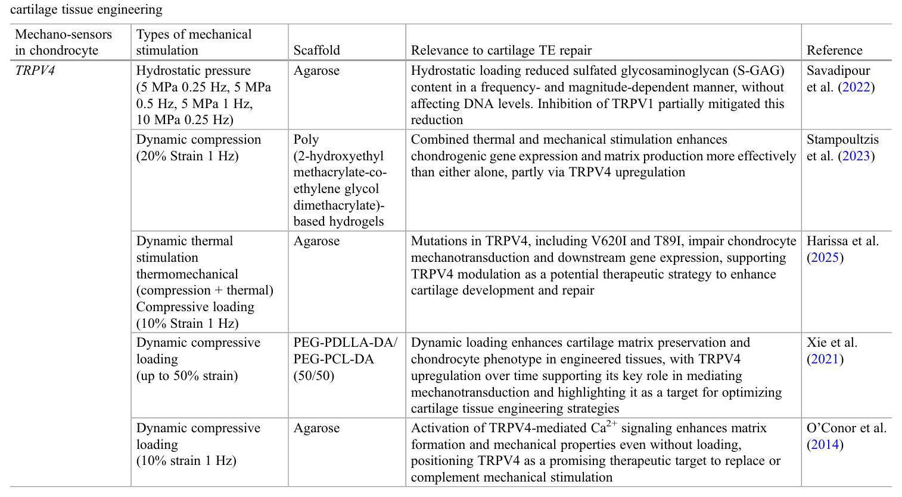
表 1 关键机械传感器（mechano-sensors）及通过机械刺激（mechanical stimulation）靶向这些传感器的研究，重点关注它们在基质沉积（matrix deposition）中的作用及其在Table 1 Key mechano-sensors and studies targeting them through mechanical stimulation, with a focus on their roles in matrix deposition and their potential in
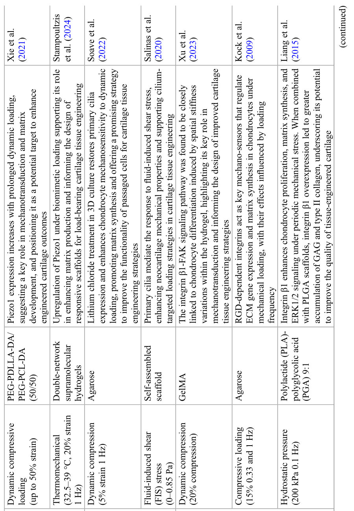
原书数据表（未编号，第 9 页）
Piezo1
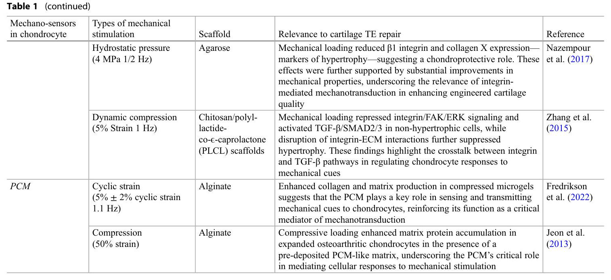
表 2（续） （续）Table 1 (continued)
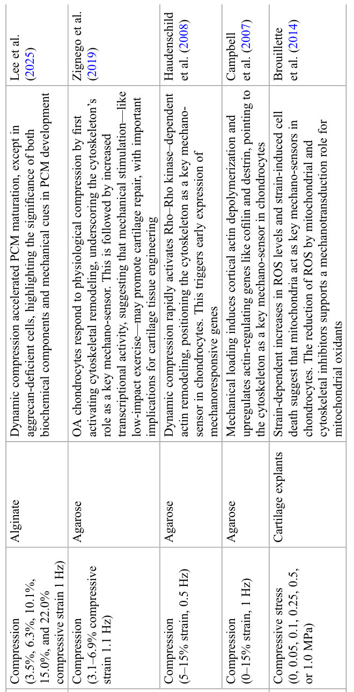
原书数据表（未编号，第 11 页）
线粒体
软骨细胞的机械换能器 机械信号是软骨细胞（chondrocyte）行为的基本调控因子，影响细胞增殖、分化和细胞外基质（extracellular matrix, ECM）的合成。这些信号通过机械换能器（mechanotransducer）网络转导为细胞内反应，该网络协调软骨稳态，但在失调时也可驱动软骨退变。若干关键信号级联通路已被确认为软骨细胞机械转导（mechanotransduction）的核心介导因子。其中一条重要通路涉及MAPK/ERK信号，该信号受机械应力的严格调控，且其激活需要完整的初级纤毛（primary cilium）。例如，有研究表明，软骨细胞中的ERK/mTOR信号依赖于有功能的初级纤毛（Xiang et al. 2019）。此外，去纤毛软骨细胞中磷酸化ERK1/2的基础表达水平降低，凸显了初级纤毛在传递MAPK/ERK信号中的关键作用（Subramanian et al. 2017）。Wnt/β-catenin通路是另一条受载荷和基质硬度影响的关键机械敏感级联通路。经典Wnt通路的激活与肥大（hypertrophy）及软骨质量降低相关，而抑制该通路则可促进软骨形成（chondrogenesis）和ECM沉积（Praxenthaler et al. 2018）。软骨中的机械转导还依赖于Hippo通路的效应分子YAP和TAZ，它们作为核内机械感受器，对ECM硬度和应变作出响应。YAP/TAZ的活性调控软骨细胞成熟与软骨稳态（Dupont 2016; Dupont et al. 2011），而其失调则会导致软骨降解和骨关节炎（osteoarthritis, OA）（Qi et al. 2023）。在机械诱导性OA小鼠模型中，利用siRNA靶向敲低YAP1可防止软骨破坏并改善疾病结局（Gong et al. 2019）。与之互补的生物材料策略也证明了调控YAP的潜力：可动态变硬并收缩的可注射仿生水凝胶（bioinspired hydrogel）能够下调YAP信号、增强干细胞的成软骨分化（chondrogenic differentiation），并在体内促进成熟、类天然软骨的形成（Mahajan et al. 2022）。与这些保护性通路相反，NF-κB信号轴常在过度或损伤性机械应力下被激活。NF-κB驱动软骨细胞的促炎和分解代谢反应，从而促进OA的进展。然而，通过材料设计与机械预处理（mechanical preconditioning）对该通路进行靶向抑制，已被证明可减轻软骨退变并支持修复（Jin et al. 2021; Jiang et al. 2018）。综上所述，这些发现表明软骨中的机械敏感通路虽然复杂，但具有可靶向性。通过将MAPK/ERK、Wnt/β-catenin、YAP/TAZ和NF-κB等分子换能器确认为软骨响应机械刺激的关键调控因子，研究人员正在发掘富有前景的治疗途径。其中包括开发能够调节机械换能器活性的“智能”疗法，例如机械受体的小分子激动剂或抑制剂，从而在无需直接施加外力的情况下利用机械转导的有益效应。一项重大挑战将是构建精确的递送系统，包括纳米颗粒、细胞外囊泡（extracellular vesicle）或微粒，这些系统能够靶向软骨细胞，同时最大限度地减少脱靶效应。此类基于药物的策略可与工程化构建体相结合，以增强组织再生、防止骨关节炎进展，并最终恢复软骨功能。
软骨细胞的力学效应体（mechano-impactors） 力学效应体是力学转导级联反应中的最终效应器。在软骨组织中，力学效应体体现了过度或异常载荷的病理后果，将机械应力转化为细胞损伤和组织退变。例如，已有研究表明，15–20 MPa范围内的冲击载荷可导致大量软骨细胞死亡（Bonnevie et al. 2017）。即使低于该阈值的较低冲击力，仍可通过诱导基质损伤（Furman et al. 2014）、线粒体膜去极化（Huser and Davies 2007）、分解代谢信号激活（Natoli et al. 2008）以及基质金属蛋白酶（matrix metalloproteinases, MMPs）等降解酶的上调（Early et al. 2021）来破坏软骨功能。这些结果损害了软骨的完整性和修复能力，将机械过负荷与进行性退变联系起来。这些证据凸显了力学效应体作为软骨力学生物学连续过程中的关键终点：力学感受器（mechano-sensors）检测外部力量，力学转导器（mechanotransducers）将其转化为细胞内信号，而力学效应体则决定这些信号是维持稳态还是驱动病理改变。认识到力学效应体的核心作用为干预治疗开辟了新的机遇。限制细胞死亡、保护线粒体功能或抑制分解代谢酶活性的治疗策略，可减轻损伤性载荷的有害影响。这些方法与软骨组织工程高度相关——在软骨组织工程中，需要精细调控的力学环境以促进再生；同时也与骨关节炎（osteoarthritis, OA）和创伤后骨关节炎（post-traumatic osteoarthritis, PTOA）的预防密切相关——在这两种疾病中，力学效应体是疾病进展的关键驱动因素。
骨（bone）力学转导
力学转导（mechanotransduction）在维持成人骨健康与稳态（homeostasis）中发挥着至关重要的作用。器官水平的机械负荷（mechanical loading）产生组织应变（tissue strains），并驱动骨基质（bone matrix）内的液体流动。由于骨稳态依赖于骨细胞调控下成骨细胞（osteoblasts）与破骨细胞（osteoclasts）的协同活动，因此理解组织水平的机械线索如何转化为细胞反应至关重要 (Castillo et al. 2021)。鉴于这三种骨细胞类型之间复杂的相互作用及其在骨力学转导中的核心地位，我们将探讨每种细胞特异的力学敏感功能及其在骨形成或骨修复（bone repair）中的作用。
图 2 骨陷窝-小管网络（lacunocanalicular network）中的骨细胞（osteocyte）通过多种机械感受器（mechanosensor）感知机械刺激。关键组分包括：(a) 细胞周基质（pericellular matrix）、(b) Cx43间隙连接/半通道（gap junction/hemichannel）、(c) Panx1通道、(d) 机械敏感性离子通道（mechanosensitive ion channel）、(e) 整合素（integrin）、(f) 初级纤毛（primary cilium）以及 (g) 小窝蛋白-1（caveolin-1）。（图改编自 Choi et al. 2021）Fig. 2 Osteocytes in the lacunocanalicular network sense mechanical stimuli via multiple mechanosensors. Key components include the (a) pericellular matrix, (b) Cx43 gap junctions/ hemichannels, (c) Panx1 channels, (d) mechanosensitive ion channels, (e) integrins, (f) primary cilia, and (g) caveolin-1. (Figure adapted from Choi et al. 2021)
可被细胞周围液体流动和基质应变（压缩、拉伸或扭转）等刺激激活，见图2。机械刺激启动一系列信号通路级联反应，在促进骨形成的同时抑制骨吸收。连接蛋白43（Connexin 43, Cx43）是缝隙连接通道（gap junction channels）的主要蛋白组分，在维持骨稳态和介导机械线索的合成代谢反应中起着关键作用。在流体剪切应力（fluid shear stress）作用后的数秒至数分钟内，骨细胞即启动快速的生化反应，释放一氧化氮（nitric oxide, NO）、三磷酸腺苷（adenosine triphosphate, ATP）、钙离子（Ca²⁺）和前列腺素E₂（prostaglandin E₂, PGE₂）等信号分子 (Klein-Nulend et al. 1995; Malone et al. 2007)。PGE₂和NO的释放通过连接子半通道（connexon hemichannels）得以实现，并有助于细胞内信号级联反应的激活 (Joiner et al. 2014)。这些早期事件驱动骨建模（bone modeling）和骨重塑（bone remodeling）相关的下游过程，包括上调环氧化酶-2（cyclooxygenase-2, COX-2），该酶负责将花生四烯酸转化为PGE₂ (Castillo et al. 2021; Klein-Nulend et al. 1995; Malone et al.
2007)。成骨细胞/骨细胞中Cx43的缺失会导致骨折愈合延迟 (Chen et al. 2019)。研究表明，随着年龄增长，骨再生伴随着骨细胞密度降低和Cx43表达下降。这可能限制缝隙连接的形成，并减少机械负荷作用下NO和PGE₂的分泌，从而削弱骨的再生能力。这些发现凸显了骨细胞与Cx43在维持骨稳态中的关键作用 (Joiner et al. 2014)。P2X7核苷酸受体（P2X7R）是一种ATP门控离子通道，表达于包括成骨细胞和骨细胞在内的多种细胞类型。在许多细胞中，P2X7R与泛连接蛋白-1（pannexin-1, Panx1）密切相互作用，后者是一种半通道（hemi-channel），二者常共定位于质膜。既往研究表明，Panx1与P2X7R协同介导凋亡骨细胞释放ATP，ATP作为一种“找到我”（“find-me”）信号触发RANKL表达并激活骨重塑 (Cheung et al. 2016)。这些发现表明，对于疲劳或受损骨中的凋亡骨细胞而言，Panx1和P2X7R的激活对于刺激邻近旁观者骨细胞（bystander osteocytes）表达RANKL、进而启动骨重塑与再生至关重要。骨细胞膜周向应变（circumferential strain）的变化通过整合素（integrin）聚集及其与黏着斑（focal adhesions）处细胞骨架蛋白和催化蛋白的相互作用转化为细胞内信号。骨细胞的机械牵拉通过涉及整合素、细胞骨架、Src激酶和ERK激活的信号级联反应促进细胞存活。这些抗凋亡效应依赖于ERK的核转位和新基因的转录。上述发现共同证明了骨细胞整合素–细胞骨架介导的信号传导在骨再生与骨骼健康中的重要作用 (Plotkin et al. 2005)。最后，已有研究表明，成年小鼠骨膜（periosteum）中表达Prx1的祖细胞参与机械诱导的骨形成。谱系示踪（lineage tracing）显示，这些细胞在机械负荷后分化为骨细胞。破坏这些Prx1谱系细胞中的初级纤毛（primary cilia）会显著损害骨形成，使矿物质沉积率（mineral apposition）和形成率降低30%以上。这些发现凸显了初级纤毛在机械感知（mechanosensation）和成骨激活中的重要性，并提示表达Prx1的骨膜祖细胞可能作为骨再生治疗中有前景且易于获取的细胞来源 (Moore et al. 2019)。
成骨细胞机械转导（mechanotransduction） 骨细胞（osteocytes）作为检测机械负荷变化并传递相应信号的传感细胞，而成骨细胞（osteoblasts）和破骨细胞（osteoclasts）则作为效应细胞发挥功能。研究表明，骨细胞相互之间以及与骨表面成骨细胞进行通讯的一种方式是通过缝隙连接（gap junctions），图3a（Doty 1981; Yellowley et al. 2000）。Cx43是骨中最为普遍的连接蛋白（connexin），在破骨细胞、成骨细胞和骨细胞中均有表达（Plotkin et al. 2016）。对Cx43基因敲除小鼠和条件性Cx43缺陷小鼠（成骨细胞和骨细胞，早期发育阶段）的研究显示，骨内膜皮质骨吸收增加并伴骨膜扩张，导致全身骨量降低，且皮质骨增宽却变薄（Plotkin et al. 2016;
图 3 成骨细胞（osteoblast）机械转导（mechanotransduction）。(a) 成骨细胞（OB）与骨细胞（OC）之间的接触部位充满镧。电子致密线（electron-dense line，箭头）表明两种细胞各自伸出的胞质突起之间存在间隙连接。未矿化的类骨质（osteoid，UO）包围着这些细胞突起 (Doty 1981)。(b) 离体（ex vivo）跖骨（metatarsal）生长的活体成像（上）及相应的组织学图像（下）。将新生小鼠跖骨进行培养，并用Panx3腺病毒（AdPanx3）或对照腺病毒感染，以评估Panx3过表达对骨发育的影响 (Ishikawa et al. 2011)。(c) WT和P2X7R KO小鼠右侧尺骨（ulna）的机械加载。双重荧光染料标记（double fluorochrome labeling，亮带：绿色和红色）显示WT小鼠内侧和外侧骨膜表面有板层骨（lamellar bone）形成，而KO小鼠中形成减少Fig. 3 Osteoblast mechanotransduction. (a) A contact site between an osteoblast (OB) and an osteocyte (OC) is filled with lanthanum. The electron-dense line (arrows) indicates the presence of a gap junction between cytoplasmic processes extending from each cell type. Unmineralized osteoid (UO) surrounds the cellular processes (Doty 1981). (b) Live images of ex vivo metatarsal growth (top) and corresponding histology (bottom). Newborn mouse metatarsal bones were cultured and infected with Panx3 adenovirus (AdPanx3) or a control adenovirus to assess the effects of Panx3 overexpression on bone development (Ishikawa et al. 2011). (c) Mechanical loading of the right ulna in WT and P2X7R KO mice. Double fluorochrome labeling (bright bands: green and red) shows lamellar bone formation on medial and lateral periosteal surfaces in WT but reduced in KO
Grimston et al. 2011）。由此可见，这不仅证明了成骨细胞与骨细胞之间存在通讯，也证明了Cx43在骨形成中的关键作用。Panx3与成骨细胞的增殖和分化相关（Plotkin et al. 2016; Ishikawa et al. 2011; Bond et al. 2011）。研究表明，Panx3作为一种独特的内质网（endoplasmic reticulum, ER）Ca²⁺通道促进成骨细胞分化，该通道经嘌呤能受体（purinergic receptor）/PI3K/Akt信号激活，继而触发钙调蛋白依赖性通路。Panx3还形成半通道（hemichannel）释放ATP，从而放大嘌呤能信号，并建立缝隙连接以传播细胞间Ca²⁺波。抑制Panx3的通道或连接功能会破坏成骨细胞分化，凸显其关键的调控作用，图3b（Ishikawa et al. 2011）。此外，Panx3已被证明在骨发育中发挥关键作用，并可能成为未来骨组织工程策略的新型靶点，尤其是通过Runx2依赖性信号通路（Bond et al. 2011）。近期研究还在源自矿化中成骨细胞的细胞外囊泡（EVs）中鉴定出Panx3（Xiao et al. 2007）。目前，EVs正被纳入骨组织工程策略，而成骨细胞来源的EVs是一种颇具前景的工具，可通过机械转导促进成骨，并凭借其天然的促成骨内容物支持功能性骨再生。对成骨细胞的机械刺激会启动细胞间钙波的传播，这是其机械敏感反应的关键组成部分。在人小梁骨成骨细胞中，该过程已被证明涉及P2X7R，提示其在介导机械诱导的细胞间信号传导中具有重要作用（Agrawal et al. 2017）。在P2X7R基因敲除小鼠中的研究表明，骨骼对负荷的敏感性显著降低，导致骨量减少（osteopenia）。在体外，流体剪切应力（fluid shear stress）通过激活P2X7R诱导野生型成骨细胞释放ATP并产生PGE2，但在敲除细胞中则无此效应，见图3c（Li et al. 2005）。这些发现表明，P2X7R在机械转导和骨再生中发挥关键作用。在骨修复与再生过程中，细胞骨架（cytoskeleton）在介导成骨细胞对机械刺激的反应中发挥关键作用。一项研究表明，脉冲电场可引导成骨细胞迁移，并增加肌动蛋白（actin）和黏着斑蛋白（vinculin）等细胞骨架蛋白，从而增强细胞在3D支架上的增殖与黏附（Kumar et al. 2016）。另一项研究发现，RGD修饰基底可通过Wnt/β-catenin信号通路促进成骨分化，这很可能由迁移过程中的细胞骨架张力所驱动，图3d（He et al. 2018）。第三项研究将频率依赖性机械振动与细胞核位移及成骨标志物表达联系起来，展示了肌动蛋白应力纤维和黏着斑（focal adhesions）如何精细调控机械转导（Eto et al. 2025）。综上所述，这些发现凸显了细胞骨架作为成骨细胞核心机械感受器（mechanosensor）的地位。
图3（续）（Li et al. 2005）。（d）MSC在RGD修饰基底上的分化。FDA、肌动蛋白和黏着斑蛋白（蓝色）显示，与PAM-COL相比，PAM-COL-RGD上的细胞骨架张力和黏着斑增加（He et al. 2018）
骨膜祖细胞（periosteal progenitor cells）通过分化为成骨细胞参与负荷诱导的骨形成。体内研究显示，缺失这些骨软骨祖细胞（osteochondroprogenitors）的小鼠表现出严重受损的机械诱导骨形成和骨骼矿化不足。该研究还发现，这些祖细胞能以独特方式感知流体剪切以促进成骨细胞分化——这一反应在初级纤毛（primary cilium）缺失时消失。这些发现表明，骨膜祖细胞是成体骨中一种机械敏感且持续存在的细胞来源，无论这些细胞还是其纤毛，均是骨再生策略中极具前景的靶点（Moore et al. 2018）。
破骨细胞机械转导（osteoclast mechanotransduction）
机械转导直接调控破骨细胞（osteoclast）的分子通路尚未被完全阐明。已有研究表明，基质刚度（matrix stiffness）在体外和体内均可影响破骨细胞的命运；具体而言，刚度增加会抑制整合素（integrin）β3–RhoA–ROCK2–YAP信号通路，从而促进破骨细胞分化（osteoclastogenesis）（Wang et al. 2023b）。破骨细胞还可通过一过性钙离子升高来感知并响应机械刺激，充当初级响应者，并将信号传递给邻近细胞，后者表现出延迟的次级钙响应。ATP，尤其是ADP，介导了这一信号传导（Dsouza and Komarova 2024）。尽管Piezo1在破骨细胞中有表达（Sun et al. 2019），但在小鼠中敲除该基因并不影响骨吸收（bone resorption）或骨量（bone mass），提示其并非破骨细胞机械敏感性（mechanosensitivity）的关键调控因子（Wang et al. 2020）。相比之下，Cx37敲除小鼠表现出前体细胞标志物升高和骨量增加，表明Cx37是破骨细胞正常分化与融合所必需的。总体而言，与骨细胞（osteocyte）和成骨细胞（osteoblast）不同，调控破骨细胞响应机械信号的主要机械感受器（mechanosensors）仍不明确。
计算机模拟（in silico）模型
计算模拟，亦称in silico模型，已被开发用于研究力学信号（mechanical cues）如何在骨软骨（osteochondral）愈合过程中调控组织再生 (Duda et al. 2005; Kelly and Prendergast 2005)。一项研究采用基于最小主应变（minimum principal strain）阈值的力学生物学（mechanobiological）模型来预测小型猪（minipig）骨软骨缺损愈合过程中的组织形成，并利用组织学数据对该模型进行了验证 (Duda et al . 2005)。另一种方法则利用八面体剪切应变（octahedral shear strain）和流体速度计算了间充质干细胞（MSCs）的力学依赖性分化刺激，成功重现了所观察到的修复模式 (Kelly and Prendergast 2005)。这些研究共同表明，骨软骨修复的特征性表现——如关节面（articular surface）处的纤维组织形成——不仅受生物学信号、而且受力学信号的塑造 (Duda et a l. 2005; Kelly and Prendergast 2005)。研究组织工程（tissue engineering）辅助骨软骨缺损再生的in silico模型已成功模拟了再生过程的诸多方面，包括骨软骨缺损的自发修复。这些研究表明，氧的可利用性、力学信号以及支架（scaffold）特性在骨软骨缺损修复中发挥着至关重要的作用 (Kelly and Prendergast 2006; O’Reilly and Kelly 2016)。然而，这些模型均假设缺损被均质的生物材料（biomaterial）完全填充，忽略了支架结构（scaffold architecture）的影响。虽然这可能反映了基于水凝胶（hydrogel）的方法，但许多组织工程策略采用的是结构明确的支架（architecturally defined scaffolds），而这类支架会显著影响缺损内的应变分布。为解决这一问题，另一项研究系统地改变了支架结构和材料性能，结果表明，弹性模量（elastic modulus）处于较低GPa范围（如松质骨（cancellous bone））且具备多方向力学稳定性的支架可促进骨软骨愈合 (Tortorici et al. 2021)。尽管存在种种简化，此类in silico模型仍是在进行体内（in vivo）测试之前筛选力学生物学导向支架设计的宝贵工具。
支架（scaffold）设计
软骨与骨在细胞组成、生理环境和生物力学特性方面存在显著差异。这种固有的异质性，加之两者截然不同的愈合能力，为骨软骨（osteochondral）重建带来了重大挑战。力生物学（mechanobiology）凸显了这些力学差异的重要性，强调用于骨软骨缺损修复的理想支架（scaffold）设计应具有模拟从关节面到缺损基底过渡的梯度特征。为此，仿生梯度支架（bioinspired gradient scaffolds）应运而生，成为一种颇具前景的策略：其通过组合多种材料与逐渐变化的孔隙率（porosity），实现力学性能的连续变化，从而引导细胞行为与组织再生 (Zadegan et al. 2024; Golebiowska and Nukavarapu 2022; Hu et al. 2023)。Zadegan等人利用冷冻干燥（freeze-drying）技术制备了一种由丝素蛋白（silk fibroin）和羟基磷灰石（hydroxyapatite, HAP）组成的三层多孔支架。尽管该构建体表现出明显的梯度力学性能，但在体外（in vitro）却未能促进骨髓基质细胞（bone marrow stromal cells, BMSCs）的成骨或成软骨分化 (Zadegan et al. 2024)。在此基础上，Hu等人通过自诱导结晶、仿生矿化和逐层静电纺丝（electrospinning）技术构建了一种多层聚己内酯（polycaprolactone, PCL）纤维支架。该支架通过复刻骨软骨组织的天然梯度结构，在体外成功促进了成软骨与成骨活性，展现出一体化修复的巨大潜力 (Hu et al. 2023)。其他研究则聚焦于增强骨-软骨界面的结构仿生。Golebiowska等人制备了双相、三相和梯度三种形式的仿生聚乳酸（polylactic acid, PLA）支架，其具有可调孔隙率与分级结构。这些支架通过一种新型生物打印（bioprinting）策略实现了区域特异性的力学性能，并支持细胞的高存活率及其空间有序分布 (Golebiowska and Nukavarapu 2022)。然而，上述研究均未进展到体内（in vivo）评估阶段。Browe等人针对这一空白，设计了具有取向孔隙的双层细胞外基质（extracellular matrix, ECM）来源支架，该支架增强了细胞浸润、软骨基质沉积和胶原取向排列。值得注意的是，在体内植入6个月后，这些构建体促进了透明软骨样（hyaline-like）修复组织的形成，凸显了空间调控的支架结构在引导骨软骨再生中的重要性 (Browe et al. 2022)。尽管如此，这些研究虽强调仿生梯度支架设计，却在很大程度上忽视了力学转导（mechanotransduction）在重塑天然组织微环境中的作用。针对这一问题，Liu等人采用液体壳聚糖（chitosan）基底与分层羟基磷灰石的冻干粘接（lyophilization bonding）技术设计了一种梯度支架，该支架在体外促进BMSCs粘附与分化的同时，抑制了软骨细胞去分化（dedifferentiation）。在体内，该支架通过应力纤维（stress fiber）分布调控YAP核转运，显著增强了骨软骨再生，使成骨与成软骨生物标志物均表达上调 (Liu et al. 2025)。这些发现凸显了该支架通过力学转导介导的修复潜力，有望实现有效的骨软骨损伤治疗。
力学刺激（mechanical stimuli）
骨软骨（osteochondral）支架的机械预调节是指在生物反应器系统中施加受控的动态机械刺激，如循环压缩、剪切力或流体静压（hydrostatic pressure），以复制天然关节复杂的生物力学环境。这些机械信号激活驻留细胞中的机械敏感信号通路，增强细胞外基质合成、细胞增殖和谱系特异性分化。这种预启动过程可改善支架的成熟和功能整合，提高植入后组织修复成功的可能性。多项体外研究表明，将骨软骨支架暴露于动态机械载荷（无论是剪切、压缩还是拉伸应变）下，可上调软骨层和骨层细胞中骨特异性基因和软骨特异性基因的表达，证明机械刺激能够在单一双层支架内驱动谱系特异性分化 (Bonzani et al. 2012; Friedl et al. 2007)。Lin 等人证明，在植入骨软骨缺损（osteochondral defects）之前对支架进行14天的动态加载，可显著增强植入后的软骨再生和修复效果 (Lin et al. 2017)。此外，Monaco 等人强调，双相支架的生物力学响应高度依赖于骨区材料的特性；在临床相关的运动学载荷条件下，基体材料的选择显著影响人细胞的软骨向分化（chondrogenic differentiation）(Monaco et al. 2022)。这些发现表明，机械刺激是一种强有力的工具，它利用机械生物学原理来促进骨软骨支架的成熟并引导谱系特异性细胞分化，最终改善复杂关节组织的功能性修复。
图 4 炎症介导的骨软骨（osteochondral）组织破坏级联反应。（1）OA（骨关节炎）或PTOA（创伤后骨关节炎）中升高的机械应力放大炎症反应，（2）使促炎因子（pro-inflammatory factors）释放入血流，（3）这些因子将固有免疫细胞（innate immune cells）招募至滑膜（synovia）。（4）促炎细胞因子（pro-inflammatory cytokines）驱动分解代谢（catabolic）活性，（5）扰乱软骨稳态（cartilage homeostasis），（6）触发炎症介质（inflammatory mediators）的进一步释放，（7）并损害骨重塑（bone remodeling），由此形成一个反馈回路（feedback loop），炎症与异常力学在其中共同促进骨软骨退变并阻碍修复。（本图使用Biorender绘制）Fig. 4 Inflammation-mediated cascade of osteochondral tissue breakdown. (1) Elevated mechanical stress in OA or PTOA amplifies inflammation, (2) releasing pro-inflammatory factors into the bloodstream that (3) recruit innate immune cells to the synovia. (4) Pro-inflammatory cytokines drive catabolic activity, (5) disrupt cartilage homeostasis, (6) trigger further release of inflammatory mediators, and (7) impair bone remodeling, creating a feedback loop in which inflammation and abnormal mechanics jointly promote osteochondral degeneration and hinder repair. (Figure created in Biorender)
对组织工程（tissue engineering）而言至关重要，因为支架（scaffold）与再生策略在设计上必须既能承受力学载荷，又能减轻炎症信号，从而有效促进骨软骨（osteochondral, OC）修复。如果我们首先考察力学转导（mechanotransduction）在成纤维细胞样滑膜细胞（fibroblast-like synoviocytes, FLS）中所起的作用，便会清楚地发现，这些细胞在骨关节炎（osteoarthritis, OA）进展中并非被动的旁观者，而是关节病变的主动驱动者。在OA及相关关节炎中，它们呈现出以过度增殖、抗凋亡和侵袭性为特征的分解代谢表型（catabolic phenotype）。这一转变受到力学转导的强烈影响。YAP/TAZ转录活性响应细胞骨架及细胞外力学信号，在关节炎中上调，并维持病理性FLS表型。抑制YAP/TAZ可使细胞恢复至更为静息的状态，并且在体内可通过降低全身炎症而减轻关节炎严重程度（Caire et al. 2021）。初级纤毛（primary cilia）同样介导机械感觉应答，在IL-1存在时伸长，并通过前列腺素（prostaglandin）和一氧化氮（nitric oxide）信号放大炎症级联反应（Wann and Knight 2012）。这些通路共同促进FLS的持续活化，并导致骨软骨降解。以力学转导为靶点——尤其是在软骨细胞（chondrocyte）中——提供了一种有前景的策略，可使软骨细胞摆脱细胞外基质（extracellular matrix, ECM）降解，并营造更有利于骨软骨再生的关节环境。研究表明，以NF-κB等力学转导分子（mechano-transducer）或Piezo1/2、TRPV4及初级纤毛等力学传感器（mechanosensor）为靶点，能够防止ECM降解（Wann and Knight 2012; Ayushman et al. 2025; Ely et al. 2025; Lee et al. 2021; Nims et al. 2024; Palmer et al. 2025; Segarra-Queralt et al. 2023）。基质柔顺性（matrix compliance）增加可降低软骨细胞核内NF-κB活性，从而降低分解代谢基因表达与促炎细胞因子（proinflammatory cytokine）分泌（Ayushman et al. 2025）。相反，在炎症或过度载荷条件下，NF-κB和Runx2被激活，驱动降解酶表达和ECM丢失（Segarra-Queralt et al. 2023）。条件性敲除（conditional knockout, cKO）Piezo1/2可对软骨退变、滑膜炎（synovitis）和疼痛提供强有力的保护（Ely et al. 2025）。PIEZO1在人OA软骨中表达升高，其在软骨细胞中的上调促进了一种前馈机制（feed-forward mechanism）：PIEZO1活性增强可提高基础水平及形变诱发的细胞内Ca²⁺，从而放大分解代谢信号（Lee et al. 2021）。有趣的是，PIEZO1的激活还可依载荷状态不同而驱动合成代谢程序：在无载荷条件下，PIEZO1促进了促软骨形成转录组（pro-chondrogenic transcriptome），且PIEZO1激动剂Yoda1在体外增加了硫酸化糖胺聚糖（sulfated glycosaminoglycan）沉积（Nims et al. 2024）。比较转录组学进一步揭示，TRPV4与PIEZO1激活所下调的差异表达基因（differentially expressed genes, DEGs）集合在很大程度上互不相同。TRPV4下调的基因与IL-1处理所抑制的基因显著重叠，提示TRPV4可能直接对抗炎症程序，而PIEZO1则调控一条更为正交的力学调控轴（Palmer et al. 2025）。除离子通道外，初级纤毛是另一个关键的力学传感器：暴露于IL-1的软骨细胞通常会增加趋化因子（chemokine）、一氧化氮和前列腺素E₂的释放，但当纤毛结构受到破坏时（例如IFT88突变），这一应答显著减弱，一氧化氮释放则完全消失。类似地，通过PKA阻断以药理学方式抑制IL-1诱导的纤毛伸长，可减弱趋化因子应答（Wann and Knight 2012）。最后，就力学转导、炎症与骨形成之间复杂的相互作用而言，研究表明，无论是通过药物还是基因手段抑制Piezo1，均可减轻病理性新骨形成，而激活Piezo1则促进病理性新骨形成。在机制上，这一过程通过CaMKII（calcium/calmodulin-dependent protein kinase II，钙/钙调蛋白依赖性蛋白激酶II）信号的激活所介导，该信号已被确认为Piezo1驱动的力学转导所必需（Chen et al. 2023）。来自显微计算机断层扫描（micro-computed tomography）分析的补充性发现进一步凸显了Piezo2在维持骨小梁（trabecular bone）完整性中的作用。具体而言，条件性敲除Piezo2可降低骨体积、厚度和密度，且不依赖于损伤，同时还会损害小鼠中与年龄相关的半月板骨化（meniscal ossification）。有趣的是，Piezo1/2联合cKO可挽救Piezo2 cKO小鼠的大多数异常骨重塑特征，但无法恢复胫骨内侧平台（medial tibial plateau）厚度，凸显了Piezo2在维持骨结构方面独特而不可或缺的作用（Ely et al. 2025）。力学转导与炎症之间错综复杂的串扰（crosstalk）是骨关节炎发病机制的核心，也是实现有效骨软骨修复的关键障碍。机械敏感通路——包括NF-κB、PIEZO通道、TRPV4和初级纤毛——的异常激活会驱动促炎信号、软骨基质降解和病理性骨重塑。与此同时，这些相同的通路也提供了强有力的治疗切入点：经过适当调控，它们可以减轻炎症、恢复软骨细胞的稳态功能，并支持骨与软骨的平衡再生。对于组织工程而言，这些认识开辟了新的方向。具有可调力学性能和免疫调节能力的先进生物材料（biomaterial）可被设计用于调控细胞力学感知（mechanosensing），同时抑制炎症级联反应。同样，能够再现生理性力学载荷的工程化支架可能有助于将软骨细胞和滑膜成纤维细胞（synovial fibroblast）重编程，使其脱离分解代谢表型，从而营造促再生的环境。最终，将力学转导与炎症的相关知识整合到生物材料和支架设计中，对于克服现有方法的局限并实现持久的骨软骨修复将至关重要。
[1]Agrawal A, Henriksen Z, Syberg S, Petersen S, Aslan D, Solgaard M et al (2017) P2X7Rs are involved in cell death, gr owth and cellular signaling in primary human osteoblasts. Bone 95:91 –101
[2]Ayushman M, Lee HP, Agarwal P, Mikos G, Tong X, Jones S et al (2025) Sliding hydrogels reveal the modulation of mechanosensing attenuates the inflammatory phenotype of osteoarthritic chondrocytes in 3D. J Biomed Mater Res A 113(1):e37861
[3]Bond SR, Lau A, Penuela S, Sampaio AV, Underhill TM, Laird DW et al (2011) Pannexin 3 is a novel tar get for Runx2, expressed by osteoblasts and mature growth plate chondrocytes. J Bone Miner Res 26(12):2911–2922
[5]Bonzani IC, Campbell JJ, Knight MM, Williams A, Lee DA, Bader DL et al (2012) Dynamic compressive strain influences chondrogenic gene expression in human periosteal cells: a case study. J Mech Behav Biomed Mater 1 1:72–81
[6]Brouillette MJ, Ramakrishnan PS, Wagner VM, Sauter EE, Journot BJ, McKinley TO et al (2014) Strain-dependent oxidant release in articular cartilage originates from mitochondria. Biomech Model Mechanobiol 13(3):565 –572
[7]Browe DC, Díaz-Payno PJ, Freeman FE, Schipani R, Burdis R, Ahern DP et al (2022) Bilayered extracellular matrix derived scaffolds with anisotropic pore architecture guide tissue organiza- tion during osteochondral defect repair. Acta Biomater 143:266–281
[8]Caire R, Audoux E, Courbon G, Michaud E, Petit C, Dalix E et al (2021) YAP/TAZ: key players for rheumatoid arthritis severity by driving fibroblast like synoviocytes phenotype and fi bro- inflammatory response. Front Immunol 12:791907
[9]Campbell JJ, Blain EJ, Chowdhury TT, Knight MM (2007) Loading alters actin dynamics and up-regulates co filin gene expression in chondrocytes. Biochem Biophys Res Commun 361(2): 329 –334
[10]Castillo AB, Chen JC, Jacobs CR (2021) Chapter 14, Cellular and molecular mechanotransduction in bone. In: Dempster DW, Cauley JA, Bouxsein ML, Cosman F (eds) Marcus and Feldman’s osteoporosis, 5th edn. Academic, London, pp 309–335
[11]Chen Y, Chen M, Xue T, Li G, Wang D, Shang P et al (2019) Osteocytic connexin 43 channels affect fracture healing. J Cell Physiol 234(11):19824 –19832
[12]Chen S, Li Z, Chen D, Cui H, Wang J, Li Z et al (2023) Piezo1-mediated mechanotransduction promotes entheseal pathological new bone formation in ankylosing spondylitis. Ann Rheum Dis 82(4):533–545
[13]Cheung WY, Fritton JC, Morgan SA, Seref-Ferlengez Z, Basta-Pljakic J, Thi MM et al (2016) Pannexin-1 and P2X7-receptor are required for apoptotic osteocytes in fatigued bone to trigger RANKL production in neighboring bystander osteocytes. J Bone Miner Res 31(4):890–899
[14]Choi JUA, Kijas AW, Lauko J, Rowan AE (2021) The mechanosensory role of osteocytes and implications for bone health and disease states. Front Cell Dev Biol 9:770143
[15]Clements KM, Bee ZC, Crossingham GV, Adams MA, Sharif M (2001) How severe must repetit ive loading be to kill chondrocytes in articular cartilage? Osteoarthr Cartil 9(5):499 –507
[16]Davis S, Roldo M, Blunn G, Tozzi G, Roncada T (2021) Influence of the mechanical environment on the regeneration of osteochondral defec ts. Front Bioeng Biotechnol 9:603408
[17]Delco ML, Bonassar LJ (2021) Targeting calcium-related mechanotransduction in early OA. Nat Rev Rheumatol 17(8):445–446
[18]Doty SB (1981) Morphological evidence of gap junctions between bone cells. Calcif Tissue Int 33(5):509–512
[19]Dsouza C, Komarova SV (2024) Mechanosensitivity and mechanotransductive properties of osteoclasts. Am J Physiol Cell Physiol 326(1):C95– C106
[20]Duda GN, Maldonado ZM, Klein P, Heller MO, Burns J, Bail H (2005) On the in fluence of mechanical conditions in osteochondral defect healing. J Biomech 38(4):843 –851
[21]Dupont S (2016) Role of YAP/TAZ in cell-matrix adhesion-mediated signalling and mechanotransduction. Exp Cell Res 343(1):42–53
[22]Dupont S, Morsut L, Aragona M, Enzo E, Giulitti S, Cordenonsi M et al (2011) Role of YAP/TAZ in mechanotransduction. Nature 474(7350):179– 183
[23]Early JO, Fagan LE, Curtis AM, Kennedy OD (2021) Mitochondria in injury, in flammation and disease of articular skeletal joints. Front Immunol 12:695257
[24]Ely EV, Lenz KL, Paradi SG, Ack S, Behrmann A, Dunivan S et al (2025) Chondrocyte-specific knockout of Piezo1 and Piezo2 protects against post-traumatic osteoarthritis structural damage and pain in mice. Arthritis Res Ther 27(1):152
[25]Eto N, Mizuta Y, Shiraishi T (2025) Frequency-dependent regulation of osteogenesis by nuclear displacement in osteoblasts under mechanical vibrations. J Biomech 189:112838
[26]Fredrikson JP, Brahmachary PP, Erdoğan AE, Archambault ZK, Wilking JN, June RK et al (2022) Metabolomic pro filing and mechanotransduction of single chondrocytes encapsulated in algi- nate microgels. Cells 11(5):900
[27]Friedl G, Schmidt H, Rehak I, Kostner G, Schauenstein K, Windhager R (2007) Undifferentiated human mesenchymal stem cells (hMSCs) are highly sensitive to mechanical strain: transcrip- tionally controlled early osteo-chondrogenic response in vitro. Osteoarthr Cartil 15(1 1):1293– 1300
[28]Furman BD, Mangiapani DS, Zeitler E, Bailey KN, Horne PH, Huebner JL et al (2014) Targeting pro-inflammatory cytokines following joint injury: acute intra-articular inhibition of interleukin- 1 following knee injury prevents post-traumatic arthritis. Arthritis Res Ther 16(3):R134
[29]Golebiowska A, Nukavarapu SP (2022) Bio-inspired zonal-structured matrices for bone-cartilage interface engineering. Biofabrication 14:025016
[30]Gong Y, Li SJ, Liu R, Zhan JF, Tan C, Fang YF et al (2019) Inhibition of YAP with siRNA prevents cartilage degradation and ameliorates osteoarthritis development. J Mol Med (Berl) 97(1):1 03–114
[31]Grimston SK, Goldberg DB, Watkins M, Brodt MD, Silva MJ, Civitelli R (2011) Connexin43 deficiency reduces the sensitivity of cortical bone to the effects of muscle paralysis. J Bone Miner Res 26(9):2151–2160
[32]Harissa Z, Kim Y, Dicks AR, Steward N, Guilak F (2025) Skeletal dysplasia-causing mutations in TRPV4 alter the chondrocyte transcriptomic response to mechanical loading. Am J Physiol Cell Physiol 328(4):C1 135–C1C49
[33]Haudenschild DR, Nguyen B, Chen J, D’Lima DD, Lotz MK (2008) Rho kinase–dependent CCL20 induced by dynamic compression of human chondrocytes. Arthritis Rheum 58(9):2735 –2742
[34]He J, Zhang N, Zhang J, Jiang B, Wu F (2018) Migration critically meditates osteoblastic differentiation of bone mesenchymal stem cells through activating canonical Wnt signal path- way. Colloids Surf B Biointerfaces 171:205–213
[35]Hu W, Chen Y, Dou C, Dong S (2021) Microenvironment in subchondral bone: predominan t regulator for the treatment of osteoarthritis. Ann Rheum Dis 80(4):413 –422
[36]Hu Y, Yin X, Ding H, Kang M, Liang S, Wei Y et al (2023) Multilayer functional bionic fabricated polycaprolactone based fibrous membranes for osteochondral integrated repair. Colloids Surf B Biointerfaces 225:113279
[37]Huser CA, Davies ME (2007) Calcium signaling leads to mitochondrial depolarization in impact-induced chondrocyte death in equine articular cartilage explants. Arthritis Rheum 56(7):2322 –2334
[38]Ishikawa M, Iwamoto T, Nakamura T, Doyle A, Fukumoto S, Yamada Y (2011) Pannexin 3 functions as an ER Ca(2+) channel, hemichannel, and gap junction to promote osteoblast differentiation. J Cell Biol 193(7):1257–1274
[39]Jeon JE, Schrobback K, Meinert C, Sramek V, Hutmacher DW, Klein TJ (2013) Effect of preculture and loading on expression of matrix molecules, matrix metalloproteinases, and cytokines by expanded osteoarthritic chondrocytes. Arthritis Rheum 65(9):2356–2367
[40]Jiang T, Kai D, Liu S, Huang X, Heng S, Zhao J et al (2018) Mechanically cartilage-mimicking poly (PCL-PTHF urethane)/collagen nanofibers induce chondrogenesis by blocking NF–kappa B signaling pathway. Biomaterials 178:281 –292
[41]Jin Y, Li Z, Wu Y, Li H, Liu Z, Liu L et al (2021) Aberrant fluid shear stress contributes to articular cartilage pathogenesis via epigenetic regulation of ZBTB20 by H3K4me3. J Inflamm Res 14: 6067–6083
[42]Joiner DM, Tayim RJ, McElderry JD, Morris MD, Goldstein SA (2014) Aged male rats regenerate cortical bone with reduced osteocyte density and reduced secretion of nitric oxide after mechanical stimulation. Calcif Tissue Int 94(5):484–494
[43]Kelly DJ, Prendergast PJ (2005) Mechano-regulation of stem cell differentiation and tissue regen- eration in osteochondral defects. J Biomech 38(7):1413– 1422
[44]Kelly DJ, Prendergast PJ (2006) Prediction of the optimal mechanical properties for a scaffold used in osteochondral defect repair. T issue Eng 12(9):2509 –2519
[45]Klein-Nulend J, Semeins CM, Ajubi NE, Nijweide PJ, Burger EH (1995) Pulsating fluid flow increases nitric oxide (NO) synthesis by osteocytes but not periosteal fibroblasts – correlation with prostaglandin upregulation. Biochem Biophys Res Commun 217(2):640–648
[46]Kock LM, Schulz RM, van Donkelaar CC, Thümmler CB, Bader A, Ito K (2009) RGD-dependent integrins are mechanotransducers in dynamically compressed tissue-engineered cartilage con- structs. J Biomech 42(13):2177 –2182
[47]Kumar A, Nune KC, Misra R (2016) Understanding the response of pulsed electric field on osteoblast functions in three-dimensional mesh structures. J Biomater Appl 31(4):594 –605
[48]Lanyon LE (1993) Osteocytes, strain detection, bone modeling and remodeling. Calcif T issue Int 53 (Suppl 1):S102–S106; discussion S106– 107
[49]Lee W, Nims RJ, Savadipour A, Zhang Q, Leddy HA, Liu F et al (2021) Inflammatory signaling sensitizes Piezo1 mechanotransduction in articular chondrocytes as a pathogenic feed-forward mechanism in osteoarthritis. Proc Natl Acad Sci USA 1 18(13):e2001611118
[50]Lee D, Greer SE, Dudley AT (2025) Development of the mechanoresponsive pericellular matrix of chondrons. Sci Adv 1 1(18):eado6644
[51]Li J, Liu D, Ke HZ, Duncan RL, Turner CH (2005) The P2X₇ nucleotide receptor mediates skeletal mechanotransduction *. J Biol Chem 280(52):42952 –42959
[52]Liang W, Zhu C, Liu F, Cui W, Wang Q, Chen Z et al (2015) Integrin β1 gene therapy enhances in vitro creation of tissue-engineered cartilage under periodic mechanical stress. Cell Physiol Biochem 37(4):1301–1314
[53]Lin S, Lee WYW, Feng Q, Xu L, Wang B, Man GCW et al (2017) Synergistic effects on mesenchymal stem cell-based cartilage regeneration by chondrogenic preconditioning and mechanical stimulation. Stem Cell Res Ther 8(1):221
[54]Liu Y, Zhou C, Zhang X, Liu W (2025) Chirality hydroxyapatite gradient scaffold drives osteochondral regeneration via YAP/TAZ-mediated mechanotransduction. Adv Healthc Mater 14:e2501668
[55]Mahajan A, Singh A, Datta D, Katti DS (2022) Bioinspired injectable hydrogels dynamically stiffen and contract to promote mechanosensing-mediated chondrogenic commitment of stem cells. ACS Appl Mater Interfaces 14(6):7531–7550
[56]Malone AM, Anderson CT, Tummala P, Kwon RY, Johnston TR, Stearns T et al (2007) Primary cilia mediate mechanosensing in bone cells by a calcium-independent mechanism. Proc Natl Acad Sci USA 104(33):13325–13330
[57]Monaco G, Qawasmi F, El Haj AJ, Forsyth NR, Stoddart MJ (2022) Chondrogenic differentiation of human bone marrow MSCs in osteochondral implants under kinematic mechanical load is dependent on the underlying osteo component. Front Bioeng Biotechnol 10:998774
[58]Moore ER, Zhu YX, Ryu HS, Jacobs CR (2018) Periosteal progenitors contribute to load-induced bone formation in adult mice and require primary cilia to sense mechanical stimulation. Stem Cell Res Ther 9(1):190
[59]Moore ER, Chen JC, Jacobs CR (2019) Prx1-expressing progenitor primary cilia mediate bone formation in response to mechanical loading in mice. Stem Cells Int 2019(1):3094154
[60]Natoli RM, Scott CC, Athanasiou KA (2008) Temporal effects of impact on articular cartilage cell death, gene expression, matrix biochemistry, and biomechanics. Ann Biomed Eng 36(5): 780 –792
[61]Nazempour A, Quisenberry CR, Abu-Lail NI, Van Wie BJ (2017) Combined effects of oscillating hydrostatic pressure, perfusion and encapsulation in a novel bioreactor for enhancing extracel- lular matrix synthesis by bovine chondrocytes. Cell Tissue Res 370(1):179–193
[62]Nims R, Palmer DR, Kassab J, Zhang B, Guilak F (2024) The chondrocyte “mechanome”: activation of the mechanosensitive ion channels TRPV4 and PIEZO1 drives unique transcrip- tional signatures. FASEB J 38(13):e23778
[63]O’Conor CJ, Leddy HA, Benefield HC, Liedtke WB, Guilak F (2014) TRPV4-mediated mechanotransduction regulates the metabolic response of chondrocytes to dynamic loading. Proc Natl Acad Sci USA 111(4):1316 –1321
[64]O’Reilly A, Kelly DJ (2016) Unravelling the role of mechanical stimuli in regulating cell fate during osteochondral defect repair. Ann Biomed Eng 44(12):3446 –3459
[65]Palmer DR, Nims R, Zhang B, Guilak F (2025) Activation of the mechanosensitive ion channels TRPV4 and PIEZO1 downregulates key regulatory systems in the chondrocyte mechanome. Connect Tissue Res 66(4):239 –262
[66]Parfitt AM (1984) The cellular basis of bone remodeling: the quantum concept reexamined in light of recent advances in the cell biology of bone. Calcif Tissue Int 36(Suppl 1):S37 –S45
[67]Plotkin LI, Mathov I, Aguirre JI, Parfitt AM, Manolagas SC, Bellido T (2005) Mechanical stimulation prevents osteocyte apoptosis: requirement of integrins, Src kinases, and ERKs. Am J Physiol Cell Physiol 289(3):C633–CC43
[68]Plotkin LI, Laird DW, Amedee J (2016) Role of connexins and pannexins during ontogeny, regeneration, and pathologies of bone. BMC Cell Biol 17 Suppl 1(Suppl 1):19
[69]Praxenthaler H, Kramer E, Weisser M, Hecht N, Fischer J, Grossner T et al (2018) Extracellular matrix content and WNT/beta-catenin levels of cartilage determine the chondrocyte response to compressive load. Biochim Biophys Acta Mol Basis Dis 1864(3):851–859
[70]Qi H, Zhang Y, Xu L, Zheng X, Li Y, Wei Q et al (2023) Loss of RAP2A aggravates cartilage degradation in TMJOA via YAP signaling. J Dent Res 102(3):302–312
[71]Salinas EY, Aryaei A, Paschos N, Berson E, Kwon H, Hu JC et al (2020) Shear stress induced by fluid flow produces improvements in tissue-engineered cartilage. Biofabrication 12(4):045010
[72]Sanchez-Adams J, Leddy HA, McNulty AL, O’Conor CJ, Guilak F (2014) The mechanobiology of articular cartilage: bearing the burden of osteoarthritis. Curr Rheumatol Rep 16(10):451
[73]Savadipour A, Nims RJ, Katz DB, Guilak F (2022) Regulation of chondrocyte biosynthetic activity by dynamic hydrostatic pressure: the role of TRP channels. Connect Tissue Res 63(1):69 –81
[74]Segarra-Queralt M, Piella G, Noailly J (2023) Network-based modelling of mechano-inflammatory chondrocyte regulation in early osteoarthritis. Front Bioeng Biotechnol 11:1006066
[75]Segarra-Queralt M, Crump K, Pascuet-Fontanet A, Gantenbein B, Noailly J (2024) The interplay between biochemical mediators and mechanotransduction in chondrocytes: unravelling the differential responses in primary knee osteoarthritis. Phys Life Rev 48:205–221
[76]Soave A, Chiu LLY, Momin A, Waldman SD (2022) Lithium chloride-induced primary cilia recovery enhances biosynthetic response of chondrocytes to mechanical stimulation. Biomech Model Mechanobiol 21(2):605 –614
[77]Stampoultzis T, Guo Y, Nasrollahzadeh N, Karami P, Pioletti DP (2023) Mimicking loading- induced cartilage self-heating in vitro promotes matrix formation in chondrocyte-laden con- structs with different mechanical properties. ACS Biomater Sci Eng 9(2):651–661
[78]Stampoultzis T, Rana VK, Guo Y, Pioletti DP (2024) Impact of molecular dynamics of poly- rotaxanes on chondrocytes in double-network supramolecular hydrogels under physiological thermomechanical stimulation. Biomacromolecules 25(2):1144– 1152
[79]Subramanian A, Budhiraja G, Sahu N (2017) Chondrocyte primary cilium is mechanosensitive and responds to low-intensity-ultrasound by altering its length and orientation. Int J Biochem Cell Biol 91(Pt A):60–64
[80]Sun W, Chi S, Li Y, Ling S, Tan Y, Xu Y et al (2019) The mechanosensitive Piezo1 channel is required for bone formation. Elife 8:e47454
[81]Thompson CL, Plant JC, Wann AK, Bishop CL, Novak P, Mitchison HM et al (2017) Chondrocyte expansion is associated with loss of primary cilia and disrupted hedgehog signalling. Eur Cell Mater 34:128–141
[82]Tortorici M, Petersen A, Ehrhart K, Duda GN, Checa S (2021) Scaffold-dependent mechanical and architectural cues guide osteochondral defect healing in silico. Front Bioeng Biotechnol 9: 642217
[83]Villanueva I, Weigel CA, Bryant SJ (2009) Cell–matrix interactions and dynamic mechanical loading influence chondrocyte gene expression and bioactivity in PEG-RGD hydrogels. Acta Biomater 5(8):2832 –2846
[84]Wang L, You X, Lotinun S, Zhang L, Wu N, Zou W (2020) Mechanical sensing protein PIEZO1 regulates bone homeostasis via osteoblast-osteoclast crosstalk. Nat Commun 11(1):282
[85]Wang L, You X, Zhang L, Zhang C, Zou W (2022) Mechanical regulation of bone remodeling. Bone Res 10(1):16
[86]Wang N, Lu Y, Rothrauff BB, Zheng A, Lamb A, Yan Y et al (2023a) Mechanotransduction pathways in articular chondrocytes and the emerging role of estrogen receptor-alpha. Bone Res 11(1):13
[87]Wang X, Ji L, Wang J, Liu C (2023b) Matrix stiffness regulates osteoclast fate through integrin- dependent mechanotransduction. Bioact Mater 27:138– 153
[88]Wann AK, Knight MM (2012) Primary cilia elongation in response to interleukin-1 mediates the inflammatory response. Cell Mol Life Sci 69(17):2967– 2977
[89]Xiang W, Jiang T, Hao X, Wang R, Yao X, Sun K et al (2019) Primary cilia and autophagy interaction is involved in mechanical stress mediated cartilage development via ERK/mTOR axis. Life Sci 218:308–313
[90]Xiao Z, Camalier CE, Nagashima K, Chan KC, Lucas DA, de la Cruz MJ et al (2007) Analysis of the extracellular matrix vesicle proteome in minerali zing osteoblasts. J Cell Physiol 210(2):3 25–335
[91]Xie M, Fritch M, He Y, Fu H, Hong Y, Lin H (2021) Dynamic loading enhances chondrogenesis of human chondrocytes within a biodegradable resilient hydrogel. Biomater Sci 9(14):501 1–5024
[92]Xu W, Zhu J, Cao T, Yang G, Ahmed AAQ, Xiao L (2023) Engineered biomechanical microen- vironment of articular chondrocytes based on heterogeneous GelMA hydrogel composites and dynamic mechanical compression. Biomater Adv 153:213567
[93]Yellowley CE, Li Z, Zhou Z, Jacobs CR, Donahue HJ (2000) Functional gap junctions between osteocytic and osteoblastic cells. J Bone Miner Res 15(2):209 –217
[94]You L, Temiyasathit S, Lee P, Kim CH, Tummala P, Yao W et al (2008) Osteocytes as mechanosensors in the inhibition of bone resorption due to mechanical loading. Bone 42(1): 172–179
[95]Zadegan S, Vahidi B, Nourmohammadi J, Shojaee A, Haghighipour N (2024) Evaluation of rabbit adipose derived stem cells fate in perfused multilayered silk fibroin composite scaffold for osteochondral repair. J Biomed Mater Res B Appl Biomater 112(3):e35396
[96]Zhang T, Wen F, Wu Y, Goh GS, Ge Z, Tan LP et al (2015) Cross-talk between TGF-beta/SMAD and integrin signaling pathways in regulating hypertrophy of mesenchymal stem cell chondrogenesis under deferral dynamic compression. Biomaterials 38:72–85
[97]Zignego DL, Hilmer JK, Bothner B, Schell WJ, June RK (2019) Primary human chondrocytes respond to compression with phosphoproteomic signatures that include microtubule activation. J Biomech 97:109367
第3章 · 原书第45章 · Foundations and Biology
基于细胞与组织来源细胞外基质的骨软骨修复与再生方法（Cell- and Tissue-Derived Extracellular Matrix-Based Approaches for Osteochondral Repair and Regeneration）
Cell- and Tissue-Derived Extracellular Matrix-Based Approaches for Osteochondral Repair and Regeneration
骨软骨（osteochondral, OC）组织存在于关节区域，呈现出由三个相互整合的层构成的复杂分级结构（Cui et al. 2024; Novotná and Franková 2024）。浅表区（superficial zone）由无血管、无神经的透明软骨（hyaline cartilage）构成，软骨细胞（chondrocyte）密度较低。其下方为钙化软骨（calcified cartilage），锚定于软骨下骨（subchondral bone）层。在功能上，透明软骨提供薄而光滑的低摩擦关节面，而软骨下骨则提供结构支撑并分散机械载荷。介于两者之间的钙化软骨形成了朝向软骨下骨递增的矿物质含量梯度，以及朝向透明软骨递增的胶原（collagen, COL）组织化程度与水浓度梯度，从而缓冲软骨–骨界面处的机械应力（Novotná and Franková 2024）。OC缺损可由遗传易感性、肿瘤、物理创伤、缺血或继发性坏死引起，其愈合极为困难（Ramzan et al. 2023）。这种有限的修复能力源于以下因素：透明软骨的无血管特性限制了炎性细胞的募集；成熟且数量稀少的软骨细胞增殖潜能极低；以及界面两侧在细胞组成、细胞外基质（extracellular matrix, ECM）成分和力学性能方面存在差异（Thomas and Mercuri 2023）。因此，受损软骨常被纤维软骨（fibrocartilage）瘢痕组织所取代，而后者无法重现天然软骨的形成（Armiento et al. 2019）。临床上，损伤按深度分类：部分厚度缺损（partial-thickness defects）仅累及软骨，而全层缺损（full-thickness defects）还穿透软骨下骨（图1）。若不加处理，这些损伤可引起持续性疼痛和活动能力下降，并可能促成骨关节炎（osteoarthritis）的发生。实现持久的关节稳态依赖于软骨与骨的同时再生。骨髓刺激技术，如微骨折（microfracture, MF）或软骨下钻孔，通过在软骨下骨中创建通道释放间充质祖细胞（mesenchymal progenitor cells），这些细胞分化为软骨细胞并产生纤维软骨样修复组织（Panseri et al. 2012）。尽管该方法可募集内源性细胞，但所形成的修复组织缺乏天然透明软骨的生化和生物力学特性，且常随时间推移而退化。为改善疗效，自体软骨细胞植入（autologous chondrocyte implantation）和间充质干细胞（mesenchymal stem cell）疗法已被探索应用；然而，这些方法需要多次手术操作并伴随供区并发症，且通常仅限于小面积缺损。为克服这些局限，替代性细胞来源目前正在研究之中（Correia et al. 2017）。
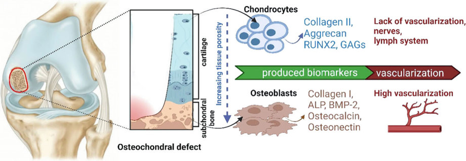
图 1 全层骨软骨（osteochondral, OC）缺损示意图，包括软骨与软骨下骨损伤，以及损伤愈合过程中软骨细胞与成骨细胞生物标志物之间的相互作用。（经Novotná和Franková (Novotná and Franková 2024)授权，依据知识共享署名4.0国际许可协议（Creative Commons Attribution 4.0 International License）转载）Fig. 1 Schematic representation of a full-thickness OC defect comprises both cartilage and subchondral bone damage, and the interplay between chondrocytes and osteoblasts biomarkers during damage healing. (Reprinted with permission from Novotná and Franková (Novotná and Franková 2024) under Creative Commons Attribution 4.0 International License)
骨软骨（osteochondral, OC）移植，包括镶嵌成形术（mosaicplasty），是将来自非负重区的自体（autologous）或同种异体（allogeneic）骨软骨栓移植至缺损处。尽管该方法能够恢复天然的软骨与软骨下骨（subchondral bone）结构，但受到供体来源有限、移植物潜在不匹配以及移植物失效风险等因素的制约。其他临床策略，如关节镜下清创灌洗（arthroscopic debridement and lavage），甚至全关节置换术（total joint arthroplasty），虽可缓解症状，却无法实现透明软骨（hyaline cartilage）的持久再生。因此，目前仍迫切需要能够持续重建软骨与软骨下骨、恢复关节平衡并防止进行性退变的治疗方法。有鉴于此，人们一直在探索新的组织工程与再生医学策略。通过利用先进的材料与制备技术，组织工程与再生医学策略现已采用三维（three-dimensional, 3D）支架作为临时性基质来引导骨软骨修复（Oliveira et al. 2006; Zhou et al. 2020）。这类支架经设计可模拟关节软骨（articular cartilage）与软骨下骨的机械和生化微环境，可在含或不含外源细胞的情况下植入，从而适应不同大小和复杂程度的缺损（Armiento et al. 2018）。在无细胞策略中，支架与骨髓刺激技术（如微骨折术，microfracture, MF）联合使用，以募集内源性祖细胞并促进软骨形成（chondrogenesis）。然而，如何忠实再现软骨-骨界面的独特生物功能仍是一项挑战。组织工程中一种日益有前景的方法是使用基于脱细胞细胞外基质（decellularized extracellular matrix, dECM）的材料，其既可直接来源于天然组织，也可来源于体外培养过程中产生的细胞衍生基质（Shen et al. 2020; Lemos et al. 2021a; Zhang et al. 2022）。这些材料经过多种脱细胞处理，在骨软骨再生中已显示出令人鼓舞的结果，如表1所总结。事实上，基于dECM的支架保留了丰富多样的生物活性分子，可提供支持细胞黏附、浸润和分化的生物学相关环境。重要的是，dECM极低的免疫原性使其适用于异种（xenogeneic）应用情境。上述两种来源的材料均需经过脱细胞处理（去除所有细胞成分和核酸）或灭活处理（devitalization，即在杀灭细胞的同时保留部分细胞残留物）（Maia et al. 2023）。本章综述了用于骨软骨修复的新兴dECM策略，涵盖组织来源与细胞来源支架、水凝胶（hydrogel）以及纳米纤维复合材料。本章重点介绍了生物材料设计、双相支架（biphasic scaffold）和手术增强（surgical augmentation）方面的进展，这些进展将结构模拟与生化信号相结合，以实现无生长因子、干细胞驱动的再生；同时还讨论了免疫调节（immunomodulation）以及鹿茸、山羊耳、肋软骨和胎盘等替代基质来源。
移植（autologous chondrocyte implantation），hADSCs 人脂肪干细胞（human adipose stem cells），hBMSCs 人骨髓间充质干细胞（human BMSCs），hCDPCs 人关节软骨来源祖干细胞（human articular cartilage derived progenitor stem cells）目前的支架技术仍难以重现OC界面的精细复杂结构，导致设计控制不足、可重复性有限，且无法满足软骨、软骨下骨及其过渡区各自不同的生物学与力学需求（Yildirim et al. 2023）。关键挑战包括同时兼顾软骨相与骨相、确保牢固的界面结合以防止分层，以及增强孔隙连通性以支持营养运输和细胞迁移。除此之外，还有制备工艺的复杂性、批间一致性的要求，以及驱动细胞向成软骨与成骨谱系定向分化的需求。来自不同来源的组织源性dECM及下述内容通过保留细胞外环境固有的生化与结构复杂性，为软骨再生提供了一种仿生策略。当这些基质来源于天然软骨或其他组织（如膀胱或小肠黏膜下层，small intestinal submucosa）时（Brown et al. 2021; Tang et al. 2022），其保留了关键成分，包括胶原（COL）、糖胺聚糖（glycosaminoglycans，GAGs）以及组织特异性的生物活性信号，这些成分能够引导细胞行为并促进功能性组织重塑（Das et al. 2021; Golebiowska et al. 2025）。与合成材料不同，组织源性dECM支架可提供支持细胞黏附、增殖与成软骨分化的生理微环境。这些生物活性信号对于模拟关节软骨独特的组成与结构尤为有利，因为关节软骨缺乏血管且自愈能力有限。尽管由于软骨基质致密坚实，实现完全脱细胞在技术上具有挑战性，但经过优化的方案仍可获得免疫原性低且机械完整性得以保留的支架（dos Santos et al. 2025）。用于改善试剂渗透的机械方法必须严格控制，因为其可能损害基质结构。脱细胞软骨与失活软骨（devitalized cartilage）在支持软骨修复方面均显示出潜力，其中脱细胞软骨因去除了细胞抗原而具有更有利的免疫学特性。然而，赋予机械强度的致密基质同时也可能阻碍后续的细胞浸润与重塑（Kiyotake et al. 2016）。为解决这些局限，可通过物理或化学改性（如聚合物共混、交联（crosslinking）或结构图案化）对组织源性dECM支架进行进一步的工程化设计，以增强其机械强度、孔隙率和生物学性能（Zhang et al. 2021; Kim et al. 2021）。这些策略旨在提高支架抵抗压缩力的能力、促进营养扩散，并引导分区组织的形成。组织源性dECM的多功能性使其成为开发面向软骨修复的先进支架的理想平台，为传统合成生物材料提供了一种有前景的替代方案，也为实现更有效、可临床转化的再生策略开辟了道路。
软骨来源dECM支架
为了将这些生物基质（biological matrices）转化为坚固且可植入、能够承受关节负荷并促进持续再生的支架，研究者已应用了多种工程化策略。首先，将软骨来源的脱细胞细胞外基质（dECM）与具有生物相容性的合成或天然聚合物共混，或施加靶向化学交联（targeted chemical crosslinking），已被用于增强机械强度、调节降解速率，并防止支架在压缩力作用下发生塌陷（Zhang et al. 2021; Kim et al. 2021）。其次，通过盐浸出（salt-leaching）、冷冻干燥（freeze-drying）和激光微图案化（laser micro-patterning）等方法进行孔隙率控制与结构图案化，引入了精细调控的互连孔隙网络，在保留关键基质信号与支架整体完整性的同时，促进了营养物质的扩散和细胞的迁移（Meng et al. 2024）。最后，包括分区生物打印（zonal bioprinting）和逐层组装（layer-by-layer assembly）在内的先进制造技术，已使天然软骨特有的分层结构得以重现（Zhang et al. 2021; Wu et al. 2022）。通过在不同层次中对生化组成、机械刚度（mechanical stiffness）以及细胞或生长因子（growth factors）的分布进行空间限定，这些方法改善了区域特异性再生以及与周围宿主组织的整合。通过联合运用软骨来源dECM的内在生物活性与上述物理、化学及制造工艺方面的创新，新一代支架现已同时具备实现有效且可临床转化的软骨再生所必需的机械韧性与生物信号。
软骨来源dECM水凝胶
水凝胶（hydrogel）是由天然或合成亲水性聚合物交联形成的三维网络结构，因其可调节的力学性能、可控的降解性、微观结构的灵活性以及促进细胞黏附和生化信号传导的能力，已成为骨软骨（osteochondral，OC）组织工程中不可或缺的材料。水凝胶最初仅用于覆盖受损区域，如今则被设计为能以更精细、动态的方式与周围组织主动相互作用并促进愈合。基于这些优势，组织工程日益聚焦于构建能够复制天然骨软骨界面的仿生结构体，从简单的单层设计到复杂的双层或多组分体系。为应对软骨修复中持续存在的挑战，一些研究探索了源自猪软骨脱细胞细胞外基质（decellularized extracellular matrix，dECM）的可注射水凝胶，其兼具免疫调节与软骨形成双重功能 (Zeng et al. 2022)。体外研究表明，包封于此类水凝胶中的人尿液来源干细胞保持了高存活率，增殖旺盛，并合成了关键的软骨基质蛋白——II型胶原（COL2）和聚集蛋白聚糖（aggrecan），同时共培养的RAW264.7巨噬细胞表现出抗炎表型。在大鼠软骨缺损模型中植入后，负载人尿液来源干细胞的水凝胶不仅增强了基质沉积，还减轻了局部炎症标志物，最终实现了优于对照组的透明样软骨修复。为进一步整合可注射性、力学回弹性和免疫调节功能，研究者通过dECM片段的主-客体络合构建了超分子猪软骨dECM水凝胶（图2）(Dai et al. 2024)。这些超分子
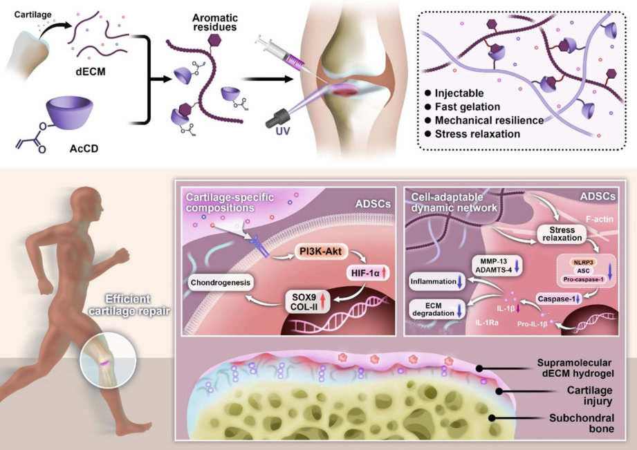
图 2 软骨来源超分子水凝胶（supramolecular hydrogel）的示意图，该水凝胶具有动态、可适应细胞的网络结构，可调节炎症并促进软骨形成（chondrogenesis），从而实现有效的软骨再生。（经爱思唯尔（Elsevier）许可，转载自 Dai et al. (2024)）Fig. 2 Schematic illustration of a cartilage-derived supramolecular hydrogel with a dynamic, celladaptable network that modulates in flammation and promotes chondrogenesis for effective cartilage regeneration. (Reprinted from Dai et al. (2024) with permission from Elsevier)
由于成人关节软骨（articular cartilage）的自我修复能力非常有限，人们已探索了多种替代策略。在此背景下，研究非传统组织来源可扩大天然支架（scaffold）的可用资源，并有助于克服供应限制。鹿角软骨以其非凡的再生能力而闻名，Chu 等人将其作为制备脱细胞软骨基质（decellularized cartilage matrix）支架的原料进行了研究 (Chu et al. 2021)。他们结合冻融循环和酶降解方法，获得了富含胶原（COL）和糖胺聚糖（GAGs）的脱细胞软骨基质，并展示了其在骨软骨（osteochondral, OC）修复方面的优异潜力。在兔膝关节骨软骨缺损模型中，与猪脱细胞软骨基质和生理盐水对照组相比，脱细胞软骨基质植入产生了平滑的修复表面，并显著提高了国际软骨修复协会（ICRS）评分（图3）。治疗后4周和8周的组织学分析显示，细胞外基质（ECM）和COL2染色深染，软骨下骨近乎完全重建。新形成的骨小梁呈网状交织结构，表明成骨作用有效。这些发现凸显了脱细胞软骨基质的高生物安全性、生物相容性和再生功效，使其成为软骨再生的有前景材料，也是治疗骨软骨缺损的潜在替代策略。类似地，山羊耳软骨也被用于开发骨软骨再生支架 (Das et al. 2021)。利用Triton X-100和低渗-高渗缓冲液对山羊耳软骨进行脱细胞处理，保留了其天然超微结构，所获得的支架在体外和体内均表现出强大的再生潜力。这种脱细胞方法有效去除了细胞和细胞成分，而未显著改变ECM结构。所得支架保留了关键的力学性能、溶胀性、酶降解性和血液相容性，为细胞活动提供了有利的仿生环境。在体外，它们支持干细胞黏附、增殖和软骨形成；在体内，无论是否添加IGF-1，它们均促进了新生软骨
图 3 鹿角来源脱细胞软骨基质支架（antler-derived decellularized cartilage matrix scaffolds，adCDMs）植入兔膝关节骨软骨（OC）缺损后的形态学评价。(a) adCDMs组、猪源脱细胞软骨基质支架（porcine decellularized cartilage matrix scaffolds，pdCDMs）组及阴性对照组在术后1个月和2个月时缺损的形态；(b) 术后1个月软骨缺损的ICRS评分；(c) 术后2个月软骨缺损的ICRS评分。（经许可转载自 Chu et al. (2021)，遵循知识共享署名4.0国际许可协议（Creative Commons Attribution 4.0 International License））Fig. 3 Morphological evaluation of antler-derived decellularized cartilage matrix scaffolds (adCDMs) implanted into rabbit knee OC defects. (a) Defects’ morphology after 1 and 2 months for adCDMs, porcine decellularized cartilage matrix scaffolds (pdCDMs), and negative control; (b) ICRS score of cartilage defects for 1 month; (c) ICRS score of cartilage defects for 2 months. (Reprinted with permission from Chu et al. (2021) under Creative Commons Attribution 4.0 International License)
和骨的形成，且未引发免疫反应。这些具有成本效益、生物相容性良好的构建体因此构成了一个强有力的骨软骨修复平台。在另一项研究中，研究者开发了一种新型组织工程策略，利用肋软骨作为修复骨软骨缺损的替代基质来源 (Li et al. 2021)。通过物理、化学和酶处理相结合的方法对兔肋软骨和关节软骨进行脱细胞处理，以构建骨软骨复合支架。研究者对这些支架的结构和组成进行了细致评估，同时从健康兔和骨关节炎（OA）兔中分离出髌下脂肪垫干细胞（IPFPSCs）——该细胞以其强大的软骨形成能力而著称——结果显示两者在细胞活力、迁移和分化潜能方面存在显著差异。将这些细胞接种于脱细胞支架上，进行了全面的体外和体内分析。与整体支架相比，分层支架表现出更低的密度、更高的孔隙率、更大的孔径和更强的吸水能力，尽管两者的力学强度均有限。来自骨关节炎兔的IPFPSCs表现出迁移能力下降和软骨形成分化减弱。尽管如此，脱细胞支架仍显示出优异的生物相容性，并成功促进了IPFPSCs的成骨和成软骨分化。当IPFPSCs与脱细胞基质联合使用时，获得了最佳的修复效果。值得注意的是，肋软骨与天然关节软骨在结构和组成上具有相似性，这支持其作为骨软骨组织工程中有前景的替代支架材料。该策略为利用易获取且生物学有效的材料再生骨软骨组织提供了新的方向。此外，利用通常被丢弃的组织为支架来源提供了可持续的替代方案。Rameshbabu 等人 (2016) 对胎盘的利用就是一个例子。他们开发了源自脱细胞人胎盘（一种生物废弃物）的仿生细胞外基质海绵（PEMS），为骨软骨组织工程提供了一种新型生物活性支架。脱细胞过程有效去除了细胞成分，同时保留了COL和GAGs。在体外，PEMS支持人羊膜间充质干细胞（mesenchymal stem cells）的活力、增殖和分化，并在适当诱导下引导其向成软骨和成骨谱系分化。在兔模型中皮下植入或植入骨软骨缺损后，无论是否接种人羊膜间充质干细胞，PEMS均表现出优异的生物相容性，免疫反应极小，促进了新生血管形成，并促进了早期骨软骨修复，从而将生物废弃物转化为高效的支架材料。
双相支架设计
为了更贴近地重现软骨向骨的自然过渡，研究人员开发了各层既相互区别又彼此整合的支架。特别是，采用反复冻干（iterative lyophilization）技术制备了由脱细胞软骨基质（decellularized cartilage matrix）和脱钙骨基质（decalcified bone matrix）组成的双相支架（biphasic scaffold），有效模拟了天然骨软骨（osteochondral, OC）组织的分级结构与梯度（Cao et al. 2021）。该工艺所获得的分层构建体具有表层的类软骨层和深层的类骨层，两层的孔隙率和力学刚度均经过专门调控，以复制其对应天然组织的特性。脱细胞软骨基质层提供了成软骨（chondrogenic）微环境，而脱钙骨基质层则促进成骨分化（osteogenic differentiation），从而构建出一种具有空间取向、有利于干细胞谱系特异性（lineage-specific）分化的支架。在兔OC缺损模型中的体内植入实验表明，软骨与软骨下骨（subchondral bone）实现了有效且同步的再生，验证了该支架在模拟天然OC界面方面的功能。值得注意的是，脱细胞软骨基质与脱钙骨基质均来源于经过临床研究且具有生物相容性的材料，这有望加速该支架系统的转化潜力。Browe et al. (2022) 还开发了其他由组织特异性细胞外基质（extracellular matrix, ECM）衍生的双层支架，其特征为各向异性（anisotropic）、定向排列的孔隙结构，旨在模拟天然软骨和骨的分区结构。通过调节冻干条件并施加定向热传导，他们制备出具有大尺寸定向孔道的支架，这些孔道促进了细胞的均匀浸润，增强了硫酸化糖胺聚糖（sulfated glycosaminoglycan, sGAG）的沉积，并支持COL纤维沿平行于孔隙的方向排列——这些都是健康软骨结构的标志性特征。体外研究显示，接种于这些双层构建体中的间充质干细胞（mesenchymal stem cells）以组织特异性的方式发生分化：软骨来源的dECM层促进了成软骨（chondrogenesis），而骨来源的dECM层则支持成骨（osteogenesis）。值得注意的是，该支架无需外源性细胞或生长因子即可引导这种谱系定向（lineage commitment）。在大动物OC缺损模型中植入后，这些即用型、无细胞的双层支架在6个月内显著改善了修复效果，包括类透明软骨（hyaline-like cartilage）的形成以及整合良好的软骨下骨。这些发现凸显了将空间可控的支架组成与仿生微结构（biomimetic microarchitecture）相结合以引导内源性组织再生的重要性。这种双层、各向异性的设计不仅能增强再生组织的结构与功能整合，还为OC修复提供了一种颇具前景的转化策略。
先进制造方法
新兴的制造技术能够对支架结构和功能实现精确控制。先进的制备方法进一步拓展了骨软骨（osteochondral，OC）支架的设计。激光微图案化（laser micro-patterning，LMP）已被用于制造骨软骨植入物（osteochondral implants，OIs）（Meng et al. 2024）。通过力学测试、有限元分析和渗透性测定对孔隙形态和密度进行优化，LMP-OIs被设计为可提供有利于软骨与骨再生的双功能微环境，并支持快速、高效的再细胞化。该方法在保留天然骨软骨界面的同时提升了植入物性能。所制备的支架表现出理想的孔隙率、可控的渗透性以及适用于承重环境的稳定力学性能。在一种具有自固定圆锥台形骨软骨缺损的山羊股骨髁模型中，自体骨髓间充质干细胞（bone marrow-derived mesenchymal stem cells，BMSCs）被接种于LMP-OIs的软骨层。植入物实现了牢固的整合，并在植入后6个月和12个月时显著促进了软骨和软骨下骨的再生，凸显了其转化前景。此外，逐层沉积技术能够以高精度实现材料、细胞和生物活性信号的空间排布。其中，3D生物打印在骨软骨修复方面具有重大前景，因为它能够通过精确控制各层的孔径、刚度和生化信号，准确重建软骨-骨界面，并复制其组成梯度和力学梯度（Chartrain et al. 2022）。该技术还能在单一移植物内实现多种生物材料、细胞和生长因子的空间定位，模拟天然组织的组织结构，并引导干细胞向软骨或成骨谱系分化，而无需依赖植入后的细胞接种。此外，患者特异性的缺损几何形状可直接由影像数据复制获得，确保完美贴合并促进与周围组织的无缝整合，同时为临床转化提供可扩展、可重复的制造方式。基于这一思路，Zhang等人开发了一种由脱细胞基质（decellularized extracellular matrix，dECM）和丝素蛋白组成的复合生物墨水，并用其打印出双层支架，各层具有不同的生化特性、力学特征和生长因子递送方式（Zhang et al. 2021）。每一层均经定制以分别模拟软骨或骨，并在体外表现出适宜的强度和降解特性。通过在软骨层包封转化生长因子-β1（TGF-β1）、在骨层包封骨形态发生蛋白-2（BMP-2），该支架得到进一步增强，形成了一个以空间特异性方式引导BMSCs分化的双递送系统。在兔膝关节骨软骨缺损模型中，这些负载生长因子的支架显著促进了再生、整合和功能性修复。然而，尽管水凝胶和生物墨水在生物诱导方面表现出色，它们往往缺乏大面积骨软骨损伤（osteochondral injuries，OCIs）所需的力学强度。供体组织来源有限、供区并发症以及解剖学不匹配进一步限制了此类损伤的治疗选择。这些挑战已通过使用旨在精确填充大面积缺损的患者特异性3D打印支架得到解决。基于这一思路，PCL等热塑性塑料已被改造为复合支架，即在3D打印前将脱细胞软骨基质包封于聚乳酸（polylactic acid，PLA）微球内（Gruber et al. 2022）。通过将脱细胞软骨包封于PLA微球中，避免了打印过程中的热降解。研究发现，所得复合支架能够复制天然软骨的力学性能，并实现脱细胞软骨蛋白的可控持续释放。当将人间充质干细胞接种于这些负载脱细胞软骨的支架并在基础培养基中培养时，观察到形成了类似胚胎间充质凝聚体的聚集体。此外，与仅含PCL的对照相比，含脱细胞软骨的复合物显著诱导了更高水平的软骨特异性生化标志物表达，表明其在骨软骨损伤修复方面具有转化潜力。在另一个实例中，Golebiowska等人设计了一种3D打印的分区支架，其软骨区域浸润脱细胞软骨ECM以提供天然生化信号（Golebiowska et al. 2025）。所得梯度支架在孔隙率和刚度方面模拟了天然骨软骨界面。在兔骨软骨缺损中，这些富含dECM且不含外源生物活性因子的植入物显著优于普通PLA支架。它们促进了内源性细胞募集，从而增强细胞外基质沉积，并再生出具有生理相关性的软骨，国际软骨修复学会（International Cartilage Repair Society，ICRS）评分提高了一倍。在软骨区加入血小板衍生生长因子进一步加快了愈合，早在6周时即产生透明样软骨和成熟软骨细胞。通过将力学性能稳固的模板与天然ECM信号相结合，该方法创造了一种可与基于细胞或因子的疗法相媲美的独立式即用型移植物。下一步将叠加多个生物活性分区，分别针对软骨、骨及其界面进行定制，以完善骨软骨修复中的组织质量、结构和功能。将细胞整合入基质来源的生物墨水中可在生化信号与力学信号之间产生协同效应。脱细胞软骨细胞外基质来源于天然软骨，由于其内在生物活性及与天然组织的结构相似性，作为软骨再生支架已展现出巨大前景，而通过引入干细胞可显著放大其再生能力。为了利用脱细胞软骨细胞外基质与髌下脂肪垫脂肪来源干细胞（infrapatellar fat pad adipose-derived stem cells，IPFP-ADSCs）的协同优势，研究者开发了一种结合两者的生物墨水并制备成3D支架，随后在骨软骨缺损模型中进行了测试（Wu et al. 2022）。在该研究中，IPFP-ADSCs通过I型胶原酶消化成功分离，并表现出强劲的软骨向分化能力。研究采用一种改良的脱细胞方法分离软骨来源的dECM，其在与IPFP-ADSCs共培养时表现出高生物相容性和软骨向生物活性。所得的5%软骨来源dECM/甲基丙烯酰化明胶（GelMA）/海藻酸钠杂化水凝胶表现出良好的可打印性和细胞相容性，使细胞能够在3D打印仿生支架内均匀分布。这些构建体在体外显著增强了软骨发生相关生长因子的表达。最重要的是，在兔软骨缺损模型中，植入负载IPFP-ADSCs的软骨来源dECM/GelMA/海藻酸钠支架相比单独注射IPFP-ADSCs或先植入支架再注射细胞，均能更快、更有效地修复软骨。生物活性信号、种子细胞与3D支架结构的整合被证明是促进均匀再生和恢复软骨结构的关键，凸显了该策略在骨软骨修复方面的临床转化潜力。
图 4 应用于股骨髁缺损（femoral condyle defects）的不同治疗方式示意图（阴性对照、MF：微骨折（microfracture）、hACECM支架：脱细胞人关节软骨细胞外基质（decellularized human articular cartilage extracellular matrix），以及hACECM/MF）。（经许可转载自 Peng et al. (2024)，遵循知识共享署名4.0国际许可协议（Creative Commons Attribution 4.0 International License））Fig. 4 Schematic representation of different treatments applied to femoral condyle defects (negative, MF: microfracture, hACECM scaffolds: decellularized human articular cartilage extracellular matrix, and hACECM/MF). (Reprinted with permission from Peng et al. (2024) under Creative Commons Attribution 4.0 International License)
图 5 以人诱导多能干细胞（induced pluripotent stem cell）来源软骨细胞（chondrocyte）制备脱细胞细胞外基质（decellularized extracellular matrix, dECM）的示意图。对软骨细胞培养物进行脱细胞处理，以获得软骨样细胞外基质（ECM），随后对其进行细胞再接种，以验证其促软骨形成（pro-chondrogenic）活性。在体内，将该脱细胞ECM植入大鼠骨软骨（osteochondral, OC）缺损模型中，以评估其软骨修复能力。（经Choi et al. (2023)许可，依据知识共享署名4.0国际许可协议（Creative Commons Attribution 4.0 International License）转载）Fig. 5 Schematic representation of dECM production from human induced pluripotent stem cell– derived chondrocytes. Chondrocyte cultures are decellularized to obtain a cartilage-like ECM, which was then reseeded to demonstrate its pro-chondrogenic activity. In vivo, the decellularized ECM was implanted into a rat OC defect model to evaluate its capacity for cartilage repair. (Reprinted with permission from Choi et al. (2023) under Creative Commons Attribution 4.0 International License)
[1]Antich C, Jiménez G, de Vicente J, López-Ruiz E, Chocarro-Wrona C, Griñán-Lisón C, Carrillo E, Montañez E, Marchal JA (2021) Development of a biomimetic hydrogel based on pre- differentiated mesenchymal stem-cell-derived ECM for cartilage tissue engineering. Adv Healthc Mater 10(8):2001847
[2]Armiento AR, Stoddart MJ, Alini M, Eglin D (2018) Biomaterials for articular cartilage tissue engineering: learning from biology. Acta Biomater 65:1–20
[3]Armiento AR, Alini M, Stoddart MJ (2019) Articular fibrocartilage – why does hyaline cartilage fail to repair? Adv Drug Deliv Rev 146:289–305
[4]Blum JC, Schenck TL, Birt A, Giunta RE, Wiggenhauser PS (2021) Artificial decellularized extracellular matrix improves the regenerative capacity of adipose tissue derived stem cells on 3D printed polycaprolactone scaffolds. J Tissue Eng 12:20417314211022242
[6]Brown BN, Chung WL, Lowe J, LoPresti ST, Cheetham J, Almarza AJ, Badylak SF (2021) Inductive remodeling of extracellular matrix scaffolds in the temporomandibular joint of pigs. T issue Eng A 28(9–10):447–457
[7]Cao R, Zhan A, Ci Z, Wang C, She Y, Xu Y, Xiao K, Xia H, Shen L, Meng D, Chen C (2021) A biomimetic biphasic scaffold consisting of decellularized cartilage and decalcified bone matrixes for osteochondral defect repair. Front Cell Dev Biol 9:639006
[8]Chartrain NA, Gilchrist KH, Ho VB, Klarmann GJ (2022) 3D bioprinting for the repair of articular cartilage and osteochondral tissue. Bioprinting 28:e00239
[9]Choi SH, Lee K, Han H, Mo H, Jung H, Ryu Y, Nam Y, Rim YA, Ju JH (2023) Prochondrogenic effect of decellularized extracellular matrix secreted from human induced pluripotent stem cell- derived chondrocytes. Acta Biomater 167:234–248
[10]Chu W, Hu G, Peng L, Zhang W, Ma Z (2021) The use of a novel deer antler decellularized cartilage-derived matrix scaffold for repair of osteochondral defects. J Biol Eng 15(1):23
[11]Correia SI, Silva-Correia J, Pereira H, Canadas RF, da Silva Morais A, Frias AM, Sousa RA, van Dijk CN, Espregueira-Mendes J, Reis RL, Oliveira JM (2017) Posterior talar process as a suitable cell source for treatment of cartilage and osteochondral defects of the talus. J Tissue Eng Regen Med 11(7):1949–1962
[12]Cui M, Sun Y, Zhang X, Yang P, Jiang W (2024) Osteochondral tissue engineering in translational practice: histological assessments and scoring systems. Front Bioeng Biotechnol 12:1434323
[13]Dai W, Gong X, Wang C, Liu P, Shi W, Cheng J, Cao C, Hu X, Wang J, Ao Y (2024) Injectable decellularized extracellular matrix hydrogel with cell-adaptable supramolecular network enhances cartilage regeneration by regulating inflammation and facilitating chondrogenesis. Chem Eng J 498:155138
[14]Das P, Mishra R, Devi B, Rajesh K, Basak P, Roy M, Roy P, Lahiri D, Nandi SK (2021) Decellularized xenogenic cartilage extracellular matrix (ECM) scaffolds for the reconstruction of osteochondral defects in rabbits. J Mater Chem B 9(24):4873–4894
[15]dos Santos AC, de Andrade LM, Candelária RA, de Carvalho JC, Valbão MC, Barreto RD, de Faria MD, Buchaim RL, Buchaim DV, Miglino MA (2025) From cartilage to matrix: protocols for the decellularization of porcine auricular cartilage. Bioengineering 12. https://doi.org/10.3390/bioengineering12010052
[16]Gao C, Fu L, Yu Y, Zhang X, Yang X, Cai Q (2022) Strategy of a cell-derived extracellular matrix for the construction of an osteochondral interlayer. Biomater Sci 10(22):6472–6485
[17]Golebiowska AA, Intravaia JT, Sathe V, Kumbar SG, Nukavarapu SP (2025) Engineered osteochondral scaffolds with bioactive cartilage zone for enhanced articular cartilage regener- ation. Ann Biomed Eng 53(3):597–611
[18]Gruber SMS, Murab S, Ghosh P, Whitlock PW, Lin C-YJ (2022) Direct 3D printing of decellularized matrix embedded composite polycaprolactone scaffolds for cartilage regenera- tion. Biomater Adv 140:213052
[19]Jiang Y, Tuan RS (2023) Bioactivity of human adult stem cells and functional relevance of stem cell-derived extracellular matrix in chondrogenesis. Stem Cell Res Ther 14(1):160
[20]Josino R, Stimamiglio MA (2024) Bioactive decellularized extracellular matrix-based hydrogel supports human adipose tissue-derived stem cell maintenance and fibrocartilage phenotype. Front Bioeng Biotechnol 11:1
[21]Kim HS, Mandakhbayar N, Kim H-W, Leong KW, Yoo HS (2021) Protein-reactive nanofi brils decorated with cartilage-derived decellularized extracellular matrix for osteochondral defects. Biomaterials 269:120214
[22]Kiyotake EA, Beck EC, Detamore MS (2016) Cartilage extracellular matrix as a biomaterial for cartilage regeneration. Ann N Y Acad Sci 1383(1):139–159
[23]Lemos R, Maia FR, Reis RL, Oliveira JM (2021a) Engineering of extracellular matrix-like bio- materials at nano- and macroscale toward fabrication of hierarchical scaffolds for bone tissue engineering. Adv NanoBiomed Res 2:2100116
[24]Lemos R, Maia FR, Ribeiro VP, Costa JB, Coutinho PJG, Reis RL, Oliveira JM (2021b) Carbon nanotube-reinforced cell-derived matrix-silk fibroin hierarchical scaffolds for bone tissue engi- neering applications. J Mater Chem B 9(46):9561–9574
[25]Li L, Chen Y, Fu Q, Wu H, Zhou Y, Shao J, Wu J, Han Y, Qian Q (2021) Decellularized extracellular matrix loaded with IPFP-SC for repairing rabbit osteochondral defects. Am J Transl Res 13(10): 11026–11047
[26]Liu J, Lu Y, Xing F, Liang J, Wang Q, Fan Y, Zhang X (2021) Cell-free scaffolds functionalized with bionic cartilage acellular matrix microspheres to enhance the microfracture treatment of articular cartilage defects. J Mater Chem B 9(6):1686–1697
[27]Maia FR, Reis RL, Oliveira JM (2020) Chapter 3 – Decellularized hASCs-derived matrices as biomaterials for 3D in vitro approaches. In: Caballero D, Kundu SC, Reis RL (eds) Methods in cell biology, vol 156. Academic Press, Cambridge, Massachusetts, pp 45–58
[28]Maia FR, Reis RL, Oliveira JM (2023) Cell-derived matrices for scaffolds improvement. In: Maia FRA, Oliveira JM, Reis RL (eds) Handbook of the extracellular matrix: biologically-derived materials. Springer International Publishing, Cham, pp 1–21
[29]Meng H, Liu X, Liu R, Zheng Y, Hou A, Liu S, He W, Wang Y, Wang A, Guo Q, Peng J (2024) Decellularized laser micro-patterned osteochondral implants exhibit zonal recellularization and self-fixing for osteochondral regeneration in a goat model. J Orthop Transl 46:18–32
[30]Nie X, Chuah YJ, Zhu W, He P, Peck Y, Wang D-A (2020) Decellularized tissue engineered hyaline cartilage graft for articular cartilage repair. Biomaterials 235:119821
[32]Oliveira JM, Rodrigues MT, Silva SS, Malafaya PB, Gomes ME, Viegas CA, Dias IR, Azevedo JT, Mano JF, Reis RL (2006) Novel hydroxyapatite/chitosan bilayered scaffold for osteochondral tissue-engineering applications: scaffold design and its performance when seeded with goat bone marrow stromal cells. Biomaterials 27(36):6123–6137
[33]Panseri S, Russo A, Cunha C, Bondi A, Di Martino A, Patella S, Kon E (2012) Osteochondral tissue engineering approaches for articular cartilage and subchondral bone regeneration. Knee Surg Sports Traumatol Arthrosc 20(6):1182–1191
[34]Peng L, Li H, Deng H, Gao T, Li R, Xu Z, Tian Q, Zhao T, Li J, Yang Y, Wang C, Liu S, Guo Q (2024) Combination of a human articular cartilage-derived extracellular matrix scaffold and microfracture techniques for cartilage regeneration: a proof of concept in a sheep model. J Orthop Transl 44:72–87
[35]Rameshbabu AP, Ghosh P, Subramani E, Bankoti K, Kapat K, Datta S, Maity PP, Subramanian B, Roy S, Chaudhury K, Dhara S (2016) Investigating the potential of human placenta-derived extracellular matrix sponges coupled with amniotic membrane-derived stem cells for osteochondral tissue engineering. J Mater Chem B 4(4):613–625
[36]Ramzan F, Salim A, Khan I (2023) Osteochondral tissue engineering dilemma: scaffolding trends in regenerative medicine. Stem Cell Rev Rep 19(6):1615–1634
[37]Shen W, Berning K, Tang SW, Lam YW (2020) Rapid and detergent-free decellularization of cartilage. Tissue Eng Part C Methods 26(4):201–206
[38]Sutherland AJ, Beck EC, Dennis SC, Converse GL, Hopkins RA, Berkland CJ, Detamore MS (2015) Decellularized cartilage may be a chondroinductive material for osteochondral tissue engineering. PLoS One 10(5):e0121966
[39]Tang X, Yang F, Chu G, Li X, Fu Q, Zou M, Zhao P, Lu G (2022) Characterizing the inherent activity of urinary bladder matrix for adhesion, migration, and activation of fibroblasts as compared with collagen-based synthetic scaffold. J Biomater Appl 37(8):1446–1457
[40]Thomas V, Mercuri J (2023) In vitro and in vivo efficacy of naturally derived scaffolds for cartilage repair and regeneration. Acta Biomater 171:1–18
[41]Tian G, Jiang S, Li J, Wei F, Li X, Ding Y, Yang Z, Sun Z, Zha K, Wang F, Huang B, Peng L, Wang Q, Tian Z, Yang X, Wang Z, Guo Q, Guo W, Liu S (2021) Cell-free decellularized cartilage extracellular matrix scaffolds combined with interleukin 4 promote osteochondral repair through immunomodulatory macrophages: in vitro and in vivo preclinical study. Acta Biomater 127:131–145
[42]Truong M-D, Nguyen-Thi T-T, Nguyen-Ngoc T-T, Vo-Ngoc B-T, Duong-Thi H-Y, Nguyen H-V, Hoang D-QM, Bui P-V, Hong-Thien Bui K, Le Thi P, Tran DL, Xuyen VT (2025) Decellularized membrane derived from the cell-produced extracellular matrix of 1-day-old porcine cartilage can be a substitute for periosteal patches in autologous chondrocyte implan- tation. Appl Sci 15. https://doi.org/10.3390/app15042237
[43]Wang Y, Jiang C, Cong S, Guo C, Yan Z (2018) Extracellular matrix deposited by Wharton’s jelly mesenchymal stem cells enhances cell expansion and tissue specific lineage potential. Am J Transl Res 10(11):3465–3480
[44]Wang Z, Han L, Sun T, Ma J, Sun S, Ma L, Wu B (2020) Extracellular matrix derived from allogenic decellularized bone marrow mesenchymal stem cell sheets for the reconstruction of osteochondral defects in rabbits. Acta Biomater 118:54–68
[45]Wang YS, Chu WH, Zhai JJ, Wang WY, He ZM, Zhao QM, Li CY (2024) High quality repair of osteochondral defects in rats using the extracellular matrix of antler stem cells. World J Stem Cells 16(2):176–190
[46]Wu J, Han Y, Fu Q, Hong Y, Li L, Cao J, Li H, Liu Y, Chen Y, Zhu J, Shao J, Fu P, Wu H, Cui D, Wang B, Zhou Y, Qian Q (2022) Application of tissue-derived bioink for articular cartilage lesion repair. Chem Eng J 450:138292
[47]Yildirim N, Amanzhanova A, Kulzhanova G, Mukasheva F, Erisken C (2023) Osteochondral interface: regenerative engineering and challenges. ACS Biomater Sci Eng 9(3):1205–1223
[48]Zeng J, Huang L, Xiong H, Li Q, Wu C, Huang Y, Xie H, Shen B (2022) injectable decellularized cartilage matrix hydrogel encapsulating urine-derived stem cells for immunomodulatory and cartilage defect regeneration. NPJ Regen Med 7(1):75
[49]Zhang Q, Hu Y, Long X, Hu L, Wu Y, Wu J, Shi X, Xie R, Bi Y, Yu F, Li P, Yang Y (2022) Preparation and application of decellularized ecm-based biological scaffolds for articular carti- lage repair: a review. Front Bioeng Biotechnol 10:908082
[50]Zhang X, Liu Y, Zuo Q, Wang Q, Li Z, Yan K, Yuan T, Zhang Y, Shen K, Xie R, Fan W (2021) 3D bioprinting of biomimetic bilayered scaffold consisting of decellularized extracellular matrix and silk fibroin for osteochondral repair. Int J Bioprint 7(4):401
[51]Zhou L, Gjvm VO, Malda J, Stoddart MJ, Lai Y, Richards RG, Ki-wai Ho K, Qin L (2020) Innovative tissue-engineered strategies for osteochondral defect repair and regeneration: current progress and challenges. Adv Healthc Mater 9(23):2001008
[52]Zhu W, Cao L, Song C, Pang Z, Jiang H, Guo C (2020) Cell-derived decellularized extracellular matrix scaffolds for articular cartilage repair. Int J Artif Organs 44(4):269–281
第二篇 生物材料与支架设计
Biomaterials and Scaffold Design
水凝胶、生物陶瓷、纳米纤维与仿生肽等材料体系的最新进展，以及生物固定与联合递药策略。
第4章 · 原书第26章 · Biomaterials and Scaffold Design
骨软骨再生的生物功能化支架（Biofunctional Scaffolds for Osteochondral Regeneration）
Biofunctional Scaffolds for Osteochondral Regeneration
骨软骨（osteochondral）细胞外基质（extracellular matrix, ECM）是健康与疾病状态下的重要组成部分，其复杂的结构和动态特性在组织功能与再生中发挥着关键作用。ECM组成及其物理性质的改变与骨关节炎（osteoarthritis）等疾病相关。基质金属蛋白酶（matrix metalloproteinases, MMPs）和含血小板反应蛋白重复序列的去整合素金属蛋白酶（disintegrin metalloproteinases with thrombospondin repeats, ADAMTSs）等ECM降解酶在降解过程中发挥重要作用，导致关节功能的进行性丧失。另一种值得关注的骨软骨疾病是骨软骨病（osteochondrosis），其涉及软骨内成骨（endochondral ossification）障碍，进而导致ECM改变和软骨细胞（chondrocyte）分化受损。传统的再生方法，即自体移植物（autografts）、同种异体移植物（allografts）和细胞负载支架（cell-laden scaffolds），在整合及长期功能方面存在一些不足。深入理解骨软骨ECM的组成与功能，对于制定组织工程与再生医学（tissue engineering and regenerative medicine, TERM）的有效策略至关重要。因此，本章的第一个主题将专门描述骨软骨ECM，旨在表征其各个区室（compartment）的微环境。至关重要的是，仿生支架（biomimetic scaffolds）不仅要提供机械支撑，还应构建能够调控细胞行为的微环境。例如，载药生物材料支架（drug-loaded biomaterial scaffolds）将结构支撑与治疗药物的控释相结合，旨在促进细胞募集、调节炎症并驱动骨软骨组织形成（Tong et al. 2024）。此外，通过对支架特定区域的物理特性和表面化学性质进行调控，可在软骨靶向区和骨靶向区分别诱导成软骨分化（chondrogenic differentiation）与成骨分化（osteogenic differentiation）。最近，生物材料支架在功能上得到增强，以再现天然组织中观察到的一些关键的结构与生化特征（ECM生物分子和组织特异性可溶性因子），从而引导功能性骨软骨组织的形成（Casanova et al. 2020c）。本章将介绍并讨论功能化生物活性骨软骨支架开发的最新进展。
骨软骨（osteochondral）细胞外基质（extracellular matrix）
骨软骨（osteochondral）细胞外基质（extracellular matrix, ECM）是一种存在于骨软骨单位（osteochondral unit）中的复杂、特化且动态的结构，该单位既包括关节软骨（articular cartilage），也包括其下方的软骨下骨（subchondral bone）。因此，骨软骨ECM在从软骨向骨过渡的过程中不断变化，形成了组成与结构上的梯度，这对支持其功能至关重要 (Khorshidi and Karkhaneh 2018)。该基质在软骨和骨中均发挥着关键的结构与生化作用，支持组织完整性、力学功能和细胞行为。作为骨软骨单位一部分的关节软骨，主要由致密、复杂且有序的ECM构成。其组成包括水（含量高达80%）、II型胶原（collagen type II）和蛋白聚糖（proteoglycans，主要为聚集蛋白聚糖（aggrecan）以及其他PGs，如双糖链蛋白聚糖（biglycan）、核心蛋白聚糖（decorin）、串珠蛋白聚糖（perlecan）和多能蛋白聚糖（versican）），以及含量较低的其他非胶原蛋白（如纤连蛋白（fibronectin）、层粘连蛋白（laminin））和糖胺聚糖（glycosaminoglycans，包括透明质酸（hyaluronan）和硫酸化GAGs） (Armiento et al. 2018; Sophia Fox et al. 2009)。除胶原纤维的排列方式外，软骨细胞（chondrocytes，该组织中唯一存在的特化细胞类型）的分布也有助于界定软骨的各个分区：浅层区（superficial zone）、中间区（intermediate/middle zone）和深层区（deep zone）（图1）(Camarero-Espinosa et al. 2016)。胶原纤维的取向随关节软骨深度而变化：浅层区含切向排列的纤维，深层区含放射状取向的纤维，而中间区既具有拱形结构又含有随机取向的纤维，构成其他各分区之间的过渡 (Athanasiou et al. 2010)。靠近软骨表面的软骨细胞呈扁平圆盘状，中间区的细胞则更接近圆形，而深层区的细胞呈椭圆形，并垂直于表面排列成柱状。除这种结构组织方式外，沿软骨厚度方向还可观察到生物化学（如ECM组成）和生物力学（如载荷）梯度。图1还显示了从浅层区到深层区GAGs含量、压缩模量和X型胶原含量呈增加趋势，而II型胶原含量呈下降趋势 (Nguyen et al. 2011)。就软骨的力学性能而言，压缩模量从
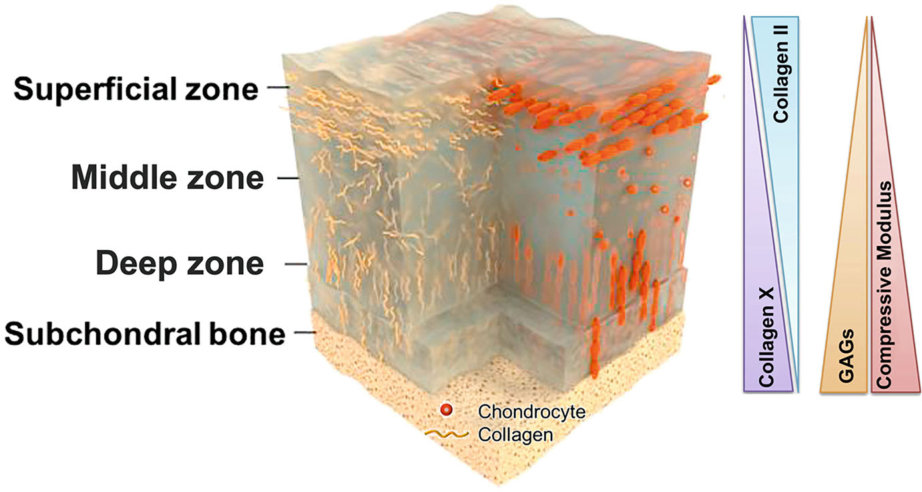
图 1 关节软骨解剖分区示意图，以及Ⅱ型胶原、Ⅹ型胶原和糖胺聚糖（GAGs）分布与力学各向异性的图示。（改编自 Camarero-Espinosa et al. (2016) 和 Nguyen et al. (2011)，已获授权）Fig. 1 Schematics of the articular cartilage anatomic zones and illustration of collagen II, collagen X and GAGs distribution, and mechanical anisotropy. (Adapted with permission from Camarero- Espinosa et al. (2016) and Nguyen et al. (2011))
从生物材料支架中可控且局部地释放生物活性分子，能够提升组织工程与再生医学（TERM）策略的疗效。事实上，支架可用作具有释放能力的生物活性结构 (Liao et al. 2010; Martins et al. 2016)。载药支架为骨软骨（osteochondral）修复提供了一种强有力的范式转变，可对愈合环境实现时空控制。例如，有研究开发了一种三层整体式支架（TLS），用于递送地塞米松（dexamethasone，DEX）作为模型药物，以治疗在Sprague-Dawley大鼠滑车处形成的缺损 (Algul et al. 2016)。该多层支架由壳聚糖（chitosan，C）与海藻酸盐（alginate，A）聚电解质复合物（CA/PEC）作为软骨层，CA/PEC（60%）与β-磷酸三钙（β-TCP）（40%）的组合作为中间层，以及CA/PEC（30%）与β-TCP（70%）的组合作为软骨下骨层构成，旨在模拟健康骨软骨组织固有的梯度结构。实验证据表明，TLS比参照产品Maioregen1更能支持良好的成骨再生，是骨软骨愈合的一种有前景的替代方案。药物递送系统（drug delivery systems，DDSs）通过将药物递送至作用部位，用于提高药物的治疗效果和安全性，并改善患者的生活质量 (Goldberg et al. 2007)。脂质体、聚合物纳米粒（nanoparticles，NPs）和纳米纤维是近十年来探索的主要DDS类型 (Monteiro et al. 2014b, 2015a)。基于纳米颗粒的系统（脂质体或聚合物NPs）可能易于扩散穿过细胞质膜，从而能够控制或改变细胞活性。用于骨软骨修复的纳米颗粒可由多种材料制成，如天然聚合物（蛋白质、多糖、糖胺聚糖（GAGs））和合成聚合物（例如聚乳酸（PLA）、聚乙醇酸（PGA）或其共聚物、聚己内酯（PCL））、陶瓷（例如磷酸钙、生物玻璃）或金属（例如氧化锌、氧化铁） (Tong et al. 2024)。纳米纤维易于制备，且其组成、结构和功能可控 (Amler et al. 2014)。这些纤维的直径处于亚微米范围，因此具有极高的比表面积；此外，它们排列成类似于天然细胞外基质（ECM）的网状结构，具有高孔隙率和微米级孔径。与纳米颗粒类似，纳米纤维也可由多种合成聚合物（例如PCL、PLA、PLGA）和天然聚合物（例如胶原蛋白、壳聚糖、丝素蛋白、透明质酸）制成，作为骨软骨支架的组成部分。将这些纳米系统与支架相结合，构成了一种先进的骨软骨再生策略，具有以下重要优势：局部作用、化合物的长效生物活性、降低药物剂量及其副作用，以及实现多重释放的可能性。例如，将DEX掺入静电纺丝纤维膜（eFMs）和脂质体中，并通过在载DEX载体上培养人骨髓间充质干细胞（hBM-MSCs）来评估其生物活性。生物学数据表明，eFMs、脂质体或两者的组合可用作生长/分化因子局部持续释放的载体，这对骨组织工程（TE）策略具有重要意义 (Martins et al. 2010; Monteiro et al. 2014a, 2015b, 2016)。有研究将包裹BM-MSCs亲和肽E7（EPLQLKM）或软骨形成分子卡托金（kartogenin，KGN）的丝素蛋白（SF）/聚乙烯醇（PVA）纳米球递送系统掺入SF冻干支架中 (Zhang et al. 2020a)。结果表明，E7和KGN从SF纳米球基质中的顺序释放，在兔骨软骨缺损模型中有效促进了软骨和软骨下骨的内源性再生，尽管再生组织的性能劣于正常透明软骨。局部递送编码具有促进软骨和骨修复过程能力的治疗因子的基因序列，是基因治疗领域的前沿方法 (Madry et al. 2020)。一种由支架介导的非病毒载体策略，将载基因脂质体固定于eFMs表面，同时将基因递送系统与组织工程支架相结合 (Monteiro et al. 2014c)。生物学数据显示，悬浮或固定化的载RUNX2质粒脂质体对hBM-MSCs均无细胞毒性作用。与悬浮供给的载RUNX2脂质体相比，还观察到成骨标志物更早开始表达。为促进骨与软骨再生，通过慢病毒转染表达BMP-7的BM-MSCs被接种于由脱矿脱细胞同种异体骨移植物在I型胶原蛋白水凝胶中化学交联制成的复合支架上 (Sun et al. 2020)。将该双相构建体植入比格犬临界尺寸骨软骨缺损模型后，透明软骨几乎完全修复，并且由于BMP-7的持续释放，骨软骨缺损再生得到加速。另一种不同的方法是将负载BM-MSCs和脂质体转染试剂/pDNA-TGF-β1复合物的大孔纤维蛋白支架植入年轻和年长成年兔的骨软骨缺损和胫骨缺损中，以研究其在各自组织特异性微环境中的修复效果 (Feng et al. 2020)。纤维蛋白基构建体在年轻成年兔中诱导了骨软骨缺损的部分修复以及胫骨缺损的更高程度再生，而在年长成年兔中仅观察到软骨下骨和胫骨骨缺损的部分修复。据推测，MSCs和软骨细胞与年龄相关的功能障碍是所观察到的修复效果差异的原因。上述研究展示了载药支架或掺入的DDSs在骨软骨场景中控制MSCs命运及其性能的潜力。尽管已取得进展，但实现由生理环境需求所决定的释放速率的释放曲线仍是一个具有挑战性的目标 (Tong et al. 2024)。许多已报道的DDSs表现出初始突释后接缓慢释放的阶段，其受支架孔隙率和降解、载体尺寸以及组织环境的影响。事实上，支架降解的副产物或局部高药物浓度可能加剧宿主免疫反应。实现降解与药物释放动力学的平衡相当困难，但先前的实例表明在这些目标上已取得进展。
表面拓扑特征通过调控细胞黏附、增殖和分化等细胞行为来影响支架的生物活性。最常见的拓扑学线索是微纳结构（如沟槽、柱状结构）、孔隙率和孔径以及表面粗糙度（Zheng et al. 2025）。微纳结构的组合设计已成为研究热点，其作用总结于表1。在一项示范性研究中，研究者采用纳米图案化表面（纳米网格和纳米柱）从间充质干细胞（MSCs）生成预分化的分区特异性软骨形成细胞（图2），目的是将这些预分化细胞作为分层双层构建体递送，用于兔骨软骨模型中临界尺寸软骨缺损的修复（Wu et al. 2020）。体外结果表明，经过适当的分化时间（即3周），2D纳米图案可用于生成表型稳定的浅层样及中层/深层样软骨形成细胞，当将其置于无图案的微环境中时，
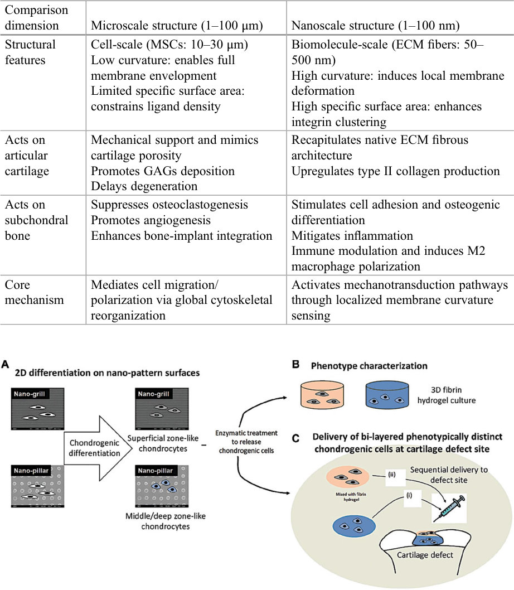
表 1 微米与纳米尺度结构（micro- and nanoscale architectures）在骨软骨（osteochondral）修复中的比较作用。（经授权改编自 Zheng et al. (2025)）Table 1 Comparative roles of micro- and nanoscale architectures in osteochondral repair . (Adopted with permission from Zheng et al. (2025))
图 2 实验装置示意图。（a）间充质干细胞（mesenchymal stem cells）在特定的纳米图案化（nanopatterned）表面上进行分化。（b）将细胞转移至三维（3D）水凝胶（hydrogel）培养后，对2D分化细胞的表型稳定性（phenotype stability）进行了表征。（c）将2D纳米图案诱导生成的软骨形成细胞（chondrogenic cells）以双层构建体（bilayered construct）的形式递送至软骨缺损部位进行修复，并在兔骨软骨缺损模型中考察其修复效果。（经授权改编自 Wu et al. (2020)）Fig. 2 Schematic illustration of the experimental setup. (a) Mesenchymal stem cells were differentiated on specific nanopatterned surfaces. (b) The phenotype stability of the 2D differentiated cells was characterized after transferring the cells to three-dimensional (3D) hydrogel culture. (c) The efficacy of the 2D nanopattern-generated chondrogenic cells, delivered as a bilayered construct to repair the cartilage defect site, was investigated in a rabbit osteochondral defect model. (Adopted with permission from Wu et al. (2020))
这些细胞仍保持形成表型和力学特性各异的软骨组织的能力。与对照（即未分化的MSCs）相比，尤其是与异质性混合纳米图案分化的MSCs相比，双层分层植入——以浅层样软骨形成细胞覆盖于中层/深层样细胞之上——获得了质量更佳、生物力学性能更好的软骨再生，并且与宿主组织的整合更为有效。设计具有可控孔隙率以及不同孔径和形貌的支架对于增强骨软骨组织再生至关重要（Zheng et al. 2025）。在各种加工技术中，快速成型（rapid prototyping, RP）技术在创建由计算机辅助工具设计的定制形状支架方面提供了更大的灵活性、多样性和可重复性。模型可来源于计算机断层扫描、磁共振成像扫描或由3D物体数字化系统创建的模型数据。多种基于激光、打印或挤出技术的RP技术可用于加工骨软骨支架（即选择性激光烧结、立体光固化、3D打印、熔融沉积成型和3D直写）（Di Luca et al. 2016; Du et al. 2017; Bittner et al. 2019; Bagwan et al. 2021; Kilian et al. 2021; Eckstein et al. 2024）。这些RP技术能够克服传统制造技术以及支架结构的局限性，即经常出现的层间分离和界面结合薄弱的问题。具有精确可控微结构的仿生双层支架的一个实例是：在较厚的底层中打印呈“莲状”分布的垂直孔隙，而在较薄的上层中打印相同尺寸的、同时呈“莲状”和“放射状”分布的孔隙（Gu et al. 2024）。支架底层的纵向孔隙可促进骨髓间充质干细胞（BM-MSCs）向力学性能更强的上层迁移，这有利于骨修复。此外，上层水凝胶支架不仅促进BM-MSCs的迁移，还促进来自正常组织的周围细胞的迁移。力学分析表明，不同孔径的支架表现出不同的力学性能：孔径越大，支架的力学性能越低。体内动物评价进一步证实，这种复合KGN的3D打印一体化双层支架能够成功诱导骨软骨修复，并促进新关节软骨和软骨下骨的再生。粗糙度还可以通过改变与材料表面的接触面积和接触方式，影响细胞黏附强度、铺展形态和功能表现（Zheng et al. 2025）。较大的表面粗糙度可提供更大的表面积，从而提供更多的黏附位点，增强细胞与材料表面之间的接触，进而促进细胞黏附和铺展。例如，在一项系统性研究中，研究者设计了一种拓扑表面梯度，以确定特征的最佳振幅和间距（图3），这些参数可在不添加任何培养基补充物的情况下，在体外正向影响人骨髓间充质干细胞（hBM-MSCs）向成骨谱系的定向分化（Faia-Torres et al. 2014）。粗糙度梯度的功能性被分为两组：较大的表面粗糙度（Ra ~ 2.1–3.1 μm/RSm ~ 71.1–48.1 μm）可促进更快的成骨定向和更强的成骨表达；较小的表面粗糙度（Ra ~ 0.64–0.80 μm/RSm ~ 210.1–141.5 μm）则促进较慢的成骨定向，但成骨表达强烈。这些结果表明，通过精细调节表面粗糙度，可以优化组织工程（TE）方法中所用基底的表面。
图 3 （a）聚己内酯（polycaprolactone, PCL）膜沿10 mm粗糙度梯度（roughness gradient）的扫描电子显微镜照片。（b）利用MountainsMap¹软件，基于光学轮廓测量术（optical profilometry）采集的数据，对粗糙度梯度进行的三维形貌重建（three-dimensional topographic reconstruction）。（c）按ISO 4287标准所示绘制的轮廓参数图：Ra为幅度参数（amplitude parameter），表示评定轮廓（assessed profile）的算术平均偏差；RSm为间距参数（spacing parameter），对应于一个取样长度（sampling length）内轮廓单元（profile elements）的平均间距。（改编自 Faia-Torres et al. (2014)）Fig. 3 (a) Scanning electron micrographs of the polycaprolactone (PCL) membrane along the 10 mm roughness gradient. (b) Three-dimensional topographic reconstruction of the roughness gradient using the MountainsMap¹ software, from the data acquired by optical profilometry. (c) Graphing of profile parameters as indicated in ISO 4287 standard: Ra is an amplitude parameter and represents the arithmetic mean deviation of the assessed profile; RSm is a spacing parameter and corresponds t o the mean spacing of profile elements within a sampling length. (Adopted from Faia- Torres et al. (2014))
表面化学（surface chemistry）
生物材料支架（biomaterial scaffolds）的表面可通过物理或化学方法进行改性，从而为周围组织和细胞提供仿生微环境（biomimetic microenvironments）。物理表面功能化方法可包括火焰、电晕放电（corona discharge）、等离子体（plasma）、光子、电子束、离子束、X射线或γ射线诱导处理（Nitschke 2008; Wang et al. 2005; Chan et al. 1996）。而化学方法的功能化则涉及将材料浸入特定溶液中或暴露于化学试剂的蒸气中，从而使分子排列发生改变（Qiu et al. 2010; Suwantong et a l. 2011; Monteiro et al. 2014a）。尽管技术不断进步，如何均匀且可靠地对大型多孔3D支架的表面进行改性仍是一项重大的技术挑战。为克服这一技术障碍，一个显著的实例是，采用溶剂（即丙酮）浸渍技术并结合超声波形式的机械波刺激，对3D打印的PCL支架进行功能化（Kosik-Koziol et al. 2019）。这种改进的方法深刻影响了支架的形貌特性（topographical properties），使其粗糙度增加、表面积增大，但同时减小了支柱（struts）的直径，导致力学性能下降。细胞培养结果表明，粗糙度的增加促进了人间充质干细胞（hMSCs）的成骨分化（osteogenic differentiation）。此外，支架比表面积（specific surface area）的增大并不一定与蛋白质吸附（protein adsorption）的改善相关，因为可能还涉及其他因素（如亲水性（hydrophilicity））。因此，表面改性可能会改变支架的多种理化性质（physicochemical properties），进而限制或促进其细胞性能（cellular performance）。
蛋白质固定化（protein immobilization）
尽管经过数十年的努力，从支架中大量递送蛋白质的疗效结果仍令人失望，其主要原因在于非生理性的突释释放模式、扩散超出损伤部位、快速蛋白水解、疗效有限以及引发脱靶副作用。为了更好地模拟骨软骨单元（osteochondral unit）的生化组成，生物活性分子可以通过非共价方式（物理吸附、包埋或离子络合）或通过官能团的共价结合，或两者的组合，固定在生物材料表面 (Casanova et al. 2020c)。事实上，除支架的结构和组成外，来自细胞外微环境的不同信号，即不溶性ECM大分子、可扩散/可溶性生物分子以及细胞-细胞受体，均可在细胞行为中发挥重要作用。
ECM蛋白固定化 将ECM蛋白引入支架已成为一种提供内源性生化线索以引导骨软骨修复的策略性方法。脱细胞ECM（decellularized ECM, dECM）是一种天然支架，它保留了组织的天然成分（通过保存细胞因子、趋化因子和生物活性分子）以及原有的三维结构，从而创造出能够促进再生的仿生微环境 (Ramzan et al. 2023)。在大多数已报道的基于脱细胞技术的骨软骨再生策略中，软骨组织 (Sutherland et al. 2015; Lin et al. 2018; Wang et al. 2018; Zhang et al. 2020b; Chu et al. 2021) 或MSC及诱导多能干细胞来源的ECM (Nogami et al. 2016; Wang et al. 2020; Gao et al. 2022; Choi et al. 2023) 被用作生物材料来源。在一项生物材料表面功能化的示范性研究中，静电纺丝纤维被软骨来源的dECM修饰 (Kim et al. 2021)。为此，dECM被共价固定在预先通过表面引发原子转移自由基聚合（surface-initiated atom transfer radical polymerization, SI-ATRP）用聚甲基丙烯酸缩水甘油酯（polyglycidyl methacrylate, PGMA）功能化的纳米纤维表面。当植入大鼠骨软骨缺损后，dECM修饰的纳米纤维或负载脂肪来源干细胞（adipose-derived stem cells, ADSCs）的dECM修饰纳米纤维复合材料，与未修饰纳米纤维组或未治疗组相比，表现出更高程度的新骨软骨再生。尽管dECM的应用取得了诸多进展，但基于脱细胞组织/细胞ECM的支架仍存在一些缺点：力学性能差、偶发的免疫原性、灭菌问题以及细菌和病毒DNA污染。除了ECM的所有生物物理和生化线索外，还可以将特定组分选择性地结合到支架表面，以引导谱系特异性信号传导，这一概念在大多数基于支架的再生方法中尚属空白。作为软骨ECM生物分子的实例，eFM的表面被硫酸软骨素（chondroitin sulfate, CS）或内源性纤连蛋白（fibronectin, FN）功能化 (Piai et al. 2017; Casanova et al. 2020b)。人关节软骨细胞（human articular chondrocytes, hACs）或hBM-MSCs的培养物分别合成了GAGs并过表达软骨相关基因（即COL type II、Aggrecan、COMP和Sox9）。因此，软骨ECM蛋白的表面固定化为软骨组织工程（tissue engineering, TE）策略的进一步发展提供了可能。除组织特异性蛋白外，肽类也发挥着重要作用，因为ECM中主要的信号“语言”是通过肽表位介导的。肽类代表了一类独特的生物活性制剂，可通过化学合成获得，免疫原性问题较少，并且可以进行适当修饰以改善其特性并实现生物材料支架的功能化。在骨软骨组织工程中最具代表性的ECM来源肽类是精氨酸-甘氨酸-天冬氨酸（arginyl-glycyl-aspartic acid, RGD）衍生肽（如GRGDS、RGDS、YRGDS和c(RGDfk)），其具有整联蛋白（integrin）受体的特异性识别位点，此外还有N-钙黏蛋白肽（N-cadherin peptide, HAVDIGGGC）、层粘连蛋白衍生肽（如IKVAV和YIGSR）以及胶原模拟肽（如GFOGER、DGEA）(Rizzo et al. 2022)。
生长因子固定化 对于可扩散分子而言，可将其分为三个相互重叠的类别：有丝分裂原（mitogens），负责刺激细胞分裂；形态发生素（morphogens），控制组织形态的形成；以及生长因子（growth factors, GFs）(Lee et al. 2011)。后者是由细胞分泌的可溶性蛋白，最初因其促增殖效应而为人所知，但后来被认识到在细胞功能、组织修复与再生方面具有多种功能 (Barrientos et al. 2008)。将GFs固定于生物材料表面提供了一种颠覆性的替代方案，不仅能将其保留，还可控制细胞的接触，重现空间信号传导，并提供一个可与细胞相互作用的可编程活性界面 (Casanova et al. 2020c)。这种表面结合的信号传导提供了可溶性因子无法实现的空间控制水平：其保持定位于目标组织界面，随时间持续提供刺激，通过结合于类似细胞外基质（extracellular matrix, ECM）的结构而模拟旁分泌/近分泌信号传导，并避免全身暴露和脱靶效应。例如，软骨形成生长因子（即TGFβ-3和/或胰岛素样生长因子1（insulin growth factor 1, IGF-1））已被特异性地结合于eFMs表面，模拟天然ECM局部结合、储存并向邻近细胞递送生物活性因子的能力 (Casanova et al. 2019)。另一方面，要构建能够再生完全功能组织的骨组织工程替代物，必须能刺激新血管的形成。在骨缺损的重建中，内皮细胞与骨细胞之间密切的相互作用至关重要。为此，研究者开发了一种双重生物功能体系，将抗BMP-2抗体和抗血管内皮生长因子（vascular endothelial growth factor, VEGF）抗体以平行图案设计固定于同一纳米纤维基底上（图4）(Casanova et al. 2020a)。随后结合来源于人血小板裂解物的自体BMP-2和VEGF，在基础培养条件下实现了人hBM-MSCs的成骨与成血管分化的空间调控，这一点已在体外生物学实验中得到证实。鸡绒毛尿囊膜（chorioallantoic membrane, CAM）实验表明，该双重生物功能体系诱导了显著的血管生成反应。另一项研究基于3D打印的PCL支架，通过表面引发原子转移自由基聚合（surface-initiated atom transfer radical polymerization, SI-ATRP）对聚（低聚（乙二醇）甲基丙烯酸酯）（poly(oligo (ethylene glycol) methacrylate), POEGMA）进行改性 (Di Luca et al. 2017)。随后用BMP-2和TGF-β3对支架上的POEGMA聚合物刷进行功能化，形成双重梯度组成。这些经GF功能化的支架分别上调了成骨和成软骨标志物，而可溶性GFs则导致相同基因的下调。考虑到GFs与肝素结合的能力，研究者开发了光交联肝素-海藻酸盐水凝胶，其中含有TGF-β1和BMP-2的反向梯度 (Jeon et al. 2013)。培养的BM-MSCs发生了成骨和成软骨分化，
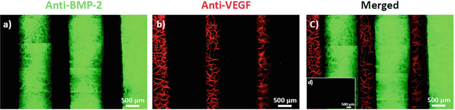
图 4 平行图案设计下，固定化一抗（primary antibodies）在活化并功能化的纳米纤维基底（nano fibrous substrates）表面的空间分布。（改编自 Casanova et al. (2020a)）Fig. 4 Spatial distribution of immobilized primary antibodies at the surface of activated and functionalized nano fibrous substrates, in a parallel pattern design. (Adopted from Casanova et al. (2020a))
分泌组衍生物的固定化 利用MSCs的多谱系分化潜能，研究者还通过将其与软骨细胞共培养，探索了基于分泌组（secretome）的策略。与其他类型的细胞一样，软骨细胞会向培养基中分泌形态发生信号，这些信号可能诱导同种异体MSCs向软骨方向分化（Hwang et al. 2007）。据此，研究者将hBM-MSCs和沃顿胶（Wharton’s Jelly，hWJ-）MSCs培养于壳聚糖：聚丁二酸丁二醇酯（chitosan:poly(butylene succinate)）纤维膜上，并用从hACs中获取的条件培养基（conditioned medium，CM）诱导其分化（Alves da Silva et al. 2010, 2015）。CM诱导了两种类型MSCs的软骨向分化（软骨相关基因的表达），并促进了软骨样ECM的形成（GAGs的积累）。因此，使用CM可能是实现成功软骨组织工程策略的一种潜在工具。尤其值得关注的是CM中存在的细胞外囊泡（extracellular vesicles，EVs），其可用于调控炎症、修复损伤并增强组织再生（Bjorge et al. 2017）。在近期的一项研究中，从低氧条件下培养的ADSCs中分离得到的凋亡EVs（H-ApoEVs），在软骨向分化和免疫调节方面表现优于常氧条件下产生的EVs（Ding et al. 2024）。类似地，研究者从人髌下脂肪垫中分离并鉴定了一种新型骨骼干细胞（skeletal stem cells，SSCs）亚群，其软骨向分化能力优于其他ADSCs，并提取了其外泌体（exosomes，Exos）（Lou et al. 2025）。H-ApoEVs和SSC-Exos均被负载于3D打印的甲基丙烯酰化明胶（gelatin methacrylate，GelMA）水凝胶中，并植入大鼠骨软骨模型，促进了关节软骨和软骨下骨的修复。在一项创新性研究中，来自hACs或软骨向诱导hBM-MSCs的CM中的EVs，通过固定化的抗CD63抗体被选择性地结合于生物功能化纳米纤维基质的表面（Casanova et al. 2021）。体外生物学实验表明，EVs生物功能化基质能够比现有的软骨诱导策略更有效地诱导同源细胞的软骨向分化。所有这些研究，连同其他学者的研究（Jiang et al. 2021; Heirani-Tabasi et al. 2021; Ma et al. 2023; Li et al. 2024），共同凸显了负载EVs的支架用于骨软骨再生的再生潜力。
[1]Algul D, Gokce A, Onal A, Servet E, Ekici AID, Yener FG (2016) In vitro release and in vivo biocompatibility studies of biomimetic multilayered alginate-chitosan/β-TCP scaffold for osteochondral tissue. J Biomater Sci Polym Ed 27:431–440
[2]Alves da Silva ML, Crawford A, Mundy JM, Correlo VM, Sol P, Bhattacharya M, Hatton PV, Reis RL, Neves NM (2010) Chitosan/polyester-based scaffolds for cartilage tissue engineering: assessment of extracellular matrix formation. Acta Biomater 6:1149–1157
[3]Alves da Silva ML, Costa-Pinto AR, Martins A, Correlo VM, Sol P, Bhattacharya M, Faria S, Reis RL, Neves NM (2015) Conditioned medium as a strategy for human stem cells chondrogenic differentiation. J Tissue Eng Regen Med 9:714–723
[4]Amler E, Filová E, Buzgo M, Prosecká E, Rampichová M, Necas A, Nooeaid P, Boccaccini AR (2014) Functionalized nanofibers as drug-delivery systems for osteochondral regeneration. Nanomedicine 9:1083–1094
[5]Armiento AR, Stoddart MJ, Alini M, Eglin D (2018) Biomaterials for articular cartilage tissue engineering: learning from biology. Acta Biomater 65:1–20
[6]Athanasiou KA, Darling EM, Hu JC (2010) Hyaline articular cartilage. In: Athanasiou KA (ed) Articular cartilage tissue engineering. Morgan & Claypool Publishers, San Rafael
[7]Bagwan JK, Jawale K, Ahuja BB (2021) Optimization of 3D printed osteochondral tissue geom- etries using finite element analysis. Mater T oday Proc 45:5197–5201
[8]Barrientos S, Stojadinovic O, Golinko MS, Brem H, Tomic-Canic M (2008) Growth factors and cytokines in wound healing. Wound Repair Regen 16:585–601
[9]Bittner SM, Smith BT, Diaz-Gomez L, Hudgins CD, Melchiorri AJ, Scott DW, Fisher JP, Mikos AG (2019) Fabrication and mechanical characterization of 3D printed vertical uniform and gradient scaffolds for bone and osteochondral tissue engineering. Acta Biomater 90:37–48
[10]Bjorge IM, Kim SY, Mano JF, Kalionis B, Chrzanowski W (2017) Extracellular vesicles, exosomes and shedding vesicles in regenerative medicine – a new paradigm for tissue repair. Biomater Sci 6:60–78
[11]Camarero-Espinosa S, Rothen-Rutishauser B, Weder C, Foster EJ (2016) Directed cell growth in multi-zonal scaffolds for cartilage tissue engineering. Biomaterials 74:42–52
[12]Casanova MR, Alves da Silva M, Costa-Pinto AR, Reis RL, Martins A, Neves NM (2019) Chondrogenesis-inductive nanofibrous substrate using both biological fluids and mesenchymal stem cells from an autologous source. Mater Sci Eng C 98:1169–1178
[13]Casanova MR, Oliveira C, Fernandes EM, Reis RL, Silva TH, Martins A, Neves NM (2020a) Spatial immobilization of endogenous growth factors to control vascularization in bone tissue engineering. Biomater Sci 8:2577–2589
[14]Casanova MR, Reis RL, Martins A, Neves NM (2020b) Fibronectin bound to a fibrous substrate has chondrogenic induction properties. Biomacromolecules 21:1368–1378
[15]Casanova MR, Reis RL, Martins A, Neves NM (2020c) Surface biofunctionalization to improve the efficacy of biomaterial substrates to be used in regenerative medicine. Mater Horiz 7:2258–2275
[16]Casanova MR, Reis RL, Martins A, Neves NM (2021) Chondrogenic differentiation induced by extracellular vesicles bound to a nanofibrous substrate. npj Regener Med 6:79
[17]Chan CM, Ko TM, Hiraoka H (1996) Polymer surface modification by plasmas and photons. Surf Sci Rep 24:3–54
[18]Choi SH, Lee K, Han H, Mo H, Jung H, Ryu Y, Nam Y, Rim YA, Ju JH (2023) Prochondrogenic effect of decellularized extracellular matrix secreted from human induced pluripotent stem cell- derived chondrocytes. Acta Biomater 167:234–248
[19]Chu WH, Hu GW, Peng L, Zhang W, Ma Z (2021) The use of a novel deer antler decellularized cartilage-derived matrix scaffold for repair of osteochondral defects. J Biol Eng 15:23
[20]Di Luca A, Lorenzo-Moldero I, Mota C, Lepedda A, Auhl D, Van Blitterswijk C, Moroni L (2016) Tuning cell dif ferentiation into a 3D scaffold presenting a pore shape gradient for osteochondral regeneration. Adv Healthc Mater 5:1753–1763
[21]Di Luca A, Klein-Gunnewiek M, Vancso JG, Van Blitterswijk CA, Benetti EM, Moroni L (2017) Covalent binding of bone morphogenetic protein-2 and transforming growth factor-3 to 3D plotted scaffolds for osteochondral tissue regeneration. Biotechnol J 12: 1700072
[22]Ding ZA, Yan ZE, Yuan X, Tian GZ, Wu J, Fu LW, Yin H, He SL, Ning C, Zheng YZ, Zhang ZC, Sui X, Hao LB, Niu YT, Liu SY, Guo WM, Guo QY (2024) Apoptotic extracellular vesicles derived from hypoxia-preconditioned mesenchymal stem cells within a modified gelatine hydrogel promote osteochondral regeneration by enhancing stem cell activity and regulating immunity. J Nanobiotechnol 22:74
[23]Du YY, Liu HM, Yang Q, Wang S, Wang JL, Ma J, Noh I, Mikos AG, Zhang SM (2017) Selective laser sintering scaffold with hierarchical architecture and gradient composition for osteochondral repair in rabbits. Biomaterials 137:37–48
[24]Eckstein KN, Hergert JE, Uzcategui AC, Schoonraad SA, Bryant SJ, McLeod RR, Ferguson VL (2024) Controlled mechanical property gradients within a digital light processing printed hydrogel-composite osteochondral scaffold. Ann Biomed Eng 52:2162–2177
[25]Faia-Torres AB, Guimond-Lischer S, Rottmar M, Charnley M, Goren T, Maniura-Weber K, Spencer ND, Reis RL, Textor M, Neves NM (2014) Differential regulation of osteogenic differentiation of stem cells on surface roughness gradients. Biomaterials 35:9023–9032
[26]Feng X, Xu PF, Shen T, Zhang YH, Ye J, Gao CY (2020) Age-related regeneration of osteochondral and tibial defects by a fi brin-based construct. Front Bioeng Biotechnol 8:404
[27]Gao CY, Fu L, Yu YJ, Zhang X, Yang XP, Cai Q (2022) Strategy of a cell-derived extracellular matrix for the construction of an osteochondral interlayer. Biomater Sci 10:6472–6485
[28]Goldberg M, Langer R, Jia X (2007) Nanostructured materials for applications in drug delivery and tissue engineering. J Biomater Sci Polym Ed 18:241–268
[29]Gu YQ, Zou YW, Huang YX, Liang RJ, Wu YC, Hu YF, Hong Y, Zhang XZ, Toh YC, Ouyang HW, Zhang SF (2024) 3D-printed biomimetic scaffolds with precisely controlled and tunable struc- tures guide cell migration and promote regeneration of osteochondral defect. Biofabrication 16: 15003
[30]Heirani-Tabasi A, Hosseinzadeh S, Rabbani S, Tafti SHA, Jamshidi K, Soufizomorrod M, Soleimani M (2021) Cartilage tissue engineering by co-transplantation of chondrocyte extra- cellular vesicles and mesenchymal stem cells, entrapped in chitosan-hyaluronic acid hydrogel. Biomed Mater 16: 055003
[31]Hwang NS, Varghese S, Puleo C, Zhang Z, Elisseeff J (2007) Morphogenetic signals from chondrocytes promote chondrogenic and osteogenic differentiation of mesenchymal stem cells. J Cell Physiol 212:281–284
[32]Jeon O, Alt DS, Linderman SW, Alsberg E (2013) Biochemical and physical signal gradients in hydrogels to control stem cell behavior. Adv Mater 25:6366–6372
[33]Jiang SP, Tian GZ, Yang Z, Gao X, Wang FX, Li JT, Tian Z, Huang B, Wei F, Sang XY, Shao LQ, Zhou J, Wang ZY, Liu SY, Sui X, Guo QY, Guo WM, Li X (2021) Enhancement of acellular cartilage matrix scaffold by Wharton’s jelly mesenchymal stem cell-derived exosomes to promote osteochondral regeneration. Bioact Mater 6:2711–2728
[34]Khorshidi S, Karkhaneh A (2018) A review on gradient hydrogel/fiber scaffolds for osteochondral regeneration. J Tissue Eng Regen Med 12:E1974–E1990
[35]Kilian D, Sembdner P, Bretschneider H, Ahlfeld T, Mika L, Lutzner J, Holtzhausen S, Lode A, Stelzer R, Gelinsky M (2021) 3D printing of patient-specific implants for osteochondral defects: workflow for an MRI-guided zonal design. Bio-Des Manuf 4:818–832
[36]Kim HS, Mandakhbayar N, Kim HW, Leong KW, Yoo HS (2021) Protein-reactive nanofi brils decorated with cartilage-derived decellularized extracellular matrix for osteochondral defects. Biomaterials 269:120214
[37]Kosik-Koziol A, Graham E, Jaroszewicz J, Chlanda A, Kumar PTS, Ivanovski S, Swieszkowski W, Vaquette C (2019) Surface modification of 3D printed polycaprolactone constructs via a solvent treatment: impact on physical and osteogenic properties. ACS Biomater Sci Eng 5:318–328
[38]Lee K, Silva EA, Mooney DJ (2011) Growth factor delivery-based tissue engineering: general approaches and a review of recent developments. J R Soc Interface 8:153–170
[39]Li XR, Deng QS, Liu PL, He SH, Gao Y, Wei ZY, Zhang CR, Wang F, Dou XQ, Dawes H, Guo SC, Tao SC (2024) Three-dimensional printed biomimetic multilayer scaffolds coordinated with sleep-related small extracellular vesicles: a strategy for extracellular matrix homeostasis and macrophage polarization to enhance osteochondral regeneration. View 5:20230069
[40]Liao S et al (2010) Electrospun nanofibers: work for medicine? Front Mater Sci China 4:29
[41]Lin X, Chen J, Qiu P, Zhang Q, Wang S, Su M, Chen Y, Jin K, Qin A, Fan S, Chen P, Zhao X (2018) Biphasic hierarchical extracellular matrix scaffold for osteochondral defect regeneration. Osteoarthr Cartil 26:433–444
[42]Lou WQ, Qiu XZ, Qin YM, Lu YN, Cao Y, Lu HB (2025) 3D-printed advanced scaffold armed with exosomes derived from human skeletal stem cell identified by single-cell RNA sequencing enhances osteochondral regeneration. Bioact Mater 51:231–256
[43]Ma CH, Wang T, Jin XM, Zhang WL, Lv Q (2023) Lineage-specific multifunctional double-layer scaffold accelerates the integrated regeneration of cartilage and subchondral bone. Mater Today Bio 23:100800
[44]Madry H, Venkatesan JK, Carballo-Pedrares N, Rey-Rico A, Cucchiarini M (2020) Scaffold- mediated gene delivery for osteochondral repair. Pharmaceutics 12:930
[45]Martins A, Duarte ARC, Faria S, Marques AP, Reis RL, Neves NM (2010) Osteogenic induction of hBMSCs by electrospun scaffolds with dexamethasone release functionality. Biomaterials 31: 5875–5885
[46]Martins A, Ferreira H, Reis RL, Neves NM (2016) Delivery systems made of natural-origin polymers for tissue engineering and regenerative medicine applications. In: Neves NM, Reis RL (eds) Biomaterials from nature for advanced devices and therapies. Wiley, Hoboken
[47]Monteiro N, Martins A, Pires R, Faria S, Fonseca NA, Moreira JN, Reisa RL, Neves NM (2014a) Immobilization of bioactive factor-loaded liposomes on the surface of electrospun nanofibers targeting tissue engineering. Biomater Sci 2:1195–1209
[48]Monteiro N, Martins A, Reis RL, Neves NM (2014b) Liposomes in tissue engineering and regenerative medicine. J R Soc Interface 11:20140459
[49]Monteiro N, Ribeiro D, Martins A, Faria S, Fonseca NA, Moreira JN, Reis RL, Neves NM (2014c) Instructive nanofibrous scaffold comprising runt-related transcription factor 2 gene delivery for bone tissue engineering. ACS Nano 8:8082–8094
[50]Monteiro N, Martins A, Reis RL, Neves NM (2015a) Nanoparticle-based bioactive agent release systems for bone and cartilage tissue engineering. Regen Ther 1:109–118
[51]Monteiro N, Martins A, Ribeiro D, Faria S, Fonseca NA, Moreira JN, Reis RL, Neves NM (2015b) On the use of dexamethason e-loaded liposomes to induce the osteogenic differentiation of human mesenchymal stem cells. J Tissue Eng Regen Med 9:1056–1066
[52]Monteiro N, Martins A, Pires RA, Faria S, Fonseca NA, Moreira JN, Reis RL, Neves NM (2016) Dual release of a hydrophilic and a hydrophobic osteogenic factor from a single liposome. RSC Adv 6:114599–114612
[53]Nguyen LH, Kudva AK, Saxena NS, Roy K (2011) Engineering articular cartilage with spatially- varying matrix composition and mechanical properties from a single stem cell population using a multi-layered hydrogel. Biomaterials 32:6946–6952
[54]Nitschke M (2008) Plasma modification of polymer surfaces and plasma polymerization. In: Polymer surfaces and interfaces. Springer, Berlin/Heidelberg
[55]Nogami M, Kimura T, Seki S, Matsui Y, Yoshida T, Koike-Soko C, Okabe M, Motomura H, Gejo R, Nikaido T (2016) A human amnion-derived extracellular matrix-coated cell-free scaffold for cartilage repair: and studies. Tissue Eng A 22:680–688
[56]Piai JF, Da Silva MA, Martins A, Torres AB, Faria S, Reis RL, Muniz EC, Neves NM (2017) Chondroitin sulfate immobilization at the surface of electrospun nanofiber meshes for cartilage tissue regeneration approaches. Appl Surf Sci 403:112–125
[58]Ramzan F, Salim A, Khan I (2023) Osteochondral tissue engineering dilemma: scaffolding trends in regenerative medicine. Stem Cell Rev Rep 19:1615–1634
[59]Rizzo MG, Palermo N, D’Amora U, Oddo S, Guglielmino SPP, Conoci S, Szychlinska MA, Calabrese G (2022) Multipotential role of growth factor mimetic peptides for osteochondral tissue engineering. Int J Mol Sci 23:7388
[60]Sophia Fox AJ, Bedi A, Rodeo SA (2009) The basic science of articular cartilage: structure, composition, and function. Sports Health 1:461–468
[61]Sun JC, Lyu JT, Xing F, Chen R, Duan X, Xiang Z (2020) A biphasic, demineralized, and decellularized allograft bone-hydrogel scaffold with a cell-based BMP-7 delivery system for osteochondral defect regeneration. J Biomed Mater Res A 108:1909–1921
[62]Sutherland AJ, Beck EC, Dennis SC, Converse GL, Hopkins RA, Berkland CJ, Detamore MS (2015) Decellularized cartilage may be a chondroinductive material for osteochondral tissue engineering. PLoS One 10:e0121966
[63]Suwantong O, Pavasant P, Supaphol P (2011) Electrospun Zein fibrous membranes using glyoxal as cross-linking agent: preparation, characterization and potential for use in biomedical applica- tions. Chiang Mai J Sci 38:56–70
[64]Tong YF, Yuan JQ, Li ZG, Deng CJ, Cheng Y (2024) Drug-loaded bioscaffolds for osteochondral regeneration. Pharmaceutics 16:1095
[65]Wang SG, Cui WJ, Bei JZ (2005) Bulk and surface modi fications of polylactide. Anal Bioanal Chem 381:547–556
[66]Wang ZF, Li ZY, Li ZJ, Wu BL, Liu YP, Wu W (2018) Cartilaginous extracellular matrix derived from decellularized chondrocyte sheets for the reconstruction of osteochondral defec ts in rabbits. Acta Biomater 81:129–145
[67]Wang ZF, Han L, Sun TY, Ma JL, Sun SH, Ma LM, Wu BL (2020) Extracellular matrix derived from allogenic decellularized bone marrow mesenchymal stem cell sheets for the reconstruction of osteochondral defects in rabbits. Acta Biomater 118:54–68
[68]Wu YN, Yang Z, Denslin V, Ren XF, Lee CS, Yap FL, Lee EH (2020) Repair of osteochondral defects with predifferentiated mesenchymal stem cells of distinct phenotypic character derived from a nanotopographic platform. Am J Sports Med 48:1735–1747
[69]Zhang W, Ling C, Zhang AN, Liu HY, Jiang YJ, Li XL, Sheng RW, Yao QQ, Chen JL (2020a) An all-silk-derived functional nanosphere matrix for sequential biomolecule delivery and osteochondral regeneration. Bioact Mater 5:832–843
[70]Zhang YX, Dai JH, Yan LQ, Sun Y (2020b) Intra-articular injection of decellularized extracellular matrices in the treatment of osteoarthritis in rabbits. PeerJ 8:e8972
[71]Zheng BW, Xing JW, Tang XH, He Z, Tang QR, Liu SB, Xiao Y, Xu JZ, Luo E, Liu Y (2025) Tailored surface topographical scaffolds: a breakthrough in osteoarthritic cartilage and sub- chondral bone defect repair. J Mater Chem B 13:8639
第5章 · 原书第21章 · Biomaterials and Scaffold Design
用于骨软骨（osteochondral）组织工程与再生的生物陶瓷（bioceramics）
Bioceramics for Osteochondral Tissue Engineering and Regeneration
Konrad Kwiecień, Sandra Pina, J. Miguel Oliveira, Rui L. Reis, and Elżbieta Pamu łaDOI: 10.1007/978-3-031-80976-7_21-1原文 23 页
鉴于其独特的性能，生物陶瓷被广泛应用于组织工程（tissue engineering, TE）和生物医学领域，特别是用于开发能够模拟自体组织细胞外基质（extracellular matrices, ECM）的三维支架（Yan et al. 2013; Pina et al. 2015）。生物陶瓷的特点是抗压强度高于抗拉强度，这是在特定生物医学应用中需要考虑的重要特性。生物陶瓷还可按其来源分类，分为天然和合成两类；考虑到特定的组成、微观结构和长期可重复性，两者均已被提出用于组织工程支架的加工。天然生物陶瓷包括珊瑚来源材料、海绵、珍珠母（nacre）以及动物（鱼和鸡）骨骼，可提供丰富的钙化合物来源（如碳酸钙和磷酸钙）（Silva et al. 2012）。与此同时，合成生物陶瓷涵盖氧化铝和氧化锆、生物活性多孔玻璃和玻璃陶瓷，以及以烧结陶瓷、涂层和水泥浆体形式存在的CaPs基材料（Oliveira et al. 2009, 2010）。近年来研究的生物陶瓷合成方法包括湿法沉淀（wet precipitation）、溶胶-凝胶（sol–gel）、熔融淬火（melting-quenching），甚至反应性等离子体火花（reactive plasma spark）（Yelten and Yilmaz 2019; Papynov et al. 2020）。随后，采用多种技术将所得产物掺入复合支架中，例如热致相分离（thermal-induced phase separation）、静电纺丝（electrospinning）、气体发泡（gas foaming）、冷冻干燥（freeze-drying）、颗粒沥滤/溶剂浇铸（particle leaching/solvent casting）、3D打印、立体光固化（stereolithography）或选择性激光烧结（selective laser sintering）（Cinici et al. 2024）。一个有趣的想法是在生物陶瓷中掺杂离子元素（如锶、锌、镁、锰和硅），这些元素可在骨移植物吸收过程中释放，因而可能影响骨骼健康并增强生物相容性（biocompatibility），同时提高植入物的力学性能（Pina and Ferreira 2010; Tomoaia et al. 2014; Wang et al. 2023）。此外，痕量金属元素可能使所制备的材料产生理化改性，从而加速体内骨形成和骨吸收（Shen et al. 2024; He 2025; Dept. of Ceramics and Glass Engineering et al. 2010）。本章简要概述了用于骨、软骨和骨软骨（osteochondral, OC）组织的天然和合成生物陶瓷材料，涵盖从生物惰性到生物活性和生物可吸收的多种生物陶瓷。文中描述了它们的理化、力学和生物学特性，并着重阐述了涉及生物陶瓷的临床试验以及该领域研究的挑战与前景。
生物陶瓷（bioceramic）材料及其性能
天然生物陶瓷
天然来源的生物陶瓷（bioceramics）可提供丰富的无机材料来源（如碳酸钙（calcium carbonate）、磷酸钙盐（CaPs）或生物硅石（biosilica）），在组织置换与再生方面具有高度适用性 (Silva et al. 2012; Lalzawmliana et a l. 2019)。其中尤为引人关注的是源自海洋的材料，例如天然珊瑚、珍珠母（nacre，即软体动物贝壳）、海绵以及鱼骨（图1 I）。
图 1 I：乌贼（Sepia officinalis）（a）、海绵（Spongia agaricina）（b）、红藻（Corallina officinalis）（c）和颗石藻（Emiliania huxleyi）（d）的扫描电子显微镜照片，展示了多种大孔和微孔结构。（经许可转载自 (Clarke et al. 2011)）。II：珊瑚藻（Coralline officinallis）的扫描电子显微镜照片：原始状态（a）、400 °C处理6小时后（b），以及经不同化学处理后：Na₄P₂O₇.10H₂O（c）、H₃PO₄（d）、H₃PO₄ + (NH₄)₂HPO₄（e）和HF 48%（f）。（经许可转载自 (Oliveira et al. 2007)）Fig. 1 I: Scanning electron micrographs of cuttlefish (Sepia officinalis) (a), sponge (Spongia agaricina) (b), red algae (Corallina officinalis) (c), and coccolithophores (Emiliania huxleyi) (d), demonstrating a range of macroporous and microporous structures. (Reprinted with permission (Clarke et al. 2011)). II: Scanning electron micrographs of Coralline officinallis: as received (a), after 6 hours at 400 °C (b), and after different chemical treatments with; Na₄P₂O₇.10H₂O (c), H₃PO₄ (d ), H₃PO₄ + (NH₄)₂HPO₄ (e), and HF 48% (f ). (Reprinted with permission from (Oliveira et al. 2007))
碳酸钙（以文石（aragonite）或方解石（calcite）形式存在）可见于许多此类海洋生物中，由于其独特的结构、构造与力学性能，这些碳酸钙可被转化为CaPs用于生物医学领域。珊瑚作为支架（scaffold）材料得到了最为广泛的研究，因为其兼具多尺度孔隙率以及相互连通的孔隙（直径100–500 μm）和通道，而这些正是健康骨组织置换的关键 (Green et al. 2017)。此外，珊瑚骨骼具有原位吸收（in situ resorption）特性和高度的多功能性，因而能够递送基因和生物活性因子。本课题组曾报道，珊瑚藻（Coralline officinalis）可用作以骨修复与再生为目标的骨填充材料 (Oliveira et a l. 2007; Correlo et al. 2011)。通过将热处理与化学处理相结合，珊瑚藻（C. officinallis）的碳酸钙骨架被转化为含羟基磷灰石（hydroxyapatite, HAp）纳米晶的CaPs（图1 II）(Oliveira et a l. 2007)。结果表明，珊瑚藻颗粒在热处理后以及在不同溶液中浸泡后均保持了其原有形貌。此外，研究还证明可对珊瑚藻的微观结构及其生物活性和降解行为进行调控。与商业HAp相比，源自自然资源的生物陶瓷还可能更好地支持成骨（osteogenic）效应，这是因为在生物条件下，材料中天然存在的生物活性离子（如沙龙虾壳中的Mg²⁺或乌贼中的Sr²⁺）可被释放出来 (Dinatha et al. 2025; Pang et a l. 2024)。此外，源自海洋资源的生物陶瓷可被视为环境友好材料，因为海洋废弃物已被充分用作HAp的来源 (Wibisono et al. 2021)。
合成生物陶瓷
生物惰性材料（Bioinert Materials）在骨组织修复领域，应特别关注氧化铝（alumina, Al₂O₃）和氧化锆（zirconia, ZrO₂）。它们是一类结晶性陶瓷材料（crystalline ceramic materials），具有极佳的稳定性、化学耐受性与耐磨性，以及高硬度和高刚度。因此，它们能够抵抗开裂和腐蚀，表现出生物惰性行为。这使其在骨科领域得到普遍应用，特别是用于全髋/膝关节置换术（total hip/knee arthroplasty），以及牙科领域。然而，通过将两者复合制成复合材料（composites），可以缓解各自的局限性（Hussien et al. 2025; Piconi and Sp rio 2021）。氧化铝基生物陶瓷（bioceramics）是最早上市的材料，用于牙科种植体以及全髋假体中的髋臼杯（acetabular cup）置换（Kolos and Ruys 2015）。氧化铝兼具良好的抗弯强度与机械强度、优异的动态载荷与疲劳抗力以及很高的耐磨性。因此，氧化铝已被有效地用作合成骨移植物（synthetic bone grafts）和增强材料，甚至可通过在氧化铝上施加仿生涂层（biomimetic coating）而用作多孔假体装置，以保证其在宿主组织内的稳定置入。氧化铝假体的其他临床应用还包括骨螺钉、牙槽嵴（颌骨）与颌面部重建、听小骨（中耳）骨替代物、角膜替代物、节段性骨替代物，以及叶片型、螺钉型和桩型牙科种植体（Greenspan 2016）。然而，氧化铝陶瓷的断裂韧性（fracture toughness）较低。例如，20世纪70年代，髋关节内假体（hip endoprostheses）的股骨头常由纯Al₂O₃制成。然而，由于频繁发生失效，且ZrO₂具有更高的断裂韧性，20世纪90年代纯Al₂O₃被ZrO₂所取代（Alaa and T aeh 2022）。ZrO₂的晶体结构随温度而变化：低于1170 °C时为单斜（monoclinic）结构，在1170 °C至2370 °C之间为四方（tetragonal）结构，高于2370 °C时为立方（cubic）结构。然而，通过添加氧化钇（yttria, Y₂O₃）或其他氧化物（如MgO或CaO）可以抑制相变（phase transformation）。因此，ZrO₂即使在室温下也能保持四方结构（即氧化钇稳定的四方氧化锆多晶体，yttria-stabilized tetragonal zirconia polycrystals, Y-TZP）。这种材料的断裂强度为1.0 GPa，断裂韧性为9 MPam1/2，是纯氧化铝（4–5 MPam1/2）的两倍（Pignatello 2011）。遗憾的是，该材料仅处于亚稳态（metastable），可能自发转变为单斜结构，尤其是在种植体表面，转变所产生的应力会损害其使用寿命（Piconi and Sprio 2021）。将氧化锆陶瓷与氧化铝陶瓷复合制成复合材料可以克服这一缺点。根据基体（matrix）材料的不同，这类复合材料分别被称为氧化锆增韧氧化铝（zirconia-toughened alumina, ZTA）或氧化铝增韧氧化锆（alumina-toughened zirconia, ATZ）。所得材料的特点是韧性更高、摩擦学性能（tribological properties）更优（Szczęsny et al. 2022）。ZTA以氧化铝（70–95%）为基体相，以氧化锆多晶体（TZP，5–30%）为第二相（secondary phase），兼具单体氧化铝（monolithic alumina）与氧化锆两者的优良特性。此外，氧化铝陶瓷的耐磨性能以及对应力辅助降解（stress-assisted degradation）的低敏感性在ZTA陶瓷中同样得以保留，从而降低了撞击（impingement）和脱位（dislocation）的风险，并提高了稳定性（Kurtz
图 2 I：TZP相变抑制裂纹的机制。膨胀的单斜晶粒产生反向应力，使裂纹闭合。（经许可转载自 (Kurtz ® delta; et al. 2014)）。II：BIOLOX® delta产品实例。III：BIOLOX的显微组织（microstructure）(1) Al₂O₃基体晶粒，(2) ZrO₂增韧相，(3) 用于提供额外裂纹偏转与桥接的细长六铝酸锶（strontium hexaaluminate）晶粒。（II和III经CC BY许可转载自 (Piconi and Sprio 2021)）Fig. 2 I: Mechanism of crack inhibition due to phase transformation of TZP. Expanding monoclinic grains generate counter stresses closing the crack. (Reprinted with permission from (Kurtz ® delta; et al. 2014)). II: Examples of BIOLOX® delta products. III: microstructure of BIOLOX (1) Al₂O₃ matrix grains, (2) ZrO₂ toughening phase, (3) elongated strontium hexaaluminate grains for additional crack deflection and bridging. (II and III reprinted under CC BY license from (Piconi and Sprio 2021))
et al. 2014）。ZTA失效风险降低的原因在于，它将TZP自发相变这一问题转化成了优势。材料中经稳定化且处于受压状态的TZP晶体保持四方结构。然而，正在扩展的裂纹会诱发其相变为体积更大的单斜结构，从而压缩周围的Al₂O₃，使其更能抵抗可能导致失效的裂纹扩展（图2 I）（Sktani et al. 2022）。综上所述，单纯的氧化铝和氧化锆（牙科种植体中使用的Y-TZP除外）已很少被单独使用，而它们的复合材料已在诸如髋关节置换承重面（bearing）等市场中占据主导地位。最畅销的材料是BIOLOX® delta，它已被植入患者体内，占据全球市场的90%（图2 II–III）（Piconi and Sprio 2021）。
生物活性玻璃（Bioactive Glasses）生物活性玻璃（bioactive glasses）和玻璃陶瓷（glass-ceramics）已以致密、多孔或微粒形式、采用多种化学组成被开发出来，用于骨科和牙科的组织工程（tissue engineering, TE）应用。它们通常表现出高强度、高韧性、高弹性模量和高耐磨性。生物活性玻璃已被证明比其他生物陶瓷更快速地与活体骨组织形成结合。随着时间的推移，它们会逐渐整合到天然组织中，并转变为磷灰石（apatite）。与此同时，在此过程中它们还充当免疫调节剂（immunomodulatory agent）（Shearer et al. 2023; Li et a l. 2025; Zheng et a l. 2021; Kaur et a l. 2019; Skallevold et a l. 2019）。
世界上第一种生物玻璃（bioglass），即45S5 Bioglass®，由Larry Hench于20世纪70年代推出（Hench et al. 1971）。它是一种属于Na₂O–CaO–SiO₂–P₂O₅体系的二氧化硅基（silica-based）生物活性玻璃（bioactive glass），其组成接近Na₂O–CaO–SiO₂相图中的三元共晶（ternary eutectic）点。植入后，这种独特的生物材料会释放出硅物种（主要为Si(OH)₄）、Na⁺、Ca²⁺以及磷酸盐物种，从而刺激再生过程，例如通过调节成骨细胞（osteoblast）功能或刺激I型胶原（collagen type I）的生成。生物玻璃可释放多种不同的离子，这些离子在血管新生（angiogenesis）、成骨（osteogenesis）以及抗菌或抗炎特性方面支持其生物活性（bioactivity）（Shearer et al. 2023; Jones 2013; Kargozar et al. 2018; Pantulap et al. 2021）。此外，生物玻璃还可用作药物递送系统（drug delivery system），在作用部位提供适宜的生物活性分子，如多肽、抗生素、抗骨质疏松、抗炎或抗癌药物（Gupta et al. 2021）。例如，Wang等（Wang et al. 2018）利用介孔生物活性玻璃（mesoporous bioactive glass，80% SiO₂和15% CaO）支架（scaffold）将阿仑膦酸（alendronate）递送至大鼠，结果显示体内骨再生增加。除传统的硅酸盐玻璃外，为生物医学应用开发的其他类型生物活性玻璃还包括硼酸盐基玻璃和磷酸盐基玻璃。其中值得关注的是B₂O₃–Na₂O–CaO–P₂O₅体系的硼酸盐基玻璃。当浸入水性环境时，它们以与硅酸盐基生物玻璃相似的方式表现出快得多的降解速率和向磷灰石（apatite）的转化，但不会形成富硅层（silica-rich layer）（Ege et al. 2022; David Abodunrin et al. 2023）。此外，与经典的45S5 Bioglass®相比，所释放的B³⁺离子可增强成骨和血管新生（Westhauser et al. 2019; Xia et al. 2019）。硼酸盐玻璃还已被用作庆大霉素（gentamicin）、万古霉素（vancomycin）或替考拉宁（teicoplanin）的药物释放系统，用于治疗骨髓炎（osteomyelitis）（Ege et al. 2022）。另一方面，从这类生物玻璃中释放的B³⁺离子可能具有细胞毒性。这一缺点在体外动态培养条件下可被克服（Brown et al. 2009）。另一类引人关注的生物玻璃是磷酸盐生物活性玻璃，因为其化学组成与骨的天然组成最为相似。其主要体系由Na₂O、CaO和P₂O₅组成；不过，与硅酸盐生物玻璃一样，也可以引入其他离子。与硼酸盐玻璃类似，它们在水性液体中的溶解速率快于硅酸盐玻璃，且较高的磷含量对成骨具有积极影响（Obata et al. 2022a; Madival et al. 2025; Li et al. 2021）。鉴于磷酸盐玻璃的降解速率被认为过快，可通过掺入其他金属氧化物（如Y₂O₃）使其减缓（Arafat et al. 2020）。此外，一些较少使用的氧化物也可用于改善其性能。例如，添加至多2%的Sm₂O₃可增强细胞的成骨反应，并减少金黄色葡萄球菌（Staphylococcus aureus）和表皮葡萄球菌（Staphylococcus epidermidis）的黏附（Morais et al. 2014）。通过掺铜（Cu-doped）生物玻璃也可获得对这些菌株的高活性（图3 I）（Bari et al. 2017）。生物活性玻璃的常用合成方法包括传统的熔融淬冷法（melt-quenching）和各种类型的溶胶–凝胶（sol–gel）工艺（Deshmukh et al. 2020; Maximov et al. 2021; Obata et al. 2022b）。
图 3 I：Cu掺杂介孔生物活性玻璃（mesoporous bioactive glass），SEM图像 (a)、EDS谱图 (b)、TEM图像 (c) 以及各元素EDS分布图——Si（红色）、O（蓝色）、Cu（绿色）和Ca（黄色）(d)。（经许可转载自 (Bari et al. 2017)）。II：3D打印硼酸盐玻璃（borate glass）支架（scaffold），FBS处理前 (a和c) 和FBS处理后 (b和d)。（经许可转载自 (Deliormanl ı 2013)）。III：通过水包油（oil-in-water）乳化法制得的中空介孔生物活性玻璃微颗粒的SEM (a和b) 和TEM (c) 图像。（经许可转载自 (Wang and Chen 2017)）Fig. 3 I: Cu-doped mesoporous bioactive glass, SEM image (a), EDS spectrum (b), TEM image (c), and elements EDS mapping— Si (red), O (blue), Cu (green), and Ca (yellow) ( d). (Reprinted with permission from (Bari et al. 2017)). II: 3D-printed borate glass scaffolds before (a and c) and after FBS treatment (b and d). (Reprinted with permission from (Deliormanl ı 2013)). III: SEM (a and b) and TEM (c) of hollow mesoporous bioactive glass microparticles obtained by oil-inwater emulsification, (Reprinted with permission from (Wang and Chen 2017))
各类生物玻璃可被加工成多种形式，例如通过3D打印技术制成支架（图3 II），或通过诸如水包油（oil-in-water）乳化的方法制成中空微球（hollow microsphere）（图3 III）（Deliormanlı 2013; Wang and Chen 2017）。
磷酸钙 磷酸钙（calcium phosphates，CaPs）天然存在于人体内，属于类骨材料（bone-like material），由于其与主要天然钙化组织（calcified tissue）的矿物组分相似，被提出可用于广泛的骨科和牙科应用（de Groot 1983）。这类生物陶瓷（bioceramic）具有出色的生物相容性（biocompatibility）、骨传导性（osteoconductivity）和生物可吸收性（bioresorbability），因而能够与活体组织整合。这一现象发生于部分CaPs溶解进入微环境（microenvironment）之时；离子一经释放，便会发生蛋白质吸附和生物磷灰石（biological apatite）晶体的沉淀，从而在生物材料表面形成一层。此外，医用级CaPs在实验室规模和工业规模上均易于获得。最广为人知的CaPs包括具有不同化学组成、溶解度和性能的多种化合物（表1）（Khan and Syed 2019; Eliaz and Metoki 2017）。HAp呈结晶态，是水溶液中最稳定、溶解度最低的CaP，可通过湿法（如沉淀法（precipitation method）、水热合成（hydrothermal synthesis））以及高温下的固态反应由
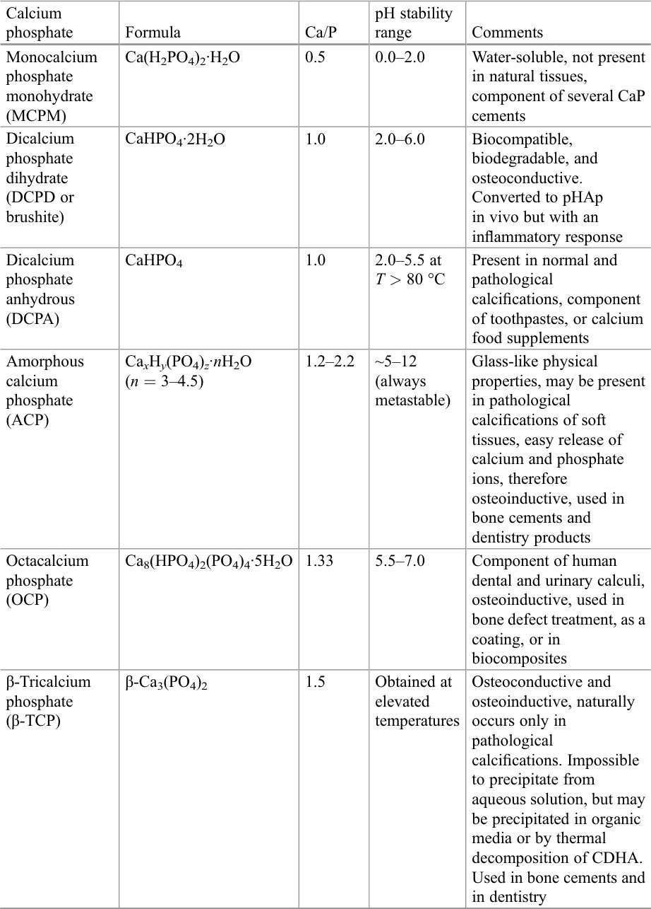
表 1 生物医学领域应用的主要磷酸钙化合物（calcium phosphate compounds）(Eliaz and Metoki 2017)Table 1 Main calcium phosphate compounds used in the biomedical field (Eliaz and Metoki 2017)
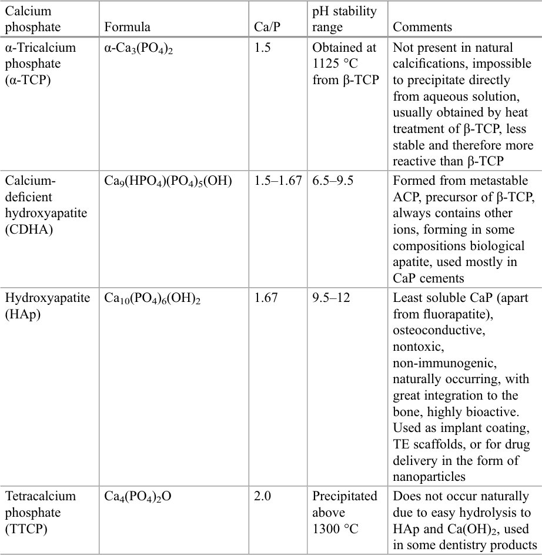
表 2（续） （续）Table 1 (continued)
……基质材料，如 CaO、P₂O₅ 及其他磷酸盐或钙化合物（如碳酸盐或氢氧化物）（Mohd Pu'ad et al. 2020）。磷酸三钙（tricalcium phosphate, TCP）可通过固态反应（solid-state reaction）、热转化（thermal conversion）或湿法沉淀（wet-precipitation）方法合成。一般而言，TCP 可被视为磷酸钙（CaPs）的高温相，由 800 °C 以上的热分解获得。TCP 存在三种公认的多晶型（polymorph），即：在 1120 °C 以下稳定的 β-TCP、在 1120 °C 与 1470 °C 之间稳定的 α-TCP，以及在 1470 °C 以上稳定的 α'-TCP。通常，β-TCP 难以致密化（densification），因为 β → α 相变温度较低，致使其无法在高温下烧结。然而，通过掺入镁或焦磷酸钙，可在高温下稳定这一 β → α 转变。β-TCP 具有可生物降解性，作为骨替代物（bone substitute）已被广泛研究，其形式包括颗粒或块体，亦应用于以 CaPs 为基体的骨水泥（bone cement）。α-TCP 通常由 β-TCP 相制备，淬火（quenching）可防止其逆向转变为 α → β。α-TCP 具有生物相容性（biocompatible），且比 β-TCP 更易生物降解、反应活性更高。有报道称，尽管 β-TCP 与羟基磷灰石（HAp）具有相近的化学组成，二者的生物吸收（resorption）能力却存在差异（Eliaz and Metoki 2017; Bohner et al. 2020; Tronco et al. 2022）。缺钙羟基磷灰石（CDHA）可视为缺失了部分 Ca²⁺ 离子的 HAp。此外，CDHA 还可通过从水溶液中直接沉淀获得。首先合成的是无定形磷酸钙（ACP），它极易转变为 CDHA，因此常被用作合成 β-TCP 的基质材料。有趣的是，CDHA 也可通过 α-TCP 的水解获得，这体现出化学组成相同的材料之间存在的特定差异。其晶体尺寸通常为亚微米级。CDHA 的溶解度随 Ca–P 摩尔比、结晶度（crystallinity）和尺寸的降低而升高（Eliaz and Metoki 2017; Bakan 2019）。磷酸钙可按其在水溶液中的溶解度排序为：MCPM > DCPD > DCPA > α-TCP > β-TCP > OCP > HAp。磷酸钙溶解行为的差异与化学组成的改变以及微孔隙率（microporosity）和孔径有关，并与体内骨诱导（osteoinduction）过程相关联。适当的孔隙率可使骨组织通过细胞迁移和物质运输实现长入（bone ingrowth）。溶解速率通常与较高的吸收速率相关，因为释放出更多的 Ca²⁺ 和 PO₄³⁻ 离子会产生这一效应。HAp 的骨诱导和吸收速率较慢，植入后可能仍整合于再生骨组织中，而 β-TCP 则被完全吸收；因此，人们开发了结合 HAp 与 β-TCP 的复合材料，以同时提升生物可降解性（bioresorbability）和强度。这类材料被称为双相磷酸钙（biphasic calcium phosphates, BCP）（Tang et al. 2018）。BCP 的核心思路是通过调节较易溶与较难溶组分的比例来调控溶解速率。这一比例可在很大范围内变化；在市售产品中，HAp 含量最低可至 20%，最高可达 96%。多种组成的 BCP 均可获得较高的生物活性（bioactivity），因为晶粒尺寸和孔隙率等其他因素在骨再生中也发挥着关键作用（Ebrahimi et al. 2017）。由于天然骨在韧性、密度和钙化程度方面呈功能梯度分布，生物陶瓷产品多种多样的可能组成使人们能够制备梯度移植体（graded graft）。例如，可以设计 HAp 含量沿厚度方向呈梯度变化的复合配方（Salimi 2020）。鉴于生物陶瓷存在力学性能的局限，同时其又具备与宿主骨组织整合的卓越能力，它们常被用作植入体涂层。在这种情况下，磷酸钙的主要作用是支持骨整合（osteointegration），而力学性能则由例如金属材料提供，如髋关节假体（hip endoprosthesis）柄。然而，磷酸钙生物陶瓷的形式多样：既可以是金属植入体表面有助于其与骨固定的薄涂层，也可以是用作骨移植物（bone graft）的致密或多孔块体，甚至是可注射的制剂（图4）。此外还有定制设计的形式，如用于胫骨开放截骨术的楔形块、用于脊柱和膝关节的锥形体，以及用于椎间融合笼的嵌体。磷酸钙还被用于牙槽嵴增高（alveolar ridge augmentation）、牙缺失修复、颌面部重建（maxillofacial reconstruction）、眶内植入体、听小骨增强、脊柱融合以及骨缺损修复（Eliaz and Metoki 2017; Drevet et al. 2023; Furko et al. 2019; Pereira et al. 2020）。
图 4 用于骨软骨（osteochondral）组织再生的各种CaPs。I：CaPs基支架的多种形状，经CC BY许可转载自 (Tang et al. 2018)。II：通过加热排除有机分散剂获得的多孔β-TCP烧结支架的显微组织。（经许可转载自 (Descamps et al. 2008)）。III：Ti6Al4V表面多离子掺杂CaP涂层的显微组织及EDX元素组成，经许可转载自 (Furko et al. 2019)。IV：α-TCP/CaCO₃基骨水泥（bone cement）的显微组织及EDX元素组成，可见相分离。（经许可转载自 (Siek et al. 2017)）Fig. 4 Various CaPs for osteochondral tissue regeneration. I: various shapes of CaPs-based scaffolds, reprint under CC BY license from (Tang et al. 2018). II: microstructure of porous β-TCP sintered scaffold obtained by heat elimination of organic dispersant. (Reprinted with permission from (Descamps et al. 2008)). III: microstructure and an EDX elemental composition of a multi-iondoped CaP coating on Ti6Al4V surface, reprinted with permission from (Furko et al. 2019). IV: microstructure and EDX elemental composition of α-TCP/CaCO₃-based bone cement with separated phases visible. (Reprinted with permission from (Siek et al. 2017))
磷酸钙盐（calcium phosphates, CaPs）的主要应用之一是用于骨水泥（bone cements）。磷酸钙骨水泥（calcium phosphate cements, CPCs）是由一种或多种CaPs与水溶液组成的混合物，二者反应析出溶解度较低的CaP，并通过生长晶体的相互缠结而固化，从而赋予骨水泥机械刚度。糊剂置入骨缺损处后，在体温下硬化，随后表现出有限的溶解度。CPCs的主要优点包括凝固迅速、可塑性优异以及操作性能良好。因此，这类生物陶瓷作为可塑的糊状骨替代材料，在创伤手术中被广泛用于填充骨缺损（Ginebra and Montufar 2019）。CPCs的相关特性，如生物相容性和可吸收性、生物活性以及无细胞毒性，使其得以发展用于不仅修复骨缺损，还可治疗与组织损伤相关的疾病，例如癌症或感染（Siek et al. 2017; Pylostomou et al. 2023; Wekwejt et al. 2019）。由于相互缠结的晶体之间结合并不牢固，CPCs的压缩力学强度远高于拉伸或剪切强度。抗压强度值可能因晶体尺寸、排列方式及堆积密度的不同而变化。例如，Tronco等（Tronco et al. 2022）综述了已研究的α-TCP基骨水泥配方，发现所获得的抗压强度值从低于1 MPa直至高达230 MPa不等。根据最终产物，CPCs可分为磷灰石类（apatitic, AP）骨水泥和透钙磷石（brushite，即二水磷酸氢钙，dicalcium phosphate dihydrate, DCPD）骨水泥。AP在pH 4.2以上形成，而当糊剂的pH值低于4.2时则优先形成透钙磷石，但根据成分的不同也可能有所差异（Yousefi 2019; Zima et al. 2017; Arahira et al. 2017; Karpiński et al. 2024; Mendes et al. 2018）。目前，已有不同类型的添加剂被用于增强CPCs的粘结性能和生物学性能（Czechowska et al. 2024; Ribeiro et al. 2022; Lu et al. 2022）。
自体移植物是骨组织再生的金标准，其供应问题促使人们寻找替代解决方案。生物陶瓷已成为该领域的重要材料，因为骨软骨（OC）组织天然高度钙化，若缺乏其细胞外基质（ECM）组分（如钙）的充分供应，则可能无法完全恢复。另一方面，单独使用生物陶瓷往往不足以支持完全再生。因此，生物陶瓷常与合成聚合物、水凝胶、多糖或肽类等其他材料复合使用，这样既便于移植物的制备，又能更好地模拟骨软骨组织的各向异性特征（图5）（Novotná and Franková 2024）。将生物陶瓷与其他材料复合的主要原因之一，在于能够利用现代技术制备具有定制化微结构的3D支架。静电纺丝（electrospinning）便是一种典型的无法单独用于生物陶瓷材料的方法。采用该方法时，将生物活性玻璃或磷酸钙（CaPs）颗粒分散于天然聚合物（胶原（collagen）、壳聚糖（chitosan）、海藻酸盐（alginate））或合成聚合物（PLGA、PLA、PCL）的溶液中，即可构建3D多孔结构（Naghizadeh et al. 2018）。另一种可制备多层支架的技术是3D打印。通常，最常用的打印材料是可光交联的甲基丙烯酰化明胶（gelatin methacryloyl，GelMA）或海藻酸盐，并根据目标组织的钙化程度添加生物活性玻璃或CaPs；最常见的3D打印技术为挤出式打印，不过也有部分研究采用立体光刻（stereolithography）或数字光处理（digital light processing）方法（Ege and Hasirci 2023）。例如，Liu等（Liu et al. 2019）制备了模拟软骨与软骨下骨界面的三层支架。软骨部分由15%的纯GelMA溶液构成，软骨下骨部分由添加了3%纳米结构羟基磷灰石（HAp）的30% GelMA构成，界面层则含20% GelMA与3% HAp。在兔模型体内实验中，这种梯度结构对软骨组织再生的支持效果远优于GelMA单相支架。
图 5 用于骨软骨（osteochondral）组织工程（TE）的CaP基复合材料示例。I：由含nano-HAp的GelMA制备的三层3D打印支架及其体内性能，标尺为500 μm。（根据CC BY许可转载 (Liu et al. 2019)）。II：酶促矿化与非矿化结冷胶（gellan gum）水凝胶在扫描电镜（SEM）下的对比（a），以及Ca（b）和P（c）的EDX元素分布图，以及非矿化部分（d）与矿化部分（e）的EDX谱图。（经许可转载自 (Pietryga et al. 2023)）Fig. 5 Examples of CaP-based composites for osteochondral TE. I: Tri-layered 3D-printed scaffold from GelMA with nano-HAp and its in vivo performance, scale bar 500 μm. (Reprinted under CC BY license (Liu et al. 2019)). II: Comparison between enzymatically mineralized and non-mineralized gellan-gum hydrogel under SEM (a) and EDX mapping of Ca (b) and P (c), as well as EDX spectra of non-mineralized part (d) and mineralized one ( e). (Reprinted with permission from (Pietryga et al. 2023))
其他技术，如基于光刻的陶瓷制造（lithography-based ceramic manufacturing），已被用于制备PCL/β-磷酸三钙（β-TCP）支架，其孔隙尺寸与形状各异，能够模拟骨组织的不同部位（Ryan and Yin 2022）。此外，数字光处理（DLP）因其高精度也被用于制备含HAp的支架（Song et al. 2022）。另一项研究表明，DLP制备的聚-L-乳酸（poly-L-lactide，PLLA）支架中双相磷酸钙（BCP）的最大含量为45%（Bagheri Saed et al. 2020）。然而，在某些方法中，有机组分仅用于支架制备，随后即被去除。可将含自由基光引发剂的光固化树脂添加至β-TCP或BCP中以实现支架成型，随后在烧结过程中通过热处理将其去除，由此可获得仅由磷酸钙（CaP）构成的最终产品（Schmidleithner et al. 2019; Wang et al. 2022）。另一种方法是生物陶瓷的原位矿化（in situ mineralization），通常在水凝胶内进行。GelMA水凝胶具有可与Ca²⁺离子结合的羧酸盐官能团。随后，将交联的含钙基质浸泡于Na₂HPO₄溶液中，即可使分布均匀的HAp在水凝胶内沉淀析出。
矿化循环可反复进行，从而实现对复合材料中CaP含量的调控（Wu et al. 2021）。Pietryga等（2023）的研究提供了另一个实例：该研究利用碱性磷酸酶（alkaline phosphatase，ALP）对甘油磷酸钙（calcium glycerophosphate，CaGP）的酶解作用，获得了矿化的结冷胶（gellan gum）水凝胶。由于凝胶中CaGP的浓度由扩散决定，该材料随后呈现出CaP含量的梯度分布。与非矿化部分相比，矿化部分表现出更高的成骨样细胞黏附性。上述研究均是对先前制得的水凝胶进行矿化。然而，相反的策略同样可行，即在生物陶瓷颗粒悬浮液周围交联形成水凝胶。高活性的α-TCP可释放Ca²⁺离子，这些离子随即将多糖基质交联成水凝胶，同时α-TCP自身转化为缺钙羟基磷灰石（CDHA）。含生物陶瓷的复合水凝胶还可用作注射型制剂，与骨水泥形成竞争。然而，与矿化法相比，该方法所得CaPs的分布均匀性要低得多（Douglas et al. 2018; Dziadek et al. 2019）。在开发生物复合骨水泥的另一种策略中，将TCP和壳聚糖掺入聚甲基丙烯酸甲酯（poly(methyl methacrylate)，PMMA）中，以更好地复制人体骨的组成。在该方案中，观察到随TCP和壳聚糖比例的增加，压缩强度和杨氏模量有所下降；与单独使用PMMA骨水泥相比，这可能有助于改善长期结构稳定性。这种生物复合骨水泥还表现出较低的固化放热、良好的硬化时间和更优的降解速率（Fang et al. 2019）。
表 3 自2019年以来经FDA批准用于组织工程（TE）的生物陶瓷基产品（Establishment Registration and Device Listing 2025）Table 2 Bioceramic-based products for TE approved by the FDA since 2019 (Establishment Registration and Device Listing 2025)
致谢 本工作得到EngVIPO项目HORIZON-MSCA2023-SE-01计划（资助协议编号101183041）的资助，以及波兰科学与高等教育部对克拉科夫AGH大学（AGH University of Krakow）的补贴（编号16.16.160.557）的支持。同时感谢葡萄牙科学技术基金会（Portuguese Foundation for Science and Technology, FCT）为SP所获资助（2023.07400.CEECIND/CP2841/CT0016）提供的经费支持。
[2]Trigon® HA Bone implants Trigon CC Wedge PEEK-Optima/HAp 2022 of multiple System (2025) sizes
[3]major step forward in the future. Bioceramics offer desirable characteristics such as
[4]biocompatibility, chemical inertness in biological conditions, and hardness, but they
[5]have low resistance to fracture. Ongoing research involves the chemistry and
[6]microstructure of the materials to improve their mechanical integrity upon implan-
[7]tation, while also supporting cellular adhesion, proliferation, and differentiation. To
[8]fully use the potential of bioceramics and avoid failures due to their limitations,
[9]composite materials have gained more interest recently. The increasing number of
[10]products containing bioceramics in the composite form indicates more future appli-
[11]Acknowledgements This work has been supported by the EngVIPO project HORIZON-MSCA-
[12]2023-SE-01 program, under Grant Agreement number 101183041, and the subsidy of the Ministry
[13]of Science and Higher Education for AGH University of Krakow, Poland (no. 16.16.160.557). The
[14]financial support from the Portuguese Foundation for Science and Technology (FCT) is also
[15]acknowledged for the distinction attributed to SP (2023.07400.CEECIND/CP2841/CT0016).
[16]Competing Interest Declaration The author(s) has no competing interests to declare that are
[17]relevant to the content of this manuscript.
[18]“BIOCERAM AZUL | KYOCERA”, KYOCERA GROUP GLOBAL SITE. Dostęp: 7 lipiec 2025. [Online]. Dostępne na: https://global.kyocera.com/first/second/en-division.html
[19]Alaa FMO, Taeh S (2022) Reviewing alumina-zirconia composite as a ceramic biomaterial. J Hunan Univ Nat Sci 49(6):Art. 6, Dostęp: 30 czerwiec 2025. [Online]. Dostępne na: https://jonuns.com/index.php/journal/article/view/1108
[20]Arafat A, Samad SA, Titman JJ, Lewis AL, Barney ER, Ahmed I (2020) Yttrium doped phosphate- based glasses: structural and degradation analyses. Biomed Glass 6(1):34–49. https://doi.org/10.1515/bglass-2020-0004
[21]Arahira T, Maruta M, Matsuya S (2017) Characterization and in vitro evaluation of biphasic α-tricalcium phosphate/β-tricalcium phosphate cement. Mater Sci Eng C 74:478–484. https://doi.org/10.1016/j.msec.2016.12.049
[22]AxTiHA. Innovasis. Dostęp: 7 lipiec 2025. [Online]. Dostępne na: https://www.innovasis.com/axtiha
[23]Bagheri Saed A, Behravesh AH, Hasannia S, Akhoundi B, Hedayati SK, Gashtasbi F (2020) An in vitro study on the key features of poly L-lactic acid/biphasic calcium phosphate scaffolds fabricated via DLP 3D printing for bone grafting. Eur Polym J 141:110057. https://doi.org/10.1016/j.eurpolymj.2020.110057
[24]Bakan F (2019) A systematic study of the effect of pH on the initialization of Ca-deficient hydroxyapatite to β-TCP nanoparticles. Materials 12(3):Art. 3. https://doi.org/10.3390/ma12030354
[25]Bari A et al (2017) Copper-containing mesoporous bioactive glass nanoparticles as multifunctional agent for bone regeneration. Acta Biomater 55:493–504. https://doi.org/10.1016/j.actbio.2017.04.012
[26]Bartrom S, Smith M (2025) Rate of fusion using novel synthetic bone graft mixed with cellular allograft product in lumbar fusions. J Spine Surg 11(1):33–44. https://doi.org/10.21037/jss-24-87
[27]Bohner M, Santoni BLG, Döbelin N (2020) β-tricalcium phosphate for bone substitution: synthesis and properties. Acta Biomater 113:23– 41. https://doi.org/10.1016/j.actbio.2020.06.022
[28]Brown RF et al (2009) Effect of borate glass composition on its conversion to hydroxyapatite and on the proliferation of MC3T3-E1 cells. J Biomed Mater Res A 88A(2):392–400. https://doi.org/10.1002/jbm.a.31679
[29]Cinici B, Yaba S, Kurt M, Yalcin HC, Duta L, Gunduz O (2024) Fabrication strategies for bioceramic scaffolds in bone tissue engineering with generative design applications. Biomimet- ics (Basel) 9(7):409. https://doi.org/10.3390/biomimetics9070409
[30]Clarke SA, Walsh P, Maggs CA, Buchanan F (2011) Designs from the deep: marine organisms for bone tissue engineering. Biotechnol Adv 29(6):610–617. https://doi.org/10.1016/j.biotechadv.2011.04.003
[32]Correlo VM, Oliveira JM, Mano JF, Neves NM, Reis RL (2011) Chapter 32 – natural origin materials for bone tissue engineering – properties, processing, and performance. In: Atala A, Lanza R, Thomson JA, Nerem R (eds) Principles of regenerative medicine, 2nd edn. Academic Press, San Diego, pp 557–586. https://doi.org/10.1016/B978-0-12-381422-7.10032-X
[33]Czechowska JP et al (2024) The influence of citrus pectin and polyacrylamide modified with plant- derived additives on the properties of α -TCP-based bone cements. Polymers 16(12):Art. 12. https://doi.org/10.3390/polym16121711
[34]David Abodunrin O, Mabrouk KE, Bricha M (2023) A review on borate bioactive glasses (BBG): effect of doping elements, degradation, and applications. J Mater Chem B 11(5):955 –973. https://doi.org/10.1039/D2TB02505A
[35]de Groot K (ed) (1983) Bioceramics of calcium phosphate. CRC Press, Boca Raton
[36]Deliormanlı AM (2013) Size-dependent degradation and bioactivity of borate bioactive glass. Ceram Int 39(7):8087–8095. https://doi.org/10.1016/j.ceramint.2013.03.081
[37]Dept. of Ceramics and Glass Engineering, University of Aveiro, CICECO, 3810-193 Aveiro, Portugal et al (2010) Biological responses of brushite-forming Zn- and ZnSr- substituted beta- tricalcium phosphate bone cements. eCM 20:162–177. https://doi.org/10.22203/eCM.v020a14
[38]Descamps M et al (2008) Manufacture of macroporous β-tricalcium phosphate bioceramics. J Eur Ceram Soc 28(1):149–157. https://doi.org/10.1016/j.jeurceramsoc.2007.05.025
[39]Deshmukh K, Kovářík T, Křenek T, Docheva D, Stich T, Pola J (2020) Recent advances and future perspectives of sol–gel derived porous bioactive glasses: a review. RSC Adv 10(56):33782 – 33835. https://doi.org/10.1039/D0RA04287K
[40]Dinatha IKH, Diputra AH, Partini J, Wihadmadyatami H, Yusuf Y (2025) 3D pure bioceramic scaffold from biogenic sand lobster (Panulirus homarus) shell waste for enhancing in vitro cell osteogenic differentiation. Ceram Int 51(9):11188–11200. https://doi.org/10.1016/j.ceramint.2024.12.536
[41]Dorozhkin SV (2018) Current state of bioceramics. J Ceram Sci Technol 04. https://doi.org/10.4416/JCST2018-00026
[42]Douglas TEL et al (2018) Novel self-gelling injectable hydrogel/alpha-tricalcium phosphate com- posites for bone regeneration: physiochemical and microcomputer tomographical characteriza- tion. J Biomed Mater Res A 106(3):822–828. https://doi.org/10.1002/jbm.a.36277
[43]Drevet R, Fauré J, Benhayoune H (2023) Bioactive calcium phosphate coatings for bone implant applications: a review. Coatings 13(6):Art. 6. https://doi.org/10.3390/coatings13061091
[44]Dziadek M et al (2019) Novel multicomponent organic–inorganic WPI/gelatin/CaP hydrogel composites for bone tissue engineering. J Biomed Mater Res A 107(11):2479–2491. https://doi.org/10.1002/jbm.a.36754
[45]Ebrahimi M, Botelho MG, Dorozhkin SV (2017) Biphasic calcium phosphates bioceramics (HA/TCP): concept, physicochemical properties and the impact of standardization of study protocols in biomaterials research. Mater Sci Eng C 71:1293–1312. https://doi.org/10.1016/j.msec.2016.11.039
[46]Ege D, Hasirci V (2023) Is 3D printing promising for osteochondral tissue regeneration? ACS Appl Bio Mater 6(4):1431–1444. https://doi.org/10.1021/acsabm.3c00093
[47]Ege D, Zheng K, Boccaccini AR (2022) Borate Bioactive Glasses (BBG): bone regeneration, wound healing applications, and future directions. ACS Appl Bio Mater 5(8):3608 –3622. https://doi.org/10.1021/acsabm.2c00384
[48]Eliaz N, Metoki N (2017) Calcium phosphate bioceramics: a review of their history, structure, properties, coating technologies and biomedical applications. Materials 10(4):Art. 4. https://doi.org/10.3390/ma10040334
[51]Fang C-H, Lin Y-W, Sun J-S, Lin F-H (2019) The chitosan/tri-calcium phosphate bio-composite bone cement promotes better osteo-integration: an in vitro and in vivo study. J Orthop Surg Res 14(1):162. https://doi.org/10.1186/s13018-019-1201-2
[52]Ferreira SA, Young G, Jones JR, Rankin S (2021) Bioglass/carbonate apatite/collagen composite scaffold dissolution products promote human osteoblast differentiation. Mater Sci Eng C Mater Biol Appl 118:111393. https://doi.org/10.1016/j.msec.2020.111393
[53]Fredericks D, Petersen EB, Watson N, Grosland N, Gibson-Corley K, Smucker J (2016) Compar- ison of two synthetic bone graft products in a rabbit posterolateral fusion model. Iowa Orthop J 36:167–173
[54]Furko M, Bella ED, Fini M, Balázsi C (2019) Corrosion and biocompatibility examination of multi- element modified calcium phosphate bioceramic layers. Mater Sci Eng C 95:381–388. https://doi.org/10.1016/j.msec.2018.01.010
[55]Ginebra M-P, Montufar EB (2019) 9 – cements as bone repair materials. In: Pawelec KM, Planell JA (eds) Bone repair biomaterials, Woodhead Publishing Series in Biomaterials, 2nd edn. Woodhead Publishing, pp 233–271. https://doi.org/10.1016/B978-0-08-102451-5.00009-3
[56]Green DW, Ben-Nissan B, Yoon KS, Milthorpe B, Jung H-S (2017) Natural and synthetic coral biomineralization for human bone revitalization. Trends Biotechnol 35(1):43–54. https://doi.org/10.1016/j.tibtech.2016.10.003
[57]Greenspan DC (2016) Glass and medicine: the Larry Hench story. Int J Appl Glas Sci 7(2):134– 138. https://doi.org/10.1111/ijag.12204
[58]Gupta S, Majumdar S, Krishnamurthy S (2021) Bioactive glass: a multifunctional delivery system. J Control Release 335:481–497. https://doi.org/10.1016/j.jconrel.2021.05.043
[59]Hasan MS, Ahmed I, Parsons AJ, Rudd CD, Walker GS, Scotchford CA (2013) Investigating the use of coupling agents to improve the interfacial properties between a resorbable phosphate glass and polylactic acid matrix. J Biomater Appl 28(3):354–366. https://doi.org/10.1177/0885328212453634
[60]He L (2025) Metal ion-doped silicon-substituted calcium phosphate bioceramics: progress in bone regeneration. CS. https://doi.org/10.13168/cs.2025.0007
[61]Hench LL, Splinter RJ, Allen WC, Greenlee TK (1971) Bonding mechanisms at the interface of ceramic prosthetic materials. J Biomed Mater Res 5(6):117–141. https://doi.org/10.1002/jbm.820050611
[62]Hussien ZY, Moften AQ, Abdulrehman MA (2025) Review of zirconia (ZrO₂) biomedical appli- cations: advanced manufacturing techniques and materials properties. RCMA 35(2):345 –353. https://doi.org/10.18280/rcma.350216
[63]Jamal T, Radford Z, Smith E, Hemsath R, Biswas S (n.d.) Novel method of using Montage® bone putty with rib plating in a patient with chronic malunion of previous rib fractures. HCA Healthcare Graduate Medical Education, Nashville
[64]Jones JR (2013) Review of bioactive glass: from Hench to hybrids. Acta Biomater 9(1):4457–4486. https://doi.org/10.1016/j.actbio.2012.08.023
[65]Kargozar S, Baino F, Hamzehlou S, Hill RG, Mozafari M (2018) Bioactive glasses entering the mainstream. Drug Discov Today 23(10):1700–1704. https://doi.org/10.1016/j.drudis.2018.05.027
[66]Karpiński R et al (2024) Effect of various admixtures on selected mechanical properties of medium viscosity bone cements: part 2 – hydroxyapatite. Compos Struct 343:118308. https://doi.org/10.1016/j.compstruct.2024.118308
[67]Kaur G et al (2019) Mechanical properties of bioactive glasses, ceramics, glass-ceramics and composites: state-of-the-art review and future challenges. Mater Sci Eng C 104:109895. https://doi.org/10.1016/j.msec.2019.109895
[68]Khan AS, Syed MR (2019) A review of bioceramics-based dental restorative materials. Dent Mater J 38(2):163–176. https://doi.org/10.4012/dmj.2018-039
[69]Kolos E, Ruys AJ (2015) Biomimetic coating on porous alumina for tissue engineering: character- isation by cell culture and confocal microscopy. Materials 8(6):6. https://doi.org/10.3390/ma8063584
[70]Kumar V, Sen A, Rajan P, Mukherjee A, Sahoo R, Kumar C (2024) Case-control study: comparative evaluation of bio active glass (novabone putty) and demineralized freeze-dried bone allograft in the treatment of mandibular furcation defects. J Contemp Dent Pract 25(7):696–702. https://doi.org/10.5005/jp-journals-10024-3729
[71]Kurtz SM, Kocagöz S, Arnholt C, Huet R, Ueno M, Walter WL (2014) Advances in zirconia toughened alumina biomaterials for total joint replacement. J Mech Behav Biomed Mater 31: 107–116. https://doi.org/10.1016/j.jmbbm.2013.03.022
[72]Lalzawmliana V et al (2019) Marine organisms as a source of natural matrix for bone tissue engineering. Ceram Int 45(2 Part A):1469–1481. https://doi.org/10.1016/j.ceramint.2018.10.108
[73]Li Y et al (2021) High phosphate content in bioactive glasses promotes osteogenesis in vitro and in vivo. Dent Mater 37(2):272–283. https://doi.org/10.1016/j.dental.2020.11.017
[74]Li F, Ye J, Liu P, Jiang J, Chen X (2025) An overview on bioactive glasses for bone regeneration and repair: preparation, reinforcement, and applications. Tissue Eng Part B Rev. https://doi.org/10.1089/ten.teb.2024.0272
[75]Liu J, Li L, Suo H, Yan M, Yin J, Fu J (2019) 3D printing of biomimetic multi-layered GelMA/nHA scaffold for osteochondral defect repair. Mater Des 171:107708. https://doi.org/10.1016/j.matdes.2019.107708
[76]Lu T et al (2022) Zinc-doped calcium silicate additive accelerates early angiogenesis and bone regeneration of calcium phosphate cement by double bioactive ions stimulation and immuno- regulation. Biomater Adv 141:213120. https://doi.org/10.1016/j.bioadv.2022.213120
[77]M. T. M. Team. NovaBone Putty®. NovaBone. Dostęp: 7 lipiec 2025. [Online]. Dost ępne na: https://novabone.com/orthopedics/products/novabone-putty
[78]Madival H, Rajiv A, Muniraju C, Reddy MS (2025) Advancements in bioactive glasses: a comparison of silicate, borate, and phosphate network based materials. Bi omed Mater Devices, March. https://doi.org/10.1007/s44174-025-00297-2
[79]Maximov M, Maximov O-C, Craciun L, Ficai D, Ficai A, Andronescu E (2021) Bioactive glass – an extensive study of the preparation and coating methods. Coatings 11(11):11. https://doi.org/10.3390/coatings11111386
[80]Mendes LS et al (2018) Injectable β-TCP/MCPM cement associated with mesoporous silica for bone regeneration: characterization and toxicity evaluation. Biomed Mater 13(2):025023. https://doi.org/10.1088/1748-605X/aa9085
[81]Mohd Pu’ad NAS, Abdul Haq RH, Mohd Noh H, Abdullah HZ, Idris MI, Lee TC (2020) Synthesis method of hydroxyapatite: a review. Mater Today Proc 29:233–239. https://doi.org/10.1016/j.matpr.2020.05.536
[82]Morais DS et al (2014) Samarium doped glass-reinforced hydroxyapatite with enhanced osteoblas- tic performance and antibacterial properties for bone tissue regeneration. J Mater Chem B 2(35): 5872–5881. https://doi.org/10.1039/C4TB00484A
[83]Naghizadeh F, Solouk A, Khoulenjani SB (2018) Osteochondral scaffolds based on electrospinning method: general review on new and emerging approaches. Int J Polym Mater Polym Biomater 67(15):913–924. https://doi.org/10.1080/00914037.2017.1393682
[85]Obata A, Brauer DS, Kasuga T (2022a) Phosphate and borate bioactive glasses. Royal Society of Chemistry, Cambridge
[86]Obata A, Lee S, Kasuga T (2022b) Bioactive glass materials for tissue regeneration. J Ceram Soc Jpn 130(8):595–604. https://doi.org/10.2109/jcersj2.22054
[87]Oliveira JM, Grech JMR, Leonor IB, Mano JF, Reis RL (2007) Calcium-phosphate derived from mineralized algae for bone tissue engineering applications. Mater Lett 61(16):3495 –3499. https://doi.org/10.1016/j.matlet.2006.11.099
[88]Oliveira JM, Costa SA, Leonor IB, Malafaya PB, Mano JF, Reis RL (2009) Novel hydroxyapatite/ carboxymethylchitosan composite scaffolds prepared through an innovative “autocatalytic” electroless coprecipitation route. J Biomed Mater Res A 88A(2):470–480. https://doi.org/10.1002/jbm.a.31817
[89]Oliveira JM et al (2010) Ex vivo culturing of stromal cells with dexamethasone-loaded carboxymethylchitosan/poly(amidoamine) dendrimer nanoparticles promotes ectopic bone for- mation. Bone 46(5):1424–1435. https://doi.org/10.1016/j.bone.2010.02.007
[92]Pang B et al (2024) Cuttlefish bone-derived calcium phosphate bioceramics have enhanced osteogenic properties. J Funct Biomater 15(8):212. https://doi.org/10.3390/jfb15080212
[93]Pantulap U, Arango-Ospina M, Boccaccini AR (2021) Bioactive glasses incorporating less- common ions to improve biological and physical properties. J Mater Sci Mater Med 33(1):3. https://doi.org/10.1007/s10856-021-06626-3
[94]Papynov EK et al (2020) Reactive spark plasma synthesis of porous bioceramic wollastonite. Russ J Inorg Chem 65(2):263–270. https://doi.org/10.1134/S0036023620020138
[95]Pereira HF, Cengiz IF, Silva FS, Reis RL, Oliveira JM (2020) Scaffolds and coatings for bone regeneration. J Mater Sci Mater Med 31(3):27. https://doi.org/10.1007/s10856-020-06364-y
[96]Piconi C, Sprio S (2021) Oxide bioceramic composites in orthopedics and dentistry. J Compos Sci 5(8):Art. 8. https://doi.org/10.3390/jcs5080206
[97]Pietryga K, Reczyńska-Kolman K, Reseland JE, Haugen H, Larreta-Garde V, Pamuła E (2023) Biphasic monolithic osteochondral scaffolds obtained by diffusion-limited enzymatic mineral- ization of gellan gum hydrogel. Biocybern Biomed Eng 43(1):189–205. https://doi.org/10.1016/j.bbe.2022.12.009
[98]Pignatello R (2011) Biomaterials: applications for nanomedicine. BoD – Books on Demand, Norderstedt
[99]Pina S, Ferreira JMF (2010) Brushite-forming Mg-, Zn- and Sr-substituted bone cements for clinical applications. Materials 3(1):Art. 1. https://doi.org/10.3390/ma3010519
[100]Pina S, Oliveira JM, Reis RL (2015) Natural-based nanocomposites for bone tissue engineering and regenerative medicine: a review. Adv Mater 27(7):1143–1169. https://doi.org/10.1002/adma.201403354
[101]Pylostomou A, Demir Ö, Loca D (2023) Calcium phosphate bone cements as local drug delivery systems for bone cancer treatment. Biomater Adv 148:213367. https://doi.org/10.1016/j.bioadv.2023.213367
[102]Ribeiro N et al (2022) Improvement of a commercial calcium phosphate bone cement by means of drug delivery and increased injectability. Ceram Int 48(22):33361–33372. https://doi.org/10.1016/j.ceramint.2022.07.279
[103]Ryan E, Yin S (2022) Compressive strength of β-TCP scaffolds fabricated via lithography-based manufacturing for bone tissue engineering. Ceram Int 48(11):15516–15524. https://doi.org/10.1016/j.ceramint.2022.02.085
[104]Salimi E (2020) Functionally graded calcium phosphate bioceramics: an overview of preparation and properties. Ceram Int 46(12):19664–19668. https://doi.org/10.1016/j.ceramint.2020.05.077
[105]Salinas AJ, Vallet-Regí M (2013) Bioactive ceramics: from bone grafts to tissue engineering. RSC Adv 3(28):11116–11131. https://doi.org/10.1039/C3RA00166K
[106]Schmidleithner C, Malferrari S, Palgrave R, Bomze D, Schwentenwein M, Kalaskar DM (2019) Application of high resolution DLP stereolithography for fabrication of tricalcium phosphate scaffolds for bone regeneration. Biomed Mater 14(4):045018. https://doi.org/10.1088/1748-605X/ab279d
[107]Shearer A, Montazerian M, Sly JJ, Hill RG, Mauro JC (2023) Trends and perspectives on the commercialization of bioactive glasses. Acta Biomater 160:14–31. https://doi.org/10.1016/j.actbio.2023.02.020
[108]Shen J et al (2024) Selective ion doping core-shell bioceramic fiber-derived granules readily tuning biodegradation and initiating osteoporotic bone defect repair. Mater Des 243:113054. https://doi.org/10.1016/j.matdes.2024.113054
[109]Siek D et al (2017) Evaluation of antibacterial activity and cytocompatibility of α-TCP based bone cements with silver-doped hydroxyapatite and CaCO₃. Ceram Int 43(16):13997–14007. https://doi.org/10.1016/j.ceramint.2017.07.131
[111]Silva TH et al (2012) Materials of marine origin: a review on polymers and ceramics of biomedical interest. Int Mater Rev 57(5):276–306. https://doi.org/10.1179/1743280412Y.0000000002
[112]Skallevold HE, Rokaya D, Khurshid Z, Zafar MS (2019) Bioactive glass applications in dentistry. Int J Mol Sci 20(23):Art. 23. https://doi.org/10.3390/ijms20235960
[113]Sktani ZDI, Arab A, Mohamed JJ, Ahmad ZA (2022) Effects of additives additions and sintering techniques on the microstructure and mechanical properties of Zirconia Toughened Alumina (ZTA): a review. Int J Refract Met Hard Mater 106:105870. https://doi.org/10.1016/j.ijrmhm.2022.105870
[114]Song P et al (2022) DLP fabricating of precision GelMA/HAp porous composite scaffold for bone tissue engineering application. Compos Part B 244:110163. https://doi.org/10.1016/j.compositesb.2022.110163
[115]Szczęsny G, Kopec M, Politis DJ, Kowalewski ZL, Łazarski A, Szolc T (2022) A review on biomaterials for orthopaedic surgery and traumatology: from past to present. Materials 15(Art. 10):10. https://doi.org/10.3390/ma15103622
[116]Tang Z, Li X, Tan Y, Fan H, Zhang X (2018) The material and biological characteristics of osteoinductive calcium phosphate ceramics. Regen. Biomater. 5(1):43–59. https://doi.org/10.1093/rb/rbx024
[117]The Ray Collared Hip System. NextStep. Dostęp: 7 lipiec 2025. [Online]. Dostępne na: https://www.nextsteparthropedix.com/theray-collared-hip-system
[118]Tomoaia G et al (2014) Silicon effect on the composition and structure of nanocalcium phosphates: in vitro biocompatibility to human osteoblasts. Mater Sci Eng C 37:37– 47. https://doi.org/10.1016/j.msec.2013.12.027
[119]Trigon CC Wedge System – Nvision Biomedical Technologies 30. Nvision Biomedical Technol- ogies. Dostęp: 7 lipiec 2025. [Online]. Dostępne na: https://nvisionbiomed.com/trigon-cc-wedge-system/
[120]Tronco MC, Cassel JB, dos Santos LA (2022) α-TCP-based calcium phosphate cements: a critical review. Acta Biomater 151:70–87. https://doi.org/10.1016/j.actbio.2022.08.040
[121]Vitoss. Dostęp: 7 lipiec 2025. [Online]. Dostępne na: https://www.stryker.com/us/en/trauma-and-extremities/products/vitoss.html
[122]Wang Y, Chen X (2017) Facile synthesis of hollow mesoporous bioactive glasses with tunable shell thickness and good monodispersity by micro-emulsion method. Mater Lett 189:325 –328. https://doi.org/10.1016/j.matlet.2016.12.004
[123]Wang X et al (2018) Alendronate delivery on amino modified mesoporous bioactive glass scaffolds to enhance bone regeneration in osteoporosis rats. Artif Cells Nanomed Biotechnol 46(suppl 2): 171–181. https://doi.org/10.1080/21691401.2018.1453825
[124]Wang Y, Chen S, Liang H, Liu Y, Bai J, Wang M (2022) Digital light processing (DLP) of nano biphasic calcium phosphate bioceramic for making bone tissue engineering scaffolds. Ceram Int 48(19 Part A):27681–27692. https://doi.org/10.1016/j.ceramint.2022.06.067
[125]Wang X, Huang S, Peng Q (2023) Metal ion-doped hydroxyapatite-based materials for bone defect restoration. Bioengineering 10(12):Art. 12. https://doi.org/10.3390/bioengineering10121367
[126]Wekwejt M et al (2019) Antibacterial activity and cytocompatibility of bone cement enriched with antibiotic, nanosilver, and nanocopper for bone regeneration. Nanomaterials 9(8):Art. 8. https://doi.org/10.3390/nano9081114
[127]Westhauser F et al (2019) Favorable angiogenic properties of the borosilicate bioactive glass 0106- B1 result in enhanced in vivo osteoid formation compared to 45S5 Bioglass. Biomater Sci 7(12): 5161–5176. https://doi.org/10.1039/C9BM01220F
[128]Wibisono Yet al (2021) Marine-derived biowaste conversion into bioceramic membrane materials: contrasting of hydroxyapatite synthesis methods. Molecules 26(21):Art. 21. https://doi.org/10.3390/molecules26216344
[129]Wu X et al (2021) Mineralized hydrogels induce bone regeneration in critical size cranial defects. Adv Healthc Mater 10(4):2001101. https://doi.org/10.1002/adhm.202001101
[130]Xia L et al (2019) Stimulatory effects of boron containing bioactive glass on osteogenesis and angiogenesis of polycaprolactone: in vitro study. Biomed Res Int 2019(1):8961409. https://doi.org/10.1155/2019/8961409
[131]Yan L-P et al (2013) Bioactive macro/micro porous silk fibroin/nano-sized calcium phosphate scaffolds with potential for bone-tissue-engineering applications. Nanomedicine 8(3):359– 378. https://doi.org/10.2217/nnm.12.118
[132]Yelten A, Yilmaz S (2019) A novel approach on the synthesis and characterization of bioceramic composites. Ceram Int 45(12):15375–15384. https://doi.org/10.1016/j.ceramint.2019.05.031
[133]Yousefi A-M (2019) A review of calcium phosphate cements and acrylic bone cements as injectable materials for bone repair and implant fixation. J Appl Biomater Funct Mater 17(4): 2280800019872594. https://doi.org/10.1177/2280800019872594
[134]Zheng K, Niu W, Lei B, Boccaccini AR (2021) Immunomodulatory bioactive glasses for tissue regeneration. Acta Biomater 133:168–186. https://doi.org/10.1016/j.actbio.2021.08.023
[135]Zima A et al (2017) How calcite and modified hydroxyapatite influence physicochemical properties and cytocompatibility of alpha-TCP based bone cements. J Mater Sci Mater Med 28(8):117. https://doi.org/10.1007/s10856-017-5934-3
第6章 · 原书第24章 · Biomaterials and Scaffold Design
结冷胶基水凝胶用于骨软骨修复（Gellan Gum-based Hydrogels for Osteochondral Repair）
Gellan Gum-based Hydrogels for Osteochondral Repair
结冷胶（gellan gum，GG）是一种通过少动鞘脂单胞菌（Sphingomonas elodea）发酵产生的线性多糖，是该细菌胞外聚合物（extracellular polymeric substance，EPS）的主要成分（Stevens et al. 2016）。由于其来源丰富且制造成本低廉，GG已成为一种重要的工业聚合物，广泛应用于食品和制药等领域。在这些应用中，它主要作为凝胶剂使用，因为当多价阳离子存在时，它能够在极低浓度下形成透明、耐热且耐酸的凝胶（Prajapati et al. 2013）。近年来，GG在组织工程（tissue engineering，TE）和再生医学领域受到了广泛关注（Silva-Correia et al. 2016）。作为一种天然来源的水凝胶，GG表现出优异的生物相容性，其高度水合的三维网络结构与细胞外基质（extracellular matrix，ECM）的结构和功能十分相似。这些特性使GG成为一种在组织工程应用中极具前景的材料。然而，尽管具有诸多优点，GG也存在一些限制其更广泛应用的缺陷，包括机械强度相对较低、加工和凝胶化温度较高（分别为90–100 ˚C和约50 ˚C），以及缺乏固有的细胞黏附基序（Stevens et al. 2016）。其中许多局限性可以通过化学修饰来解决，因为该聚合物主链含有反应性官能团，便于进行衍生化和功能化。事实上，GG最大的优势之一在于其卓越的多功能性：它可以采用多种技术进行加工，并可被设计为具有定制理化性质和生物学特性的衍生物，以满足特定组织的需求（Bacelar et al. 2016）。GG在肌肉骨骼组织再生方面已得到广泛研究，尤其是在软骨修复领域，近年来还被探索用于骨再生和骨软骨（osteochondral）组织工程。多项研究表明，生物功能化的GG基质能够支持软骨细胞的存活与分化，并刺激透明样ECM的沉积，从而促进新软骨组织的形成。此外，GG水凝胶的可注射特性，以及其包封细胞并发生原位凝胶化的能力，使其成为微创治疗策略中极具吸引力的材料（Oliveira et al. 2010a, c）。另外，GG对钙离子具有很强的亲和力，这促进了其在骨组织再生中的应用（Douglas et al. 2014a, b, 2017b）。钙交联的GG水凝胶在浸入模拟生理条件的溶液中时，可容易地被磷酸钙（calcium phosphate，CaP）矿化。为了增强矿物形成并改善机械性能，研究人员将矿化技术与向GG基质中掺入无机或陶瓷类可生物降解填料相结合（Douglas et al. 2014b; Gantar et al. 2014; Pina et al. 2015）。这些方法已有效用于开发能够更好地支持和引导骨形成的材料。鉴于GG在软、硬组织工程中均具有应用潜力，近年来它也被探索用于骨软骨再生策略（Pereira et al. 2018）。GG已作为基础聚合物用于双层支架的制备，其中骨层通过羟基磷灰石（hydroxyapatite，HAp）等矿物成分得到增强，或通过补充细胞黏附微载体来促进成骨细胞的增殖、活力和功能（Levato et al. 2014; Pereira et al. 2018）。本章简要讨论了GG的基本性质、凝胶化机制以及促进其在组织工程领域应用的功能化方法。重要的是，本章还概述了GG用于骨软骨组织工程的当前临床前研究进展。
结冷胶（gellan gum）
结冷胶（gellan gum，GG）是一种带负电荷的细菌源胞外多糖（exopolysaccharide），由重复的四糖单元组成，该单元包含两个β-D-葡萄糖（Glc）残基、一个β-D-葡萄糖醛酸（GlcA）和一个α-L-鼠李糖，呈线性排列 [D-Glc(β1→4)D-GlcA(β1→4)D-Glc(β1→4)L-Rha(α1→3)]n（图1）(Kirchmajer et al. 2014; Prajapati et al. 2013)。已知众多因素会影响其生物合成产量、化学组成、结构特征及最终性能。因此，许多研究致力于优化其大规模生产。
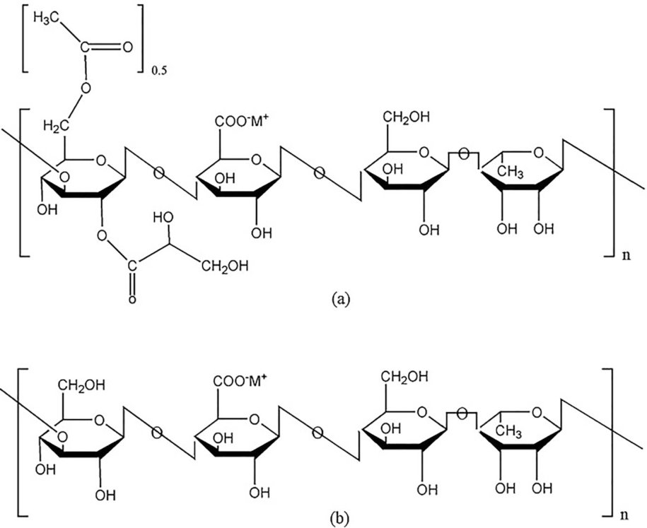
图 1 GG在(a)天然乙酰化和(b)脱乙酰化形式下的分子结构。（经许可改编自 Prajapati et al. (2013)。版权所有 2013，Elsevier）Fig. 1 Molecular structure of GG in (a) native acetylated and (b ) deacetylated forms. (Adapted with permission from Prajapati et al. (2013). Copyright 2013, Elsevier)
在影响GG生产的最重要的变量中，培养基配方以及碳源和氮源的性质会强烈影响所得发酵液的性能。其他关键参数包括pH、搅拌速度、氧气可用性和温度 (Banik and Santhiagu 2006; Banik et al. 2007; Stevens et al. 2016)。GG最初由Kelco公司（美国圣地亚哥）于1978年通过一项旨在发现具有理想机械性能的多糖的大规模筛选计划所鉴定 (Morris et al. 2012)。其最早的应用主要在食品和化妆品行业，用作多功能凝胶剂、稳定剂和悬浮剂。GG随后获得美国食品药品监督管理局（FDA）和欧盟的批准，编号为E418。此后，多种商业制剂相继问世，包括Gelzan®、KELCOGEL®、Gel-Gro®、GELRITE®、Phytagel®和TayaGel®，用于临床和非临床领域 (Prajapati et al. 2013)。该多糖以不同的乙酰化状态存在：天然乙酰化形式称为高酰基结冷胶（high-acyl gellan gum，HAGG），脱乙酰形式称为低酰基结冷胶（low-acyl gellan gum，LAGG），后者在商业产品中最为常见。GG的典型分子量约为500 kDa (Fialho et al. 2008)。在HAGG中，酰基和甘油基取代基连接在聚合物链的同一个葡萄糖残基上，每个重复单元约含一个L-甘油基和0.5个O-乙酰基 (Morris et al. 2012)。LAGG是通过在高温下进行碱处理而制得的，该处理可去除这些取代基。这种脱乙酰化过程使凝胶从柔软、有弹性且热可逆的状态转变为更坚硬、更脆且热稳定性更好的水凝胶网络 (Prajapati et al. 2013)。通过混合不同比例的HAGG和LAGG，可以精细调节材料的最终流变行为。GG能够在极低浓度下形成凝胶，特别是在特定阳离子存在的情况下，加之其可生物降解性、生物相容性、无毒性和高保水能力，使其成为研究最广泛的天然多糖之一 (Osmałek et al. 2014)。这些特性加上其来源广泛和生产成本低廉，促进了其在多个领域的应用。在生物医学领域，GG因其作为包封剂的有效性而被研究用作鼻部、眼部和结肠靶向给药的递送载体 (Osmałek et al. 2014)。在生物技术领域，它还作为琼脂的替代品在微生物培养基中受到关注 (Prajapati et al. 2013)。近年来，GG在组织工程（tissue engineering，TE）和再生医学的可注射系统和支架方法中的应用日益受到关注。其主要优势之一是能够在相对温和的条件下进行加工，从而实现活细胞在水凝胶基质中的包封 (Stevens et al. 2016)。多项研究提出GG是一种有前景的软骨组织工程材料，证明了其与软骨细胞、骨髓来源细胞、关节软骨细胞、椎间盘细胞或脂肪来源干细胞复合时的生物相容性和无细胞毒性 (Smith et al. 2007; Oliveira et al. 2009, 2010a, b, c; Silva-Correia et al. 2011a)。GG水凝胶在结构上与细胞外基质（extracellular matrix，ECM）相似，且具有类组织的弹性模量，进一步支持了其在软骨修复应用中的适用性。此外，改性GG体系的可注射性和原位凝胶化能力已被用于构建微创的载细胞结构物。除软组织再生外，GG及其衍生物还被研究用于骨组织工程应用 (Douglas et al. 2014a; Gantar et al. 2014)。近年来，对这种生物聚合物在组织工程与再生医学（tissue engineering and regenerative medicine，TERM）应用中的兴趣显著增加，这主要是因为其性能可以通过化学改性、功能化或与其他聚合物共混而轻松调节，从而更好地模拟天然组织的特定特征 (Ferris et al. 2013)。
结构与性能
GG的独特特性及其形成热可逆凝胶（thermoreversible gels）的能力与其凝胶化机制密切相关。凝胶形成的一个关键步骤是聚合物链由无规线团（random coil）向双螺旋结构的构象转变，该转变在温度降低时被触发（图2）（Morris et al. 2012; Miyoshi et al. 1996）。完成这一转变后，螺旋链在特定的连接点（junction points）处相互缔合，形成三维网络。即使在温度高于
图 2 GG在水溶液中凝胶化机制示意图：(1) 温度诱导的无规线团向双螺旋构象转变，随后发生螺旋聚集；(2) 通过带负电荷的GG链与多价阳离子（蓝色圆圈）之间的相互作用进行离子交联；以及(3) 通过聚合物链之间的共价键进行化学交联，形成更稳定的水凝胶网络（绿色线条）。（经许可转载自Bacelar et al. (2016)。版权所有2016，Royal Society of Chemistry）Fig. 2 Schematic illustration of the gelation mechanisms of GG in aqueous solutions: (1) temperature-induced transition from random coil to double-helix conformation followed by helix aggregation; (2) ionic crosslinking through interactions between negatively charg ed GG chains and multivalent cations (blue circles); and (3) chemical crosslinking via covalent bonds between polymer chains, forming more stable hydrogel networks (green lines). (Reproduced with permission from Bacelar et al. (2016). Copyright 2016, Royal Society of Chemistry)
线团-螺旋转变温度（Tm）时，仍可通过分子内和分子间氢键介导的链聚集实现螺旋结构的稳定。这些相互作用发生在一条链中4位连接的葡萄糖基单元的羟甲基与相邻链中的羧基之间，从而在凝胶化与熔化之间产生温度滞后（temperature hysteresis）现象（Morris et al. 2012）。GG的固态螺旋构象最初由Upstill及其同事（Upstill et al. 1986）通过对多晶及高度取向的锂型结冷胶纤维进行X射线衍射分析而提出。Chandrasekaran（1997）的后续研究表明，在固态形式下，GG采取一种反平行排列，由同轴的左手双螺旋组成，并以半错列（half-staggered）的三重结构组织，螺距为5.64 nm。对于天然HAGG，X射线衍射研究表明，螺旋结构通过涉及甘油酸基团（glycerate groups）的链间相互作用得以稳定，而乙酰基取代基则沿螺旋外表面分布。这些酰基之间的静电排斥阻碍了端对端的分子间缔合，降低了凝胶网络的均匀性和连续性，这解释了HAGG凝胶所表现出的更软、更具弹性的行为。凝胶形成过程中发生的结构转变已通过一系列分析技术进行了研究，包括光散射、核磁共振（NMR）、小角X射线散射、圆二色性（CD）、差示扫描量热法（DSC）以及流变学分析（Ogawa et al. 2005）。这些研究表明，GG的凝胶化受多种因素影响，例如聚合物的浓度和分子量、所存在阳离子的类型和浓度，以及溶液的pH值（Morris et al. 2012）。
GG（结冷胶，gellan gum）的凝胶化是一种离子型过程（ionotropic process），其中阳离子在水凝胶网络的形成中起着关键作用。二价阳离子（divalent cation）尤为有效，可形成更强、热稳定性更高的凝胶。这种行为归因于相邻聚合物链上葡萄糖醛酸（glucuronic acid）残基的成对羧酸根（carboxylate）基团之间形成的直接离子桥。相比之下，一价阳离子（monovalent cation）主要通过屏蔽带负电荷的羧酸根基团之间的静电斥力来促进链聚集（Ferris et al. 2013）。阳离子诱导链聚集的能力随其离子尺寸的增大而增强（Horinaka et al. 2004）。与低酰基（low-acyl）形式相比，HAGG 在显著更高的温度下才呈现螺旋结构，且由此产生的性质对离子浓度的敏感性较低。尽管阳离子的存在同样会提高两种形式的凝胶化温度，但 Huang et al. (2004) 报道，各种一价和二价离子的作用并无实质性差异。通过利用 GG 的离子驱动凝胶化，Smith 及其同事（Smith et al. 2007）以标准细胞培养基作为离子来源，开发出可自支撑的 GG 水凝胶，凸显了其在包封活细胞方面的潜力。此外，Horinaka et al. (2004) 利用旋光（optical rotation）和荧光各向异性（fluorescence anisotropy）测量研究了 pH 对 GG 螺旋构象的影响。他们的研究结果表明，酸性条件会增强结冷胶链的分子间缔合，这可能是由于静电斥力降低以及聚合物在溶液中阴离子特性的改变所致。在盐存在下，GG 表现出更高的凝胶化温度和熔融温度，以及网络内更多的连接区（junction zone）。因此，水凝胶的热稳定性更强，并表现出更优的力学性能，包括更高的刚度和弹性模量（elastic modulus）(Picone and Cunha 2011)。Ogawa et al. (2006) 采用光散射（light scattering）、圆二色性（CD）、黏度测量和差示扫描量热法（DSC）相结合的方法，考察了分子量对无规线团-螺旋转变（coil-to-helix transition）的影响。他们的结果表明，较高的摩尔质量会加速无规线团-螺旋转变过程。纯化方法对凝胶行为和力学性能也有显著影响，因为商品 GG 常含有残留的二价阳离子，例如 Ca²⁺ 和 Mg²⁺，已知这些离子会与聚合物的结合位点发生强烈相互作用（Doner 1997）。Kirchmajer et al. (2014) 将纯化的钠型结冷胶（sodium gellan gum，Na-GG）与商品制剂进行了比较，发现无机离子的存在会显著影响溶解行为、凝胶化温度和流变性能。纯化的 Na-GG 在比其商品对应品更低的温度下即可完全溶解，并且在所测试的所有离子交联条件下均表现出更低的凝胶转变温度。然而，当用钙交联时，两种形式均表现出更高的机械强度。
GG功能化策略
组织工程（tissue engineering, TE）策略的有效性在很大程度上依赖于高性能生物材料的使用，这类材料须具备足够的机械强度和结构完整性，以支持细胞的贴附、增殖和分化，同时又能逐渐降解，从而使天然功能性组织得以形成。在复杂组织再生的情况下，往往需要通过组合多种聚合物构建的杂化体系来满足这些苛刻的要求 (Stevens et al. 2016)。尽管结冷胶（gellan gum, GG）作为组织工程生物材料已展现出良好前景，但其天然形式存在若干必须解决的缺陷。这些缺陷包括机械性能差、在生理条件下长期稳定性有限、较高的凝胶化温度阻碍细胞的直接包封，以及缺乏供细胞贴附的特异性结合位点。为克服这些局限并提升GG水凝胶的物理化学与生物学性能，研究者们探索了多种改性策略，其中最主要的是化学功能化、通过互穿网络进行的物理改性，以及与其他聚合物或无机组分的共混 (Stevens et al. 2016; Bacelar et al. 2016)。GG之所以特别易于改性，是因为其重复单元中存在游离羧基和羟基，可用于合成一系列性质与天然聚合物不同的衍生物。与离子交联相比，共价化学改性可提供更优的结构稳定性，因为在生理条件下离子的扩散会随时间推移削弱水凝胶网络。因此，大量研究聚焦于对GG主链进行化学改性，以提高其在组织工程应用中的适用性。例如，Gong及其同事 (Gong et al. 2009) 采用高碘酸钠氧化继以Smith降解的受控链断裂过程，降低了GG的凝胶化温度。该方法的原理在于：降低分子量会干扰分子链的排列与聚集，从而延缓凝胶的形成。利用这一方法，作者们开发了一种用于软骨再生的新型可注射水凝胶，其凝胶化温度降低至约37.5 ˚C，与人表皮成纤维细胞复合使用时表现出更优的长期性能。类似地，Tang等 (2012) 证实氧化会破坏聚合物内部的部分交联位点，导致凝胶化行为发生改变。在他们的研究中，氧化GG与羧甲基（carboxymethyl, CM）壳聚糖组合，并通过钙离子和席夫碱（Schiff-base）反应交联，形成了一种机械强度更高（压缩模量为278 kPa）且凝胶化温度接近生理条件的水凝胶。氧化程度和CM-壳聚糖浓度的调节也会影响溶胀能力和降解速率。此外，与氧化及非氧化形式相比，基于CM-壳聚糖的水凝胶在包封软骨细胞时表现出更优的生物学性能，这可能是由于基质内游离醛基的减少所致。另一种被广泛探索的改性方法是对GG进行甲基丙烯酸化（methacrylation），即引入可光交联的基团，并通过光诱导聚合实现凝胶形成。该策略极大地拓展了GG在组织工程用可注射及原位成型水凝胶方面的应用潜力 (Nguyen and West 2002; Silva-Correia et al. 2011a, b)。多项研究表明，甲基丙烯酸化程度可用于精确调控GG基水凝胶的机械性能 (Nguyen and West 2002; Coutinho et al. 2010)。Silva-Correia及其同事研究了甲基丙烯酸化LAGG在椎间盘（intervertebral disc, IVD）再生中的应用 (Silva-Correia et al. 2011a)。通过使GG与甲基丙烯酸缩水甘油酯反应，他们获得了一种机械性能增强的材料，并开发了用于髓核（nucleus pulposus）修复的可注射平台。他们制备了离子交联和光交联两种形式的甲基丙烯酸化GG（GGMA），其中光交联制剂表现出更优的机械稳定性和更可控的降解。生物相容性评估显示，GGMA对L929成纤维细胞无毒，支持其应用于基于细胞的再生疗法 (Silva-Correia et al. 2013; Li et al. 2022)。Coutinho等 (2010) 还通过使用甲基丙烯酸酐的甲基丙烯酸化处理，改进了高酰基和低酰基GG的物理与机械特性。通过改变功能化程度和交联方法，他们证明水凝胶的刚度与降解速率可实现精细调节。其结果还证实，改性水凝胶能够安全地包封NIH-3T3成纤维细胞，凸显了其在多种组织工程场景中的潜在多功能性。在一项相关研究中，Pacelli等 (2015) 开发了一种替代性的GG甲基丙烯酸化合成路线，以制备可注射且光活化的水凝胶体系。通过用无水二甲基亚砜替代水性反应介质，并使用4-二甲氨基吡啶作为催化剂，他们实现了对反应更好的控制，并减少了对大量甲基丙烯酸酐的需求。利用FTIR和¹H NMR进行的结构表征证实了改性获得成功，流变学分析表明，当GGMA与聚乙二醇二甲基丙烯酸酯（polyethylene glycol dimethacrylate, PEG-DMA）复合时，机械强度得到提升。水凝胶的最终强度可通过改变PEG-DMA组分的分子量和浓度来调节。该体系表现出可注射性、原位光交联能力以及控制舒林酸（sulindac）释放的能力，同时对人WI-38成纤维细胞保持无细胞毒性。同一研究小组还通过将laponite® XLG纳米黏土引入光交联GGMA网络中，制备了一种纳米复合水凝胶 (Pacelli et al. 2016)。这种纳米黏土既作为机械增强剂，又充当刚性聚合物链之间的物理连接体。这一方法获得了更强、更稳定的水凝胶，即使经过热处理后仍能保持结构完整性，使其适用于需要灭菌的应用，如伤口敷料。此外，laponite的存在改变了材料的溶胀和扩散行为，并在最初数小时内减缓了氧氟沙星（ofloxacin）的释放。基于中性红检测的细胞毒性试验证实，含1% (w/v) laponite的GGMA与人成纤维细胞（WI-38）细胞系具有生物相容性。出于明确的临床目的，Lee及其同事 (Lee et al. 2012) 开发了一种具有抗粘连性能的光交联GG基膜。在该研究中，GG以相对聚合物羧基5:1的摩尔比用肉桂基溴进行功能化。NMR和FTIR分析证实了接枝成功；体外和体内实验均表明，所得膜能有效防止术后组织粘连，提示其具有显著的医学应用潜力。在另一项工作中，Du等 (2012) 通过巯基化（thiolation）在GG中引入双键，制备出一种能够同时进行化学和物理原位交联的新型可注射水凝胶。借助碳二亚胺化学，半胱氨酸在温和条件下被接枝到GG主链上，并通过二硫键的形成实现交联。结构、CD和流变学分析表明，尽管GG的天然三维结构得以保持，但改性聚合物在生理条件下表现出较低的相转变温度。重要的是，研究发现该巯基化衍生物对ARPE-19细胞无毒，进一步支持了其在生物医学与生物工程应用中的潜在价值。采用与先前报道方法相似的途径，O. Novac及其同事 (Novac et al. 2013) 开发了一种新的GG衍生物，称为N-(2-氨乙基)-2-乙酰氨基结冷胶（GCM-EDA）。该材料通过两步改性过程制备。首先，GG中β-D-葡萄糖单元的伯羟基通过亲核取代被羧甲基化。随后，以1-乙基-3-(3-二甲基氨基丙基)碳二亚胺（EDAC）为活化剂，与N-(2-氨乙基)氨基甲酸叔丁酯（N-Boc-EDA）进行偶联反应。最后一步是用三氟乙酸脱除保护基团。光谱分析证实了GCM-EDA的成功合成，而流变学测试表明，羧甲基化条件的碱度与所得改性聚合物的动态黏度之间存在明确关系。通过使用bEnd3细胞的MTT检测进一步证实了其生物相容性，揭示了这种GG衍生物在中枢神经系统药物递送以及脑血管肿瘤相关应用方面的潜力。包括GG在内的许多多糖基水凝胶存在一个众所周知的局限，即其支持锚定依赖性细胞（anchorage-dependent cells, ADCs）贴附的能力较差，这限制了其作为组织工程中细胞递送平台的实用性。这一问题主要归因于GG高度亲水且带负电荷的性质，这种性质倾向于排斥细胞。为应对这一挑战，人们开发了大量策略来增强细胞贴附、增殖和分化，主要是通过将蛋白质或生物活性肽序列引入GG结构中 (Bacelar et al. 2016; Muthukumar et al. 2019)。Wang等 (2008) 提出了一种方法，即将GG微球用明胶共价包覆，为人ADCs提供细胞结合基序。这些微球以Phytagel®为原料，采用油包水乳液技术制备，随后经过一系列氧化-还原和交联反应以控制粒径和可注射性。明胶接枝后，这些微球作为人皮肤成纤维细胞（human dermal fibroblasts, HDFs）和人胎儿成骨细胞（hFOBs）的基质进行了测试。显微镜分析显示，细胞在微球表面贴附牢固且增殖迅速，并观察到成骨分化的早期标志物，如碱性磷酸酶（alkaline phosphatase, ALP）的表达。在一种相关策略中，Ferris等 (2015) 用精氨酸-甘氨酸-天冬氨酸（arginine-glycine-aspartic acid, RGD）肽序列对纯化的GG进行功能化，该序列已知可促进整合素介导的黏附。偶联效率采用氯胺-T法放射性标记进行定量，结合率达到约40%。流变学评估显示，RGD改性水凝胶的机械强度有所降低。这一效应归因于可用于离子相互作用的羧酸根基团减少，以及所连接肽链体积庞大造成的空间位阻，后者干扰了链间缔合。RGD-GG水凝胶的生物学性能采用两种细胞系进行测试：锚定依赖性小鼠骨骼肌C2C12细胞系和能够贴壁与悬浮生长的大鼠嗜铬细胞瘤PC12细胞系。两种细胞在MTS检测中均表现出代谢活性提高，并且在培养于水凝胶表面或包封于水凝胶内部时均能增殖。然而，只有C2C12细胞在表面接种和包封两种条件下均表现出分化。除化学功能化外，人们还探索了在分子和宏观两个层面对GG进行物理改性的策略，以调整其性能从而满足组织工程需求。Silva及其合作者 (Da Silva et al. 2014) 提出了一种新颖的方法，即制备在本质上更利于细胞贴附的海绵状GG水凝胶，从而避免复杂且昂贵的生物功能化。其方法涉及系统地改变加工参数，如冷冻前的稳定时间、冷冻持续时间和冷冻温度（使用−196 ˚C的液氮，或−20 ˚C和−80 ˚C的常规冷冻设备）。经过冷冻干燥及随后的再水化，获得了多孔的海绵状结构。形态学分析和流变学测试表明，这些加工参数的变化对孔径、孔壁厚度和压缩模量有显著影响。冷冻过程中冰晶的形成引起了显著的微结构变化，包括更厚的孔壁和更大的孔。结合整体水含量的降低，这种结构以细胞类型依赖的方式改善了水凝胶的细胞贴附性能。此外，增强的机械性能，加之以干燥中间形式进行即用型储存的潜力，使这些海绵状GG水凝胶成为各类组织工程与再生医学（tissue engineering and regenerative medicine, TERM）应用的有前景的候选材料，尤其是作为软组织替代物。这些改性策略显著拓宽了GG基生物材料的适用范围，使其能够应用于日益复杂的再生体系。特别是，这些可调特性促进了针对复合组织（如骨软骨（osteochondral）单元）修复的支架的开发，在此类组织中，软骨与软骨下骨（subchondral bone）必须同时再生。
用于骨软骨（osteochondral）组织修复的结冷胶
骨软骨（osteochondral, OC）缺损常与骨关节炎等关节疾病相关，涉及关节软骨及其下方软骨下骨（subchondral bone）的损伤 (Yan et al. 2015)。尽管目前已有多种临床干预手段可用于治疗此类损伤——包括微骨折技术（microfracture）、自体软骨细胞移植（autologous chondrocyte implantation）和镶嵌成形术（mosaicplasty）——但修复组织的长期功能性和耐久性尚无法得到可靠保证 (Oliveira et al. 2021)。鉴于关节疾病的高患病率及其对患者生活质量的深远影响，亟需开发更有效且更持久的治疗策略。尽管骨软骨修复技术近年来取得了进展，但重现关节软骨和骨软骨界面高度复杂的组织结构与生化组成仍是一项重大挑战。软骨与骨在愈合潜力和力学行为上的显著差异进一步增加了再生修复的难度 (Yang et al. 2017; Tamaddon et al. 2020)。此外，这两种组织之间特化的过渡区在维持结构完整性和功能整合方面发挥着关键作用，因而成为再生策略设计中的重点。组织工程与再生医学（tissue engineering and regenerative medicine, TERM）已成为重建骨软骨单元（osteochondral unit）分级结构的颇具前景的策略 (Oliveira et al. 2021)。通过将仿生和生物活性支架与生长因子和/或干细胞相结合，研究者们尝试采用多种设计来重建这一复杂结构，从单相支架到更为复杂的双层、多相或具有连续界面的梯度体系 (Yang et al. 2017; Yousefi et al. 2015)。理想情况下，有效的骨软骨支架应具有两个或多个组成、孔径、孔隙率和力学性能各不相同的区域，从而能够满足并支持骨软骨组织中不同细胞类型的特定需求。类软骨层与类骨层之间的界面区应提供渐进过渡，以最大限度地减少分层，并促进整个构建体中高效的载荷传递。此外，支架在植入后必须保持其结构完整性，并以与新组织形成相匹配的速率降解。在再生过程中，支架还应起到屏障作用，防止滑液渗入软骨下骨，并抑制软骨区域内不期望的血管化 (Correia et al. 2014)。因此，选择一种具有生物相容性、无免疫原性、可生物降解且力学性能稳健的材料，是骨软骨支架开发中的基础性步骤。目前，用于骨软骨移植物的材料包括天然与合成聚合物、陶瓷和生物活性玻璃等无机化合物，甚至还包括金属材料。然而，尚无任何单一材料能够完全复制天然骨软骨结构的所有特征。因此，通常采用通过共混、共聚或掺入生物活性陶瓷等无机填料的方式对材料进行组合，以增强力学性能、促进与宿主组织的整合，并引导细胞行为向特定的分化表型发展。在此背景下，结冷胶（gellan gum, GG）因其结构与细胞外基质（extracellular matrix, ECM）组分的相似性而成为骨软骨组织工程中一种有前景的候选材料。其形成水合三维网络的能力，加之其生物相容性和可生物降解性，使其成为骨软骨修复策略中一种具有吸引力且适应性强的材料。多项研究表明，经化学修饰的GG水凝胶可表现出更低的凝胶化温度、更高的机械强度和更优的生物学性能，而这些均是软骨及骨软骨再生应用所必需的特性 (Yang et al. 2017)。此外，GG水凝胶可用生物活性分子进行功能化，从而实现对影响干细胞增殖、形态和分化的生长因子的负载与控释。另外，该材料还与包括三维（3D）打印在内的先进制造技术相兼容，能够生产具有定制形状、结构和内部构造的患者特异性构建体 (Costa et al. 2018)。
用于软骨再生的支架（scaffold）
由于关节软骨（articular cartilage）等承重组织在关节生物力学中发挥着至关重要的作用，且软骨退变极为常见并给医疗系统带来高昂负担，因此迫切需要超越传统自体或异体软骨移植的替代性治疗方案。组织工程（TE）已成为治疗软骨损伤最有前景的策略之一，其通过支架引导修复与再生。这些方法通常涉及一种三维模板，该模板填充缺损部位，在信号分子存在下支持细胞黏附与分化，并逐渐降解以允许新组织形成。然而，由于软骨的无血管特性，其再生能力受到严重限制（Datta et al. 2017）。GG因主链中含葡萄糖醛酸而与天然糖胺聚糖（glycosaminoglycans）在结构上具有相似性，加之其弹性模量与软骨组织相近，这些特性促使其在软骨组织工程领域得到研究。多项研究已证明，基于GG的水凝胶能够成功支持多种细胞类型的细胞存活。Oliveira及其同事（Oliveira et al. 2010b）是最早提出将GG作为软骨再生适宜生物材料的研究者之一。在其初期工作中，GG被加工成多种形式，如膜、纤维、圆盘、颗粒和多孔支架，并证明了其能够包封软骨细胞、维持细胞活力并在2周培养期内促进细胞增殖。在后续研究中，同一研究团队开发了一种优化的可注射GG制剂，能够在原位凝胶化（Oliveira et al. 2010c）。流变学分析证实了其可注射性和凝胶化后的结构稳定性。该体系的生物学性能通过体外和体内实验进行了评估。包封于GG圆盘中的人关节软骨细胞培养长达56天，同时在Balb/c小鼠中进行了为期21天的异位植入。该水凝胶未引发免疫反应，并与周围组织表现出良好的整合。重要的是，其支持了细胞活力和透明软骨样细胞外基质（ECM）的产生。为进一步考察其再生能力，Oliveira等（2010a）将该可注射载细胞GG水凝胶应用于兔全层软骨缺损模型，为期8周。研究比较了不同的自体细胞群，包括未分化的脂肪干细胞（ASC）、经软骨诱导分化的ASC（ASC + GF）和关节软骨细胞（AC），同时设置了仅GG组和未处理缺损组作为对照。与对照相比，含细胞的构建体表现出更优的组织整合和再生效果。值得注意的是，经TGF-β1和BMP-2补充的软骨诱导ASC组产生了质量最佳的软骨样组织，这一点已通过基因表达分析得到证实。
在另一项研究中，Fan等人（2010）假设滑膜来源间充质干细胞（synovium-derived mesenchymal stem cells，SMSCs）具有更高的软骨形成潜能，同样提出了一种基于细胞的再生策略，采用可注射的改性结兰胶（gellan gum，GG）水凝胶。构建体在软骨形成条件下培养长达42天，随后进行基因和蛋白表达分析，同时采用WST法评估细胞活力。结果表明，SMSCs在三维环境中表现出强烈的软骨形成分化，尤其是在TGF-β1存在的情况下，这体现在软骨特异性基因（如II型胶原、聚集蛋白聚糖（aggrecan）、双糖链蛋白聚糖（biglycan）和SOX9）表达上调以及软骨细胞外基质（extracellular matrix，ECM）组分的大量沉积。为应对承重组织的高机械需求，Shin等人（2012）开发了一种双网络水凝胶，由刚性GGMA网络与更具弹性的甲基丙烯酰化明胶（gelatin methacrylamide，GelMA）网络相互贯穿构成。这种两步交联策略使机械强度相比任一单一网络均显著增强。通过增加第二网络（更具延展性的网络）的比例，获得了在压缩强度、模量和失效性能方面最优的配方。此外，还需要适宜的GelMA甲基丙烯酰化程度，以平衡能量耗散与网络形成。这些双网络水凝胶在制备过程中成功支持了NIH-3T3成纤维细胞的包封，凸显了其作为承重应用（如软骨再生）支架的生物相容性和机械适宜性。着眼于患者特异性解决方案，Kesti等人（2015）通过将纯化GG与海藻酸钠（alginate）混合并掺入BioCartilage（Arthrex）——一种含有天然软骨ECM颗粒的临床商业化产品——开发了一种新型生物墨水（bioink）。该生物墨水按6% GG与4%海藻酸钠50:50的比例配制，通过挤出打印制备全尺寸移植物，随后在培养基中用氯化锶进行离子交联。流变学分析显示出明显的剪切变稀行为，这对成功的生物打印至关重要，并使其能够在有利于细胞存活的低压下进行挤出。尽管打印构建体的拉伸模量低于天然软骨，但其表现出相似的弹性行为。软骨细胞在这些构建体中体外培养8周，显示出增殖和基质沉积的增强，尤其是在BioCartilage和TGF-β3存在时，这一点已通过组织学和活力检测得到证实。该研究提出了一种增强生物墨水生物活性的有前景的方法，使构建体的开发更接近天然组织的特性。此类策略可能代表通过支架引导再生方法生成功能性组织替代物的宝贵途径。基于GG可改善GelMA黏度和凝胶化行为的早期证据，Melchels及其同事（Melchels et al. 2014; Mouser et al. 2016）开发了一种由GelMA和GG组成的紫外交联生物墨水，用于软骨生物打印。力学和流变学测试表明，GG的引入通过赋予屈服应力行为而提高了可打印性，并增加了打印构建体的机械刚度。原代软骨细胞包封实验表明，所有测试配方均能成功支持软骨形成和软骨基质沉积，其中10% GelMA/0.5% GG混合配方产生了最有前景的结果。
在另一项研究中，鉴于机械稳定性和降解行为对长期软骨修复至关重要，Yu等 (2017) 考察了以表面积与质量比表示的孔隙率对打印GG（结兰胶，gellan gum）支架的影响。在模拟体液（simulated body fluid）中孵育时，这些支架因溶液中存在的二价离子交联增加而随时间变得更硬。这一效应在高孔隙率结构中更为显著，导致压缩强度提高，但同时也加快了降解速度，这可能与软骨再生缓慢的过程不相容。该研究强调了在GG基构建体中优化孔隙率的重要性，以在软骨修复应用中平衡机械性能与长期结构稳定性。最近，生物制造（biofabrication）技术的进步进一步拓展了GG基体系在软骨再生方面的潜力。多项研究聚焦于优化含GG的生物墨水（bioink），以改善其可打印性、结构保真度和长期成软骨性能。例如，Bonifacio等 (2022) 开发了一种具有改善流变性能和剪切变稀行为的可生物打印GG/木质素复合水凝胶，实现了基于挤出的细胞负载构建体的制造，并在体外支持成软骨活性。这些进展凸显了GG作为流变调节剂和结构组分的多功能性，它能够在稳定复杂打印构建体的同时，为软骨细胞和干细胞维持支持性微环境。最后，近期的研究已使GG水凝胶超越其作为被动细胞载体的传统角色，将其转变为能够在骨软骨（osteochondral）环境中引导细胞行为的生物活性体系。He等 (2023) 开发了一种负载脂肪来源干细胞（adipose-derived stem cells, ADSCs）的可注射双糖链蛋白聚糖（decorin）-GG水凝胶，其中GG提供了支持性的原位凝胶化基质，而decorin则贡献了类似细胞外基质（ECM）和免疫调节的功能。该体系在炎症条件下调节ADSCs的自噬（autophagy），促进抗炎细胞表型，并在关节炎小鼠模型中显著保护软骨并减轻炎症，凸显了其在关节相关疾病治疗中的潜力。与此同时，其他近期研究还探索了通过化学功能化和复合设计进一步提升GG基软骨支架生物活性和机械韧性的策略 (Hashemi-Afzal et al. 2026; Busto et al. 2025)。例如，掺入ECM来源分子、生长因子结合结构域或纳米颗粒增强相已被证明可在保持GG水凝胶良好粘弹性能的同时，改善成软骨分化和基质沉积。这些方法旨在更好地复制天然软骨微环境中存在的生化和机械信号。总体而言，用于软骨组织工程（tissue engineering, TE）的GG基生物材料的发展，清晰地体现了从简单的细胞包封水凝胶向能够提供结构支持、可控生物活性并与先进生物制造技术兼容的多功能支架的演进。这些进展使GG成为骨软骨构建体中软骨组分的极具前景的平台，尤其是与旨在模拟下方骨组织的互补材料相结合时。
用于骨再生的支架
与自我修复能力极为有限的软骨不同，骨组织因其固有的再生潜能，一直是组织工程与再生医学（tissue engineering and regenerative medicine, TERM）领域中被研究得最为深入的组织之一。最初，水凝胶（hydrogel）主要用于软组织应用的探索，但近年的进展表明，这类材料经过设计同样可用于硬组织再生。与传统的非溶胀性聚合物和陶瓷生物材料相比，水凝胶具有多项优势，包括高度水化的结构、生物相容性、生物可降解性和可注射性。这些特性推动了水凝胶在骨组织工程（TE）中应用的日益增多。然而，大多数惰性水凝胶的一个主要缺点是支持矿化（mineralization）的能力较差，这限制了其作为骨替代物的应用 (Gkioni et al. 2010)。为解决这一问题，研究日益聚焦于开发受骨分级结构启发的纳米复合材料（nanocomposite）。这类体系通常由可生物降解的聚合物基体与可生物吸收（bioresorbable）的无机或陶瓷填料复合增强而成，所形成的支架（scaffold）既能提供机械支撑，又能提供促进成骨（osteogenesis）的生物活性信号 (Pina et al. 2015)。在此背景下，结冷胶（gellan gum, GG）作为一种成本较低且易于与钙离子交联的多糖而受到关注，使其在骨组织工程策略中尤为具有吸引力。Douglas 及其同事 (Douglas et al. 2014a, 2016, 2017a, b) 对用于骨再生的酶促矿化 GG 基质开展了大量研究。对水凝胶进行矿化已被证明是提高其刚度并增强骨诱导（osteoinductive）潜能的有效方法。在其早期的一项研究中，参与天然骨矿化的酶——碱性磷酸酶（ALP）被引入 GG 水凝胶，随后将其暴露于磷酸钙（CaP）源中。同时评估了以促进矿物沉积和细胞黏附能力著称的聚多巴胺（PDA）的影响 (Mehwish et al. 2022)。结果表明，在甘油磷酸钙溶液中孵育时，ALP 促进了类磷灰石矿物的形成并提高了水凝胶的刚度。此外，PDA 进一步促进了矿化，并支持成骨细胞的黏附与增殖。在随后的研究中，该团队开发了一种兼具抗菌性能和增强的细胞黏附性能的矿化功能化 GG 复合材料 (Douglas et al. 2017b)。在 ALP 介导的矿化之后，将锌引入矿化介质。选择锌的原因在于，已有文献证明锌能够刺激细胞黏附、支持成骨分化，并具有抗菌和促血管生成作用，这些均有利于骨再生 (Mouriño et al. 2012; Yang et al. 2012; Thian et al. 2013)。锌的存在使材料获得了抗菌活性，同时支持 MC3T3-E1 成骨样细胞的黏附与增殖。最有前景的配方含有等摩尔浓度的钙和锌 (0.025:0.025 mol/dm³)。最近，Douglas 等 (2017a) 报道了在含尿素及不同钙镁比的溶液中通过脲酶介导的矿化制备 GG-CaCO₃/Mg 复合材料。扫描电子显微镜（SEM）分析表明，形成的矿物相取决于 Ca/Mg 比，随镁浓度的升高，矿物相由方解石（calcite）转变为含镁方解石（magnesian calcite）和水菱镁矿（hydromagnesite）。较高的镁含量伴随着较低的结晶度和较低的抗压强度。此外，富含水菱镁矿的复合材料对 MC3T3-E1 细胞表现出细胞毒性，而 GG-方解石复合材料则表现出更好的机械增强效果，并支持成骨样细胞的黏附与生长。除酶促矿化外，该研究团队还提出了一种专为骨再生设计的可注射自凝胶化 GG 复合材料 (Douglas et al. 2014b)。在该方法中，GG 采用生物玻璃（bioglass）颗粒增强，以促进 CaP 矿化并改善生物学性能，同时还旨在赋予其抗菌活性。研究考察了三种不同的生物玻璃配方：富钙型、缺钙型以及模拟知名 45S5 生物玻璃组成的一种。生物玻璃的掺入增强了矿物沉积，并显著提高了水凝胶的压缩模量，在钙含量较高或较低的配方中尤为显著。此外，含有类 45S5 组成的生物墨水（bioink）促进了大鼠间充质干细胞（rMSCs）的分化。在另一项研究中，GG 水凝胶用 α-磷酸三钙（α-TCP）增强 (Douglas et al. 2018)。在该体系中，α-TCP 具有双重功能：一方面释放钙离子引发 GG 网络的离子交联，另一方面通过水解促进缺钙羟基磷灰石（CDHA）的形成。所得复合材料在约 30 min 内凝胶化，并形成了 CDHA 晶体，但其在基质中的分布并不均匀。这些结果表明该复合材料有望成为传统 α-TCP 骨水泥的替代品，但仍需进一步的生物学测试以验证其是否适用于临床。采用类似的概念，Gantar 等 (2014) 用生物活性玻璃（BAG）对海绵状 GG 水凝胶进行了增强。BAG 的加入改善了微结构组织并提高了力学性能，在填料浓度较高时尤为明显。浸入模拟体液（simulated body fluid）后，这些复合材料在表面形成了磷灰石层，表明其具有生物活性。使用人脂肪来源干细胞（hASCs）进行的短期细胞培养实验显示，72 小时后纯 GG 水凝胶与 GG-BAG 水凝胶在细胞黏附或活性方面均无显著差异。因此，需要开展更长期的研究，以更好地评估 BAG 对成骨分化的影响，并进一步优化其力学性能以满足承重应用的需求。Manda 等 (2018) 制备了海绵状 GG-HAp 复合材料，以更好地模拟天然骨组织的有机和无机组分。这些增强水凝胶表现出改善的力学行为，储能模量达到 70–80 kPa，且 HAp 在整个聚合物网络中分布均匀。显微计算机断层扫描（micro-CT）分析显示其具有高孔隙率和良好的连通性，这些特性对于细胞浸润和组织生长至关重要。采用 CaCl₂ 交联后，这些材料的生物活性进一步增强，并且在成骨培养条件下，ASCs 在支架内表现出良好的黏附与铺展。
生物打印（bioprinting）技术日益广泛的应用为骨软骨（osteochondral）组织工程（TE）领域开辟了新的可能。这些方法为精确再现天然骨软骨组织中复杂的细胞异质性和各向异性细胞外基质（ECM）组织结构提供了强有力的手段 (Costa et al. 2018; Lu et al. 2025)。此外，生物打印能够制造负载细胞的水凝胶（即生物墨水，bioinks），可在温和且接近生理的条件下包封生长因子和遗传物质等敏感的生物组分。这为细胞的存活、增殖、迁移和生物合成活性提供了支持环境，而这些活性对组织再生至关重要 (Datta et al. 2017)。不仅如此，三维打印技术还可借助磁共振成像（MRI）等医学影像工具并结合逆向工程策略，制造出与骨软骨缺损外部形状和内部结构均相匹配的患者特异性植入物。因此，近年来生物打印作为一种先进方法受到越来越多的关注，可用于设计能够引导多种细胞类型分化以实现骨软骨修复的一体化、生物指导性（bioinstructive）支架 (Mouser et al. 2017)。基于结兰胶（GG）的生物墨水的流变学特性还可以通过组合不同形式的该聚合物加以调控。Khang 等 (2015) 的早期工作证明了 GG 水凝胶在类软骨组织工程中的多功能性，而 Akkineni 等 (2022) 进一步表明，将低酰基结兰胶（LAGG）与高酰基结兰胶（HAGG）共混可实现对流变学和力学性能的精细调控，从而获得具有更佳剪切恢复性和形状保真度的可打印生物墨水。重要的是，包封在这些共混体系中的间充质干细胞（mesenchymal stem cells）在打印过程及后续培养期间均保持了高存活率（>80%）。作者强调，此类可调的 GG 制剂特别适用于多材料及基于梯度的结构复杂性生物打印策略，以再现骨软骨组织。在过去十年中，基于 GG 的骨软骨支架研究已逐步从相对简单的双层结构发展为更复杂的体系，这些体系引入了组分梯度、可控矿化和多功能生物活性信号（图3）。这些进展旨在更好地再现骨软骨单元中软骨与软骨下骨区域之间的分级结构和力学过渡。通过将生物打印与微载体（microcarrier, MC）技术相结合，Levato 等 (2014) 开发了一种双层骨软骨模型，其由含 MC 负载生物墨水的成骨区室和由不含 MC 的同一生物墨水形成的类软骨层构成。该生物墨水基于 GelMA-GG 水凝胶体系。微载体由聚乳酸（PLA）制成并负载 MSCs，采用环境友好的溶剂工艺制备，随后用重组人 I 型胶原蛋白进行功能化以增强细胞相互作用。研究测试了静态和动态两种培养条件，并采用动态力学分析（DMA）评估了引入 MC 对 GelMA-GG 基质打印性能和力学性能的影响，同时还评估了细胞存活率、形态和成骨分化。结果表明，PLA 微载体的加入显著增强了原本柔软的水凝胶基质，且未对其可打印性产生负面影响。此外，微载体为 MSC 黏附提供了有利表面，促进了成骨分化和类骨基质的产生。该研究凸显了将负载细胞的微载体与水凝胶基生物墨水相结合以构建用于骨和软骨组织再生的先进多功能结构的潜力。类似地，Pereira 等 (2018) 设计了一种双相 GG 基支架，由含 2 wt% 低酰基 GG 的仿软骨层和通过掺入浓度分别为 5%、10%、15% 和 20% 的羟基磷灰石（HAp）构建的仿骨层组成（图4）。通过将该双层结构浸入模拟体液中 14 天，并采用扫描电子显微镜（SEM）、傅里叶变换红外光谱（FTIR）和 X 射线衍射分析磷灰石的形成，评估了其生物活性。结果成功形成了结构稳定且结合牢固的双层结构，SEM 分析表明改变 HAp 浓度并未显著改变孔径。生物活性测试显示，孵育 2 周后仅在仿骨区域形成了厚的类磷灰石层。这些发现表明，基于 GG 的双层水凝胶是骨软骨缺损一体化再生的一种有前景的策略。然而，仍需进一步的体内研究以全面评估这些结构的生物学性能，并证实其支持有效软骨再生的能力。
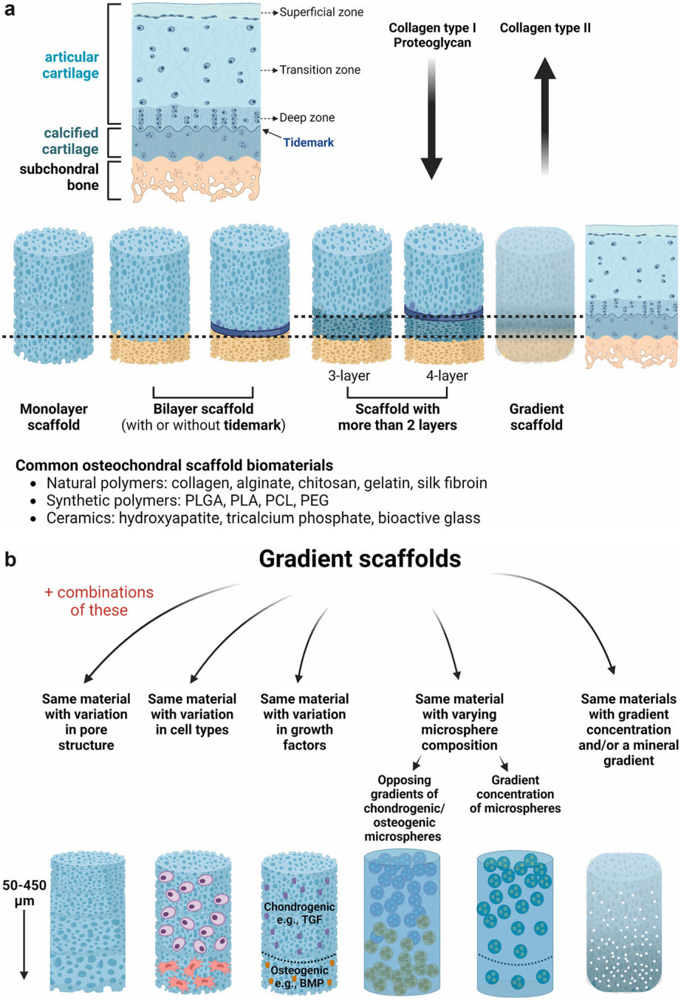
图 3 骨软骨（osteochondral）支架（scaffold）工程的设计理念。(a) 用于构建骨软骨界面的主要策略概述，突出显示软骨与软骨下骨（subchondral bone）区域的典型生物材料（biomaterial）选择。(b) 用于……的代表性结构设计方法Fig. 3 Design concepts for osteochondral scaffold engineering. (a) Overview of the principal strategies used to engineer the osteochondral interface, highlighting typical biomaterial selections for the cartilage and subchondral bone regions. (b) Representative architectural approaches for the
近期的研究致力于通过引入能够模拟天然组织生化组成的生物活性组分，来改善双层体系的结构整合性与生物学性能。例如，Choi et al. (2020) 开发了一种基于结冷胶（gellan gum，GG）的双层支架，由类软骨GG层和富含脱矿骨颗粒（demineralized bone particles，DBPs）的仿骨GG基质组成。这种设计产生了明显的力学梯度，软骨区较软而软骨下层较硬，与天然骨软骨（osteochondral）界面高度相似。重要的是，两相形成了内聚的整体结构，未发生界面分层。此外，该支架促进了层特异性细胞反应：软骨细胞（chondrocytes）优先占据富含GG的软骨层，而成骨样细胞（osteoblast-like cells）在含DBP的区域中表现出增强的活性。Xing et al. (2021) 探索了类似的概念，开发了一种富钙的无细胞GG/海藻酸盐（alginate）双层水凝胶，旨在改善界面结合与生物活性。在该体系中，软骨层由GG/海藻酸盐共混物构成，而骨区则掺入了羟基磷灰石（HAp）颗粒。钙富集使界面处发生二次离子交联，产生了约40 kPa的强结合强度。该双层支架对间充质干细胞表现出良好的细胞相容性，并且在兔临界尺寸骨软骨缺损模型中评估时，既促进了软骨再生，也促进了软骨下骨形成。支架的钙库效应还增强了新生血管形成，从而加速了组织修复。除经典双层设计外，近期的研究方法还聚焦于开发能够同时提供多种生物学和力学信号的有机-无机杂化体系。Chen et al. (2022) 报道了一种复合水凝胶，将海藻酸钠-GG（SA-GG）聚合物基质与具有触变性的磷酸镁基无机凝胶（TMP-BG）相结合。通过调节有机相与无机相之间的比例，作者获得了刚度、孔隙率和降解速率可调的可注射水凝胶。体外和体内实验均表明，磷酸镁组分通过促进成骨分化和成软骨分化增强了骨软骨再生，同时与纯聚合物体系相比提供了额外的生物活性。最近，研究者还提出了无需物理堆叠独立层即可构建双相骨软骨支架的替代策略。Pietryga et al. (2023) 开发了整体式GG支架，其特点是利用碱性磷酸酶（ALP）和甘油磷酸钙，通过扩散限制性酶促矿化实现空间可控矿化。该过程在单一GG构建体内产生了矿化的类骨区域和未矿化的类软骨区域，从而形成
图3（续）梯度骨软骨支架的开发，旨在再现骨软骨单元内组成与力学性能的渐变过渡。（经许可转载自 Chen et al. (2023)，依据知识共享署名-非商业性使用-禁止演绎4.0国际许可协议（CC BY-NC-ND 4.0））
图 4 双层水凝胶（hydrogel）构建物（construct）中HAp的微观结构与分布。(a) 圆柱形双层构建物（直径4 mm ⨯ 高7 mm）的宏观外观，以及(b) 不同支架配方下两层之间界面的放大视图。Micro-CT分析显示(c) LAGG/LAGG-HAp和(d) LAGG-HAGG/LAGG-HAp构建物的内部结构及HAp（15%）分布。标尺：1 mm。（经许可转载自Pereira et al. (2018)。版权所有 2028，Elsevier）Fig. 4 Microstructure and distribution of HAp within bilayer hydrogel constructs. (a) Macroscopic appearance of the cylindrical bilayer constructs (4 mm diameter ⨯ 7 mm height) together with (b) magnified views of the interface between the two layers for the different scaffold formulations. Micro-CT analysis illustrating the internal structure and HAp (15%) distribution in (c) LAGG/ LAGG-HAp and (d) LAGG-HAGG/LAGG-HAp constructs. Scale bar: 1 mm. (Reproduced with permission from Pereira et al. (2018). Copyright 2028, Elsevier)
致谢 作者感谢IVDisCHIP项目——项目编号n.˚ 15772（COMPETE2030-FEDER-00687900），该项目由欧洲区域发展基金（European Regional Development Fund, ERDF）通过“葡萄牙2030”（Portugal 2030）框架下的创新与数字化转型主题计划（COMPETE 2030），以及由科学技术基金会（Fundação para a Ciência e a Tecnologia—FCT I.P.，国家科学技术机构）通过OE共同资助。同时感谢EngVIPO项目（编号HORIZON-MSCA-2023-SE-01-101183041）和RENOVATE项目（编号HORIZON-MSCA-2024-DN-01-101227121）提供的额外支持。本工作还获得了FCT通过授予JSC的FCT终身教职计划（FCT Tenure Program）提供的支持（编号1467/2024）。
利益冲突声明 作者无与本稿件内容相关的利益冲突需要声明。
参考文献References
参考文献 91 条（英文原文，点击折叠/展开）
[1]Akkineni AR, Elci BS, Lode A, Gelinsky M (2022) Addition of high acyl gellan gum to low acyl gellan gum enables the blends 3D bioprintable. Gels 8:199
[2]Bacelar AH, Silva-Correia J, Oliveira JM, Reis RL (2016) Recent progress in gellan gum hydrogels provided by functionalization strategies. J Mater Chem B 4:6164–6174
[3]Banik RM, Santhiagu A (2006) Improvement in production and quality of gellan gum by Sphingomonas paucimobilis under high dissolved oxygen tension levels. Biotechnol Lett 28: 1347–1350
[4]Banik RM, Santhiagu A, Upadhyay SN (2007) Optimization of nutrients for gellan gum production by Sphingomonas paucimobilis A TCC-31461 in molasses based medium using response surface methodology. Bioresour Technol 98:792–797
[5]Bastos AR, Da Silva LP, Maia FR, Franco A, Noro J, Silva C, Oliveira JM, Reis RL, Correlo VM (2024) Hydroxyapatite/alginate/gellan gum inks with osteoconduction and osteogenic potential for bioprinting bone tissue analogues. Int J Biol Macromol 271:132611
[6]Bellini D, Cencetti C, Meraner J, Stoppoloni D, D’Abusco AS, Matricardi P (2015) An in situ gelling system for bone regeneration of osteochondral defects. Eur Polym J 72:642–650
[7]Bonifacio MA, Cometa S, Cochis A, Scalzone A, Gentile P, Scalia AC, Rimondini L, Mastrorilli P, De Giglio E (2022) A bioprintable gellan gum/lignin hydrogel: a smart and sustainable route for cartilage regeneration. Int J Biol Macromol 216:336–346
[8]Busto F, Scalia AC, Gentile P, Toniolo S, Cometa S, Liotino S, Cochis A, Mastrorilli P, De Giglio E (2025) Gellan gum/tannic acid hydrogels for cartilage repair: the versatile role of tannic acid as green crosslinker conferring antibacterial and anti-inflammatory properties. Carbohydr Polym Technol Appl 10:100860
[9]Chandrasekaran R (1997) Molecular architecture of polysaccharide helices in oriented fibers. In: Horton D (ed) Advances in carbohydrate chemistry and biochemistry. Academic Press, San Diego
[10]Chen Y, Chen Y, Xiong X, Cui R, Zhang G, Wang C, Xiao D, Qu S, Weng J (2022) Hybridizing gellan/alginate and thixotropic magnesium phosphate-based hydrogel scaffolds for enhanced osteochondral repair. Mater Today Bio 14:100261
[11]Chen R, Pye JS, Li J, Little CB, Li JJ (2023) Multiphasic scaffolds for the repair of osteochondral defects: outcomes of preclinical studies. Bioact Mater 27:505–545
[12]Choi JH, Lee W, Song C, Moon BK, Yoon S-J, Neves NM, Reis RL, Khang G (2020) Application of gellan gum-based scaffold for regenerative medicine. In: Chun HJ, Reis RL, Motta A, Khang G (eds) Bioinspired biomaterials: advances in tissue engineering and regenerative medicine. Springer Singapore, Singapore
[13]Correia SI, Pereira H, Silva-Correia J, Van Dijk CN, Espregueira-Mendes J, Oliveira JM, Reis RL (2014) Current concepts: tissue engineering and regenerative medicine applications in the ankle joint. J R Soc Interface 11:20130784
[14]Costa JB, Silva-Correia J, Reis RL, Oliveira JM (2018) Current advances in solid free-form techniques for osteochondral tissue engineering. Bio-Des Manuf 1:171–181
[15]Coutinho DF, Sant SV, Shin H, Oliveira JT, Gomes ME, Neves NM, Khademhosseini A, Reis RL (2010) Modi fied gellan gum hydrogels with tunable physical and mechanical properties. Bio- materials 31:7494–7502
[16]D’amora U, Ronca A, Scialla S, Soriente A, Manini P, Phua JW, Ottenheim C, Pezzella A, Calabrese G, Raucci MG, Ambrosio L (2023) Bioactive composite methacrylated gellan gum for 3D-printed bone tissue-engineered scaffolds. Nanomaterials 13:772
[17]Da Silva LP, Cerqueira MT, Sousa RA, Reis RL, Correlo VM, Marques AP (2014) Engineering cell-adhesive gellan gum spongy-like hydrogels for regenerative medicine purposes. Acta Biomater 10:4787–4797
[18]Datta P, Dhawan A, Yu Y, Hayes D, Gudapati H, Ozbolat IT (2017) Bioprinting of osteochondral tissues: a perspective on current gaps and future trends. Int J Bioprint 3:007
[19]Doner LW (1997) Rapid purification of commercial gellan gum to highly soluble and gellable monovalent cation salts. Carbohydr Polym 32:245–247
[20]Douglas T, Wlodarczyk M, Pamula E, Declercq H, De Mulder E, Bucko M, Balcaen L, Vanhaecke F, Cornelissen R, Dubruel P, Jansen J, Leeuwenburgh S (2014a) Enzymatic miner- alization of gellan gum hydrogel for bone tissue-engineering applications and its enhancement by polydopamine. J Tissue Eng Regen Med 8:906–918
[21]Douglas TE, Piwowarczyk W, Pamula E, Liskova J, Schaubroeck D, Leeuwenburgh SC, Brackman G, Balcaen L, Detsch R, Declercq H, Cholewa-Kowalska K, Dokupil A, Cuijpers VM, Vanhaecke F, Cornelissen R, Coenye T, Boccaccini AR, Dubruel P (2014b) Injectable self- gelling composites for bone tissue engineering based on gellan gum hydrogel enriched with different bioglasses. Biomed Mater 9:045014
[22]Douglas TE, Krawczyk G, Pamula E, Declercq HA, Schaubroeck D, Bucko MM, Balcaen L, Van Der VoorT P, Bliznuk V, Van Den Vreken NM, Dash M, Detsch R, Boccaccini AR, Vanhaecke F, Cornelissen M, Dubruel P (2016) Generation of composites for bone tissue-engineering appli- cations consisting of gellan gum hydrogels mineralized with calcium and magnesium phosphate phases by enzymatic means. J Tissue Eng Regen Med 10:938–954
[23]Douglas TEL, Łapa A, Samal SK, Declercq HA, Schaubroeck D, Mendes AC, Der Voort PV, Dokupil A, Plis A, De Schamphelaere K, Chronakis IS, Pamuła E, Skirtach AG (2017a) Enzymatic, urease-mediated mineralization of gellan gum hydrogel with calcium carbonate, magnesium-enriched calcium carbonate and magnesium carbonate for bone regeneration appli- cations. J Tissue Eng Regen Med 11:3556–3566
[24]Douglas TEL, Pilarz M, Lopez-Heredia M, Brackman G, Schaubroeck D, Balcaen L, Bliznuk V, Dubruel P, Knabe-Ducheyne C, Vanhaecke F, Coenye T, Pamula E (2017b) Composites of gellan gum hydrogel enzymatically mineralized with calcium-zinc phosphate for bone regener- ation with antibacterial activity. J Tissue Eng Regen Med 11:1610–1618
[25]Douglas TEL, Schietse J, Zima A, Gorodzha S, Parakhonskiy BV, Khalenkow D, Shkarin R, Ivanova A, Baumbach T, Weinhardt V, Stevens CV, Vanhoorne V, Vervaet C, Balcaen L, Vanhaecke F, Slośarczyk A, Surmeneva MA, Surmenev RA, Skirtach AG (2018) Novel self- gelling injectable hydrogel/alpha-tricalcium phosphate composites for bone regeneration: physiochemical and microcomputer tomographical characterization. J Biomed Mater Res A 106:822–828
[26]Du H, Hamilton P, Reilly M, Ravi N (2012) Injectable in situ physically and chemically crosslinkable gellan hydrogel. Macromol Biosci 12:952–961
[27]Fan J, Gong Y, Ren L, Varshney RR, Cai D, Wang DA (2010) In vitro engineered cartilage using synovium-derived mesenchymal stem cells with injectable gellan hydrogels. Acta Biomater 6: 1178–1185
[29]Ferris CJ, Stevens LR, Gilmore KJ, Mume E, Greguric I, Kirchmajer DM, Wallace GG, In Het Panhuis M (2015) Peptide modification of purified gellan gum. J Mater Chem B 3:1106–1115
[30]Fialho AM, Moreira LM, Granja AT, Popescu AO, Hoffmann K, Sá-Correia I (2008) Occurrence, production, and applications of gellan: current state and perspectives. Appl Microbiol Biotechnol 79:889–900
[31]Gantar A, Da Silva LP, Oliveira JM, Marques AP, Correlo VM, Novak S, Reis RL (2014) Nanoparticulate bioactive-glass-reinforced gellan-gum hydrogels for bone-tissue engineering. Mater Sci Eng C 43:27–36
[32]Gkioni K, Leeuwenburgh SC, Douglas TE, Mikos AG, Jansen JA (2010) Mineralization of hydrogels for bone regeneration. Tissue Eng Part B Rev 16:577–585
[33]Gong Y, Wang C, Lai RC, Su K, Zhang F, Wang D-A (2009) An improved injectable polysaccha- ride hydrogel: modified gellan gum for long-term cartilage regenerationin vitro. J Mater Chem 19:1968–1977
[34]Hashemi-Afzal F, Bagheri F, Vasheghani-Farahani E, Azami M, Tayebi L, Eslaminejad MB (2026) 3D-bioprinted dual-crosslinked oxidized gellan gum-decellularized human amniotic membrane hydrogels reinforced with aminolyzed electrospun nanofibers for cartilage regeneration. Biomater Adv 182:214654
[35]He W, Wu Y, Luo Z, Yang G, Ye W, Chen X, Ren J, Liang T, Liao Z, Jiang S, Wang K (2023) Injectable decorin/gellan gum hydrogel encapsulating adipose-derived stem cells enhances anti- inflammatory effect in cartilage injury via autophagy signaling. Cell Transplant 32: 9636897231196493
[36]Horinaka J, Kani K, Hori Y, Maeda S (2004) Effect of pH on the conformation of gellan chains in aqueous systems. Biophys Chem 111:223–227
[37]Huang Y, Singh PP, Tang J, Swanson BG (2004) Gelling temperatures of high acyl gellan as affected by monovalent and divalent cations with dynamic rheological analysis. Carbohydr Polym 56:27–33
[38]Kesti M, Eberhardt C, Pagliccia G, Kenkel D, Grande D, Boss A, Zenobi-Wong M (2015) Bioprinting complex cartilaginous structures with clinically compliant biomaterials. Adv Funct Mater 25:7406–7417
[39]Khang G, Lee SK, Kim HN, Silva-Correia J, Gomes ME, Viegas CA, Dias IR, Oliveira JM, Reis RL (2015) Biological evaluation of intervertebral disc cells in different formulations of gellan gum-based hydrogels. J Tissue Eng Regen Med 9:265–275
[40]Kirchmajer DM, Steinhoff B, Warren H, Clark R, In Het Panhuis M (2014) Enhanced gelation properties of purified gellan gum. Carbohydr Res 388:125–129
[41]Lee M-W, Tsai H-F, Wen S-M, Huang C-H (2012) Photocrosslinkable gellan gum film as an anti- adhesion barrier. Carbohydr Polym 90:1132–1138
[42]Levato R, Visser J, Planell JA, Engel E, Malda J, Mateos-Timoneda MA (2014) Biofabrication of tissue constructs by 3D bioprinting of cell-laden microcarriers. Biofabrication 6:035020
[43]Li Z, Li S, Yang J, Ha Y, Zhang Q, Zhou X, He C (2022) 3D bioprinted gelatin/gellan gum-based scaffold with double-crosslinking network for vascularized bone regeneration. Carbohydr Polym 290:119469
[44]Loukelis K, Kontogianni GI, Vlassopoulos D, Chatzinikolaidou M (2025) Extrusion-based 3D bioprinted gellan gum/poly(vinyl alcohol)/nano-hydroxyapatite composite bioinks promote bone regeneration. Adv Healthc Mater 14:e2500365
[45]Lu J, Gao Y, Cao C, Wang H, Ruan Y, Qin K, Liu H, Wang Y, Yang P, Liu Y, Ma Y, Yu Z, W ang Y, Zhong Z, Chang F (2025) 3D bioprinted scaffolds for osteochondral regeneration: advance- ments and applications. Mater Today Bio 32:101834
[46]Manda MG, Da Silva LP, Cerqueira MT, Pereira DR, Oliveira MB, Mano JF, Marques AP, Oliveira JM, Correlo VM, Reis RL (2018) Gellan gum-hydroxyapatite composite spongy-like hydrogels for bone tissue engineering. J Biomed Mater Res A 106:479–490
[47]Mehwish N, Xu M, Zaeem M, Lee BH (2022) Mussel-inspired surface functionalization of porous albumin cryogels supporting synergistic antibacterial/antioxidant activity and bone-like apatite formation. Gels 8:679
[48]Melchels FPW, Dhert WJA, Hutmacher DW, Malda J (2014) Development and characterisation of a new bioink for additive tissue manufacturing. J Mater Chem B 2:2282–2289
[49]Miyoshi E, Takaya T, Nishinari K (1996) Rheological and thermal studies of gel-sol transition in gellan gum aqueous solutions. Carbohydr Polym 30:109–119
[50]Morris ER, Nishinari K, Rinaudo M (2012) Gelation of gellan – a review. Food Hydrocoll 28:373–
[51]Mouriño V, Cattalini JP, Boccaccini AR (2012) Metallic ions as therapeutic agents in tissue engineering scaffolds: an overview of their biological applications and strategies for new developments. J R Soc Interface 9:401–419
[52]Mouser VH, Melchels FP, Visser J, Dhert WJ, Gawlitta D, Malda J (2016) Yield stress determines bioprintability of hydrogels based on gelatin-methacryloyl and gellan gum for cartilage bioprinting. Biofabrication 8:035003
[53]Mouser VHM, Levato R, Bonassar LJ, D'lima DD, Grande DA, Klein TJ, Saris DBF, Zenobi- Wong M, Gawlitta D, Malda J (2017) Three-dimensional bioprinting and its potential in the field of articular cartilage regeneration. Cartilage 8:327–340
[54]Muthukumar T, Song JE, Khang G (2019) Biological role of gellan gum in improving scaffold drug delivery, cell adhesion properties for tissue engineering applications. Molecules 24:4514
[55]Nguyen KT, West JL (2002) Photopolymerizable hydrogels for tissue engineering applications. Biomaterials 23:4307–4314
[56]Novac O, Lisa G, Barbu E, Alhaique F, Popa MI (2013) Synthesis and characterization of N- (2-aminoethyl)-2-acetamidyl gellan gum with potential biomedical applications. Carbohydr Polym 98:174–177
[57]Ogawa E, Takahashi R, Yajima H, Nishinari K (2005) Thermally induced coil-to-helix transition of sodium gellan gum with different molar masses in aqueous salt solutions. Biopolymers 79:207–
[58]Ogawa E, Takahashi R, Yajima H, Nishinari K (2006) Effects of molar mass on the coil to helix transition of sodium-type gellan gums in aqueous solutions. Food Hydrocoll 20:378–385
[59]Oliveira JT, Santos TC, Martins L, Silva MA, Marques AP, Castro AG, Neves NM, Reis RL (2009) Performance of new gellan gum hydrogels combined with human articular chondrocytes for cartilage regeneration when subcutaneously implanted in nude mice. J Tissue Eng Regen Med 3: 493–500
[60]Oliveira JT, Gardel LS, Rada T, Martins L, Gomes ME, Reis RL (2010a) Injectable gellan gum hydrogels with autologous cells for the treatment of rabbit articular cartilage defects. J Orthop Res 28:1193–1199
[61]Oliveira JT, Martins L, Picciochi R, Malafaya PB, Sousa RA, Neves NM, Mano JF, Reis RL (2010b) Gellan gum: a new biomaterial for cartilage tissue engineering applications. J Biomed Mater Res A 93:852–863
[62]Oliveira JT, Santos TC, Martins L, Picciochi R, Marques AP, Castro AG, Neves NM, Mano JF, Reis RL (2010c) Gellan gum injectable hydrogels for cartilage tissue engineering applications: in vitro studies and preliminary in vivo evaluation. Tissue Eng A 16:343–353
[63]Oliveira JM, Ribeiro VP, Reis RL (2021) Advances on gradient scaffolds for osteochondral tissue engineering. Prog Biomed Eng 3:033001
[64]Osmałek T, Froelich A, Tasarek S (2014) Application of gellan gum in pharmacy and medicine. Int J Pharm 466:328–340
[65]Pacelli S, Paolicelli P, Dreesen I, Kobayashi S, Vitalone A, Casadei MA (2015) Injectable and photocross-linkable gels based on gellan gum methacrylate: a new tool for biomedical applica- tion. Int J Biol Macromol 72:1335–1342
[66]Pacelli S, Paolicelli P, Moretti G, Petralito S, Di Giacomo S, Vitalone A, Casadei MA (2016) Gellan gum metha crylate and laponite as an innovative nanocomposite hydrogel for biomedical applications. Eur Polym J 77:114–123
[67]Pereira DR, Canadas RF, Silva-Correia J, Da Silva Morais A, Oliveira MB, Dias IR, Mano JF, Marques AP, Reis RL, Oliveira JM (2018) Injectable gellan-gum/hydroxyapatite-based bilayered hydrogel composites for osteochondral tissue regeneration. Appl Mater Today 12: 309–321
[68]Picone CSF, Cunha RL (2011) Influence of pH on formation and properties of gellan gels. Carbohydr Polym 84:662–668
[69]Pietryga K, Reczyńska-Kolman K, Reseland JE, Haugen H, Larreta-Garde V, Pamuła E (2023) Biphasic monolithic osteochondral scaffolds obtained by diffusion-limited enzymatic mineral- ization of gellan gum hydrogel. Biocybern Biomed Eng 43:189–205
[70]Pina S, Oliveira JM, Reis RL (2015) Natural-based nanocomposites for bone tissue engineering and regenerative medicine: a review. Adv Mater 27:1143–1169
[71]Prajapati VD, Jani GK, Zala BS, Khutliwala TA (2013) An insight into the emerging exo- polysaccharide gellan gum as a novel polymer. Carbohydr Polym 93:670–678
[72]Shin H, Olsen BD, Khademhosseini A (2012) The mechanical properties and cytotoxicity of cell- laden double-network hydrogels based on photocrosslinkable gelatin and gellan gum biomacromolecules. Biomaterials 33:3143–3152
[73]Silva-Correia J, Oliveira JM, Caridade SG, Oliveira JT, Sousa RA, Mano JF, Reis RL (2011a) Gellan gum-based hydrogels for intervertebral disc tissue-engineering applications. J Tissue Eng Regen Med 5:e97–e107
[74]Silva-Correia J, Oliveira JM, Oliveira JT, Sousa RA Reis RL (2011b) Photo-crosslinked gellan gum-based hydrogels: methods and uses thereof. WO2011/119059, Priority date: 105030 26.03.2010 PT
[75]Silva-Correia J, Gloria A, Oliveira MB, Mano JF, Oliveira JM, Ambrosio L, Reis RL (2013) Rheological and mechanical properties of acellular and cell-laden methacrylated gellan gum hydrogels. J Biomed Mater Res A 101:3438–3446
[76]Silva-Correia J, Oliveira JM, Reis RL (2016) Gellan gum-based hydrogels for tissue engineering applications. In: Biomaterials from nature for advanced devices and therapies. John Wiley & Sons, Inc., Hoboken, NJ
[77]Smith AM, Shelton RM, Perrie Y, Harris JJ (2007) An initial evaluation of gellan gum as a material for tissue engineering applications. J Biomater Appl 22:241–254
[78]Stevens LR, Gilmore KJ, Wallace GG, In Het Panhuis M (2016) Tissue engineering with gellan gum. Biomater Sci 4:1276–1290
[79]Tamaddon M, Gilja H, Wang L, Oliveira JM, Sun X, Tan R, Liu C (2020) Osteochondral scaffolds for early treatment of cartilage defects in osteoarthritic joints: from bench to clinic. Biomater Transl 1:3–17
[80]Tang Y, Sun J, Fan H, Zhang X (2012) An improved complex gel of modifi ed gellan gum and carboxymethyl chitosan for chondrocytes encapsulation. Carbohydr Polym 88:46–53
[81]Thian ES, Konishi T, Kawanobe Y, Lim PN, Choong C, Ho B, Aizawa M (2013) Zinc-substituted hydroxyapatite: a biomaterial with enhanced bioactivity and antibacterial properties. J Mater Sci Mater Med 24:437–445
[82]Tomasello L, Fiorica C, Mauceri R, Martorana A, Palumbo FS, Pitarresi G, Pizzolanti G, Campisi G, Giordano C, Cavallaro G (2022) Bioactive scaffolds based on amine-functionalized gellan gum for the osteogenic differentiation of gingival mesenchymal stem cells. ACS Appl Polym Mater 4:1805–1815
[83]Upstill C, Atkins EDT, Attwool PT (1986) Helical conformations of gellan gum. Int J Biol Macromol 8:275–288
[84]Vieira S, Da Silva Morais A, Garet E, Silva-Correia J, Reis RL, González-Fernández Á, Miguel Oliveira J (2019) Self-mineralizing Ca-enriched methacrylated gellan gum beads for bone tissue engineering. Acta Biomater 93:74–85
[85]Wang C, Gong Y, Lin Y, Shen J, Wang D-A (2008) A novel gellan gel-based microcarrier for anchorage-dependent cell delivery. Acta Biomater 4:1226–1234
[86]Xing J, Peng X, Li A, Chen M, Ding Y, Xu X, Yu P, Xie J, Li J (2021) Gellan gum/alginate-based Ca-enriched acellular bilayer hydrogel with robust interface bonding for effective osteochondral repair. Carbohydr Polym 270:118382
[87]Yan LP, Oliveira JM, Oliveira AL, Reis RL (2015) Current concepts and challenges in osteochondral tissue engineering and regenerative medicine. ACS Biomater Sci Eng 1:183–200
[88]Yang F, Dong W-J, He F-M, Wang X-X, Zhao S-F, Yang G-L (2012) Osteoblast response to porous titanium surfaces coated with zinc-substituted hydroxyapatite. Oral Surg Oral Med Oral Pathol Oral Radiol 113:313–318
[89]Yang J, Zhang YS, Yue K, Khademhosseini A (2017) Cell-laden hydrogels for osteochondral and cartilage tissue engineering. Acta Biomater 57:1–25
[90]Yousefi AM, Hoque ME, Prasad RG, Uth N (2015) Current strategies in multiphasic scaffold design for osteochondral tissue engineering: a review. J Biomed Mater Res A 103:2460–2481
[91]Yu I, Kaonis S, Chen R (2017) A study on degradation behavior of 3D printed gellan gum scaffolds. Proc CIRP 65:78–83
骨软骨（osteochondral, OC）组织是一种独特的功能梯度界面，它将关节软骨柔软、有弹性的特性与软骨下骨坚硬、矿化的结构结合在一起。这一复杂的连接部位确保关节平稳运动、分散机械负荷，并在运动过程中维持结构完整性。然而，一旦因创伤、退行性疾病或衰老而受损，OC组织的自我修复能力极为有限，这是因为软骨缺乏血管，且软骨层与骨层之间存在生化差异 (Wang et al. 2025; Semeraro et al. 2025)。因此，OC缺损始终是再生骨科领域最重大的挑战之一，若不及时治疗，常导致慢性疼痛、骨关节炎和关节功能障碍 (Liu et al. 2025a; Xi et al. 2025)。软骨与骨在生物学和力学特性上的根本差异为功能性组织再生造成了相当大的障碍。软骨层主要由位于富含蛋白聚糖的细胞外基质（extracellular matrix, ECM）中的软骨细胞构成，不具备直接的血管网络。相反，软骨下骨则富含血管并具有成骨能力。因此，任何再生策略都必须同时重建两种不同类型的组织——其组成和刚度水平各不相同——并确保二者在界面处协同运作 (Mahmoudi et al. 2025; Liu et al. 2025b)。传统的临床干预手段，包括微骨折术、自体软骨细胞移植（autologous chondrocyte implantation, ACI）和镶嵌成形术，旨在通过利用内源性祖细胞或移植组织移植物来促进修复。但这些方法往往形成纤维软骨组织而非透明软骨样组织，从而导致力学性能下降，长期成功率降低 (Bai et al. 2025; Zhu et al. 2025)。近期综述指出，疗效不一致和供区发病率是两大主要问题，这凸显了寻找能够从空间上调控OC再生的仿生材料的重要意义 (Biomimetic mineralized hydrogels for bone regeneration 2025; Barbon et al. 2025)。微骨折术通过进入软骨下骨以释放骨髓来源的干细胞；然而，这些细胞经常向纤维谱系而非软骨谱系分化 (Natarajan et al. 2025)。ACI是将自体软骨细胞在体外扩增培养后再植入，但软骨细胞在扩增过程中的去分化使ECM的合成变得困难 (Ma et al. 2025)。镶嵌成形术和OC自体移植虽可修复小面积缺损，但受限于供区的可用性以及移植物在界面处的整合问题 (Brobeil et al. 2025)。即使是先进的细胞疗法或支架辅助技术，也常常无法复制天然的OC梯度，导致力学连续性不足和效果不理想。这些局限推动了仿生支架的发展，以更好地模拟天然组织的结构与功能 (Ma et al. 2025)。仿生材料的设计旨在模拟天然ECM的外观与功能，从而促进细胞间相互作用、增强材料强度并传递生化信号。在OC组织工程领域，这些材料致力于重建软骨-骨界面特有的复杂组成梯度和力学梯度。水凝胶（hydrogels）因其高含水量、良好的渗透性以及可调控的生化特性，成为该领域最有前景的选择之一 (Loukelis et al. 2025; Poorkhalili et al. 2026)。水凝胶的黏弹性与天然软骨相似，且其可在分子水平上进行功能化，从而实现对生长因子和信号分子递送的调控。然而，传统水凝胶的力学薄弱和有限的成骨诱导能力仍需进一步改进 (Bodla et al. 2025; Hosseini et al. 2021)。水凝胶可构建三维（3D）微环境，促进细胞增殖、营养物质运输和ECM沉积。水凝胶可由天然聚合物（如胶原蛋白、明胶、壳聚糖和海藻酸盐）或合成聚合物（如聚乙二醇、聚乙烯醇和聚己内酯）制备，各类材料均具有独特的生化和力学特性 (Liu et al. 2024)。先进的水凝胶体系已整合生物活性基序，包括RGD多肽或生长因子结合结构域，以改善细胞黏附和分化。对于OC再生而言，挑战在于将上层区域的软骨形成支持与下层区域的成骨信号相结合，这意味着构建体需要同时具备力学梯度和生化分区特性。这正是纳米复合水凝胶有望带来变革之处 (Zhuang et al. 2025)。纳米复合水凝胶引入了纳米级增强材料，如羟基磷灰石、氧化石墨烯、纳米黏土、生物活性玻璃或纤维素纳米晶。
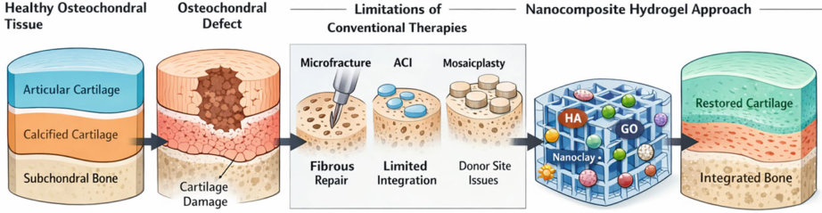
图 1 利用纳米复合水凝胶（nanocomposite hydrogels）修复骨软骨（osteochondral, OC）缺损的示意图。该图展示了天然骨软骨（OC）结构、导致缺损的损伤、传统治疗方法的局限性，以及纳米复合水凝胶通过整合纳米级增强相以恢复软骨-骨界面结构与功能完整性的再生机制Fig. 1 Schematic representation of osteochondral (OC) defect repair using nanocomposite hydrogels. The figure illustrates the native OC architecture, damage leading to defects, limitations of traditional treatments, and the regenerative mechanism of nanocomposite hydrogels integrating nanoscale reinforcements to restore structural and functional integrity across the cartilage–bone interface
掺入水凝胶基质（hydrogel matrix）中，以协同方式增强其机械强度、生物活性和响应性（Mellati et al. 2021）。这些纳米填料（nanofillers）不仅可作为物理交联剂（physical crosslinkers）提高材料的刚度和耐久性，还能赋予其有助于细胞在界面处分化和整合的生化功能。最新研究表明，掺入羟基磷灰石（hydroxyapatite）或二氧化硅（silica）纳米颗粒可显著增强成骨标志物（osteogenic markers）的表达，同时保留成软骨潜能（chondrogenic potential），从而改善体内骨软骨（osteochondral, OC）再生（Liu et al. 2025b; Ma et al. 2025）。能够响应机械、热或生化信号的刺激响应性纳米复合水凝胶（stimuli-responsive nanocomposite hydrogels）还可实现对天然组织环境的动态适应，从而改善整合效果和长期稳定性（Zhuang et al. 2025）。4D生物打印（4D bioprinting）和人工智能（AI）增强材料设计的最新发展，使预测性建模（predictive modeling）以及以无与伦比的精度制造分级梯度支架（hierarchical gradient scaffolds）成为可能，从而进一步变革这一领域（Bai et al. 2025）。这些改进使纳米复合水凝胶成为下一代生物材料，能够填补修复OC组织时出现的生物学、力学和功能方面的缺口。图1概述了OC缺损环境以及纳米复合水凝胶在模拟天然软骨–骨界面（cartilage–bone interface）中的作用。
纳米复合水凝胶（nanocomposite hydrogels）的设计与组成
用于骨软骨（osteochondral，OC）再生的纳米复合水凝胶（nanocomposite hydrogels）的开发，建立在聚合物基质的正确组装之上，该基质模拟水合的细胞外环境，而纳米级增强相则赋予材料生物活性与强度。这种混合设计理念旨在模拟骨软骨组织的分级结构，即从柔韧、水合的软骨区域过渡到刚性矿化的骨区域 (Piantanida et al. 2019)。研究人员通过精细调控组成与网络结构，已构建出多功能水凝胶，其不仅可作为结构支架，还能主动引导细胞应答、干细胞分化及组织整合 (Liu et al. 2024; Wang et al. 2023)。
基本设计原则
开发纳米复合水凝胶（nanocomposite hydrogels）的基本思路是将聚合物基质与纳米级增强材料相结合：前者赋予水凝胶弹性、生物相容性和保水能力，后者则使其更坚硬、更坚韧且更具生物活性 (Zhang et al. 2025)。聚合物相形成由相互连接的链段构成的三维网络，能够容纳大量水分，类似于天然软骨的细胞外基质（extracellular matrix, ECM）。加入纳米颗粒或纳米纤维具有多重作用：它们作为交联节点增强基质，构建有助于细胞黏附和分化的生物活性表面，并调控治疗性分子的释放 (Wu et al. 2023)。这种协同组合所构建的支架能够在机械强度、生物学功能与降解能力之间取得恰当的平衡，而这些对于骨软骨（osteochondral, OC）修复均至关重要 (Zhang et al. 2021)。近期研究表明，将羟基磷灰石（hydroxyapatite, HA）或二氧化硅纳米颗粒与甲基丙烯酰化明胶（gelatin methacrylate, GelMA）或透明质酸（hyaluronic acid）水凝胶混合的纳米复合配方效果显著。这些配方可大幅提高压缩模量，并促进干细胞向成骨细胞分化 (Zhao et al. 2021; Raghav et al. 2022)。此外，当前的智能设计策略还采用了刺激响应型纳米材料，如金属有机框架（metal-organic frameworks, MOFs）或氧化石墨烯衍生物，使机械与生物化学响应能够随体内环境的变化而改变 (Effects of rAAV-mediated overexpression 2025)。
纳米复合水凝胶（nanocomposite hydrogel）在骨软骨（osteochondral, OC）修复中的功效取决于决定其力学性能、降解动力学和生物活性的结构–性能关系（structure–property relationships）。纳米填料（nanofiller）的空间分布与表面化学性质直接影响承载能力和组织整合（Bai et al. 2025）。例如，增加纳米填料的含量通常会使材料更硬，但也可能降低其孔隙率和扩散能力，而这两者对软骨形成（chondrogenesis）均至关重要。因此，通过改变纳米填料空间排列方式构建的梯度结构或双层结构正日益普遍（Xi et al. 2025）。最近的一项研究表明，双层 GelMA/HA-Laponite 构建体模拟了软骨与骨之间的模量梯度，显著增强了体内骨软骨整合（Loukelis et al. 2025）。此外，聚合物与纳米填料之间的分子相互作用（如氢键、静电吸引和共价偶联）会改变力学增强与降解的速率。这种调控能力使人们能够构建模拟天然骨软骨微结构的分区化设计，从而有助于软骨与软骨下骨（subchondral bone）同步再生（Stocco et al. 2023）。
交联（crosslinking）机制与网络结构
交联策略对于使纳米复合水凝胶（nanocomposite hydrogels）稳定且具有实用性至关重要。物理交联（physical crosslinking）——通过离子相互作用、氢键或疏水缔合实现——可形成能够解离并自行修复的凝胶；化学交联（chemical crosslinking）——通过共价键或光聚合（photopolymerization）实现——则可形成更强、更稳定的凝胶（Poorkhalili et al. 2026）。利用转谷氨酰胺酶（transglutaminase）或辣根过氧化物酶（horseradish peroxidase）进行的酶促交联（enzymatic crosslinking）近来已成为一种生物友好型方法，能够在不使用有毒化学物质的情况下实现原位凝胶化（gelation）（Zhu et al. 2025）。孔隙的大小、连通程度以及交联密度决定了物质传输、细胞迁移和各向异性（anisotropy）的表现方式。先进的制造方法，如3D生物打印（3D bioprinting）、冷冻铸造（freeze-casting）和溶胶-凝胶模板法（sol-gel templating），使构建梯度化或各向异性网络变得更加容易，这类网络可模拟骨细胞（osteocytes）的天然分区形态（zonal morphology）（Brobeil et al. 2025）。纳米尺度增强与可控交联相结合，造就了能够在动态和空间维度上再生骨软骨（OC）组织的下一代水凝胶。
制备与表征
工程师必须将纳米级增强材料与聚合物基体（polymeric matrices）精心结合，以制备能够促进骨软骨（osteochondral, OC）组织再生的纳米复合水凝胶（nanocomposite hydrogels），同时保持生物活性与力学性能的平衡。为了获得均匀的纳米材料分散、可控的孔隙率（porosity）和结构保真度，人们已采用多种方法，如原位添加纳米颗粒、溶胶-凝胶（sol-gel）加工、冷冻干燥（freeze-drying）和3D生物打印（3D bioprinting）(Liu et al. 2024)。原位掺入是指在聚合物发生凝胶化的过程中加入羟基磷灰石（hydroxyapatite）、氧化石墨烯（graphene oxide）、纳米黏土（nanoclay）或二氧化硅（silica）等纳米颗粒，从而使基体更坚固、更均匀 (Zhang et al. 2021)。该方法在提高材料强度和弹性的同时，仍能保持对生物体的安全性。溶胶-凝胶工艺还便于在低温下制备兼具无机与有机组分的网络结构，从而形成与软骨下骨（subchondral bone）矿物质组成相似的纳米级生物活性玻璃（bioactive glass）或二氧化硅结构域 (Ma et al. 2025)。冷冻干燥是支架（scaffold）加工中的另一个重要步骤，它可形成相互连通的大孔结构，从而允许营养物质运输、血管生长和细胞增殖 (Mahmoudi et al. 2025)。
将3D与4D生物打印技术相结合是纳米复合水凝胶制造领域的一大进步。利用这些增材制造（additive manufacturing）方法，含有聚合物、细胞和纳米填料（nanofillers）的生物墨水（bioinks）可被精确放置在所需位置，从而制备出具有不同力学和生化性能的定制结构 (Cryogenic 3D printing 2025)。为促进OC再生，可打印梯度或分区支架，以模拟从柔软的类软骨上层到坚硬的矿化类骨下层的缓慢渐变 (Liu et al. 2025b)。先进的多材料打印系统能够同时沉积成软骨（chondrogenic）与成骨（osteogenic）生物材料，从而确保形成与天然OC组织高度相似的功能一体化界面 (Multi-dimensional printing 2025)。人工智能辅助设计与预测建模通过将工艺参数与其引发的生物学和结构结果相关联，也进一步改进了支架优化 (Nanocomposite hydrogels 2025)。为确保纳米复合水凝胶正常发挥功能，需要对其力学和物理化学性能进行全面表征。压缩、拉伸和流变等力学测试可测量刚度、黏弹性（viscoelasticity）和抗变形能力，这些对于再现OC界面的承重特性均十分重要 (Hydrogel-based platforms 2025)。用于软骨的水凝胶通常具有较低的模量（0.1–1 MPa），而软骨下骨区域则需要更高的刚度（高达500 MPa），这可通过掺入纳米填料或矿物相来实现。溶胀（swelling）行为和降解动力学对于检验稳定性和营养物质运输同样重要：若溶胀过度，可能破坏表面间的结合；若降解过少，则会使组织更难发生形态改变。扫描电子显微镜（scanning electron microscopy, SEM）用于检查表面形貌，以了解孔径和连通性。傅里叶变换红外光谱（Fourier-transform infrared spectroscopy, FTIR）和X射线衍射（X-ray diffraction, XRD）可验证化学相互作用、交联以及纳米填料的分布 (Zhuang et al. 2025)。设计OC支架的一个主要问题是确保软骨区域与骨区域之间连接良好；结合薄弱可能在机体承受正常应力时导致分层（delamination）或力学失效。为解决这一问题，研究人员采用了梯度矿化、双网络（double-network）体系以及纳米填料介导的界面交联，以改善层间的结构连续性和生化信号传导 (Zhu et al. 2025)。这些仿生设计确保界面作为一个统一结构体发挥作用，促进成软骨分化与成骨分化的同步进行。总体而言，先进制造技术、结构梯度设计与全面表征工具的结合，已使纳米复合水凝胶成为OC组织工程中最具前景的支架体系之一 (Gradient nano-engineered 2025)。
生物学性能
纳米复合水凝胶在骨软骨（osteochondral, OC）再生中的生物学效能取决于其维持细胞活力、促进谱系特异性分化以及调控生化信号与免疫应答的能力。支架的功能由软骨细胞（chondrocytes）和成骨细胞（osteoblasts）的细胞相容性、黏附与增殖情况决定。研究表明，在材料中添加羟基磷灰石（hydroxyapatite）、氧化石墨烯（graphene oxide）和二氧化硅纳米颗粒（silica nanoparticles）等纳米填料可显著促进细胞在材料表面的黏附与生长。这是因为纳米填料增大了表面粗糙度、改变了电荷分布，并可释放生物活性离子 (Enzymatically crosslinked 2025)。这些纳米尺度线索构建了类似于细胞外基质（extracellular matrix, ECM）的微环境，有助于维持软骨细胞表型稳定并促进成骨细胞矿化 (Synthesis of hydroxyapatite 2025)。此外，以胶原（collagen）或明胶（gelatin）为基体并用生物活性纳米颗粒增强的天然聚合物基纳米复合水凝胶，具有更优的细胞相容性，并能在体外支持大量细胞外基质沉积 (Mahmoudi et al. 2025)。干细胞在纳米复合水凝胶中的分化是骨软骨组织工程的核心研究内容。间充质干细胞（mesenchymal stem cells, MSCs）在包封于含纳米填料的水凝胶支架中时，会依据基质的理化性质表现出谱系特异性分化。例如，羟基磷灰石和生物活性玻璃（bioactive glass）纳米颗粒通过释放钙离子和磷酸根离子激活Runx2与骨钙蛋白（osteocalcin）表达通路，从而促进成骨分化 (Zhao et al. 2022)。相比之下，氧化石墨烯和纤维素纳米晶（cellulose nanocrystals）则通过刺激细胞的纳米尺度拓扑结构与力学特性诱导软骨形成分化，使SOX9和II型胶原（collagen type II）的表达上调 (Integrating graphene oxide 2025)。兼具软骨形成与成骨纳米结构域的双梯度水凝胶已成功引导MSCs实现空间可控分化，构建出具有 distinct but continuous tissue zones（既分区明确又相互连续的组织区域）的一体化骨软骨构建体 (Liu et al. 2025b)。已知这些水凝胶的纳米尺度线索可在分子水平影响重要信号通路，尤其是TGF-β、BMP和Wnt通路。TGF-β/Smad通路被激活后可促进软骨形成分化；源自生物活性纳米填料的BMP-2和BMP-7则可促进成骨细胞分化与矿化 (Mills et al. 2020)。与此同时，Wnt信号具有双重作用：它协调软骨发生与骨发生，且其调控确保组织以恰当方式实现平衡与整合 (Chun et al. 2008)。近期研究表明，含层状硅酸盐（layered silicates）或金属纳米结构的水凝胶基质可通过促进YAP/TAZ的核转位影响力学转导信号，从而增强软骨-骨界面的形成 (Hydrogel-based platforms 2025)。除分化之外，免疫调节与血管生成也是影响支架长期性能的重要因素。纳米复合水凝胶可促使巨噬细胞极化为抗炎M2表型，从而营造有助于组织愈合并减少纤维化包裹的微环境 (Zhu et al. 2025)。Si⁴⁺和Ca²⁺等生物活性离子的可控释放可刺激血管生成，进而促进营养物质的运输以及与宿主脉管系统的整合。研究表明，这种免疫-血管协同作用可改善体内软骨修复与软骨下骨再生 (Sreenivasamurthy et al. 2022)。体外与体内研究一致证实了纳米复合水凝胶的多功能优势。在临床前模型中，双层水凝胶构建体在植入后12–16周内恢复了软骨厚度、增强了II型胶原表达，并实现了软骨下骨的完全再生 (Nanocomposite hyaluronic acid 2025)。此外，负载MSCs与纳米羟基磷灰石（nano-hydroxyapatite）的3D打印梯度水凝胶已展现出协调的骨软骨整合效果，表明此类系统具有临床转化潜力 (Ma et al. 2025)。细胞相容性、干细胞定向分化、免疫调节与促血管生成之间的协同效应，确立了纳米复合水凝胶作为骨软骨再生先进仿生支架的应用潜力 (Harnessing the potential of hydrogels 2025)。
转化潜力与临床挑战
将纳米复合水凝胶（nanocomposite hydrogels）从实验室研究转化至骨软骨（osteochondral, OC）再生的临床应用，既蕴含重大机遇，也面临相当大的挑战。临床前验证对于在临床应用之前确定这些材料的生物相容性（biocompatibility）、生物功能性（biofunctionality）和长期安全性至关重要。近期采用大型动物模型（包括山羊和家兔）开展的体内研究显示，双层或梯度纳米复合水凝胶可促进软骨修复与软骨下骨（subchondral bone）再生，结果令人鼓舞 (Zhang et al. 2021)。这些体系已表现出与天然组织的整合、极轻微的炎症反应，以及在生理负荷下机械完整性的保持。然而，在不同动物模型间的可重复性以及向人体组织尺寸的放大仍然是至关重要的问题 (Zhou et al. 2019)。此外，为确保安全性和有效性，美国食品药品监督管理局（U.S. Food and Drug Administration, FDA）和欧洲药品管理局（European Medicines Agency, EMA）等监管机构要求进行广泛的毒理学分析，例如基因毒性（genotoxicity）、免疫原性（immunogenicity）和全身性降解测试 (Mahmoudi et al. 2025)。生物相容性和生物降解性评估对临床转化至关重要。由明胶（gelatin）、海藻酸盐（alginate）和透明质酸（hyaluronic acid）等生物聚合物制成的水凝胶天然具有良好的生物学效应。然而，当这些水凝胶与氧化石墨烯（graphene oxide）、二氧化硅（silica）或金属纳米颗粒（metallic nanoparticles）等纳米材料混合时，必须仔细考察其降解副产物及潜在的细胞毒性 (Zhao et al. 2022)。受控的降解动力学（degradation kinetics）对于使降解速率与组织重塑速率相匹配并避免降解片段的积累至关重要。此外，纳米填料（nanofillers）必须保持纯度并具备批间可重复性，以避免免疫反应或对机体的不良影响 (Zhou et al. 2019)。为增强生物相互作用性并降低纳米毒性，目前正采用表面功能化（surface functionalization）或用生物聚合物包覆纳米填料等先进方法 (Liu et al. 2025b)。就制造和可放大性而言，纳米复合水凝胶的转化需要稳健且一致的制备方法。传统合成方法，包括原位纳米颗粒掺入和溶胶-凝胶（sol–gel）技术，在工业规模上实现纳米填料的均匀分散方面存在困难 (Azeem 2025)。3D和4D生物打印（3D and 4D bioprinting）等新技术与人工智能（artificial intelligence, AI）驱动的过程控制相结合，已显示出大批量制备具有精确分区控制的定制化支架（scaffold）的前景 (Chun et al. 2008)。然而，生物墨水（bioinks）成本高昂，灭菌方案和细胞操作流程复杂，仍使临床级产品的制造困难重重 (Semeraro et al. 2025)。在临床进展方面，目前尚无完全获批用于修复OC缺损的纳米复合水凝胶体系，但已有若干体系正处于临床前和早期临床测试阶段。含纳米羟基磷灰石（nano-hydroxyapatite）和生物活性玻璃（bioactive glass）的复合水凝胶在软骨-骨缺损模型中已显示出改善的整合效果和更低的失败率，并由此推动了针对膝关节局灶性软骨损伤的初步试验 (Zhu et al. 2025)。此外，患者特异性生物打印构建体正在个性化再生医学框架内接受研究，并得到促进基于生物材料的疗法创新的监管举措的支持 (Vishnu Priya et al. 2016)。长期安全性数据不足、监管标准化问题以及材料组成差异等，是造成临床转化困难的部分因素。要解决这些问题，需要材料科学家、临床医生和监管专家的通力合作。针对纳米复合水凝胶的标准化测试框架以及符合药品生产质量管理规范（Good Manufacturing Practice, GMP）的生产流程，对于成功的临床应用将至关重要 (Bai et al. 2025)。此外，计算建模和基于人工智能的预测分析可通过预测材料在不同生理条件下的性能表现以及生物体的反应，加快获得监管批准的进程 (Bai et al. 2025)。归根结底，克服这些转化难题的唯一途径在于确保新材料在临床上的良好表现。纳米复合水凝胶已蓄势待发，有望从前景广阔的实验室原型转变为能够以个性化且持久的方式恢复骨软骨功能的临床实用平台。这得益于生物制造技术、人工智能辅助材料优化以及再生医学监管方面的快速进展 (Zhang et al. 2021)。
未来展望
纳米复合水凝胶（nanocomposite hydrogels）在骨软骨（osteochondral, OC）组织工程中的未来，取决于新制造方法、智能材料体系与计算机辅助设计框架的巧妙结合。4D生物打印、基于人工智能（AI）的材料设计与刺激响应性纳米复合材料的结合，正在改变支架的制造方式。研究人员如今能够构建不仅可模拟天然组织的复杂性、还能实时响应生理刺激的结构 (Huang et al. 2022)。四维（4D）生物打印是三维生物打印的改进形式，其增加了时间维度，使打印支架在植入后能够响应机械应力、温度或生化信号而发生形状变化。这一能力已被用于构建形状可变的水凝胶体系，以实现精确的解剖学匹配并同时促进软骨-骨再生。人工智能驱动的预测建模也已成为生物材料开发领域的一项变革性工具，它能够将纳米尺度组成、力学性能与生物学结果相关联，从而在实验室验证之前优化设计参数 (Bai et al. 2025)。从“一刀切”式生物材料向患者特异性再生平台的转变，是个性化与多功能骨软骨支架领域的一项重大变革。生物打印与成像技术的进步，例如磁共振成像（MRI）引导的支架设计，使制造能够契合患者个体及缺损形状的植入物成为可能 (Parisi et al. 2020)。多功能纳米复合水凝胶可纳入生物活性纳米颗粒、生长因子或基因递送系统，从而实现局部化且可控的治疗效果。例如，含有生物活性玻璃纳米颗粒或氧化石墨烯的水凝胶能够同时促进骨与软骨的生长。添加免疫调节性纳米填料也有助于在愈合过程中调控炎症 (Parisi et al. 2020)。此外，多刺激响应性水凝胶的进展——此类水凝胶能够响应生理信号而调节刚度、降解速率或离子释放——显著改善了组织特异性整合与再生 (Zhuang et al. 2025)。尽管取得了上述进展，仍存在诸多挑战与转化障碍。纳米复合配方的可重复性、特定纳米材料的潜在细胞毒性以及降解行为的变异性，均需要在临床应用前进行进一步的标准化 (Zhu et al. 2026)。此外，大规模生产仍受限于批次间的不一致性、灭菌问题，以及针对混合生物组分与合成组分的杂化生物材料（hybrid biomaterials）的复杂监管规则。涵盖材料科学家、生物医学工程师、临床医生及监管机构的跨学科合作，对于制定标准化的临床前测试方案与加速审批流程至关重要 (Mahmoudi et al. 2025)。人工智能算法将指导计算建模与数字孪生（digital twin）模拟，这些手段有望减少所需实验数量、预测支架的长期性能，并使监管机构更易于核查相关结果 (Mahmoudi et al. 2025)。骨软骨修复临床成功的路线图取决于三个主要方面：(i) 改进生物制造技术，使梯度纳米复合水凝胶能够在精确控制下实现规模化制备；(ii) 开发能够实时适应宿主微环境的智能生物响应系统；(iii) 利用基于人工智能的设计平台整合患者特异性数据，以制造下一代个性化植入物 (Bini et al. 2023)。纳米技术、先进生物打印与数字生物材料科学的协同融合，必将催生以史无前例的方式模拟生命体且具备再生能力的支架。
[1]Azeem B (2025) Stimuli-responsive starch-based biopolymer coatings for smart and sustainable fertilizers. Gels 11(9):681
[2]Bai L, Fang C, Qi Y, Wang C, Wang M (2025) Cryogenic 3D printing of heterogeneous scaffolds with capability to spatially tune cellular morphology of mesenchymal stem cells for integrated osteochondral regeneration. Mater Today Bio 35:102560
[3]Barbon S, Confalonieri M, Stocco E, D’Osualdo A, Contran M, Parnigotto PP et al (2025) Bio-hybrid scaffolds combining polyvinyl alcohol and decellularized articular cartilage for the treatment of focal chondral lesions in hemophilic patients. Front Pharmacol 16:1650467
[4]Bini F, D’Alessandro S, Pica A, Marinozzi F, Cidonio G (2023) Harnessing biofabrication strategies to re-surface osteochondral defects: repair, enhance, and regenerate. Biomimetics 8(2):260
[5]Biomimetic mineralized hydrogels for bone regeneration – PubMed [Internet]. [cited 2025 Dec 17]. Available from: https://pubmed.ncbi.nlm.nih.gov/41399988/
[6]Bodla S, Jain P, Khanra A, Sharma C, Jyoti A, Purohit SD et al (2025) Biomimetic chitosan-based hydrogels for sustainable wound healing with AI/ML insights. IEEE Open J Eng Med Biol 6: 450–458
[7]Brobeil J, Alexander D, Umrath F, Danalache M (2025) Development of an ex vivo osteochondral biomimetic platform for mechanistic investigation of cartilage regeneration. Int J Mol Sci 26 (23):11759
[8]Chun JS, Oh H, Yang S, Park M (2008) Wnt signaling in cartilage development and degeneration. BMB Rep 41(7):485–494
[9]Cryogenic 3D printing of heterogeneous scaffolds with capability to spatially tune cellular mor- phology of mesenchymal stem cells for integrated osteochondral regeneration – PubMed [Internet]. [cited 2025 Dec 18]. Available from: https://pubmed.ncbi.nlm.nih.gov/41332939/
[10]Decoding macrophage subtypes to engineer modulating hydrogels for the alleviation of intervertebral disk degeneration – PubMed [Internet]. [cited 2025 Dec 18]. Available from: https://pubmed.ncbi.nlm.nih.gov/37939288/
[11]Effects of rAAV-mediated overexpression of sox9 and TGF- ß via alginate hydrogel-guided vector delivery on the chondroreparative activities of human bone marrow-derived mesenchymal stromal cells – PubMed [Internet]. [cited 2025 Dec 18]. Available from: https://pubmed.ncbi.nlm.nih.gov/40226403/
[12]Enzymatically crosslinked silk-nanosilicate reinforced hydrogel with dual-lineage bioactivity for osteochondral tissue engineering – PubMed [Internet]. [cited 2025 Dec 18]. Available from: https://pubmed.ncbi.nlm.nih.gov/34225867/
[13]Gradient nano-engineered in situ forming composite hydrogel for osteochondral regeneration – PubMed [Internet]. [cited 2025 Dec 18]. Available from: https://pubmed.ncbi.nlm.nih.gov/29438883/
[14]Gunes OC, Albayrak AZ, Tasdemir S, Sendemir A (2020) Wet-electrospun PHBV nanofiber reinforced carboxymethyl chitosan-silk hydrogel composite scaffolds for articular cartilage repair. J Biomater Appl 35(4–5):515–531
[15]Guo C, Liu Y, Ma F, Xu X, Zhang W, Zhao Z et al (2025) Microenvironment remodeling microgel repairs degenerated intervertebral disc via programmed delivery of MicroRNA-155. ACS Appl Mater Interfaces 17(4):6009–6023
[16]Harnessing the potential of hydrogels for advanced therapeutic applications: current achievements and future directions. Signal Transduct Target Ther [Internet]. [cited 2025 Dec 18]. Available from: https://www.nature.com/articles/s41392-024-01852-x
[17]Hosseini SA, Mohammadi R, Noruzi S, Ganji R, Oroojalian F, Sahebkar A (2021) Evolution of hydrogels for cartilage tissue engineering of the knee: a systematic review and meta-analysis of clinical studies. Joint Bone Spine 88(1):105096
[18]Huang J, Liu F, Su H, Xiong J, Yang L, Xia J et al (2022) Advanced nanocomposite hydrogels for cartilage tissue engineering. Gels. 8(2):138
[19]Hydrogel-based platforms for the regeneration of osteochondral tissue and intervertebral disc [Internet]. [cited 2025 Dec 18]. Available from: https://www.mdpi.com/2073-4360/4/3/1590
[20]Integrating graphene oxide and mesenchymal stem cells in 3D-printed systems for drug delivery and tissue regeneration – PMC [Internet]. [cited 2025 Dec 18]. Available from: https://pmc.ncbi.nlm.nih.gov/articles/PMC12389577/
[21]Lee JK, Baek J, Grogan SP, Koo TH, D’Lima DD (2025) Dialdehyde starch cross-linked collagen with heparin conjugation: characterization and feasibility study for osteochondral tissue repair. Gels 11(11):850
[22]Liu J, Liu Z, Zhang X, Yang R, Xu D, Li X et al (2024) Nanocomposite hyaluronic acid adhesive hydrogel with controllable drug release for bone regeneration. Int J Biol Macromol 274(Pt 2): 133362
[23]Liu Y, Liu L, Li J, Fan Y, Chen Z, Wang Y et al (2025a) Scaffold-guided subchondral bone repair enables endogenous stem cell-driven cartilage regeneration in osteochondral defects. Adv Healthc Mater 15:e02394
[24]Liu Y, Xu W, Zhao D, Li Y, Guo Z, Yuan L et al (2025b) Bilayer hydrogel scaffold with directional micro-channels and mechanical gradient to promote osteochondral repair. Adv Healthc Mater 15:e03547
[25]Loukelis K, Kontogianni GI, Arango-Ospina M, Triantopoulou N, Alpantaki K, Batsali A et al (2025) 3D bioprinted constructs enriched with zinc-doped bioactive glass promote antibacterial activity and osteochondral tissue regeneration. Adv Healthc Mater 15:e03186
[26]Ma J, Zhang X, Xu Y, Wang W, Zhu T, Cai J (2025) Construction of hydroxyapatite gradient hydrogel scaffolds by electrodeposition. ACS Appl Bio Mater 8(10):9299–9309
[27]Mahmoudi F, Takallu S, Derakhshan MA, Mirzaei E (2025) A collagen-based bilayer nano- composite scaffold for osteochondral tissue regeneration: integrating hydroxyapatite and cellu- lose nanocrystals. J Mater Sci Mater Med 36(1):88
[28]Mellati A, Hasanzadeh E, Gholipourmalekabadi M, Enderami SE (2021) Injectable nanocomposite hydrogels as an emerging platform for biomedical applications: a review. Mater Sci Eng C Mater Biol Appl 131:112489
[29]Mills DK, Luo Y, Elumalai A, Esteve S, Karnik S, Yao S (2020) Creating structured hydrogel microenvironments for regulating stem cell differentiation. Gels 6(4):47
[30]Multi-dimensional printing for bone tissue engineering – PMC [Internet]. [cited 2025 Dec 18]. Available from: https://pmc.ncbi.nlm.nih.gov/articles/PMC8192454/
[31]Nanocomposite hyaluronic acid adhesive hydrogel with controllable drug release for bone regeneration – PubMed [Internet]. [cited 2025 Dec 18]. Available from: https://pubmed.ncbi.nlm.nih.gov/38925175/
[32]Nanocomposite hydrogels: a promising approach for the treatment of degenerative joint diseases – PMC [Internet]. [cited 2025 Dec 18]. Available from: https://pmc.ncbi.nlm.nih.gov/articles/PMC11935296/
[33]Natarajan A, Sudha A, Dean D, Vijayan VM (2025) 3D surface-patterned hyaluronic acid hydrogels: customizable platforms for enhanced Chondrogenic differentiation and organized production of a specific hyaline cartilage extracellular matrix. ACS Appl Mater Interfaces 17 (38):53343–53364
[34]Parisi C, Salvatore L, Veschini L, Serra MP, Hobbs C, Madaghiele M et al (2020) Biomimetic gradient scaffold of collagen-hydroxyapatite for osteochondral regeneration. J Tissue Eng 11: 2041731419896068
[35]Piantanida E, Alonci G, Bertucci A, De Cola L (2019) Design of nanocomposite injectable hydrogels for minimally invasive surgery. Acc Chem Res 52(8):2101–2112
[36]Poorkhalili P, Nourmohammadi J, Zamirinadaf N (2026 Jan) Photocrosslinkable carbohydrate- based hydrogels for cartilage regeneration: current insights and future perspectives. Carbohydr Res 559:109718
[37]Raghav PK, Mann Z, Ahlawat S, Mohanty S (2022) Mesenchymal stem cell-based nanoparticles and scaffolds in regenerative medicine. Eur J Pharmacol 918:174657
[38]Semeraro F, Herrera Millar VR, Aidos L, Sergio M, Impieri L, Peretti GM et al (2025) Beyond biomaterials: engineering bioactive hydrogels as Immuno-mechanobiological niches for osteochondral regeneration. Gels 11(8):658
[39]Sreenivasamurthy SA, Akhter FF, Akhter A, Su Y, Zhu D (2022) Cellular mechanisms of biode- gradable zinc and magnesium materials on promoting angiogenesis. Biomater Adv 139:213023
[40]Stocco TD, Zhang T, Dimitrov E, Ghosh A, da Silva AMH, Melo WCMA et al (2023) Carbon nanomaterial-based hydrogels as scaffolds in tissue engineering: a comprehensive review. Int J Nanomedicine 18:6153–6183
[41]Synthesis of hydroxyapatite-gelatin composite hydrogel for bone tissue application – PMC [Inter- net]. [cited 2025 Dec 18]. Available from: https://pmc.ncbi.nlm.nih.gov/articles/PMC12386058/
[42]Valentino A, Yazdanpanah S, Conte R, Calarco A, Peluso G (2024) Smart nanocomposite hydrogels as next-generation therapeutic and diagnostic solutions. Gels 10(11):689
[43]Vishnu Priya M, Sivshanmugam A, Boccaccini AR, Goudouri OM, Sun W, Hwang N et al (2016) Injectable osteogenic and angiogenic nanocomposite hydrogels for irregular bone defects. Biomed Mater Bristol Engl 11(3):035017
[44]Wang X, Ma Y, Lu F, Chang Q (2023) The diversified hydrogels for biomedical applications and their imperative roles in tissue regeneration. Biomater Sci 11(8):2639–2660
[45]Wang Y, Yan Y, Dai W, Gao L, Meng X, Lin X (2025) Development and application of a novel dynamic loading device for molecular transport in articular cartilage. J Biomech Eng 147(11): 111009
[46]Wu S, Zhang H, Wang S, Sun J, Hu Y, Liu H et al (2023) Ultrasound-triggered in situ gelation with ROS-controlled drug release for cartilage repair. Mater Horiz 10(9):3507–3522
[47]Xi Z, Xu N, Zhou X, Chen P, He Y, Wan R et al (2025) Investigation of the effects of Si-A/ PUE@HA hydrogels on the osteochondral defect microenvironment based on single-cell RNA sequencing. J Nanobiotechnol 23(1):680
[48]Zhang W, Zhang Y, Zhang A, Ling C, Sheng R, Li X et al (2021) Enzymatically crosslinked silk- nanosilicate reinforced hydrogel with dual-lineage bioactivity for osteochondral tissue engi- neering. Mater Sci Eng C Mater Biol Appl 127:112215
[49]Zhang H, Yuan S, Zheng B, Wu P, He X, Zhao Y et al (2025) Lubricating and dual-responsive injectable hydrogels formulated from ZIF-8 facilitate osteoarthritis treatment by remodeling the microenvironment. Small Weinh Bergstr Ger 21(3):e2407885
[50]Zhao H, Zhang Y, Liu Y, Zheng P, Gao T, Cao Y et al (2021) In situ forming cellulose nanofibril- reinforced hyaluronic acid hydrogel for cartilage regeneration. Biomacromolecules 22(12): 5097–5107
[51]Zhao F, Yang Z, Xiong H, Yan Y, Chen X, Shao L (2022) A bioactive glass functional hydrogel enhances bone augmentation via synergistic angiogenesis, self-swelling and osteogenesis. Bioact Mater 22:201–210
[52]Zhou M, Lozano N, Wychowaniec JK, Hodgkinson T, Richardson SM, Kostarelos K et al (2019) Graphene oxide: a growth factor delivery carrier to enhance chondrogenic differentiation of human mesenchymal stem cells in 3D hydrogels. Acta Biomater 96:271–280
[53]Zhu Q, Zhu L, Lang J, Zhu J, Chen D, Huang Y et al (2025) Dopamine-functionalized bioinspired pre-chondrogenic hydrogel for cell-free cartilage regeneration. J Control Release 389:114407
[54]Zhu Q, Zhu L, Lang J, Zhu J, Chen D, Huang Y et al (2026) Dopamine-functionalized bioinspired pre-chondrogenic hydrogel for cell-free cartilage regeneration. J Control Release 389:114407
[55]Zhuang Y, Liu E, Gao Y, Ding J, Chen X (2025) Enzyme-Responsive Self-Evolving Hydrogel for Osteochondral Regeneration through Mechanosignaling Pathway. Chem 147:46897–46912
第8章 · 原书第25章 · Biomaterials and Scaffold Design
用于骨软骨（osteochondral, OC）再生的原位光交联聚合物体系与复合材料
In Situ Photocrosslinkable Polymer Systems and Composites for OC Regeneration
骨软骨（osteochondral, OC）缺损源于关节软骨（articular cartilage）进行性退变并累及软骨下骨（subchondral bone），或由创伤性损伤引起（Camarero-Espinosa et al. 2024）。OC缺损可导致关节疼痛、畸形、活动范围受限、僵硬，甚至功能障碍，使其成为骨关节炎（osteoarthritis）等长期退行性关节疾病发生发展的重要危险因素（Zhou et al. 2020）。目前针对OC缺损已有多种治疗选择，包括截骨术（osteotomy）、磨削关节成形术（abrasion arthroplasty）、自体移植物植入（autograft implantation）、镶嵌成形术（mosaicplasty）、微骨折术（microfracture）、自体软骨细胞植入术（autologous chondrocyte implantation, ACI）以及基质辅助自体软骨细胞植入术（matrix-assisted autologous chondrocyte implantation, MACI）（Zhou et al. 2020）。然而，这些方法往往形成纤维软骨（fibrocartilage）而非关节软骨，损害患者关节的正常功能（Dekker et al. 2017）。另一方面，同种异体移植物（allograft）作为一种不使用材料的修复策略，存在传播疾病的风险，引发了重大担忧。为此，OC组织工程作为一种颇具前景的缺损再生方法应运而生。因此，将细胞、支架（scaffold）与生物因子相结合的创新性组织工程策略，因其促进OC组织再生的潜力而日益受到关注（Zhang et al. 2024a）。
水凝胶（hydrogel）通过提供临时支架和生物信号以引导新组织的生长与形成，在OC组织工程中发挥着至关重要的作用。刺激响应性水凝胶（stimuli-responsive hydrogel），例如对光、压电、磁性、pH以及酶响应的水凝胶，因其能够响应周围环境中的外部触发因素而区别于传统水凝胶（Fu et al. 2021）。在这些刺激中，光（如紫外线（UV）和可见光）被认为是外部调控水凝胶性能的理想手段。“光交联”（photocrosslinking）的概念最早由Budzik等人于1975年提出（Budzik et al. 1975）。2000年之前，有关光交联水凝胶的论文发表数量不足100篇，表明该领域尚处于起步阶段。如图1所示，2000年至2020年间，发表论文总数稳步增长，标志着该领域进入发展阶段。在过去5年中，年度发表论文数量已超过100篇，凸显了光交联水凝胶不断增长的潜力。这些光交联水凝胶已在骨、软骨、血管、心脏、角膜、外周神经、口腔黏膜及骨骼肌等组织的修复与再生中得到广泛应用。早期研究主要聚焦于通过UV诱导的光聚合（photopolymerization）合成水凝胶，该方法可避免高温或化学交联对生物系统造成的不良影响。为解决基于UV的体系的上述局限性，研究者开发了其他光介导交联方式，尤其是利用可见光或近红外光的方式。这些进展具有更低的光子能量、更佳的生物组织穿透深度以及对凝胶化动力学更优的时空控制，从而拓宽了水凝胶在细胞与组织工程领域的应用范围（Lu et al. 2025）。与此同时，
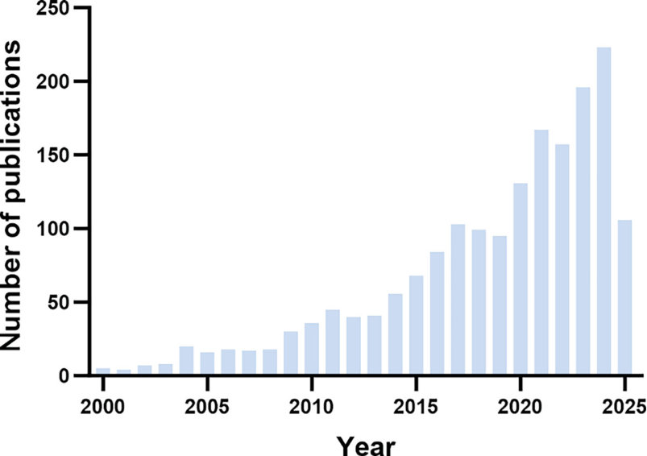
图 1 2000年至2025年5月光交联水凝胶（photocrosslinked hydrogels）相关文献的年度发表数量，展示了该领域的快速发展。（数据来源：PubMed数据库）Fig. 1 Annual number of publications on photocrosslinked hydrogels from 2000 to 2025.05, illustrating the field’s rapid growth. (Data source: PubMed database)
光交联水凝胶的快速凝胶化特性也使其常被用作密封剂和黏合剂（Ono et al. 2000）。例如，Miki等利用光交联聚合物封闭了97%的实验性角膜裂伤（Miki et al. 2002），该方法有望为患者角膜裂伤的治疗及其他无缝合眼科手术带来益处。近年来，光交联水凝胶在药物递送中的应用也引起了广泛关注。通过调节交联度可以控制药物释放速率，从而利用光刺激实现定向释放。例如，Chaudhary等合成了一种光交联双网络（dual network），确保镁、氧和聚乙醇酸（polyglycolic acid, PGA）在30天内实现可控释放（Chaudhary et al. 2025）。在骨软骨（osteochondral, OC）组织工程领域，自2004年起便开始应用光交联水凝胶（Nettles et al. 2004）。大量研究表明，此类水凝胶在体外能够维持包封软骨细胞的表型并增强软骨基质合成，同时在体内骨软骨缺损模型中可加速修复（Zhu et al. 2023），表明其在骨软骨再生方面具有巨大潜力。光照射是一种便捷且无创的远程调控手段，无需直接接触即可对水凝胶进行控制。这种调控能力使研究人员能够根据需要精细调节水凝胶的特性。因此，光响应系统特别适用于需要动态或局部响应的应用场景。光交联水凝胶所用的材料决定了其基本性能和应用范围。目前，这些材料主要分为天然和合成两大类：天然材料包括甲基丙烯酰化明胶（gelatin methacryloyl, GelMA）、甲基丙烯酰化透明质酸（hyaluronic methacrylate, HAMA）、透明质酸-硝基苄基（hyaluronic acid-nitrobenzyl, HA-NB）、甲基丙烯酰化丝素蛋白（silk methacrylate, SilMA）和甲基丙烯酰化壳聚糖（chitosan methacrylate, CSMA）等；合成材料则包括聚乙二醇二丙烯酸酯（poly-(ethylene glycol) diacrylate, PEGDA）、聚丙烯酰胺（polyacrylamide, PAAm）及类似化合物。由这些材料制成的光交联水凝胶在紫外光或可见光照射下可发生由液态到固态的宏观转变。光源、剂量、波长、曝光时间和照射位置等均可影响这些水凝胶的响应（Zhang et al. 2024b）。目前，光聚合（photopolymerization）方法主要包括自由基链聚合、巯基-烯（thiol–ene）光交联和光介导氧化还原交联（Reyhani et al. 2019）。这些反应通常需要引发剂或催化剂的存在，即所谓的光引发剂（photoinitiator）。2-羟基-4-(2-羟基乙氧基)甲基苯丙酮（2-hydroxy 4(2-hydroxyethoxy)-methylpropiophenone, Irgacure 2959）、luzindole基光引发剂（LAP）、核黄素（riboflavin）、伊红Y（Eosin Y）和VA-086等常用光引发剂已广泛应用于水凝胶光交联。选择合适的光引发剂需要综合考虑多种因素——包括光引发剂类型、光源特性（如波长和强度）、氧浓度、pH及其他环境条件——因为这些参数直接影响交联动力学和水凝胶的最终性能。本章全面综述了光交联水凝胶用于骨软骨再生的最新进展。首先，概述了制备光交联水凝胶的常用材料，包括天然材料和合成材料，并讨论了光引发剂的选择以及影响光交联效率和一致性的关键因素，同时着重指出确定最佳光引发剂所面临的挑战。
自由基链聚合 自由基链聚合是活性材料光聚合形成水凝胶（hydrogel）过程中最常用的化学机制。该过程通常经历三个不同阶段：引发（initiation）、增长（propagation）和终止（termination）。在引发阶段，光引发剂（photoinitiator）在光照下发生光解裂解，产生活性自由基物种 (Lim et al. 2020)。这些高活性中间体随后与单体单元相互作用，形成初始共价键，作为聚合物网络发展的成核位点。在增长阶段，自由基化的单体通过链增长机制继续与更多单体分子反应，同时产生新的自由基位点并延长聚合物链。该过程在终止阶段结束，自由基物种通过偶合或歧化反应，最终形成最终的交联聚合物网络 (Elkhoury et al. 2023)。自由基光聚合虽然具有快速的反应动力学，能够高效交联聚合物材料，但容易受到氧阻聚（oxygen inhibition）的影响——这是光聚合体系中的一个重大技术挑战。这种现象产生的原因是大气中的氧气扩散进入未固化的材料中，有效淬灭了活性自由基物种，导致交联不完全。这种不完全聚合会损害制备构建物的结构完整性和尺寸精度，从而限制了所能达到的精度，尤其是在复杂组织工程的生物打印（bioprinting）应用中 (Elkhoury et al. 2023)。
巯基-烯光交联 巯基-烯光交联是一种化学反应，其中巯基和烯烃基团在光照下发生反应并形成共价键。与自由基链聚合相比，巯基-烯光交联对交联过程具有更强的可控性，因为交联剂的浓度、长度和官能度均可加以调整，以调控交联基质的力学性能、孔径和密度。此外，尽管氧对自由基的衰减作用是许多光化学反应的重大限制，但巯基-烯光活化化学为这一挑战提供了有效的解决方案。巯基-烯反应表现出快速的反应动力学，产生的有害自由基较少，且所需聚合物含量显著更低，最终有利于构建更有利于细胞的基质 (Lim et al. 2020)。值得注意的是，混合模式光聚合——即巯基-烯化学与自由基链聚合同时进行反应——可以通过利用与这两种聚合机制相关的官能团来实现。丙烯酸酯（acrylate）或甲基丙烯酸酯（methacrylate）可通过动力学链进行交联，同时与多官能巯基化合物通过逐步增长（step-growth）机制反应形成交联。Rydholm 等人通过采用二丙烯酸酯 PEG 单体与巯基单体的组合，以混合模式聚合方法开发了巯基-丙烯酸酯可降解聚合物 (Elkhoury et al. 2023)。
光介导氧化还原交联 经酚基修饰的聚合物在光氧化催化剂存在下会发生光催化氧化还原交联反应。光敏剂（photosensitizer）在吸收光后转变为激活态，从而促进活性基团的氧化。在有氧条件下，当光敏剂吸收一个光子并被激活时，会生成单线态氧（singlet oxygen）和超氧化物（superoxide）。虽然相对少见，但如果光敏剂在极短时间内连续吸收两个光子，也可能产生过氧化氢 (Lim et al. 2020)。由于两个光子的能量均可转移给氧分子，该过程会形成过氧化氢。值得注意的是，已有研究表明光交联需要氧的存在，因为氧在酚基的光氧化和光交联过程中起着关键作用。这是光介导氧化还原交联与自由基链聚合之间的一个关键区别，因为后者会被氧的存在所抑制，氧会干扰交联过程 (Elkhoury et al. 2023)。
光引发剂（photoinitiator）的类型及其机理
在光交联（photocrosslinking）中，光引发剂（photoinitiator）是至关重要的组分，因为它们负责引发聚合过程。光聚合（photopolymerization）反应中采用多种类型的光引发剂。I型光引发剂属于均裂（homo-cleavage）类。在吸收光能后，均裂直接发生，生成苯甲酰自由基（radical）和烷基自由基，而无需额外的共引发剂（co-initiator），因而是一种独立的引发过程。该过程的效率受光引发剂结构的显著影响。II型光引发剂则属于夺氢（hydrogen capture）类。吸收光后，这些光引发剂被激发至三重态（triplet state），随后与胺、硫醇等氢供体（hydrogen donor）反应生成活性自由基。然而，II型光引发剂的引发效率取决于氢供体的浓度和相容性，因为其有效性直接受这些因素影响 (Lim et al. 2020)。除上述两类光引发剂外，还有热引发剂（thermal initiator）。热引发剂在光交联体系中的核心在于热活化。热分解引发剂在受热时产生均裂自由基，从而引发单体或预聚体的聚合。热分解引发剂参与光交联的方式如下：光热协同机制是指光热剂（photothermal agent）吸收光能并将其转化为热能；由光引发剂完成初始交联，再由热引发剂中剩余未反应的部分完成深层固化；光催化剂（photocatalyst）在光照下产生活性中间体，通过还原或氧化热引发剂促进其低温分解。然而，由热引发剂触发的光交联是一种间接光响应，存在其局限性，例如反应速率慢、能耗高以及固化深度不足 (Elkhoury et al. 2023)。可见光光引发剂可根据聚合过程中产生的活性物种的性质分为自由基型或阳离子型引发剂。阳离子光引发剂在激发后产生质子酸，由于具有潜在的细胞毒性，通常不适用于生物医学领域。相比之下，自由基光引发剂可根据其引发机制进一步分为可裂解（I型）和双分子（II型）体系。I型光引发剂，如2-羟基-4-(2-羟乙氧基)甲基苯基丙酮（Irgacure 2959）和Luzindole基光引发剂（LAP），通过直接吸收入射光子并发生均裂生成两个自由基而引发聚合。这类体系的优点在于其简单性和快速的引发动力学。另一方面，II型光引发剂需要共引发剂，并通过夺氢或电子转移生成自由基的多步机制进行反应。尽管II型体系由于激活途径更为复杂而通常表现出较慢的反应速率，但其在近紫外（UV）区具有更优越的光吸收特性，因而在特定应用中更具优势 (Elkhoury et al. 2023)。
I型光引发剂 Irgacure 2959是一种市售光引发剂，在水中的溶解度至少为5 mg/mL，对于大多数在水性环境中进行的光聚合而言，该溶解度已足够高。Irgacure 2959是一种用于320–390 nm波长光聚合的光引发剂，可避免紫外光对细胞的诱变。此外，在光引发剂中加入抗氧化剂抗坏血酸（ascorbic acid）等试剂可保护软骨细胞（chondrocyte），从而降低光引发剂的细胞毒性 (Williams et al. 2005)。尽管Irgacure 2959是目前最常用的光引发剂，但由于其水溶性非常有限，研究人员将采用水溶性更高的光引发剂来替代它 (Zhu et al. 2023)。LAP是近年来开发的一种替代性水溶性光引发剂，其在水中的溶解度更高（可达8.5 wt%），且在365 nm处的摩尔消光系数（molar extinction coefficient）也高于Irgacure 2959。取代度、水凝胶浓度、引发剂浓度和紫外照射时间是调控所得水凝胶物理性能的主要参数 (Fairbanks et al. 2009)。
II型光引发剂 核黄素（riboflavin，RF）是一种水溶性维生素B2，广泛存在于生理和自然环境中。RF的结构由一个异氧嘧啶环（isoxopyrimidine ring）和一个被称为“libido侧链”的烷基链组成，该侧链在核黄素的光引发过程中发挥着重要作用，其有效粘附波长为440 nm。光交联材料在紫外光照射下可完全粘接，整个过程易于在自然环境中实现，且整体过程无毒 (Lee et al. 2023)。
曙红Y（Eosin Y）是一种无金属且易于获得的有机染料（organic dye）。与在400–800 nm波长范围内光交联（photocrosslinking）能力有限的传统基础光相比，曙红Y是一种在经济性和生态性上更为优越的催化剂，且曙红Y通常与甲基丙烯酰化明胶（gelatin methacryloyl, GelMA）交联使用，具有较低的细胞毒性（cytotoxicity）和良好的细胞活性（cell viability）（Yan et al. 2019）。
热分解引发剂VA-086是一种光引发剂（photoinitiator），通常采用波长为365–385 nm的紫外光（UV light）进行固化。根据现有报道，VA-086在生物安全性和毒性方面显著优于Irgacure 2959，并且在辐射作用下，VA-086可通过断裂单分子化学键产生自由基（free radicals）（Lin et al. 2016）。另有报道指出，当Irgacure 2959与VA-086共存时，能够以最小的紫外剂量在极短的交联时间内完成整个交联过程，且所得水凝胶（hydrogel）具有更优的力学性能（mechanical properties）和更高的细胞存活率（Han et al. 2019）。
光源参数 光源是光交联过程中的关键因素，因为光引发剂是通过吸收特定波长的光而被激活的。因此，光源在理想情况下应与光引发剂的最大吸收波长相匹配。波长范围较宽的光源可能适用于多种光引发剂；然而，如果光引发剂不能有效吸收光线，光交联过程的效率可能会受到影响。因此，波长和曝光时间的选择直接影响水凝胶的形成。紫外光的光学穿透深度有限，可能导致水凝胶内部区域交联不完全或交联不良。相比之下，可见光穿透更深，有利于更好的交联，并具有更优的组织穿透能力 (Zennifer et al. 2022)。
光源的其他参数，如光强度以及光源与生物材料之间的距离，也会显著影响光交联水凝胶的形成及其力学性能。例如，在固定距离下辐照较大或较厚的构建体时，光强度往往随深度增加而衰减，导致内部区域接收到的能量低于表面层。这种差异可能导致交联动力学的变化，最终在水凝胶内部形成不均匀的多孔网络结构 (Zennifer et al. 2022)。
氧气 Lim 等人发现，通过自由基链式聚合生物打印的 GelMA 构建体在常氧环境中辐照时容易受到氧阻聚的影响，导致构建体因交联而交联不完全，而通过采用更高的光引发剂浓度或辐照剂量可以避免这种氧阻聚 (Lim et al. 2020)。
光交联水凝胶（photocrosslinked hydrogels）在光交联之前呈液态，可便捷地灌注到所需的模具中。引发之后，即可移除模具以获得所需形状 (Goto et al. 2021)。与氰基丙烯酸酯（cyanoacrylates）等暴露于空气中即发生聚合的传统生物凝胶（biogels）相比 (Eaglstein and Sullivan 2005)，光交联水凝胶的形成时点可通过暴露于特定波长的光而得到更精确的控制 (Van Hoorick et al. 2019)。此外，与聚乳酸（polylactic acid）等传统生物材料相比，其精度更高，但对设备的要求也更高，例如需要生物3D打印机（bio-3D printers）(Ranakoti et al. 2023)。固化时间也是光交联水凝胶的一大优势。传统聚丙烯酰胺凝胶（polyacrylamide gels）通常需要数分钟才能固化，而大多数光交联水凝胶仅需数秒辐照即可固化。因此，光交联水凝胶不仅适用于简单的灌注后成型技术，还适用于包括挤出式和浸没式3D打印机（extrusion and immersion 3D printers）在内的各类3D打印方法 (Chae et al. 2023)。在需要精确组织再生的临床应用中，特别是在骨与牙科重建领域，再生生物材料（regenerative biomaterials）必须满足易于塑形的要求。不规则骨缺损的治疗是一项临床难题，因为现有的骨移植材料无法完全满足修复需求。理想的骨修复材料需要具备良好的可塑性以适应不规则骨缺损、足够的机械强度以维持骨再生空间，同时还需具备生物相容性和可降解性。半水硫酸钙（calcium sulfate hemihydrate，牙科石膏）等传统材料在混合阶段表现出良好的可塑性，但其应用因遇水即引发的快速凝固动力学而受到显著限制。这种骤然的聚合机制通常在5–15 min内实现最终硬化，给临床医生在时间可控性方面带来了关键性限制 (Straub et al. 2025)。新兴的可光交联水凝胶通过时空可控的溶胶-凝胶（sol-gel）相转变克服了这些局限。例如，Wang等人制备了一种旨在修复不规则骨缺损的新型增塑水凝胶（DR-Net）。该水凝胶由动态网络与刚性网络顺序交联而成，兼具可塑性、空间保持能力和成骨活性（osteogenic activity）。该研究合成了动态网络水凝胶（D-Net），其由巯基（4-arm-PEG-SH）与银离子之间的配位作用形成，从而使其具有可塑性；随后通过光交联反应形成刚性网络，以满足骨骼所需的机械性能。通过光交联形成的刚性网络显著改善了水凝胶的机械性能，使其能够抵抗作用于周围组织的外部应力，并维持骨再生所需的空间 (Wang et al. 2024)。此外，与基于温度的技术等其他方法相比，基于光的微纳加工技术展现出更优的精度。这些技术可通过双光子吸收（two-photon absorption）或重复曝光操作获得极高的精度 (Kufelt et al. 2015)。仿生血管网络（biomimetic vascular networks）、微流控芯片（microfluidic chips）和器官芯片（organ-on-chip）——在制造这类复杂生物医学器件时，加工精度受到高度重视。
因此，光交联水凝胶在此类研究中得到了广泛应用。在构建体外疾病模型时，必须考虑对运动的模拟，尤其是对于肺、支气管和关节等运动系统。Hao Liu等人通过将GelMA浇注到狭窄的PDMS通道中并随后原位光交联，报道了一种用于模拟骨关节炎（osteoarthritis）的软骨芯片（cartilage on a chip）(Liu et al. 2024)。此外，复杂血管网络的体外构建一直是一项重大挑战。Jing Nie等人提出了一种简便且具有细胞相容性的方法，用于制造具有复杂微通道结构的基于GelMA的微流控血管芯片。通过两次独立光照实现的双相交联策略（double-phase crosslinking strategy）保证了微通道的稳定性和生物相容性，这证明了光交联水凝胶在构建复杂三维微流控网络方面的显著可行性 (Nie et al. 2018)。此外，新颖而精密的方法仍在不断被开发，以实现范围更广、更复杂的网络以及精巧的基于光的解决方案。Martin Regehly等人展示了双色体光刻（xolography）作为一项新兴3D打印技术的广阔应用前景，该技术具有高分辨率——x和y方向分辨率为~25 μm、z方向为50 μm——以及比传统双光子光聚合（two-photon photopolymerization）快10⁴至10⁵倍的快速打印能力 (Regehly et al. 2020)。先进3D打印技术与光固化技术向生物学和医学领域的转化仍是一个渐进的过程，需要持续开展跨学科研究。
宽范围的力学性能
光交联水凝胶（photocrosslinked hydrogel）的力学性能，包括刚度和黏弹性，均可通过工程化手段进行调控。以往关于力学调控的研究主要采用聚丙烯酰胺（polyacrylamide）和PDMS（Kalashnikov and Moraes 2023）。PDMS仅在暴露于约70 °C的高温时才能发生聚合。相比之下，光交联水凝胶的力学性能可通过两种简单的机制加以改变。第一种是通过调节光交联水凝胶的浓度。通常，浓度的增加伴随着更强的力学性能。例如，10%的GelMA比7.5%的GelMA表现出更高的硬度（Zhang et al. 2023a）。第二种方法涉及调整光交联基团，这可以通过改变光交联基团的类型和光交联基团的取代率来实现。在相同浓度下，取代率为60%的GelMA比取代率为30%的GelMA具有更强的力学性能（Yue et al. 2015）。近年来，物理因素在组织发育与再生中的作用日益受到重视。然而，传统培养皿的力学强度远超大多数组织的生理环境。此外，基于PDMS等传统软材料的培养模型大多为二维，难以很好地重现体内的真实状态。包封细胞的光交联水凝胶能更好地模拟体内环境。基于这些力学优势，光交联水凝胶正被广泛应用于该领域。Zhang等人的研究表明，柔软的GelMA能够增强骨髓基质细胞（bone marrow stromal cells, BMSCs）的分泌因子，进而使造血干细胞（hematopoietic stem cells, HSCs）恢复年轻态（Zhang et al. 2023a）。低浓度的GelMA构建了柔软的三维环境，逆转了BMSCs因分离和扩增培养而在二维环境（培养皿）中被激活的Yap/Taz信号。在随后的共培养中，柔软GelMA中的BMSCs对HSCs表现出年轻化作用。此外，光交联水凝胶已被用于多种涉及力学的疾病模型。此外，与以往认为光交联水凝胶力学性能较低的观点相反，多项研究还表明，其力学性能可以通过增强手段得到提升。增强型光交联水凝胶可通过多种方法实现，例如添加纳米纤维（nanofiber）或MXene（Zeng et al. 2022），甚至可满足骨组织工程中的力学要求。Wang等人采用三层GelMA水凝胶支架修复骨软骨（osteochondral, OC）缺损，其中三层水凝胶通过顺序固化工艺实现共价结合以增强强度。支架的上层与硫酸软骨素（chondroitin sulfate）共价结合，以促进BMSCs的成软骨分化。水凝胶的中层和下层引入梯度含量的羟基磷灰石（hydroxyapatite），形成具有梯度力学强度的支架，有效增强了其促血管生成和成骨诱导能力。三层凝胶分别通过相应的交联方法达到了软骨和骨的相应力学要求，并获得了相应的生物活性。
化学可修饰性
生物材料（biomaterials）通常需要特定的化学修饰以实现预期的功能。最常见的是，这些修饰用于非细胞黏附性材料，例如细胞培养皿（通常为聚乙烯塑料或聚苯乙烯塑料）、某些金属植入物（钛）以及聚丙烯酰胺（polyacrylamide）。此外，通过修饰某些生物活性分子（如抗菌肽（antimicrobial peptides））来实现抗菌功效的研究也有很多 (Ye et al. 2021)。大多数光交联（photocrosslinked）水凝胶以明胶（gelatin）和丝素蛋白（silk）等天然生物材料为基础，这些材料含有大量反应性基团，如氨基和巯基。此外，与温度和pH等可能影响生物分子活性的方法相比，通过光引发的引发方式温和，能更好地保留生物活性，因此对生物活性分子的修饰，尤其是那些具有促进细胞活性和免疫调节作用的分子，已被广泛应用于各类光交联水凝胶的研究中 (Zeng et al. 2024)。总体而言，生物材料的功能化往往聚焦于以下需求：增强黏附、促进细胞增殖以及引导细胞分化。在细胞黏附方面，水凝胶的生物功能化已被证明对细胞黏附具有显著影响。将ECM来源的蛋白和多肽（包括FN、层粘连蛋白（laminin）和RGD序列）共价固定，可为细胞提供黏附位点，并促进细胞与水凝胶之间的相互作用 (Vitale et al. 2022)。研究表明，将RGD多肽修饰到PEG水凝胶上可显著增强细胞黏附，甚至可以实现对特定细胞的选择性黏附。适配体（aptamer）功能化的水凝胶可通过与细胞表面蛋白的特异性结合实现选择性细胞黏附。适配体修饰的水凝胶对白血病细胞表现出高度的特异性，而对非白血病细胞的黏附极少 (Zhang et al. 2013)。在细胞增殖方面，生物功能化水凝胶已被证明可通过提供生长因子（growth factors）和模拟ECM微环境来促进细胞增殖。固定有生长因子（如FGF-2、VEGF和PDGF）的水凝胶已被证明可持续释放这些因子 (Lv et al. 2023)。这为细胞提供了持续的刺激信号，从而促进其增殖。此外，水凝胶的生物功能化已被证明可影响细胞的代谢活动，从而间接促进细胞增殖。肝素（heparin）修饰的水凝胶已被证明可结合多种生长因子、调节细胞代谢通路，并为细胞增殖提供有利的微环境 (Kim et al. 2016)。此外，水凝胶的生物功能化已被证明在细胞分化的调控中发挥着关键作用。多种生物功能化策略已被证明可影响细胞分化，尽管其特异性程度各不相同。具体而言，生长因子是组织损伤治疗中广泛应用的一类活性药物。作为蛋白质分子，它们可以很容易地被掺入或共价结合到光固化水凝胶中，这一过程不仅能保留其生物活性，还有助于实现有效的缓释。例如，将BMP-2固定于水凝胶上已被证明可促进间充质干细胞（mesenchymal stem cells）向成骨细胞（osteoblasts）分化，从而推动骨组织工程（bone tissue engineering）的发展 (Divband et al. 2021)。
生物相容性
生物材料，尤其是合成材料，其生物相容性（biocompatibility）欠佳。可降解材料在降解过程中可能产生毒性副产物，聚乳酸（polylactic acid）降解产生的乳酸便是最常见的例子。对于不可降解材料而言，机体对异物的长期排斥是一个普遍存在的问题。这两方面因素都限制了生物材料在再生医学（regenerative medicine）中的应用，因为可能存在的细胞毒性以及排斥反应引起的炎症会对组织再生造成损害。光交联水凝胶（photocrosslinked hydrogel）的生物相容性是其核心优势之一。基于胶原蛋白（collagen）和透明质酸（hyaluronic acid）等天然材料的光交联水凝胶具有较低的细胞毒性，因为其大部分降解产物由与人体相同的氨基酸组成。此外，基于外泌体（exosome）或其他囊泡的疗法对递送系统的生物相容性要求更高，以保持其活性，因此大多数外泌体递送研究均基于光交联水凝胶（Cao et al. 2024）。传统的氰基丙烯酸酯（cyanoacrylate）类医用凝胶虽然黏附性强，但具有细胞毒性，而光交联技术则显著降低了对周围组织造成损伤的风险。研究表明，光交联透明质酸水凝胶能够支持骨髓间充质干细胞（BMSCs）的增殖并向髓核（nucleus pulposus）分化，且细胞存活率最佳。在细胞培养中，许多类型的细胞（如神经细胞、干细胞等）难以进行体外培养。此外，不同细胞所需的培养条件也不尽相同。对于神经元细胞而言，体外二维培养丢失了体内的三维结构信息，导致其突触结构被破坏，而其他体外刺激也容易导致其功能丧失。Yang Liu等人通过对胶原蛋白进行甲基丙烯酰化改性，合成了一种光固化胶原蛋白水凝胶，随后的实验证明该凝胶能够有效促进神经元细胞和角膜上皮的生长与整合，是用于角膜神经再生的一种优异的生物相容性材料（Liu et al. 2023）。非光交联水凝胶，尤其是通过化学交联形成的水凝胶，存在若干生物相容性方面的挑战，这可能限制其在生物医学应用中的适用性。此外，生物相容性差并非影响传统生物材料的唯一因素，其还伴随着诸如放热特性等缺点。与常规固化材料及其他材料相比，光交联水凝胶在生物相容性方面表现出显著优势。然而，必须认识到其存在两个显著的挑战。其一是光毒性（phototoxicity），即光（尤其是光交联中常用的短波光）对生物组织产生的不良影响；其二是光引发剂（photoinitiator）及其产生的自由基的毒性（Tan et al. 2022）。
在光引发剂（photoinitiator，如 Irgacure2959）存在下进行辐照 (Klotz et al. 2016)。紫外线（UV）诱导的甲基丙烯酸酯（methacrylate）基团或降冰片烯（norbornene, NB）聚合，可形成稳定且具有生物相容性的水凝胶网络。甲基丙烯酸化程度和巯基-烯（thiol–ene）点击反应均可在合成过程中精确控制，从而能够精细调节水凝胶的力学性能、降解速率和生物活性，使其非常适合骨软骨（osteochondral, OC）再生应用 (Ooi et al. 2018)。目前，GelMA 凭借其优异的生物相容性、可调的机械强度和可控的降解行为，已成为骨软骨工程中应用最广泛的光交联水凝胶之一。其尤为有利之处在于保留了天然明胶固有的生物基序，例如促进整合素（integrin）介导的细胞黏附的精氨酸-甘氨酸-天冬氨酸（arginine-glycine-aspartic acid, RGD）序列，以及能够实现细胞介导的细胞外基质（extracellular matrix, ECM）重塑的基质金属蛋白酶（matrix metalloproteinase）敏感结构域。这些特性使包封或浸润的细胞能够与支架动态相互作用，促进黏附、迁移、增殖和分化等过程。这些相互作用在骨软骨修复中至关重要，因为材料必须适应并响应软骨层与软骨下骨层之间截然不同的力学和生物学环境。逐层（layer-by-layer）制造策略已成为复制天然骨软骨组织分层分区结构的一种有前景的技术。该方法能够再现软骨和骨各不相同的微结构和力学性能 (Hull et al. 2022)。然而，包括组织间液流动、营养物扩散和细胞迁移在内的动态生理环境，常常会破坏层状支架中最初明确界定的生物活性梯度。这可能导致独特空间信号的丧失，并最终导致组织再生效率低下。为应对这一挑战，Zhang 等人开发了一种由 PCL、纳米羟基磷灰石、他喹莫德（tasquinimod）和负载软骨细胞的 GelMA 组成的新型 3D 打印仿生支架。GelMA 组分使用紫外模具腔（XL-1000 UV Crosslinker；Spectronics Corporation, NY, USA）在 3 mW/cm² 的强度下光聚合 1 min (Wu et al. 2024)。其设计的一项关键创新是引入了由致密 PCL、nHA 和他喹莫德组成的钙化界面层，该层在物理和生物学上将软骨层（含有他喹莫德及负载于 GelMA 中的软骨细胞）与软骨下骨层（由多孔 PCL 构成）分隔开。该钙化界面模拟天然潮线（tidemark），作为一个过渡区域，可增强整合并促进软骨区室与骨区室之间的交流。在大鼠骨软骨缺损模型中植入 24 周后，该仿生支架显著增强了软骨-软骨下骨的整合，并促进了透明样软骨的再生。组织学和免疫组织化学分析显示，与对照组（空白、仅 PCL 和 PCL-GelMA 支架）相比，组织形态更为均匀，软骨特异性标志物（如 II 型胶原和蛋白聚糖（aggrecan））表达更高，软骨下骨重塑效果更好 (Wu et al. 2024)。这些结果凸显了仿生钙化界面层在促进有效骨软骨修复中的关键作用 (Wu et al. 2024)。GelMA 在骨软骨组织工程中的另一个有前景的应用是 3D 生物打印。然而，GelMA 在水溶液形式下黏度较低，这给基于挤出的生物打印带来了挑战，常常导致形状保真度差和打印结构坍塌。为克服这一局限，通常会在水凝胶配方中加入黏度更高的组分（如羟基磷灰石（hydroxyapatite）），以增强其流变性能并改善可打印性。HA 不仅能增加黏度，还因其作为天然 ECM 组分的作用而能提供额外的生物学功能。例如，有研究利用半浸入式动态羟基磷灰石层和多孔羟基磷灰石层构建了一种基于 GelMA 的双相 3D 打印支架，其中 GelMA/羟基磷灰石复合结构同时提供了机械支撑和生物学信号 (Chen et al. 2022)。由动态 HA 组成的上层模拟软骨的黏弹性特性，并支持软骨细胞增殖和 ECM 分泌。与此同时，下方多孔羟基磷灰石区域则有利于成骨细胞的黏附、矿化和软骨下骨再生。打印完成的构建体随后在紫外光下进行光交联以稳定其结构。动态 GelMA/羟基磷灰石组分的整合，通过提供指导性的生化和生物力学信号来调节局部细胞微环境。该微环境可增强骨髓间充质干细胞（BMSCs）的招募、黏附、迁移和谱系特异性分化，而 BMSCs 在内源性组织再生中发挥着核心作用。体内研究表明，该双相支架对全层骨软骨缺损实现了更优的修复，包括再生出具有透明样特征的软骨层，以及重建出具有有序小梁结构的软骨下骨 (Chen et al. 2022)。尽管 GelMA 多年来一直是骨软骨再生的金标准，但基于降冰片烯功能化明胶（GelNB）和巯基化交联剂的巯基-烯水凝胶体系近年来日益受到重视 (McCall and Anseth 2012)。与巯基化明胶（GelS）混合可得到超快固化的光点击（photoclick）水凝胶 GelNB/GelS。其相对于 GelMA 的优越性能，如光引发剂用量大幅减少（0.03% (w/v)）、超快固化（1–2 s）、更高的网络均匀性、聚合后功能化能力、与细胞组分的交叉反应性极低，以及水凝胶前体和降解产物生物相容性的改善，使 3D 生物打印中原代细胞的存活率得以提高 (Pereira and Bártolo 2015)。如先前报道所示，GelNB 已广泛应用于组织工程的多个领域，包括骨软骨、皮肤、骨、神经和血管再生 (Ding et al. 2024)。在骨软骨再生方面，Guo 等人开发了一种由 GelNB 和巯基化明胶（GelSH）组成的多功能修复系统，该系统通过光介导的巯基-烯点击化学进行交联，既提供结构支撑又提供空间引导。这种可光点击的水凝胶表现出快速凝胶化和优异的生物相容性，并被用于包封源自人脂肪来源间充质干细胞的缺氧诱导凋亡细胞外囊泡（hypoxia-induced apoptotic extracellular vesicles, H-ApoEVs）。所制备的复合材料被称为 GelNB/GelSH–ECM–H-ApoEVs 支架，可作为 H-ApoEVs 的持续递送平台。体外研究表明，该系统显著促进了 BMSC 的增殖、迁移、成软骨分化以及巨噬细胞 M2 极化。该支架的治疗效果进一步在大鼠骨软骨缺损模型（直径 2.0 mm，深度 1.0 mm）中得到评估。植入 12 周后，复合组表现出更优的组织整合，再生组织在颜色和形态上均与天然软骨高度相似。总之，明胶基水凝胶凭借其生物相容性、可调性能和易于功能化的特点，为骨软骨修复提供了多样化的平台。羟基磷灰石、PCL 和纳米羟基磷灰石等支撑材料的掺入，进一步增强了这些支架的力学完整性和生物学功能。随着 3D 生物打印和仿生分层等策略的不断发展，明胶基体系有望在骨软骨缺损下一代疗法的开发中发挥越来越重要的作用。
透明质酸 甲基丙烯酸化透明质酸（HAMA）水凝胶可通过透明质酸与甲基丙烯酸酐或甲基丙烯酸缩水甘油酯的反应制得。HAMA在保持良好生物相容性的同时，具有较高的硬度和抗降解性（Shen et al. 2023）。在各种细胞外基质（ECM）替代物中，HAMA因其生物学相关性和多功能性而脱颖而出，成为一种关键组分（Hussey et al. 2018）。作为透明质酸的改性衍生物，HAMA与天然ECM组分高度相似，常被用于构建3D细胞负载水凝胶。此外，HAMA与3D打印技术高度兼容，能够制备模拟骨软骨（OC）组织异质性理化性质的复杂结构。例如，Wang等人设计了一种负载骨髓间充质干细胞（BMSC）的3D生物打印多层支架，以构建可有效修复进展期骨关节炎（OA）关节中OC缺陷的微环境。支架上层由负载KGN的PCL与负载BMSC的HAMA水凝胶组成，用于软骨修复；下层则由负载β-TCP的PCL构成，以模拟并支持软骨下骨再生。基于PCL的框架确保了连续的双层结构，无明显界面屏障。另外，支架表面还涂覆了一层负载双氯芬酸钠的MMP敏感性HAMA水凝胶，用于控制进展期OA的炎症。支架植入12周后，与空白对照相比，多层支架表现出更少的软骨降解、更高的II型胶原表达和更低的IL-1β表达，证明了负载BMSC的支架治疗在体内对OC缺陷的软骨保护及炎症调控作用（Liu et al. 2021）。此外，电刺激可调节细胞膜电位、激活信号转导通路并调控细胞间相互作用，从而增强特定蛋白的合成并促进细胞分化，因而在大面积组织修复与再生中备受关注。Zhang等人开发了一种力-电转换水凝胶微球（Piezo@CR MPs），通过局部电刺激诱导特定干细胞聚集并促进成软骨分化（Han et al. 2025）。这些微球含有包埋于HAMA水凝胶中的钛酸钡纳米颗粒，其表面的聚多巴胺涂层通过π-π共轭和静电作用力与干细胞招募肽（CR）结合，具有优异的压电性能，可将压力（超声）转化为电刺激，引导BMSC定植并发生软骨形成（Han et al. 2025）。该水凝胶微球采用微流控技术制备，并经波长365 nm的紫外光照射10 min以促进微球交联。治疗2–4个月后，超声激活的压电组缺陷区域几乎完全被新生软骨组织填充，且新生组织与周围天然软骨整合良好。这些结果在兔和大鼠模型中均得到验证，表明Piezo@CR微颗粒可显著促进股骨内侧滑车临界尺寸OC缺陷的再生（Han et al. 2025）。与细胞负载支架相比，无细胞支架具有若干优势，包括体外细胞扩增和移植过程中污染风险更低、免疫原性更低，并消除了培养过程中维持细胞表型所面临的挑战（Zhang et al. 2024a）。
丝素蛋白 与 GelMA 相比，光交联的甲基丙烯酸酯化丝素蛋白（silk methacrylate，SilMA）除具有良好的生物相容性和可控的降解性外，还具有更强的力学性能。这些特性使 SilMA 水凝胶在组织工程（tissue engineering）应用中极具吸引力，尤其是在骨软骨（osteochondral，OC）修复领域，因为软骨与软骨下骨（subchondral bone）必须协同再生。例如，Tao 等人制备了一种多层支架，其多孔 GelMA 层通过由丙烯酸酯-PEG-N-羟基琥珀酰亚胺（acrylate-PEG-N-hydroxysuccinimide）组成的连接臂与软骨诱导肽（chondroinductive peptide）CK2.1 共价交联；该层再与负载 N-乳酰苯丙氨酸（N-lactoyl-phenylalanine，Lac-Phe）的 SilMA 相结合，并涂覆于 3D 打印的 45S5 生物活性玻璃（bioactive glass，BG）支架上。整个构建体经短暂暴露于 405 nm 紫外光即可实现完全光引发。前者旨在实现软骨修复，后者旨在实现软骨下骨修复。术后 12 周，该复合组的关节软骨表现出连续、平滑的新生软骨界面，再生软骨层更厚，且糖胺聚糖（glycosaminoglycan，GAG）阳性的新生软骨与周围软骨组织实现了完美整合（Liu et al. 2025）。近期研究表明，光交联 SilMA 支架能够通过天然骨通道有效募集骨髓间充质干细胞（bone marrow mesenchymal stem cells，BMSCs），引导其成软骨分化和成骨分化，并支持具有分区结构的新生软骨（neocartilage）和软骨下骨的形成。例如，一种方法是将卡托金（kartogenin，KGN）和小檗碱（berberine）掺入双层 SilMA/富血小板血浆（platelet-rich plasma，PRP）水凝胶支架中，该支架与 LAP 混合后，在强度为 30 mW/cm² 的紫外光下进行光交联。上层为含 KGN 的 SilMA/PRP，用于促进 BMSC 成软骨分化；下层为含小檗碱的 SilMA/PRP，用于促进 BMSC 成骨分化。该策略最终增强了对 OC 缺损内 BMSC 多谱系分化的长期调控（Jiang et al. 2022）。另一个例子是负载 TGF-β3/BMP2 的 SilMA 水凝胶，其上层为封装 TGF-β3 的 SilMA，用于软骨修复；下层为封装 BMP2 的 SilMA，用于软骨下骨修复（Wu et al. 2021）。这两种负载多肽的多层支架为 OC 再生的临床应用提供了一种颇具前景的新途径。
海藻酸盐 基于甲基丙烯酸酯化海藻酸盐（methacrylate alginate，AlgMA）的水凝胶可通过羧酸基团与 Ca²⁺ 等二价阳离子之间的离子交联方便地制备。光交联 AlgMA 的合成方法是在海藻酸盐分子中引入甲基丙烯酸酯基团，并对其羧基与羟基侧基进行修饰（Pien et al. 2021）。由于天然组织具有复杂的分级结构，同时包含关节软骨和软骨下骨，OC 缺损的再生仍然是一项重大挑战。OC 支架的成功设计有赖于多项关键特性，包括：足以支持细胞介导的基质沉积和血管化的充分孔隙率与孔隙连通性；可控的生物降解性或生物可吸收性；有利于细胞黏附和分化的表面化学性质；以及与天然软骨和软骨下骨组织性能高度匹配的可调力学性能（Killion et al. 2011）。在此背景下，交联的海藻酸盐基水凝胶可提供有利的微环境，支持宿主祖细胞或干细胞（尤其是 BMSCs）的募集、归巢和分化。例如，Dai 等人开发了一种梯度化、可 3D 打印的双层 OC 水凝胶体系：软骨层由富含高浓度卡托金（KGN）的 AlgMA 和 GelMA 组成，而软骨下骨层由 AlgMA、GelMA 和 β-磷酸三钙（β-tricalcium phosphate，β-TCP）组成，且含有低浓度的 KGN。两层均负载 BMSCs，并采用苯基-2,4,6-三甲基苯甲酰基次膦酸锂（LAP）在 405 nm 光照下进行光交联，该光照对活细胞无细胞毒性。植入后 6 周，接受 AlgMA 基水凝胶治疗的大鼠实现了完全的 OC 修复，再生组织呈现光滑、白色、不透明的表面，与相邻天然软骨极为相似。此外，AlgMA 上的功能性化学基团使多孔水凝胶的制备成为可能。先前有研究报道，借助琼脂模具中钙离子的受控扩散，制备了基于 AlgMA-聚甲基丙烯酸酯（polymethacrylate）杂化水凝胶、用于骨与软骨再生的多孔支架（Stagnaro et al. 2018）。在该体系中，海藻酸盐提供模拟细胞外基质（extracellular matrix，ECM）的微环境，而聚甲基丙烯酸酯则增强杂化支架的力学强度，从而弥补纯海藻酸盐固有的力学缺陷（Stagnaro et al. 2018）。然而，该杂化体系的再生效率尚未在体内研究中得到评估。
壳聚糖（chitosan）光交联甲基丙烯酸酯化壳聚糖（HCMA）是通过CH伯胺基团与甲基丙烯酸酐（methacrylic anhydride）反应合成的 (Pien et al. 2021)。多项研究表明，光交联HCMA水凝胶能够促进骨髓间充质干细胞（BMSCs）的归巢，促进软骨分化和成骨分化，并最终恢复全层骨软骨（OC）缺损的结构与功能完整性 (Han et al. 2015)。例如，有研究开发了一种具有梯度组成的双层光交联明胶-壳聚糖水凝胶，以模拟天然骨软骨组织的分区结构 (Han et al. 2015)。首先，明胶和羧甲基壳聚糖与甲基丙烯酸缩水甘油酯反应，得到甲基丙烯酸酯化明胶（Gtn-GMA）和甲基丙烯酸酯化羧甲基壳聚糖（CS-GMA），随后在365 nm紫外光下照射30 min。水凝胶在原位形成后，可提供分别适合软骨形成和成骨过程的独特微环境。将该支架植入兔骨软骨缺损模型后，其支持了周围组织宿主细胞的迁移与分化，从而促进了区域性软骨和软骨下骨的形成。在另一项研究中，研究者制备了一种负载KGN（一种已知可诱导软骨形成的小分子）的可注射壳聚糖基水凝胶，并通过光交联增强其力学完整性 (Dehghan-Baniani et al. 2020)。该水凝胶不仅支持间充质干细胞（MSCs）的黏附与存活，还通过递送局部生化信号促进原位软骨分化。在兔软骨缺损模型中的体内植入实验表明，其通过激活内源性修复通路实现了有效的软骨再生。综上所述，这些发现凸显了光交联HCMA水凝胶作为基于细胞或无细胞平台的潜力，可利用天然细胞机制实现骨软骨修复。然而，仍需进一步研究以充分发掘其潜力。
硫酸软骨素（chondroitin sulfate）基于甲基丙烯酸酯化壳聚糖（CSMA）的水凝胶可通过光引发聚合或热引发聚合进行交联，表现出典型的黏弹性行为和良好的生物相容性。在热引发体系中，此前有研究报道了一种用于骨软骨缺损再生的双相水凝胶的制备，该研究利用两层之间的密度差异，并采用热响应的快速交联策略。上层水凝胶层由CSMA与N-异丙基丙烯酰胺共聚形成，而下层由丙烯酰氯-PCL-PEG-PCL-丙烯酰氯、丙烯酰胺和丙烯酰氯-PCL-PCL-PEG-丙烯酰氯组成。两层之间的界面区域首先使用葡萄糖酸钙和海藻酸盐进行物理交联，随后对其他组分中存在的碳-碳双键进行化学交联 (Liao et al. 2017)。植入18周后，双相水凝胶组再生的软骨与天然组织实现了均匀整合，从而增强了骨软骨缺损的修复效果 (Liao et al. 2017)。相比之下，在光引发聚合中，CSMA常与GelMA联合使用。例如，Yu等人开发了一种由丙烯酰氯-PCL-PEG-PCL-丙烯酰氯、GelMA和CSMA组成的复合水凝胶体系。在该体系中，GelMA由于其高甲基丙烯酸酯化程度而作为主要的光交联组分，在光引发剂（如LAP）存在下，能够在光照时高效形成网络结构。尽管CSMA也含有可发生光反应的甲基丙烯酸酯基团，但其通常以较低浓度掺入，主要用于增强力学性能、界面黏附和生物学功能 (Guan et al. 2021)。因此，在骨软骨再生领域，CSMA基水凝胶主要采用热引发自由基聚合制备。然而，光引发CSMA交联在骨软骨缺损修复中的应用仍鲜有探索，值得进一步研究。
葡聚糖（dextran） 光交联（photocrosslinked）DexMA是通过在葡聚糖主链中引入甲基丙烯酸酯基团而合成的。制备DexMA水凝胶的一种常用方法是将含有0.1 wt%光引发剂（photoinitiator）（如Irgacure 2959）的前驱体溶液暴露于紫外光下。DexMA具有较宽的溶胀范围，可为细胞生长提供良好的微环境，且该微环境可通过缓冲液的pH值和甲基丙烯酸酯取代度加以调控（Kim et al. 1999）。凭借优异的生物相容性、可调的力学性能和高效的光聚合行为，DexMA已被广泛应用于皮肤、角膜和骨再生等多种组织工程领域。例如，Jonas等开发了光交联葡聚糖基水凝胶，以评估其作为细胞或促血管生成细胞因子递送系统在小鼠临界尺寸颅骨缺损模型（murine critical-sized calvarial defect model）中的应用潜力。这些水凝胶负载内皮细胞（endothelial cells）与人成骨细胞（osteoblasts）的共培养物，并添加或不添加基质细胞衍生因子-1（stromal-derived factor-1）；其制备方法是将DexMA和LAP溶解于PBS中，随后置于405 nm可见光下照射60 s。体内实验结果表明，葡聚糖基水凝胶复合材料具有通过向缺损部位递送细胞和细胞因子来支持骨再生的潜力（Ritz et al. 2018）。此外，Ma等设计了一种由光交联苯硼酸（phenylboronic acid）修饰的DexMA、胆碱类离子液体（choline-based ionic liquid）和结晶PVA组成的多功能水凝胶。该水凝胶表现出活性氧（ROS）清除能力、电活性和实时机械应力传感功能，为慢性糖尿病创面的治疗与监测提供了协同平台，而慢性糖尿病创面是一种对皮肤再生尤为不利的病症（Zhang et al. 2023b）。然而，尽管性能前景可观，光交联DexMA在OC再生中的应用仍在很大程度上未得到充分探索，值得进一步研究。
合成光交联材料
聚乙二醇（poly(ethylene glycol)，PEG） 光交联PEG水凝胶已被广泛应用于生物打印（bioprinting）领域，既可单独使用，也可与其他聚合物联合使用，为包封的细胞提供柔软且亲水的环境。聚乙二醇二丙烯酸酯（poly(ethylene glycol) diacrylate，PEGDA）是一种PEG衍生物，通过以丙烯酸酯取代PEG本身的末端羟基而制得。其PEG链两端均含有带双键的丙烯酸酯基团，使其能够在光引发剂分子（如Irgacure2959）存在下发生自由基引发的链式光聚合，形成三维聚合物网络 (Choi et al. 2019)。与PEGDA相比，PEGNB水凝胶具有若干优势。巯基–烯（thiol–ene）机制可形成高度均一且可预测的网络，最大限度地减少了链增长聚合体系典型的结构不均一性。这种均一性提高了力学性能的一致性，并降低了溶胀行为的变异性。此外，巯基–烯光聚合产生的自由基更少，对氧抑制的敏感性也更低，因而具有更优的细胞相容性，尤其有利于包封细胞和生物活性分子。PEGNB的模块化化学特性也便于引入生物功能基序（如RGD多肽、蛋白酶敏感连接子），从而实现对细胞相互作用的精确调控。综上所述，这些特性使PEGNB成为一种多功能且对细胞友好的组织工程水凝胶平台。既往研究已将PEGDA与PEGNB联合用于骨软骨（osteochondral，OC）再生 (Eckstein et al. 2024)。例如，Ferguson等人利用分辨率为1–10 μm的定制微立体光刻（microstereolithography）系统制造了PEGDA微桁架（micro-truss）支架。该光固化树脂通过将20–30%（w/v）PEGDA溶解于PBS中，并以0.1%（w/v）LAP作为光引发剂配制而成。在405 nm可见光下进行逐层聚合（10–20 mW/cm²，每层5–10 s），获得刚性PEGDA结构。随后，将PEGNB溶解于PBS（5–10% w/v）中，与化学计量的二硫醇交联剂（如DTT）及0.05–0.1%（w/v）LAP混合。将该溶液注入支架，并用405 nm光（10 mW/cm²）光交联60 s，形成共价交联结构。最终，软质PEGNB水凝胶被成功整合到刚性微桁架结构中，展现出细胞相容性，并可为骨或软骨组织中的成骨或成软骨分化提供机械支撑。然而，其体内性能尚未得到研究 (Eckstein et al. 2024)。此外，PEGDA、聚乙二醇二甲基丙烯酸酯（PEGDMA）及其丙烯酸酯双键基团可引发快速光聚合，其力学性能可通过调节分子量或聚合物浓度加以调控 (Lim et al. 2018)。光交联PEGDMA支架在OC再生中得到了广泛应用。然而，为了有效实现光交联并提高其作为OC生物支架的适用性，PEGDMA通常需要与天然聚合物联合使用。例如，Rojo等人在可生物降解的聚（D,L-丙交酯-共-乙交酯）、生物活性磷酸三钙（β-TCP）以及骨再生剂叶酸锶的存在下，通过PEGDMA的冷冻聚合（cryopolymerization）制备了一种复合多孔载体。该结构旨在模拟软骨下骨的钙化层，随后使用配备五支发射中心波长为313 nm紫外光的紫外灯管的光化学反应器（UVP，CL-1000型）进行光固化，功率输出为0.95 W/m²，持续5 min。此外，还开发了一种基于光交联HAMA并掺入生物活性叶酸锌衍生物的梯度仿生水凝胶，以支持软骨再生。采用兔模型评估了仿生支架的体内反应，将样品植入人工构建的OC缺损沟槽中。植入后12周，目标组显示出高度血管化的疏松结缔组织，并伴有显著的骨形成，提示软骨下骨再生。新生骨表现出有效的重塑，其特征在于破骨细胞（osteoclast）的存在以及成骨细胞（osteoblast）沉积的类骨质（osteoid）基质。PEGDMA同样适用于3D生物打印。例如，Cui等人开发了一种将PEGDMA与人软骨细胞（chondrocyte）相结合、并采用同步光聚合的生物打印系统，用于OC组织工程。该方法有效保留了打印细胞的精确空间定位，有助于实现精确的解剖学组织重建。而且，所得3D打印植入物与周围组织展现出良好的整合，番红O（Safranin-O）染色证实植入物与天然软骨界面处的蛋白聚糖（proteoglycan）沉积增强。此外，PEGDMA还已被应用于梯度支架。Grunlan等人制备了八种呈现连续梯度的杂化水凝胶支架，使各项性能能够在单一支架内发生空间变化。这些支架通过将无机大分子单体（macromer）（甲基丙烯酸酯化的星形聚二甲基硅氧烷，PDMSstar-MA）与有机大分子单体（聚乙二醇二丙烯酸酯，PEGDA）相结合，并在制备过程中同时使用水性溶剂和有机溶剂而制得。注模完成后，支架立即接受紫外（UV）曝光6 min（每3 min交替翻转两侧）以诱导交联 (Bailey et al. 2013)。这一梯度支架策略促进了骨髓间充质干细胞（BMSCs）的体外分化，显示出在OC组织工程中用于软骨下骨再生的良好潜力。然而，该研究未涉及体内研究。这些发现表明，将新型光响应体系与支架相结合，在修复OC损伤方面具有相当大的前景。
聚ε-己内酯（poly(ε-caprolactone)，PCL）因其良好的性能而被广泛研究用于3D打印应用，这些性能包括良好的生物相容性、可生物降解性，以及与PCL-乙交酯（PCL-glycolide）相比在人体内相对较长的降解时间。这些特性使PCL成为一种有前景的骨再生基质材料，并且与纤维蛋白胶（fibrin glue）联合使用时适用于软骨修复 (Shao et al. 2006)。然而，PCL表面缺乏生物活性官能团，限制了细胞的黏附与增殖。Hsieh等人采用熔融沉积成型（FDM）技术，以mPEGF-PCL与羟基磷灰石（hydroxyapatite）按2:1的重量比制备了支架，用于支持骨软骨（osteochondral，OC）修复。这些支架还浸润了含10 ng/mL TGF-β1的甲基丙烯酸缩水甘油酯修饰透明质酸水凝胶，随后用365 nm紫外光照射PCL 10分钟。在兰屿小型猪和兔中的长期体内研究显示，该复合支架有效支持了透明软骨再生，这一点在为期12个月的CT成像和组织学分析中得到证实。然而，残留在软骨下区域的支架材料似乎延缓了组织的完全整合 (Hsieh et al. 2018)。此外，此前的一项研究开发了体外三相同模型，以更好地模拟软骨、软骨下骨与血管系统之间复杂的细胞与生化相互作用。该构建体采用湿法纺丝PCL和PCL/透明质酸支架，并结合GelMA水凝胶作为结构基质。将人骨髓间充质干细胞（human BMSCs）和人脐静脉内皮细胞（human umbilical vein endothelial cells）分别接种于支架的相应区室中。利用双室微生理系统（microphysiological system，MPS）生物反应器诱导分化，该系统可为成软骨诱导和成骨诱导提供各自独立的培养基流动。最终获得了一种血管化的骨软骨模型，其中hMSCs表现出成软骨与成骨标志物的明显空间表达差异，而HUVECs在骨区室中形成了稳定的毛细血管样网络。内皮细胞的存在还增强了hMSCs的分化。该工程化系统为研究骨软骨病理和评估治疗策略提供了仿生平台 (Pirosa et al. 2021)。这些发现强调了支架设计的重要性：支架不仅要支持软骨形成，还需协调软骨下骨的再生，以在骨软骨缺损修复中获得最佳效果。由于尚无PCL单独可光交联用于骨软骨修复的报道，其与天然来源的可光交联水凝胶（如透明质酸）的组合十分常见且至关重要。这种混合策略通过将PCL的机械稳定性与天然水凝胶的生物活性及可调性能相结合，提升了支架的生物学性能，从而促进更有效的骨软骨再生。
聚乙烯醇（poly(vinyl alcohol)，PVA）光交联PVA水凝胶因其优异的生物相容性、保水性以及可调的力学性能，在生物医学应用中日益受到关注。这些特性使其成为治疗骨软骨缺损中软骨替代的有前景的候选材料 (Zhou et al. 2019)。Xiao等人以Darocur 2959为引发剂，通过光聚合方法制备了PVA-甲基丙烯酸缩水甘油酯/羟基磷灰石（PVA-GMA/hydroxyapatite）纳米复合水凝胶。这些水凝胶通过增强纯PVA的力学性能和细胞黏附性，有效克服了其局限性，使其适合作为软骨替代物 (Zhou et al. 2019)。然而，该研究未包含体内实验。
尽管光交联PVA水凝胶在骨软骨组织工程中已展现出良好的潜力，但其在骨软骨缺损修复与再生中的应用仍处于发展的早期阶段。目前的研究主要集中于体外研究和初步的材料优化，体内验证较为有限 (Chen et al. 2023)。因此，仍需进一步研究以充分阐明光交联PVA基体系在体内的生物学性能、长期安全性和再生功效，尤其是在承重条件下的表现。
挑战与未来展望
原位光交联水凝胶（in situ photocrosslinked hydrogels）凭借其快速的光聚合动力学（photopolymerization kinetics）、空间可控的力学性能以及对复杂微环境的卓越适应性，在骨软骨（osteochondral, OC）再生中展现出相当大的潜力。此类水凝胶表现出一系列优良特性，例如可调的机械强度、溶胀能力、孔隙率以及降解速率（Abedanzadeh, Mozhgan et al 2024）。通过调节光交联前体（photocrosslinkable precursors）的浓度、化学取代（chemical substitution）程度以及多种聚合物或纳米材料的复合等因素，可对这些特性进行精确调控（Zhu et al. 2023）。如前所述，大量研究已报道，基于光交联的水凝胶作为生物活性递送系统（bioactive delivery systems）在治疗骨软骨缺损方面取得了优异效果。然而，在迈向临床转化的过程中，仍有若干方面需要注意。这些挑战包括不理想的生物降解（biodegradation）、长期稳定性以及体内生物相容性（biocompatibility）。
生物可降解性与长期稳定性
理想情况下，植入后原位光交联（photocrosslinked）水凝胶应能提供临时但充分的力学支撑，使载荷逐渐转移至损伤部位，从而促进骨软骨（osteochondral, OC）修复。然而，天然光交联水凝胶（如 GelMA、SilMA、HAMA 和 CSMA）的降解相对较快 (Rider et al. 2018)。这种过早降解使其难以提供稳定的力学环境，与 OC 修复的速度不相匹配，并阻碍修复进程。合成水凝胶（如聚乙二醇（PEG）基水凝胶）则表现出缓慢的降解特性。这一特性可能阻碍组织的充分长入，且合成材料在体内的长期滞留可能引发异物反应（foreign body reaction）(Wang et al. 2018)。未来的研究应探究光交联水凝胶的降解动力学（degradation kinetics）与 OC 软骨再生时间进程之间的精确匹配，从而促进高质量的组织修复。调控光交联水凝胶降解动力学的策略包括：(i) 通过引入动态可逆键（dynamic reversible bonds，如氢键和离子键）与共价键协同作用，可在维持水凝胶力学强度的同时，通过动态键的断裂与重构来调控降解速率 (Wang et al. 2023)。此外，提高化学交联密度（如在双交联体系中）可显著延缓降解 (Zhu et al. 2025)。(ii) 通过掺入纳米羟基磷灰石（nano-hydroxyapatite）、石墨烯（graphene）、二氧化硅纳米颗粒（silica nanoparticles）和锂皂石（lithium soapstone）等纳米填料（nano-fillers），可改善光交联水凝胶的力学性能 (Liang et al. 2025)。这些纳米填料可在网络内部形成物理交联点，从而增强其稳定性和整体性能。
生物相容性问题
光聚合体系中常用的光引发剂（photoinitiator）（如Irgacure 2959）在暴露于紫外光（UV）时会产生自由基（free radical）（Yu et al. 2020）。为解决紫外线照射引起的光交联水凝胶（photocrosslinked hydrogel）的细胞毒性（cytotoxicity）问题，有必要从光引发剂的选择和交联机制的优化设计等多方面改善其生物相容性（biocompatibility）。(i) 使用小剂量交联剂（crosslinking agent）或与交联剂联合使用（如Irgacure 2959与VA-086），可缩短交联时间并最大限度地减少紫外线辐射暴露，从而降低细胞毒性（Lin et al. 2016）。(ii) 选择低毒性光引发剂，如维生素B2衍生物（vitamin B2 derivative），以降低细胞毒性（Hong et al. 2020）。(iii) 将可见光与更安全的光引发剂（如曙红Y（Eosin Y）、核黄素（riboflavin））联用作为交联反应的能量来源，可增强可光交联水凝胶（photocrosslinkable hydrogel）在OC组织工程应用中的实用性（Lim et al. 2016）。(iv) 选择非自由基交联（non-radical crosslinking）技术，利用可见光激活的氨基-醛动态共价键（dynamic covalent bond）替代传统的自由基聚合（radical polymerization），避免自由基造成的DNA损伤和细胞凋亡（apoptosis）（Bao et al. 2023）。
光交联水凝胶的未来发展趋势
材料科学与交联技术的进步正推动光交联（photocrosslinking）水凝胶向更智能化、多功能化的方向演进。将光交联技术与pH、温度或酶等响应功能相整合，为实现水凝胶行为的智能调控带来了重大前景。例如，能够动态适应环境信号的刺激响应性（stimuli-responsive）水凝胶可实现对降解速率、力学性能及生化相互作用的精确控制。此外，动态水凝胶中光触发可逆交联机制的开发，为自修复（self-healing）、可回收性和增强可降解性提供了契机，而这些特性对OC的长期体内应用至关重要。人工智能（AI）在复杂系统建模和高维数据分析方面的优势为生物材料的开发提供了新的见解。通过利用机器学习（machine learning）和数据挖掘（data mining）技术，可基于海量数据集构建模型，以优化材料性能并预测潜在材料（Bai and Zhang 2025）。未来，可通过AI技术优化水凝胶的各项参数，包括光照强度、时间、引发剂浓度等参数对交联速度和力学性能的影响。在光交联水凝胶的未来应用中，可通过扩充数据集和优化模型来提高设计效率，实现水凝胶的精准化、智能化开发，并促进OC修复的临床转化。随着3D打印等新技术的持续发展，光交联水凝胶已取得长足进展。4D生物打印（4D bioprinting）作为一个新兴概念，不仅克服了3D生物打印的一般性局限，还能模拟天然组织的复杂动态特性（Ding et al. 2022），并改善所构建组织的功能响应（Zhu et al. 2023）。为拓展4D生物打印的应用范围，必须通过物理、化学或生物学修饰，或掺入无机组分，来提升智能生物材料（如GelMA、SilMA和HAMA）的性能（Lai et al. 2024）。在未来的研究中，4D打印与光交联水凝胶的结合将展现出巨大的应用前景。最终，AI技术与4D打印的融合，通过智能化材料设计、动态响应调控和精密制造，为OC修复提供了创新性解决方案。未来，需进一步整合多学科技术，以实现从基础研究到临床应用的跨越。
[1]Abedanzadeh, Mozhgan et al. (2024) Photo-crosslinked hyaluronic acid hydrogels designed for simultaneous delivery of mesenchymal stem cells and tannic acid: Advancing towards scarless wound healing. International journal of biological macromolecules 281:4 136394. https://doi.org/10.1016/j.ijbiomac.2024.136394
[2]Bai X, Zhang X (2025) Artificial intelligence-powered materials science. Nanomicro Lett 17:135
[3]Bailey BM, Nail LN, Grunlan MA (2013) Continuous gradient scaffolds for rapid screening of cell- material interactions and interfacial tissue regeneration. Acta Biomater 9:8254–8261
[4]Bao B, Zeng Q, Li K et al (2023) Rapid fabrication of physically robust hydrogels. Nat Mater 22:1253–1260
[5]Budzik GP, Lam SS, Schoemaker HJ et al (1975) Two photo-cross-linked complexes of isoleucine specific transfer ribonucleic acid with aminoacyl transfer ribonucleic acid synthetases. J Biol Chem 250:4433–4439
[6]Camarero-Espinosa S, Beeren I, Liu H et al (2024) 3D niche-inspired scaffolds as a stem cell delivery system for the regeneration of the osteochondral Interface. Adv Mater 36:2310258
[7]Cao Y, Chen B, Liu Q et al (2024) Dissolvable microneedle-based wound dressing transdermally and continuously delivers anti-inflammatory and pro-angiogenic exosomes for diabetic wound treatment. Bioact Mater 42:32–51
[8]Chae S, Lee H, Kim G (2023) Fabrication of self-assembled core-sheath micro fibers via formulation of alginate-based bioinks. Carbohydr Polym 305:120557
[9]Chaudhary S, Jain S, Ghosal D et al (2025) Harnessing theraoenergetics for cartilage regeneration: development of a therapeutic and bioenergetic loaded Janus nanofiber reinforced hydrogel composite for cartilage regeneration. ACS Biomater Sci Eng 11:2792–2809
[10]Chen X, Jiang C, Wang T et al (2022) Hyaluronic acid-based biphasic scaffold with layer -specific induction capacity for osteochondral defect regeneration. Mater Des 216:110550
[11]Chen X, Zhang M, Zhu D et al (2023) Photocrosslinkable carboxylated polyvinyl alcohol nano- composite hydrogels with enhanced compressive strength and cell adhesion. Eur Polym J 196: 112252
[12]Choi JR, Yong KW, Choi JY et al (2019) Recent advances in photo-crosslinkable hydrogels for biomedical applications. Biotechniques 66:40–53
[13]Dehghan-Baniani D, Chen Y, Wang D et al (2020) Injectable in situ forming kartogenin-loaded chitosan hydrogel with tunable rheological properties for cartilage tissue engineering. Colloids Surf B Biointerfaces 192:111059
[14]Dekker TJ, Dekker PK, Tainter DM et al (2017) Treatment of osteochondral lesions of the talus: a critical analysis review. JBJS Rev 5:e4
[15]Diamantides NWL, Pruiksma T, Siemiatkoski J, Dugopolski C, Shortkroff S, Kennedy S, Bonassar LJ (2017) Correlating rheological properties and printability of collagen bioinks: the effects of ribo flavin photocrosslinking and pH. Biofabrication 5:3
[16]Ding A, Jeon O, Cleveland D et al (2022) Jammed micro-flake hydrogel for four-dimensional living cell bioprinting. Adv Mater 34:e2109394
[17]Ding Z, Yan Z, Yuan X et al (2024) Apoptotic extracellular vesicles derived from hypoxia- preconditioned mesenchymal stem cells within a modi fied gelatine hydrogel promote osteochondral regeneration by enhancing stem cell activity and regulating immunity. J Nano- biotechnol 22:74
[18]Divband B, Aghazadeh M, Al-Qaim ZH et al (2021) Bioactive chitosan biguanidine-based inject- able hydrogels as a novel BMP-2 and VEGF carrier for osteogenesis of dental pulp stem cells. Carbohydr Polym 273:118589
[19]Eaglstein WH, Sullivan T (2005) Cyanoacrylates for skin closure. Dermatol Clin 23:193 –198
[20]Eckstein KN, Hergert JE, Uzcategui AC et al (2024) Controlled mechanical property gradients within a digital light processing printed hydrogel-composite osteochondral scaffold. Ann Biomed Eng 52:2162–2177
[21]Elkhoury K, Zuazola J, Vijayavenkataraman S (2023) Bioprinting the future using light: a review on photocrosslinking reactions, photoreactive groups, and photoinitiators. SLAS Technol 28:142–
[22]Fairbanks BD, Schwartz MP, Bowman CN et al (2009) Photoinitiated polymerization of PEG-diacrylate with lithium phenyl-2,4,6-trimethylbenzoylphosphinate: polymerization rate and cytocompatibility. Biomaterials 30:6702–6707
[23]Fu Q, Li Z, Fu F et al (2021) Stimuli-responsive plasmonic assemblies and their biomedical applications. Nano Today 36:101014
[24]Goto R, Nishida E, Kobayashi S et al (2021) Gelatin methacryloyl-riboflavin (GelMA-RF) hydrogels for bone regeneration. Int J Mol Sci 22:1635
[25]Guan J, Yuan F-z, Mao Z-m et al (2021) Fabrication of 3D-printed interpenetrating hydrogel scaffolds for promoting chondrogenic differentiation. Polymers 13:2146
[26]Guo Z, Yan L, Zhou B et al (2023) In situ photo-crosslinking silk fibroin based hydrogel accelerates diabetic wound healing through antibacterial and antioxidant. Int J Biol Macromol 242:125028
[27]Han F, Yang X, Zhao J et al (2015) Photocrosslinked layered gelatin-chitosan hydrogel with graded compositions for osteochondral defect repair. J Mater Sci Mater Med 26:160
[28]Han WT, Jang T, Chen S et al (2019) Improved cell viability for large-scale biofabrication with photo-crosslinkable hydrogel systems through a dual-photoinitiator approach. Biomater Sci 8: 450–461
[29]Han Z, Wang F, Xiong W et al (2025) Precise cell type electrical stimulation therapy via force- electric hydrogel microspheres for cartilage healing. Adv Mater 37:e2414555
[30]Hong BM, Kim HC, Jeong JE et al (2020) Visible-light-induced hyaluronate hydrogel for soft tissue fillers. Int J Biol Macromol 165:2834–2844
[31]Hsieh YH, Shen BY, Wang YH et al (2018) Healing of osteochondral defects implanted with biomimetic scaffolds of poly( ε-caprolactone)/hydroxyapatite and glycidyl-methacrylate-modi- fied hyaluronic acid in a minipig. Int J Mol Sci 19:1125
[32]Hull SM, Brunel LG, Heilshorn SC (2022) 3D bioprinting of cell-laden hydrogels for improved biological functionality. Adv Mater 34:2103691
[33]Hussey GS, Dziki JL, Badylak SF (2018) Extracellular matrix-based materials for regenerative medicine. Nat Rev Mater 3:159–173
[34]Jiang W, Xiang X, Song M et al (2022) An all-silk-derived bilayer hydrogel for osteochondral tissue engineering. Mater Today Bio 17:100485
[35]Kalashnikov N, Moraes C (2023) Substrate viscoelasticity affects human macrophage morphology and phagocytosis. Soft Matter 19:2438–2445
[36]Killion JA, Geever LM, Devine DM et al (2011) Mechanical properties and thermal behaviour of PEGDMA hydrogels for potential bone regeneration application. J Mech Behav Biomed Mater 4:1219–1227
[37]Kim S, Won C, Chu C (1999) Synthesis and characterization of dextran-based hydrogel prepared by photocrosslinking. Carbohydr Polym 40:183–190
[38]Kim H, Park H, Lee JWet al (2016) Magnetic field-responsive release of transforming growth factor beta 1 from heparin-modified alginate ferrogels. Carbohydr Polym 151:467–473
[39]Klotz BJ, Gawlitta D, Rosenberg AJ et al (2016) Gelatin-methacryloyl hydrogels: towards biofabrication-based tissue repair. Trends Biotechnol 34:394–407
[40]Kufelt O, El-Tamer A, Sehring C et al (2015) Water-soluble photopolymerizable chitosan hydrogels for biofabrication via two-photon polymerization. Acta Biomater 18:186–195
[41]Lai J, Liu Y, Lu G et al (2024) 4D bioprinting of programmed dynamic tissues. Bioact Mater 37:348–377
[42]Lee YB, Lim S, Lee Y et al (2023) Green chemistry for crosslinking biopolymers: recent advances in riboflavin-mediated photochemistry. Materials (Basel) 16:1218
[43]Liang C, Dudko V, Khoruzhenko O et al (2025) Stiff and self-healing hydrogels by polymer entanglements in co-planar nanoconfinement. Nat Mater 24:599–606
[44]Liao J, Tian T, Shi S et al (2017) The fabrication of biomimetic biphasic CAN-PAC hydrogel with a seamless interfacial layer applied in osteochondral defect repair. Bone Res 5:1–15
[45]Lim KS, Schon BS, Mekhileri NV et al (2016) New visible-light photoinitiating system for improved print fidelity in gelatin-based bioinks. ACS Biomater Sci Eng 2:1752–1762
[46]Lim WS, Chen K, Chong TW et al (2018) A bilayer swellable drug-eluting ureteric stent: localized drug delivery to treat urothelial diseases. Biomaterials 165:25–38
[47]Lim KS, Galarraga JH, Cui X et al (2020) Fundamentals and applications of photo-cross-linking in bioprinting. Chem Rev 120:10662–10694
[48]Lin CH, Lin KF, Mar K et al (2016) Antioxidant N-acetylcysteine and glutathione increase the viability and proliferation of MG63 cells encapsulated in the gelatin methacrylate/VA-086/blue light hydrogel system. T issue Eng Part C Methods 22:792–800
[49]Liu Y, Peng L, Li L et al (2021) 3D-bioprinted BMSC-laden biomimetic multiphasic scaffolds for efficient repair of osteochondral defects in an osteoarthritic rat model. Biomaterials 279:121216
[50]Liu Y, Zhang C, Kong Y et al (2023) Preparation and characterization of a photo-crosslinked methacryloyl-collagen composite film to promote corneal nerve regeneration via surface grafting of taurine molecules. Int J Mol Sci 24:11248
[51]Liu H, Wu X, Liu R et al (2024) Cartilage-on-a-chip with magneto-mechanical transformation for osteoarthritis recruitment. Bioact Mater 33:61–68
[52]Liu PL, He SH, Shen ZH et al (2025) Bilayer scaffolds synergize immunomodulation and rejuvenation via layer-specific release of CK2.1 and the “exercise hormone” Lac-Phe for enhanced osteochondral regeneration. Adv Healthc Mater 14:e2402329
[53]Lu Y, Chen C, Li H et al (2025) Visible light-responsive hydrogels for cellular dynamics and spatiotemporal viscoelastic regulation. Nat Commun 16:1365
[54]Lv Z, Hu T, Bian Y et al (2023) A MgFe-LDH nanosheet-incorporated smart thermo-responsive hydrogel with controllable growth factor releasing capability for bone regeneration. Adv Mater 35:e2206545
[55]McCall JD, Anseth KS (2012) Thiol–ene photopolymerizations provide a facile method to encap- sulate proteins and maintain their bioactivity. Biomacromolecules 13:2410–2417
[56]Miki D, Dastgheib K, Kim T et al (2002) A photopolymerized sealant for corneal lacerations. Cornea 21:393
[57]Mukherjee C, Varghese D, Krishna J et al (2023) Recent advances in biodegradable polymers– properties, applications and future prospects. Eur Polym J 192:112068
[58]Nettles DL, Vail TP, Morgan MT et al (2004) Photocrosslinkable hyaluronan as a scaffold for articular cartilage repair. Ann Biomed Eng 32:391–397
[59]Nie J, Gao Q, Wang Y et al (2018) Vessel-on-a-chip with hydrogel-based microfluidics. Small 14: e1802368
[60]Ono K, Saito Y, Yura H et al (2000) Photocrosslinkable chitosan as a biological adhesive. J Biomed Mater Res 49:289–295
[61]Ooi HW, Mota C, Ten Cate AT et al (2018) Thiol–ene alginate hydrogels as versatile bioinks for bioprinting. Biomacromolecules 19:3390–3400
[62]Pereira RF, Bártolo PJ (2015) 3D photo-fabrication for tissue engineering and drug delivery. Engineering 1:090 –112
[63]Pien N, Pezzoli D, Van Hoorick J et al (2021) Development of photo-crosslinkable collagen hydrogel building blocks for vascular tissue engineering applications: a superior alternative to methacrylated gelatin? Mater Sci Eng C 130:112460
[64]Pirosa A, Gottardi R, Alexander PG et al (2021) An in vitro chondro-osteo-vascular triphasic model of the osteochondral complex. Biomaterials 272:120773
[65]Ranakoti L, Gangil B, Bhandari P et al (2023) Promising role of polylactic acid as an ingenious biomaterial in scaffolds, drug delivery, tissue engineering, and medical implants: research developments, and prospective applications. Molecules 28:485
[66]Rånby LYB (1989) Photocrosslinking of polyethylene. I: photoinitiators, crosslinking agent, and reaction kinetics. J Polym Sci A 27:4051–4075
[67]Regehly M, Garmshausen Y, Reuter M et al (2020) Xolography for linear volumetric 3D printing. Nature 588:620–624
[68]Reyhani A, McKenzie TG, Fu Q et al (2019) Fenton-chemistry-mediated radical polymerization. Macromol Rapid Commun 40:1900220
[69]Rider P, Kačarević ŽP, Alkildani S et al (2018) Additive manufacturing for guided bone regener- ation: a perspective for alveolar ridge augmentation. Int J Mol Sci 19:3308
[70]Ritz U, Eberhardt M, Klein A et al (2018) Photocrosslinked dextran-based hydrogels as carrier system for the cells and cytokines induce bone regeneration in critical size defects in mice. Gels 4:63
[71]Shao XX, Hutmacher DW, Ho ST et al (2006) Evaluation of a hybrid scaffold/cell construct in repair of high-load-bearing osteochondral defects in rabbits. Biomaterials 27:1071–1080
[72]Shen X, Li S, Zhao X et al (2023) Dual-crosslinked regenerative hydrogel for sutureless long-term repair of corneal defect. Bioact Mater 20:434–448
[73]Stagnaro P, Schizzi I, Utzeri R et al (2018) Alginate-polymethacrylate hybrid hydrogels for potential osteochondral tissue regeneration. Carbohydr Polym 185:56–62
[74]Straub J, Sewing A, Walter N et al (2025) Calcium sulfate bone substitutes in clinical use: history, material properties, application, and outlook for the future. J Biomed Mater Res B Appl Biomater 113:e35555
[75]Tan G, Xu J, Yu Q et al (2022) Photo-crosslinkable hydrogels for 3D bioprinting in the repair of osteochondral defects: a review of present applications and future perspectives. Micromachines (Basel) 13:1038
[76]Van Hoorick J, Tytgat L, Dobos A et al (2019) (Photo-)crosslinkable gelatin derivatives for biofabrication applications. Acta Biomater 97:46–73
[77]Vitale M, Ligorio C, McAvan B et al (2022) Hydroxyapatite-decorated Fmoc-hydrogel as a bone- mimicking substrate for osteoclast differentiation and culture. Acta Biomater 138:144–154
[78]Wang Y, Ma M, Wang J et al (2018) Development of a photo-crosslinking, biodegradable GelMA/ PEGDA hydrogel for guided bone regeneration materials. Materials (Basel) 11:1345
[79]Wang H, Xiong X, Yang L et al (2023) Alternating growth for insitu post-programing hydrogels’ sizes and performance. Adv Funct Mater 33:2212402
[80]Wang N, Chen J, Chen Y et al (2024) Kneadable dough-type hydrogel transforming from dynamic to rigid network to repair irregular bone defects. Bioact Mater 40:430–444
[81]Williams CG, Malik AN, Kim TK et al (2005) Variable cytocompatibility of six cell lines with photoinitiators used for polymerizing hydrogels and cell encapsulation. Biomaterials 26:1211– 1218
[82]Wu X, Zhou M, Jiang F et al (2021) Marginal sealing around integral bilayer scaffolds for repairing osteochondral defects based on photocurable silk hydrogels. Bioact Mater 6:3976–3986
[83]Wu D, Zheng K, Yin W et al (2024) Enhanced osteochondral regeneration with a 3D-printed biomimetic scaffold featuring a calcified interfacial layer. Bioact Mater 36:317–329
[84]Yan DM, Chen JR, Xiao WJ (2019) New roles for photoexcited eosin Y in photochemical reactions. Angew Chem Int Ed Engl 58:378–380
[85]Ye Z, Zhu X, Mutreja I et al (2021) Biomimetic mineralized hybrid scaffolds with antimicrobial peptides. Bioact Mater 6:2250–2260
[86]Yu T, Wen L, He J et al (2020) Fabrication and evaluation of an optimized acellular nerve allograft with multiple axial channels. Acta Biomater 115:235–249
[87]Yue K, Trujillo-de Santiago G, Alvarez MM et al (2015) Synthesis, properties, and biomedical applications of gelatin methacryloyl (GelMA) hydrogels. Biomaterials 73:254–271
[88]Zeng Z, Yu S, Guo C et al (2022) Mxene reinforced supramolecular hydrogels with high streng th, stretchability, and reliable conductivity for sensitive strain sensors. Macromol Rapid Commun 43:e2200103
[89]Zeng R, Xiong Y, Lin Z et al (2024) Novel cocktail therapy based on multifunctional supramolec- ular hydrogel targeting immune-angiogenesis-nerve network for enhanced diabet ic wound healing. J Nanobiotechnol 22:749
[90]Zennifer A, Manivannan S, Sethuraman S et al (2022) 3D bioprinting and photocrosslinking: emerging strategies & future perspectives. Biomater Adv 134:112576
[91]Zhang Z, Li S, Chen N et al (2013) Programmable display of DNA-protein chimeras for controlling cell-hydrogel interactions via reversible intermolecular hybridization. Biomacromolecules 14:1174–1180
[92]Zhang X, Cao D, Xu L et al (2023a) Harnessing matrix stiffness to engineer a bone marrow niche for hematopoietic stem cell rejuvenation. Cell Stem Cell 30:378–395.e378
[93]Zhang H, Hu H, Dai Y et al (2023b) A conductive multifunctional hydrogel dressing with the synergistic effect of ROS-scavenging and electroactivity for the treatment and sensing of chronic diabetic wounds. Acta Biomater 167:348–360
[94]Zhang Y, Chen J, Sun Y et al (2024a) Endogenous tissue engineering for chondral and osteochondral regeneration: strategies and mechanisms. ACS Biomater Sci Eng 10:4716–4739
[95]Zhang Q, Yan K, Zheng X et al (2024b) Research progress of photo-crosslink hydrogels in ophthalmology: a comprehensive review focus on the applications. Mater Today Bio 26:101082
[96]Zhou D, Dong Q, Liang K et al (2019) Photocrosslinked methacrylated poly (vinyl alcohol)/ hydroxyapatite nanocomposite hydrogels with enhanced mechanical strength and cell adhesion. J Polym Sci A Polym Chem 57:1882–1889
[97]Zhou L, Gjvm VO, Malda J et al (2020) Innovative tissue-engineered strategies for osteochondral defect repair and regeneration: current progress and challenges. Adv Healthc Mater 9:2001008
[98]Zhu Y, Chen J, Liu H et al (2023) Photo-cross-linked hydrogels for cartilage and osteochondral repair. ACS Biomater Sci Eng 9:6567–6585
[99]Zhu M, Zhang H, Zhou Q et al (2025) Dynamic GelMA/DNA dual-network hydrogels promote woven bone organoid formation and enhance bone regeneration. Adv Mater 37:e2501254
静电纺丝（electrospinning）已成为骨软骨（osteochondral）组织工程领域的一项关键技术，能够制备模拟天然细胞外基质（extracellular matrix, ECM）复杂精细结构的微米级和纳米级纤维支架（micro- and nanofibrous scaffolds）。该方法基于静电力将聚合物纺制成细纤维，所形成的多孔结构可促进对组织再生至关重要的细胞行为。利用静电纺丝制备能够同时支持软骨形成（chondrogenesis）和成骨（osteogenesis）的支架，是该领域的一项重要进展。例如，研究表明，静电纺丝支架可被设计为具有梯度组成，以模拟软骨和骨结构的天然变化，从而增强植入后的功能性整合（Hejazi et al. 2021）。静电纺丝在组织工程中的主要应用包括软骨再生、肌腱和韧带修复，以及药物递送系统（drug delivery systems）的制备。静电纺丝是一种用途多样、应用广泛的技术，可用于制备微米级和纳米级纤维支架。该过程是将高压电场施加于聚合物溶液或熔体，从而在喷嘴尖端诱导形成流体射流。当静电力克服聚合物溶液的表面张力时，便会形成泰勒锥（Taylor cone）（图1），并喷射出连续的聚合物流体射流（Taylor 1969）。当射流朝接地收集器移动时，溶剂随之蒸发，使射流固化为直径介于纳米级与微米级之间的细纤维（Agarwal et al. 2008）。泰勒锥是一种锥形流体结构，当液滴暴露于强电场（例如在静电纺丝过程中）时，会在液滴尖端形成。当静电力克服液体的表面张力时，一股聚合物溶液射流便从锥体中喷出，
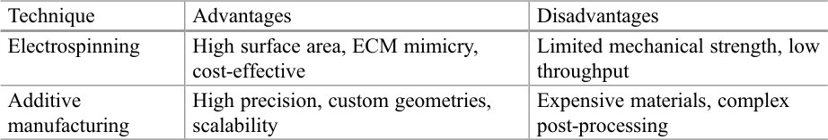
表 1 静电纺丝（electrospinning）与增材制造（additive manufacturing）在组织工程应用中的比较Table 1 Comparison between electrospinning and additive manufacturing for tissue engineering applications
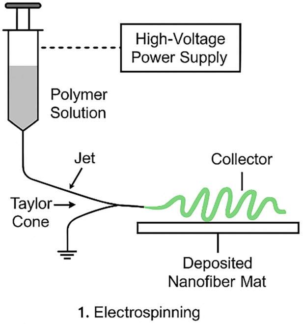
图 1 静电纺丝：对聚合物溶液（polymer solution）施加高电压，形成射流（jet），射流在收集器（collector）表面被拉伸并固化为纳米纤维（nanofibers）（本图由人工智能使用ChatGPT-4.5生成）Fig. 1 Electrospinning: highvoltage applied to a polymer solution, forming a jet that stretches and solidifies into nano fibers on a collector surface (Figure generated by artificial intelligence using ChatGPT-4.5)
从而形成细小的纳米纤维。其名称源自首次描述该结构形成过程的物理学家Geoffrey Ingram Taylor爵士。这是静电纺丝过程中至关重要的一步，因为它使聚合物得以被连续拉伸并细化成纳米级纤维。该过程可制备直径从数十纳米到数微米的纤维，与ECM的纤维状本质高度相似。与传统支架制备技术相比，静电纺丝具有若干优势。首先，它能够制备具有高表面积与体积比的支架，从而增强细胞黏附、增殖和分化，而这些是任何组织工程构建物取得成功的关键因素。Honarpardaz及其合作者证明，静电纺丝明胶（gelatin）/糖胺聚糖（glycosaminoglycan）纤维可显著促进骨髓来源间充质干细胞（mesenchymal stem cells）的成软骨分化（chondrogenic differentiation）（Honarpardaz et al. 2019）。这一发现凸显了静电纺丝支架在为细胞生长和特化提供有利环境方面的有效性。此外，静电纺丝参数（如聚合物浓度、电压和收集器转速）的可调性使得能够对纤维直径、取向和孔隙率进行控制，而这对于引导细胞行为至关重要。Tan和Zhou的工作表明，聚己内酯（polycaprolactone, PCL）纳米纤维的结构可经调控以获得特定的力学性能，从而影响细胞与支架的相互作用方式（Tan and Zhou 2018）。这些进展使静电纺丝在制备可按需定制设计、以满足骨软骨组织特定生物力学需求的支架方面占据独特地位。静电纺丝纤维的性能和特性受以下关键参数的影响：
近期的发展进一步拓展了静电纺丝（electrospinning）在骨软骨（osteochondral）应用中的范围。例如，如今已可制备用于药物控制释放和组织工程（tissue engineering）应用的同轴（coaxial）双层纤维（Yousefiet al. 2015; Sun et al. 2003）。此外，多射流（multi-jet）静电纺丝和近场静电纺丝（near-field electrospinning）的引入增强了纤维排列的可扩展性和精度，这对骨软骨修复至关重要（Formica et al. 2016）；因此，多射流静电纺丝以大规模应用为目标（El-Sayed et al. 2019; Zheng et al. 2020）。另一些作者提出了熔体静电纺丝（melt electrospinning），该方法以聚合物熔体而非溶液为基础；这一方法避免了溶剂的使用，并提高了纤维的结晶度（Brown et al. 2016）。最后，近场静电纺丝可实现精确的纤维沉积，是制备微图案化（micro-patterned）支架的理想选择（Li et al. 2013; Maiullari et al. 2021）。此外，将生物活性分子（bioactive molecules）整合入静电纺丝支架已受到关注，研究表明此类改性能够增强细胞反应并促进愈合（Casanova et al. 2018）。例如，将生长因子（growth factors）或骨传导剂（osteoconductive agents）掺入支架可促进软骨和骨再生所需的信号通路，从而提供双重功能，这在骨软骨修复中尤为有益（Udomluck et al. 2019）；而将生物活性分子和纳米颗粒引入静电纺丝纤维则可增强成骨分化（osteogenic differentiation）和软骨修复（Yousefiet al. 2015）。除常规静电纺丝技术外，湿法静电纺丝（wet electrospinning）和生物静电喷雾（bio-electrospraying）等创新方法正在兴起，为支架制备开辟了能够更好复制天然组织结构的新途径。这些方法不仅能够改善支架性能，还拓展了将活细胞直接纳入制备过程的潜力，从而构建出更具生物学相关性的构建体。研究表明，通过这些先进技术制备的支架表现出显著改善的生物相容性（biocompatibility）和增强的力学性能，适用于骨软骨应用（Bhattarai et al. 2018）。尽管取得了这些进展，挑战依然存在，尤其是在从实验室成果向临床应用的转化方面。诸如工程化组织的
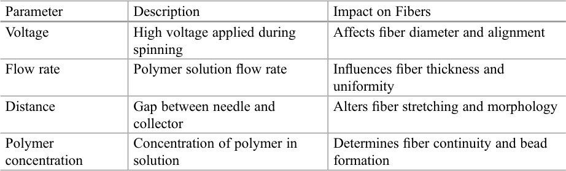
表 2 静电纺丝关键参数及其对纤维形貌（morphology）的影响Table 2 Key electrospinning parameters and their impact on the fibers’ morphology
血管化（vascularization）、长期生物相容性以及生理负荷下的力学完整性等问题必须得到解决，方能迈向临床可行性。Frassica和Grunlan所开展的研究指出，尽管静电纺丝支架的化学与物理性质令人鼓舞，但仍需进一步研究以验证其体内长期疗效（Frassica and Grunlan 2020）。表2总结了影响静电纺丝的关键参数。总之，静电纺丝因其能够制备可模拟天然组织细胞外基质（ECM）的定制化纳米纤维（nanofibrous）支架而处于骨软骨组织工程的前沿。静电纺丝与生物材料科学进展之间的协同作用，持续为旨在治疗骨软骨缺损的新型疗法铺平道路。随着该领域的不断发展，将生物元素与这些支架技术相整合将进一步提升其治疗潜力，为关节健康疾患带来变革性的解决方案。实现高通量、增强细胞浸润以及改善静电纺丝支架的力学性能，是该领域继续向前推进所面临的主要挑战。
这些技术在组织工程中的主要应用包括：骨再生，因为增材制造技术能够制备机械性能可针对承重应用进行定制的个性化骨移植物（bone graft）；软骨修复，其中高分辨率3D打印支架已增强了软骨细胞（chondrocyte）的增殖和基质沉积 (Williams 2008)；复杂界面的制备：梯度与多材料3D打印已使制备能够同时模拟软骨和软骨下骨生物力学性能的支架成为可能 (Miao et al. 2016)。3D打印的一个关键优势在于其多功能性，能够制备模拟天然组织结构的复杂几何形体。增材制造技术的最新创新，例如生物打印（bioprinting），使活细胞和生物活性材料（bioactive material）能够被引入打印结构中，从而促进支架与生物环境之间更具动态性的相互作用。例如，Li等人证明了基于数字光处理（digital light processing, DLP）的生物打印增强了构建组织建模与再生所需的特化结构的能力 (Li et al. 2023)。这些进展对于制备血管化组织（vascularized tissue）至关重要，解决了组织工程中的一个重大障碍，即如何为所制备构建体深处的细胞供给营养物质。增材制造领域的进展，如4D打印和生物打印，已引入了动态的、刺激响应性支架（stimuli-responsive scaffold），这类支架可在制备后改变其性质，从而与组织生长和机械负荷需求相适应 (Melchels et al. 2012)。增材制造领域最令人振奋的进展之一是4D打印的出现，它在3D打印原理的基础上引入了时间维度。这一变革性技术使打印结构能够适应并响应外部刺激，例如温度或湿度的变化，最终形成动态且具有功能的构建体 (Miao et al. 2016)。正如Zhang及其合作者所强调的，4D打印可制备出在特定环境触发因素作用下能够变形为所需形状的结构，这对于创建响应性组织系统具有显著益处 (Zhang et al. 2019a)。智能材料与4D生物打印的融合已被强调为一个关键趋势，其可通过促进植入后的自组装（self-assembly）以及按需创建功能性组织，有望增强临床应用 (Abolhassani et al. 2025)。生物打印是一种将活细胞融入打印过程的前沿技术，能够直接制备类组织结构。
生物打印（bioprinting）能够对多种细胞类型进行精确的空间控制，从而有望增强骨软骨（osteochondral）组织再生 (Kang et al. 2016)。事实上，生物打印的重要意义在于其能够利用由活细胞、水凝胶（hydrogel）和生物材料（biomaterial）组成的生物墨水（bioink）来构建活体组织。Maiullari及其合作者开展的一项重要研究展示了3D生物打印利用内皮来源的细胞外囊泡（extracellular vesicle）在体内诱导血管新生（neovascularization）的能力，标志着在保障工程组织血管化（vascularization）方面取得了重大进展 (Maiullari et al. 2021)。这反映出人们日益关注将生物打印与能够增强细胞应答并改善打印组织功能的方法相结合。近年来，诸如3D生物打印等创新性制造技术使高度复杂的梯度支架（gradient scaffold）的设计与生产成为可能。基于挤出的生物打印（extrusion-based bioprinting）和生物墨水技术的进展，促进了以可控方式精确沉积不同的材料与细胞。例如，Yazdanpanah等强调了利用先进生物打印技术（如核/壳结构，core/shell structure）构建混合支架，以结合多种生物活性陶瓷（bioactive ceramic）与聚合物（polymer）的优势用于骨再生 (Yazdanpanah et al. 2022)。梯度支架（图2）代表了组织工程（tissue engineering）领域的一项重大进展，可满足再生具有不同力学与生物学微环境（microenvironment）的多种组织的复杂需求。通过引入梯度孔隙率（porosity）、组成与结构，此类支架能够更贴近地模拟天然组织的异质性，从而在靶向组织再生应用中促进细胞迁移、增殖与分化的增强。开发梯度支架的主要动因之一在于认识到
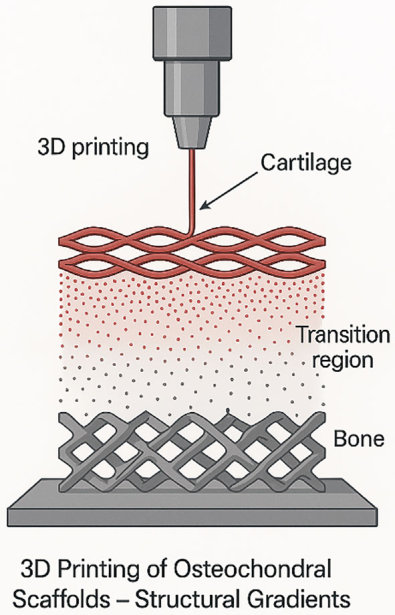
图 2 骨软骨（osteochondral）支架的3D打印——结构梯度。分层支架结构展示了材料成分的梯度变化，用于优化软骨与骨组织再生。（该图由人工智能ChatGPT4.5生成）Fig. 2 3D printing of osteochondral scaffolds— structural gradients. Layered scaffold structure demonstrating gradients in material composition for optimized cartilage and bone tissue regeneration. (Figure generated by artificial intelligence using ChatGPT4.5)
不同组织具有各自独特的生化和力学性能。例如，骨组织的刚度和矿物质含量均高于软骨组织，因此需要能够反映这些差异的支架（scaffold）。梯度支架（gradient scaffold）可设计成具有定制力学性能的分区，从而有效支持参与组织再生的各类细胞所特有的生物学行为 (Yazdanpanah et al. 2022)。这一方法凸显了梯度支架在满足不同组织类型和再生策略特定需求方面的灵活性。尽管取得了这些进展，用于组织工程（tissue engineering）的增材制造（additive manufacturing, AM）技术仍面临重大挑战。这些挑战包括：打印能够准确复制天然组织微环境的多细胞构建体（construct）的复杂性、具有生物活性和生物相容性的材料范围相对有限 (Murphy and Atala 2014)、需要进行后处理（如表面精整和灭菌）(Pitta Kruize et al. 2023)，同时与成本和可扩展性相关的问题也不容忽视 (Melchels et al. 2012)。尽管梯度支架前景广阔，但其在组织工程中的应用仍存在若干挑战。首要挑战之一在于如何在优化支架力学性能的同时确保细胞的活力和功能。梯度支架通常需要对结构的孔隙率（porosity）和连通性进行精确控制，以便为细胞黏附和营养物质扩散提供最佳环境。正如 Sarker 等人所指出的，支架内细胞的空间排列以及生长因子的存在可对细胞行为和功能结局产生关键影响 (Sarker et al. 2019)。为克服这些局限，相关研究正在推进。例如，如何将多种细胞类型成功整合到复杂组织结构中仍是持续的研究焦点。此外，生物打印（bioprinting）技术的监管格局仍在不断演变，在临床应用之前需要进行严格的测试和优化，以确保生物打印构建体的安全性和有效性。此外，利用生物活性因子对梯度支架进行功能化是另一个新兴趋势。以梯度方式引入血管生成信号或生长因子可显著增强工程组织内的血管化（vascularization），改善对细胞的营养物质和氧气输送 (Sarker et al. 2019)。例如，化学梯度的仿生整合已显示出对干细胞迁移和分化方向性的积极影响，有助于实现更有效的组织整合与修复 (Heinrich et al. 2019)。当前的制造工艺，尤其是依赖3D生物打印的工艺，需要进行细致的优化，以确保大规模生产的一致性和可重复性。旨在提升生物墨水（bioink）可打印性和功能性的先进技术对于克服这一障碍至关重要。研究人员正在探索改善生物墨水流变学特性和机械稳定性的创新方法，这将有助于梯度支架从实验室成功转化至临床应用。如前所述，选择合适的生物墨水是生物打印过程的另一个关键环节。生物墨水不仅必须具备有利于打印的力学性能，还必须具备支持细胞活力和功能的生化特性。材料科学的最新进展强调开发源自天然来源的生物相容且可生物降解的生物墨水，例如海藻酸盐（alginate）和明胶（gelatin）(Moghaddam et al. 2021)。还有研究提出将这些水凝胶（hydrogel）与纳米材料相结合，以增强生物墨水的力学和生物学性能，从而改善其在组织工程应用中的表现。另外，人们对开发便携式、手持式生物打印机的兴趣日益浓厚，这表明生物打印技术正朝着更易获取、能够促进原位组织再生的方向发展 (Pazhouhnia et al. 2022)。这一演变预示着未来生物打印可被整合到临床实践中，从而在手术过程中实时提供定制化的治疗方案。总之，增材制造（AM），特别是随着3D和4D生物打印技术的进步，构成了一个有望变革再生医学（regenerative medicine）格局的极具前景的重要领域。通过实现复杂、患者特异性组织构建体的创建以及响应性材料的整合，增材制造技术正在突破传统组织工程的边界。然而，解决与可扩展性、多材料整合、法规合规性以及生物墨水优化相关的挑战，对于这些创新策略的成功临床转化至关重要。
纤维支架（fibrous scaffold）材料
用于骨软骨（osteochondral）应用的支架材料（scaffold materials）必须满足特定的标准，包括生物相容性（biocompatibility）、生物可降解性（biodegradability）、机械强度（mechanical strength）以及支持细胞活动的能力。这些材料大体上可分为合成或天然聚合物（synthetic or natural polymers），或复合材料（composite materials）。表3总结了用于制备纤维状支架（fibrous scaffolds）的最常用材料、其性能及应用领域。
表 3 用于骨软骨（osteochondral）应用的纤维支架（fibrous scaffold）材料Table 3 Materials used in fi brous scaffolds for osteochondral applications
支架制造（scaffold fabrication）方面的多功能性。骨软骨缺损（osteochondral defects）同时累及关节软骨（articular cartilage）及其下方的骨组织，带来了复杂的挑战，因而需要能够模拟天然组织（native tissues）多方面结构与功能的材料。合成聚合物凭借其可定制的物理和化学特性，成为有效应对这些挑战的一种有前景的选择（Agarwal et al. 2008）。合成聚合物在骨软骨应用中的主要吸引力在于其力学性能（mechanical properties），这些性能可经调整以匹配周围天然组织的特定生物力学（biomechanical）要求。例如，聚乳酸（poly(lactic acid)，PLA）、聚乙醇酸（poly(glycolic acid)，PGA）和聚己内酯（polycaprolactone，PCL）是常用的可生物降解（biodegradable）合成聚合物，以其优异的力学性能、生物相容性（biocompatibility）和可调节的降解速率而著称（Hauptmann et al. 2022; Wang et al. 2025）。后续章节将进一步详细介绍以下材料，它们是该领域内应用最为广泛的材料：
研究表明，由这些聚合物构成的支架能够承受生理负荷，同时促进细胞黏附、增殖和分化所必需的生物学相互作用——而这些正是组织再生成功的关键要素 (Frassica and Grunlan 2020)。引入生物活性组分或对聚合物化学结构进行修饰可进一步增强这些支架的功能，使其能够负载生长因子（growth factors）以促进骨软骨（osteochondral）愈合 (Lastra et al. 2017; D’Ambrosi et al. 2019)。近期研究着重于开发将合成聚合物与壳聚糖（chitosan）或胶原蛋白（collagen）等天然材料相结合的复合支架或多层支架。这类复合结构旨在充分利用两种材料的优势特性，将合成聚合物的机械强度与天然组分所提供的生物学信号相结合 (Amadori et al. 2015; Zhang et al. 2019b)。例如，Amadori 等人报道，由针对软骨区和骨区的不同材料构成的多层支架可显著增强共培养人间充质干细胞（human mesenchymal stem cells）的生物学应答，从而模拟再生过程中骨软骨区的生理环境 (Amadori et al. 2015)。该领域的另一项显著进展是梯度支架（gradient scaffolds）的开发，其特点是在同一结构内具有不同的组成和力学性能。一些研究已成功制备出融合合成聚合物与生物活性材料梯度的支架，从而能够针对骨软骨界面内不同的组织区域实现定制化应答。此类设计可改善支架与周围组织的整合，并提升植入材料的功能效果 (Asensio et al. 2021; Gao et al. 2019)。然而，合成聚合物在骨软骨领域的应用仍面临挑战。尽管合成材料通常比天然材料具有更高的机械稳定性，但疏水性（hydrophobicity）和缺乏生物活性位点等问题可能阻碍细胞的黏附和迁移 (Hong et al. 2021)。较新的研究致力于通过化学处理、添加剂或涂层来修饰合成聚合物的表面特性，以增强其与生物系统的相互作用 (Gupta et al. 2017; Zhou et al. 2019)。此类修饰对于引发有利于加速愈合与整合过程的细胞应答至关重要。此外，合成聚合物基支架的规模化生产也带来了监管和制造方面的挑战。从实验室规模生产向临床应用的转化需要严格的质量控制和可重复性，以确保生物学性能的一致性和患者安全 (Frassica and Grunlan 2020; D’Ambrosi et al. 2019)。一些研究还探索了将这些聚合物与纳米颗粒和生物陶瓷（bioceramics）共混，以增强骨传导性（osteoconductivity）和力学性能 (Mohabatpour et al. 2016)。静电纺丝（electrospinning）合成聚合物纤维在组织工程应用中已得到广泛研究。PLA 和 PCL 等可生物降解材料具有适合软骨和骨组织再生的力学性能，并可降解为无毒产物。聚合物微米纤维和纳米纤维的使用可实现广泛的性能，如（表4和表5）中所总结 (Agarwal et al. 2008; Li et al. 2013; Atila et al. 2016; Samavedi et al. 2013; Franco et al. 2012; Yamaguchi et al. 2016; Mouthuy et al. 2013; Monich et al. 2017; Kang et al. 2009; Lin et al. 2017; Ortega et al. 2018; Kinneberg et al. 2015; Liu et al. 2013; Zhang et al. 2013; Shamaz et al. 2015; Chen et al. 2016; Melke et al. 2016; Iamaguti et al. 2008; Cui et al. 2013) 及表5所示，其中还包括由非聚合物材料制成的纤维状支架 (Li et al. 2013; Monich et al. 2017; Lin et al. 2017; Liu et al. 2013; Shamaz et al. 2015; Reardon et al. 2017; Kook et al. 2016; Mohammadi et al. 2016a; Müller et al. 2014; Yang et al. 2013; Filová et al. 2013)。总之，合成聚合物在骨软骨组织工程支架的开发中发挥着关键作用，其具有可定制的力学性能、生物相容性（biocompatibility）以及与天然材料复合的潜力。支架设计与制备技术的持续创新对于克服现有挑战至关重要，最终将为骨软骨缺损（osteochondral defects）提供更为有效的治疗方法。
表 4 纤维支架（fibrous scaffolds）在压缩试验下的力学性能（总结自 Ortega et al. 2018）Table 4 Mechanical properties under compressive tests for fibrous scaffolds (summarized from Ortega et al. 2018)
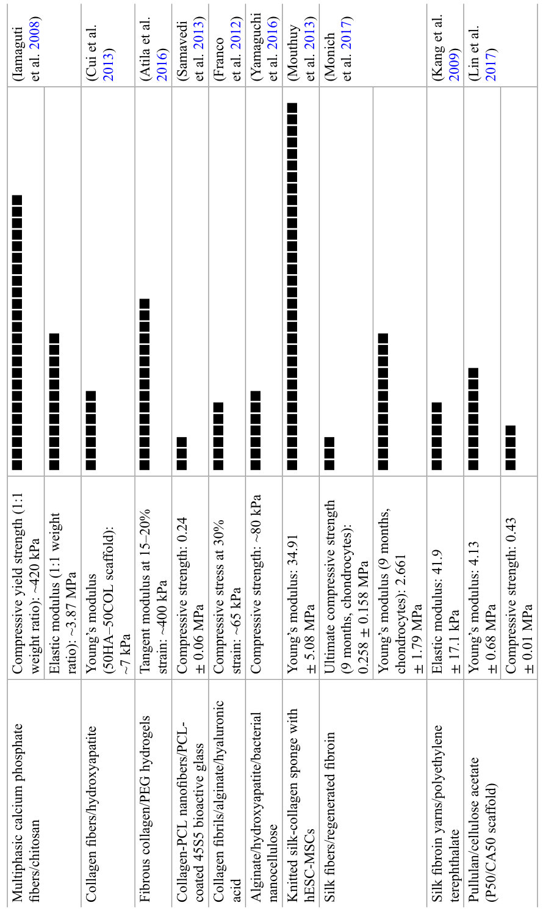
原书数据表（未编号，第 15 页）
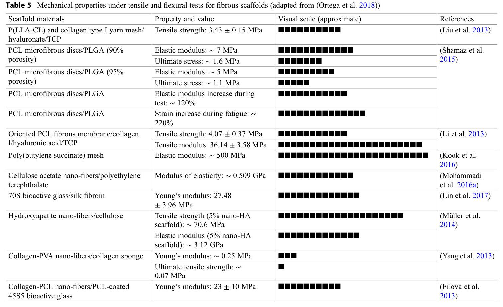
表 5 纤维支架在拉伸和弯曲试验下的力学性能（改编自 (Ortega et al. 2018)）Table 5 Mechanical properties under tensile and flexural tests for fibrous scaffolds (adapted from (Ortega et al. 2018))
2017
2017
Young’s modulus: 1.54 ± 0.13 MPa
Tensile modulus: 426 ± 39 MPa
Tensile modulus: 262 ± 18 MPa
Tensile modulus: 184 ± 98 MPa
极限拉伸强度（ultimate tensile strength）：0.11
拉伸模量（tensile modulus）：∼289 MPa
断裂韧性（fracture toughness）：0.79
± 0.07 MPa.m^1/2
± 0.02 MPa
原弹性蛋白网格（tropoelastin mesh）
胶原蛋白网格
明胶网架（gelatin mesh）
弹性蛋白网架（elastin mesh）
天然聚合物因其固有的生物相容性（biocompatibility）以及有利于细胞黏附和增殖的生物学信号而备受关注。由胶原蛋白（collagen）、明胶（gelatin）、壳聚糖（chitosan）和纤维素（cellulose）等天然聚合物制成的静电纺丝纤维支架（electrospun fibrous scaffolds）已成为组织工程领域的重要生物材料。这些材料主要源自生化来源，因其优异的生物相容性、生物可降解性以及与细胞外基质（extracellular matrix, ECM）在结构上的相似性而广受认可，而这些特性对于组织的支持与再生至关重要 (Zhao et al. 2017)。胶原蛋白是人体中含量最丰富的蛋白质，在维持组织结构完整性方面发挥着关键作用。它是软骨和骨ECM中的主要结构蛋白，可促进细胞黏附与生长 (Yunos et al. 2013)。胶原蛋白具有优异的力学性能，并能促进细胞黏附和生长，使其成为静电纺丝的理想候选材料。静电纺丝胶原蛋白支架可增强成骨分化（osteogenic differentiation）以及骨与软骨再生所需细胞的增殖。例如，Zhao等强调了胶原蛋白在构建可浸润性水凝胶支架中的关键作用，此类支架通过促进细胞迁移和再上皮化（re-epithelialization）加速伤口愈合 (Zhao et al. 2017)。这凸显了胶原蛋白对静电纺丝支架在再生应用中功能表现的重要贡献。明胶是胶原蛋白的变性形式，是另一种常用于静电纺丝支架制备的天然聚合物。它表现出优异的生物相容性，常被用于药物递送和支架稳定 (Filová et al. 2013)。明胶的特点在于其水溶性以及通过多种生化机制支持细胞活动的能力 (Erencia et al. 2016)。明胶的多功能性使其能够与其他生物活性材料结合。例如，共静电纺丝（co-electrospinning）已被有效用于将明胶与PLA共混，从而制备出力学性能得到改善且细胞相容性增强的支架 (Branco et al. 2018; Salifu et al. 2017)。明胶的成功掺入不仅能促进细胞黏附，还能增强所得支架的力学完整性。这些研究还发现，明胶-PLA静电纺丝膜保持了亲水特性，从而促进细胞迁移 (Branco et al. 2018)。壳聚糖是一种来源于甲壳素（chitin）的生物聚合物（biopolymer），是静电纺丝中另一种重要的天然材料。其阳离子特性和固有的抗菌性能使壳聚糖成为组织工程支架的优良候选材料 (Hwang et al. 2016)。此外，它还表现出支持软骨细胞（chondrocyte）增殖的优异能力 (Mohabatpour et al. 2016)。研究表明，静电纺丝壳聚糖支架能够促进细胞黏附和增殖，同时调节组织修复过程中的炎症反应。Martínez等的研究强调了壳聚糖的可调特性，使人们能够构建针对特定组织工程应用进行优化的支架 (Martínez et al. 2015)。再者，将壳聚糖与其他天然材料（如胶原蛋白）结合，可充分利用这两种生物聚合物的有益特性，进一步提升支架性能。
纤维素（cellulose）因其机械强度和生物相容性（biocompatibility）而著称，正作为组织工程（tissue engineering）领域的一种天然材料崭露头角，尤其适用于柔韧性和结构完整性至关重要的应用（Hong et al. 2021; Evdokimova et al. 2021; Tarar et al. 2020）。其在静电纺丝（electrospinning）应用中的潜力也日益受到认可。作为一种生物聚合物（biopolymer），纤维素不仅能提供结构支撑，还能增强静电纺丝支架（electrospun scaffolds）的整体机械稳定性（Ao et al. 2017）。近年来静电纺纤维素基支架的创新在机械性能和细胞相互作用方面已展现出令人鼓舞的结果，而这些对于伤口愈合和组织再生（tissue regeneration）应用至关重要（Kolbuk 2016）。静电纺丝过程中纤维素纤维的取向排列还可改善细胞的运动和活性，这对于实现有效的组织整合与再生至关重要。研究还表明，天然聚合物可与合成聚合物相结合，制备出机械性能和生物学性能均得到改善的杂化支架（hybrid scaffolds）。胶原蛋白（collagen）、明胶（gelatin）、壳聚糖（chitosan）和纤维素等天然材料，因其生物相容性、生物可降解性（biodegradability）以及与细胞外基质（extracellular matrix, ECM）的结构相似性，在组织工程中发挥着关键作用。例如，胶原蛋白是多种结缔组织中的主要结构蛋白，可提供支持细胞黏附和增殖的支架结构。明胶是胶原蛋白的变性形式，具有优异的细胞结合特性，且由于能够促进细胞相互作用并支持组织形成，已被广泛用于组织支架中以促进组织再生（Jin et al. 2017）。同样，源自虾壳的壳聚糖不仅具有固有的抗菌特性，还能支持对组织修复至关重要的细胞的生长和分化（Wang et al. 2025）。将这些天然材料融入增材制造（additive manufacturing, AM）技术，拓展了其在组织工程中的应用。利用3D打印和生物打印（bioprinting）等技术，研究人员能够构建出更精确模拟天然组织异质性和动态特性的复杂构建体（constructs）。层层叠加生物活性水凝胶（hydrogels）与天然聚合物的能力，使机械性能和生物活性得以精细调控，从而改善组织整合和功能（Gokyer et al. 2021）。例如，由天然聚合物构成的水凝胶可实现活细胞打印，从而在制备过程中将生长因子（growth factors）和细胞直接掺入支架中。这一能力增强了开发针对个体愈合过程量身定制的患者特异性构建体的潜力，为个性化医疗（personalized medicine）铺平了道路。此外，天然材料的3D打印能够制备具有优化孔隙率（porosity）和表面形貌（surface topography）的支架，而这些是影响细胞行为和组织再生的关键因素（He et al. 2016）。尽管天然聚合物用于静电纺丝支架具有诸多优势，但挑战依然存在。某些天然材料固有的溶解性和有限的机械性能可能会制约其在承重应用中的表现，因而需要采用交联（crosslinking）策略或多种材料共混以提高结构完整性。例如，Nagarajan等展示了如何通过氮化硼（boron nitride, BN）增强明胶，从而显著提升所得静电纺丝支架的机械性能（Nagarajan et al. 2017）。对静电纺丝工艺本身的进一步优化，包括调整溶剂体系和加工参数，对于调控纤维形貌（fiber morphology）和支架整体性能以满足各类组织应用的具体要求至关重要。研究表明，获得理想的纤维直径和取向会直接影响细胞行为，这凸显了持续改进生产技术的必要性（Yang et al. 2017）。总之，基于胶原蛋白、明胶、壳聚糖和纤维素等天然材料的静电纺纤维支架是组织工程领域的重要组成部分。这些材料源自天然，加之良好的生物相容性和结构特性，使其成为再生医学（regenerative medicine）应用中极具前景的候选材料。在加工和配方策略方面的持续研究与创新将提升其效能，并拓展其在临床环境中的潜在应用。
复合材料
复合材料（composites）旨在融合合成聚合物（synthetic polymers）与天然聚合物（natural polymers）两者的优点，在保持生物活性（biological activity）的同时提高力学完整性（mechanical integrity）。这类材料回应了对能够模拟天然组织（native tissues）复杂结构与力学性能的支架（scaffolds）日益增长的需求。此类材料整合两种或多种组分，通常将天然与合成聚合物、陶瓷（ceramics）或生物活性剂（bioactive agents）加以组合，有助于设计出具有可定制力学、化学和生物学性能的支架，而这些性能对于促进细胞生长、分化和组织再生至关重要。复合材料的协同作用增强了支架的功能，通过克服单一材料体系的固有局限性，为骨、软骨（cartilage）和皮肤等特定组织类型提供最佳环境。例如，将生物活性玻璃（bioactive glass）或羟基磷灰石（hydroxyapatite）掺入聚合物基质（polymer matrices）中，不仅可改善支架的力学完整性，还能赋予其促进骨组织再生的骨传导性能（osteoconductive properties）（Cakmak et al. 2020; Zhou et al. 2013）。在增材制造（additive manufacturing, AM）技术的背景下，复合材料彻底改变了组织工程（tissue engineering）应用中支架的制备方式。增材制造技术能够对复合材料实现精确的空间控制，使支架的功能可根据组织工程需求进行定制。例如，研究人员已开发出PCL与生物活性陶瓷共混的复合支架，这类支架可在3D打印过程中进行调控，从而制备出既能支持细胞浸润（cell infiltration）又能为承重（load-bearing）应用提供必要力学强度的结构（Lores et al. 2021）。因此，将复合材料与增材制造技术结合使用，能够构建复杂且符合解剖学特征的支架几何构型，从而增强工程组织在体内（in vivo）的整合与功能。
复合材料在静电纺丝（electrospinning）领域也日益受到重视，尤其是在纳米纤维支架（nanofibrous scaffolds）的开发方面。通过将壳聚糖（chitosan）或明胶（gelatin）等天然聚合物与PLA等合成聚合物相结合，研究人员能够制备出静电纺丝支架，与单一组分体系相比，这类支架表现出更优的生物活性、力学性能和功能性能。这种方法增强了支架模拟细胞外基质（extracellular matrix）的能力，并为负载生物活性化合物（bioactive compounds）提供了多功能平台，这些化合物能够在组织再生过程中促进特定的细胞反应（Hejazi et al. 2021; Abolhassani et al. 2025; Wang et al. 2025; Clearfield et al. 2018）。将复合材料融入静电纺丝工艺，在推动组织工程领域发展方面展现出巨大前景，由此可制备出满足各种组织类型和再生策略特定需求的定制化支架。因此，将复合材料引入组织工程代表了一项重大进展，能够提升支架在多种组织再生中的性能。无论是通过增材制造技术还是静电纺丝技术，复合支架都能够融合多种材料的优良特性，从而提供能够模拟天然组织复杂性的创新解决方案，最终改善再生医学（regenerative medicine）的临床效果。
聚乳酸（PLA）是骨软骨（osteochondral）组织工程中最常用的材料之一，因其生物相容性（biocompatibility）、生物可降解性（biodegradability）和易于加工的特性而备受重视。作为一种由玉米淀粉和甘蔗等可再生资源制得的生物可降解脂肪族聚酯（aliphatic polyester），PLA还契合环境可持续性与监管标准的要求（Alavi et al. 2023）。这些特性使得制备能够模拟天然骨和软骨力学与生理特性的支架（scaffold）成为可能，从而促进骨软骨缺损的修复与再生。PLA在骨组织工程中的一个关键优势在于其可调节的力学性能。通过改变分子量和立体化学结构——例如聚-L-乳酸（PLLA）与聚-D-乳酸（PDLA）——可以获得适用于承重应用的特定力学强度（Reichstein et al. 2021）。PLA支架已表现出与松质骨（trabecular bone）相当的压缩强度，因而非常适合骨软骨应用（Sultan et al. 2022）。将羟基磷灰石（HA）、碳酸钙（CaCO₃）和β-磷酸三钙（β-TCP）等生物活性无机添加剂掺入PLA支架中
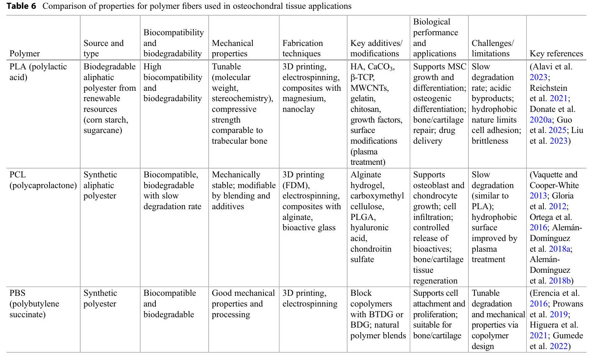
表 6 用于骨软骨（osteochondral）组织应用的聚合物纤维（polymer fibers）性能比较Table 6 Comparison of properties for polymer fi bers used in osteochondral tissue applications
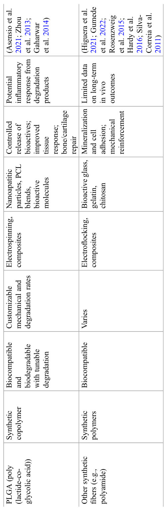
原书数据表（未编号，第 23 页）
可进一步提升力学性能并促进成骨分化（osteogenic differentiation）。例如，Donate及其合作者（Donate et al. 2020b）的研究表明，CaCO₃与β-TCP均能改善支架（scaffold）的形貌和力学性能，同时提高成骨细胞（osteoblast）活性。类似地，引入HA可显著改善细胞黏附（cell adhesion）与矿化（mineralization），为骨再生（bone regeneration）创造有利环境（Bernardo et al. 2022; Zhang et al. 2022）。含β-TCP的支架在酶降解（enzymatic degradation）过程中还能保持结构完整性，凸显了其在增强骨再生方面的潜力（Donate et al. 2020c）。3D打印技术的进步使人们能够精确控制支架架构、孔隙率（porosity）和表面形貌，从而有助于复制复杂的骨几何结构并改善生物学整合（Kalva et al. 2023）。定制的3D打印PLA支架可支持间充质干细胞（mesenchymal stem cells, MSCs）的生长和成骨分化，展现了该材料的多功能性（Barcena et al. 2024）。此外，人们还探索了掺入镁或纳米黏土（nanoclay）的PLA复合材料，以提高力学强度和生物相容性（biocompatibility），从而弥补纯PLA的部分局限（Omigbodun and Oladapo 2024）。尽管具备这些优势，PLA相对缓慢的降解速率仍带来挑战。支架长期滞留可能阻碍新骨整合，且降解副产物会形成酸性微环境，可能损害细胞活力与愈合进程（Salehi et al. 2021）。聚焦于表面改性和复合配方的研究旨在调控降解速率并改善生物学效果（Salehi et al. 2021）。通过引入生长因子（growth factor）或生物活性涂层来增强PLA支架的骨诱导能力（osteoinductive capacity）是另一个活跃的研究方向，旨在为骨软骨（osteochondral）修复创造最佳微环境（Guo et al. 2025; Zhang et al. 2021）。静电纺丝（electrospinning）已成为制备可高度模拟细胞外基质（extracellular matrix, ECM）的PLA纳米纤维支架的一种有前景的方法。该技术可制备出连续的纳米纤维，其具有高表面积/体积比（high surface-area-to-volume ratio）、相互连通的孔隙和可调的直径，可支持细胞黏附、增殖和分化。静电纺PLA支架保持了重要的力学性能，并促进对细胞活力至关重要的营养物质扩散。此外，其高表面积可实现高效的药物负载与控释，这在治疗应用中十分有用（Le et al. 2024）。为提高力学强度和生物学性能，人们已将多壁碳纳米管（multiwall carbon nanotubes, MWCNTs）（Wang et al. 2021）、明胶（gelatin）和壳聚糖（chitosan）（Xu et al. 2017; Wu et al. 2022; Xu et al. 2022）等添加剂掺入PLA静电纺支架中。通过Pickering乳液静电纺丝制备的核壳结构纳米纤维能够包封生物活性化合物，从而增强对药物释放的控制并减少突释（burst release）（Mohabatpour et al. 2016; Cai et al. 2017; Chi et al. 2020）。然而，PLA的疏水性可能限制细胞的黏附与迁移，阻碍组织整合。等离子体改性（plasma modification）等表面处理或添加亲水性分子已被证明可改善润湿性（wettability）和生物学应答（Chae et al. 2014; Das et al. 2022）。优化静电纺丝参数——如溶液黏度、电压和接收距离——对于获得理想的纤维形貌、取向、直径和孔隙率至关重要，而这些因素均是组织工程（tissue engineering）取得成功的关键。将可生物降解的微纤维PLLA/PVA薄膜与明胶-纳米羟基磷灰石（nanoHA）基质相结合的复合策略增强了细胞迁移并降低了支架脆性（Shamaz et al. 2015）。类似地，胶原（collagen）与静电纺PLLA纳米纤维相结合可通过增强成骨分化和软骨形成协同促进骨软骨再生，这部分归因于其相较单纯胶原具有更优的力学支撑（Zhang et al. 2013）。其他天然高分子也已与PLA纤维复合，以改善支架的力学性能和生物学功能。例如，以PLA纳米纤维增强的海藻酸接枝透明质酸（alginate-graft-hyaluronate）水凝胶的压缩模量（compressive modulus）提高了81%（Mohabatpour et al. 2016）。用于包覆生物玻璃（bioglass）支架的PDLLA纳米纤维会随聚合物厚度的增加而降低羟基磷灰石（hydroxyapatite）矿化程度，同时确保结合牢固且HA过渡平滑，并促进软骨细胞（chondrocyte）的黏附与增殖（Yunos et al. 2013）。HA与PLLA静电纺支架相结合已被证明能够引导人间充质干细胞向类软骨细胞表型分化，并产生蛋白聚糖（proteoglycan）基质（Spadaccio et al. 2009）。诸如聚（D,L-丙交酯-乙交酯）（poly (D,L-lactide-co-glycolide), PLG）等共聚物也被用于骨软骨缺损修复的研究，并在动物模型中显示出良好前景（Toyokawa et al. 2010; Aswathy et al. 2024）。总而言之，PLA良好的力学性能、生物相容性以及制备复杂支架的能力，使其成为骨软骨组织工程中用途广泛的候选材料。通过复合材料开发、表面改性和先进制造技术持续开展研究，以克服在降解和骨诱导能力方面的局限，将有望拓展PLA在再生医学（regenerative medicine）中的应用。
聚己内酯（polycaprolactone, PCL）
聚己内酯（polycaprolactone, PCL）具有良好的组织工程应用特性，如生物相容性、生物可降解性和机械稳定性。PCL是一种合成脂肪族聚酯（aliphatic polyester），已被广泛用作多种组织（包括骨、软骨和皮肤）再生的支架材料。其缓慢的降解速率使生物活性分子得以持续释放，并支持天然组织逐渐取代支架，这对于成功的组织修复与再生至关重要 (Alemán-Domínguez et al. 2018a, b)。PCL的机械性能可通过多种配方和改性手段加以调控，例如与其他聚合物共混或掺入生物活性剂，使其成为一系列组织工程应用的多功能选择 (Alemán-Domínguez et al. 2018a)。此外，PCL支架可容纳细胞浸润，促进组织形成与整合所需的细胞活动。研究表明，PCL支架能够有效支持多种细胞类型的生长，包括用于骨组织工程的成骨细胞（osteoblasts）和用于软骨修复的软骨细胞（chondrocytes），凸显了该聚合物在再生医学中的巨大潜力 (Hejazi et al. 2021; Gloria et al. 2012; Mekhileri et al. 2018)。PCL与其他材料的复合通常可形成复合支架，有效结合两种组分的优势特性，在保留PCL固有优点的同时提升支架的整体性能。海藻酸盐水凝胶（alginate hydrogels）也曾与聚己内酯纤维基质相结合 (Formica et al. 2016; Kook et al. 2016; Liao et al. 2013)。例如，Kook等 (2016) 提出的支架由浸渗有水凝胶的纳米纤维PCL基质和第二个纯海藻酸盐水凝胶隔室组成。该基质经氧等离子体（oxygen plasma）处理以提高与海藻酸盐水凝胶的亲和性。这种结构使不同类型的细胞能够在支架内实现共培养。PCL因其优异的可加工性和低熔点而在增材制造（additive manufacturing, AM）中得到广泛应用，可制备用于组织支架的复杂、可定制结构，紧密模拟天然组织的构造，在确保结构完整性的同时，内部含有精细的孔隙网络，以实现营养物质运输和细胞迁移 (Hejazi et al. 2021; Otsuka et al. 2023; Gluck et al. 2011)。Ortega等强调了评估生物材料性能对于熔融沉积成型（FDM）应用的重要性，这有助于优化加工参数，从而在制造过程中获得理想的纤维特性 (Ortega et al. 2016)。另一方面，在增材制造过程中将PCL与生物活性化合物结合，可实现生长因子或治疗剂在支架内的控释，促进组织再生并增强愈合过程 (Hwang et al. 2016; Zhou et al. 2015)。同样，Alemán-Domínguez证明，将羧甲基纤维素（carboxymethyl cellulose）掺入PCL可显著增强其亲水性，进而影响细胞黏附和增殖，从而改善组织整合 (Alemán-Domínguez et al. 2018a, b)。类似地，PCL在静电纺丝（electrospinning）中的应用已制备出性能优异的纳米纤维支架，有利于各种组织工程应用。静电纺丝PCL支架具有较高的表面积与体积比，可增强细胞的贴附、增殖和分化 (Rosenzweig et al. 2015)。这些静电纺丝PCL支架可作为负载生物活性因子或其他聚合物的理想平台，从而增强细胞反应和组织再生 (Mirhosseini et al. 2016)。多层静电纺丝以及向PCL基质中掺入其他材料等技术，可实现支架性能的定制，使其更准确地反映目标再生组织的生物学环境。近期研究聚焦于将PCL与其他天然或合成聚合物复合的杂化支架，以增强静电纺丝构建体的机械强度和生物活性 (Gloria et al. 2012; Zonderland et al. 2020)。最后，将PCL整合到增材制造和静电纺丝技术中，是发展先进支架策略的一种有效途径，在增强组织再生与愈合方面具有巨大前景。例如，Vaquette和Cooper-White (2013) 将PCL静电纺丝与热致相分离（thermally induced phase separation, TIPS）相结合，并使用了PLGA。通过这种组合，他们能够制备出由静电纺丝膜构成的支架，与TIPS法制备的支架相比，其机械性能更佳、制备时间更短，且支架厚度不受限制。PLGA/PCL静电纺丝纤维支架还显示大鼠骨髓细胞浸润至支架内；糖胺聚糖（GAG）检测显示，经体外软骨向预诱导后形成了丰富的软骨基质，体内分析显示有新骨形成 (Yang et al. 2013)。同样，生物活性玻璃（bioactive glass）支架已被包覆PCL以增强机械性能，并在包覆后的支架上静电纺丝胶原/PCL (Balasubramanian et al. 2015)。这种结构的合理性在于PCL包覆的生物玻璃支架具有高生物活性，可在骨侧起支撑作用，而微纤维则用于软骨侧。体外模拟体液（SBF）试验结果表明，HA晶体沿胶原-PCL纤维表面生长，证实了其在骨软骨（osteochondral）组织工程中的可行性 (Suntornnond et al. 2016)。PCL是组织工程中一种极具价值的材料，在机械强度、生物相容性和可加工性之间提供了独特的平衡，这对于有效的支架设计至关重要。随着研究在增材制造和静电纺丝框架内的持续探索与创新，PCL在再生医学中的潜力必将不断扩大，从而带来更有效、更个性化的治疗方案。
其他合成纤维
聚丁二酸丁二醇酯（poly(butylene succinate), PBS）、聚酰胺（polyamide）以及聚乳酸-羟基乙酸共聚物（poly(lactide-co-glycolic acid), PLGA）等合成聚合物在组织工程（tissue engineering）应用中日益重要。其中，PBS以其良好的加工性能和多功能性而著称，可用于多种生物医学领域，包括缝合线（sutures）和组织再生支架（scaffold）(Prowans et al. 2019)。研究表明，PBS能够有效支持细胞的黏附与增殖，因而适用于骨和软骨组织工程（Higuera et al. 2021）。其他合成聚酯（如PLGA）则因其可定制的降解速率以及控制生物活性分子（bioactive molecule）释放的能力而受到重视，这进一步增强了其在组织工程环境中的功能（Gaharwar et al. 2014）。纤维状支架的另一应用涉及支架性能的定制调控，不仅限于力学性能，还包括降解速率。Chen及其合作者（Chen et al. 2016）以含有硫代二甘醇酸丁二醇酯（butylene thiodiglycolate, BTDG）或二甘醇酸丁二醇酯（butylene diglycolate, BDG）序列的聚丁二酸丁二醇酯基嵌段共聚酯为原料，制备了静电纺丝（electrospun）支架。这些聚酯的分子结构（及其所含的杂原子O或S）使所制备支架的力学性能和水解速率得以改变。他们的结论是，含硫醚键的共聚酯更有利于软骨形成（chondrogenesis），而含醚键的共聚酯则可增强支架的矿化（mineralization）。在增材制造（additive manufacturing, AM）背景下探索这些合成聚合物，揭示了其在构建能够高度模拟人体组织天然结构的复杂结构方面的潜力。AM技术（尤其是3D打印）能够实现材料的精确定位，从而制备出针对不同组织解剖学需求进行定制的患者特异性支架。例如，已证明在3D打印中使用PBS是制备支架的一种有前景的选择，此类支架凭借其多孔结构，既能提供充分的力学支撑，又能促进细胞浸润与生长（Joensuu et al. 2015）。此外，PBS及其他聚酯可被设计成复合材料，以充分利用各组分间的协同特性，从而在组织再生的多种应用中改善支架性能与生物相容性（Hardy et al. 2016）。静电纺丝（electrospinning）技术利用合成聚合物的特性，可制备出复制细胞外基质（extracellular matrix）结构的纳米纤维支架。由PBS和PLGA制成的静电纺丝支架材料因其高比表面积和相互连通的孔隙而表现出更强的细胞相互作用（Gumede et al. 2022）。向静电纺丝纤维中掺入多种功能性添加剂的能力，使研究人员能够设计出不仅支持细胞黏附、还能促进增殖和分化等特定细胞行为的支架。研究表明，在静电纺丝聚合物支架中引入生物活性分子可显著增强其引导细胞应答的能力，从而改善整体组织再生效果（Silva-Correia et al. 2011）。有研究以45S5生物活性玻璃（bioactive glass）泡沫为基底、明胶为黏合剂，并通过静电植绒（electroflocking）将短聚酰胺（PA）纤维置于支架顶面，制备了各向异性支架（Balasubramanian and Boccaccini 2015）。该技术可通过改变植绒时间来调控支架的表面孔隙率。将这些支架浸入模拟体液（SBF）中21天后，其表面完全被羟基磷灰石（HA）覆盖，这表明矿化同样发生在PA原纤维上。
含添加剂的纤维
为了提高合成纤维的生物活性（bioactivity），人们已提出多种添加剂，尤其是天然聚合物和生物活性物质。例如，将PVA与脂质体（liposome）、bFGF和胰岛素共同进行静电纺丝（electrospinning）以获得纳米纤维支架（nanofibrous scaffold）（Filová et al. 2013），这些支架即使植入前未经细胞接种，也表现出向透明软骨（hyaline cartilage）和/或纤维软骨（fibrocartilage）方向增强的骨软骨（osteochondral）再生。将纳米磷灰石颗粒（nanoapatitic particles）掺入PLGA基纳米纤维支架中（Ji et al. 2012），显著改善了皮下植入（subcutaneous implantation）后的组织反应，从而证明由3/1比例的PLGA/PCL制成并含高达30%纳米磷灰石颗粒的静电纺丝纤维支架能够控制PLGA材料的体内不良反应，使这些材料在生物医学器械中的临床应用得到优化。Liu已证明，由静电纺丝羟基磷灰石（hydroxyapatite）/壳聚糖（chitosan）纤维制成的纤维支架比膜状复合物表现出更高的BMSCs增殖（Liu et al. 2013），这意味着纤维支架具有更优越的骨重建能力。类似地，PLGA/PCL支架与静电纺丝PCL、透明质酸（hyaluronic acid）和硫酸软骨素（chondroitin sulfate）纳米纤维的组合也证明了这种组合可刺激骨软骨组织再生的不同区域：软骨区表达II型胶原（collagen type II）和聚蛋白聚糖（aggrecan），骨区表达BMP-2（Lee et al. 2016）。通过在I型胶原/透明质酸盐（hyaluronate）海绵上进行静电纺丝，制得了取向的聚(L-乳酸)-共聚(ε-己内酯) P(LLA-CL)/I型胶原（Col-I）纳米纤维网，以增强支架的力学性能，同时也获得了更好的浸润性（Liu et al. 2015）。这些纱线也在TCP多孔结构上制备，获得了改善的修复时间和良好的压缩模量。通过静电纺丝制得了由PVA-MA和硫酸软骨素-MA制成的纤维支架，其纤维尺寸达到纳米尺度，可用于关节软骨（articular cartilage）修复（Coburn et al. 2012）。如体外试验所示，所得纳米纤维支架的低密度使细胞能够立即浸润并实现最佳组织修复。此外，含硫酸软骨素纳米纤维的支架可增加透明软骨特有的II型胶原的沉积，从而在无外源细胞的情况下增强内源性修复过程。静电纺丝还被用于制备由聚（丙交酯-共-己内酯，PLCL）及其矿化形式（经NaOH溶液活化后再交替浸入CaCl₂和Na₂HPO₄溶液而获得）构成的双相（biphasic）纳米纤维支架（Despang et al. 2016）。体外研究显示，PLCL有利于软骨细胞外基质（ECM）的分泌，而矿化PLCL则有利于骨的分泌；在小动物模型（裸鼠）中进行的体内试验显示，植入区域形成了新的软骨和骨组织。Cui同样采用了这种聚合物组合（Cui et al. 2013），但将支架浸渍于壳聚糖-AHP溶液中，不过所报道的结果与不含壳聚糖时相似。在该情况下，由于支架既未复合细胞也未复合生物活性化合物，仅形成了骨组织。支架中的纳米纤维还可实现活性成分的包封。药物可包封于静电纺丝纤维中（Amler et al. 2014），以在支架降解过程中实现活性物质的控释（controlled release）；多位作者已报道了多种化合物的释放，例如从PCL微米纤维和纳米纤维中释放TFG-β1，或从PEG/PCL核/壳纳米纤维中释放BMP-2（Amler et al. 2014）。纤维支架还被用于控制纤维包囊（fibrous capsule）的形成，后者会导致组织纤维化（Chen et al. 2010）。小干扰RNA（small interfering RNA, siRNA）几乎可使任何目标基因消失；Rujitanaroj及其团队已利用该方法，通过RNAi沉默I型胶原来调控纤维包囊的形成。为此，已研究了siRNA–聚（己内酯-共-乙基乙烯磷酸酯）纳米纤维（Chen et al. 2010），结果使纤维包囊厚度显著减小；与传统的siRNA推注给药（bolus delivery）相比，I型胶原的体外沉默可持续至少4周。在该研究中，支架通过静电纺丝PCL和PCLEEP纳米纤维制得，其中siRNA与细胞穿膜肽（cell-penetrating peptides）一同包封于纤维内。
纤维素基及衍生纤维
纤维素及其衍生物因其生物相容性、可生物降解性以及与天然组织中细胞外基质（ECM）高度相似的结构特性，已成为组织工程应用中的重要材料。纤维素是一种来源于植物和微生物的天然多糖，其固有优势包括来源丰富、毒性低和用途广泛，这使其成为再生医学领域极具前景的支架材料。纤维素纤维的机械强度和亲水性有助于其支持细胞黏附和生长的能力，使其成为从皮肤到软骨和骨再生等多种组织工程应用的理想候选材料。新兴研究表明，基于纤维素的支架可经过改性以增强其功能，通常通过掺入生长因子或其他生物活性分子等生物物质来改善细胞反应和组织整合 (Dutta et al. 2019)。增材制造（AM）技术的应用使精确制造针对特定组织需求的复杂支架结构成为可能。例如，3D打印技术已被用于制造植物源纤维素支架的复杂晶格结构，这些支架表现出良好的生物相容性和适用于骨组织工程的机械性能 (Chen et al. 2022)。在近期研究中，研究人员探索了纤维素与其他材料（如生物活性玻璃和壳聚糖）的组合，以构建能够增强生物活性并促进骨修复所需的细胞增殖和矿化的杂化支架 (Tarar et al. 2020; Oprea and Voicu 2020)。静电纺丝是组织工程中利用纤维素的另一项关键技术，可制备模拟ECM天然结构的纳米纤维支架。静电纺纤维素纤维具有高比表面积和高孔隙率，这些是增强细胞黏附、迁移和营养运输的关键因素。研究表明，在静电纺丝过程中将纤维素与天然或合成聚合物共混可增强支架的机械和生物学性能，并改善对纤维形态和支架特性的控制 (Basaran Eroglu and Coral 2021; Aghazadeh et al. 2022)。调控静电纺丝条件（如电压和溶液黏度）的能力进一步使研究人员能够针对特定组织应用微调支架性能，最终改善整体再生效果 (Khalil et al. 2020; Zhong et al. 2019; Deng et al. 2022)。纤维素纤维，尤其是细菌纤维素（BC），被广泛用于骨组织工程支架。其高结晶度和高纯度赋予其优异的机械强度和保水性能，使其适用于承重应用 (Chen et al. 2022; Bouhlouli et al. 2021)；BC还因能够支持成软骨和成骨分化而被研究用于软骨组织应用 (Despang et al. 2016; Bouhlouli et al. 2021; Bulkina and Prilepskii 2025)。BC支架可制成多种形式，包括膜和3D结构，以支持成骨过程。例如，BC膜已在犬模型的实验性滑车成形术中得到应用，证明了其支持软骨源性细胞迁移和增殖的潜力 (Iamaguti et al. 2008)。负载生长因子或与其他生物材料复合的BC支架在软骨和骨缺损中表现出增强的细胞浸润和组织再生能力 (Oprea and Voicu 2020; Aghazadeh et al. 2022; Bulkina and Prilepskii 2025; Ran et al. 2017)。为提高纤维素基支架的机械强度和生物活性，研究人员通过掺入其他生物相容性物质开发了复合材料。将BC与海藻酸盐 (Toyokawa et al. 2010)、羟基磷灰石 (Ao et al. 2017; Ran et al. 2017)、明胶 (Ran et al. 2017; Wang et al. 2011) 或硫酸软骨素等材料共混，所得支架具有增强的机械性能和生物活性，可支持软骨和骨组织的同步再生 (Zhang et al. 2013; Jin et al. 2014)。此外，将纳米羟基磷灰石掺入BC支架已被证明可增加压缩刚度并促进成骨细胞的黏附和增殖 (Ao et al. 2017)。在基于海藻酸盐的支架中使用纳米纤维素可获得通道样孔隙。细菌纳米纤维素纤维的使用导致海藻酸盐支架在压缩测试中刚度增加；引入胶原纤维时也观察到类似现象。含纤维素的支架未发现毒性作用，因为细胞培养不受海藻酸盐支架中纳米纤维素存在的影响 (Despang et al. 2016)。静电纺丝是一种广泛用于制备模拟ECM纤维结构的纳米纤维支架的技术。Anjum等制备了纳米纤维纤维素与纳米羟基磷灰石的静电纺支架 (Anjum et al. 2023)。类似地，羟基磷灰石的加入可增强基质的强度：5%的羟基磷灰石含量即可使支架的杨氏模量达到3.12 GPa (Ao et al. 2017)。此外，与纯纤维素支架相比，纳米羟基磷灰石的存在还意味着杂化支架的生物亲和性得到改善。为进一步增强纤维素基支架的功能，研究者采用了表面改性技术。例如，已探索将Wnt激动剂等生物活性分子掺入静电纺醋酸纤维素（CA）支架中，以促进成骨并改善骨组织再生 (Bello et al. 2023)。此外，还研究了利用纳米颗粒或生长因子对BC支架进行表面功能化，以增强细胞黏附、增殖和分化，从而改善组织再生效果 (Bulkina and Prilepskii 2025; Hajiali et al. 2021)。尽管纤维素基支架在组织工程中的应用前景广阔，但仍存在若干挑战。机械强度有限、降解速率缓慢以及需要功能化以增强生物活性等问题有待解决。未来的研究应聚焦于优化制备技术、探索新型复合材料以及开发生物活性分子控释策略，以提升纤维素基支架在组织工程应用中的性能 (Iamaguti et al. 2008; Bulkina and Prilepskii 2025)。静电纺CA纳米纤维已被研究用于多种组织工程应用。近期研究表明，CA纳米纤维支持细胞黏附和增殖，使其适用于肌肉组织工程 (dos Santos et al. 2024)。此外，将生物活性化合物（如胭脂树橙提取物——一种从红木树种子中提取的天然色素，富含类胡萝卜素（尤其是红木素和降红木素）、生育三烯酚和类黄酮，具有抗氧化、抗菌和抗炎作用）掺入CA纳米纤维已被证明可增强细胞活力和分化，为培养肉生产提供了潜力 (dos Santos et al. 2024)。这些纤维素衍生物（如醋酸纤维素）已被用于制备一种名为XanoMatrix™的杂化材料（醋酸纤维素与聚对苯二甲酸乙二醇酯的组合）(Webster and Bhardwaj 2016)，以在体外测试中提高软骨细胞适宜的黏附和增殖。此外，细胞沿纤维方向排列，类似于天然软骨的结构。Atila等 (2016) 提出的策略是静电纺丝普鲁兰多糖和醋酸纤维素，随后用三聚磷酸三钠进行交联。交联是在样品浸泡于PBS后维持支架特性的有效手段，因为普鲁兰多糖组分不会溶解。Yamaguchi等 (2016) 分析了羟基磷灰石涂覆的羧甲基纤维素纳米纤维毡。这种无纺毡在骨组织再生方面具有潜在应用价值，因为作者证明其能够支持成骨细胞的生长。
磷酸钙（calcium phosphate, CaP）类化合物因其骨传导性（osteoconductive properties）而被广泛应用于骨再生领域 (Samavedi et al. 2013; Chai et al. 2012)。Zhang及其合作者 (Zhang et al. 2010) 通过溶胶-凝胶静电纺丝（sol-gel electrospinning）技术开发了一种类编织骨（woven bone）的β-磷酸三钙（β-tricalcium phosphate, β-TCP）/胶原（collagen）支架，制备出尺寸接近编织骨中矿化胶原原纤维（mineralized collagen fibrils）的纯β-TCP纤维。他们观察到成骨细胞（osteoblast）表现出三维形态和多细胞层结构，从而缩短了新骨生成所需的时间。以PEO为纺丝助剂（spinning aid），对CaCl₂和H₃PO₄的水溶液进行静电纺丝可获得多晶CaP纤维 (Müller et al. 2014)。经热解和烧结去除聚合物后，获得了直径在10～25 μm范围内的纤维。所制备的纤维在体外试验中未显示出细胞毒性。多相CaP纤维（羟基磷灰石（hydroxyapatite, HA）、β-TCP和聚磷酸钙（calcium polyphosphate））已被用作壳聚糖（chitosan）基体的增强材料，结果表明复合材料的压缩性能、孔径和密度提高，而孔隙率（porosity）和溶胀率（swelling ratio）降低 (Mohammadi et al. 2016a)。将支架浸入磷酸盐缓冲溶液后，支架表面形成了CaP，证明了其体外生物活性（bioactivity）。纤维的制备方法为：将Ca(NO₃)₂·4H₂O和(NH₄)₂HPO₄溶解于pH为3的蒸馏水中，并加入少量尿素（urea）；将形成的沉淀用乙醇处理，然后在800 °C下加热2小时。壳聚糖支架则通过冷冻干燥（freeze-drying）含纤维量最高达50%的壳聚糖溶液获得。研究表明，尿素能够改变沉淀磷酸钙纤维的结构 (Mohammadi et al. 2016b)，其效果取决于尿素浓度和反应时间。低浓度尿素会生成须状（whisker-like）透钙磷石（monetite）/HA纤维，而较高浓度则倾向于生成须状纤维与球晶（spherulite）的组合，后者由HA和磷酸八钙（octacalcium phosphate）构成。反应时间为10天时可制得单相HA晶须（whisker）。HA纤维可通过如下方法制备：用Ca(OH)₂颗粒处理β-TCP纤维块体，在1000 °C下加热，随后用HCl溶液处理 (Yamaguchi et al. 2016)。此外，据报道，在80 °C下于水-脂肪醇（aliphatic alcohol）溶液中水解TCP，以及在琼脂凝胶（agar gel）体系中利用Ca(NO₃)₂·4H₂O和(NH₄)₂HPO₄溶液生长HA纤维，也已被用于制备HA纤维。Wu及其合作者通过静电纺丝前驱体混合物（Ca(NO₃)₂·4H₂O与(C₂H₅O)₃PO及一种聚合物添加剂的混合物），再将所得静电纺丝纤维（含聚合物）在600 °C下退火1小时，获得了HA纤维 (Wu et al. 2004)。通过该方法获得了直径约25 μm的HA纤维。其他研究者则以P₂O₅和Ca(NO₃)₂·4H₂O为前驱体，同样通过静电纺丝获得了亚微米纤维，但在此情况下是将上述盐所形成的凝胶与PVP在水及乙醇/水中形成的混合物进行纺丝 (Franco et al. 2012)；同样需要后续加热处理才能获得HA纤维。以某一PVP浓度为起始，分别在含水量为50%和100%的条件下，获得纤维的直径分别为567 ± 70 nm和122 ± 32 nm。这是由于与50%乙醇/水溶液相比，水溶液具有更高的电导率和更低的黏度。此外，组分研究表明，烧结后纤维由碳酸化羟基磷灰石（carbonated hydroxyapatite）构成，与人骨相似。类似地，也有研究将溶解于六氟异丙醇（hexafluoroisopropanol）中的PLGA用于制备纳米羟基磷灰石（nanohydroxyapatite）静电纺丝纤维 (Mouthuy et al. 2013)；需在1100 °C下进行热处理以使聚合物挥发。这些作者还提出可采用PVA或PVP作为牺牲聚合物（sacrifice polymers），并指出低熔点聚合物（如PCL）不可选用，因为它们在热处理阶段无法维持纤维结构。另一方面，文中还指出了由此获得的纤维力学性能偏低的问题，这一问题需在将其用作支架增强材料之前予以解决。
玻璃纤维
将玻璃纤维（glass fibers）用于骨软骨（osteochondral）组织应用是组织工程（tissue engineering）领域的一项创新性进展，这主要归因于玻璃纤维的力学性能和生物相容性（biocompatibility）。研究表明，玻璃纤维具有高刚度、耐化学性等独特性能，使其适用于生物医学应用，尤其是在生理条件下需要保持结构完整性的场合 (Balasubramanian and Boccaccini 2015; Khan 2023; Chen et al. 2011)。此外，玻璃纤维与聚合物基体（polymer matrices）之间的相互作用可增强粘接性能，从而实现与生物组织更好的整合 (Hari Ram and Edwin Raj 2014; Fonseca et al. 2014)。支架（scaffold）制备技术正在不断发展，已将玻璃纤维应用于3D打印，从而能够制造复杂且可定制的设计，以模拟骨软骨组织的非均质结构。旨在复制软骨与其下方骨组织不同力学性能的梯度结构（gradient structures）在临床前研究中已展现出优越的性能。在这些支架中引入生物活性化合物（bioactive compounds）可进一步增强细胞反应，促进间充质干细胞（mesenchymal stem cells）向软骨细胞（chondrocyte）或成骨细胞（osteoblast）谱系分化，降低炎症反应发生的可能性，并促进愈合 (Di Luca et al. 2016; Wei and Dai 2021)。实验研究强调了支架多孔结构对于促进营养物质交换和细胞迁移的重要性，而这些对于支持组织再生至关重要 (Khorshidi and Karkhaneh 2018)。研究还表明，在复合支架（composite scaffolds）中添加玻璃纤维可显著改善内皮细胞（endothelial cells）的粘附，增强血管化（vascularization），并最终促进组织工程构建体（tissue-engineered constructs）的长期整合 (Bal et al. 2010)。玻璃纤维增强支架的开发与应用仍面临若干挑战，尤其是在优化纤维-基体相互作用以及确保其在生物环境中的长期稳定性和性能方面。纤维与聚合物基体之间的界面粘附需要加以优化，这可通过表面改性来实现，例如施加硅烷偶联剂（silane coupling agents）(Harniati et al. 2021)。此外，了解这些支架在生物条件下的降解速率和力学性能至关重要，以确保工程化组织能够随时间推移承受生理负荷和环境因素 (Safwat et al. 2021)。生物玻璃（bioglass）纳米纤维可通过多种方法制备 (Jones 2013; Sharifi et al. 2016b)。将激光聚焦于生物玻璃块体（monolith）上，即可制备出纳米纤维 (Jones 2013)。这些纤维由于直径小且具有生物活性，可在模拟体液（SBF）中迅速溶解，形成碳酸羟基磷灰石（hydroxycarbonate apatite）管。近年来，静电纺丝（electrospinning）技术也被用于制备生物活性玻璃（bioactive glass）纳米纤维支架 (Balasubramanian and Boccaccini 2015; Sharifi et al. 2016a, b)。由于其高比表面积，生物活性玻璃纳米纤维降解迅速，转化为HA。与熔融法制备的玻璃（melt-derived glasses）相比，这些玻璃纳米纤维的生物活性可在更宽的SiO₂组成范围内得以保持。静电纺丝可以有机或无机溶液为原料进行，之后需加热至600–700 °C以分解任何残余基团；以此方式制备的纤维直径处于微米至亚微米范围，且已有市售产品。由于其快速降解速率，这类纤维在非承重骨的再生和软组织愈合方面具有巨大潜力。亚微米级45S5生物玻璃纤维（含铜与不含铜）以30/70的比例用于明胶/胶原支架中 (Sharifiet al. 2016a)。掺铜支架在细胞增殖和分布方面表现出更优的性能，表明掺铜生物玻璃纤维无细胞毒性，且其表面是成骨细胞贴附、生长、存活和骨再生的理想表面。在某些情况下，需先向溶胶（sol）中加入少量聚合物（聚乙烯醇缩丁醛（polyvinyl butyral）、PEO或PVA），以获得适合该工艺的最佳粘度 (Higuera et al. 2021)；随后还需经过灼烧阶段以分解聚合物并获得玻璃纤维。杂化支架（hybrid scaffolds）（二氧化硅与PCL、PLGA或PLLA）已通过静电纺丝成功制备。生物活性玻璃颗粒已被证明有助于骨缺损再生，尽管已获批准的组成并不适合用于制造纤维。由这些材料制成、孔隙率为50%、厚度为75 μm的支架，在植入兔胫骨后6个月内完全降解。
动物来源纤维
胶原蛋白（collagen）
胶原纤维（collagen fibers）在骨软骨（osteochondral）组织的结构与功能中发挥着举足轻重的作用，是组织工程（tissue engineering）应用中不可或缺的支架材料。骨软骨组织由覆盖于软骨下骨（subchondral bone）表面的软骨层构成，其修复与再生需要合成并组装胶原纤维，以重建健康软骨与骨的天然结构及生物力学性能。因此，胶原主要用于软骨（chondral）应用相关的支架中。在双相海藻酸盐基水凝胶（biphasic alginate-based hydrogel）的软骨部分中引入胶原原纤维，可改善其力学性能，同时为活细胞提供结合位点（Despang et al. 2016）。至于纤维素纤维，增加海藻酸盐支架中胶原的含量会降低孔隙密度，而孔径则不受影响。海藻酸盐支架中的胶原无细胞毒性，且不影响细胞的生长。大量研究强调了胶原在骨软骨组织工程中的重要性。例如，Seong等研究了一种具有定向排列孔道的磷酸钙-胶原支架，指出胶原良好的生物相容性及其模拟天然细胞外基质（ECM）的能力，使其成为引导骨软骨再生的合适材料。这种支架设计旨在复制骨软骨组织的分层结构，促进软骨和软骨下骨的特异性再生（Seong et al. 2017）。类似地，Zhou等提出了一种非均质三层支架，模拟天然骨软骨组织的组成与结构，强调通过整合胶原来增强生物力学支撑并促进载荷分布（Zhou et al. 2022）。由上层I型胶原纤维层与下层PLA、β-TCP和HA构成的多相复合支架，接种人骨髓间充质干细胞（hMSCs）后，在TGF-β1培养基中培养时表现出成软骨分化（chondrogenic differentiation）和均匀的细胞分布。细胞周围还包裹有蛋白聚糖（proteoglycan）和II型胶原，并且检测到较高的糖胺聚糖（GAGs）沉积量（Heymer et al. 2009）。纤维状胶原还被用作PEG水凝胶的增强材料（Kinneberg et al. 2015），从而提高了模量和韧性，并降低了压缩载荷下的侧向膨胀。关于支架力学性能的研究进一步揭示了胶原纤维的重要贡献。例如，Deng等指出，在软骨浅表层中，胶原纤维垂直于表面排列，从而优化了承载所需的力学性能。这些结构排列能够实现力的有效传递，这对维持关节功能至关重要。在考察支架设计效果时，Roffi等得出结论：嵌入胶原的支架较不含胶原的支架表现出更优的再生能力，凸显了骨软骨构建体中对胶原的需求（Roffi et al. 2019）。此外，研究表明，将生长因子与胶原支架联合应用可显著促进骨软骨再生。Chen等揭示，骨形态发生蛋白（BMP）等生长因子可增强I型和II型胶原的表达，进一步支持再生过程中软骨和骨基质的发育（Chen et al. 2012）。胶原支架与生长因子之间的这种协同作用已得到研究的证实，这些研究表明，当胶原与骨诱导因子（osteoinductive factors）联合使用时，细胞活性得以增强（Chen et al. 2019）。尽管取得了这些令人鼓舞的进展，但要实现理想的骨软骨修复仍面临挑战。例如，Iseki等的研究表明，尽管支架能够促进一定程度的组织再生，但其往往无法完全复制天然骨软骨组织在结构和组成上的复杂性（Iseki et al. 2024）。这些差异表明，有必要采用更为精细的支架策略，可能需要整合包括3D生物打印和纳米技术在内的先进材料与技术，以更好地重建有利于骨软骨愈合的天然环境。就此而言，胶原-PVA纳米纤维已通过静电纺丝（electrospinning）沉积到胶原海绵上，制成定向和随机取向的复合材料（Lin et al. 2017）。由于毛细效应（capillary effect），随机取向纳米纤维复合材料的溶胀率较高。定向复合支架表现出更高的力学性能，使其更适合关节软骨修复，而两种支架均表现出相似的细胞增殖和II型胶原分泌水平。在其他医学领域，这些材料同样展现出良好的应用前景；例如，将胶原纤维填充于PLLA网中用于腹壁重建，取得了良好的效果（Pu et al. 2010）。总之，胶原纤维是骨软骨组织工程支架开发中的基础性组分。它们在提供结构完整性和促进细胞相互作用方面的作用，对实现有效再生至关重要。当前和未来的研究方向应聚焦于加强生物仿生支架、生长因子递送系统与创新性生物相容材料之间的整合，以优化骨软骨修复的效果。
蚕丝（silk）
近年来，丝纤维（silk fibers），尤其是丝素蛋白（silk fibroin, SF）及其衍生物在骨软骨（osteochondral）组织应用中的使用引起了广泛关注。丝素蛋白来源于家蚕（Bombyx mori）蚕茧，具有生物相容性、生物可降解性、机械强度、可调节的降解速率以及优异的可加工性等优势特性，使其成为旨在修复骨软骨缺损（osteochondral defects）的组织工程（tissue engineering）解决方案的理想候选材料 (Zhou et al. 2022; Wu et al. 2021; Ding et al. 2021)。近期研究考察了多种利用丝素蛋白的支架（scaffold）设计，强调其在软骨（cartilage）和软骨下骨（subchondral bone）再生中的作用。例如，Zhao等人强调了一体化三层丝素蛋白支架中钙化软骨层（calcified cartilage layer）的重要性，并证明了该支架在兔模型中再生骨软骨缺损的能力 (Zhao et al. 2020; Luo et al. 2022)。该研究凸显了丝素支架在支持软骨再生和促进软骨下骨重建方面的潜力，而软骨下骨重建对于实现有效的骨软骨修复至关重要。将丝纤维嵌入再生丝基质（regenerated silk matrix）中可获得具有优异机械性能和高孔隙率的支架；研究还发现，丝纤维能够提高降解速率，这是由于迁移进入丝基质的细胞数量增加所致。若在支架中接种软骨细胞（chondrocytes），则效果更佳 (Kazemnejad et al. 2016)。类似研究还报道，将在丝素蛋白/羟基磷灰石（hydroxyapatite）支架中培养的间充质干细胞（mesenchymal stem cells）进行移植可增强组织修复 (Jin et al. 2014)；此外，含有间充质干细胞和软骨素（chondroitin）的丝素蛋白支架表现出更优的性能 (Deng et al. 2013)。此外，将丝素蛋白与其他生物材料（biomaterials）相结合的先进复合支架设计已被证明能够改善组织修复效果。Hashiguchi对丝弹性蛋白（silk-elastin）海绵与软骨碎块混合的研究显示，修复组织的结构和组成质量得到改善，表明二者在促进软骨修复方面具有协同效应 (Hashiguchi et al. 2025)。此外，Luo等人报道了利用血小板衍生生长因子（platelet-derived growth factor）功能化的丝素蛋白支架成功修复骨软骨损伤，凸显了该支架在募集滑膜间充质干细胞以实现有效组织再生中的作用 (Luo et al. 2022)。
为进一步提高丝素蛋白支架的治疗效果，生物活性材料和生长因子（growth factors）正被整合到支架结构中。例如，Chen等人开发了一种负载基质细胞衍生因子1α（stromal cell-derived factor 1 alpha, SDF-1α）和转化生长因子β1（transforming growth factor beta 1, TGF-β1）的丝素蛋白包覆明胶（gelatin）支架，该支架可增强细胞黏附并促进软骨形成（chondrogenesis）(Chen et al. 2019)。正如文献所指出的，此类改性对于应对骨软骨组织复杂性所带来的挑战至关重要，其中掺入磷酸钙（calcium phosphates）的复合支架已显示出模拟天然骨软骨环境的潜力 (Ribeiro et al. 2019)。Christakiran等人 (Reardon et al. 2017) 开发了由70S生物活性玻璃（bioactive glass）成骨基质和丝素蛋白软骨形成基质组成的支架。他们通过在丝膜上培养猪软骨细胞、在生物活性玻璃一侧培养MG63细胞（骨肉瘤细胞系），评估了这些支架用于治疗骨软骨缺损的适用性。他们测试了两种类型的丝：非桑蚕丝（non-mulberry silk）和桑蚕丝（mulberry silk）。作者得出结论，基于非桑蚕丝的膜在机械性能和生物学性能两方面均表现更佳。新兴的制造技术，如3D生物打印（3D bioprinting），也正被探索用于制造能够复制天然骨软骨组织结构的定制化丝素蛋白支架。Zhang等人开发了一种利用脱细胞细胞外基质（decellularized extracellular matrix）和丝素蛋白的双层支架方法，通过更佳的结构仿生有效促进了骨软骨修复 (Zhang et al. 2024)。这一进展反映了向更精确、更有效的组织工程构建体（tissue engineering constructs）发展的趋势，此类构建体能够支持复杂的组织结构。
碳纤维
对碳纤维（carbon fiber）的探索，尤其是碳纳米纤维（carbon nanofiber）及其复合材料，代表了骨软骨（osteochondral）组织应用支架工程中的一个重要前沿领域。近期文献证实，它们作为基底材料前景可观，不仅能提供机械支撑，还能增强有利于软骨形成（chondrogenesis）和成骨（osteogenesis）的生物学应答。碳纤维是一种不可生物降解的材料，可在纳米（Aoki et al. 2009）和微米尺度上获得。这一特性引起了研究人员的兴趣，促使他们将这种材料用作组织工程（tissue engineering）中的支架。在骨软骨损伤的治疗方面，碳纤维具有潜在的应用价值，因为它们能够修复受损的软骨。此外，Aoki等人证明，碳纤维还是递送重组人形态发生蛋白2（recombinant human morphogenetic protein 2, rhBMP-2）的有效载体，且在小鼠模型实验中已证实rhBMP-2可促进骨再生（Aoki et al. 2009）。类似地，Carranza-Bencano及其合作者对利用碳纤维治疗骨软骨缺损进行了体内评估。他们评估了在一组兔髌骨关节面上制备的骨软骨缺损的组织学进展，并采用碳纤维植入物对其进行治疗。他们发现，治疗一年后，缺损处已被透明软骨（hyaline cartilage）组织覆盖（Carranza-Bencano et al. 2000）。
用硅/钙化合物对碳纳米纤维（carbon nanofibers）进行改性已显示出独特的生物活性特性，能够有效刺激骨软骨（osteochondral）组织再生 (Smolka et al. 2019)。这一开创性方法得到了碳基材料（carbon-based materials）固有特性的支持——此类材料表现出生物相容性（biocompatibility），且在经过适当工程化设计后具有促进有利细胞应答的潜力 (Coburn et al. 2012)。除表面改性外，将碳纤维（carbon fibers）掺入多功能支架（scaffolds）中也被认为可增强机械强度和生物活性。由聚（D,L-乳酸）[poly(D,L-lactic acid)]与垂直排列碳纳米管（carbon nanotubes）结合设计的支架，在维持细胞活力和促进细胞黏附方面显示出良好前景，而这些是有效组织工程（tissue engineering）的关键因素 (Stocco et al. 2019)。此类纳米复合材料（nanocomposites）表现出优异的机械性能，同时能紧密模拟细胞外基质（extracellular matrix），为间充质干细胞（mesenchymal stem cells）提供有利环境，并促进其向软骨细胞谱系分化 (Nooeaid et al. 2012)。临床研究进一步支持了碳纤维支架在关节软骨（articular cartilage）修复中的有效性，这些研究表明，在早期骨关节炎病变人群中，此类支架能够使临床评估评分（如VAS和KOOS疼痛评分）获得显著改善 (de Windt et al. 2012)。此外，碳纤维作为修复机制的成功应用凸显了其在骨科医学中用于预防和修复措施的潜力 (Deng et al. 2019)。它们不仅促进细胞增殖，还支持生物活性因子的递送，这些一直是推进骨软骨修复方法的重要组成部分 (Shi et al. 2021)。而且，多层结构设计因其能够应对骨软骨组织中存在的生物力学和生物化学梯度而日益受到关注。利用碳纤维与聚合物基质相结合的双层支架（bilayered scaffolds），在复制骨软骨界面特有的复杂组织结构方面显示出巨大前景 (Yang et al. 2021)，从而有效增强软骨和软骨下骨（subchondral bone）组分的修复。这种结构可实现定制的机械支撑和营养输送，这对修复组织的长期整合和功能维持至关重要 (Clearfield et al. 2018)。碳无纺布（carbon nonwoven fabrics）具有较高的表面积和互连的孔隙结构，为细胞附着提供了更大的表面积，并为营养物质运输、气体扩散和细胞迁移提供了便利通道 (Rajzer et al. 2013)。然而，尽管碳纤维具有生物相容性，但其生物活性不足以刺激细胞增殖。为克服这一局限，研究者提出了多种改性方法，例如透明质酸（hyaluronic acid）涂层 (Yunos et al. 2013)。体外和体内研究证明，与未改性的碳无纺布相比，这种改性可提供良好的细胞附着和活力，并提高组织再生速度。一些作者探索了通过将骨诱导性（osteoinductive）组分与碳纤维前驱体聚丙烯腈（polyacrylonitrile）预先混合来获得掺杂该组分的碳纤维的可能性 (Fraczek-Szczypta et al. 2015; Zhang et al. 2016)。遵循这一策略，Fraczek-Szczypta et al. (2015) 制得了含有不同陶瓷纳米颗粒（生物玻璃（bioglass）和硅灰石（wollastonite））的碳无纺布。通过评估材料浸入SBF溶液21天后的磷灰石（apatite）形成能力，评价了无纺布生物活性的改善。所有受测纤维均能促进磷灰石沉淀。然而，磷灰石层在含硅灰石的无纺布样品上分布更为均匀。另一方面，Zhang et al. 证明，与纯碳纳米纤维相比，碳纳米纤维基质中生物玻璃的存在可加快骨髓间充质干细胞（BMSCs）的增殖速率，此外还能提高细胞的分化能力 (Zhang et al. 2016)。另一种方法是利用复合材料。然而，制造含碳纤维复合材料的主要局限在于碳纤维在组织工程应用常用基质中分散性差且呈化学惰性 (Li et al. 2013)。例如，Chłopek et al. (2008) 提出了一种将碳纤维（d = 7 μm）掺入PGLA基质的复合材料。他们以新西兰兔为实验动物，在体内对这些植入物及纯PGLA植入物的降解特征进行了为期48周的跟踪观察。在该研究中，他们得出结论：碳纤维的存在可加速骨再生及植入物的整体吸收过程。另一方面，Shi et al. 通过高温工艺及随后的空气等离子体处理对碳纤维进行了活化 (Shi et al. 2014)。利用这些活性碳纤维，制备了PLGA复合材料。与纯PLGA支架相比，该复合材料的孔隙率有所改善。碳纤维，尤其是经过改性并整合于复杂支架之中时，代表了骨软骨组织工程领域的前沿方法。它们既满足支架设计的机械需求，又充分发挥碳结构的生化优势，从而促进软骨及其下方骨组织的再生。未来的进展可能将聚焦于优化支架结构和材料组成，以改善骨软骨修复效果。
挑战与未来展望
尽管骨软骨（osteochondral）支架的制备与材料选择已取得显著进展，但仍存在若干阻碍其临床转化（clinical translation）的关键挑战。这些挑战大致可归纳为力学稳定性（mechanical stability）、血管化（vascularization）、细胞整合（cellular integration）以及长期体内性能（long-term in vivo performance）几个方面。
力学稳定性
骨软骨（osteochondral）组织在关节运动过程中持续承受机械载荷，因此需要支架（scaffold）既能承受动态应力，又能保持结构完整性。传统静电纺丝纳米纤维（electrospun nanofibers）虽然在模拟细胞外基质（extracellular matrix, ECM）方面表现出色，但往往存在机械强度低的问题 (Vaquette and Cooper-White 2013)。近年来增强机械性能的方法包括：
将合成聚合物与陶瓷材料共混：将羟基磷灰石（hydroxyapatite, HA）与生物玻璃（bioglass）掺入聚己内酯（polycaprolactone, PCL）支架中，已被证明可提高抗压强度 (Jones 2013; Johari et al. 2020)。• 多层支架设计：通过模拟软骨（cartilage）与软骨下骨（subchondral bone）的分层制备方式，可改善载荷分布 (Formica et al. 2016; Yazdanpanah et al. 2022; Amadori et al. 2015)。
血管化（vascularization）
血管化（vascularization）的缺乏仍然是骨软骨（osteochondral）组织再生中的主要限制因素。软骨的无血管特性，加之软骨下骨（subchondral bone）的高代谢需求，使支架（scaffold）的整合变得复杂 (Zhang et al. 2010; Roffi et al. 2019)。促进血管化的策略包括：
掺入血管生成因子（angiogenic factors）：负载血管内皮生长因子（vascular endothelial growth factor, VEGF）的支架已被证明可增强血管形成 (Maiullari et al. 2021; Melchels et al. 2012)。• 血管网络的3D生物打印（bioprinting）：新兴的生物打印技术能够制备预血管化（pre-vascularized）构建体（construct），从而支持组织灌注（tissue perfusion）(Sarker et al. 2019; Meier and Lehr 2005)。
表面功能化（surface functionalization）：采用RGD肽等细胞黏附分子（cell-adhesive molecules）对支架表面进行修饰，可改善细胞的黏附与增殖 (Maiullari et al. 2021; Amler et al. 2014; Anjum et al. 2017; Hartman et al. 2010)。• 干细胞掺入：将间充质干细胞（mesenchymal stem cells, MSCs）接种于支架上，在增强组织再生（tissue regeneration）方面已显示出良好的前景 (Gao et al. 2019; Yunos et al. 2013; Tarar et al. 2020)。
体内长期性能（in vivo）
临床应用的主要障碍之一是支架（scaffold）在体内（in vivo）的长期稳定性与降解行为。诸如PLA和PLGA等生物可降解聚合物（biodegradable polymer）有时会以不可预测的方式降解，从而导致炎症或过早的结构丧失（Zhou et al. 2013; Aravamudhan et al. 2014）。未来的策略正聚焦于：
[1]Abolhassani S, Fattahi R, Safshekan F et al (2025) Advances in 4D bioprinting: the next frontier in regenerative medicine and tissue engineering applications. Adv Healthc Mater 14. https://doi.org/10.1002/adhm.202403065
[2]Agarwal S, Wendorff JH, Greiner A (2008) Use of electrospinning technique for biomedical applications. Polymer (Guildf) 49:5603–5621. https://doi.org/10.1016/j.polymer.2008.09.014
[3]Aghazadeh MR, Delfanian S, Aghakhani P et al (2022) Recent advances in development of natural cellulosic non-woven scaffolds for tissue engineering. Polymers (Basel) 14:1531. https://doi.org/10.3390/polym14081531
[4]Alavi MS, Memarpour S, Pazhohan-Nezhad H et al (2023) Applications of poly(lactic acid) in bone tissue engineering: a review article. Artif Organs 47:1423–1430. https://doi.org/10.1111/aor.14612
[5]Alemán-Domínguez ME, Ortega Z, Benítez AN et al (2018a) Tunability of polycaprolactone hydrophilicity by carboxymethyl cellulose loading. J Appl Polym Sci 135. https://doi.org/10.1002/app.46134
[6]Alemán-Domínguez ME, Ortega Z, Benítez AN et al (2018b) Polycaprolactone–carboxymethyl cellulose composites for manufacturing porous scaffolds by material extrusion. Bio-Design and Manufacturing 1:245–253. https://doi.org/10.1007/s42242-018-0024-z
[7]Amadori S, Torricelli P, Panzavolta S et al (2015) Multi-layered scaffolds for osteochondral tissue engineering: in vitro response of co-cultured human mesenchymal stem cells. Macromol Biosci 15:1535–1545. https://doi.org/10.1002/mabi.201500165
[8]Amler E, Filová E, Buzgo M et al (2014) Functionalized nanofibers as drug-delivery systems for osteochondral regeneration. Nanomedicine 9:1083–1094. https://doi.org/10.2217/nnm.14.57
[9]Anjum F, Carroll A, Young SA et al (2017) Tough, semisynthetic hydrogels for adipose derived stem cell delivery for chondral defect repair. Macromol Biosci 17. https://doi.org/10.1002/mabi.201600373
[10]Anjum S, Arya DK, Saeed M et al (2023) Multifunctional electrospun nanofibrous scaffold enriched with alendronate and hydroxyapatite for balancing osteogenic and osteoclast activity to promote bone regeneration. Front Bioeng Biotechnol 11. https://doi.org/10.3389/fbioe.2023.1302594
[11]Ao C, Niu Y, Zhang X et al (2017) Fabrication and characterization of electrospun cellulose/nano- hydroxyapatite nanofibers for bone tissue engineering. Int J Biol Macromol 97:568–573. https://doi.org/10.1016/j.ijbiomac.2016.12.091
[12]Aoki K, Usui Y, Narita N et al (2009) A thin carbon-fiber web as a scaffold for bone-tissue regeneration. Small 5:1540–1546. https://doi.org/10.1002/smll.200801610
[13]Aravamudhan A, Ramos DM, Nada AA, Kumbar SG (2014) Natural polymers: polysaccharides and their derivatives for biomedical applications. In: Natural and synthetic biomedical polymers. Elsevier, pp 67–89
[14]Asensio G, Benito-Garzón L, Ramírez-Jiménez RA et al (2021) Biomimetic gradient scaffolds containing hyaluronic acid and Sr/Zn folates for osteochondral tissue engineering. Polymers (Basel) 14:12. https://doi.org/10.3390/polym14010012
[15]Aswathy J, Joseph J, Abraham A (2024) Challenges in osteochondral repair—a critical review. Biofunctional Mater. https://doi.org/10.55092/bm20240008
[16]Atila D, Keskin D, Tezcaner A (2016) Crosslinked pullulan/cellulose acetate fibrous scaffolds for bone tissue engineering. Mater Sci Eng C 69:1103–1115. https://doi.org/10.1016/j.msec.2016.08.015
[17]Bal BS, Rahaman MN, Jayabalan P et al (2010) In vivo outcomes of tissue-engineered osteochondral grafts. J Biomed Mater Res B Appl Biomater 93B:164–174. https://doi.org/10.1002/jbm.b.31571
[18]Balasubramanian P, Boccaccini AR (2015) Bilayered bioactive glass scaffolds incorporating fibrous morphology by flock technology. Mater Lett 158:313–316. https://doi.org/10.1016/j.matlet.2015.06.036
[19]Balasubramanian P, Roether JA, Schubert DW et al (2015) Bi-layered porous constructs of PCL-coated 45S5 bioactive glass and electrospun collagen-PCL fibers. J Porous Mater 22: 1215–1226. https://doi.org/10.1007/s10934-015-9998-5
[20]Barcena AJR, Ravi P, Kundu S, Tappa K (2024) Emerging biomedical and clinical applications of 3D-printed poly(lactic acid)-based devices and delivery systems. Bioengineering 11:705. https://doi.org/10.3390/bioengineering11070705
[21]Basaran Eroglu A, Coral G (2021) Preparation and characterization of a 3-dimensional macro- porous bacterial cellulose scaffold for in vitro tissue engineering applications. Dig J Nanomater Biostructures 16:1011–1017. https://doi.org/10.15251/DJNB.2021.163.1011
[22]Bello SA, Vargas-Morales A, Velázquez-Méndez J, Nicolau E (2023) Wnt agonists-loaded electro- spun cellulose acetate scaffolds for bone tissue engineering applications. Biomaterials 274: 120944. In: Biomaterials
[23]Bernardo MP, da Silva BCR, Hamouda AEI et al (2022) PLA/Hydroxyapatite scaffolds exhibit in vitro immunological inertness and promote robust osteogenic differentiation of human mesenchymal stem cells without osteogenic stimuli. Sci Rep 12:2333. https://doi.org/10.1038/s41598-022-05207-w
[24]Bhattarai DP, Aguilar LE, Park CH, Kim CS (2018) A review on properties of natural and synthetic based electrospun fibrous materials for bone tissue engineering. Membranes (Basel) 8:62. https://doi.org/10.3390/membranes8030062
[25]Bouhlouli M, Pourhadi M, Karami F et al (2021) Applications of bacterial cellulose as a natural polymer in tissue engineering. ASAIO J 67:709–720. https://doi.org/10.1097/MAT.0000000000001356
[26]Branco M, Caseiro AR, Silva DM et al (2018) Processing, characterization, and in vivo evaluation of poly(l-lactic acid)-fish gelatin electrospun membranes for biomedical applications. ACS Appl Bio Mater 1:226–236. https://doi.org/10.1021/acsabm.8b00023
[27]Brown TD, Dalton PD, Hutmacher DW (2016) Melt electrospinning today: an opportune time for an emerging polymer process. Prog Polym Sci 56:116–166. https://doi.org/10.1016/j.progpolymsci.2016.01.001
[28]Bulkina A, Prilepskii A (2025) Bacterial cellulose: is it really a promising biomedical material? Carbohydr Polym 357:123427. https://doi.org/10.1016/j.carbpol.2025.123427
[29]Cai N, Han C, Luo X et al (2017) Fabrication of core/shell nanofibers with desirable mechanical and antibacterial properties by pickering emulsion electrospinning. Macromol Mater Eng 302. https://doi.org/10.1002/mame.201600364
[30]Cakmak AM, Unal S, Sahin A et al (2020) 3D printed polycaprolactone/gelatin/bacterial cellulose/ hydroxyapatite composite scaffold for bone tissue engineering. Polymers (Basel) 12:1962. https://doi.org/10.3390/polym12091962
[31]Canal C, Ginebra MP (2011) Fibre-reinforced calcium phosphate cements: a review. J Mech Behav Biomed Mater 4:1658–1671. https://doi.org/10.1016/j.jmbbm.2011.06.023
[32]Carranza-Bencano A, Armas-Padrón J, Gili-Miner M, Lozano M (2000) Carbon fiber implants in osteochondral defects of the rabbit patella. Biomaterials 21:2171–2176. https://doi.org/10.1016/S0142-9612(00)00144-7
[33]Casanova MR, Reis RL, Martins A, Neves NM (2018) The use of electrospinning technique on osteochondral tissue engineering. In: Osteochondral tissue engineering, pp 247–263
[34]Chae T, Yang H, Ko F, Troczynski T (2014) Bio-inspired dicalcium phosphate anhydrate/poly(lactic acid) nanocomposite fibrous scaffolds for hard tissue regeneration: in situ synthesis and electrospinning. J Biomed Mater Res A 102:514–522. https://doi.org/10.1002/jbm.a.34715
[35]Chai YC, Carlier A, Bolander J et al (2012) Current views on calcium phosphate osteogenicity and the translation into effective bone regeneration strategies. Acta Biomater 8:3876–3887. https://doi.org/10.1016/j.actbio.2012.07.002
[36]Chen JL, Yin Z, Shen WL et al (2010) Efficacy of hESC-MSCs in knitted silk-collagen scaffold for tendon tissue engineering and their roles. Biomaterials 31:9438–9451. https://doi.org/10.1016/j.biomaterials.2010.08.011
[37]Chen Z, Chen ZF, Xu TZ et al (2011) Glass fibers as engineering materials. Appl Mech Mater 121–126:181–185. https://doi.org/10.4028/www.scientific.net/AMM.121-126.181
[38]Chen K, Teh TKH, Ravi S et al (2012) Osteochondral interface generation by rabbit bone marrow stromal cells and osteoblasts coculture. Tissue Eng Part A 18:1902–1911. https://doi.org/10.1089/ten.tea.2011.0580
[39]Chen H, Gigli M, Gualandi C et al (2016) Tailoring chemical and physical properties of fibrous scaffolds from block copolyesters containing ether and thio-ether linkages for skeletal differen- tiation of human mesenchymal stromal cells. Biomaterials 76:261–272. https://doi.org/10.1016/j.biomaterials.2015.10.071
[40]Chen L, Shi Y, Zhang X et al (2019) CaAlg hydrogel containing bone morphogenetic protein 4-enhanced adipose-derived stem cells combined with osteochondral mosaicplasty facilitated the repair of large osteochondral defects. Knee Surg Sports Traumatol Arthrosc 27:3668–3678. https://doi.org/10.1007/s00167-019-05418-1
[41]Chen C, Xi Y, Weng Y (2022) Recent advances in cellulose-based hydrogels for tissue engineering applications. Polymers (Basel) 14:3335. https://doi.org/10.3390/polym14163335
[42]Chi HY, Chan V, Li C et al (2020) Fabrication of polylactic acid/paclitaxel nano fibers by electrospinning for cancer therapeutics. BMC Chem 14:63. https://doi.org/10.1186/s13065-020-00711-4
[43]Chłopek J, Morawska-Chochół A, Paluszkiewicz C (2008) FTIR evaluation of PGLA—carbon fibres composite behaviour under ‘in vivo’ conditions. J Mol Struct 875:101–107. https://doi.org/10.1016/j.molstruc.2007.04.021
[44]Clearfield D, Nguyen A, Wei M (2018) Biomimetic multidirectional scaffolds for zonal osteochondral tissue engineering via a lyophilization bonding approach. J Biomed Mater Res A 106:948–958. https://doi.org/10.1002/jbm.a.36288
[45]Coburn JM, Gibson M, Monagle S et al (2012) Bioinspired nanofibers support chondrogenesis for articular cartilage repair. Proc Natl Acad Sci 109:10012–10017. https://doi.org/10.1073/pnas.1121605109
[46]Cui Z, Wright LD, Guzzo R et al (2013) Poly(D -lactide)/poly(caprolactone) nanofiber- thermogelling chitosan gel composite scaffolds for osteochondral tissue regeneration in a rat model. J Bioact Compat Polym 28:115–125. https://doi.org/10.1177/0883911512472278
[47]D’Ambrosi R, Giacco F, Ragone V, Ursino N (2019) Arthroscopic treatment of osteochondral knee defects with resorbable biphasic synthetic scaffold: clinical and radiological results and long- term survival analysis. Int Orthop 43:2183–2189. https://doi.org/10.1007/s00264-018-4270-7
[48]Das B, Soundararajan N, Kashyap SP et al (2022) Bioaugmented polyaniline decorated polylactic acid nanofiber electrode by electrospinning technique for real wastewater-fed MFC application. Int J Energy Res 46:3588–3601. https://doi.org/10.1002/er.7407
[49]de Windt TS, Concaro S, Lindahl A et al (2012) Strategies for patient profiling in articular cartilage repair of the knee: a prospective cohort of patients treated by one experienced cartilage surgeon. Knee Surg Sports Traumatol Arthrosc 20:2225–2232. https://doi.org/10.1007/s00167-011-1855-8
[50]Deng J, She R, Huang W et al (2013) A silk fibroin/chitosan scaffold in combination with bone marrow-derived mesenchymal stem cells to repair cartilage defects in the rabbit knee. J Mater Sci Mater Med 24:2037–2046. https://doi.org/10.1007/s10856-013-4944-z
[51]Deng C, Chang J, Wu C (2019) Bioactive scaffolds for osteochondral regeneration. J Orthop Transl 17:15–25. https://doi.org/10.1016/j.jot.2018.11.006
[52]Deng J, Song Q, Liu S et al (2022) Advanced applications of cellulose-based composites in fighting bone diseases. Compos Part B Eng 245:110221. https://doi.org/10.1016/j.compositesb.2022.110221
[53]Despang F, Halm C, Schütz K et al (2016) Fibre-reinforced, biphasic composite scaffolds with pore channels and embedded stem cells based on alginate for the treatment of osteochondral defects: materials, processes, and clinical applications. In: Bio-inspired regenerative medicine. Jenny Stanford Publishing, pp 133–158
[54]Di Luca A, Lorenzo-Moldero I, Mota C et al (2016) Tuning cell differentiation into a 3D scaffold presenting a pore shape gradient for osteochondral regeneration. Adv Healthc Mater 5: 1753–1763. https://doi.org/10.1002/adhm.201600083
[55]Ding Z, Cheng W, Mia MS, Lu Q (2021) Silk biomaterials for bone tissue engineering. Macromol Biosci 21. https://doi.org/10.1002/mabi.202100153
[56]Donate R, Monzón M, Ortega Z et al (2020a) Comparison between calcium carbonate and β-tricalcium phosphate as additives of 3D printed scaffolds with polylactic acid matrix. J Tissue Eng Regen Med 14. https://doi.org/10.1002/term.2990
[57]Donate R, Monzón M, Ortega Z et al (2020b) Comparison between calcium carbonate and β-tricalcium phosphate as additives of 3D printed scaffolds with polylactic acid matrix. J Tissue Eng Regen Med 14:272–283. https://doi.org/10.1002/term.2990
[58]Donate R, Monzón M, Alemán-Domínguez ME, Ortega Z (2020c) Enzymatic degradation study of PLA-based composite scaffolds. Rev Adv Mater Sci 59:170–175. https://doi.org/10.1515/rams-2020-0005
[59]dos Santos AEA, Guadalupe JL, Albergaria JDS et al (2024) Random cellulose acetate nanofibers: a breakthrough for cultivated meat production. Front Nutr 10. https://doi.org/10.3389/fnut.2023.1297926
[60]Dutta SD, Patel DK, Lim K-T (2019) Functional cellulose-based hydrogels as extracellular matrices for tissue engineering. J Biol Eng 13:55. https://doi.org/10.1186/s13036-019-0177-0
[61]El-Sayed H, Vineis C, Varesano A et al (2019) A critique on multi-jet electrospinning: state of the art and future outlook. Nanotechnology Rev 8:236–245. https://doi.org/10.1515/ntrev-2019-0022
[62]Erencia M, Cano F, Tornero JA et al (2016) Preparation of electrospun nanofibers from solutions of different gelatin types using a benign solvent mixture composed of water/PBS/ethanol. Polym Adv Technol 27:382–392. https://doi.org/10.1002/pat.3678
[63]Evdokimova OL, Alves CS, Krsmanović Whiffen RM et al (2021) Cytocompatible cellulose nanofibers from invasive plant species Agave Americana L. and Ricinus communis L.: a renewable green source of highly crystalline nanocellulose. J Zhejiang Univ-Sci B 22: 450–461. https://doi.org/10.1631/jzus.B2000683
[64]Filová E, Rampichová M, Litvinec A et al (2013) A cell-free nanofiber composite scaffold regenerated osteochondral defects in miniature pigs. Int J Pharm 447:139–149. https://doi.org/10.1016/j.ijpharm.2013.02.056
[65]Fonseca RB, Marques AS, Bernades K d O et al (2014) Effect of glass fiber incorporation on flexural properties of experimental composites. Biomed Res Int 2014:1–6. https://doi.org/10.1155/2014/542678
[66]Formica FA, Öztürk E, Hess SC et al (2016) A bioinspired ultraporous nanofiber-hydrogel mimic of the cartilage extracellular matrix. Adv Healthc Mater 5:3129–3138. https://doi.org/10.1002/adhm.201600867
[67]Fraczek-Szczypta A, Rabiej S, Szparaga G et al (2015) The structure and properties of the carbon non-wovens modified with bioactive nanoceramics for medical applications. Mater Sci Eng C 51:336–345. https://doi.org/10.1016/j.msec.2015.03.021
[68]Franco PQ, João CFC, Silva JC, Borges JP (2012) Electrospun hydroxyapatite fibers from a simple sol–gel system. Mater Lett 67:233–236. https://doi.org/10.1016/j.matlet.2011.09.090
[69]Frassica MT, Grunlan MA (2020) Perspectives on synthetic materials to guide tissue regeneration for osteochondral defect repair. ACS Biomater Sci Eng 6:4324–4336. https://doi.org/10.1021/acsbiomaterials.0c00753
[70]Gaharwar AK, Mihaila SM, Kulkarni AA et al (2014) Amphiphilic beads as depots for sustained drug release integrated into fibrillar scaffolds. J Control Release 187:66–73. https://doi.org/10.1016/j.jconrel.2014.04.035
[71]Gao F, Xu Z, Liang Q et al (2019) Osteochondral regeneration with 3D-printed biodegradable high- strength supramolecular polymer reinforced-gelatin hydrogel scaffolds. Adv Sci 6. https://doi.org/10.1002/advs.201900867
[72]Gloria A, Causa F, Russo T et al (2012) Three-dimensional poly(ε-caprolactone) bioactive scaffolds with controlled structural and surface properties. Biomacromolecules 13:3510–3521. https://doi.org/10.1021/bm300818y
[73]Gluck JM, Rahgozar P, Ingle NP et al (2011) Hybrid coaxial electrospun nanofibrous scaffolds with limited immunological response created for tissue engineering. J Biomed Mater Res B Appl Biomater 99B:180–190. https://doi.org/10.1002/jbm.b.31885
[74]Gokyer S, Yilgor E, Yilgor I et al (2021) 3D printed biodegradable polyurethaneurea elastomer recapitulates skeletal muscle structure and function. ACS Biomater Sci Eng 7:5189–5205. https://doi.org/10.1021/acsbiomaterials.1c00703
[75]Gumede TP, Shingange K, Mbule P, Motloung B (2022) Miscibility effect of biodegradable aliphatic poly(butylene succinate)/aromatic polycarbonate blends. Polym from Renew Resour 13:28–43. https://doi.org/10.1177/20412479221109912
[76]Guo Y, Guo Z, Yin Z (2025) Evaluating the mechanical and tribological properties of 3D printed PLA /n- HA/PA66 composite. J Appl Polym Sci 142. https://doi.org/10.1002/app.56771
[77]Gupta V, Lyne DV, Laflin AD et al (2017) Microsphere-based osteochondral scaffolds carrying opposing gradients of decellularized cartilage and demineralized bone matrix. ACS Biomater Sci Eng 3:1955–1963. https://doi.org/10.1021/acsbiomaterials.6b00071
[78]Hajiali H, Ouyang L, Llopis-Hernandez Vet al (2021) Review of emerging nanotechnology in bone regeneration: progress, challenges, and perspectives. Nanoscale 13:10266–10280. https://doi.org/10.1039/D1NR01371H
[79]Hardy J, Torres-Rendon J, Leal-Egaña A et al (2016) Biomineralization of engineered spider silk protein-based composite materials for bone tissue engineering. Materials (Basel) 9:560. https://doi.org/10.3390/ma9070560
[80]Hari Ram K, Edwin Raj R (2014) Synthesis and mechanical characterization of sisal-epoxy and hybrid-epoxy composites in comparison with conventional fiber glass-epoxy composite. Adv Mater Res 984–985:285–290. https://doi.org/10.4028/www.scientific.net/AMR.984-985.285
[81]Harniati ED, Widjijono W, Dharmastiti R (2021) Orientation and type of non-dental glass fiber towards the flexural of fiber reinforced composite. Indones J Dent 1:1. https://doi.org/10.26714/ijd.v1i1.6861
[82]Hartman O, Zhang C, Adams EL et al (2010) Biofunctionalization of electrospun PCL-based scaffolds with perlecan domain IV peptide to create a 3-D pharmacokinetic cancer model. Biomaterials 31:5700–5718. https://doi.org/10.1016/j.biomaterials.2010.03.017
[83]Hashiguchi N, Nakasa T, Ishikawa M et al (2025) Effects of silk-elastin and spheroSeev mixture and minced cartilage on cartilage repair in rabbit osteochondral defect models. Orthop J Sports Med 13. https://doi.org/10.1177/23259671251332620
[84]Hauptmann N, Ludolph J, Rothe H et al (2022) Poly-alanine-ε-caprolacton-methacrylate as scaffold material with tuneable biomechanical properties for osteochondral implants. Int J Mol Sci 23: 3115. https://doi.org/10.3390/ijms23063115
[85]He J, Xia P, Li D (2016) Development of melt electrohydrodynamic 3D printing for complex microscale poly ( ε -caprolactone) scaffolds. Biofabrication 8:035008. https://doi.org/10.1088/1758-5090/8/3/035008
[86]Heinrich MA, Liu W, Jimenez A et al (2019) 3D bioprinting: from benches to translational applications. Small 15. https://doi.org/10.1002/smll.201805510
[87]Hejazi F, Bagheri-Khoulenjani S, Olov N et al (2021) Fabrication of nanocomposite/nanofibrous functionally graded biom imetic scaffolds for osteochondral tissue regeneration. J Biomed Mater Res A 109:1657–1669. https://doi.org/10.1002/jbm.a.37161
[88]Heymer A, Bradica G, Eulert J, Nöth U (2009) Multiphasic collagen fibre-PLA composites seeded with human mesenchymal stem cells for osteochondral defect repair: an in vitro study. J Tissue Eng Regen Med 3:389–397. https://doi.org/10.1002/term.175
[89]Higuera GA, Ramos T, Gloria A et al (2021) PEOT/PBT polymeric pastes to fabricate additive manufactured scaffolds for tissue engineering. Front Bioeng Biotechnol 9. https://doi.org/10.3389/fbioe.2021.704185
[90]Honarpardaz A, Irani S, Pezeshki-Modaress M et al (2019) Enhanced chondrogenic differentiation of bone marrow mesenchymal stem cells on gelatin/glycosaminoglycan electrospun nanofibers with different amount of glycosaminoglycan. J Biomed Mater Res A 107:38–48. https://doi.org/10.1002/jbm.a.36501
[91]Hong JK, Cooke SL, Whittington AR, Roman M (2021) Bioactive cellulose nanocrystal-poly(- ε-caprolactone) nanocomposites for bone tissue engineering applications. Front Bioeng Biotechnol 9. https://doi.org/10.3389/fbioe.2021.605924
[92]Hwang PTJ, Murdock K, Alexander GC et al (2016) Poly(E-caprolactone)/gelatin composite electrospun scaffolds with porou s crater-like structures for tissue engineering. J Biomed Mater Res A 104:1017–1029. https://doi.org/10.1002/jbm.a.35614
[93]Iamaguti LS, Brandao CV, Pellizzon C et al (2008) Histological and morphometric analysis for the use of a biosynthetic cellulose membrane in experimental trochleopasty. Pesqui Veterinária Bras Pesqui Veterinária Bras 28:195–200
[94]Iseki T, Rothrauff BB, Kihara S et al (2024) Enhanced osteochondral repair by leukocyte-depleted platelet-rich plasma in combination with adipose-derived mesenchymal stromal cells encapsu- lated in a three-dimensional photocrosslinked injectable hydrogel in a rabbit model. Stem Cell Res Ther 15:159. https://doi.org/10.1186/s13287-024-03750-z
[95]Ji W, Yang F, Seyednejad H et al (2012) Biocompatibility and degradation characteristics of PLGA- based electrospun nanofibrous scaffolds with nanoapatite incorporation. Biomaterials 33: 6604–6614. https://doi.org/10.1016/j.biomaterials.2012.06.018
[96]Jin J, Wang J, Huang J et al (2014) Transplantation of human placenta-derived mesenchymal stem cells in a silk fibroin/hydroxyapatite scaffold improves bone repair in rabbits. J Biosci Bioeng 118:593–598. https://doi.org/10.1016/j.jbiosc.2014.05.001
[97]Jin Y, Liu C, Chai W et al (2017) Self-supporting nanoclay as internal scaffold material for direct printing of soft hydrogel composite structures in air. ACS Appl Mater Interfaces 9: 17456–17465. https://doi.org/10.1021/acsami.7b03613
[98]Joensuu K, Uusitalo L, Alm JJ et al (2015) Enhanced osteoblastic differentiation and bone formation in co-culture of human bone marrow mesenchymal stromal cells and peripheral blood mononuclear cells with exogenous VEGF. Orthop Traumatol Surg Res 101:381–386. https://doi.org/10.1016/j.otsr.2015.01.014
[99]Johari N, Fathi M, Fereshteh Z et al (2020) The electrospun poly(ε-caprolactone)/fluoridated hydroxyapatite nanocomposite for bone tissue engineering. Polym Adv Technol 31: 1019–1026. https://doi.org/10.1002/pat.4836
[100]Jones JR (2013) Review of bioactive glass: from Hench to hybrids. Acta Biomater 9:4457–4486. https://doi.org/10.1016/j.actbio.2012.08.023
[101]Kalva SN, Ali F, Velasquez CA, Koç M (2023) 3D-printable PLA/Mg composite filaments for potential bone tissue engineering applications. Polymers (Basel) 15:2572. https://doi.org/10.3390/polym15112572
[102]Kang Y, Kim K, Seol Y, Rhee S (2009) Evaluations of osteogenic and osteoconductive properties of a non-woven silica gel fabric made by the electrospinning method. Acta Biomater 5:462–469. https://doi.org/10.1016/j.actbio.2008.07.004
[103]Kang H-W, Lee SJ, Ko IK et al (2016) A 3D bioprinting system to produce human-scale tissue constructs with structural integrity. Nat Biotechnol 34:312–319. https://doi.org/10.1038/nbt.3413
[104]Kazemnejad S, Khanmohammadi M, Mobini S et al (2016) Comparative repair capacity of knee osteochondral defects using regenerated silk fiber scaffolds and fibrin glue with/without autol- ogous chondrocytes during 36 weeks in rabbit model. Cell Tissue Res 364:559–572. https://doi.org/10.1007/s00441-015-2355-9
[105]Khalil HPSA, Jummaat F, Yahya EB et al (2020) A review on micro- to nanocellulose biopolymer scaffold forming for tissue engineering applications. Polymers (Basel) 12:2043. https://doi.org/10.3390/polym12092043
[106]Khan RA (2023) Thermo-mechanical properties and applications of glass fi ber reinforced polymer composites. Mod Concepts Mater Sci 5. https://doi.org/10.33552/MCMS.2023.05.000614
[107]Khorshidi S, Karkhaneh A (2018) A review on gradient hydrogel/fiber scaffolds for osteochondral regeneration. J Tissue Eng Regen Med 12:e1974–e1990. https://doi.org/10.1002/term.2628
[108]Kinneberg KRC, Nelson A, Stender ME et al (2015) Reinforcement of mono- and bi-layer poly (ethylene glycol) hydrogels with a fibrous collagen scaffold. Ann Biomed Eng 43:2618–2629. https://doi.org/10.1007/s10439-015-1337-0
[109]Kolbuk D (2016) Tailoring of architecture and intrinsic structure of electrospun nanofibers by process parameters for tissue engineering applications. In: Nanofiber research – reaching new heights. InTech
[110]Kook Y-M, Kang YM, Moon SH, Koh W-G (2016) Bi-compartmental 3D scaffolds for the co-culture of intervertebral disk cells and mesenchymal stem cells. J Ind Eng Chem 38: 113–122. https://doi.org/10.1016/j.jiec.2016.04.013
[112]Le LT, Nguyen HT, Nguyen LT et al (2024) Berberine-loaded polylactic acid nanofiber scaffold as a drug delivery system: the relationship between chemical characteristics, drug-release behavior, and antibacterial efficiency. Beilstein J Nanotechnol 15:71–82. https://doi.org/10.3762/bjnano.15.7
[113]Lee P, Manoukian OS, Zhou G et al (2016) Osteochondral scaffold combined with aligned nanofibrous scaffolds for cartilage regeneration. RSC Adv 6:72246–72255. https://doi.org/10.1039/C6RA08449D
[114]Li X, Cui R, Liu W et al (2013) The use of nanoscaled fibers or tubes to improve biocompatibility and bioactivity of biomedical materials. J Nanomater 2013. https://doi.org/10.1155/2013/728130
[115]Li H, Dai J, Wang Z et al (2023) Digital light processing (DLP)-based (bio)printing strategies for tissue modeling and regeneration. Aggregate 4. https://doi.org/10.1002/agt2.270
[116]Liao I, Moutos FT, Estes BT et al (2013) Composite three-dimensional woven scaffolds with interpenetrating network hydrogels to create functional synthetic articular cartilage. Adv Funct Mater 23:5833–5839. https://doi.org/10.1002/adfm.201300483
[117]Lin H-Y, Tsai W-C, Chang S-H (2017) Collagen-PVA aligned nanofiber on collagen sponge as bi-layered scaffold for surface cartilage repair. J Biomater Sci Polym Ed 28:664–678. https://doi.org/10.1080/09205063.2017.1295507
[118]Liu H, Peng H, Wu Y et al (2013) The promotion of bone regeneration by nanofibrous hydroxy- apatite/chitosan scaffolds by effects on integrin-BMP/Smad signaling pathway in BMSCs. Biomaterials 34:4404–4417. https://doi.org/10.1016/j.biomaterials.2013.02.048
[119]Liu S, Wu J, Liu X et al (2015) Osteochondral regeneration using an oriented nanofiber yarn- collagen type I/hyaluronate hybrid/TCP biphasic scaffold. J Biomed Mater Res A 103:581–592. https://doi.org/10.1002/jbm.a.35206
[120]Liu J, Wang Y, Lv J et al (2023) Biodegradable composite films based on egg white protein and tea polyphenol: physicochemical, structural and antibacterial properties. Food Packag Shelf Life 38:101098. https://doi.org/10.1016/j.fpsl.2023.101098
[121]Lores NJ, Hung X, Talou MH et al (2021) Novel three-dimensional printing of poly(ester urethane) scaffolds for biomedical applications. Polym Adv Technol 32:3309–3321. https://doi.org/10.1002/pat.5342
[122]Luo Y, Cao X, Chen J et al (2022) Platelet-derived growth factor-functionalized scaffolds for the recruitment of synovial mesenchymal stem cells for osteochondral repair. Stem Cells Int 2022: 1–15. https://doi.org/10.1155/2022/2190447
[123]Maenz S, Kunisch E, Mühlstädt M et al (2014) Enhanced mechanical properties of a novel, injectable, fiber-reinforced brushite cement. J Mech Behav Biomed Mater 39:328–338. https://doi.org/10.1016/j.jmbbm.2014.07.028
[124]Maiullari F, Chirivì M, Costantini M et al (2021) In vivo organi zed neovascularization induced by 3D bioprinted endothelial-derived extracellular vesicles. Biofabrication 13:035014. https://doi.org/10.1088/1758-5090/abdacf
[125]Martínez A, Blanco MD, Davidenko N, Cameron RE (2015) Tailoring chitosan/collagen scaffolds for tissue engineering: effect of composition and different crosslinking agents on scaffold properties. Carbohydr Polym 132:606–619. https://doi.org/10.1016/j.carbpol.2015.06.084
[126]Meier K, Lehr C-M (2005) Bonelike apatite coatings nucleated on biodegradable polymers as a way to induce bone mineralization: current developments and future trends. Eur J Pharm Biopharm 61:111–112. https://doi.org/10.1016/j.ejpb.2005.05.003
[127]Mekhileri NV, Lim KS, Brown GCJ et al (2018) Automated 3D bioassembly of micro-tissues for biofabrication of hybrid tissue engineered constructs. Biofabrication 10:024103. https://doi.org/10.1088/1758-5090/aa9ef1
[128]Melchels FPW, Domingos MAN, Klein TJ et al (2012) Additive manufacturing of tissues and organs. Prog Polym Sci 37:1079–1104. https://doi.org/10.1016/j.progpolymsci.2011.11.007
[129]Melke J, Midha S, Ghosh S et al (2016) Silk fibroin as biomaterial for bone tissue engineering. Acta Biomater 31:1–16. https://doi.org/10.1016/j.actbio.2015.09.005
[130]Miao S, Zhu W, Castro NJ et al (2016) 4D printing smart biomedical scaffolds with novel soybean oil epoxidized acrylate. Sci Rep 6:27226. https://doi.org/10.1038/srep27226
[131]Mirhosseini MM, Haddadi-Asl V, Zargarian SS (2016) Fabrication and characterization of hydro- philic poly(ε-caprolactone)/pluronic P123 electrospun fibers. J Appl Polym Sci 133. https://doi.org/10.1002/app.43345
[132]Moghaddam AS, Khonakdar HA, Arjmand M et al (2021) Review of bioprinting in regenerative medicine: naturally derived bioinks and stem cells. ACS Appl Bio Mater 4:4049–4070. https://doi.org/10.1021/acsabm.1c00219
[133]Mohabatpour F, Karkhaneh A, Sharifi AM (2016) A hydrogel/fiber composite scaffold for chon- drocyte encapsulation in cartilage tissue regeneration. RSC Adv 6:83135–83145. https://doi.org/10.1039/C6RA15592H
[134]Mohammadi Z, Mesgar AS-M, Rasouli-Disfani F (2016a) Reinforcement of freeze-dried chitosan scaffolds with multiphasic calcium phosphate short fibers. J Mech Behav Biomed Mater 61: 590–599. https://doi.org/10.1016/j.jmbbm.2016.04.022
[135]Mohammadi Z, Sheikh-Mehdi Mesgar A, Rasouli-Disfani F (2016b) Preparation and character- ization of single phase, biphasic and triphasic calcium phosphate whisker-like fibers by homog- enous precipitation using urea. Ceram Int 42:6955–6961. https://doi.org/10.1016/j.ceramint.2016.01.081
[136]Monich PR, Berti FV, Porto LM et al (2017) Physicochemical and biological assessment of PEEK composites embedding natural amorphous silica fibers for biomedical applications. Mater Sci Eng C 79:354–362. https://doi.org/10.1016/j.msec.2017.05.031
[137]Mouthuy P-A, Crossley A, Ye H (2013) Fabrication of calcium phosphate fibres through electro- spinning and sintering of hydroxyapatite nanoparticles. Mater Lett 106:145–150. https://doi.org/10.1016/j.matlet.2013.04.110
[138]Müller A, Schleid T, Doser M et al (2014) Calcium Cl/OH-apatite, Cl/OH-apatite/Al2O3 and Ca3 (PO4)2 fibre nonwovens: potential ceramic components for osteosynthesis. J Eur Ceram Soc 34: 3993–4000. https://doi.org/10.1016/j.jeurceramsoc.2014.06.007
[139]Murphy SV, Atala A (2014) 3D bioprinting of tissues and organs. Nat Biotechnol 32:773–785. https://doi.org/10.1038/nbt.2958
[140]Nagarajan S, Belaid H, Pochat-Bohatier C et al (2017) Design of Boron Nitride/gelatin electrospun nanofibers for bone tissue engineering. ACS Appl Mater Interfaces 9:33695–33706. https://doi.org/10.1021/acsami.7b13199
[141]Nooeaid P, Salih V, Beier JP, Boccaccini AR (2012) Osteochondral tissue engineering: scaffolds, stem cells and applications. J Cell Mol Med 16:2247–2270. https://doi.org/10.1111/j.1582-4934.2012.01571.x
[142]Omigbodun FT, Oladapo BI (2024) Enhanced mechanical properties and degradation control of poly(lactic) acid/hydroxyapatite/reduced graphene oxide composites for advanced bone tissue engineering application. Biomimetics 9:651. https://doi.org/10.3390/biomimetics9110651
[143]Oprea M, Voicu SI (2020) Cellulose composites with graphene for tissue engineering applications. Materials (Basel) 13:5347. https://doi.org/10.3390/ma13235347
[144]Ortega Z, Alemán ME, Benítez AN, Monzón MD (2016) Theoretical–experimental evaluation of different biomaterials for parts obtaining by fused deposition modeling. Measurement 89: 137–144. https://doi.org/10.1016/j.measurement.2016.03.061
[145]Ortega Z, Alemán ME, Donate R (2018) Nanofibers and microfibers for osteochondral tissue engineering. In: Oliveira J, Pina S, Reis R, San Roman J (eds) Osteochondral tissue engineering, 1st edn. Springer Nature, pp 97–123
[146]Otsuka K, Takata T, Sasaki H, Shikano M (2023) Horizon scanning in tissue engineering using citation network analysis. Ther Innov Regul Sci 57:810–822. https://doi.org/10.1007/s43441-023-00529-x
[147]Pazhouhnia Z, Beheshtizadeh N, Namini MS, Lotfibakhshaiesh N (2022) Portable hand-held bioprinters promote in situ tissue regeneration. Bioeng Transl Med 7. https://doi.org/10.1002/btm2.10307
[148]Pitta Kruize C, Panahkhahi S, Putra NE et al (2023) Biomimetic approaches for the design and fabrication of bone-to-soft tissue interfaces. ACS Biomater Sci Eng 9:3810–3831. https://doi.org/10.1021/acsbiomaterials.1c00620
[149]Prowans P, Kowalczyk R, Wiszniewska B et al (2019) Bone healing in the presence of a biode- gradable PBS-DLA copolyester and its composite containing hydroxyapatite. ACS Omega 4: 19765–19771. https://doi.org/10.1021/acsomega.9b02539
[150]Pu F, Rhodes NP, Bayon Y et al (2010) The use of flow perfusion culture and subcutaneous implantation with fibroblast-seeded PLLA-collagen 3D scaffolds for abdominal wall repair. Biomaterials 31:4330–4340. https://doi.org/10.1016/j.biomaterials.2010.02.010
[151]Rajzer I, Menaszek E, Bacakova L et al (2013) Hyaluronic acid-coated carbon nonwoven fabrics as potential material for repair of osteochondral defects. Fibres Text East Eur 21:102–107
[152]Ran J, Jiang P, Liu S et al (2017) Constructing multi-component organic/inorganic composite bacterial cellulose-gelatin/hydroxyapatite double-network scaffold platform for stem cell- mediated bone tissue engineering. Mater Sci Eng C 78:130–140. https://doi.org/10.1016/j.msec.2017.04.062
[153]M JC, Reardon PJT, Konwarh R, et al (2017) Mimicking Hierarchical Complexity of the Osteochondral Interface Using Electrospun Silk–Bioactive Glass Composites. ACS Appl Mater Interfaces 9:8000–8013. https://doi.org/10.1021/acsami.6b16590
[154]Reichstein W, Sommer L, Veziroglu S et al (2021) Initiated chemical vapor deposition (iCVD) functionalized polylactic acid–marine algae composite patch for bone tissue engineering. Poly- mers (Basel) 13:186. https://doi.org/10.3390/polym13020186
[155]Ribeiro VP, Pina S, Costa JB et al (2019) Enzymatically cross-linked silk fibroin-based hierarchical scaffolds for osteochondral regeneration. ACS Appl Mater Interfaces 11:3781–3799. https://doi.org/10.1021/acsami.8b21259
[156]Roffi A, Kon E, Perdisa F et al (2019) A composite chitosan-reinforced scaffo ld fails to provide osteochondral regeneration. Int J Mol Sci 20:2227. https://doi.org/10.3390/ijms20092227
[157]Rosenzweig D, Carelli E, Steffen Tet al (2015) 3D-printed ABS and PLA scaffolds for cartilage and nucleus pulposus tissue regeneration. Int J Mol Sci 16:15118–15135. https://doi.org/10.3390/ijms160715118
[158]Safwat EM, Khater AGA, Abd-Elsatar AG, Khater GA (2021) Glass fi ber-reinforced composites in dentistry. Bull Natl Res Cent 45:190. https://doi.org/10.1186/s42269-021-00650-7
[159]Salehi M, Bastami F, Rezai Rad M et al (2021) Investigation of cell-free poly lactic acid/nanoclay scaffolds prepared via thermally induced phase separation technique containing hydroxyapatite nanocarriers of erythropoietin for bone tissue engineering applications. Polym Adv Technol 32: 670–680. https://doi.org/10.1002/pat.5120
[160]Salifu AA, Lekakou C, Labeed FH (2017) Electrospun oriented gelatin-hydroxyapatite fiber scaf- folds for bone tissue engineering. J Biomed Mater Res A 105:1911–1926. https://doi.org/10.1002/jbm.a.36058
[161]Samavedi S, Whittington AR, Goldstein AS (2013) Calcium phosphate ceramics in bone tissue engineering: a review of properties and their influence on cell behavior. Acta Biomater 9: 8037–8045. https://doi.org/10.1016/j.actbio.2013.06.014
[162]Sarker MD, Naghieh S, Sharma NK et al (2019) Bioprinting of vascularized tissue scaffolds: influence of biopolymer, cells, growth factors, and gene delivery. J Healthc Eng 2019:1–20. https://doi.org/10.1155/2019/9156921
[163]Seong Y, Kang I, Song E et al (2017) Calcium phosphate–Collagen Scaffold with aligned pore channels for enhanced osteochondral regeneration. Adv Healthc Mater 6. https://doi.org/10.1002/adhm.201700966
[164]Shamaz BH, Anitha A, Vijayamohan M et al (2015) Relevance of fiber integrated gelatin- nanohydroxyapatite composite scaffold for bone tissue regeneration. Nanotechnology 26: 405101. https://doi.org/10.1088/0957-4484/26/40/405101
[165]Sharifi E, Azami M, Kajbafzadeh A-M et al (2016a) Preparation of a biomimetic composite scaffold from gelatin/collagen and bioactive glass fibers for bone tissue engineering. Mater Sci Eng C 59: 533–541. https://doi.org/10.1016/j.msec.2015.09.037
[166]Sharifi E, Ebrahimi-Barough S, Panahi M et al (2016b) In vitro evaluation of human endometrial stem cell-derived osteoblast-like cells ’ behavior on gelatin/collagen/bioglass nanofibers’ scaf- folds. J Biomed Mater Res A 104:2210–2219. https://doi.org/10.1002/jbm.a.35748
[167]Shi Y, Han H, Quan H et al (2014) Activated carbon fibers/poly(lactic-co-glycolic) acid composite scaffolds: preparation and characterizations. Mater Sci Eng C 43:102–108. https://doi.org/10.1016/j.msec.2014.07.007
[168]Shi C, Yao Y, Wang L et al (2021) Human salivary Histatin-1-functionalized gelatin methacrylate hydrogels promote the regeneration of cartilage and subchondral bone in temporomandibular joints. Pharmaceuticals 14:484. https://doi.org/10.3390/ph14050484
[169]Silva-Correia J, Oliveira JM, Caridade SG et al (2011) Gellan gum-based hydrogels for intervertebral disc tissue-engineering applications. J Tissue Eng Regen Med 5:e97–e107. https://doi.org/10.1002/term.363
[170]Smolka W, Dlugon E, Jelen P et al (2019) Carbon nanofibers coated with silicon/calcium-based compounds for medical application. J Nanomater 2019:1–11. https://doi.org/10.1155/2019/7172641
[171]Spadaccio C, Rainer A, Trombetta M et al (2009) Poly-l-lactic acid/hydroxyapatite electrospun nanocomposites induce chondrogenic differentiation of human MSC. Ann Biomed Eng 37: 1376–1389. https://doi.org/10.1007/s10439-009-9704-3
[172]Stocco T, Antonioli E, Elias C et al (2019) Cell viability of porous poly(d,l-lactic acid)/vertically aligned carbon nanotubes/nanohydroxyapatite scaffolds for osteochondral tissue engineering. Materials (Basel) 12:849. https://doi.org/10.3390/ma12060849
[173]Sultan S, Thomas N, Varghese M et al (2022) The Design of 3D-Printed Polylactic Acid–Bioglass Composite Scaffold: A Potential Implant Material for Bone Tissue Engineering. Molecules 27: 7214. https://doi.org/10.3390/molecules27217214
[174]Sun Z, Zussman E, Yarin AL et al (2003) Compound core–shell polymer nanofibers by co-electrospinning. Adv Mater 15:1929–1932. https://doi.org/10.1002/adma.200305136
[175]Suntornnond R, An J, Chua CK (2016) Effect of gas plasma on polycaprolactone (PCL) membrane wettability and collagen type i immobilized for enhancing cell proliferation. Mater Lett. https://doi.org/10.1016/j.matlet.2016.02.059
[176]Tan GZ, Zhou Y (2018) Tunable 3D nanofiber architecture of polycaprolactone by diver gence electrospinning for potential tissue engineering applications. Nano Micro Lett 10:73. https://doi.org/10.1007/s40820-018-0226-0
[177]Latour ML, Tarar M, Hickey RJ, et al (2020) Plant-derived cellulose scaffolds for bone tissue engineering. New Results.https://doi.org/10.1101/2020.01.15.906677
[178]Taylor GI (1969) Electrically driven jets. Proc R Soc A Math Phys Eng Sci 1515:534–375
[179]Toyokawa N, Fujioka H, Kokubu Tet al (2010) Electrospun synthetic polymer scaffold for cartilage repair without cultured cells in an animal model. Arthroscopy: The Journal of Arthroscopic & Related Surgery 26:375–383. https://doi.org/10.1016/j.arthro.2009.08.006
[180]Udomluck N, Koh W-G, Lim D-J, Park H (2019) Recent developments in nanofiber fabrication and modification for bone tissue engineering. Int J Mol Sci 21:99. https://doi.org/10.3390/ijms21010099
[181]Vaquette C, Cooper-White J (2013) A simple method for fabricating 3-D multilayered composite scaffolds. Acta Biomater 9:4599–4608. https://doi.org/10.1016/j.actbio.2012.08.015
[182]Wang J, Wan Y, Han J et al (2011) Nanocomposite prepared by immobilising gelatin and hydroxy- apatite on bacterial cellulose nanofibres. Micro Nano Lett 6:133–136. https://doi.org/10.1049/mnl.2010.0209
[183]Wang S-F, Wu Y-C, Cheng Y-C, Hu W-W (2021) The development of polylactic acid/multi-wall carbon nanotubes/polyethylene glycol scaffolds for bone tissue regeneration application. Poly- mers (Basel) 13:1740. https://doi.org/10.3390/polym13111740
[184]Wang Z, Xu J, Zhu J et al (2025) Osteochondral tissue engineering: scaffold materials, fabrication techniques and applications. Biotechnol J 20. https://doi.org/10.1002/biot.202400699
[185]Webster T, Bhardwaj G (2016) Enhanced chondrocyte culture and growth on biologically inspired nanofibrous cell culture dishes. Int J Nanomedicine:479. https://doi.org/10.2147/IJN.S94000
[186]Wei W, Dai H (2021) Articular cartilage and osteochondral tissue engineering techniques: recent advances and challenges. Bioact Mater 6:4830–4855. https://doi.org/10.1016/j.bioactmat.2021.05.011
[187]Williams DF (2008) On the mechanisms of biocompatibility. Biomaterials 29:2941–2953. https://doi.org/10.1016/j.biomaterials.2008.04.023
[188]Wu Y, Hench LL, Du J et al (2004) Preparation of hydroxyapatite fibers by electrospinning technique. J Am Ceram Soc 87:1988–1991. https://doi.org/10.1111/j.1151-2916.2004.tb06351.x
[189]Wu R, Li H, Yang Y et al (2021) Bioactive silk fibroin-based hybrid biomaterials for musculoskel- etal engineering: recent progress and perspectives. ACS Appl Bio Mater 4:6630–6646. https://doi.org/10.1021/acsabm.1c00654
[190]Wu Y, Jin M, Huang Y, Wang F (2022) Insights into the prospective aerogel scaffolds composed of chitosan/aramid nanofibers for tissue engineering. ACS Appl Polym Mater 4:4643–4652. https://doi.org/10.1021/acsapm.1c01862
[191]Xu T, Yang H, Yang D, Yu Z-Z (2017) Polylactic acid nanofiber scaffold decorated with chitosan Island like topography for bone tissue engineering. ACS Appl Mater Interfaces 9:21094–21104. https://doi.org/10.1021/acsami.7b01176
[192]Xu F, Wang H, Zhang J et al (2022) A facile design of EGF conjugated PLA/gelatin electrospun nanofibers for nursing care of in vivo wound healing applications. J Ind Text 51:420S–440S. https://doi.org/10.1177/1528083720976348
[193]Yamaguchi K, Prabakaran M, Ke M et al (2016) Highly dispersed nanoscale hydroxyapatite on cellulose nanofibers for bone regeneration. Mater Lett 168:56–61. https://doi.org/10.1016/j.matlet.2016.01.010
[194]Yang W, Yang F, Wang Y et al (2013) In vivo bone generation via the endochondral pathway on three-dimensional electrospun fibers. Acta Biomater 9:4505–4512. https://doi.org/10.1016/j.actbio.2012.10.003
[195]Yang F, Miao Y, Wang Y et al (2017) Electrospun zein/gelatin scaffold-enhanced cell attachment and growth of human periodontal ligament stem cells. Materials Basel 10:1168. https://doi.org/10.3390/ma10101168
[196]Yang T, Tamaddon M, Jiang L et al (2021) Bilayered scaffold with 3D printed stiff subchondral bony compartment to provide constant mechanical support for long-term cartilage regeneration. J Orthop Translat 30:112–121. https://doi.org/10.1016/j.jot.2021.09.001
[197]Yazdanpanah Z, Johnston JD, Cooper DML, Chen X (2022) 3D bioprinted scaffolds for bone tissue engineering: state-of-the-art and emerging technologies. Front Bioeng Biotechnol 10. https://doi.org/10.3389/fbioe.2022.824156
[198]Yousefi A-M, Hoque ME, Prasad RGSV, Uth N (2015) Current strategies in multiphasic scaffold design for osteochondral tissue engineering: a review. J Biomed Mater Res A 103:2460–2481. https://doi.org/10.1002/jbm.a.35356
[199]Yunos D, Ahmad Z, Salih V, Boccaccini A (2013) Stratified scaffolds for osteochondral tissue engineering applications: electrospun PDLLA nanofibre coated Bioglass®-derived foams. J Biomater Appl 27:537–551. https://doi.org/10.1177/0885328211414941
[200]Zhang S, Zhang X, Cai Q et al (2010) Microfibrous β-TCP/collagen scaffolds mimic woven bone in structure and composition. Biomed Mater 5:065005. https://doi.org/10.1088/1748-6041/5/6/065005
[201]Zhang S, Chen L, Jiang Yet al (2013) Bi-layer collagen/microporous electrospun nanofi ber scaffold improves the osteochondral regeneration. Acta Biomater 9:7236–7247. https://doi.org/10.1016/j.actbio.2013.04.003
[202]Zhang X-R, Hu X-Q, Jia X-L et al (2016) Cell studies of hybridized carbon nano fibers containing bioactive glass nanoparticles using bone mesenchymal stromal cells. Sci Rep 6:38685. https://doi.org/10.1038/srep38685
[203]Zhang Z, Demir KG, Gu GX (2019a) Developments in 4D-printing: a review on current smart materials, technologies, and applications. Int J Smart Nano Mater 10:205–224. https://doi.org/10.1080/19475411.2019.1591541
[204]Zhang Y, Liu X, Zeng L et al (2019b) Polymer fiber scaffolds for bone and cartilage tissue engineering. Adv Funct Mater 29. https://doi.org/10.1002/adfm.201903279
[205]Zhang X, Chen J, Wang H et al (2021) Three-dimensional printed polylactic acid and hydroxyap- atite composite scaffold with urine-derived stem cells treatment for bone defects. Res Sq. https://doi.org/10.21203/rs.3.rs-996295/v1
[206]Zhang X, Chen J-L, Xing F, Duan X (2022) Three-dimensional printed polylactic acid and hydroxyapatite composite scaffold with urine-derived stem cells as a treatment for bone defects. J Mater Sci Mater Med 33:71. https://doi.org/10.1007/s10856-022-06686-z
[207]Zhang X, Liu Y, Zuo Q et al (2024) 3D bioprinting of biomimetic bilayered scaffold consisting of decellularized extracellular matrix and silk fibroin for osteochondral repair. Int J Bioprint 7:401. https://doi.org/10.18063/ijb.v7i4.401
[208]Zhao X, Sun X, Yildirimer L et al (2017) Cell infiltrative hydrogel fi brous scaffolds for accelerated wound healing. Acta Biomater 49:66–77. https://doi.org/10.1016/j.actbio.2016.11.017
[209]Zhao Y, Ding X, Dong Yet al (2020) Role of the calcified cartilage layer of an integrated trilayered silk fibroin scaffold used to regenerate osteochondral defects in rabbit knees. ACS Biomater Sci Eng 6:1208–1216. https://doi.org/10.1021/acsbiomaterials.9b01661
[210]Zheng G, Jiang J, Wang X et al (2020) Nanofiber membranes by multi-jet electrospinning arranged as arc-array with sheath gas for electrodialysis applications. Mater Des 189:108504. https://doi.org/10.1016/j.matdes.2020.108504
[211]Zhong M, Li J, Tang A et al (2019) A facile green approach for fabricating bacterial cellulose scaffold with macroporous structure and cell affinity. J Bioact Compat Polym 34:442–452. https://doi.org/10.1177/0883911519877432
[212]Zhou Z, Liu L, Liu Q et al (2013) Evaluation of biological properties in-vivo of poly(L-lactide- coglycolide) composites containing bioactive glass. Polym Polym Compos 21:79–84. https://doi.org/10.1177/096739111302100204
[213]Zhou Y, Zhao QL, Wang M (2015) Controlling pore size of tissue engineering scaffolds fabricated by electrospinning and phase separation. Mater Sci Forum 815:379–384. https://doi.org/10.4028/www.scientific.net/MSF.815.379
[214]Zhou A, Ye Z, Zhou Y, Tan W (2019) Bioactive poly(ε-caprolactone) microspheres with tunable open pores as microcarriers for tissue regeneration. J Biomater Appl 33:1242–1251. https://doi.org/10.1177/0885328218825371
[215]Zhou H, Yuan L, Xu Z et al (2022) Mimicking the composition and structure of the osteochondral tissue to fabricate a heterogeneous three-layer scaffold for the repair of osteochondral defects. ACS Appl Bio Mater 5:734–746. https://doi.org/10.1021/acsabm.1c01152
[216]Zonderland J, Rezzola S, Gomes D, et al (2020) Full cell infi ltration and thick tissue formation in vivo in tailored electrospun scaffolds.https://doi.org/10.1101/2020.02.19.955948
第10章 · 原书第42章 · Biomaterials and Scaffold Design
用于骨软骨再生的仿生肽（Biomimetic Peptides for Osteochondral Regeneration）
Biomimetic Peptides for Osteochondral Regeneration
利用仿生肽（biomimetic peptides）进行骨软骨（osteochondral，OC）再生的研究正在迅速推进，因为其在通过再生实现组织修复方面展现出巨大前景。模拟细胞外基质（extracellular matrix，ECM）蛋白中生物活性基序（bioactive motifs）的肽类，为促进干细胞向成骨细胞（osteoblast）和软骨细胞（chondrocyte）分化提供了一种靶向策略，这对于骨与软骨的同步再生至关重要，尤其是在关节部位 (Mamachan et al. 2024)。基于肽的疗法可通过模拟骨形态发生蛋白（bone morphogenetic proteins，BMPs）、转化生长因子β（transforming growth factor beta，TGF-β）、血管内皮生长因子（vascular endothelial growth factor，VEGF）和胰岛素样生长因子（insulin-like growth factor，IGF）等生长因子的功能来刺激成骨（osteogenesis）与软骨形成（chondrogenesis），从而增强损伤部位的细胞增殖、基质生成和血管新生（angiogenesis）(Liang et al. 2025)。此外，肽功能化支架（peptide-functionalized scaffolds）提供了一种引导细胞行为并确保组织正常整合的独特方式。利用纳米载体（nanocarrier）或水凝胶（hydrogel）控制肽的释放，可实现再生信号的精准局部递送，从而进一步提升其治疗潜力 (Chabria et al. 2021)。通过这些先进策略，基于肽的疗法为开发更有效且微创的OC缺损治疗方法提供了一条极具吸引力的路径，有望改善患者预后，同时减少对大范围手术干预的需求。
骨软骨（osteochondral, OC）再生的要求
骨软骨（osteochondral, OC）缺损涉及关节软骨及其下方骨组织的损伤，通常由创伤、退行性变或疾病引起。OC缺损的成功再生需要这两种不同组织的协同修复，而每种组织均具有独特的生物学特性。这一复杂过程的一个关键环节涉及干细胞（stem cells），这类细胞能够分化为形成软骨的软骨细胞（chondrocytes）和形成骨的成骨细胞（osteoblasts），两者对骨软骨区域均至关重要（图1）。此外，BMPs、TGF-β、VEGF、IGF和FGFs等生长因子（growth factors）和细胞因子（cytokines）在促进细胞增殖、细胞外基质（extracellular matrix, ECM）合成以及成骨细胞和软骨细胞分化方面发挥着重要作用，从而驱动骨与软骨组织的再生（Liang et al. 2025）。骨软骨组织工程（tissue engineering）中另一种有前景的策略是使用模拟ECM的支架（scaffolds），此类支架既可来源于脱细胞（decellularized）的天然组织，也可通过合成工程方法构建。这些支架通常包含I型和II型胶原蛋白（collagen）、透明质酸（hyaluronic acid）和硫酸软骨素（chondroitin sulfate）等ECM成分，可促进细胞黏附、分化以及与宿主组织的无缝整合（Lin et al. 2020）。骨软骨再生的主要挑战之一是有效调控炎症，因为失控或慢性的炎症反应会阻碍愈合并导致纤维化（fibrosis）。因此，控制促炎细胞因子（pro-inflammatory cytokines），尤其是肿瘤坏死因子-α（tumor necrosis factor-alpha, TNF-α）和白介素-1（interleukin-1, IL-1），对于防止组织破坏并营造有利于愈合的环境至关重要（Mountziaris and Mikos 2008）。有关骨软骨再生所涉及的关键生物学组分与策略的全面概述总结于表1（Mamachan et al. 2024; Liang et al. 2025; Golebiowska et al. 2025; Gardashli et al. 2024; Jang and Yoon 2024; Li et al. 2023; Chen et al. 2025; Takabatake et al. 2021; Wang et al. 2023）。
基于多肽（peptide）的OC再生策略
肽类（peptides）因其能够复制组织再生所必需的关键信号分子，已成为骨软骨（osteochondral, OC）组织工程中颇具前景的生物活性制剂。合成肽可以复制生长因子的生物活性，从而实现对成骨（osteogenesis）和软骨形成（chondrogenesis）的靶向刺激 (Kapat et al. 2024)。骨诱导性肽如骨诱导肽（bone-inducing peptide, BIP）可模拟BMP-2的活性，增强间充质干细胞（mesenchymal stem cells, MSCs）向成骨细胞的分化，促进骨再生 (Azadi et al. 2024)。
图 1 骨软骨（osteochondral）缺损修复与再生的多维度治疗策略。中央插图描绘了一个伴有骨软骨缺损的膝关节，突出了组织修复所需的综合方法。周围的四个面板详细展示了再生治疗的关键组成部分：（左上）干细胞（stem cells）作为细胞基础，能够分化为软骨细胞（chondrocytes）和成骨细胞（osteoblasts），用于软骨和骨的修复（Lee et al. 2019; Lou et al. 2025; Oral et al. 2025）；（右上）生长因子和细胞因子（growth factors and cytokines，如VEGF、TGF-β）作为信号分子，刺激细胞增殖、分化和细胞外基质（extracellular matrix, ECM）合成（Golebiowska et al. 2025）；（左下）模拟ECM的支架（scaffolds）利用I/II型胶原（collagen I/II）、硫酸软骨素（chondroitin sulfate）和透明质酸（hyaluronic acid）等关键基质成分提供结构支持，以增强细胞黏附和组织整合（Dai et al. 2023; Nie et al. 2026）；（右下）炎症管理侧重于通过调节促炎细胞因子（pro-inflammatory cytokines，IL-1、IL-6、TNF-α）来营造有利的愈合环境，防止组织进一步降解（Majrashi et al. 2023; Chen et al. 2025; Gao et al. 2025）Fig. 1 Multifaceted therapeutic strategies for osteochondral defect repair and regeneration. The central illustration depicts a knee joint with an osteochondral defect, highlighting the integrated approach required for tissue restoration. The four surrounding panels detail the essential components of regenerative therapy: (top left) Stem cells serve as the cellular foundation, capable of differentiating into chondrocytes and osteoblasts for cartilage and bone repair (Lee et al. 2019; Lou et al. 2025; Oral et al. 2025); (top right) growth factors and cytokines (e.g., VEGF, TGF-β) act as signaling molecules to stimulate cell proliferation, differentiation, and extracellular matrix (ECM) synthesis (Golebiowska et al. 2025); (bottom left) ECM-mimicking scaffolds provide structural support using key matrix components like collagen I/II, chondroitin sulfate, and hyaluronic acid to enhance cell adhesion and tissue integration (Dai et al. 2023; Nie et al. 2026); and (bottom right) inflammation management focuses on creating a favorable healing environment by modulating pro-infl ammatory cytokines (IL-1, IL-6, TNF-α) to prevent further tissue breakdown (Majrashi et al. 2023; Chen et al. 2025; Gao et al. 2025)
表 1 骨软骨（OC）再生的关键组成部分与策略Table 1 Key components and strategies in osteochondral (OC) regeneration
(Kapat et al. 2024; Maity et al. 2023)。这些多功能肽代表了一种模块化、可定制的工具集，可整合到先进的支架系统中，以促进骨软骨组织的空间可控再生。本节将详细探讨几种关键的成骨和成软骨诱导性肽，重点阐述其在促进骨软骨再生中的特定作用（图2）。
TGF-β模拟多肽
TGF-β模拟肽是一类有望用于骨软骨（osteochondral, OC）修复的生物活性分子，能够有效且安全地重现天然TGF-β的再生功能。这些肽可促进间充质干细胞（mesenchymal stem cells, MSCs）的招募及其向软骨细胞（chondrocytes）和成骨细胞（osteoblasts）的分化，并通过SMAD依赖性信号通路（Yang et al. 2001）支持软骨和软骨下骨（subchondral bone）的再生。值得注意的是，被称为细胞调节素（cytomodulins, CMs）的短寡肽（oligopeptide），包括CM1（ANVAENA）、CM2（LIAEAK）和CM10（LIANAK），已显示出显著的成软骨潜能，
图 2 用于骨软骨（osteochondral, OC）修复与再生的仿生成骨和成软骨诱导肽。中央示意图展示了一个膝关节，对比健康软骨（左侧，绿色虚线）与骨软骨缺损（右侧，红色虚线），并突出仿生肽（biomimetic peptides）在促进骨软骨修复与再生中的作用。外圈对用于此目的的各类仿生肽进行了分类，包括TGF-β模拟肽、BMP模拟肽、胶原来源肽、连接蛋白N端肽（link protein N-terminal）、甲状旁腺激素相关蛋白（PTHrP）肽、SOX9模拟肽、IGF模拟肽及透明质酸（hyaluronic acid）模拟肽。每类肽均给出了具体实例（如CM1、P17、GFOGER、LPP、PTHrP (1–34)、TAM、IGF-1C、HABP）Fig. 2 Biomimetic osteo- and chondro-inductive peptides used for osteochondral (OC) repair and regeneration. The central schematic illustrates a knee joint, contrasting healthy cartilage (left, green dashed line) with osteochondral defects (right, red dashed line), and highlights the role of biomimetic peptides in promoting OC repair and regeneration. The outer circle categorizes various classes of biomimetic peptides used for this purpose, including TGF-β-mimetic, BMP-mimetic, collagenderived, link protein N-terminal, PTHrP, SOX9-mimicking, IGF-mimetic, and hyaluronic acid mimetic peptides. Specific examples for each peptide category are provided (e.g., CM1, P17, GFOGER, LPP, PTHrP (1–34), TAM, IGF-1C, HABP)
尤其是在将其固定化或偶联于支架（scaffold）时（Wu et al. 2024）。CM1和CM2可增强胶原合成并促进伤口愈合，而CM10已被证明可支持体外软骨发生和体内异位（ectopic）软骨形成（Lam et al. 2004）。其他模拟序列，如90-YYVGRKPK-97和91-YVGRKP-96，在刺激软骨分化方面已被证明优于全长TGF-β1（Pitou et al. 2023）。尽管大多数研究集中于软骨再生，但TGF-β还可通过与骨形态发生蛋白（bone morphogenetic proteins, BMPs）等其他骨诱导因子（osteoinductive factors）协同作用，促进成骨分化和细胞外基质（extracellular matrix, ECM）合成，因而对骨修复同样至关重要（Chen et al. 2012）。然而，由于TGF-β的作用具有环境依赖性，其也可能促进纤维化或肥大，因此必须精心设计肽段，以确保选择性地激活其有益的再生通路。这可通过优化递送动力学、增强肽稳定性以及改进细胞靶向策略来实现，从而在最大限度提高治疗效果的同时将不良反应降至最低（Musaimi et al. 2022）。总之，TGF-β模拟肽能够通过仿生信号实现可控且局部的再生，在骨软骨组织工程中具有显著的转化潜力（Azadi et al. 2024）。
BMP模拟多肽
BMP模拟肽（BMP-mimetic peptides）是从BMP（特别是BMP-2、BMP-4、BMP-7和BMP-9）活性结构域衍生的短合成序列，与重组BMP（rhBMP）相比，其为骨软骨（OC）再生提供了更安全、更具靶向性的替代方案 (Haidar et al. 2009)。这些肽与BMP受体结合并激活SMAD信号通路，驱动间充质干细胞（MSCs）的成骨与成软骨分化，同时增强细胞外基质（ECM）的产生并促进组织整合（表2）(Taghavi et al. 2010; Zhang et al. 2016; Sun et al. 2018; Chao et al. 2021; Liu et al. 2023; Kang et al. 2013; Gultian et al. 2022; Oliver-Cervelló et al. 2023; Love et al. 2024; Yu et al. 2025; Kim et al. 2017; Akkiraju et al. 2017; Sequeira et al. 2020; Shum et al. 2003; Hatakeyama et al. 2004; Bergeron et al. 2007, 2011; Beauvais et al. 2016)。与重组人BMP-2（rhBMP-2）相比，它们具有多重优势，例如稳定性更强、特异性更高、可实现靶向递送以及成本更低，同时还能降低免疫原性反应和异位骨形成的风险。值得注意的是，BMP-2来源的肽包括可激活骨祖细胞（osteoprogenitors）的KIPKA SSVPTELSAISTLYL、可增强SMAD介导成骨作用的P17和P28，以及以其强成骨诱导亲和力著称的DWIVA (Liu et al. 2023)。此外，源自BMP-7的BFP-1可促进骨形成，而BMP-9来源的肽KVGKACCVPTKLSPISVL Y则同时表现出成骨和成软骨活性 (Bergeron et al. 2011)。当将这些肽掺入生物材料中以实现控释时，它们在治疗骨软骨缺损方面显示出巨大潜力，为传统BMP疗法提供了更高效、更安全的替代方案。然而，仍需开展进一步的体内研究和临床验证。
胶原（collagen）衍生多肽
来自I–VI型和X–XI型胶原的肽段作为骨软骨（osteochondral, OC）再生的生物活性制剂展现出巨大潜力，这归因于其与特定整合素（integrin）相互作用并影响细胞外基质（extracellular matrix, ECM）信号传导的能力（表3）。I型胶原肽，如GFOGER、DGEA和P-15，通过与α1β1和α2β1整合素结合并激活FAK-ERK成骨通路，促进间充质干细胞（mesenchymal stem cell, MSC）分化和骨形成（Reyes and García 2004）。II型胶原肽，如K2、DIT和胶原模拟肽（collagen-mimetic peptides, CMPs），通过结合
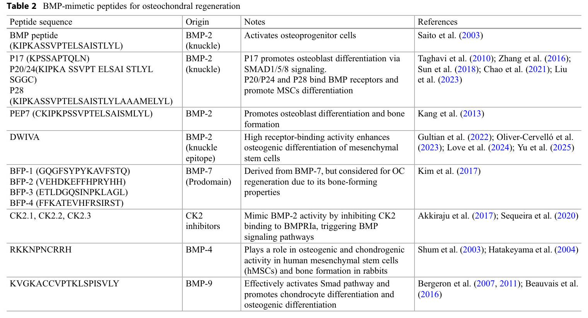
表 2 用于骨软骨再生的BMP模拟肽（BMP-mimetic peptides）Table 2 BMP-mimetic peptides for osteochondral regeneration
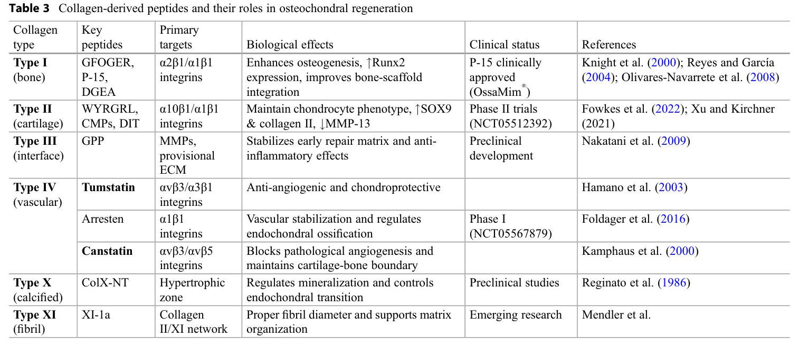
表 3 胶原来源肽（collagen-derived peptides）及其在骨软骨再生中的作用Table 3 Collagen-derived peptides and their roles in osteochondral regeneration
α10β1和α1β1整合素，上调SOX9和II型胶原的表达，同时下调MMP-13等分解代谢酶，从而有助于维持软骨细胞（chondrocyte）表型（Fowkes et al. 2022; Maity et al. 2023）。III型胶原肽，如GPP基序和α1(III)CB4，通过稳定临时基质（provisional matrix）、调节炎症和促进血管生成（angiogenesis），在早期修复中发挥关键作用，而这些过程对OC界面的愈合至关重要（Nakatani et al. 2009）。尤为重要的是，IV型胶原NC1结构域来源的肽段，如tumstatin（α3(IV)NC1）、arresten（α1(IV)NC1）和canstatin（α2(IV)NC1），可对OC界面的血管生成实现精确调控，有助于在维持血管稳态的同时防止病理性新生血管形成（neovascularization）（Chamani et al. 2022）。Tumstatin（α3(IV)NC1）表现出双重功能：一方面抑制异常血管生长，另一方面通过增强蛋白聚糖（aggrecan）合成来维持软骨完整性。尽管Tumstatin是一种公认的抗血管生成制剂，但其在骨再生中的直接作用仍不明确（Hamano et al. 2003）。仍需进一步研究以确定其在促进骨修复方面的潜力，无论其是通过调节血管生成还是通过其他机制发挥作用。Arresten（α1(IV)NC1）可抑制内皮细胞（endothelial cell）活性，可能有助于血管稳定并影响软骨内成骨（endochondral ossification）（Foldager et al. 2016）。相比之下，canstatin（α2(IV)NC1）可抑制促血管生成信号，通过防止血管过度侵入软骨，帮助维持正常的分区结构（zonal organization）（Kamphaus et al. 2000）。此外，X型胶原来源的肽段通过诱导碱性磷酸酶（alkaline phosphatase）活性来调控软骨细胞肥大与基质矿化，而XI型胶原肽则与II型胶原协同作用，以稳定软骨纤维网络（Han et al. 2024）。由PEG、PLGA和GelMA制备并掺入胶原肽的水凝胶或支架能够实现空间可控与持续释放（Rana and De la Hoz 2024）。D-氨基酸替换和纳米颗粒包封等进展进一步提高了肽段的稳定性及其治疗效果。在临床应用中，P-15/HA复合材料已在骨修复中显示出潜力（Cheng et al. 2024）。未来的策略将着重于智能生物材料系统和肽的计算设计，以实现阶段特异性递送，从而更贴近地重现天然的骨软骨发育与愈合过程。
连接蛋白N端多肽（LPP）
连接蛋白（link protein）是软骨细胞外基质（extracellular matrix, ECM）中的一种关键糖蛋白（glycoprotein），可稳定聚蛋白聚糖（aggrecan）与透明质酸（hyaluronic acid）之间的结合，而这一结合对维持力学完整性至关重要。其N端肽（N-terminal peptide, LPP）是一个由16个氨基酸组成、序列为DHLSDNYTLDHDRAIH的片段，在体外可积极促进软骨细胞（chondrocyte）介导的软骨基质中蛋白聚糖（proteoglycan）和II型胶原（type II collagen）的合成（Wang et al. 2013）。LPP还能增强软骨干/祖细胞（cartilage stem/progenitor cells, CSPCs）的增殖与迁移，并促进其向成熟软骨细胞分化，这一点已通过SOX9、II型胶原和聚蛋白聚糖表达的升高得到证实（He et al. 2018）。重要的是，LPP具有双重活性——既促进基质合成，又抑制由IL-1β和TNF-α等炎症介质诱导的分解代谢性降解（Yeh et al. 2018）。此外，掺入LPP的生物材料（biomaterials）可促进内源性软骨细胞和骨髓间充质干细胞（bone marrow mesenchymal stem cells, BMSCs）向损伤部位的募集，从而增强组织修复。与传统生长因子（growth factor）相比，LPP发生非预期骨形成的风险较低，并可作为TGF-β3的更安全替代品；后者则受半衰期短以及可能引发炎症的限制。尽管关于LPP在骨软骨（osteochondral, OC）再生中作用的研究仍在进行中，但其促进软骨分化并可能募集BMSCs的能力展现出巨大前景，尤其是与专为软骨和骨修复双重目的而设计的先进生物材料相结合时。当前研究还聚焦于阐明LPP的作用机制、评估其治疗潜力，以及开发LPP功能化生物材料，以改善其递送并促进其治疗骨软骨缺损的临床转化。
甲状旁腺激素相关肽（PTHrP）
PTHrP是一种多功能信号分子，在软骨和骨的发育与维持中发挥关键作用，这使其成为骨软骨（osteochondral，OC）再生领域极具前景的治疗候选分子。PTHrP的两个片段——PTHrP (1–34)和PTHrP (107–139)——因其成软骨（chondrogenic）和抗肥大（antihypertrophic）特性而受到广泛研究。PTHrP (1–34)是N末端片段，通过结合PTH1R受体模拟天然PTHrP的活性，经由激活cAMP/PKA信号通路并上调SOX9，促进基质合成并抑制间充质干细胞（mesenchymal stem cells，MSCs）的肥大分化 (Fischer et al. 2014; Lückgen et al. 2024)。PTHrP (107–139)是C末端片段，在稳定软骨表型和防止退行性变方面显示出额外的益处 (ValIn 2001)。PTHrP在骨重塑（bone remodeling）中发挥关键作用，间歇性给药已被证明通过刺激成骨细胞（osteoblast）增殖和分化同时减少其凋亡而具有合成代谢效应，最终导致骨量增加。通过支架（scaffold）或水凝胶（hydrogel）递送这两种肽类，为在骨软骨缺损愈合过程中支持软骨修复同时保持软骨下骨完整性提供了一种有前景的治疗策略。
SOX9模拟多肽
SOX9模拟肽（SOX9-mimicking peptides）代表了一类新型生物活性分子，其通过模拟SOX9的功能来刺激软骨形成（chondrogenesis）(Haseeb et al. 2021)。SOX9作为软骨形成的主调控因子发挥作用，其功能依赖于DNA结合结构域与蛋白相互作用结构域之间的协同作用。高迁移率族（high-mobility group, HMG）框使SOX9能够识别并结合靶基因上的特定DNA序列，而其反式激活结构域（transactivation domains），包括反式激活中间结构域（transactivation middle domain, TAM）和C端反式激活结构域（C-terminal transactivation domain, TAC）区域，则促进共激活因子及转录机器其他组分的募集，从而激活基因表达 (De Crombrugghe et al. 2000; Haseeb et al. 2021)。
SOX9模拟肽可通过靶向上述任一结构域来调控SOX9的功能。靶向HMG框的肽段可模拟SOX9的DNA结合功能，从而增强或阻断COL2A1和ACAN等靶基因的表达。靶向反式激活结构域的肽段则可影响SOX9的蛋白-蛋白相互作用，或通过增强有益的共激活因子结合，或通过破坏抑制性相互作用 (Bell et al. 1997; Kapat et al. 2024)。来源于HMG框或反式激活结构域的肽段常与穿膜基序（cell-penetrating motifs）融合，为基因治疗或蛋白递送提供了更安全的替代方案，后者往往受限于免疫原性、不稳定性及递送相关问题。当将这些肽段掺入生物材料支架或水凝胶（hydrogels）中时，可实现对缺损部位的时空可控递送，从而促进软骨和软骨下骨（subchondral bone）的修复。肽工程、递送系统及联合治疗方面的进展对于成功将SOX9模拟肽转化应用于临床修复骨软骨（osteochondral, OC）缺损至关重要 (Delgado-Enciso et al. 2017; Zhang et al. 2021)。
IGF模拟多肽
胰岛素样生长因子（insulin-like growth factors，IGFs），尤其是IGF-1，是关键的合成代谢生长因子（anabolic growth factor），在软骨和骨的维持与修复中均发挥重要作用。IGF-1可刺激软骨细胞（chondrocyte）增殖、基质合成与软骨形成，因而成为骨软骨（osteochondral，OC）再生的关键因子。然而，IGF-1的直接给药受到其快速降解、半衰期短以及全身性副作用风险的制约（Miller et al. 2010）。为解决这些问题，研究者通过工程化设计构建了IGF模拟肽（IGF-mimetic peptide），通过选择性结合并激活IGF-1受体（IGF-1R）来复现IGF-1的生物活性，从而触发PI3K/Akt和MAPK等重要信号通路，促进细胞存活、增殖与分化（Kim et al. 2022; Tan et al. 2025）。其中，IGF-1 C结构域肽（IGF-1C）是一段12个氨基酸的序列（GYGSSSRRAPQT），已显示出通过激活p38和JNK信号通路促进骨髓来源间充质干细胞（mesenchymal stem cell，MSC）成骨分化的潜力（Ran et al. 2021）。另一个值得关注的变体是IGF-1 Ec的C末端肽，称为机械生长因子（Mechano-Growth Factor，MGF）E肽，是由IGF1基因经可变剪接（alternative splicing）产生的一段24个氨基酸序列（YQPPSTNKNTKSQRRKGSTFEERKHGG），已被证明能够刺激软骨细胞和成骨细胞（osteoblast）的增殖（Vassilakos et al. 2014; Schlegel et al. 2013）。值得注意的是，MGF的表达在机械刺激应答中上调，这凸显了其作为软骨和骨自然修复过程中关键中介因子的作用（Peng et al. 2012）。总体而言，IGF模拟肽通过促进成软骨分化（chondrogenic differentiation）、增强细胞外基质（extracellular matrix，ECM）沉积，并协助软骨与软骨下骨（subchondral bone）的再生来支持软骨修复，使其成为促进OC缺损愈合的一种颇具前景的治疗策略（Holland et al. 2007; Dixit et al. 2021）。
透明质酸（HA）模拟多肽
HA是细胞外基质（ECM）的关键组分，在维持关节润滑、组织水合以及软骨结构完整性方面发挥着不可或缺的作用。尽管直接来源于HA的肽序列鲜有报道，但通过工程化设计以结合HA或复现其生物学功能的合成肽已取得了实质性进展。这些肽通过增强细胞-基质相互作用和支持组织修复，在促进骨软骨（osteochondral, OC）再生方面展现出巨大前景。其中研究最为深入的一类肽是透明质酸结合肽（hyaluronic acid binding peptide, HABP），其靶向富集HA的微环境以调节细胞行为或促进药物递送。诸如RYPISRPRKRC和CGGGRYPISRPRKR等代表性HABP序列已被整合入水凝胶体系中，通过与透明质酸结合来支持软骨形成，有助于维持水合基质并促进软骨特异性基质组分的产生 (Roberts et al. 2014)。透明质酸介导的运动受体（receptor for hyaluronan-mediated motility, RHAMM）模拟肽被设计用于模拟透明质酸介导的运动受体（RHAMM）的透明质酸结合结构域，RHAMM是参与骨软骨再生的炎症、细胞迁移和增殖的关键调控因子。其中，微管蛋白衍生的12聚体肽（AYPIASDFRGT）已被鉴定为高亲和力RHAMM配体，能够有效抑制HA-RHAMM相互作用，在HA相关疾病中展现出治疗潜力 (Esguerra et al. 2015)。此外，15聚体RHAMM模拟肽（P15-1）与高分子量HA联合给药时，通过减少促炎性巨噬细胞，在兔模型中展现出增强的软骨修复潜力 (Bianchini et al. 2024)。另一种RHAMM模拟肽，由15至30个氨基酸组成的序列（STMMSRSHKTRSHHV），已被研究用于与HA联合直接应用于关节软骨缺损 (Cowman et al. 2017)。总体而言，HA模拟肽在OC再生方面具有多项优势，包括增强细胞-基质相互作用、刺激软骨向分化、提高新生软骨的机械强度，以及在骨关节炎治疗中通过CD44结合介导的抗炎作用。当与HA基生物材料整合时，这些肽表现出改善的递送性能和生物活性，使其成为OC缺损软骨修复和关节炎治疗的有前景的候选者。
促血管生成（angiogenesis）多肽
血管化（vascularization）对于供给氧气、营养物质和生长因子，清除代谢废物，以及支持功能性软骨和骨的形成与整合至关重要。由于软骨本身无血管的特性以及下方骨组织需要血管化，大面积骨软骨（osteochondral, OC）缺损的再生面临重大挑战。血管化不足会导致愈合不良、纤维软骨（fibrocartilage）形成以及组织整合不充分。为克服这一问题，研究人员正在探索可模拟VEGF和Ang-1等促血管生成生长因子的生物活性肽（bioactive peptides），以刺激骨软骨缺损内的血管形成 (Wang et al. 2021)。诸如含15个氨基酸的QK肽（KLTWQELYQLKYKGI）等VEGF模拟肽可模拟VEGF165的螺旋区（第17–25位氨基酸），在体外和体内均能有效激活VEGF受体并刺激血管生成 (D'Andrea et al. 2005)。亲本VEGF序列（KLTWQELYQ）的螺旋结构对这种相互作用至关重要 (Wang et al. 2021)。在QK肽上添加E7标签（E7-QK）可改善其与骨样材料的结合，并增强支架内的血管出芽，表明其在骨-软骨界面应用方面的潜力。此外，tFNA-KLT表现出卓越的血管生成能力，并通过加速血管化在预防双膦酸盐相关性颌骨坏死（bisphosphonate-related osteonecrosis of jaw, BRONJ）方面显示出潜力 (Sharma et al. 2013; Zhao et al. 2022)。VEGF模拟肽可启动血管生成，而血管生成素-1（Angiopoietin-1, Ang-1）来源的肽（如Q肽，QHREDGS）则对血管成熟和稳定至关重要。尽管与水凝胶偶联的Q肽在体内可加速伤口愈合，并在体外影响细胞因子释放和巨噬细胞活性 (Mandla et al. 2019)，但目前尚缺乏支持其在骨软骨再生中作用的直接证据。尽管如此，其在血管稳定以及炎症和细胞外基质（extracellular matrix, ECM）环境调控方面的公认作用表明其具有潜在优势，凸显了进一步研究其应用于骨软骨修复的重要性。除血管生成生长因子模拟肽外，其他内源性肽也显示出与骨软骨再生相关的促血管化作用。P物质（Substance P, SP）是一种序列为RPKPQQFFGLM的十一肽，在包括骨软骨缺损修复在内的多种组织工程应用中，已证明其能够将内源性干细胞和祖细胞招募至损伤部位并刺激血管生成 (Zhang et al. 2009; Fu et al. 2014)。同样，三肽GHK（Gly-His-Lys）因其在引导组织重塑中的作用而被广泛研究，也显示出促血管生成的特性 (Klontzas et al. 2019)。此外，骨桥蛋白（osteopontin）来源的肽SVVYGLR已被证明在体外和体内模型中均可刺激新血管形成 (Hamada et al. 2004)。将促血管生成肽掺入生物材料支架中，旨在建立支持血管化的微环境，从而提高再生细胞的存活率和功能，促进其分化，并支持组织整合，最终实现更有效、更稳定的骨软骨缺损修复。
成功的骨软骨（osteochondral, OC）再生需要细胞外基质（extracellular matrix, ECM）的协调重塑，以及新生组织与周围宿主环境的无缝整合 (Kacprzak et al. 2025)。多肽（peptide）是调控这些过程的一种有效且适应性强的手段。例如，靶向MMP-13（一种参与软骨降解的关键酶）的基质金属蛋白酶（MMP）抑制性多肽有助于控制ECM的降解，营造一种既支持修复又可防止新生组织受到过度损伤的平衡环境。促进细胞-基质相互作用的多肽在促成组织整合方面发挥着关键作用。其中一个例子是RGD（Arg-Gly-Asp）多肽，其可与软骨细胞（chondrocyte）和成骨细胞（osteoblast）表面的整合素（integrin）受体结合，增强细胞在缺损内部及宿主-移植物界面处的黏附、迁移与有序排列 (Guo et al. 2014)。除RGD外，其他促黏附多肽，如来源于纤连蛋白（fibronectin）的PHSRN（Pro-His-Ser-Arg-Asn），也能增强细胞的贴附与铺展，从而有助于实现更好的整合 (Petrie et al. 2010)。此外，能与特定ECM组分结合的多肽，如COMP结合多肽，可通过影响软骨细胞行为并增强ECM稳定性，间接支持基质重塑和组织整合。通过利用多样化的多肽功能精确调控基质动力学并强化细胞-基质相互作用，研究人员致力于提高骨软骨修复的长期成功率与耐久性。
其他辅助性多肽
细胞黏附多肽（CAPs）
CAPs是一类短氨基酸序列，通过结合细胞表面的整合素（integrin）受体介导细胞与细胞外基质（extracellular matrix, ECM）间的相互作用，在骨软骨（osteochondral, OC）再生中发挥着至关重要的作用。诸如RGD、LHRR、PHSRN和YIGSR等CAPs被广泛应用，其可通过激活FAK和PI3K/Akt等对软骨和骨修复至关重要的关键信号通路，促进间充质干细胞（mesenchymal stem cells, MSCs）和软骨细胞（chondrocyte）在生物材料（biomaterial）上的黏附、迁移与分化。例如，RGD和LHRR肽可增强MSCs和软骨细胞在支架（scaffold）上的黏附，从而支持软骨形成（Guo et al. 2014）。此外，源自纤连蛋白（fibronectin）的PHSRN肽也能促进成软骨分化（chondrogenic differentiation）。同样，源自层粘连蛋白（laminin）的YIGSR肽可支持MSCs黏附于支架，并同时促进软骨发生（chondrogenesis）和ECM合成（Hattori et al. 2009）。源自纤连蛋白的PHSRN肽通过与MSCs表面的α5β1整合素结合并激活黏着斑激酶（focal adhesion kinase, FAK）通路，促进MSCs黏附于生物材料并支持其成软骨分化，该通路调控着细胞行为和软骨特异性基因的表达（Lee et al. 2021）。源自胶原（collagen）的GFOGER肽通过与α1β1和α2β1整合素受体结合，显著促进OC再生，进而促进软骨细胞黏附和软骨ECM合成，这对于OC缺损中实现有效的软骨修复至关重要（Azadi et al. 2024）。透明质酸（hyaluronic acid, HA）结合肽通过与HA或其受体CD44相互作用，促进软骨细胞黏附并强化富含HA的细胞外环境中细胞-基质的相互作用，从而增强软骨修复。这些肽支持软骨ECM的维持，这对于实现软骨的生物力学性能至关重要，同时还能促进软骨细胞的存活、增殖和ECM合成。这些效应共同为软骨再生创造了更为有利的细胞环境，并增强关节功能。
生长因子（growth factor）亲和多肽
亲和肽（affinity peptides）经工程化设计可对BMP-2、TGF-β或IGF-1等生长因子具有高特异性，其作为分子锚（molecular anchors）发挥作用，能够实现这些关键信号分子在损伤部位的局部递送与长效滞留，为增强骨软骨（osteochondral, OC）再生提供了一种先进策略。该策略能够将生长因子以精确的时空方式递送至周围细胞，通过结合生长因子上的特定结构域或受体，或通过与螯合这些分子的细胞外基质（extracellular matrix, ECM）组分相互作用，刺激软骨发生（chondrogenesis）和成骨（osteogenesis）等应答。这种相互作用提高了缺损部位内生长因子的局部浓度，延长了其滞留时间，并增强了其与靶细胞的相互作用，从而同时支持骨软骨单元中软骨和骨的再生。将源自BMP-2指节表位（knuckle epitope）并能特异性结合BMP-2的P15肽（KIPKASSVPTELSAISTLYL）等亲和肽掺入体系，在与羟基磷灰石（hydroxyapatite）支架联合使用时，可显著增强骨髓间充质干细胞（bone marrow mesenchymal stem cells, BMSCs）的成骨分化并促进矿化（Kapat et al. 2024）。P24肽是另一个源自BMP-2指节表位的序列，已被证明能够结合BMP受体并在啮齿类动物中诱导异位骨形成（Chen et al. 2017）。PEP7（CKIPKPSSVP-TELSAISMLYL）是另一种源自BMP-2的肽，已被证明能够增强成骨细胞样细胞（osteoblast-like cells）的黏附、增殖和分化，并刺激小型猪（micropig）下颌骨缺损中的新骨形成（Kang et al. 2013）。将TGF-β1亲和肽（HSNGLPL）掺入多孔壳聚糖（chitosan）支架，在未使用外源性生长因子或任何种子细胞的情况下，实现了兔骨软骨缺损中显著的软骨再生（Chen et al. 2018）。这些实例凸显了亲和肽在建立局部化且持续的生长因子递送、进而促进骨软骨修复方面的潜力。
细胞穿透肽（CPPs）
细胞穿透肽（cell-penetrating peptides, CPPs）是一类带正电荷的短肽，能够通过与带负电荷的细胞表面相互作用，将多种治疗性分子跨膜转运。CPPs通过将生长因子、RNA、DNA质粒及基因构建体（如SOX9）直接递送至软骨细胞（chondrocytes）和间充质干细胞（MSCs）等靶细胞中，增强成软骨分化（chondrogenic differentiation），进而促进骨软骨（osteochondral, OC）缺损中的软骨再生，从而发挥着至关重要的作用。此外，CPPs还可递送基质模拟肽（matrix-mimetic peptides），如源自胶原或HA的肽段，以促进软骨细胞的黏附、增殖和细胞外基质（ECM）合成（Moreno-Vargas and Prada-Gracia 2024）。CPPs对靶细胞的选择性亲和力确保了高效递送，可最大限度地减少脱靶效应并最大化治疗效果。另外，CPPs还可用于以生长因子对生物材料进行功能化，从而增强支架整合并加速愈合活性。在OC再生中常用的CPPs包括：TAT肽（源自HIV-1），被广泛用于递送生长因子和遗传物质（Yu et al. 2015）；Penetratin，由九个精氨酸残基组成，可高效递送DNA、RNA和小肽（Birch et al. 2023）；MPG肽，由疏水序列与亲水序列融合而成，可有效递送核酸和蛋白质（Morris et al. 1999）；以及多聚精氨酸肽（polyarginine peptides，如R6或R11），其凭借强正电荷增强细胞摄取（Singh 2023）。总体而言，CPPs通过实现靶向递送并促进组织修复的改善，为提高OC再生策略的疗效提供了一个多功能平台。
促细胞迁移（cell migration）多肽
细胞迁移对骨软骨再生至关重要，因为它使间充质干细胞（MSCs）和软骨细胞（chondrocytes）能够迁移至损伤部位，并在该处增殖、分化和产生细胞外基质（extracellular matrix）——这些过程对软骨和软骨下骨的修复均至关重要。促迁移肽通过与细胞表面受体（如整合素、趋化因子受体和黏附分子）相互作用，触发引导细胞运动的细胞内信号通路，在这一过程中发挥着关键作用。其中，RGD肽因能够与整合素结合并激活FAK和PI3K/Akt等关键信号通路，从而促进MSC和软骨细胞的黏附与迁移，进而支持组织修复而广受认可 (Azadi et al. 2024)。趋化因子来源肽，如来自CXCL12的肽，通过激活CXCR4受体募集MSC，从而促进软骨修复；而VEGF来源肽则促进血管生成和细胞迁移，这两者对软骨下骨再生均不可或缺 (Yang et al. 2020)。鞘氨醇-1-磷酸（S1P）模拟肽促进肌动蛋白聚合和细胞骨架重排，提高细胞运动能力；而黏着斑激酶（FAK）结合肽（如pYEEI）则通过激活FAK促进细胞迁移 (Sassoli et al. 2019)。此外，PDGF来源肽可增强MSC和软骨细胞的迁移与增殖，促进软骨形成和血管化 (Li et al. 2022)。这些肽通过与特异性受体相互作用，触发细胞骨架重排并促进趋化作用，使其成为设计支持细胞募集、组织整合和骨软骨（OC）再生的生物材料的关键要素。
自组装（self-assembly, SA）多肽
近期研究在利用自组装（self-assembling, SA）肽进行骨软骨（osteochondral, OC）再生方面取得了显著进展，凸显了这类肽在模拟天然细胞外基质（extracellular matrix, ECM）的同时，还能为软骨和骨修复提供治疗效益。RADA16-I是研究最为广泛的肽之一，其自组装形成的纳米纤维可支持间充质干细胞（mesenchymal stem cell, MSC）的增殖和成软骨分化，从而促进软骨与软骨下骨的再生。对IKVAV肽的研究显示了类似的益处，包括增强缺损部位的血管化（vascularization），而这对实现有效的组织整合至关重要（Hao et al. 2022, 2024）。同样，PEP-1和FKBP5肽在促进成骨细胞矿化、MSC迁移与分化以及增强血管化方面显示出潜力，共同有助于改善骨形成（Morris et al. 2001; Tang et al. 2025）。可自组装成纳米结构的肽基水凝胶已被开发出来，能够以可控方式释放生长因子，同时支持软骨发生与骨发生。胶原模拟肽（collagen-mimetic peptides）也日益受到关注，因其能够复制天然胶原ECM并刺激MSC分泌ECM蛋白，从而支持软骨和骨的再生（Carvalho et al. 2021）。最后，具有可控释放功能的可生物降解肽纳米纤维正在被研究，其能够通过促进从软骨形成到骨形成的无缝过渡来推动骨软骨再生，彰显了SA肽在治疗骨软骨缺损方面的多样性与治疗潜力。
可降解多肽
可降解多肽（degradable peptides）在骨软骨（OC）再生中发挥着至关重要的作用，其提供了一种临时性的生物活性基质，既能支持组织愈合，又能随新组织的形成而同步逐渐降解。这些多肽可被引入支架（scaffold）、水凝胶（hydrogel）或纳米纤维（nanofiber）中，在修复早期阶段提供机械支持，并通过可控降解释放生物活性分子——例如生长因子（growth factors）、信号肽（signaling peptides）或细胞黏附基序（cell-adhesion motifs）——从而在不干扰后期成熟组织功能的前提下，主动促进细胞迁移、增殖与分化 (Hao et al. 2022)。对特定酶敏感的多肽，例如对基质金属蛋白酶（matrix metalloproteinases，MMPs）敏感的多肽，可被设计为响应局部组织环境而发生降解，从而按需释放再生信号。实例包括用于增强溶解性与可降解性的聚乙二醇化多肽（PEGylated peptides）、用于实现酶控降解的MMP敏感性多肽，以及可模拟天然细胞外基质（ECM）的明胶衍生多肽（如GelMA）(Chen et al. 2021)。这些可降解多肽系统构建了一个动态微环境，支持软骨与软骨下骨（subchondral bone）的同步修复，使其成为骨软骨再生的一种多功能工具。
抗菌（antimicrobial）与免疫调节（immunomodulatory）多肽
抗菌肽和免疫调节肽通过维持无菌且平衡的愈合环境，在骨软骨（osteochondral, OC）再生中发挥着至关重要的作用，从而抵御细菌感染并调节免疫反应以防止慢性炎症——否则慢性炎症会阻碍软骨和骨的修复。防御素（defensins）、cathelicidins（LL-37）和富组蛋白（histatins）等抗菌肽（antimicrobial peptides, AMPs）通过破坏微生物膜，对细菌、真菌和病毒表现出广谱活性，从而维持组织愈合所必需的无病原体环境（Kapat et al. 2024）。相反，糖皮质激素诱导的TNFR相关蛋白（glucocorticoid-induced TNFR-related protein, GITR）配体和VJ-210等免疫调节肽则通过调节巨噬细胞、T细胞及其他免疫细胞的活性来帮助调控免疫反应，从而防止过度炎症（Tian et al. 2020）。这种双重作用不仅能加速伤口闭合，还能支持细胞的迁移、增殖和分化。此外，将这些肽掺入生物材料支架中可提供局部且持续的保护，在调节炎症的同时使再生部位免受感染。这营造了一个有利的微环境，支持更快、更安全、更有效的组织修复。
多肽偶联生物材料（biomaterials）
肽偶联生物材料代表了骨软骨（osteochondral, OC）再生的一种先进策略，其利用肽类独特的生物活性来增强细胞黏附、迁移、生长因子递送、免疫调节以及组织特异性再生。这类生物材料将具有生物活性的肽——如用于细胞黏附的RGD、用于成骨分化的BMP-2和BMP-7、用于软骨诱导的TGF-β以及用于血管生成的VEGF——整合到包括水凝胶（hydrogels）、纳米纤维（nanofibers）和生物陶瓷（bioceramics）在内的多种支架基质中。通过偶联特定的肽，支架能够主动与细胞相互作用以实现靶向的再生功能——例如，RGD肽可增强间充质干细胞（mesenchymal stem cells, MSC）的黏附与迁移以促进细胞浸润，BMP-2和BMP-7肽可刺激成骨细胞分化，而TGF-β模拟肽则支持软骨向分化 (Lee and Shin 2007)。除组织形成外，肽偶联还可调节免疫反应；例如，像LL-37这样的免疫调节肽有助于缓解过度炎症，从而营造有利于再生的微环境 (Petkovic et al. 2021)。抗菌肽（antimicrobial peptides），如cathelicidins，还能在愈合早期阶段保护支架免受感染。此外，肽偶联可提高支架的机械强度和稳定性，如胶原模拟肽支架所证明的那样，其可为软骨细胞提供结构支持并增强软骨基质的形成。通过将肽的生物活性与生物材料的结构支持相结合，肽偶联支架为骨软骨再生提供了一个多功能平台，能够同时修复软骨和软骨下骨（subchondral bone），并改善组织整合与功能恢复。
骨-软骨诱导性支架（scaffold）
骨软骨（osteochondral, OC）再生需要同时修复软骨（软骨层，chondral layer）与软骨下骨（骨层，osteal layer），二者各自具有独特的生物学特性和力学需求。成功实现这种双重修复是一项重大挑战，需要设计能够同时引导成骨（osteogenesis）与成软骨（chondrogenesis）的双相（biphasic）或三相（triphasic）支架，这类支架通常被称为骨诱导性（osteo-inductive）和软骨诱导性（chondro-inductive）支架。双相支架通常由软骨层和骨层组成：软骨层由水凝胶（hydrogel）或胶原（collagen）制成，并富集TGF-β、SOX9等成软骨因子（chondrogenic factors）或特定的成软骨肽（chondrogenic peptides）；骨层则由羟基磷灰石（hydroxyapatite）或β-磷酸三钙（beta-tricalcium phosphate, β-TCP）等生物活性陶瓷（bioactive ceramics）构建，并常辅以BMP-2等成骨信号（osteogenic signals）或骨诱导性肽（osteoinductive peptides）(Moeinzadeh et al. 2015)。三相设计则引入中间的钙化软骨层（calcified cartilage layer），以促进软骨区与骨区之间的平滑过渡并增强二者的整合 (Liu et al. 2023)。为提升再生潜能，这些支架常富集生物活性分子（bioactive molecules），如生长因子（growth factors）和肽序列（peptide sequences），并通过纳米颗粒（nanoparticles）或微球（microspheres）递送，以实现可控释放（controlled release）。这些支架可预先接种软骨细胞（chondrocytes）、成骨细胞（osteoblasts）或间充质干细胞（MSCs）等细胞，也可设计为招募宿主祖细胞（progenitor cells）并促进其原位（in situ）分化 (Maity et al. 2023)。这些支架的力学性能经过精心优化：软骨层采用较软、弹性更高的材料，骨区则采用更硬、可承载负荷的材料，从而在维持力学功能的同时支持组织特异性再生。最后，胶原、明胶（gelatin）、聚乳酸-羟基乙酸共聚物（poly(lactic-co-glycolic acid), PLGA）和聚己内酯（polycaprolactone, PCL）等支架材料因其生物可降解性（biodegradability）而被选用，其逐步降解可支持天然组织的形成，并与周围组织实现无缝整合 (Tajvar et al. 2023; Maity et al. 2022)。
[1]Akkiraju H, Bonor J, Nohe A (2017) CK2.1, a novel peptide, induces articular cartilage formation in vivo. J Orthop Res 35:876–885. https://doi.org/10.1002/jor.23342
[2]Azadi S, Yazdanpanah MA, Afshari A et al (2024) Bioinspired synthetic peptide-based biomaterials regenerate bone through biomimicking of extracellular matrix. J Tissue Eng 15:1–38. https://doi.org/10.1177/20417314241303818
[3]Beauvais S, Drevelle O, Lauzon MA et al (2016) Modulation of MAPK signalling by immobilized adhesive peptides: effect on stem cell response to BMP-9-derived peptides. Acta Biomater 31: 241–251. https://doi.org/10.1016/J.ACTBIO.2015.12.005
[4]Bell DM, Leung KKH, Wheatley SC et al (1997) SOX9 directly regulates the type-II collagen gene. Nat Genet 16:174–178. https://doi.org/10.1038/NG0697-174
[5]Bergeron E, Marquis ME, Chrétien I, Faucheux N (2007) Differentiation of preosteoblasts using a delivery system with BMPs and bioactive glass microspheres. J Mater Sci Mater Med 18:255– 263. https://doi.org/10.1007/s10856-006-0687-4
[6]Bergeron E, Leblanc E, Drevelle O et al (2011) The evaluation of ectopic bone formation induced by delivery systems for bone morphogenetic protein-9 or its derived peptide. Tissue Eng Part A 18:342–352. https://doi.org/10.1089/TEN.TEA.2011.0008
[7]Bianchini E, Ashley Sin YJ, Lee YJ et al (2024) The role of hyaluronan/receptor for hyaluronan- mediated motility interactions in the modulation of macrophage polarization and cartilage repair. Am J Pathol 194:1047–1061. https://doi.org/10.1016/j.ajpath.2024.01.020
[8]Birch D, Sayers EJ, Christensen MV et al (2023) Stereoisomer-dependent membrane association and capacity for insulin delivery facilitated by penetratin. Pharmaceutics 15. https://doi.org/10.3390/pharmaceutics15061672
[9]Carvalho MS, Cabral JMS, da Silva CL, Vashishth D (2021) Bone matrix non-collagenous proteins in tissue engineering: creating new bone by mimicking the extracellular matrix. Polymers 13: 1095. https://doi.org/10.3390/POLYM13071095
[10]Chabria Y, Duffy GP, Lowery AJ, Dwyer RM (2021) Hydrogels: 3D drug delivery systems for nanoparticles and extracellular vesicles. Biomedicine 9:1694. https://doi.org/10.3390/BIOMEDICINES9111694
[11]Chamani R, Taleqani MH, Imanpour A, Khatami M (2022) New insights into short peptides derived from the collagen NC1 α 1, α2, and α3 (IV) domains: an experimental and MD simulations study. Biochim Biophys Acta 1870:140769. https://doi.org/10.1016/J.BBAPAP.2022.140769
[12]Chao YL, Lin LD, Chang HH, Wang TM (2021) Preliminary evaluation of BMP-2-derived peptide in repairing a peri-implant critical size defect: a canine model. J Formos Med Assoc 120:1212– 1220. https://doi.org/10.1016/J.JFMA.2020.07.023
[13]Chen G, Deng C, Li YP (2012) TGF-β and BMP signaling in osteoblast differentiation and bone formation. Int J Biol Sci 8:272–288. https://doi.org/10.7150/IJBS.2929
[14]Chen Y, Liu X, Liu R et al (2017) Zero-order controlled release of BMP2-derived peptide P24 from the chitosan scaffold by chemical grafting modification technique for promotion of osteogenesis in vitro and enhancement of bone repair in vivo. Theranostics 7:1072. https://doi.org/10.7150/THNO.18193
[15]Chen J, Li Y, Wang B et al (2018) TGF-β1 affinity peptides incorporated within a chitosan sponge scaffold can significantly enhance cartilage regeneration. J Mater Chem B 6:675–687. https://doi.org/10.1039/C7TB02132A
[16]Chen W, Zhou Z, Chen D et al (2021) Bone regeneration using MMP-cleavable peptides-based hydrogels. Gels 7:199. https://doi.org/10.3390/GELS7040199/S1
[17]Chen M, Liu Y, Cao Y et al (2025) Remodeling the proinflammatory microenvironment in osteoarthritis through interleukin-1 beta tailored exosome cargo for inflammatory regulation and cartilage regeneration. ACS Nano 19:4941. https://doi.org/10.1021/ACSNANO.4C16785/ASSET/IMAGES/LARGE/NN4C16785_0007.JPEG
[18]Cheng CT, Vyas PS, McClain EJ et al (2024) The osteogenic peptide P-15 for bone regeneration: a narrative review of the evidence for a mechanism of action. Bioengineering 11:599. https://doi.org/10.3390/bioengineering11060599
[19]Cowman MK, Kirsch T, Strauss EJ, Turley EA, Toelg C, Luyt LG (2017) US20170239318A1 – compositons and methods for cartilage defect repair us ing a RHAMM-mimetic peptide – Google Patents. https://patents.google.com/patent/US20170239318A1/en.Accessed 13 Ma y 2025
[20]D’Andrea LD, Iaccarino G, Fattorusso R et al (2005) Targeting angiogenesis: structural character- ization and biological properties of a de novo engineered VEGF mimicking peptide. Proc Natl Acad Sci USA 102:14215–14220. https://doi.org/10.1073/PNAS.0505047102/SUPPL_FILE/05047FIG8.JPG
[21]Dadhich P, Srivas PK, Das B et al (2021) Direct 3D printing of seashell precursor toward engineering a multiphasic calcium phosphate bone graft. ACS Biomater Sci Eng 7:3806– 3820. https://doi.org/10.1021/ACSBIOMATERIALS.1C00303/ASSET/IMAGES/LARGE/AB1C00303_0011.JPEG
[22]Dai W, Cheng J, Yan Wet al (2023) Enhanced osteochondral repair with hyaline cartilage formation using an extracellular matrix-inspired natural scaffold. Sci Bull (Beijing) 68:1904–1917. https://doi.org/10.1016/J.SCIB.2023.07.050
[23]De Crombrugghe B, Lefebvre V, Behringer RR et al (2000) T ranscriptional mechanisms of chondrocyte differentiation. Matrix Biol 19:389–394. https://doi.org/10.1016/S0945-053X(00)00094-9
[24]Delgado-Enciso I, Paz-Garcia J, Rodriguez-Hernandez A et al (2017) A promising novel formula- tion for articular cartilage regeneration: preclinical evaluation of a treatment that produces SOX9 overexpression in human synovial fluid cells. Mol Med Rep 17:3503. https://doi.org/10.3892/MMR.2017.8336
[25]Dixit M, Poudel SB, Yakar S (2021) Effects of GH/IGF axis on bone and cartilage. Mol Cell Endocrinol 519:111052. https://doi.org/10.1016/J.MCE.2020.111052
[26]Esguerra KVN, Tolg C, Akentieva N et al (2015) Identification, design and synthesis of tubulin- derived peptides as novel hyaluronan mimetic ligands for the receptor for hyaluronan-mediated motility (RHAMM/HMMR). Integr Biol 7:1547–1560. https://doi.org/10.1039/C5IB00222B
[27]Finetti F, Basile A, Capasso D et al (2012) Functional and pharmacological characterization of a VEGF mimetic peptide on reparative angiogenesis. Biochem Pharmacol 84:303–311. https://doi.org/10.1016/J.BCP.2012.04.011
[28]Fischer J, Aulmann A, Dexheimer V et al (2014) Intermittent PTHrP(1–34) exposure augments chondrogenesis and reduces hypertrophy of mesenchymal stromal cells. Stem Cells Dev 23: 2513. https://doi.org/10.1089/SCD.2014.0101
[29]Foldager CB, Toh WS, Christensen BB et al (2016) Collagen type IV and laminin expressions during cartilage repair and in late clinically failed repair tissues from human subjects. Cartilage 7:52–61. https://doi.org/10.1177/1947603515604022
[30]Fowkes MM, Borges PDN, Cacho-Nerin F et al (2022) Imaging articular cartilage in osteoarthritis using targeted peptide radiocontrast agents. PLoS One 17:e0268223. https://doi.org/10.1371/JOURNAL.PONE.0268223
[31]Fu S, Mei G, Wang Z et al (2014) Neuropeptide substance p improves osteoblastic and angiogenic differentiation capacity of bone marrow stem cells in vitro. Biomed Res Int 2014:596023. https://doi.org/10.1155/2014/596023
[32]Gao C, Dai W, Liu D et al (2025) Adaptive hydrogel loaded with pre-coordinated stem cells for enhanced osteoarthritis therapy. Bioact Mater 51:613. https://doi.org/10.1016/J.BIOACTMAT.2025.05.018
[33]Gardashli M, Baron M, Huang C et al (2024) Mechanical loading and orthobiologic therapies in the treatment of post-traumatic osteoarthritis (PTOA): a comprehensive review. Front Bioeng Biotechnol 12. https://doi.org/10.3389/fbioe.2024.1401207
[34]Golebiowska AA, Intravaia JT, Sathe V et al (2025) Engineered osteochondral scaffolds with bioactive cartilage zone for enhanced articular cartilage regeneration. Ann Biomed Eng 53: 597–611. https://doi.org/10.1007/S10439-024-03655-1
[35]Gultian KA, Gandhi R, DeCesari K et al (2022) Injectable hydrogel with immobilized BMP-2 mimetic peptide for local bone regeneration. Front Biomater Sci 1:948493. https://doi.org/10.3389/FBIOM.2022.948493
[36]Guo YS, Zhao R, Ma J et al (2014) Βig-h3 promotes human osteosarcoma cells metastasis by interacting with integrin α2β1 and activating PI3K signaling pathway. PLoS One 9:e90220. https://doi.org/10.1371/JOURNAL.PONE.0090220
[37]Haidar ZS, Hamdy RC, Tabrizian M (2009) Delivery of recombinant bone morphogenetic proteins for bone regeneration and repair. Part a: current challenges in BMP delivery. Biotechnol Lett 31: 1817–1824. https://doi.org/10.1007/S10529-009-0099-X/FIGURES/2
[38]Hamada Y, Yuki K, Okazaki M et al (2004) Osteopontin-derived peptide SVVYGLR induces angiogenesis in vivo. Dent Mater J 23:650–655. https://doi.org/10.4012/DMJ.23.650
[39]Hamano Y, Zeisberg M, Sugimoto H et al (2003) Physiological levels of tumstatin, a fragment of collagen IV α3 chain, are generated by MMP-9 proteolysis and suppress angiogenesis via αVβ3 integrin. Cancer Cell 3:589–601. https://doi.org/10.1016/S1535-6108(03)00133-8
[40]Han T, Zhu T, Lu Y et al (2024) Collagen type X expression and chondrocyte hypertrophic differentiation during OA and OS development. Am J Cancer Res 14:1784–1801. https://doi.org/10.62347/JWGW7377
[41]Hao Z, Li H, Wang Y et al (2022) Supramolecular peptide nanofiber hydrogels for bone tissue engineering: from multihierarchical fabrications to comprehensive applications. Adv Sci 9: 2103820. https://doi.org/10.1002/ADVS.202103820;REQUESTEDJOURNAL:JOUR-NAL:21983844;WGROUP:STRING:PUBLICATION
[42]Hao Z, Feng Q, Wang Y et al (2024) A parathyroid hormone related supramolecular peptide for multi-functionalized osteoregeneration. Bioact Mater 34:181–203. https://doi.org/10.1016/J.BIOACTMAT.2023.12.014
[43]Haseeb A, Kc R, Angelozzi M et al (2021) SOX9 keeps growth plates and articular cartilage healthy by inhibiting chondrocyte dedifferentiation/ osteoblastic redifferentiation. Proc Natl Acad Sci USA 118:e2019152118. https://doi.org/10.1073/pnas.2019152118
[44]Hatakeyama Y, Tuan RS, Shum L (2004) Distinct functions of BMP4 and GDF5 in the regulation of chondrogenesis. J Cell Biochem 91:1204–1217. https://doi.org/10.1002/JCB.20019
[45]Hattori A, Hozumi K, Ko JA et al (2009) Sequence specificity of the PHSRN peptide from fibronectin on corneal epithelial migration. Biochem Biophys Res Commun 379:346–350. https://doi.org/10.1016/J.BBRC.2008.12.057
[46]He R, Wang B, Cui M et al (2018) Link protein N-terminal peptide as a potential stimulating factor for stem cell-based cartilage regeneration. Stem Cells Int 2018:3217895. https://doi.org/10.1155/2018/3217895
[47]Holland TA, Bodde EWH, Cuijpers VMJI et al (2007) Degradable hydrogel scaffolds for in vivo delivery of single and dual growth factors in cartilage repair. Osteoarthr Cartil 15:187–197. https://doi.org/10.1016/J.JOCA.2006.07.006/ASSET/B7325BCE-2E78-4F76-AD9A-8A34BFA9FC33/MAIN.ASSETS/GR7.JPG
[48]Jang H-J, Yoon J-K (2024) The role of vasculature and angiogenic strategies in bone regeneration. Biomimetics 9:75. https://doi.org/10.3390/biomimetics9020075
[49]Kacprzak B, Stańczak M, Bielenda B et al (2025) Molecular aspects of cartilage microfracturation: rehabilitation insights. Orthop Rev (Pavia) 17:2025. https://doi.org/10.52965/001C.129917
[50]Kamphaus GD, Colorado PC, Panka DJ et al (2000) Canstatin, a novel matrix-derived inhibitor of angiogenesis and tumor growth. J Biol Chem 275:1209–1215. https://doi.org/10.1074/jbc.275.2.1209
[51]Kang E-J, Kim S-K, Eom T-G et al (2013) Evaluation of the osteogenic activity of the BMP-2 mimetic peptide, PEP7, in vitro and in vivo. Int J Oral Maxillofac Implants 28:749–756. https://doi.org/10.11607/JOMI.2825
[52]Kapat K, Kumbhakarn S, Sable R et al (2024) (2024) peptide-based biomaterials for bone and cartilage regeneration. Biomedicine 12:313. https://doi.org/10.3390/BIOMEDICINES12020313
[53]Kim HK, Lee JS, Kim JH et al (2017) Bone-forming peptide-2 derived from BMP-7 enhances osteoblast differentiation from multipotent bone marrow stromal cells and bone formation. Exp Mol Med 49:e328. https://doi.org/10.1038/EMM.2017.40
[54]Kim JM, Yang YS, Hong J et al (2022) Biphasic regulation of osteoblast development via the ERK MAPK– mTOR pathway. elife 11. https://doi.org/10.7554/eLife.78069
[55]Klontzas ME, Reakasame S, Silva R et al (2019) Oxidized alginate hydrogels with the GHK peptide enhance cord blood mesenchymal stem cell osteogenesis: a paradigm for metabolomics-based evaluation of biomaterial design. Acta Biomater 88:224–240. https://doi.org/10.1016/J.ACTBIO.2019.02.017
[56]Knight CG, Morton LF, Peachey AR et al (2000) The collagen-binding A-domains of integrins α1β1 and α2β1 recognize the same specific amino acid sequence, GFOGER, in native (triple- helical) collagens. J Biol Chem 275:35–40. https://doi.org/10.1074/JBC.275.1.35
[57]Lam HJ, Li S, Lou N et al (2004) Synthetic peptides cytomodulin-1 (CM-1) and cytomodulin-2 (CM-2) promote collagen synthesis and wound healing in vitro. In: Annual international conference of the IEEE engineering in medicine and biology – proceedings 26, vol VII, pp 5028–5030. https://doi.org/10.1109/IEMBS.2004.1404389
[58]Lee SH, Shin H (2007) Matrices and scaffolds for delivery of bioactive molecules in bone and cartilage tissue engineering. Adv Drug Deliv Rev 59:339–359. https://doi.org/10.1016/J.ADDR.2007.03.016
[59]Lee WS, Kim HJ, Kim K II et al (2019) Intra-articular injection of autologous adipose tissue- derived mesenchymal stem cells for the treatment of knee osteoarthritis: a phase IIb, random- ized, placebo-controlled clinical trial. Stem Cells Transl Med 8:504–511. https://doi.org/10.1002/sctm.18-0122
[60]Lee MH, Kim HM, Chung HC et al (2021) Low-molecular-weight collagen peptide ameliorates osteoarthritis progression through promoting extracellular matrix synthesis by chondrocytes in a rabbit anterior cruciate ligament transection model. J Microbiol Biotechnol 31:1401–1408. https://doi.org/10.4014/JMB.2108.08027
[61]Li D, Huang LT, Zhang CP et al (2022) Insights into the role of platelet-derived growth factors: implications for parkinson’s disease pathogenesis and treatment. Front Aging Neurosci 14: 890509. https://doi.org/10.3389/FNAGI.2022.890509/XML/NLM
[62]Li J, Wu Z, Zhao L et al (2023) The heterogeneity of mesenchymal stem cells: an important issue to be addressed in cell therapy. Stem Cell Res Ther 14(1):381. https://doi.org/10.1186/S13287-023-03587-Y
[63]Liang W, Zhou C, Liu X et al (2025) Current status of nano-embedded growth factors and stem cells delivery to bone for targeted repair and regeneration. J Orthop Translat 50:257–273. https://doi.org/10.1016/J.JOT.2024.12.006
[64]Lin X, Patil S, Gao YG, Qian A (2020) The bone extracellular matrix in bone formation and regeneration. Front Pharmacol 11:521497. https://doi.org/10.3389/FPHAR.2020.00757/XML/
[65]Liu Q, Peng X, Liu X et al (2023) Advances in the application of bone morphogenetic proteins and their derived peptides in bone defect repair. Compos Part B Eng 262. https://doi.org/10.1016/j.compositesb.2023.110805
[66]Lou W, Qiu X, Qin Yet al (2025) 3D-printed advanced scaffold armed with exosomes derived from human skeletal stem cell identified by single-cell RNA sequencing enhances osteochondral regeneration. Bioact Mater 51:231. https://doi.org/10.1016/J.BIOACTMAT.2025.04.028
[67]Love SA, Gultian KA, Jalloh US et al (2024) Mesenchymal stem cells enhance targeted bone growth from injectable hydrogels with BMP-2 peptides. J Orthop Res 42:1599–1607. https://doi.org/10.1002/jor.25798
[68]Lückgen J, Diederichs S, Raqué E et al (2024) Mechanoinduction of PTHrP/cAMP-signaling governs proteoglycan production in mesenchymal stromal cell-derived neocartilage. J Cell Physiol 239. https://doi.org/10.1002/JCP.31430
[69]Maity PP, Kapat K, Poddar P et al (2023) Capra cartilage-derived peptide delivery via carbon nano- dots for cartilage regeneration. Front Bioeng Biotechnol 11:1213932. https://doi.org/10.3389/FBIOE.2023.1213932/BIBTEX
[70]Majrashi M, Kotowska A, Scurr D et al (2023) Sustained release of dexamethasone from 3D-printed scaffolds modulates macrophage activation and enhances osteogenic differentiation. ACS Appl Mater Interfaces 15:56638. https://doi.org/10.1021/ACSAMI.3C09774
[71]Mamachan M, Sharun K, Banu SA et al (2024) Mesenchymal stem cells for cartilage regeneration: insights into molecular mechanism and therapeutic strategies. Tissue Cell 88:102380. https://doi.org/10.1016/J.TICE.2024.102380
[72]Mandla S, Davenport Huyer L, Wang Y, Radisic M (2019) Macrophage polarization with angiopoietin-1 peptide QHREDGS. ACS Biomater Sci Eng 5:4542–4550. https://doi.org/10.1021/ACSBIOMATERIALS.9B00483
[73]Miller RE, Grodzinsky AJ, Cummings K et al (2010) Intra-articular injection of HB-IGF-1 sustains delivery of IGF-1 to cartilage through binding to chondroitin sulfate. Arthritis Rheum 62:3686. https://doi.org/10.1002/ART.27709
[74]Moeinzadeh S, Barati D, Sarvestani SK et al (2015) Experimental and computational investigation of the effect of hydrophobicity on aggregation and osteoinductive potential of BMP-2-derived peptide in a hydrogel matrix. Tissue Eng Part A 21:134–146. https://doi.org/10.1089/TEN.TEA.2013.0775
[75]Moreno-Vargas LM, Prada-Gracia D (2024) Exploring the chemical features and biomedical relevance of cell-penetrating peptides. Int J Mol Sci 26:59. https://doi.org/10.3390/IJMS26010059
[76]Morris MC, Chaloin L, Méry J et al (1999) A novel potent strategy for gene delivery using a single peptide vector as a carrier. Nucleic Acids Res 27:3510–3517. https://doi.org/10.1093/NAR/27.17.3510
[77]Morris MC, Depollier J, Mery J et al (2001) A peptide carrier for the delivery of biologically active proteins into mammalian cells. Nat Biotechnol 19(12):1173–1176. https://doi.org/10.1038/nbt1201-1173
[78]Mountziaris PM, Mikos AG (2008) Modulation of the inflammatory response for enhanced bone tissue regeneration. Tissue Eng Part B Rev 14:179. https://doi.org/10.1089/TEN.TEB.2008.0038
[79]Musaimi A, Lombardi O, Williams L et al (2022) Strategies for improving peptide stability and delivery. Pharmaceuticals 15:1283. https://doi.org/10.3390/PH15101283
[80]Nakatani S, Mano H, Sampei C et al (2009) Chondroprotective effect of the bioactive peptide prolyl-hydroxyproline in mouse articular cartilage in vitro and in vivo. Osteoarthr Cartil 17: 1620–1627. https://doi.org/10.1016/J.JOCA.2009.07.001
[81]Nie K, Fan Z, Sun W et al (2026) Ultrafast crosslinking, strongly adhesive de novo protein hydrogels promote cartilage regeneration. Bioact Mater 56:368–385. https://doi.org/10.1016/J.BIOACTMAT.2025.10.009
[82]Olivares-Navarrete R, Raz P, Zhao G et al (2008) Integrin α2β1 plays a critical role in osteoblast response to micron-scale surface structure and surface energy of titanium substrates. Proc Natl Acad Sci USA 105:15767–15772. https://doi.org/10.1073/pnas.0805420105
[83]Oliver-Cervelló L, Martin-Gómez H, Gonzalez-Garcia C et al (2023) Protease-degradable hydrogels with multifunctional biomimetic peptides for bone tissue engineering. Front Bioeng Biotechnol 11:1192436. https://doi.org/10.3389/FBIOE.2023.1192436/BIBTEX
[84]Oral M, Dedeogullari ES, Onen S et al (2025) Evaluation of cartilage regeneration using a hybrid bilayer scaffold based on omentum: evidence of limited efficacy. J Orthop Surg Res 20:909. https://doi.org/10.1186/S13018-025-06347-1
[85]Pande S, Pati F, Chakraborty P (2024) Harnessing peptide-based hydrogels for enhanced cartilage tissue engineering. ACS Appl Bio Mater 7:5885–5905. https://doi.org/10.1021/acsabm.4c00879
[86]Peng Q, Qiu J, Sun J et al (2012) The nuclear localization of MGF receptor in osteoblasts under mechanical stimulation. Mol Cell Biochem 369:147–156. https://doi.org/10.1007/S11010-012-1377-9/FIGURES/5
[87]Petkovic M, Vangmouritzen M, Mojsoska B, Jenssen H (2021) Immunomodulatory properties of host defence peptides in skin wound healing. Biomolecules 11:952. https://doi.org/10.3390/BIOM11070952
[88]Petrie TA, Raynor JE, Dumbauld DW et al (2010) Multivalent integrin-specific ligands enhance tissue healing and biomaterial integration. Sci Transl Med 2:45ra60. https://doi.org/10.1126/SCITRANSLMED.3001002
[89]Pitou M, Papachristou E, Bratsios D et al (2023) In vitro chondrogenesis induction by short peptides of the carboxy-terminal domain of transforming growth factor β1. Biomedicine 11:3182. https://doi.org/10.3390/BIOMEDICINES11123182/S1
[90]Ran G, Fang W, Zhang L et al (2021) Polypeptides IGF-1C and P24 synergistically promote osteogenic differentiation of bone marrow mesenchymal stem cells in vitro through the p38 and JNK signaling pathways. Int J Biochem Cell Biol 141:106091. https://doi.org/10.1016/J.BIOCEL.2021.106091
[91]Rana MM, De la Hoz SH (2024) Evolution of hybrid hydrogels: next-generation biomaterials for drug delivery and tissue engineering. Gels 10:216. https://doi.org/10.3390/GELS10040216
[92]Reginato AM, Lash JW, Jimenez SA (1986) Biosynthetic expression of type X collagen in embryonic chick sternum cartilage during development. J Biol Chem 261:2897–2904. https://doi.org/10.1016/S0021-9258(17)35871-4
[93]Reyes CD, García AJ (2004) α2β1 integrin-specific collagen-mimetic surfaces supporting osteo- blastic differentiation. J Biomed Mater Res A 69:591–600. https://doi.org/10.1002/JBM.A.30034
[94]Roberts JJ, Elder RM, Neumann AJ et al (2014) Interaction of hyaluronan binding peptides with glycosaminoglycans in poly(ethylene glycol) hydrogels. Biomacromolecules 15:1132–1141. https://doi.org/10.1021/bm401524h
[95]Saito A, Suzuki Y, Ogata SI, et al (2003) Activation of osteo-progenitor cells by a novel synthetic peptide derived from the bone morphogenetic protein-2 knuckle epitope. Biochim Biophys Acta Protiens Proteomics 1651:60–67. https://doi.org/10.1016/S1570-9639(03)00235-8
[96]Sassoli C, Pierucci F, Zecchi-Orlandini S, Meacci E (2019) Sphingosine 1-phosphate (S1P)/ S1P receptor signaling and mechanotransduction: implications for intrinsic tissue repair/regenera- tion. Int J Mol Sci 20:5545. https://doi.org/10.3390/IJMS20225545
[97]Schlegel W, Raimann A, Halbauer D et al (2013) Insulin-like growth factor I (IGF-1) Ec/mechano growth factor – a splice variant of IGF-1 within the growth plate. PLoS One 8:e76133. https://doi.org/10.1371/JOURNAL.PONE.0076133
[98]Sequeira L, Nguyen J, Wang L, Nohe A (2020) A novel peptide, CK2.3, improved bone formation in ovariectomized Sprague Dawley rats. Int J Mol Sci 21:4874. https://doi.org/10.3390/IJMS21144874
[99]Sharma D, Ivanovski S, Slevin M et al (2013) Bisphosphonate-related osteonecrosis of jaw (BRONJ): diagnostic criteria and possible pathogenic mechanisms of an unexpected anti- angiogenic side effect. Vasc Cell 5:1. https://doi.org/10.1186/2045-824X-5-1
[100]Shum L, Wang X, Kane AA, Nuckolls GH (2003) BMP4 promotes chondrocyte proliferation and hypertrophy in the endochondral cranial base. Int J Dev Biol 47:423–431
[101]Singh D (2023) Cell-penetrating peptides are widely used molecular transporter for peptide delivery in cancer: recent advancements. Ther Deliv 14:401–405. https://doi.org/10.4155/tde-2023-0050
[102]Sun T, Qu Y, Cui W et al (2018) Evaluation of osteogenic inductivity of a novel BMP2-mimicking peptide P28 and P28-containing bone composite. J Biomed Mater Res A 106:210–220. https://doi.org/10.1002/JBM.A.36228
[103]Taghavi CE, Lee K-B, He W et al (2010) Bone morphogenetic protein binding peptide mechanism and enhancement of osteogenic protein-1 induced bone healing. Spine (Phila Pa 1976) 35(23): 2049–2056
[104]Tajvar S, Hadjizadeh A, Samandari SS (2023) Scaffold degradation in bone tissue engineering: an overview. Int Biodeterior Biodegradation 180:105599. https://doi.org/10.1016/J.IBIOD.2023.105599
[105]Takabatake K, Tsujigiwa H, Yoshida A et al (2021) A pilot study of seamless regeneration of bone and cartilage in knee joint regeneration using honeycomb TCP. Materials (Basel) 14:7225. https://doi.org/10.3390/MA14237225
[106]Tan X, Jing L, Hashemi M et al (2025) IGF-1 peptide mimetic-functionalized hydrogels enhance MSC survival and immunomodulatory activity. bioRxiv. https://doi.org/10.1101/2024.06.27.600680
[107]Tang J, Li M, Chen Yet al (2025) FKBP5 promotes osteogenic differentiation of mesenchymal stem cells through type-I interferon pathway inhibition. Cell Mol Life Sci 82. https://doi.org/10.1007/s00018-025-05754-1
[108]Tian J, Zhang B, Rui K, Wang S (2020) The role of GITR/GITRL interaction in autoimmune diseases. Front Immunol 11:588682. https://doi.org/10.3389/FIMMU.2020.588682
[109]ValIn A (2001) C-terminal parathyroid hormone-related protein (PTHrP) (107–139) stimulates intracellular Ca2+ through a receptor different from the type 1 PTH/PTHrP receptor in osteo- blastic osteosarcoma UMR 106 cells. Endocrinology 142:2752–2759. https://doi.org/10.1210/en.142.7.2752
[110]Vassilakos G, Philippou A, Tsakiroglou P, Koutsilieris M (2014) Biological activity of the e domain of the IGF-1Ec as addressed by synthetic peptides. Hormones 13:182–196. https://doi.org/10.1007/BF03401333
[111]Wang Z, Weitzmann MN, Sangadala S et al (2013) Link protein N-terminal peptide binds to bone morphogenetic protein (BMP) type II receptor and drives matrix protein expression in rabbit intervertebral disc cells. J Biol Chem 288:28243. https://doi.org/10.1074/JBC.M113.451948
[112]Wang S, Umrath F, Cen W et al (2021) Angiogenic potential of VEGF mimetic peptides for the biofunctionalization of collagen/hydroxyapatite composites. Biomolecules 11. https://doi.org/10.3390/biom11101538
[113]Wang X, Ren Z, Liu Y et al (2023) Characteristics and clinical outcomes after osteochondral allograft transplantation for treating articular cartilage defects: systematic review and single- arm meta-analysis of studies from 2001 to 2020. Orthop J Sports Med 11. https://doi.org/10.1177/23259671231199418
[114]Wu D, Li J, Wang C et al (2024) Injectable silk fibroin peptide nano fiber hydrogel composite scaffolds for cartilage regeneration. Mater Today Bio 25:100962. https://doi.org/10.1016/J.MTBIO.2024.100962
[115]Yang X, Chen L, Xu X et al (2001) TGF-beta/Smad3 signals repress chondrocyte hypertrophic differentiation and are required for maintaining articular cartilage. J Cell Biol 153:35–46. https://doi.org/10.1083/JCB.153.1.35
[116]Yang Z, Li H, Yuan Z et al (2020) Endogenous cell recruitment strategy for articular cartilage regeneration. Acta Biomater 114:31–52. https://doi.org/10.1016/J.ACTBIO.2020.07.008
[117]Yeh CH, Chen D, Aghdasi B et al (2018) Link protein N-terminal peptide and fullerol promote matrix production and decrease degradation enzymes in rabbit annulus cells. Connect Tissue Res 59:191–200. https://doi.org/10.1080/03008207.2017.1330333
[118]Yu C-Y, Huang W, Li Z-P et al (2015) Progress in self-assembling peptide-based nanomaterials for biomedical applications. Curr Top Med Chem 16:281–290. https://doi.org/10.2174/1568026615666150701114527
[119]Yu L, Wang W, Lv C et al (2025) Dual functional hydrogel of osteoclastic-inhibition and osteogenic-stimulation for osteoporotic bone defect regeneration. Mater Today Bio 31: 101550. https://doi.org/10.1016/J.MTBIO.2025.101550
[120]Zhang M, Xie R, Hou W et al (2009) PTHrP prevents chondrocyte premature hypertrophy by inducing cyclin-D1-dependent Runx2 and Runx3 phosphorylation, ubiquitylation and pro- teasomal degradation. J Cell Sci 122:1382–1389. https://doi.org/10.1242/JCS.040709
[121]Zhang X, Guo WG, Cui H et al (2016) In vitro and in vivo enhancement of osteogenic capacity in a synthetic BMP-2 derived peptide-coated mineralized collagen composite. J Tissue Eng Regen Med 10:99–107. https://doi.org/10.1002/TERM.1705
[122]Zhang X, Wu S, Zhu Y, Chu CQ (2021) Long-term durable repaired cartilage induced by SOX9 in situ with bone marrow-derived mesenchymal stem cells. Int J Med Sci 18:1399–1405. https://doi.org/10.7150/IJMS.52510
[123]Zhao D, Xiao D, Liu M et al (2022) Tetrahedral framework nucleic acid carrying angiogenic peptide prevents bisphosphonate-related osteonecrosis of the jaw by promoting angiogenesis. Int J Oral Sci 14:23. https://doi.org/10.1038/S41368-022-00171-7
第11章 · 原书第12章 · Biomaterials and Scaffold Design
增强骨软骨支架的生物学与生物力学固定：一项重大挑战
Enhancing Biological and Biomechanical Fixation of Osteochondral Scaffold: A Grand Challenge
在关节中，关节软骨（articular cartilage）、钙化软骨（calcified cartilage）和软骨下骨（subchondral bone）构成一个生物复合材料系统（biocomposite system），称为骨软骨（osteochondral, OC）单元，该单元具有在关节运动过程中传递载荷的独特能力 (Goldring and Goldring 2016)。该单元反复承受过度负荷可导致软骨损伤和软骨下骨的改变，进而引起关节的机械性失稳和关节功能丧失 (Temenoff and Mikos 2000; Yousefi et al. 2015)。若不加治疗，骨软骨（OC）缺损将导致骨关节炎（osteoarthritis, OA）的发生 (Yousefi et al. 2015)，此时该单元的组成和结构会发生显著改变 (Goldring and Goldring 2016)。在骨关节炎的病程中，会出现关节软骨变薄与降解、关节间隙狭窄（joint-space narrowing）、骨赘（osteophyte）形成以及软骨下骨重塑（subchondral bone remodeling）(Das and Farooqi 2008; Madry et al. 2010; Martel-Pelletier et al. 2008)。软骨破坏源于软骨细胞（chondrocyte）的基质合成与基质降解之间的失衡关系 (Martel-Pelletier et al. 2008)。其他病理过程，包括软骨下骨内的微骨折（microfracture）、微水肿（microedema）或微出血（microbleeding），可导致软骨下骨缺损，例如软骨下囊肿（subchondral cyst）的形成 (Madry et al. 2010)。如果骨软骨缺损已进展到患者生活质量显著下降且非手术治疗不再有效的阶段，则必须实施关节置换术（joint replacement）。这一大型外科手术往往无法完全恢复关节的全部功能，且长期并发症发生率较高。2003年至2013年间，英格兰和威尔士共实施了129.6万例关节置换手术，其中髋关节手术620,400例、膝关节手术676,082例，其首要病因是骨关节炎（超过93%）(National Joint Registry for England, Wales and Northern Ireland 2014)。骨关节炎是导致老年人功能受损和独立性下降的主要因素之一 (Zhang et al. 2007)，并构成了巨大的社会经济挑战 (Lories and Luyten 2011)。在疾病的早期、中期或晚期对受骨关节炎影响的组织进行再生，能够提高生活质量，并延缓或避免全关节置换（total joint replacement）的需求，从而降低相关成本。
骨关节炎（osteoarthritis, OA）的进展与现有治疗方法
在骨关节炎（osteoarthritis, OA）早期，软骨含水量增加，导致基质肿胀及软骨细胞（chondrocytes）代谢活性增强（图1）。这些变化伴随着软骨表面原纤维化（fibrillation）的出现，其特征是关节软骨（articular cartilage）浅层区出现显微镜下可见的裂隙。在软骨下骨（subchondral bone）中，皮质骨板（cortical bone plate）重塑加剧通常导致孔隙度增加（Goldring and Goldring 2016）。在此阶段，疼痛和僵硬是主要症状，因此治疗的目标是减轻疼痛和身体功能障碍，部分治疗还试图控制受累关节的结构性恶化（Das and Farooqi 2008; Bijlsma et al. 2011），手段包括物理治疗（Walker-Bone et al. 2000）、镇痛药和非甾体抗炎药（NSAIDs）（Lories and Luyten 2011）。关节内注射长效糖皮质激素（glucocorticoids）是治疗OA炎性发作的有效方法。透明质酸（hyaluronic acid）用于关节内注射治疗膝关节OA时疗效不一（Bijlsma et al. 2011）。随着OA的进展，软骨基质蛋白聚糖（proteoglycans）的丢失和胶原网络的侵蚀导致软骨深层裂隙的形成和部分分层，而在软骨下骨中，皮质骨板厚度逐渐增加（Goldring and Goldring 2016）（图1）。在疾病的这一阶段，软骨缺损尚小（面积 <2–3 cm²）时，微骨折（microfracture, MF）骨髓刺激被认为是一种医学上必需的治疗。MF是一种微创手术，旨在通过从下方骨组织中释放间充质干细胞（mesenchymal stem cells, MSCs）来修复软骨损伤，这些细胞随后
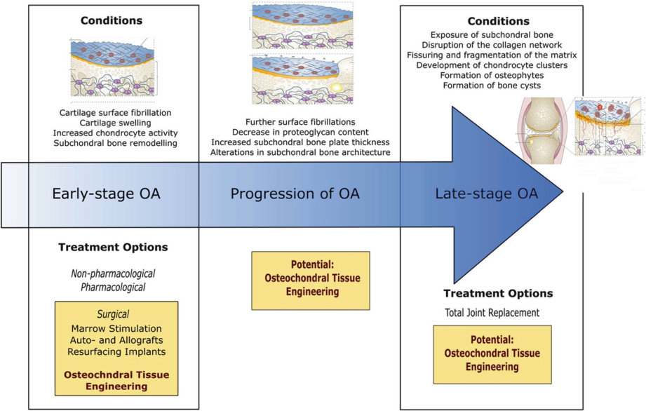
图 1 OA的进展：各分期的病变情况与治疗。骨软骨（osteochondral）单元图片。(Adapted from Goldring and Goldring 2016)Fig. 1 Progression of OA: conditions and treatments in each stage. Pictures of osteochondral units. (Adapted from Goldring and Goldring 2016)
分化为软骨细胞并形成新的软骨。该手术需清除受损的软骨，然后在下方骨的表面钻孔或以其他方式穿刺，使血液和骨髓能够穿过并到达骨/软骨界面，间充质干细胞（mesenchymal stem cells, MSCs）在该处参与软骨和骨的形成与修复。然而，再生的软骨主要为纤维软骨（fibrocartilage），预计其耐久性无法与关节透明软骨（articular hyaline cartilage）相当。这类软骨主要由I型胶原（type I collagen）、纤维细胞（fibrocyte）和无序的基质构成，缺乏正常透明软骨的生物力学和黏弹性特性 (Lee et al. 2000)，在关节内高剪切力作用下可发生失效，导致关节表面持续不规则以及随之而来的继发性关节炎改变 (Melton et al. 2010)。微骨折（microfracture）术后5年的高再手术率证实了这一点，该比率介于30%与50%之间 (Angele et al. 2016)。骨软骨（osteochondral, OC）自体移植物（autograft）或同种异体移植物（allograft）(Angele et al. 2016)、支架（scaffold）以及膝关节局灶性表面置换植入物是已被探索用于治疗小至中等尺寸损伤的方法 (Gomoll et al. 2010)。OC自体移植物被认为能够在单期手术中即刻可靠地实现有活力OC单元的组织移植。该术式利用了骨的再生潜能和骨-骨愈合能力，因为软骨的愈合能力有限 (Angele et al. 2016)。例如，Hangody et al. (2010) 分析了镶嵌成形术（mosaicplasty，即使用多个自体移植物）在82名有骨关节炎（osteoarthritis, OA）征象的运动员中的结果。他们报告术后改善显著，但在中至长期随访中观察到三分之一的患者出现轻度影像学退变 (Angele et al. 2016; Hangody et al. 2010)。新鲜OC同种异体移植物使外科医生在可治疗的缺损尺寸方面拥有更大的自由度。OC同种异体移植的常见适应证包括大的局灶性软骨缺损、剥脱性骨软骨炎（osteochondritis dissecans）和单间室关节炎（unicompartmental arthritis）(Gomoll et al. 2012)。然而，除开放性关节手术的一般并发症外，OC同种异体移植还与移植物带来的疾病传播风险以及因整合不良导致的软骨下塌陷相关。后者是大多数移植物相关失败的原因 (Angele et al. 2016)。组织工程（tissue engineering, TE）方法已被开发为OC缺损修复与再生的潜在解决方案。在该方法中，支架经设计和制造，用以提供支持细胞活动并促进组织再生的物理环境。OC支架可通过关节镜手术（arthroscopy）或微关节切开术（miniarthrotomy）植入，并采用压配（press fit）方式固定。某些病例可能需要通过缝线、固定针或纤维蛋白胶进行额外固定。目前，尺寸在2至8 cm²范围的损伤可使用骨软骨支架进行治疗，此类支架有预定尺寸规格的产品可供选择，也有可在植入时进行塑形和裁剪大小的补片形式 (Angele et al. 2016)。商用支架如Chondromimetic（Tigenix NV）、MaioRegen（Finceramica）和TruFit® BGS Plugs（Smith & Nephew）已在临床试验中联合或不联合细胞使用，用于治疗小面积软骨和骨软骨缺损（OCDs）（<1.5 cm²）。然而，据报道仅取得有限的成功，且这些支架均未获得令人满意的持久临床结果。在OA晚期，软骨中软骨细胞聚集和凋亡现象明显。在软骨深层区带，软骨细胞发生肥大分化，钙化软骨扩展并侵入上覆的透明关节软骨，并出现潮线（tidemark）重复（图1）。该过程始于血管成分穿入骨软骨交界处。除关节边缘骨赘（osteophyte）形成和软骨下骨内囊肿形成外，软骨下骨皮质板变得平坦并变形，这一过程被称为“骨磨耗”（bone attrition）。在疾病的这一阶段，下方的钙化软骨区带和软骨下骨暴露 (Goldring and Goldring 2016)。在这些晚期病例中，通常需要进行关节假体手术 (Lories and Luyten 2011)。迄今为止，OC组织工程方法主要聚焦于小面积OC缺损的再生，且大多处于OA早期阶段。然而，借助合适的支架，大面积晚期OC缺损的治疗有望成为可能。在过去几十年中，一种能够提供适宜生物力学环境以支持健康细胞生长并促进OC再生的“智能”支架理念，一直被视为治疗OA早期和晚期的“圣杯”（Holy Grail）。然而，目前仅在OA早期阶段得以实现，且成功有限。本章结合OA发展过程中观察到的类似事件，讨论OC支架的要求，以及来自体内和临床环境中OC支架性能研究的见解。支架的生物力学固定与生物学固定对OC组织健康再生的影响已日益显现。本章所讨论的结果将为未来临床OC支架的成功开发提供必要的知识。
骨软骨（osteochondral）组织工程
组织工程（tissue engineering，TE）是一门综合运用材料科学、细胞生物学和生物工程学知识来构建组织模板并恢复受损组织功能的学科（图2）。它既可以采用仅使用支架（scaffold）的无细胞（cell-free）方法，也可以从患者体内获取细胞，将细胞接种到支架上，再将这一整体置于生物反应器（bioreactor）系统中培养，待组织成熟后再移植回患者体内。在这两种过程中，三维多孔支架均在支持（接种的/驻留的）细胞生长和引导新组织形成方面发挥着重要作用（Vunjak-Novakovic et al. 2005）。由于骨软骨（osteochondral，OC）组织单元独特的结构与性质，同时再生关节软骨（articular cartilage）及其下方骨组织（即OC缺损）以形成界限明确的组织-组织界面的理念（Schaefer et al. 2000）引起了广泛关注，尤其是作为促进软骨优异整合的一种技术，以及治疗骨关节炎关节中常见的OC缺损的一种手段（O'Shea and Miao 2008）。一般而言，由于软骨致密无血管的特性以及细胞稀少，软骨-软骨界面难以实现良好整合；然而，常可观察到宿主骨与移植骨组织及其他植入材料整合良好。为了改善工程化软骨组织与宿主组织的整合，可以采用OC植入物，其骨性区域可作为
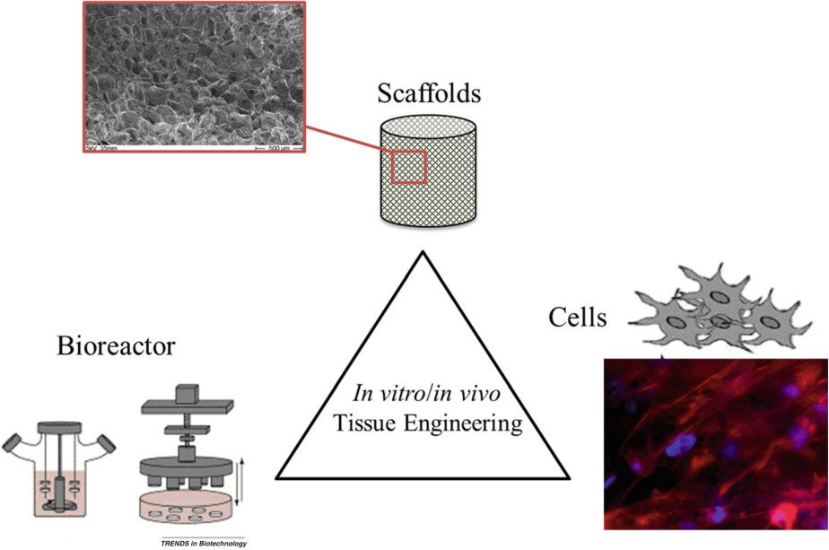
图 2 组织工程（tissue engineering）的三大关键要素为支架（scaffold）、细胞（cell）和生物反应器（bioreactor）。（改编自 O'Shea and Miao 2008; Martin et al. 2004）Fig. 2 Three key ingredients of tissue engineering are scaffolds, cells, and bioreactors. (Adapted from O’Shea and Miao 2008; Martin et al. 2004)
植入物的锚固点。因此，一个成功的OC支架需要同时兼顾这两个区域。OC复合支架的软骨区域和骨区域需要具备不同的物理与力学性能，以模拟OC单元的梯度力学性能、结构和功能。因此，一个主要的挑战在于再现与两种组织（即骨和软骨）相关的孔隙率、组成和生物力学性能的自然梯度，并实现这两种类型组织的整合（Mikos et al. 2006）。
支架（scaffold）设计考量：模拟自然
骨软骨（osteochondral, OC）组织由软骨和软骨下骨组成，两者各自具有特定的分级结构和生物学特性 (Nukavarapu and Dorcemus 2013)。因此，要设计仿生支架，必须首先了解骨软骨单元的组成、结构和功能。
软骨–骨交界处 关节软骨（articular cartilage）是骨软骨单元的最顶层，对于促进关节内的平滑运动和吸收冲击至关重要。它由包埋于细胞外基质（extracellular matrix, ECM）中的软骨细胞构成，ECM 主要由胶原蛋白（占干重的 60% (Buckwalter and Mankin 1997)，其中 90–95% 为 II 型胶原 (Newman 1998)）、蛋白聚糖（proteoglycans）和非胶原蛋白组成。软骨的结构和组成在两个层面上呈现有序组织，其划分依据是与软骨表面的距离以及与细胞的相对距离。通常，根据距表面的距离，关节软骨被划分为四个区带：表层区、中间区、深层区和钙化区 (Newman 1998)。钙化区直接位于深层区之下，深层区含有肥大软骨细胞，包埋于高度矿化的基质中，构成骨软骨界面 (Lu et al. 2010)。钙化软骨与深层区之间由一条不连续的矿化软骨带分隔，称为“潮线（tidemark）”。该线代表钙化软骨的矿化前沿，并在软骨的两个不同区域（非钙化区与钙化区）之间提供渐进过渡。钙化区正下方为软骨下骨板（subchondral bone plate），即一层骨板（皮质终板，厚 1–3 mm (Burr and Gallant 2012)），它通过“黏合线（cement line）”与钙化软骨分隔。软骨下骨板与起支撑作用的骨小梁及关节下海绵骨共同构成软骨下骨单元 (Madry et al. 2010)。虽然胶原原纤维可穿越潮线、连接关节软骨与钙化软骨，从而使这两个区带之间形成牢固的联系，但黏合线则标志着软骨与其下方骨组织的分界。由于在钙化软骨与软骨下骨板之间没有连续的胶原纤维，该区域被认为是薄弱环节 (Madry et al. 2010; Flachsmann et al. 1995)。软骨与软骨下骨单元之间陡峭的刚度梯度，可能是剪切应力导致软骨从骨上剥离的原因之一 (Madry et al. 2010)。在载荷作用下，各骨软骨层内会产生不同大小的应变、内压和液体流动 (McMahon et al. 2008)；凸起的关节面可能承受较大的侧向力，从而在骨软骨区域引发多种剪切性损伤 (Flachsmann et al. 1995)。因此，在为骨软骨组织工程（tissue engineering, TE）设计双层/多层支架 (Martin et al. 2007) 时，一个重要的考虑因素是避免不同层之间力学性能的突变和过大差异。
软骨下骨在软骨维持中的作用 软骨下骨（subchondral bone）对关节软骨（articular cartilage）的功能与维持至关重要。从生物力学的角度来看，关节能够承受行走时产生的动态负荷所带来的约2.5–5倍体重的载荷。软骨下骨可增强承载能力：正常的软骨下骨可衰减约30%通过关节的载荷，而软骨仅衰减1–3%（Madry et al. 2010）。软骨与骨协同作用，共同发挥关节的生物力学功能，前者如同轴承，后者则如同结构大梁和减震器（Layton et al. 1988）。因此，软骨与软骨下骨的同时修复与再生是骨软骨（osteochondral）组织工程中的一个关键概念。据推测，软骨的厚度取决于关节吻合度（congruency）（Madry et al. 2010）和局部应力（Eckstein et al. 1992）。吻合度高的关节软骨较薄，而吻合度低的关节则覆盖着一层较厚的软骨，使其更易变形，从而增大承载面积并降低单位面积应力（Madry et al. 2010; Shepherd and Seedhom 1999）。直观上，应力较大的区域软骨较厚。就软骨下骨而言，其矿化程度也存在区域性差异，关节面负荷较大的区域通常密度更高（Madry et al. 2010; Eckstein et al. 1992）。因此，可以认为，在关节内预期应力最大的部位，软骨下骨的矿化程度更高，软骨也更厚（Madry et al. 2010）。因此，支架（scaffold）的设计可能需要根据缺损在关节内的位置，对各层的厚度及矿化程度/刚度加以调整。从营养的角度来看，软骨下骨同样发挥着重要作用。软骨下骨板（subchondral bone plate）中存在大量血管和空腔，它们穿过黏合线（cement line）侵入钙化软骨（calcified cartilage），且主要集中于应力较大的区域，为软骨下骨提供丰富的血液供应，并为软骨提供营养物质（Madry et al. 2010）。软骨表层区（superficial zone）的营养主要依赖经滑液（synovial fluid）的扩散作为其营养来源，而软骨下循环则可能对深层软骨和钙化软骨的营养供应作出重要贡献（Arkill and Winlove 2008; Berry et al. 1986）。事实上，已有研究表明，软骨所需的葡萄糖、氧和水中50%以上由这些软骨下血管的灌注提供（Findlay and Kuliwaba 2016; Imhof et al. 2000）。软骨下骨与软骨之间接触的丧失最终会导致软骨退变（Malinin and Ouellette 2000）。这凸显了软骨下骨再生与血管化（vascularization）在骨软骨（OC）组织工程中的重要性。血管系统在骨形成中的重要意义体现在这样一个事实：代谢活跃的细胞距离毛细血管不超过100 μm，以获得氧气和营养物质的供应（Freed and Vunjak-Novakovic 1998; Sachlos and Czernuszka 2003）。这常常给组织工程带来难题（尤其是无细胞支架——因为在体外构建物中，该问题可通过使用生物反应器（bioreactor）得到缓解），由于氧和营养物质的扩散受限，常驻细胞可能无法迁移至支架深处，只有靠近表面的细胞才能存活。然而，支架外周的矿化实际上会阻碍进一步的扩散和向支架内部的传质，导致组织仅能生长出较薄的横截面（<500 μm）（Tamaddon and Czernuszka 2013）。在设计用于OC组织工程的支架时，需要将这一点考虑在内，例如在OC支架中设计内部通道（Yahyouche et al. 2013）。
支架的结构与性能
当软骨钙化区被手术切除时——例如在微骨折术（microfracture）或支架植入之前对软骨缺损或骨软骨（osteochondral, OC）缺损基底部进行准备的情况下——含有间充质干细胞（mesenchymal stem cells, MSCs）的骨髓可能经血管或通道进入清创后的缺损区（Madry et al. 2010）。控制骨髓间充质干细胞（bone marrow mesenchymal stem cells, BMMSCs）的细胞行为对于获得正确类型的再生组织（例如透明软骨（hyaline cartilage）而非纤维软骨（fibrocartilage））至关重要。支架为BMMSC的生长提供物理环境，并通过支架–细胞相互作用在调控BMMSC命运方面发挥关键作用（Guilak et al. 2009），借此调节细胞表型、细胞骨架铺展、增殖、基因表达，并通过代谢活动、细胞–基质和细胞–细胞接触调节细胞外基质（extracellular matrix, ECM）分泌（Jingjing et al. 2014）。影响干细胞行为的微环境因素（Singh et al. 2008）包括支架表面特性（如润湿性（wettability）和电荷——细胞黏附）、材料（细胞黏附和分化）、微观结构（孔隙率、孔径和形状——细胞黏附、迁移和分化）以及刚度（细胞分化）。
支架表面与材料特性影响细胞黏附与分化 当支架植入骨软骨缺损（OCD）后，来自患者的生物体液（如骨髓液、滑液等）将与支架表面接触。表面润湿性影响蛋白质吸附，进而影响细胞在其表面的黏附。因此，理解细胞在生物材料上黏附的分子机制对于调控支架–细胞相互作用十分重要。当锚定依赖性细胞（anchorage-dependent cell，如MSCs）与某一表面接触时，必须黏附于该表面才能存活、增殖或分化。细胞与表面的附着可以是非受体介导的，通过弱化学键（如静电键、氢键或离子键）实现；然而，这种黏附方式不能保证信号从微环境向细胞的传递，而信号传递是促使细胞分泌ECM分子所必需的，若缺乏信号传递，细胞可能进入凋亡（apoptosis）状态。相比之下，通过纤连蛋白（fibronectin）或胶原蛋白（collagen）等ECM分子实现的受体介导黏附则允许信号传递。这些ECM分子从周围环境中吸附到生物材料表面，随后通过其特定的氨基酸序列与细胞整合素（integrin）结合。这些特定的氨基酸被称为配体（ligand），ECM分子上的最小黏附基序应至少包含三个氨基酸，通常以Arg-Gly-Asp（RGD）表示。另一方面，整合素是由一条α链和一条β链组成的糖蛋白（glycoprotein）。目前已确认约16种α亚基和8种β亚基，它们以多种方式组合，形成对特定ECM分子具有优先结合亲和力的受体（Anselme 2000; Bacakova et al. 2004）。一旦配体与表面结合，整合素便形成点状或条状的“黏着斑”（focal adhesions）。在这些黏着斑中，整合素与结构和信号分子（如talin、α-actinin、filamin、paxillin或vinculin）相互作用，这些分子将整合素受体连接至细胞质内的肌动蛋白细胞骨架（图3）。随后，外部信号从微环境传递至细胞核（Zhao et al. 2013），从而影响细胞内转运过程和多种分子的分泌，并决定细胞增殖、分化或凋亡等细胞活动（Bacakova et al. 2004）。细胞在表面上黏附的程度和强度影响其迁移及其在增殖与分化行为之间进行转换的决策（Bacakova et al. 2004, 2011; Zhao et al. 2013）。例如，黏附程度大的细胞通常迁移不活跃，并且
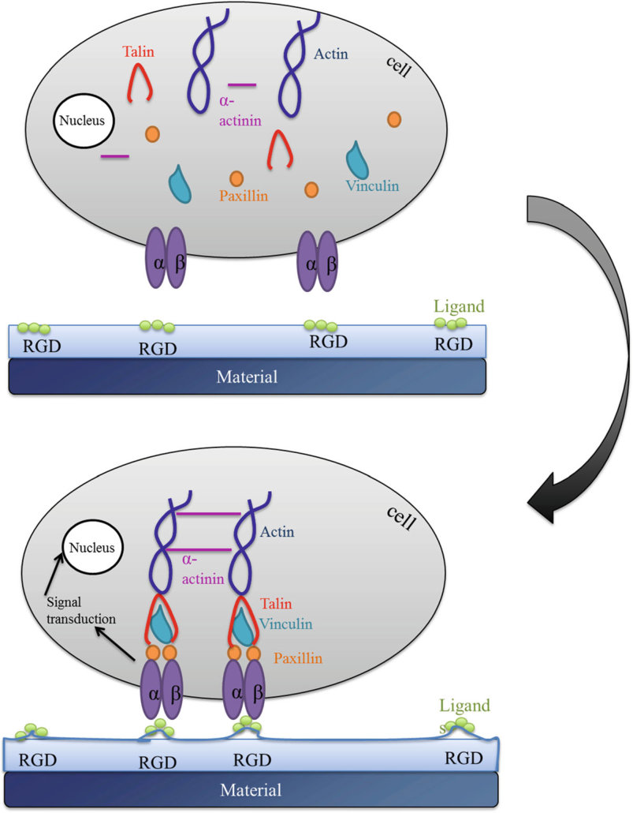
图 3 细胞–支架（cell–scaffold）相互作用。（修改自 Anselme 2000; Martino et al. 2012）Fig. 3 Cell–scaffold interaction. (Modified from Anselme 2000; Martino et al. 2012)
增殖，并在分化标志物（differentiation markers）的表达方面更为活跃 (Bacakova et al. 2011)。细胞的最佳黏附通常发生在呈中等亲水性且带正电荷的支架（scaffold）上，因为黏附分子（adhesion molecules）会以有利的几何构象被吸附，从而使配体（ligand）得以与细胞受体结合 (Bacakova et al. 2011)。简而言之，细胞的贴附（cell attachment）需要材料上存在特异性结合蛋白。支架的表面形貌（surface morphology）与化学性质调控蛋白质吸附（protein adsorption），并影响细胞的贴附与取向（alignment）(Boyan et al. 1996)。用于 OCDs 组织工程（tissue engineering）的生物材料通常分为四大类：天然聚合物与合成聚合物、金属材料，以及陶瓷和生物活性玻璃（bioactive glasses）等无机材料。通过设计多组分体系，可以制备性能增强的复合材料 (Yousefiet al. 2015)。胶原蛋白（collagen）、海藻酸盐（alginate）、明胶（gelatin）和壳聚糖（chitosan）等天然来源的聚合物具有天然生物学功能的优势，可增强细胞的贴附、增殖与功能 (Chen et al. 2011b; Malafaya et al. 2007)。如前所述，细胞主要经由材料表面的配体与支架相互作用。由天然细胞外材料（如胶原蛋白）合成的支架天然地以 RGD 结合序列（RGD-binding sequences）的形式拥有这些配体，而由合成材料制成的支架则可能需要有目的地引入这些配体，例如通过蛋白质吸附的方式 (O'Brien 2011)。这类天然来源生物材料的主要缺点是批次间差异（batch-to-batch variability）和机械强度低。而对于合成聚合物（如 PCL、PLA、PLGA），则可以精确控制其机械性能、定制结构并进行表面修饰。然而，由于其固有的疏水性（hydrophobicity）以及缺乏天然配体结合位点，它们表现出较差的细胞黏附性 (Chen et al. 2011b)。生物陶瓷（bioceramics），如磷酸钙（calcium phosphates），以其优异的骨传导性（osteoconductivity）而著称 (Yousefiet al. 2015; Hutmac her 2000)。骨组织工程（TE）支架中最常见的磷酸钙类型是羟基磷灰石（hydroxyapatite，Ca₁₀(PO₄)₆(OH)₂）、磷酸三钙（tricalcium phosphate，TCP）、双相磷酸钙（biphasic calcium phosphates）以及多相生物玻璃（multiphasic bioglasses）(Amjad et al. 1978)。磷酸钙陶瓷的降解速率、模量和可加工性（processability）等物理性质可以通过改变其组成来加以调控 (Porter et al. 2009)。
支架微结构影响细胞黏附、迁移与分化 细胞一旦附着于基质，便需要迁移至支架的三维空间中，并在其中增殖并分化为相应的组织类型。细胞迁移要求支架具有多孔性（Leng et al. 2013; Livingston et al. 2003），并具有相互连通的孔隙结构，以允许细胞健康地侵入和生长、向支架内部的细胞输送营养（Murphy et al. 2013），以及从细胞中清除代谢废物。血管化——如设计考量部分所述——若没有多孔性以允许氧气和营养物质的扩散以及血管结构的形成，则无法实现（Liu et al. 2013）。事实上，在缺乏多孔性的致密支架上完全无骨形成，证明了该因素在组织形成中的重要性（Kuboki et al. 1998）。细胞迁移还受到另一个微结构因素的影响：孔径。细胞在穿越多孔支架迁移时采用桥接机制；也就是说，它们利用相邻细胞作为支撑，跨越大于其自身直径的孔隙。如果孔隙尺寸远大于细胞的尺寸，则细胞只能沿孔隙壁铺展，而无法桥接孔隙，这一现象总体上影响细胞的迁移能力和速度（Murphy et al. 2013）。如果孔隙过小，细胞迁移将受到限制；试图桥接小孔隙的细胞会阻塞向支架中心迁移的通道，导致在支架边缘周围形成细胞包囊。这进而会限制营养物质的扩散和废物的清除，导致构建体内出现坏死区域。然而，穿越较大孔隙的细胞虽然迁移速度可能较慢，但其定向运动使其能够更深入地进入支架，从而增强细胞迁移和支架浸润（Murphy et al. 2013）。MSCs的分化可受孔径以及孔形状的影响。这可归因于MSCs软骨分化和成骨分化过程中所必需的特定细胞事件。MSCs的软骨发生伴随着从成纤维细胞形态到球形形态的形态学变化，其中成纤维细胞形态是在迁移和增殖过程中通过细胞–基质相互作用形成的，并在凝聚过程中发展为球形形态。MSCs的软骨分化发生在高度调控的阶段。间充质细胞聚集成前软骨凝聚体对软骨发生至关重要。凝聚通过细胞–细胞接触实现，该过程受相邻细胞间细胞黏附分子的结合、间隙连接的形成以及细胞骨架结构的改变所调控，随后激活胞内信号通路，启动从软骨祖细胞向完全定向的软骨细胞的转变（Jingjing et al. 2014; Delise et al. 2000; Goldring et al. 2006）。MSCs在多孔支架较大孔隙中聚集的能力，加上细胞在支架内的增殖，可能促进MSCs的软骨凝聚过程（Jingjing et al. 2014），表明孔径在调控MSCs分化中的作用。细胞形状是细胞生长和生理活动的有效调控因子（Folkman and Moscona 1978），许多与胚胎发育相关的事件（如单个和集体细胞迁移、背侧闭合等（Paluch and Heisenberg 2009））以及干细胞分化均受细胞形状的影响（Guilak et al. 2009）。图4中可见一例，展示了细胞铺展和黏着斑对细胞活力、迁移、增殖和分化的影响。在骨和软骨发育中，扁平形和球形细胞形态最为相关，其中软骨细胞的球形形态与其软骨形成潜能密切相关（Zanetti and Solursh 1984）。对BMMSCs细胞形状和核形状的直接比较表明，更接近圆形的核形状与软骨发生相关分子标志物的最高表达相关（McBride et al. 2008），而细胞形状的改变会深刻影响肌动蛋白细胞骨架的组织和黏着斑的组装（Chen et al. 2003）。如图4所示，细胞与表面黏附的程度和强度影响其迁移以及在增殖和分化行为之间的切换决策（Bacakova et al. 2004, 2011; Zhao et al. 2013）。例如，黏附面积大的细胞通常在迁移和增殖方面处于休眠状态，而在分化标志物的表达方面更为活跃（Bacakova et al. 2011）。因此，可以通过合成细胞外基质（如支架孔形状或表面化学性质）对细胞形状进行调控，从而人为地影响MSCs的命运（Guilak et al. 2009），进而影响MSCs向软骨细胞和成骨细胞的分化。根据支架材料的不同，有多种可用于制备多孔支架的技术。合成聚合物的致孔技术包括溶剂浇铸联合颗粒沥滤、相分离、气体发泡、熔融成型和纤维粘接（Sachlos and Czernuszka 2003; Hutmacher 2001），所有
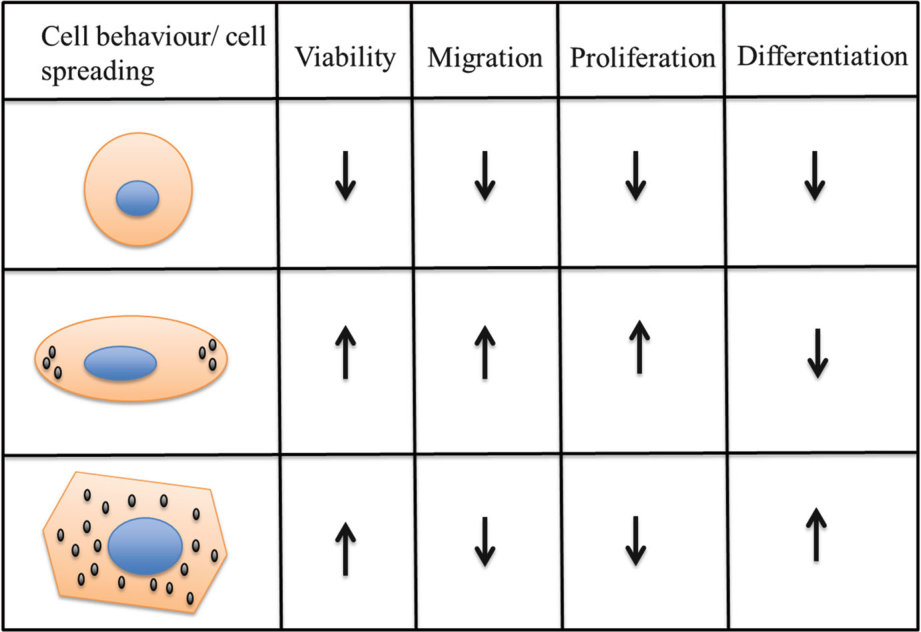
图 4 细胞铺展/黏附对后续细胞行为的影响。蓝色表示细胞核，黑点代表黏着斑（focal adhesions）。（改编自 Bacakova et al. 2004）Fig. 4 Effect of cell spreading/adhesion on subsequent cell behavior. Blue refers to cell nuclei, and black dots represent focal adhesions. (Adapted from Bacakova et al. 2004)
其中涉及高温、使用化学物质，或不适用于蛋白质类天然聚合物的pH值。因此，在天然聚合物中制备孔隙的方法数量相当有限。最常用的两种方法是冷冻干燥（freeze-drying）（Davidenko et al. 2012）和临界点干燥（critical point drying）。近年来，3D打印的应用受到了广泛关注。该技术尤其适合制备骨软骨（osteochondral，OC）支架，因为该组织具有复杂的梯度结构，其生物学、生理学和力学性能在骨软骨单元的全厚度范围内变化显著（Nowicki et al. 2016）。“固体自由成形”（solid free-form）技术（包括3D打印）为我们提供了精确控制最终产品设计及形状（包括关节特有的曲率）的工具；因此，制备可定制支架已成为现实。Do et al. (2015)、O'Brien et al. (2015) 以及 Sachlos and Czernuszka (2003) 对不同的3D打印技术进行了广泛讨论。这些技术包括直接3D打印、间接3D打印（Liu et al. 2008）、生物平台打印（bioplatter printing）（使用“生物墨水”（bioink）或载细胞凝胶）（Armstrong et al. 2016; Gao et al. 2015）、熔融沉积成型（fused deposition modeling，FDM）（Cao et al. 2003）、选择性激光烧结（selective laser sintering，SLS）（Shishkovsky et al. 2008）以及立体光刻（stereolithography，SLA）。
支架刚度影响细胞迁移与分化 支架刚度是影响干细胞命运的另一个因素（Discher et al. 2005; Engler et al. 2006）。研究表明，初始间充质干细胞对组织水平的弹性具有极高的敏感性，并据此确定谱系并定向为特定表型（Engler et al.
2006）。在细胞尺度上，正常组织细胞在锚定并牵拉其周围环境时会探测弹性（Discher et al. 2005）（图5）。细胞对其基质力学性能的响应涉及一个反馈回路，细胞对基质施加收缩力（例如，已有研究表明，支架上的每个成纤维细胞对基质施加1 nN的力（Freyman et al. 2001），根据基质刚度的不同，该力可使基质发生收缩）。收缩力在基底中产生应变。这种应变可被其他细胞检测到，细胞通过调整其细胞骨架和整体状态来对此作出响应（Murphy et al. 2013; Discher et al. 2005; Reinhart-King et al. 2008）。Engler et al. (2006) 的研究表明，人MSCs在软基底上倾向于分化为神经元样细胞，在中等弹性的基底上倾向于分化为肌源性谱系，而在刚性基底上则倾向于分化为成骨谱系（Engler et al. 2006）（图5）。类似地，基质刚度也会影响细胞迁移。成纤维细胞、上皮细胞、平滑肌与……之间的
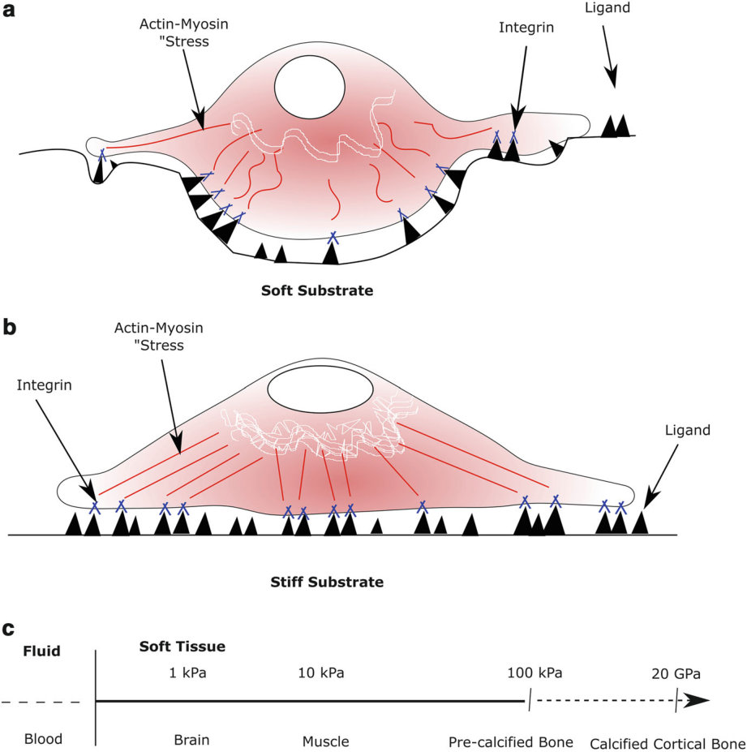
图 5 细胞–支架相互作用：（a）在软基质上，（b）在硬基质上，以及（c）由此形成的细胞骨架形态。（重绘自 Murphy et al. 2013）Fig. 5 Cell–scaffold interaction, (a) in soft and (b) in stiff substrates, and (c) the resultant cytoskeletal formations. (Redrawn from Murphy et al. 2013)
基质在较软的基底（substrate）上会减少，而当受到梯度刚度（gradient stiffness）作用时，细胞会从较软区域向较硬区域迁移（Singh et al. 2008）。调节支架各层的刚度以诱导软骨形成（chondrogenesis）和成骨（osteogenesis），是获得正确类型再生组织的一项重要考量。无论微结构（microstructure）如何，固体对应力的内在抵抗力由其弹性模量（elastic modulus）E 来衡量，该模量通过固体受力时应力–应变曲线（stress–strain curve）的线性斜率获得（Discher et al. 2005）。另一方面，支架的力学性能则取决于其组成（固体弹性模量）、微结构（孔隙率%）以及拓扑结构（孔隙的连通性与形状）（Murphy et al. 2013; Ash by 2006）。这正是多孔支架的整体模量（bulk modulus）可能比面向单个细胞的局部弹性模量低许多倍的原因（e.g., Harley et al. 2007; Murphy et al. 2012）。在植入之前，支架可制备为无细胞基质（cell-free matrix）或组织工程构建体（tissue-engineered construct）。在前一种情况下，制备好的支架可通过一步法（不含细胞）或两步法（含自体细胞）手术植入；在后一种情况下，支架在实验室中接种取自患者的自体细胞（autologous cells），组织在体外（in vitro）培养生长，随后将新生组织（neo-tissue）植入患者体内（两步法）。在此方法中，利用生物反应器（bioreactor）可能是有益的。在生理负荷下，软骨内会产生一系列机械刺激，例如压缩应变与剪切应变、应力、静水压力（hydrostatic pressure）和流体流动。生物反应器通过向细胞提供环境、生物化学和机械信号，有助于在体外模拟这些条件（Vunjak-Novakovic et al. 2005）。其有益效应包括促使祖细胞（progenitor cells）向软骨谱系（chondrogenic）和成骨谱系（osteogenic）分化（McMahon et al. 2008）。适用于骨软骨（osteochondral）组织工程的生物反应器有多种类型，包括“旋转式”（rotating）和“灌注式”（perfusion）生物反应器。在旋转式生物反应器中，支架悬浮于细胞培养基中的两个圆筒之间，气体流动经由硅胶膜（silicone membrane）进行。尽管该方法增强了向构建体表面的物质传递（mass transport），但在支架内部，物质传递仍只能通过扩散进行。灌注式生物反应器包括灌注盒（perfusion cartridge）和灌注腔室（perfusion chamber），后者能够对构建体施加三维机械载荷。该方法经过专门设计，可提供流经支架的组织间液流动（interstitial fluid flow）（Vunjak- Novakovic et al. 2005），是初始细胞接种（cell seeding）以及后续物质传递的有效手段（Wendt et al. 2005）。灌注式生物反应器已被用于制备骨诱导性（osteoinductive）移植物（Braccini et al. 2005）和软骨构建体（Davisson et al. 2002），并已在双腔室（double-chamber）灌注生物反应器中实现两种组织的同时构建（施加静水压力但无机械刺激）（Chang et al. 2004）。
OC支架在动物实验与临床研究中的表现
大量支架已被制备并用于骨软骨（osteochondral）组织工程的研究。这些支架被专门设计用于再生骨和软骨，无论是否添加细胞（Shimomura et al.
2014）。其中，仅有少数支架已进入临床试验阶段（Kon et al. 2014d）。
骨软骨支架的体内（in vivo）性能：动物模型研究
骨软骨缺损（OCDs）累及关节软骨及其相应的软骨下骨（subchondral bone）。为模拟骨软骨组织单元的天然结构，人们已开发出多层骨软骨支架（osteochondral scaffolds）。世界各地有许多研究小组利用多种生物材料（biomaterials）及其组合开发了不同的骨软骨支架。我们总结了已在体内动物研究（in vivo）中评估的典型骨软骨支架（表1）。此外，临床研究中评估的骨软骨支架列于表2。Gotterbarm等报道了一种复合支架，其上层软骨层采用I/III型胶原，骨部分则采用磷酸三钙（tricalcium phosphate, TCP）。他们在支架中引入了骨形态发生蛋白（bone morphogenetic protein, BMP）和转化生长因子β（TGF-β）等生长因子，并在小型猪模型中评估了支架的性能。术后52周的结果显示，支架已完全降解。然而，仅有约32%的缺损区域由板层小梁骨得以修复。他们得出的结论是：尽管生长因子的使用有助于加快吸收速率，但并未增加新骨形成。该研究未提供有关新生软骨质量的信息（Gotterbarm et al. 2006, 2014）。Deng等（2014）设计了一种支架，其软骨部分由明胶-硫酸软骨素-透明质酸钠（GCH）构成，骨部分由明胶-陶瓷化牛骨（GCBB）构成。该支架的力学性能（模量）优于Gotterbarm等（2006）报道的由胶原和TCP制成的支架，其骨部分的模量为13.4 MPa，软骨部分的模量为5.7 MPa。这些支架在添加细胞与不添加细胞两种情况下分别植入兔的大面积髌骨骨软骨缺损中。结果表明，含细胞的支架在6、12和24周时促进了透明软骨（hyaline cartilage）的形成；与含细胞的支架相比，仅使用支架则促使纤维组织形成。尽管在组织质量方面观察到了良好的结果，但动物模型的体型以及较短的研究周期并不能为支架在临床（即人体）环境中的长期表现提供任何提示。在另一项研究（Saha et al. 2013）中，由不同类型蚕丝制成、分别掺入与不掺入生长因子的复合支架在大鼠体内进行了为期8周的研究。观察到支架与周围组织实现了满意的生物整合（biointegration）。研究人员还观察到新生骨软骨组织的形成，其中桑蚕丝有利于骨分化（I型胶原），而非桑蚕丝则引导软骨分化（蛋白聚糖，同时含I型胶原和II型胶原）。就获得正确的组织类型而言，这一结果非常令人鼓舞；然而，动物模型和研究周期同样是限制因素。
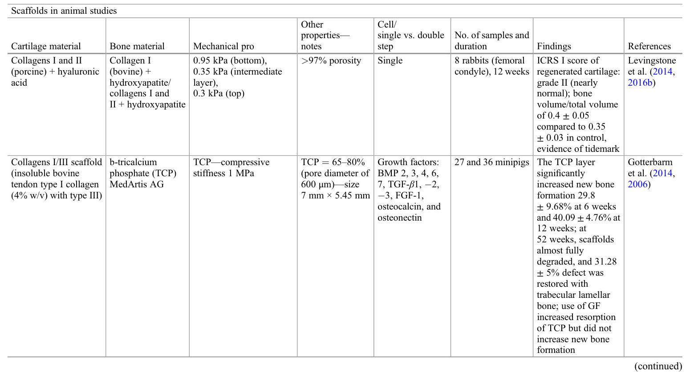
表 1 用于体内（in vivo）动物研究的支架（scaffold）的特性与性能Table 1 Properties and performance of scaffolds used for in vivo animal studies
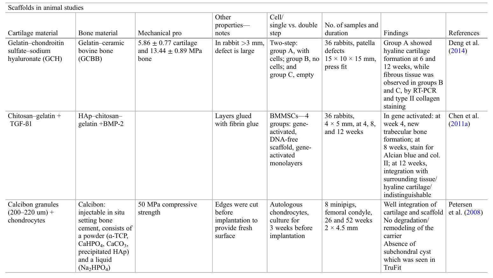
表 2（续） （续）Table 1 (continued)
（续表）
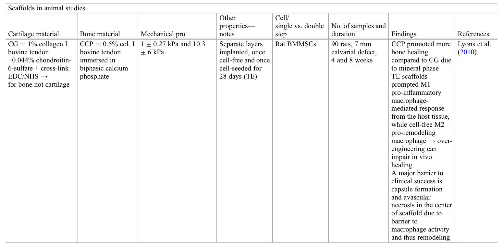
表 3（续） （续）Table 1 (continued)
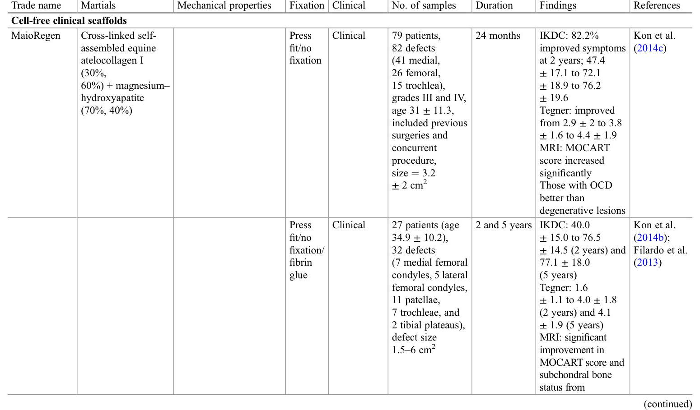
表 4 用于临床试验（clinical trials）的支架的特性与性能Table 2 Properties and performance of scaf folds used in clinical trials
图 6 (a) 术后12周的Micro-CT分析显示，多层支架（multilayered scaffold）组的骨修复水平高于空白缺损（empty defect）组（Levingstone et al. 2016b）（兔模型）；(b) Micro-CT分析显示，多层支架组股骨内侧髁（medial femoral condyle）的软骨下骨（subchondral bone）修复得到改善（Levingstone et al. 2016a）（山羊模型）Fig. 6 (a) Micro-CT analysis at 12 weeks post-surgery showed greater levels of bone repair in the multilayered scaffold group than the empty defect group (Levingstone et al. 2016b) (rabbit model); (b) micro-CT analysis showed improved subchondral bone repair in the multilayered scaffold group in medial femoral condyle (Levingstone et al. 2016a) (caprine model)
（adverse event，AE），但 KOOS 评分仅在 2 年后才显著提高。据报道，移植物与邻近自体骨之间的界面可通过 MRI 辨别。12 个月后的二次关节镜检查显示，70% 的患者新生软骨整合良好，而 30% 的患者表现为整合不完全并存在纤维组织。活检样本的组织学染色显示 II 型胶原（col. II）和阿利新蓝（Alcian blue）染色呈阳性，表明主要为含有存活柱状细胞的透明软骨。该研究随后进入 III 期临床试验。然而，
图 7 双相圆柱形支架（biphasic cylindrical scaffold）。(a) 白色箭头指示软骨相（chondral phase）的1.5 mm PLGA层；(b) 术后12个月，移植部位手术造成的凹坑已被不透X线的骨小梁（radiopaque trabeculae）填充，黑色箭头指示骨性凹坑的轮廓；(c) 术后12个月的MRI（T1序列冠状位采集）仍能清晰显示骨性凹坑的边界，该凹坑表现为与自身松质骨（cancellous bone）不同的信号，白色箭头指示移植物（graft）与宿主骨（host bone）之间的界面。（改编自Chiang et al. (2013)，经Elsevier许可）Fig. 7 Biphasic cylindrical scaffold. (a) The white arrow indicates the 1.5 mm PLGA layer for chondral phase, (b) at 12 months post-operation, the surgically created pit at the grafted site was filled with radiopaque trabeculae. The black arrows indicate contour of the bony pit; ( c) MRI (coronal acquisition with T1 sequence) at 12 months still clearly demarcates the bony pit, which is depicted by a signal different from the native cancellous bone. The white arrows indicate interface between graft and host bone. (Adapted from Chiang et al. (2013), with permission from Elsevier)
目前尚未发表任何结果。正如患者 12 个月后的 MRI 扫描所观察到的，骨凹坑的边界仍然可以辨别（Chiang et al. 2013）。对 10 名（其中 9 名完成研究）患有股骨髁症状性全层骨软骨缺损患者的 5 年随访结果显示，膝关节功能（KOOS 评分）显著改善。采用 MOCART 评分系统对修复组织进行的 MRI 评估与临床改善相一致，显示缺损被类软骨组织填充且关节面保持平整，并在 1、3 和 5 年时持续存在（Tseng et al. 2020）。患者还报告活动时疼痛减轻，在功能动作（如起立和下蹲）过程中的 VAS 疼痛评分在 5 年时显著低于术前值。12 个月时的关节镜活检证实，支架的软骨相已完全被类透明软骨替代。然而，系列 CT 扫描显示 β-TCP 相的软骨下骨整合不完全：大多数植入物表现出持续的射线不透性残留物，且在 3 年和 5 年时仍有超过 50% 的植入物–骨界面可见，在最终随访时无一例实现完全均质的骨性融合（Tseng et al. 2020）。Chen 等人在一项为期 2 年的 I 级随机对照试验中进一步扩展了这些发现，该试验将负载自体软骨的双相支架与微骨折术（microfracture，MF）进行了比较（Chen et al. 2025）。在这项多中心单盲研究中，54 名患者（平均年龄约 31 岁，患有 ICRS III–IV 级局灶性软骨或骨软骨损伤）被随机分配接受 BiCRI 支架（称为“RevoCart”）或标准 MF 治疗。到 24 个月时，两个治疗组均显示膝关节评分显著改善；然而，支架组在某些领域取得了更优的结果。2 年时，与微骨折组相比，接受双相支架治疗的患者在膝关节症状/僵硬以及运动/娱乐活动的 KOOS 子评分上更高，平均 IKDC 评分也略高（Chen et al. 2025）。MRI 分析显示支架组的软骨再生更为显著：80% 经支架治疗的缺损表现出超过 67% 的缺损填充（而经微骨折治疗的缺损约为 46%），且修复组织在 MRI 上通常与邻近软骨齐平。两组间修复组织的信号质量相当。12 个月时的二次关节镜检查证实两组缺损均被填充，支架修复和微骨折修复的 ICRS 分级均有改善；活检样本的定性组织学显示支架组的软骨更厚、更接近透明软骨，含有大量蛋白聚糖（阿利新蓝染色）和 II 型胶原，而微骨折样本的修复组织较薄，主要由纤维软骨构成（Chen et al. 2025）。与早期研究一致，到 24 个月时无一例植入支架实现完全的软骨下骨融合——基于 MRI 的分级发现完全骨性整合的比例为 0%，2 年时约 60% 的支架部位仅表现为部分骨填充，约 40% 表现为融合不良（可见支架残留）。
图 8 山羊模型中Chondromimetic的番红O（Safranin O）染色组织学切片。(a) 空白缺损，(b) 单纯支架，(c) 支架 + rhFGF-18，(d) 支架 + BMP-7。在(c)和(d)中似可见软骨裂隙（cartilage cleft），且有显著的蛋白聚糖（proteoglycan）染色向下延伸至软骨下骨。在(d)中可见一个较大的软骨下囊肿（subchondral cyst）（黑色矩形框）。箭头标示缺损边缘。（改编自Getgood et al. (2010)，经Springer许可）Fig. 8 Histological sections stained with Safranin O of Chondromimetic in a goat model. (a) Empty defect, (b) scaffold alone, (c) scaffold + rhFGF-18, and (d) scaffold + BMP-7. In (c) and (d), there appears to be a cartilage cleft, with significant proteoglycan staining extending down into the subchondral bone. In (d) there is a large subchondral cyst (b lack rectangle). The arrows denote the margins of the defect. (Adapted with permission from Getgood et al. (2010) from Sprin ger)
其疗效被描述为骨髓刺激（marrow stimulation）的一种可行替代方案。Getgood及其同事在MFC和外侧滑车沟（lateral trochlear sulcus）的临界尺寸缺损中比较了Chondromimetic与TruFit的性能（Getgood et al. 2012）。该支架还与BMP-7和rhFGF18联合使用，并在绵羊模型中进行了评估。统计分析表明，当Chondromimetic与rhFGF18联合使用时，在力学性能和组织学评分方面，其大体修复效果显著优于空白缺损组（Getgood et al. 2010）。然而，如图8的组织学检查所示，软骨下骨（subchondral bone）再生不完全，且在与BMP-7联合使用的情况下形成了软骨下囊肿（subchondral cysts）。
MaioRegen（意大利Finceramica公司产品） MaioRegen是骨软骨（osteochondral，OC）组织工程领域研究最多的支架（scaffold）之一。该支架被开发为一种三层复合材料，其各层组成不同，分别对应软骨（100% I型胶原）、钙化软骨（calcified cartilage）（60%胶原和40% HAp）以及软骨下骨（subchondral bone）区域（30%胶原和70% HAp）(Getgood et al. 2012)，如图4a所示。据报道，MaioRegen的孔隙率（porosity）为45–65%，其杨氏模量（Young's modulus）随孔隙率变化，在1.50–6.85 GPa范围内 (Getgood et al. 2012)。该支架已在动物研究以及多项临床试验病例中得到评估（见表2），目前已进入4期临床试验阶段。动物研究在两匹马中进行，将三层支架植入股骨内侧髁（medial femoral condyle，MFC）损伤处（10 mm × 8–10 mm）。据报道，6个月后新形成的骨组织和类软骨组织与周围宿主组织整合良好，并观察到潮线（tidemark）的形成 (Kon et al. 2014b)。然而，新形成的软骨为纤维软骨（fibrocartilage），而非活动关节中所预期的整合性透明软骨（hyaline cartilage）。首项临床试验在13例患者（15处损伤）中完成，损伤位于股骨内侧髁（MFC）、股骨外侧髁（lateral femoral condyle，LFC）、髌骨和滑车，为IV级和V级损伤，缺损平均大小为2.8 cm²（范围1.5–5.9 cm²）。经过6个月随访，报告显示13处移植物完全附着，2处部分脱离。对取自两例需要再次手术患者的活检组织进行的检查显示，软骨隔室中新生成的组织为纤维软骨，主要含I型胶原，且不含蛋白聚糖（proteoglycan）(Kon et al. 2010a)。随后，该支架用于另一项纳入27例患者（32处缺损）的临床试验，损伤位于股骨内侧髁、股骨外侧髁、髌骨、滑车和胫骨平台，损伤大小为1.5–6 cm²。2–5年的随访研究显示，国际膝关节文献委员会（International Knee Documentation Committee，IKDC）评分显著改善。IKDC评分从初始的40.0 ± 15.0分别提高至76.5 ± 14.5（2年）和77.1 ± 18.0（5年）。同样，Tegner评分从初始的1.6 ± 1.1提高至4.0 ± 1.8（2年）和4.1 ± 1.9（5年）。MRI检查显示，从2年到5年，软骨修复组织磁共振观察（Magnetic Resonance Observation of Cartilage Repair Tissue，MOC ART）评分和软骨下骨状态均显著改善。术后5年，78.3%的患者观察到软骨完全填充，69.6%的患者移植物完全整合，60.9%的患者修复组织表面完整，60.9%的病例观察到均一的修复组织结构。然而，该研究未纳入阴性对照，且由于部分损伤的复杂性，一些病例同时进行了联合手术 (Kon et al. 2014b; Filardo et al. 2013)。因此，23例患有III级或IV级剥脱性骨软骨炎（osteochondritis dissecans，OCD）的患者（平均损伤大小3.5 ± 1.43 cm³）接受了该支架治疗，ICRS评分和EuroQol视觉模拟量表（EuroQol Visual Analogue Scale，EQ-VAS）评分有所提高；随访2年后Tegner评分显著提高。然而，其仍未达到术前水平。MRI数据显示80%的缺损得到填充，且2年后骨界面处的支架仍可检测到 (Delcogliano et al. 2014)。此外，该支架还用于治疗49例患者的膝关节大面积骨软骨（OC）损伤（大小4.35 ± 1.26 cm²），结果显示2年后IKDC、VAS和Tegner评分较术前显著提高。研究共取5份活检组织，其中4份来自失败的移植物。大体检查显示所有标本中移植物均整合良好。组织学检查显示软骨区II型胶原染色呈阳性，MRI扫描未见水肿迹象。研究发现，患者年龄、缺损类型（OCD结局更佳）和既往活动水平均影响临床结局 (Berruto et al. 2014)。在79例患有内侧、股骨及滑车部位III级和IV级损伤的患者中观察到类似结果；IKDC评分显示，2年随访时82.2%的患者症状改善，Tegner评分和MOCART评分在1年和2年时较术前水平显著提高。研究再次表明，与退变性损伤相比，OCD损伤获得了更好的临床效果 (Kon et al. 2014c)。据报道，MaioRegen支架在一系列复杂病例中也取得了良好结果，包括一名46岁爱好运动的患者、一名31岁的奥运级运动员和一名50岁女性。由于每例患者的损伤均较复杂，联合采用了不同的重建方法（如力线矫正、自体骨软骨移植和微骨折术）。1年和2年随访结果良好，MRI显示类透明软骨信号，软骨下骨水肿轻微或无水肿。患者疼痛水平较低，并能够恢复到既往的活动水平 (Filardo et al. 2012; Kon et al. 2009; Perdisa et al. 2014)。然而，最近一项对10例骨软骨缺损患者使用MaioRegen支架的临床研究显示，术后1年和2.5年评估时骨软骨修复效果不佳 (Getgood et al. 2014)。在该研究中，两例患者因治疗失败而接受再次手术，并被排除在结果之外。2.5年随访CT检查显示，无一例患者出现软骨下骨的完全再生 (Getgood et al. 2014)。这与此前的报道形成鲜明对比——既往研究报道62–72%的患者在2年后软骨下骨完全再生 (Kon et al. 2014c)。进一步研究显示，无一例患者具有完整的关节面或与周围宿主组织完全整合，如图9所示。自该报告发表以来，相关临床试验已在丹麦停止，并建议谨慎使用MaioRegen。Yan等对8例患者的临床试验结果进行了考察，报告称大多数病例中观察到软骨下水肿、硬化和囊肿。据描述，支架与交界区实现了完全整合；然而，T2 mapping数据和分区T2指数（zonal T2 index）在修复组织中与健康对照软骨相比存在显著差异（P < 0.001），这表明使用该支架获得的修复软骨质量有限 (Tampieri et al. 2008)，如图9所示。
图 9 MaioRegen支架。(a) 展示了MaioRegen支架的三个分层；(b)和(c) 18个月后骨软骨（OC）损伤修复的MRI扫描，可见骨囊肿（bone cyst）；(d)和(e) 三名不同患者植入后1年和2.5年的CT扫描；所有病例均可见明显的圆柱形骨腔（cylindrical bone cavity）。（图片改编自Tampieri et al. (2008)、Christensen et al. (2016)和Brix et al. (2016)，(a)经ACS许可，(b–e)经Springer许可）Fig. 9 MaioRegen scaffold. (a) Shows the three layers in MaioRegen scaffold; (b) and (c) MRI scan of OC lesion repair after 18 months, and bone cysts are observed; (d) and (e) CT scans of three different patients at 1 and 2.5 years after implantation; a clear cylindrical bone cavity is seen in all of the cases. (Images adapted from Tampieri et al. (2008), Christensen et al. (2016), and Brix et al. (2016), with permission from ACS (a) and Springer (b–e))
因直接的关节接触或这种不稳定所导致的接触压力增加而受损，并造成大缺损的治疗失败或效果平平（Bekkers et al. 2013）。使用TruFit的研究结果在短期和长期内相互矛盾：12个月以内有改善的报道（Joshi et al. 2012; Bekkers et al. 2013）（尽管Dhollander（Dhollander et al. 2012）报道了20%的失败率），而12个月后，Joshi观察到病情恶化及70%的失败率。这与2015年报道的Verhaegen研究（Christensen et al. 2015）相吻合：该研究通过MRI和CT检查未观察到骨长入（bone ingrowth），反而检测到骨水肿（bone edema）和囊肿硬化（Pearce et al. 2012; Dhollander et al. 2012; Joshi et al. 2012），如图10所示。除结果存疑之外，该支架已于2013年从全球市场撤出。
从OC支架的临床研究中我们学到了什么？
软骨下骨（subchondral bone）的整合对于维持健康的关节软骨（articular cartilage）具有重要意义，这一点已得到充分确立 (Getgood et al. 2014; Barber and Dockery 2011)，并且
图 10 TruFit植入栓。(a) 股骨内侧髁（medial femoral condyle）骨软骨（OC）损伤经TruFit植入栓治疗2年后的MRI（1 T）图像。尽管支架（scaffold）整合良好且软骨层（chondral layer）得到部分填充（双箭头），但在该MRI序列中仍可清晰观察到软骨下骨（subchondral bone）改变（箭头）(Yan et al. 2015)；(b) 约1.5 cm的剥脱性骨软骨炎（osteochondritis dissecans）损伤采用两枚TruFit BGS植入栓治疗后，术后情况的矢状位磁共振图像。骨-植入栓界面清晰可见，可用于界定感兴趣区（regions of interest）。色标表示计算得到的dGEMRIC指数（T1gd），其中较高的T1gd值（1000 ms）以蓝色表示，较低的T1gd值以红色表示 (Bekkers et al. 2013)；(c) CT扫描未能显示骨长入（bone ingrowth）（箭头）(Verhaegen et al. 2015)；(d和e) 12个月和48个月时的MRI显示整合失败 (Gelber et al. 2014)Fig. 10 ATruFit plug. (a) MRI (1 T) of an OC lesion of the medial femoral condyle treated with a TruFit plug after 2 years. Despite good scaffold integration and partial filling of the chondral layer (double arrow), subchondral bone changes were clearly seen (arrow) in this MRI sequence (Yan et al. 2015); (b) sagittal magnetic resonance images of postoperative situation when an osteochondritis dissecans lesion of approximately 1.5 cm was treated using two TruFit BGS plugs. The bone-plug interface is clearly visible and could be used to define the regions of interest. The color bar represents the calculated dGEMRIC index (T1gd), where a high T1gd (1000 ms) is depicted as blue and a low T1gd as red (Bekkers et al. 2013); (c) CT scan failed to show bone ingrowth (arrow) (Verhaegen et al. 2015); (d and e) MRI at 12 and 48 months showing failure of integration (Gelber et al. 2014)
在前面（“软骨下骨在软骨维持中的作用”一节）已从生物力学和营养的角度对此进行过讨论。总体而言，在生理性负荷过程中，软骨会承受一系列机械力，例如压应力和剪切应力。这些外部应力会在软骨内诱导产生静水压（hydrostatic pressure），并引起生物流体（biofluid）进出软骨的流动。软骨下骨的功能是支撑其上覆的软骨，并保护其下方的松质骨（cancellous bone）免受高应力的作用。软骨下骨性质的改变会引起软骨层中产生的应变增加，从而启动/维持基质降解，这可能促成骨关节炎（osteoarthritis, OA）的发生/进展 (McMahon et al. 2008)。氧气和营养物质向关节软骨不同区域的递送，视软骨区域而定，或通过来自滑液（synovial fluid）的扩散实现，或通过来自软骨下骨内微血管的扩散实现。维持健康的关节软骨需要这两种扩散途径。因此，如果软骨下骨的支持作用受到损害，预期软骨从长远来看将发生退变，这为临床研究所报道的软骨无法健康再生指出了一个可能的原因。
为了更好地理解软骨缺损与软骨下骨变化之间的关系，我们对从全髋关节置换（total hip replacement）手术中获取的OA股骨头（femoral head）开展了一项研究。股骨头表面的软骨采用Outerbridge分级系统进行分级。一个带有软骨分级的典型股骨头如图11a所示。使用显微CT（micro-CT）和外周定量CT（peripheral quantitative CT, pQCT）系统对标本进行扫描，以确定股骨头内软骨下骨的结构变化以及体积骨矿物质密度（volumetric bone mineral density, vBMD，mg/cm³）的分布。OA股骨头的典型显微CT和pQCT图像分别如图11b、c所示。结果显示，软骨下骨中存在大小不一的软骨下骨囊肿（subchondral bone cysts），且这些囊肿通常出现在软骨缺失最严重的区域。囊肿的形成导致关节内负荷条件发生改变。因此，软骨下
图 11 骨关节炎（osteoarthritis, OA）股骨头。(a) 肉眼观察OA股骨头，显示处于疾病进展不同阶段的软骨和软骨下骨，(b) micro-CT扫描显示软骨下骨囊肿（subchondral bone cyst），以及(c) pQCT扫描显示软骨下骨囊肿及囊肿周围的骨矿物质密度（bone mineral density）分布Fig. 11 Osteoarthritic femoral head. (a) Visual inspection of OA femoral head showing cartilage and subchondral bone in different stages of disease progression, (b) micro-CT scan showing subchondral bone cyst, and (c) pQCT scans showing subchondral bone cysts and bone mineral density distribution surrounding the cysts
骨中的vBMD升高，其升高程度取决于软骨退变的程度。这与其他研究中关于OA晚期的观察结果一致 (Goldring and Goldring 2016)。软骨下骨中的空腔通常被称为“软骨下骨囊肿”，在OA患者中常有报道。通常，OA关节中观察到的囊肿直径在0.1–2.5 cm范围内，且呈多发。较小的囊肿见于靠近关节面的软骨下骨中，而较大的囊肿通常向更深处延伸 (Dell'Osso et al. 2016)。关于OA中软骨下骨囊肿的起源，主要有两种假说。“滑液侵入”（synovial fluid intrusion）学说认为，由于反复超负荷导致骨软骨（osteochondral, OC）区出现裂隙，滑液由此进入软骨下骨并导致这些囊肿的形成 (Dell'Osso et al. 2016)；而“骨挫伤”（bone contusion）学说则认为，由异常机械应力以及随之发生的微裂纹、水肿和局灶性骨吸收所引起的软骨下骨坏死病灶是囊肿形成的原因 (Radin and Rose 1986)。在MRI图像上，软骨下骨囊肿表现为液体信号区；在X线影像上，则表现为伴有硬化边缘的透亮区 (Radin and Rose 1986; Landells 1953)。我们在终末期骨关节炎病例中观察到的囊肿与在TruFit (Dhollander et al. 2012; Joshi et al. 2012; Verhaegen et al. 2015)、MaioRegen和Chondromimetic中观察到的“未填充骨空缺”（unfilled bone voids）相似（见图8、9和10）。所研制支架内出现的“囊肿样”空腔似乎在12个月后得以消除 (Levingstone et al. 2016a, b)（见图6）。基于这些结果，我们建立了软骨缺损进展的范式（图12）：关节软骨的损伤改变了软骨下骨的负荷模式，进而导致骨重塑（bone remodeling），即vBMD增加和囊肿形成。这影响了支撑其上覆软骨的物理环境，从而加剧软骨退变的进展。现有的OA发病机制假说模型关注的是反复的关节负荷，后者引起骨重塑活动的最初增加，或许是为了修复
图 12 软骨缺损（cartilage defect）进展的范式Fig. 12 Paradigm for cartilage defect progression
由载荷造成的损伤。这种增强的骨重塑（bone remodeling）与血管向软骨深层的侵入增加有关（Li et al. 2013），从而使软骨溶解酶（chondrolytic enzymes）得以进入软骨。这一过程具有多种效应，包括伴有或不伴有继发性炎症的继发性滑膜增厚，以及滑膜衬里层（synovial lining）中B细胞（B cells）的丢失，进而导致酶抑制功能的进一步受损。聚集蛋白聚糖（aggrecan）通常维持软骨基质的压缩刚度，其丢失所导致的软骨完整性丧失将增加关节的过度负荷；当关节试图适应更大的载荷时，这种过度负荷又反馈引起骨形成的增加。最终，这一正反馈环路将促使软骨完整性持续丧失，使病情恶化进展为临床明显的骨关节炎（osteoarthritis, OA）（Burr and Gallant 2012）。尽管关节软骨（articular cartilage）退变与骨关节炎发生的先后主次关系仍存在争议（Carrino et al. 2006），但毫无疑问，软骨下骨（subchondral bone）在软骨退变的进展中发挥着重要作用。事实上，有证据表明软骨与软骨下骨之间存在生物力学和生物化学层面的相互交流。健康的稳态串扰（crosstalk）可带来有序的骨重塑和关节维持，而分解代谢性的异常串扰则导致骨重塑失调和进行性损伤（Findlay and Kuliwaba 2016）。这种骨关节炎进展范式同样适用于组织工程（tissue engineering, TE）中的骨软骨（osteochondral, OC）组织再生，因为它强调了软骨下骨在软骨再生与维持中的重要性。如果用于骨软骨缺损修复的支架（scaffold）未能在软骨下骨区域提供力学稳定的隔室（compartment），作用于关节的力将无法传递至缺损壁以刺激细胞。当缺损周边的骨髓细胞（bone marrow cells）无法再生骨组织时，缺损的骨性壁将被吸收，从而导致大空腔的形成以及周围软骨和软骨下骨的塌陷（Schlichting et al. 2008）。这些正是在骨关节炎骨骼中以及采用上述支架治疗的病例中所观察到的囊肿（cyst）。软骨下骨刚度的变化（例如由囊肿的存在所致）会在软骨下骨界面处产生应力，并且在承受动态载荷时使上覆软骨中的应力发生变化。因此，在软骨下骨未愈合的情况下，缺损附近正常软骨中升高的接触应力梯度可能会抑制正常修复（Mapp and Walsh 2012）。
图 13 采用绵羊髁模型评估支架（scaffold）的体内（in vivo）性能。(a)和(b)分别显示支架植入过程中和植入后的情况；(c)显示术后关节的X射线图像；(d)显示12周后髁内支架（红线）的显微CT（micro-CT）图像；(e)显示12周后再生的软骨Fig. 13 Sheep condyle model was used to evaluate the in vivo performance of the scaffold. (a) and (b) show the scaffold during and after implantation, respectively; (c) shows the X-ray image of the joint after surgery; (d) shows the micro-CT image of the scaffold (red line) inside the condyle after 12 weeks; and (e) shows the regenerated cartilage after 12 weeks
[1]Amjad Z, Koutsoukos P, Tomson MB, Nancollas GH (1978) Growth of hydroxyapatite from solution – new constant composition method. J Dent Res 57:909
[2]Angele P, Niemeyer P, Steinwachs M, Filardo G, Gomoll AH, Kon E, Zellner J, Madry H (2016) Chondral and osteochondral operative treatment in early osteoarthritis. Knee Surg Sports Traumatol Arthrosc 24:1743–1752
[3]Anselme K (2000) Osteoblast adhesion on biomaterials. Biomaterials 21:667–681
[4]Arkill KP, Winlove CP (2008) Solute transport in the deep and calci fied zones of articular cartilage. Osteoarthr Cartil 16:708–714
[5]Armstrong JPK, Burke M, Carter BM, Davis SA, Perriman AW (2016) 3D bioprinting using a templated porous bioink. Adv Healthc Mater 5:1724–1730
[6]Ashby MF (2006) The properties of foams and lattices. Philos Trans R Soc A Math Phys Eng Sci 364:15–30
[7]Bacakova L, Filova E, Rypacek F, Svorcik V, Stary V (2004) Cell adhesion on artificial materials for tissue engineering. Physiol Res 53:S35–S45
[8]Bacakova L, Filova E, Parizek M, Ruml T, Svorcik V (2011) Modulation of cell adhesion, proliferation and differentiation on materials designed for body implants. Biotechnol Adv 29: 739–767
[9]Barber FA, Dockery WD (2011) A computed tomography scan assessment of synthetic multiphase polymer scaffolds used for osteochondral defect repair. Arthroscopy 27:60–64
[10]Barron V, Neary M, Mohamed KMS, Ansboro S, Shaw G, O’Malley G, Rooney N, Barry F, Murphy M (2016) Evaluation of the early in vivo response of a functionally graded macro- porous scaffold in an osteochondral defect in a rabbit model. Ann Biomed Eng 44:1832–1844
[11]Bekkers JE, Bartels LW, Vincken KL, Dhert WJ, Creemers LB, Saris DB (2013) Articular cartilage evaluation after TruFit plug implantation analyzed by delayed gadolinium-enhanced MRI of cartilage (dGEMRIC). Am J Sports Med 41:1290–1295
[12]Berruto M, Delcogliano M, De Caro F, Carimati G, Uboldi F, Ferrua P, Ziveri G, De Biase CF (2014) Treatment of large knee osteochondral lesions with a biomimetic scaffold: results of a multicenter study of 49 patients at 2-year follow-up. Am J Sports Med 42:1607–1617
[13]Berry JL, Thaeler-Oberdoerster DA, Greenwald AS (1986) Subchondral pathways to the superior surface of the human talus. Foot Ankle 7:2–9
[14]Bijlsma JWJ, Berenbaum F, Lafeber FPJG (2011) Osteoarthritis: an update with relevance for clinical practice. Lancet 377:2115–2126
[15]Boyan BD, Hummert TW, Dean DD, Schwartz Z (1996) Role of material surfaces in regulating bone and cartilage cell response. Biomaterials 17:137–146
[16]Braccini A, Wendt D, Jaquiery C, Jakob M, Heberer M, Kenins L, Wodnar-Filipowicz A, Quarto R, Martin I (2005) Three-dimensional perfusion culture of human bone marrow cells and gener- ation of osteoinductive grafts. Stem Cells 23:1066–1072
[17]Brix M, Kaipel M, Kellner R, Schreiner M, Apprich S, Boszotta H, Windhager R, Domayer S, Trattnig S (2016) Successful osteoconduction but limited cartilage tissue quality following osteochondral repair by a cell-free multilayered nano-composite scaffold at the knee. Int Orthop 40:625–632
[18]Buckwalter JA, Mankin HJ (1997) Articular cartilage. Part II: degeneration and osteoarthrosis, repair, regeneration and transplantation. J Bone Joint Surg (Am Vol) 79A:612–632
[19]Burr DB, Gallant MA (2012) Bone remodelling in osteoarthritis. Nat Rev Rheumatol 8:665–673
[20]Cao T, Ho KH, Teoh SH (2003) Scaffold design and in vitro study of osteochondral coculture in a three-dimensional porous polycaprolactone scaffold fabricated by fused deposition modeling. Tissue Eng 9(Suppl 1):S103–S112
[21]Carmont MR, Carey-Smith R, Saithna A, Dhillon M, Thompson P, Spalding T (2009) Delayed incorporation of a TruFit plug: perseverance is recommended. Arthroscopy 25:810–814
[22]Carrino JA, Blum J, Parellada JA, Schweitzer ME, Morrison WB (2006) MRI of bone marrow edema-like signal in the pathogenesis of subchondral cysts. Osteoarthr Cartil 14:1081–1085
[23]Chang C-H, Lin F-H, Lin C-C, Chou C-H, Liu H-C (2004) Cartilage tissue engineering on the surface of a novel gelatin –calcium-phosphate biphasic scaffold in a double-chamber bioreactor. J Biomed Mater Res B Appl Biomater 71B:313–321
[24]Chen CS, Alonso JL, Ostuni E, Whitesides GM, Ingber DE (2003) Cell shape provides global control of focal adhesion assembly. Biochem Biophys Res Commun 307:355–361
[25]Chen J, Chen H, Li P, Diao H, Zhu S, Dong L, Wang R, Guo T, Zhao J, Zhang J (2011a) Simultaneous regeneration of articular cartilage and subchondral bone in vivo using MSCs induced by a spatially controlled gene delivery system in bilayered integrated scaffolds. Bio- materials 32:4793–4805
[26]Chen M, Le DQS, Baatrup A, Nygaard JV, Hein S, Bjerre L, Kassem M, Zou X, Bünger C (201 1b) Self-assembled composite matrix in a hierarchical 3-D scaffold for bone tissue engineering. Acta Biomater 7:2244–2255
[27]Chen CP, Weng PW, Lee KT, Chiang LY, Liao WJ, Shaw L (2025) Biphasic scaffold loaded with autologous cartilage yields better clinical outcome and magnetic resonance imaging filling compared with marrow stimulation for focal osteochondral lesions in the knee. Arthroscopy 41(3):688–699. https://doi.org/10.1016/j.arthro.2024.04.016.Epub 2024 May 7. PMID: 38719177
[28]Chiang H, Liao CJ, Hsieh CH, Shen CY, Huang YY, Jiang CC (2013) Clinical feasibility of a novel biphasic osteochondral composite for matrix-associated autologous chondrocyte implantation. Osteoarthr Cartil 21:589–598
[29]Christensen BB, Foldager CB, Jensen J, Jensen NC, Lind M (2015) Poor osteochondral repair by a biomimetic collagen scaffold: 1- to 3-year clinical and radiological follow-up. Knee Surg Sports Traumatol Arthrosc 24:2380–2387
[30]Christensen BB, Foldager CB, Jensen J, Jensen NC, Lind M (2016) Poor osteochondral repair by a biomimetic collagen scaffold: 1- to 3-year clinical and radiological follow-up. Knee Surg Sports Traumatol Arthrosc 24:2380–2387
[31]Das SK, Farooqi A (2008) Osteoarthritis. Best Pract Res Clin Rheumatol 22:657–675
[32]Davidenko N, Gibb T, Schuster C, Best SM, Campbell JJ, Watson CJ, Cameron RE (2012) Biomimetic collagen scaffolds with anisotropic pore architecture. Acta Biomater 8:667–676
[33]Davisson T, Sah RL, Ratcliffe A (2002) Perfusion increases cell content and matrix synthesis in chondrocyte three-dimensional cultures. Tissue Eng 8:807–816
[34]Delcogliano M, Menghi A, Placella G, Speziali A, Cerulli G, Carimati G, Pasqualotto S, Berruto M (2014) Treatment of osteochondritis dissecans of the knee with a biomimetic scaffold. A prospective multicenter study. Joints 2:102–108
[35]Delise AM, Fischer L, Tuan RS (2000) Cellular interactions and signaling in cartilage development. Osteoarthr Cartil 8:309–334
[36]Dell’Osso G, Bottai V, Bugelli G, Manisco T, Cazzella N, Celli F, Guido G, Giannotti S (2016) The ®) in the osteochondral knee lesions: long-term clinical biphasic bioresorbable scaffold (Trufi t and MRI assessment in 30 patients. Musculoskelet Surg 100:1–4
[37]Deng T, Lv J, Pang J, Liu B, Ke J (2014) Construction of tissue-engineered osteochondral composites and repair of large joint defects in rabbit. J Tissue Eng Regen Med 8:546–556
[38]Dhollander AAM, Liekens K, Almqvist KF, Verdonk R, Lambrecht S, Elewaut D, Verbruggen G, Verdonk PCM (2012) A pilot study of the use of an osteochondral scaffold plug for cartilage repair in the knee and how to deal with early clinical failures. Arthroscopy 28:225–233
[39]Discher DE, Janmey P, Wang YL (2005) Tissue cells feel and respond to the stiffness of their substrate. Science 310:1139–1143
[40]Do AV, Khorsand B, Geary SM, Salem AK (2015) 3D printing of scaffolds for tissue regeneration applications. Adv Healthc Mater 4:1742–1762
[41]Eckstein F, Muller-Gerbl M, Putz R (1992) Distribution of subchondral bone density and cartilage thickness in the human patella. J Anat 180(Pt 3):425–433
[42]Engler AJ, Sen S, Sweeney HL, Discher DE (2006) Matrix elasticity directs stem cell lineage specification. Cell 126:677–689
[43]Farrell E, Both SK, Odorfer KI, Koevoet W, Kops N, O’Brien FJ, Baatenburg De Jong RJ, Verhaar JA, Cuijpers V, Jansen J, Erben RG, Van Osch GJ (201 1) In-vivo generation of bone via endochondral ossification by in-vitro chondrogenic priming of adult human and rat mesenchy- mal stem cells. BMC Musculoskelet Disord 12:31
[44]Filardo G, Di Martino A, Kon E, Delcogliano M, Marcacci M (2012) Midterm results of a combined biological and mechanical approach for the treatment of a complex knee lesion. Cartilage 3: 288–292
[45]Filardo G, Kon E, Di Martino A, Busacca M, Altadonna G, Marcacci M (2013) Treatment of knee osteochondritis dissecans with a cell-free biomimetic osteochondral scaffold: clinical and imaging evaluation at 2-year follow-up. Am J Sports Med 41:1786–1793
[46]Filardo G, Drobnic M, Perdisa F, Kon E, Hribernik M, Marcacci M (2014) Fibrin glue improves osteochondral scaffold fi xation: study on the human cadaveric knee exposed to continuous passive motion. Osteoarthr Cartil 22:557–565
[47]Findlay DM, Kuliwaba JS (2016) Bone-cartilage crosstalk: a conversation for understanding osteoarthritis. Bone Res 4:16028
[48]Flachsmann ER, Broom ND, Oloyede A (1995) A biomechanical investigation of unconstrained shear failure of the osteochondral region under impact loading. Clin Biomech 10:156–165
[49]Folkman J, Moscona A (1978) Role of cell shape in growth control. Nature 273:345–349
[50]Freed LE, Vunjak-Novakovic G (1998) Culture of organized cell commu nities. Adv Drug Deliv Rev 33:15–30
[51]Frenkel SR, Bradica G, Goldman SM, Kronengold RT, Iesaka K, Issack P, Bong MR, Hua Tian JG, Coutts RD, Brekke JH (2003) A multiphasic device engineered to regenerate articular cartilage. In: 49th annual meeting of the Orthopaedic Research Society
[52]Freyman TM, Yannas IV, Pek YS, Yokoo R, Gibson LJ (2001) Micromechanics of fi broblast contraction of a collagen-GAG matrix. Exp Cell Res 269:140–153
[53]Gao G, Yonezawa T, Hubbell K, Dai G, Cui X (2015) Inkjet-bioprinted acrylated peptides and PEG hydrogel with human mesenchymal stem cells promote robust bone and cartilage formation with minimal printhead clogging. Biotechnol J 10:1568–1577
[54]Gelber PE, Batista J, Millan-Billi A, Patthauer L, Vera S, Gomez-Masdeu M, Monllau JC (2014) Magnetic resonance evaluation of TruFit(R) plugs for the treatment of osteochondral lesions of the knee shows the poor characteristics of the repair tissue. Knee 21:827–832
[55]Getgood A, Brooks R, Lynn A, Simon T, Aberman H, Rushton N (2010) Preclinical articular cartilage repair using a regionally specific collagen/glycosaminoglycan osteochondral scaffold. J Bone Joint Surg Br 93-B:412
[56]Getgood AMJ, Kew SJ, Brooks R, Aberman H, Simon T, Lynn AK, Rushton N (2012) Evaluation of early-stage osteochondral defect repair using a biphasic scaffold based on a collagen– glycosaminoglycan biopolymer in a caprine model. Knee 19:422–430
[57]Getgood A, Henson F, Skelton C, Brooks R, Guehring H, Fortier LA, Rushton N (2014) Osteochondral tissue engineering using a biphasic collagen/GAG scaffold containing rhFGF18 or BMP-7 in an ovine model. J Exp Orthop 1:1–11
[58]Goldring SR, Goldring MB (2016) Changes in the osteochondral unit during osteoarthritis: structure, function and cartilage-bone crosstalk. Nat Rev Rheumatol 12(11):632
[59]Goldring MB, Tsuchimochi K, Ijiri K (2006) The control of chondrogenesis. J Cell Biochem 97:33–
[60]Gomoll AH, Madry H, Knutsen G, Van Dijk N, Seil R, Brittberg M, Kon E (2010) The subchondral bone in articular cartilage repair: current problems in the surgical management. Knee Surg Sports Traumatol Arthrosc 18:434–447
[61]Gomoll AH, Filardo G, Almqvist FK, Bugbee WD, Jelic M, Monllau JC, Puddu G, Rodkey WG, Verdonk P, Verdonk R, Zaffagnini S, Marcacci M (2012) Surgical treatment for early osteoar- thritis. Part II: allografts and concurrent procedures. Knee Surg Sports Traumatol Arthrosc 20: 468–486
[62]Gotterbarm T, Richter W, Jung M, Berardi Vilei S, Mainil-Varlet P, Yamashita T, Breusch SJ (2006) An in vivo study of a growth-factor enhanced, cell free, two-layered collagen–tricalcium phosphate in deep osteochondral defects. Biomaterials 27:3387–3395
[63]Gotterbarm T, Breusch SJ, Jung M, Streich N, Wiltfang J, Berardi Vilei S, Richter W, Nitsche T (2014) Complete subchondral bone defect regeneration with a tricalcium phosphate collagen implant and osteoinductive growth factors: a randomized controlled study in Göttingen mini- pigs. J Biomed Mater Res B Appl Biomater 102:933–942
[64]Guilak F, Cohen DM, Estes BT, Gimble JM, Liedtke W, Chen CS (2009) Control of stem cell fate by physical interactions with the extracellular matrix. Cell Stem Cell 5:17–26
[65]Hangody L, Dobos J, Baló E, Pánics G, Hangody LR, Berkes I (2010) Clinical experiences with autologous osteochondral mosaicplasty in an athletic population. Am J Sports Med 38:1125– 1133
[67]Hutmacher DW (2000) Scaffolds in tissue engineering bone and cartilage. Biomaterials 21:2529– 2543
[68]Hutmacher DW (2001) Scaffold design and fabrication technologies for engineering tissues – state of the art and future perspectives. J Biomater Sci Polym Ed 12:107–124
[69]Imhof H, Sulzbacher I, Grampp S, Czerny C, Youssefzadeh S, Kainberger F (2000) Subchondral bone and cartilage disease: a rediscovered functional unit. Investig Radiol 35:581–588
[70]Jingjing Z, Yingnan W, Tanushree T, Eng Hin L, Zigang G, Zheng Y (2014) The influence of scaffold microstructure on chondrogenic differentiation of mesenchymal stem cells. Biomed Mater 9:035011
[71]Joshi N, Reverte-Vinaixa M, Díaz-Ferreiro EW, Domínguez-Oronoz R (2012) Synthetic resorbable scaffolds for the treatment of isolated patellofemoral cartilage defects in young patients: magnetic resonance imaging and clinical evaluation. Am J Sports Med 40:1289–1295
[72]Kon E, Delcogliano M, Filardo G, Altadonna G, Marcacci M (2009) Novel nano-composite multi- layered biomaterial for the treatment of multifocal degenerative cartilage lesions. Knee Surg Sports Traumatol Arthrosc 17:1312–1315
[73]Kon E, Delcogliano M, Filardo G, Pressato D, Busacca M, Grigolo B, Desando G, Marcacci M (2010a) A novel nano-composite multi-layered biomaterial for treatment of osteochondral lesions: technique note and an early stability pilot clinical trial. Injury 41:693–701
[74]Kon E, Mutini A, Arcangeli E, Delcogliano M, Filardo G, Nicoli Aldini N, Pressato D, Quarto R, Zaffagnini S, Marcacci M (2010b) Novel nanostructured scaffold for osteochondral regenera- tion: pilot study in horses. J Tissue Eng Regen Med 4:300–308
[75]Kon E, Drobnic M, Davidson PA, Levy A, Zaslav KR, Robinson D (2014a) Chronic posttraumatic cartilage lesion of the knee treated with an acellular osteochondral-regenerating implant: case history with rehabilitation guidelines. J Sport Rehabil 23:270–275
[76]Kon E, Filardo G, Di Martino A, Busacca M, Moio A, Perdisa F, Marcacci M (2014b) Clinical results and MRI evolution of a nano-composite multilayered biomaterial for osteochondral regeneration at 5 years. Am J Sports Med 42:158–165
[77]Kon E, Filardo G, Perdisa F, Di Martino A, Busacca M, Balboni F, Sessa A, Marcacci M (2014c) A one-step treatment for chondral and osteochondral knee defects: clinical results of a biomimetic scaffold implantation at 2 years of follow-up. J Mater Sci Mater Med 25:2437–2444
[78]Kon E, Filardo G, Robinson D, Eisman JA, Levy A, Zaslav K, Shani J, Altschuler N (2014d) Osteochondral regeneration using a novel aragonite-hyaluronate bi-phasic scaffold in a goat model. Knee Surg Sports Traumatol Arthrosc 22:1452–1464
[79]Kuboki Y, Takita H, Kobayashi D, Tsuruga E, Inoue M, Murata M, Nagai N, Dohi Y, Ohgushi H (1998) BMP-induced osteogenesis on the surface of hydroxyapatite with geometrically feasible and nonfeasible structures: topology of osteogenesis. J Biomed Mater Res 39:190–199
[80]Landells JW (1953) The bone cysts of osteoarthritis. J Bone Joint Surg Br 35-B:643–649
[81]Layton MW, Goldstein SA, Goulet RW, Feldkamp LA, Kubinski DJ, Bole GG (1988) Examination of subchondral bone architecture in experimental osteoarthritis by microscopic computed axial tomography. Arthritis Rheum 31:1400–1405
[82]Lee CR, Breinan HA, Nehrer S, Spector M (2000) Articular cartilage chondrocytes in type I and type II collagen-GAG matrices exhibit contractile behavior in vitro. Tissue Eng 6:555–565
[83]Leng P, Wang Y, Zhang H (2013) Repair of large osteochondral defects with mix-mosaicplasty in a goat model. Orthopedics 36:e331
[84]Levingstone TJ, Matsiko A, Dickson GR, O’Brien FJ, Gleeson JP (2014) A biomimetic multi- layered collagen-based scaffold for osteochondral repair. Acta Biomater 10:1996–2004
[85]Levingstone TJ, Ramesh A, Brady RT, Brama PAJ, Kearney C, Gleeson JP, O’Brien FJ (2016a) Cell-free multi-layered collagen-based scaffolds demonstrate layer specific regeneration of functional osteochondral tissue in caprine joints. Biomaterials 87:69–81
[86]Levingstone TJ, Thompson E, Matsiko A, Schepens A, Gleeson JP, O’Brien FJ (2016b) Multi- layered collagen-based scaffolds for osteochondral defect repair in rabbits. Acta Biomater 32: 149–160
[87]Li G, Yin J, Gao J, Cheng TS, Pavlos NJ, Zhang C, Zheng MH (2013) Subchondral bone in osteoarthritis: insight into risk factors and microstructural changes. Arthritis Res Ther 15:223
[88]Liu CZ, Xia ZD, Han ZW, Hulley PA, Triffitt JT, Czernuszka JT (2008) Novel 3D collagen scaffolds fabricated by indirect printing technique for tissue engineering. J Biomed Mater Res B Appl Biomater 85B:519–528
[89]Liu Y, Lim J, Teoh S-H (2013) Review: development of clinically relevant scaffolds for vascularised bone tissue engineering. Biotechnol Adv 31:688–705
[90]Livingston TL, Gordon S, Archambault M (2003) Mesenchymal stem cells combined with biphasic calcium phosphate ceramics promote bone regeneration. J Mater Sci Mater Med 14:211–218
[91]Lories RJ, Luyten FP (2011) The bone-cartilage unit in osteoarthritis. Nat Rev Rheumatol 7:43–49
[92]Lu HH, Subramony SD, Boushell MK, Zhang X (2010) Tissue engineering strategies for the regeneration of orthopedic interfaces. Ann Biomed Eng 38:2142–2154
[93]Lyons FG, Al-Munajjed AA, Kieran SM, Toner ME, Murphy CM, Duffy GP, O’Brien FJ (2010) The healing of bony defects by cell-free collagen-based scaffolds compared to stem cell-seeded tissue engineered constructs. Biomaterials 31:9232–9243
[94]Madry H, Van Dijk CN, Mueller-Gerbl M (2010) The basic science of the subchondral bone. Knee Surg Sports Traumatol Arthrosc 18:419–433
[95]Malafaya PB, Silva GA, Reis RL (2007) Natural–origin polymers as carriers and scaffolds for biomolecules and cell delivery in tissue engineering applications. Adv Drug Deliv Rev 59:207–
[96]Malinin T, Ouellette EA (2000) Articular cartilage nutrition is mediated by subchondral bone: a long-term autograft study in baboons. Osteoarthr Cartil 8:483–491
[97]Mapp PI, Walsh DA (2012) Mechanisms and targets of angiogenesis and nerve growth in osteo- arthritis. Nat Rev Rheumatol 8:390–398
[98]Marmotti A, Bruzzone M, Bonasia DE, Castoldi F, Von Degerfeld MM, Bignardi C, Mattia S, Maiello A, Rossi R, Peretti GM (2013) Autologous cartilage fragments in a composite scaffold for one stage osteochondral repair in a goat model. Eur Cell Mater 26:15–31. discussion 31–32
[99]Martel-Pelletier J, Boileau C, Pelletier J-P, Roughley PJ (2008) Cartilage in normal and osteoar- thritis conditions. Best Pract Res Clin Rheumatol 22:351–384
[100]Martin I, Wendt D, Heberer M (2004) The role of bioreactors in tissue engineering. Trends Biotechnol 22:80–86
[101]Martin I, Miot S, Barbero A, Jakob M, Wendt D (2007) Osteochondral tissue engineering. J Biomech 40:750–765
[102]Martino S, D’Angelo F, Armentano I, Kenny JM, Orlacchio A (2012) Stem cell-biomaterial interactions for regenerative medicine. Syst Biol Biomed Innov 30:338–351
[103]McBride SH, Falls T, Knothe Tate ML (2008) Modulation of stem cell shape and fate B: mechanical modulation of cell shape and gene expression. Tissue Eng A 14:1573–1580
[104]McMahon LA, O’Brien FJ, Prendergast PJ (2008) Biomechanics and mechanobiology in osteochondral tissues. Regen Med 3:743–759
[105]Melton JT, Wilson AJ, Chapman-Sheath P, Cossey AJ (2010) TruFit CB bone plug: chondral repair, scaffold design, surgical technique and early experiences. Expert Rev Med Devices 7: 333–341
[106]Mikos AG, Herring SW, Ochareon P, Elisseeff J, Lu HH, Kandel R, Schoen FJ, Toner M, Mooney D, Atala A, Van Dyke ME, Kaplan D, Vunjak-Novakovic G (2006) Engineering complex tissues. Tissue Eng 12:3307
[107]Murphy CM, Matsiko A, Haugh MG, Gleeson JP, O'brien FJ (2012) Mesenchymal stem cell fate is regulated by the composition and mechanical properties of collagen-glycosaminoglycan scaf- folds. Special Issue Tissue Eng 11:53–62
[108]Murphy CM, O’Brien FJ, Little DG, Schindeler A (2013) Cell-scaffold interactions in the bone tissue engineering triad. Eur Cell Mater 26:120–132
[109]National Joint Registry for England, Wales and Northern Ireland (2014) 11th annual report. https://doi.org/10.13140/2.1.1191.2481
[110]Newman AP (1998) Articular cartilage repair. Am J Sports Med 26:309–324
[111]Nowicki MA, Castro NJ, Plesniak MW, Zhang LG (2016) 3D printing of novel osteochondral scaffolds with graded microstructure. Nanotechnology 27:414001
[112]Nukavarapu SP, Dorcemus DL (2013) Osteochondral tissue engineering: current strategies and challenges. Biotechnol Adv 31:706–721
[113]O’Brien FJ (2011) Biomaterials & scaffolds for tissue engineering. Mater Today 14:88–95
[114]O’Brien CM, Holmes B, Faucett S, Zhang LG (2015) Three-dimensional printing of nanomaterial scaffolds for complex tissue regeneration. Tissue Eng Part B Rev 21:103–114
[115]O’Shea TM, Miao X (2008) Bilayered scaffolds for osteochondral tissue engineering. Tissue Eng Part B Rev 14:447–464
[116]Paluch E, Heisenberg C-P (2009) Biology and physics of cell shape changes in development. Curr Biol 19:R790–R799
[117]Pearce CJ, Gartner LE, Mitchell A, Calder JD (2012) Synthetic osteochondral grafting of ankle osteochondral lesions. Foot Ankle Surg 18:114–118
[118]Perdisa F, Filardo G, Di Matteo B, Di Martino A, Marcacci M (2014) Biological knee reconstruc- tion: a case report of an Olympic athlete. Eur Rev Med Pharmacol Sci 18:76–80
[119]Petersen JP, Ueblacker P, Goepfert C, Adamietz P, Baumbach K, Stork A, Rueger JM, Poertner R, Amling M, Meenen NM (2008) Long term results after implantation of tissue engineered cartilage for the treatment of osteochondral lesions in a minipig model. J Mater Sci Mater Med 19:2029–2038
[120]Porter JR, Ruckh TT, Popat KC (2009) Bone tissue engineering: a review in bone biomimetics and drug delivery strategies. Biotechnol Prog 25:1539–1560
[121]Radin EL, Rose RM (1986) Role of subchondral bone in the initiation and progression of cartilage damage. Clin Orthop Relat Res 213:34–40
[122]Reinhart-King CA, Dembo M, Hammer DA (2008) Cell-cell mechanical communication through compliant substrates. Biophys J 95:6044–6051
[123]Sachlos E, Czernuszka JT (2003) Making tissue engineering scaffolds work: review on the application of solid freeform fabrication technology to the production of tissue engineering scaffolds. Eur Cell Mater 5:29–40
[124]Saha S, Kundu B, Kirkham J, Wood D, Kundu SC, Yang XB (2013) Osteochondral tissue engineering in vivo: a comparative study using layered silk fibroin scaffolds from mulberry and nonmulberry silkworms. PLoS One 8:e80004
[125]Schaefer D, Martin I, Shastri P, Padera RF, Langer R, Freed LE, Vunjak-Novakovic G (2000) In vitro generation of osteochondral composites. Biomaterials 21:2599–2606
[126]Schlichting K, Schell H, Kleemann RU, Schill A, Weiler A, Duda GN, Epari DR (2008) Influence of scaffold stiffness on subchondral bone and subsequent cartilage regeneration in an ovine model of osteochondral defect healing. Am J Sports Med 36:2379–2391
[127]Sgaglione NA, Florence AS (2009) Bone graft substitute plug failure with giant cell reaction in the treatment of osteochondral lesions of the distal femur: a report of 2 cases with operative revision. Arthroscopy 25:815–819
[128]Shepherd DET, Seedhom BB (1999) Thickness of human articular cartilage in joints of the lower limb. Ann Rheum Dis 58:27–34
[129]Shimomura K, Moriguchi Y, Murawski CD, Yoshikawa H, Nakamura N (2014) Osteochondral tissue engineering with biphasic scaffold: current strategies and techniques. Tissue Eng Part B Rev 20(5):468–476
[130]Shishkovsky IV, Volova LT, Kuznetsov MV, Morozov YG, Parkin IP (2008) Porous biocompatible implants and tissue scaffolds synthesized by selective laser sintering from Ti and NiTi. J Mater Chem 18:1309–1317
[131]Singh M, Berkland C, Detamore MS (2008) Strategies and applications for incorporating physical and chemical signal gradients in tissue engineering. Tissue Eng Part B Rev 14:341–366
[132]Spalding T, Carey-Smith R, Carmont M, Dunn K (2009) TruFit plugs for articular cartilage repair in the knee: 2 year experience, results and MRI appearances (SS-59). Arthroscopy 25:e32–e33
[133]Tamaddon M, Czernuszka JT (2013) The need for hierarchical scaffolds in bone tissue engineering. Hard Tissue 2:4–37
[134]Tampieri A, Sandri M, Landi E, Pressato D, Francioli S, Quarto R, Martin I (2008) Design of graded biomimetic osteochondral composite scaffolds. Biomaterials 29:3539–3546
[135]Temenoff JS, Mikos AG (2000) Review: tissue engineering for regeneration of articular cartilage. Biomaterials 21:431–440
[136]Tseng TH, Jiang CC, Lan HHC et al (2020) The five year outcome of a clinical feasibility study using a biphasic construct with minced autologous cartilage to repair osteochondral defects in the knee. Int Orthop 44:1745–1754. https://doi.org/10.1007/s00264-020-04569-y
[137]Verhaegen J, Clockaerts S, Van Osch GJVM, Somville J, Verdonk P, Mertens P (2015) TruFit plug for repair of osteochondral defects—where is the evidence? Systematic review of literature. Cartilage 6:12–19
[138]Vunjak-Novakovic G, Meinel L, Altman G, Kaplan D (2005) Bioreactor cultivation of osteochondral grafts. Orthod Craniofac Res 8:209–218
[139]Walker-Bone K, Javaid K, Arden N, Cooper C (2000) Medical management of osteoarthritis. BMJ 321:936–940
[140]Wendt D, Jakob M, Martin I (2005) Bioreactor-based engineering of osteochondral grafts: from model systems to tissue manufacturing. J Biosci Bioeng 100:489–494
[141]Yahyouche A, Xia Z, Triffitt JT, Czernuszka JT, Clover AJP (2013) Improved angiogenic cell penetration in vitro and in vivo in collagen scaffolds with internal channels. J Mater Sci Mater Med 24:1571–1580
[142]Yan L-P, Oliveira JM, Oliveira AL, Reis RL (2015) Current concepts and challenges in osteochondral tissue engineering and regenerative medicine. ACS Biomater Sci Eng 1:183–200
[143]Yousefi A-M, Hoque ME, Prasad RGSV, Uth N (2015) Current strategies in multiphasic scaffold design for osteochondral tissue engineering: a review. J Biomed Mater Res A 103:2460–2481
[144]Zanetti NC, Solursh M (1984) Induction of chondrogenesis in limb mesenchymal cultures by disruption of the actin cytoskeleton. J Cell Biol 99:115–123
[145]Zhang W, Moskowitz RW, Nuki G, Abramson S, Altman RD, Arden N, Bierma-Zeinstra S, Brandt KD, Croft P, Doherty M, Dougados M, Hochberg M, Hunter DJ, Kwoh K, Lohmander LS, Tugwell P (2007) OARSI recommendations for the management of hip and knee osteoarthritis, Part I: critical appraisal of existing treatment guidelines and systematic review of current research evidence. Osteoarthr Cartil 15:981–1000
[146]Zhao C, Tan A, Pastorin G, Ho HK (2013) Nanomaterial scaffolds for stem cell proliferation and differentiation in tissue engineering. Biotechnol Adv 31:654–668
第12章 · 原书第13章 · Biomaterials and Scaffold Design
基于聚合物支架与药物控释的骨软骨再生联合策略新视角
New Perspectives on Combination Strategies Using Polymeric Scaffolds and Controlled Drug Delivery for Osteochondral Regeneration
Daniel Ferna´ndez-Villa, Gerardo Asensio, Sergio Martin-Saldan ˜a, and Luis RojoDOI: 10.1007/978-3-031-80976-7_13-1原文 23 页
图 1 根据欧盟统计局（Eurostat）2025年职业病（occupational diseases）统计数据得出的欧盟职业病构成比例。https://ec.europa.eu/ eurostatFig. 1 Proportion of occupational diseases in the EU according to Eurostat 2025 occupational diseases statistics. https://ec.europa.eu/ eurostat
平台旨在通过重构引导细胞行为与再生的微环境（microenvironments），主动促进组织修复。这一演变反映了肌肉骨骼（musculoskeletal）组织工程（tissue engineering）向仿生（biomimetic）且可临床转化的解决方案的更广泛转变。尽管生物材料和递送技术取得了上述进展，包括脊柱、关节和骨骼疾患在内的肌肉骨骼疾病仍然是全球最常见的职业病（occupational diseases）之一（图1），给国家医疗保健体系和社会支持体系带来了沉重负担。欧盟统计局（Eurostat）的最新数据表明，这些疾病在欧洲造成的直接和间接成本约占该地区国内生产总值（GDP）的1–2%，显著影响生产力与医疗保健支出。据全球估计，肌肉骨骼疾患造成的总体经济负担每年超过400亿欧元（Rosado et al. n.d.; Takahashi et al. 2021）。在此背景下，关节软骨（articular cartilage）退变——无论是由创伤、年龄相关磨损还是炎症性病变所致——在骨关节炎（osteoarthritis, OA）和类风湿关节炎（rheumatoid arthritis）等疾病的发生与进展中起着关键作用。这一过程是老年人致残的主要原因之一，构成了一项亟待跨学科科学协作应对的全球健康挑战（Buchbinder et al. 2015）。这些疾病常导致软骨-软骨下骨（subchondral bone）界面发生不可逆的结构性损伤，尤其是在骨软骨区域内，其造成的老年人致残多于任何其他疾病，从而构成一项需要协调一致的多学科应对的重大社会负担。OA在老龄化人群中的高患病率，尤其是在女性以及合并肥胖、低社会经济地位或医疗资源获取不足等共病（comorbidities）的个体中，凸显了开发更有效、更个性化治疗方法的紧迫性。目前治疗受损或骨关节炎性关节软骨的临床策略主要依赖改善病情药物（disease-modifying drugs）的使用，最终则依赖关节置换术（arthroplasty）。软骨固有的再生能力有限，常使手术干预不可避免。然而，基于组织工程策略的再生疗法正日益受到重视。这些方法旨在增强修复性细胞的募集与活性，并恢复关节稳态（homeostasis）。最具前景的策略之一是将人间充质干细胞（human mesenchymal stem cells, hMSCs）与由水凝胶（hydrogels）和软生物材料组成的脱细胞支架（acellular scaffolds）联合使用。此类支架通常
表 1 当前基于支架（scaffold-based）的骨软骨（osteochondral）缺损再生方法中生物活性分子（bioactive molecules）的主要载体化（vehiculization）递送策略Table 1 Main vehiculization strategies of bioactive molecules in current scaffold-based regenerative approaches of osteochondral defects
由聚乳酸-羟基乙酸共聚物（poly(lactic-co-glycolic acid), PLGA）等合成聚合物（synthetic polymers），或由天然细胞外基质（extracellular matrix, ECM）成分（包括胶原（collagen）或糖胺聚糖（glycosaminoglycans, GAGs），如透明质酸（hyaluronic acid, HA）和硫酸软骨素（chondroitin sulfate））制备而成。为进一步引导细胞行为并促进组织再生，这些生物材料（biomaterials）常以生物活性分子进行功能化修饰，其中最主要的是TGF-β超家族（TGF-β superfamily）成员、胰岛素样生长因子（insulin-like growth factors, IGN）、骨形态发生生长蛋白（bone morphogenetic growth proteins, BMPs）或成纤维细胞生长因子（fibroblast growth factor, FGF），这些因子已被证明在软骨分化（chondrogenic differentiation）和成骨分化（osteogenic differentiation）中发挥关键作用（Gao et al. 2022）。与此同时，新一代基于聚合物的治疗系统正在开发之中，用于控制释放疾病修饰剂（disease-modifying agents），包括抗炎药物、基质金属蛋白酶（matrix metalloproteinase, MMP）抑制剂和免疫调节剂（immunomodulators），它们各自在调节关节微环境内的炎症反应和分解代谢反应方面具有特定优势。这些策略旨在减轻慢性炎症状态，而后者往往限制组织再生的成功（Ndlovu et al. 2014; Chang et al. 1996）。表1汇总了所选的聚合物体系与生物活性制剂，重点展示了骨软骨（osteochondral）再生领域的最新进展（Gugjoo et al. 2017; Luo et al. 2015; Lu et al. 2014; Jiang et al. 2021; Kim et al. 2017; Fang et al. 2024; Rosado et al. 2024; Asensio et al. 2022; Fernández-Villa et al. 2022; Zhu et al. 2022; Wang et al. 2025; Ji et al. 2022; Gothard et al. 2024; Suárez et al. 2013; Guan et al. 2024; Rojo et al. 2015; Liu et al. 2023; Tamura et al. 2016）。这些实例共同体现了材料科学、药理学与组织工程（tissue engineering）的融合，形成了旨在恢复骨软骨功能的可临床转化策略。
图 2 天然透明软骨（hyaline cartilage）示意图，显示骨软骨（osteochondral）区域的分层微结构Fig. 2 Schematic representation of native hyaline cartilage showing the stratified microstructure at the osteochondral region
图 3 用于骨软骨缺损（osteochondral lesions）再生的多相支架（multiphasic scaffold）的理想组成与微结构示意图Fig. 3 Diagram of the ideal composition and microstructure of a multiphasic scaffold for the regeneration of osteochondral lesions
其中微结构设计与分子聚合物结构构筑、合成路径及工艺方法的结合，为制备用于再生医学的工程化支架和药物递送装置提供了强有力的手段。然而，由于前文所述骨软骨组织固有的复杂性，仅有少数体系被考虑用于临床试验，其中水凝胶（hydrogels）在其他聚合物体系中展现出最为可观的前景，这是因为水凝胶能够通过化学或物理交联反应由亲水性聚合物形成高度水化的三维基质，同时保持所负载的细胞或生物分子不受损伤 (Kim et al. 2011; Ulery et al. 2011)。
用于骨软骨再生的聚合物支架（polymer scaffold）
骨软骨（osteochondral）界面修复的挑战在很大程度上依赖于设计和制造具有更强生物适应性（bioadaptability）的支架，以引导组织再生过程。尽管负载细胞和/或生长因子的构建体已显示出再生潜力，但其临床转化受到干细胞来源有限、体外制备的复杂性与成本，以及可能导致生物活性剂降解或失活的制造条件等因素的限制。因此，原位组织再生是一种新型策略，它通过部署先进支架来增强宿主细胞在损伤部位的募集与增殖，从而利用天然组织自身的修复潜力，免除体外细胞扩增或外源生物活性因子递送的需要 (Zhou et al. 2020; Gaharwar et al. 2020)。这需要整合专门定制的生物学、物理学、化学和生物力学信号，以促进软骨区内软骨形成（chondrogenesis），同时促进下方骨区的成骨（osteogenesis）。目前尚不存在用于制造骨软骨组织替代物的理想材料。取而代之的是，基于天然存在的细胞外基质（ECM）组分的多种聚合物材料，与合成聚合物体系及陶瓷复合材料相结合，已被开发出来，相关综述见其他文献 (Velasco-Salgado et al. 2022)。传统的骨软骨再生方法长期以来一直基于源自天然大分子的生物相容性水凝胶，例如透明质酸（HA）、硫酸软骨素、纤维蛋白、明胶或胶原蛋白海绵样基质，它们含有可刺激细胞分化并维持其软骨细胞表型的特定分子结构域 (Filippi et al. 2020; Bao et al. 2020)。如下一节所述，这些材料已与基于海藻酸盐和壳聚糖等多糖的亲水网络联合使用，以递送形态发生素、维生素、药物和生物活性离子 (Peniche et al. 2013; Sahoo and Biswal 2021; Place et al. 2011; Martín-Del-Campo et al. 2019)。与天然聚合物相比，亲水性合成聚合物，包括聚乙二醇（PEG）、PLGA 和聚乙烯醇（PVA），可以以特定的结构和分子量进行大规模生产，从而更好地控制化学组成和基质结构 (Liang et al. 2018; Lin et al. 2020a; Li et al. 2023; Rojo et al. 2014)。这使得能够精细调节降解机制与动力学，以匹配组织再生速率并调控生物活性分子的释放。此外，引入羟基磷灰石、磷酸三钙和生物活性玻璃等陶瓷组分可提供机械强度以及定制的骨诱导（osteoinductive）或骨传导（osteoconductive）性能，从而刺激成骨细胞样细胞的黏附与增殖 (Liu et al. 2020a)。支架的结构参数会影响内源性细胞在植入生物材料各区域中的募集与分布。多相和梯度支架能更准确地再现骨软骨界面在空间上的变化，与单相支架相比表现出更优的再生效果 (Chen et al. 2023)。孔径调控细胞浸润和营养物质运输：大于 300 μm 的互连大孔结构可促进软骨下层的血管化与成骨，而较小的孔隙则通过模拟致密软骨微环境来支持软骨形成 (Mukasheva et al. 2024)。具有取向多孔结构、可复制天然组织组织学特征的支架已被证明能够增强体内内源性细胞的迁移与浸润，从而改善 ECM 形成和组织修复 (Browe et al. 2022; Joukhdar et al. 2021)。此外，还可以通过工程化设计特定的孔隙几何形状，选择性地促进成骨细胞和软骨细胞的黏附。在众多制造技术中，冷冻凝胶化-冻干法（cryogelation-lyophilization）(Hixon et al. 2017)、静电纺丝（electrospinning）(Lin et al. 2020b)、电流体书写（electrowriting）(Loewner et al. 2022)、3D 打印技术 (Ege and Hasirci 2023) 及其组合技术，已被证明在制造具有定制组成、孔隙率和机械性能的分级组织替代物方面尤为前景广阔。图4展示了一个具有代表性的多相梯度支架实例。在该研究中，通过一种仿生支架实现了体内临界尺寸骨软骨缺损的再生：该支架采用冷冻凝胶化-冻干法制备的高度多孔复合支撑体，其上覆以坚硬的 HA 基水凝胶，在两相之间形成具有中间理化性质的平滑过渡区，能够很好地模拟天然骨软骨界面 (Asensio et al. 2022)。
水凝胶（hydrogel）作为骨软骨再生中药物与细胞递送的平台
由于前文所述骨软骨（osteochondral）组织固有的复杂性，目前仅有少数体系进入临床试验阶段，其中水凝胶（hydrogels）展现出最有前景的结果 (Duan et al. 2023)。这类生物材料是由亲水性聚合物构成的三维网络，能够在吸收大量水分的同时保持结构完整性，从而可将生物分子和细胞包封于其基质之中 (Martin-Saldaña et al. 2022)。水凝胶的形成受聚合物物理学和热力学的支配，尤其取决于链缠结、交联机制与聚合物分子量之间的相互作用。当溶解于水性介质中时，具有
图 4 1 (a) 干态支架的分层微结构的光学显微镜观察，其中多孔支撑层模拟钙化软骨下骨层，水凝胶再现软骨区域，中间区域呈现混合特性；以及 (b) 支架经水溶胀后平滑的梯度过渡。2 体外培养14天后代表性仿生支架切片经苏木精-伊红（hematoxylin and eosin）染色的光学显微镜图像，显示成骨细胞和软骨细胞在支架内部空隙中的空间驱动性定植。(a) 显示相互连通的孔结构和水凝胶涂层的整体视图（40×）。(b) 和 (c) 分别为虚线圆圈和点线圆圈的放大图像（200×）。箭头所指为细胞聚集体。（改编自 Asensio et al. (2022)）Fig. 4 1 Optical microscopy observation of (a) the stratified microstructure of dry scaffolds, where the porous support mimics the calcified subchondral layer, the hydrogel recreates the cartilage region, and the intermediate region exhibits mixed properties, and (b) smooth gradient transition of scaffolds after water swelling. 2 Optical microscopy images of a representative biomimetic scaffold slide after 14 days of in vitro culture stained with hematoxylin and eosin illustrating the spatially driven colonization by osteoblast and chondrocyte cells within the interstices of the inner section of the scaffolds. (a) General view showing the interconnected pore structure and hydrogel coating (40×). (b ) and (c) Magnification (200×) of the dashed and dotted circles, respectively. Cell aggregates are pointed with arrows. (Adapted from Asensio et al. (2022))
图 5 1 各类永久共价交联（permanent covalent cross-links）、弱物理交联（weak physical crosslinks）和动态共价交联（dynamic covalent cross-links）的键能。2 非常规聚合物网络结构的示意图，包括理想聚合物网络、具有可滑动交联的聚合物网络、互穿聚合物网络（interpenetrating polymer networks）、半互穿聚合物网络（semi-interpenetrating polymer networks）、具有高官能度交联的聚合物网络、纳米/微米纤维聚合物网络以及瓶刷状聚合物网络（bottlebrush polymer networks）。3 典型实例的化学结构和示意图：(a) 常见天然聚合物，(b) 常见合成聚合物，以及 (c) 用于水凝胶的永久共价交联。R 代表有机取代基或氢。（改编自 Chem. Rev. 2021, 121, 8, 4309–4372. 版权所有 2025 American Chemical Society (Zhao et al. 2021)）Fig. 5 1 Bond energies of various types of permanent covalent cross-links, weak physical crosslinks, and dynamic covalent cross-links. 2 Schematics of unconventional polymer network architectures, including ideal polymer networks, polymer networks with slidable cross-links, interpenetrating polymer networks, semi-interpenetrating polymer networks, polymer networks with high-functionality cross-links, nano-/microfibrous polymer networks, and bottlebrush polymer networks. 3 Chemical structures and schematics of typical examples of (a) common natural polymers, (b) common synthetic polymers, and (c) permanent covalent cross-links for hydrogels. R represents an organy l substituent or hydrogen. (Adapted from Chem. Rev. 2021, 121, 8, 4309–4372. Copyright 2025 American Chemical Society (Zhao et al. 2021))
其在缺损部位的均匀且局限的分布。除上述核心功能外，用于骨软骨修复的理想水凝胶还应满足若干要求，例如具备可承受特定部位载荷的可调力学性能、具有可注射性（injectability）以便实现微创给药、与周围组织具有足够的黏附性以确保其留存，并具备自修复能力等先进特性，以适应动态的组织环境并承受机械疲劳 (Duan et al. 2023; Hafezi et al. 2021; Zhang et al. 2023; Zhu et al. 2023)。在接下来的章节中，将通过代表性实例探讨水凝胶在骨软骨再生中的应用，阐明这些体系如何通过工程化设计以支持药物与细胞递送、满足力学与生化需求，并适应骨软骨缺损所特有的复杂愈合环境。
将治疗剂直接载入基质：将治疗性化合物引入水凝胶（hydrogel）的最直接且应用最广泛的方法之一，是将其直接负载于聚合物基质中，其后续释放主要依赖被动扩散。该方法避免了复杂的制造步骤，并且便于掺入多种在骨软骨（osteochondral）再生中具有治疗意义的生物活性分子。最常用的制剂包括蛋白质类物质，例如来自TGF-β、IGF和BMP家族的生长因子，它们在软骨形成（chondrogenesis）和成骨（osteogenesis）过程中发挥关键作用 (Gugjoo et al. 2017; Luo et al. 2015; Lu et al. 2014)。例如，TGF-β1和TGF-β3常被用于刺激软骨形成，而BMP-2和BMP-7则更多地与软骨下骨（subchondral bone）再生相关。近年来，能够复制这些生长因子功能域的短模拟肽（mimetic peptide）日益受到关注，其在稳定性、降低免疫原性（immunogenicity）和成本效益方面具有优势 (Rizzo et al. 2022; Seims et al. 2021)。此外，硫酸软骨素（chondroitin sulfate）等天然聚合物也被作为治疗性添加剂引入，因为它们既能提供结构支持又可调节细胞外基质（ECM）代谢，同时还具有抗炎特性 (Fang et al. 2024)。另外，多功能疗法因其能够同时调控退行性微环境的多个方面而日益受到重视。这些疗法包括小分子生物活性物质（如姜黄素，curcumin） (Kim et al. 2017; Asgari et al. 2020)、金属有机框架（metal-organic framework）（如铕或铜-单宁酸配合物） (Rosado et al. 2024; Fernández-Villa et al. 2024)、富血小板血浆（platelet-rich plasma, PRP）等生物制品 (Jiang et al. 2021; Zhao et al. 2025)，以及多种形式的细胞疗法。此类策略尤为前景广阔，因为它们能够对抗氧化应激（oxidative stress）和慢性炎症等经常损害有效组织修复的有害因素。总体而言，这些实例凸显了多功能方法日益增长的重要性——此类方法既能实现软骨和软骨下骨的结构再生，又能减轻并发的病理生理机制，包括在骨软骨缺损和退行性关节疾病中常见的炎症和氧化损伤。在此背景下，一项代表性研究构建了一种可注射水凝胶体系，该体系由氧化透明质酸（oxidized HA, AHA）和O′-羧甲基壳聚糖（O′-carboxymethyl chitosan, OCC）组成，并负载了甲氨蝶呤（methotrexate）衍生物SrMTX——甲氨蝶呤是治疗类风湿关节炎（rheumatoid arthritis）的金标准药物，而SrMTX带有锶离子以促进糖胺聚糖（glycosaminoglycan, GAG）沉积 (Fernández-Villa et al. 2022, 2025)。该水凝胶基质中还掺入了两种生物活性聚合物，一种天然存在于软骨中，另一种则模拟软骨的结构。SrMTX的释放遵循简单的扩散控制动力学曲线，并受水凝胶随时间降解的调控。该研究表明，通过调节聚合物的氧化程度（从而控制反应性醛基的数量），调整参与希夫碱（Schiff base）形成的醛基与胺基比例，并结合次级非共价相互作用，可以调控所形成凝胶的最终机械性能和扩散性能。尽管该体系在混合后可立即成胶，无需外部交联剂，且完全可注射并具有生物相容性，为原位递送提供了一种微创选择，但其机械强度不足，难以应用于承重关节 (Fernández-Villa et al. 2025)。旨在同时改善机械强度并实现可控递送的一种策略是设计水凝胶-支架复合材料，即将纤维网络整合于凝胶基质之中。此类体系已被广泛综述 (Khorshidi and Karkhaneh 2018)，在骨软骨应用方面展现出显著潜力，其机械性能超越了天然聚合物通常所能达到的水平——后者往往局限于较低的kPa范围。这些混合系统能够更好地模拟骨软骨梯度并提供结构支持，同时实现药物的持续释放。类似的策略是将生物活性填料（如生物玻璃（bioglass）或矿物基颗粒）掺入水凝胶基质中。Gao等人在其工作中通过3D打印技术，将甲基丙烯酸酯化明胶（gelatin methacrylate）与引入可逆氢键的超分子聚合物（supramolecular polymer）相结合，开发了一种梯度水凝胶 (Gao et al. 2019)。为了重现骨软骨的分区结构（zonation），上层模拟软骨层中负载了具有促成软骨和抗炎作用的离子，而软骨下层中则嵌入生物活性玻璃（bioactive glass）以促进骨再生。该系统实现了治疗活性的空间控制，其离子释放曲线（即Mn²⁺、Sr²⁺、B³⁺和Si⁴⁺）显示最初3天存在初始突释（burst）阶段，随后在25天内持续释放。这种双层设计例证了将无机填料和梯度结构整合到水凝胶中，如何能够同时增强骨软骨修复的功能性再生和机械适配性 (Gao et al. 2019)。
纳米与微米颗粒体系：在前文所述的AHA–OCC可注射水凝胶中，治疗性载荷的性质被证明是调控释放动力学的关键因素。SrMTX与铕–单宁酸纳米复合物（europium–tannic acid nanocomplexes, EuTA NCs）之间的比较凸显了二者在凝胶基质内的差异行为，强调了EuTA NCs作为兼具抗氧化、抗炎和成骨特性的多功能体系的潜力。SrMTX表现出典型的被动扩散释放特征，而EuTA NCs则呈现明显不同的趋势，其释放更为突然且与降解相关。这一差异归因于纳米复合物较大的流体力学尺寸（hydrodynamic size），以及单宁酸冠层（tannic acid corona）与聚合物网络之间建立的多种非共价相互作用。这些发现表明，载荷的结构设计，尤其是颗粒尺寸及其与基质的化学亲和性，能够显著影响释放行为，从而在聚合物设计之外提供了第二层次的调控手段。因此，在将生物活性化合物掺入水凝胶基质之前，先将其包封于微米或纳米颗粒中，可实现又一层次的调控。这种多层策略可实现双相释放曲线，即先从纳米颗粒中发生初始释放，随后经扩散或降解介导从水凝胶网络中释放。进一步延伸这一概念，可通过制备后策略实现更好的扩散控制，例如构建基于梯度的基质，使生物活性剂的空间分布模拟天然骨软骨（osteochondral）组织的分区结构。一个代表性实例是Wang et al. (2025)的工作，他们开发了一种双梯度丝素蛋白基水凝胶，用于表面带净正电荷的TGF-b1载药纳米颗粒的空间靶向递送。在凝胶制备过程中，电场的施加诱导形成了两种不同的梯度：一是机械梯度，通过排列丝素蛋白（silk fibroin）链，形成刚性阳极和柔性阴极；二是生化梯度，纳米颗粒经电泳向阴极迁移。纳米包封不仅促进了梯度的建立，还在整个制备过程中保护了生长因子，使其能够持续释放达48天。体外结果显示了区域特异性分化，梯度内相应的刚度和生长因子浓度分别促进了软骨形成和成骨反应；体内研究则显示12周时软骨和软骨下骨（subchondral bone）得到有效再生。然而，尽管这些后处理策略对载荷释放提供了卓越的空间控制，但它们往往会损害水凝胶的原位适用性，尤其是在需要可注射性或按需凝胶化的情况下。克服这些局限的一种有前景的策略是Zhao et al.开发的水凝胶–微颗粒复合材料，其将结构支撑、控制释放和免疫调节信号整合于单一可注射体系中（Ji et al. 2022）。这些复合材料由源自甲壳素（chitin）的羟丙基甲壳素（hydroxypropyl chitin, HPCH）水凝胶和多孔壳聚糖（chitosan）微球组成，二者分别以二甲基草酰甘氨酸（dimethyloxallyl glycine, DMOG）和卡托根宁（kartogenin, KGN）进行功能化：前者是一种促进M2型巨噬细胞极化的模拟缺氧小分子，后者是一种共价偶联于微球表面的软骨形成化合物。该体系被设计为分层结构，其中温敏性水凝胶形成降解迅速、药物早期释放的类软骨相，而稳定的多孔微球则提供机械支撑并对hMSCs产生长期的软骨形成刺激。这种空间组织方式反映了天然骨软骨组织的分级结构：快速降解的顶层有利于软骨长入，而稳定的亚层则支持软骨内成骨（endochondral ossification）。该复合材料的双重释放机制实现了生物信号的时序协调：DMOG在24 h内呈现可控释放，有效调节早期免疫环境，而KGN则保持固定于PMS上，在整个降解期内通过直接接触与细胞相互作用。该体系还表现出优异的可注射性和原位凝胶化能力，这对微创递送至关重要。体内研究证实了软骨和软骨下骨的再生均得到增强，凸显了此类复合材料不仅能提供机械功能和空间组织，还能通过免疫调节和生化信号主动调控细胞行为的潜力。
治疗剂的化学偶联（chemical conjugation）：将生物活性分子——特别是布洛芬（ibuprofen）、洛索洛芬（loxoprofen）等非甾体抗炎药（NSAIDs），以及氨苯砜（dapsone）等其他抗炎剂——共价偶联至聚合物基质，是一种能够超越传统扩散驱动释放模式、调控水凝胶治疗特性的有力策略 (Suárez et al. 2013; Guan et al. 2024; Rojo et al. 2015)。在某些设计中，可利用永久性共价键将治疗性化合物固定于水凝胶表面，通过配体呈递（ligand presentation）而非本体释放（bulk release）的方式实现持续的生物活性。这种方法重现了天然细胞外基质（ECM）中持续的信号传导环境——在其中，锚定配体（tethered ligands）为细胞行为提供空间与时间上的引导。作为共价策略的补充，基于亲和力的递送系统（affinity-based delivery systems）无需对治疗剂进行化学修饰，即可提供又一层次的动力学控制。此类系统依赖可逆的非共价相互作用，例如肝素（heparin）与生长因子（growth factors）之间的静电结合，或β-环糊精（β-cyclodextrin）–金刚烷（adamantane）等主客体复合物（host–guest complexes），从而将治疗性载荷瞬时滞留于基质之中。通过调节这些相互作用的强度与可逆性，可以调控释放动力学、延长不稳定分子的滞留时间，并实现响应环境波动的空间梯度释放或脉冲式递送 (Zhao et al. 2021; Alvarez- Lorenzo et al. 2017)。
水凝胶作为细胞递送平台：除作为药物递送载体的作用外，水凝胶在再生医学中还已成为高度多功能的平台，用于治疗性细胞的包封与递送，尤其是人间充质干细胞（hMSCs）。事实上，用于hMSCs给药的载体在细胞存活和功能方面发挥着决定性作用。尽管许多临床试验仍依赖于全身输注和被动归巢，但该途径存在移植定植率低和清除迅速的问题 (Wang et al. 2021; Najar et al. 2022)。相比之下，可注射的原位成型水凝胶和微凝胶（microgels）提供了一种局部递送策略，能够增强细胞滞留、保护细胞免受剪切应力损伤，并实现对细胞-基质相互作用时空调控。然而，细胞策略的成功高度依赖于水凝胶基质的理化特性，这些特性决定了细胞-材料相互作用的程度和质量。在设计用于细胞包封的水凝胶时，必须考虑多个参数。其中，细胞黏附基序（motifs），如RGD肽序列，在介导整合素结合及下游机械转导信号传导中发挥着关键作用 (Li et al. 2025; Sarvepalli et al. 2025)。这些基序可天然存在于胶原蛋白或明胶等生物聚合物中，也可通过合成方法接枝到PEG或海藻酸等惰性聚合物上。基质的弹性模量同样对干细胞命运具有深远影响，较软的基质有利于成脂分化，而较硬的基质则促进成骨分化，即使在缺乏形态学铺展的情况下也是如此 (Engler et al. 2006)。然而，一些研究表明，基质的可降解性和黏弹性弛豫可能比单纯的刚度更为关键，因为它们允许细胞重塑其微环境并形成稳定的黏着斑，这对于细胞谱系定向分化是必要的 (Chaudhuri et al. 2015; Tang et al. 2018; Khetan et al. 2013)。此外，水凝胶的可塑性以及交联方式——无论是可逆的物理键还是永久性共价键——强烈影响着包封细胞施加牵引力、重组其周围网络以及参与基质-整合素聚集的能力 (Cantini et al. 2020)。这种能力已被证明与hMSCs分化效率直接相关。例如，采用动态共价键或超分子相互作用构建的水凝胶表现出更佳的细胞重塑和YAP/TAZ复合体（yes-associated protein/transcriptional coactivator with PDZ-binding motif）核易位，而这是成骨分化中涉及的关键机械敏感通路 (Cantini et al. 2020)。包封的hMSCs不仅必须存活并保持活力，还必须对机械应力作出适当响应，分泌旁分泌因子，并在理想情况下根据其所在位置分化为软骨细胞或成骨细胞。因此，水凝胶必须同时再现天然软骨和骨环境的生物物理和生化特征。然而，仅创建仿生微环境是不够的，因为骨软骨缺损中的病理条件为移植hMSCs的存活和治疗功能设置了额外障碍。尽管水凝胶在组织工程中为hMSCs提供了结构和生化支持，但骨软骨缺损的严苛环境——以慢性炎症、氧化应激和血管受损为特征——可能降低移植细胞的存活和功能。因此，超越简单包封的策略正被越来越多地实施，以在递送之前和递送过程中增强hMSCs的再生和免疫调节潜力。其中最成熟的方法之一是预处理（preconditioning），即在包封前将hMSCs暴露于受控刺激以激活其行为。例如，低氧预处理可激活低氧诱导因子（HIFs），通过增加血管内皮生长因子（VEGF）、bFGF和血小板衍生生长因子-BB（PDGF-BB）的表达来增强细胞迁移、血管生成信号传导和成骨分化 (Lin et al. 2017)。或者，暴露于促炎细胞因子如IL-17A已被证明可将hMSCs重编程为成骨谱系同时抑制成脂分化，表明所选刺激可同时决定分化和分泌特性 (Kushioka et al. 2023)。另一种增强hMSCs疗法再生潜力的强大方法是基因工程，它允许在细胞内直接过表达关键转录因子或生长因子，或通过局部基因递送平台实现。一个实例是Cao等人的工作，其中兔骨髓hMSCs经编码Sox9（软骨发生的关键调控因子）的腺病毒载体转导 (Cao et al. 2011)。基因修饰的hMSCs在体外表现出增强的基质产生和软骨标记物表达，当通过PLGA系统递送时，在体内促进的软骨再生优于未转导的对照组 (Cao et al. 2011)。重要的是，该研究提供了一些最早的直接证据，证明hMSCs的转录重编程可以实现原位软骨修复。最近，非病毒平台因其良好的安全性而受到关注。在Gonzalez-Fernandez等人的一项代表性研究中，hMSCs被包封于含有纳米羟基磷灰石颗粒（与编码TGF-β3和BMP-2的质粒DNA复合）的海藻酸水凝胶中，促进了高效的胞内递送和持续的转基因表达 (Gonzalez-Fernandez et al. 2016)。值得注意的是，包封的hMSCs表型可根据所递送的转基因进行定向：TGF-β3和BMP-2的共递送促进了增强的GAG和II型胶原沉积，有利于软骨发生，而单独递送每种因子则导致更多的X型胶原和钙沉积，与软骨内成骨一致。这些结果凸显了水凝胶介导的基因递送系统在单一构建体内调控空间定位和谱系特异性分化的潜力。作为一种互补方法，Gothard等人采用了含有海藻酸和骨来源细胞外基质的杂化水凝胶，配合分阶段释放的微颗粒以递送早期和晚期骨诱导信号，证明当结合机械转导刺激时，时间分辨的生长因子递送可调控小梁结构和骨质量 (Gothard et al. 2024)。除了对细胞本身进行修饰外，在凝胶基质中将hMSCs与生物活性因子或免疫调节剂相结合也表现出协同效益。一个典型例子是基于GelMA的复合水凝胶的开发，其中掺入了细胞调节素-10（cytomodulin-10，CM-10）——一种模拟TGF-β1活性的短肽——以及kartogenin（KGN）。该双重系统通过上调关键转录因子如RUNX1和SOX9，对骨髓hMSCs表现出增强的成软骨效应，模拟了KGN与天然TGF-β1之间观察到的协同相互作用，但具有更好的稳定性和更低的免疫原性。在体内，该复合系统有效修复了骨软骨缺损，促进软骨形成和软骨下骨重建，其组织形态与天然骨软骨结构高度相似 (Liu et al. 2023)。在另一种策略中，开发了一种由透明质酸和泊洛沙姆407（poloxamer 407）组成的可注射温敏水凝胶，用于递送骨髓hMSCs联合淫羊藿苷（icariin）——一种以其软骨保护和骨诱导特性而闻名的天然黄酮类化合物 (Zhu et al. 2022)。载淫羊藿苷水凝胶支持骨髓hMSCs活力，并通过激活Wnt/β-catenin通路诱导软骨分化，同时在骨关节炎模型中通过调节IL-10和MMP-13的表达减轻炎症。值得注意的是，水凝胶内骨髓hMSCs与淫羊藿苷的共递送在软骨保护和疼痛缓解方面显著优于单纯骨髓hMSCs注射，这表明将小分子调节剂整合入载细胞递送系统对骨关节修复具有附加价值 (Zhu et al. 2022)。最后，细胞移植的一种新兴替代方案是使用hMSCs来源的分泌组（secretomes），尤其是细胞外囊泡和外泌体。这些纳米级载体浓缩生物活性分子，同时避免了许多与活细胞递送相关的挑战。此外，在低氧条件下收集的分泌组表现出更优的血管生成和成骨效应 (Kushioka et al. 2023; Liu et al. 2020b)，提供了一种免疫原性更低、储存稳定性更好的无细胞治疗模式。然而，目前迫切需要标准化的生产工艺以确保可重复性、效力和临床转化 (Kushioka et al. 2023)。关于利用分泌组来源组分进行水凝胶功能化的策略的更详细概述，读者可参阅Barisón等人 (2022) 的综合综述。
骨软骨再生中的智能药物递送系统（smart drug delivery system）
骨关节炎（OA）的标志性特征之一是慢性关节炎症，它会促进活性氧（ROS）和促炎细胞因子的积累。这些因素破坏软骨稳态，导致氧化损伤、细胞外基质（ECM）降解以及软骨细胞表型转变。随着时间推移，这些变化损害组织结构并加速退行性变。为应对这一问题，刺激响应性药物递送系统（SDSs）已成为靶向治疗中极具前景的工具。这些系统被设计用于响应病变组织中存在的生化信号，如氧化应激、pH变化或酶活性，以可控的局部方式释放治疗药物，从而减少全身副作用并提高疗效。一种常见方法是通过可裂解连接臂将药物共价连接到水凝胶基质上，这些连接臂包括席夫碱、酯键、腙键和硼酸酯键。这些化学键对特定病理刺激敏感，可在触发时实现按需释放。例如，由组织蛋白酶敏感肽连接的透明质酸-甲氨蝶呤偶联物已在炎症关节中显示出选择性药物激活（Tamura et al. 2016）。同样，硫缩酮或苯硼酸酯等ROS敏感连接臂已被引入聚合物-药物偶联物中，使其能够在OA受累组织中过氧化氢水平升高时响应释放（Yao et al. 2019; Bertoni et al. 2018; Tang et al. 2023）。基于纳米颗粒的SDSs也在被开发，以改善多酚等抗炎化合物的递送。HA功能化载体因其对CD44受体的天然亲和力而尤为引人注目，CD44受体在OA关节中活化的滑膜细胞和巨噬细胞中过表达。综上所述，这些智能递送系统代表了软骨修复领域向精准医学的转变，提供了能够动态响应疾病环境的治疗策略。通过使药物释放与局部病理生理条件相匹配，它们具有调节炎症、保护软骨完整性以及延缓甚至逆转关节退行性变的潜力。
[1]Alvarez-Lorenzo C, García-González CA, Concheiro A (2017) Cyclodextrins as versatile building blocks for regenerative medicine. J Control Release 268:269–281. https://doi.org/10.1016/J.JCONREL.2017.10.038
[2]Asensio G et al (2022) Biomimetic gradient scaffolds containing hyaluronic acid and sr/zn folates for osteochondral tissue engineering. Polymers (Basel) 14(1):12. https://doi.org/10.3390/POLYM14010012
[3]Asgari N, Bagheri F, Eslaminejad MB, Ghanian MH, Sayahpour FA, Ghafari AM (2020) Dual functional construct containing kartogenin releasing microtissues and curcumin for cartilage regeneration. Stem Cell Res Ther 11(1):1–15. https://doi.org/10.1186/S13287-020-01797-2
[4]Bao W et al (2020) Advancements and frontiers in the high performance of natural hydrogels for cartilage tissue engineering. Front Chem 8:511126. https://doi.org/10.3389/FCHEM.2020.00053/
[5]Barisón MJ et al (2022) Functionalized hydrogels for cartilage repair: the value of secretome- instructive signaling. Int J Mol Sci 23(11):6010. https://doi.org/10.3390/IJMS23116010
[6]Bertoni S et al (2018) Drug delivery: pH and reactive oxygen species-sequential responsive nano- in-micro composite for targeted therapy of inflammatory bowel disease. Adv Funct Mater 28 (50):1870353. https://doi.org/10.1002/ADFM.201870353
[7]Browe DC et al (2022) Bilayered extracellular matrix derived scaffolds with anisotropic pore architecture guide tissue organization during osteochondral defect repair. Acta Biomater 143: 266–281. https://doi.org/10.1016/J.ACTBIO.2022.03.009
[8]Buchbinder R, Maher C, Harris IA (2015) Setting the research agenda for improving health care in musculoskeletal disorders. Nat Rev Rheumatol 11(10):597–605. https://doi.org/10.1038/nrrheum.2015.81
[9]Cantini M, Donnelly H, Dalby MJ, Salmeron-Sanchez M (2020) The plot thickens: the emer ging role of matrix viscosity in cell mechanotransduction. Adv Healthc Mater 9(8):1901259. https://doi.org/10.1002/ADHM.201901259
[10]Cao L et al (2011) The promotion of cartilage defect repair using adenovirus mediated Sox9 gene transfer of rabbit bone marrow mesenchymal stem cells. Biomaterials 32(16):3910–3920. https://doi.org/10.1016/J.BIOMATERIALS.2011.02.014
[11]Chang DJ, Lamothe M, Stevens RM, Sigal LH (1996) Dapsone in rheumatoid arthritis. Semin Arthritis Rheum 25(6):390–403. https://doi.org/10.1016/S0049-0172(96)80004-7
[12]Chaudhuri O et al (2015) Hydrogels with tunable stress relaxation regulate stem cell fate and activity. Nat Mater 15(3):326–334. https://doi.org/10.1038/nmat4489
[13]Chen R, Pye JS, Li J, Little CB, Li JJ (2023) Multiphasic scaffolds for the repair of osteochondral defects: outcomes of preclinical studies. Bioact Mater 27:505–545. https://doi.org/10.1016/J.BIOACTMAT.2023.04.016
[14]Duan WL et al (2023) Adhesive hydrogels in osteoarthritis: from design to application. Mil Med Res 10(1):1–26. https://doi.org/10.1186/S40779-022-00439-3
[15]Ege D, Hasirci V (2023) Is 3D printing promising for osteochondral tissue regeneration? ACS Appl Bio Mater 6(4):1431–1444. https://doi.org/10.1021/ACSABM.3C00093/ASSET/IMAGES/LARGE/MT3C00093_0009.JPEG
[16]Engler AJ, Sen S, Sweeney HL, Discher DE (2006) Matrix elasticity directs stem cell lineage specification. Cell 126(4):677–689. https://doi.org/10.1016/J.CELL.2006.06.044
[17]Fang Z et al (2024) An injectable self-healing alginate hydrogel with desirable mechanical and degradation properties for enhancing osteochondral regeneration. Carbohydr Polym 343: 122424. https://doi.org/10.1016/J.CARBPOL.2024.122424
[18]Fernández-Villa D et al (2021) Vitamin B9 derivatives as carriers of bioactive cations for muscu- loskeletal regeneration applications: synthesis, characterization and biological evaluation. Eur J Med Chem 212. https://doi.org/10.1016/J.EJMECH.2021.113152
[19]Fernández-Villa D, Ramírez-Jiménez RA, Aranaz I, Acosta N, Vázquez-Lasa B, Rojo L (2022) Development of methotrexate complexes endowed with new biological properties envisioned for musculoskeletal regeneration in rheumatoid arthritis environments. Int J Mol Sci 23(17). https://doi.org/10.3390/IJMS231710054
[20]Fernández-Villa D, Aguilar MR, Rojo L (2024) Europium–tannic acid nanocomplexes devised for bone regeneration under oxidative or inflammatory environments. J Mater Chem B 12(29): 7153–7170. https://doi.org/10.1039/D4TB00697F
[21]Fernández-Villa D, Herraiz A, de Wit K, Herranz F, Aguilar MR, Rojo L (2025) Design of tunable hyaluronic acid and O′ -carboxymethyl chitosan formulations for the minimally invasive deliv- ery of multifunctional therapies targeting rheumatoid arthritis. Carbohydr Polym 349:123018. https://doi.org/10.1016/J.CARBPOL.2024.123018
[22]Filippi M, Born G, Chaaban M, Scherberich A (2020) Natural polymeric scaffolds in bone regeneration. Front Bioeng Biotechnol 8:532791. https://doi.org/10.3389/FBIOE.2020.00474/
[23]Flory PJ (1941) Molecular size distribution in three dimensional polymers. I. Gelation. J Am Chem Soc 63(11):3083–3090. https://doi.org/10.1021/JA01856A061
[24]Gaharwar AK, Singh I, Khademhosseini A (2020) Engineered biomaterials for in situ tissue regeneration. Nat Rev Mater 5(9):686–705. https://doi.org/10.1038/s41578-020-0209-x
[25]Gao F et al (2019) Osteochondral regeneration with 3D-printed biodegradable high-strength supramolecular polymer reinforced-gelatin hydrogel scaffo lds. Adv Sci 6(15):1900867. https://doi.org/10.1002/ADVS.201900867
[26]Gao H, Pan Q, Dong W, Yao Y (2022) Progress in osteochondral regeneration with engineering strategies. Ann Biomed Eng 50(10):1232–1242. https://doi.org/10.1007/S10439-022-03060-6/FIGURES/2
[27]Gonzalez-Fernandez T, Tierney EG, Cunniffe GM, O’Brien FJ, Kelly DJ (2016) Gene delivery of TGF-β3 and BMP2 in an MSC-laden alginate hydrogel for articular cartilage and endochondral bone tissue engineering. Tissue Eng Part A 22(9–10):776–787. https://doi.org/10.1089/TEN.TEA.2015.0576
[28]Gothard D et al (2024) In vivo analysis of hybrid hydrogels containing dual growth factor combinations, and skeletal stem cells under mechanical stimulation for bone repair. Mechanobiol Med 2(4):100096. https://doi.org/10.1016/J.MBM.2024.100096
[29]Guan X et al (2024) A photocrosslinkable and anti-inflammatory hydrogel of loxoprofen- conjugated chitosan methacrylate. J Mater Chem B 12(47):12251–12264. https://doi.org/10.1039/D4TB01956C
[30]Gugjoo MB et al (2017) Mesenchymal stem cells with IGF-1 and TGF- β1 in laminin gel for osteochondral defects in rabbits. Biomed Pharmacother 93:1165–1174. https://doi.org/10.1016/J.BIOPHA.2017.07.032
[31]Hafezi M, Khorasani SN, Zare M, Neisiany RE, Davoodi P (2021) Advanced hydro gels for cartilage tissue engineering: recent progress and future directions. Polymers 13(23):4199. https://doi.org/10.3390/POLYM13234199
[32]Hixon KR, Lu T, Sell SA (2017) A comprehensive review of cryogels and their roles in tissue engineering applications. Acta Biomater 62:29–41. https://doi.org/10.1016/J.ACTBIO.2017.08.033
[33]Ji X et al (2022) Injectable immunomodulation-based porous chitosan microspheres/HPCH hydro- gel composites as a controlled drug delivery system for osteochondral regeneration. Biomate- rials 285:121530. https://doi.org/10.1016/J.BIOMATERIALS.2022.121530
[34]Jiang G et al (2021) A 3D-printed PRP-GelMA hydrogel promotes osteochondral regeneration through M2 macrophage polarization in a rabbit model. Acta Biomater 128:150–162. https://doi.org/10.1016/J.ACTBIO.2021.04.010
[35]Joukhdar H, Seifert A, Jüngst T, Groll J, Lord MS, Rnjak-Kovacina J (2021) Ice templating soft matter: fundamental principles and fabrication approaches to tailor pore structure and morphol- ogy and their biomedical applications. Adv Mater 33(34):2100091. https://doi.org/10.1002/ADMA.202100091
[36]Khetan S, Guvendiren M, Legant WR, Cohen DM, Chen CS, Burdick JA (2013) Degradation- mediated cellular traction directs stem cell fate in covalently crosslinked three-dimensional hydrogels. Nat Mater 12(5):458–465. https://doi.org/10.1038/nmat3586
[37]Khorshidi S, Karkhaneh A (2018) A review on gradient hydrogel/fiber scaffolds for osteochondral regeneration. J Tissue Eng Regen Med 12(4):e1974–e1990. https://doi.org/10.1002/TERM.2628
[38]Kim BS et al (2011) Design of artificial extracellular matrices for tissue engineering. Prog Polym Sci 36(2):238–268. https://doi.org/10.1016/J.PROGPOLYMSCI.2010.10.001
[39]Kim DK, In Kim J, Sim BR, Khang G (2017) Bioengineered porous composite curcumin/silk scaffolds for cartilage regeneration. Mater Sci Eng C 78:571–578. https://doi.org/10.1016/J.MSEC.2017.02.067
[40]Kushioka J et al (2023) Bone regeneration in inflammation with aging and cell-based immuno- modulatory therapy. Inflamm Regen 43(1):1–13. https://doi.org/10.1186/S41232-023-00279-1
[41]Li H, Wu C, Yu X, Zhang W (2023) Recent advances of PVA-based hydrogels in cartilage repair application. J Mater Res Technol 24:2279–2298. https://doi.org/10.1016/J.JMRT.2023.03.130
[42]Li Z et al (2025) Bioactive hydrogel formulations for regeneration of pathological bone defects. J Control Release 380:686–714. https://doi.org/10.1016/J.JCONREL.2025.01.061
[43]Liang X et al (2018) Bilayered PLGA/PLGA-HAp composite scaffold for osteochondral tissue engineering and tissue regeneration. ACS Biomater Sci Eng 4(10):3506–3521. https://doi.org/10.1021/ACSBIOMATERIALS.8B00552/
[44]Lin W, Xu L, Zwingenberger S, Gibon E, Goodman SB, Li G (2017) Mesenchymal stem cells homing to improve bone healing. J Orthop Translat 9:19–27. https://doi.org/10.1016/J.JOT.2017.03.002
[45]Lin D et al (2020a) A viscoelastic PEGylated poly(glycerol sebacate)-based bilayer scaffold for cartilage regeneration in full-thickness osteochondral defect. Biomaterials 253:120095. https://doi.org/10.1016/J.BIOMATERIALS.2020.120095
[46]Lin W, Chen M, Qu T, Li J, Man Y (2020b) Three-dimensional electrospun nanofibrous scaffolds for bone tissue engineering. J Biomed Mater Res B Appl Biomater 108(4):1311–1321. https://doi.org/10.1002/JBM.B.34479
[47]Liu B et al (2020a) Biphasic double-network hydrogel with compartmentalized loading of bioactive glass for osteochondral defect repair. Front Bioeng Biotechnol 8:553524. https://doi.org/10.3389/FBIOE.2020.00752/
[48]Liu W et al (2020b) Hypoxic mesenchymal stem cell-derived exosomes promote bone fracture healing by the transfer of miR-126. Acta Biomater 103:196–212. https://doi.org/10.1016/J.ACTBIO.2019.12.020
[49]Liu G et al (2023) Cytomodulin-10 modified GelMA hydrogel with kartogenin for in-situ osteochondral regeneration. Acta Biomater 169:317–333. https://doi.org/10.1016/J.ACTBIO.2023.08.013
[50]Loewner S et al (2022) Recent advances in melt electro writing for tissue engineering for 3D printing of microporous scaffolds for tissue engineering. Front Bioeng Biotechnol 10:896719. https://doi.org/10.3389/FBIOE.2022.896719/
[51]Lu S et al (2014) Dual growth factor delivery from bilayered, biodegradable hydrogel composites for spatially-guided osteochondral tissue repair. Biomaterials 35(31):8829–8839. https://doi.org/10.1016/J.BIOMATERIALS.2014.07.006
[52]Luo Z et al (2015) Mechano growth factor (MGF) and transforming growth factor (TGF)-β3 functionalized silk scaffolds enhance articular hyaline cartilage regeneration in rabbit model. Biomaterials 52(1):463–475. https://doi.org/10.1016/J.BIOMATERIALS.2015.01.001
[53]Martín-Del-Campo M, Sampedro JG, Flores-Cedillo ML, Rosales-Ibañez R, Rojo L (2019) Bone regeneration induced by strontium folate loaded biohybrid scaffolds. Molecules 24(9):1660. https://doi.org/10.3390/molecules24091660
[54]Martin-Saldaña S, Al Waeel M, Alsharabasy AM, Daly A, Pandit A (2022) An interdisciplinary framework for the characterization of extracellular matrix-hydrogels for biomedical applica- tions. Matter 5(11):3659–3705. https://doi.org/10.1016/J.MATT.2022.09.020
[55]Mukasheva F, Adilova L, Dyussenbinov A, Yernaimanova B, Abilev M, Akilbekova D (2024) Optimizing scaffold pore size for tissue engineering: insights across various tissue types. Front Bioeng Biotechnol 12:1444986. https://doi.org/10.3389/FBIOE.2024.1444986
[56]Najar M et al (2022) Therapeutic mesenchymal stem/stromal cells: value, challenges and optimi- zation. Front Cell Dev Biol 9:716853. https://doi.org/10.3389/FCELL.2021.716853/
[57]Ndlovu M, Bedson J, Jones PW, Jordan KP (2014) Pain medication management of musculoskel- etal conditions at fi rst presentation in primary care: analysis of routinely collected medical record data. BMC Musculoskelet Disord 15(1). https://doi.org/10.1186/1471-2474-15-418
[58]Peniche H et al (2013) Thermosensitive macroporous cryogels functionalized with bioactive chitosan/Bemiparin nanoparticles. Macromol Biosci 13(11):1556–1567. https://doi.org/10.1002/MABI.201300184
[59]Place ES, Rojo L, Gentleman E, Sardinha JP, Stevens MM (2011) Strontium- and zinc-alginate hydrogels for bone tissue engineering. Tissue Eng Part A 17(21–22):2713–2722. https://doi.org/10.1089/TEN.TEA.2011.0059
[60]Rizzo MG et al (2022) Multipotential role of growth factor mimetic peptides for osteochondral tissue engineering. Int J Mol Sci 23(13):7388. https://doi.org/10.3390/IJMS23137388
[61]Rodriguez-Merchan EC (2023) The current role of disease-modifying osteoarthritis drugs. Arch Bone Joint Surg 11(1):11. https://doi.org/10.22038/ABJS.2021.56530.2807
[62]Rojo L (2018) Combination of polymeric supports and drug delivery systems for osteochondral regeneration. In: Advances in experimental medicine and biology, vol 1059. Springer New Y ork LLC, pp 301–313. https://doi.org/10.1007/978-3-319-76735-2_13/
[63]Rojo L, Vazquez B, San Roman J (2014., ch. 8,) Synthetic polymers for tissue engineering scaf- folds: biological design, materials, and fabrication. In: Migliaresi C, Motta A (eds) Scaffolds for tissue engineering: biological design, materials and fabrication. Pan Stanford Publishing, pp 263–300
[64]Rojo L, Fernandez-Gutierrez M, Deb S, Stevens MM, San Roman J (2015) Designing dapsone polymer conjugates for controlled drug delivery. Acta Biomater 27:32–41. https://doi.org/10.1016/J.ACTBIO.2015.08.047
[65]Rosado A et al (2024) BioMOF@cellulose Glycerogel scaffold with multifold bioactivity: perspec- tive in bone tissue repair. Gels 10(10). https://doi.org/10.3390/GELS10100631
[66]Rosado AS, Santos Baptista J, Guilherme MNH, Guedes JC (n.d.) Economic impact of work- related musculoskeletal disorders-a systematic review. In: Occupational and environmental safety and health IV, pp 599–613. https://doi.org/10.1007/978-3-031-12547-8_48
[67]Sahoo DR, Biswal T (2021) Alginate and its application to tissue engineering. SN Appl Sci 3(1):1–
[68]Sakata R, Iwakura T, Reddi AH (2015) Regeneration of articular cartilage surface: morphogens, cells, and extracellular matrix scaffolds. Tissue Eng Part B Rev 21(5):461–473. https://doi.org/10.1089/TEN.TEB.2014.0661
[69]Sarvepalli S, Pasika SR, Vadarevu S, Bolla S, Bolla PK (2025) A comprehensive review on injectable hydrogels for cell therapy. J Drug Deliv Sci Technol 105:106648. https://doi.org/10.1016/J.JDDST.2025.106648
[70]Seims KB, Hunt NK, Chow LW (2021) Strategies to control or mimic growth factor activity for bone, cartilage, and osteochondral tissue engineering. Bioconjug Chem 32(5):861–878. https://doi.org/10.1021/ACS.BIOCONJCHEM.1C00090/
[71]Suárez P, Rojo L, González-Gómez Á, Román JS (2013) Self-assembling gradient copolymers of vinylimidazol and (acrylic)ibuprofen with anti-inflammatory and zinc chelating properties. Macromol Biosci 13(9):1174–1184. https://doi.org/10.1002/MABI.201300141
[72]Takahashi H, Nagata M, Nagata T, Mori K (2021) Association of organizational factors with knowledge of effectiveness indicators and participation in corporate health and productivity management programs. J Occup Health 63:12205. https://doi.org/10.1002/1348-9585.12205
[73]Tamura T et al (2016) Novel hyaluronic acid-methotrexate conjugate suppresses joint inflammation in the rat knee: efficacy and safety evaluation in two rat arthritis models. Arthritis Res Ther 18(1, 1):–11. https://doi.org/10.1186/S13075-016-0971-8/FIGURES/4
[74]Tang S et al (2018) Adaptable fast relaxing boronate-based hydrogels for probing cell–matrix interactions. Adv Sci 5(9):1800638. https://doi.org/10.1002/ADVS.201800638
[75]Tang S, Yang R, Gao Y, Zhu L, Zheng S, Zan X (2023) Hydrazone-based amphiphilic brush polymer for fast endocytosis and ROS-active drug release. ACS Macro Lett 12(5):639–645. https://doi.org/10.1021/ACSMACROLETT.3C00163/ASSET/IMAGES/LARGE/MZ3C00163_0005.JPEG
[76]Ulery BD, Nair LS, Laurencin CT (2011) Biomedical applications of biodegradable polymers. J Polym Sci B Polym Phys 49(12):832. https://doi.org/10.1002/POLB.22259
[77]Velasco-Salgado C et al (2022) The role of polymeric biomaterials in the treatment of articular osteoarthritis. Pharmaceutics 14(8). https://doi.org/10.3390/PHARMACEUTICS14081644
[78]Wang LLWet al (2021) Cell therapies in the clinic. Bioeng Transl Med 6(2):e10214. https://doi.org/10.1002/BTM2.10214
[79]Wang Y et al (2025) Dual-gradient silk-based hydrogel for spatially targeted delivery and osteochondral regeneration. Adv Mater 37(13). https://doi.org/10.1002/ADMA.202420394
[80]Yan L-P, Oliveira JM, Oliveira AL, Reis RL (2015) Current concepts and challenges in osteochondral tissue engineering and regenerative medicine. https://doi.org/10.1021/ab500038y
[81]Yao Y et al (2019) Reactive oxygen species (ROS)-responsive biomaterials mediate tissue micro- environments and tissue regeneration. J Mater Chem B 7(33):5019–5037. https://doi.org/10.1039/C9TB00847K
[82]Zhang W et al (2023) Multifunctional hydrogels: advanced therapeutic tools for osteochondral regeneration. Biomater Res 27(1):76. https://doi.org/10.1186/S40824-023-00411-9
[83]Zhao X, Chen X, Yuk H, Lin S, Liu X, Parada G (2021) Soft materials by design: unconventional polymer networks give extreme properties. Chem Rev 121(8):4309–4372. https://doi.org/10.1021/ACS.CHEMREV.0C01088/
[84]Zhao Y et al (2025) Nanozyme-engineered hyaluronic acid adhesives loading platelet-rich plasma for multilayered osteoarthritis treatment with pain-relief effect. Adv Funct Mater 35(17). https://doi.org/10.1002/ADFM.202418660
[85]Zhou L et al (2020) Innovative tissue-engineered strategies for osteochondral defect repair and regeneration: current progress and challenges. Adv Healthc Mater 9(23):2001008. https://doi.org/10.1002/ADHM.202001008
[86]Zhu Y, Ye L, Cai X, Li Z, Fan Y, Yang F (2022) Icariin-loaded hydrogel regulates bone marrow mesenchymal stem cell chondrogenic differentiation and promotes cartilage repair in osteoar- thritis. Front Bioeng Biotechnol 10:755260. https://doi.org/10.3389/FBIOE.2022.755260
[87]Zhu Y, Chen J, Liu H, Zhang W (2023) Photo-cross-linked hydrogels for cartilage and osteochondral repair. ACS Biomater Sci Eng 9(12):6567–6585. https://doi.org/10.1021/ACSBIOMATERIALS.3C01132/
第13章 · 原书第51章 · Biomaterials and Scaffold Design
骨软骨修复中的水凝胶基药物递送（Hydrogel-Based Drug Delivery in Osteochondral Repair）
Hydrogel-Based Drug Delivery in Osteochondral Repair
骨软骨（osteochondral, OC）缺损涉及关节软骨（articular cartilage）及其下方软骨下骨（subchondral bone）的同时损伤，是骨科医学领域的一项重大临床挑战 (Wieland et al. 2005; Zhang and Jordan 2010; Sharm a 2021; Allen et al. 2022)。此类损伤的病因多样，包括创伤性损伤、慢性机械性超负荷以及骨关节炎（osteoarthritis, OA）等进展性关节疾病，且常导致持续性疼痛、关节僵硬、功能障碍和不可逆的关节退变。与孤立的软骨损伤不同，骨软骨缺损破坏了整个骨软骨单元的结构与生物学连续性，从而加速疾病进展并增加治疗失败的可能性 (Steven et al. 2016; Lesage et al. 2022)。尽管临床干预与生物材料研发已取得长足进展，骨软骨缺损的有效修复仍十分有限，这凸显了深入理解骨软骨组织构筑与病理、以指导再生与药物递送（drug delivery）策略的必要性。骨软骨修复的一项根本性挑战源于骨软骨组织自身的内在复杂性，如图1所示。关节软骨是一种高度特化的无血管、无神经且无淋巴（avascular, aneural, and alymphatic）的组织，其特征为细胞密度低、代谢活性有限 (Zhou et al. 2020)。其承重功能依赖于富含II型胶原（type II collagen）与蛋白聚糖（proteoglycan）、且随深度而变化的细胞外基质（extracellular matrix）结构，该结构赋予软骨抵抗压缩应力与剪切应力的能力 (Zhang and Jordan 2010)。相比之下，软骨下骨是一种血管化且代谢活跃的组织，通过受到严密调控的成骨（osteogenic）与血管生成（angiogenic）过程进行持续重塑。这两种组织在骨软骨连接处的界面是一个呈梯度变化的结构与生化过渡区，介导机械负荷传递、分子运输以及细胞间信号传导。该界面的破坏会改变软骨-骨相互作用（crosstalk），并促进病理性重塑，包括软骨下骨硬化（subchondral sclerosis）与进行性软骨降解。成功的骨软骨修复，
图 1 骨软骨单元、骨软骨（OC）缺损及基于水凝胶（hydrogel）的治疗策略示意图。左图描绘了关节软骨（articular cartilage）、潮线（tidemark）及软骨下骨（subchondral bone）的天然组织结构。中图着重展示了与骨软骨缺损相关的病理特征，包括细胞外基质（extracellular matrix）降解、炎症反应及软骨下骨异常重塑。右图展示了基于水凝胶的药物递送策略，其中可注射水凝胶作为小分子药物、生物制剂（biologics）、基因载荷（genetic payloads）及细胞疗法（cell-based therapies）的局部载体，实现对关节微环境（joint microenvironment）的时空可控调节，以支持骨软骨修复 (Inoue et al. 2006; Chen et al. 2016; Yang et al. 2020; Sarsenova et al. 2022)。（部分使用 BioRender.com 制作）Fig. 1 Schematic illustration of the OC unit, OC defects, and hydrogel-based therapeutic strategies. The left panel depicts the native organization of articular cartilage, the tidemark, and subchondral bone. The middle panel highlights pathological features associated with OC defects, including extracellular matrix degradation, inflammation, and abnormal subchondral bone remodeling. The right panel illustrates hydrogel-based drug delivery approaches, in which injectable hydrogels act as localized carriers for small molecules, biologics, genetic payloads, and cellbased therapies, enabling spatially and temporally controlled modulation of the joint microenvironment to support OC repair (Inoue et al. 2006; Chen et al. 2016; Yang et al. 2020; Sarsenova et al. 2022). (Created in part with BioRender.com)
因此，需要具有不同力学性能、细胞组成和愈合能力的组织实现协同再生。除结构因素外，骨软骨（osteochondral, OC）修复的失败还在很大程度上受到损伤后形成并在疾病进展过程中持续存在的不良生物学微环境的影响。骨软骨损伤伴随显著的炎症反应，其特征是促炎细胞因子（proinflammatory cytokines）、基质降解酶（matrix-degrading enzymes）和活性氧（reactive oxygen species）水平升高，这些因素共同加速细胞外基质（extracellular matrix）降解、损害软骨细胞（chondrocyte）活力并扰乱合成代谢信号（Zhang et al. 2024a）。与此同时，炎症和氧化应激扰乱了软骨保存与软骨下骨（subchondral bone）重塑之间的平衡，倾向于形成纤维软骨（fibrocartilage）和力学性能较差的修复组织。因此，仅专注于结构重建或细胞植入的策略往往不足以实现持久的功能恢复。这些局限性凸显了将药物递送（drug delivery）策略纳入骨软骨修复范式的重要性。通过抗炎剂、抗氧化剂和促再生信号分子对关节微环境进行局部药理学调控，可减轻早期炎症级联反应、缓解氧化损伤，并恢复有利于软骨形成（chondrogenesis）和成骨（osteogenesis）的生化条件（Zhou et al. 2020）。治疗信号的时序调控同样至关重要，因为骨软骨愈合的不同阶段需要不同的分子信号：早期干预可优先考虑免疫调节和细胞保护，而后期阶段则受益于持续递送合成代谢及促分化因子，以引导组织成熟和界面重建。此类药物的全身给药受到半衰期短、脱靶效应和剂量限制性毒性的限制，这推动了局部化和可控递送平台的开发。近年来，水凝胶（hydrogel）平台日益将骨软骨修复视为一种阶段依赖性的治疗过程，通过程序化或病理触发的递送方式，将早期的免疫调节和活性氧缓冲与后期的促软骨形成信号相整合（Yang et al. 2023; Lei and Fan 2025; He et al. 2025; Wang et al. 2025a）。其高含水量和三维聚合物网络与天然细胞外基质相似，能够在支持细胞活力和分子运输的同时实现组织整合（Zhang et al. 2024a; Zhao et al. 2022; Liu and Chen 2024; Yang et al. 2024; Yin et al. 2024）。重要的是，水凝胶的力学性能可经调节以匹配软骨、软骨下骨或中间区域的力学性能，从而使力学支持与生化功能解耦，并能够在骨软骨单元内实现区域特异性调控（Zhao et al. 2025）。水凝胶还可负载多种治疗剂，包括小分子、蛋白质、核酸和细胞外囊泡（extracellular vesicles），同时支持持续且可编程的释放。另外，可注射和原位成形（in situ-forming）水凝胶能够在狭小的关节腔内实现局部治疗，延长治疗药物在缺损部位的滞留时间，同时最大限度地减少全身暴露。对酶活性、pH和炎症信号等生理刺激的响应性，进一步使药物释放能够适应关节不断演变的病理状态。总之，这些特性使基于水凝胶的药物递送系统成为能够在骨软骨修复中耦合材料设计、药物运输和生物学调控的一体化平台。此外，支架制造与空间设计方面的进展，包括三维生物打印（three-dimensional bioprinting）以及多层或梯度结构，能够对软骨、骨软骨界面和软骨下骨进行分区感知的重建，从而补充以载荷为中心的递送策略（Li et al. 2023; Gao et al. 2019; Çelik et al. 2025; Wang et al. 2025b）。
OC组织中的生物学限制因素
骨软骨（osteochondral, OC）组织是一个分级有序的多区室系统，其中关节软骨与软骨下骨在结构上相互连续，但在生物学上却截然不同（Allen et al. 2022）。这种固有异质性对治疗干预施加了严格的空间、时间和界面约束。从药物递送的角度来看，有效的骨软骨修复需要在差异悬殊的组织微环境之间对治疗物质的转运、滞留和生物利用度进行精确调控。
结构异质性与运输屏障
关节软骨（articular cartilage）是一种无血管、无神经、无淋巴的组织，由致密的细胞外基质（extracellular matrix, ECM）主导构成，该基质主要由II型胶原原纤维和高度硫酸化的蛋白聚糖（proteoglycans）组成 (Sophia Fox et al. 2009)。由此产生的低孔隙率和高固定电荷密度构成了显著的扩散屏障，对大分子、纳米颗粒和带电荷的治疗药物尤为如此。因此，软骨内的分子转运主要受被动扩散和空间位阻支配，导致明显的深度依赖性浓度梯度以及对深层区域的有限渗透 (Liu and Chen 2024)。相比之下，软骨下骨（subchondral bone）高度血管化且代谢活跃，其特征为矿化的I型胶原、相互连通的孔隙网络以及持续的重塑 (Yang et al. 2024)。这种血管化虽然有利于快速的营养交换和药物进入，但同时也促进了治疗药物的加速清除，严重限制了局部滞留。重要的是，骨软骨（osteochondral, OC）界面并非一个离散的边界，而是一个以矿化程度、硬度和渗透性梯度为特征的过渡区域。这些梯度强烈影响药物的分配和转运行为，常常导致治疗药物在软骨-骨交界处发生优先蓄积或过早丢失。这种异质性造成了递送悖论：药物在软骨中渗透受限，而在软骨下骨中清除迅速；要实现有效的骨软骨药物递送，必须同时解决这两个问题。
病理性重塑与微环境动态
在损伤后或退行性进展过程中，骨软骨（osteochondral, OC）组织会发生协同性的病理性重塑，使治疗性递送进一步复杂化 (Wieland et al. 2005)。在软骨中，胶原网络的破坏、蛋白聚糖（proteoglycan）的耗竭以及组织水合程度的增加会改变细胞外基质（extracellular matrix, ECM）的通透性与力学完整性。上述变化还伴随促炎细胞因子（proinflammatory cytokines）、基质降解酶（matrix-degrading enzymes）和活性氧（reactive oxygen species, ROS）水平的升高，这些因素会加速组织降解并破坏外源性治疗剂的稳定性。与此同时，软骨下骨（subchondral bone）表现出异常重塑，其特征包括硬化、矿物质密度改变、微裂纹形成以及病理性血管新生（pathological angiogenesis）。新形成的血管通道和长入的神经向骨软骨界面延伸，在增强分子转运的同时也加速了药物冲刷（washout）与炎症介质的交换。体外工程化骨软骨模型也被用于重现骨关节炎（osteoarthritis, OA）样微环境，并在受控条件下评估递送响应 (Scalzone et al. 2023)。这些观察结果直接推动了能够响应病理性信号（如活性氧和基质降解酶水平升高）的递送系统的开发，而非依赖静态释放曲线 (He et al. 2025; Xiang et al. 2024; Wang et al. 2025c)。这些病理性变化会在疾病进展的全过程中改变局部转运与清除行为，使治疗剂的滞留与疗效高度依赖于疾病分期和重塑状态。
OC愈合中的时序性限制因素
骨软骨（osteochondral, OC）修复本质上是一个时间依赖性过程，涉及多个界限分明却又相互重叠的阶段，包括急性炎症、炎症消退与祖细胞（progenitor cell）募集、基质沉积以及长期组织成熟 (Gupta et al. 2022)。每个阶段需要不同的生化环境：早期阶段受益于免疫调节（immunomodulation）和细胞保护（cytoprotection），而后期阶段则需要持续的合成代谢（anabolic）信号与促分化信号。能够实现抗炎信号与成软骨（chondrogenic）信号时序分离释放的水凝胶（hydrogel）平台，明确地满足了这种阶段特异性的治疗需求 (Yang et al. 2023; Lei and Fan 2025)。传统的关节内（intra-articular）给药策略与这种时间上的复杂性难以契合。单次推注（single-bolus）注射会导致药物浓度迅速飙升继而急剧下降，无法在临床相关的时间范围内维持治疗水平。重复注射虽可在一定程度上弥补这一局限，但会增加脱靶效应（off-target effects）、感染以及患者依从性降低的风险。此外，时间上不加区分的药物暴露可能扰乱内源性修复级联反应，导致纤维化组织形成或异常骨化（ossification）。
区室与界面限制因素
除时间因素外，骨软骨（osteochondral, OC）单元的各区室（compartment）还提出了各不相同的治疗要求（Wieland et al. 2005）。软骨再生优先需要抑制炎症、维持软骨细胞表型（chondrocyte phenotype），并促进富含蛋白聚糖（proteoglycan）的基质合成。相比之下，软骨下骨修复则需要调控成骨（osteogenesis）、血管生成（angiogenesis）与重塑动力学（remodeling dynamics），以在不诱发骨质硬化（sclerosis）或异位骨形成（ectopic bone formation）的前提下恢复机械支撑。骨软骨界面是关键的治疗靶点，因为该区域的生化与机械耦联（coupling）一旦遭到破坏，便可能导致应力集中（stress concentration）、分层（delamination）及长期修复失败。缺乏空间选择性的药物递送策略存在过度刺激某一区室而以牺牲另一区室为代价的风险，从而损害整体组织整合（tissue integration）(Zhao et al. 2025)。
用于OC药物递送的水凝胶材料与网络设计
骨软骨（osteochondral, OC）药物递送受到与骨软骨修复相同的结构、力学和生物学异质性的制约。软骨与软骨下骨在空间上截然不同的力学环境、炎症应激、氧化失衡以及随时间演变的生物学信号下进行再生。因此，水凝胶材料的设计不应仅仅作为被动的药物载体，而应作为能够在不同组织区室之间以及愈合的不同阶段维持功能的递送平台。在此背景下，力学相容性是首要的材料考量因素。软骨修复需要能够承受周期性压缩的柔软、粘弹性基质，而软骨下骨再生则要求更高的刚度和结构稳定性。为解决这一失配问题，研究者已开发出多种将药物递送功能与整体力学支撑相解耦的水凝胶体系，包括双层、梯度、纤维增强以及支架–水凝胶复合结构 (Lu et al. 2014; Bei et al. 2021; Saygili et al. 2022; Zhang et al. 2023; Chen et al. 2025a, b; Liu et al. 2025a)。可控分子转运是同等重要的设计要求。与骨软骨修复相关的治疗药物在尺寸和理化性质上跨度很大，从小分子抗炎药物到蛋白质和生物活性离子。水凝胶的网孔尺寸、电荷分布和网络动力学直接调控药物的滞留、扩散和释放动力学，使聚合物网络结构成为递送性能的关键决定因素 (Gupta et al. 2022; Kuo and Murugappan 2021; Chen et al. 2022a; Cheng et al. 2026)。在实践中，这些转运行为由交联化学和网络动力学所支配，相关内容将在“交联策略与可控药物释放机制”一节中详细讨论。除被动转运调控外，水凝胶日益整合了能够对病理微环境作出响应的功能。整合了活性氧（ROS）响应性、酶可降解性或炎症敏感性基元的体系，可使药物释放行为适应当地疾病活动状态，而非随时间保持固定不变 (Wang et al. 2025a; Han et al. 2022; Qin et al. 2025)。这种自适应行为对骨软骨组织尤为重要，因为在变性与修复过程中，炎症和氧化条件是动态演变的。骨软骨再生还受益于能够在空间和时间上支持多种治疗功能的递送策略。为协调炎症消退、软骨发生、骨发生和界面重塑，通常需要对生物活性信号进行序贯或区室特异性呈递 (Sarsenova et al. 2022; Wang et al. 2025a; Chen et al. 2025a; Niu et al. 2025)。这一需求推动了多网络、区室化和分级结构水凝胶体系的发展，此类体系能够提供空间和时间上差异化的递送谱。以下小节将综述用于骨软骨药物递送的代表性水凝胶材料类别。本节并非详尽罗列材料化学组成，而是着重于解决软骨与软骨下骨之间固有失配问题的设计策略。表1总结了若干基于水凝胶的设计策略，重点展示了如何利用材料结构、力学调控和界面组织来支持协调的骨软骨再生。
天然水凝胶
天然聚合物水凝胶（natural polymer hydrogels）因其内在的生物相容性以及与天然细胞外基质（extracellular matrix）的生化相似性，在骨软骨（osteochondral, OC）药物递送领域受到了广泛研究。其分子组成通常可提供固有的细胞结合基序（cell-binding motifs）和降解途径，从而有利于组织整合与基质重塑。透明质酸（hyaluronic acid, HA）基水凝胶是研究最为深入的体系之一，这反映了HA在软骨细胞外基质构建与关节润滑中的核心作用。在骨软骨应用中，HA水凝胶既被用作粘弹性（viscoelastic）基质，也被用作局部药物储库（drug depots），能够在软骨缺损内滞留抗炎药物或生长因子（growth factors）。通过甲基丙烯酰化（methacrylation）或基于腙键（hydrazone）的交联等化学改性手段，HA可获得可调的降解性能和适合关节内环境的持续释放特性 (Han et al. 2022; Li et al. 2025a)。胶原（collagen）与明胶（gelatin）来源的水凝胶可提供天然的细胞粘附配体（cell-adhesive ligands）和酶促降解性，从而支持细胞浸润与基质沉积 (Inoue et al. 2006)。然而，其有限的机械强度限制了其在承重骨软骨区域的应用，因此在需要关节负荷下实现持续药物滞留时，必须通过形成复合材料或双网络（dual-network）设计对其进行增强。壳聚糖（chitosan）与海藻酸盐（alginate）水凝胶同样得到了广泛应用，二者利用其聚电解质（polyelectrolyte）特性增强与带电治疗药物的静电相互作用 (Chen et al. 2016; Ji et al. 2022)。离子交联的海藻酸盐基质常被用于调控小分子或生物活性离子的释放，而壳聚糖基水凝胶则表现出内在的抗炎与抗菌活性，可与所递送的药物产生协同效应。尽管具有上述优势，天然水凝胶往往存在批间差异（batch-to-batch variability）和机械强度不足的问题，这促使人们开发合成及杂化（hybrid）体系，以期在保留生物功能性的同时实现更优的结构可控性。
表 1 用于骨软骨（OC）修复与药物递送的代表性水凝胶基结构与力学设计策略Table 1 Representative hydrogel-based architectural and mechanical design strategies for OC repair and drug delivery表 2（续） （续）Table 1 (continued)
合成水凝胶
合成水凝胶（synthetic hydrogels）能够对网络结构、力学性能及分子传输行为实现精确调控，因而在需要可重复性与可调性的骨软骨（osteochondral, OC）药物递送应用中极具吸引力。与天然聚合物（natural polymers）不同，合成体系通常呈生物惰性（bioinert），需依赖模块化功能化（modular functionalization）来引入生物学信号。基于聚乙二醇（poly(ethylene glycol), PEG）的水凝胶是OC应用中一类基础性的合成材料 (Han et al. 2022; Junwei et al. 2025)。其抗非特异性蛋白吸附与免疫激活的特性，使药物的传输与释放行为具有可预测性。通过引入可降解连接臂（degradable linkers）或生物活性肽（bioactive peptides），PEG水凝胶能够在维持可控药物释放特征的同时支持组织整合。聚乙烯醇（poly(vinyl alcohol), PVA）水凝胶，尤其是经冻融循环（freeze–thaw cycling）制备的水凝胶，可形成以半结晶物理交联（semi-crystalline physical cross-links）为特征、富有力学韧性的网络 (Li et al. 2025a)。这些特性有利于在承重软骨缺损中滞留小分子治疗药物，但PVA固有的生物活性有限，通常需要进行表面修饰或复合整合。近期研究还探索了聚电解质（polyelectrolyte）水凝胶与两性离子（zwitterionic）水凝胶，以减轻炎症驱动的降解及非特异性蛋白污染 (Liu et al. 2024; Nsairat et al. 2025)。通过引入高度水化或电荷平衡的聚合物链，这些体系能够在OC病损中常见的氧化与炎症条件下稳定所包封的治疗药物 (Lei et al. 2022)。
杂化与复合水凝胶
混合水凝胶与复合水凝胶通过在单一平台中整合机械增强、生物学功能与可控药物递送，已成为骨软骨（osteochondral，OC）修复领域的主流设计策略。此类体系通过结合互补的材料特性，克服了纯天然或纯合成水凝胶固有的局限性。双网络（double-network，DN）水凝胶由刚性牺牲网络（sacrificial network）与韧性次级网络互穿构成，在保持良好传输特性的同时表现出高韧性。在骨软骨应用中，双网络水凝胶已被设计为双层构建体（bilayered constructs），以支持在软骨区域差异性递送抗炎药物，并在软骨下骨（subchondral bone）递送成骨信号（Saygili et al. 2022; Chen et al. 2025a）。水凝胶-纳米颗粒（nanoparticle）复合材料通过将纳米颗粒介导的滞留作用与水凝胶层面的空间定位相结合，实现对药物释放的多层级调控（Wang et al. 2025a; Chen et al. 2025b; Han et al. 2022）。此类体系在炎性骨软骨环境中递送疏水性药物或活性氧（reactive oxygen species）清除剂方面尤为有效。
有机-无机复合水凝胶则通过引入生物活性陶瓷（bioactive ceramics）或矿物相，进一步将机械增强与成骨诱导（osteoinductive）信号相耦合（Lu et al. 2014; Zhu et al. 2025a）。此类材料非常适用于软骨下骨修复，其中矿化组分可与成骨因子的持续递送发挥协同作用。
可注射与原位成型水凝胶
能够原位凝胶化的可注射水凝胶通过实现微创给药和不规则缺损的适形填充，为骨软骨（osteochondral, OC）药物递送提供了独特的转化优势。此类系统能够在递送过程中保护治疗性载荷，同时在靶部位形成局部储库。温敏型（thermoresponsive）、酶交联（enzymatically cross-linked）以及基于点击化学（click chemistry）的水凝胶已被用于在生理条件下实现快速凝胶化 (Ji et al. 2022; Wang et al. 2025d)。与游离药物注射相比，原位成型水凝胶可显著延长关节内滞留时间，改善局部滞留并减少全身暴露 (Chen et al. 2016; Yang et al. 2020; Lei et al. 2022)。近期的骨软骨系统日益整合刺激响应元件，使药物释放可由活性氧（reactive oxygen species, ROS）、炎症相关酶或机械载荷触发 (Wang et al. 2025a; Han et al. 2022; Qin et al. 2025; Zhang et al. 2022; Vinikoor et al. 2023)。这些设计例证了向能够主动适应病理状态、而非仅依赖被动释放的递送平台转变的趋势。
交联策略与药物控释机制
用于骨软骨（osteochondral, OC）修复的水凝胶（hydrogel）药物递送系统的性能，取决于决定网络结构、动力学及转运行为的交联策略。聚合物组成确立了材料框架，而交联化学最终决定了网孔尺寸、机械完整性、降解途径以及药物释放的时空特征，从而将材料设计与治疗功能直接联系起来 (Liu and Chen 2024)。在骨软骨应用中，组织经历空间异质性的力学环境和时间分阶段的愈合过程，因此合理选择交联机制对于实现跨不同组织区室的持续、局部和适应性递送至关重要。
化学交联策略
共价交联（covalent cross-linking）被广泛用于构建力学稳定且降解与释放特性可预测的水凝胶（hydrogel）。在承受连续或循环机械载荷的骨软骨（osteochondral, OC）环境中，化学交联网络在提供结构完整性的同时，还可对药物滞留与释放动力学进行可控调节 (Lu et al. 2014; Saygili et al. 2022)。醛基与氨基官能团之间形成的席夫碱（Schiff-base）反应可实现动态共价键合，从而支持可注射制剂和原位网络形成。通过席夫碱化学交联的水凝胶在生理条件下表现出可逆的键交换，使其在保持力学内聚性的同时实现网络松弛与自愈合行为 (Chen et al. 2025a; Li et al. 2025a; García-Fernández et al. 2020)。因此，此类体系中的药物释放不仅受扩散支配，还受键交换与网络重排的调控，这在以pH改变和氧化应激为特征的炎性骨软骨环境中尤为相关。基于点击化学（click chemistry）的交联策略，包括叠氮-炔环加成（azide–alkyne cycloaddition）和巯-烯反应（thiol–ene reaction），为网络形成提供了高效且正交的途径，且细胞毒性极低。这些方法能够精确控制交联密度和网孔尺寸，从而获得可预测的以扩散为主的释放曲线。在骨软骨修复中，点击交联水凝胶常被用于递送生长因子或信号肽，在此类应用中，抑制突释（burst release）对于避免异常组织反应至关重要 (Chen et al. 2016; Yang et al. 2020)。酶促交联（enzymatic cross-linking）通过利用内源性或外源性供给的酶介导网络形成与降解，引入了另一层次的生物学偶联。转谷氨酰胺酶（transglutaminase）和过氧化物酶（peroxidase）介导的体系可使凝胶化与重塑随细胞活动协同发生，从而使药物释放与软骨-骨界面的基质更新和组织整合同步进行 (Sarsenova et al. 2022; Scalzone et al. 2023)。
物理交联与动态网络
物理交联（physical cross-linking）依赖于离子配位、氢键、疏水缔合以及结晶驱动交联点等非共价相互作用（noncovalent interactions）。这些相互作用赋予材料内在的可逆性与粘弹性（viscoelasticity），在应力耗散与抗疲劳性至关重要的力学活跃关节环境中，这些特性尤为有利。离子交联（ionic cross-linking）通常借助多价阳离子（如 Ca²⁺、Fe³⁺、Zn²⁺）实现，在多糖基水凝胶（polysaccharide-based hydrogels）中广泛应用。离子键的动态特性使其能够在循环载荷下耗散能量，同时维持网络的内聚力。从递送的角度来看，离子交联网络表现出对离子交换、pH 及炎症条件敏感的释放行为，从而实现对药物转运的环境依赖性调控 (Ji et al. 2022; Zhang et al. 2022)。氢键网络与超分子网络（supramolecular networks）在分子尺度上引入可逆的缔合–解离过程，促进应力松弛与类软骨粘弹行为的实现。此类体系中的药物释放受扩散与瞬态网络开放的共同支配，可在反复机械变形条件下支持小分子治疗药物的持续递送 (Li et al. 2025a; Lei et al. 2022)。
结晶驱动的物理交联以冻融诱导的聚乙烯醇（poly(vinyl alcohol)）网络为典型代表，其无需化学交联剂即可获得力学性能稳健的水凝胶。半结晶微区（semi-crystalline domains）作为物理交联点发挥作用，在限制聚合物分子运动的同时允许受控溶胀。在骨软骨（osteochondral, OC）应用中，此类体系常被纳入双层或梯度构建体（constructs）中，其中结晶度的空间变化可实现区域特异性的力学性能与释放行为 (Li et al. 2025a)。
刺激响应性与环境适应性交联
骨软骨（osteochondral, OC）缺损的病理微环境以炎症、氧化应激（oxidative stress）和酶活性升高为特征。刺激响应性（stimuli-responsive）交联（cross-linking）策略正是利用这些条件，通过引入稳定性受局部生物信号直接调控的交联基元（cross-linking motif），在无需聚合物发生本体降解的情况下实现对网络连接性的适应性调节 (Yin et al. 2024)。此类方法使药物释放行为能够随疾病活动性动态演变，而非随时间保持固定。活性氧（reactive oxygen species, ROS）响应性交联剂（cross-linker）在氧化应激下发生选择性断裂，导致交联密度（cross-link density）局部降低，分子渗透性相应升高。由于在OC退变与修复过程中ROS水平存在时空变化，这些体系能够使药物释放适应炎症活动 (Wang et al. 2025a; Han et al. 2022; Qin et al. 2025)。pH响应性（pH-responsive）交联策略则利用与炎症和组织重塑相关的局部酸性环境。酸敏感（acid-labile）交联基元在弱酸性条件下发生加速的键交换或断裂，从而在保持聚合物主链完整性的同时，实现对网络结构的可逆或渐进式调节 (Vinikoor et al. 2023)。酶响应性（enzyme-responsive）交联通过引入基于多肽的或可被酶解的交联节点，进一步增强了生物特异性。在这类体系中，交联的断裂与细胞介导的重塑过程相耦合，使网络结构和药物释放能够随组织再生动态而演变 (Sarsenova et al. 2022; Scalzone et al. 2023)。
OC水凝胶中的药物释放机制
骨软骨（osteochondral, OC）水凝胶（hydrogel）中的药物释放源于扩散、溶胀、降解与网络松弛（network relaxation）的耦合效应 (Liu and Chen 2024)。在实践中，这些机制很少单独发挥作用；相反，释放行为反映了网络结构、交联化学与不断演变的生物环境之间的动态相互作用。扩散控制型释放在网络稳定且网孔尺寸（mesh size）超过治疗剂流体力学半径（hydrodynamic radius）的水凝胶中占主导地位，常被用于小分子和离子的持续递送。当水合诱导的网络扩张随时间调节网孔尺寸、从而调控分子运输时，溶胀控制型释放变得显著。降解控制型释放与共价交联或酶响应型水凝胶尤为相关，在这类水凝胶中，化学键的断裂直接决定网络的解体与载荷的释放 (Wang et al. 2025a; Lu et al. 2014)。在骨软骨修复中，降解介导的释放可使治疗剂的呈现与组织再生的时间进程相契合。复合与多层水凝胶结构引入了多相传输行为，因为不同的网络结构域表现出不同的主导释放机制。此类设计非常适合骨软骨应用，因为软骨与软骨下骨（subchondral bone）区室对药物滞留与清除提出了相反的要求 (Lu et al. 2014; Saygili et al. 2022; Zhu et al. 2025a)。这些原理也为多层及仿分区（zone-inspired）水凝胶系统的设计提供了指导，此类系统能够在空间上协调软骨与软骨下骨区域的力学与生物学信号 (Gao et al. 2019; Çelik et al. 2025)。
炎症是急性骨软骨（osteochondral, OC）损伤以及骨关节炎（osteoarthritis）等慢性退行性关节疾病的主要病理特征。促炎细胞因子（proinflammatory cytokines）、基质金属蛋白酶（matrix metalloproteinases, MMPs）和活性氧（reactive oxygen species, ROS）水平升高会破坏软骨稳态（homeostasis），抑制软骨形成（chondrogenesis），并损害软骨下骨（subchondral bone）重塑。因此，水凝胶（hydrogel）介导的抗炎药物局部递送构成了调控骨软骨炎症微环境、同时最大限度减少全身毒性和脱靶效应的核心策略。水凝胶平台所探索的治疗方式主要包括非甾体抗炎药（nonsteroidal anti-inflammatory drugs, NSAIDs）、皮质类固醇（corticosteroids）、ROS清除剂以及具有内在免疫调节特性的水凝胶。NSAIDs已被广泛研究用于局部递送，以在抑制关节炎症的同时减少全身暴露。近期的研究重点集中于能够持续释放NSAIDs并延长关节内滞留时间的可注射水凝胶体系。例如，一种负载塞来昔布（celecoxib）的pH响应性透明质酸（hyaluronic acid）–酪胺（tyramine）–壳聚糖（chitosan）水凝胶（HA–TA–CS@Cel）在小鼠骨关节炎模型中表现出增强的关节滞留能力和对炎症微环境的有效调控（Shao et al. 2025）。该体系抑制了IL-1β诱导的炎症信号，降低了促炎细胞因子的表达，并促进巨噬细胞（macrophage）从促炎型M1表型向修复型M2表型极化，从而显著减轻疾病严重程度并维持软骨完整性。除pH响应性外，研究者还开发了酶响应性水凝胶微球，以实现炎症自适应的药物释放。含有MMP13可裂解连接臂（linker）并包封载塞来昔布脂质体（liposome）的甲基丙烯酸酯化透明质酸（hyaluronic acid methacrylate）微球，在MMP13活性升高的环境中发生加速降解，从而实现按需药物释放并有效抑制炎症介质（Xiang et al. 2024）。早期的温度响应性水凝胶平台，如基于ε-己内酯–聚乙二醇–ε-己内酯（PCLA–PEG–PCLA）的三嵌段共聚物（triblock copolymer）热凝胶（thermogel），同样实现了长达数周的关节内塞来昔布缓释，凸显了水凝胶网络设计在维持局部治疗性药物浓度同时减少注射频率方面的重要性（Petit et al. 2014）。包括地塞米松（dexamethasone）在内的皮质类固醇具有强效抗炎作用，但以推注方式给药时存在软骨分解代谢的风险。水凝胶包载可实现长效、低剂量的皮质类固醇递送，从而减轻这些不良反应。Lei和Fan报道了一种双蛋白基纳米复合水凝胶，可按时间程序化释放的方式共递送地塞米松与卡托吉宁（kartogenin）（Lei and Fan 2025）。在该体系中，地塞米松在炎症早期阶段优先释放，以抑制炎症并促进巨噬细胞向M2表型极化，而后续卡托吉宁的释放则支持间充质干细胞（mesenchymal stem cell）的软骨向分化。这种时空协同递送在兔骨软骨缺损模型中显著增强了软骨再生，说明水凝胶介导的皮质类固醇递送可与促再生信号协同整合。氧化应激是软骨退变的另一个关键驱动因素，因为过量ROS会加速软骨细胞（chondrocyte）凋亡和细胞外基质（extracellular matrix）降解。因此，掺入ROS清除组分的水凝胶已成为恢复炎症关节内氧化还原平衡的有效平台。He等
（2025）证明，一种集成单原子纳米酶（single-atom nanozyme）的可注射水凝胶能够选择性清除骨关节炎关节中的ROS，从而减少氧化损伤并促进软骨修复，如图2所示。值得注意的是，该策略并不依赖于常规抗炎药物的释放，而是利用单原子纳米酶的内在催化活性持续调控关节微环境内的氧化应激。互补的方法则采用了掺入普鲁士蓝（Prussian blue）修饰磷酸钙（calcium phosphate）纳米酶的双网络聚乙烯醇（poly(vinyl alcohol)）–透明质酸水凝胶，其在近红外刺激下协同清除ROS，同时实现抗炎细胞因子的时空控制释放，从而显著保护软骨并促进软骨再生（Li et al. 2025a）。
图 2 用于骨软骨（OC）保护与软骨修复的活性氧（ROS）清除水凝胶。(a) 整合铜单原子纳米酶（Cu single-atom nanozymes, SAN）与卡托宁（kartogenin, KGN）的可注射水凝胶示意图，突出展示了关节腔内的原位凝胶化、对过量活性氧的催化清除、炎症反应的抑制以及软骨再生的促进。(b) 氧化应激条件下巨噬细胞的细胞内ROS染色，显示经含SAN水凝胶处理后ROS水平降低。(c) 流式细胞术分析定量细胞内ROS水平，证实该水凝胶体系具有高效的ROS清除能力。（转载自 He et al. (2025)，遵循 CC BY-NC-ND 4.0 许可协议）Fig. 2 ROS-scavenging hydrogel for OC protection and cartilage repair. (a) Schematic illustration of an injectable hydrogel integrating Cu single-atom nanozymes (SAN) and kartogenin (KGN), highlighting in situ gelation within the joint cavity, catalytic elimination of excessive reactive oxygen species (ROS), suppression of inflammatory responses, and promotion of cartilage regeneration. ( b) Intracellular ROS staining of macrophages under oxidative stress conditions, showing reduced ROS levels following treatment with the SAN-containing hydrogel. (c) Flow cytometry analysis quantifying intracellular ROS levels, confirming efficient ROS scavenging by the hydrogel system. (Reproduced from He et al. (2025), licensed under CC BY-NC-ND 4.0)
除包载药物外，具有内在免疫调节性能的水凝胶（hydrogel）为炎症控制提供了另一条途径。Gao et al. (2025a) 开发了一种两性离子（zwitterionic）透明质酸（hyaluronic acid）基水凝胶（HAMA–SBMA），该材料能够抵抗非特异性蛋白吸附并减弱巨噬细胞（macrophage）介导的炎症反应。当用作软骨类器官（cartilage organoid）的递送基质时，该材料无需外源性抗炎药物即可显著促进软骨再生，凸显了仅凭水凝胶化学设计即可调控局部免疫微环境的能力。除经典抗炎机制外，针对骨软骨（osteochondral, OC）界面病理性神经血管化（neurovascularization）的可注射水凝胶（injectable hydrogel）已成为有效的免疫调节策略。一种释放贝伐珠单抗（bevacizumab）的ROS和pH双重响应性海藻酸盐（alginate）基水凝胶被证明能够抑制异常血管生成（angiogenesis）与神经发生（neurogenesis），从而缓解骨关节炎（osteoarthritis）相关疼痛并延缓疾病进展 (Qin et al. 2025)。这些研究表明，用于OC应用的有效抗炎水凝胶体系依赖于控释药物、环境响应行为、氧化应激缓解与内在免疫调节的整合。此类多功能设计能够对炎症微环境实现精确调控，为软骨保存、软骨下骨（subchondral bone）稳定以及协调的OC再生创造有利条件。
图 3 水凝胶介导的生长因子递送与机械刺激相结合用于骨软骨（osteochondral, OC）再生。(a–c) 载有TGF-β的海藻酸盐（alginate）微球复合于脱细胞生物基质水凝胶（decellularized biomatrix hydrogel）中并在动态机械载荷（dynamic mechanical loading）下培养的示意图，实现了在具有机械相关性的骨软骨微环境中的持续生长因子释放。(d) 动态培养条件下骨软骨再生的代表性组织学评估，显示生化和机械联合刺激后软骨及软骨下骨（subchondral bone）形成增强。（转载自 Bordbar et al. (2024)，遵循 CC BY 4.0 许可协议）Fig. 3 Hydrogel-mediated growth factor delivery integrated with mechanical stimulation for OC regeneration. (a–c) Schematic illustration of a decellularized biomatrix hydrogel incorporating TGF-β-loaded alginate microspheres and cultured under dynamic mechanical loading, enabling sustained growth factor release within a mechanically relevant OC microenvironment. (d) Representative histological evaluation of OC regeneration under dynamic culture conditions, demonstrating enhanced cartilage and subchondral bone formation following combined biochemical and mechanical stimulation. (Reproduced from Bordbar et al. (2024), licensed under CC BY 4.0)
超越单一因子递送，多信号策略已被越来越多地采用，以应对软骨与软骨下骨相互耦合却又各不相同的再生需求。Huang et al. (2025) 开发了一种共递送BMP-2与NGF的温敏Pluronic F127水凝胶，该水凝胶增强了间充质干细胞（mesenchymal stem cell, MSC）的增殖、成软骨分化及细胞外基质（extracellular matrix, ECM）沉积，说明联合因子呈递可在骨软骨（osteochondral, OC）修复过程中强化合成代谢信号。与此同时，水凝胶基质的力学增强也被纳入设计，以在关节负荷下保持所递送信号的稳定性，并维持缺损的填充与整合。Zhu et al. (2025b) 报道了肽基纳米棒增强的GelMA水凝胶，其在改善支架完整性的同时支持生长因子（growth factor, GF）的持续呈递，从而在动态条件下实现OC组织形成。更为复杂的递送设计则在单一构建体中整合时序性与协同性信号，使GF呈递与OC愈合的时间阶段相匹配。一种掺入PDGF-BB及负载TGF-β3的镁基纳米片的多功能自适应水凝胶实现了分阶段释放，以支持早期阶段的干细胞招募与血管生成，随后促进成软骨与成骨分化，最终在体内实现了强健的OC再生（Niu et al. 2025）。这些实例凸显了向“愈合阶段匹配”型GF递送发展的更广泛趋势，其中因子可用的时机被视为与剂量和因子种类同等重要的设计变量。除时间程序化释放外，水凝胶还可被设计为响应病理信号，从而使递送行为能够适应疾病活动状态。Li et al. (2025b) 提出了一种共递送miR-17-5p与ZnO纳米颗粒的基质金属蛋白酶（matrix metalloproteinase, MMP）响应性水凝胶，其通过TGF-β/Smad信号通路调控ECM稳态，并抑制退变软骨中分解代谢酶的活性。尽管该策略已超越经典的GF包载范畴，它仍说明了水凝胶介导的递送如何使促再生信号与OC退变所特有的炎性且富含蛋白酶的微环境同步化，从而减少脱靶暴露并提高治疗特异性。空间图案化提供了另一互补的调控维度，与OC单元的梯度结构尤为相关。梯度化或区室化水凝胶可将不同的合成代谢信号分别定位于软骨区域与软骨下骨区域，在支持协调再生的同时减轻诸如软骨内异位骨化等不良应答。例如，一种双梯度丝素蛋白基水凝胶实现了GF的区域特异性靶向，在软骨层诱导软骨发生、在软骨下骨层诱导骨发生，凸显了空间调控在重现OC组织天然构型方面的重要性（Wang et al. 2025b）。这些研究反映了水凝胶介导的GF递送从简单包载向兼具时空可编程性、力学稳健性与环境自适应行为的多功能系统的演进。将持续释放、多信号协同、时序性呈递、病理响应性触发以及基于梯度的空间图案化相结合的设计，能够更精确地统筹软骨与软骨下骨的合成代谢与分解代谢信号，使治疗性呈递与OC再生的结构及时间复杂性相契合。
超越被动包封，研究者已开发出整合纳米药物（nanomedicine）的先进水凝胶系统，使生物因子（biofactor）的释放与组织修复的时间进程同步。掺入盐酸氨基葡萄糖（glucosamine hydrochloride）与近红外响应Fe₃O₄@PDA纳米颗粒的智能双交联水凝胶实现了生物活性信号的外部调控释放，从而增强了骨髓来源MSC（bone marrow-derived MSC, BMSC）的成软骨分化，并促进了体内OC缺损再生（Chen et al. 2025b）。此类系统表明，可以利用外部刺激与纳米组分，在机械活动活跃的关节环境中对干细胞行为实现适应性调控。靶向性外泌体递送进一步拓展了水凝胶平台的功能范畴。掺入软骨细胞（chondrocyte）靶向性脐带MSC来源外泌体的双相水凝胶延长了关节内滞留时间，并通过miRNA介导的调控使衰老的软骨细胞恢复活力，从而改善了骨关节炎（osteoarthritis）模型中的软骨修复（Cao et al. 2023）。补充性研究表明，在水凝胶中借助纳米药物辅助共递送MSC与生物活性纳米颗粒，可在减轻炎症的同时协同促进软骨形成（chondrogenesis），凸显了水凝胶基质将细胞与非细胞疗法整合为统一再生策略的能力（Cui et al. 2024）。近期研究还强调了水凝胶微结构（microarchitecture）在主动调控干细胞命运与旁分泌功能方面的重要性。所引入的双模块（dual-modular）水凝胶微颗粒系统实现了力学刚度与生化信号的独立调节，从而增强了MSC增殖、成软骨分化及旁分泌活性（Chen et al. 2025c），如图4所示。此类
图 4 水凝胶（hydrogel）引导的内源性干细胞递送用于软骨再生。(a) 双模块水凝胶微粒（dual-modular hydrogel microparticle, dmHMP）系统示意图，该系统在炎性关节微环境（inflammatory joint microenvironment）中协调内源性滑膜来源间充质干细胞（synovium-derived mesenchymal stem cell, SMSC）的募集（recruitment）与软骨向分化（chondrogenic differentiation）。(b) 免疫荧光染色（immunofluorescence staining）显示，dmHMP处理后，LepR⁺/Sox9⁺ SMSC在软骨表面的募集及向软骨谱系定向（chondrogenic commitment）均增强。(c) 甲苯胺蓝（toluidine blue）染色显示，dmHMP处理的缺损内透明软骨（hyaline cartilage）形成改善，且分区结构（zonal organization）清晰。(转载自 Chen et al. (2025c)，遵循 CC BY 4.0 许可协议)Fig. 4 Hydrogel-guided endogenous stem cell delivery for cartilage regeneration. (a) Schematic illustration of a dual-modular hydrogel microparticle (dmHMP) system that orchestrates endogenous synovium-derived mesenchymal stem cell (SMSC) recruitment and chondrogenic differentiation within an inflammatory joint microenvironment. (b) Immunofluorescence staining showing enhanced re-cruitment and chondrogenic commitment of LepR⁺ /Sox9⁺ SMSCs at the cartilage surface following dmHMP treatment. (c) Toluidine blue staining demonstrating improved hyaline cartilage formation with well-defined zonal organization in dmHMP-treated defects. (Reproduced from Chen et al. (2025c), licensed under CC BY 4.0)
模块化设计表明，微环境参数可被精确工程化设计，从而在单纯包封或递送之外引导干细胞行为。值得注意的是，即使在没有外源细胞或生长因子的情况下，也观察到了材料驱动的再生。木材来源（wood-derived）水凝胶支架已被证明能够在不预装载细胞或分子载荷的情况下，在体内支持内源性祖细胞（progenitor cells）的软骨形成并促进OC缺损修复（Hayashi et al. 2024）。这些发现凸显了仅凭水凝胶基质的组成与结构即可对细胞命运发挥指导性作用，进一步强化了材料设计作为再生主动调控者而非被动载体的角色。总而言之，这些研究表明，整合干细胞、外泌体与模块化微结构的先进水凝胶平台，可通过改善细胞活力与滞留、维持旁分泌与分化信号、调控炎性微环境以及协调软骨与软骨下骨修复，有效增强OC再生。此类多功能系统代表着将基于细胞和囊泡的疗法转化为临床可行的OC再生策略的关键一步。
基因治疗与RNA递送
基于基因和RNA的治疗方法通过在转录及转录后（posttranscriptional）水平对细胞行为实施精确调控，已成为骨软骨（osteochondral, OC）再生领域具有变革性的治疗策略。与主要通过旁分泌信号（paracrine signaling）发挥作用的干细胞或外泌体（exosome）方法不同，基因和RNA疗法可直接调控参与软骨形成（chondrogenesis）、炎症、肥大（hypertrophy）、衰老（senescence）及软骨下骨重塑（subchondral bone remodeling）的特定分子通路。然而，核酸疗法的临床转化受到酶促降解迅速、细胞内摄取不佳以及脱靶（off-target）效应风险等问题的阻碍。基于水凝胶（hydrogel）的递送平台在应对这些挑战方面具有独特优势：其能够保护核酸、将递送定位于关节组织内，并可在力学动态变化的OC环境中实现持续或刺激响应性（stimulus-responsive）释放。刺激响应性水凝胶系统在使基因调控与病理进展同步方面尤为有效。一个典型的例子是一种活性氧（reactive oxygen species, ROS）响应性水凝胶，其递送靶向基质金属蛋白酶-13（matrix metalloproteinase-13）的小干扰RNA（siMMP-13）(Wang et al. 2025c)。在该系统中，siMMP-13与PEI–PEG修饰的Fe₃O₄纳米颗粒形成复合物，并包埋于苯硼酸（phenylboronic acid）修饰的透明质酸（hyaluronic acid）水凝胶中。骨关节炎关节所特有的ROS水平升高触发了纳米颗粒的释放，从而在体内实现了长效的基因沉默（gene silencing）、软骨退变的减轻、滑膜炎（synovitis）的减少以及软骨下骨的保护。该研究例证了如何通过合理的水凝胶设计，将环境自适应的RNA干扰（RNA interference）与疾病活动性相耦合。酶响应性水凝胶则通过利用退变软骨中升高的蛋白酶（protease）活性，提供了另一层次的生物学特异性。Gao et al. (2025b) 报道了一种递送miRNA-17-3p的聚集蛋白聚糖酶（aggrecanase）响应性丝素蛋白（silk fibroin）水凝胶，该凝胶能够在炎症软骨内实现靶向释放，并抑制NF-κB介导的分解代谢信号。该平台的体内应用增强了微骨折（microfracture）手术后的软骨再生，展示了酶触发型水凝胶在将脱靶暴露降至最低的同时选择性重编程不利微环境的能力。除这些先进的响应系统外，一系列水凝胶介导的RNA递送策略已在OC修复中展现出治疗效果。Lolli et al. (2019) 的研究表明，包封于纤维蛋白/透明质酸（hyaluronan）水凝胶中的anti-miR-221可通过高效的原位转染（in situ transfection）促进软骨再生。Zhu et al. (2022) 提供了一个代表性实例：他们开发了一种肽功能化水凝胶，用于miR-29b-5p的关节腔内持续递送，将局部RNA释放与干细胞归巢（stem cell homing）及衰老相关通路的抑制相结合。该系统在骨关节炎模型中实现了显著的软骨保护与再生，凸显了合理的水凝胶设计如何将基因调控与组织水平的修复相耦合，如图5所示。借助共递送miRNA@CaP纳米颗粒与载卡托金（kartogenin）PDA颗粒的图案化超分子水凝胶，还实现了空间有序的递送，从而达成多因子、区室特异性（compartment-specific）的OC再生（Kang et al. 2024）。与此同时，靶向血管生成的RNA策略亦得到探索，例如掺入VEGFa siRNA的GelMA水凝胶，用以抑制病理性血管化（vascularization）并支持软骨形成（Chen et al. 2022b）。
图 5 水凝胶（hydrogel）介导的miRNA递送用于骨关节炎（osteoarthritis）模型中的软骨修复。(a) 用于关节内（intra-articular）递送agomir-29b-5p的自组装肽水凝胶（self-assembling peptide hydrogel，SKP@miR）示意图。(b) Cy5.5标记的agomir的体内荧光成像，显示在ACLT诱导的骨关节炎模型中，与未功能化水凝胶相比，SKP@miR递送的miRNA在关节内的滞留时间延长。(c) 术后7周和10周关节软骨的代表性组织学分析，采用H&E和番红O/固绿（Safranin O/Fast Green）染色，显示SKP@miR治疗后软骨结构和基质含量得以保留。(d) 7周和10周时衰老（senescence）相关及软骨相关标志物（TET1、P16INK4a、P21、COL2A1和MMP13）的免疫组织化学（immunohistochemical）染色，表明衰老相关通路受到抑制，软骨合成代谢（anabolic）信号得以恢复。（经授权转载自Zhu et al. (2022)，以CC BY-NC许可发布）Fig. 5 Hydrogel-mediated miRNA delivery for cartilage repair in an osteoarthritis model. (a) Schematic illustration of a self-assembling peptide hydrogel (SKP@miR) for intra-articular delivery of agomir-29b-5p. (b) In vivo fluorescence imaging of Cy5.5-labeled agomir showing prolonged intra-articular retention of miRNA delivered by SKP@miR compared with nonfunctionalized hydrogels in an ACLT-induced osteoarthritis model. (c) Representative histological analysis of articular cartilage at 7 and 10 weeks postsurgery using H&E and Safranin O/Fast Green staining, demonstrating preserved cartilage structure and matrix content following SKP@miR treatment. (d) Immunohistochemical staining of senescence- and cartilage-related markers (TET1, P16INK4a, P21, COL2A1, and MMP13) at 7 and 10 weeks, indicating suppression of senescence-associated pathways and restoration of cartilage anabolic signaling. (Reproduced from Zhu et al. (2022), published under a CC BY-NC license)
此外，水凝胶平台还被改造用于DNA和mRNA的递送，从而拓展了OC组织中基因调控的范围。Fu et al. (Xin et al. 2021) 证实了pH响应性DNA纳米水凝胶能够实现mRNA的原位递送，凸显了基于水凝胶的系统在容纳多样化核酸载荷的同时维持稳定性与递送效率方面的通用性。这些研究表明，水凝胶介导的基因与RNA递送能够对OC组织中多种再生与退行性通路实现可控、局部化且刺激响应性的调控。尽管挑战犹存，包括细胞内转运效率、脱靶基因调控以及与组织修复时间阶段的协调，但核酸治疗药物与先进水凝胶设计的融合已成为下一代OC再生策略的核心驱动力，既可补充传统的基于蛋白质的方法，在某些情况下甚至可超越后者。
多药物与分阶段释放系统
骨软骨（osteochondral, OC）修复是一个具有层级组织结构且随时间演进的过程，涉及急性炎症、祖细胞（progenitor cell）募集、软骨向分化（chondrogenic differentiation）、基质沉积以及软骨下骨（subchondral bone）重塑等相互重叠的阶段。单一药物疗法往往不足以应对这些动态且相互依存的生物学事件。为克服这一局限，研究者借助水凝胶（hydrogel）平台开发了多药联合与分阶段释放策略，以统筹实现不同治疗信号的时序性与空间调控性呈现。此类系统旨在初期调节不利的炎症环境或募集内源性细胞，随后随着组织再生的推进持续递送促合成代谢与促分化信号。分阶段递送的一种代表性范式利用了复合水凝胶网络中多种药物之间释放动力学的差异。一个典型实例采用由多重氢键相互作用稳定的超耐久水凝胶，实现了单宁酸（tannic acid, TA）与卡托吉宁（kartogenin, KGN）的时间分离释放（Yang et al. 2023）。在该系统中，早期快速释放的TA减弱了炎症信号并预调节了缺损微环境，而随后持续释放的KGN则促进骨髓间充质干细胞（bone marrow-derived mesenchymal stem cell, BMSC）的募集与软骨向分化，从而在体内增强了新生软骨的形成。这种序贯释放特征有效再现了软骨愈合的时间进程，凸显了使药物呈现与生物学修复阶段相匹配的重要性。类似地，研究者设计了活性氧（reactive oxygen species, ROS）激活型纳米水凝胶双层支架，以实现双氯芬酸钠（diclofenac sodium）、KGN和BMP-2的分阶段释放，从而依次诱导抗炎、软骨向分化与成骨反应，显著改善了软骨与软骨下骨的双谱系再生（Wang et al. 2025a）。趋化因子（chemokine）引导的分阶段递送是另一种被广泛采用的策略。研究者构建了掺入基质细胞衍生因子-1（stromal cell-derived factor-1, SDF-1）与KGN的可注射复合水凝胶，使其快速释放SDF-1以将内源性间充质干细胞（mesenchymal stem cell, MSC）募集至缺损部位，随后由包埋的微球持续释放KGN以驱动软骨向分化（Dong et al. 2021）。这种募集信号与分化信号的时间分离显著增强了MSC归巢（homing）与细胞外基质（extracellular matrix）沉积，与同时递送或单因子递送策略相比，获得了更优的软骨再生效果。除纯粹的时间程序化释放之外，多药水凝胶系统日益整合环境响应性与空间组织结构，以进一步精细化治疗调控。其设计策略包括：将物理包封与共价或亲和固定相结合以独立调控释放曲线；构建多相或多层水凝胶结构域；以及引入pH、ROS或酶活性等触发因素，以实现对局部病理信号的适应性释放。例如，整合靶向肽与纳米颗粒的软骨靶向ROS响应型水凝胶微球，能够实现细胞内局部ROS清除以及地塞米松（dexamethasone）与KGN的按需共释放，在骨关节炎（osteoarthritis）模型中实现了抗炎与软骨向分化的同步调控（Han et al. 2022）。在骨软骨再生的特定背景下，多药策略已超越生长因子组合的范畴，扩展至按程序化顺序递送的抗炎剂、趋化因子、促合成代谢小分子及基因调控因子。空间程序化系统通过将不同的治疗载荷分别定位于软骨与软骨下骨区室，进一步强化了这一理念。各层负载不同药物的双层或双网络（double-network）水凝胶即为这一方法的典型实例：软骨层中葛根素（puerarin）的快速释放支持了软骨发生，而骨层中姜黄素（curcumin）的持续释放促进了软骨下骨修复，二者共同促进了协调的骨软骨再生（Chen et al. 2025a）。总体而言，多药联合与分阶段释放水凝胶系统为应对骨软骨修复复杂的时空需求提供了一套强大且具整合性的工具。通过在明确的时间窗口与解剖区室内协调炎症调控、祖细胞募集与合成代谢刺激，这些先进平台能够更贴近地再现再生的天然生物学级联过程。此类设计原则凸显了基于水凝胶的递送系统的独特优势，并将分阶段多功能水凝胶确立为骨软骨组织工程策略临床转化的一个有前景的方向。
OC组织工程中的水凝胶支架
除了作为药物和生物因子（biofactor）递送载体外，水凝胶支架（hydrogel scaffold）已成为骨软骨（osteochondral, OC）组织工程中的核心结构组件。其类组织弹性、高含水量和可调节的网络结构，使水凝胶能够在提供力学支持的同时，容纳细胞浸润（cellular infiltration）、基质沉积（matrix deposition）以及贯穿软骨–软骨下骨单元（cartilage–subchondral bone unit）的界面整合。通过整合支架结构、力学调控和生物活性功能，水凝胶基构建体（construct）能够重现天然OC微环境的关键特征，并在生理载荷条件下支持协同再生，如图6所示。
图 6 用于骨软骨（osteochondral, OC）组织工程的代表性水凝胶支架设计策略。(a–c) 三维生物打印的、微环境特异性水凝胶支架，其整合脱细胞细胞外基质（decellularized extracellular matrix）组分与外泌体（exosomes），以实现空间调控的软骨分化和成骨分化以及协调的体内骨软骨再生，改编自 Li et al. (2023)，采用 CC BY 许可。(d和e) 力学增强的3D打印骨软骨支架，展示了承重水凝胶构建体的结构保真度、宏观完整性和可制造性，复制自 Gao et al. (2019)，采用 CC BY 许可。(f和g) 仿分区设计的多层水凝胶支架，旨在模拟关节软骨（articular cartilage）的天然分区结构，突出显示浅层、中层、深层和钙化区之间梯度组成的组成差异和独特的微结构特征。（复制自 Çelik et al. (2025)，采用 CC BY 4.0 许可）Fig. 6 Representative hydrogel scaffold design strategies for OC tissue engineering. (a–c) Threedimensional bioprinted, microenvironment-specific hydrogel scaffolds incorporating decellularized extracellular matrix components and exosomes to enable spatially regulated chondrogenic and osteogenic differentiation and coordinated in vivo OC regeneration, adapted from Li et al. (2023), licensed under CC BY. (d and e) Mechanically reinforced, 3D-printed OC scaffolds illustrating structural fidelity, macroscopic integrity, and manufacturability of load-bearing hydrogel constructs, reproduced from Gao et al. (2019), licensed under CC BY. (f and g) Zone-inspired multilayer hydrogel scaffolds designed to mimic the native zonal architecture of articular cartilage, highlighting graded composition and distinct microstructural features across superficial, middle, deep, and calcified zones. (Reproduced from Çelik et al. (2025), licensed under CC BY 4.0)
3D生物打印水凝胶
三维（3D）生物打印（bioprinting）能够对水凝胶（hydrogel）的组成、结构以及生物活性物质的分布实现精确的空间控制，为构建可模拟天然骨软骨（osteochondral, OC）组织分区结构的支架（scaffold）提供了一种强有力的策略。Lou et al. (2025) 开发了一种3D打印水凝胶支架，其中掺入了源自人骨骼干细胞（skeletal stem cell）的外泌体（exosome），该支架通过激活 miR-214-3p/JAG2 信号通路，显著增强了软骨与软骨下骨（subchondral bone）的再生。所打印的微通道（microchannel）结构改善了营养物质的扩散并促进了细胞的定向迁移，凸显了结构设计在促进组织整合方面的重要性。类似地，Li et al. (2023) 报道了一种微环境特异性的仿生水凝胶（bioinspired hydrogel），其将脱细胞细胞外基质（decellularized extracellular matrix）组分与外泌体相结合，能够对间充质干细胞（mesenchymal stem cell, MSC）的黏附、增殖和分化进行空间可控的调控，如图6a–c所示。这些实例表明，生物打印能够将结构精确性与生物学指令相结合，从而获得可同时满足OC修复在力学、化学和细胞层面要求的支架。除生化信号外，物理刺激也被引入可打印和可注射的水凝胶体系中。能够产生局部电信号的超声激活压电（piezoelectric）水凝胶显著增强了软骨形成（chondrogenesis）与软骨下骨形成，凸显了将机电（electromechanical）信号整合到OC支架设计中的潜力 (Vinikoor et al. 2023)。
用于OC界面的梯度水凝胶
天然骨软骨（osteochondral, OC）组织从软骨到软骨下骨在刚度、矿物质含量和细胞表型方面呈现连续梯度。梯度水凝胶旨在重现这些过渡，以改善界面整合和功能再生。Wang等（2025b）制备了一种双梯度丝素蛋白基水凝胶，其中力学刚度和生长因子浓度的空间变化分别引导间充质干细胞（mesenchymal stem cell, MSC）向软骨区域和骨区域的成软骨和成骨谱系分化，在兔OC缺损模型中实现了改善的界面连续性。通过磷酸钙离子寡聚体与透明质酸（hyaluronic acid）共组装形成的仿矿化梯度水凝胶，进一步实现了对巨噬细胞极化、成软骨和成骨的空间各向异性调控，即使在骨关节炎条件下也能支持快速而完全的OC再生（Zhu et al. 2025a）。Xu等（2025）开发了一种具有可控力学和组成梯度的连续磁梯度水凝胶，增强了谱系特异性的MSC分化。总体而言，这些研究表明，力学与生化梯度的结合不仅能指导空间分辨的细胞命运决定，还为梯度控制的治疗递送和界面稳定提供了框架。
生物活性水凝胶
生物活性水凝胶（bioactive hydrogels）整合了内在或嵌入的功能特性，能够超越被动结构支撑的范畴，主动调控局部微环境。Hu等人（Chuan et al. 2024）利用LiMn₂O₄纳米酶（nanozymes）对双层水凝胶进行功能化，以减轻氧化应激（oxidative stress）和炎症反应，同时增强间充质干细胞（mesenchymal stem cells, MSC）的活性，从而改善了软骨与软骨下骨（subchondral bone）的再生。由丝素蛋白（silk fibroin）和单宁酸（tannic acid）组成的水凝胶同样表现出内在的抗氧化和免疫调节特性，可缓解氧化应激并促进内源性骨软骨（osteochondral, OC）再生（Zhang et al. 2022）。除材料自身的生物活性外，细胞来源组分也被引入水凝胶支架中，用以调控免疫反应和细胞行为。Ding等人（2024）将来自缺氧预处理MSC的凋亡细胞外囊泡（extracellular vesicles）包埋于明胶基水凝胶中，在调控炎症信号的同时促进MSC增殖和组织修复。这些实例表明，生物活性水凝胶能够将结构支撑与生物化学及免疫调节功能相整合，从而构建有利于OC修复的再生微环境。
力学增强水凝胶
力学增强对于水凝胶支架而言至关重要，既能使其承受关节负荷，又可通过机械转导（mechanotransduction）引导细胞行为。代表性实例包括超分子增强的3D打印水凝胶支架，其兼具高压缩强度与结构保真度，能够在体内实现承重性骨软骨（osteochondral, OC）修复 (Gao et al. 2019)，如图6d、e所示。Liu et al. (2025b) 设计了具有定向微通道和梯度力学性能的双层水凝胶支架，促进了间充质干细胞（mesenchymal stem cell, MSC）的迁移与分化，模拟了天然OC组织的模量变化。掺入锂皂石（laponite）基矿物相的增强型双层水凝胶进一步提高了压缩强度，同时促进巨噬细胞（macrophage）向修复性M2表型极化，从而将力学耐久性与免疫调节相结合，加速OC修复 (Saygili et al. 2022)。纤维增强水凝胶与3D打印构建体相集成，也被用于增强支架刚度、提高承重能力，并支持细胞黏附与增殖。这些增强型结构表明，力学完整性与生物学性能可在水凝胶支架内实现协同优化，从而支持长期功能性再生。
水凝胶力学性能与OC整合
水凝胶刚度（hydrogel stiffness）与力学梯度在调控细胞分化、基质沉积和组织整合方面发挥着决定性作用。Sun et al. (2024) 通过无定形磷酸钙（amorphous calcium phosphate）的重力渗透作用合成了一种连续梯度矿化水凝胶，产生了空间上变化的矿物含量和刚度， closely 模拟了天然骨软骨（osteochondral, OC）组织。该支架通过钙介导的信号传导增强了间充质干细胞（MSC）的成骨分化，并在体内改善了软骨和骨的修复。Xu et al. (Junwei et al. 2025) 进一步证明，掺杂的力学梯度Mn²⁺/MgHA@Fe₃O₄水凝胶调节了YAP1介导的机械转导（mechanotransduction），从而实现了增强的骨软骨再生。除整体刚度外，微尺度力学约束已被用于延长关节内滞留时间并保持治疗性生物活性。除整体梯度外，微尺度约束还可以延长小分子信号（例如用于递送卡托金（kartogenin）的脂质体锚定GelMA微凝胶）的关节内驻留时间，如前文所强调的。
水凝胶–细胞相互作用
水凝胶-细胞相互作用（hydrogel–cell interactions）是协调OC单元内组织特异性再生的核心。水凝胶基质的物理与化学特性调控着细胞的黏附、迁移、增殖和谱系定向（lineage commitment）。Çelik et al. (2025) 开发了受分区结构启发、具有分层力学与生化特征的水凝胶构建体，可诱导空间可控的软骨形成（chondrogenesis），软骨区与骨区之间的差异基因表达证实了这一点，如图6f、g所示。模拟软骨-软骨下骨（subchondral bone）界面的先进体外双层水凝胶模型进一步实现了对细胞因子（cytokine）驱动的骨关节炎（osteoarthritis）进展的系统性研究，为研究细胞-材料相互作用及病理性重塑机制提供了预测性平台 (Scalzone et al. 2023)。能够响应外部刺激调节刚度的动态水凝胶也被用于引导干细胞行为。Zhang et al. (2024b) 报道了一种光响应（photo-responsive）水凝胶系统，其中光介导的刚度调节可调控间充质干细胞（MSC）的增殖与软骨向分化（chondrogenic differentiation），展示了如何利用动态支架特性引导细胞命运并改善OC修复效果。
[1]Allen KD, Thoma LM, Golightly YM (2022) Epidemiology of osteoarthritis. Osteoarthr Cartil 30 (2):184–195
[2]Bei HP, Hung PM, Yeung HL, Wang S, Zhao X (2021) Bone-a-petite: engineering exosomes towards bone, osteochondral, and cartilage repair. Small 17(50):2101741
[3]Bordbar S, Li Z, Lotfibakhshaiesh N, Ai J, Tavassoli A, Beheshtizadeh N, Vainieri L, Khanmohammadi M, Sayahpour FA, Eslaminejad MB et al (2024) Cartilage tissue engineering using decellularized biomatrix hydrogel containing TGF-β-loaded alginate microspheres in mechanically loaded bioreactor. Sci Rep 14(1):11991
[4]Cao H, Chen M, Cui X, Liu Y, Liu Y, Deng S, Yuan T, Fan Y, Wang Q, Zhang X (2023) Cell-free osteoarthritis treatment with sustained-release of chondrocyte-targeting exosomes from umbil- ical cord-derived mesenchymal stem cells to rejuvenate aging chondrocytes. ACS Nano 17(14): 13358–13376
[5]Çelik E, Bayram C, Denkbaş EB (2025) Zone-inspired hydrogel constructs promote spatially controlled chondrogenesis for osteochondral regeneration. Sci Rep 16:3370
[6]Chen P, Xia C, Mei S, Wang J, Shan Z, Lin X, Fan S (2016) Intra-articular delivery of sinomenium encapsulated by chitosan microspheres and photo-crosslinked gelma hydrogel ameliorates osteoarthritis by effectively regulating autophagy. Biomaterials 81:1–13
[7]Chen K, Li S-F, Muthukumar M (2022a) Boundaries of the topologically frustrated dynamical state in polymer dynamics. ACS Macro Lett 11(5):699–705
[8]Chen Y, Chen W, Ren Y, Li S, Liu M, Xing J, Han Y, Chen Y, Tao R, Guo L et al (2022b) Lipid nanoparticle-encapsulated VEGFa siRNA facilitates cartilage formation by suppressing angio- genesis. Int J Biol Macromol 221:1313–1324
[9]Chen W, Deng H, Dong Y, Wu X, Xia Z, Zhou Y, Yang L, Huang Z, Xu W, Xu P et al (2025a) Double-network bilayer hydrogel loaded with puerarin and curcumin for osteochondral repair. ACS Omega 10(37):42282–42299
[10]Chen T, Zhang Z, Zhou X, Zhang Z, Liu J, Gong Q, Ma T, Dilihumaer A, Zhan Y, Xie Z et al (2025b) Fe3o4@ PDA nanoparticle-doped smart hydrogel scaffold for osteochondral defect repair by synergistical stimulation. Adv Funct Mater 35:2501354
[11]Chen X, Yu Y, He Z, Pan L, Wang J, Liu C (2025c) Dual-modular hydrogel microparticles with precision-modulation of inflammatory microenvironment dictate full-thickness cartilage regen- eration for osteoarthritis repair. Adv Sci 12:e04965
[12]Cheng L, Chen W, Wang Y, Jin X, Wei W, Yan L-T (2026) Macromolecular diffusion in dynami c cross-linked networks: from intrinsic physical properties to dynamics and transport. Chem Phys Rev 7(1):011302
[13]Chuan H, Ruipeng H, Jiechao X, Xianjing H, Dingqi X, Yang J, Weiming Q, Chengliang Z, Zhijun H (2024) A nanozyme-functionalized bilayer hydrogel scaffold for modulating the inflamma- tory microenvironment to promote osteochondral regeneration. J Nanobiotechnol 22(1):445
[14]Cui S-H, Yan Y, Lu A, Dou Y, Li Z-W, Zhu Z-H, Du M-Z, Zhu Y-F, Chen X, Wang X et al (2024) Nanomedicines promote cartilage regeneration in osteoarthritis by synergistically enhancing chondrogenesis of mesenchymal stem cells and regulating inflammatory environment. ACS Nano 18(11):8125–8142
[15]Ding Z, Yan Z, Yuan X, Tian G, Wu J, Fu L, Yin H, He S, Ning C, Zheng Y et al (2024) Apoptotic extracellular vesicles derived from hypoxia-preconditioned mesenchymal stem cells within a modified gelatine hydrogel promote osteochondral regeneration by enhancing stem cell activity and regulating immunity. J Nanobiotechnol 22(1):74
[16]Dong Y, Liu Y, Chen Y, Sun X, Zhang L, Zhang Z, Wang Y, Qi C, Wang S, Yang Q (2021) Spatiotemporal regulation of endogenous MSCs using a functional injectable hydrogel system for cartilage regeneration. NPG Asia Mater 13(1):71
[17]Gao F, Xu Z, Liang Q, Li H, Peng L, Wu M, Zhao X, Cui X, Ruan C, Liu W (2019) Osteochondral regeneration with 3D-printed biodegradable high-strength supramolecular polymer reinforced- gelatin hydrogel scaffolds. Adv Sci 6(15):1900867
[18]Gao Y, Li Q, Du Z, Yao Q, Jiang G, Huang W, Gao X, Li J, Dou T, Chen F et al (2025a) HAMA- SBMA hydrogel with anti-inflammatory properties delivers cartilage organo ids, boosting carti- lage regeneration. J Nanobiotechnol 23(1):401
[19]Gao T, Li H, Yang Y, Zhao T, Chen W, Li R, Zhang R, Deng H, Li J, Ren Y et al (2025b) An aggrecanase-responsive delivery hydrogel system of mirna-17 facilitates microfracture- mediated articular cartilage regeneration by reprogramming hostile inflammatory niche. ACS Nano 19(36):32063–32081
[20]García-Fernández L, Olmeda-Lozano M, Benito-Garzón L, Pérez-Caballer A, Román JS, Vázquez- Lasa B (2020) Injectable hydrogel-based drug delivery system for cartilage regeneration. Mater Sci Eng C 110:110702
[21]Gupta A, Lee J, Ghosh T, Nguyen VQ, Dey A, Yoon B, Um W, Park JH (2022) Polymeric hydrogels for controlled drug delivery to treat arthritis. Pharmaceutics 14(3):540
[22]Han Y, Huang C, Kong X, Ma J, Ren P, Chen J, Zhang X, Luo H, Chen G (2022) Nano- architectonics of cartilage-targeting hydrogel microspheres with reactive oxygen species responsiveness for the repair of osteoarthritis. ACS Appl Mater Interfaces 14(36):40711–40723
[23]Hayashi K, Tokumaru T, Shibahara K, Alashkar ANT, Zhang C, Kishida R, Nakashima Y, Ishikawa K (2024) Wood-derived hydrogels for osteochondral defect repair. ACS Nano 19(1):520–534
[24]He H, Zhang Q, Zhang Y, Qu S, Li B, Lin J, Lu X, Xie C (2025) Injectable bioadhesive and lubricating hydrogel with polyphenol-mediated single atom nanozyme for rheumatoid arthritis therapy. Nat Commun 16(1):2768
[25]Huang Y, Shi B, Liao Y, Zou G, Song K (2025) Co-delivery of NGF and BMP-2 via thermo- sensitive pluronic f127 hydrogel enhances chondrogenesis and cartilage repair. Sci Rep 15(1): 33354
[26]Inoue A, Takahashi KA, Arai Y, Tonomura H, Sakao K, Saito M, Fujioka M, Fujiwara H, Tabata Y, Kubo T (2006) The therapeutic effects of basic fi broblast growth factor contained in gelatin hydrogel microspheres on experimental osteoarthritis in the rabbit knee. Arthrit Rheumat Off J Am Coll Rheumatol 54(1):264–270
[27]Ji X, Shao H, Li X, Ullah MW, Luo G, Xu Z, Ma L, He X, Lei Z, Li Q et al (2022) Injectable immunomodulation-based porous chitosan microspheres/HPCH hydrogel composites as a con- trolled drug delivery system for osteochondral regeneration. Biomaterials 285:121530
[28]Junwei X, Cui Y, Li P, Sun X, Chen Z, Wang J, Xuenan G, Wang X, Fan Y (2025) Continuous mechanical-gradient hydrogel with on-demand distributed mn2+/mg-doped hydroxyapatite@ fe3o4 for functional osteochondral regeneration. Bioact Mater 49:608–626
[29]Kang J, Li Y, Qin Y, Huang Z, Yifan W, Sun L, Wang C, Wang W, Feng G, Qi Y (2024) In situ deposition of drug and gene nanoparticles on a patterned supramolecular hydrogel to construct a directionally osteochondral plug. Nano-Micro Lett 16(1):18
[30]Kuo C, Murugappan M (2021) Entropic barrier of topologically immobilized DNA in hydrogels. Proc Natl Acad Sci 118(28):e2106380118
[31]Lei H, Fan D (2025) Dual protein-based nanocomposite hydrogel scaffolds synergistically promote cartilage regeneration through chondrocyte differentiation and immunomodulation. Engineering 50:150–167
[32]Lei Y, Wang Y, Shen J, Cai Z, Zhao C, Chen H, Luo X, Hu N, Cui W, Huang W (2022) Injectable hydrogel microspheres with self-renewable hydration layers alleviate osteoarthritis. Sci Adv 8(5):eabl6449
[33]Lesage C, Lafont M, Guihard P, Weiss P, Guicheux J, Delplace V (2022) Material-assisted strategies for osteochondral defect repair. Adv Sci 9(16):2200050
[34]Li Q, Yu H, Zhao F, Cao C, Wu T, Fan Y, Ao Y, Hu X (2023) 3d printing of microenvironment- specific bioinspired and exosome-reinforced hydrogel scaffolds for efficient cartilage and subchondral bone regeneration. Adv Sci 10(26):2303650
[35]Li Y, Sang Z, Chen S, Li H, Ren X, Mei X, Chen Z (2025a) A rationally engineered PVA-HA hydrogel orchestrates osteochondral regeneration and matrix mineralization by cytoprotecting chondrocytes mitochondrion. Chem Eng J 521:167100
[36]Li W, Shi Z, Jing H, Dou Y, Liu X, Zhang M, Qiu Z, Heger Z, Li N (2025b) Streamlined metal- based hydrogel facilitates stem cell differentiation, extracellular matrix homeostasis and carti- lage repair in male rats. Nat Commun 16(1):4344
[37]Liu B, Chen K (2024) Advances in hydrogel-based drug delivery systems. Gels 10(4):262
[38]Liu X, Hu Y, Ju Y, Yang P, Shen N, Yang A, Wu R, Fang B, Liu L (2024) Immunomodulatory hydrogels for tissue repair and regeneration. APL Mater 12(8):080603
[39]Liu H, Dou Y, Wei J, Xiao S, Jin S, Yuan L, Wen J, Liu J, Li Y, Li J (2025a) Fiber-reinforced hydrogel combined with 3d printed scaffolds for regeneration of osteochondral defects. Mater Chem Phys 335:130532
[40]Liu Y, Xu W, Zhao D, Li Y, Guo Z, Yuan L, Gao W, Han D, Ye C (2025b) Bilayer hydrogel scaffold with directional micro-channels and mechanical gradient to promote osteochondral repair. Adv Healthc Mater 15:e03547
[41]Lolli A, Sivasubramaniyan K, Vainieri ML, Oieni J, Kops N, Yayon A, van Osch GJVM (2019) Hydrogel-based delivery of antimir-221 enhances cartilage regeneration by endogenous cells. J Control Release 309:220–230
[42]Lou W, Qiu X, Qin Y, Yingnan L, Cao Y, Hongbin L (2025) 3D-printed advanced scaffold armed with exosomes derived from human skeletal stem cell identified by single-cell RNA sequencing enhances osteochondral regeneration. Bioact Mater 51:231–256
[43]Lu S, Lam J, Trachtenberg JE, Lee EJ, Seyednejad H, van den Beucken JJJP, Tabata Y, Wong ME, Jansen JA, Mikos AG et al (2014) Dual growth factor delivery from bilayered, biodegradable hydrogel composites for spatially-guided osteochondral tissue repair. Biomaterials 35(31): 8829 –8839
[44]Niu X, Xiao S, Li K, He W, Huang D, Yu H, Xue C, Cai Q, Dunne N, Li X (2025) Nanofiber- reinforced self-adaptive hydrogels with desired sequential delivery capability of bioactive factors and magnesium for vascularized osteochondral regeneration. Adv Funct Mater 35: 2503948
[45]Nsairat H, Lafi Z, Al-Najjar BO, Al-Samydai A, Saqallah FG, El-Tanani M, Oriquat GA, Saâăźbi BM, Ibrahim AA, Dellinger AL et al (2025) How advanced are self-assembled nanomaterials for targeted drug delivery? A comprehensive review of the literature. Int J Nanomed 20:2133– 2161
[46]Pei L, Wang Y, Ye M, Sun W, Zhang J, Gao P, Tao Z, Liu D, Jing J, Guan J (2025) Exosome- functionalized hydrogels improve cartilage repair by modulating bmscs migration and differen- tiation. ACS Appl Mater Interfaces 17(29):41729–41746
[47]Petit A, Sandker M, Müller B, Meyboom R, Van Midwoud P, Bruin P, Redout EM, Versluijs- Helder M, van der Lest CHA, Buwalda SJ et al (2014) Release behavior and intra-articular biocompatibility of celecoxib-loaded acetyl-capped PCLA-PEG-PCLA thermogels. Biomate- rials 35(27):7919–7928
[48]Qin W, Ma Z, Bai G, Qin W, Li L, Hao D, Wang Y, Yan J, Han X, Niu W et al (2025) Neurovascularization inhibiting dual responsive hydrogel for alleviating the progression of osteoarthritis. Nat Commun 16(1):1390
[49]Sarsenova M, Raimagambetov Y, Issabekova A, Karzhauov M, Kudaibergen G, Akhmetkarimova Z, Batpen A, Ramankulov Y, Ogay V (2022) Regeneration of osteochondral defects by combined delivery of synovium-derived mesenchymal stem cells, TGF-β1 and bmp-4 in heparin-conjugated fibrin hydrogel. Polymers 14(24):5343
[50]Saygili E, Saglam-Metiner P, Cakmak B, Alarcin E, Beceren G, Tulum P, Kim Y-W, Gunes K, Eren- Ozcan GG, Akakin D et al (2022) Bilayered laponite/alginate-poly (acrylamide) composite hydrogel for osteochondral injuries enhances macrophage polarization: an in vivo study. Biomater Adv 134:112721
[51]Scalzone A, Cerqueni G, Wang X-N, Ferreira-Duarte A, Dalgarno K, Mattioli-Belmonte M, Gentile P (2023) An in vitro engineered osteochondral model as tool to study osteoarthritis environment. Adv Healthc Mater 12(2):2202030
[52]Shao D-W, Xie T, Wang Y-T (2025) A pH-responsive injectable hydrogel that modulates the in flammatory microenvironment for the treatment of osteoarthritis. Int J Biol Macromol 332: 148686
[53]Sharma L (2021) Osteoarthritis of the knee. N Engl J Med 384(1):51 –59
[54]Sophia Fox AJ, Bedi A, Rodeo SA (2009) The basic science of articular cartilage: structure, composition, and function. Sports Health 1(6):461–468
[55]Steven R, Goldring, Mary B, Goldring (2016) Changes in the osteochondral unit during osteoar- thritis: structure, function and cartilage–bone crosstalk. Nat Rev Rheumatol 12(11):632–644
[56]Sun R, Zhang Q, Yu C, Zhu Y, Zheng Y, Gu T, Ye L, Yang W, Ying X, Xu Y et al (2024) Continuous-gradient mineralized hydrogel synthesized via gravitational osmosis for osteochondral defect repair. Adv Funct Mater 34(48):2408249
[57]Vinikoor T, Dzidotor GK, Le TT, Liu Y, Kan H-M, Barui S, Chorsi MT, Curry EJ, Reinhardt E, W ang H et al (2023) Injectable and biodegradable piezoelectric hydrogel for osteoarthritis treatment. Nat Commun 14(1):6257
[58]Wang X, Wu S, Li R, Yang H, Sun Y, Cao Z, Chen X, Hu Y, Zhang H, Geng Z et al (2025a) ROS-activated nanohydrogel scaffolds with multi-factors controlled release for targeted dual- lineage repair of osteochondral defects. Adv Sci 12:2412410
[59]Wang Y, Qin X, Feng Y, Zhang T, Wang X, Li J, Yin P, Yingjie Y, Liu C (2025b) Dual-gradient silk- based hydrogel for spatially targeted delivery and osteochondral regeneration. Adv Mater 37 (13):2420394
[60]Wang Q, Feng K, Wan G, Liao W, Jin J, Wang P, Sun X, Wang W, Jiang Q (2025c) A - ROS-responsive hydrogel encapsulated with matrix metalloproteinase-13 siRNA nanocarriers to attenuate osteoarthritis progression. J Nanobiotechnol 23(1):18
[61]Wang X, Zheng T, Cai L, Chen C, Xu J, Zhao J (2025d) Multi-responsive injectable dECM hydrogel for sustained doxycycline delivery in osteoarthritis therapy. Mater Des 259:114785
[62]Wieland HA, Michaelis M, Kirschbaum BJ, Rudolphi KA (2005) Osteoarthritis – an untreatable disease? Nat Rev Drug Discov 4(4):331–344
[63]Xiang H, Zhang C, Xiong Y, Wang Y, Pu C, He J, Chen L, Jiang K, Zhao W, Yang H et al (2024) Mmp13-responsive hydrogel microspheres for osteoarthritis treatment by precise delivery of celecoxib. Mater Des 241:112966
[64]Xin F, Chen T, Song Y, Feng C, Chen H, Zhang Q, Chen G, Zhu X (2021) mRNA delivery by a pH-responsive DNA nano-hydrogel. Small 17(29):2101224
[65]Xu J, Cui Y, Sun X, Chen Z, Liu M, Wang X, Li P, Fan Y (2025) Continuous magnetic-gradient hydrogel with augmented mechanical span and reverse-directional polysaccharides distribution for integrated repair of osteochondral defects. Compos Part B 298:112361
[66]Yang J, Zhu Y, Wang F, Deng L, Xu X, Cui W (2020) Microfluidic liposomes-anchored microgels as extended delivery platform for treatment of osteoarthritis. Chem Eng J 400:126004
[67]Yang Y, Zhao X, Wang S, Zhang Y, Yang A, Cheng Y, Chen X (2023) Ultra-durable cell-free bioactive hydrogel with fast shape memory and on-demand drug release for cartilage regener- ation. Nat Commun 14(1):7771
[68]Yang J, Xia P, Meng F, Li X, Xu X (2024) Bio-functional hydrogel microspheres for musculoskel- etal regeneration. Adv Funct Mater 34(33):2400257
[69]Yin B, Jianda X, Jingqi L, Changjin O, Zhang K, Gao F, Zhang Y (2024) Responsive hydrogel- based drug delivery platform for osteoarthritis treatment. Gels 10(11):696
[70]Zhang Y, Jordan JM (2010) Epidemiology of osteoarthritis. Clin Geriatr Med 26(3):355
[71]Zhang W, Zhang Y, Li X, Cao Z, Mo Q, Sheng R, Ling C, Chi J, Yao Q, Chen J et al (2022) Multifunctional polyphenol-based silk hydrogel alleviates oxidative stress and enhances endog- enous regeneration of osteochondral defects. Mater Today Bio 14:100251
[72]Zhang W, Zha K, Hu W, Xiong Y, Knoedler S, Obed D, Panayi AC, Lin Z, Cao F, Mi B et al (2023) Multifunctional hydrogels: advanced therapeutic tools for osteochondral regeneration. Biomater Res 27(1):76
[73]Zhang Y, Chen J, Sun Y, Wang M, Liu H, Zhang W (2024a) Endogenous tissue engineering for chondral and osteochondral regeneration: strategies and mechanisms. ACS Biomater Sci Eng 10 (8):4716–4739
[74]Zhang W, Xue W, Jia Z, Yang R, Wang P, Hu Y, Tan X, Chen Q, Chi B (2024b) Photo-driven dynamic hydrogel modulates bone marrow mesenchymal stem cells behavior for enhanced cartilage regeneration. Chem Eng J 484:149689
[75]Zhao T, Wei Z, Zhu W, Weng X (2022) Recent developments and current applications of hydrogels in osteoarthritis. Bioengineering 9(4):132
[76]Zhao Z, Dong P, Wang H, Jianbang S, Minghao Y, Shi H, Gao T, Zhang Q, Chen W, Yang J et al (2025) Hydrogel-based microspheres for intra-articular osteoarthritis therapy: multifunctional carriers for drug delivery and cartilage repair: a comprehensive review. Int J Nanomedicine 20: 10795–10813
[77]Zhou L, Gjvm VO, Malda J, Stoddart MJ, Lai Y, Richards RG, Ho KK, Qin L (2020) Innovative tissue-engineered strategies for osteochondral defect repair and regeneration: current progress and challenges. Adv Healthc Mater 9(23):2001008
[78]Zhu J, Yang S, Qi Y, Gong Z, Zhang H, Liang K, Shen P, Huang Y-Y, Zhang Z, Ye W et al (2022) Stem cell–homing hydrogel-based mir-29b-5p delivery promotes cartilage regeneration by suppressing senescence in an osteoarthritis rat model. Sci Adv 8(13):eabk0011
[79]Zhu J, Wu D, Yang S, Pan J, Zheng J, Gong Z, Lin X, Zhang H, Kong X, Liu Z et al (2025a) Organic-inorganic composite hydrogel with biomimetic structural gradient for osteochondral regeneration in osteoarthritis. Adv Funct Mater 36(20):e18117
[80]Zhu J, Wei Y, Yang G, Zhang J, Liu J, Zhang X, Zhu Z, Chen J, Pei X, Wu D et al (2025b) Peptide- based rigid nanorod-reinforced gelatin methacryloyl hydrogels for osteochondral regeneration and additive manufacturing. Nat Commun 16(1):7090
第三篇 先进制造与生物赋能技术
Advanced Fabrication and Enabling Technologies
生物打印、人工智能设计、基因递送、免疫调控、血管化与器官芯片，正在重塑骨软骨再生的技术版图。
第14章 · 原书第22章 · Advanced Fabrication and Enabling Technologies
三维（3D）生物打印（bioprinting）已成为一种变革性技术，能够以前所未有的能力制造具有高空间保真度的复杂组织模拟构建体（Jain et al. 2022; Ebrahimi et al. 2025）。该技术最有前景的应用之一是骨软骨（osteochondral）组织工程；由于其双相特性、生物力学需求以及有限的自愈能力，骨软骨组织是一个独具挑战性的目标（Wang et al. 2022a; Nowicki et al. 2020）。骨软骨缺损涉及关节软骨（articular cartilage）及其下方软骨下骨（subchondral bone）的损伤，为修复或再生提供了一个具有挑战性的界面。多年来，人们已开发出多种治疗方式来应对骨软骨缺损，从微骨折（microfracture）等骨髓刺激技术，到自体软骨细胞植入（autologous chondrocyte implantation）等细胞疗法，以及使用自体移植物（autograft）或异体移植物（allograft）的组织移植策略（Oliveira et al. 2021; Zhou et al. 2020）。尽管这些方法在临床上具有实用价值，但它们往往无法恢复骨软骨界面的完整分区结构（zonal architecture），也无法与宿主组织实现无缝整合（Tamaddon et al. 2018）。微骨折术后常见的纤维软骨性修复组织（fibrocartilaginous repair tissue）缺乏天然透明软骨（hyaline cartilage）的机械回弹性，导致其随时间推移而发生退化（Redondo et al. 2018）。即使是更为先进的干预手段，如自体移植物和异体移植物，也存在局限性，包括供区并发症（donor site morbidity）、组织可获得性、免疫相容性问题以及长期存活性方面的担忧（Trofa et al. 2023; Nassar et al. 2025）。此外，尽管具有价值，传统的基于支架（scaffold）的组织工程历来缺乏足够的精确性，无法将不同类型的细胞、生长因子（growth factor）和细胞外基质（extracellular matrix）组分定位于模拟骨软骨梯度所必需的空间构型中（Tamaddon et al. 2020; Muthu et al. 2023; Zhang et al. 2023）。这些缺陷促使人们寻求更精细、可编程且更具仿生特性的策略，从而使生物打印作为骨软骨修复领域的一种颠覆性工具应运而生。生物打印通过计算机辅助精确沉积细胞、生物材料和生物活性分子，实现三维生物构建体的增材制造（additive manufacturing）（Jain et al. 2024; Aytac et al. 2022）。其潜力不仅在于结构模拟，还在于功能再现，即复制那些界定骨软骨组织的各向异性（anisotropy）、细胞分区（cell zonation）和生化梯度（Wang et al. 2022a; Ege and Hasirci 2023）。与通常依赖整体加工或浇铸技术的传统制造方法不同，生物打印能够以微米级分辨率进行逐层定制。这使得构建双相或三相支架成为可能，其中成软骨区室与成骨区室以各自独特而又相互整合的特性构建而成，从而在同一构建体内同时促进软骨及软骨下骨的再生（Natarajan et al. 2021; Pirosa et a l. 2021; Suo et al. 2021; Nedrelow et al.
2025）。此外，生物打印（bioprinting）能够引入血管化通道（vascularization channels）、骨诱导因子（osteoinductive factors）及力学响应元件（mechano-responsive elements），从而提升体内整合（in vivo integration）与长期功能的潜力 (Pirosa et al. 2021; Gu et al. 2022)。若干生物打印模式与骨软骨组织工程（osteochondral tissue engineering, OCTE）尤为相关。无论采用何种模式，生物墨水（bioink）的选择依然至关重要 (Schwab et al. 2020; Groll et al. 2018)。对于骨软骨构建体（constructs）而言，软骨相（chondral phase）通常采用软质水凝胶（hydrogels），如甲基丙烯酰化明胶（gelatin methacrylate, GelMA）、海藻酸盐（alginate）或透明质酸衍生物（hyaluronic acid derivatives），以支持软骨向分化（chondrogenic differentiation）与基质沉积（matrix deposition）(Heydarigoojani et al. 2025; Bedell et al. 2022)。相比之下，骨相（bone phase）则可引入硬度更高的骨传导性材料（osteoconductive materials），如聚己内酯（polycaprolactone, PCL）、羟基磷灰石（hydroxyapatite, HAp）或生物活性玻璃（bioactive glass），有时还会将其混合成复合生物墨水，以实现梯度或界面的稳定 (Zhong et al. 2026; He et al. 2024)。除材料之外，细胞选择与空间图案化（spatial patterning）也是生物打印骨软骨构建体取得成功的关键所在。软骨再生通常依赖软骨细胞（chondrocytes）或经成软骨预处理的间充质干细胞（mesenchymal stem cells, MSCs），而软骨下区室（subchondral compartment）则可纳入成骨细胞（osteoblasts）、骨髓来源的MSCs或内皮细胞（endothelial cells）以支持血管化 (Saghati et al. 2021; Canadas et al. 2018; Rodrigues et al. 2011)。将这些细胞沉积于确定的位置——无论是以离散分层的形式还是以平滑梯度过渡的形式——能够再现天然组织的分区结构（zonation），并降低分层（delamination）或界面失效的风险 (Datta et al. 2017)。此外，通过将生物活性分子——如转化生长因子-β（transforming growth factor-beta, TGF-β）、骨形态发生蛋白（bone morphogenetic proteins, BMPs）或血管内皮生长因子（vascular endothelial growth factor, VEGF）(Poerio et al. 2023; Xing et al. 2022)——整合入生物墨水基质或借助同轴打印（coaxial printing），可以以高度可控的方式引导细胞行为与组织发育 (Cheng et al. 2025; Dubey et al. 2024)。本章旨在对生物打印技术及其在OCTE中的应用进行聚焦性探讨。在前文所确立的临床与生物学背景的基础上，本节着重阐述生物打印在制造适用于骨软骨修复的分层化、功能化且可整合构建体方面的独特能力。本节讨论生物打印系统的基本原理、生物墨水的选择与优化、细胞空间放置与梯度形成的策略，以及促进骨软骨界面再生的双相支架（biphasic scaffolds）的设计。此外，本章还介绍了临床前模型（preclinical models）中的案例研究与最新进展，并对当前的局限性与新兴方向进行了评估。本章并不泛泛概述骨软骨病理或传统干预手段，而是旨在深入探讨生物打印如何以独特方式促成工程精度、生物学相关性与转化潜力在骨软骨缺损治疗中的融合。
面向骨软骨（osteochondral）应用的生物打印技术
生物打印技术（图1）已成为骨软骨组织工程（osteochondral tissue engineering, OCTE）的核心，这不仅在于其能够制造三维（3D）支架，更重要的是其能够实现区域特异性定制（De Giglio et al. 2018; Zhang et al. 2017）——这是一个至关重要的
图 1 骨软骨（osteochondral）组织工程中采用的主要3D打印与生物打印（bioprinting）技术概览。(a) 熔融沉积成型（fused deposition modeling, FDM）。热塑性材料丝材被连续送入带有加热单元的打印头，打印头将材料熔化，使其得以挤出并逐层沉积到基底上。(b) 选择性激光烧结（selective laser sintering, SLS）。以预定图案投射激光，用于烧结粉末材料。一层完成后，成型腔（build chamber）内的基底根据所用计算模型下降预定距离，同时从供料腔（feeder chamber）送入新材料，以开始新的一层。(c) 立体光刻（stereolithography, SLA）。利用光源（如激光）按所需图案固化液态光敏材料（树脂）。一层完成后，基底垂直下降，新的树脂可在其上聚合固化。(d) 数字光处理（digital light processing, DLP）。Fig. 1 Overview of major 3D printing and bioprinting technologies used in osteochondral tissue engineering. (a) Fused deposition modeling (FDM). A filament of thermoplastic material is continuously fed to a printer head with a heating unit, which melts the material and facilitates its extrusion and layer-by-layer deposition onto a substrate. (b) Selective laser sintering (SLS). The projection of a laser in a pre-defined pattern is used to sinter powdered material. Once a layer has been completed, the substrate in the build chamber lowers by a pre-determined distance, according to the computational model used, and new material is fed from the feeder chamber to start a new layer. (c) Stereolithography (SLA). A light source (e.g., a laser) is used to solidify liquid and photosensitive material (resin) in the desired pattern. Once a layer is completed, the substrate is lowered vertically, and new resin can be polymerized on top. (d) Digital light processing (DLP).
图 2 （续）该技术与SLA类似；它使用数字微镜器件（digital micro-mirror device, DMD），该器件由大量微镜组成，可按照设计的图案将光源引导并聚焦至树脂表面。(e) 喷墨式3D打印（inkjet-based 3D printing）。墨水或生物墨水（bioink）被装入墨盒中，可借助加热产生的气泡或压电驱动器（piezoelectric actuator）将其喷出。(f) 挤出式3D打印（extrusion-based 3D printing）。（生物）墨水通过气动或机械（活塞/螺杆）系统挤出。（改编自Gonçalves et al. (2021)，遵循知识共享署名许可（Creative Commons Attribution License）条款（https://creativecommons.org/licenses/by/4.0/））Fig. 1 (continued) This is like SLA; it uses a digital micro-mirror device (DMD), composed of numerous micro-mirrors that direct and focus the light source to the resin surface according to the designed pattern. (e) Inkjet-based 3D printing. An ink or bioink is loaded into a cartridge and can be ejected with the help of heat-generated bubbles or a piezoelectric actuator. (f) Extrusion-based 3D printing. The (bio)ink is extruded using pneumatic or mechanical (piston/screw) systems. (Adapted from Gonçalves et al. (2021 ) under the terms of the Creative Commons Attribution License (https:// creativecommons.org/licenses/by/4.0/ ))
激光辅助生物打印（laser-assisted bioprinting, LAB）虽然应用较少，但在细胞活性、放置精度和界面保真度要求极高的场合，是骨软骨组织工程中的一项强大技术（Guillemot et al. 2010）。LAB 的无喷嘴特性消除了对细胞的剪切应力，并可在层状梯度内精确放置不同类型的细胞。例如，LAB 已被用于打印含有干细胞和分化软骨细胞的分区构建体，以模拟软骨的表层区、过渡区和深层区（Du et al. 2017; Meng et al. 2024）。然而，其在骨软骨应用中的采用目前受限于可扩展性、成本和较慢的沉积速率，使其更适合于微结构化或界面特异性的应用，而非大面积缺损修复（Sedghamiz et al. 2022; Guillotin et al. 2013）。与打印硬件和材料处理方面的进步并行，多细胞生物打印策略已成为模拟天然骨软骨组织细胞异质性的有力工具（Murphy and Atala 2014）。与单一细胞类型的构建体不同，多细胞生物打印旨在将多种细胞群——每种细胞群具有不同的谱系潜能、功能角色或分化状态——在统一支架内进行空间排布，以更好地重现体内组织结构的复杂性（Zhang et al. 2020; Wang et al. 2020）。这一策略在骨软骨组织工程中尤为宝贵，因为软骨层和骨层不仅在结构上截然不同，而且由不同的细胞类型构成，并暴露于不同的微环境信号之下（Qin et al. 2021; Yu et al. 2024）。要构建能够支持这些多样化生物学功能的构建体，多种细胞类型的精确空间沉积至关重要（Du et al. 2023; Schoonraad et al. 2021）。一种被广泛采用的方法是使用双喷头或多喷头挤出系统，可在上部区域打印成软骨生物墨水（bioink），在底部区域打印成骨或血管化生物墨水，从而模拟骨软骨单元的分区复杂性（He et al. 2024; Brown et al. 2025; Ravanbakhsh et al. 2021）。先进的系统还可引入共培养体系（如间充质干细胞（MSCs）+ 周细胞或成纤维细胞）或免疫细胞，以促进支架成熟并为构建体植入宿主做好预适应（Tavafoghi et al. 2021; Yu et al. 2022）。除空间组织外，多细胞生物打印还可用于分化的时序调控（Poerio et al. 2023; Bittner et al. 2018）。例如，经工程化改造可分泌 TGF-β 或 BMP-2 等关键形态发生素的细胞可被嵌入过渡区域，提供持续、局部的生化梯度，促进软骨–骨界面发育，同时减少对全身性补充的需求（Wu et al. 2024a; Xu et al. 2022）。此外，血管化仍是骨软骨组织工程中的一个关键瓶颈（Joshi et al. 2022）。为解决这一问题，可将内皮祖细胞或成熟内皮细胞沉积到预定义的通道或多孔骨性区域，通常与成骨细胞或血管周围支持细胞共打印（Nulty et al. 2021; Kuss et al. 2018）。这些策略可改善早期毛细血管形成和长期整合，尤其适用于超出扩散极限的构建体。总体而言，多细胞生物打印并非支架设计中的一个附加步骤——它是骨软骨构建体实现生物学功能的核心使能技术。通过定制多种细胞群的类型、密度和空间取向，研究者能够更接近于重现骨软骨单元的天然分区生理特性（Meng et al. 2024; Kilian et al. 2021; Bahcecioglu et al. 2019）。随着生物打印技术的不断成熟，实时成像、人工智能引导的细胞放置和自动化细胞培养系统的集成将进一步提升多细胞构建体的精度和可重复性，为其更广泛的临床前和临床应用奠定基础（Dai et al. 2025; Zhu et al. 2021; Živković et al. 2023）。简而言之，生物打印技术在骨软骨组织工程中的应用为再生医学开辟了新的前沿。通过挤出式、喷墨式和激光辅助式三种模式的联合使用，以及梯度构建和多材料集成方面的创新，如今已能够制造出更贴近天然骨软骨组织复杂性的构建体。
用于骨软骨再生的生物材料墨水（biomaterials inks）与生物墨水（bioinks）
骨软骨（osteochondral）组织工程需要能够模拟软骨与软骨下骨（subchondral bone）各自独特的结构、力学和生物学需求的生物材料（Ramzan et al. 2023; González Vázquez et al. 2021）。软骨层以无血管性、黏弹性和低摩擦为特征，需要柔软、水化且能支持细胞的水凝胶。相反，软骨下骨是一种高度血管化和矿化的承重组织，需要更坚硬、具有骨传导性（osteoconductive）且能够支持血管长入和成骨（osteogenesis）的支架（Ansari et al. 2019; Morouco et al. 2021）。软骨与骨之间的界面区必须弥合这两个极端：它必须能够耐受剪切力、渐进的模量过渡以及生化信号梯度（Choe et al. 2022; Semeraro et al. 2025）。因此，理想的骨软骨（OC）生物墨水（bioink）系统必须满足三项相互重叠的设计准则：（1）分区特异性的力学与生物学特性（柔软、利于扩散的软骨与坚硬、具成骨性的骨形成对比）（Meng et al. 2024; Kilian et al. 2021）；（2）天然与合成生物墨水的可获得性（Heydarigoojani et al. 2025; Daly et al. 2016）；（3）能够打印并制备分区梯度构建体，使其特性从类软骨过渡到类骨，从而模拟天然骨软骨界面（Natarajan et al. 2021; He et al. 2024; Du et al. 2023）。本节介绍了骨软骨组织工程（OCTE）生物打印中的关键生物墨水策略，既包括已成熟的配方也包括新兴的配方，并综述了采用分区或梯度生物墨水系统以复制骨软骨组织结构与功能的重要研究。一项开创性工作采用负载软骨细胞的海藻酸盐-甲基纤维素水凝胶，并将其覆于作为骨相的磷酸钙骨水泥（calcium phosphate cement, CPC）之上。该结构不仅维持了软骨细胞活力和细胞外基质（ECM）沉积，还实现了矿物离子交换，从而影响软骨形成（Kilian et al. 2020）。一种一体化双功能双层支架在软骨层中引入细胞外基质成分，并在骨层中引入MgO@聚多巴胺（polydopamine, PDA）修饰的PCL，展现出强大的界面结合力以及成软骨与成骨的同步刺激，降低了修复过程中分层（delamination）的风险（Li et al. 2023）。一种互补方法引入了钴掺杂氯磷灰石（chloroapatite）生物陶瓷支架并与水凝胶软骨相相结合，其活性氧（ROS）清除活性和促血管生成刺激在炎症条件下增强了骨软骨整合（Shu et al. 2024）。通过在软骨与骨分区之间引入由致密PCL、纳米羟基磷灰石（nano-HA）和他喹莫德（tasquinimod）组成的钙化界面层，界面稳定性得到进一步增强（图2）。这一屏障维持了空间生物学隔离，防止血管侵入软骨，并改善了一体化再生（Wu et al. 2024b）。类似地，包含软骨区、钙化区和骨区的多层支架相比传统双层构建体表现出更优的拉伸强度和剪切强度，凸显了过渡层在生物力学上的重要性。一种模块化双层复合支架采用PCL/HA作为骨层、PCL/明胶/纤维蛋白共混物作为软骨层，实现了力学性能与亲水性的独立调控。提高纤维蛋白浓度可提升降解速率和细胞相容性，进一步印证了材料模块化可改善层间稳定性和生物学性能的理念（Maherani et al. 2024）。总体而言，这些研究表明该领域已从简单的双层构建体发展为机械互锁、钙化且功能一体化的骨软骨支架，此类支架旨在承受生理载荷。除离散双层结构之外，基于梯度的支架旨在复制软骨与骨之间连续的结构过渡。PCL和PCL-HA支架中沿垂直方向的孔隙率与陶瓷含量梯度表明，组成与孔隙结构如何调控压缩性能以模拟松质骨（trabecular bone）的行为（Bittner et al. 2019）。力学建模证实，孔隙率梯度显著影响支架的模量和屈服应力，凸显了梯度设计中的结构-功能关系。精密的数字光处理（DLP）打印双层支架
图 3 具有钙化界面层的3D打印仿生骨软骨（osteochondral）支架（scaffold）的概念设计。(a) 天然骨软骨解剖结构，(b) 缺乏界面的支架修复，(c) 多材料生物打印（bioprinting）策略，(d) 钙化界面结构，(e) 层特异性一体化再生。(改编自 Wu et al. (2024b)，依据知识共享署名许可协议（Creative Commons Attribution License）条款 (https://creativecommons.org/licenses/by-nc-nd/4.0/))Fig. 2 Conceptual design of a 3D-printed biomimetic osteochondral scaffold with a calcified interfacial layer. (a) Native osteochondral anatomy, (b) Interface-deficient scaffold repair, (c) Multimaterial bioprinting strategy, (d) Calcified interface architecture, (e) Layer-specific integrative regeneration. (Adapted from Wu et al. (2024b ) under the terms of the Creative Commons Attribution License (https://creativecommons.org/licenses/by-nc-nd/4.0/ ))
掺入莲花状与放射状图案化孔隙可引导细胞迁移并改善骨软骨（osteochondral）修复，尤其在与Kartogenin联用以增强软骨形成（chondrogenesis）时效果显著（Gu et al. 2024）。类似地，梯度结构的PCL支架（scaffold）掺入程序化肽递送（E7和B2A），将空间孔隙变化（200 μm软骨/400 μm骨）与时间分阶段的生化信号相结合，以调控间充质干细胞（MSCs）的迁移和双谱系分化（Wang et al. 2022b）。按解剖学设计的3D打印支架强调交错咬合与机械互锁界面，以防止承重条件下剪切诱导的分层，进一步凸显了在较大关节重建中结构连续性的必要性（Nedrelow et al. 2025）。这些工作共同表明，力学梯度、孔隙几何形状和结构互锁对于重现天然骨软骨单元的生物力学保真度至关重要。近期进展已超越结构设计的范畴，将可控的生化和免疫信号整合到生物墨水（bioink）之中。一种掺入多巴胺修饰的透明质酸（hyaluronic acid）的多重相互作用复合交联支架实现了BMP-2的持续释放（28天内约48%），保持了生物活性并促进了成骨（osteogenesis）与软骨形成的协同整合（Wu et al. 2024c）。一种经20% PRP优化的富血小板血浆（platelet-rich plasma, PRP）-GelMA水凝胶生物墨水增强了MSCs的增殖并诱导M2型巨噬细胞极化，表明免疫调控可显著影响骨软骨修复结局（Jiang et al. 2021）。一种具有梯度结构和程序化生物分子递送的3D打印复合支架采用顺序释放系统（海藻酸盐（alginate）和丝素蛋白（silk fibroin）基质）调控细胞迁移和谱系定向，进一步印证了空间构型与生化时序之间的协同作用（Wang et al. 2022b）。一种异质多重交联水凝胶生物墨水在保持有利于生物学的微环境的同时提供了更强的机械稳定性（图3）。该设计促进透明软骨（hyaline cartilage）形成，使II型胶原沉积增加、肥大分化减少，并伴随软骨下骨（subchondral bone）的协调再生（Wu et al. 2024d）。这些策略反映了从被动支架向指导性生物墨水的转变，后者能够控制生长因子滞留、免疫应答和谱系特异性分化。更高层次的精巧设计涉及在打印构建体中对多种细胞群体和纳米尺度生物活性信号进行空间组织。一种掺入含Li–Mg–Si生物陶瓷生物墨水的多细胞双层支架实现了软骨特异性与骨特异性细胞群体的空间共培养。生物活性陶瓷相刺激了谱系特异性分化，为体外和体内的协调骨软骨再生提供了支持（Qin et al. 2021）。通过溶剂浇铸3D打印制备的肽功能化PCL支架无需制造后修饰即可实现促软骨肽与促成骨肽的空间呈现。双肽排布显著影响间充质干细胞分化，证明了生化图案化在生物墨水设计中的重要性（Camacho et al. 2021）。点击化学功能化、肽图案化的PCL支架通过多材料挤出打印进一步推进了空间生化控制，实现成骨肽和成软骨肽的用户自定义分布，以调控细胞外基质（extracellular matrix）沉积（Guo et al. 2021）。纳米复合3D打印支架通过整合
图 4 水凝胶（hydrogel）支架的表征。(a) 3D打印单层水凝胶支架（上层墨水（ink）含SA和SA@dNC；下层墨水含Gel-SA和Gel@nHA-SA）的俯视图，展示了微距摄影、SEM和明场显微镜图像。比例尺：500 μm。(b) 单层水凝胶支架墨水在不同时间间隔（2、4、6、8、18和24小时）下的溶胀率（swelling ratio）。(c) 水凝胶墨水的FT-IR光谱。(d) 3D打印双层支架过程的示意图，包括钙化层的俯视图和支架Masson三色（M–T）染色横截面图。俯视图比例尺：2 mm。M-T染色图像比例尺：200 μm。(SA 海藻酸钠，dNC 脱细胞天然软骨，nHA 纳米羟基磷灰石。(改编自 Wu et al. (2024d)，依据知识共享署名许可协议条款 (https://creativecommons.org/licenses/by-nc-nd/4.0/)))Fig. 3 Characterization of hydrogel scaffolds. (a) Top view of 3D-printed monolayer hydrogel scaffolds (upper-layer inks contained SA and SA@dNC; lower-layer inks contained Gel-SA and Gel@nHA-SA) showed macrophotography, SEM, and bright-field microscopy images. Scale bar: 500 μm. (b) Swelling ratios of monolayer hydrogel scaffold inks at various time intervals: 2, 4, 6, 8, 18, and 24 hours. (c) FT-IR spectra of hydrogel inks. (d) Schematic of the 3D printing bilayer scaffold process included the top view of the calcified layer and cross-section of Masson’s trichrome (M–T) staining of the scaffold. Scale bar in the top view: 2 mm. Scale bar in M-T staining image: 200 μm. (SA sodium alginate, dNC decellularized natural cartilage, nHA nano-hydroxyapatite. (Adapted from Wu et al. (2024d ) under the terms of the Creative Commons Attribution License (https://creativecommons.org/licenses/by-nc-nd/4.0/ ))
有机与无机纳米墨水再现了分级细胞外基质特征，增强了机械强度并促进干细胞分化。纳米级粗糙度和空间分布生物活性组分的引入进一步强化了仿生表面工程的重要性（Castro et al. 2015）。最后，同轴静电纺丝（coaxial electrospinning）与3D打印的整合通过核壳（shell–core）纳米纤维系统实现了时空控制，在双相构建体中实现了治疗药物的顺序递送和骨软骨再生（He et al. 2024）。总体而言，这些平台代表了纳米尺度工程、肽图案化与多细胞空间组织的融合，以实现具有生物学指导性的骨软骨支架。
[1]Ansari S, Khorshidi S, Karkhaneh A (2019) Engineering of gradient osteochondral tissue: from nature to lab. Acta Biomater 87:41–54
[2]Aytac Z, Dubey N, Daghrery A, Ferreira JA, de Souza Araújo IJ, Castilho M et al (2022) Innovations in craniofacial bone and periodontal tissue engineering–from electrospinning to converged biofabrication. Int Mater Rev 67(4):347–384
[3]Bahcecioglu G, Hasirci N, Bilgen B, Hasirci V (2019) A 3D printed PCL/hydrogel construct with zone-specific biochemical composition mimicking that of the meniscus. Biofabrication 11(2): 025002
[4]Bedell ML, Torres AL, Hogan KJ, Wang Z, Wang B, Melchiorri AJ et al (2022) Human gelatin- based composite hydrogels for osteochondral tissue engineering and their adaptation into bioinks for extrusion, inkjet, and digital light processing bioprinting. Biofabrication 14(4): 045012
[5]Bittner SM, Guo JL, Mikos AG (2018) Spatiotemporal control of growth factors in three- dimensional printed scaffolds. Bioprinting 12:e00032
[6]Bittner SM, Smith BT, Diaz-Gomez L, Hudgins CD, Melchiorri AJ, Scott DW et al (2019) Fabrication and mechanical characterization of 3D printed vertical uniform and gradient scaf- folds for bone and osteochondral tissue engineering. Acta Biomater 90:37–48
[7]Brown NC, Ames DC, Mueller J (2025) Multimaterial extrusion 3D printing printheads. Nat Rev Mater 10:1–19
[8]Camacho P, Behre A, Fainor M, Seims KB, Chow LW (2021) Spatial organization of biochemical cues in 3D-printed scaffolds to guide osteochondral tissue engineering. Biomater Sci 9(20): 6813–6829
[9]Canadas RF, Pirraco RP, Oliveira JM, Reis RL, Marques AP (2018) Stem cells for osteochondral regeneration. Osteochondral tissue engineering: challenges, current strategies, and technological advances. Adv Exp Med Biol 1059:219–240
[10]Castro NJ, Patel R, Zhang LG (2015) Design of a novel 3D printed bioactive nanocomposite scaffold for improved osteochondral regeneration. Cell Mol Bioeng 8(3):416–432
[11]Cheng S, Wei J, Liu S, Liu J, Luo X, Lan Yet al (2025) Precision and customizati on in regenerative medicine: the role of coaxial 3D printing. Biomed Technol 12:100115
[12]Choe R, Devoy E, Jabari E, Packer JD, Fisher JP (2022) Biomechanical aspects of osteochondral regeneration: implications and strategies for three-dimensional bioprinting. Tissue Eng Part B Rev 28(4):766–788
[13]Cui X, Gao G, Yonezawa T, Dai G (2014) Human cartilage tissue fabrication using three- dimensional inkjet printing technology. J V is Exp JoVE 88:51294
[14]Dai Y, Wang P, Mishra A, You K, Zong Y, Lu WF et al (2025) 3D bioprinting and artificial intelligence-assisted biofabrication of personalized oral soft tissue constructs. Adv Healthc Mater 14(13):2402727
[15]Daly A, Critchley S, Rencsok E, Kelly D (2016) A comparison of different bioinks for 3D bioprinting of fibrocartilage and hyaline cartilage. Biofabrication 8:045002
[16]Daly AC, Pitacco P, Nulty J, Cunniffe GM, Kelly DJ (2018) 3D printed microchannel networks to direct vascularisation during endochondral bone repair. Biomaterials 162:34–46
[17]Datta P, Dhawan A, Yu Y, Hayes D, Gudapati H, Ozbolat IT (2017) Bioprinting of osteochondral tissues: a perspective on current gaps and future trends. Int J Bioprint 3(2):007
[18]De Giglio E, Bonifacio MA, Ferreira AM, Cometa S, Ti ZY, Stanzione A et al (2018) Multi- compartment scaffold fabricated via 3D-printing as in vitro co-culture osteogenic model. Sci Rep 8(1):15130
[19]Du Y, Liu H, Yang Q, Wang S, Wang J, Ma J et al (2017) Selective laser sintering scaffold with hierarchical architecture and gradient composition for osteochondral repair in rabbits. Bio- materials 137:37–48
[20]Du L, Qin C, Zhang H, Han F, Xue J, Wang Y et al (2023) Multicellular bioprinting of biomimetic inks for tendon-to-bone regeneration. Adv Sci 10(21):2301309
[21]Du X, Gu H, Ouyang X, Ma Z, Guo H, Li R et al (2025) Advanced 3D bioprinting technology for cartilage engineering and regeneration. ACS Biomater Sci Eng 11(10):5780–5804
[22]Dubey N, Rahimnejad M, Swanson WB, Xu J, de Ruijter M, Malda J et al (2024) Integration of melt electrowritten polymeric scaffolds and bioprinting for epithelial healing via localized periostin delivery. ACS Macro Lett 13(8):959–965
[23]Ebrahimi M, Shaikh H, Sichani HR, Ramachandran RA, Paramasivan M, Alam MF et al (2025) Additive manufacturing for dentistry: a comprehensive review of techniques and applications. Prog Mater Sci 157:101613
[24]Ege D, Hasirci V (2023) Is 3D printing promising for osteochondral tissue regeneration? ACS Appl Bio Mater 6(4):1431–1444
[25]Farris AL, Lambrechts D, Zhou Y, Zhang NY, Sarkar N, Moorer MC et al (2022) 3D-printed oxygen-releasing scaffolds improve bone regeneration in mice. Biomaterials 280:121318
[26]Gonçalves A, Moreira A, Weber A, Williams G, Costa P (2021) Osteochondral tissue engineering: the potential of electrospinning and additive manufacturing. Pharmaceutics 13:983
[27]González Vázquez AG, Blokpoel Ferreras LA, Bennett KE, Casey SM, Brama PA, O’Brien FJ (2021) Systematic comparison of biomaterials-based strategies for osteochondral and chondral repair in large animal models. Adv Healthc Mater 10(20):2100878
[28]Groll J, Burdick JA, Cho D-W, Derby B, Gelinsky M, Heilshorn SC et al (2018) A definition of bioinks and their distinction from biomaterial inks. Biofabrication 11(1):013001
[29]Gu X, Zha Y, Li Y, Chen J, Liu S, Du Yet al (2022) Integrated polycaprolactone microsphere-based scaffolds with biomimetic hierarchy and tunable vascularization for osteochondral repair. Acta Biomater 141:190–197
[30]Gu Y, Zou Y, Huang Y, Liang R, Wu Y, Hu Y et al (2024) 3D-printed biomimetic scaffolds with precisely controlled and tunable structures guide cell migration and promote regeneration of osteochondral defect. Biofabrication 16(1):015003
[31]Guillemot F, Souquet A, Catros S, Guillotin B (2010) Laser-assisted cell printing: principle, physical parameters versus cell fate and perspectives in tissue engineering. Nanomedicine 5(3):507–515
[32]Guillotin B, Ali M, Ducom A, Catros S, Keriquel V, Souquet A et al (2013) Laser-assisted bioprinting for tissue engineering. In: Biofabrication. pp 95 –118. William Andrew Publishing.
[33]Guo JL, Diaz-Gomez L, Xie VY, Bittner SM, Jiang EY, Wang B et al (2021) Three-dimensional printing of click functionalized, peptide patterned scaffolds for osteochondral tissue engineer- ing. Bioprinting 22:e00136
[34]He W, Li C, Zhao S, Li Z, Wu J, Li J et al (2024) Integrating coaxial electrospinning and 3D printing technologies for the development of biphasic porous scaffolds enabling spatiotemporal control in tumor ablation and osteochondral regeneration. Bioact Mater 34:338–353
[35]Heydarigoojani M, Farokhi M, Simorgh S (2025) Bioinks for engineering gradient-based osteochondral and meniscal tissue substitutes: a review. Biofabrication 17(2):022005
[36]Jain P, Kathuria H, Dubey N (2022) Advances in 3D bioprinting of tissues/organs for regenerative medicine and in-vitro models. Biomaterials 287:121639
[37]Jain P, Kathuria H, Ramakrishna S, Parab S, Pandey MM, Dubey N (2024) In situ bioprinting: process, bioinks, and applications. ACS Appl Bio Mater 7(12):7987–8007
[38]Jiang G, Li S, Yu K, He B, Hong J, Xu T et al (2021) A 3D-printed PRP-GelMA hydrogel promotes osteochondral regeneration through M2 macrophage polarization in a rabbit model. Acta Biomater 128:150–162
[39]Joshi A, Choudhury S, Gugulothu SB, Visweswariah SS, Chatterjee K (2022) Strategies to promote vascularization in 3D printed tissue scaffolds: trends and challenges. Biomacromolecules 23(7): 2730–2751
[40]Kilian D, Ahlfeld T, Akkineni AR, Bernhardt A, Gelinsky M, Lode A (2020) 3D bioprinting of osteochondral tissue substitutes–in vitro-chondrogenesis in multi-layered mineralized con- structs. Sci Rep 10(1):8277
[41]Kilian D, Sembdner P, Bretschneider H, Ahlfeld T, Mika L, Lützner J et al (2021) 3D printing of patient-specifi c implants for osteochondral defects: workflow for an MRI-guided zonal design. Bio-Des Manuf 4(4):818–832
[42]Kuss MA, Wu S, Wang Y, Untrauer JB, Li W, Lim JYet al (2018) Prevascularization of 3D printed bone scaffolds by bioactive hydrogels and cell co-culture. J Biomed Mater Res B Appl Biomater 106(5):1788–1798
[43]Lee H-R, Park JA, Kim S, Jo Y, Kang D, Jung S (2021) 3D microextrusion-inkjet hybrid printing of structured human skin equivalents. Bioprinting 22:e00143
[44]Li C, Zhang W, Nie Y, Jiang D, Jia J, Zhang W et al (2023) Integrated and bifunctional bilayer 3D printing scaffold for osteochondral defect repair. Adv Funct Mater 33(20):2214158
[45]Lu J, Gao Y, Cao C, Wang H, Ruan Y, Qin K et al (2025) 3D bioprinted scaffolds for osteochondral regeneration: advancements and applications. Mater Today Bio 32:101834
[46]Maherani M, Eslami H, Poursamar SA, Ansari M (2024) A modular approach to 3D-printed bilayer composite scaffolds for osteochondral tissue engineering. J Mater Sci Mater Med 35(1):62
[47]Meng H, Liu X, Liu R, Zheng Y, Hou A, Liu S et al (2024) Decellularized laser micro-patterned osteochondral implants exhibit zonal recellularization and self-fixing for osteochondral regen- eration in a goat model. J Orthop Translat 46:18–32
[48]Montesdeoca CYC, Stocco TD, Marciano FR, Webster TJ, Lobo AO (2022) 3D bioprinting of smart oxygen-releasing cartilage scaffolds. J Funct Biomater 13(4):252
[49]Morouco P, Fernandes C, Lattanzi W (2021) Challenges and innovations in osteochondral regen- eration: insights from biology and inputs from bioengineering toward the optimization of tissue engineering strategies. J Funct Biomater 12(1):17
[50]Murphy SV, Atala A (2014) 3D bioprinting of tissues and organs. Nat Biotechnol 32(8):773–785
[51]Muthu S, Korpershoek JV, Novais EJ, Tawy GF, Hollander AP, Martin I (2023) Failure of cartilage regeneration: emerging hypotheses and related therapeutic strategies. Nat Rev Rheumatol 19(7): 403–416
[52]Nassar JE, Guerin G, Keel T, Russo R, Familiari F, Tollefson LV et al (2025) Autologous chondrocyte implantation, matrix-induced autologous chondrocyte implantation, osteochondral autograft transplantation and osteochondral allograft improve knee function and pain with considerations for patient and cartilage defects characteristics: a systematic review and meta- analysis. Knee Surg Sports Traumatol Arthrosc 33(8):2745–2762
[53]Natarajan ABM, Sivadas VPD, Nair PDPD (2021) 3D-printed biphasic scaffolds for the simulta- neous regeneration of osteochondral tissues. Biomed Mater 16(5):054102
[54]Nedrelow DS, Townsend JM, Detamore MS (2025) Osteochondral regeneration with anatomical scaffold 3D-printing— design considerations for interface integration. J Biomed Mater Res A 113(1):e37804
[55]Nowicki M, Zhu W, Sarkar K, Rao R, Zhang LG (2020) 3D printing multiphasic osteochondral tissue constructs with nano to micro features via PCL based bioink. Bioprinting 17:e00066
[56]Nulty J, Freeman FE, Browe DC, Burdis R, Ahern DP, Pitacco P et al (2021) 3D bioprinting of prevascularised implants for the repair of critically-sized bone defects. Acta Biomater 126:154–
[57]Oliveira JM, Ribeiro VP, Reis RL (2021) Advances on gradient scaffolds for osteochondral tissue engineering. Prog Biomed Eng 3(3):033001
[58]Peng Y, Zhuang Y, Liu Y, Le H, Li D, Zhang M et al (eds) (2023) Bioinspired gradient scaffolds for osteochondral tissue engineering. Exploration. Wiley Online Library
[59]Pirosa A, Gottardi R, Alexander PG, Puppi D, Chiellini F, Tuan RS (2021) An in vitro chondro- osteo-vascular triphasic model of the osteochondral complex. Biomaterials 272:120773
[60]Poerio A, Mano JF, Cleymand F (2023) Advanced 3D printing strategies for the controlled delivery of growth factors. ACS Biomater Sci Eng 9(12):6531–6547
[61]Qin C, Ma J, Chen L, Ma H, Zhuang H, Zhang M et al (2021) 3D bioprinting of multicellular scaffolds for osteochondral regeneration. Mater Today 49:68–84
[62]Ramzan F, Salim A, Khan I (2023) Osteochondral tissue engineering dilemma: scaffolding trends in regenerative medicine. Stem Cell Rev Rep 19(6):1615–1634
[63]Ravanbakhsh H, Karamzadeh V, Bao G, Mongeau L, Juncker D, Zhang YS (2021) Emerging technologies in multi-material bioprinting. Adv Mater 33(49):2104730
[64]Redondo ML, Beer AJ, Yanke AB (2018) Cartilage restoration: microfracture and osteochondral autograft transplantation. J Knee Surg 31(03):231–238
[65]Rodrigues MT, Gomes ME, Reis RL (2011) Current strategies for osteochondral regeneration: from stem cells to pre-clinical approaches. Curr Opin Biotechnol 22(5):726–733
[66]Saghati S, Nasrabadi HT, Khoshfetrat AB, Moharamzadeh K, Hassani A, Mohammadi SM et al (2021) Tissue engineering strategies to increase osteochondral regeneration of stem cells; a close look at different modalities. Stem Cell Rev Rep 17(4):1294–1311
[67]Schoonraad SA, Fischenich KM, Eckstein KN, Crespo-Cuevas V, Savard LM, Muralidharan A et al (2021) Biomimetic and mechanically supportive 3D printed scaffolds for cartilage and osteochondral tissue engineering using photopolymers digital light processing. Biofabrication 13(4):044106
[68]Schwab A, Levato R, D’este M, Piluso S, Eglin D, Malda J (2020) Printability and shape fidelity of bioinks in 3D bioprinting. Chem Rev 120(19):11028–11055
[69]Sedghamiz E, Liu M, Wenzel W (2022) Challenges and limits of mechanical stability in 3D direct laser writing. Nat Commun 13(1):2115
[70]Semeraro F, Herrera Millar VR, Aidos L, Sergio M, Impieri L, Peretti GM et al (2025) Beyond biomaterials: engineering bioactive hydrogels as immuno-mechanobiological niches for osteochondral regeneration. Gels 11(8):658
[71]Shu C, Qin C, Wu A, Wang Y, Zhao C, Shi Z et al (2024) 3D printing of cobalt-incorporated chloroapatite bioceramic composite scaffolds with antioxidative activity for enhanced osteochondral regeneration. Adv Healthc Mater 13(13):2303217
[72]Silva B, Domingos M, Amado S, Dias RJ, Pascoal-Faria P, Maurício AC et al (2025) Toward integrative biomechanical models of osteochondral tissues: a multilayered perspective. Bioen- gineering 12(6):649
[73]Suo H, Chen Y, Liu J, Wang L, Xu M (2021) 3D printing of biphasic osteochondral scaffold with sintered hydroxyapatite and polycaprolactone. J Mater Sci 56(29):16623–16633
[74]Tamaddon M, Wang L, Liu Z, Liu C (2018) Osteochondral tissue repair in osteoarthritic joints: clinical challenges and opportunities in tissue engineering. Bio-Des Manuf 1(2):101–114
[75]Tamaddon M, Gilja H, Wang L, Oliveira JM, Sun X, Tan R et al (2020) Osteochondral scaffolds for early treatment of cartilage defects in osteoarthritic joints: from bench to clinic. Biomater Transl 1(1):3
[76]Tavafoghi M, Darabi MA, Mahmoodi M, Tutar R, Xu C, Mirjafari A et al (2021) Multimaterial bioprinting and combination of processing techniques towards the fabrication of biomimetic tissues and organs. Biofabrication 13(4):042002
[77]Tian S, Zhao H, Lewinski N (2021) Key parameters and applications of extrusion-based bioprinting. Bioprinting 23:e00156
[78]Trofa DP, Hong IS, Lopez CD, Rao AJ, Yu Z, Odum SM et al (2023) Isolated osteochondral autograft versus allograft transplantation for the treatment of symptomatic cartilage lesions of the knee: a systematic review and meta-analysis. Am J Sports Med 51(3):812–824
[79]Truong H, Guvendiren M (2025) Bioprinting the osteochondral interface: advances, challenges, and future directions. Tissue Eng Part A. https://doi.org/10.1177/19373341251410101
[80]Vainieri ML, Wahl D, Alini M, Van Osch G, Grad S (2018) Mechanically stimulated osteochondral organ culture for evaluation of biomaterials in cartilage repair studies. Acta Biomater 81:256–
[81]Wang X, Zhang M, Ma J, Xu M, Chang J, Gelinsky M et al (2020) 3D printing of cell-container-like scaffolds for multicell tissue engineering. Engineering 6(11):1276–1284
[82]Wang S, Zhao S, Yu J, Gu Z, Zhang Y (2022a) Advances in translational 3D printing for cartilage, bone, and osteochondral tissue engineering. Small 18(36):2201869
[83]Wang Y, Ling C, Chen J, Liu H, Mo Q, Zhang W et al (2022b) 3D-printed composite scaffold with gradient structure and programmed biomolecule delivery to guide stem cell behavior for osteochondral regeneration. Biomater Adv 140:213067
[84]Wu M, Wu S, Chen W, Li Y-P (2024a) The roles and regulatory mechanisms of TGF-β and BMP signaling in bone and cartilage development, homeostasis and disease. Cell Res 34(2):101–123
[85]Wu D, Zheng K, Yin W, Hu B, Yu M, Yu Q et al (2024b) Enhanced osteochondral regeneration with a 3D-printed biomimetic scaffold featuring a calcified interfacial layer. Bioact Mater 36:317–
[86]Wu Z, Sun H, Hu X, Yang J, Gu Z, Wang C et al (2024c) Muti-interactions based 3D-printed osteochondral biomimetic scaffold for BMP-2 sustained release. Eur Polym J 218:113343
[87]Wu Z, Yao H, Sun H, Gu Z, Hu X, Yang J et al (2024d) Enhanced hyaline cartilage formation and continuous osteochondral regeneration via 3D-printed heterogeneous hydrogel with multi- crosslinking inks. Mater Today Bio 26:101080
[88]Xing D, Zuo W, Chen J, Ma B, Cheng X, Zhou X et al (2022) Spatial delivery of triple functional nanoparticles via an extracellular matrix-mimicking coaxial scaffold synergistically enhancing bone regeneration. ACS Appl Mater Interfaces 14(33):37380–37395
[89]Xu T, Jin J, Gregory C, Hickman JJ, Boland T (2005) Inkjet printing of viable mammalian cells. Biomaterials 26(1):93–99
[90]Xu J, Ji J, Jiao J, Zheng L, Hong Q, Tang H et al (2022) 3D printing for bone-cartilage interface regeneration. Front Bioeng Biotechnol 10:828921
[91]You K, Wang Z, Lin J, Guo X, Lin L, Liu Y et al (2024) On-demand picoliter-level-droplet inkjet printing for micro fabrication and functional applications. Small 20(46):2402638
[92]Yu K, Huangfu H, Qin Q, Zhang Y, Gu X, Liu X et al (2022) Application of bone marrow-derived macrophages combined with bone mesenchymal stem cells in dual-channel three-dimensional bioprinting scaffolds for early immune regulation and osteogenic induction in rat calvarial defects. ACS Appl Mater Interfaces 14(41):47052–47065
[93]Yu X, Gholipourmalekabadi M, Wang X, Yuan C, Lin K (2024) Three-dimensional bioprinting biphasic multicellular living scaffold facilitates osteochondral defect regeneration. Interdiscip Mater 3(5):738–756
[94]Zhan L, Zhou Y, Liu R, Sun R, Li Y, Tian Y et al (2025) Advances in growth factor-containing 3D printed scaffolds in orthopedics. Biomed Eng Online 24(1):14
[95]Zhang YS, Yue K, Aleman J, Mollazadeh-Moghaddam K, Bakht SM, Yang J et al (2017) 3D bioprinting for tissue and organ fabrication. Ann Biomed Eng 45(1):148–163
[96]Zhang M, Lin R, Wang X, Xue J, Deng C, Feng C et al (2020) 3D printing of Haversian bone– mimicking scaffolds for multicellular delivery in bone regeneration. Sci Adv 6(12):eaaz6725
[97]Zhang Z, Mu Y, Zhou H, Yao H, Wang D-A (2023) Cartilage tissue engineering in practice: preclinical trials, clinical applications, and prospects. Tissue Eng Part B Rev 29(5):473–490
[98]Zhao X, Wang W, Yu X, Kalyon DM, Erisken C (2025) Bioextrusion of hydrogels with controlled mineral gradients for regenerative engine ering of osteochondral interfaces. Bio-Des Manuf 9:1–15
[99]Zhen L, Abulaiti A, Zhao Y, Yuxiang Z, Guohua L, Li S et al (2025) Research trends and advanced applications of gelatin in cartilage tissue engineering: a combined bibliometric and comprehen- sive review. J Mater Chem B 13:15190
[100]Zhong J, Wu F, Yang M, Zhao C, Huang C, Chen H et al (2026) Biomimetic multifunctional scaffolds for osteochondral regeneration: bridging material design and functional integration. Small 22:e12392
[101]Zhou L, Gjvm VO, Malda J, Stoddart MJ, Lai Y, Richards RG et al (2020) Innovative tissue- engineered strategies for osteochondral defect repair and regeneration: current progress and challenges. Adv Healthc Mater 9(23):2001008
[102]Zhu Z, Ng DWH, Park HS, McAlpine MC (2021) 3D-printed multifunctional materials enabled by artificial-intelligence-assisted fabrication technologies. Nat Rev Mater 6(1):27–47
[103]Živković M, Žujović M, Milošević J (2023) Architectural 3D-printed structures created using artificial intelligence: a review of techniques and applications. Appl Sci 13(19):10671
第15章 · 原书第39章 · Advanced Fabrication and Enabling Technologies
支架（scaffold）是OCTE的核心工具，因为它们为组织再生提供了结构与生物化学两方面的基础。本节保留了描述水凝胶（hydrogel）、复合材料（composite）、3D生物打印（3D bioprinting）和器官芯片（organ-on-chip）平台的既有段落。除已讨论的挑战外，近期研究表明，OCTE与糖尿病和肥胖等全身性疾病密切相关，这些疾病会进一步损害组织的再生潜能。包括纳米结构生物材料（nanostructured biomaterials）和生物活性肽（bioactive peptides）在内的新技术正日益得到采用，旨在促进软骨细胞（chondrocyte）和成骨细胞（osteoblast）的分化。基于医学影像构建的患者特异性3D模型的使用也使个性化治疗策略成为可能，从而提高临床成功的可能性。骨软骨单元（osteochondral unit）具有连续的弹性与渗透性梯度，其中存在明显的钙化软骨（calcified cartilage）过渡区，该过渡区对于载荷传递以及防止软骨–骨界面的分层（delamination）至关重要（Nettles et al. 2009）。其分区结构（zonal architecture）（表层区、中层区、深层区和钙化区）决定了胶原（collagen）与蛋白聚糖（proteoglycan）的分布，因此为实现功能性再生，必须精确重建孔隙率与刚度的微结构梯度。由CT/MRI数据生成的个性化3D重建可用于设计患者特异性植入物，并预测不同载荷工况下的应力分布，从而降低机械失效的风险。此外，器官芯片和微流控（microfluidic）平台能够实现营养物质与氧气的可控梯度，从而在体外更准确地复制骨软骨微环境（Jiao et al. 2025）。先进的影像分析方法（例如对组织学结构及植入物整合的定量）可与生物力学测量相互补充，并为再生成功提供客观指标。
传统支架设计与验证的局限性
此外，经验性设计的支架（scaffold）常被证明忽视了细胞与基质（matrix）之间对再生至关重要的动态相互作用。跨越分子、细胞和组织层面进行的多尺度建模（multi-scale modeling）能够为深入理解支架行为提供更深刻的见解。将这些方法与先进的实验平台（如具有可控流动的生物反应器（bioreactor））相结合，为生物材料的测试与验证增添了新的维度 (Suwardi et al. 2022)。传统的支架设计方法依赖于经验性手段，即通过迭代循环来评估孔隙率（porosity）、降解性能和机械强度。此类过程既耗时又耗费资源，并且由于方法各异，不同实验室之间的结果常常存在差异。尽管梯度支架和多相支架在模拟骨软骨（osteochondral）组织的复杂结构方面取得了进展，但其机械稳定性仍然有限。体外（in vitro）与体内（in vivo）标准化模型的缺失进一步延缓了研究成果向临床实践的转化。支架未能实现长期整合的临床研究失败案例证实，经验性方法已接近其极限。近期的综述强调，有必要通过纳入计算辅助技术和验证模型来改进这一过程。将传统实验与人工智能（AI）及模拟框架相结合，可显著缩短新型生物材料开发所需的时间并降低其成本。实验室间的可重复性还会因原材料（如聚合物批次）、打印参数和后处理条件的差异，以及界定“成功”（组织学、生物力学、分子标志物）时所用标准的不同而进一步受损。为实现新概念的可比性报告与验证，需要标准化的“环形比对试验”（ring trial）方案和参考材料。经验性方法往往忽视细胞与基质之间非线性的力生物学（mechanobiological）反馈回路，尤其是在循环载荷和剪切应力条件下；多尺度模型（分子–细胞–组织）能够显式地捕捉这些关系，并为实验验证提供定量假设。此外，还需要包含孔隙率、连通性、降解、扩散和细胞反应等元数据（metadata）的共享基准数据集（benchmark dataset），以作为AI/ML工具的基础，并加速“设计–构建–测试”循环。引入具有可控灌注和机械刺激的动态生物反应器，应被视为骨软骨支架功能验证的最低标准 (Kiratitanaporn et al. 2024)。除预测建模之外，AI系统还能够生成研究人员凭直觉可能难以预见的新假设。基于神经网络的生成式模型已被用于设计全新的聚合物序列和纳米结构。同样，将AI应用于图像分析（如组织学切片）能够以前所未有的精度实现再生过程的定量分析。这些进展表明，在未来十年中，AI将在智能生物材料的创造中变得不可或缺。AI为生物材料的设计与优化引入了新的维度。机器学习（machine learning）算法能够基于结构和组成预测材料行为 (Virijevic et al. 2024a)，而深度学习（deep learning）则为全新结构的生成式设计开辟了可能。AI在模拟生物材料随时间的降解以及预测细胞对不同支架类型的反应方面已显示出潜力。分析表明，此类模型可显著减少对大量实验筛选的需求，从而加速研究周期。除预测能力外，AI还有助于整合包括机械、化学和生物学参数在内的异构数据集（heterogeneous dataset）。高影响力期刊上的最新文献显示，全球对生物材料领域AI的兴趣日益增长，尤其是在支架设计方面。然而，尽管取得了实质性进展，AI与骨软骨组织工程（OCTE）之间的联系仍未得到充分探索。这一空白为开创性项目提供了沃土。主动学习（active learning）和贝叶斯优化（Bayesian optimization）等实用策略已被证明行之有效：它们能够迭代地提出几何参数（如孔径、纤维排列、网络分形特征）与组成（共聚物、纳米填料）的新组合，同时最大限度地减少昂贵实验的数量。基于模拟和实验结果训练的计算代理模型（surrogate model），无需在每一步都进行完整的有限元分析/计算流体力学（FEA/CFD）分析，即可快速评估力学响应和传输特性。在图像分析领域，深度学习模型可改进软骨区域分割、胶原定量和孔隙率形态计量（morphometry）分析，从而提高组织学和显微CT（μCT）评估的可靠性 (Salvante et al. 2024)。生成式模型（VAE、GAN、Transformer）能够在嵌入可打印性与目标力学–传输指标约束的前提下，实现多孔结构的“逆向设计”（inverse design）。最后，可解释人工智能（explainable AI, XAI）有助于识别最具影响力的变量并提出具有物理依据的假设，从而降低“黑箱”风险，并促进其在监管环境中的接受度 (Gunning and Aha 2019)。
AI在连接计算机模拟（in silico）预测与体外（in vitro）验证方面的潜力
在开发组织数字孪生（digital twins of tissues）的背景下，这些方法的整合获得了额外的重要性——数字孪生能够在虚拟患者模型上对疾病和治疗进行模拟。此类系统充当着基础科学与个性化医疗（personalized medicine）之间的桥梁。与此同时，高通量组学（omics）技术正变得日益重要，为训练人工智能（AI）模型提供了所需的海量数据集。这些技术与器官芯片（organ-on-chip）系统的结合，或将为数据驱动的再生医学（regenerative medicine）革命铺平道路 (Deng et al. 2023)。
计算机模拟（in silico）预测与体外（in vitro）验证的整合，是骨软骨组织工程（OCTE）乃至整个组织工程（tissue engineering）未来发展的一个关键方向。AI模型可以生成关于最优支架（scaffold）结构的假设，随后可在微流控（microfluidic）和器官芯片系统中对其进行快速测试 (Ege and Boccaccini 2024)。这些平台能够实现高通量测试以及对微环境的真实模拟，从而显著降低成本和临床失败的风险。2020年之后，人们对AI与组织工程整合的兴趣急剧上升，尽管相关出版物的总数仍然相对较少。引入结合文献挖掘、预测模型和实验验证的方法学框架，已被确定为研究界的优先事项。这种整合不仅提高了研究过程的效率，还为数据驱动再生医学新范式的建立奠定了基础。骨软骨单元（osteochondral unit）数字孪生的概念涉及将患者特异性几何结构、支架材料模型和生物学反应（转录组学/蛋白质组学，transcriptomics/proteomics）融合为一个连贯的模拟生态系统。这样的数字孪生可以预测分层（delamination）、区域矿化（zonal mineralization）以及长期界面完整性的风险 (Omigbodun and Oladapo 2025)。具有软骨和骨双腔室、并通过可控灌注梯度相连接的器官芯片系统，能够对AI模型生成的假设进行快速测试，并对双向组织相互作用进行定量分析。将单细胞组学（single-cell omics）数据（例如软骨细胞（chondrocytes）和成骨细胞（osteoblasts）的时间状态）与机械和扩散刺激的动态测量相结合，可以实现闭环的“预测–测试–学习”循环，并快速收敛至最优设计参数。加入先进的成像分析以及纵向μCT/组织学测量，则能够实现对植入物整合的无创监测，并为未来的AI模型构建可靠的基准真值（ground-truth）数据集。2010年至2025年间，OCTE研究取得了显著进展，尤其是在支架设计与功能化方面。2010年代的早期研究主要聚焦于胶原（collagen）、羟基磷灰石（hydroxyapatite）和聚合物基复合材料等生物材料（biomaterials），旨在复制骨软骨组织的分级结构。尽管这些努力推动了该领域的发展，但支架开发在很大程度上仍依赖于经验设计与迭代实验测试。在过去十年中，计算方法的出现开始重塑该领域的格局。有限元分析（FEA）最初被用于预测支架在生理载荷下的力学响应，随后又采用了将支架微观结构与宏观功能相关联的多尺度建模方法。计算机模拟临床试验（in silico clinical trials）的最新进展表明，有限元建模与AI相结合可应用于复杂的生物医学挑战，例如心血管植入物 (Filipovic 2024)。然而，这些方法在很大程度上仍是确定性的，未能充分发掘现代数据驱动技术的预测潜力。自2015年起，AI与机器学习（ML）开始零星地出现在生物材料研究中。最初的应用包括用于估计孔隙率–强度关系的回归模型、用于材料分类的聚类算法，以及用于基于图像的支架评估的神经网络。尽管取得了这些进展，专门针对骨软骨支架的AI驱动建模仍然有限。针对2010–2025年期间开展的文献挖掘显示，广义生物材料科学领域中AI相关出版物快速增长，但其中仅有一小部分直接涉及OCTE。值得注意的是，在此期间未发现任何整合AI预测、支架设计与体外验证的综合性框架。这一持续存在的空白提示了一个尚未充分探索的机遇：将基于AI的建模与支架工程相整合，从而为骨软骨修复提供可预测、可重现且可定制的解决方案。以下各节将概述弥合这一空白的方法学概念与潜在情景。
图 2 出版物按领域与年份的热图分布Fig. 2 Heatmap distribution of publications by domains and years图 3 按核心领域划分的出版物分布（2010、2015、2020、2025年）Fig. 3 Distribution of publications by core domains (2010, 2015, 2020, 2025)图 4 按领域组合划分的出版物分布（2010、2015、2020、2025年）Fig. 4 Distribution of publications by domain combinations (2010, 2015, 2020, 2025)
人工智能（artificial intelligence，AI；通用人工智能文献）。样本中的发表时间范围：2014–2021年。样本中的平均影响因子（impact factor，IF）：约18.32。平均被引次数：约11,174次。样本中最具代表性的期刊包括Nature、Science和Nature Medicine。该文献库（corpus）方法学成熟；既有技术和标准化规程清晰可见。支架（scaffold，通用领域）。样本中的发表时间范围：2010–2021年。样本中的平均影响因子：约10.44。平均被引次数：约1029次。样本中最具代表性的期刊包括Science、Advanced Functional Materials、Composites Part B: Engineering和Biomaterials。该文献库方法学成熟；既有技术和标准化规程清晰可见。计算建模（computational modeling，通用领域）。样本中的发表时间范围：2010–2023年。样本中的平均影响因子：约6.03。平均被引次数：约954次。样本中最具代表性的期刊包括Journal of Computational Physics、Nature、International Journal for Numerical Methods in Engineering和Journal of Fluid Mechanics。该文献库方法学成熟；既有技术和标准化规程清晰可见。骨软骨组织工程（osteochondral tissue engineering，OCTE）。样本中的发表时间范围：2010–2021年。样本中的平均影响因子：约8.76。平均被引次数：约401次。样本中最具代表性的期刊包括Biomaterials、Nature Reviews-Rheumatology、Acta Biomaterialia、Osteoarthritis and Cartilage、Tissue Engineering Part B: Reviews、Nature Materials、Sports Health以及Knee Surgery, Sports Traumatology, and Arthroscopy。该文献库规模较小，重点关注层状支架（layered scaffolds）和临床相关模型。人工智能 + 支架。样本中的发表时间范围：2010–2025年。样本中的平均影响因子：约7.84。平均被引次数：约40次。样本中最具代表性的期刊包括Advanced Materials、Frontiers in Cell and Developmental Biology、Biomimetics、ACS Biomaterials Science & Engineering、The Journal of Physical Chemistry B、Journal of Chemical Information and Modeling和Tissue Engineering Part A。已观察到聚焦于力学性能、孔隙率（porosity）和增材制造（additive manufacturing）参数预测的研究有所增加。人工智能 + 骨软骨组织工程。样本中的发表时间范围：2010–2025年。样本中的平均影响因子：约7.3。平均被引次数：约31次。样本中最具代表性的期刊包括Advanced Materials、Tissue Engineering Part A、Frontiers in Bioengineering and Biotechnology、The FASEB Journal、Regenerative Medicine、Sports Medicine和Arthroscopy Review。相关研究呈现异质性；2022年之后，论文开始出现在高排名期刊上，但总体数量仍然有限。支架 + 骨软骨组织工程。样本中的发表时间范围：2010–2021年。样本中的平均影响因子：约7.11。平均被引次数：约225次。样本中最具代表性的期刊包括Acta Biomaterialia、Biomaterials、Tissue Engineering Part B: Reviews、Journal of Orthopaedic Research、Journal of Materials Chemistry B和Advanced Functional Materials。相关方法定义明确，但缺乏人工智能成分；与数据驱动（data-driven）方法整合的潜力显著。人工智能 + 支架 + 骨软骨组织工程。样本中的发表时间范围：2024–2024年。样本中的平均影响因子：不适用（n/a）。平均被引次数：约12次。唯一一项已发表的研究刊载于Bioengineering。在（系统性）整合方面存在明显的方法学空白。人工智能 + 计算建模 + 骨软骨组织工程。该范围内无发表文献。
传统OCTE支架的临床转化一直充满挫折。若干基于水凝胶（hydrogel）的植入物曾进入临床试验，早期结果令人鼓舞，却因机械塌陷和缺乏整合而在12–24个月内宣告失败 (Gudas et al. 2012)。负载生长因子（growth factor）的复合支架最初能够促进骨与软骨修复，但在部分患者中引发了炎症或纤维化包裹（fibrotic encapsulation），损害了长期疗效。将生物打印构建体（bioprinted constructs）应用于初步人体试验的尝试均未能超越实验阶段而取得成功。在其中一个案例中，患者特异性（patient-specific）生物打印植入物虽表现出短期整合，但因血管化（vascularization）不足和吸收（resorption）而失败 (Branco et al. 2025)。这些失败凸显了实验前景与临床现实之间的差距。它们也凸显了对预测模型的需求——此类模型能够在进入成本高昂、耗时漫长的临床阶段之前预判此类挑战。若不解决这些系统性问题，传统支架设计在提供可重复且临床可行的解决方案方面的能力将始终受限。
AI驱动OCTE支架的概念场景
人工智能（artificial intelligence, AI）已成为生物材料（biomaterials）设计与优化领域的一种变革性范式，其在骨软骨组织工程（osteochondral tissue engineering, OCTE）中的作用日益受到认可。传统的支架（scaffold）设计依赖于经验法和试错法，这些方法虽然有其价值，但缺乏预测能力和可扩展性。人工智能驱动的方法为逆向设计（inverse design）提供了可能，即计算模型不仅能够评估支架性能，还能主动生成针对特定生物学和力学需求进行优化的新型结构。本章概述了人工智能在OCTE支架设计中应用的概念性方案，重点涉及三个相互关联的领域：人工智能生成的结构、计算机模拟（in silico）预测与体外（in vitro）验证的整合，以及将生成式建模（generative modeling）与微流控（microfluidic）实验相结合的混合框架的构想（Suwardi et al. 2022）。将人工智能融入OCTE支架设计的理由不仅在于提高效率。传统的生物材料设计常常难以应对骨软骨组织的复杂性，其中涉及硬度、组成和血管化（vascularization）的梯度变化。人工智能提供了一套能够同时应对这些挑战的工具。重要的是，人工智能系统可以从异质性数据源——力学测试、成像、分子生物学和临床结果——中学习，从而捕捉影响支架性能的多因素作用。这一能力使人工智能不仅成为设计的生成者，还成为优先保障可重复性和转化成功的决策辅助工具（Jordan and Mitchell 2015）。
AI驱动的OCTE优化支架结构生成
人工智能（artificial intelligence, AI）在骨软骨组织工程（osteochondral tissue engineering, OCTE）中最具吸引力的机遇之一，是能够生成明确针对骨软骨修复（osteochondral repair）独特力学与生物学挑战而优化的支架（scaffold）结构。生成对抗网络（generative adversarial networks, GANs）、变分自编码器（variational autoencoders, VAEs）和扩散模型（diffusion models）已在材料科学和药物发现等领域展现出创造复杂设计的能力。将这些模型转化应用于OCTE，能够构建模拟天然骨软骨组织分级结构（hierarchical architecture）的多层梯度支架（Daly et al. 2017）。与传统方法在预定义模板上进行迭代不同，人工智能模型能够探索庞大的设计空间，产生新颖的孔隙几何形状、纤维排列和分区刚度分布，使之同时满足软骨与软骨下骨的要求。强化学习（reinforcement learning）方法可通过模拟生物力学载荷条件，并对能够优化应力分布、营养物质扩散和长期耐久性的结构给予奖励，从而进一步改进这些设计。逆向设计（inverse design）的概念——即先设定期望的功能结果，再由模型生成候选结构——对OCTE尤为具有前景（Ramzan et al. 2023）。通过整合材料性能、细胞反应和临床结局的大规模数据集，人工智能驱动的支架生成可大幅缩短设计—构建—测试周期。在实践中，人工智能生成的支架可纳入平衡微观与宏观结构的分级设计规则。例如，生成模型可设定纳米尺度的纤维排列以影响细胞黏附，同时塑造毫米尺度的孔隙分布以促进营养物质运输。一种概念性情景是利用来自患者影像的生物力学数据对生成对抗网络进行条件化（conditioning），使支架几何形状能够针对个体缺损部位进行定制。另一种情景则是采用强化学习智能体（agent）在计算机中（in silico）模拟多年的机械载荷，对在循环应力下保持耐久性的结构给予奖励（Wu et al. 2024）。这些方法开创了一种新的范式：支架设计是前瞻性的——着眼于长期结果——而非基于失效后修改的被动反应式设计。
以生物学验证AI：器官芯片（organ-on-chip）平台与单细胞层面的洞见
人工智能（AI）模型虽然功能强大，但必须持续对照实验证据加以验证，方能保持可靠性，这与临床领域的持续努力相类似，例如用于心力衰竭决策支持的STRATIFYHF试验 (Del Franco et al. 2025)。器官芯片（organ-on-chip）技术为弥合这一差距提供了独特机遇。这些微工程化系统能够复现骨软骨（osteochondral）组织的生理条件，包括机械载荷、营养梯度以及细胞间相互作用 (Jiao et al. 2025)。通过在此类平台上测试AI生成的支架（scaffold），研究人员可以快速识别有前景的设计，同时淘汰生物学性能欠佳的设计。此外，与单细胞转录组学（single-cell transcriptomics）的整合可从分子水平揭示不同支架结构如何影响基因表达、分化轨迹和免疫应答 (Lou et al. 2025)。这些高分辨率数据反馈至AI模型，使其得以持续进行再训练与优化。由此形成一个闭环系统，其中计算机模拟（in silico）预测与体外（in vitro）验证相互强化，从而加速科学发现并提升转化潜力。超越单一实验层面，该框架还可用于构建数字孪生（digital twins）——即与生物学模型同步演化的骨软骨组织虚拟表征，从而为长期结局提供预测性洞见 (Karanasiou et al. 2025)。器官芯片系统在这一流程中发挥着关键的中介作用。与传统的静态培养不同，它们能够复现流体流动、机械应力和生化梯度，为AI生成的支架提供更为真实的测试环境 (Milivojevic et al. 2024)。将这些平台与单细胞RNA测序（single-cell RNA sequencing）相结合，研究人员能够绘制软骨细胞（chondrocyte）、成骨细胞（osteoblast）和免疫细胞对不同支架结构的异质性应答图谱。例如，转录组谱分析（transcriptomic profiling）或可揭示某一特定孔隙几何结构究竟是驱动软骨细胞走向肥大（hypertrophy），还是维持其表型。将这些分子数据反馈至AI模型，可持续优化其生成规则。展望未来，可以设想AI不仅能预测机械或结构性能，还能预测随时间推移的基因表达轨迹，从而使支架设计与系统生物学（systems biology）相契合 (Reichstein et al. 2019)。系统生物学建模为将遗传与环境变量整合到药物优化和个性化治疗策略之中提供了一个稳健的框架 (Filipovi c 2024)。
从算法到生物反应器（bioreactor）：闭环AI–生物学流程
为了在保持生物学相关性的同时充分发挥人工智能（artificial intelligence, AI）的优势，本章提出一种将生成式建模（generative modeling）与微流控（microfluidic）实验相结合的混合框架。在这一方法中，生成对抗网络（generative adversarial networks, GANs）或扩散网络（diffusion networks）等生成模型可产生数千种在孔隙率（porosity）、刚度（stiffness）、降解动力学（degradation kinetics）和分区结构（zonal architecture）上各不相同的支架（scaffold）设计 (Zhang et al. 2021)。该方法并不对所有候选设计进行制造，而是依据预测的生物力学与生物学标准，仅选择排名居前的设计，利用3D生物打印（3D bioprinting）或静电纺丝（electrospinning）进行快速成型（rapid prototyping）。随后，这些构建体（constructs）在模拟生理条件——包括灌注（perfusion）、机械刺激（mechanical stimulation）和炎性挑战（inflammatory challenges）——的微流控生物反应器（microfluidic bioreactors）中进行测试 (Kiratitanaporn et al. 2024)。这些实验产生的数据——包括成像、力学测试和组学（omics）数据——被反馈至AI模型中进行迭代再训练。这种持续的反馈回路确保生成模型始终以实证证据为基础，同时不断扩展其探索新型结构的能力。重要的是，该混合框架强调可扩展性（scalability）：在微流控芯片（microfluidic chips）中验证的设计随后可放大用于临床前动物模型，从而构建一条从概念到临床的无缝衔接流程。这一混合框架概念可进一步扩展为完整的流程。首先，生成算法提出数千种支架设计。其次，基于计算预测的筛选步骤（力学采用有限元分析（finite element analysis）、扩散采用计算流体动力学（computational fluid dynamics））将这些设计缩减至可控的数量。第三，静电纺丝或3D生物打印等微加工（microfabrication）技术对选定的候选设计进行快速成型 (Rajzer et al. 2025)。第四，微流控芯片和灌注生物反应器（perfusion bioreactors）使支架暴露于生理应力之下，同时通过组学分析和成像对生物学应答进行定量 (Gonzalez-Guede et al. 2024)。最后，所有收集到的数据被回送用于再训练生成模型，使预测准确性随每个循环不断提升。由此，该框架体现了AI与实验生物学的融合，构建出一个动态的发现引擎。该框架还可适用于个性化医疗（personalized medicine）：将患者来源的细胞（patient-derived cells）接种于AI设计的支架上，可能揭示哪些结构能够最大化整合效果，从而降低临床失败的风险。
更广泛的意义与未来前景
在OCTE支架设计中采用人工智能（AI）驱动的框架，不仅代表一项技术进步，更标志着生物医学研究开展方式的范式转变。通过将生成式算法与实验平台相结合，研究人员能够超越试错式方法，迈向具有预测性和可重复性的科学。这一转变对监管审批流程具有重大意义。设计逻辑透明且以数据为依据的支架，其安全性和有效性可能更易于评估。此外，组学（omics）数据与数字孪生（digital twins）的整合为个性化医疗打开了大门，使支架设计能够依据个体的基因、分子与生物力学特征进行量身定制 (Saratkar et al. 2025)。尽管仍存在诸多挑战，包括数据标准化、计算资源需求以及伦理考量，但本章所概述的概念性情景凸显了人工智能在OCTE中的变革潜力。未来，材料科学、计算生物学与临床研究之间的跨领域合作，对于实现这些愿景并将其转化为切实的患者获益将至关重要。未来的展望包括多尺度数字孪生的整合。这类数字孪生将患者特异性影像、分子数据与生物力学模型整合于单一的人工智能驱动模拟之中 (Wu et al. 2024)。在这种情景下，支架设计可在虚拟环境中接受长达数十年的磨损测试，其结果可通过器官芯片（organ-on-chip）实验加以验证。伦理与监管方面的考量也将影响这些框架的采用。监管机构将需要人工智能决策过程的透明性，以确保支架设计具有可解释性，并建立在经过验证的生物学原理之上。另一个挑战是人工智能工具的普及化（democratization）：如果只有少数顶尖实验室能够使用此类工作流程，OCTE的进展将不均衡。开源数据集、标准化基准测试以及协作联盟可缓解这一风险 (Cendrero et al. 2022)。最后，教育与培训将至关重要。必须使生物学家和临床医生具备理解并应用人工智能方法的能力，从而确保其在计算与实验领域之间具备跨学科的娴熟素养。
AI + OCTE数据集的标准化
推动人工智能（AI）驱动的骨软骨组织工程（osteochondral tissue engineering, OCTE）发展最迫切的需求之一是数据集的标准化。目前，数据高度碎片化：力学测试结果、组学（omics）数据集、成像模态以及支架表征研究往往以不同格式报道，且元数据（metadata）异质性显著 (Wu et al. 2024)。在缺乏统一化（harmonization）的情况下，基于此类数据集训练的AI模型容易过拟合（overfitting）且难以泛化。建立包含原始数据与处理后数据的开放获取（open-access）数据库——例如压缩强度曲线、降解动力学、micro-CT扫描和单细胞转录组学（single-cell transcriptomics）——将使全球研究人员能够向共享知识库贡献数据并从中受益 (Gao et al. 2025)。标准化注释方案不仅应涵盖实验结果，还应包括细胞类型、物种、供体年龄和实验条件等背景信息。基因组学的经验值得借鉴：一旦数据格式得到统一，GEO和SRA等数据库便促成了前所未有的进展。OCTE迫切需要类似的开放数据文化，以确保可重复性并加速算法创新。除简单的统一化之外，面向AI + OCTE的标准化数据集还应收录阴性结果（negative results）。失败的支架设计往往未能发表，致使AI系统只能从成功案例中学习。这造成了发表偏倚（publication bias），降低了模型在实际应用中的预测准确性。纳入未获成功的试验 (Roffiet al. 2019) (Boffa et al. 2021)，例如在载荷下坍塌或引发免疫应答的支架，可确保模型在完整的生物学结果范围内接受训练。另一个关键维度是时序数据：支架整合是一个动态过程，在数周或数月内不断演变。随时间追踪力学、分子和成像参数的纵向数据集将使AI能够学习变化轨迹而非单一终点。最后，必须强制执行元数据标准。如果细胞类型、动物模型或制备方法缺乏一致的注释，混杂（confounding）风险将居高不下。基因组学领域FAIR（Findable, Accessible, Interoperable, and Reusable，即可发现、可访问、可互操作、可重用）数据原则的制定为OCTE提供了蓝图。建设符合FAIR原则的数据库对于其全球推广至关重要 (Wilkinson et al. 2016)。
若无真正的跨学科协作，AI驱动的OCTE便无法实现。支架（scaffold）设计的复杂性正处于多个领域的交汇之处（Virijevic et al. 2024a）。AI研究人员在生成式算法（generative algorithms）、优化和大规模数据整合方面具备专业优势（Sarabi et al. 2024）。生物学家则提供对细胞信号传导（cellular signaling）、免疫反应（immunological responses）和分化通路（differentiation pathways）的深刻见解。生物材料工程师对聚合物（polymer）、陶瓷（ceramic）、水凝胶（hydrogel）及制造技术有着深入的理解（Gokcekuyu et al. 2024）。要取得真正的进展，这些团队不仅必须并行工作，还须积极共同创建实验设计和计算模型。联合实验室、共享培训项目和跨学科会议能够培养出新一代复合型科学家。教育课程应让学生尽早接触计算科学与生物科学，打破历来阻碍进步的学科壁垒。能够实现实时数据共享、联合标注，甚至AI辅助科学讨论论坛的虚拟协作平台，也有助于在全球范围内扩大跨学科合作伙伴关系。跨学科协作必须超越象征性的伙伴关系。一种切实可行的策略是将AI实验室与湿实验室（wet lab）设置于同一地点，以便每日交流思想。另一种策略是设立联合博士项目，使学生同时接受AI与生物医学科学的双重训练。资助机构可通过要求跨学科指导来激励此类项目。此外，产业界合作伙伴关系也不容忽视。生物技术公司拥有将AI原型扩展为可临床部署产品的资源，但它们需要学术合作以获取前沿科学。相反，AI初创企业具备计算上的敏捷性，却缺乏生物学基础设施。构建整合这些优势的联合体（consortium）可能带来变革性成果（Bernstam et al. 2022）。跨学科性还必须在地理上加以延伸。中低收入国家往往缺乏获取昂贵AI基础设施的途径，但其生物多样性和临床病例量可以丰富OCTE数据集。弥合这些差距的国际合作将确保公平的进展。
本研究得到欧盟"HORIZON TMA MSCA人员交流（Staff Exchanges）"计划的支持，资助协议编号为101183041—EngVIPO。由欧盟资助。然而，文中表达的观点和意见仅代表作者本人，不一定反映欧盟或欧洲研究执行局（European Research Executive Agency）的观点和意见。欧盟及资助机构均不对上述观点和意见承担责任。本研究由塞尔维亚共和国科学、技术发展与创新部（Ministry of Science, Technological Development and Innovation of the Republic of Serbia）资助，合同编号为[451-03-136/2025-03/200378（克拉古耶瓦茨大学信息技术研究所，Institute for Information Technologies Kragujevac, University of Kragujevac）]。
[1]Bernstam EV, Shireman PK, Meric-Bernstam F, Zozus MN, Jiang X, Brimhall BB, Windham AK, Schmidt S, Visweswaran S, Ye Y, Goodrum H, Ling Y, Barapatre S, Becich MJ (2022) Artificial intelligence in clinical and translational science: successes, challenges and opportunities. Clin Transl Sci 15(2):309–321. https://doi.org/10.1111/cts.13175
[2]Boffa A, Solaro L, Poggi A, Andriolo L, Reale D, Di Martino A (2021) Multi-layer cell-free scaffolds for osteochondral defects of the knee: a systematic review and meta-analysis of clinical evidence. J Exp Orthop 8(1):56. https://doi.org/10.1186/s40634-021-00377-4
[3]Branco F, Cunha J, Mendes M, Sousa JJ, Vitorino C (2025) 3D bioprinting models for glioblastoma: from scaffold design to therapeutic application. Adv Mater 37(18):2501994. https://doi.org/10.1002/adma.202501994
[4]Cendrero AM, Martinez FF, WGS R, Lantada AD (2022) Open-source library of tissue engineering scaffolds. Mater Des 223:111154. https://doi.org/10.1016/j.matdes.2022.111154
[5]Daly AC, Freeman FE, Gonzalez-Fernandez T, Critchley SE, Nulty J, Kelly DJ (2017) 3D bioprinting for cartilage and Osteochondral tissue engineering. Adv Healthc Mater 6(22): 1700298. https://doi.org/10.1002/adhm.201700298
[6]Del Franco A, Tafelmeier M, Preveden A, Sebastian CG, Fuller AS, Sinclair D, Edwards D, Nelissen AP, Malitas P, Zisaki A, Darba J, Bosnic Z, Vracar P, Barlocco F, Fotiadis D, Banerjee P, MacGowan GA, Fernandez O, Zamorano J, Jiménez-Blanco Bravo M, Maier LS, Olivotto I, Rutten FH, Mant J, Velicki L, Seferovic PM, Filipovic N, Jakovljevic DG (2025) Clinical validation of an artificial intelligence-based decision support system for diagnosis and risk stratification of heart failure (STRATIFYHF): a protocol for a prospective, multicentre longitudinal study. BMJ Open 15(1):e091793. https://doi.org/10.1136/bmjopen-2024-091793
[7]Deng C, Xu C, Zhou Q, Cheng Y (2019) Advances of nanotechnology in osteochondral regener- ation. WIREs Nanomed Nanobiotechnol 11(6):e1576. https://doi.org/10.1002/wnan.1576
[8]Deng S, Li C, Cao J, Cui Z, Du J, Fu Z, Yang H, Chen P (2023) Organ-on-a-chip meets a rtificial intelligence in drug evaluation. Theranostics 13(13):4526–4558. https://doi.org/10.7150/thno.87266
[9]Ege D, Boccaccini AR (2024) Investigating the effect of processing and material parameters of alginate Dialdehyde-gelatin (ADA-GEL)-ba sed hydrogels on stiffness by XGB machine learn- ing model. Bioeng 11(5):415–429. https://doi.org/10.3390/bioengineering11050415
[10]Filipovic N (2024) In Silico clinical trials for cardiovascular disease. A finite element and machine learning approach. Springer, Cham
[11]Gao Y, Mughal Z, Jaramillo-Villegas JA, Corradi M, Borrel A, Lieberman B, Sharif S, Shaffer J, Fecho K, Chatrath A, Maertens A, Teunis MAT, Kleinstreuer N, Hartung T, Luechtefeld T (2025) BioBricks.ai: a versioned data registry for life sciences data assets. Front Artif Intell 8: 1599412. https://doi.org/10.3389/frai.2025.1599412
[12]Gokcekuyu Y, Ekinci F, Guzel MS, Acici K, Aydin S, Asuroglu T (2024) Artificial intelligence in biomaterials: a comprehensive review. Appl Sci 14(15):6590. https://doi.org/10.3390/app14156590
[13]Gonzalez-Guede I, Garriguez-Perez D, Fernandez-Gutierrez B (2024) Osteochondral tissue-on-a- chip: a novel model for osteoarthritis research. Int J Mol Sci 25(18):9834. https://doi.org/10.3390/ijms25189834
[14]Gudas R, Gudaite A, Pocius A, Gudiene A, Cekanauskas E, Monastyreckiene E, Basevicius A (2012) Ten-year follow-up of a prospective, randomized clinical study of mosaic osteochondral autologous transplantation versus microfracture for the treatment of osteochondral defects in the knee joint of athletes. Am J Sports Med and AJSM 40(11):2499–2508. https://doi.org/10.1177/0363546512458
[15]Gunning D, Aha D (2019) DARPA’s explainable artificial intelligence (XAI) program. AI Mag 40(2):44–58. https://doi.org/10.1609/aimag.v40i2.2850
[16]Jiao Y, Lu S, Zhang J, Zhen J (2025) Applications in osteochondral organoids for osteoarthritis research: from pathomimetic modeling to tissue engineering repair. Front Bioeng Biotechnol 13: 1–17. https://doi.org/10.3389/fbioe.2025.1629608
[18]Karanasiou G, Edelman E, Boissel FH, Byrne R, Emili L, Fawdry M, Filipovic N, Flynn D, Geris L, Hoekstra A, Jori MC, Kiapour A, Krsmanovic D, Marchal T, Musuamba F, Pappalardo F, Petrini L, Reiterer M, Viceconti M, Zeier K, Michalis LK, Fotiadis DI (2025) Advancing in Silico clinical trials for regulatory adoption and innovation. IEEE J Biomed Health Inform 29(4):2654–2668. https://doi.org/10.1109/JBHI.2024.3486538
[19]Kiratitanaporn W, Guan J, Berry DB, Lao A, Chen S (2024) Multimodal three-dimensional printing for micro-modulation of scaffold stiffness through machine learning. Tissue Eng Part A 30: 280–292. https://doi.org/10.1089/ten.TEA.2023.0193
[20]Lou W, Qiu X, Qin Y, Lu Y, Cao Y, Lu H (2025) 3D-printed advanced scaffold armed with exosomes derived from human skeletal stem cell identified by single-cell RNA sequencing enhances osteochondral regeneration. Bioact Mater 14(51):231–256. https://doi.org/10.1016/j.bioactmat.2025.04.028
[21]Milivojevic N, Carvalho MR, Caballero D, Radisavljevic S, Radoicic M, Zivanovic M, Kundu SC, Reis RL, Filipovic N, Oliveira JM (2024) Evaluation of novel dendrimer–gold complex nanoparticles for theranostic application in oncology. Nano 19(6):483–497. https://doi.org/10.2217/nnm-2023-0355
[22]Nettles DL, Haider MA, Chilkoti A, Setton LA (2009) Neural network analysis identifies scaffold properties necessary for in vitro chondrogenesis in elastin-like polypeptide biopolymer scaf- folds. Tissue Eng Part A 16(1):11–20. https://doi.org/10.1089/ten.tea.2009.0134
[23]Omigbodun FT, Oladapo BI (2025) AI-optimized lattice structures for biomechanics scaffold design. Biomimetics 10(2):88–107. https://doi.org/10.3390/biomimetics10020088
[24]Rajzer I, Kurowska A, Nikodem A, Janusz J, Jablonski A, Ziabka M, Menaszek E, Frankova J, Piekarczyk W, Fabia J (2025) 3D printing and electrospinning of drug-and graphene-enhanced polycaprolactone scaffolds for osteochondral nasal repair. Materials 18(8):1826. https://doi.org/10.3390/ma18081826
[25]Ramzan F, Salim A, Khan I (2023) Osteochondral tissue engineering dilemma: scaffolding trends in regenerative medicine. Stem Cell Rev Rep 19(6):1615–1634. https://doi.org/10.1007/s12015-023-10545-x
[26]Reichstein M, Camps-Valls G, Stevens B, Jung M, Denzler J, Carvalhais N, Prabhat F (2019) Deep learning and process understanding for data-driven earth system science. Nature 566(7743): 195–204. https://doi.org/10.1038/s41586-019-0912-1
[27]Roffi A, Kon E, Perdisa F, Fini M, Di Martino A, Parrilli A, Salamanna F, Sandri M, Sartori M, Sprio S, T ampieri A, Marcacci M, Filardo G (2019) A composite chitosan-reinforced scaffold fails to provide osteochondral regeneration. Int J Mol Sci 20(9):2227. https://doi.org/10.3390/ijms20092227
[28]Salvante ERG, Popoiu AV, Barb AC, Cosma AA, Fenesan MP, Saxena AK, Popoiu TA, Boia ES, Stanciulescu MC, Caplar BD, Dorobantu FR, Cimpean AM (2024) Artificial intelligence (AI) based analysis of in vivo polymers and collagen scaffolds inducing vascularization. In Vivo 38(2):620–629. https://doi.org/10.21873/invivo.13481
[29]Sarabi PA, Shabanpouremam M, Eghtedari AR, Barat M, Moshiri B, Zarrabi A, Vosough M (2024) AI-based solutions for current challenges in regenerative medicine. Eur J Pharmacol 984: 177067. https://doi.org/10.1016/j.ejphar.2024.177067
[30]Saratkar SY, Langote M, Kumar P, Gote P, Weerarathna IN, Mishra G (2025) Digital twin for personalized medicine development. Front Digit Health Sci 7:1583466. https://doi.org/10.3389/fdgth.2025.1583466
[31]Suwardi A, Wang FK, Xue K, Han MY, Teo P, Wang P, Wang S, Liu Y, Y e E, Li Z, Loh XJ (2022) Machine learning-driven biomaterials evolution. Adv Mater 34(1):1–38. https://doi.org/10.1002/adma.202102703
[32]Virijevic K, Zivanovic MN, Nikolic D, Milivojevic N, Pavic J, Moric I, Senerovic L, Dragacevic L, Thurner PJ, Rufin M, Andriotis OG, Ljujic B, Miletic-Kovacevic M, Papic M, Filipovic N (2024a) AI-driven optimization of PCL/PEG electrospun scaffolds for enhanced in vivo wound healing. ACS Appl Mater Interfaces 16(18):22989–23002. https://doi.org/10.1021/acsami.4c03266
[33]Virijevic K, Zivanovic M, Pavic J, Dragacevic L, Ljujic B, Miletic-Kovacevic M, Papic M, Zivanovic S, Milenkovic S, Radojevic I, Filipovic N (2024b) Electrospun gelatin scaffolds with incorporated antibiotics for skin wound healing. Pharmaceuticals 17(7):851–875. https://doi.org/10.3390/ph17070851
[34]Wang S, Zhao S, Yu J, Gu Z, Zhang Y (2022) Advances in translational 3D printing for cartilage, bone, and osteochondral tissue engineering. Small 18(36):2201869. https://doi.org/10.1002/smll.202201869
[35]Wilkinson MD, Dumontier M, Aalbersberg IJJ, Appleton G, Axton M, Baak A, Blomberg N, Boiten JW, da Silva Santos LB, Bourne PE, Bouwman J, Brookes AJ, Clark T, Crosas M, Dillo I, Dumon O, Edmunds S, Evelo CT, Finkers R, Gonzalez-Beltran A, Gray AJG, Groth P, Goble C, Grethe JS, Heringa J, Hoen PAC, Hooft R, Kuhn T, Kok R, Kok J, Lusher SJ, Martone ME, Mons A, Packer AL, Persson B, Rocca-Serra P, Roos M, van Schaik R, Sansone SA, Schultes E, Sengstag T, Slater T, Strawn G, Swertz MA, Thompson M, van der Lei J, van Mulligen E, Velterop J, W aagmeester A, Wittenburg P, Wolstencroft K, Zhao J, Mons B (2016) The FAIR guiding principles for scientific data management and stewardship. Sci Data 3: 160018. https://doi.org/10.1038/sdata.2016.18
[36]Wu C, Xu Y, Fang J, Li Q (2024) Machine learning in biomaterials, biomechanics/mechanobiology, and biofabrication: state of the art and perspective. Arch Comput Methods Eng 31:3699 –3765. https://doi.org/10.1007/s11831-024-10100-y
[37]Yang J, Zhang YS, Yue K, Khademhosseini A (2017) Cell-laden hydrogels for osteochondral and cartilage tissue engineering. Acta Biomater 57:1–25. https://doi.org/10.1016/j.actbio.2017.01.036
[38]Zhang H, Yang L, Li C, Wu B, Wang W (2021) ScaffoldGAN: synthesis of scaffold materials based on generative adversarial networks. Comput Aided Des 138:103041. https://doi.org/10.1016/j.cad.2021.103041
[39]Zheng S, Li D, Liu Q, Tang C, Hu W, Ma S, Xu Y, Ma Y, Guo Y, Wei B, Du C, Wang L (2023) Surface-modified nano-hydroxyapatite uniformly dispersed on high-porous GelMA scaffold surfaces for enhanced osteochondral regeneration. Int J Nanomedicine 18:5907–5923. https://doi.org/10.2147/IJN.S428965
[40]Zivanovic M, Filipovic N (2022) Chapter 10: Tissue engineering – electrospinning approach. In: Filipovic N (ed) Cardiovascular and respiratory bioengineering, 1st edn. Academic Press, Massachusetts
[41]Zivanovic M. Octe-ai-mining-framework (v1.0.1) [Computer software]. Zenodo. 2025. https://doi.org/10.5281/zenodo.17093171
第16章 · 原书第47章 · Advanced Fabrication and Enabling Technologies
利用基因转移增强骨软骨（osteochondral）组织工程
Use of Gene Transfer to Enhance Osteochondral Tissue Engineering
骨软骨损伤（osteochondral lesions）由创伤或疾病引起，但很少由单基因缺陷所致。尽管如此，基因转移（gene transfer）为增强其修复与再生、防止创伤性损伤发展为骨关节炎（osteoarthritis, OA）提供了可能 (Evans et al. 2000, 2021)。这种乐观态度的依据在于，基因转移能够在局部向损伤或病变部位的细胞提供再生性基因产物（包括蛋白质和RNA），并使其在该处表达愈合所需的较长时间 (Evans et al. 2000)。基因转移在递送细胞内蛋白质方面尤为有利，因为此类蛋白质进入细胞的效率并不高。此外，重组蛋白质即使进入细胞内，也难以转运至特定的细胞器。这些特性对蛋白质的治疗性应用构成了重大障碍，例如需要进入特定细胞器（如细胞核）的转录因子（transcription factors）。基因治疗的另一优势来自如下观察：通过基因转移产生的转基因生长因子（growth factors）可能比其重组对应物具有显著更强的效力。
以用于促进骨愈合的骨形态发生蛋白（bone morphogenetic protein, BMP）-2为例，其效力的增强反映了转基因BMP-2高效的自分泌和旁分泌信号传导，以及其部分免受noggin及其他类似抑制剂的影响 (Atasoy-Zeybek et al. 2023)。总体而言，利用基因治疗增强肌肉骨骼系统（musculoskeletal system）修复与再生的主张已得到充分确立 (Evans and Huard 2015)。目前尚无基因治疗被批准用于临床治疗骨软骨损伤，但本章总结了朝向这一目标的临床前进展，并提出了可能的临床应用途径。
基因转移（gene transfer）
用于骨科领域基因转移的技术已在其他文献中有详细综述（Watson-Levings et al. 2022），读者可参阅该文献以获取更多信息。总体而言，病毒载体或非病毒载体可通过体内或体外策略将基因转移至相关组织（Evans et al. 2021）。病毒介导的基因转移称为转导（transduction）；非病毒介导的则称为转染（transfection）。常用载体系统的主要特性总结于表1中。对于骨软骨（osteochondral）损伤的治疗，基因转移的部位很可能是骨软骨损伤本身或邻近组织，例如滑膜（synovium），后者可向局部环境分泌再生蛋白（图1）。基因向靶组织的转移可通过体外或体内策略实现（图2）。对于体外递送，细胞在体外条件下进行基因修饰后，通过注射或植入的方式引入体内。对于体内递送，载体被直接引入体内。策略的选择取决于多种因素，包括靶组织的生物学特性和载体特性。培养的软骨细胞、间充质基质细胞（mesenchymal stromal cells, MSCs）和滑膜细胞是本领域中最相关的靶细胞，可被广泛用于人类基因治疗的病毒载体高效转导（表1），包括逆转录病毒（retrovirus）（Del Vecchio et al. 2001; Kang et al. 1997; Zhang et al. 2002）、慢病毒（lentivirus）（Lu et al. 2005; Zhang et al. 2002; Gouze et al. 2002）、腺病毒（adenovirus）（Baragi et al. 1995; Chang et al. 2004; Roessler et al. 1993）以及多种血清型的腺相关病毒（adeno-associated virus, AAV）（Nagelli et al. 2023; Zhou et al. 2023; Arai et al. 2000; Kay et al. 2009）。因此，这些载体可用于在培养条件下对这些细胞进行基因修饰，随后将细胞注射或移植入体内，作为体外基因治疗策略的一部分。这些载体在关节腔内注射后也能在体内转导滑膜（Gouze et al. 2003; Kay et al. 2009; Roessler et al. 1993; Ghivizzani et al. 1997）。腺相关病毒（AAV）尤为引人关注，因为除了在关节腔内注射后转导滑膜细胞外，它还独特地能够原位转导关节软骨细胞（Watson Levings et al. 2018）。这一特性归因于其小尺寸和适宜的电荷特性（Evans 2018）。最近，在一项针对骨关节炎（osteoarthritis, OA）基因治疗的
表 1 用于基因治疗（gene therapy）的主要载体（vector）类别的显著特性Table 1 Salient properties of main classes of vectors used for gene therapy表 2（续） （续）Table 1 (continued)
I期临床试验中，已证实了使用AAV在人类膝关节中表达转基因的安全性（De La Vega et al. 2025）。目前还有其他临床试验正在进行中，使用高容量腺病毒作为载体向骨关节炎膝关节进行关节腔内注射（NCT04119687; NCT06884865），但尚无试验数据发表。人们对使用非病毒载体向软骨细胞递送基因的兴趣日益增加。此类载体比病毒载体更易于生产且成本更低，
图 1 基因治疗的关节内靶点。促进软骨（chondral）和骨软骨（osteochondral）损伤修复的基因可被递送至软骨内缺损处及其周围的细胞；若基因产物为分泌型，则可递送至滑膜衬里细胞（synovial lining cells），后者随后作为局部“工厂”产生再生性转基因（transgene）产物。（改绘自 Evans et al. 2000）Fig. 1 Intra-articular targets for gene therapy. Genes that promote the repair of chondral and osteochondral lesions could be delivered to cells in and around the defect within cartilage or, if the gene products are secreted, to the synovial lining cells that then act as a local factory for producing the regenerative transgene products. (Redrawn from Evans et al. 2000 )
总体而言，它们能够递送更大的载荷，且安全性顾虑较少。一些早期研究报道了利用脂质体及相关转染试剂成功转染单层培养软骨细胞（Madry et al. 2001; Goomer et al. 2001; Madry and Trippel 2000）。然而，其实际应用一直受到低效率的限制，后续进展甚微。但近年来，随着先进树突状聚合物纳米载体、脂质纳米颗粒（liponanoparticles, LNPs）和修饰化细胞外囊泡（extracellular vesicles, EVs）等递送载体的发展，人们的兴趣重新被激发，这些载体能够扩散穿过软骨基质并将载荷原位递送至软骨细胞（Pathrikar et al. 2025; Zhang et al. 2024a; Evans 2025; Geiger et al. 2018）。
基因转移驱动的软骨形成（chondrogenesis）
实验室研究提供了充分证据表明，基因转移（gene transfer）能够驱动祖细胞（progenitor cells）的软骨形成分化（chondrogenic differentiation）。例如，转移适当的基因可诱导人MSCs分化为软骨细胞（chondrocyte）。利用腺病毒载体（adenovirus vector）导入编码转化生长因子-β（TGF-β）、BMP-2或BMP-4的cDNA可诱导MSCs的软骨形成分化，而导入编码胰岛素样生长因子-1（IGF-1）的cDNA则无此作用 (Palmer et al. 2005)。然而，在MSCs中共表达IGF-1与TGF-β或BMP-2可产生
图 2 骨软骨（osteochondral）缺损及其他骨科疾病局部基因治疗（local gene therapy）的原理。治疗基因（therapeutic gene）通常以cDNA形式被整合入病毒或非病毒载体（viral or nonviral vector），并以体内（in vivo）或离体（ex vivo）方式递送至疾病或损伤部位。对于体内递送，载体直接施用于相关部位。对于离体递送，载体在体外将基因转移至细胞，随后将经基因修饰的细胞施用于相关部位。（引自Evans et al. 2021，经许可）Fig. 2 Principles of local gene therapy for the treatment of osteochondral defects and other orthopedic conditions. The therapeutic gene, usually in its cDNA form, is incorporated into a viral or nonviral vector and delivered to a site of disease or damage in an in vivo or ex vivo fashion. For in vivo delivery, the vector is administered directly to the relevant site. For ex vivo delivery the vector transfers genes to cells outside the body, and the genetically modified cells are then administered to the relevant site. (From Evans et al. 2021 , with permission)
更大的细胞团块（pellet）和更多的基质（matrix）（图3）(Steinert et al. 2009a)。使用TGF-β或BMP-2/-4等生长因子存在的一个问题在于，它们倾向于驱动细胞分化超越关节软骨细胞（articular chondrocyte）的阶段，向肥大（hypertrophy）、X型胶原（type X collagen）表达（图3）、矿物质沉积和成骨（osteogenesis）方向发展 (Steinert et al. 2009b)。而使用编码转录因子
图 3 通过基因转移（gene transfer）实现MSC微团（pellet）的体外软骨形成（in vitro chondrogenesis）。用编码TGF-β₁或IGF-1的腺病毒（adenovirus）载体转导人MSCs，或用两种载体共转导，随后离心形成微团。接受Ad.TGF-β₁的微团发生软骨形成的程度与用重组TGF-β1培养者大致相同。经低剂量Ad.IGF1共转导的微团体积更大，甲苯胺蓝（toluidine blue）染色及II型胶原（type II collagen）染色更强。当使用高剂量时，Ad.IGF-1的增效作用减弱，这是由于高剂量腺病毒具有毒性所致。所有情况下均诱导了X型胶原（type X collagen）的表达。（引自Steinert et al. 2009a，经许可）Fig. 3 In vitro chondrogenesis of MSC pellets by gene transfer. Human MSCs were transduced with adenovirus vectors encoding TGF-β₁ or IGF-1, or cotransduced with both vectors, and spun into pellets. Those receiving Ad.TGF-β₁ underwent chondrogenesis to approximately the same degree as those cultured with recombinant TGF-β1. Pellets cotransduced with a low dose of Ad.IGF1 were larger and stained more strongly with toluidine blue and for type II collagen. The potentiating effect of Ad.IGF-1 was weaker when a high dose was used because of toxicity at high-dose adenovirus. Type X collagen was induced in all cases. (From Steinert et al. 2009a , with permission)
Sox9的cDNA则可诱导细胞分化为稳定的软骨细胞表型（chondrocytic phenotype），且肥大程度显著降低 (Weissenberger et al. 2020)。Madry和Cucchiarini在利用MSCs培养的研究中还发现，Sox9 (Venkatesan et al. 2012)和BMP-3 (Venkatesan et al. 2022)可促进软骨细胞分化而不引起肥大。采用AAV向软骨细胞培养物递送生长因子的平行实验提供了互补的结果。在一系列实验中，Madry和Cucchiarini证明，AAV介导的成纤维细胞生长因子-2（FGF-2）、TGF-β、Sox9或IGF-1在软骨细胞中的表达可增强细胞增殖，并促进基质合成以及软骨细胞表型的其他方面 (Cucchiarini et al. 2005, 2007, Weimer et al. 2012)。
多种策略已在动物模型中进行了评估。其中最早的是一项在马体内采用腺病毒转导的马软骨细胞的离体（ex vivo）策略。Brower-Toland et al. (2001) 证实，马软骨细胞培养物可被编码IGF-1的腺病毒载体高效转导，导致高水平分泌型IGF-1的产生以及基质合成的显著增加。随后将这些细胞包埋于纤维蛋白凝胶中，并移植入股髌关节的软骨缺损处。根据术后4周和9周的肉眼观察、组织学检查及基质合成情况判断，经基因修饰的细胞促进了损伤的早期修复。然而，到8个月时，这些差异已有所缩小 (Goodrich et al. 2007)。一项以BMP-7为目的基因的类似研究也获得了相似的结果 (Hidaka et al. 2003)。在后一项研究中，移植细胞在8个月时仅有少量留存于缺损处。这究竟反映了同种异体移植细胞的使用，还是宿主对腺病毒的炎症反应，目前尚不清楚。其后一项在同一马模型中使用AAV5递送IGF-1的研究则采用了自体软骨细胞。在这些条件下，软骨修复的改善在整个研究的8个月内均得以维持 (Ortved et al. 2015)。尽管这些结果令人鼓舞，但该技术此后未获进一步发展。同样值得注意的是，软骨细胞移植旨在修复软骨损伤，而并未解决骨软骨（osteochondral）损伤中的“骨”成分。骨膜细胞也可分化为关节软骨细胞。Gelse et al. (2008) 在猪模型中用编码BMP-2或IGF-1的腺病毒或AAV转导自体骨膜细胞，将转导后的细胞包埋于纤维蛋白-聚乙醇酸支架中，并将该构建体植入软骨缺损处。未修饰的骨膜细胞的植入仅产生纤维组织，而无论采用哪种载体表达BMP-2的细胞均发生了软骨分化，并沉积了类似关节软骨的基质。IGF-1的表达效果较差，但仍优于未修饰的细胞。采用逆转录病毒转导、表达BMP-7的自体骨膜细胞的类似实验证实了兔骨软骨缺损的愈合 (Mason et al. 2000)。肌肉中也含有软骨祖细胞（chondroprogenitor cells），其已被探索作为离体基因治疗的基础。在小型动物模型中，采用表达BMP-2或BMP-4的逆转录病毒或慢病毒转导的细胞已显示出有前景的初步数据 (Adachi et al. 2002; Gao et al. 2019; Matsumoto et al. 2009)。使用扩增的自体细胞的离体基因治疗费用高昂、过程复杂且费力，因此催生了加速该过程的策略 (Evans et al.
2007)。使用同种异体细胞（allogeneic cells）可省去在GMP条件下采集、扩增并基因改造（genetically modified）每位患者细胞的成本与复杂环节。理想情况下，可建立经过验证的主细胞库（master cell bank），为所有受者提供基因改造细胞。免疫学问题会在多大程度上使采用基因改造同种异体细胞的骨软骨（osteochondral）修复离体（ex vivo）策略复杂化，目前尚不清楚。尽管如此，Kolon TissueGene公司仍以这一策略为基础，采用取自多指畸形（polydactyly）矫正术后供体软骨的同种异体软骨细胞（chondrocytes）开展了相关研发。软骨细胞经单层培养扩增，其中一部分细胞以编码TGF-β1的γ-逆转录病毒（γ-retrovirus）进行转导（transduce）。由于此类逆转录病毒会在不可预知的位点整合入宿主细胞基因组，故存在插入突变（insertional mutagenesis）和恶性转化的风险。为规避这一问题，细胞经一定剂量辐照处理，该剂量可抑制有丝分裂而不降低转基因（transgene）表达。经辐照的基因改造细胞与未改造、未辐照的软骨细胞按1:3比例混合，通过关节内注射递送至关节。尽管该方案最初是为治疗骨关节炎（OA）而设计的，但其同样适用于骨软骨损伤。在韩国和美国开展的临床试验提供了证据，表明膝关节骨关节炎受试者在递送基因改造同种异体软骨细胞后症状获得改善。这促使该疗法于2017年在韩国获得批准，成为药物Invossa (Evans et al. 2018a, b)。美国的试验已在进行之中，此时却发现制剂中所用的辐照细胞并非基因改造软骨细胞，而是基因改造的HEK293细胞——一种源自人胚胎肾的永生化细胞系。这一错误导致韩国主管部门撤销了Invossa的上市许可。然而，美国的临床试验被允许继续进行，因为该错误发生在美国II期研究成功完成之后 (Cherian et al. 2015)。目前两项大型关键性III期临床试验（NCT 03291470、NCT 03203330）正在开展，将于2026年3月结束。这些试验的主要数据（topline data）将于2026年7月和10月公布。如果这些试验取得成功，该药物（现名TG-C）有望在美国获得上市批准。美国II期试验的数据 (Cherian et al. 2015) 提示，TG-C可改善患者报告结局（patient-reported outcomes），但骨关节炎膝关节的软骨损伤能否获得实质性修复尚不清楚。曾有一项临床试验将基因改造细胞包封于纤维蛋白凝胶（fibrin gel）中，经手术植入骨关节炎膝关节的软骨缺损内 (NCT NCT01825811)，然而该研究的数据尚未发表。加速离体基因转移的另一种替代方法是在术中直接实施基因转移，即利用易于采集且含有可被原位转导的成骨和成软骨祖细胞（osteo- and chondro-progenitor cells）的组织 (Evans et al. 2007)。这一思路已借助基因改造的脂肪和肌肉组织进行了探索。在一组兔模型实验中，脂肪和肌肉组织栓以编码BMP-2的腺病毒（adenovirus）转导后，植入手术制备于股骨髁和滑车沟的骨软骨缺损内。如图4所示，8周时两种基因改造组织移植物在这两个解剖部位均展现出令人瞩目的愈合反应 (Evans et al. 2009)。值得关注的是这样一个观察结果：尽管
图 4 利用基因修饰的脂肪和肌肉修复兔骨软骨（osteochondral）缺损。自兔体获取脂肪移植物（graft）（左侧图版）和肌肉移植物（右侧图版），以Ad.BMP-2转导（激活的移植物），并植入受体的骨软骨缺损内。以未处理的移植物和空白缺损作为对照。8周时，将缺损部位切片并用番红橙（safranin orange）—固绿（fast green）染色。（引自Evans et al. 2009，经许可使用）Fig. 4 Repair of osteochondral defects in rabbits using genetically modified fat and muscle. Grafts of fat (left panels) and muscle (right panels) were recovered from rabbits, transduced with Ad.BMP-2 (activated graft) and implanted into osteochondral defects in recipients. Untreated grafts and empty defects were used as controls. At 8 weeks, defects were sectioned and stained with safranin orange— fast green. (From Evans et al. 2009 , with permission)
该组织移植物为各向同性（isotropic），移植物中与宿主软骨相邻的部分形成了软骨样修复组织，而移植物位于软骨下骨（subchondral bone）内的部分则形成了骨。这强烈提示局部信号决定了祖细胞（progenitor cells）的命运，而这一点是体外实验所无法捕捉的。如果这是一种普遍特性，那么或许可以用单一、均质的产物来修复骨软骨（osteochondral）损伤，而无需采用复杂的、试图在表层模拟软骨、在深层模拟骨的多层结构，也无需接种预先编程为软骨细胞（chondrocytes）或成骨细胞（osteoblasts）的细胞。图4所示新形成的软骨样修复组织在后续时间点是否会经历骨化（ossification）尚不清楚。另一种简化的离体（ex vivo）策略使用凝固的自体骨髓作为骨软骨祖细胞的直接来源、载体的储存库以及组织形成的支架。使用表达标记基因的腺病毒（adenovirus）进行的初步实验证实，该过程在技术上是可行的，并使凝块内的细胞实现了基因表达（Pascher et al. 2004）。一项在兔中开展的后续研究使用腺病毒递送BMP-2或印度刺猬因子（Indian hedgehog, IHH），取得了令人鼓舞的结果（Sieker et al. 2015），不过经BMP-2基因递送获得的修复软骨细胞呈现肥大表型，而经IHH获得的软骨细胞虽然数量丰富但尚不成熟。随后一项使用表达TGF-β₁的腺病毒的研究未能证实兔滑车沟（trochlear groove）和股骨髁（femoral condyle）骨软骨损伤在术后3个月或12个月时愈合得到改善（Nagelli et al. 2022）。
体内（in vivo）方法
在缺乏灵丹妙药的情况下，向相关关节进行关节内注射（intra-articular injection）是将载体（vector）或基因修饰细胞递送至骨软骨（osteochondral）病损的最简单方法。如前所述，注入关节的载体可转导（transduce）滑膜（synovium）内的细胞，就腺相关病毒（AAV）而言，还可转导软骨细胞（chondrocyte）(Evans et al. 2018c)。骨软骨损伤部位有可能允许诸如腺病毒（adenovirus）等较大的载体在局部转导细胞，也可能允许脂质纳米颗粒（LNPs）及其他此类转染剂（transfecting agent）进入。早期体外（in vitro）实验提供了证据，表明基因修饰的软骨细胞能够黏附于软骨 (Baragi et al. 1995)，这推动了基于关节内注射此类细胞的方案的开发，即上文所述由Kolon TissueGene开发的方案。然而，经验表明，注入关节的软骨细胞及其他类型的细胞会被迅速清除，因此若要使其到达并定植于靶部位，就必须通过关节镜（arthroscopic）手术或开放手术将其植入缺损处。Madry和Cucchiarini开创了一种简便的体内（in vivo）基因递送方法，即在骨软骨钻孔后、骨髓进入缺损并形成凝血块时，将载体直接施加于病损处 (Madry et al. 2003)。他们以AAV为载体，证明以此方式递送的基因可在病损邻近的软骨细胞中表达。早期在骨软骨缺损家兔中开展的实验使用编码FGF-2的AAV (Cucchiarini et al. 2005)或编码IGF-1的AAV (Cucchiarini and Madry 2014)，获得了令人鼓舞的初步数据。这促成了后续实验：在猪中使用编码TGF-β的AAV (Cucchiarini et al. 2018)，在羊中使用Sox9 (Lange et al. 2021)和FGF-2 (Morscheid et al. 2021)，这些实验证实了愈合的早期改善。重要的是，该团队最近的数据证实，应用AAV.TGF-β后1年仍可见持续改善 (Schrenker et al. 2023)。作为将载体直接添加于分离细胞或组织的替代方案，还可以开发可植入支架（scaffold），在骨软骨病损内局部递送载体。“基因活化基质”（Gene Activated Matrix, GAM）的概念由Goldstein和Bonadio于1999年在骨愈合的背景下提出 (Bonadio et al. 1999)，但同样适用于骨软骨缺损。关于利用支架促进此类病损修复的文献众多 (Bulgarelli et al. 2025; Novotna and Frankova 2024)，并且可借助3D打印来简化生产并实现定制化 (Nedrelow et al. 2025; Liu et al. 2024; Wang et al. 2024)。Cucchiarini和Madry (2019)已对利用支架作为基因治疗载体递送工具以治疗软骨病损进行了全面综述。
安全性与成本
在其历史的大部分时间里，基因治疗（gene therapy）一直饱受安全性问题的困扰。如今这些问题已在很大程度上消散，即使出现致死性不良事件的报告，也不再使整个领域陷入长期停滞。正如文中在修复骨软骨（osteochondral）损伤的背景下所描述的，基因治疗的安全性通过使用相对少量的载体（vector）并将其局部递送而得到增强。这与治疗典型孟德尔遗传病（Mendelian disorder）时全身递送大量载体的情形形成对比。此外，我们知道，当小剂量载体经关节内（intra-articular）递送时，极少有载体逸散到身体其他部位，而逸散出的少量载体也会被迅速清除（Wang et al. 2016; De La Vega et al. 2025）。如果提出使用整合型病毒载体（integrating virus vectors），如γ-逆转录病毒（γ-retrovirus）或慢病毒（lentivirus），则可能存在对插入突变（insertional mutagenesis）的担忧，但目前正在研究的、面向最终临床应用的大多数策略均采用非整合型载体（nonintegrating vectors），如腺相关病毒（AAV）和腺病毒（adenovirus）（表1）。使用低剂量载体还大幅降低了治疗骨软骨损伤的基因治疗的可能成本，尤其是当载体以体内（in vivo）方式或快捷的体外（ex vivo）方式递送时（Evans et al. 2007）。在FDA迄今批准的所有基因治疗都十分昂贵的当下，这一点尤为重要。例如，Lenmeldy最近被批准作为治疗异染性脑白质营养不良（metachromatic leukodystrophy）的一次性基因治疗，每次治疗费用为425万美元。这一体外操作使用慢病毒将芳基硫酸酯酶A基因（arylsulfatase A）导入自体造血干细胞（hematopoietic stem cells）。Hemgenix是一种编码凝血因子IX（factor IX）用于治疗血友病（hemophilia）、经输注递送的AAV载体，费用为350万美元。本章所述类型的基因治疗若采用局部给药，其成本应低若干个数量级。
未来方向
尽管在这些研究中，转基因的选择理所当然地集中于递送促进软骨形成（chondrogenesis）和维持软骨细胞表型的生长因子，但炎症的影响不应被忽视。炎性细胞因子，尤其是白细胞介素-1（interleukin-1, IL-1），既抑制软骨前体细胞（chondroprogenitors）向软骨细胞的分化（Wehling et al. 2009），又促使软骨内源性软骨细胞降解软骨基质（Hu bbard et al. 1988）。这些特性提示，抑制IL-1将为软骨再生（chondroregeneration）提供有利环境。IL-1受体拮抗剂（IL-1 receptor antagonist, IL-1Ra）是一种天然存在的IL-1抑制剂，作为骨关节炎（osteoarthritis, OA）的治疗药物备受关注。由于其在体内被迅速清除，因此最适合通过基因转移（gene transfer）递送。来自共培养系统的体外数据显示，同时表达转基因IGF-1和IL-1Ra的滑膜细胞比仅表达IGF-1的细胞更有效地恢复软骨基质（Nixon et al. 2005）。一项使用AAV将IL-1Ra递送至骨关节炎膝关节的I期临床试验最近已成功完成（De La Vega et al. 2025）。这将使AAV.IL-1Ra在未来的临床试验中处于有利地位，在这些试验中，它将被用于增强现有的骨软骨（osteochondral）组织工程和再生治疗程序。例如，可在微骨折术（microfracture）、MACI、骨软骨移植或其他类似技术之后将其关节内注射。我们知道，该载体能够转导滑膜中的细胞和软骨细胞，提高滑液中IL-1Ra的水平。更广泛地说，以这种方式利用基因治疗来增强现有骨软骨再生程序的效果，可能是其临床应用中最快捷的第一步。向参与这些程序的细胞递送适当的生长因子，应能增强其再生特性，并更快地恢复优质的修复组织。近年来在理解非编码RNA（noncoding RNA）作为基因表达调控因子方面的进展，为骨软骨再生提供了额外的机遇（Zhang et al. 2024b）。关于利用基因治疗修复骨软骨缺损的大多数文献都涉及病毒载体（viral vectors）。早期对非病毒载体（nonviral vectors）的热情逐渐消退，因为人们发现它们无法产生足够高且持续时间足够长的转基因表达水平。然而，近年来在新型非病毒载体的开发方面取得了诸多进展，包括树枝状聚合物（dendrimers）、脂质纳米颗粒（LNPs）和细胞外囊泡（EVs），这些进展可能在未来重新激发人们的热情。这些递送载体有可能被用于递送RNA而非DNA。如果是这样，最终产品将通过化学方法而非生物学方法生产，从而降低成本并有助于标准化。利用LNP递送编码BMP-2的RNA在大鼠骨愈合模型中已显示出巨大前景（De La Vega et al. 2022）。本章讨论的原则也适用于其他软骨组织。在椎间盘（intervertebral disc）方面已取得一些进展，已证实腺病毒（adenovirus）（Moon et al. 2000; Nishida et al. 1998, 1999）和AAV（Han et al. 2021; Sowa et al. 2011; Levicoff et al. 2008）能够在体外和体内转导髓核（nucleus pulposus）内的细胞。利用腺病毒表达TGF-β增强了髓核内蛋白聚糖（proteoglycan）的合成，而通过AAV递送TIMP或BMP-2在兔椎间盘退变穿刺损伤模型中保护了半月板（Leckie et al. 2012）。LeMaitre及其同事已确定IL-1是椎间盘退变的重要介质，并将其称为该疾病中“分解代谢过程的主调控因子”（Phillips et al. 2015）。半月板内细胞的转导也已得到证实（Goto et al. 1999, 2000）（Arrigoni et al. 2021; Cucchiarini et al. 2015; Steinert et al. 2007），提示基因递送在治疗半月板损伤中可能发挥作用。利用基因转移促进骨软骨缺损中“骨”组成部分的骨形成，可借鉴大量关于基因治疗用于骨折愈合的文献（Evans 2010; De La Vega et al. 2021）。
致谢 CHE的研究部分受到约翰与波西·克雷比尔骨科学讲席教授基金（John and Posy Krehbiel Professorship in Orthopedics）的资助。
利益冲突声明 作者声明不存在与本文稿内容相关的竞争性利益。
参考文献References
参考文献 90 条（英文原文，点击折叠/展开）
[1]Adachi N, Sato K, Usas A, Fu FH, Ochi M, Han CW, Niyibizi C, Huard J (2002) Muscle derived, cell based ex vivo gene therapy for treatment of full thickness articular cartilage defects. J Rheumatol 29:1920–1930
[2]Arai Y, Kubo T, Fushiki S, Mazda O, Nakai H, Iwaki Y, Imanishi J, Hirasawa Y (2000) Gene delivery to human chondrocytes by an adeno associated virus vector. J Rheumatol 27:979 –982
[3]Arrigoni P, Ruprecht JC, Chasse DAD, Glass KA, Andress B, Guilak F, Weinberg JB, Mcnulty AL (2021) Optimization of meniscus cell transduction using lentivirus and adeno-associated virus for gene editing and tissue engineering applications. Cartilage 13:1602S–1607S
[4]Atasoy-Zeybek A, Coenen MJ, Hawse GP, Logeart-Avramoglou D, Evans CH, De La Vega RE (2023) Efficient autocrine and paracrine signaling explain the osteogenic superiority of trans- genic BMP-2 over rhBMP-2. Mol Ther Methods Clin Dev 29:350–363
[6]Bonadio J, Smiley E, Patil P, Goldstein S (1999) Localized, direct plasmid gene delivery in vivo: prolonged therapy results in reproducible tissue regeneration. Nat Med 5:753 –759
[7]Brower-Toland BD, Saxer RA, Goodrich LR, Mi Z, Robbins PD, Evans CH, Nixon AJ (2001) Direct adenovirus-mediated insulin-like growth factor I gene transfer enhances transplant chondrocyte function. Hum Gene Ther 12:1 17–129
[8]Bulgarelli A, Ruosi L, Conte P, Anzillotti G, Di Matteo B, Kon E (2025) Matrices used for cartilage regeneration. Clin Sports Med 44:571 –586
[9]Chang SC, Chuang H, Chen YR, Yang LC, Chen JK, Mardini S, Chung HY, Lu YL, Ma WC, Lou J (2004) Cranial repair using Bmp-2 gene engineered bone marrow stromal cells. J Surg Res 1 19: 85– 91
[10]Cherian JJ, Parvizi J, Bramlet D, Lee KH, Romness DW, Mont MA (2015) Preliminary results of a phase II randomized study to determine the efficacy and safety of genetically engineered allogeneic human chondrocytes expressing TGF-beta1 in patients with grade 3 chronic degen- erative joint disease of the knee. Osteoarthr Cartil 23:2109–21 18
[11]Cucchiarini M, Madry H (2014) Overexpression of human IGF-I via direct rAAV-mediated gene transfer improves the early repair of articular cartilage defects in vivo. Gene Ther 21:811 –819
[12]Cucchiarini M, Madry H (2019) Biomaterial-guided delivery of gene vectors for tar geted articular cartilage repair. Nat Rev Rheumatol 15:18– 29
[13]Cucchiarini M, Madry H, Ma C, Thurn T, Zurakowski D, Menger MD, Kohn D, Trippel SB, Terwilliger EF (2005) Improved tissue repair in articular cartilage defects in vivo by rAAV- mediated overexpression of human fi broblast growth factor 2. Mol Ther 12:229– 238
[14]Cucchiarini M, Thurn T, Weimer A, Kohn D, Terwilliger EF, Madry H (2007) Restoration of the extracellular matrix in human osteoarthritic articular cartilage by overexpression of the tran- scription factor SOX9. Arthritis Rheum 56:158–167
[15]Cucchiarini M, Schmidt K, Frisch J, Kohn D, Madry H (2015) Overexpression of TGF-beta via rAAV-mediated gene transfer promotes the healing of human meniscal lesions ex vivo on explanted menisci. Am J Sports Med 43:1 197–1205
[16]Cucchiarini M, Asen AK, Goebel L, Venkatesan JK, Schmitt G, Zurakowski D, Menger MD, Laschke MW, Madry H (2018) Effects of TGF-beta overexpression via rAA V gene transfer on the early repair processes in an osteochondral defect model in Minipigs. Am J Sports Med 46: 1987 –1996
[17]De La Vega RE, Atasoy-Zeybek A, Panos JA, M VANG, Evans CH, Balmayor ER (2021) Gene therapy for bone healing: lessons learned and new approaches. Transl Res 236:1 –16
[18]De La Vega RE, Van Griensven M, Zhang W, Coenen MJ, Nagelli CV, Panos JA, Peniche Silva CJ, Geiger J, Plank C, Evans CH, Balmayor ER (2022) Efficient healing of large osseous segmental defects using optimized chemically modi fied messenger RNA encoding BMP-2. Sci Adv 8: eabl6242
[19]De La Vega RE, Sellon JL, Smith J, Wisniewski SJ, Jurisson ML, Frick MA, Scrabeck TL, Block JB, Mills CJ, Pohlkamp ZW, Coenen MJ, Hawse GP, Abdul TY, Conaghan P, Keravala A, Chalberg TW, Robbins PD, Ghivizzani SC, Evans CH (2025) A phase 1 clinical trial shows safe, sustained, AAV -mediated expression of IL-1Ra in the human osteoarthritic knee joint. Sci T ransl Med 17:eadu9804
[20]Del Vecchio MA, Georgescu HI, Mccormack JE, Robbins PD, Evans CH (2001) Approaches to enhancing the retroviral transduction of human synoviocytes. Arthritis Res 3:259 –263
[21]Evans CH (2010) Gene therapy for bone healing. Expert Rev Mol Med 12:e18
[22]Evans CH (2018) Catering to chondrocytes. Sci Transl Med 10:eaav7043
[23]Evans CH (2025) Home delivery for chondrocytes. Osteoarthr Cartil 33:831 –832
[24]Evans CH, Huard J (2015) Gene therapy approaches to regenerating the musculoskeletal system. Nat Rev Rheumatol 11:234–242
[25]Evans CH, Ghivizzani SC, Smith P, Shuler FD, Mi Z, Robbins PD (2000) Using gene therapy to protect and restore cartilage. Clin Orthop Relat Res 379:S214 –S219
[26]Evans CH, Palmer GD, Pascher A, Porter R, Kwong FN, Gouze E, Gouze JN, Liu F, Steinert A, Betz O, Betz V, V rahas M, Ghivizzani SC (2007) Facilitated endogenous repair: making tissue engineering simple, practical, and economical. Tissue Eng 13:1987– 1993
[27]Evans CH, Liu FJ, Glatt V, Hoyland JA, Kirker-Head C, Walsh A, Betz O, Wells JW, Betz V, Porter RM, Saad FA, Gerstenfeld LC, Einhorn TA, Harris MB, Vrahas MS (2009) Use of genetically modified muscle and fat grafts to repair defects in bone and cartilage. Eur Cell Mater 18:96 –111
[28]Evans CH, Ghivizzani SC, Robbins PD (2018a) Arthritis gene therapy approved in Korea. J Am Acad Orthop Surg 26:e36– e38
[29]Evans CH, Ghivizzani SC, Robbins PD (2018b) Arthritis gene therapy is becoming a reality. Nat Rev Rheumatol 14:381– 382
[30]Evans CH, Ghivizzani SC, Robbins PD (2018c) Gene delivery to joints by intra-articular injection. Hum Gene Ther 29:2– 14
[31]Evans CH, Ghivizzani SC, Robbins PD (2021) Orthopaedic gene therapy: twenty-five years on. JBJS Rev 9. https://doi.org/10.2106/JBJS.RVW.20.00220
[32]Gao X, Cheng H, Awada H, Tang Y, Amra S, Lu A, Sun X, Lv G, Huard C, Wang B, Bi X, Wang Y, Huard J (2019) A comparison of BMP2 delivery by coacervate and gene therapy for promoting human muscle-derived stem cell-mediated articular cartilage repair. Stem Cell Res Ther 10:346
[33]Geiger BC, Wang S, Padera RF Jr, Grodzinsky AJ, Hammond PT (2018) Cartilage-penetrating nanocarriers improve delivery and efficacy of growth factor treatment of osteoarthritis. Sci Transl Med 10:eaat8800
[34]Gelse K, Muhle C, Knaup K, Swoboda B, Wiesener M, Hennig F, Olk A, Schneider H (2008) Chondrogenic differentiation of growth factor-stimulated precursor cells in cartilage repair tissue is associated with increased HIF-1alpha activity. Osteoarthr Cartil 16:1457–1465
[35]Ghivizzani SC, Lechman ER, Tio C, Mule KM, Chada S, Mccormack JE, Evans CH, Robbins PD (1997) Direct retrovirus-mediated gene transfer to the synovium of the rabbit knee: implications for arthritis gene therapy. Gene Ther 4:977–982
[36]Goodrich LR, Hidaka C, Robbins PD, Evans CH, Nixon AJ (2007) Genetic modification of chondrocytes with insulin-like growth factor-1 enhances cartilage healing in an equine model. J Bone Joint Surg Br 89:672–685
[37]Goomer RS, Deftos LJ, Terkeltaub R, Maris T, Lee MC, Harwood FL, Amiel D (2001) High- efficiency non-viral transfection of primary chondrocytes and perichondrial cells for ex-vivo gene therapy to repair articular cartilage defects. Osteoarthr Cartil 9:248–256
[38]Goto H, Shuler FD, Lamsam C, Moller HD, Niyibizi C, Fu FH, Robbins PD, Evans CH (1999) T ransfer of lacZ marker gene to the meniscus. J Bone Joint Surg Am 81:918–925
[39]Goto H, Shuler FD, Niyibizi C, Fu FH, Robbins PD, Evans CH (2000) Gene therapy for meniscal injury: enhanced synthesis of proteoglycan and collagen by meniscal cells transduced with a TGFbeta(1)gene. Osteoarthr Cartil 8:266–271
[40]Gouze E, Pawliuk R, Pilapil C, Gouze JN, Fleet C, Palmer GD, Evans CH, Leboulch P, Ghivizzani SC (2002) In vivo gene delivery to synovium by lentiviral vectors. Mol Ther 5:397–404
[41]Gouze E, Pawliuk R, Gouze JN, Pilapil C, Fleet C, Palmer GD, Evans CH, Leboulch P, Ghivizzani SC (2003) Lentiviral-mediated gene delivery to synovium: potent intra-articular expression with amplification by inflammation. Mol Ther 7:460 –466
[42]Han Y, Ouyang Z, Wawrose RA, Chen SR, Hallbaum M, Dong Q, Dando E, Tang Y, Wang B, Lee JY, Shaw JD, Kang JD, Sowa GA, V o NN (2021) ISSLS prize in basic science 2021: a novel inducible system to regulate transgene expression of TIMP1. Eur Spine J 30:1098–1 107
[43]Hidaka C, Goodrich LR, Chen CT, Warren RF, Crystal RG, Nixon AJ (2003) Acceleration of cartilage repair by genetically modified chondrocytes over expressing bone morphogenetic protein-7. J Orthop Res 21:573 –583
[44]Hubbard JR, Steinberg JJ, Bednar MS, Sledge CB (1988) Effect of purified human interleukin-1 on cartilage degradation. J Orthop Res 6:180–187
[45]Kang R, Marui T, Ghivizzani SC, Nita IM, Georgescu HI, Suh JK, Robbins PD, Evans CH (1997) Ex vivo gene transfer to chondrocytes in full-thickness articular cartilage defects: a feasibility study. Osteoarthr Cartil 5:139–143
[46]Kay JD, Gouze E, Oligino TJ, Gouze JN, Watson RS, Levings PP, Bush ML, Dacanay A, Nickerson DM, Robbins PD, Evans CH, Ghivizzani SC (2009) Intra-articular gene delivery and expression of interleukin-1Ra mediated by self-complementary adeno-associated virus. J Gene Med 1 1: 605– 614
[47]Lange C, Madry H, Venkatesan JK, Schmitt G, Speicher-Mentges S, Zurakowski D, Menger MD, Laschke MW, Cucchiarini M (2021) RAAV-mediated sox9 overexpression improves the repair of Osteochondral defects in a clinically relevant large animal model over time in vivo and reduces Perifocal osteoarthritic changes. Am J Sports Med 49:3696 –3707
[48]Leckie SK, Bechara BP, Hartman RA, Sowa GA, Woods BI, Coelho JP, Witt WT, Dong QD, Bowman BW, Bell KM, Vo NV, Wang B, Kang JD (2012) Injection of AAV2-BMP2 and AAV2- TIMP1 into the nucleus pulposus slows the course of intervertebral disc degeneration in an in vivo rabbit model. Spine J 12:7 –20
[49]Levicoff EA, Kim JS, Sobajima S, Wallach CJ, Larson JW 3rd, Robbins PD, Xiao X, Juan L, Vadala G, Gilbertson LG, Kang JD (2008) Safety assessment of intradiscal gene therapy II: effect of dosing and vector choice. Spine (Phila Pa 1976) 33:1509 –1516. discussion 1517
[50]Liu G, Wei X, Zhai Y, Zhang J, Li J, Zhao Z, Guan T, Zhao D (2024) 3D printed osteochondral scaffolds: design strategies, present applications and future perspectives. Front Bioeng Biotechnol 12:1339916
[51]Lu FZ, Kitazawa Y, Hara Y, Jiang JY, Li XK (2005) Long-term gene expression using the lentiviral vector in rat chondrocytes. Clin Orthop Relat Res 439:243 –252
[52]Madry H, Trippel SB (2000) Efficient lipid-mediated gene transfer to articular chondrocytes. Gene Ther 7:286–291
[53]Madry H, Zurakowski D, Trippel SB (2001) Overexpression of human insulin-like growth factor-I promotes new tissue formation in an ex vivo model of articular chondrocyte transplantation. Gene Ther 8:1443–1449
[54]Madry H, Cucchiarini M, Terwilliger EF, Trippel SB (2003) Recombinant adeno-associated virus vectors efficiently and persistently transduce chondrocytes in normal and osteoarthritic human articular cartilage. Hum Gene Ther 14:393–402
[55]Mason JM, Breitbart AS, Barcia M, Porti D, Pergolizzi RG, Grande DA (2000) Cartilage and bone regeneration using gene-enhanced tissue engineering. Clin Orthop Relat Res 379:S171 –S178
[56]Matsumoto T, Cooper GM, Gharaibeh B, Meszaros LB, Li G, Usas A, Fu FH, Huard J (2009) Cartilage repair in a rat model of osteoarthritis through intraarticular transplantation of muscle- derived stem cells expressing bone morphogenetic protein 4 and soluble Flt-1. Arthritis Rheum 60:1390– 1405
[57]Moon SH, Gilbertson LG, Nishida K, Knaub M, Muzzonigro T, Robbins PD, Evans CH, Kang JD (2000) Human intervertebral disc cells are genetically modi fiable by adenovirus-mediated gene transfer: implications for the clinical management of intervertebral disc disorders. Spine (Phila Pa 1976) 25:2573– 2579
[58]Morscheid YP, Venkatesan JK, Schmitt G, Orth P, Zurakowski D, Speicher-Mentges S, Menger MD, Laschke MW, Cucchiarini M, Madry H (2021) RAAV-mediated human FGF-2 gene therapy enhances Osteochondral repair in a clinically relevant large animal model over time in vivo. Am J Sports Med 49:958– 969
[59]Nagelli CV, De La Vega RE, Coenen M, De Padilla CL, Panos JA, Tovar A, Muller SA, Evans CH (2022) Expedited gene delivery for osteochondral defect repair in a rabbit knee model: a one-year investigation. Osteoarthr Cartil Open 4:100257
[60]Nagelli CV, Evans CH, De La Vega RE (2023) Viral gene delivery in chondrocytes. Methods Mol Biol 2598:289– 300
[61]Nedrelow DS, Townsend JM, Detamore MS (2025) Osteochondral regeneration with anatomical scaffold 3D-printing-design considerations for Interface integration. J Biomed Mater Res A 113: e37804
[62]Nishida K, Kang JD, Suh JK, Robbins PD, Evans CH, Gilbertson LG (1998) Adenovirus-mediated gene transfer to nucleus pulposus cells. Implications for the treatment of intervertebral disc degeneration. Spine (Phila Pa 1976) 23:2437– 2442; discussion 2443
[63]Nishida K, Kang JD, Gilbertson LG, Moon SH, Suh JK, Vogt MT, Robbins PD, Evans CH (1999) Modulation of the biologic activity of the rabbit intervertebral disc by gene therapy: an in vivo study of adenovirus-mediated transfer of the human transforming grow th factor beta 1 encoding gene. Spine (Phila Pa 1976) 24:2419 –2425
[66]Ortved KF, Begum L, Mohammed HO, Nixon AJ (2015) Implantation of rAAV5-IGF-I transduced autologous chondrocytes improves cartilage repair in full-thickness defects in the equine model. Mol Ther 23:363 –373
[67]Palmer GD, Steinert A, Pascher A, Gouze E, Gouze JN, Betz O, Johnstone B, Evans CH, Ghivizzani SC (2005) Gene-induced chondrogenesis of primary mesenchymal stem cells in vitro. Mol Ther 12:219–228
[68]Pascher A, Palmer GD, Steinert A, Oligino T, Gouze E, Gouze JN, Betz O, Spector M, Robbins PD, Evans CH, Ghivizzani SC (2004) Gene delivery to cartilage defects using coagulated bone marrow aspirate. Gene Ther 11:133–141
[69]Pathrikar TV, Baby HM, Hakim B, Zhang H, Millan Cotto HA, Kondiboyina V, Zhang C, Bajpayee AG (2025) Cartilage-targeting exosomes for delivery of receptor antagonist of interleukin-1 in osteoarthritis treatment. Osteoarthr Cartil 33:835–847
[70]Phillips KL, Cullen K, Chiverton N, Michael AL, Cole AA, Breakwell LM, Haddock G, Bunning RA, Cross AK, Le Maitre CL (2015) Potential roles of cytokines and chemokines in human intervertebral disc degeneration: interleukin-1 is a master regulator of catabolic processes. Osteoarthr Cartil 23:1165–1177
[71]Roessler BJ, Allen ED, Wilson JM, Hartman JW, Davidson BL (1993) Adenoviral-mediated gene transfer to rabbit synovium in vivo. J Clin Invest 92:1085 –1092
[72]Schrenker S, Cucchiarini M, Goebel L, Olah T, Venkatesan JK, Schmitt G, Speicher-Mentges S, Maihofer J, Gao L, Zurakowski D, Menger MD, Laschke MW, Madry H (2023) In vivo rAAV- mediated human TGF-beta overexpression reduces perifocal osteoarthritis and improves osteochondral repair in a large animal model at one year. Osteoarthr Cartil 31:467 –481
[73]Sieker JT, Kunz M, Weissenberger M, Gilbert F, Frey S, Rudert M, Steinert AF (2015) Direct bone morphogenetic protein 2 and Indian hedgehog gene transfer for articular cartilage repair using bone marrow coagulates. Osteoarthr Cartil 23:433–442
[74]Sowa G, Westrick E, Pacek C, Coelho P, Patel D, Vadala G, Georgescu H, Vo N, Studer R, Kang J (2011) In vitro and in vivo testing of a novel regulatory system for gene therapy for intervertebral disc degeneration. Spine (Phila Pa 1976) 36:E623– E628
[75]Steinert AF, Palmer GD, Capito R, Hofstaetter JG, Pilapil C, Ghivizzani SC, Spector M, Evans CH (2007) Genetically enhanced engineering of meniscus tissue using ex vivo delivery of trans- forming growth factor-beta 1 complementary deoxyribonucleic acid. Tissue Eng 13:2227–2237
[76]Steinert AF, Palmer GD, Pilapil C, Noth U, Evans CH, Ghivizzani SC (2009a) Enhanced in vitro chondrogenesis of primary mesenchymal stem cells by combined gene transfer. Tissue Eng Part A 15:1127– 1139
[77]Steinert AF, Proffen B, Kunz M, Hendrich C, Ghivizzani SC, Noth U, Rethwilm A, Eulert J, Evans CH (2009b) Hypertrophy is induced during the in vitro chondrogenic differentiation of human mesenchymal stem cells by bone morphogenetic protein-2 and bone morphogenetic protein-4 gene transfer. Arthritis Res Ther 1 1:R148
[78]Venkatesan JK, Ekici M, Madry H, Schmitt G, Kohn D, Cucchiarini M (2012) SOX9 gene transfer via safe, stable, replication-defective recombinant adeno-associated virus vectors as a novel, powerful tool to enhance the chondrogenic potential of human mesenchymal stem cells. Stem Cell Res Ther 3:22
[79]Venkatesan JK, Schmitt G, Speicher-Mentges S, Orth P, Madry H, Cucchiarini M (2022) Effects of recombinant adeno-associated virus-mediated overexpression of bone morphogenetic protein 3 on the Chondrogenic fate of human bone marrow-derived mesenchymal stromal cells. Hum Gene Ther 33:950– 958
[80]Wang G, Evans CH, Benson JM, Hutt JA, Seagrave J, Wilder JA, Grieger JC, Samulski RJ, Terse PS (2016) Safety and biodistribution assessment of sc-rAAV2.5IL-1Ra administered via intra- articular injection in a mono-iodoacetate-induced osteoarthritis rat model. Mol Ther Methods Clin Dev 3:15052
[81]Wang M, Wang J, Xu X, Li E, Xu P (2024) Engineering gene-activated bioprinted scaffolds for enhancing articular cartilage repair. Mater Today Bio 29:101351
[82]Watson Levings RS, Broome TA, Smith AD, Rice BL, Gibbs EP, Myara DA, Hyddmark EV, Nasri E, Zarezadeh A, Levings PP, Lu Y, White ME, Dacanay EA, Foremny GB, Evans CH, Morton AJ, Winter M, Dark MJ, Nickerson DM, Colahan PT, Ghivizzani SC (2018) Gene therapy for osteoarthritis: pharmacokinetics of intra-articular self-complementary adeno- associated virus Interleukin-1 receptor antagonist delivery in an equine model. Hum Gene Ther Clin Dev 29:90–100
[83]Watson-Levings RS, Palmer GD, Levings PP, Dacanay EA, Evans CH, Ghivizzani SC (2022) Gene therapy in Orthopaedics: Progress and challenges in pre-clinical development and translation. Front Bioeng Biotechnol 10:901317
[84]Wehling N, Palmer GD, Pilapil C, Liu F, Wells JW, Muller PE, Evans CH, Porter RM (2009) Interleukin-1beta and tumor necrosis factor alpha inhibit chondrogenesis by human mesenchy- mal stem cells through NF-kappaB-dependent pathways. Arthritis Rheum 60:801–812
[85]Weimer A, Madry H, Venkatesan JK, Schmitt G, Frisch J, Wezel A, Jung J, Kohn D, Terwilliger EF, Trippel SB, Cucchiarini M (2012) Benefits of recombinant adeno-associated virus (rAA V)- mediated insulinlike growth factor I (IGF-I) overexpression for the long-term reconstruction of human osteoarthritic cartilage by modulation of the IGF-I axis. Mol Med 18:346 –358
[86]Weissenberger M, Weissenberger MH, Gilbert F, Groll J, Evans CH, Steinert AF (2020) Reduced hypertrophy in vitro after chondrogenic differentiation of adult human mesenchymal stem cells following adenoviral SOX9 gene delivery. BMC Musculoskelet Disord 21:109
[87]Zhang XY, La Russa VF, Bao L, Kolls J, Schwarzenberger P, Reiser J (2002) Lentiviral vectors for sustained transgene expression in human bone marrow-derived stromal cells. Mol Ther 5:555–
[88]Zhang C, Pathrikar TV, Baby HM, Li J, Zhang H, Selvadoss A, Ovchinnikova A, Ionescu A, Chubinskaya S, Miller RE, Bajpayee AG (2024a) Charge-reversed exosomes for targeted gene delivery to cartilage for osteoarthritis treatment. Small Methods 8:e2301443
[89]Zhang Y, Zhan L, Jiang X, Tang X (2024b) Comprehensive review for non-coding RNAs: from mechanisms to therapeutic applications. Biochem Pharmacol 224:116218
[90]Zhou H, He Y, Xiong W, Jing S, Duan X, Huang Z, Nahal GS, Peng Y, Li M, Zhu Y, Ye Q (2023) MSC based gene delivery methods and strategies improve the therapeutic efficacy of neurolog- ical diseases. Bioact Mater 23:409–437
第17章 · 原书第53章 · Advanced Fabrication and Enabling Technologies
骨软骨组织工程中的免疫调节策略（Immunomodulatory Strategies in Osteochondral Tissue Engineering）
Immunomodulatory Strategies in Osteochondral Tissue Engineering
骨软骨组织工程（osteochondral tissue engineering, OCTE）旨在重建由关节软骨与支撑软骨下骨（subchondral bone）构成的偶联界面。在此框架下，宿主免疫应答已成为组织工程构建体（tissue-engineered constructs）整合与失败的决定性因素，近期多项研究均强调了这一点（Sadtler et al. 2016; Anderson et al. 2008）。软骨或骨损伤会启动炎症级联反应（inflammatory cascade），该反应在初期具有清除与警示作用。若这一反应未能得到及时而协调的消退，便会偏向慢性化，导致组织退变与功能丧失。因此，免疫调节（immunomodulation）——即有意塑造宿主免疫以促进修复而非持续炎症——已成为改善骨软骨修复结局的主要手段（Sadtler et al. 2016）。总体目标是建立一种再生性、抗炎性的微环境，使其既能支持基质合成与结构整合，又能遏制慢性炎症和纤维化包裹的风险。骨软骨单元提出了必须协同应对的双重约束。软骨无血管分布，常被描述为相对免疫豁免的（immune-privileged）组织，因而在关节发生炎症时易受分解代谢性细胞因子（catabolic cytokine）暴露和机械刺激的伤害。相比之下，软骨下骨血供丰富且具有免疫活性，这意味着早期炎症阶段可有助于碎片清除并启动血管生成（angiogenesis），但该阶段必须迅速转入消退，以支持成骨作用（osteogenesis）和稳定的重塑过程。因此，成功的OCTE既需要保护软骨区室免受炎症性降解，又需要骨修复程序充分利用炎症的早期益处并迅速转向建设性愈合。本综述围绕三条主线组织免疫调节策略，即生物材料（biomaterials）、细胞因子递送（cytokine delivery）与支架设计（scaffold design）。本文重点阐述巨噬细胞极化（macrophage polarization）与骨免疫学（osteoimmunology）等核心概念，着重介绍近5年左右的研究进展，并梳理连接临床前机制与临床转化的创新。文中提供了一个结构化提纲以指导读者阅读上述主题。骨免疫学被理解为骨、软骨与免疫回路之间的双向交互通话（crosstalk），构成了当代关节修复方法的框架。损伤后或生物材料植入后的急性炎症阶段本质上并非有害，因为早期防御和清除需要这一过程。关键步骤在于对该阶段的可控消退。巨噬细胞在这一精密调控过程中居于中心地位。经典激活的M1型巨噬细胞在早期占主导，释放肿瘤坏死因子-α（TNF-α）、白细胞介素-1β（IL-1β）和白细胞介素-6（IL-6）。这些介质有助于病原体和碎片的清除，但同时也会增加组织附带损伤的风险。替代激活的M2型巨噬细胞则表现出抗炎和促再生功能，包括支持基质沉积、促进血管生成以及协调组织重塑。持续的M1偏向与慢性炎症及软骨退变相关，而及时向M2程序转变则与软骨和骨愈合进程的改善相关（Mantovani et al. 2013; Wynn and Vannella 2016）。在骨与软骨修复过程中对这一平衡进行有意识的调控，通常被称为骨免疫调节（osteoimmunomodulation），意指有目的地调节免疫表型以服务于再生（Sadtler et al. 2016）。其他白细胞群体也以阶段特异性的方式参与其中。中性粒细胞（neutrophils）通常是首先到达的应答者，负责清除污染物和细胞碎片。在适当约束条件下，它们还可通过释放血管内皮生长因子（VEGF）促进再生，例如借助基质金属蛋白酶-9（MMP-9）的活性，从而支持血管生成与软骨内成骨（endochondral ossification）（Ardi et al. 2007; Christoffersson et al. 2012）。T细胞影响巨噬细胞程序和骨转换。T辅助1型（T helper 1）和T辅助17型（T helper 17）应答倾向于维持M1极化并阻碍成骨，而T辅助2型（T helper 2）应答和调节性T细胞（Treg）则有利于M2极化并抑制破骨细胞活性，从而使平衡向修复方向倾斜（Takayanagi 2007; Ono and Takayanagi 2017）。与此观点一致，Treg来源的白细胞介素-10（IL-10）和转化生长因子-β（TGF-β）有助于炎症消退并促进软骨基质沉积（Li et al. 2022）。间充质干细胞或基质细胞（MSCs）在OCTE中应用广泛，表现出强大的旁分泌免疫调节作用。其分泌组（secretome）通常包括前列腺素E₂（PGE₂）、TNF刺激基因-6（TSG-6）、吲哚胺2,3-双加氧酶（IDO）以及白细胞介素-1受体拮抗剂（IL-1Ra）。这些介质在功能上汇聚，共同抑制M1程序并促使巨噬细胞向促愈合的M2表型偏移（Choi et al. 2011; Meisel et al. 2004; Németh et al. 2009; Kota et al. 2017; Luz-Crawford et al. 2016）。一个具有代表性的机制清晰地阐释了这一原理。MSC来源的IL-1Ra在巨噬细胞中拮抗IL-1β信号，从而阻止核因子κB（NF-κB）的激活，并限制下游降解酶和炎性介质的释放（Luz-Crawford et al. 2016）。综合以上观察结果，可以为OCTE归纳出一条实用的工作公理：免疫微环境的工程化与目标组织的工程化是不可分割的操作，因为在同一次治疗尝试中，前者能够促成或阻碍后者。
作为免疫调节（immunomodulatory）工具的生物材料
生物材料支架（biomaterial scaffolds）已不再被视为惰性支撑物；其组成与结构均可加以调控，从而主动塑造宿主的免疫反应。植入后最初发生的一系列事件——包括蛋白质在材料表面的吸附、固有免疫细胞（innate immune cells）与适应性免疫细胞（adaptive immune cells）的募集，以及在不利情况下异物反应（foreign body reaction, FBR）的启动——确立了愈合的轨迹（Sadtler et al. 2016; Anderson et al. 2008）。免疫调节性生物材料（immunomodulatory biomaterials）旨在使这一早期级联反应偏向耐受与再生，而非走向慢性炎症（chronic inflammation）或纤维化包裹（fibrotic encapsulation）。
材料组成与化学性质
支架（scaffold）的固有理化特性决定了免疫细胞感知和探查该材料的方式。天然来源的基质，如胶原蛋白（collagen）、透明质酸（hyaluronic acid, HA）和壳聚糖（chitosan），通常具有良好的生物相容性，并且在体内可表现出抗炎倾向。基于HA的水凝胶能够再现天然软骨细胞外基质（extracellular matrix）的主要特征，通常能在免疫激活极低的情况下支持软骨细胞（chondrocyte）的功能 (Wei et al. 2021)。在骨缺损中联合使用胶原蛋白与HA的复合材料已被观察到能够高效整合并上调成骨标志物（osteogenic markers），这提示其与宿主组织之间存在良好的“对话”。壳聚糖除了其广为人知的止血和抗菌特性外，在关节内植入时还可实现透明软骨样（hyaline-like）软骨再生，且炎症指标有所降低，这一观察结果与其在体内发挥免疫调节作用相一致 (Wei et al. 2021)。相比之下，某些合成聚合物，包括聚乳酸-羟基乙酸共聚物（poly(lactic-co-glycolic acid), PLGA）和某些聚氨酯（polyurethane），由于酸性降解产物或缺乏生物活性信号，可能引发更强的炎症反应。合理的共混策略可以减轻这些缺陷。例如，将碱性纳米羟基磷灰石（nano-hydroxyapatite, nHA）掺入PLGA中可缓冲局部酸性环境，并可能带来抗炎优势。其中一种方法明确地将nHA与一种抗炎小分子——即阿司匹林（aspirin）——共同结合于PLGA支架内，以便在骨修复过程中将成骨支持与炎症水平的抑制相结合 (Chen et al. 2016)。
减少异物反应（foreign body response）
一个核心设计目标是避免典型的异物反应（foreign body response, FBR），其典型特征为异物巨细胞（foreign body giant cell）与纤维包囊（fibrous capsule）的形成。表面化学与界面水结构是至关重要的调控杠杆。亲水性的“隐身样”界面及仿生涂层可减少非特异性蛋白质吸附，并减弱材料边界处的巨噬细胞活化。一种以整合素结合基序精氨酸-甘氨酸-天冬氨酸（arginine-glycine-aspartic acid, RGD）进行功能化的多肽水凝胶，通常称为PAA-RGD，被设计用于实现高生物相容性与低免疫原性。在兔骨软骨（osteochondral）模型中，PAA-RGD仅引起极轻微的FBR，并促进植入物界面处形成高比例的替代活化型M2巨噬细胞（Yang et al. 2022）。与这一免疫特征相一致，采用PAA-RGD处理的骨软骨缺损相较于常规对照材料表现出更佳的早期修复效果（Yang et al. 2022）。这些观察结果表明，经设计以避免加重免疫系统负担的材料可使组织重建得以进行，而非迫使宿主将植入物“隔离封闭”。
生物活性添加剂（bioactive additives）
另一类策略是在支架（scaffold）本体内部或其表面明确引入免疫活性信号（immunoactive cues）。锶（Sr）、锌和铜（Cu）等免疫调节离子（immunomodulatory ions）能够以可控方式释放，从而影响巨噬细胞（macrophage）表型及内皮细胞交互作用（endothelial crosstalk）。掺杂 Sr 和 Cu 的生物活性玻璃骨水泥（bioactive glass cement）被描述为表现出“自发性免疫调节”（spontaneous immunomodulation），因为它们在临界骨缺损（critical bone defects）中促进与愈合相关的免疫环境，同时刺激血管生成（angiogenesis）和成骨（osteogenesis）(Song et al. 2022)。据认为，这些离子可使巨噬细胞偏向抗炎、促修复状态，其中 Sr 与成骨及抗骨吸收活性相关，而 Cu 则与血管支持作用相关。硅酸钙（calcium-silicate）体系也有类似效应的报道。一种富含 β-硅酸三钙（β-tricalcium silicate）的支架促使巨噬细胞向 M2 样（M2-like）程序极化，该程序分泌血管内皮生长因子（VEGF）、血小板衍生生长因子-BB（PDGF-BB）及相关介质，这些因子对新血管形成和组织整合至关重要 (Chen et al. 2016)。与此同时，人们正在探索金属纳米添加剂或涂层，例如具有氧化还原缓冲（抗氧化）行为的氧化铈（cerium oxide），以及兼具抗菌和辅助性免疫调节作用的银，以缓和滑膜（synovial）环境中的炎症反应 (Chen et al. 2016)。这些方法的共同目标是将免疫调控功能直接嵌入材料之中，使免疫教育（immune education）能够在支架降解或重塑的过程中原位进行。
脱细胞基质（decellularized matrices）
经过脱细胞（decellularization）处理的组织来源支架，包括脱细胞软骨和骨基质，具有固有的免疫学优势。细胞抗原的去除降低了适应性免疫（adaptive immunity）识别与排斥的发生概率。此外，这些基质常使免疫反应偏向辅助性T细胞2（T helper 2，Th2）型模式，而非以辅助性T细胞1（T helper 1，Th1）为主的模式，这意味着巨噬细胞（macrophage）更倾向于呈现M2型特征，从而促进建设性的组织重塑，而非促炎性损伤 (Sadtler et al. 2016; Brown et al. 2009)。这种现象有时被称为“基质引导的免疫反应”（matrix-guided immune response），与再生目标相契合。因此，受天然细胞外基质（extracellular matrix，ECM）启发的生物材料，包括胶原蛋白（collagen）和糖胺聚糖（glycosaminoglycans），不仅提供机械与结构支撑，还传递内嵌的、有利于有序重塑与整合的生化信号 (Brown et al. 2009)。总体而言，审慎选择和修饰材料组成、有意将异物反应（foreign body reaction）降至最低、有目的地掺入生物活性添加剂，以及使用脱细胞基质，共同提供了一套汇聚的工具，可将宿主反应（host response）导向消退与再生。当这些调控杠杆协同运用时，支架便构建出一种免疫环境，使所递送的细胞和生化因子能够在骨软骨（osteochondral）修复过程中更高效地发挥作用。上述策略已总结于表1 (Sadtler et al. 2016; Wei et al. 2021; Yang et al. 2022; Song et al. 2022; Brown et al. 2009; Chen et al. 2016)。
两种细胞因子（cytokines）在各类免疫调节支架（immunomodulatory scaffolds）研究中反复出现，且与关节修复尤为相关。白细胞介素-4（interleukin-4, IL-4）可驱动巨噬细胞（macrophages）向促进愈合的M2表型（M2 phenotype）极化，而白细胞介素-10（interleukin-10, IL-10）则作为一种广谱抗炎信号，抑制巨噬细胞和T淋巴细胞（T lymphocytes）产生炎症介质（inflammatory mediators）。携带IL-4或IL-10的水凝胶（hydrogels）已在损伤软骨中反复被证实可减少炎症介质的释放，从而为基质保存与修复创造有利条件。在一个具有里程碑意义的临床前实例中，研究者3D打印了一种双层骨软骨（osteochondral）支架，并将IL-4包埋于软骨隔室（cartilage compartment）内。从甲基丙烯酰化明胶（gelatin methacrylate, GelMA）上层释放的IL-4在体外减轻了炎症对软骨细胞（chondrocytes）的不利影响；在兔骨软骨缺损模型中，负载IL-4的构建体（construct）表现优于相应的对照（Gong et al. 2020）。植入4个月后，IL-4组获得了最高的组织学评分，透明样软骨（hyaline-like cartilage）形成稳固，软骨下骨（subchondral bone）整合良好，而未处理或不含IL-4的支架则表现出较差的愈合效果（Gong et al. 2020）。这些证据表明，部位特异性细胞因子递送能够以调控免疫行为的方式，同时支持软骨保护与骨再生。在关节损伤模型中，IL-10已通过基因递送（gene delivery）和蛋白质递送（protein delivery）两种方式用于缓解滑膜与软骨炎症，在关节炎状态下可稳定地减轻滑膜炎（synovitis）并保护软骨基质（Yu et al. 2024）。在组织工程构建体中，IL-10蛋白可被包封于水凝胶或纳米载体（nanocarriers）内，以实现持续的局部释放。持续中和促炎信号可保护新生的修复组织，并防止原本会降解软骨的恶劣细胞因子环境（cytokine milieu）。白细胞介素-1受体拮抗剂（interleukin-1 receptor antagonist, IL-1Ra）是另一种用于阻断炎症
表 1 免疫调节策略Table 1 Strategies for immunomodulation原书数据表（未编号，第 9 页）表 2 用于免疫调节的细胞因子递送方法快速参考。该表针对每种细胞因子或递送策略，汇总了相应的适用情形，Table 2 Quick reference for cytokine delivery approaches for immunomodulation. It aggregates, each cytokine or delivery strategy, the appropriate use case,原书数据表（未编号，第 11 页）表 3（续） （续）Table 2 (continued)
级联反应的生物制剂。通过拮抗IL-1β，IL-1Ra可阻断软骨中一条主要的分解代谢通路（catabolic pathway）。间充质干细胞或基质细胞（mesenchymal stem or stromal cells, MSCs）可自然分泌IL-1Ra（Luz-Crawford et al. 2016），研究者们或已将IL-1Ra负载于支架中，或通过工程化改造细胞使其过表达IL-1Ra，从而使IL-1在病损部位被原位中和。其共同目标是在局部集中抑制IL-1驱动的基质降解，并防止会加速骨关节炎性退变的M1偏倚型（M1-skewed）巨噬细胞活化（Luz-Crawford et al. 2016）。在此背景下经常被考虑的另一种细胞因子是转化生长因子-β1（transforming growth factor-β1, TGF-β1）。TGF-β1支持软骨形成（chondrogenesis），并能招募或扩增调节性T细胞（regulatory T cells, T_reg），从而有助于免疫消退（immune resolution）。其递送必须经过审慎校准，因为过度暴露存在形成纤维软骨（fibrocartilage）或骨赘（osteophytes）的风险。当以低剂量或限时方案应用时，TGF-β1可纳入旨在促进炎症消退并维持软骨基质合成的免疫调节策略之中。
图 1 骨软骨（osteochondral）组织工程中细胞因子（cytokine）引导的免疫调节（immunomodulation）概念示意图。生物材料载体（微球（microspheres）、水凝胶（hydrogels）和锚定系统（tethered systems））对IL-10、IL-1Ra和TGF-β1的可控递送（controlled delivery），可支持M2型巨噬细胞极化（M2 macrophage polarization）、调节性T细胞（Treg）招募，以及在跨越软骨至软骨下骨（subchondral bone）的孔梯度支架（pore-gradient scaffold）内实现空间调控的血管生成（angiogenesis）Fig. 1 Conceptual diagram illustrating cytokine-guided immunomodulation in osteochondral tissue engineering. Controlled delivery of IL-10, IL-1Ra, and TGF-β1 from biomaterial carriers (microspheres, hydrogels, tethered systems) supports M2 macrophage polarization, Treg recruitment, and spatially regulated angiogenesis within a pore-gradient scaffold spanning cartilage to subchondral bone
（图1）。细胞因子可以被包封于分散在支架中的微球（microspheres）内，也可以通过可降解连接臂（degradable linkers）进行拴系，这些连接臂能够响应pH、酶活性或氧化应激等环境信号。一种被广泛采用的设计原则是序贯释放（sequential release），旨在模拟自然的愈合时间线。例如，初始阶段可利用趋化信号招募免疫细胞，随后及时切换至IL-4或IL-10，使被招募的细胞转变为促愈合表型。基于这一逻辑构建的材料常被称为免疫指导性（immuno-instructive）材料，因为它们能够感知炎症环境并相应地调整其输出。一个具体的例子是氧化敏感的水凝胶连接臂，当氧化应激较高时（这是活动性炎症的典型状态），它们会加速IL-10的释放。如此一来，释放速率恰好在最需要抑制炎症的时刻和位置得以提高（Yu et al. 2024）。多层结构可以实现类似的逻辑：将抗炎药物的短暂早期突释限制在表层区域，同时为组织形成的后期阶段保留生长因子的更缓慢、更深层的递送。除细胞因子和其他蛋白质外，小分子免疫调节剂也适合纳入可降解载体。地塞米松等皮质类固醇以及非甾体抗炎药（nonsteroidal anti-inflammatory drugs, NSAIDs）已被包埋于微球中，用于关节内的可控递送。这些药物在减轻炎症方面效果显著，但过度暴露会抑制组织的合成代谢，因此必须谨慎管理。较新的替代品包括促消退脂质介质消退素（resolvins），以及姜黄素和槲皮素等植物来源分子。当从水凝胶中释放时，这些药物能够减少M1偏向的巨噬细胞活化，并有助于保护软骨基质。其共同的设计理念是，通过阻断破坏性炎症通路与明确的促修复信号相结合，营造一个促再生的免疫微环境，后者可促使免疫细胞采取利于修复的表型。就实际应用而言，OCTE中的细胞因子递送充当着创面微环境的时间与生化调节器（表2）。当IL-4、IL-10和IL-1Ra等抗炎信号在恰当的时机呈现时，工程化支架能够限制组织降解，促进有益免疫细胞群（包括M2巨噬细胞和Treg细胞）的存在，并提高再生软骨与骨的质量（Gong et al. 2020）。在过去5年中，递送平台已朝着空间与时间上精准控制的方向发展，这使该领域更接近于重现机体自身对炎症消退与组织重建的精细调控（Yu et al. 2024）。
骨软骨（osteochondral）组织具有异质性；因此，一个设计周全的支架通常将软骨样区室与骨样区室相结合。近期的设计在这一分层逻辑中融入了明确的免疫调控意图。上层软骨层可被赋予抗炎细胞因子递送功能，以保护软骨细胞并缓解滑膜炎症，而较深的骨层则提供与适度免疫状态相容的成骨及促血管生成信号。一个代表性的例子是双层构建体，其中软骨区内的甲基丙烯酰化明胶（GelMA）释放白细胞介素-4（IL-4）以对抗炎性应激，而骨区则由刚性的聚己内酯（PCL）与羟基磷灰石（hydroxyapatite）晶格构成，在提供机械支撑的同时营造成骨诱导微环境 (Gong et al. 2020)。这一构型之所以能取得良好效果，是因为每一层都针对其局部的免疫与组织微环境进行了调谐。相关的双相设计还引入了释放梯度，例如，主要在软骨表面附近递送抗炎信号——因为不受控制的炎症在该处危害尤为严重——而在朝向骨的深部区域部署促成骨因子。其共同目标是对免疫微环境的空间调控，因为浅表病损与滑膜免疫细胞相通，而较深区域则与骨髓及骨免疫细胞群相通。
孔隙率与结构
孔径、连通性（interconnectivity）和通路迂曲度（pathway tortuosity）决定了免疫细胞和祖细胞（progenitors）如何进入构建体（construct）、在其中迁移并离开。连接良好的微孔网络（microporous network）可促进高效清除，随后实现有序重塑。证据支持一种尺度效应（scale effect）：直径大于约300 μm的孔有利于毛细血管侵入和骨形成，而接近100 μm的较小孔则能更好地维持软骨发生（chondrogenesis）而不引发过早骨化（Yang et al. 2022）。通过改变孔隙几何结构，可以调控异物反应（FBR）。大且连通性良好的孔隙可减少缺氧和坏死——否则这些状况会放大炎症信号——并影响植入物周围是否形成纤维包囊（fibrous capsule）。分级孔隙（hierarchical porosity）与梯度孔隙（gradient porosity）是新兴的设计手段。面向软骨层的较细小孔隙有助于维持一种封闭环境，从而在软骨修复早期限制大量免疫细胞群体的涌入。面向骨层的较粗大孔隙则有利于血管长入以及骨愈合所需的免疫–基质细胞间对话（Yang et al. 2022）。增材制造（additive manufacturing），包括高分辨率三维打印，如今使得这些分区结构（zonal architectures）能够以可重现的
表 4 用于免疫调节（immunomodulation）的支架（scaffold）设计创新：实用的“该设置什么/该核查什么”指南Table 3 Scaffold design innovations for immunomodulation: a practical “what to set/what to check”原书数据表（未编号，第 17 页）图 2 通过控制冷冻速率并随后冷冻干燥（freeze-drying）获得的具有取向孔道形貌（oriented channel morphology）的胶原基支架（collagen-based scaffold）示例Fig. 2 Example of collagen-based scaffold with oriented channel morphology obtained through controlled freezing rate and subsequent freeze-drying
间充质干细胞或间充质基质细胞（mesenchymal stem or stromal cells, MSCs）释放一套协同配合的介质，可减轻炎症并促使巨噬细胞（macrophages）偏向促消退型M2表型（pro-resolving M2 phenotype）。其分泌组（secretome）通常包括前列腺素E₂（PGE₂）、白细胞介素-1受体拮抗剂（IL-1Ra）、转化生长因子-β（TGF-β）、吲哚胺2,3-双加氧酶（IDO）以及TNF刺激基因-6（TSG-6）。这些因子协同作用，
表 5 用于骨软骨（osteochondral）修复免疫调控的细胞类与无细胞生物制剂汇总Table 4 Summary of cell-based and acellular biologics for immunomodulation in osteochondral repair原书数据表（未编号，第 21 页）
抑制促炎性细胞因子的产生，限制降解性酶的释放，并促进建设性重塑（Choi et al. 2011; Meisel et al. 2004; Németh et al. 2009; Kota et al. 2017; Luz-Crawford et al. 2016）。当MSCs被递送至支架内部或其表面时，即使长期定植（engraftment）有限，它们仍能与驻留免疫细胞及基质细胞群进行交流。这种旁分泌免疫调节（paracrine immunomodulation）解释了为何在临床前愈合模型中，载MSC构建体（MSC-laden constructs）的表现常常优于无细胞对照。周围的支架可经调控以放大MSCs的免疫调控程序。低氧预处理（hypoxic preconditioning）可增加血管内皮生长因子（VEGF）和TGF-β的分泌，从而强化抗炎与促再生信号。力学环境与黏附信号同样具有重要影响。整联蛋白结合基序（integrin-binding motifs）可调节黏着斑激酶（FAK）的活性，而处于支持性窗口范围内的刚度则可增强旁分泌输出，从而塑造巨噬细胞行为并保护软骨细胞（chondrocytes）。从应用角度来看，将MSC疗法与专门设计的支架相结合，可将结构支撑与控释融为一体，并实现免疫调节因子随时间推移的动态、由细胞感知的调节（Choi et al. 2011; Meisel et al. 2004; Németh et al. 2009; Kota et al. 2017）。
从GelMA软骨隔室中释放白细胞介素-4（interleukin-4，IL-4）的3D打印双层构建体（bi-layer construct）至今仍是一个具有启发性的参照范例。在兔骨软骨缺损（osteochondral defect）模型中，IL-4功能化支架（scaffold）在4个月时使软骨与软骨下骨（subchondral bone）获得了接近完全的修复，而未经处理的缺损则愈合不良（Gong et al. 2020）。组织学结果与预期的免疫机制相吻合。IL-4组表现出更光滑的透明软骨样（hyaline-like）表面和整合更佳的软骨下骨板（subchondral plate），同时早期炎性浸润减少，且在最初数周内M2型巨噬细胞（M2 macrophages）的比例升高。这种免疫学特征的出现先于随后观察到的建设性组织形成，并很可能为其创造了条件（Gong et al. 2020）。该研究表明，将抗炎细胞因子（anti-inflammatory cytokine）置于面向软骨的一层中可以保护软骨细胞（chondrocyte），同时由更深的隔室承担力学与成骨功能。
免疫调节水凝胶（PAA-RGD）
一种富含RGD整合素结合基序（RGD integrin-binding motif）的多肽水凝胶（polypeptide hydrogel），通常称为PAA-RGD，已在兔骨软骨（osteochondral）修复模型中得到评估。与常规对照相比，采用该材料治疗的缺损显示出早期愈合改善，异物反应（foreign body reaction）极轻微，且界面处明显向M2巨噬细胞极化（M2 macrophage polarization）方向转变（Yang et al. 2022）。这些界面读出指标（interface readouts）对转化研究具有重要意义，因为它们表明该水凝胶的表面化学性质和水化层（hydration layer）可减少蛋白质污损（protein fouling）并缓和巨噬细胞活化。这一结果提示了一条切实可行的途径，即界面静默（interface quieting）与免疫教育（immune education）可与基质沉积（matrix deposition）同步进行（Yang et al. 2022）。
药物/离子释放复合材料（drug/ion-releasing composites）
在以骨为中心的应用场景中，可释放免疫活性离子的复合材料表现突出。一种掺Sr/Cu的生物活性骨水泥在大鼠临界尺寸缺损中调控了局部免疫细胞，与未掺杂对照相比，同时改善了血管新生（angiogenesis）和与之偶联的成骨（coupled osteogenesis）(Song et al. 2022)。早期M1型标志物表达下降，而VEGF和IL-10在缺损局部微环境中升高，这些变化与缺损更快实现桥接相关 (Song et al. 2022)。尽管该试验体系针对的是骨修复，但相同的原理同样适用于骨软骨（osteochondral）重建，因为持久的软骨修复有赖于软骨下骨（subchondral bone）再生的质量与时机。
离体人体组织模型（ex vivo human tissue models）
从动物过渡到患者的过程往往受益于可控的人体组织系统。人骨软骨（osteochondral）离体组织培养物与微生理模型（microphysiological models）已被用于测试免疫调节型构建体。释放IL-10的水凝胶在暴露于促炎刺激的人软骨离体组织中降低了炎症标志物并保留了蛋白聚糖（proteoglycans），这表明抗炎信号在人体基质环境中同样保持有效 (Yu et al. 2024)。这些平台使得在进入正式临床试验之前，能够在人源环境中对剂量和时机进行调控。
富血小板血浆（platelet-rich plasma, PRP）和自体蛋白溶液（autologous protein solutions, APS）等自体来源制剂可浓缩包括IL-1Ra在内的抗炎介质，目前正作为基于支架修复的辅助手段接受测试。其作用在于，在基质组装进行的同时，早期降低炎性负荷。在结构方面，临床用于局灶性病变的脱细胞（decellularized）骨软骨（osteochondral）同种异体移植物（allograft）很可能受益于脱细胞所带来的免疫学效应。细胞性抗原的去除可减少适应性免疫识别，并支持在宿主环境内进行建设性重塑（Brown et al. 2009）。这两条实践路线共同凸显了将免疫感知型生物制剂与可最大限度减少排斥反应的结构设计相结合的价值。
监管现状/问题
目前，尚无广泛获批的现成（off-the-shelf）骨软骨（osteochondral）支架能够洗脱药物或细胞因子以对患者实施免疫调节。大多数临床使用的构建体优先考虑结构功能和基础生物相容性，而免疫调节功能仍处于研究和早期临床评估阶段。许多候选产品具有组合产品（combination product）性质，即器械中整合了生物制剂或细胞疗法，这对其安全性、质量和疗效验证提出了额外要求。这些障碍是转化工作的核心，必须通过严格的设计控制和具有适当统计效力的试验加以解决 (Sadtler et al. 2016; Chen et al. 2016)。
多条技术路线正在并行推进。递送编码白细胞介素-10（interleukin-10，IL-10）或白细胞介素-1受体拮抗剂（interleukin-1 receptor antagonist，IL-1Ra）的质粒DNA或RNA的基因激活支架（gene-activated scaffolds），有望在无需重复给药的情况下实现长效局部表达，前提是表达在空间上受到限定且时机得当。将力学与免疫相耦合的材料，例如通过刚度或黏弹性松弛（viscoelastic relaxation）调控巨噬细胞表型的力学-免疫调节基质（mechano-immunomodulatory matrices），将设计杠杆拓展至化学之外（Chaudhuri et al. 2016; Sridharan et al. 2015）。受免疫启发的纳米诱饵（immune-inspired nanodecoys），包括中性粒细胞膜包覆系统以及呈现磷脂酰丝氨酸（phosphatidylserine）等凋亡细胞信号的表面，能够中和炎症介质或加速炎症消退，目前正朝着实用制剂方向发展（Wu et al. 2022; Toita et al. 2023）。最后，人工智能与机器学习（artificial intelligence and machine learning，AI/ML）可通过将初始免疫表型与特定的支架特征集相关联，减轻高维设计空间中的搜索负担，但预测模型必须在同时包含结构性终点和免疫终点的数据集上进行训练，方能切实可用。
[1]Anderson JM, Rodriguez A, Chang DT (2008) Foreign body reaction to biomaterials. Semin Immunol 20(2):86–100. https://doi.org/10.1016/j.smim.2007.11.004
[2]Ardi VC, Kupriyanova TA, Deryugina EI, Quigley JP (2007) Human neutrophils uniquely release TIMP-free MMP-9 to provide a potent catalytic stimulator of angiogenesis. Proc Natl Acad Sci USA 104:20262–20267. https://doi.org/10.1073/pnas.0706438104
[3]Brown BN, Valentin JE, Stewart-Akers AM, McCabe GP, Badylak SF (2009) Macrophage pheno- type and remodeling outcomes in response to biologic scaffolds with and without a cellular component. Biomaterials 30(8):1482–1491. https://doi.org/10.1016/j.biomaterials.2008.11.023
[4]Chaudhuri O, Gu L, Darnell M et al (2016) Substrate stress relaxation regulates cell spreading. Nat Mater 15(3):326–334. https://doi.org/10.1038/nmat4489
[5]Chen Z, Klein T, Murray RZ, Crawford R, Chang J, Wu C, Xiao Y (2016) Osteoimmunomodulation for the development of advanced bone biomaterials. Materials Today 19(6):304–321. https://doi.org/10.1016/j.mattod.2016.07.002
[6]Choi H, Lee RH, Bazhanov N et al (2011) Anti-inflammatory protein TSG-6 secreted by activated MSCs attenuates zymosan-induced mouse peritonitis. Proc Natl Acad Sci USA 108(50):20610– 20615. https://doi.org/10.1073/pnas.1109410108
[7]Christoffersson G, Vågesjö E, Vandooren J et al (2012) VEGF-A recruits a proangiogenic MMP-9– delivering neutrophil subset that induces angiogenesis in transplanted hypoxic tissue. J Clin Invest 122(3):829–842. https://doi.org/10.1172/JCI62308
[8]Cosenza S, Ruiz M, Toupet K, Jorgensen C, Noël D (2017) Mesenchymal stem cell-derived exosomes are immunomodulatory and chondroprotective in osteoarthritis. Theranostics 7(1): 197–208. https://doi.org/10.7150/thno.16890
[9]Glass KA, Link JM, Brunger JM et al (2014) Tissue-engineered cartilage with inducible and tunable immunomodulatory properties. Biomaterials 35(21):5921–5931. https://doi.org/10.1016/j.bio-materials.2014.03.076
[10]Gong L, Chen W, Zhang Y et al (2020) An interleukin-4-loaded bi-layer 3D-printed scaffold for osteochondral regeneration. Acta Biomater 113:304–316. https://doi.org/10.1016/j.actbio.2020.09.039
[12]Li M, Yin H, Yan Z et al (2022) The immune microenvironment in cartilage injury and repair. Acta Biomater 140:23–42. https://doi.org/10.1016/j.actbio.2021.12.024
[13]Liu X, Wang L, Ma C, Wang G, Zhang Y (2023) Exosome-functionalized hydrogels for cartilage regeneration: current status and future perspectives. J Tissue Eng Regen Med 17(9):1115–1132. https://doi.org/10.1002/term.3425
[14]Luz-Crawford P, Djouad F, Toupet K et al (2016) Mesenchymal stem cell–derived interleukin 1 receptor antagonist promotes macrophage polarization and inhibits Th17 responses. STEM CELLS 34(8):195–209. https://doi.org/10.1002/stem.2254
[15]Mantovani A, Biswas SK, Galdiero MR, Sica A, Locati M (2013) Macrophage plasticity and polarization in tissue repair and remodelling. J Pathol 229(2):176–185. https://doi.org/10.1002/path.4133
[16]Meisel R, Zibert A, Laryea M, Göbel U, Däubener W, Dilloo D (2004) Human bone marrow stromal cells inhibit allogeneic T-cell responses by indoleamine 2,3-dioxygenase. Blood 103 (12):4619–4621. https://doi.org/10.1182/blood-2003-11-3909
[17]Németh K, Leelahavanichkul A, Yuen PST et al (2009) Bone marrow stromal cells attenuate sepsis via prostaglandin E ₂–dependent reprogramming of host macrophages to increase their interleukin-10 production. Nat Med 15(1):42–49. https://doi.org/10.1038/nm.1905
[18]Ono T, Takayanagi H (2017) Osteoimmunology in bone fracture healing. Curr Osteoporos Rep 15: 367–375. https://doi.org/10.1007/s11914-017-0381-0
[19]Sadtler K, Sommerfeld SD, Wolf MT et al (2016) Designing biom aterials to direct the immune system. Nat Rev Mater 1:16040. https://doi.org/10.1038/natrevmats.2016.40
[20]Song W, Zhang Y, Yu D-G et al (2022) Spontaneous immunomodulation and regulation of angiogenesis/osteogenesis by Sr/Cu-borosilicate glass bone cements. Bioact Mater 18:335– 349. https://doi.org/10.1016/j.bioactmat.2022.10.021
[21]Sridharan R, Cavanagh B, Cameron AR, Kelly DJ, O’Brien FJ (2015) Material stiffness influences the polarization state, function and migration mode of macrophages. Acta Biomater 31:277– 289. https://doi.org/10.1016/j.actbio.2015.06.028
[22]Takayanagi H (2007) Osteoimmunology: shared mechanisms and crosstalk between the immune and bone systems. Nat Rev Immunol 7:292–304. https://doi.org/10.1038/nri2062
[23]Toita R, Kudoh T, Hirata E et al (2023) Phosphatidylserine liposome multilayers mediate the M1-to- M2 macrophage polarization on implant surfaces. Acta Biomater 151:436–447. https://doi.org/10.1016/j.actbio.2022.09.048
[24]Wei F, Li M, Crawford R, Zhou Y, Xiao Y (2021) Host response to biomaterials for cartilage tissue engineering and regeneration. Front Bioeng Biotechnol 9:664592. https://doi.org/10.3389/fbioe.2021.664592
[25]Wu Y, Li L, Wang Q et al (2022) Macrophage cell-membrane-based nanoparticles for targeted delivery and immunomodulation. J Nanobiotechnol 20:160. https://doi.org/10.1186/s12951-022-01746-6
[26]Wynn TA, Vannella KM (2016) Macrophages in tissue repair, regeneration, and fibrosis. Immunity 44(3):450–462. https://doi.org/10.1016/j.immuni.2016.02.015
[27]Yang J, Luo S, Zhang Y et al (2022) An immunomodulatory polypeptide hydrogel for osteochondral defect repair. Bioact Mater 13:85–97. https://doi.org/10.1016/j.bioactmat.2022.05.008
[28]Yu H, Lin T, Wang W et al (2024) Stimulus-responsive hydrogels as drug delivery systems for inflammation. Adv Sci 11(28):e2306152. https://doi.org/10.1002/advs.202306152
第18章 · 原书第14章 · Advanced Fabrication and Enabling Technologies
骨软骨血管生成与促进血管化：新治疗靶点（Osteochondral Angiogenesis and Promoted Vascularization: New Therapeutic Target）
Osteochondral Angiogenesis and Promoted Vascularization: New Therapeutic Target
骨软骨（osteochondral）组织具有复杂的形态，这促使人们开发出复杂的治疗方法。关节软骨（articular cartilage）是一种无血管组织，覆盖于活动关节（diarthrodial joints）中骨的末端。其功能包括承重、发挥减震缓冲作用以及促进低摩擦的关节运动（Moutos et al. 2007）。另一方面，骨层由多种细胞群、无机化合物、细胞外基质（extracellular matrix, ECM）及其他成分构成，旨在为机体提供机械支撑（O'Keefe and Mao 2011）。这些区域之间的血管化（vascularization）程度差异显著，从而影响其功能、愈合能力和损伤易感性。骨软骨关节由四个不同的区域组成（图1）：
关节软骨（无血管区）：它是骨软骨组织的最外层，构成关节光滑的滑动表面。营养物质和氧气主要通过关节腔内滑液的扩散供给，其次（在较小程度上）来自下方的软骨下骨（subchondral bone）（Zhou et al. 2004）。关节软骨由两个不同的区带组成：– 浅表区（superficial zone）：该区由含水量高的不可压缩组织构成。胶原纤维平行于关节表面排列，软骨细胞（chondrocytes）数量较少且代谢活性低（Meachim and Stockwell 1979）。– 中间区（intermediate zone）：该区主要由蛋白聚糖（proteoglycans）组成。该区域的软骨细胞呈更接近球形的形态，提示其在ECM合成中发挥着更为活跃的作用（Franzen et al. 1981; Meachim and Stockwell 1979）。由于缺乏血液供应，关节软骨的愈合能力有限，因而易发生退行性改变（如骨关节炎）且损伤后修复不良。• 深层区与钙化软骨：该区域标志着从软组织向硬组织的过渡。在深层区，胶原纤维垂直于关节表面排列。在深层区与钙化软骨之间有一条细的嗜碱性线（即潮线，tidemark），将钙化软骨与未钙化的关节软骨分隔开。潮线标志着无血管软骨与血管化软骨下骨之间的边界，并作为屏障阻止血管侵入关节软骨（Lyons et al. 2005）。钙化软骨负责将组织锚定于软骨下骨（Meachim and Stockwell 1979）。该层同样无血管，但
其矿化程度高于关节软骨。由于缺乏血液供应，其愈合能力有限（与关节软骨类似）。• 软骨下骨：该区域包括骨软骨交界处以及钙化软骨下方的软骨下骨层。骨软骨交界处为部分血管化，来自软骨下骨的血管延伸至交界处附近但不穿透软骨。这种部分血管化有利于骨与软骨之间的营养物质交换。软骨下骨血管化程度高，含有密集的血管网络（Kawcak et al. 2001; Madry et al. 2010）。它为上覆软骨提供结构支撑，并在营养物质交换中发挥关键作用。由于其广泛的血管分布，该层表现出较高的愈合能力，能够在损伤后进行骨重塑和修复。
关节软骨的无血管特性使其极易发生退变和损伤，且其自身再生能力有限。相比之下，高度血管化的软骨下骨在愈合和重塑中发挥着关键作用。然而，它也可能参与某些病理状态的发生，如骨髓病变（bone marrow lesions）和骨软骨缺损。全面了解骨软骨血管化对于开发针对关节损伤和退行性疾病（包括骨关节炎）的有效治疗方法至关重要。促进软骨下区域的血管生成（angiogenesis，即从既有血管长出新血管的过程）（García-Fernández et al. 2010）对于整个骨软骨组织的营养供给至关重要。软骨内的氧气消耗和营养物质扩散通过关节表面的灌注实现（Domingo- Lopez et al. 2022b; Keeney and Pandit 2009）。软骨的持续营养供给对于维持其功能并防止退变至关重要。骨软骨血管生成面临的主要挑战之一是新血管从软骨下骨侵入正常情况下无血管的软骨。关节软骨的血管化可能导致深层区和中间区发生骨化与神经支配，从而造成关节损伤和疼痛加剧（Fransès et al. 2010）。透明软骨（hyaline cartilage）与软骨下骨之间的界面起到屏障作用，阻止血管自骨侧侵入。因此，有效的支架（scaffold）设计和血管生成的精确调控是骨软骨再生的关键因素。在本章中，我们将阐述血管生成调控用于骨软骨修复的最新进展。
骨软骨环境中的血管生成
血管生成（angiogenesis）是骨软骨（osteochondral）环境中的一项基本生物学过程，在骨形成、骨重塑和骨修复中发挥着关键作用。对其进行精确调控对于维持骨骼完整性和应对病理状态至关重要。血管生成虽对成骨不可或缺，但在软骨形成过程中必须受到严格调控，因为过度的血管化会导致软骨降解和骨化，进而造成关节功能丧失，同时还会引发神经支配，从而产生疼痛。实现成功的骨软骨再生需要在软骨下骨的促血管生成刺激与软骨层的抗血管生成保护之间达成精妙的平衡。近年来的研究聚焦于以空间可控的方式调控血管生成的治疗策略。在促进血管生成以支持骨形成与抑制血管生成以维护软骨完整性之间取得平衡，是实现成功骨软骨再生的一项关键挑战 (Pei et al. 2022)。许多情况下，用于骨软骨再生的支架无法为骨和软骨的再生提供足够的支持。用于骨软骨应用的生物材料设计中的一项重大挑战在于如何复刻天然骨软骨组织复杂的梯度结构。该组织的特征在于各分层既截然不同又无缝整合，每一层均为支持软骨下骨、钙化软骨和关节软骨的修复而特化。此外，骨软骨组织在其各分层之间维持着促血管生成与抗血管生成过程之间的精妙平衡，这种平衡由特定分子标志物和信号因子的差异性表达所调控 (Nukavarapu and Dorcemus 2013)：
软骨区（浅层区、中间区和深层区）：这是一个抗血管生成区域。抗血管生成蛋白酶抑制剂和软骨调节蛋白-I（chondromodulin-I, ChM-I）的表达使软骨保持无血管状态并能抵抗血管侵入 (Fransès et al. 2010; Hayami et al. 2003)。ChM-I 水平过低可导致血管侵入软骨–软骨下骨交界处，进而引发骨关节炎（osteoarthritis）的发展 (Deng et al. 2017)。• 钙化软骨：该区域在防止上方软骨发生血管化方面发挥重要作用。缺失这一关键层次可导致骨组织向软骨区域内生长 (Levingstone et al. 2014)。• 骨区（软骨下骨和骨）：这是一个促血管生成区域。骨是一种活性组织，血管生成的存在对骨重建至关重要。多种生长因子，如血管内皮生长因子（vascular endothelial growth factor, VEGF）、碱性成纤维细胞生长因子（basic fibroblast growth factor, bFGF）、内皮素-1（endothelin-1, ET-1）等，在促进血管生成方面发挥着不可或缺的作用 (Chim et al. 2013)。血管生成与成骨之间的偶联高度依赖于这些生长因子——尤其是 VEGF——的精确剂量。近期一项研究发现，0.1 μg/ml 的 VEGF 剂量能最佳地同时促进血管侵入和成骨分化，而较高剂量（例如 1 μg/ml 及以上）会导致过度的外周血管化和骨形成减少，较低剂量（例如 0.01 μg/ml）则无法支持成骨 (Grosso et al. 2023)。
人体天然存在骨软骨修复所需的各种生长因子；然而，其天然浓度有时过低而无法实现损伤再生。因此，在组织工程中需要更高浓度的正确生长因子以达成其目标，同时避免不良后果 (Athanasiou et al. 2010; Guo et al. 2010)。
软骨区域血管生成与分化的调控
软骨区域血管生成（angiogenesis）的调控是一个关键点，同样关键的还有利用生长因子对细胞分化的调控。不同研究者已对基于细胞的抗血管生成基因疗法以及多种抗血管生成化合物进行了研究，以诱导不同抗血管生成因子的过表达。聚集蛋白聚糖（aggrecan）：它是一种大型蛋白聚糖（proteoglycan），在软骨的结构与功能中发挥关键作用。它由一条蛋白核心以及许多连接其上的糖胺聚糖（glycosaminoglycan, GAG）链、硫酸软骨素和硫酸角质素组成（Pei et al. 2022），并具有抗血管生成特性（Kobayashi et al. 2017）。软骨调节素（chondromodulin, ChM）：ChM是由120个氨基酸组成的软骨来源生长因子，包括ChM-I、ChM-II和ChM-III。其中最重要的是ChM-I，它可作为血管生成抑制剂并刺激软骨发生。近期研究表明，将转染以过表达ChM-I的间充质干细胞（mesenchymal stem cells）接种于PLLA/壳聚糖支架上，可促进软骨细胞生长并抑制血管内皮细胞的侵袭（Xing et al. 2015; Zhang et al. 2016）。在这些发现的基础上，Zhang等人的研究证明，经编码ChM-I的腺病毒载体转导的骨髓间充质干细胞（bone marrow-derived mesenchymal stem cells, BMSCs）表现出软骨形成标志物（如II型胶原和聚集蛋白聚糖）表达的增强。当将这些修饰后的BMSCs接种于珊瑚支架并皮下植入时，构建体形成了成熟软骨组织，且血管侵袭极少，凸显了ChM-I基因修饰在维持工程化软骨无血管特性方面的潜力（Chen et al. 2016）。内皮抑素（endostatin）：内皮抑素是XVIII型胶原的一种20 kDa蛋白水解片段，可抑制内皮细胞的增殖与迁移，并促进软骨的合成代谢活动（Feng et al. 2005; O'Reilly et al. 1997）。Jeng等人转染间充质干细胞使其过表达内皮抑素，并将其接种于不同的共价交联胶原水凝胶中。细胞中表达的内皮抑素具有与糖胺聚糖（GAGs）相互作用的能力，尤其是与硫酸乙酰肝素（heparan sulfate, HS）和肝素（Uciechowska-Kaczmarzyk et al. 2024）。抑制GAGs会导致血管生成过程的减弱，因为GAGs是激活VEGF诱导的血管生成所必需的（Jeng et al. 2012）。近期研究证明，经工程化改造以过表达内皮抑素的MSCs可在体内有效抑制血管生成。这一效应与PI3K/Akt/mTOR信号通路的下调以及金属蛋白酶组织抑制剂3（tissue inhibitor of metalloproteinases 3）的上调有关，从而导致内皮细胞增殖和迁移的减少。尽管该研究聚焦于子宫内膜异位症病灶，但其潜在机制（通过内皮抑素抑制VEGF通路）与维持软骨组织无血管特性的策略相一致（Cheng et al. 2025）。可溶性FMS样酪氨酸激酶1（soluble FMS-like tyrosine kinase 1, sFlt1）受体：sFlt1是VEGF的一种可溶性受体。可溶性VEGF受体的过表达在骨软骨缺损模型中增强了软骨再生（Kubo et al. 2009）。不同研究者使用酪氨酸激酶抑制剂靶向VEGF，通过阻止血管化及骨侵入修复的关节软骨，从而改善了修复后关节软骨的持久性（Marsano et al. 2016; Zhang et al. 2023）。作为sFlt-1抗血管生成作用的补充证据，Kubo等人表明，在肌肉来源干细胞中过表达sFlt-1可在体外改善软骨形成基因的表达，并在体内通过抑制血管化和阻止骨浸润再生组织而促进关节软骨的持续修复（Kubo et al. 2009）。进一步的研究表明，sFlt-1不仅抑制血管形成，还促使干细胞向软骨细胞而非骨细胞分化。这种双重效应有助于通过保持该区域免受不必要的血管侵入并支持健康软骨组织的形成，为软骨修复创造更好的环境（Nakayama et al. 2021）。抗血管生成药物与天然产物：血管生成过程涉及单核细胞的浸润以及多种生长因子（如VEGF）的作用，这些因子是此类细胞的强效趋化剂。这一方面凸显了在软骨区域控制VEGF信号传导的重要性。基因治疗（如ChM或sFlt1的案例）在直接临床转化方面存在若干局限（Mulligan 1993），包括递送方法的挑战、潜在的免疫反应、对基因表达的控制有限、安全性问题以及监管障碍。为避免这一问题，使用基于生物材料的抗血管生成药物释放系统可为血管生成的调控提供合适的环境（García-Fernández et al. 2010; Peniche et al. 2013）。Centola等人开发了一种基于透明质酸/纤维蛋白的多孔支架，通过掺入抗血管生成药物贝伐珠单抗（bevacizumab，目前用作治疗转移性结直肠癌、转移性肾癌和胶质母细胞瘤的抗血管生成治疗药物）对其进行功能化（Centola et al. 2013）。贝伐珠单抗是一种人源化抗VEGF单克隆抗体，可与人VEGF结合。近期结果表明，阻断血管生成有助于形成长期稳定的工程化软骨，因为它能有效维持软骨的无血管特性并防止其被吸收（Centola et al. 2013; Utsunomiya et al. 2021）。以此方式，多种抗血管生成药物被研究用于抑制血管生成，如舒拉明（suramin）（Firsching-Hauck et al. 2000; Hunziker and Driesang 2003）、阿西替尼（axitinib）（Ji et al. 2021）或沙利度胺（thalidomide）（Song et al. 2018）等。一个日益受到关注的领域是使用具有抗血管生成和软骨保护特性的天然来源化合物。关节软骨含有天然的血管生成抑制剂，如肌钙蛋白I片段和血小板反应蛋白（thrombospondins），一些化合物可用于增强其在目标区域的作用。例如，来自铁线莲属植物的三萜皂苷（CS）已在体外和体内显示出抗血管生成活性（Pan et al. 2017）。Tu等人开发了一种ROS响应性水凝胶递送系统，将CS与纤维蛋白/丝素蛋白相结合，在大鼠骨软骨损伤模型中，该系统显著减少了血管侵袭和内皮激活，同时促进了软骨修复（Tu et al. 2024）。其他有前景的天然分子包括白藜芦醇（resveratrol）和异蛇葡萄素（isorhapontigenin）等多酚类物质，它们以其抗炎和抗血管生成作用而闻名（Tu et al. 2024）。白藜芦醇可下调VEGFA和Ang-1，减少H型血管（Xiong et al. 2021），并已被证明可在体内改善软骨完整性、抑制软骨下血管生成并减轻炎症（Zhao et al. 2024）。
骨区域血管生成的调控
与软骨不同，软骨下骨（subchondral bone）及其下方的骨组织需要充分的血管化（vascularization）才能实现再生。骨区域的血管新生（angiogenesis）对于输送氧气、营养物质和骨祖细胞（osteoprogenitor cells）以支持新骨形成与整合至关重要。血管长入的缺乏往往是骨组织工程中的限速因素。因此，该区域的新生血管形成（neovascularization）是骨正确再生的关键所在。近年来，对组织工程支架（scaffold）物理结构（如微通道、互连孔隙等）的改造被用作启动细胞浸润的手段，但仅凭这一点并不能诱导血管新生（Wu et al. 2021; Yousefi et al. 2015）。要实现骨区域的正确而完全的血管化，促血管生成刺激的存在必不可少。调控血管生成过程有多种途径：(I) 经典方法是使用生长因子（growth factors）（如VEGF、bFGF）来促进血管生成；(II) 无机阳离子（inorganic cations）可以刺激血管生成过程；近年来，(III) 利用外泌体（exosomes）作为激活血管生成和骨再生过程的活性分子来源也受到了研究（Wang et al. 2025a）。
血管内皮生长因子（Vascular Endothelial Growth Factor, VEGF） VEGF是一种对内皮细胞（endothelial cells）具有强效作用的促分裂原（mitogen）和血管生成因子。正常情况下，VEGF在软骨细胞（chondrocytes）中、破骨细胞（osteoclast）分化过程中以及造血细胞和内皮细胞中均高表达（Deckers et al. 2000; Mayr-wohlfart et al. 2002; Midy and Plouet 1994）。VEGF的活性不仅限于激活血管生成过程；近期研究表明，VEGF还参与骨发育早期阶段成骨细胞（osteoblast）分化的调控（Duan et al. 2015; Zavan et al. 2017）。使用天然聚合物（如PLGA）制备用于递送VEGF的支架，是制备骨治疗支架的常用方法（Kaigler et al. 2006）。García及其同事开发了经VEGF功能化的新型整合素特异性（integrin-specific）水凝胶（hydrogel），用于血管化与骨再生。将马来酰亚胺（maleimide）功能化的4臂PEG大分子单体（macromer）与重组人VEGF功能化，并采用双半胱氨酸肽（bi-cysteine peptide）进行交联。在该研究中，与不含VEGF的水凝胶相比，VEGF修饰的水凝胶提高了血管化程度（García et al. 2016）。近期研究还表明，存在一个最佳的支架VEGF释放速率，以获得最佳的骨再生效果。特别是，VEGF的缓慢局部释放可招募内皮细胞，并增强界面处的血管与骨再生及整合（Li et al. 2021）。骨组织工程的持续进展旨在优化VEGF的递送与激活，以同时刺激血管生成和成骨（osteogenesis）。Guo等人使用非病毒CRISPR激活（CRISPR activation, CRISPRa）系统在前成骨细胞（pre-osteoblasts）中共激活VEGF-A和TGF-β1，并采用基于改性聚天冬氨酸（polyaspartate）的阳离子共聚物实现高效基因递送。该策略使成骨标志物协同上调，并在小鼠颅骨缺损模型（calvarial defect model）中改善了骨愈合（Chen et al. 2022）。这些发现凸显了从被动给予VEGF向动态的、基因增强的仿生递送系统的转变。
碱性成纤维细胞生长因子（Fibroblast Growth Factor Basic, bFGF） bFGF是FGF家族的成员。它由成纤维细胞（fibroblasts）、内皮细胞和成骨细胞产生（Sato et al. 1991），并在诱导血管生成和成骨细胞有丝分裂（mitogenesis）方面发挥重要作用（Globus et al. 1988）。与VEGF一样，bFGF的有效性与其剂量和释放动力学（release kinetics）相关。采用多种方法包封生长因子是调控其释放的常用策略，可确保适当剂量并支持骨再生（Shen et al. 2022）。新方法将间充质干细胞球体（mesenchymal stem cell spheroids）与bFGF相结合，以获得可控释放系统。这种组合显示出协同效应，这是由于球体可自然分泌BMP-2和VEGF，同时bFGF得以可控释放（Takeda et al. 2024）。
生长因子的联合应用（Combination of Growth Factors） 功能性血管环境的形成既依赖于新生血管的生成，也依赖于这些血管的稳定化，而后者需要细胞的募集和细胞外基质（extracellular matrix, ECM）的沉积。为此，可能需要联合使用促血管生成（pro-angiogenic）与促成熟（pro-maturation）生长因子，以改善血管网络的质量（Goswami et al. 2021）。血管内皮生长因子（vascular endothelial growth factor, VEGF）已显示出促进治疗性血管生成（therapeutic angiogenesis）的潜力，但其诱导形成的血管常常表现出形态学和功能异常（von Degenfeld et al. 2006; Ozawa et al. 2004）。因此，将血小板衍生生长因子（platelet-derived growth factor, PDGF）等不同生长因子与VEGF联合应用可改善新血管形成（neovascularization）过程（Richardson et al. 2001），Kastern等人的工作即表明了这一点，他们在富血小板血浆（platelet-rich plasma）和转染VEGF的间充质干细胞（mesenchymal stem cells）体系中研究了血管生成与骨形成。富血小板血浆是多种生长因子的混合物（包括VEGF、血小板衍生生长因子（PDGF）、TGF-β1、TGF-β2、胰岛素样生长因子（insulin-like growth factor, IGF）、表皮生长因子（epidermal growth factor）和内皮细胞生长因子（endothelial cell growth factor）），在该研究中，Kastern得出结论：尽管VEGF足以改善血运重建（revascularization），但与单独使用VEGF相比，多种生长因子的联合应用可带来更好的骨修复效果（Kasten et al. 2012）。除该研究外，还有多位作者将多种生长因子联合使用，通常将其包封并通过支架（scaffold）递送，发现在血管生成和成骨（osteogenesis）方面获得了更佳的生物学效应（表1）（Kang et al. 2021; Orth et al. 2022; Subbiah et al. 2021; Takeda et al. 2024; Wang et al. 2023b; Wu et al. 2020）。
无机阳离子（Inorganic Cations） 许多微量元素（trace elements），如Mg²⁺、Si⁴⁺、Sr²⁺、Zn²⁺和Ti⁺，也存在于骨矿物质中（Bandyopadhyay et al. 2006; García-Robledo et al. 2024; Rojo et al. 2015）。在许多情况下，将这些阳离子用于支架结构中表现出较高的力学性能和改善的生物学响应。在人体生理学中，镁和硅在稳定蛋白质结构、调节细胞增殖和改善骨形成方面发挥着至关重要的作用（Dong et al. 2016; Li et al. 2024），并且已显示出它们与其他阳离子联合时具有诱导新血管形成的能力（Dashnyam et al. 2017; Li et al. 2024）。Tarafder等人研究了掺杂Sr²⁺和Mg²⁺的磷酸三钙（tricalcium phosphate）支架对促进
表 1 促进骨软骨（osteochondral）再生中血管生成（angiogenesis）的双重或多重生长因子（growth factor）递送系统Table 1 Dual or multiple growth factor delivery systems to promote angiogenesis in osteochondral regeneration
体内血管生成的作用。与不含这些阳离子的支架相比，Sr²⁺和Mg²⁺的存在结合多孔结构可增加支架的新血管形成。Fielding和Bose研究了SiO₂和ZnO作为三维打印磷酸三钙支架掺杂剂的效果。含有SiO₂/ZnO的样品表现出更高的血管形成，血管更大且血管形成更复杂（Banerjee et al. 2010; Tarafder et al. 2015）。鉴于文献中关于Mg²⁺和Si⁴⁺积极作用的充分证据，Bose等人检验了这两种阳离子对3D打印TCP支架（3DP）的影响。图2显示的是经血管性血友病因子（von Willebrand factor, vWF）染色的组织切片（一种用于血管生成的内皮细胞标志物）。TCP支架可诱导新血管形成，但与纯TCP支架相比，观察到Mg–Si-TCP中血管形成增加了3%至6%。组织形态计量学（histomorphometric）分析显示，Mg–Si-TCP在早期时间点形成的血管面积显著更大（Bose et al. 2017）。这些阳离子对血管生成过程的影响是由于当干细胞处于高浓度Mg²⁺或Si⁴⁺环境中时，其血管生成细胞因子受体的表达上调（Zhai et al. 2013）。其他阳离子，如Co²⁺，也表现出促血管生成活性。Co²⁺能够上调细胞中的缺氧诱导因子（hypoxia-inducible factor），并通过营造模拟缺氧的条件来激活血管生成过程。最近的研究将氟化物和钴结合到磷酸钙（calcium phosphate）中，以获得兼具抗菌（氟化物）、促血管生成（钴）和成骨（钙）活性的体系（Birgani et al. 2016; Perez et al. 2015; Zhou and Zhao 2016）。
图 2 vWF染色组织切片的显微照片，显示3DP纯TCP植入物和Mg–Si掺杂TCP植入物在4、8和12周后的血管形成情况。箭头指示支架（scaffold）内新生成的血管。经苏木精（hematoxylin）复染后，vWF阳性信号呈棕色。（经Springer许可转载自 (Bose et al. 2017)）Fig. 2 Photomicrograph of vWF-stained tissue sections showing blood vessel formation after 4, 8, and 12 weeks in 3DP pure TCP implants and Mg– Si-doped TCP implants. Arrows indicate newly formed blood vessels inside scaffolds. vWF-positive signals are brown with hematoxylin counterstaining. (Reprinted from (Bose et al. 2017) with permission of Springer)
外泌体与细胞分泌组（Exosomes and Cell Secretome） 外泌体（exosomes，由干细胞和其他祖细胞（progenitor cells）分泌的纳米级细胞外囊泡（extracellular vesicles））正成为有前景的无细胞疗法（cell-free therapeutics），能够递送生物活性分子（miRNAs、蛋白质、脂质）和促血管生成剂（Bei et al. 2021）。一些研究表明，暴露于间充质干细胞（MSC）来源外泌体的内皮细胞能够摄取这些囊泡，随后表现出迁移、增殖和管腔形成（tube formation）能力的增强，从而促进血管生成，同时还可传递骨传导性（osteoconductive）信号，有助于骨再生。例如，
图 3 含工程化外泌体（exosome）的仿生骨膜（periosteum）支架示意图。该系统由以下部分组成：(1) 通过静电纺丝（electrospinning）制备的仿生电纺膜，由PCL（芯层）和ECM纤维（壳层）构成；(2) 来源于M2型巨噬细胞（macrophage）的生物活性外泌体，经靶向BMSCs的适体（aptamer）修饰；(3) 通过共价连接固定于膜上的工程化外泌体。体外（in vitro）和体内（in vivo）实验均表明，该系统可增强免疫调节、骨形成和血管生长，从而有助于大块骨缺损的修复。（经KeAi Communications/Elsevier许可转载自 (Wen et al. 2025)）Fig. 3 Schematic of biomimetic periosteum scaffold containing engineered exosomes. The system consists of: (1) a biomimetic electrospun membrane made of PCL (core) and ECM fibers (shell) produced via electrospinning; (2) bioactive exosomes derived from M2 macrophages, which were modified with aptamers targeting BMSCs; and (3) the engineered exosomes covalently attached to the membrane. Both in vitro and in vivo experiments showed that this system enhances immune modulation, bone formation, and blood vessel growth, supporting the repair of large bone defects. (Reprinted from (Wen et al. 2025) with permission of KeAi Communications/Elsevier)
内皮祖细胞（endothelial progenitor cells）来源的外泌体（EPC-Exos）被应用于牵张成骨（distraction osteogenesis）模型中，结果显示其主要通过递送miARNs显著促进了血管新生（angiogenesis）和骨再生（bone regeneration）（Jia et al. 2019）。外泌体可与支架（scaffold）联合使用，以提高其稳定性和生物活性，并控制其在靶区域的时空释放。在此背景下，Wen等开发了一种仿生核/壳结构骨膜（periosteum），由聚(-E-己内酯)（poly(-E-caprolactone)，内核）和脱细胞细胞外基质（decellularized extracellular matrix，外壳）构成，并负载经BMSC特异性适配体（aptamer）工程化修饰的M2巨噬细胞来源外泌体，以增强靶向递送（图3）（Wen et al. 2025）。这些外泌体通过上调VEGF的表达，促进了免疫调节、成骨（osteogenesis）和血管新生，从而改善了骨再生。
用于骨软骨组织中血管生成调控的支架设计
组织工程（tissue engineering）致力于为骨软骨（osteochondral）组织再生提供多种不同的方法，该技术已被应用于多种组织和器官的重建 (Domingo-Lopez et al. 2022a)。传统上，组织工程中使用的支架（scaffold）大多来源于天然聚合物或仿生聚合物，且组成均一 (Raeisdasteh Hokmabad et al. 2017)。然而，由于骨软骨组织各层的性质和需求不同，传统均一支架在骨软骨再生中的应用受到限制。因此，需要具有不同血管生成特性（以及不同力学性能）的复杂复合支架或多相支架来满足这些需求（图4）。双相支架（biphasic scaffold）具有两个不同的层（可由功能性屏障分隔开），分别针对软骨再生和骨再生而设计。多相支架（multiphasic scaffold）通常还包含额外的层，以更好地复制天然骨软骨组织的复杂分区结构。而梯度支架（gradient scaffold）则在组成和力学性能上提供连续过渡，能够紧密模拟天然组织界面并增强整合 (Wang et al. 2025b)。
双相支架
传统上，模拟骨软骨（osteochondral）组织最常见的策略是采用由天然或合成聚合物组成并负载所需生长因子或药物以调控血管生成过程（angiogenic process）的双相材料（biphasic materials）(Lopa and Madry 2014)。天然水凝胶（hydrogel）是软骨层（chondral layer）最常用的材料，而可降解陶瓷材料，如羟基磷灰石（hydroxyapatite）或 TCP，则用于软骨下骨（subchondral bone）相。这些材料已被用于设计双相支架（scaffold），以改善骨与软骨的再生。例如，Sartori 等人设计了一种基于 I 型胶原（type I collagen）的双层支架，其软骨层采用 I 型胶原，并与一层掺镁羟基磷灰石（Mg/HA）
图 4 用于骨软骨（osteochondral）再生的不同类型支架（scaffold）结构，包括双相（biphasic）、多相（multiphasic）和梯度（gradient）支架Fig. 4 Different types of scaffold architecture used for osteochondral regeneration, including biphasic, multiphasic, and gradient scaffolds
共沉淀于胶原中，用于骨层。镁离子的存在促进了骨层的血管生成过程，而其向软骨层的缓慢释放并不会干扰软骨层的再生（Sartori et al. 2017）。促进血管生成的问题之一在于软骨区域的血管化（vascularization）及随后的钙化（calcification）(Fransès et al. 2010)。在促血管生成化合物（pro-angiogenic compounds）的刺激下，血管能够从骨区生长并侵入软骨隔室（cartilaginous compartment）。如前所述，避免血管侵入的选项之一是使用抗血管生成剂（anti-angiogenic）。另一种可行的选择是在软骨-骨界面（cartilage-bone interface）使用功能性屏障（functional barrier）(Hunziker et al. 2001)。这种功能性屏障由一种可阻隔细胞的膜（cell-excluding membrane）构成，能够防止软骨隔室产生血管生成活性。Hunziker 等人研究了使用 Millipore 膜和 Gore-Tex 膜来防止血管侵入。这些结构性屏障能有效阻止血管向上生长进入软骨隔室（Hunziker et al. 2001）。然而，膜的精确定位具有挑战性，且血管仍可能通过膜与周围缺损壁之间的间隙发生浸润。另一种替代性治疗策略是将抗血管生成物质作为功能性屏障施加，以化学方式而非物理阻挡的方式阻止血管向上生长进入软骨隔室。Hunziker 等人探索了这一原理，通过在用于骨软骨再生的纤维蛋白-明胶基质（fibrin-gelatin matrix）中添加舒拉明（suramin）来防止血管侵入（Hunziker and Driesang 2003）。在此概念的基础上，Liang 等人开发了一种由脱钙骨基质（decalcified bone matrix）和预软骨化微球（pre-chondrogenic microspheres, PCMs）组成的双相支架，其软骨层经阿昔替尼（axitinib）功能化以抑制血管化。这种化学调控使该支架能够在促进软骨形成的同时，支持骨相中的软骨内成骨（endochondral ossification）(Liang et al. 2025)。
多相支架
骨软骨（osteochondral）组织是一种具有不同特性的多相组织。因此，仿生多相支架（biomimetic multiphasic scaffolds）的开发是一个持续发展的研究领域。从血管生成（angiogenesis）调控的角度来看，若干研究基于功能性屏障（functional barrier）的理念开发了多相支架，以防止血管生成过程侵入软骨层 (Frenkel et al. 2005; Levingstone et al. 2014,2016b)。Levingstone 等人开发了一种以胶原（collagen）与其他化合物混合并分布于不同层的多相支架（骨层为羟基磷灰石（hydroxyapatite），中间层为不同类型的胶原与羟基磷灰石，软骨层为透明质酸（hyaluronic acid））。中间层的引入促进了潮线（tidemark）的形成，从而将骨与血管的形成限制在软骨下区域内 (Levingstone et al. 2014,2016a, b)。此外，研究者还开发了将 PLGA 与硅酸钙陶瓷相结合的3D打印多相支架，以模拟骨软骨组织的分级结构（hierarchical structure）。这些支架负载骨髓间充质干细胞（BMSCs）和转化生长因子-β1（TGF-β1），在兔和小型猪模型中已证明能够成功再生透明软骨（hyaline cartilage）和软骨下骨（subchondral bone）(Wang et al. 2023a)。通过向骨层中添加促血管生成因子（pro-angiogenic factors），可增强功能性屏障效应。Kon 等人开发了一种三相支架（triphasic scaffold），模拟整个骨软骨的解剖结构。其矿物相由 I 型胶原与掺镁羟基磷灰石（Mg-doped hydroxyapatite，MG-HA）的矿化混合物构成。软骨层由 I 型胶原构成，而中间层则由 I 型胶原与 Mg-HA 的组合构成 (Kon et al. 2010)。目前，这些支架已以商品名 MaioRegen® 上市。
梯度支架
连续梯度支架（continuous gradient scaffolds）是双层与多层支架的主要替代方案。在促血管生成（pro-angiogenic）因子或抗血管生成（anti-angiogenic）因子的分布上呈现系统性梯度的可能性，为实现天然组织中所观察到的复杂性提供了额外的手段。具有血管生成因子梯度的支架，既可通过将分子固定（immobilization）于聚合物网络中来设计，也可通过设计递送系统（delivery systems）以提供空间上相互区分的信号来构建（Cao and Mooney 2007）。在此背景下，Mohan等人设计了一种支架，其同时具有封装于PLGA、PLGA-HA和HA微球（microspheres）中的两种生物活性信号（生长因子）的梯度（Mohan et al. 2011）。所得支架的制备方法为：以受控流速将不同颗粒的混悬液泵送至过滤器上，使颗粒滞留于过滤器上直至达到3 mm的高度（Mohan et al. 2011, 2015），从而控制这些颗粒的空间沉积。获得受控生物活性因子空间调控的另一种方式，是利用辐照进行纳米图案化（nano-patterning）（Samorezov and Alsberg 2015）。基于这一方法，Wylie等人设计了一个将FGF-2以光化学方式图案化于三维支架中的体系。琼脂糖（agarose）水凝胶经双光子不稳定（two-photon labile）的6-溴-7-羟基香豆素保护的巯基修饰。经双光子辐照后，FGF-2通过其上存在的游离半胱氨酸基团与琼脂糖-巯基基团之间的二硫键（disulfide bonds）得以固定（图5）（Wylie and Shoichet 2011）。固定的FGF-2量取决于激光扫描的次数，从而可沿支架构建生长因子的空间浓度梯度。近年来的进展引入了结合阳离子用于骨软骨（osteochondral）修复的生物杂化（biohybrid）超分子（supramolecular）梯度支架。这类支架采用3D打印技术制备，由组成各异的生物墨水（bio-inks）构成，例如负载锰离子（Mn²⁺）与生物活性玻璃（BG）的聚（α-环糊精）接枝甲基丙烯酰化明胶（PACG-GelMA）。顶层软骨层负载Mn²⁺，而底层骨层则掺入生物活性玻璃（BG）。Mn²⁺在软骨层中的掺入及其空间控制释放可促进人骨髓干细胞（hBMSCs）的成软骨分化（chondrogenic differentiation），而骨层中的BG则支持成骨分化（osteogenic differentiation）。体内研究表明，这些生物杂化梯度支架在大鼠模型中显著增强了软骨与软骨下骨（subchondral bone）的同时再生（Gao et al. 2019）。
图 5 通过二硫键（disulfide bonds）或HSA与ABD蛋白结合对（protein-binding pairs）将FGF-2-ABD三维固定于琼脂糖（agarose）。(a) 示意图，展示琼脂糖-巯基-Bhc凝胶中巯基（thiols）的三维光脱保护（photodeprotection），用于偶联FGF-2。(b) FGF-2-ABD通过二硫键固定于琼脂糖-巯基。巯基经香豆素（coumarin）在740 nm下的双光子激发（two-photon excitation）脱保护，随后与FGF-2-ABD上的游离半胱氨酸（free cysteines）形成二硫键。经许可转载并改编自 (Wylie and Shoichet 2011)。（2011 美国化学会版权所有）Fig. 5 3D immobilization of FGF-2-ABD to agarose through either disulfide bonds or HSA and ABD protein-binding pairs. (a) Schematic diagram demonstrating the 3D photodeprotection of thiols in agarose-thiol-Bhc gels for the coupling of FGF-2. (b) FGF-2-ABD was immobilized to agarose-thiol through disulfide bonds. Thiols are deprotected by two-photon excitation of coumarin (740 nm), which subsequently forms disulfide bonds with free cysteines on FGF-2-ABD. Reprinted and adapted with permission from (Wylie and Shoichet 2011). (Copyright 2011 American Chemical Society)
[1]Athanasiou KA, Darling EM, Hu JC (2010) Hyaline articular cartilage. In: articular cartilage tissue engineering. Synthesis Lectures on Tissue Engineering. Springer, Cham.
[2]Bandyopadhyay A, Bernard S, Xue W, Böse S (2006) Calcium phosphate-based resorbable ceramics: influence of MgO, ZnO, and SiO2 dopants. J Am Ceram Soc 89:2675–2688
[3]Banerjee SS, Tarafder S, Davies NM, Bandyopadhyay A, Bose S (2010) Understanding the influence of MgO and SrO binary doping on the mechanical and biological properties of β-TCP ceramics. Acta Biomater 6:4167–4174
[4]Bei HP, Hung PM, Yeung HL, Wang S, Zhao X (2021) Bone-a-Petite: engineering exosomes towards bone, osteochondral, and cartilage repair. Small 17:2101741
[5]Birgani ZT, Gharraee N, Malhotra A, van Blitterswijk CA, Habibovic P (2016) Combinatorial incorporation of fluoride and cobalt ions into calcium phosphates to stimulate osteogenesis and angiogenesis. Biomed Mater 11:15020
[6]Bose S, Tarafder S, Bandyopadhyay A (2017) Effect of chemistry on osteogenesis and angiogenesis towards bone tissue engineering using 3D printed scaffolds. Ann Biomed Eng 45:261–272
[7]Cao L, Mooney DJ (2007) Spatiotemporal control over growth factor signaling for therapeutic neovascularization. Adv Drug Deliv Rev 59:1340–1350
[8]Centola M, Abbruzzese F, Scotti C, Barbero A, Vadalà G, Denaro V, Martin I, Trombetta M, Rainer A, Marsano A (2013) Scaffold-based delivery of a clinically relevant anti-angiogenic drug promotes the formation of In Vivo stable cartilage. Tissue Eng Part A 19:1960–1971
[9]Chen Z, Wei J, Zhu J, Liu W, Cui J, Li H, Chen F (2016) Chm-1 gene-modified bone marrow mesenchymal stem cells maintain the chondrogenic phenotype of tissue-engineered cartilage. Stem Cell Res Ther 7:70
[10]Chen G, Deng S, Zuo M, Wang J, Cheng D, Chen B (2022) Non-viral CRISPR activation system targeting VEGF-A and TGF-β1 for enhanced osteogenesis of pre-osteoblasts implanted with dual-crosslinked hydrogel. Mater Today Bio 16:100356
[11]Cheng Y, Guo Q, Cheng Y, Wang D, Sun L, Liang T, Wang J, Wu H, Peng Z, Zhang G (2025) Endostatin-expressing endometrial mesenchymal stem cells inhibit angiogenesis in endometri- osis through the miRNA-21-5p/TIMP3/PI3K/Akt/mTOR pathway. Stem Cells Transl Med 14: szae079
[12]Chim SM, Tickner J, Chow ST, Kuek V, Guo B, Zhang G, Rosen V, Erber W, Xu J (2013) Angiogenic factors in bone local environment. Cytokine Growth Factor Rev 24:297–310
[13]Dashnyam K, El-Fiqi A, Buitrago JO, Perez RA, Knowles JC, Kim HW (2017) A mini review focused on the proangiogenic role of silicate ions released from silicon-containing biomaterials. J Tissue Eng 8:2041731417707339
[14]Deckers MML, Karperien M, Van Der Bent C, Yamashita T, Papapoulos SE, Löwik CWGM (2000) Expression of vascular endothelial growth factors and their receptors during osteoblast differ- entiation. Endocrinology 141:1667–1674
[15]Deng B, Chen C, Gong X, Guo L, Chen H, Yin L, Yang L, Wang F (2017) ChondromodulinI expression and correlation with angiogenesis in human osteoarthritic cartilage. Mol Med Rep 16:2142–2148
[16]Domingo-Lopez DA, Lattanzi G, H. J. Schreiber L, Wallace EJ, Wylie R, O’Sullivan J, Dolan EB, Duffy GP (2022a) Medical devices, smart drug delivery, wearables and technology for the treatment of Diabetes Mellitus. Adv Drug Deliv Rev 185:114280
[17]Domingo-Lopez DA, Levey RE, Brennan B, Carroll O, Gale SE, Millman JR, McDonough L, Kelly HM, Ronan W, Duffy GP (2022b) A predictive oxygen durability model to analyze oxygen consumption of insulin producing cells encapsulated within a highly oxygenated hydrogel. Adv Mater Technol 8:2200643
[18]Dong M, Jiao G, Liu H, Wu W, Li S, Wang Q, Xu D, Li X, Liu H, Chen Y (2016) Biological silicon stimulates collagen type 1 and osteocalcin synthesis in human osteoblast-like cells through the BMP-2/Smad/RUNX2 signaling pathway. Biol Trace Elem Res 173:306–315
[19]Duan X, Murata Y, Liu Y, Nicolae C, Olsen BR, Berendsen AD (2015) Vegfa regulates peri- chondrial vascularity and osteoblast differentiation in bone development. Development 142: 1984
[20]Feng Y, Wu YP, Zhu XD, Zhang YH, Ma QJ (2005) Endostatin promotes the anabolic program of rabbit chondrocyte. Cell Res 15:201–206
[21]Firsching-Hauck A, Nickel P, Yahya C, Wandt C, Kulik R, Simon N, Zink M, Nehls V, Allolio B (2000) Angiostatic effects of suramin analogs in vitro. Anti-Cancer Drugs 11:69–77
[22]Fransès RE, McWilliams DF, Mapp PI, Walsh DA (2010) Osteochondral angiogenesis and increased protease inhibitor expression in OA. Osteoarthr Cartil 18:563–571
[23]Franzen A, Inerot S, Hejderup SO, Heinegard D (1981) Variations in the composition of bovine hip articular cartilage with distance from the articular surface. Biochem J 195:535–543
[24]Frenkel SR, Bradica G, Brekke JH, Goldman SM, Ieska K, Issack P, Bong MR, Tian H, Gokhale J, Coutts RD, Kronengold RT (2005) Regeneration of articular cartilage – Evaluation of osteochondral defect repair in the rabbit using multiphasic implants. Osteoarthr Cartil 13:798–807
[25]Gao F, Xu Z, Liang Q, Li H, Peng L, Wu M, Zhao X, Cui X, Ruan C, Liu W, Gao F, Xu Z, Li H, Liu W, Liang Q, Peng L, Wu M, Zhao X, Cui X, Ruan C (2019) Osteochondral regeneration with 3D-printed biodegradable high-strength supramolecular polymer reinforced-gelatin hydro- gel scaffolds. Adv Sci 6:1900867
[26]García JR, Clark AY, García AJ (2016) Integrin-specific hydrogels functionalized with VEGF for vascularization and bone regeneration of critical-size bone defects. J Biomed Mater Res A 104: 889–900
[27]García-Fernández L, Halstenberg S, Unger RE, Aguilar MR, Kirkpatrick CJ, San Román J (2010) Anti-angiogenic activity of heparin-like polysulfonated polymeric drugs in 3D human cell culture. Biomaterials 31:7863–7872
[28]García-Robledo H, García-Fernández L, Parra J, Martín-López R, Vázquez-Lasa B, de la Torre B (2024) Ti/Ta-based composite polysaccharide scaffolds for guided bone regeneration in total hip arthroplasty. Int J Biol Macromol 271:132573
[29]Globus RK, Patterson-Buckendahl P, Gospodarowicz D (1988) Regulation of bovine bone cell proliferation by fibroblast growth factor and transforming growth factor beta. Endocrinology 123:98–105
[30]Goswami D, Domingo-Lopez DA, Ward NA, Millman JR, Duffy GP, Dolan EB, Roche ET (2021) Design considerations for macroencapsulation devices for stem cell derived islets for the treatment of type 1 diabetes. Adv Sci 8:2100820
[31]Grosso A, Lunger A, Burger MG, Briquez PS, Mai F, Hubbell JA, Schaefer DJ, Banfi A, Di Maggio N (2023) VEGF dose controls the coupling of angiogenesis and osteogenesis in engineered bone. npj Regener Med 8:1–15
[32]Guo X, Liao J, Park H, Saraf A, Raphael RM, Tabata Y, Kasper FK, Mikos AG (2010) Effects of TGF-beta3 and preculture period of osteogenic cells on the chondrogenic differentiation of rabbit marrow mesenchymal stem cells encapsulated in a bilayered hydrogel composite. Acta Biomater 6:2920–2931
[33]Hayami T, Funaki H, Yaoeda K, Mitui K, Yamagiwa H, Tokunaga K, Hatano H, Kondo J, Hiraki Y, Yamamoto T, Duong LT, Endo N (2003) Expression of the cartilage derived anti-angiogenic factor chondromodulin-I decreases in the early stage of experimental osteoarthritis. J Rheumatol 30:2207–2217
[34]Hunziker EB, Driesang IMK (2003) Expression of the cartilage derived anti-angiogenic factor chondromodulin-I decreases in the early stage of experimental osteoarthritis. Osteoarthr Cartil 11:320–327
[35]Hunziker EB, Driesang IMK, Saager C (2001) Structural barrier principle for growth factor-based articular cartilage repair. Clin Orthop Relat Res 391:S182
[36]Jeng L, Olsen BR, Spector M (2012) Engineering endostatin-expressing cartilaginous constructs using injectable biopolymer hydrogels. Acta Biomater 8:2203–2212
[37]Ji TJ, Feng B, Shen J, Zhang M, Hu YQ, Jiang AX, Zhu DQ, Chen YW, Ji W, Zhang Z, Zhang H, Li F (2021) An avascular niche created by axitinib-loaded PCL/Collagen nanofibrous membrane stabilized subcutaneous chondrogenesis of mesenchymal stromal cells. Adv Sci 8:2100351
[38]Jia Y, Zhu Y, Qiu S, Xu J, Chai Y (2019) Exosomes secreted by endothelial progenitor cells accelerate bone regeneration during distraction osteogenesis by stimulating angiogenesis. Stem Cell Res Ther 10:12
[39]Kaigler D, Wang Z, Horger K, Mooney DJ, Krebsbach PH (2006) VEGF scaffolds enhance angiogenesis and bone regeneration in irradiated osseous defects. J Bone Miner Res 21:735–744
[40]Kang F, Yi Q, Gu P, Dong Y, Zhang Z, Zhang L, Bai Y (2021) Controlled growth factor delivery system with osteogenic-angiogenic coupling effect for bone regeneration. J Orthop Translat 31: 110–125
[41]Kasten P, Beverungen M, Lorenz H, Wieland J, Fehr M, Geiger F (2012) Comparison of platelet- rich plasma and VEGF-transfected mesenchymal stem cells on vascularization and bone formation in a critical-size bone defect. Cells Tissues Organs 196:523–533
[42]Kawcak CE, McIlwraith CW, Norrdin RW, Park RD, James SP (2001) The role of subchondral bone in joint disease: A review. Equine Vet J 33:120–126
[43]Keeney M, Pandit A (2009) The osteochondral junction and its repair via bi-phasic tissue engi- neering scaffolds. Tissue Eng Part B Rev 15:55–73
[44]Kobayashi T, Kakizaki I, Nozaka H, Nakamura T (2017) Chondroitin sulfate proteoglycans from salmon nasal cartilage inhibit angiogenesis. Biochem Biophys Rep 9:72–78
[45]Kon E, Delcogliano M, Filardo G, Fini M, Giavaresi G, Francioli S, Martin I, Pressato D, Arcangeli E, Quarto R, Sandri M, Marcacci M (2010) Orderly osteochondral regeneration in a sheep model using a novel nano-c omposite multilayered biomaterial. J Orthop Res 28:116–124
[46]Kubo S, Cooper GM, Matsumoto T, Phillippi JA, Corsi KA, Usas A, Li G, Fu FH, Huard J (2009) Blocking VEGF with sFlt1 improves the chondrogenic potential of mouse skeletal muscle- derived stem cells. Arthritis Rheum 60:155–165
[47]Levingstone TJ, Matsiko A, Dickson GR, O’Brien FJ, Gleeson JP (2014) A biomimetic multi- layered collagen-based scaffold for osteochondral repair. Acta Biomater 10:1996–2004
[48]Levingstone TJ, Ramesh A, Brady RT, Brama PAJ, Kearney C, Gleeson JP, O’Brien FJ (2016a) Cell-free multi-layered collagen-based scaffolds demonstrate layer specific regeneration of functional osteochondral tissue in caprine joints. Biomaterials 87:69–81
[49]Levingstone TJ, Thompson E, Matsiko A, Schepens A, Gleeson JP, O’Brien FJ (2016b) Multi- layered collagen-based scaffolds for osteochondral defect repair in rabbits. Acta Biomater 32: 149–160
[50]Li Y, Liu Y, Bai H, Li R, Shang J, Zhu Z, Zhu L, Zhu C, Che Z, Wang J, Liu H, Huang L (2021) Sustained release of VEGF to promote angiogenesis and osteointegration of three-dimensional printed biomimetic titanium alloy implants. Front Bioeng Biotechnol 9:757767
[51]Li L, Wu Y, Xu Z, Xu Y, Gao X, Diao Y, Liu Y, Chen L, Sun J (2024) Controlled release of magnesium ions from PLA microsphere-chitosan hydrogel complex for enhancing osteogenic and angiogenic activities in vitro. Int J Biol Macromol 283:137649
[52]Liang Z, Pan Q, Xue F, Zhang J, Fan Z, Wang W, Guo X, Qian Z, Shen Y, Song W, Wang L, Zhou G, He Y, Ren W (2025) Biphasic biomimetic scaffolds based on a regionally decalcified bone framework and pre-chondrogenic microspheres for osteochondral defect repair. Mater Today Bio 31:101494
[53]Lopa S, Madry H (2014) Bioinspired scaffolds for osteochondral regeneration. Tissue Eng Part A 20:2052–2076
[54]Lyons TJ, Stoddart RW, McClure SF, McClure J (2005) The tidemark of the chondro-osseous junction of the normal human knee joint. J Mol Histol 36:207–215
[55]Madry H, van Dijk CN, Mueller-Gerbl M (2010) The basic science of the subchondral bone. Knee surgery, sports traumatology. Arthroscopy 18:419–433
[56]Marsano A, Medeiros da Cunha CM, Ghanaati S, Gueven S, Centola M, Tsaryk R, Barbeck M, Stuedle C, Barbero A, Helmrich U, Schaeren S, Kirkpatrick JC, Banfi A, Martin I (2016) Spontaneous In Vivo chondrogenesis of bone marrow-derived mesenchymal progenitor cells by blocking vascular endothelial growth factor signaling. Stem Cells Transl Med 5:1730–1738
[57]Mayr-wohlfart U, Waltenberger J, Hausser H, Kessler S, Günther KP, Dehio C, Puhl W, Brenner RE (2002) Vascular endothelial growth factor stimulates chemotactic migration of primary human osteoblasts. Bone 30:472–477
[58]Meachim G, Stockwell RA (1979) The matrix. In: Freeman MAR (ed) Adult articular cartilage, 2nd edn. Pitman Medical, London, pp 1–67
[59]Midy V, Plouet J (1994) Vasculotropin/vascular endothelial growth factor induces differentiation in cultured osteoblasts. Biochem Biophys Res Commun 199:380–386
[60]Mohan N, Dormer NH, Caldwell KL, Key VH, Berkland CJ, Detamore MS (2011) Continuous gradients of material composition and growth factors for effective regeneration of the osteochondral interface. Tissue Eng Part A 17:2845–2855
[61]Mohan N, Gupta V, Sridharan BP, Mellott AJ, Easley JT, Palmer RH, Galbraith RA, Key VH, Berkland CJ, Detamore MS (2015) Microsphere-based gradient implants for osteochondral regeneration: a long-term study in sheep. Regen Med 10:709–728
[62]Moutos FT, Freed LE, Guilak F (2007) A biomimetic three-dimensional woven composite scaffold for functional tissue engineering of cartilage. Nat Mater 6:162
[63]Mulligan RC (1993) The basic science of gene therapy. Science (1979) 260:926–932
[64]Nakayama N, Ravuri S, Huard J (2021) Rejuvenated stem/progenitor cells for cartilage repair using the pluripotent stem cell technology. Bioengineering 8:46
[65]Nukavarapu SP, Dorcemus DL (2013) Osteochondral tissue engineering: Current strategies and challenges. Biotechnol Adv 31:706–721
[66]O’Keefe RJ, Mao J (2011) Bone tissue engineering and regeneration: from discovery to the clinic — an overview. Tissue Eng Part B Rev 17:389–392
[67]O’Reilly MS, Boehm T, Shing Y, Fukai N, Vasios G, Lane WS, Flynn E, Birkhead JR, Olsen BR, Endostatin: An endogenous inhibitor of angiogenesis and tumor growth. Folkman J (1997) Cell 88:277–285
[68]Orth M, Fritz T, Stutz J, Scheuer C, Ganse B, Bullinger Y, Lee JS, Murphy WL, Laschke MW, Menger MD, Pohlemann T (2022) Local application of mineral-coated microparticles loaded with VEGF and BMP-2 induces the healing of murine atrophic Non-unions. Front Bioeng Biotechnol 9:809397
[69]Ozawa CR, Banfi A, Glazer NL, Thurston G, Springer ML, Kraft PE, McDonald DM, Blau HM (2004) Microenvironmental VEGF concentration, not total dose, determines a threshold between normal and aberrant angiogenesis. J Clin Invest 113:516–527
[70]Pan T, Cheng T f, Jia Y r, Li P, Li F (2017) Anti-rheumatoid arthritis effects of traditional Chinese herb couple in adjuvant-induced arthritis in rats. J Ethnopharmacol 205:1–7
[71]Pei YA, Chen S, Pei M (2022) The essential anti-angiogenic strategies in cartilage engineering and osteoarthritic cartilage repair. Cell Mol Life Sci 79(1):1–24
[73]Perez RA, Kim JH, Buitrago JO, Wall IB, Kim HW (2015) Novel therapeutic core-shell hydrogel scaffolds with sequential delivery of cobalt and bone morphogenetic protein-2 for synergistic bone regeneration. Acta Biomater 23:295–308
[74]Raeisdasteh Hokmabad V, Davaran S, Ramazani A, Salehi R (2017) Design and fabrication of porous biodegradable scaffolds: a strategy for tissue engineering. J Biomater Sci Polym Ed 28: 1797–1825
[75]Richardson TP, Peters MC, Ennett AB, Mooney DJ (2001) Polymeric system for dual growth factor delivery. Nat Biotech 19:1029–1034
[76]Rojo L, Radley-Searle S, Fernandez-Gutierrez M, Rodriguez-Lorenzo LM, Abradelo C, Deb S, San Roman J (2015) The synthesis and characterisation of strontium and calcium folates with potential osteogenic activity. J Mater Chem B 3:2708–2713
[77]Samorezov JE, Alsberg E (2015) Spatial regulation of controlled bioactive factor delivery for bone tissue engineering. Adv Drug Deliv Rev 84:45–67
[78]Sartori M, Pagani S, Ferrari A, Costa V, Carina V, Figallo E, Maltarello MC, Martini L, Fini M, Giavaresi G (2017) A new bi-layered scaffold for osteochondral tissue regeneration: In vitro and in vivo preclinical investigations. Mater Sci Eng C 70:101–111
[79]Sato Y, Shimada T, Takaki R (1991) Autocrinological role of basic fibroblast growth factor on tube formation of vascular endothelial cells in vitro. Biochem Biophys Res Commun 180:1098–1102
[80]Shen M, Wang L, Feng L, Gao Y, Li S, Wu Y, Xu C, Pei G (2022) bFGF-loaded mesoporous silica nanoparticles promote bone regeneration through the Wnt/β-Catenin signalling pathway. Int J Nanomedicine 17:2593–2608
[81]Song JL, Li DL, Fang H, Cai DZ (2018) Intraperitoneal injection of thalidomide alleviates early osteoarthritis development by suppressing vascular endothelial growth factor expression in mice. Mol Med Rep 18:571–579
[82]Subbiah R, Ruehle MA, Klosterhoff BS, Lin ASP, Hettiaratchi MH, Willett NJ, Bertassoni LE, García AJ, Guldberg RE (2021) Triple growth factor delivery promotes functional bone regeneration following composite musculoskeletal trauma. Acta Biomater 127:180–192
[83]Takeda K, Saito H, Shoji S, Sekiguchi H, Matsumoto M, Ujihira M, Miyagi M, Inoue G, Takaso M, Uchida K (2024) Enhancing bone formation through bFGF-loaded mesenchymal stromal cell spheroids during fracture healing in mice. Bioengineering 11:1041
[84]Tarafder S, Dernell WS, Bandyopadhyay A, Bose S (2015) SrO- and MgO-doped microwave sintered 3D printed tricalcium phosphate scaffolds: Mechanical properties and in vivo osteo- genesis in a rabbit model. J Biomed Mater Res B Appl Biomater 103:679–690
[85]Tu P, Pan Y, Wang L, Li B, Sun X, Liang Z, Liu M, Zhao Z, Wu C, Wang J, Wang Z, Song Y, Zhang Y, Ma Y, Guo Y (2024) CD62E- and ROS-responsive ETS improves cartilage repair by inhibiting endothelial cell activation through OPA1-mediated mitochondrial homeostasis. Biomater Res 28:0006
[86]Uciechowska-Kaczmarzyk U, Frank M, Samsonov SA, Maszota-Zieleniak M (2024) Structural insights into endostatin–heparan sulfate interactions using modeling approaches. Molecules 29: 4040
[87]Utsunomiya H, Gao X, Cheng H, Deng Z, Nakama G, Mascarenhas R, Goldman JL, Ravuri SK, Arner JW, Ruzbarsky JJ, Lowe WR, Philippon MJ, Huard J (2021) Intra-articular injection of bevacizumab enhances bone marrow stimulation-mediated cartilage repair in a rabbit osteochondral defect model. Am J Sports Med 49:1871–1882
[88]von Degenfeld G, Banfi A, Springer ML, Wagner RA, Jacobi J, Ozawa CR, Merchant MJ, Cooke JP, Blau HM (2006) Microenvironmental VEGF distribution is critical for stable and functional vessel growth in ischemia. FASEB J 20:2657–2659
[89]Wang Z, Cao W, Wu F, Ke X, Wu X, Zhou T, Yang J, Yang G, Zhong C, Gou Z, Gao C (2023a) A triphasic biomimetic BMSC-loaded scaffold for osteochondral integrated regeneration in rabbits and pigs. Biomater Sci 11:2924–2934
[90]Wang Y, Zhao L, Zhou L, Chen C, Chen G (2023b) Sequential release of vascular endothelial growth factor-A and bone morphogenetic protein-2 from osteogenic scaffolds assembled by PLGA microcapsules: A preliminary study in vitro. Int J Biol Macromol 232:123330
[91]Wang B, Lyu FJ, Deng Z, Zheng Q, Ma Y, Peng Y, Guo S, Lei G, Lai Y, Li Q (2025a) Therapeutic potential of stem cell-derived exosomes for bone tissue regeneration around prostheses. J Orthop Translat 52:85–96
[92]Wang Z, Xu J, Zhu J, Fang H, Lei W, Qu X, Cheng YY, Li X, Guan Y, W ang H, Song K (2025b) Osteochondral tissue engineering: scaffold materials, fabrication techniques and applications. Biotechnol J 20:e202400699
[93]Wen Z, Li S, Liu Y, Liu X, Qiu H, Che Y, Bian L, Zhou M (2025) An engineered M2 macrophage- derived exosomes-loaded electrospun biomimetic periosteum promotes cell recruitment, immu- noregulation, and angiogenesis in bone regeneration. Bioact Mater 50:95–115
[94]Wu J, Liu Y, Cao Q, Yu T, Zhang J, Liu Q, Yang X (2020) Growth factors enhanced angiogenesis and osteogenesis on polydopamine coated titanium surface for bone regeneration. Mater Des 196:109162
[95]Wu R, Li Y, Shen M, Yang X, Zhang L, Ke X, Yang G, Gao C, Gou Z, Xu S (2021) Bone tissue regeneration: The role of finely tuned pore architecture of bioactive scaffolds before clinical translation. Bioact Mater 6:1242–1254
[96]Wylie RG, Shoichet MS (2011) Three-dimensional spatial patterning of proteins in hydrogels. Biomacromolecules 12:3789–3796
[97]Xing S-C, Liu Y, Feng Y, Jiang C, Hu Y-Q, Sun W, Wang X-H, Wei Z-Y, Qi M, Liu J, Zhai L-J, Wang Z-Q (2015) Chondrogenic differentiation of ChM-I gene transfected rat bone marrow- derived mesenchymal stem cells on 3-dimensional poly (L-lactic acid) scaffold for cartilage engineering. Cell Biol Int 39:300–309
[98]Xiong G, Yang Y, Guo M (2021) Effect of resveratrol on abnormal bone remodeling and angio- genesis of subchondral bone in osteoarthritis. Int J Clin Exp Pathol 14:417–425
[99]Yousefi A-M, Hoque ME, Prasad RGSV, Uth N (2015) Current strategies in multiphasic scaffold design for osteochondral tissue engineering: A review. J Biomed Mater Res A 103:2460–2481
[100]Zavan B, Ferroni L, Gardin C, Sivolella S, Piattelli A, Mijiritsky E (2017) Release of VEGF from dental implant improves osteogenetic process: preliminary In Vitro tests. Materials 10:10
[101]Zhai W, Lu H, Wu C, Chen L, Lin X, Naoki K, Chen G, Chang J (2013) Stimulatory effects of the ionic products from Ca–Mg–Si bioceramics on both osteogenesis and angiogenesis in vitro. Acta Biomater 9:8004–8014
[102]Zhang X, Prasadam I, Fang W, Crawford R, Xiao Y (2016) Chondromodulin-1 ameliorates osteoarthritis progression by inhibiting HIF-2α activity. Osteoarthr Cartil 24:1970–1980
[103]Zhang Y, Popel AS, Bazzazi H (2023) Combining multikinase tyrosine kinase inhibitors targeting the vascular endothelial growth factor and cluster of differentiation 47 signaling pathways is predicted to increase the efficacy of antiangiogenic combination therapies. ACS Pharmacol Transl Sci 6:710–726
[104]Zhao W, Zhu Y, Wong SK, Muhammad N, Pang KL, Chin KY (2024) Effects of resveratrol on biochemical and structural outcomes in osteoarthritis: A systematic review and meta-analysis of preclinical studies. Heliyon 10:e34064
[105]Zhou J, Zhao L (2016) Multifunction Sr, Co and F co-doped microporous coating on titanium of antibacterial, angiogenic and osteogenic activities. Sci Rep 6:29069
[106]Zhou S, Cui Z, Urban JPG (2004) Factors influencing the oxygen concentration gradient from the synovial surface of articular cartilage to the cartilage–bone interface: A modeling study. Arthritis Rheum 50:3915–3924
第19章 · 原书第27章 · Advanced Fabrication and Enabling Technologies
用于骨软骨（osteochondral）界面建模的微流控（microfluidics）技术
Microfluidics for Osteochondral Interface Modeling
骨软骨（osteochondral）界面是软骨与软骨下骨之间的过渡区域，促进这两种在结构和功能上截然不同的组织实现整合，并在关节的完整性与功能中发挥关键作用 (Ribeiro et al. 2017)。该界面以其分级结构和明确的分区为特征，确保组织的适当整合，并赋予关节独特的机械功能特性 (Joseph Christakiran et al. 2017)。理解其中复杂的生物化学、机械和细胞间相互作用，对于开发能够恢复关节功能并阻止疾病进展的有效再生疗法至关重要，尤其是在骨关节炎等退行性关节疾病中，此时关节稳态已被扰乱 (Nakagawa et al. 2023)。骨软骨界面由细胞外基质（extracellular matrix, ECM）成分的明确梯度构成，包括胶原（软骨中为II型，骨中为I型）、蛋白聚糖及其他矿化结构，特别是羟基磷灰石（hydroxyapatite） (Rashidi et al. 2022; Wei and Dai 2021)。这种独特的组成决定了其生物力学特性，使其具备机械回弹能力，并能在关节运动过程中承受压缩力、剪切力和拉伸力。骨软骨界面的细胞组成也具有高度多样性，不同类型的细胞占据特定区域：软骨中为软骨细胞（chondrocytes），软骨下骨中为成骨细胞（osteoblasts）和破骨细胞（osteoclasts），此外还有在组织修复和损伤应答中发挥关键作用的祖细胞（progenitor cells） (Xu et al. 2024)。软骨深区的软骨细胞与软骨下骨内的成骨细胞和破骨细胞相互作用，通过骨形态发生蛋白（bone morphogenetic proteins）和血管内皮生长因子（vascular endothelial growth factors）等生物信号分子介导骨-软骨串扰（crosstalk）。尽管骨软骨界面具有关键作用，但其细胞和结构的异质性，加之各组分之间的动态相互作用，使其研究尤为困难。例如，软骨固有的修复能力有限，导致骨关节炎呈进行性发展，这凸显了对先进模型的需求，以研究关节相关病理并开发有效疗法。目前模拟骨关节炎的体外方法是将高浓度的特定化合物施加于软骨外植体，从而引发炎症反应并促进分解代谢过程。然而，这些模型仅再现了骨关节炎的终末期症状，而未能捕捉疾病的动态进展过程。这一局限性凸显了对更精密体外模型的迫切需求，此类模型应能忠实模拟骨软骨组织动态，并支持对疾病进展机制和治疗应答的研究。多年来，人们已开发出多种治疗策略来应对影响骨软骨界面的退行性疾病，其中许多策略聚焦于利用生物材料填充缺损或接种软骨细胞 (de Vries-van Melle et al. 2012)。这些策略通常借助临床前模型进行测试，此类模型旨在复制天然微环境的复杂性。传统体外模型，包括静态共培养系统和基于三维（3D）支架的方法，往往无法再现骨软骨界面的生理复杂性。营养扩散不足、机械刺激有限以及细胞相互作用欠佳等挑战，阻碍了能够模拟天然组织特性的功能性骨软骨构建体的开发 (Maglio et al. 2019; Samvelyan et al. 2021)。类似地，体内模型，如涉及小鼠、大鼠、犬、兔、马或豚鼠的模型 (Cope et al. 2019)，也无法重现人体的实际状况。物种间在细胞组成和生物力学特性方面的差异、伦理考量、高昂成本、冗长的研究周期以及难以控制实验变量等因素，进一步限制了其转化相关性。基于器官芯片（organ-on-a-chip, OoC）技术的微流控平台已成为克服这些挑战的一种有前景的替代方案。这些平台为模拟组织或器官的功能单元提供了动态且具有生理相关性的环境，能够对生物力学、生物化学和细胞因素进行精确控制 (Vunjak-Novakovic et al. 2021)。近年来，已有多种骨软骨界面的OoC平台被报道 (Canadas et al. 2018; Carvalho et al. 2018; Du et al. 2024)。这些模型在增进我们对骨软骨稳态和疾病基本机制的理解方面具有巨大潜力。归根结底，此类技术旨在推动关节再生创新疗法的开发。本文将讨论微流控技术如何助力忠实模拟骨软骨界面，为下一代组织工程和再生医学应用铺平道路。
当前临床前（preclinical）骨软骨（osteochondral）模型的局限性
传统的体外（in vitro）平台，如平面培养板、培养瓶、培养皿和三维（3D）支架，被普遍认为在有效模拟生理和病理过程方面存在显著局限（Caballero et al. 2017）。这些系统缺乏天然细胞微环境的关键特征，包括复杂的结构组织、异质性细胞群、动态的细胞-细胞及细胞-基质相互作用，以及动态流体流动的影响。这些缺陷阻碍了它们再现体内条件的能力。同样，动物模型虽然为在复杂生理环境中研究器官和组织行为及药物反应提供了重要手段，但其非人类的本质从先天上限制了其转化相关性。凡此种种，加之伦理问题和高昂成本，进一步限制了其实用性（Singh et al. 2021）。尽管存在这些局限，骨软骨（osteochondral）体外建模近年来仍取得了一些进展。大多数模型可分为两大类：仅含软骨细胞或骨细胞的单相构建体（monophasic constructs），以及同时包含两类细胞的双相构建体（biphasic constructs）（Bartolotti et al. 2021）。在骨软骨模型的生物工程构建中，应用最广泛的方法之一是基于挤出的3D生物打印（bioprinting），该方法可创建类似于骨软骨界面的多层结构（Jalandhra and Kilian 2024）。例如，有研究采用该策略打印了一种含有原代软骨细胞（chondrocytes）的生物墨水（bioink），该生物墨水与矿化生物材料相（即一种糊状磷酸钙骨水泥）以及一种基于海藻酸盐-甲基纤维素的生物墨水相组合。所获得的构建体在打印后数天表现出较高的细胞活力，且包埋的细胞表达特异性的成软骨标志物，表明其在支架内成功分化。该研究的一个显著特点在于使用了患者来源的细胞，展示了骨软骨组织替代物个性化生物制造的潜力。然而，打印构建体中缺乏骨细胞，限制了其完全再现天然骨软骨环境的能力。更近一些时候，研究者开发了一种具有钙化界面层的仿生支架，作为软骨层与软骨下骨（subchondral bone）层之间的致密屏障，以促进成骨与成软骨的一体化修复（Wu et al. 2024）。这一创新性的3D生物打印模型成功地在各层内维持了各自独特的生物学环境，从而支持软骨再生与骨再生。该模型的一个关键特征是在钙化界面层和软骨层中掺入了tasquinimod（他喹莫德），有效抑制了血管向软骨内侵入并防止软骨钙化。这一效应通过大鼠骨软骨缺损模型在体内得到验证。尽管结果令人鼓舞，该模型仍无法再现骨软骨界面天然的梯度样结构，导致所形成的界面缺乏生理准确性。近期一项值得一提的进展是开发了一种用于研究骨关节炎（osteoarthritis）的仿生体外模型，该模型模拟关节软骨与软骨下骨界面（Scalzone et al. 2023）。该模型采用甲基丙烯酸化的天然聚合物结冷胶（gellan gum），并将其与硫酸软骨素（chondroitin sulfate，天然关节软骨中一种重要的糖胺聚糖）及多巴胺水凝胶相结合，以构建软骨部分。该模型的骨区域则采用经明胶和纳米羟基磷灰石功能化的聚乳酸（polylactic acid）。通过添加促炎细胞因子IL-1β、IL-6和TNF-α诱导骨关节炎样改变。该系统有效再现了生理性的细胞行为，如相应组织相关标志物的表达。然而，该模型缺乏天然骨软骨环境的一些关键结构特征，例如力学梯度。为解决这些局限，研究者应用了3D生物打印方法。例如，有研究利用包埋预分化干细胞的丝素蛋白基生物墨水，构建了包含软骨、骨和中间界面层的三层骨软骨组织模型（Singh et al. 2021）。该模型通过IL-1β和TNF-α刺激炎症，并检测塞来昔布（celecoxib）和大黄酸（rhein）等化合物的效果，实现了潜在抗炎药物的筛选。尽管这些工具的功能令人期待，但其主要局限仍在于缺乏血管化（vascularization）和流体流动。这一缺陷对软骨下骨区域的影响尤为突出，该区域在体内固有地富含血管，对于研究治疗干预至关重要。体内骨软骨模型具有更高的生物学复杂性，尤其体现在生理性流体流动、生化梯度以及全身给药的存在上。这些系统的一个关键特征是氧梯度的存在，即从骨中的常氧状态过渡到软骨中的缺氧状态。这种梯度，加上软骨与骨之间在分子组成、血管化程度和细胞群方面的差异，使得在体外对其加以再现颇具挑战。目前的体内模型包括动物模型和离体组织外植体，例如手术中从患者体内分离的骨软骨单元（Houtman et al. 2021; Vainieri and Grad 2023）。与体外模型相比，这些系统能够更好地模拟人体骨软骨界面的生理与病理，并具有体循环和动态力学条件等优势。然而，如前所述，它们仍面临显著的局限。无论如何，体内模型仍是理解骨软骨组织复杂性的重要工具，在评估治疗策略方面尤为如此。更多细节，读者可参阅有关该专题的专业文献（Di Martino et al. 2025; Steele et al. 2022; Trengove et al. 2024）。鉴于上述种种挑战，迫切需要能够同时克服体外和体内模型局限的创新方法。微流控（microfluidic）平台为推进骨软骨界面研究提供了一种颇具前景的解决方案，下一节将对此予以介绍。
用于骨软骨界面建模的微流控（microfluidic）技术
微流控系统（microfluidic systems）为在小型化、分区化的芯片内重现骨软骨界面（osteochondral interface）的动态特性提供了独特的环境，其中时空因素和环境因素均可受到严格调控。这些系统能够使用少量的样品和试剂，并便于整合实时监测系统（参见“挑战与未来展望”一节）以及仿生材料。针对骨软骨单元各组成要素（即软骨和骨）的微流控模型已被广泛报道，有效模拟了每种组织独特的细胞和结构特征 (Oliveira et al. 2021; Mansoorifar et al. 2021; Kim et al. 2023; Qin et al. 2024)。在这些进展的基础上，多个研究团队已开始开发集成化的基于微流控的骨软骨模型，这些模型同时纳入了软骨和骨组织以及其他重要的细胞组分，如微血管系统（microvasculature）(Salehi et al. 2024; Roehm et al. 2025; Carvalho et al. 2018; Tuerlings et al. 2022; Banh et al. 2022; Ong et al. 2024)。因此，这些系统能够对不同组织组分之间的相互作用开展更为真实的研究，提供了一个在受控环境中研究复杂病理生理机制的微生理学平台。鉴于越来越多的证据表明骨关节炎（osteoarthritis）不仅累及关节软骨，还累及软骨下骨（subchondral bone），且这些组织之间的相互作用在疾病进展中起着关键作用，这种整合尤为重要。因此，在微流控器件中重现这两个关键要素及其生理相互作用已成为骨软骨研究的核心焦点。一个值得注意的例子是人骨软骨单元芯片模型 (Tuerlings et al. 2022)，该模型包含两条由多孔静电纺丝膜隔开的微流控通道，膜的孔径各不相同，旨在模拟每种组织的天然细胞外基质（ECM）（图1a）。该膜还作为培养原代成骨细胞和人原代关节软骨细胞的支架。对特定标志物的分析证实了新生软骨和新骨的形成，从而在芯片内有效建立了功能性骨软骨单元模型。为研究骨关节炎相关的变化，该模型暴露于诱导肥大的甲状腺激素T3中，导致多种软骨细胞肥大标志物上调，从而验证了所开发平台的实用性。尽管取得了显著进展，但微血管系统是骨软骨模型中经常缺失的一个重要组成部分。在骨关节炎中，血管从软骨下骨浸润至关节软骨，从而增强组织间的相互作用，并可能增加促炎细胞因子的转运。为解决这一问题，多项研究开发了纳入骨、软骨和血管要素的微流控骨软骨模型。例如，最近一种多通道微流控芯片利用相互独立但彼此连通的通道成功整合了这三种组分（骨、软骨和血管系统）（图1b）(Roehm et al. 2025)。该模型利用微缝（micro-slits）促进组织相互作用和分子扩散，模拟了血管、骨和软骨的解剖学组织结构。该装置为研究骨关节炎机制和评估治疗性化合物提供了一个具有生理相关性的平台。在技术上，该三重共培养模型首先将人间充质干细胞分化为骨细胞和软骨细胞，随后引入血管内皮细胞（HUVECs）。为验证该平台，引入细菌脂多糖（LPS）以诱导炎症反应，并将抗炎化合物雷帕霉素作为治疗药物进行测试。LPS暴露增加了所有三个区室的氧化应激，而雷帕霉素有效减轻了炎症，证明了该平台在研究
图 1 基于微流控（microfluidic）的骨软骨（osteochondral）界面模型。(a)（左）双通道骨软骨单元芯片（unit-on-a-chip）模型示意图，突出显示成软骨（chondrogenic）与成骨（osteogenic）组织培养通道以及共培养（co-culture）隔室（compartment）。（右）静电纺丝（electrospun）基质的扫描电子显微镜（SEM）图像，显示纳米纤维（上）与微米纤维（下）。（经 John Wiley and Sons 许可转载）。(b)（上）骨软骨单元的血管化（vascularized）多通道微流控模型。（下）芯片内成骨细胞（osteoblast）或软骨细胞（chondrocyte）与内皮细胞（endothelial cell）的共培养，并对组织特异性生物标志物（biomarker）进行免疫染色（immunostaining）。（经英国皇家化学会（the Royal Society of Chemistry）许可转载）。(c) 骨软骨微流控模型，展示芯片内的软骨-骨界面以及不同细胞类型的免疫染色。（经 John Wiley and Sons 许可转载（Creative Commons CC BY 4.0））。(d) 用于空间细胞排布（patterning）与氧梯度形成的四通道微流控装置。该芯片可在常氧（normoxic，红色）与低氧（hypoxic，蓝色）条件下将细胞接种于双水凝胶（hydrogel）液流中。（经 John Wiley and Sons 许可转载）。(e) 分隔式（compartmentalized）微流控装置，由上、下两个微通道组成，二者由可变形的弹性体（elastomeric）膜隔开。该系统设计用于对培养于上部隔室中的3D细胞微构建体（microconstruct）施加机械压缩。Fig. 1 Microfluidic-based models of the osteochondral interface. (a) (Left) Schematic representation of the two-channel osteochondral unit-on-a-chip model, highlighting the chondrogenic and osteogenic tissue culture channels and the co-culture compartment. (Right) SEM images of the electrospun matrix, showing nanofibers (top) and microfibers (bottom). (Reproduced with permission from John Wiley and Sons). (b) (Upper) Vascularized multichannel microfluidic model of the osteochondral unit. (Lower) Co-culture of osteoblasts or chondrocytes with endothelial cells within the chip, with immunostaining for tissue-specific biomarkers. (Reproduced with permission from the Royal Society of Chemistry). (c) Osteochondral microfluidic model illustrating the cartilage-bone interface within the chip, along with immunostaining of distinct cell types. (Reproduced with permission from John Wiley and Sons (Creative Commons CC BY 4.0)). (d) Four-channel microfluidic device designed for spatial cell patterning and oxygen gradient formation. The chip enables the seeding of cells within dual hydrogel streams under normoxic (red) and hypoxic (blue) conditions. (Reproduced with permission from John Wiley and Sons). (e) Compartmentalized microfluidic device consisting of an upper and a lower microchannel, separated by a deformable elastomeric membrane. The system is designed to apply mechanical compression to 3D cell microconstructs cultured in the upper compart-
炎症过程。此外，该模型成功培养了患者来源的细胞，为个性化模型和精准治疗的开发铺平了道路。类似的芯片模型也已有报道，其设计上的变化旨在提高生理学准确性。其中一个显著的变化是移除微缝隙（micro-slits），以构建连续且更为真实的界面，从而促进软骨组织与骨组织之间更直接的相互作用。例如，Salehi等人开发了一种无缝隙微流控芯片，其具有两个相邻的水凝胶（hydrogel）腔室：一个为含有人关节软骨细胞（articular chondrocytes）的软骨区室，另一个则为骨区室（图1c）（Salehi et al. 2024）。骨区室整合了人成骨细胞（osteoblasts）、破骨细胞（osteoclasts）、内皮细胞（endothelial cells）和未分化的骨髓来源干细胞（bone marrow-derived stem cells），所有细胞均包埋于富含磷酸钙纳米颗粒（calcium phosphate nanoparticles）的纤维蛋白水凝胶（fibrin hydrogel）中。该模型的验证方式是通过IL-1β暴露模拟骨关节炎（osteoarthritis）状态，随后评估其受体拮抗剂（IL-1Ra）和塞来昔布（celecoxib）的作用。结果证明了该平台在药物筛选应用中的有效性，凸显了其用于研究针对骨软骨（osteochondral）病变的治疗干预的潜力。常规体外（in vitro）模型往往难以重现软骨细胞和骨细胞在骨软骨界面处所经历的独特氧梯度（oxygen gradients）。这一局限性最近通过开发一种器官芯片（organ-on-a-chip）模型得以解决，该模型有效重现了骨关节炎状态下的骨-软骨串扰（crosstalk）（图1d）（Ong et a l. 2024）。在该研究中，采用在除氧剂（oxygen scavengers）中溶胀聚丙烯酸酯微凝胶（polyacrylate microgels）而形成的颗粒水凝胶（granular hydrogels）来在时空上控制氧气的分布。通过在特定位置对水凝胶进行微图案化（micropatterning），构建了具有局部缺氧区（hypoxic zones）的差异化氧梯度，从而密切模拟了天然骨软骨界面的氧动力学。重要的是，这些不同的氧条件揭示了一种新的相互作用：成骨细胞可诱导软骨细胞中胶原（collagen）表达发生改变，这一现象在均匀氧环境中并未观察到。这一发现凸显了氧异质性在调控骨软骨界面处细胞行为中的关键作用，并展示了微流控技术在揭示这些复杂相互作用方面的潜力。最后，一种更为先进的微流控模型引入了机械驱动（mechanical actuation），以模拟关节软骨所经历的生理性应变控制压缩——这是骨关节炎进展的一个关键因素（图1e）（Occhetta et al. 2019）。这种动态方法显著提升了此类模型在药物筛选与治疗发现方面的预测价值，在机械诱导条件下获得骨关节炎特异性基因表达谱即证明了这一点。这些结果强调了整合生物力学信号以重现天然骨软骨界面复杂性的重要性。尽管器官芯片微流控模型为研究骨软骨界面以及探索组织发育与病理相关机制提供了极佳的平台，但它们通常相当精密且技术复杂，可能给经验不足的使用者带来挑战。因此，替代性的基于流体的方法，如生物反应器（bioreactor）系统，正日益受到关注，因为其能够在功能性与实用性之间取得平衡，尤其适用于骨软骨组织替代物（osteochondral tissue surrogates）的生物制造（biofabrication）。
图 2 用于骨软骨（osteochondral）组织工程（tissue engineering）的生物反应器（bioreactor）。(a)（上）显示含有不同细胞类型的血管化骨构建体（construct）生物制造（biofabrication）过程的示意图。（下）将骨软骨构建体制备成圆柱形结构以置入生物反应器。该生物反应器设有多个独立腔室，可容纳多达四个支架（scaffold），每个支架均具有独立的流体流动。（经Elsevier许可转载）。(b) 双腔生物反应器与动态平台的设计与成像。每个生物反应器采用圆柱形设计，可放置细胞负载支架，其上部和下部区域的细胞内容物与流体流动均可独立调控（Ai–Aiv）。这些生物反应器可集成于一个动态平台中，该平台可同时容纳多达12个单元（Bi–Biii）。该平台配备可编程控制系统，能够沿多个轴进行精确旋转运动，以优化培养条件（Ci–Ciii）。（经IOP Publishing许可转载）Fig. 2 Bioreactors for osteochondral tissue engineering. (a) (Upper) Scheme showing the biofabrication of the vascularized bone constructs containing different cell types. (Lower) Osteochondral constructs preparation into cylindrical structures to be introduced into the bioreactor. The bioreactor features several individual chambers to accommodate up to four scaffolds, each with independent fluid flow. (Reproduced with permission from Elsevier). (b) Design and imaging of the dual-chamber bioreactor and dynamic platform. Each bioreactor features a cylindrical design, allowing the placement of a cell-laden scaffold with independently regulated cell content and fluid flow in its upper and lower regions (Ai–Aiv). The bioreactors can be integrated into a dynamic platform accommodating up to 12 units simultaneously (Bi–Biii). This platform is equipped with programmable controls, enabling precise rotational movements along multiple axes to optimize culture conditions (Ci–Ciii). (Reproduced with permission from IOP Publishing)
标志物分析证实了分化的成功。值得注意的是，PCL-PCL/HA支架中引入了内皮细胞，这些细胞形成了毛细血管样网络，促进了骨组织的血管化并模拟了生理条件。尽管传统生物反应器已证明能够产生血管化的骨软骨单元，但其静态设计限制了复杂流体流动、剪切应力以及多组分梯度的产生，而这些对于组织的正常发育以及再现软骨与骨之间复杂的过渡区域至关重要。为克服这些挑战，已有研究报道了先进的旋转生物反应器系统，其具备连续力生成能力和更高的生理相关性，从而增强了构建三维组织构建体的能力。例如，一种用于骨软骨组织工程应用的专利旋转生物反应器设置了两个独立的培养腔室，可在不同条件下培养不同类型的细胞（Canadas et al. 2014, 2022）（图2b）。两个腔室通过集成于凝胶基质内的储液池相互连通，从而促进梯度的形成。生物反应器的动态旋转不仅改善了营养物质和氧气的交换，还产生了组织成熟所必需的流体流动和剪切应力。在该研究中，一个腔室填充结冷胶（gellan gum）以培养软骨组分，而结冷胶与羟基磷灰石的复合材料则用于骨组分。未分化的脂肪来源干细胞被接种于双层支架中，通过选择性地向骨腔室注射成骨培养基、向软骨腔室注射成软骨培养基来诱导分化。该方法形成了界限分明的软骨组织和骨组织， closely 模拟了天然骨软骨界面，并证明了旋转生物反应器克服更静态系统局限性的潜力。总体而言，毫流体生物反应器代表了功能性骨软骨组织替代物开发方面的一项有前景的进展。然而，它们也凸显了持续创新的必要性，以应对这些系统在扩大规模和优化方面的挑战，从而实现其在再生医学中更广泛的应用。在下一节中，将讨论该研究领域所面临的挑战与未来展望。
挑战与未来展望
与健康组织相比，骨关节炎（osteoarthritis）软骨发生显著的代谢变化，从氧化磷酸化（oxidative phosphorylation）转变为依赖乳酸脱氢酶（lactate dehydrogenase）的细胞质糖酵解（glycolysis）。这种代谢转变导致葡萄糖消耗和乳酸生成增加。在器官芯片（organ-on-a-chip）模型中进行实时代谢监测，对于更好地理解这些代谢改变及其在疾病进展中的作用至关重要。例如，最近一项研究将葡萄糖和乳酸电化学传感器集成到人软骨芯片（cartilage-on-a-chip）模型中，用于长期监测与骨关节炎相关的这些代谢变化 (Rothbauer et al. 2025)。该模型采用人源软骨类器官（organoids），将其包埋于纤维蛋白（fibrin）水凝胶中，并置于模拟生理环境的微流控（microfluidic）系统内。系统集成了一个包含葡萄糖和乳酸传感电极的微型化探针，其性能优于商品化的发光检测方法。研究结果验证了该平台直接测量骨关节炎代谢失调的能力，展示了其推动软骨相关疾病精准医学（precision medicine）发展的潜力。骨关节炎相关生物标志物（biomarkers）的测量并不局限于葡萄糖和乳酸的检测 (Bijlsma et al. 2011; Mobed et al. 2021)。事实上，多项研究已鉴定出若干可预测组织降解的生物标志物 (Zou et al. 2022; Song et al. 2012; Rothbauer et al. 2020)。表1总结了与软骨、骨和滑膜降解相关的生物标志物。集成内置的光学、物理或电化学生物传感器（biosensors），实现对疾病特异性代谢物变化的实时连续监测，并对细胞生长、分化或细胞-细胞/细胞外基质（ECM）相互作用进行成像，对于研究骨软骨（osteochondral）形成和骨关节炎进展，以及评估潜在治疗方法的疗效及其潜在毒性具有显著优势。连续的数据采集可更深入地洞察软骨功能及其退变的驱动机制，并能实时调整物理和生化刺激，从而提高实验的精确性和可重复性。然而，随着药物测试规模的扩大，由此产生的大量数据将在处理、提取有意义的信息以及预测治疗性化合物效果方面带来挑战 (Deng et al. 2023)。利用人工智能（AI）和机器学习（machine learning）算法等大数据工具，为管理和解读这些复杂数据集提供了一种有前景的策略。最近一篇综述批判性地审视了人工智能与高通量微流控系统的协同结合，探讨了成功集成所必须克服的挑战。建议读者查阅该主题的专业文献以获得更深入的了解 (Zhou et al. 2024)。微流控技术用于骨软骨研究的另一个主要挑战是这些系统在广泛临床应用方面的可扩展性。目前迫切
D.C. 感谢葡萄牙科学技术基金会（Portuguese Foundation for Science and Technology, FCT）通过 CEEC Institucional（CEECINSTLA/0 0012/
CP2841/CT0005）项目提供的经费支持。D.C. 和 R.L-S. 还感谢 FCT
UID/50026/2025）的支持。作者同时感谢“TERM RES Hub——组织工程与再生医学科学基础设施”（"TERM RES Hub– Scientific Infrastructure for Tissue Engineering and Regenerative Medicine"），项目编号 PINFRA/22190/2016（Norte-01-0145-FEDER-022190），该设施由 FCT 与葡萄牙北部地区协调与发展委员会（Northern Portugal Regional Coordination and Development Commission, CCDR-N）合作资助，为本研究提供了重要的实验室设施、先进设备和高素质人力资源。
利益冲突声明 作者声明与本文内容相关的无任何需要声明的竞争性利益。
参考文献References
参考文献 46 条（英文原文，点击折叠/展开）
[1]Banh L, Cheung KK, Chan MWY, Young EWK, Viswanathan S (2022) Advances in organ-on-a- chip systems for modelling joint tissue and osteoarthritic diseases. Osteoarthr Cartil 30:1050– 1061
[2]Bartolotti I, Roseti L, Petretta M, Grigolo B, Desando G (2021) A roadmap of in vitro models in osteoarthritis: a focus on their biological relevance in regenerative medicine. J Clin Med 10: 1920
[3]Bijlsma JW, Berenbaum F, Lafeber FP (2011) Osteoarthritis: an update with relevance for clinical practice. Lancet 377:2115–2126
[4]Caballero D, Kaushik S, Correlo VM, Oliveira JM, Reis RL, Kundu SC (2017) Organ-on-chip models of cancer metastasis for future personalized medicine: from chip to the patient. Bio- materials 149:98–115
[5]Canadas RF, Oliveira JM, Marques AM, Reis RLG (2014) Rotational dual chamber bioreactor: methods and uses thereof, WO2014141136A1. PCT/IB2014/059740
[6]Canadas RF, Marques AP, Reis RL, Oliveira JM (2018) Bioreactors and microfluidics for osteochondral interface maturation. Adv Exp Med Biol 1059:395–420. https://doi.org/10.1007/978-3-319-76735-2_18
[7]Canadas RF, Liu Z, Gasperini L, Fernandes DC, Maia FR, Reis RL, Marques AP, Liu C, Oliveira JM (2022) Numerical and experimental simulation of a dynamic-rotational 3D cell culture for stratified living tissue models. Biofabrication 14:025022
[8]Carvalho MR, Reis RL, Oliveira JM (2018) Mimicking the 3D biology of osteochondral tissue with microfluidic-based solutions: breakthroughs towards boosting drug testing and discovery. Drug Discov Today 23:711–718
[9]Cope PJ, Ourradi K, Li Y, Sharif M (2019) Models of osteoarthritis: the good, the bad and the promising. Osteoarthr Cartil 27:230–239
[10]de Vries-van Melle ML, Mandl EW, Kops N, Koevoet WJ, Verhaar JA, van Osch GJ (2012) An osteochondral culture model to study mechanisms involved in articular cartilage repair. Tissue Eng Part C Methods 18:45–53
[11]Deng S, Li C, Cao J, Cui Z, Du J, Fu Z, Yang H, Chen P (2023) Organ-on-a-chip meets artificial intelligence in drug evaluation. Theranostics 13:4526–4558
[12]Di Martino A, Salerno M, Galassi E, Grillini L, Dotti A, De Luca C, Filardo G (2025) Osteochondral regeneration with a tri-layered biomimetic resorbable scaffold: in vivo study in a sheep model up to 12 months of follow-up. Biomaterials 314:8
[13]Du C, Liu J, Liu S, Xiao P, Chen Z, Chen H, Huang W, Lei Y (2024) Bone and joint-on-chip platforms: construction strategies and applications. Small Methods 8:2400436
[14]Houtman E, van Hoolwerff M, Lakenberg N, Suchiman EHD, van der Linden-van der Zwaag E, Nelissen R, Ramos YFM, Meulenbelt I (2021) Human osteochondral explants: reliable biomi- metic models to investigate disease mechanisms and develop personalized treatments for osteoarthritis. Rheumatol Ther 8:499–515
[15]Jalandhra GK, Kilian KA (2024) Biofabrication approaches to fabricating gradients and interfaces in osteochondral tissue engineering. Curr Opin Biomed Eng 31:100544
[16]Joseph Christakiran M, Reardon PJT, Konwarh R, Knowles JC, Mandal BB (2017) Mimicking hierarchical complexity of the osteochondral interface using electrospun silk–bioactive glass composites. ACS Appl Mater Interfaces 9:8000–8013
[17]Kim MK, Paek K, Woo S-M, Kim JA (2023) Bone-on-a-chip: biomimetic models based on micro fluidic technologies for biomedical applications. ACS Biomater Sci Eng 9:3058–3073
[18]Maglio M, Tschon M, Sicuro L, Lolli R, Fini M (2019) Osteochondral tissue cultures: between limits and sparks, the next step for advanced in vitro models. J Cell Physiol 234:5420–5435
[19]Mansoorifar A, Gordon R, Bergan R, Bertassoni LE (2021) Bone-on-a-chip: microfluidic technol- ogies and microphysiologic models of bone tissue. Adv Funct Mater 31:25
[20]Mobed A, Dolati S, Shakouri SK, Eftekharsadat B, Izadseresht B (2021) Recent advances in biosensors for detection of osteoarthritis and rheumatoid arthritis biomarkers. Sensors Actuators A Phys 331:112975
[21]Nakagawa S, Ando W, Shimomura K, Hart DA, Hanai H, Jacob G, Chijimatsu R, Yarimitu S, Fujie H, Okada S, Tsumaki N, Nakamura N (2023) Repair of osteochondral defects: efficacy of a tissue-engineered hybrid implant containing both human MSC and human iPSC-cartilaginous particles. NPJ Regen Med 8:59
[22]Occhetta P, Mainardi A, Votta E, Vallmajo-Martin Q, Ehrbar M, Martin I, Barbero A, Rasponi M (2019) Hyperphysiological compression of articular cartilage induces an osteoarthritic pheno- type in a cartilage-on-a-chip model. Nat Biomed Eng 3:545–557
[23]Oliveira IM, Carvalho MR, Fernandes DC, Abreu CM, Maia FR, Pereira H, Caballero D, Kundu SC, Reis RL, Oliveira JM (2021) Modulation of inflammation by anti-TNF α mAb-dendrimer nanoparticles loaded in tyramine-modified gellan gum hydrogels in a cartilage-on-a-chip model. J Mater Chem B 9:4211–4218
[24]Ong LJY, Sun AR, Wang Z, Lee J, Prasadam I, Toh Y-C (2024) Localized oxygen control in a micro fluidic osteochondral interface model recapitulates bone–cartilage crosstalk during osteo- arthritis. Adv Funct Mater 34:2315608
[25]Pirosa A, Gottardi R, Alexander PG, Puppi D, Chiellini F, Tuan RS (2021) An in vitro chondro- osteo-vascular triphasic model of the osteochondral complex. Biomaterials 272:120773
[26]Qin Y, Li J-X, Cai W, Fan W-T, Duan B, Zhao Y, Huang G-Y, Huang W-H, Liu Y -L (2024) A cartilage-on-a-chip for recapitulating cell microenvironment and real-time nitric oxide monitor- ing. Device 2:100410
[27]Rashidi N, Tamaddon M, Liu C, Brand DD, Czernuszka J (2022) A bilayer osteochondral scaffold with self-assembled monomeric collagen type-I, type-II, and polymerized chondroitin sulfate promotes chondrogenic and osteogenic differentiation of mesenchymal stem cells. Adv Nano- Biomed Res 2:2100089
[28]Ribeiro V, Pina S, Oliveira JM, Reis RL (2017) Fundamentals on osteochondral tissue engineering. In: Oliveira JM, Reis RL (eds) Regenerative strategies for the treatment of knee joint disabilities. Springer International Publishing, Cham
[29]Roehm KD, Chiesa I, Haithcock D, Gottardi R, Prabhakarpandian B (2025) A vascularized microfluidic model of the osteochondral unit for modeling inflammatory response and thera- peutic screening. Lab Chip 25:370–382
[30]Rothbauer M, Höll G, Eilenberger C, Kratz SRA, Farooq B, Schuller P, Olmos Calvo I, Byrne RA, Meyer B, Niederreiter B, Küpcü S, Sevelda F, Holinka J, Hayden O, Tedde SF, Kiener HP, Ertl P (2020) Monitoring tissue-level remodelling during inflammatory arthritis using a three- dimensional synovium-on-a-chip with non-invasive light scattering biosensing. Lab Chip 20: 1461–1471
[31]Rothbauer M, Strauss J, Reihs EI, Heidenberger J, Alphonsus J, Gowers S, Chen Y-C, McLeod J, Toegel S, Ertl P, Windhager R, Boutelle M, O’Hare D (2025) Integration of glucose and lactate biosensors into human cartilage-on-a-chip models for long-term monitoring of metabolic shifts in osteoarthritis. Sensors Actuators B Chem 427:137123
[32]Salehi S, Brambilla S, Rasponi M, Lopa S, Moretti M (2024) Development of a microfluidic vascularized osteochondral model as a drug testing platform for osteoarthritis. Adv Healthc Mater 13:2402350
[33]Samvelyan HJ, Hughes D, Stevens C, Staines KA (2021) Models of osteoarthritis: relevance and new insights. Calcif Tissue Int 109:243–256
[34]Scalzone A, Cerqueni G, Wang X-N, Ferreira-Duarte A, Dalgarno K, Mattioli-Belmonte M, Gentile P (2023) An in vitro engineered osteochondral model as tool to study osteoarthritis environment. Adv Healthc Mater 12:2202030
[35]Singh YP, Moses JC, Bhardwaj N, Mandal BB (2021) Overcoming the dependence on animal models for osteoarthritis therapeutics – the promises and prospects of in vitro models. Adv Healthc Mater 10:2100961
[36]Song SY, Han YD, Hong SY, Kim K, Yang SS, Min BH, Yoon HC (2012) Chip-based cartilage oligomeric matrix protein detection in serum and synovial fluid for osteoarthritis diagnosis. Anal Biochem 420:139–146
[37]Steele JAM, Moore AC, St-Pierre J-P, McCullen SD, Gormley AJ, Horgan CC, Black CRM, Meinert C, Klein T, Saifzadeh S, Steck R, Ren J, W oodruff MA, Stevens MM (2022) In vitro and in vivo investigation of a zonal microstructured scaffold for osteochondral defect repair. Biomaterials 286:121548
[38]Trengove A, Duchi S, Onofrillo C, Sooriyaaratchi D, Di Bella C, O’Connor AJ (2024) Bridging bench to body: ex vivo models to understand articular cartilage repair. Curr Opin Biotechnol 86: 103065
[39]Tuerlings M, Boone I, Eslami Amirabadi H, Vis M, Suchiman E, van der Linden E, Hofmann S, Nelissen R, den Toonder J, Ramos Y, Meulenbelt I (2022) Capturing essential physiological aspects of interacting cartilage and bone tissue with osteoarthritis pathophysiology: a human Osteochondral unit-on-a-chip model. Adv Mater Technol 7:2101310
[40]Vainieri ML, Grad S (2023) Osteochondral explant isolation and culture under a compression and s hear bioreactor. Methods Mol Biol 2598:325–336. https://doi.org/10.1007/978-1-0716-2839-3_23
[41]Vunjak-Novakovic G, Ronaldson-Bouchard K, Radisic M (2021) Organs-on-a-chip models for biological research. Cell 184:4597–4611
[42]Wei W, Dai H (2021) Articular cartilage and osteochondral tissue engineering techniques: recent advances and challenges. Bioact Mater 6:4830–4855
[43]Wu D, Zheng K, Yin W, Hu B, Yu M, Yu Q, Wei X, Deng J, Zhang C (2024) Enhanced osteochondral regeneration with a 3D-printed biomimetic scaffold featuring a calcified interfa- cial layer. Bioact Mater 36:317–329
[44]Xu H, Olivier C, Sajidy H, Pallu S, Portier H, Peyrin F, Chappard C (2024) Cell quantification at the osteochondral interface from synchrotron radiation phase contrast micro-computed tomography images using a deep learning approach. Sci Rep 14:29619
[45]Zhou J, Dong J, Hou H, Huang L, Li J (2024) High-throughput microfluidic systems accelerated by artificial intelligence for biomedical applications. Lab Chip 24:1307–1326
[46]Zou Z, Luo X, Chen Z, Zhang YS, Wen C (2022) Emerging microfluidics-enabled platforms for osteoarthritis management: from benchtop to bedside. Theranostics 12:891–909
第四篇 诊断与智能生物传感
Diagnostics and Smart Biosensing
从影像学到仿生传感平台，实现骨软骨病变的早期检出与在体监测。
第20章 · 原书第46章 · Diagnostics and Smart Biosensing
骨软骨组织损伤的诊断（Diagnostics of Osteochondral Tissue Lesions）
Diagnostics of Osteochondral Tissue Lesions
Manuel Vieira Da Silva , Miguel Afonso Rocha , Joa˜o Luís Moura , Carlos Sampaio Macedo, and Susana Lopes RodriguesDOI: 10.1007/978-3-031-80976-7_46-1原文 25 页
骨软骨损伤可导致显著的功能障碍，并可能影响所有年龄段的个体，包括不同竞技水平的运动员。这类损伤的临床表现差异很大，从无症状病例到伴有剧烈疼痛的病例均有。尽管软骨损伤和骨软骨病变在患者中的发生率很高，但其诊断、临床决策和治疗过程仍然复杂且具有挑战性。由于软骨的再生能力有限，早期识别骨软骨病变至关重要。及时诊断和恰当的治疗干预可显著影响这些疾病的预后。虽然无症状病变的自然病程尚不清楚，但有文献记录表明，未经治疗的有症状病变与运动表现水平下降、生活质量降低以及进展为骨关节炎相关 (Heir et al. 2010; Messner and Maletius 1996; Shelbourne et al. 2003; Alford and Cole 2005)。骨软骨病变包括一系列同时累及软骨和软骨下骨的疾病，其类型因病因、严重程度和解剖部位而异。此外，骨软骨损伤的预后在很大程度上受合并损伤的影响，例如膝关节的韧带或半月板损伤，或下肢力线不良。因此，在诊断过程中必须考虑这些因素，以确保对骨软骨病变进行全面管理 (Mall et al. 2015; Krych et al. 2018, 2020; Sharma et al. 2001)。对于疑似骨软骨病变的评估，需要采用多层面、系统性的诊断方法，以评估患者和缺损特异性因素的复杂谱系，从而实现有助于成功治疗的早期临床诊断 (Blønd et al. 2025)。详尽的诊断检查需要包括病史采集、体格检查和影像学技术在内的综合评估 (Aman et al. 2024)。诊断方法的最新进展彻底改变了识别和治疗骨软骨损伤的方式。先进的影像学技术，如磁共振成像（MRI），对于疾病诊断和疗效评估至关重要 (Rehnitz et al. 2020; Marlovits et al. 2006)。此外，分子生物标志物正被研究作为理解病理生理过程的工具，从而实现个体化治疗 (Livshits et al. 2009; Goldring 2000)。这些工具帮助临床医生制定个体化治疗方案，同时针对软骨缺损和患者的整体健康状况，从而改善治疗结局和生活质量。本章将详细阐述软骨损伤和骨软骨损伤的检查流程，并介绍影响治疗决策的患者特异性因素和缺损特异性因素。
软骨缺损（cartilage defect）的流行病学
深入了解软骨缺损（cartilage defects）的流行病学（epidemiology）对于改进预防和治疗策略至关重要。这些缺损可发生于所有年龄组，其患病率因损伤类型和所研究人群的人口学特征而异。尽管大多数文献聚焦于膝关节软骨缺损的诊断与治疗，其他关节的类似问题同样会导致严重的功能障碍（disability）。自幼年起日益增强的运动训练强度已增加了软骨和关节损伤的风险 (Løken et al. 2015)。这些疾患的严重程度涵盖较广的范围，从原本健康关节中的轻微孤立性病变，到广泛的缺损和弥漫性软骨病（generalized chondropathy），后者可进展为骨关节炎（osteoarthritis）。软骨缺损可由多种病因引起，包括急性损伤、慢性退行性微创伤以及发育性疾患如剥脱性骨软骨炎（osteochondritis dissecans, OCD）。其他获得性疾患如缺血性坏死（avascular necrosis, AVN）也可促成这些缺损的发生。然而，许多软骨缺损的潜在病因仍不明确，且常在关节镜检查（arthroscopy）或MRI检查中偶然发现 (Gomoll et al. 2018)。边缘锐利且周围软骨完整的局灶性病变通常被认为是创伤性损伤。相反，较大的、边缘呈圆形或不规则形并累及邻近软骨的缺损则通常与退行性病变相关 (Løken et al. 2015)。
膝关节关节软骨（articular cartilage）损伤相当常见。多项研究估计，60–66%的膝关节镜检查中可发现关节软骨缺损 (Hjelle et al. 2002; Widuchowski et al. 2008; Curl et al. 1997)。局灶性全层软骨缺损在所有接受膝关节镜检查的患者中占4.2–6.2% (Hjelle et al. 2002; Årøen et al. 2004; Widuchowski et al. 2007)，而在从事反复落地冲击类运动项目的运动员中，由于直接创伤、过度使用或力线不良，这一比例可高达36–59% (Dekker et al. 2021)。尽管部分损伤为孤立性发生，但大多数伴有其他合并损伤（concomitant injuries）。在合并损伤方面，研究最多的是半月板撕裂（meniscal tears）、前交叉韧带（ACL）撕裂 (Shelbourne et al. 2003; Granan et al. 2008; Rotterud et al. 2011) 和髌骨脱位（patellar dislocation）(Elias et al. 2002)。一项关于ACL损伤的研究报告，在15,783例ACL重建病例中，6.4%伴有全层软骨损伤 (Rotterud et al. 2011)，此类损伤被认为是骨关节炎的预测因素 (Drogset and Grøntvedt 2002)。每次髌骨脱位发作均伴有不同程度的软骨病变，从而增加发生髌股骨关节炎（patellofemoral osteoarthritis, PFOA）的风险。首次髌骨脱位后软骨或骨软骨（osteochondral）骨折的发生率为25%至75%，在儿童和青少年年龄组中更为常见，且是该人群中最常见的膝关节损伤之一 (Blønd et al. 2025; Balcarek et al. 2025)。一项研究报告，与其余人群相比，仅发生过单次脱位的患者发生进行性软骨损害的长期风险约高6倍，脱位事件后25年时PFOA的累积发病率（cumulative incidence）为48.9% (Sanders et al. 2016)。膝关节软骨缺损最常见于股骨髁（femoral condyles），占43–58%，其次为髌骨，占11–36%，再次为滑车（trochlea），占6–16% (Widuchowski et al. 2008; Hjelle et al. 2002; Curl et al. 1997)。其中，68%的缺损为局灶性软骨缺损，3%为OCD病变，29%为退行性缺损 (Widuchowski et al. 2007)。近90%的此类缺损小于4 cm² (Widuchowski et al. 2007)。踝关节损伤占运动损伤的15–20%，其中75%为扭伤。关节镜研究显示，踝关节扭伤后持续疼痛的患者中，无论是否存在不稳定，40–95%均有软骨损伤 (Schafer et al. 2003)。在针对踝关节不稳定的手术中，关节镜检查发现慢性病例中25% (Komenda and Ferkel 1999) 至95% (Davies-Tuck et al. 2008) 存在软骨损伤，急性病例中则为89% (Taga et al. 1993)。有关髋关节局灶性软骨损伤的数据有限。股骨髋臼撞击症（femoroacetabular impingement, FAI）已被公认为导致软骨及盂唇（labrum）损伤并可能进展为骨关节炎（OA）的潜在病因。研究显示，髋关节镜检查中髋臼软骨受累率高，而股骨头病变则较少见。在一项纳入1076例FAI患者的研究中，83%存在髋臼软骨病变：22%为软骨软化（chondromalacia），25%为剥离（debonding），25%为劈裂型病变（cleavage-type lesions），11%为全层缺损。股骨头病变占26%，主要表现为软骨软化 (Pascual-Garrido et al. 2019)。
非负重关节（non-weight-bearing joints）的软骨损伤较为少见，且常无症状，关于其患病率的研究有限。然而，肩关节和肘关节损伤却时常发生，尤其是在体育运动中。肩关节软骨（chondral）损伤可由急性或慢性创伤引起，包括过度使用（overuse）(Ruckstuhl et al. 2008)。此类损伤常与肩关节脱位、慢性不稳定及撞击综合征（impingement syndromes）相关。过头运动和接触性运动（contact sports）会增加此类损伤的风险。在肘关节，关节面的外侧部分最易因反复外翻应力（valgus stress）而受损，这种情况常见于投掷运动员。此外，反复发生的过度伸展（hyperextension）创伤，例如手球或足球守门员所经历的，可导致全层（full-thickness）损伤和游离体（loose bodies）(Løken et al. 2015)。剥脱性骨软骨炎（osteochondritis dissecans，OCD）是一种独特的临床疾病，主要累及儿童和青少年。它是一种被公认为获得性的病理状态，但其病因通常不明，且尚未被清楚阐明。多种因素被认为是潜在病因，包括血供不足、创伤及反复损伤、力线不良（malalignment）、维生素D缺乏以及遗传因素影响。该病表现为软骨下骨（subchondral bone）的局限性病变，其特征为边界清晰的骨段发生坏死，存在连同其表面覆盖软骨一并剥离的风险。由此，骨软骨（osteochondral）碎片可能成为游离体，进而形成骨软骨缺损。这种病变可能导致早期退行性改变、受累关节功能障碍，并最终导致早发性骨关节炎（osteoarthritis）(Cavalheiro et al. 2018; Grimm et al. 2014; Edmonds and Polousky 2013; Cruz et al. 2016)。在6–19岁人群中，其发病率为每10万人9.5例，其中男性及12–19岁年龄组受累最多。该病可发生于多种关节，但以膝关节最为多见 (Nepple et al. 2016)。根据股骨远端骺板（distal femoral physes）的状态，膝关节OCD分为青少年型（JOCD）和成人型（AOCD），患病率为每10万人15–29例 (Gun et al. 2020; Kocher et al. 2006; Kon et al. 2012)。该病主要累及股骨内侧髁（medial femoral condyle）的外侧面（占64%的病例），是膝关节最常见的孤立性软骨损伤，15–30%的病例为双侧发病 (Kon et al. 2012; Gomoll et al. 2007)。软骨缺损的自然病程仍是一个存在争议的话题。软骨损伤的再生能力有限，被认为是骨关节炎的潜在危险因素。此外，局灶性关节软骨缺损可对患者的生活质量产生负面影响，其程度与重度骨关节炎相似 (Heir et al. 2010)。然而，关于其向骨关节炎进展的知识仍然有限 (Shelbourne et al. 2003; Widuchowski et al. 2011; Davies-Tuck et al. 2008)。尽管一些研究表明此类病变并不会增加骨关节炎的发生率 (Widuchowski et al. 2011)，但也有研究指出，已检出的软骨病变可导致MRI上观察到的软骨丢失加速 (Cicuttini et al. 2005; Davies-Tuck et al. 2008; Ding et al. 2005)、影像学骨关节炎的进展 (Messner and Maletius 1996) 以及功能结局评分降低 (Shelbourne et al. 2003)。准确的流行病学数据对于识别骨软骨损伤的危险因素并制定预防措施至关重要。仍需进一步开展前瞻性研究，以记录软骨损伤的流行病学特征及其与其他病变的关联。MRI技术的改进和软骨登记系统（cartilage registries）将有助于推动此类研究。
临床评估
临床病史
关节软骨（articular cartilage）损伤常累及膝、踝、肘等关节。此类损伤具有重要的临床意义，因为其可损害关节功能并加速骨关节炎（osteoarthritis）的进展。需要注意的是，并非所有骨软骨（osteochondral）病变均有症状。有些病变可能在因其他疾病进行影像学检查时偶然发现，尤其是位于非负重区的病变。此类病变可通过MRI或关节镜检查（arthroscopy）识别，从而与有症状的缺损相鉴别 (Krych et al. 2020; Steinmetz et al. 2022)。在有症状的患者中，临床表现因病变的位置和范围而异。大多数患者在受累部位出现局限性关节疼痛，且在负重活动或运动时往往加重。其他症状可包括反复肿胀（尤其在体力活动后）、关节不稳或“打软腿”（giving way）感、机械性症状如关节交锁（可能提示关节内游离体（intra-articular loose bodies））、关节活动范围（ROM）减小以及步态改变（如跛行）。详细记录症状发生和进展的时间线至关重要，需注明症状呈间歇性、持续性还是进行性加重，因为这在个体之间可能存在显著差异。当病变累及负重面时，症状通常更为明显。非负重区的病变在增大或变得不稳定之前，可能不出现明显症状。牵涉痛（referred pain）可使临床诊断复杂化，必须予以考虑，并务必询问相关症状或邻近部位的不适主诉。损伤可由急性创伤、重复性微创伤或缺血性原因引起。了解损伤机制至关重要，因为其有助于预测所受损伤的类型，并对治疗具有明确的指导意义。重要的是应明确损伤系由直接创伤（如跌倒或碰撞）、间接创伤（由轴向负荷下的扭转力或过伸所致）、重复性微创伤（常见于运动员）还是特发性或缺血性进展（如剥脱性骨软骨炎（osteochondritis dissecans））所致。值得注意的是，创伤事件也可能导致合并的关节损伤。在膝关节，与创伤相关的软骨（chondral）或骨软骨损伤常伴有半月板撕裂（meniscal tears）(de Windt et al. 2009) 和韧带断裂（ligament ruptures）(Familiari et al. 2018)。临床病史采集应了解患者的危险因素及背景情况。需考虑的相关因素包括年龄、性别、体重指数（BMI）、合并症、吸烟状况、职业及体育运动情况、肢体力线不良（limb malalignment）以及既往关节创伤或不稳。
年龄对预后的影响仍存在争议。尽管高龄（>40岁）通常与软骨手术后较差的结果相关，但也有一些研究报道了该年龄组的良好结局（De Windt et al. 2009; Frank et al. 2018; Abolghasemian et al. 2019; Krych et al. 2021）。对于儿科患者，手术是治疗持续性创伤性缺损或剥脱性骨软骨炎（osteochondritis dissecans）病变的可行选择。然而，外科医师在制定手术计划时必须考虑儿科相关因素，如剩余生长潜力和骺板（physis）状态（Valtanen et al. 2020）。关于性别，文献表明性别对术后临床改善、软骨再生或移植物存活均无显著影响（Kumagai et al. 2017; Frank et al. 2018）。另一方面，BMI大于30与欠理想的术后结局相关（Mithoefer et al. 2009）。长期使用糖皮质激素或合成代谢类药物、内皮功能障碍、影响骨灌注的药物、激素或代谢变化（尤其在青少年中）、以及系统性疾病如类风湿关节炎、结缔组织疾病和与全身性松弛相关的疾病（Korb-Pap et al. 2012; Clapp et al. 2021），均会增加并发症和不良结局的风险。此外，吸烟和尼古丁使用已被证明对软骨手术和韧带手术的结局均有不利影响（Kanneganti et al. 2012; Cianfarani et al. 2013）。在运动员中，由于高冲击性体育运动，关节软骨损伤日益常见。这归因于竞技体育参与度的不断上升，导致关节过度负荷、关节撞击和创伤（Doral and Karlsson 2015; Røtterud et al. 2011）。在髋关节方面，某些运动与髋臼盂唇和软骨损伤的较高风险相关，尤其是足球、冰球、手球和美式橄榄球等团体运动（Philippon et al. 2007; Nho et al. 2011）。跆拳道、自由搏击和空手道等格斗类运动也被视为高风险运动。参与这些运动的青少年可能出现髋关节发育的不良影响（Agricola et al. 2012）。获取职业史同样至关重要，因为与工作相关的损伤可能对患者报告结局（patient-reported outcomes）产生不利影响（Abolghasemian et al. 2019）。评估肢体力线不良、既往关节创伤或不稳定至关重要，因为这些因素会显著影响治疗策略。力线不良会增加受累间室的关节应力，而髌骨不稳定是软骨损伤和骨关节炎（osteoarthritis）的危险因素。还应记录并分析有关既往非手术治疗和手术治疗及其结局的其他信息。了解既往软骨治疗史对于确定最合适的治疗方案至关重要。评估病变对日常生活和功能的影响同样必不可少。日常及体育活动受限、步态改变、代偿性运动模式以及对镇痛药或辅助器具的依赖是重要因素。这些信息有助于外科医师设定现实的康复目标和预期。总之，在评估软骨和骨软骨（osteochondral）损伤时，获取详细而系统的临床病史至关重要。这种方法有助于实现早期疑诊、避免诊断延误，并为制定最佳治疗策略提供依据。整合症状的时间演变、背景情境和功能影响对于以患者为中心的骨科评估至关重要。根据2024年发表的共识，患者病史中应记录以下方面：（1）年龄；（2）用药情况；（3）症状的持续时间和起病情况；（4）疼痛特征（部位、严重程度、性质和加重因素）；（5）是否存在机械症状（卡顿、交锁）；（6）与活动相关的肿胀；（7）同侧膝关节既往创伤（受伤机制）；（8）既往尝试过的治疗（非手术和/或手术）；（9）剥脱性骨软骨炎病史；（10）其他相关关节疼痛；（11）炎症性关节病病史；（12）髌骨不稳定病史；（13）力线不良病史或针对力线不良的治疗史；以及（14）对日常生活活动（activities of daily living, ADLs）的影响。——强共识（Aman et al. 2024）。
体格检查所见
上述症状并非软骨病变所特有。由于此类病变多为创伤性，往往伴有半月板撕裂或韧带撕裂等其他损伤。因此，临床检查应着重于识别软骨损伤及其病因，同时识别可能需要进一步干预以改善患者预后的相关病变。视诊应始终是患者评估的第一步。例如在膝关节，临床医生应观察步态、有无内翻或外翻畸形、髌骨位置，以及足部是否过度旋前或旋后。站立位力线与步态分析对于发现力线不良或异常步态模式至关重要。研究表明，下肢旋转畸形和肌肉失衡可改变膝关节的关节力学机制和力量分布 (Collado and Fredericson 2010)。此外，皮肤检查也很重要，因为既往手术切口可能影响后续的手术操作或手术方案。按顺序触诊关节结构通常能够在大多数情况下精确定位病变。临床医生应评估有无积液，因为积液的存在提示急性损伤或关节持续受到刺激。触诊还必须包括关节线、侧副韧带和骨性标志。如出现炎症征象，应进行进一步的实验室检查。应通过目视测量主动活动度（range of motion, ROM），最好使用量角器或数字化设备，并特别注意完全伸直或屈曲是否存在受限。无法完全伸直可能提示膝关节交锁或屈曲挛缩。软骨手术前活动度受限尤其值得关注，因为它可能显著损害软骨修复的疗效。活动时出现摩擦感（crepitus）可能提示病变更为进展或分级更高的软骨损伤。全面的韧带检查以及针对特定关节的激发试验，是疑似软骨病变临床评估的关键组成部分。与对侧肢体进行对比对于发现细微的不对称至关重要。在评估关节不稳时，采用Beighton评分评估全身关节松弛度同样重要 (Krych et al. 2021)。在膝关节，评估必须包括前交叉韧带（anterior cruciate ligament, ACL）、后交叉韧带（posterior cruciate ligament, PCL）、内侧和外侧副韧带，以及后内侧角和后外侧角，并包括轴移试验。Lachman试验和轴移试验用于评估前交叉韧带的完整性，而在0°和30°屈曲位进行的内翻和外翻应力试验则用于评估侧副韧带的稳定性。后抽屉试验和拨号试验分别用于评估后交叉韧带和后外侧角的损伤。同样在膝关节，半月板撕裂应通过激发性手法进行评估，如Thessaly试验和McMurray试验。在解剖上相互重叠区域内的软骨损伤病例中，这些试验也可能出现阳性结果。评估伸膝装置的力线和稳定性也至关重要。在此方面，J征的出现具有重要意义。尽管Wilson试验最初是为诊断剥脱性骨软骨炎（osteochondritis dissecans, OCD）而设计的，但其在临床实践中显示出有限的诊断价值 (Kemmeren et al. 2023)。在髋关节，股骨髋臼撞击征（femoroacetabular impingement, FAI）已被认为是软骨损伤和早期骨关节炎的重要影响因素。屈曲-外展-外旋试验（FABER或Patrick试验）和屈曲-内收-内旋试验（FADIR或前撞击试验）是标准的临床检查手法。阳性结果可能提示FAI、盂唇撕裂、软骨损伤、关节游离体或骨关节炎。在踝关节，触诊应针对前方、内侧、外侧和后方，特别注意距骨穹隆和踝部有无压痛或摩擦感。前抽屉试验和距骨倾斜试验等功能试验用于评估韧带稳定性，而韧带损伤可与软骨损伤并存。后方撞击通过被动强制跖屈进行评估，后外侧触诊时出现疼痛提示距骨后突受累 (Niek van Dijk 2006)。在肩关节，肩袖完整性检查如Neer征和Hawkins试验，在撞击相关的软骨损伤病例中常呈阳性。此外，全面的关节评估必不可少，因为来自邻近区域的牵涉痛可模拟或掩盖局部症状。例如，髋部病变可表现为膝痛，而腰椎病变可能表现为髋部不适。另外，还应常规对肢体进行神经系统检查。最后，我们引用2024年发表的共识中与本主题相关的部分结论：“体格检查应评估并记录以下方面：(1) BMI，(2) 力线，(3) 触诊压痛的定位（包括软骨面和关节线的触诊），(4) 活动度，(5) 有无摩擦感或弹响，(6) 稳定性，(7) 半月板检查，以及 (8) 髌骨抑制试验。——强共识。”供参考，共识定义为80–89%，强共识定义为90–99% (Aman et al. 2024)。
诊断性关节镜检查（diagnostic arthroscopy）
尽管影像学技术不断进步，诊断性关节镜检查（diagnostic arthroscopy）仍然是评估已知或疑似软骨损伤、以确定是否符合软骨修复条件的金标准。虽然关节镜检查属于有创操作，理想情况下应保留用于治疗性手术，但它不仅能对软骨进行确切评估，还能评估韧带损伤和半月板损伤等相关病变。关节镜检查可直接观察关节，从而对软骨损伤（chondral lesions）和骨软骨损伤（osteochondral lesions）的严重程度进行评估和分级。在图像中嵌入标尺或具有已知尺寸的物体（如刨削刀头或探钩）可以提高测量精度。精确测量损伤的深度和面积至关重要，因为它们会显著影响治疗方案的选择。关节镜检查中常用于评估软骨损伤严重程度的评分系统（基于深度和外观）包括Outerbridge分级（Outerbridge 1961）和国际软骨修复学会（International Cartilage Repair Society, ICRS）分级（Mainil-Varlet et al. 2003）。Outerbridge分级（表1）是一种较简单的四级系统，基于表面外观；而ICRS分级（表2）则是一种更详细的十级系统，还考虑了损伤深度和软骨下骨受累情况。将这些检查结果与患者主诉症状及体格检查体征相关联，对于指导合适的治疗策略至关重要（Farr and Gomoll 2018）。最后，我们引用2024年发表的共识文件中与本主题相关的结论摘录：“损伤位置的记录应包括关节间室（即内侧还是外侧）、受累骨面（即股骨、胫骨还是髌股）、具体定位（即髌骨面、近端/中端/远端，以及适用的前/后位置）、损伤是否为包容性（contained）或非包容性（uncontained）、相对于关节负重面的位置，以及矢状面和冠状面内以毫米计的损伤大小——强共识。”作为参考，共识定义为80–89%，强共识定义为90–99%（Aman et al. 2024）。
表 1 关节软骨损伤的Outerbridge分级系统（Outerbridge 1961）Table 1 Outerbridge classification system for articular cartilage lesion (Outerbridge 1961)表 2 关节软骨损伤的ICRS分级系统（Mainil-Varlet et al. 2003）Table 2 ICRS classification system for articular cartilage lesion (Mainil-Varlet et al. 2003)
软骨损伤的分子生物标志物（molecular biomarker）
有症状的软骨（chondral）和骨软骨（osteochondral）缺损通常通过临床病史、体格检查和影像学评估进行诊断。负重位X线片（weight-bearing radiographs）虽能显示提示已确诊骨关节炎（osteoarthritis, OA）的关节间隙变窄，却无法检测早期的退行性关节改变。新型MRI成像方式和技术的准确性更高，可借助放射学标志物（radiological markers）以半定量方式评估软骨质量（Engen et al. 2017; Marlovits et al. 2006; Mamisch et al. 2012），从而有望预测早期OA。然而，仍需开展纵向研究（longitudinal studies）以持续验证这些发现（Owman et al. 2014; Lambert et al. 2021）。另一方面，众所周知，软骨或骨软骨的创伤性损伤可扰乱关节代谢（Pelletier et al. 2001; Attur et al. 2002），破坏分解代谢与合成代谢活动之间的平衡，进而诱发软骨基质退变、关节恶化及骨关节炎（Ondrésik et al. 2018; Mobasheri et al. 2014）。近年来，研究在识别和验证可反映软骨转换（cartilage turnover）并评估软骨质量的可测量生物标志物（biomarkers）方面不断取得进展。生物标志物被定义为“可作为正常生物学过程、致病过程或对治疗干预的药理学反应的指标而被客观测量和评价的特征”（Atkinson et al. 2001）。这些生物标志物包括可在血液中检测到的软骨基质降解产物（血清软骨寡聚基质蛋白——COMP）(Kersting et al. 2005; Hoch et al. 2012)、在尿液中检测到的降解产物（Ⅱ型胶原C端末端肽——CTX-II）(Boeth et al. 2017; O'Kane et al. 2006)，以及在局部滑液（synovial fluid）中检测到的降解产物（滑液胶原酶切割Ⅱ型胶原所产生的新抗原表位——C2C）(Yoshida et al. 2013)。此外，还可识别出炎症生物标志物（CRP、IL6、TNF-α）(Livshits et al. 2009; Goldring 2000)、代谢生物标志物（脂联素（adiponectin）、瘦素（leptin））(Francisco et al. 2019; Gao et al. 2020)以及骨重塑（bone remodeling）生物标志物（NTX、BSAP）(Funck-Brentano and Cohen-Solal 2015; Burr and Gallant 2012)。生物标志物的应用有望变革软骨损伤和早期骨关节炎的管理方式，其可实现早期诊断、监测疾病进展、调整治疗方案、评估疗效以及预测疾病发展（Mobasheri et al. 2023）。尽管相关研究前景良好，但在无症状阶段应用生物标志物仍面临挑战。目前尚无任何单一生物标志物通过临床应用验证，这凸显了开展进一步研究以确立其可靠性和有效性的必要性（Lambert et al. 2021）。
放射学评估
X线检查评估
特别是在膝关节，关节对线（joint alignment）是外科医生规划软骨修复或重建手术时的关键考量因素。应通过标准化的X线摄影序列对这种对线进行定量评估。关键影像学检查包括全长站立位前后位（AP）X线片（图1）和负重屈膝后前位（Rosenberg或Schuss）位片（图2），这些检查有助于评估软骨下囊肿、关节间隙狭窄、骨赘和硬化等退行性改变。局灶性软骨缺损可能无法显示，除非存在边界清晰的骨软骨病变（osteochondral lesion）或晚期退变。关节间隙狭窄、软骨下硬化或囊肿提示骨关节炎性来源。剥脱性骨软骨炎（osteochondritis dissecans）缺损也可在X线平片上观察到（图3），伴或不伴游离体。即使存在全层软骨损伤，常规X线检查也可能无任何异常发现 (Falah et al. 2010)。在儿科患者中，检查骨软骨病变非常重要，此类病变通常见于负重状态下内侧股骨髁的外侧面。对线分析需要通过全长负重前后位片测量机械轴（mechanical axis）。男性股胫角（femorotibial angle）平均约为178°，亚洲女性和高加索女性分别约为176°和174° (Cherian et al. 2014)。然而，肢体轴向旋转和屈曲畸形等因素可显著影响股胫角。对线不良应在软骨修复手术之前或术中予以矫正。内翻对线加重已被证实与膝关节和踝关节骨关节炎的进展相关 (Wink et al. 2017; Chang et al. 2004)。即使是轻微的偏差（小至3°）也可显著增加关节内的接触压力。研究支持在软骨手术的同时矫正对线不良，在胫骨高位截骨（high tibial osteotomy）联合软骨修复或骨软骨移植的病例中显示出改善的结果。屈膝30°侧位X线片是评估髌骨高度以及按Dejour分型评估滑车发育不良（trochlear dysplasia）的理想方法。Caton-Deschamps比值和Insall-Salvati比值等测量指标可判断髌骨位置是否
图 1 下肢全长站立位前后位（anteroposterior, AP）X线片。该标准化负重（weight-bearing）投照体位用于评估下肢整体力线及下肢机械轴（mechanical axis）。其在软骨修复手术、截骨术（osteotomy）及保关节手术（joint-preserving surgery）的术前规划中必不可少，可用于识别力线不良（malalignment）及各关节间室（joint compartment）间的不对称负荷分布。WBL（负重线，weight-bearing line，图中以绿色显示）代表自股骨头中心至踝关节中心的连线。mFTA（机械股胫角，mechanical femorotibial angle）于股骨与胫骨的机械轴之间测量，可对冠状面（frontal plane）力线进行定量评估Fig. 1 Full-length standing anteroposterior (AP) radiograph of the lower limbs. This standardized weight-bearing projection is used to evaluate global limb alignment and the mechanical axis of the lower extremity. It is essential in the preoperative planning of cartilage restoration procedures, osteotomies, and jointpreserving surgeries, allowing for the identification of malalignment and asymmetrical load distribution across the joint compartments. The WBL (weight-bearing line, shown in green) represents the line from the center of the femoral head to the center of the ankle joint. The mFTA (mechanical femorotibial angle) is measured between the mechanical axes of the femur and tibia, providing a quantitative assessment of frontal plane alignment
正常。Merchant位在影像学检查中被广泛用于评估滑车形态以及髌骨倾斜和外移 (Barbosa et al. 2023)。高位髌骨（patella alta）、滑车发育不良或过度外侧倾斜等解剖学异常在软骨损伤患者中更为常见，并与髌骨脱位相关。髌骨脱位通过这一机制导致骨软骨骨折，是股骨髁周围40–50%骨软骨病变的原因 (Falah et al. 2010)。这种情况最常见于20–40岁的年轻且活动量大的患者。不稳定或过度负荷问题应在软骨修复之前或术中予以处理。
图 2 图1同一患者的X线平片（plain radiograph）：(a) 标准双足站立（bipodal stance）负重前后位（anteroposterior, AP）X线片；(b) Rosenberg位——一种膝关节屈曲45°的后前位（posteroanterior）负重投照体位，对检出早期退行性改变（degenerative change）尤其是关节间隙变窄（joint space narrowing）具有更高的敏感性Fig. 2 Plain radiographs of the same patient of Figure 1: (a) Standard anteroposterior (AP) weightbearing radiograph with bipodal stance; (b) Rosenberg view—a posteroanterior, weight-bearing radiographic projection with 45° of knee flexion, which offers enhanced sensitivity for detecting early degenerative changes, particularly joint space narrowing
软骨损伤与修复的MRI评估
磁共振（magnetic resonance, MR）成像是一种诊断和长期评估软骨损伤不可或缺的无创技术。在评估关节软骨（articular cartilage）方面，它在所有成像方式中具有最高的敏感度（sensitivity）和特异度（specificity）。它能够对软骨损伤进行详细评估，并精确评估关节软骨损伤的深度和范围，这对临床治疗决策、患者指导以及预后预测至关重要。然而，解读软骨的磁共振图像可能存在困难，因为软骨的表现可因成像设置及其在磁场中的位置不同而变化。因此，了解软骨结构对于准确识别健康组织与损伤组织十分重要（Markhardt et al. 2022; Krych et al. 2021）。为确保对关节软骨的准确评估，建议采用至少3 mm的面内分辨率（in-plane resolution）或更薄的层厚，并具有0.5 × 0.5 mm的空间分辨率（spatial resolution）和足够的信噪比（signal-to-noise ratio）（Farr and Gomoll 2018）。脂肪抑制（fat-suppressed）序列和液体敏感（fluid-sensitive）序列，尤其是质子密度加权（proton density-weighted, PD）成像和T2加权（T2-weighted, T2）成像，对于检测信号异常和评估软骨表面完整性必不可少。采用脂肪饱和（fat saturation）的PD序列具有较高的信噪比和优越的空间分辨率，能够极好地区分软骨、关节液和软骨下骨（subchondral bone），因此是大型关节常规磁共振评估的可靠选择。成像参数显著
图 3 成人剥脱性骨软骨炎（adult osteochondritis dissecans, AOCD）病灶的X线影像学评估。冠状位（a）与矢状位（b）图像显示股骨内侧髁处一边界清晰的软骨下透亮区，提示为剥脱性骨软骨炎（OCD）病灶Fig. 3 Radiographic evaluation of an adult osteochondritis dissecans lesion (AOCD). Coronal (a) and sagittal (b) views showing a well-circumscribed subchondral radiolucent area on the medial femoral condyle, suggestive of an OCD lesion
影响软骨损伤的分级，因为它们会影响关节面、软骨下骨板的显示、空间分辨率以及软骨组织的信号强度。在临床上，区分部分厚度与全厚度软骨缺损比区分不同等级的部分厚度损伤更具意义，因为其对治疗方案的制定和预后的影响更大 (Markhardt et al. 2022; Rubenstein et al. 1997; Disler et al. 1996; Marlovits et al. 2004)。磁共振（MR）上检出的软骨下骨髓改变与关节镜检查时发现软骨损伤的概率较高相关，即使MR上未见明确的形态学缺损。在临床工作中，软骨缺损通常采用改良Outerbridge分级系统和ICRS（国际软骨修复学会，International Cartilage Repair Society）评分系统进行分类，这两个系统最初是为关节镜检查而开发的（表1和表2）。手术分级系统与MR影像分级系统均依据损伤的深度范围对软骨损伤进行分类，采用相似的方案，包含四个主要类别，且通常忽略病变的宽度 (Outerbridge 1961; Slattery and Kweon 2018; Shah and Patel 2021)。由于空间分辨率有限，1级病变在常规MRI检查方案中常被漏诊。软骨表面的细微改变只有在面内分辨率达到0.3 mm时才能被稳定检出，而标准临床软骨成像并不总能达到这一分辨率 (Rubenstein et al. 1997; Shah and Patel 2021; Brittberg et al. 2003)。ICRS分类是目前最被广泛接受的用于报告关节软骨病变的MR分类系统，其考虑了软骨下骨受累情况，但并未对其进行分级 (Shah and Patel 2021; Roos et al. 2011)。目前，尚无可靠且可临床应用的基于MR影像的评分系统，能够在术前客观评估骨软骨（osteochondral）缺损以支持手术决策。尽管现有评分系统各有其价值，但均非专门为骨软骨病变的术前MR评估而设计 (Marlovits et al. 2004; Slattery and Kweon 2018)。软骨损伤的范围和严重程度是选择最合适治疗策略和评估预后的关键因素。对软骨缺损进行详细的特征描述和精确测量是有效的术前规划和治疗选择的基础。软骨病变通常用定性术语描述，如局灶性、中等大小、大范围或弥漫性。这种分类方法适用于全厚度局灶性缺损和分层剥离，对这类病变还可采用定量测量 (Markhardt et al. 2022)。AMADEUS（面积测量与深度及下方结构，Area Measurement and DEpth and Underlying Structures）评分（表3）(Jungmann et al. 2017) 是一种新的基于MR影像的评分与分类系统，专门用于在膝关节软骨修复手术前量化骨软骨缺损的严重程度。该系统包含三个关键要素：软骨缺损的大小、深度以及软骨下骨状态，包括软骨下囊肿和骨髓水肿样改变。AMADEUS系统专为常规临床应用而设计，可提供一个三位数编码，用以描述骨软骨缺损的关键特征；提供一个可用于临床研究的最终评分，以便进行随访评估并促进与其他临床参数的比较；以及一个用于描述病变严重程度的分级分类。AMADEUS系统的每个组成部分对应一个子评分，各子评分合计得出总分，范围从100（无缺损）到0（最严重缺损），作为AMADEUS总编码的补充。与大多数现有软骨评分系统不同，AMADEUS评分纳入了缺损大小这一要素，认识到其在选择合适修复技术中的关键作用。此外，AMADEUS评分的一个独特之处在于其能够区分无软骨下骨病变、浅层软骨下骨病变和深层软骨下骨病变，这对于选择最佳手术策略至关重要。该评分提供了一种实用且定量的方法来评估软骨缺损和骨软骨缺损，纳入了重要的术前特征，从而促进跨学科交流，支持登记研究中的标准化比较，并有助于就不同软骨修复手术的适应证做出知情的临床决策 (Salzmann et al. 2011; Jungmann et al. 2017)。近几十年来，针对局灶性软骨病变的各种新治疗方法不断涌现，其共同目标是预防骨关节炎（osteoarthritis）并优先实现尽早恢复至伤前运动水平，尤其是在运动员群体中。AMADEUS评分用于术前评估，而MOCART（磁共振软骨修复组织观察，Magnetic Resonance Observation of Cartilage Repair Tissue）评分（表4）(Marlovits et al. 2004) 则专门应用于已接受软骨修复手术的患者（图4）。该评分系统是一种半定量、标准化的方法，在MR图像上评估软骨修复的形态，主要关注术后软骨修复组织。它基于七个相关变量（如缺损的填充情况等），在临床实践中被广泛用于规范化报告，
表 3 AMADEUS（Area Measurement And DEpth and Underlying Structures，面积测量与深度及下方结构）评分系统（Jungmann PM, et al. 2017）Table 3 AMADEUS (Area Measurement And DEpth and Underlying Structures) scoring system (Jungmann PM, et al. 2017)
与修复部位边缘的整合，或软骨下骨（subchondral bone）改变（Farr and Gomoll 2018; Schreiner et al. 2021; Guermazi et al. 2015）。在液体敏感磁共振序列上，新生软骨的信号比自身软骨更亮，可能难以与关节积液区分，或可能显得非常薄。随着组织成熟，其信号强度逐渐减弱，最终可能显得比周围软骨更暗。不良的临床结局与缺损填充不佳、边缘整合不充分或
表 4 MOCART（Magnetic Resonance Observation of Cartilage Repair Tissue，软骨修复组织磁共振观察）评分系统（Marlovits S. 2004）Table 4 MOCART (Magnetic Resonance Observation of Cartilage Repair Tissue) scoring system (Marlovits S. 2004)
治疗后2年持续存在的骨髓水肿样信号相关（Markhardt et al. 2022; Guermazi et al. 2015）。
图 4 全层软骨损伤的MRI评估及术后结果。（a）矢状位脂肪饱和质子密度加权MRI显示股骨外侧髁处全层软骨损伤（ICRS 3级），长度约10 mm（以红色标示）。（b）软骨微粒移植术（minced cartilage procedure）术后MRI显示缺损获得完全填充。修复组织依据MOCART（Magnetic Resonance Observation of Cartilage Repair Tissue，软骨修复组织磁共振观察）评分系统评为75分，提示结构整合良好、表面修复满意Fig. 4 MRI evaluation of a full-thickness cartilage lesion and postoperative outcome. (a) Sagittal proton density-weighted MRI with fat saturation showing a full-thickness chondral lesion (ICRS grade 3) on the lateral femoral condyle, measuring approximately 10 mm in length (highlighted in red). (b) Postoperative MRI following a minced cartilage procedure, demonstrating complete filling of the defect. The repair tissue was scored 75 points according to the MOCART (Magnetic Resonance Observation of Cartilage Repair Tissue) scoring system, indicating good structural integration and surface restoration
磁共振硬件的进步以及新的成像序列已使磁共振成像（MR imaging）成为评估软骨缺损和监测术后修复组织成熟度的金标准。高分辨率、优选高场强磁共振成像可对软骨及周围结构进行细致的可视化。AMADEUS评分提供了一种有前景的术前软骨缺损评估方法，而MOCART评分则被广泛用于术后修复组织的评估。全面的关节评估至关重要，因为它有助于识别相关病变，如韧带或半月板损伤以及骨关节炎（osteoarthritis）的征象（Farr and Gomoll 2018; Schreiner et al. 2021）。获得良好的临床和影像学结果对于延缓受治关节骨关节炎的发生至关重要。总之，根据目前的专家共识，影像学评估在这些病变的诊断和治疗规划中发挥着核心作用。“应评估并记录以下影像学表现：（1）病变的位置、大小和深度；（2）病变的形态（即软骨性或骨软骨性）；（3）ICRS分级；（4）关节炎征象的存在（即关节间隙变窄、软骨下囊肿、骨赘形成和软骨下硬化）；（5）潜在骨髓水肿的存在；（6）对侧关节面的状况（即包容性或非包容性病变）；（7）韧带和半月板的完整性；（8）关节内积液的存在；以及（9）游离体的存在。——共识。”作为参考，共识定义为80–89%，强共识定义为90–99%（Aman et al. 2024）。
[1]Abolghasemian M, León S, Lee PTH et al (2019) Long-term results of treating large posttraumatic tibial plateau lesions with fresh osteochondral allograft transplantation. J Bone Jt Surg 101: 1102–1108
[2]Agricola R, Bessems JHJM, Ginai AZ et al (2012) The development of cam-type deformity in adolescent and young male soccer players. Am J Sports Med 40:1099–1106
[3]Alford JW, Cole BJ (2005) Cartilage restoration, part 1: basic science, historical perspective, patient evaluation, and treatment options. Am J Sports Med 33(2):295–306
[4]Aman ZS et al (2024) Diagnosis of knee cartilage injuries—an international Delphi consensus statement. J Cartil Jt Preserv 4(3):100196
[5]Årøen A, Løken S, Heir S et al (2004) Articular cartilage lesions in 993 consecutive knee arthroscopies. Am J Sports Med 32(1):211–215
[6]Atkinson AJCW, DeGruttola VG, DeMets DL, Downing GJ, Hoth DF, Oates JA et al (2001) Biomarkers and surrogate endpoints: preferred definitions and conceptual framework. Clin Pharmacol Ther 69(3):89–95
[7]Attur MG, Dave M, Akamatsu M, Katoh M, Amin AR (2002) Osteoarthritis or osteoarthrosis: the definition of infl ammation becomes a semantic issue in the genomic era of molecular medicine. Osteoarthr Cartil 10(1):1–4
[8]Balcarek P, Blønd L, Beaufils P, Askenberger M, Stephen JM, Akmeşe R, El Attal R, Chouliaras V, Ferrua P, Minguell Monart J, Pagenstert G, Sillanpää P, Vieira Da Silva M, Dirisamer F, Walawski J (2025) Management of first-time patellar dislocation: The ESSKA 2024 formal consensus-Part 2. Knee Surg Sports Traumatol Arthrosc 33(12):4197–4206. https://doi.org/10.1002/ksa.12637
[9]Barbosa RM, da Silva MV, Macedo CS, Santos CP (2023) Imaging evaluation of patellofemoral joint instability: a review. Knee Surg Relat Res 35(1):7. https://doi.org/10.1186/s43019-023-00180-8. PMID: 36915169; PMCID: PMC10012577
[10]Blønd L, Askenberger M, Stephen J, Akmeşe R, Balcarek P, El Attal R, Chouliaras V, Ferrua P, Monart JM, Pagenstert G, Sillanpää P, Da Silva MV, Walawski J, Beau fils P, Dirisamer F (2025) Management of first-time patellar dislocation: The ESSKA 2024 formal consensus-Part 1. Knee Surg Sports Traumatol Arthrosc 33(5):1925–1932. https://doi.org/10.1002/ksa.12620
[11]Boeth H, MacMahon A, Poole AR, Buttgereit F, Önnerfjord P, Lorenzo P et al (2017) Differences in biomarkers of cartilage matrix turnover and their changes over 2 years in adolescent and adult volleyball athletes. J Exp Orthop 4(1):7
[12]Brittberg M, Winalski CS (2003) Evaluation of cartilage injuries and repair. J Bone Joint Surg Am 85-A(Suppl 2):58–69. https://doi.org/10.2106/00004623-200300002-00008
[13]Burr DB, Gallant MA (2012) Bone remodelling in osteoarthritis. Nat Rev Rheumatol 8:665–673. https://doi.org/10.1038/nrrheum.2012.130
[14]Cavalheiro CM, Cotter EJ, Waterman BR, Cole BJ (2018) Osteochondritis dissecans of the knee. In: Farr J, Gomoll A (eds) Cartilage restoration. Springer, Cham
[15]Chang A, Hayes K, Dunlop D, Hurwitz D, Song J, Cahue S, Genge R, Sharma L (2004) Thrust during ambulation and the progression of knee osteoarthritis. Arthritis Rheum 50(12):3897– 3903. https://doi.org/10.1002/art.20657
[16]Cherian JJ, Kapadia BH, Banerjee S, Jauregui JJ, Issa K, Mont MA (2014) Mechanical, anatomical, and kinematic axis in TKA: concepts and practical applications. Curr Rev Musculoskelet Med 7 (2):89–95. https://doi.org/10.1007/s12178-014-9218-y.PMID: 24671469; PMCID: PMC4092202
[17]Cianfarani F, Toietta G, Di Rocco G et al (2013) Diabetes impairs adipose tissue–derived stem cell function and efficiency in promoting wound healing. Wound Repair Regen 21:545–553
[18]Cicuttini F, Ding C, Wluka A, Davis S, Ebeling PR, Jones G (2005) Association of cartilage defects with loss of knee cartilage in healthy, middle-age adults: a prospective study. Arthritis Rheum 52 (7):2033–2039
[19]Clapp IM, Paul KM, Beck EC, Nho SJ (2021) Hypermobile disorders and their effects on the hip joint. Front Surg 8:596971
[20]Collado H, Fredericson M (2010) Patellofemoral pain syndrome. Clin Sports Med 29:379–398. https://doi.org/10.1016/j.csm.2010.03.012
[21]Cruz AI Jr, Shea KG, Ganley TJ (2016) Pediatric knee osteochondritis dissecans lesions. Orthop Clin North Am 47:763–775
[22]Curl WW, Krome J, Gordon ES, Rushing J, Smith BP, Poehling GG (1997) Cartilage injuries: a review of 31,516 knee arthroscopies. Arthroscopy 13(4):456–460
[23]Davies-Tuck ML, Wluka AE, Wang Yet al (2008) The natural history of cartilage defects in people with knee osteoarthritis. Osteoarthritis Cart 16(3):337–342
[24]De Windt TS, JEJ B, Creemers LB et al (2009) Patient profiling in cartilage regeneration: prognostic factors determining success of treatment for cartilage defects. Am J Sports Med 37:58–62
[25]Dekker TJ, Aman ZS, DePhillipo NN, Dickens JF, Anz AW, LaPrade RF (2021) Chondral lesions of the knee: an evidence-based approach. J Bone Jt Surg Am 103(7):629–645
[26]Ding C, Cicuttini F, Scott F, Boon C, Jones G (2005) Association of prevalent and incident knee cartilage defects with loss of tibial and patellar cartilage: a longitudinal study. Arthritis Rheum 52(12):3918–3927
[27]Disler DG, McCauley TR et al (1996) Fat-suppressed three-dimensional spoiled gradient-echo MR imaging of hyaline cartilage defects in the knee: comparison with standard MR imaging and arthroscopy. AJR Am J Roentgenol 167(1):127–132
[29]Drogset JO, Grøntvedt T (2002) Anterior cruciate ligament reconstruction with and without a ligament augmentation device: results at 8-year follow-up. Am J Sports Med 30(6):851–856
[30]Edmonds EW, Polousky J (2013) A review of knowledge in osteochondritis dissecans: 123 years of minimal evolution from Konig to the ROCK study group. Clin Orthop Relat Res 471(4):1118– 1126
[31]Elias DA, White LM, Fithian DC (2002) Acute lateral patellar dislocation at MR imaging: injury patterns of medial patellar soft-tissue restraints and osteochondral injuries of the inferomedial patella. Radiology 225(3):736–743
[32]Engen CN, Løken S, Årøen A, Ho C, Engebretsen L (2017) No degeneration found in focal cartilage defects evaluated with dGEMRIC at 12-year follow-up. Acta Orthop 88(1):82–89
[33]Falah M, Nierenberg G, Soudry M, Hayden M, Volpin G (2010) Treatment of articular cartilage lesions of the knee. Int Orthop 34(5):621–630. https://doi.org/10.1007/s00264-010-0959-y
[34]Familiari F, Cinque ME, Chahla J et al (2018) Clinical outcomes and failure rates of osteochondral allograft transplantation in the knee: a systematic review. Am J Sports Med 46(14):3541–3549
[35]Farr J, Gomoll A (2018) Cartilage restoration: practical clinical applications, 2nd edn. Springer International Publishing
[36]Francisco V, Ruiz-Fernández C, Pino J et al (2019) Adipokines: linking metabolic syndrome, the immune system, and arthritic diseases. Biochem Pharmacol 165:196–206. https://doi.org/10.1016/j.bcp.2019.03.030
[37]Frank RM, Cotter EJ, Lee S et al (2018) Do outcomes of osteochondral allograft transplantation differ based on age and sex? A comparative matched group analysis. Am J Sports Med 46:181–
[38]Funck-Brentano T, Cohen-Solal M (2015) Subchondral bone and osteoarthritis. Curr Opin Rheumatol 27:420–426. https://doi.org/10.1097/BOR.0000000000000181
[39]Gao YH, Zhao CW, Liu B et al (2020) An update on the association between metabolic syndrome and osteoarthritis and on the potential role of leptin in osteoarthritis. Cytokine 129:155043
[40]Goldring MB (2000) Osteoarthritis and cartilage: the role of cytokines. Curr Rheumatol Rep 2(6): 459–465
[41]Gomoll AH, Flik KR, Hayden JK et al (2007) Internal fixation of unstable Cahill type-2C osteochondritis dissecans lesions of the knee in adolescent patients. Orthopedics 30(6):487–490
[43]Granan LP, Bahr R, Steindal K et al (2008) Development of a national cruciate ligament surgery registry: the Norwegian National Knee Ligament Registry. Am J Sports Med 36(2):308–315
[44]Grimm NL, Weiss JM, Kessler JI, Aoki SK (2014) Osteochondritis dissecans of the knee: pathoanatomy, epidemiology, and diagnosis. Clin Sports Med 33(2):181–188
[45]Guermazi A, Roemer FW et al (2015) State of the art: MR imaging after knee cartilage repair surgery. Radiology 277(1):23–43
[46]Gun BK, Frank RM, Gratton RW, Bader JO, Kusnezov N, Orr JD, Waterman BR (2020) Non-modifiable risk factors associated with avascular necrosis in the US Military. Mil Med 185(1–2):e178–e182. https://doi.org/10.1093/milmed/usz128
[47]Heir S, Nerhus TK, Rotterud JH et al (2010) Focal cartilage defects in the knee impair quality of life as much as severe osteoarthritis: a comparison of KOOS in 4 patient categories scheduled for knee surgery. Am J Sports Med 38(2):231–237
[48]Hjelle K, Solheim E, Strand T et al (2002) Articular cartilage defects in 1,000 knee arthroscopies. Arthroscopy 18(7):730–734
[49]Hoch JM, Mattacola CG, Bush HM et al (2012) Longitudinal documentation of serum COMP and patient-reported outcomes in collegiate soccer athletes. Am J Sports Med 40(11):2583–2589
[50]Jungmann PM, Welsch GH et al (2017) Magnetic resonance imaging score and classification system (AMADEUS) for assessment of preoperative cartilage defect severity. Cartilage 8(3):272–282
[51]Kanneganti P, Harris JD, Brophy RH et al (2012) The effect of smoking on ligament and cartilage surgery in the knee: a systematic review. Am J Sports Med 40:2872–2878
[52]Kemmeren LAM, Van Bergen CJA, Reijman M, Piscaer TM (2023) Physician preferences in diagnostics and treatment of juvenile osteochondritis dissecans are diverse across the knee, ankle and elbow: an ESSKA survey. Knee Surg Sports Traumatol Arthrosc 31:5228–5237
[53]Kersting UG, Stubendorff JJ, Schmidt MC, Brüggemann G-P (2005) Changes in knee cartilage volume and serum COMP concentration after running exercise. Osteoarthr Cartil 13(10):925–
[54]Kocher MS, Tucker R, Ganley TJ, Flynn JM (2006) Management of osteochondritis dissecans of the knee: current concepts review. Am J Sports Med 34(7):1181–1191
[55]Komenda GA, Ferkel RD (1999) Arthroscopic findings associated with the unstable ankle. Foot Ankle Int 20(11):708–713
[56]Kon E, Vannini F, Buda R et al (2012) How to treat osteochondritis dissecans of the knee: surg ical techniques and new trends: AAOS exhibit selection. J Bone Joint Surg Am 94(1):e1–e8
[57]Korb-Pap A, Stratis A, Mühlenberg K et al (2012) Early structural changes in cartilage and bone are required for the attachment and invasion of inflamed synovial tissue during destructive inflam- matory arthritis. Ann Rheum Dis 71:1004–1011
[58]Krych AJ, Hevesi M, Desai VS et al (2018) Learning from failure in cartilage repair surgery: an analysis of the mode of failure of primary procedures in consecutive cases at a tertiary referral center. Orthop J Sports Med 6(5):2325967118773041
[59]Krych AJ, Saris DBF, Stuart MJ, Hacken B (2020) Cartilage injury in the knee: assessment and treatment options. J Am Acad Orthop Surg 28(22):914–922
[60]Krych AJ, Biant LC, Gomoll AH et al (eds) (2021) Cartilage injury of the knee: state-of-the-art treatment and controversies. Springer International Publishing, Cham
[61]Kumagai K, Akamatsu Y, Kobayashi H et al (2017) Factors affecting cartilage repair after medial opening-wedge high tibial osteotomy. Knee Surg Sports Traumatol Arthrosc 25:779–784
[62]Lambert LA, Convill J, Tawy G, Biant LC (2021) Biomarkers in articular cartilage injury and osteoarthritis. In: Krych AJ, Biant LC, Gomoll AH, Espregueira-Mendes J, Gobbi A, Nakamura N (eds) Cartilage injury of the knee. Springer, Cham
[63]Livshits G et al (2009) Interleukin-6 is a significant predictor of radiographic knee osteoarthritis: the Chingford study. Arthritis Rheum 60(7):2037–2045
[65]Mainil-Varlet P, Aigner T, Bullough P et al (2003) Histological assessment of cartilage repair: a report by the histology endpoint committee of the International Cartilage Repair Society (ICRS). J Bone Joint Surg Am 85-A(Suppl 2):45–57
[66]Mall NA, Harris JD, Cole BJ (2015) Clinical evaluation and preoperative planning of articular cartilage lesions of the knee. J Am Acad Orthop Surg 23(10):633–640
[67]Mamisch TC, Hughes T, Mosher TJ et al (2012) T2 star relaxation times for assessment of articular cartilage at 3 T: a feasibility study. Skelet Radiol 41(3):287–292
[68]Markhardt BK, Huang BK et al (2022) Interpretation of cartilage damage at routine clinical MRI: how to match arthroscopic findings. Radiographics 42(5):1457–1473. https://doi.org/10.1148/rg.220051
[69]Marlovits S, Striessnig G et al (2004) Definition of pertinent parameters for the evaluation of articular cartilage repair tissue with high-resolution magnetic resonance imaging. Eur J Radiol 52(3):310–319
[70]Marlovits S, Singer P, Zeller P et al (2006) Magnetic resonance observation of cartilage repair tissue (MOCART) for the evaluation of autologous chondrocyte transplantation: determination of interobserver variability and correlation to clinical outcome after 2 years. Eur J Radiol 57(1):16–
[71]Messner K, Maletius W (1996) The long-term prognosis for severe damage to weight-bearing cartilage in the knee: a 14-year clinical and radiographic follow-up in 28 young athletes. Acta Orthop Scand 67(2):165–168
[72]Mithoefer K, McAdams T, Williams RJ et al (2009) Clinical efficacy of the microfracture technique for articular cartilage repair in the knee: an evidence-based systematic analysis. Am J Sports Med 37:2053–2063
[73]Mobasheri A, Kalamegam G, Musumeci G, Batt ME (2014) Chondrocyte and mesenchymal stem cell-based therapies for cartilage repair in osteoarthritis and related orthopaedic conditions. Maturitas 78(3):188–198
[74]Mobasheri A, Thudium CS, Bay-Jensen AC, Maleitzke T, Geissler S, Duda GN, Winkler T (2023) Biomarkers for osteoarthritis: current status and future prospects. Best Pract Res Clin Rheumatol 37(2):101852. https://doi.org/10.1016/j.berh.2023.101852
[75]Nepple JJ, Milewski MD, Shea KG (2016) Research in osteochondritis dissecans of the knee: 2016 update. J Knee Surg 29:533–538
[76]Nho SJ, Magennis EM, Singh CK, Kelly BT (2011) Outcomes after the arthroscopic treatment of femoroacetabular impingement in a mixed group of high-level athletes. Am J Sports Med 39: 14–19. https://doi.org/10.1177/0363546511401900
[77]Niek van Dijk C (2006) Anterior and posterior ankle impingement. Foot Ankle Clin 11(3):663–683. https://doi.org/10.1016/j.fcl.2006.06.003
[78]O’Kane JW, Hutchinson E, Atley LM, Eyre DR (2006) Sport-related differences in biomarkers of bone resorption and cartilage degradation in endurance athletes. Osteoarthr Cart 14(1):71–76
[79]Ondrésik M, Oliveira JM, Reis RL (2018) Advances for treatment of knee OC defects. In: Oliveira JM, Pina S, Reis RL, San Roman J (eds) Osteochondral tissue engineering: challenges, current strategies, and technological advances. Springer International Publishing, Cham, pp 3–24
[80]Outerbridge RE (1961) The etiology of chondromalacia patellae. J Bone Joint Surg Br 43-B:752–757
[81]Owman H, Tiderius CJ, Ericsson YB, Dahlberg LE (2014) Long-term effect of removal of knee joint loading on cartilage quality evaluated by delayed gadolinium-enhanced magnetic reso- nance imaging of cartilage. Osteoarthr Cart 22(7):928–932
[82]Pascual-Garrido C, Li DJ, Grammatopoulos G, Yanik EL, Clohisy JC, ANCHOR Group (2019) The pattern of acetabular cartilage wear is hip morphology-dependent and patient demographic- dependent. Clin Orthop Relat Res 477(5):1021–1033. https://doi.org/10.1097/CORR.0000000000000649
[83]Pelletier JP, Martel-Pelletier J, Abramson SB (2001) Osteoarthritis, an inflammatory disease: potential implication for the selection of new therapeutic targets. Arthritis Rheum 44(6): 1237–1247
[84]Philippon MJ, Stubbs AJ, Schenker ML et al (2007) Arthroscopic management of femoroacetabular impingement: osteoplasty technique and literature review. Am J Sports Med 35:1571–1580
[85]Rehnitz C, Do T, Klaan B et al (2020) Feasibility of using half-dose Gd-BOPTA for delayed gadolinium-enhanced MRI of cartilage (dGEMRIC) at the knee, compared with standard-dose Gd-DTPA. J Magn Reson Imaging 51(1):144–154. https://doi.org/10.1002/jmri.26816
[86]Roos EM, Engelhart L et al (2011) ICRS recommendation document: patient-reported outcome instruments for use in patients with articular cartilage defects. Cartilage 2(2):122–136
[87]Røtterud JH, Sivertsen EA, Forssblad M, Engebretsen L, Årøen A (2011) Effect of gender and sports on the risk of full-thickness articular cartilage lesions in anterior cruciate ligament-injured knees: a nationwide cohort study from Sweden and Norway of 15,783 patients. Am J Sports Med 39(7):1387–1394
[88]Rubenstein JD, Li JG et al (1997) Image resolution and signal-to-noise ratio requirements for MR imaging of degenerative cartilage. AJR Am J Roentgenol 169:1089–1096
[89]Ruckstuhl H, de Bruin ED, Stussi E, Vanwanseele B (2008) Post-traumatic glenohumeral cartilage lesions: a systematic review. BMC Musculoskelet Disord 9:107
[90]Salzmann GM, Niemeyer P et al (2011) Cartilage repair approach and treatment characteristics across the knee joint: a European survey. Arch Orthop Trauma Surg 131(3):283–291
[91]Sanders TL, Pareek A, Johnson NR et al (2016) Patellofemoral arthritis after lateral patellar dislocation: a matched population-based analysis. Am J Sports Med 45(5):1012–1017. https://doi.org/10.1177/0363546516680604
[92]Schafer D, Boss A, Hintermann B (2003) Accuracy of arthroscopic assessment of anterior ankle cartilage lesions. Foot Ankle Int 24(4):317–320
[93]Schreiner MM, Raudner M et al (2021) The MOCART (Magnetic Resonance Observation of Cartilage Repair Tissue) 2.0 knee score and atlas. Cartilage 13(1_suppl):571S–587S
[94]Shah AJ, Patel D (2021) Imaging update on cartilage. J Clin Orthop Trauma 22:101610
[95]Sharma L, Song J, Felson DT et al (2001) The role of knee alignment in disease progression and functional decline in knee osteoarthritis. JAMA 286(2):188–195
[96]Shelbourne KD, Jari S, Gray T (2003) Outcome of untreated traumatic articular cartilage defects of the knee: a natural history study. J Bone Joint Surg Am 85-A(Suppl 2):8–16
[97]Slattery C, Kweon CY (2018) Classifications in brief: outerbridge classification of chondral lesions. Clin Orthop Relat Res 476(10):2101–2104
[98]Steinmetz RG, Guth JJ, Matava MJ et al (2022) Global variation in studies of articular cartilage procedures of the knee: a systematic review. Cartilage 13:19476035221098169
[99]Taga I, Shino K, Inoue M et al (1993) Articular cartilage lesions in ankles with lateral ligament injury: an arthroscopic study. Am J Sports Med 21(1):120–126. https://doi.org/10.1177/036354659302100120
[100]Valtanen RS, Arshi A, Kelley BV et al (2020) Articular cartilage repair of the pediatric and adolescent knee with regard to minimal clinically important difference: a systematic review. Cartilage 11:9–18
[101]Widuchowski W, Widuchowski J, Trzaska T (2007) Articular cartilage defects: study of 25,124 knee arthroscopies. Knee 14(3):177–182
[102]Widuchowski W, Lukasik P, Kwiatkowski G et al (2008) Isolated full thickness chondral injuries: prevalence and outcome of treatment. A retrospective study of 5,233 knee arthroscopies. Acta Chir Orthop Traumatol Cech 75(5):382–386
[103]Widuchowski W, Widuchowski J, Faltus R et al (2011) Long-term clinical and radiological assessment of untreated severe cartilage damage in the knee: a natural history study. Scand J Med Sci Sports 21(1):106–110
[104]Wink AE, Gross KD, Brown CA et al (2017) Varus thrust during walking and the risk of incident and worsening medial tibiofemoral MRI lesions: the Multicenter Osteoarthritis Study. Osteoarthr Cart 25(6):839–845. https://doi.org/10.1016/j.joca.2017.01.005
[105]Yoshida H, Kojima T, Kurokouchi K et al (2013) Relationship between pre-radiographic cartilage damage following anterior cruciate ligament injury and biomarkers of cartilage turnover in clinical practice: a cross-sectional observational study. Osteoarthr Cart 21(6):831–838
第21章 · 原书第38章 · Diagnostics and Smart Biosensing
用于骨软骨转移生物标志物检测的仿生系统（Biomimetic Systems for Biomarkers Detection in Osteochondral Metastasis）
Biomimetic Systems for Biomarkers Detection in Osteochondral Metastasis
癌症仍是全球主要死亡原因之一，每年造成近1000万人死亡 (Bray et al. 2024; Siegel et al. 2022)。由于人口老龄化及生活方式相关的危险因素，这一负担预计将进一步加重 (Collaborators 2024)。在其众多并发症中，肿瘤向骨骼的转移性扩散是一种侵袭性极强且会显著改变患者生活的病症，常见于乳腺癌、前列腺癌和肺癌等恶性肿瘤的晚期阶段 (Coleman et al. 2020)。在这些患者中，骨是最常见的转移靶部位之一，晚期乳腺癌或前列腺癌患者中高达70%的个体以及肺癌患者中约40%的个体会发生骨受累（skeletal involvement）(Hao et al. 2023a)。尽管软骨（cartilage）并非转移性定植（metastatic colonization）的主要部位，但其与软骨下骨（subchondral bone）在解剖和功能上的紧密毗邻关系，尤其是在负重关节（weight-bearing joints）中，可能导致继发性受累，从而加剧结构退变并损害活动能力 (Kobeissi et al. 2023; Loyal et al. 2024)。在此背景下，“骨软骨转移”（osteochondral metastasis）一词用于描述起源于骨但可能延伸至或破坏邻近软骨的转移性病灶。这一骨–软骨界面（bone–cartilage interface），尤其是在负重关节中，因其精密的生物力学功能与复杂的生物信号传导而具有重要的临床意义 (Kim and Kim 2021; Sorvina et al. 2023)。该界面的破坏可对关节完整性和患者的活动能力产生深远影响。
尽管早期检测的重要性显而易见，但由于现有诊断技术的局限性，骨软骨（osteochondral）转移性病变往往在晚期才得以诊断 (Gerke et al. 2025; Avancini et al. 2025)。常规成像技术，包括X线摄影（radiography）、计算机断层扫描（computed tomography, CT）、磁共振成像（magnetic resonance imaging, MRI）、正电子发射断层扫描（positron emission tomography, PET）和骨闪烁扫描（bone scintigraphy），在很大程度上依赖于宏观变化的可视化，从而导致检测延迟 (Lukaszewski et al. 2017)。虽然活检（biopsy）能够提供确切的确诊依据，但其具有侵入性，不适用于常规或纵向监测。用于生物标志物（biomarker）检测的液体活检（liquid biopsy）技术，如循环肿瘤细胞（circulating tumor cells, CTCs）、游离DNA（cell-free DNA, cfDNA）、微RNA（microRNAs, miRNAs）和细胞外囊泡（extracellular vesicles, EVs）分析，已成为颇具前景的微创工具 (Hao et al. 2023a; Wang et al. 2023)。然而，这些技术在分析灵敏度、组织特异性和临床验证方面仍面临重大挑战，尤其是在早期或微转移（micrometastatic）疾病中。日益增多的骨转移（bone metastasis）特异性生物标志物已显示出临床应用前景 (Coleman et al. 2020; Hao et al. 2023a; Avancini et al. 2025; Lukaszewski et al. 2017; Wang et al. 2023)。其中包括蛋白质类标志物，如骨特异性碱性磷酸酶（bone-specific alkaline phosphatase, BALP）、抗酒石酸酸性磷酸酶5b（tartrate-resistant acid phosphatase 5b, TRACP 5b）、前列腺癌中的前列腺特异性抗原（prostate-specific antigen, PSA）、乳腺癌中的癌抗原15–3（cancer antigen 15–3, CA15-3）以及胃肠道恶性肿瘤中的癌胚抗原（carcinoembryonic antigen, CEA） (Hao et al. 2023a; Wang et al. 2023)。若干非编码RNA（noncoding RNA），如miR-21、miR-141、miR-192和miR-124，也已成为骨转移的潜在诊断和预后标志物，这主要归因于其在血液中的稳定性以及疾病特异性的表达谱 (Hao et al. 2023a)。此外，新出现的证据表明，肿瘤相关代谢物，如乳酸、谷氨酰胺和脂质衍生物，可作为功能性生物标志物，为认识肿瘤代谢与进展提供更多信息 (Wang et al. 2023)。这一诊断差距尤为关键，因为骨肉瘤（osteosarcoma）或软骨肉瘤（chondrosarcoma）等局限性骨肿瘤的五年生存率可超过75–90%，但一旦发生远处转移，生存率即降至17–24% (Coleman et al. 2020)。因此，迫切需要能够对骨软骨转移性疾病进行早期、特异性和实时检测的新一代诊断系统。仿生（biomimetic）系统已成为癌症诊断领域的一种变革性方法，其提供了经结构与功能工程化改造的平台，可提高生物标志物检测的灵敏度与特异性 (Yin et al. 2025; Tripathi et al. 2024; Feng et al. 2021)。其中，静电纺丝（electrospinning）作为一种可制备紧密模拟细胞外基质（extracellular matrix, ECM）的纳米纤维支架的制造技术，受到了广泛关注 (Casanova et al. 2018; Hernández and Chauhan 2022; Erickson et al. 2022; Rasekh et al. 2024)。这些电纺纳米纤维具有高比表面积和高孔隙率，可实现生物传感元件的高效固定，并增强与循环生物标志物的相互作用。与之互补的是，三维生物打印（3D bioprinting）能够构建复杂的仿骨软骨结构，既支持组织建模，也支持集成化检测系统 (Sibbits et al. 2024; Abusara et al. 2025)。仿生纳米材料的最新进展，如可放大生化信号的多功能纳米酶（nanozyme）以及可提供高特异性的基于适配体（aptamer）的分子受体，进一步拓展了这些平台的诊断能力 (Hao et al. 2023a; Wang et al. 2023)。此外，最新的创新还将微流控（microfluidics）和人工智能（artificial intelligence, AI）融入仿生诊断平台，提升了通量、实时监测和预测分析能力 (Hao et al. 2023a; Wang et al. 2023)。当与仿生检测系统的时空精度相结合时，这些技术有望提供完全集成、实时且个性化的癌症管理工具，对于检测和追踪骨软骨组织内的转移灶尤其具有价值。图1总结了在性别特异性癌症中发挥促肿瘤发生和抗肿瘤发生作用的关键细胞外基质蛋白，突出显示了肿瘤–骨–软骨界面如何由组织和疾病特异性的ECM组成所塑造。理解这些分子组分对于仿生检测系统和靶向诊断的设计至关重要。本文全面概述了用于骨软骨转移中生物标志物早期检测的仿生策略。通过重点介绍关键分子指标并探讨静电纺丝和三维生物打印等先进制造技术，我们阐述了工程化系统如何提高诊断的灵敏度与特异性。这些创新标志着向更精确、微创和个性化的骨软骨组织内转移性疾病监测方法迈出了重要一步。
图 1 具有亲骨性（osteotropic）潜能的性别特异性癌症中促肿瘤与抗肿瘤的细胞外基质（extracellular matrix, ECM）蛋白：蛋白按器官和性别展示，凸显了ECM的双重角色——既是转移的调控因子，又是与仿生检测平台相关的诊断性生物标志物的来源Fig. 1 Pro- and anti-tumorigenic extracellular matrix (ECM) proteins in sex-specific cancers with osteotropic potential: Proteins are shown by organ and sex, highlighting the ECM’s dual role as both a modulator of metastasis and a source of diagnostic biomarkers relevant to biomimetic detection platforms
骨软骨转移中的生物标志物
当播散性肿瘤细胞（disseminated tumor cells）定植于骨骼系统时，即发生骨软骨转移（osteochondral metastases），且往往在临床症状或影像学异常显现之前很久，便已启动细微的分子与细胞变化 (Coleman et al. 2020; Hao et al. 2023a; Sorvina et al. 2023)。尽管影像学检查仍是检测骨骼病变的标准手段，但通常只有在转移灶进展至影像学可见阶段后才能将其检出 (Coleman et al. 2020; Lukaszewski et al. 2017)。这种延迟限制了早期干预的机会，增加了骨折、顽固性疼痛和脊髓压迫等骨相关事件（skeletal-related events, SREs）的发生风险。为弥补这一不足，鉴定能够在转移最早期阶段提示转移活性的生物标志物（biomarkers）正日益受到关注 (Hao et al. 2023a; Wang et al. 2023; Keup et al. 2022; Kwong et al. 2021; Soleimany and Bhatia 2020)。这些反映肿瘤细胞行为、骨重塑（bone remodeling）动力学以及转移微环境（metastatic microenvironment）内相互作用的分子指标，有望变革当前的诊断范式。基于生物标志物的策略通过实现更早期的检测和更密切的监测，或可改善治疗规划、减少并发症并维护患者的生活质量。
骨转换标志物（Bone Turnover Markers） 骨稳态受到成骨细胞（osteoblasts）与破骨细胞（osteoclasts）平衡活动的严格调控。在转移进展过程中，这种平衡被打破，导致溶骨性（osteolytic）或骨硬化性（osteosclerotic）重塑，具体取决于肿瘤类型和微环境信号（Coleman et al. 2020; Hao et al. 2023a）。循环骨转换标志物为量化这些动态变化提供了一种无创手段：
• BALP是一种公认的成骨细胞标志物（Kwong et al. 2021; Jiang et al. 2023）。其水平升高常见于硬化性转移灶，尤其是与晚期前列腺癌相关的转移灶，并被用于监测疾病进展和治疗反应。
图 2 用于检测和监测骨软骨转移（osteochondral metastasis）的临床相关生物标志物（biomarker）分类。生物标志物按生物学来源和检测方法分组：骨转换标志物（bone turnover markers）反映肿瘤诱导的骨重塑；肿瘤相关蛋白（tumor-associated proteins）提供癌症类型特异性；液体活检（liquid biopsy）分析物（analytes）可实现实时、微创的全身性监测；代谢与表观遗传标志物（metabolic and epigenetic markers）则揭示更深层次的调控与功能性适应。这些互补的类别共同提升了诊断精度，并支持更早、更个体化的干预。Fig. 2 Classification of clinically relevant biomarkers for detecting and monitoring osteochondral metastasis. Biomarkers are grouped by biological origin and detection method: Bone turnover markers reflect tumor-induced remodeling of bone; tumor-associated proteins offer cancer-type specificity; liquid biopsy analytes enable real-time, minimally invasive systemic surveillance; and metabolic and epigenetic markers reveal deeper regulatory and functional adaptations. Together, these complementary classes enhance diagnostic precision and support earlier, more personalized intervention
• TRACP 5b由活化的破骨细胞分泌，是骨吸收（bone resorption）的指示性标志物（Hao et al. 2023a; Iuliani et al. 2020; Mori et al. 2025）。其浓度升高通常与溶骨性病变相关，尤其见于转移性乳腺癌和肺癌。• I型胶原端肽（Type I Collagen Telopeptides），包括C末端（CTX）和N末端（NTX）片段，是胶原基质吸收过程中释放的降解产物（Coleman et al. 2020; Hao et al. 2023a）。其在血清或尿液中的存在反映破骨细胞转换的增加，并与骨转移负荷相关。• I型前胶原N末端前肽（Procollagen Type I N-terminal Propeptide, P1NP）是骨基质合成的标志物，可作为成骨细胞功能的替代指标（Iuliani et al. 2020;
Tsuchiya et al. 2025）。尽管并非恶性肿瘤所特异，P1NP升高可能提示肿瘤驱动的骨形成或针对骨骼损伤的修复性反应。
• PSA和前列腺特异性膜抗原（Prostate-Specific Membrane Antigen, PSMA）是前列腺癌管理中不可或缺的指标（Coleman et al. 2020; Hao et al. 2023a; Sibbits et al. 2024）。PSA升高常先于骨转移的临床表现出现，而PSMA已成为诊断成像的靶点，并在基于放射性核素的策略中用作治疗药物（Coleman et al. 2020）。• 糖类抗原（Carbohydrate Antigens），包括CA15-3、CA125和CA19-9，与乳腺癌、卵巢癌和胰腺癌等上皮来源的恶性肿瘤相关（Coleman et al. 2020; Hao et al. 2023a）。尽管它们缺乏骨骼特异性，但其纵向变化趋势可能反映伴有潜在骨软骨受累的全身性疾病进展。• CEA主要用于胃肠道恶性肿瘤，当其水平升高并伴有相关临床或影像学发现时，可支持骨骼播散的诊断（Hao et al. 2023a; Okamura et al. 2019）。• 甲胎蛋白（Alpha-Fetoprotein, AFP）虽典型地与肝细胞癌和生殖细胞肿瘤相关，但已被认为与少数累及骨的转移性肺癌病例有关（Hao et al. 2023a; Barragan et al. 2022）。
• 循环肿瘤细胞（CTCs）可在细胞水平上反映转移潜能（Hao et al. 2023a; Iuliani et al. 2020; Shahhosseini et al. 2024）。其计数、表型表征以及上皮–间质转化（EMT）标志物的表达，可通过多种平台检测，例如美国食品药品监督管理局（FDA）批准的CellSearch™系统（靶向EpCAM和细胞角蛋白）（Klusa et al. 2023）、高灵敏度检测平台（Franses et al. 2020）（捕获表达细胞因子及EMT相关标志物如雄激素信号组分的细胞），以及基于RT-PCR的检测方法（鉴定如前列腺癌中KLK3 mRNA等转录本）（Hassan et al. 2021）。这些指标已与乳腺癌、前列腺癌、肺癌及神经内分泌肿瘤等癌症的疾病进展、治疗耐药和骨转移负荷相关联。• 循环肿瘤DNA（ctDNA）能够检测肿瘤特异性的遗传和表观遗传改变（Hao et al. 2023a; Wang et al. 2023; Kwong et al. 2021）。针对CXCR4、RANKL和RUNX2等亲骨基因突变的靶向检测组合，正被积极研究用于早期转移检测。• 细胞外囊泡（EVs）与外泌体（exosomes）是由肿瘤细胞分泌的纳米级囊泡，携带多种生物活性分子，包括整合素（如αvβ3、α6β4）、细胞因子（如TGF-β、IL-6）和非编码RNA（如miR-21、miR-141、miR-192、miR-375）（Hao et al. 2023a; Keup et al. 2022）。这些囊泡参与转移前微环境（pre-metastatic niche）的形成，并可作为骨定植即将发生的早期指标；其检测通常基于CD9、CD63和CD81等表面标志物，且在骨受累疾病患者中可富集到肿瘤特异性内容物（Ghosh et al. 2024）。• 非编码RNA，包括microRNA（miRNA）如miR-21、miR-141和miR-125b，长链非编码RNA（lncRNA）如SOX2OT，以及环状RNA（circRNA）如circITGA7，是血液中可检测的稳定、组织特异性分子（Yang et al. 2024; Liu et al. 2023）。这些RNA在肿瘤–骨轴内调控基因表达，并展现出诊断、预后和预测方面的潜力。
• 肿瘤代谢物（oncometabolites）如乳酸、谷氨酰胺和2-羟基戊二酸，反映了肿瘤细胞所利用的异常代谢通路（Coleman et al. 2020; Wang et al. 2023）。这些代谢物不仅可指示肿瘤负荷，还参与骨微环境的重编程，以利于肿瘤定植。• 表观遗传修饰，包括GSTP1、SEPT9和HOXB7等基因的DNA甲基化，以及组蛋白翻译后修饰（如H3K27me3），参与转移相关基因表达程序的调控（Hao et al. 2023a; Constancio et al. 2019）。这些改变可能促成免疫逃逸、微环境适应和治疗耐药。
这些生物标志物类别作为整合组学方法的一部分，在早期转移检测和治疗监测方面具有重大前景，尤其是与先进的生物传感技术相结合时（Shahhosseini et al. 2024; Song et al. 2025）。表1总结了与骨软骨转移（osteochondral metastasis）相关的关键生物标志物，包括其生物学功能、相关癌症类型及临床意义（Coleman et al. 2020; Hao et al. 2023a; Wang et al. 2023; Sibbits et al. 2024; Kwong et al. 2021; Jiang et al. 2023; Iuliani et al. 2020; Mori et al. 2025; Tsuchiya et al. 2025; Okamura et al. 2019; Barragan et al. 2022; Shahhosseini et al. 2024; Klusa et al. 2023; Franses et al. 2020; Hassan et al. 2021; Ghosh et al. 2024; Yang et al. 2024; Liu et al. 2023; Constancio et al. 2019; Hao et al. 2023b）。
检测灵敏度与特异性方面的挑战
尽管基于生物标志物（biomarker）的诊断日益受到关注，但若干障碍仍在限制其在骨软骨转移（osteochondral metastasis）中的临床应用价值。许多生物标志物在疾病早期阶段——即干预最为有效的时期——仍无法被检测到（Hao et al. 2023a; Wang et al. 2023; Kwong et al. 2021）。另一些生物标志物，如碱性磷酸酶（ALP）或癌胚抗原（CEA），则缺乏组织特异性，在非骨骼疾病或良性疾病中可导致假阳性（false positive）结果（Coleman et al. 2020）。检测方法的变异性进一步增加了结果解读的难度，不同平台和样本类型之间的结果并不一致（Iuliani et al. 2020）。此外，骨转移具有从溶骨性（osteolytic）到成骨性（osteoblastic）的异质性（heterogeneity），这就要求采用多标志物方法，而目前鲜有平台能够支持（Iuliani et al. 2020）。最为关键的是，许多新兴生物标志物缺乏在大规模队列中的临床验证，尤其是在代谢组学（metabolomics）和非编码RNA（non-coding RNA）领域（Hao et al. 2023a; Constancio et al. 2019）。再加上转移过程本身具有动态性，这些挑战凸显了传统检测方法在捕捉骨–软骨微环境（bone–cartilage microenvironment）内细微早期变化方面的局限性。为克服这些障碍，仿生系统（biomimetic systems）提供了一条前景广阔的道路。通过模拟天然细胞外基质（extracellular matrix），这类系统能够增强生物标志物的捕获、提高特异性并实现实时监测，从而为下一代转移诊断技术奠定基础（Shahhosseini et al. 2024; Song et al. 2025）。
仿生系统：基础与诊断相关性
由于骨骼系统解剖结构复杂，且与早期转移扩散相关的分子信号隐匿微弱，在早期、临床可干预阶段检测骨软骨转移灶（osteochondral metastases）仍然是一项艰巨的挑战。尽管液体活检（liquid biopsy）和影像学检查已拓展了诊断能力，但在灵敏度、特异性和时间分辨率方面仍存在局限，尤其是在尝试检测微转移灶（micrometastases）或被包裹于骨矿化基质（mineralized matrix）中的休眠肿瘤细胞（dormant tumor cells）时（Coleman et al. 2020; Hao et al. 2023a; Iuliani et al. 2020）。为了
表 1 骨软骨转移（osteochondral metastasis）中具有临床相关性的生物标志物（biomarkers）Table 1 Clinically relevant biomarkers in osteochondral metastasis原书数据表（未编号，第 11 页）表 2 传统型与仿生型（biomimetic）诊断平台（diagnostic platform）的比较Table 2 Comparison of conventional versus biomimetic diagnostic platform
克服这些障碍，仿生系统（biomimetic systems）作为一类新型诊断平台应运而生，其将生物学真实性与工程学精度融为一体。这些系统旨在重现骨与软骨微环境的关键特征，包括细胞外基质（ECM）组成、刚度、细胞构筑和生化信号传导，以提升用于转移检测的生物传感器（biosensors）的性能（Sorvina et al. 2023; Feng et al. 2021; Rasekh et al. 2024; Qiao and Tang 2018）。通过再现天然组织的结构与生化特征，仿生平台可提供更优的分析物（analyte）捕获能力、更高的信噪比（signal-to-noise ratios），以及实时、多重检测临床相关生物标志物（biomarkers）的能力（Yin et al. 2025; Feng et al. 2021; Xu et al. 2022）。仿生系统在乳腺癌、前列腺癌和肺癌等亲骨性肿瘤（osteotropic cancers）中的应用尤为引人注目，因为这些恶性肿瘤通常通过深受局部微环境线索影响的机制在骨中定植，包括整联蛋白信号传导（integrin signaling）、成骨细胞-破骨细胞动力学（osteoblast–osteoclast dynamics）以及机械应力（mechanical stress）（Qiao and Tang 2018; Bock et al. 2021; Guo et al. 2023）。表2比较了传统诊断平台与新兴仿生系统，凸显了后者在灵敏度、特异性和集成度方面的优势。
生物传感中的仿生概念
生物传感中的仿生学（biomimicry）建立在这一理念之上：受生物启发的材料与结构能够以更高的选择性和效率与目标生物分子发生相互作用（Evangelopoulos et al. 2018）。与传统的二维（2D）或平面生物传感表面不同，仿生系统引入了分级纳米结构、富含配体的基质以及与生理相关的刚度分布，从而更接近于骨和软骨的细胞外基质（ECM）（Erickson et al. 2022; Qiao and Tang 2018; Casanova et al. 2019, 2020a, b, 2023）。这些工程化构建体可用生物活性肽、适配体（aptamers）、抗体或合成受体进行功能化，以显著增强的亲和力和选择性捕获循环肿瘤DNA（ctDNA）、外泌体（exosomes）、微RNA（microRNAs）及骨特异性蛋白（Yin et al. 2025; Tripathi et al. 2024; Qing et al. 2023; Wang et al. 2024a）。体现这一原理的一个突出例子是双层单分子层生物传感构建体的开发：在基于石墨烯的场效应晶体管（graphene-based field-effect transistors）上，利用晶体状S层蛋白（S-layer proteins）将可溶性膜受体以具有生物学意义的取向加以锚定（Qing et al. 2023）。此类平台已证明能够在纳摩尔浓度水平检测人血清中的趋化因子（如CXCL12）和病毒蛋白，且在100%血清中灵敏度不损失——这一成就归功于其高度可控的受体几何构型与抗污染（antifouling）特性。三维（3D）矿化微组织模型利用培养于胶原–羟基磷灰石（collagen–hydroxyapatite）支架上的人成骨细胞，实现了成骨性与溶骨性转移微环境的重建（Bock et al. 2021）。这些平台为揭示前列腺癌细胞如何适应矿化骨微环境、在潜伏期中存活，以及在特定机械或生化信号下重新激活，提供了关键洞见。此外，仿生系统使人们能够在再现骨的天然刚度、孔隙率和生化梯度的环境中评估治疗反应（Casanova et al. 2018; Rasekh et al. 2024; Qiao and Tang 2018; Casanova et al. 2020a）。这类系统超越了单纯的检测功能，可作为动态平台用于对肿瘤–骨相互作用的机制探究。此外，近期研究还展示了具有位点选择性表面拓扑结构与中空尾部的仿生纳米机器人的实用价值，其可用于三阴性乳腺癌骨转移中的传感与药物递送（Yan et al. 2023）。这些纳米系统经工程化设计，能够主动穿透转移微环境的致密基质，通过配体特异性相互作用和光热激活，重塑肿瘤细胞外基质并增强细胞摄取。其尖刺状头部形态与载货能力彰显了仿生学与纳米技术在同时实现检测与治疗目标方面的融合。
相对于传统平台的优势
仿生生物传感器在多个方面优于传统平台，显著提升了灵敏度与特异性。这类系统并非依赖惰性表面或简单的捕获化学策略，而是提供了更强的分析物亲和力、更优的信号分辨率，以及与多模态检测策略的兼容性——这些对于识别低丰度生物标志物和疾病进展中的细微变化至关重要 (Yin et al. 2025; Tripathi et al. 2024; Feng et al. 2021; Qing et al. 2023)。一个具有显著临床相关性的例子是基于双信号可视化与碱性磷酸酶（ALP）特异性反应、用于前列腺癌骨转移检测的比色生物传感器的开发 (Li et al. 2023a)。该传感器利用金纳米双锥体（Au NBPs）和基于罗丹明的显色放大技术，能够以肉眼区分150 U/L阈值处的ALP水平，而该阈值正是前列腺癌相关骨转移的关键临床临界值。通过颜色叠加增强，该传感器产生视觉上截然不同的颜色转变，使鉴别精度超越了传统比色平台。这不仅省去了对复杂仪器的需求，还支持在资源有限环境中进行快速即时检验（point-of-care）应用。基于这种生物真实性理念，Wang等 (2024a) 提出了一种混合等离激元纳米腔生物传感器，用于检测与腹膜转移相关的细胞外囊泡（EVs）。该平台将功能化修饰了适配体的仿生脂质双层集成到六边形金纳米板以及SnS₂/Au纳米片基底上，形成受限光学腔，使电化学发光（ECL）强度提升9.3倍。该设计能够同时检测多种EV表面标志物，包括CD63和MUC1，并在胃癌患者腹水中表现出优异的特异性和重现性。ECL信号的强空间限域与近场放大效应充分说明，纳米结构仿生学如何能够在复杂生物基质中提升信噪比性能。类似地，Jia等 (2025) 构建了经DNA纳米结构与适配体功能化的右外翻肿瘤来源囊泡，用于超灵敏捕获循环肿瘤细胞（CTCs）。该平台利用癌细胞来源囊泡得以保留的膜拓扑结构，通过催化发夹组装驱动的信号放大，实现了3个细胞/mL的检测灵敏度。通过保留天然跨膜蛋白并借助四面体DNA支架增强多价配体呈递，该系统同时提升了靶标结合的特异性与动力学效率——而这正是当前许多CTC检测方法的关键局限。仿生系统还具备机械与生化层面的可调性。通过静电纺丝、水凝胶浇铸或3D生物打印，传感器基质可被设计为匹配溶骨性与成骨性微环境的刚度和矿物含量，从而保持所捕获分析物的功能完整性，甚至影响细胞行为 (Sibbits et al. 2024; Guo et al. 2023; Casanova et al. 2019, 2020a; Lv et al. 2022)。这些平台支持在单一器件内对多种生物标志物类别——蛋白质、RNA种类及代谢物——进行实时、多重检测。例如，在矿化支架上进行外泌体分析并结合电化学读出，可获得转移负荷或治疗应答的动态特征 (Liu et al. 2023; Wang et al. 2024a; Zhang et al. 2021)。这些集成系统非常适合纵向监测与适应性治疗策略。生理保真度同样是仿生传感的核心。二维检测往往过度简化肿瘤—骨相互作用，而三维平台能够揭示休眠、侵袭和治疗耐药等涌现行为——这些是塑造转移进展的关键现象 (Qiao and Tang 2018; Bock et al. 2021)。此外，仿生平台可与液体活检技术无缝衔接，在生理相关的流动与黏附条件下捕获CTCs、循环肿瘤DNA（ctDNA）和EVs (Abusara et al. 2025; Keup et al. 2022; Song et al. 2025; Wang et al. 2024a)。例如，经肿瘤靶向适配体修饰的静电纺丝纤维已被用于在微流控流动条件下高效分离外泌体，且剪切诱导降解极小 (Hernández and Chauhan 2022; Abusara et al. 2025)。仿生表面与液体活检读出之间的这种协同作用，为微创、实时诊断提供了一条路径，能够在放射影像学发现骨病灶之前很久即检测到转移扩散 (Gerke et al. 2025; Lukaszewski et al. 2017)。综上所述，仿生系统为下一代骨癌诊断提供了强有力的范式。通过弥合生物复杂性与工程精确性之间的鸿沟，它们解决了亲骨性转移早期检测中的长期难题——从改善分析物可及性到模拟转移微环境的影响。然而，要将其成功转化为临床工具，仍有赖于先进制造技术的持续演进，这将在下一节中探讨。
仿生制造中的先进加工技术
如上一节所述，仿生诊断平台（biomimetic diagnostic platforms）正通过重现骨软骨组织（osteochondral tissue）的结构与生化复杂性，重新定义癌症检测。这类平台在增强生物标志物（biomarker）捕获、提高检测灵敏度以及实现实时分析方面的能力，在很大程度上依赖于构建它们所采用的制造技术。静电纺丝（electrospinning）、3D生物打印（3D bioprinting）和纳米图案化（nanopatterning）等先进加工技术，在构建能够高度模拟细胞外基质（ECM）、支持传感器集成并反映骨–软骨界面固有机械与生化信号的平台方面发挥着关键作用。表3对比了静电纺丝与3D生物打印这两种基础性生物制造（biofabrication）技术，重点展示了它们的结构特征、生物活性及诊断应用（Casanova et al. 2018; Hernández and Chauhan 2022; Erickson et al. 2022; Rasekh et al. 2024; Cho et al. 2025; Chahsetareh et al. 2024; Chikelu et al. 2023; Wang et al. 2021; Kim and Kim 2020; Sapountzi et al. 2020; Zhang et al. 2017; Song et al. 2019; Wu et al. 2018; Ge et al. 2020; Zhao et al. 2014; Gholami et al. 2024; Elnagar et al. 2024; Asghari and Mahmoudifard 2023; Rotake et al. 2023; Martino et al. 2025; Wang et al. 2024b; Tadgell et al. 2025; Germaini et al. 2022; Li et al. 2023b; Nguyen et al. 2025; Rajan et al. 2022）。
静电纺丝（electrospinning）
静电纺丝（electrospinning）是一种低成本、用途极为广泛的纤维纺丝方法，其利用静电力从聚合物溶液中制备微米至纳米尺度的纤维。这些纤维通常呈现出模拟细胞外基质（extracellular matrix, ECM）的结构，具有高比表面积、可调孔隙率和可调力学性能等特征 (Casanova et al. 2018; Cho et al. 2025)。在仿生诊断平台中，静电纺纳米纤维发挥着关键作用，可促进对体液中循环生物标志物（如蛋白质、核酸和代谢物）的捕获与检测 (Hernández and Chauhan 2022; Erickson et al. 2022; Rasekh et al. 2024)。
表 3 静电纺丝（electrospinning）与3D生物打印（3D bioprinting）的比较：特性与应用Table 3 Electrospinning versus 3D bioprinting: features and applications表 4（续） （续）Table 3 (continued)
原理与系统装置 静电纺丝的核心在于电场力与溶液性质之间的相互作用 (Casanova et al. 2018)。将聚合物溶液（或熔体）装载到配有喷丝头（spinneret，通常为金属针头）的注射器中，并施加高压电场。当外加电压超过液体的表面张力时，一股带电射流（称为泰勒锥，Taylor cone）便从针尖喷出，并向接地的收集器（collector）加速运动 (Casanova et al. 2018; Cho et al. 2025)。在此飞行过程中，溶剂挥发，最终在收集器上留下固态纳米纤维网。
通过精细调节溶液与工艺参数，并采用特殊几何构型的收集器，可以制备出具有无序或取向排列纤维的静电纺支架，其纤维直径可从数十纳米跨越至微米级，并具有可定制的力学性能 (Rasekh et al. 2024; Chahsetareh et al. 2024; Chikelu et al. 2023; Wang et al. 2021)。这些设计上的灵活性对生物传感器日益重要，因为表面形貌不仅影响生物分子的固定，还影响流体动力学以及检测低丰度肿瘤标志物的灵敏度 (Kim and Kim 2020; Sapountzi et al. 2020; Zhang et al. 2017)。
纤维形貌控制与表面功能化 静电纺丝可对纳米纤维结构实现精确控制，从而制备出能直接影响传感性能的结构。通过调节收集器的几何构型或使用同轴喷丝头，可对多孔、取向、螺旋以及核壳（core–shell）等纤维形貌进行调控 (Casanova et al. 2018)。例如，取向纤维阵列可通过高速旋转滚筒或平行电极收集器获得，但由于射流波动被降至最低，后者通常能实现更好的取向保真度 (Song et al. 2019; Wu et al. 2018)。这些取向构型在生物传感中尤为有利，因为它们有利于流体的定向输运和分析物的可及性。多层和混合纤维网络等复杂结构进一步拓展了静电纺丝的应用。逐层（layer-by-layer, LBL）静电纺丝可实现不同聚合物层的顺序沉积，且各层可采用不同的功能化方式，从而支持分级捕获或信号分层 (Hernández and Chauhan 2022)。而混合静电纺丝则可从多个喷嘴同时进行沉积，形成适用于多分析物传感的异质性纤维网 (Ge et al. 2020; Zhao et al. 2014)。这些策略能够构建定制化的微环境，既可以模拟天然细胞外基质，也可以构建精确的流通式生物传感层。
此外，核壳（core–shell）与多孔纤维等形貌结构因可用于包载敏感组分或改善传质而受到广泛关注。同轴静电纺丝（coaxial electrospinning）可制备核壳纤维，用于保护染料、酶或生长因子（growth factors），同时维持其生物活性（Gholami et al. 2024; Elnagar et al. 2024; Asghari and Mahmoudifard 2023）。通过选择性去除组分或相分离（phase separation）获得的多孔结构，可进一步提升表面积与分析物扩散速率，使其在实时生物传感界面中颇具吸引力（Rasekh et al. 2024; Rotake et al. 2023; Martino et al. 2025）。尽管表面积巨大，许多合成纳米纤维仍缺乏可用于生物分子偶联的固有官能团。因此，表面改性策略至关重要（Casanova et al. 2020c）。等离子体处理、氨基解或接枝聚合等化学方法可在纤维表面引入–COOH、–OH或–NH₂等反应性官能团，从而增强亲水性并促进捕获探针的共价结合（Feng et al. 2021; Casanova et al. 2018; Erickson et al. 2022; Casanova et al. 2019; Casanova et al. 2020a; Casanova et al. 2020c）。例如，经等离子体处理的聚左旋乳酸（poly-l-lactic acid, PLLA）纳米纤维因极性基团增多，已被证明能显著促进间充质干细胞（mesenchymal stem cells）的黏附（Gholami et al. 2024; Liu et al. 2018）。先进的生物功能化技术不止于单纯的表面化学修饰。纳米纤维还可通过负载金属纳米颗粒、导电氧化物或仿生涂层来放大信号或提高特异性（Qing et al. 2023; Gholami et al. 2024; Martino et al. 2025; Sadrabadi et al. 2024）。其中一个实例是采用静电纺丝氧化铟锌纳米纤维作为转导层，用于补体C3蛋白（complement C3 protein）检测（Rotake et al. 2023）。此类纳米纤维提供了极高的抗体负载量（3.42 × 10⁻⁹ mol/cm²），并通过阻抗法和伏安法增强了信号读取，检测限（detection limit）低至0.24 fg/mL（Rotake et al. 2023）。类似地，金纳米颗粒（gold nanoparticle, AuNP）修饰的柔性纳米纤维实现了对miRNA-223-3p的无标记、基于表面增强拉曼散射（surface-enhanced Raman scattering, SERS）的检测，该分子是与喉癌相关的生物标志物，检测限仅为19.5 fM（Martino et al. 2025）。柔性基底、高孔隙率与局域表面等离子体共振（localized surface plasmon resonance）的结合，造就了高灵敏度且高性价比的生物传感平台。静电纺丝纳米纤维已成功通过抗体进行生物功能化，用于从生物体液中直接捕获特定生物标志物及生长因子，如TGF-β3、IGF-I、VEGF、BMP-2、纤连蛋白（fibronectin）和细胞外囊泡（extracellular vesicles, EVs）（Casanova et al. 2019, 2020a, 2023; 2020b; Gholami et al. 2024）。这些体系可模拟天然组织微环境，增强生物分子的滞留，并促进软骨发生、成骨和血管生成等细胞反应。此类仿生平台在骨软骨转移瘤（osteochondral metastasis）生物传感与再生方面具有巨大潜力。
生物标志物捕获支架中的应用 静电纺丝纳米纤维凭借其可调的形貌、高表面积以及化学功能化能力，为选择性捕获与检测癌症相关生物标志物提供了卓越的平台（Hernández and Chauhan 2022; Erickson et al. 2022; Rasekh et al. 2024; Cho et al. 2025; Elnagar et al. 2024）。
这些特性使其得以集成于先进的仿生传感装置（biomimetic sensing devices）中，能够以高灵敏度和高特异性检测复杂生物基质中的低浓度生物标志物（biomarkers）。近期研究已证实此类纳米纤维在静态与动态生物传感平台中的实用性，可用于检测与癌症诊断相关的核酸、膜蛋白及代谢产物 (Kim and Kim 2020; Ge et al. 2020; Elnagar et al. 2024; Rotake et al. 2023; Martino et al. 2025; Liu et al. 2018)。在最近的一项研究中，研究人员开发出聚苯乙烯–聚乙二醇（polystyrene–polyethylene glycol）纳米纤维，作为一种低成本的纸基诊断基底，用于胶质母细胞瘤（glioblastoma）检测 (Us et al. 2025)。这些纳米纤维经与GMT8适配体（aptamer）偶联的金纳米粒子（gold nanoparticles）功能化，形成能够结合胶质母细胞瘤（U87-MG）细胞的生物识别系统。细胞结合后，光学信号的变化可直接目视观察，并可通过基于智能手机的RGB分析进行定量。该系统在10¹至10⁶ cells/mL范围内呈线性响应，展现了其在简便、快速且无需仪器的癌症诊断方面的潜力。类似地，Maleki et al. (2024) 的研究报道了一种高灵敏度的电化学生物传感器，用于检测间质–上皮转化因子（mesenchymal–epithelial transition factor, c-MET），该受体与多种恶性肿瘤相关。该传感器的制备方法为：以由尤特奇（eudragit）和羟丙基甲基纤维素（hydroxypropyl methylcellulose）组成的静电纺丝纳米纤维修饰丝网印刷碳电极（screen-printed carbon electrodes），并进一步负载ZIF-8金属有机框架（metal-organic framework）纳米粒子。这些多孔杂化纳米纤维增强了电子转移（electron transfer），并促进了单克隆抗c-MET抗体的高效固定。所制备的生物传感器检测限达1.28 fg/mL，在人血浆样本中表现出可靠的性能，并对非靶标蛋白具有很强的选择性。Sadrabadi et al. (2024) 报道了一种靶向microRNA-155（乳腺癌早期生物标志物）的检测方法。该生物传感器的设计采用静电纺丝碳纳米纤维，其上叠层复合铜基金属–有机框架（CuBTC-AIA）与铁修饰氧化石墨烯（graphene oxide）。这种多功能表面能够实现microRNA序列的杂交，并以苏木精（hematoxylin）作为电化学标记物，通过伏安法（voltammetry）技术进行读出。该平台实现了0.08 fM的极低检测限，即便在人血清样本中也能保持高选择性，展现了其临床潜力。Beregoi et al. (2024) 进一步将静电纺丝纳米纤维的应用拓展至活细胞分析，开发了一种复合支架，即将尼龙6/6（nylon 6/6）纳米纤维沉积于黏附膜上。这种双层结构既支持黑色素瘤B16-F10细胞的培养，又保持了对电化学测量的可及性。该平台被用于原位检测经UV刺激的黑色素瘤细胞释放的黑色素（melanin），表明纳米纤维支架不仅具有捕获生物标志物的潜力，还可作为功能基底，用于生物环境中的动态、实时生物传感。总体而言，这些研究反映出静电纺丝纳米纤维在生物标志物捕获应用中日益凸显的潜力。其高度可调的形貌与多样化的功能化能力，使其能够与从比色到电化学等多种换能机制（transduction mechanisms）相集成。随着生物传感技术的不断进步，基于纳米纤维的平台有望为开发用于早期癌症检测与监测的快速、灵敏且微创的诊断系统作出重要贡献。
三维生物打印（three-dimensional bioprinting）
基于逐层制造原理的三维（three-dimensional, 3D）生物打印（bioprinting）能够构建出高度还原骨软骨（osteochondral）组织天然结构的仿生构建体（biomimetic constructs），并为集成诊断传感器提供了稳健的平台。三维生物打印可同时容纳软组织与硬组织区室，从而实现对材料组成和空间排布的精确控制——这些特性对于理解和追踪转移性病灶（metastatic lesions）至关重要——进而为集成式生物传感器（biosensors）提供了一个无可比拟的平台，使之能够实现疾病早期检测、实时生物标志物（biomarker）分析和局部治疗递送（Sibbits et al. 2024; Nguyen et al. 2025）。生物打印还具备设计灵活性、对生物材料组成的精确控制能力，以及与新兴诊断模式（包括电化学发光（electrochemiluminescence）、荧光成像和生物信号转导）的兼容性（Wang et al. 2024b; Tadgell et al. 2025; Germaini et al. 2022; Li et al. 2023b; Nguyen et al. 2025）。
基本原理与材料选择 三维生物打印涵盖多种技术，包括立体光固化成形（stereolithography, SLA）、数字光处理（digital light processing, DLP）以及挤出式打印（extrusion-based printing），每种技术在分辨率、速度和材料兼容性方面各具优势（Wang et al. 2024b; Germaini et al. 2022; Rajan et al. 2022）。基于光聚合物的方法（SLA/DLP）能够高保真地呈现微结构细节，有利于构建血管或微通道网络，以模拟软骨下骨（subchondral bone）的血管系统或软骨陷窝。与此同时，挤出式方法展现出更广泛的材料通用性，可支持包封细胞、纳米材料和治疗制剂的剪切变稀（shear-thinning）生物墨水（bioinks）（Li et al. 2023b; Rajan et al. 2022）。这种机械与生物学上的可调性对于制备既能承受生理负荷、又能保持对生物标志物扩散的渗透性的支架（scaffolds）至关重要。材料选择主要集中于水凝胶（hydrogel）基生物墨水，如PEG基、GelMA或PVA衍生物，并常辅以增强纤维或纳米填料以调整机械性能（Wang et al. 2024b; Nguyen et al. 2025; Casanova et al. 2024）。例如，为构建对活性氧（reactive oxygen species, ROS）响应的环境，Wang et al. (2024b) 采用PEGDA-F127DA配方制备出一种柔韧且长效的支架，该支架能够在检测到肿瘤触发的ROS产生时发生可控的结构变化。与此同时，还可引入导电性或等离激元（plasmonic）纳米材料，从而实现对转移因子的实时生物传感，Tadgell et al. (2025) 所使用的手性金纳米棒即为一例。交联化学——无论经由光、离子还是酶介导——进一步影响支架的孔隙率、机械强度和传感器兼容性。GelMA或PEGDA等可光交联的水凝胶表现出可预测的聚合动力学，有助于简化打印流程并实现可重复的构建体成形（Germaini et al. 2022; Li et al. 2023b）。另一方面，酶介导交联对于载有细胞的敏感打印体系可能更具优势，因为它可在温和的温度和生理pH条件下进行（Tadgell et al. 2025）。
生物传感元件的集成 三维生物打印确立了形态学框架，而生物传感器的集成对于实时监测而言至关重要。现代设计将先进的传感策略——从电化学、比色到光学检测——直接融入打印支架之中（Bai et al. 2024; Mortazavi et al. 2024）。一些值得注意的示例包括：
• 基于阻抗的传感器：Nguyen et al. (2025) 将微电极集成到软体机械臂的3D打印喷嘴中，用于原位阻抗测量。该方法能够在微创操作过程中直接区分健康组织与恶性组织，将机械驱动与局部传感器打印相结合。• 纸基集成免疫测定：Li et al. (2025) 利用3D打印的固定装置（贮液匣、通道和夹持器），构建了一种用于PSA检测的自动注射式注射器免疫测定。流体输出被引导至纸条上，产生基于距离的读数，这是一种面向资源受限环境的低成本、便携式解决方案。• 等离激元纳米颗粒嵌入：Tadgell et al. (2025) 将手性金纳米棒浸渗入3D打印水凝胶中，利用圆二色性（circular dichroism, CD）监测骨–软骨界面附近的微环境重塑。值得注意的是，CD信号克服了水凝胶基体系中典型的散射伪影，从而能够精确追踪肿瘤驱动的细胞外基质（ECM）重组。• 电化学发光（ECL）探针：Mortazavi et al. (2024) 采用嵌入3D打印免疫测定平台中的MXene基电极，检测一种与累及骨的转移相关的关键生物标志物ROR1。ECL与微通道设计的协同作用提供了高灵敏度和低试剂消耗。
这些多样化的传感模式（sensing modes）证实了3D生物打印（3D bioprinting）构建多模式诊断平台（multimodal diagnostic platforms）的能力。将其与实时数据采集（real-time data acquisition）、先进机器人技术（advanced robotics）或微流控循环系统（microfluidic circulation systems）相集成，可促进稳健且具有生理相关性的疾病建模（disease modeling）与标志物鉴定（marker identification）(Sibbits et al. 2024; Nguyen et al. 2025)。
癌症特异性应用
3D打印（3D printing）技术因其在构建用于样品处理、分子分离和传感器集成的结构化平台方面具有灵活性，在癌症诊断中的应用日益增多 (Sibbits et al. 2024; Li et al. 2023b; Nguyen et al. 2025; Alheib et al. 2022; Lewns et al. 2023)。尽管并非所有系统都直接用于模拟骨软骨（osteochondral）组织，但其基础制造技术为开发与累及骨和软骨的转移瘤相关的诊断工具提供了可迁移的优势。例如，Hruskova et al. (2025) 报道了一种用于DNA电泳分离（electrophoretic DNA fractionation）的3D打印装置，可从复杂生物样品中快速且低成本地分离核酸。该平台虽然主要面向常规分子生物学工作流程，但展示了3D打印在实验室系统小型化和定制化方面的实用性，这一特性可应用于转移来源液体活检（liquid biopsy）中的生物标志物分析。类似地，Bai et al. (2024) 利用3D打印的避光外壳设计了一种即时检测（point-of-care）比色代谢组学传感器，实现了对琥珀酸（succinate）、肉碱（carnitine）和肌酐（creatinine）等关键小分子代谢物的定量分析。尽管该策略并非专门针对骨软骨转移瘤，但它例证了如何利用3D打印构建低成本、集成化的系统以支持去中心化的生物标志物监测，这一方法可加以调整用于溶骨性（osteolytic）微环境中的代谢谱分析。与转移瘤诊断更为直接相关的是，Wei et al. (2025) 开发了一种3D打印微孔阵列，利用超分辨三色荧光共定位（superresolution tricolor fluorescence co-localization, SR-TFC）实现高精度的外泌体（exosome）表型分析。在他们的研究中，利用嵌入3D打印模板中的可回收磁性微阵列（WMMS），基于膜蛋白表达（PD-L1、HER2和EpCAM）对不同乳腺癌亚型的外泌体进行了表型分析。这种模块化方法能够以低检测限和优异的可清洗性对外泌体亚型进行准确分类，为无创追踪癌症进展（可能包括侵袭骨的病灶）奠定了坚实基础。总体而言，这些实例说明了3D打印系统如何能够构建紧凑、适应性强且多模态的诊断平台。尽管并非所有系统最初都面向骨软骨应用，但其核心设计策略，如材料分区（material compartmentalization）、流体控制和传感器集成，均可直接转化用于检测骨和软骨转移背景下循环或微环境特异性的生物标志物。这些进展凸显了仿生诊断平台在现实应用中的可行性，并为其临床转化奠定了基础。表4列出了体现这一进展的若干近期案例研究，重点展示了关键靶标、检测模式及其在癌症诊断中的整合 (Wang et al. 2024a; Yan et al. 2023; Li et al. 2023a; Jia et al. 2025; Maleki et al. 2024; Bai et al. 2024; Mortazavi et al. 2024; Hruskova et al. 2025; Wei et al. 2025)。
表 5 仿生诊断平台（biomimetic diagnostic platforms）的案例研究Table 4 Case studies of biomimetic diagnostic platforms
等模式（如CT、MRI和骨扫描）的局限，意味着大多数骨转移往往在广泛的组织重塑发生之后才被发现，而此时治疗选择通常已十分有限且疗效欠佳 (Coleman et al. 2020; Gerke et al. 2025; Lukaszewski et al. 2017)。因此，临床上迫切需要能够对骨软骨组织内转移扩散进行早期、特异且无创检测的新一代诊断平台 (Bray et al. 2024; Hao et al. 2023a)。基于生物标志物（biomarker）的检测策略的出现，为转移进展提供了更为灵敏和动态的视角。骨转换标志物、循环肿瘤细胞（CTCs）、游离DNA（cfDNA）、细胞外囊泡（EVs）以及非编码RNA等生物分子，目前已被认为是骨相关转移分子图景中的关键角色 (Hao et al. 2023a; Wang et al. 2023; Keup et al. 2022; Iuliani et al. 2020; Shahhosseini et al. 2024)。然而，这些标志物中的许多仍受限于在疾病早期丰度低、对亲骨微环境特异性低，以及缺乏标准化检测平台等问题 (Hao et al. 2023a; Iuliani et al. 2020)。在此背景下，仿生系统提供了范式转变的机遇。通过模拟骨与软骨在结构和生化上的复杂性，仿生平台可大幅提升对肿瘤来源生物标志物的捕获与检测效率。静电纺丝和3D生物打印等技术已成为构建此类系统的基础工具 (Casanova et al. 2018, 2019, 2020a, b, 2023; Erickson et al. 2022; Sibbits et al. 2024)。例如，静电纺丝纳米纤维提供了高比表面积基质，非常适合固定抗体、适配体或DNA探针，从而在飞摩尔浓度下检测肿瘤来源分子 (Yin et al. 2025; Feng et al. 2021; Qiao and Tang 2018; Jia et al. 2025)。近期的创新进一步推进了这一领域。锚定膜受体的石墨烯场效应晶体管生物传感器在复杂生物体液中表现出卓越性能 (Qing et al. 2023)，而等离激元纳米腔生物传感器则借助近场增强实现了对EV标志物的多重检测 (Wang et al. 2024a)。值得注意的是，专为选择性组织穿透和基于配体的识别而设计的仿生纳米机器人，已被证明在骨转移病灶的传感与治疗递送方面均行之有效 (Yan et al. 2023)。3D生物打印则带来了额外的维度和空间控制能力。负载生物传感器的工程化水凝胶构建体可以模拟骨-软骨单元的刚度梯度和孔隙结构，实现对代谢标志物和微环境变化的实时监测 (Sibbits et al. 2024; Wang et al. 2024b; Casanova et al. 2024)。这些系统支持对肿瘤行为的动态、患者特异性建模，并有望应用于从诊断器械到诊疗一体化植入物等多个领域 (Bock et al. 2021; Nguyen et al. 2025)。展望未来，以下几个关键机遇将决定该领域的发展方向：
• 多重多组学传感：未来的仿生系统必须整合对蛋白质、RNA和代谢物生物标志物的组合检测，以克服特异性和异质性方面的局限 (Hao et al. 2023a; Wang et al. 2023; Constancio et al. 2019)。
• 人工智能增强诊断：机器学习的整合对于实时解读复杂的生物传感器输出至关重要，可实现更好的患者分层和预测建模 (Song et al. 2025; Rodler et al. 2022)。 • 即时检测小型化：利用微流控和纸质诊断技术开发紧凑、低成本的生物传感器，将支持去中心化的癌症筛查，这在资源匮乏的环境中尤为重要 (Abusara et al. 2025; Guo et al. 2023; Li et al. 2025)。 • 诊疗一体化整合：将检测与局部药物递送或免疫调节（如纳米机器人或功能化生物打印支架）相耦合的平台，代表着诊断与治疗无缝衔接的未来 (Yan et al. 2023; Mortazavi et al. 2024)。 • 个性化生物制造：在传感平台的制造中利用患者来源的细胞或细胞外基质（ECM）成分，可改善组织特异性的生物标志物相互作用并降低免疫干扰 (Casanova et al. 2019, 2020a, b, 2023)。
致谢 本研究得到UID/50026/2025：米尼奥大学（University of Minho）3B's-生物材料、可生物降解材料与仿生学研究组（3B's-Biomaterials, Biodegradables and Biomimetics Research Group，3B's Res. Group）以及欧盟委员会（EU-EC）通过UM的ONCOSCREEN（ID: 101097036, DOI: 10.3030/101097036）和EngVIPO（ID: 101183041; DOI: 10.3030/101183041）项目的资助。本出版物感谢CAN-TARGET——解码癌症的复杂性：体外建模与靶向多细胞肿瘤微环境的整合策略（CAN-TARGET—Decoding the Complexity of Cancer: Integrative Strategies to Model in vitro and Target the Multi-cellular Tumor Micro-environment，ref. NORTE2030-FEDER-02705300）项目的支持，该项目由北部地区发展协调委员会（CCDR-N—Northern Regional Development Coordination Committee）在“北部2030科学技术知识创建支持体系——综合科学研究与技术开发项目（Norte 2030 Support System for the Creation of Scientific and Technological Knowledge—Integrated SR&TD Projects）”框架下资助；同时感谢BioONCOScan项目（CI25-10325）的支持，该项目由"la Caixa"基金会通过CaixaImpulse Innovation 2025计划资助。
利益冲突声明 作者声明无与本稿件内容相关的竞争性利益（competing interests）。
参考文献References
参考文献 94 条（英文原文，点击折叠/展开）
[1]Abusara OH, Agha A, Bardaweel SK (2025) Advancements and innovations in liquid biopsy through microfluidic technology for cancer diagnosis. Analyst 150:1711–1725. https://doi.org/10.1039/d5an00105f
[2]Alheib O et al (2022) 3D bioprinting of gellan gum-based hydrogels tethered with laminin-derived peptides for improved cellular behavior. J Biomed Mater Res A 110:1655–1668. https://doi.org/10.1002/jbm.a.37415
[3]Asghari S, Mahmoudifard M (2023) The detection of the captured circulating tumor cells on the core-shell nanofibrous membrane using hyaluronic acid-functionalized graphene quantum dots. J Biomed Mater Res B Appl Biomater 111:1121–1132. https://doi.org/10.1002/jbm.b.35219
[4]Avancini A et al (2025) Current diagnostic and therapeutical approaches to bone metastases in patients with non-small cell lung cancer: a cross-sectional study. Lung Cancer 203:108531. https://doi.org/10.1016/j.lungcan.2025.108531
[5]Bai S et al (2024) Development of a point-of-care colorimetric metabolomic sensor platform. Biosens Bioelectron 253:116186. https://doi.org/10.1016/j.bios.2024.116186
[6]Barragan V, Escudero MC, Jimenez IC, Correa C, Luengas JP (2022) Bone metastases in hepatoblastoma, an unusual presentation. Case report and review of the literature. Radiol Case Rep 17:4272–4275. https://doi.org/10.1016/j.radcr.2022.08.025
[7]Beregoi M, Oprea D, Bunea MC, Enculescu M, Enache TA (2024) Electrospun fibrillary scaffold for electrochemical cell biomarkers detection. Mikrochim Acta 191:435. https://doi.org/10.1007/s00604-024-06523-w
[8]Bock N et al (2021) In vitro engineering of a bone metastases model allows for study of the effects of antiandrogen therapies in advanced prostate cancer. Sci Adv 7. https://doi.org/10.1126/sciadv.abg2564
[9]Bray F et al (2024) Global cancer statistics 2022: GLOBOCAN estimates of incidence and mortality worldwide for 36 cancers in 185 countries. CA Cancer J Clin 74:229–263. https://doi.org/10.3322/caac.21834
[10]Casanova MR, Reis RL, Martins A, Neves NM (2018) The use of electrospinning technique on Osteochondral tissue engineering. Adv Exp Med Biol 1058:247–263. https://doi.org/10.1007/978-3-319-76711-6_11
[11]Casanova MR et al (2019) Chondrogenesis-inductive nanofibrous substrate using both biological fluids and mesenchymal stem cells from an autologous source. Mater Sci Eng C Mater Biol Appl 98:1169–1178. https://doi.org/10.1016/j.msec.2019.01.069
[12]Casanova MR et al (2020a) Spatial immobilization of endogenous growth factors to control vascularization in bone tissue engineering. Biomater Sci 8:2577–2589. https://doi.org/10.1039/d0bm00087f
[13]Casanova MR, Reis RL, Martins A, Neves NM (2020b) Fibronectin bound to a fibrous substrate has chondrogenic induction properties. Biomacromolecules 21:1368–1378. https://doi.org/10.1021/acs.biomac.9b01546
[14]Casanova MR, Reis RL, Martins A, Neves NM (2020c) Surface biofunctionalization to improve the efficacy of biomaterial substrates to be used in regenerative medicine. Mater Horiz 7:2258– 2275. https://doi.org/10.1039/d0mh00542h
[15]Casanova MR, Osorio H, Reis RL, Martins A, Neves NM (2023) Author correction: Chondrogenic differentiation induced by extracellular vesicles bound to a nanofibrous substrate. npj Regener Med 8:24. https://doi.org/10.1038/s41536-023-00300-8
[16]Casanova CR, Casanova MR, Reis RL, Oliveira JM (2024) Advancing diagnostics and disease modeling: current concepts in biofabrication of soft microfluidic systems. In Vitro Model 3:139– 150. https://doi.org/10.1007/s44164-024-00072-5
[17]Chahsetareh H et al (2024) Alginate hydrogel-PCL/gelatin nanofibers composite scaffold containing mesenchymal stem cells-derived exosomes sustain release for regeneration of tym- panic membrane perforation. Int J Biol Macromol 262:130141. https://doi.org/10.1016/j.ijbiomac.2024.130141
[18]Chikelu CW et al (2023) Collagen Nanoyarns: hierarchical three-dimensional biomaterial con- structs. Biomacromolecules 24:1155–1163. https://doi.org/10.1021/acs.biomac.2c01204
[19]Cho Y et al (2025) Electrospinning and nanofiber technology: fundamentals, innovations, and applications. Adv Mater:e2500162. https://doi.org/10.1002/adma.202500162
[20]Coleman RE et al (2020) Bone metastases. Nat Rev Dis Primers 6:83. https://doi.org/10.1038/s41572-020-00216-3
[21]Collaborators GBDRF (2024) Global burden and strength of evidence for 88 risk factors in 204 countries and 811 subnational locations, 1990-2021: a systematic analysis for the global burden of disease study 2021. Lancet 403:2162–2203. https://doi.org/10.1016/S0140-6736(24)00933-4
[22]Constancio V et al (2019) Early detection of the major male cancer types in blood-based liquid biopsies using a DNA methylation panel. Clin Epigenetics 11:175. https://doi.org/10.1186/s13148-019-0779-x
[23]Elnagar N, Elgiddawy N, El Rouby WMA, Farghali AA, Korri-Youssoufi H (2024) Impedimetric detection of cancer markers based on nanofiber copolymers. Biosensors (Basel) 14. https://doi.org/10.3390/bios14020077
[24]Erickson A, Chiarelli PA, Huang J, Levengood SL, Zhang M (2022) Electrospun nanofibers for 3-D cancer models, diagnostics, and therapy. Nanoscale Horiz 7:1279–1298. https://doi.org/10.1039/d2nh00328g
[25]Evangelopoulos M, Parodi A, Martinez JO, Tasciotti E (2018) T rends towards Biomimicry in Theranostics. Nanomaterials (Basel) 8. https://doi.org/10.3390/nano8090637
[26]Feng ZYet al (2021) Advanced biomimetic nanomaterials for non-invasive disease diagnosis. Front Mater 08. https://doi.org/10.3389/fmats.2021.664795
[27]Franses JWet al (2020) Pancreatic circulating tumor cell profiling identifies LIN28B as a metastasis driver and drug target. Nat Commun 11:3303. https://doi.org/10.1038/s41467-020-17150-3
[28]Ge Y et al (2020) Electrochemical synthesis of multilayered PEDOT/PEDOT-SH/Au nano- composites for electrochemical sensing of nitrite. Mikrochim Acta 187:248. https://doi.org/10.1007/s00604-020-4211-1
[29]Gerke O et al (2025) Diagnosing bone metastases in breast cancer: a systematic review and network meta-analysis on diagnostic test accuracy studies of 2-[(18)F]FDG-PET/CT, (18)F-NaF-PET/ CT, MRI, contrast-enhanced CT, and bone scintigraphy. Semin Nucl Med 55:137–151. https://doi.org/10.1053/j.semnuclmed.2024.10.008
[30]Germaini MM et al (2022) Additive manufacturing of biomaterials for bone tissue engineering – a critical review of the state of the art and new concepts. Prog Mater Sci 130. https://doi.org/10.1016/j.pmatsci.2022.100963
[31]Gholami K et al (2024) The effect of multilayered electrospun PLLA nanofibers coated with human amnion or bladder ECM proteins on epithelialization and smooth muscle regeneration in the rabbit bladder. Macromol Biosci 24:e2300308. https://doi.org/10.1002/mabi.202300308
[32]Ghosh S et al (2024) Exosomes in bone cancer: unveiling their vital role in diagnosis, prognosis, and therapeutic advancements. J Cancer 15:4128–4142. https://doi.org/10.7150/jca.95709
[33]Guo M et al (2023) Fabrication and validation of a 3D portable PEGDA microfluidic Chip for visual colorimetric detection of captured breast cancer cells. Polymers (Basel) 15. https://doi.org/10.3390/polym15153183
[34]Hao Yet al (2023a) Potential biomarkers for the early detection of bone metastases. Front Oncol 13: 1188357. https://doi.org/10.3389/fonc.2023.1188357
[35]Hao L et al (2023b) CRISPR-Cas-amplified urinary biomarkers for multiplexed and portable cancer diagnostics. Nat Nanotechnol 18:798–807. https://doi.org/10.1038/s41565-023-01372-9
[36]Hassan S, Blick T, Thompson EW, Williams ED (2021) Diversity of epithelial-mesenchymal phenotypes in circulating tumour cells from prostate cancer patient-derived xenograft models. Cancers (Basel) 13. https://doi.org/10.3390/cancers13112750
[37]Hernández SNH, Chauhan G (2022) Nanofibers for cancer sensing and diagnostics. Mater Today Proc 48:66–70. https://doi.org/10.1016/j.matpr.2020.10.164
[38]Hruskova H, Reminek R, Minarik M, Chung DS, Foret F (2025) 3D-printed device for time- and cost-efficient sample preparation and DNA fractionation. Talanta 286:127461. https://doi.org/10.1016/j.talanta.2024.127461
[39]Iuliani M et al (2020) Current and emerging biomarkers predicting bone metastasis development. Front Oncol 10:789. https://doi.org/10.3389/fonc.2020.00789
[40]Jia L et al (2025) Engineered surface design of recognition site-ordered biomimetic sensor for efficient detection of circulating tumor cells. Biosens Bioelectron 269:116946. https://doi.org/10.1016/j.bios.2024.116946
[41]Jiang C, Hu F, Li J, Gao G, Guo X (2023) Diagnostic value of alkaline phosphatase and bone- specific alkaline phosphatase for metastases in breast cancer: a systematic review and meta- analysis. Breast Cancer Res Treat 202:233–244. https://doi.org/10.1007/s10549-023-07066-z
[42]Keup C, Kimmig R, Kasimir-Bauer S (2022) Combinatorial power of cfDNA, CTCs and EVs in oncology. Diagnostics (Basel) 12. https://doi.org/10.3390/diagnostics12040870
[43]Kim GJ, Kim KO (2020) Novel glucose-responsive of the transparent nanofiber hydrogel patches as a wearable biosensor via electrospinning. Sci Rep 10:18858. https://doi.org/10.1038/s41598-020-75906-9
[44]Kim WS, Kim KH (2021) Percutaneous osteoplasty for painful bony lesions: a technical survey. Korean J Pain 34:375–393. https://doi.org/10.3344/kjp.2021.34.4.375
[45]Klusa D et al (2023) Dynamics of CXCR4 positive circulating tumor cells in prostate cancer patients during radiotherapy. Int J Cancer 152:2639–2654. https://doi.org/10.1002/ijc.34457
[46]Kobeissi JM, Youssef B, Mobayed T (2023) Two-year follow-up of a thyroid cartilage metastasis from prostate cancer: a case report. Radiol Case Rep 18:3748–3752. https://doi.org/10.1016/j.radcr.2023.07.071
[47]Kwong GA et al (2021) Synthetic biomarkers: a twenty-first century path to early cancer detection. Nat Rev Cancer 21:655–668. https://doi.org/10.1038/s41568-021-00389-3
[48]Lewns FK et al (2023) Hydrogels and bioprinting in bone tissue engineering: creating artificial stem-cell niches for in vitro models. Adv Mater 35:e2301670. https://doi.org/10.1002/adma.202301670
[49]Li M et al (2023a) Distinguishable colorimetric biosensor for diagnosis of prostate cancer bone metastases. Adv Sci (Weinh) 10:e2303159. https://doi.org/10.1002/advs.202303159
[50]Li Wet al (2023b) Stereolithography apparatus and digital light processing-based 3D bioprinting for tissue fabrication. iScience 26:106039. https://doi.org/10.1016/j.isci.2023.106039
[51]Li H et al (2025) Development of a syringe-hosted load-and-read immunoassay device using autoinjected distance readout in paper inserts. Mikrochim Acta 192:195. https://doi.org/10.1007/s00604-025-07052-w
[52]Liu ZC, Jia L, Yan ZD, Bai L (2018) Plasma-treated electrospun nanofibers as a template for the electrostatic assembly of silver nanoparticles. New J Chem 42:11185–11191. https://doi.org/10.1039/c8nj01151f
[53]Liu Y et al (2023) Long non-coding RNA and circular RNA and coding RNA pro filing of plasma exosomes of osteosarcoma by RNA seq. Sci Data 10:395. https://doi.org/10.1038/s41597-023-02295-9
[54]Loyal P, Gitau S, Makhdomi K (2024) Thyroid cartilage metastases from prostate cancer on 18F PSMA PET CT: a case series. World J Nucl Med 23:199–201. https://doi.org/10.1055/s-0043-1768447
[55]Lukaszewski B et al (2017) Diagnostic methods for detection of bone metastases. Contemp Oncol (Pozn) 21:98–103. https://doi.org/10.5114/wo.2017.68617
[56]Lv WYet al (2022) A high-integrated DNA biocomputing platform for MicroRNA sensing in living cells. Biosens Bioelectron 207:114183. https://doi.org/10.1016/j.bios.2022.114183
[57]Maleki F et al (2024) Electrospun EU/HPMC nanofibers decorated by ZIF-8 nanoparticle as the advanced electrochemical biosensor modifier for sensitive and selective detection of c-MET cancer biomarker in human plasma sample. Biosens Bioelectron 257:116319. https://doi.org/10.1016/j.bios.2024.116319
[58]Martino S et al (2025) Flexible 3D nanofiber-based SERS biosensor for detection of miRNA-223- 3p in early laryngeal cancer diagnosis. Talanta 285:127293. https://doi.org/10.1016/j.talanta.2024.127293
[59]Mori M et al (2025) Severe denosumab-induced hypocalcemia requiring long-term intensified medication in a patient with EGFR-mutant lung cancer and diffuse osteoblastic bone metastases. Respir Med Case Rep 54:102183. https://doi.org/10.1016/j.rmcr.2025.102183
[60]Mortazavi SMR, Hosseini M, Xu G, Naderi-Manesh H, Ganjali MR (2024) Highly specifi c detection of ROR1 cancer biomarker with bipolar electrochemiluminescence. Mikrochim Acta 191:734. https://doi.org/10.1007/s00604-024-06815-1
[61]Nguyen CC et al (2025) Motor-free soft robots for cancer detection, surg ery, and in situ bioprinting. Adv Healthc Mater 14:e2404623. https://doi.org/10.1002/adhm.202404623
[62]Okamura S, Fujiwara Y, Nagata K (2019) Multiple osteolytic bone and lung metastases from prostate cancer including small cell carcinoma with marked increases in CEA and pro-GRP. Urol Case Rep 24:100883. https://doi.org/10.1016/j.eucr.2019.100883
[63]Qiao H, Tang T (2018) Engineering 3D approaches to model the dynamic microenvironments of cancer bone metastasis. Bone Res 6:3. https://doi.org/10.1038/s41413-018-0008-9
[64]Qing R et al (2023) Scalable biomimetic sensing system with membrane receptor dual-monolayer probe and graphene transistor arrays. Sci Adv 9:eadf1402. https://doi.org/10.1126/sciadv.adf1402
[65]Rajan K, Samykano M, Kadirgama K, Harun WSW, Rahman MM (2022) Fused deposition modeling: process, materials, parameters, properties, and applications. Int J Adv Manuf Technol 120:1531–1570. https://doi.org/10.1007/s00170-022-08860-7
[66]Rasekh M, Pisapia F, Nokhodchi A (2024) Innovative applications of electrospun nanofi bers in cancer research. J Drug Delivery Sci Technol 91. https://doi.org/10.1016/j.jddst.2023.105255
[67]Rodler S et al (2022) Artificial intelligence in diagnostic and therapeutic decision making in prostate cancer do patients favor AI-enhanced urologists? Eur Urol 81:S1090–S1090
[68]Rotake DR, Ghosh TN, Singh SG (2023) Electrochemical nano-biosensor based on electrospun indium zinc oxide nanofibers for the determination of complement component 3 protein. Mikrochim Acta 190:320. https://doi.org/10.1007/s00604-023-05865-1
[69]Sadrabadi EA et al (2024) Novel electrochemical biosensor for breast cancer detection, based on a nanocomposite of carbon nanofiber, metal-organic framework, and magnetic graphene oxide. Bioelectrochemistry 155:108558. https://doi.org/10.1016/j.bioelechem.2023.108558
[70]Sapountzi E, Chateaux JF, Lagarde F (2020) Combining electrospinning and vapor-phase polymer- ization for the production of polyacrylonitrile/polypyrrole core-shell nanofibers and glucose biosensor application. Front Chem 8:678. https://doi.org/10.3389/fchem.2020.00678
[71]Shahhosseini R et al (2024) Current biological implications and clinical relevance of metastatic circulating tumor cells. Clin Exp Med 25:7. https://doi.org/10.1007/s10238-024-01518-6
[72]Sibbits J et al (2024) 3D bioprinting and microfluidic-based devices for cancer detection and drug treatment: focus on prostate cancer. Curr Med Chem. https://doi.org/10.2174/0109298673298382240307040239
[73]Siegel RL, Miller KD, Fuchs HE, Jemal A (2022) Cancer statistics, 2022. CA Cancer J Clin 72:7– 33. https://doi.org/10.3322/caac.21708
[74]Soleimany AP, Bhatia SN (2020) Activity-based diagnostics: an emerging paradigm for disease detection and monitoring. Trends Mol Med 26:450–468. https://doi.org/10.1016/j.molmed.2020.01.013
[75]Song Y et al (2019) Electrochemical activity assay for protease analysis using carbon nanofiber nanoelectrode arrays. Anal Chem 91:3971–3979. https://doi.org/10.1021/acs.analchem.8b05189
[76]Song J, Ye X, Xiao H (2025) Liquid biopsy entering clinical practice: past discoveries, current insights, and future innovations. Crit Rev Oncol Hematol 207:104613. https://doi.org/10.1016/j.critrevonc.2025.104613
[77]Sorvina A, Antoniou M, Esmaeili Z, Kochetkova M (2023) Unusual suspects: bone and cartilage ECM proteins as carcinoma facilitators. Cancers (Basel) 15. https://doi.org/10.3390/cancers15030791
[78]Tadgell B et al (2025) Monitoring of the local extracellular environment using chiral gold nano- particles. J Am Chem Soc 147:2860–2870. https://doi.org/10.1021/jacs.4c16686
[79]Tripathi A et al (2024) Review-Aptamers and biomimetic receptors in biosensing: innovations and applications. J Electrochem Soc 171. https://doi.org/10.1149/1945-7111/ad3202
[80]Tsuchiya K et al (2025) Bone turnover markers as predictors of hypocalcemia in patients with bone metastases receiving denosumab. JBMR Plus 9:ziaf013. https://doi.org/10.1093/jbmrpl/ziaf013
[81]Us AE, Kirbay FO, Guldu OK, Medine EI, Odaci D (2025) Optical detection based spot test on electrospun nanofibers for glioblastoma cells. Talanta 285:127303. https://doi.org/10.1016/j.talanta.2024.127303
[82]Wang C et al (2021) Multi-scale hierarchical scaffolds with aligned micro-fibers for promoting cell alignment. Biomed Mater 16. https://doi.org/10.1088/1748-605X/ac0a90
[83]Wang W et al (2023) Cancer metabolites: promising biomarkers for cancer liquid biopsy. Biomark Res 11:66. https://doi.org/10.1186/s40364-023-00507-3
[84]Wang P, Liang Z, Li Z, Li W, Ma Q (2024a) Novel biomimetic hybrid plasmonic nanocavity-based ECL strategy for the detection of extracellular vesicles. Biosens Bioelectron 264:116639. https://doi.org/10.1016/j.bios.2024.116639
[85]Wang L et al (2024b) 3D-printed breast prosthesis that smartly senses and targets breast cancer relapse. Adv Sci (Weinh) 11:e2402345. https://doi.org/10.1002/advs.202402345
[86]Wei J et al (2025) High-precision phenotyping of breast cancer exosomes based on washable magnetic microarrays and super-resolution tricolor fluorescence co-localization. Biosens Bioelectron 276:117253. https://doi.org/10.1016/j.bios.2025.117253
[87]Wu X et al (2018) A micro-/nano-chip and quantum dots-based 3D cytosensor for quantitative analysis of circulating tumor cells. J nanobiotechnology 16:65. https://doi.org/10.1186/s12951-018-0390-x
[88]Xu X et al (2022) TiO(2)-based surface-enhanced Raman scattering bio-probe for efficient circu- lating tumor cell detection on microfilter. Biosens Bioelectron 210:114305. https://doi.org/10.1016/j.bios.2022.114305
[89]Yan M et al (2023) Site-selective superassembly of biomimetic nanorobots enabling deep penetra- tion into tumor with stiff stroma. Nat Commun 14:4628. https://doi.org/10.1038/s41467-023-40300-2
[90]Yang Q et al (2024) Non-coding RNA in exosomes: regulating bone metastasis of lung cancer and its clinical application prospect. Transl Oncol 46:102002. https://doi.org/10.1016/j.tranon.2024.102002
[91]Yin H et al (2025) Multifunctional nanozymes: promising applications in clinical diagnosis and cancer treatment. Biosens Bioelectron 279:117383. https://doi.org/10.1016/j.bios.2025.117383
[92]Zhang M, Zhao X, Zhang G, Wei G, Su Z (2017) Electrospinning design of functional nano- structures for biosensor applications. J Mater Chem B 5:1699–1711. https://doi.org/10.1039/c6tb03121h
[93]Zhang J, Fu H, Chu X (2021) Metal-organic framework nanoparticles power DNAzyme logic circuits for aberrant MicroRNA imaging. Anal Chem 93:14675–14684. https://doi.org/10.1021/acs.analchem.1c02878
[94]Zhao Y et al (2014) Dendrimer-functionalized electrospun cellulose acetate nanofibers for targeted cancer cell capture applications. J Mater Chem B 2:7384–7393. https://doi.org/10.1039/c4tb01278j
Smart Biosensing Platforms for Osteochondral Tissue Engineering
Valentina Onesto, Manuela Cedru`n Morales, Giulia Vanoni, Enrica Soprano, Giuliana Grasso, Salvatore Nigro, Stefania Forciniti, Roberta Bove, Francesco Colella, Federica Carnevali, Anna Chiara Siciliano, Helena Iuele, Giuseppe Gigli, and Loretta L. del MercatoDOI: 10.1007/978-3-031-80976-7_43-1原文 106 页
骨软骨（osteochondral）组织由关节软骨（articular cartilage）和软骨下骨（subchondral bone）组成，二者是结构和功能上均不相同的两层组织（图1）。成功的再生需要两种组织同步修复，但由于细胞组成、力学特性和血管化（vascularization）方面的差异，这颇具挑战性。组织工程（tissue engineering）已成为一种有前景的方法，用于开发仿生（biomimetic）解决方案，旨在再生因创伤、肌肉骨骼疾病以及骨质疏松症（osteoporosis）或骨关节炎（osteoarthritis, OA）等疾病而受损的骨和软骨。这些疾病构成了严峻的临床挑战，不仅降低患者的生活质量，还给医疗基础设施带来巨大压力。此外，由于现有治疗方法（如自体移植（autografts）和异体移植（allografts））存在免疫排斥、继发性骨折、供区发病以及来源有限等问题，对组织工程解决方案的需求日益增长 (De Pace et al. 2025)。因此，设计能够有效结合细胞、生物材料（biomaterials）以及信号分子或药物的策略来修复缺损部位至关重要。尽管在支架（scaffold）制备、生物材料开发和干细胞疗法方面已取得重大进展，但如何实时监测工程组织内的细胞活性、组织生长、生化标志物和力学性能仍是一项重大挑战。实时追踪这些参数对于优化组织再生和个性化治疗至关重要。生化检测和组织学分析等常规诊断方法只能提供终点信息，且往往需要破坏组织 (Zuncheddu et al. 2021)。为克服这些局限，生物传感器（biosensors）已成为一种创新工具，能够对工程组织内的生物学和力学参数进行实时、无创且高灵敏度的监测。生物传感器是一类分析装置，其识别系统采用生物或生化传感元件。随后，测量结果被转换为电
图 1 骨软骨（osteochondral）组织生物传感装置（biosensing device）示意图，其主要组成部分包括生物受体（bioreceptor）、换能器（transducer）、放大器（amplifier）和处理器（processor）。利用生物传感器（biosensor）在组织中测量的关键参数包括细胞活力（cell viability）、增殖与分化、细胞外基质（extracellular matrix）沉积、分化标志物（differentiation markers）、细胞分析物（cell analytes，即pH、乳酸、葡萄糖和氧气）、炎症与免疫反应、力学性能以及整体结构成熟度。Fig. 1 Schematic diagram of a biosensing device for the osteochondral tissue, which consists of bioreceptor, transducer, amplifier, and processor as main components. Key parameters measured with biosensors in tissue include cell viability , proliferation and differentiation, extracellular matrix deposition, differentiation markers, cell analytes (i.e., pH, lactate, glucose, oxygen), inflammatory and immune responses, mechanical properties, and overall structural maturation
信号，从而实现其定量与检测（图1）。重要的是，生物传感器需具备高度特异性、不依赖于物理条件（如pH和温度）并可重复使用（Gideon et al. 2024）。值得注意的是，生物传感器尚未在骨软骨（osteochondral）组织工程中得到广泛应用，但它们被认为是该领域具有众多优势的新型技术（Zuncheddu et al. 2021）。特别是，生物传感器可以以微型化形式开发，从而适用于组织工程构建物中细胞质量的在位（in situ）研究与监测，从而减少为评估植入物性能而进行破坏性分析或过度动物实验的需求。这一特性使得能够对多种物质在极低浓度下进行局部、实时的监测（具体取决于传感器的类型），提供无创测量并对目标参数进行直接分析（Zuncheddu et al. 2021）。通过这种方法，可以检测许多确保组织生长的关键因素，如pH、氧气、葡萄糖和营养摄取，或代谢物的释放，这些对于维持骨和软骨细胞的功能与活力至关重要，还包括促进细胞增殖和分化的生物标志物（biomarkers）（Fedi et al. 2022）。此外，用于检测炎症标志物、酶活性及矿化水平的生物传感器也发挥着关键作用，因为这些过程参与疾病或骨折后的细胞活动与组织再生（图1）。而且，监测所有这些代谢参数有助于使实验标准化。目前已有多种类型的生物传感器成功与支架（scaffolds）、纳米材料、水凝胶（hydrogels）及微流控芯片集成，以增强组织工程策略。电化学、光学和机械式生物传感器是最常用的类型，每种类型在追踪骨和软骨形成的不同方面都具有独特优势。事实上，将无创监测系统与人工三维（3D）构建物相结合，对于分析重要的生物学参数以及控制工程组织内的细胞活力与分化、细胞外基质（extracellular matrix, ECM）沉积和炎症反应，以及细胞-支架相互作用、力学性能、支架降解和结构成熟都至关重要。这些信息对于支架设计的优化和生物材料的选择同样至关重要（Zuncheddu et al. 2021）。就此而言，其目标是通过组合细胞、支撑生物材料和生物活性分子，构建与目标组织三维环境高度相似的具有生物学功能的体外模型。3D生物打印（3D bioprinting）是创建复杂解剖学样或患者特异性3D支架的最具前景的方法之一，因为它能够模拟骨软骨结构的不同层次，控制多种细胞类型和生物材料的空间分布，并生产具有刚度或细胞因子梯度的结构。为了将生物传感器集成到生物工程化组织中，人们日益重视开发先进材料以增强生物传感器的功能，同时保持其生物相容性、力学性能以及化学和表面特性。具有前景的生物相容性材料包括聚合物（如水凝胶、聚氨酯）、石墨烯和纳米碳材料以及复合材料。生物相容性材料的引入提高了传感器的可靠性和安全性；然而，可扩展性、制造工艺和长期稳定性仍是尚待解决的问题（Gideon et al. 2024）。近年来，得益于纳米技术、无线通信以及用于数据分析和预测建模的人工智能（artificial intelligence, AI）的进展，生物传感器变得更加精密，从而实现对工程化组织的微创监测。在不受有线连接限制的情况下，生物传感器与无线通信系统的集成已成为一项重要的技术成就，使与组织生长和动态相关的生理参数能够得到连续、实时的监测。智能手机或便携式计算机平台可用于数据采集和计算分析，从而提高组织工程应用的可及性和效率。
• 灵敏度（sensitivity）：指生物传感器检测分析物浓度微小变化的能力。这是一个关键参数，因为它决定了生物传感器的性能。在分析应用中，灵敏度对应于校准曲线（calibration curve）的斜率，即分析物浓度每变化一个单位时传感器响应的变化量。量化灵敏度最重要的三个参数为：(i) 检出限（limit of detection, LoD），即可检测到的目标分析物的最小量；(ii) 定量限（limit of quantification, LoQ），表示超过该浓度时生物传感器的信号达到饱和；(iii) 信噪比（signal-to-noise ratio），即分析物信号与噪声信号之比。 • 选择性（selectivity）：指生物传感器在含有结构相似化合物和干扰物的复杂基质中特异性识别目标分析物的能力。选择性是一个重要参数，因为它能够最大限度地减少假阳性和假阴性结果，并确保测量的可靠性。 • 准确度与精密度（accuracy and precision）：这两个参数定义了生物传感器的稳健性。准确度是指测量值与真实分析物浓度的接近程度，通常用误差百分比来描述。在相同条件下测量的重现性代表生物传感器的精密度，通常用标准偏差（standard deviation）表示。 • 响应时间（response time）：指生物传感器与分析物相互作用后产生信号读出所需的时间；其受多种因素影响，例如依赖于生物传感器与分析物之间相互作用的动力学、分析物向传感器表面的传质，以及信号转导所涉及的机制。通过生物传感器的小型化以及增加生物传感器表面的结合位点或传感单元，可以改善响应时间。实时监测或设计即时检验（point-of-care）诊断工具通常要求传感器具有快速的响应时间。 • 稳定性（stability）：通过监测传感器随时间变化的响应来确定，代表其在长期应用中保持分析性能不变的能力。稳定性的评估可通过检查基线漂移、信号读出的衰减以及重现性来进行。根据生物传感器的结构，其稳定性可能受以下因素影响：部件的稳健性以及负责目标识别的酶单元的降解；温度、湿度和pH的变化；以及是否采用适当的储存条件。为防止降解并提高稳定性，可在生物传感器的制造中采用多种技术，例如通过沉积保护涂层对表面进行修饰、封装传感单元，以及维持受控的环境条件以延长传感器的使用寿命。 • 生物相容性（biocompatibility）：定义为传感器在生物环境中有效工作而不引起不良效应的能力。生物相容性传感器的制备始于对生物友好或生物惰性材料的选择，并可通过用仿生分子对生物传感器表面进行功能化来进一步强化。生物相容性可在体外（in vitro）和体内（in vivo）研究中进行测试，这是在考虑生物传感器的递送和植入时需要解决的关键问题。
除上述共同特征外，用于骨软骨（osteochondral）组织工程的生物传感器（biosensor）还应具备特定的性能，以有效监测工程化骨与软骨组织中的生化、力学和生理变化。例如，一些传感器被设计为多重检测（multiplexing）系统，能够在单一装置内同时检测多种生物标志物（biomarker）。其他制备方法则可构建具有自供电功能的生物传感器，例如压电（piezoelectric）传感器，其通过机械和/或电刺激来确保自身运行。最后，小型化和便携性是最重要的要求。在此，功能性纳米平台的小型化对此类装置的植入起着至关重要的作用，可实现对多种生理和病理参数的连续、无创测量。在这种情况下，无线系统可与植入体相连，从而实现实时数据传输和患者远程监测（Banitaba et al. 2023）。在骨软骨组织工程中，生物传感器的开发有助于评估愈合进程、检测炎症状态，并确保骨与软骨的再生。在该领域，已研制出具有自身信号读出功能且形状多样的传感器，包括微粒和纳米颗粒（nanoparticles, NPs）、纤维以及3D支架，并已在体外（in vitro）和体内（in vivo）条件下进行了测试（Ramzan et al. 2023）。
图 2 不同类型生物传感器（biosensor）的示意图。用于骨软骨（osteochondral）组织工程（tissue engineering）的生物传感器是为监测生化与物理参数而设计的分析工具，根据信号读出方式，可分为光学传感器、电化学传感器、压电传感器和温度传感器。光学生物传感器利用小分子和量子点材料（quantum dot materials, QDs）的光学性质变化（光密度、荧光强度、波长偏移）来描述和/或定量周围环境中生物标志物（biomarker）的存在。常用的分析技术包括比色法、基于荧光的方法、表面等离子体共振光纤法（surface plasmon resonance, SPR）等方法。电化学生物传感器通过利用消耗或产生电子的酶促反应，产生电流型、伏安型、电位型或阻抗型信号。通过产生电信号、压电信号，压电生物传感器能够提供有关组织中所诱导机械形变的信息。例如石英晶体微天平（quartz crystal microbalance, QCM）、基于声波的传感器和纳米发电机。最后，热敏电阻、热电偶和微机电系统（microelectromechanical systems, MEMS）是能够记录温度变化的生物传感器Fig. 2 Schematic overview of the different types of biosensors. Biosensors for osteochondral tissue engineering are analytical tools designed for the monitoring of biochemical and physical parameters, and according to the signal read-out, they can be classified into optical, electrochemical, piezoelectric, and temperature sensors. Optical biosensors use changes in light properties of small molecules and quantum dot materials (QDs) (optical density, fluorescence intensity, wavelength shift) to describe and/or quantify the presence of biomarkers in the surrounding environment. Common analytical techniques are colorimetric, fluorescence-based, surface plasmon resonance fiber-optics (SPR), or methods. Electrochemical biosensors generate an amperometric, voltammetric, potentiometric, or impedimetric signal by exploiting the enzymatic reactions, which consume or produce electrons. Through the generation of an electrical signal, piezoelectric signal, piezoelectric biosensors can provide information regarding the mechanical deformations induced in a tissue. Examples are quartz crystal microbalance (QCM), acoustic wave-based sensors, and nanogenerators. Lastly, thermistors, thermocouples, and microelectromechanical systems (MEMS) are biosensors able to register temperature variations
对特定波长光的吸收，继而在更长波长处的发射，换言之，即电子由激发能级跃迁至基态时所发出的辐射。可根据其响应目标分析物而改变自身性质的能力来选择荧光团（fluorophore）。事实上，这种荧光团通常与识别元件相连，例如抗体或脱氧核糖核酸（deoxyribonucleic acid, DNA）探针，该元件可与分析物特异性结合。当结合发生时，会引起荧光团荧光特性的改变，包括强度、发射波长或寿命。通过与已知分析物浓度进行校准，可在荧光变化与分析物水平之间建立相关性。荧光生物传感器具有若干优势，使其可应用于生物学或临床研究领域。其高灵敏度、高选择性和快速检测能力使得能够对活细胞对不同信号通路的实时响应进行多重分析。它们可用于研究代谢物、蛋白质聚集与降解、DNA甲基化、内吞与外排、膜张力以及细胞黏度，还可用于检测体外细胞培养中的细胞外或细胞内pH、K⁺浓度以及组织中的氧或缺氧水平（Rizzo et al. 2022, 2023; Onesto et al. 2023; Colella et al. 2024; Grasso et al. 2024; Iuele et al. 2024, 2025; Siciliano et al. 2024）。这类传感器正在骨软骨组织工程中兴起，并被证明是再生疗法的一种成功策略。在这方面，已开发出一种锁定核酸（locked nucleic acid, LNA）/DNA纳米生物传感器，用于研究Notch1-Delta样配体4蛋白（Dll4）信号在二维（2D）和3D环境中调控人间充质干细胞（human mesenchymal stem cells, hMSCs）成骨分化（osteogenic differentiation）中的作用（Zhao et al. 2022）。此外，还提出了其他方法，例如使用荧光标记敏感水凝胶（Fluorescently LAbeled Sensitive Hydrogel, FLASH）——即一种经荧光标记的敏感水凝胶——来理解关节软骨疾病中支架降解与新软骨形成之间的相关性（Onofrillo et al. 2021），或使用GHPSM——一种设计用于识别骨关节炎（OA）部位的巧妙反应性荧光纳米器件（Zhang et al. 2024a）。尽管如此，基于荧光的生物传感器仍存在一些有待解决的缺点，例如光稳定性差以及光谱范围调制困难。近来，人们已设计出新型半合成探针，以增强荧光体系的光物理性质。这些探针将经化学修饰的荧光分子与特定的标记策略相结合，例如蛋白质或肽标签，或基于核酸的杂交平台。
量子生物传感器 量子生物传感器（quantum biosensors）的开发代表了光学生物传感领域最新且最先进的技术之一。量子点（quantum dots, QDs）是一类具有独特荧光特性的半导体纳米颗粒（nanoparticles, NPs），包括高灵敏度、长期稳定性和多色成像能力，在受到紫外（UV）辐射照射时会发出彩色光。鉴于其特性，石墨烯（graphene）、硼烯（borophene）、过渡金属碳化物和氮化物（transition metal carbides and carbonitrides）以及过渡金属二硫属化合物（transition metal dichalcogenides, TMDs）是开发量子点器件最为适宜的材料。量子力学特性是成像技术和医学诊断中所采用的超灵敏分析的基础。其多种应用之一已由Li Guo等人予以描述，
该团队利用由间苯二胺（m-phenylenediamine）合成的碳量子点，开发了一种开创性的多功能递送平台，旨在靶向软骨细胞（chondrocytes）并修复软骨（cartilage）表面损伤（Guo et al. 2022）。尽管存在材料毒性、尺寸、成本和可扩展性等局限，量子点仍然是最有用、最具创新性的策略之一，原因在于其荧光强度和光发射可控，且其组成使其能够被功能化并纳入水基溶液中（Grasso et al. 2025）。
式中，E为电位（V），E°为标准电池电位（V），R为普适气体常数（8.314 J/mol⁻¹），T为温度（K），n为反应中转移的电子数，F为法拉第常数（96,485 C/mol），Q为反应商（reaction quotient）。通常，酶通过促进特定的生化反应来提高生物传感器的特异性和灵敏度。因此，酶常被整合到这类生物传感器中，即基于酶的生物传感器（enzyme-based biosensors），用以催化反应，并作为与溶液中目标分析物（analyte）相互作用的生物组分。目前，电位型生物传感器在骨软骨（osteochondral）组织工程中尚无直接应用，尽管其在监测软骨和/或骨再生的关键要素（如pH或骨软骨微环境中存在的分析物）方面展现出巨大潜力。在此背景下，已设计出一种多功能ZnO/V₂O₅微棒传感器，用于评估三种不同的参数（pH、温度和葡萄糖水平）。它可以代表一种富有前景的创新技术，值得进一步考量（Appiagyei and Han 2021）。
式中，Z(ω,t)为阻抗，E(ω,t)为电位的商值，I(ω,t)为电流，ω为角频率，t为时间，i为虚数单位，φ为电位信号与电流信号之间的相位角。阻抗型生物传感器因其高灵敏度、无创且免标记的操作方式，以及实时监测生化相互作用的能力而受到青睐。它们具有成本效益，且凭借微型化的尺寸易于集成到器件中，因而非常适合多种不同的应用。此类传感器的一个实例是一种结合EIS与CV分析的电化学免疫传感装置。该平台能够在hMSCs的单层培养体系或水凝胶支架中追踪骨桥蛋白（osteopontin, OPN）的合成，OPN是一种参与成骨活动的骨分化标志物。整个系统置于微流控生物反应器中，以确保细胞所需的生物学条件（Rezaei et al. 2024）。
温度传感器 温度是受到严格调控的生物学参数。其平衡的失调通常与病理事件的发生相关，例如细胞代谢的改变、信号通路的激活、炎症过程的建立以及疾病的进展。因此，温度传感器（temperature sensors，或称热传感器，thermal sensors）对于在组织再生过程中监测和维持成骨细胞（osteoblasts，OBs）与软骨细胞（chondrocytes）的最佳微环境条件至关重要。温度生物传感器能够检测热能的变化并将其转换为电信号，例如电阻的变化或电压的产生 (Liu et al. 2024)。此类传感器的温度传感性能依赖于其本质中所汇集的基本特性，即高温度灵敏度、快速响应时间和高温度精度。传统刚性温度传感器在过去几个世纪中已得到发展，在多种环境条件下均具有良好的灵敏度和耐受性，而对细胞动力学进行检测和监测的迫切需求，为柔性可穿戴温度传感器的设计奠定了新的基础，这类传感器由具有优异力学性能和高弹性模量的材料制成 (Liu et al. 2024)。此类传感器由柔性温度敏感层、柔性基底层和柔性电极组成。温度敏感材料是热传感器制备中温度敏感层和柔性电极层的核心组分，因为它们能将温度变化转换为电信号。金属、金属氧化物、半导体、碳基材料和导电聚合物材料是最常用的温度敏感材料。金属（铂（Pt）、金（Au）、铜（Cu）、镍（Ni））、金属氧化物（氧化锌（ZnO）、氧化钛（TiO₂））和半导体（硅（Si）、砷化镓（GaAs））是最早用于传感器制备的温度敏感材料，这得益于其电阻随温度变化的特性。尽管这些材料具有高且可调的灵敏度，但缺乏柔性和稳定性限制了其应用。相反，柔性、化学稳定性、高比表面积和可调性能是碳基材料（石墨烯和氧化石墨烯（GO）、碳纳米管（CNTs））的特征，此外它们还具有导电性和导热性，以及重要的生物相容性，这使其能够用于体外和体内应用。导电聚合物材料（聚丙烯酸（PAA）、聚苯乙烯（PS）、聚(3,4-乙撑二氧噻吩)（PEDOT））中温度与电导率之间的关系已被研究，用于制备具有高导电性和增强稳定性的透明温度传感器。柔性基底层通常为薄膜状的支撑体，由合成聚合物和天然纤维组成。在合成聚合物中，聚二甲基硅氧烷（PDMS）、聚酰亚胺（PI）、聚氨酯（PU）、环氧树脂（EP）和聚对苯二甲酸乙二醇酯（PET）因其可拉伸性、透明性和无毒性而成为最常用的材料。天然化合物如蚕丝和纤维素，因其可回收性、低成本和环境可降解性而在热传感器的制备中得到应用。最具代表性的温度传感器包括热电偶、热敏电阻和MEMS温度传感器。它们的传感机制分别基于热电阻效应、塞贝克效应（Seebeck effect）和热电效应 (Liu et al. 2024)。有必要定义电阻温度系数（temperature coefficient of resistance，TCR），即温度每变化1 °C时电阻变化的相对幅度。TCR与所研制传感器的温度灵敏度相关。热电阻效应是指传感器的电阻随温度变化而成比例变化的现象 (Liang et al. 2025)。在这一现象中，涉及两种电子电荷输运行为：金属输运和跳跃输运。在金属输运中，随着温度升高，电子云中的电子发生碰撞的概率增大。这一事件导致电阻相应增大，符合如下方程：
ΔR R₀ = αΔT + G e
(8)
其中α为TCR，G为应变系数，ε为应变。在跳跃输运过程中，得益于温度的作用，价电子获得足够的能量以脱离原子核。此时，随着电子数量的增加，系统的电阻降低 (Liu et al. 2024; Liang et al. 2025)。该现象遵循阿伦尼乌斯定律（Arrhenius law），如下式所示：
原书数据表（未编号，第 26 页）
温度传感器的功能化与小型化，以实现其在骨软骨组织工程中的集成 (Liu et al. 2024)。
生物传感器在细胞/组织培养中的应用
细胞微环境（cellular microenvironment）的监测
生物传感器（biosensor）凭借其稳定性与灵敏度、易于小型化以及成本效益等引人注目的特性，非常适合众多生物医学应用。近年来，生物传感器已被广泛应用于组织工程（tissue engineering）领域，特别是用于监测二维（2D）和三维（3D）细胞培养或“器官芯片”（organs-on-chips）模型，在这些模型中，葡萄糖、腺苷和过氧化氢等生物分子的浓度水平在决定细胞和组织的命运方面发挥着重要作用。借助超灵敏的光学、电化学或声学传感系统，生物传感器能够在极低的浓度水平下实时检测微型化组织构建体（tissue construct）内的特定生物分子。活细胞通过复杂的细胞代谢摄取能量底物（如葡萄糖、脂肪酸等）和氧气（O₂），以产生能量和酸性废物；监测这一复杂的细胞代谢过程对于获取细胞状态信息至关重要。因此，研究的主要代谢参数为pH、氧气和葡萄糖（表2）（Fedi et al. 2022）。迄今为止，生物传感器最典型的应用是血糖监测。而酶、抗体和受体已被广泛用作生物传感元件（biological sensing element）。生物传感器在体内检测疾病特异性生物标志物（biomarker）方面也显示出潜力。对这些分析物（analyte）进行监测可实时洞察细胞活动。迄今为止，生物传感器在生物医学工程（biomedical engineering）中的应用仍然有限，尚处于发展的早期阶段。然而，其临床潜力是可以实现的。
表 3 用于监测骨软骨（osteochondral）组织细胞微环境（cellular microenvironment）的生物传感器（biosensor）Table 2 Biosensors used to monitor the cellular microenvironment of osteochondral tissues
聚合物与黏土正被广泛测试用作pH响应性支架（pH-responsive scaffolds）的组分。壳聚糖（chitosan）是一种聚阳离子化合物（polycationic compound），是pH响应性水凝胶（hydrogel）中所用组分的典型代表。在酸性pH条件下，壳聚糖中的胺基（amine groups）发生质子化（protonation），导致水凝胶溶胀。这种溶胀增大了网络的网孔尺寸（mesh size），使先前负载的治疗性物质得以扩散出来并被周围组织利用。该材料通过京尼平（genipin）交联被用于制备pH响应性水凝胶。体外溶胀研究证实了其pH依赖性：在pH 7.4时吸水量为230%（w/w），在pH 8.2时为160%。该水凝胶表现出中和周围介质pH的能力；浸泡数天后，初始pH为8.2的介质下降了0.8个单位，而pH 7.4的介质下降了0.3个单位（Heimbuck et al. 2019）。另一种专为在酸性环境中快速响应而设计的系统由姜黄素（curcumin）包覆的聚（β-氨基酯）（poly(β-amino ester)）自组装纳米胶束（self-assembled nanomicelles，ACP）构成（Liao et al. 2024）。这些胶束在炎症部位释放姜黄素并产生荧光。将其注射入碘乙酸盐（MIA）诱导的骨关节炎（OA）关节腔后，荧光成像显示健康关节内无信号，而炎症部位的荧光显著增强。这表明ACP胶束在正常条件下保持稳定且其荧光被猝灭，但在酸性环境中发生解体，从而使荧光得以显露。监测骨植入物中的pH是一个新兴的研究与临床应用领域，因为它可为炎症反应、可生物降解植入物的降解、骨愈合和重塑过程提供关键信息。Rich等人开发了一种测量系统，配备用于应变、温度、pH和运动的植入式传感器（implantable sensors），以评估用于固定双侧颧弓截骨术（zygomatic arch osteotomies）的镁板和钛板（图3a）（Rich et al. 2025）。钛板上方1–2 mm处的pH测得为6.6 ± 0.4，而镁板的pH略高，为7.4 ± 0.8。Hazehara等人开发了一种光纤pH传感器（fiber-optic pH sensor），用于测量骨愈合最初7天内的pH变化（Hazehara-Kunitomo et al. 2019）。该方法是目前唯一能够在极小区域内进行pH测量的方法，例如在小鼠的牙槽窝（tooth extraction socket）或股骨缺损中。结果显示，在体内组织愈合的炎症阶段存在一段酸性时期。另外，电化学传感器（electrochemical sensors）常被用于检测pH变化。Kieninger等人开发了传感细胞培养瓶（Sensing Cell Culture Flask，SCCF），这是一种集成电化学微传感器（electrochemical microsensors）的系统，用于监测2D和3D细胞培养中的氧气和pH（Kieninger et al. 2018）。其他实例还有离子敏感场效应晶体管（ion-sensitive field-effect transistors，ISFETs）和光寻址电位（light-addressable potentiometric，LAP），适用于对小体积样品进行灵敏且可重复的分析。ISFET器件基于金属-氧化物-半导体场效应晶体管（metal-oxide-semiconductor field-effect transistor），其中金属栅电极被参比电极（reference electrode）、电解质与化学敏感绝缘体（chemically sensitive insulator）的组合所取代，该绝缘体通常由硅制成。类似地，LAP基于pH敏感的电解质/绝缘体/半导体结构。最近，Yang等人构建了一种名为Mirror-LAPS的全集成系统，能够生成2D图像
图 3 生物传感器用于监测细胞微环境的应用。(a) CT扫描的三维渲染图，显示绵羊颅骨右侧完全游离的颧弓截骨（zygomatic arch osteotomy）位置以及所研制的pH传感器。可拉伸线缆将传感器和电池连接至印刷电路板（PCB）。（经许可改编自Rich et al. (2025)；图片采用CC BY-NC-ND 4.0许可）(b) 采用自制的测氧装置、测试皿和光纤传感器（fiber-optic sensor），测量在成软骨培养基（chondrogenic media）中体外培养的工程化软骨组织移植物中心的局部氧浓度，并将样品分为核心区和环状区进行空间生化分析。建立了有限元模型（finite element model）以预测整个构建体中的氧浓度梯度。（经许可改编自Carroll et al. (2021)；图片采用CC-BY 4.0许可）(c) 骨关节炎软骨中糖代谢失调及集成生物传感器的软骨芯片（cartilage-on-a-chip）平台的示意图，展示了传感器丝尖端及其涂层的横截面视图。葡萄糖和乳酸分别在传感器尖端被葡萄糖氧化酶（glucose oxidase）和乳酸氧化酶（lactate oxidase）氧化，生成过氧化氢，从而实现对葡萄糖和乳酸浓度的测量。（经许可改编自Rothbauer et al. (2025)；图片采用CC-BY 4.0许可）Fig. 3 Applications of biosensors for monitoring the cellular microenvironment. (a) 3D rendering of CT scan, showing the location of the fully mobilized zygomatic arch osteotomy on the right side of a sheep ’s skull and the developed pH sensor. Stretchable cables connect the sensors and battery to the printed circuit board (PCB). (Adapted with permission from Rich et al. (2025); figure licensed under CC BY-NC-ND 4.0) (b) The local oxygen concentration in the center of in vitro engineered cartilage tissue grafts cultured in chondrogenic media was measured using a custom oxygen testing rig, test dish, and fiber-optic sensor , and samples were divided into cores and annuli for spatial biochemical analysis. A finite element model was developed to predict oxygen concentration gradients throughout the constructs. (Adapted with permission from Carroll et al. (2021); figure licensed under CC-BY 4.0) (c) Schematic representation of glucose metabolism dysregulation in osteoarthritic cartilage and the cartilage-on-a-chip platform with integrated biosensor, showcasing a cross-sectional view of the sensor wire and its coating at the tip. Glucose and lactate are oxidized at the sensor tip by glucose oxidase and lactate oxidase, respectively, generating hydrogen peroxide, which allows for the measurement of glucose and lactate concentrations. (Adapted with permission from Rothbauer et al. (2025); figure licensed under CC-BY 4.0)
和实时视频，以有效监测HK2细胞中的细胞代谢与酸化（Yang et al. 2021）。
氧生物传感器 氧是细胞代谢所必需的，因为它在健康与疾病状态下均能调节细胞功能，而天然的O₂梯度则影响细胞反应、活力和组织功能 (Fedi et al. 2022)。人体内的生理性O₂水平从肺泡中的14%到肌肉和皮肤中的3%不等，更低的水平（约0.5%）则与多种病理状态相关。相比之下，标准细胞培养暴露于21%的O₂中，这限制了其生理相关性。就骨细胞而言，它们对氧张力（oxygen tension）也表现出相互对立的反应：在严重缺氧（PO₂，1%）条件下，破骨细胞（osteoclast）形成和骨吸收大幅增加，而成骨细胞（osteoblast, OB）的生长、分化和胶原合成则受到抑制。对软骨而言，维持最佳的氧环境对软骨细胞（chondrocyte）的正常功能和分化至关重要。利用生物传感器（biosensor）监测氧水平，使研究人员能够跟踪工程化组织的代谢状态，并确保细胞获得足够的氧以支持其功能。缺氧（hypoxia）在骨发育、组织稳态及病理状态的各个阶段均发挥重要作用。骨本身即为一种缺氧组织，新近的证据凸显了缺氧信号通路在骨生物学与骨疾病中的核心作用。软骨细胞和OB等骨骼细胞通过稳定缺氧诱导转录因子（hypoxia-inducible transcription factor, HIF）来响应缺氧，HIF可刺激血管生成因子（angiogenic factors）的表达并促进糖酵解。这种适应性改变增强了氧和营养物质的递送，既防止生长板（growth plate）中软骨细胞的死亡，又促进OB形成骨。然而，在骨发育过程中必须避免HIF水平过高，否则可能导致代谢适应不良和骨骼发育不良（skeletal dysplasia）。Westphal等人开发了一种新型氧成像传感器，用于监测3D支架中的氧分布，以分析一种新的细胞接种策略 (Westphal et al. 2017)。将单层预培养至30–40%或70–80%汇合度（confluence）的永生化hMSCs用于接种脱矿骨基质（demineralized bone matrix, DBM）支架。研究显示，以较低密度收获的hMSCs接种的支架表现出快速的指数式氧消耗特征。相反，当细胞在较高密度（70–80%汇合度）下收获时，氧消耗以慢得多、几乎呈线性的速率下降，因为细胞逐渐进入静止生长期。工程化软骨组织中的局部氧环境受细胞来源、氧张力和细胞接种密度等因素的影响，而这些因素又会影响细胞的氧消耗和软骨基质合成 (Carroll et al. 2021)。Carroll等人通过将负载骨髓来源干细胞（MSC）的水凝胶内氧运输与消耗的计算模型拟合至利用植入式氧敏感微型传感器采集的实验数据，确定了氧消耗速率（图3b）。光学传感器与数字微流控（digital microfluidic）平台的结合可用于实时测量细胞外溶解氧（dissolved oxygen, DO）。Qiu等人开发了一种可在细菌生长过程中连续监测氧消耗的系统，从而为了解细胞呼吸提供了深入认识。该传感器表现出405 nm紫外激发、650 nm红光发射的发光特性，可实现DO的实时监测。由此，紫外照射下的发光信号使数字微流控平台上的氧传感得以实现 (Qiu and Nagl 2021)。
葡萄糖生物传感器（glucose biosensors） 在组织工程（tissue engineering）中，持续监测培养基中的葡萄糖对于评估细胞代谢至关重要。多种生物传感方法被常规用于检测血液和组织间液中的葡萄糖，其中包括使用葡萄糖氧化酶（glucose oxidase）或葡萄糖脱氢酶（glucose dehydrogenase）的电化学传感器（electrochemical sensors）。此外，基于脱辅酶（apoenzymes）、结合蛋白（binding proteins）和受体（receptors）的光学生物传感器（optical biosensors）也已被开发出来。当前的研究重点在于开发无创、植入式且可逆的葡萄糖传感系统。然而，无创葡萄糖监测工具尚未在临床实践中得到广泛应用（Fedi et al. 2022）。三维支架中的细胞需要适当的营养分布和受控的代谢活性。然而，由于不利条件或细胞环境的变化（如生长因子的添加），细胞可能出现损伤或代谢改变。代谢衰竭常发生在构建体（construct）的中心，而代谢活性仅限于外围区域。这些问题通常在培养结束时才通过组织学或生化方法被检测出来。葡萄糖代谢是骨软骨（osteochondral）组织中细胞存活与增殖的核心，尤其是在间充质干细胞（MSCs）向软骨细胞（chondrocytes）和成骨细胞（OBs）分化过程中。在骨软骨组织工程中，工程化组织需要维持适当的葡萄糖平衡，以促进干细胞向所需的表型（phenotype）（软骨细胞或骨细胞）分化。此外，葡萄糖水平可影响软骨和骨的基质合成（matrix synthesis），因此其调控对于组织的成功发育和修复至关重要。在最先进的肌肉骨骼组织模型中，葡萄糖浓度通常高达25 mM。Rothbauer等研究了将葡萄糖生物传感器集成到人软骨芯片（cartilage-on-a-chip）系统中，用于实时监测与骨关节炎（OA）相关的代谢变化（图3c）（Rothbauer et al. 2025）。这些葡萄糖生物传感器经过优化，以确保信号稳定性、选择性和宽动态范围，其性能通过与商业化检测方法的对比得到验证。该系统成功检测到经IL-1β和TNF-α处理以模拟骨关节炎状态的炎性软骨类器官（cartilage organoids）中葡萄糖水平的下降。长期测量结果显示，炎性软骨中葡萄糖减少而乳酸增加，表明葡萄糖向乳酸的代谢增强。Förster共振能量转移（Förster resonance energy transfer, FRET）也被用于组织工程中的葡萄糖传感。Kristic等开发了一种3D打印葡萄糖传感器，该传感器采用基于FRET的检测方法，将伴刀豆球蛋白A（ConA）和葡聚糖（dextran）包封于海藻酸盐（alginate）微球中，并嵌入UV固化的聚乙烯醇（polyvinyl alcohol）水凝胶内。该传感器在体外检测葡萄糖浓度，在0–2 g/L范围内荧光强度（fluorescence intensity）呈比例增加，且与人胚胎肾（HEK）细胞培养相容，可用于监测10天内的葡萄糖消耗和代谢活性（Krstić et al. 2023）。此外，光学生物传感器也被应用于葡萄糖监测。Lederle等开发了一种用于哺乳动物细胞生物反应器（bioreactors）长期监测的光学葡萄糖生物传感器，并将其集成到自动化葡萄糖系统中。在使用CHO细胞系的补料分批（fed-batch）模式测试中，该系统即使在低浓度下也能维持稳定的葡萄糖水平。结果表明，即使在低水平下，持续葡萄糖供给也不影响重组蛋白（recombinant protein）达依泊汀α（darbepoetin alfa）的产量或质量（Lederle et al. 2021）。
生长因子与细胞因子 生物传感器（biosensors）在检测生长因子（growth factors）、细胞因子（cytokines）和癌症生物标志物（cancer biomarkers）方面也发挥着关键作用，可实现对分化、增殖和免疫应答等细胞活动的实时监测。这些生物传感器——包括免疫传感器（immunosensors）和酶联传感器（enzyme-linked sensors）——通常用于检测细胞培养物中的生物活性分子（bioactive molecules）。在骨组织工程（bone tissue engineering）领域，生物传感器已被用于通过血液或尿液等生物样本中的生化标志物（biochemical markers）评估骨骼健康状况。近年来，有关生物传感器技术的研究凸显了其在骨密度（bone mineral density）异常变化预后监测（prognostic monitoring）方面的潜力。目前仅有少数研究探讨了细胞因子和生长因子对骨折愈合（fracture healing）的贡献，而骨折愈合是一种促进骨再生的独特过程。已有50余种细胞因子、血管生成因子（angiogenic factors）、蛋白酶（proteases）和形态发生素（morphogens）被公认在这一过程中发挥重要作用。例如，调节蛋白转化生长因子-β1（transforming growth factor-beta 1，TGF-β1）即参与骨折愈合过程（Chaverri et al. 2022）。电化学阻抗谱（EIS）已被用作一种无创、实时且免标记的方法，用于检测可提示骨质流失的骨生物标志物，如I型胶原C末端肽（C-terminal telopeptide type I collagen，CTx-I），检测限达0.147 ng/mL，线性范围为0.147～2.669 ng/mL。研究结果通过绵羊血液样本进行了验证，与酶联免疫吸附测定（enzyme-linked immunosorbent assay，ELISA）的结果一致（Afsarimanesh et al. 2016）。电化学生物传感器还可用于检测碱性磷酸酶（alkaline phosphatase，ALP）——一种反映成骨细胞（OB）成熟和干细胞分化的生物标志物，且仅需10 μL血清（Sappia et al. 2019）。类似地，基于对氨基苯酚（p-aminophenol，PAP）介导的银纳米颗粒（AgNPs）生长的比色ALP生物传感器实现了0.5～225 U/L的检测范围。该传感器利用ALP的酶活性将PAP磷酸酯转化为PAP，从而促进AgNP的生长，其对血清中ALP监测的精密度达99.2 ± 1.5%（Shaban et al. 2021）。ALP还借助荧光生物传感器开展了研究。Park等研究了用于ALP荧光检测的高灵敏度、快速响应的新型近红外（near-infrared，NIR）荧光探针（NIR-Phos-1、NIR-Phos-2）（Park et al. 2018）。该系统可在1.5 min内测定0～1.0 U/mL的ALP活性，检出限（LOD）为10⁻⁵～10⁻³ U/mL。在活细胞和活体动物中进行的实时监测展示了此类传感器的潜力。其他生物传感器则通过检测骨钙素（osteocalcin）分子，应用于骨质疏松症（osteoporosis）的预后监测（Inal Kabala et al. 2019）。研究者将抗骨钙素抗体共价固定于金电极表面。该生物传感器的表征和固定化采用循环伏安法（CV）和EIS进行了评估。骨钙素浓度的检测在45 min内完成，检测范围为10～60 pg μL⁻¹。此外，分泌型炎症分子（如促炎性细胞因子（proinflammatory cytokines））在骨关节炎（OA）病理生理所涉及的失调过程中发挥着关键作用（Molnar et al. 2021）。具体而言，IL-1β和肿瘤坏死因子（tumor necrosis factor，TNF）是关节软骨基质退变的关键调节因子，因而成为治疗方法的重要靶点。
生长因子传感器还被开发用于其他组织工程应用，例如癌症诊断。在此类应用中，表面等离子体共振（SPR）和电化学传感器等生物传感器被用于生物标志物的早期检测。例如，Tokarzewicz等利用SPR成像（SPRi）开发了一种新型生物传感器，用于定量检测成纤维细胞生长因子23（fibroblast growth factor 23，FGF23）——一种与磷酸盐调节和骨癌发生相关的激素（Tokarzewicz et al. 2023）。该生物传感器表现出高精密度和高准确度，检测范围为1～75 pg/mL，检测限为0.033 pg/mL。
细胞行为的实时监测
增殖（proliferation）、活力（viability）、凋亡（apoptosis）和分化（differentiation）等细胞过程调控着组织的发育、稳态（homeostasis）以及疾病的进展。精准监测这些动态过程的能力，对于理解生理和病理状态下的细胞行为至关重要。用于细胞分析的生物传感（biosensing）技术历经数十年发展，其间涌现出众多重大技术进步。最早的细胞监测方法主要依赖比色法和荧光法检测，例如20世纪80年代开发的用于评估细胞活力的3-[4,5-二甲基噻唑-2-基]-2,5-二苯基四氮唑（MTT）检测法。这些方法虽有价值，但通常只能提供终点测量，且往往需要进行细胞裂解（cell lysis），因而无法实现连续监测（Ghasemi et al. 2021）。20世纪90年代，基于荧光蛋白的生物传感器开始涌现，尤其是在绿色荧光蛋白（green fluorescent protein, GFP）被发现并发展之后。这项革命性技术使活细胞中特定蛋白质和细胞过程的可视化成为可能，为实时监测细胞活动开辟了新的途径。随后发展的基于荧光共振能量转移（FRET）的生物传感器进一步增强了我们在活细胞内检测蛋白质-蛋白质相互作用（protein-protein interactions）和酶活性的能力（Fang et al. 2023）。21世纪初，包括表面等离子体共振（SPR）、石英晶体微天平（QCM）和电阻抗谱（electrical impedance spectroscopy）在内的无标记（label-free）生物传感技术取得了重大进展。这些技术无需荧光标记或染料即可监测细胞反应，最大限度地减少了对正常细胞功能的干扰。生物传感技术与细胞分析的融合，彻底改变了以空前的精度、灵敏度和时间分辨率监测这些过程的能力。现代生物传感器使研究人员能够实时、在单细胞水平、且常以无标记的方式观察细胞事件，从而获得传统分析方法此前无法企及的见解（Hemdan et al. 2024）。先进的细胞生物传感技术的重要性遍及众多研究和临床领域。在药物发现与开发中，生物传感器可用于候选药物的高通量筛选（high-throughput screening）和机制研究，有望缩短新治疗药物上市所需的时间和成本。在癌症研究中，生物传感技术可揭示肿瘤细胞行为、转移潜能（metastatic potential）及其对治疗的反应，为个性化医疗（personalized medicine）策略提供依据。在再生医学（regenerative medicine）和组织工程（tissue engineering）中，生物传感器有助于监测干细胞分化与组织形成，这对开发功能性组织替代物至关重要。在临床诊断中，即时检测（point-of-care）生物传感设备有望实现疾病生物标志物（biomarkers）的快速、灵敏检测，从而支持早期诊断和治疗监测。
用于细胞增殖监测的生物传感器
基于EIS的生物传感器 基于电阻抗谱（EIS）的生物传感器通过测量细胞与电极界面处的阻抗变化，为了解细胞的黏附、增殖和分化情况提供依据。该方法基于以下原理：生物细胞在低频（通常低于10 kHz）条件下导电性较差，此时细胞在电极表面的黏附和增殖会使阻抗升高；相反，细胞死亡或脱离则会导致阻抗下降，因此该技术是评估细胞毒性效应的有效手段。与依赖荧光染料或基因编码指示剂的传统检测方法不同，EIS能够在不改变细胞生理状态的情况下实现长期监测（Randviir and Banks 2022）。基于阻抗的测量技术已广泛证明其多样性，可应用于多种生物学场景，包括酶相互作用、免疫检测、抗原-抗体结合以及DNA杂交。市售的基于阻抗的系统，如xCELLigence（Agilent Technologies Inc. 2025），已被广泛应用于体外细胞单层分析。这类生物传感器在培养孔底部集成金微电极阵列，细胞在其中黏附并增殖，调制电极间的离子运动，从而产生可测量的阻抗信号（图4a）。这些阻抗波动可被连续记录，提供细胞生长的详细动力学曲线，包括黏附速率、倍增时间和汇合度（图4b）。电极的叉指结构（图4c–g）通过增大电极表面积使灵敏度最大化，同时还可在无电极区域同步进行细胞成像，从而直接观察细胞的形态和分布。与需要裂解细胞且仅能提供终点检测的MTT或Alamar Blue等常规检测方法相比，基于阻抗的方法能够在多种多孔板格式中开展高通量实时研究。例如，Whitty等使用xCELLigence实时细胞分析（RTCA）系统，监测软骨细胞对骨形态发生蛋白（BMPs）持续递送的响应，所用递送系统为多角体蛋白递送系统（Polyhedrin Delivery System，PODS®）——一种基于蛋白晶体的递送平台，可实现生物活性蛋白的长期局部释放（Whitty et al. 2022）。BMP-2和BMP-7是参与软骨发育与修复的蛋白，被认为是具有前景的疾病修饰性骨关节炎（OA）治疗候选药物。然而，其临床应用一直受到降解迅速和所需剂量高的限制。该研究旨在评估BMP-2和BMP-7的PODS®制剂是否比常规可溶性蛋白能更有效地促进软骨再生。
电化学生物传感器（electrochemical biosensors）通常依赖于酶促反应，其中ATP与葡萄糖氧化酶（glucose oxidase）或其他酶偶联，产生可产生可检测电流的电活性物质。这类系统与小型化和便携式设备具有高度兼容性。光学生物传感器（optical biosensors），如LSPR芯片，可通过测量ATP与功能化传感器表面结合所引起的光吸收偏移，实现对ATP的无标记、高通量检测。这些进展为生物系统中ATP的实时监测提供了强有力的工具，在组织工程和临床诊断中具有重大潜力 (White and Yang 2022)。尽管生物传感平台作为评估细胞活力的工具箱具有显著潜力，但其在骨软骨（osteochondral）组织工程中的应用仅在少数研究中得到探索。此类应用在骨组织研究中的一个显著例子是Montaño-Figueroa等人的工作，他们开发了一种基于阻抗的生物传感器，用于监测前成骨细胞（pre-osteoblasts, pre-OBs）的活力 (Montaño-Figueroa et al. 2019)。该研究以小鼠MC3T3-E1前成骨细胞为模型，重点优化电极几何结构，以实时检测细胞活性的变化，包括黏附、铺展和凋亡。通过制备具有不同尺寸电极（50、150和250 μm）的生物传感器，作者展示了电极构型如何影响对细胞行为的检测灵敏度。最小的电极（50 μm）在检测早期细胞铺展和单个细胞反应方面最为有效，而多电极阵列则能更好地捕捉药物诱导凋亡等集体现象。凋亡采用星形孢菌素（staurosporine）诱导，阻抗测量在短短几小时内即揭示了活细胞与凋亡细胞之间的明显差异。这些电学结果通过光学显微镜和流式细胞术得到验证，证实了细胞脱落和磷脂酰丝氨酸（phosphatidylserine）暴露是凋亡的标志。该生物传感器能够实时检测早期形态学变化并区分细胞死亡的不同阶段，凸显了其作为研究再生医学和药物测试背景下成骨细胞（osteoblast, OB）动力学的强大无损工具的潜力。生物传感技术应用于骨软骨组织研究的另一个典型例子是Elson等人的工作，他们开发了一种无损策略，用于监测猪股骨骨软骨栓离体器官培养模型中的细胞活力 (Elson et al. 2015)。鉴于需要在不牺牲宝贵样本的情况下持续评估组织活力，作者研究了条件培养基中可溶性生物标志物的释放，作为细胞健康和组织完整性的替代指标。在20天的培养期内，骨软骨栓或保持未处理状态，或暴露于凋亡诱导剂（喜树碱，camptothecin）或坏死诱导剂（Triton X-100）。条件培养基被定期分析一系列生物传感标志物，包括葡萄糖消耗（反映代谢活性）、乳酸脱氢酶（lactate dehydrogenase, LDH，膜损伤标志物）、碱性磷酸酶（APL，与成骨细胞活性相关）、糖胺聚糖（glycosaminoglycans, GAGs，在软骨基质降解过程中释放）以及基质金属蛋白酶（matrix metalloproteinases，MMP-2和MMP-9，参与细胞外基质重塑的酶）。结果表明，坏死组织表现出葡萄糖消耗的立即下降以及LDH、GAG和MMP水平的骤升，而凋亡组织则表现出延迟的反应。组织学和荧光活力检测证实了这些生化结果。该研究凸显了基于生物传感的培养基分析作为监测器官培养中骨软骨组织活力和功能状态的可靠实时方法的潜力。此类方法对于再生疗法的临床前测试尤为宝贵，因为在这些测试中，长期维持组织活力至关重要，而破坏性检测则会限制实验通量。
细胞分化的生物传感 细胞增殖与分化——即细胞生长、分裂并转变为特化细胞类型的过程——是组织发育、稳态（homeostasis）、创伤愈合及多种病理状态中至关重要的基本生物学现象。光学与荧光生物传感器已成为监测细胞分化的有力工具，可提供前所未有的时间与空间分辨率；而基于表面等离子体共振（SPR）的生物传感器在评估实时细胞黏附动力学以及分化信号通路中涉及的分子相互作用方面尤为有用。近年来，纳米技术与生物传感平台相结合，催生出高度精密的系统，能够以卓越的灵敏度和精度监测细胞行为。科学文献中已报道了多种专为干细胞分化的无创、实时监测而设计的纳米颗粒（nanoparticle，NP）集成生物传感平台。值得注意的是，Cao等人开发了一种金功能化的表面增强拉曼光谱（surface-enhanced Raman spectroscopy，SERS）检测系统，用于追踪成骨分化（osteogenic differentiation）过程（Cao et al. 2020）。其创新平台采用复合结构，由与核酸序列偶联的金纳米颗粒（AuNPs）构成，能够灵敏地识别成骨相关的微小RNA（microRNAs，miRs）。DNA组分通过互补碱基配对机制实现对靶标的特异性识别。因此，这些将特定DNA寡核苷酸固定于AuNP表面的工程化纳米复合材料展现出卓越的分子选择性。此外，这些金基纳米结构能够特异性放大靶miR分子发出的拉曼光谱特征信号。该探针还表现出优异的光学特性和更强的拉曼信号增强效果。这些有利特性使该传感技术得以应用于干细胞培养体系，并支持对成骨分化轨迹进行长时间的连续监测。在另一项研究中，Sun等人设计了一种智能金纳米探针，用于监测骨髓间充质干细胞（MSCs）成骨转化过程中的碱性磷酸酶（ALP）活性（Sun et al. 2020）。该创新纳米探针通过在AuNP表面功能化5-溴-4-氯-3-吲哚磷酸（Au@BCIP）制备而成，构成了一种高效的SERS纳米探针。这一精密的传感平台能够以卓越的灵敏度和特异性对ALP活性进行可穿透细胞的无损监测。此外，该纳米探针可在不损害细胞结构的情况下实现单细胞分析，而且与传统方法相比，其简便的合成方案节约了宝贵的资源。因此，对ALP活性——骨病理和成骨分化过程中的关键生物标志物——的无创检测能力，显著深化了我们从以ALP为核心的视角对上述现象的机制认识。Chiticaru和Ionită最近的一项研究展示了一种极具前景的电化学生物传感平台，用于检测成骨生物标志物ALP和Runt相关转录因子2（RUNX2），二者均在成骨分化过程中发挥关键作用。作者开发了一种基于丝网印刷碳电极（screen-printed carbon electrodes，SPCEs）并经电化学还原氧化石墨烯（rGO）修饰的系统，之所以选择rGO，是因其具有高导电性、大比表面积以及生物分子固定能力。特异性的单链DNA（ssDNA）探针通过物理吸附固定于rGO表面，并与对应ALP或RUNX2靶标的互补序列杂交。检测通过监测系统的电化学阻抗和氧化还原行为来实现，杂交事件会引起电流强度和电荷转移电阻的可测量变化。该平台表现出高灵敏度，检测限低至1 nM，且对RUNX2的响应性更强。该方法标志着分化过程实时、无标记监测领域的一大进步，为聚合酶链式反应（PCR）或蛋白质印迹（Western blot）等常规分子检测方法提供了一种紧凑且经济高效的替代方案（Huang et al. 2024a）。
工程组织（engineered tissue）生物力学（biomechanical）性能的检测
检测工程组织（engineered tissues）的生物力学特性，对于监测其结构完整性、功能性以及生物医学应用适用性至关重要。压缩、拉伸和弯曲试验、纳米压痕（nanoindentation）、原子力显微镜（AFM）、光镊（optical tweezers）以及牵引力显微镜（traction force microscopy）等技术可用于测量刚度、弹性和黏弹性行为（viscoelastic behavior）等力学特性。此外，集成于工程组织中的生物传感器（biosensors）能够在生理和病理条件下对机械应力、应变及细胞反应进行实时监测（图5a）。该方法有助于优化组织支架（tissue scaffolds）、增强细胞-材料相互作用、改进再生医学策略，并使工程化构建体（engineered constructs）能够模拟天然组织的生物力学特性（Forigua et al. 2025）。在骨软骨（osteochondral）组织工程中，首先需要解决的重要因素是组织刚度，因为其在细胞分化、增殖和重塑中发挥着关键作用。当前的组织工程策略不仅应考虑本体材料性能（bulk material properties），还应考虑细胞外基质（ECM）组分在天然体内环境中的微米和纳米尺度行为。基质刚度通过影响细胞因子（cytokines）和活性氧（ROS）的表达以及多种蛋白质组分的分泌，构成调控细胞分化与表型的关键参数。通过调节支架力学性能来引导细胞分化已成为一个重要的研究领域。具体而言，当水凝胶（hydrogel）基质的刚度增加时，间充质干细胞（MSCs）倾向于分化为成骨细胞（OBs），且基质表面的细胞集落变得更加分散。相反，在水凝胶上
图 5 工程化组织中的生物力学特性（biomechanical properties）。(a) 组织工程（tissue engineering）中利用生物传感器（biosensor）测量生物力学特性的示意图。(b) 基于嵌入的镓铟锡液态合金（Galinstan）微流道（高度20 μm、宽度50 μm）设计并制备的芯片上传感器中液态金属通道横截面变形的模拟。模拟图显示了施加压力后液态金属流道上方和下方薄膜的位移，下图显示了上述压力作用后薄膜变形的结果。（改编自 Zhang et al. (2024b)；图片基于CC-BY 4.0许可授权）(c) 通过在具有PDMS骨架的离子复合材料中掺杂银纳米线（AgNWs）而设计的可拉伸、高导电性离子水凝胶（ionic hydrogel）界面示意图。（改编自 Xu et al. (2023)；图片基于CC-BY 4.0许可授权）Fig. 5 Biomechanical properties in engineered tissues. (a) Schematic illustration of biomechanical properties measured using biosensors in tissue engineering. (b) Simulation of the cross-sectional deformation of the liquid metal channel in the sensor on a chip designed and fabricated based on an embedded Galinstan microfluidic channel with a height of 20 μm and a width of 50 μm. The simulation diagram shows the displacement of the film above and below the liquid metal flow channel after the pressure is applied, and the bottom diagram shows the results of the membrane deformation after the above pressure. (Adapted from Zhang et al. (2024b); figure licensed under CC-BY 4.0) (c) Schematic showing a stretchable and highly conductive ionic hydrogel interface designed by doping Ag nanowires (AgNWs) in the ionic composite with a PDMS skeleton. (Adapted from Xu et al. (2023); figure licensed under CC-BY 4.0)
在刚度较低时，干细胞更倾向于分化为软骨细胞或脂肪细胞，细胞集落也呈现更圆润的形态。水凝胶刚度的变化可能通过特定基因和蛋白质的表达影响干细胞表型。例如，在较硬的水凝胶表面上，Yes相关蛋白（Yes-associated protein, YAP）和含PDZ结合基序的转录共激活因子（transcriptional coactivator with PDZ-binding motif, TAZ）的核质比较高，从而促进成骨分化（osteogenic differentiation）；而在较软的支架上，YAP/TAZ的核质比较低，有利于脂肪细胞分化（adipocyte differentiation）(Cao et al. 2019)。骨组织工程（bone tissue engineering）需要约100–230 MPa范围内的高刚度，这与天然骨的刚度相当（根据骨的类型和部位不同，约为1–30 GPa）(Zuncheddu et al. 2021)。微压痕传感器（micro-indentation sensor）是用于监测骨组织构建体（construct）刚度的典型例子。当干细胞分化为成骨细胞（osteoblast, OB）并开始产生骨样细胞外基质（extracellular matrix, ECM）时，这类传感器可追踪刚度的变化。这些测量对于监测组织如何逐步达到天然骨所期望的力学性能至关重要。压电传感器（piezoelectric sensor）也通过产生电荷来检测力、应变、温度、压力和加速度的变化。它们可提供实时、无标记的信号转换，因而在多种应用中具有重要价值。Zhang等开发了一种压电触觉传感器（piezoelectric tactile sensor），基于接触时系统谐振频率的变化来测量组织刚度，且不会造成组织损伤（图5b）。该系统不仅能在法向检测刚度并区分不同样品，还能在探针与组织表面呈不同接触角度的情况下进行检测 (Zhang et al. 2024b)。另一方面，与骨不同，软骨组织工程（cartilage tissue engineering）需要更柔软、更具弹性的结构。软骨构建体的压缩刚度应处于0.5–6.0 MPa范围内。当软骨细胞（chondrocyte）分泌胶原和蛋白聚糖（proteoglycan）等ECM成分时，原子力显微镜（AFM）及类似传感器可用于测量组织刚度的变化 (Welsh and Sikder 2025)。实时监测有助于确保工程化软骨组织具备功能性关节修复或置换所需的正确刚度。弹性（elasticity）和拉伸应变（tensile strain）是承受动态机械力的组织（如肌肉、肌腱和韧带）的另一类重要生物力学特性。监测这些特性可确保工程化组织能够抵抗变形和机械失效。Liu等开发了一种装置，可对包埋于聚乙二醇（polyethylene glycol, PEG）-降冰片烯（norbornene, PEG-NB）水凝胶中的三维hBM-BMSCs同时施加机械刺激并测量其应变 (Liu et al. 2018)。该装置以0.1 Hz的频率施加5%的名义拉伸应变，每天8小时，持续15天。该系统能够实时监测细胞对机械力的响应，为了解机械刺激如何影响三维水凝胶环境中MSC的行为提供了有价值的见解。最近，Tan等设计了一种可实时监测骨板应变的传感器，有助于评估患者骨折的愈合状态。该传感器由磁弹性材料（magnetoelastic material）制成，可无线连接并无源植入。为验证该传感器的有效性，研究者利用有限元分析（finite element analysis）建立了胫骨-骨板-螺钉（tibia-bone plate-screw, TBS）模型。该模型提供了骨板应变变化的数据，不仅显示了其在骨折愈合临床实践中的应用潜力，还可用于骨折治疗和康复设备的设计 (Tan et al. 2017)。类似地，Klosterhoff等介绍了一种植入式应变传感器，用于在功能活动期间对啮齿动物股骨缺损处的轴向应变进行无创监测。所开发的传感器被植入大鼠股骨缺损模型，3天后在动物行走过程中无线传输数据，并与X线影像视频同步，证实了其无创测量实时应变的能力。这种采用集成超低功耗（50 μA）休眠模式的全数字遥测方法，通过对微控制器编程实现间歇传输，使主动数据传输的33小时总功率预算得以在较长时间段内分配使用 (Klosterhoff et al. 2017)。Xu等开发了一种独立式可拉伸装置，用于喉部振动和肌肉活动的无线监测及基于机器学习（machine learning, ML）的分析（图5c）。该装置集成了低阻抗水凝胶和三轴加速度计，以确保可靠、长期的信号采集。即使在存在运动伪影或跨不同使用者的情况下，该系统也能以超过90%的准确率对语音和运动特征进行分类 (Xu et al. 2023)。为了测量骨应变，Singh等提出了一种采用微弯技术（micro-bending technique）进行测量的光纤传感器（fiber-optic sensor, FOB）模型 (Singh and Shrivastava 2014)。此外，他们还利用基于人工神经网络（artificial neural network, ANN）的测试平台来优化FOB的性能。Alfaro等开发了一种植入式超微型多轴传感器，用于在微尺度上直接测量骨内应力 (Alfaro et al. 2009)。该传感器由压阻像素阵列组成，用于检测MEMS芯片与骨之间界面区域的应力张量，在1秒平均条件下分辨率可达100 Pa。
生物传感器在骨软骨（osteochondral）组织工程中的集成
骨软骨组织工程中的特殊挑战
骨软骨（osteochondral）组织工程领域因此类组织复杂的组织结构而面临独特的挑战。这一生物学连接部位呈现出独特的力学、结构和生物学特性，在实验室环境中难以复制。除了要重现其结构复杂性之外，研究人员还必须克服若干障碍，包括选择能维持表型稳定性的合适细胞来源、构建能同时支持软骨细胞（chondrocyte）与成骨细胞（osteoblast, OB）生长的支架（scaffold）、建立适当的营养梯度、选择生物材料，以及确保整合阶段的力学稳定性。此外，研究人员必须在重现软骨无血管特性的同时，确保软骨下骨（subchondral bone）的血管化 (Barui et al. 2023)。随着人口老龄化以及可引起骨关节炎（osteoarthritis, OA）等骨软骨退行性病变的关节创伤不断增加，组织替代植入物已变得不可或缺。用于组织工程的现代生物复合材料（biocomposite material）如今旨在复制天然组织复杂的多材料构成 (Barui et al. 2023)，较早期方法更进一步。这些材料通过在多个尺度上组合生物组分与合成组分，为组织形成与再生提供关键信号，在支持细胞黏附的同时融入特定特征以引导细胞行为。这些章节将探讨上述多方面的挑战，并审视旨在开发可临床应用的功能性骨软骨构建体（construct）的当前策略。
图 8 用于监测骨软骨（osteochondral）组织相关参数的无线植入式与可穿戴生物传感器（biosensor）示意图。传感器既可植入患者体内，也可作为可穿戴设备（wearables）放置于体表。传感器信号由换能器（transducer）检测，并传输至人体外的计算机。（改编自 Anwar et al. (2024)；图片采用 CC-BY 4.0 许可）Fig. 8 Schematic illustration of wireless implantable and wearable biosensors to track osteochondral tissue-related parameters. The sensors can be either implanted inside the body of a patient or placed on the surface of the body as wearables. The sensor signal is detected by a transducer and transmitted to a computer outside the human body. (Adapted from Anwar et al. (2024); figure licensed under CC-BY 4.0)
用于跑步过程中骨关节健康监测的生物传感器 跑步是一项广受欢迎且具有显著健康益处的身体活动，但其面临一个重大挑战：较高的损伤发生率。约30%的跑者会在6个月内放弃跑步，主要原因是应力性骨折（stress fracture）等损伤。当重复性骨负荷超过人体自然愈合过程的速度时，便会发生此类损伤，尤其常见于胫骨和足跟等骨骼，且在跑者、舞者和运动员中发生率很高。在一个本已十分久坐的社会中，这给医疗保健系统增添了负担，也妨碍了跑步所带来的健康益处。当前的挑战在于缺乏能够早期监测骨应力并预防损伤的技术。尽管地面反作用力（GRFs）易于测量，但其并不能完全代表骨负荷，后者主要受肌肉收缩的影响。此外，实验室测量虽然准确，但对大多数跑者而言并不实用。近期一种颇具前景的方法是将现有的可穿戴传感器与机器学习（ML）和生物力学相结合，为估算跑步过程中的内部肌肉骨骼力提供了一种改进方法。该装置佩戴于足部和小腿，可测量运动和方向，有助于追踪跑步过程中身体节段的运动，从而估算胫骨峰值力（Matijevich et al. 2020）（图9a）。
监测骨骼健康状况的生物传感器
骨是一种动态组织，通过破骨细胞（osteoclast，吸收旧骨）与成骨细胞（osteoblast，OB，形成新骨）活动的平衡而持续进行重塑。衰老或激素变化等因素对这一平衡的干扰可导致骨质疏松症（osteoporosis）和骨关节炎（osteoarthritis，OA）等退行性疾病。检测骨生物标志物（biomarker）、细胞、酶、激素及基因产物对于此类疾病的早期诊断至关重要。尽管这些标志物有助于判断疾病分期并指导治疗，但传统的骨矿物质密度（bone mineral density）测量费用高昂，且需要专业知识。近年来的技术进展已催生出可穿戴的生物相容性传感器，它们可通过USB或无线技术进行通信，通过提供实时反馈来监测骨骼健康，并在问题恶化之前发现异常。这些传感器包括测量应变和压力等参数的物理传感器，以及实时测量血液或尿液中骨重塑生物学标志物的生物传感器，例如I型胶原端肽（type I collagen telopeptides，ICTP）和骨钙素（osteocalcin），二者分别是骨吸收和骨形成的生物标志物 (Anwar et al. 2024)。更为复杂的生物传感器则采用电化学、光学或压电（piezoelectric）技术来检测骨矿物质密度或微结构的变化，并监测骨质疏松症的演变进程。例如，最近开发出一种由掺杂陶瓷薄膜制成的柔性压电传感器，可利用超声波检测骨密度。该传感器被贴附于多块骨骼表面的皮肤上，成功地将实时骨骼状况数据传输至移动界面，展现出在个性化医疗保健应用方面的巨大潜力。一些型号甚至被设计为植入物或可穿戴设备，能够实现连续、无创的监测，从而在骨丢失变得显著之前促成更早、更个性化的医疗干预 (Song et al. 2023)。
监测老年患者的生物传感器
人口预期寿命的不断延长给医疗保健带来了重大挑战，对老年人而言尤为突出。老年医学目前正致力于创新方法，以维持患者的独立生活能力并改善其生活质量。其中一个关键的关注领域是跌倒预防，可穿戴设备在这一领域可追踪运动、评估跌倒风险，甚至实时检测可能发生的跌倒。用于追踪老年人运动的可穿戴传感器通常由加速度计（accelerometer）和计步器（pedometer）（分别用于测量运动变化和记录步数）构成，并与智能手机相连以进行数据记录和传输 (Wang et al. 2023)（图9b）。可穿戴足底传感器系统，如压敏鞋垫（pressure-sensitive insoles），提供了一种在活动中监测足部压力分布的手段，有助于深入了解步态和身体运动，并可能有助于监测骨科手术后的康复患者。多种商业化技术已超越单纯的步态和活动能力追踪，通过纳入认知表现评估，能够全面洞察个体的健康状况并预测跌倒风险。骨特异性可穿戴传感器的另一项实用应用是监测骨科手术后的患者：这类设备可通过追踪行走模式和活动能力指标来监测髋部、脊柱和膝关节手术后的恢复情况。搭载应变片（strain gauge）的创新型脊柱植入物（SMART）能够监测医用植入物所承受的压力，提供有关愈合、融合和整合过程的实时数据 (Kim et al. 2022)。
用于测量骨愈合过程中应变与压力的可植入生物传感器（implantable biosensor） 应变和压力等机械力的测量是推断骨愈合及骨折后重塑的关键参数。通过实时捕捉愈合骨折处的应变分布以及骨微环境内的局部压力变化，这些传感器可提供传统影像技术无法检测的宝贵数据，从而实现对植入体性能更为精确的评估。其中一个例子是一种在啮齿类动物中测试的可植入生物传感器，用于动态监测骨愈合过程中股骨缺损处的应变（Klosterhoff et al. 2017）。该可植入装置被设计为用于监测大鼠股骨缺损愈合的两部分系统。第一部分是由聚砜（polysulfone）和不锈钢制成的专用内固定接骨板，旨在稳定股骨缺损的同时允许X线成像。该接骨板的一个关键特征是集成了一个350 Ω微型应变计（strain gauge），其被小心地嵌入凹槽内并用双组分环氧树脂固定。为确保耐久性和防护，应变计及其连接导线用生物相容性光固化密封剂和激光切割的聚四氟乙烯（polytetrafluoroethylene）盖板加以屏蔽。第二部分是由德州仪器（Texas Instruments）无线网络系统驱动的精密堆叠式处理单元。这一紧凑的单元包括低功耗微控制器、射频（RF）收发器、信号调理电路以及240 mAh锂纽扣电池。整个处理单元置于定制的3D打印外壳中，并用生物相容性材料密封。该系统通过与计算机相连的配对收发器及定制MATLAB接口实现实时数据采集。该装置具备约33小时内7–8 Hz的数据传输能力，为实验环境下的连续生物力学监测提供了可靠的解决方案（Klosterhoff et al. 2017）。该技术能够对骨愈合过程中的组织力学进行无创、针对特定标本的定量分析，推动了骨折后生物力学与骨再生研究的发展。另一种可植入载荷传感器可在绵羊胫骨截骨模型中对骨折愈合期间的植入体载荷进行连续数月的监测（图9f）（Windolf et al. 2022）。该研究改造了一种现有的可植入传感器——其最初设计用于长骨接骨板载荷测量。该电池供电装置将精密的监测系统集成于生物相容性钛外壳内，其中包含两个配置为惠斯通半桥（Wheatstone half-bridge）的电阻应变计。这些应变计被策略性地置于固定孔之间，经优化用于检测纵向弯曲和轴向载荷。该装置通过一种由患者运动触发、由板载加速度计检测的创新激活机制来优先保证能效。传感器实时处理应变信号，以10 Hz采样，并基于预设的信号幅值阈值识别载荷事件。该装置每天通过低功耗蓝牙（Bluetooth low energy）将统计参数无线传输至智能手机应用程序，并将50个最高载荷事件存储为“植入体载荷”。最后，对于脊柱应用，该传感器经改装配备了定制不锈钢夹具，可连接至标准的螺钉-连接棒系统，同时保持其核心电子功能。系统采用7天移动平均滤波器平滑数据波动，并通过归一化至记录的最大载荷来计算相对植入体载荷。此外，该装置还基于加速度计的激活情况追踪患者每日活动时间。其关键创新在于自主、低能耗的监测能力，能够在不存储或传输原始数据的情况下实现对生物力学载荷的远程追踪。
用于监测术后恢复与损伤的植入式生物传感器（implantable biosensors） 微型化植入式生物传感器的集成应用已成为一种颇具前景的方法，可持续监测术后愈合过程并早期发现手术相关并发症，其原理是提供手术部位机械稳定性、局部炎症和组织整合（tissue integration）等关键参数的实时数据。这些技术能够直接测量先于临床症状出现的生理变化，为临床医生提供对愈合进展和潜在并发症的前所未有的洞察，从而实现及时干预，显著改善患者预后并减少翻修手术（revision surgery）(Zhao et al. 2023)。髋关节假体（hip prosthesis）在行走过程中因摩擦而产生热量，这可能会抑制细胞生长并引起骨吸收（bone resorption），从而导致植入物松动。为此，人们设计了由关节压力供能的创新性嵌入式传感器来测量植入物的温度变化。植入式传感器还可用于监测植入物的稳定性。为此，研究人员还开发了一种检测植入物微动（micromotion）与松动的系统，不过其需要对植入物进行可能造成损伤的结构性改造。这种创新的微动测量技术采用一套精密的销-套（pin and sleeve）传感器系统，旨在捕捉骨-植入物界面处的微小运动。固定于植入物上的细销被精确定位在固定于骨骼的套管之内，其公差经过精心计算，以避免任何直接接触。每个传感器组件均带有独特的黑白散斑图案（speckle pattern），可实现先进的三维图像相关追踪。通过以微米级精度监测每个传感器头上的三个参考点，该系统能够全面洞察植入物与骨骼之间的细微运动。该方法可对整个界面上的微动进行详细映射，为生物力学分析提供了前所未有的精度。传感器还可用于提高手术精度。例如，视觉辅助系统可帮助外科医生监测假体部件的定位。其中一个例子是Force-PRO装置，它可在髋关节置换手术期间为外科医生提供髋臼内衬（acetabular liner）表面力分布以及髋臼部件取向角度的实时测量数据 (Manupibul et al. 2020)。在损伤方面，Woodington等开发了一种用于全面脊髓接口连接（spinal cord interfacing）的柔性薄膜电子器件（I360）(Woodington et al. 2024)（图9g–i）。该器件具有32个交错排列的电极，采用钛-金（titanium-gold）材质并涂覆PEDOT:PSS以降低阻抗、提升性能（图9h）。利用电阻抗谱（electrical impedance spectroscopy）技术，该器件可记录来自不同脊髓传导束（spinal tracts）的神经信号，生成地形活动图，从而实现神经功能的精细可视化（图9i）。该系统可提供靶向电刺激，在不影响相邻区域的情况下激活特定的运动神经元（motor neurons）。该系统以闭环方式运行，持续监测神经信号的幅度与分布，自动检测异常，并通过施加刺激绕过受损通路，从而恢复运动功能。这种一体化方法在推进脊髓损伤和神经系统疾病的治疗干预方面显示出巨大潜力。
用于监测骨愈合与感染的可植入生物传感器 医生通常通过X射线或体格检查来评估骨愈合。然而，由于可见的矿化组织（mineralized tissue）不足以判断愈合是否正常进行，早期骨折愈合难以通过标准影像学检查准确评估。体格检查则因其主观性和不精确性而存在问题。当初次手术失败时，通常需要进行翻修手术（revision surgery），但两次手术之间的间隔越长，翻修手术的成功率就越低，因为纤维组织会随时间不断在骨折部位积聚 (SanVicente et al. 2023)。早期检出异常骨愈合至关重要，因为及时干预可显著改善预后并降低失败风险。为满足这一需求，人们已开发出多种类型的骨愈合监测装置。其中一种是生物微机电系统（bioMEMS）传感器，该传感器已在绵羊模型中接受测试，可无线监测植入物-骨的力学环境，从而在关键的术后早期阶段实现对愈合进程的定量评估 (McGilvray et al. 2015)。低pH值是植入物感染的早期指标。因此，用于监测滑液（synovial fluid）中pH波动以及源于可降解骨植入物材料的代谢物的电化学传感器，对于监测植入物的状态非常有用 (Wijayaratna et al. 2021)。最后，通过组合多种传感技术，人们开发出一种系统，能够经由无线数据传输提供有关骨愈合、再生以及宿主机体接受程度的信息。这些系统由能够实现上述功能的传感器构成，其通过同时追踪pH、温度、应变以及TGF β1水平——后者是炎症的指标，亦即免疫激活的指标——来实现这一目标 (SanVicente et al. 2023)。研究人员将IrO₂前驱体印刷到多种电极材料上，并通过Pulseforge 1300工艺实施光子固化（photonic curing），从而开发出一种先进的传感系统。该传感器经过了严格的体外表征，包括使用不同pH水平的标准缓冲溶液进行校准，以及相对于商用参比电极进行电流测量。为增强其功能，该团队将商用温度传感器和应变计集成到柔性印制电路板（flexible PCB）上，随后将其与配备电池和具有嵌入式固件的智能电子元件的刚性PCB相连。初步体内测试证明了这一创新传感器设计的潜力，展示了其多功能性和精密的传感能力。研究人员开发了一种经济高效的丝网印刷电极（screen-printed electrode）系统，用于监测TGFβ1——骨和软骨中关键的炎症与再生生物标志物。这一创新方法的核心在于构建一种精细的电化学检测方法，即利用抗体在电极表面形成自组装单分子层（Self-Assembly Monolayer, SAM）。通过借助循环伏安法（CV）进行细致的表面功能化与表征，该团队构建了一个高灵敏度的生物识别平台。该传感器的性能经过了严格评估，展现出卓越的检测能力，灵敏度达到pg/mL量级。验证实验包括对绵羊血样进行全面测试，并将电化学方法与传统光学（ELISA）技术进行比较。值得注意的是，该研究通过追踪TGFβ1浓度从接近零的水平到植入后10–100 pg/mL的变化，为了解机体对骨植入物的反应提供了重要见解。该研究还开发了一种无标记的差分脉冲伏安法（DPV）测量技术，无需额外的信号放大即可提供高度特异且灵敏的识别系统。这一突破性技术最终被集成到可植入系统中，将传感器直接嵌入一个综合监测平台。该方法通过精确量化关键生物标志物水平，为理解骨愈合及机体对植入物的接受情况提供了一种强有力的新方法。
可穿戴与植入式生物传感器的需求与挑战
在生物医学领域，生物传感器（biosensor）必须满足在精度、可靠性和长期运行稳定性方面的严格要求，且信号随时间的漂移应极小。它们必须具备生物相容性（biocompatibility），以防止免疫反应或炎症，这一点在植入式（implantable）系统中尤为重要。这些设备还必须能够承受机械应力，例如搏动性血流所产生的力，同时保持精确的工作性能。微型化（miniaturization）起着至关重要的作用，尤其是在解剖空间受限的应用中，例如血管内或神经组织内。为避免扰乱生理环境或损害患者健康，生物传感器必须在运行时不干扰局部生物学条件。由于这些系统会生成敏感的健康数据并连接到外部网络，它们还必须集成先进的加密技术和安全通信协议，以防范网络攻击和数据泄露，从而保护患者隐私。尽管前景可观，可穿戴（wearable）与植入式生物传感器均面临各自不同的挑战。可穿戴设备对环境条件和用户行为尤为敏感，这可能引入信号变异性并降低准确性。必须定期进行校准和优化，以保持数据的可靠性。此外，频繁充电的需求限制了其在连续长期监测方面的适用性。舒适性是另一个关键因素；为确保用户依从性，设备必须轻便、不显眼且无刺激性，否则与皮肤的长时间接触可能导致不适或皮肤反应。相比之下，植入式生物传感器所需的材料不仅要具备生物相容性，还必须能够在体内长期保持耐久性。供电仍然是一个主要障碍，目前的研究重点集中于无线能量传输（wireless energy transfer）和能量收集（energy harvesting）技术，以解决电池更换或充电的局限性。此外，植入过程本身也会带来风险，包括感染和手术并发症，尤其是在需要长期监测的情况下。这两类生物传感器都必须处理高度敏感的生理数据，因此网络安全和数据隐私成为至关重要的问题。建立稳健可靠的系统来保护这些信息，是在患者与医疗服务提供者之间建立信任的基础 (Ghazizadeh et al. 2024)。
微流控（microfluidic）生物传感器与芯片实验室（lab-on-chip）系统
微流控（microfluidics）领域诞生于20世纪50年代末，当时通常在微电子学中用于制造集成电路的微加工技术被引入分析化学领域。事实上，如今被称为芯片实验室（Lab-on-a-Chip, LoC）的首个实例，是1979年开发的一种微型化气相色谱装置，该装置通过光刻和化学蚀刻技术以硅材料制备而成（Terry et al. 1979）。关于这项技术尚无精确而统一的术语；通常，LoC被定义为一种含有毫米至厘米尺寸元件的装置，可将多个实验室流程整合于单一设备之中。长期以来，人们一直推测，凭借微流控与生物传感（biosensing）的互补应用，LoC将成为将基于实验室的化学与生物学技术整合到小型、廉价分析设备中的最佳方法，从而在各种采样场景中实现便携式诊断。然而，在过去几十年中，商业上取得成功的LoC设备寥寥无几（家用验孕试纸是唯一真正的成功案例），但COVID-19疫情凸显了这类便携式诊断检测的真正潜力，以及对进一步开发此类技术的迫切需求。LoC设备包含由微通道和腔室构成的网络，流体在其中借助毛细作用（capillary action）、电动学（electrokinetics）和压力驱动流（pressure-driven flow）的原理进行处理。微流控的使用使样品用量降至最低，减少了试剂消耗和成本，最大限度地减少了废物产生，并降低了人为误差的影响，从而确保检测具有更好的可重复性。LoC平台能够整合多功能组件以构建综合性分析微系统，这使其在生物医学研究中极具价值，应用涵盖药物开发、蛋白质组学（proteomics）、基因组学（genomics）和临床诊断。此外，LoC技术的问世为所用材料开辟了诸多可能性。事实上，尽管微电子学的微加工方法已针对硅的加工进行了优化，但LoC可由多种不同的材料构成，例如玻璃、硅和合成聚合物，其中聚二甲基硅氧烷（PDMS）已成为最常用的一种。PDMS在该领域的应用最初是通过软光刻（soft-lithography）技术制造微流体器件而引入的，其成功归因于其经济性、柔韧性、光学透明性、生物相容性以及易于通过复制成型（replica molding）进行制造。此外，除了制造简便快捷之外，PDMS的一个关键特性是能够在不使用粘合剂的情况下以可逆或不可逆的方式与自身或其他基底实现密封。这些设备所提供的独特且受调控的环境条件同样有利于细胞培养，这是任何其他方法都无法复制的。由此催生了LoC的另一项应用，即近来被命名为器官芯片（Organ-on-a-Chip, OoC）的技术。首个突破出现在2010年，当时哈佛大学Wyss生物启发工程研究所的Donald E. Ingber教授及其团队开发了肺芯片（Lung-on-a-Chip）（Huh et al. 2010）。该装置由PDMS制成，通过软光刻技术制造，成功再现了人类呼吸的力学过程。肺芯片采用了人肺细胞和一层可拉伸与收缩的薄PDMS多孔膜，从而模拟肺组织的自然扩张与收缩。该装置作为人类肺部模型的可靠性还通过监测其对有害刺激的炎症反应得到了进一步验证，例如将细菌或二氧化硅NPs引入肺泡腔。
对骨等其他组织生理学进行研究的能力一直局限于经典体外（in vitro）模型，而这些模型无法模拟天然骨的复杂性；与此同时，器官芯片（organ-on-chips, OoCs）为构建仿生组织培养提供了一种新途径。与二维细胞培养和简单三维细胞培养相比，器官芯片能够提供机械力以及血液灌注引起的剪切应力（shear stress），并以更可靠的方式将其再现。这一点在骨软骨（osteochondral）组织研究中至关重要，因为机械力是参与骨重塑（bone remodeling）过程的主要信号之一。Liu等人报道了一种装置的开发，该装置能够对三维细胞-水凝胶（hydrogel）阵列施加机械拉伸或压缩，同时连续测量水凝胶的刚度。该芯片实验室（lab-on-chip, LoC）采用了一种基于碳纳米管（CNTs）的应变传感器，该传感器表现出应变依赖性电阻率，并被嵌入可变形膜中，可在芯片上测量膜的偏转，从而估算组织刚度（如图10a、b所示）。此外，间充质干细胞（MSCs）在成骨刺激下于芯片中培养，21天后刚度显著增加（59 kPa），这与组织的矿化相关（图10c）（Liu et al. 2018）。骨组织变形还可通过光学方法进行监测，即追踪嵌入组织内的荧光颗粒的运动。该策略已在肌肉芯片（Muscle-on-a-Chip）模型中有所报道（Wang et al. 2025）。影响芯片实验室中功能性骨发育的另一个关键因素是细胞代谢，细胞代谢可能因生物或物理刺激而迅速改变。在芯片上测量氧和pH等基本代谢参数是先进体外细胞培养的必要条件。这两种参数均可通过电化学方法进行测量。已有研究成功报道了在芯片实验室装置中实时测定氧浓度，其方法是使用微型化Clark型电极，并采用基于嵌入铂(II)中位-四(4-氟苯基)四苯并卟啉（platinum (II) meso-tetra(4-fluorophenyl)tetrabenzoporphyrin）的聚苯乙烯（PS）微珠的荧光氧微传感器作为敏感金属有机探针（Zirath et al. 2018）。此外，器官芯片还可用于同时追踪这两个参数。葡萄糖和乳酸浓度也是需要监测的重要参数，因为细胞增殖、细胞死亡和线粒体功能障碍均与葡萄糖代谢的改变有关。Misun等人开发了一种微流控装置，能够实时同时检测悬滴法（hanging-drop method）制备的球状体（spheroids）中的L-乳酸和D-葡萄糖。该传感器设计为一个小型玻璃插件，配有四个铂工作电极、一个铂对电极和一个Ag/AgCl参比电极。这些电极被置于悬滴的顶部，并用葡萄糖氧化酶和乳酸氧化酶进行功能化（Misun et al. 2016）。这并非多参数同时分析的唯一实例；事实上，已有多种多传感芯片实验室开发的报道。Zhang等人开发了一种集成化器官芯片平台，该平台由用于微流控流路分配的面包板（breadboard）、用于容纳类器官（organoids）的两个微型生物反应器、用于监测微环境的物理传感套件、用于检测类器官分泌的生物标志物的一个或多个电化学免疫生物传感单元、培养基储液池以及气泡捕集器组成（图10d、e）。该装置中集成了不同类型的传感器，例如光学
生物传感器（biosensor）是组织工程（tissue engineering）领域不可或缺的工具，可对细胞行为、代谢以及培养组织的整体健康状况进行持续监测。它们能够提供多种生物参数的实时数据，从而更好地控制培养条件并优化组织发育。然而，尽管潜力巨大，生物传感器仍面临重大的技术局限，阻碍了其在组织培养中的广泛应用。这些局限包括与灵敏度（sensitivity）、与三维组织构建体（3D tissue constructs）的整合、信号干扰、长期稳定性以及实时、多参数监测的复杂性相关的挑战 (Raza et al. 2024)。
灵敏度与检测限（detection limit） 与组织培养用生物传感器相关的一个主要技术局限涉及灵敏度以及在复杂生物环境中检测低浓度生物标志物（biomarker）的能力。在组织工程中，及早检测细胞健康、组织发育或应激与病理状态的细微变化至关重要。例如，某些参数（如葡萄糖、乳酸或氧水平）的检测必须在极低浓度下进行准确测量，因为它们对细胞健康和代谢活动至关重要。例如，葡萄糖应在0.1 μM–4 mM范围内进行测量 (Ma et al. 2020)，而乳酸在应激条件下应在1–20 mM范围内进行监测，但在组织代谢转变的早期监测中，低微摩尔范围可能至关重要。氧通常以分压（partial pressure）形式测量，浓度范围为0.5%至30% O₂ (Emhoff and Messonnier 2023)。然而，常规生物传感器往往无法在所需水平上检测这些分子，这可能削弱其在动态活体环境中的有效性。因此，有必要在不损害特异性（specificity）的前提下提高灵敏度，因为传感器还必须检测密切相关的代谢物之间的差异——这些代谢物可能具有相似的化学结构，但生物功能却大相径庭 (Gamboa et al. 2023)。为应对这些局限，人们已探索了多种方法，包括使用金纳米颗粒（AuNPs）、碳纳米管（CNTs）或量子点（QDs）等纳米材料（nanomaterial），它们能够增强传感器的灵敏度并改善检测限 (Bucur et al. 2021)。这些材料可增大传感器的表面积并提高其导电性，从而有助于在低浓度下实现更精确的测量。尽管这些进展前景可观，但在将其整合入组织培养环境以及长期可靠性方面仍存在一些挑战。此外，提高信噪比（signal-to-noise ratio）是增强灵敏度的另一途径。在组织培养系统中，来自各种生物和环境因素（如波动的pH、温度和离子强度）的噪声会干扰传感器检测微小而有意义的变化的能力。开发能够区分这些环境干扰与真实生物信号的先进传感器设计，对于提高生物传感器测量的可靠性和准确性至关重要 (Raza et al. 2024)。
与3D组织模型的集成 将生物传感器（biosensor）集成到3D组织模型中是主要挑战之一。与传统的2D细胞培养不同，3D组织模型能更贴近地模拟天然组织的复杂性与异质性，细胞以多层构型排列，并被细胞外基质（extracellular matrix）所包围。这些3D环境对于研究组织的生长、分化和功能，以及构建更具临床相关性的药物测试和再生医学模型至关重要。然而，将生物传感器集成到这些3D构建体（construct）中在技术上极具挑战性。传感器必须能够与组织构建体内不同深度的细胞相互作用，以确保所收集的数据能代表整个系统，而不仅仅是表层。此外，生物传感器需要穿透组织或嵌入组织内部，且不干扰细胞行为或破坏组织结构，才能提供可靠的测量结果。目前许多生物传感器是为2D环境设计的，在这种环境中监测更为直接。将这些传感器改造用于3D培养，无论在传感器设计还是在数据采集方式方面都需要进行大幅修改（Fedi et al. 2022）。此外，在3D培养中，细胞所接触的营养物质、氧气及其他因素的浓度会因其所在构建体内的位置不同而有所差异。因此，传感器需要能够检测组织不同区域内氧张力（oxygen tension）、pH和营养物水平等参数的梯度。这就产生了开发先进传感器的必要性，此类传感器应能在这些梯度内工作，同时以高空间分辨率提供实时数据（Fedi et al. 2022）。此外，还有其他问题与传感器在3D模型中的定位和稳定性有关。其机械性能必须在柔韧性与结构完整性之间取得平衡：刚性或体积庞大的传感器可能损坏脆弱的组织构建体或改变其生长模式。因此，人们正在探索柔性、轻质且具有生物相容性的材料，以使传感器与3D组织模型更加兼容。尽管如此，在传感器功能、机械性能与对组织的最小干扰之间实现理想平衡，仍然是一项复杂的工程挑战（Raza et al. 2024）。
信号干扰与噪声 在生物系统中，存在许多可能损害生物传感器测量质量与准确性的干扰源。来自培养液中生长因子（growth factors）、细胞因子（cytokines）、代谢物（metabolites）和离子等其他分子的信号干扰，是组织工程应用中一项关键的技术限制。例如，用于测量葡萄糖水平的电化学传感器可能受到培养液中其他电活性物质的干扰，如乳酸、抗坏血酸或其他代谢物，这些物质可能在相近的电位下发生氧化，从而导致读数错误（Zhang et al. 2022）。当生物传感器用于动态环境时，这一问题会被放大，因为培养液的成分会因细胞活动而迅速变化。随着细胞代谢葡萄糖、产生乳酸或分泌其他代谢物，有效分离与目标分析物（analyte）相对应的特定信号，同时最大限度地减少混杂变量的干扰，变得至关重要。为应对这些挑战，可以为生物传感器设计选择性涂层或膜，使其能够靶向特定分子而排除其他分子（Bucur et al. 2021）。例如，在一种用于监测脑内谷氨酸释放的生物传感器中，谷氨酸氧化酶与壳聚糖（chitosan）结合于Pt微电极表面，该微电极再用牛血清白蛋白（BSA）基质中的抗坏血酸氧化酶进行修饰。微电极涂覆有电聚合的聚邻苯二胺（poly-o-phenylenediamine）膜，并在+0.6 V（vs. Ag/AgCl）电位下进行谷氨酸检测。尽管电位较高，生理相关浓度的抗坏血酸、5-羟色胺（serotonin）、腺苷、多巴胺、葡萄糖和尿酸均未对检测产生干扰（Ganesana et al. 2019）。还可以采用先进的信号处理算法来滤除不需要的噪声，从而获得更准确的读数。然而，这一领域仍需进一步研究，尤其是在复杂的多组分组织培养情境下（Zhang et al. 2022）。此外，传感器的物理降解或污染（fouling）也会在生物传感器中进一步产生噪声。例如，在电化学传感器中，生物物质或污染物在传感器表面的积累会导致灵敏度下降或响应改变。这种污染效应会随时间推移使传感器读数失真，因此需要频繁对传感器进行校准或清洁，以保持数据的准确性。
长期稳定性与耐久性
生物传感器（biosensor）应能在长时间内（通常持续数周或数月）提供可靠的数据。在组织工程（tissue engineering）实验中，尤其是涉及3D组织构建体（3D tissue constructs）或类器官模型（organoid models）的实验，对细胞环境进行监测以追踪组织的发育与成熟往往需要较长的时间。然而，由于培养基（culture media）的苛刻条件、代谢副产物的积累以及机械磨损，许多生物传感器容易随时间推移而发生劣化。例如，酶促生物传感器（enzymatic biosensors）依靠酶催化反应产生可测量的信号。随着时间推移，这些酶可能因变性或降解而失去活性，导致传感器性能下降。类似地，电化学传感器（electrochemical sensors）的电极可能出现劣化，导致灵敏度降低或信号漂移。再举一例，基于核酸的电化学传感器（nucleic acid-based electrochemical sensors, NBEs）在暴露于干燥空气、高温、电压脉冲和生物体液等环境或实验因素时，其单分子层缺乏随时间推移的稳定性，这是其面临的一个关键限制 (Shaver and Arroyo-Currás 2022)。长期稳定性与耐久性对于生物传感器在整个组织培养实验期间可靠运行至关重要。目前，人们正在探索应对这些挑战的解决方案，包括采用更稳定的材料（如碳基电极、生物相容性聚合物）或在传感器设计中引入自修复（self-healing）特性 (Zuliska et al. 2024)。此外，设计活动部件极少或能耐受化学降解的传感器，对于确保其在长期应用中的耐久性至关重要。改善长期稳定性的另一种途径是开发具有内置再生能力的生物传感器。一些生物传感器设计引入了使传感器能够在使用一段时间后再生其传感表面或恢复其功能的机制。然而，可再生传感器的开发仍处于早期阶段，主要原因是不同系统之间的相互作用模式和要求差异显著 (Jia et al. 2024)。因此，这类传感器还需进一步完善，方能在组织工程应用中保持稳定的性能。
图 12 人工智能（AI）中不同类别（families）及其在骨软骨（osteochondral）组织工程（tissue engineering）中的应用示意图Fig. 12 Representation of the different families within AI and their applications in osteochondral tissue engineering
图 13 支架（scaffold）设计的优化：正向问题（forward problem）与逆向问题（inverse problem）Fig. 13 Optimization of scaffold design: forward and inverse problems
TPMS骨支架的微观结构参数与弹性矩阵之间的关系（Liu et al. 2023）。为此，作者构建了一个包含8000种支架构型的数据集，涵盖四种TPMS几何结构（Primitive、Diamond、Gyroid和Octo），孔隙率范围为50%至75%。随后进行有限元（FE）模拟以计算其刚度矩阵，并训练神经网络以寻找结构参数与弹性模量之间的关系。最后，采用再生遗传算法进行逆向设计，以确定满足目标性能的合适结构。Kumar等人提出了一种人工神经网络（ANN），在给定有效热导率和渗透率等期望物理性能的条件下，预测多孔材料的几何结构（孔隙率、孔隙数量和孔隙形状）。Zheng等人开发了一种三维条件生成对抗网络（cGAN），能够基于弹性模量和体积分数等输入参数生成受Voronoi启发的支架结构（Zheng et al. 2023）。该网络在一个包含10000个随机生成的支架设计的数据集上训练，用于训练深度学习（DL）模型。此后，该模型可以从任意给定的设计输入对中自动生成无限多样的支架几何结构。除了预测支架设计与性能之外，机器学习（ML）还被用于解决支架相关的其他挑战，如表征细胞过程、选择最优材料以及优化制造参数。例如，Robles-Bykbaev等人应用图像分析、随机森林分类模型和参数化逻辑混合框架来表征I型胶原骨再生支架中骨细胞生长和胶原降解过程（Robles-Bykbaev et al. 2019）。类似地，Wu等人提出了一种基于机器学习的多尺度方法，用于预测组织支架中的骨再生（Wu et al. 2021）。在该研究中，采用全连接神经网络模拟支架诱导的绵羊胫骨大段骨缺损中的骨形成。2024年，Javaid等人研究了监督式机器学习算法在识别骨组织支架最优生物材料方面的有效性（Javaid et al. 2023）。具体而言，将生物材料和天然骨的抗压强度、抗拉强度和杨氏模量（Young’s modulus）等力学性能作为分类分析的特征。此外，还采用偏好排序组织法（PROMETHEE）对生物医学支架应用中适用于松质骨和皮质骨的材料进行排序。结果表明，人工神经网络在生物材料选择中达到了最高的识别准确率和最低的误分类率。PROMETHEE方法还确定磷酸氢钙（brushite）和钛合金分别为松质骨和皮质骨最合适的材料。在支架制造方面，Conev等人探索了机器学习在支持聚富马酸丙烯酯（PPF）挤出打印以制造多孔骨支架方面的实用性（Conev et al. 2020）。具体而言，采用基于分类和回归的随机森林模型，以材料组成、打印速度、打印压力、支架层数和程序化纤维间距作为输入特征，预测打印质量（材料精度和机器精度）。还进行了特征重要性分析，以评估哪些打印参数对打印质量影响最大。结果表明，在PPF质量分数为85 wt%的材料组成条件下，两种机器学习模型均正确标记了所有测试组合。分析进一步表明，材料组成、打印速度和打印压力是影响打印质量的最具影响力的参数，而纤维间距和支架层数则表现为无信息量的特征。在另一项研究中，Bone及其同事应用分层机器学习模型来预测和优化海藻酸盐水凝胶三维打印的打印保真度（Bone et al. 2020）。为此，通过改变打印速度、流速、墨水浓度和喷嘴直径等参数，生成了一个包含48次打印的数据集。然后，对每次打印测量自由悬浮打印纤维的直径和圆角半径，并将打印得分确定为观测尺寸与原始CAD设计相比的百分比差异。最后，评估了系统参数与打印得分之间的模型拟合，并通过一个参数化的变量关系中间层加以改进，该模型在预测数据与观测数据之间表现出良好性能（R2 = 0.643）。Tian等人扩展了机器学习的应用，基于含活细胞的海藻酸盐/明胶基水凝胶的材料、生物学和打印机参数，进一步预测细胞活力和纤维直径（Tian et al. 2021）。具体而言，在预测细胞活力和纤维直径方面，随机森林分类模型比逻辑回归和支持向量机（SVM）模型表现出更高的预测准确率、精确率和召回率。基于随机森林树模型生成的决策树进行的特征重要性测试表明，挤出压力、特定材料浓度、溶剂选择、喷嘴直径和打印温度对细胞活力预测具有相对较大的影响。相比之下，喷嘴直径被认为是影响纤维直径模型预测的最重要特征。在Fu等人的研究中，还使用支持向量机模型寻找打印参数（生物材料浓度、喷嘴温度和路径高度）的最优组合，以生成高保真度的Pluronic水凝胶（Fu et al. 2024）。基于包含12个数据点的数据集，作者发现SVM模型在分类良好打印时达到了83.3%的准确率。Ruberu等人实现了一种机器学习模型，用于评估甲基丙烯酰化明胶（gelatin methacryloyl）和甲基丙烯酸化透明质酸（hyaluronic acid methacrylate）生物墨水的可打印性（Ruberu et al. 2021）。具体而言，以若干打印机设置（生物墨水储液罐温度、挤出压力、打印速度和平台温度）作为输入
机器学习（machine learning, ML）在推进骨软骨（osteochondral）组织工程的生物传感器（biosensor）技术方面发挥着至关重要的作用，为描述复杂的生物信号提供了强有力的工具。生物传感器涵盖从可穿戴设备到先进成像技术的多种形式，其产生的多维数据经机器学习算法处理后，可实现对细胞环境的实时监测，并实施自适应控制策略以引导再生。近期研究强调了将人工智能（artificial intelligence, AI）技术与成像数据相整合的重要性，以实现对细胞行为的实时监测并支持靶向治疗的发展 (Lau et al. 2021)。例如，Matsuoka等人将定量显微镜指标与机器学习相结合，预测人骨髓间充质干细胞（hBM-MSCs）的成骨潜能（osteogenic potential）(Matsuoka et al. 2013)。作者利用从BioStation CT图像中提取的形态测量特征，应用岭回归（ridge regression）对两种标准成骨标志物进行建模：碱性磷酸酶（ALP）活性和钙沉积。预测值与实验测量值高度相关（两种标志物的R均为0.89），且基于形态学的预测模型在识别接受细胞治疗的新患者的成骨潜能方面达到了更高的准确率。最近，人工智能还被提出作为体内监测骨细胞分化的有价值工具。Cohen-Karlik等人开发了一种深度卷积神经网络（convolutional neural network, CNN），利用EVOS FLC荧光显微镜获取的图像检测破骨细胞（osteoclast）并将其分为I型和II型 (Cohen-Karlik et al. 2021)。该模型自动定量破骨细胞的数量和面积，与人工标注显示出高度一致性（细胞数量的相关值范围为0.916至0.951，I型破骨细胞面积估计的相关值为0.773–0.879）。采用类似的方法，Lan等人应用卷积神经网络，借助高内涵（high-content）激光扫描共聚焦显微镜分析大鼠骨髓间充质干细胞（rBMSCs）的成骨分化 (Lan et al. 2022)。该模型早在诱导后24小时即可区分出分化细胞，获得了较高的曲线下面积（area under the curve, AUC = 0.94 ± 0.04）。此外，该卷积神经网络模型还成功预测了对成骨小分子药物和细胞因子的剂量依赖性反应。在超越成像的拓展应用中，Sudha等人利用拉曼光谱（Raman spectroscopy）数据，结合随机森林（random forest）和支持向量回归（support vector regression）来预测前成骨细胞（pre-OB）随时间的增殖情况 (Sudha et al. 2025)。其模型准确率超过90%，凸显了人工智能在个性化细胞治疗方案和改善临床结局方面的潜力。在机器学习与可穿戴传感器技术的整合方面，Matijevich等人将可穿戴设备、肌肉骨骼生物力学（musculoskeletal biomechanics）与机器学习相结合来估计胫骨力（tibial bone force）(Matijevich et al. 2020)。具体而言，利用实验室数据和肌肉骨骼建模来估计十名参与者在一系列速度和坡度下跑步时的胫骨力。随后，将实验室数据转换为可穿戴设备可实际测量的信号（足部和小腿上的惯性测量单元（inertial measurement unit, IMU）以及压力传感鞋垫（pressure-sensing insoles）），并利用这些信号开发了两种用于估计胫骨峰值力的多传感器算法：一种基于物理原理，另一种基于机器学习。在机器学习训练中，可穿戴设备特征被用作输入，输出为胫骨峰值力的估计值。基于物理的算法产生了5.2%的平均绝对百分比误差（mean absolute percent error），而机器学习算法将误差降低至2.6%。此外，使用基于物理的算法时，胫骨力5.2%的误差会转化为估计骨损伤41%的误差，而机器学习算法将损伤误差降低至18%。这些发现进一步得到Ambala及其同事的证实，其研究表明，利用压力传感鞋垫和惯性测量单元采集的生物医学数据可用于开发一种机器学习算法，该算法能够在跑步过程中实时准确计算胫骨力 (Ambala et al. 2024)。在类似的研究中，Kwon等人开发了一个稳健的LASSO回归模型，利用小腿线性加速度和旋转速度，在穿着制动靴（immobilizing boot）行走时准确估计跟腱（Achilles tendon）负荷和步行速度 (Kwon et al. 2023)。可穿戴传感器与机器学习的结合还提供了超越性能监测的实际应用。例如，North等人将这些技术应用于评估下肢骨折的愈合 (North et al. 2024)。具体而言，骨折康复期间采集的患者步态数据被用作逻辑回归（logistic regression）的输入，以根据患者的“愈合天数”（days to healed）对其进行分类。采用十折交叉验证（tenfold cross-validation）和留一法验证（leave-one-out validation），该机器学习模型的平均准确率、精确率、召回率和F1分数（F1-score）约为76%。Aldelemy等人提出了一种基于二维射频（radiofrequency, RF）传感框架的机器学习模型，用于监测骨折并评估愈合 (Aldelemy et al. 2025)。具体而言，利用卷积神经网络识别射频信号数据与相应骨折愈合阶段之间的模式和关系，在对不同骨折阶段（包括“无骨折”以及不同程度血肿大小）进行分类时，总体准确率高达99.2%。
未来展望与挑战
尽管人工智能（artificial intelligence, AI）和机器学习（machine learning, ML）的应用已在组织工程（tissue engineering）的多个方面——包括支架（scaffold）设计、制造和生物传感（biosensing）——展现出相当大的前景，但仍存在诸多机遇可进一步推动该领域的发展。在生物材料开发中采用基于机器学习的多目标优化（multi-objective optimization），可同时优化多种性能，从而更高效地设计材料性能与几何结构 (Wu et al. 2024)。与此同时，大语言模型（large language models）可通过分析科学文献和实验数据来识别关键目标实体之间的关系，从而加速组织工程的进展 (M. Bran et al. 2024)。此外，整合多模态数据（基因组学、蛋白质组学、力学和成像数据）可增强机器学习模型表征组织再生动态的能力，并为个性化治疗策略提供支持。在此背景下，患者特异性信息可用于指导定制化生物材料方案的设计。一个同样重要的新兴机遇是开发此类平台：将生物传感器（biosensors）嵌入支架内，持续监测生物信号和力学信号，并将这些信息输入自适应机器学习算法。此类系统可根据反馈动态调整机械刺激、营养输送或支架降解速率，从而为引导组织再生提供更高效的途径。尽管存在这些应用前景，要成功实施AI驱动的组织工程策略，仍需解决若干挑战。首先，模型训练依赖于可靠且大量的数据才能实现高精度。然而，从生物学实验中收集的数据往往含有噪声、不完整，且在不同研究之间具有异质性。标准化数据采集方案、开发可互操作的数据格式以及推广开放获取数据库，对于确保所训练模型在不同数据集上的泛化能力至关重要。另一个主要挑战是结果的可解释性，尤其是在使用深度学习（deep learning, DL）方法时。事实上，这些模型的“黑箱”特性使人难以清晰理解数据中的内在关系，从而限制了其应用，尤其是在透明度和可解释性至关重要的临床环境中。因此，纳入可解释机器学习（explainable ML）框架对于增强模型透明度并促进临床整合至关重要。最后，将AI驱动技术从实验室转化至临床实践需要明确的监管路径，以确保安全性、可重复性和伦理合规性。AI模型必须经过严格验证，不仅要在理想化的实验条件下，还要在患者特异性场景中进行验证。总之，AI和ML在骨软骨（osteochondral）组织工程中提供了广泛的机遇，涵盖从生物材料的优化与设计到实时生物传感以及定制化治疗策略。尽管仍存在若干挑战，特别是在数据标准化与可用性以及模型透明度方面，但这些方法的持续进步有望在塑造个性化组织工程的未来中发挥核心作用。
未来展望与机遇
新兴技术与发展趋势
近年来，纳米技术、生物电子学和人工智能的显著进步彻底改变了再生医学领域。尤其是生物传感器的集成，显著提高了组织工程过程的准确性和效率，使及时干预成为可能，并优化了患者预后。随着该领域向更加复杂和个性化的治疗方法发展，持续监测工程化骨构建体内生物学和力学变化的需求正变得至关重要。多学科研究持续推动生物传感技术的改进，使再生医学更接近临床应用，并为遭受损伤、退行性疾病和器官衰竭的患者提供改变生命的治疗方法 (Raheem et al. 2025)。展望未来，若干关键趋势有望重塑组织工程的格局。小型化仍然是主要挑战之一，因为它对于在不损害结构完整性的前提下实现与3D组织构建体的无缝集成至关重要。纳米技术和微加工技术的进步，例如3D生物打印、微流控系统和器官芯片模型，促进了具有高灵敏度和高特异性的超小型传感器的开发。这些创新为未来整合多模态传感能力的方法铺平了道路，从而能够在单一平台上对机械应力、生化标志物、pH波动、氧水平和代谢活动进行实时监测。然而，事实证明，单一生物标志物的检测不足以准确、及时地识别骨骼疾病。这一局限性凸显了对能够同时分析多种分析物的多重检测方法的需求，这对于克服当前挑战至关重要。多重检测方法不仅表现出高灵敏度，而且所需样本量更小，因而特别适用于先进的诊断应用。此外，有效监测骨骼健康还需要能够通过无标记技术检测多种生物标志物的先进生物传感器。因此，迫切需要开发能够分析多种信号（化学、机械和电信号）共存并相互作用的复杂生物环境的混合生物传感器。例如，将电化学生物传感器与光学传感器和阻抗传感器集成，可形成能够识别广泛生物信号的混合系统 (Jiang et al. 2024)，从而提高诊断应用的多功能性和效率。举例来说，这些混合系统既可以检测生化标志物（通过电化学传感），又可以检测组织或细胞的物理变化（通过光学或阻抗测量）。其结果是产生了一种更高效、更准确的诊断工具，可应用于各种医学和临床场景。在单一设备中执行多模态检测的能力减少了对复杂且昂贵仪器的需求，简化了诊断流程，并使其在即时检测环境中更易于普及。此外，生物传感技术的未来正朝着无需外部电源的智能自供电系统方向发展。生物电和纳米发电机领域的新兴研究催生了摩擦电和压电生物传感器的发展，这类传感器能够从生物力学运动或细胞代谢活动中收集能量。这些自维持生物传感器不仅能确保对组织的持续监测，还能增强其在体内组织工程中的长期适用性，减少对外部电池的依赖并提高效率 (Farzin et al. 2024)。与此同时，研究人员正专注于设计能够与移动硬件和软件无缝集成的生物传感器。这包括开发独立的微流控芯片或将生物传感器嵌入智能手机，以提高便携性并降低成本 (Sun and Hall 2019)。移动技术的广泛采用以及软件的进步，推动了移动健康的快速发展，它是利用移动设备开展医疗保健服务的电子健康的一个分支 (Abreu et al. 2021)。全球移动电话用户已超过50亿，其中包括低收入地区，移动网络正在显著改善医疗保健的可及性、个性化和服务提供。在此背景下，生物传感器对移动健康应用至关重要，因为它们凭借小型化、高质量和节能的特性实现了远程护理。此外，将机器学习和人工智能与生物传感技术相结合，在增强复杂数据解读方面具有巨大潜力。人工智能驱动的生物传感器可以预测组织反应、检测异常并动态调整培养条件，从而提高组织工程方法的准确性和效率。人工智能与生物传感的融合不仅提升了诊断精度，还能够对不断变化的生物环境做出适应性响应。作为对这些进步的补充，无线和植入式生物传感器代表了组织工程领域的又一次重大飞跃。无线生物传感器有望通过实现植入后组织构建体的持续远程监测来彻底变革该领域，无需直接干预即可实时掌握组织活力 (Mahato 2024)。与此同时，柔性电子学和生物可吸收材料的创新为植入式生物传感器的发展提供了支撑，使传感器能够将数据无线传输至外部监测系统，同时最大限度地减少患者的不适。这些设备对于监测组织整合和愈合过程尤为有益。例如，嵌入工程化心脏组织或肌肉骨骼组织中的柔性生物传感器可以在无需侵入性操作的情况下持续追踪生物力学功能和细胞反应。此外，可随时间自然降解的生物可吸收无线传感器最大限度地降低了异物反应的风险，为了解关键愈合期间的组织功能提供了宝贵信息 (Zhang et al. 2023)。在这些创新的基础上，下一代生物传感器有望开启更多应用，包括监测组织生长和检测患者特异性生物标志物。此类进步对于骨关节炎、心血管疾病和神经退行性疾病等疾病的再生治疗尤为重要，因为在这些疾病中，患者个体差异会显著影响治疗效果。针对个体患者定制监测的能力标志着向更精准、更具适应性的医疗保健的转变。除了监测组织整合和功能外，生物传感器在工程化组织的免疫调节和感染检测方面也具有广阔前景。鉴于这些组织易受免疫排斥和感染的影响，能够实时检测炎症标志物、细菌病原体和免疫反应的生物传感器为早期干预提供了战略优势。例如，专为检测细胞因子释放模式而设计的传感器可以提供关于宿主免疫反应的关键信息，使临床医生能够主动调整治疗方案。此外，识别植入物相关感染中细菌生物膜的能力可以预防并发症并延长植入物的使用寿命。为了充分发挥这些进步的潜力，将生物制造技术与生物传感相结合至关重要。高精度换能器可以促进多种分析物的分离和分析，从而改善对2D和3D细胞反应的评估。近期的生物制造方法，包括接触式和非接触式生物打印，为创造可植入的活体生物传感器提供了有前景的途径。例如，在生物打印中使用同轴和三轴喷嘴有望制造出能够动态响应不断变化的生理条件的生物传感器。生物制造与生物传感之间的协同作用将推动高灵敏度、高效和自适应生物传感器的开发，对疾病监测、诊断、研究和治疗应用产生重大影响，同时为创新的医疗保健解决方案铺平道路 (Barhoum et al. 2023)。这种协同作用最有前景的方面之一是有潜力开发出不仅具有响应性而且能够自我调节的生物传感器。例如，集成到生物制造组织构建体中的生物传感器可以持续监测关键生物标志物，并根据需要通过释放治疗剂自主做出响应。这种自适应能力有望彻底改变慢性疾病管理，并改善生物工程植入物的功能。随着研究的不断发展，下一代生物制造生物传感器有望无缝融入临床工作流程，为实时健康监测和个性化护理提供前所未有的机遇。
在再生医学（regenerative medicine）中的潜在应用
尽管过去几十年纳米技术（nanotechnology）取得了长足进展，骨软骨（osteochondral）损伤的修复仍是一项尚未满足的临床需求。组织工程（tissue engineering）与再生医学（regenerative medicine）是多学科交叉的科学领域，其目标在于开发和应用新型策略，以恢复因骨软骨组织损伤、疾病或衰老而受累患者的正常功能。如今，将生物传感器（biosensor）整合于骨软骨再生医学中，构成了该领域一种颇具前景的方法，因为它能够对骨软骨环境中出现的多种生理或病理状态进行实时监测和早期检测。在骨软骨再生中，至关重要的是对受损组织的生长、重塑（remodeling）和整合（integration）进行持续监测。在软骨和骨再生过程中，可利用特异性生物传感器追踪关键生物标志物（biomarker）的水平。例如，II型胶原（collagen type II）(Huang et al. 2024b)是透明软骨（hyaline cartilage）的组成成分，其高水平表明软骨修复以及软骨细胞（chondrocyte）功能的恢复。另一个需要检测和定量的相关生物标志物是碱性磷酸酶（ALP），它参与骨矿化过程，提示成骨细胞（OB）的活化。此外，对聚集蛋白聚糖（aggrecan）和蛋白聚糖（proteoglycan）(Kemberi et al. 2024)进行定量分析，可提供软骨结构水合状态的详细信息。因此，生物传感器能够通过对骨软骨微环境中生化变化的定量和鉴定，揭示组织再生过程的精确状态，例如导致代谢转换的pH、氧、葡萄糖和乳酸水平的失调，或识别连接部位随时间推移所承受的机械应力。在这种情况下，得益于能够响应环境刺激的可穿戴和植入式器件的设计，早期检测骨软骨相关疾病成为可能。无线传感器的制造能够显著增强患者的依从性，临床医生可随时查看传感器的反馈，从而实现更快速的干预、用药或治疗方案调整。此外，生物传感器还可被构建为局部药物递送（drug delivery）的载体，从而提升药物治疗方案的潜力。在这一背景下，骨软骨再生医学为个性化医疗（personalized medicine）铺平了道路，使切实可行地实施能够显著改善每位患者康复策略的治疗方案成为可能。
伦理与监管考量
近年来，累及骨软骨（osteochondral）组织的疾病给全球带来的负担不断加重 (Tang 2024)。在此背景下，骨软骨组织工程（osteochondral tissue engineering）代表了一种颇具前景的治疗替代方案，具有修复关节病损并恢复关节功能的潜力，从而减少通常不被患者所接受的全关节置换手术干预 (Yang et al. 2024)。然而，由于其快速发展，骨软骨组织工程面临复杂的伦理与监管考量，这些考量旨在确保安全性、有效性以及治疗水平的提升；与此同时，它又兼具生物学、工程学和药学等多领域属性，而每个领域均有各自的专门法规 (de Kanter et al. 2023)。在美国，骨软骨组织工程的研究成果由美国食品药品监督管理局（Food and Drug Administration, FDA）通过其下属部门的协调加以监管，这些部门包括：生物制品评价与研究中心（Center for Biologics Evaluation and Research, CBER）、器械与放射卫生中心（Center for Devices and Radiological Health, CDRH）以及药品评价与研究中心（Center for Drug Evaluation and Research, CDER）。而在欧洲，组织工程的进展被欧洲药品管理局（European Medicines Agency, EMA）归类为先进疗法医药产品（Advanced Therapy Medicinal Products, ATMPs），从而简化了相关器械的审批和可及性。通常，骨软骨组织工程工具的开发与验证是一个实验性过程，其中包括体外（in vitro）试验，这是迈向动物实验和临床前应用的第一步。伦理与监管考量的核心在于研究所用细胞的来源。在此，来自供体的细胞（异体细胞，allogenic）、来自患者自身的细胞（自体细胞，autologous）以及干细胞（胚胎干细胞、成体干细胞和诱导多能干细胞）均有各自的伦理立法。在所有情况下，知情同意都是根本性的要求。随后，利用动物模型（如猪、小鼠）开展体内（in vivo）研究，以考察整合于骨软骨工程组织中的生物传感器的生物分布、安全性和有效性。涉及动物使用的项目须获得伦理委员会的批准，并必须遵守"3R"原则——替代（replacement）、减少（reduction）和优化（refinement）。依据该原则，应优先采用能够替代动物模型的方法，尽量限制动物数量，并采取旨在减轻动物痛苦的实验程序。一旦完成体外和体内表征，骨软骨工程组织即进入临床试验阶段。在患者筛选和入组之后，知情同意书必须获得每位参与者的认可，参与者需接受并理解与临床试验相关的潜在获益和风险。在完成临床试验的I期、II期和III期，包括对安全性、有效性和剂量-反应关系的积极评估，以及可能揭示疾病复发或不良反应的详细随访报告之后，该技术方可实现商业化。在此阶段，将这些工具的应用扩展到更具异质性的群体，需要持续的监测，这通常由药物警戒部门（如药房、医生）协作完成。在这一阶段，向监管机构报告的不良事件可能会增多，监管机构随后可安排对器械安全性的定期再评估。最后，骨软骨组织工程疗法的可及性引发了重大伦理问题，因为这类疗法费用高昂，且仅在发达国家可获得。
致谢 作者感谢以下资助来源：欧洲研究理事会（European Research Council, ERC）在欧盟“地平线2020”（Horizon 2020）研究与创新计划框架下的概念验证（Proof of Concept）项目"HySENSE"（合同编号 101212914）；意大利癌症研究协会（Associazione Italiana per la Ricerca contro il Cancro, AIRC）（MFAG-2019，合同编号 22902）；“精准医学科技园区”（Tecnopolo per la medicina di precisione，TecnoMed Puglia）——普利亚大区（Regione Puglia）：DGR n.2117 of 21/11/2018，CUP: B84I18000540002；意大利大学与研究部在国家复苏与韧性计划（NRRP）配套行动框架下的"Fit4MedRob——适配医疗机器人（Fit for Medical Robotics）"资助项目（#PNC0000007）；意大利卫生部PNC项目 NRRP-MR1-2022-12376725；NRRP-M6C2-MCNT2-2023-12377885（CUP MASTER: F53C23001360008）；由欧盟“下一代欧盟”（Next Generation EU）计划资助的PRIN 2022项目（2022CRFNCP_PE11_PRIN2022）；以及FSC 2014-2020 轨道4（Trajectory 4）、行动4.1- Cod. T4-AN-01（CUP: F83C22001560003）。
利益冲突声明 作者声明，不存在与本文稿内容相关的竞争性利益。
参考文献References
参考文献 200 条（英文原文，点击折叠/展开）
[1]Abreu FDL, Bissaco MAS, Silva AP et al (2021) The use and impact of mHealth by community health workers in developing and least developed countries: a systematic review. Res Biomed Eng 37:563–582. https://doi.org/10.1007/s42600-021-00154-3
[2]Afsarimanesh N, Zia A, Mukhopadhyay S et al (2016) Smart sensing system for the prognostic monitoring of bone health. Sensors 16:976. https://doi.org/10.3390/s16070976
[3]Agilent Technologies Inc. (2025) xCELLigence real-time cell analysis. https://www.agilent.com/en/product/cell-analysis/real-time-cell-analysis
[4]Ahmadi Y, Siddiqui MT, Haq QMR, Ahmad S (2020) Synthesis and characterization of surface- active antimicrobial hyperbranched polyurethane coatings based on oleo-ethers of boric acid. Arab J Chem 13:2689–2701. https://doi.org/10.1016/J.ARABJC.2018.07.001
[5]Aldelemy A, Adjei E, Siaw PO et al (2025) Monitoring bone healing: integrating RF sensing with AI. IEEE Access 13:11114–11135. https://doi.org/10.1109/ACCESS.2024.3524178
[6]Alfaro F, Weiss L, Campbell P et al (2009) Design of a multi-axis implantable MEMS sensor for intraosseous bone stress monitoring. J Micromech Microeng 19:085016. https://doi.org/10.1088/0960-1317/19/8/085016
[7]Ambala S, Agarkar AA, Raskar PS et al (2024) Advanced machine learning for real-time tibial bone force monitoring in runners using wearable sensors. Meas: Sens 32:101058. https://doi.org/10.1016/J.MEASEN.2024.101058
[8]Anwar A, Kaur T, Chaugule S et al (2024) Sensors in bone: technologies, applications, and future directions. Sensors 24:6172. https://doi.org/10.3390/s24196172
[9]Appiagyei AB, Han JI (2021) Potentiometric performance of a highly fl exible-shaped trifunctional sensor based on ZnO/V2O5 microrods. Sensors 21:2559. https://doi.org/10.3390/s21072559
[10]Banitaba SN, Khademolqorani S, Jadhav VV et al (2023) Recent progress of bio-based smart wearable sensors for healthcare applications. Mater Today Electron 5:100055. https://doi.org/10.1016/j.mtelec.2023.100055
[11]Barbosa Fábio FFF, Garrudo PS, Alberte L et al (2023) Hydroxyapatite-filled osteoinductive and piezoelectric nanofibers for bone tissue engineering. Sci Technol Adv Mater 24(1). https://doi.org/10.1080/14686996.2023.2242242
[12]Barhoum A, Sadak O, Ramirez IA, Iverson N (2023) Stimuli-bioresponsive hydrogels as new generation materials for implantable, wearable, and disposable biosensors for medical diagnos- tics: principles, opportunities, and challenges. Adv Colloid Interf Sci 317:102920. https://doi.org/10.1016/j.cis.2023.102920
[14]Belcher PE, Moberg A, Murphy MB (2024) Standards for reporting optical biosensor experiments (STROBE): improving standards in the reporting of optical biosensor-based data in the litera- ture. SLAS Discov 29:100192. https://doi.org/10.1016/j.slasd.2024.100192
[15]Bermejillo Barrera MD, Franco-Martínez F, Díaz Lantada A (2021) Artificial intelligence aided design of tissue engineering scaffolds employing virtual tomography and 3D convolutional neural networks. Materials 14:5278. https://doi.org/10.3390/ma14185278
[16]Bone JM, Childs CM, Menon A et al (2020) Hierarchical machine learning for high-fidelity 3D printed biopolymers. ACS Biomater Sci Eng 6:7021–7031. https://doi.org/10.1021/acsbiomaterials.0c00755
[17]Bucur B, Purcarea C, Andreescu S, Vasilescu A (2021) Addressing the selectivity of enzyme biosensors: solutions and perspectives. Sensors 21:3038. https://doi.org/10.3390/s21093038
[18]Cai L, Burton A, Gonzales DA et al (2021) Osseosurface electronics— thin, wireless, battery-free and multimodal musculoskeletal biointerfaces. Nat Commun 12:6707. https://doi.org/10.1038/s41467-021-27003-2
[19]Cao H, Lee MKH, Yang H et al (2019) Mechanoregulation of cancer-associated fibroblast pheno- type in three-dimensional interpenetrating hydrogel networks. Langmuir 35:7487–7495. https://doi.org/10.1021/acs.langmuir.8b02649
[20]Cao X, Wang Z, Bi L et al (2020) Gold nanocage-based surface-enhanced Raman scattering probes for long-term monitoring of intracellular microRNA during bone marrow stem cell differenti- ation. Nanoscale 12:1513–1527. https://doi.org/10.1039/C9NR07791J
[21]Carroll SF, Buckley CT, Kelly DJ (2021) Measuring and modeling oxygen transport and consump- tion in 3D hydrogels containing chondrocytes and stem cells of different tissue origins. Front Bioeng Biotechnol 9. https://doi.org/10.3389/fbioe.2021.591126
[22]Carter A, Popowski K, Cheng K et al (2021) Enhancement of bone regeneration through the converse piezoelectric effect, a novel approach for applying mechanical stimulation. Bioelec- tricity 3:255–271. https://doi.org/10.1089/bioe.2021.0019
[23]Cha GD, Kang D, Lee J, Kim DH (2019) Bioresorbable electronic implants: history, materials, fabrication, devices, and clinical applications. Adv Healthc Mater 8:1801660. https://doi.org/10.1002/ADHM.201801660
[24]Chan WCW, Tan Z, To MKT, Chan D (2021) Regulation and role of transcription factors in osteogenesis. Int J Mol Sci 22:5445. https://doi.org/10.3390/ijms22115445
[25]Chartrain NA, Gilchrist KH, Ho VB, Klarmann GJ (2022) 3D bioprinting for the repair of articular cartilage and osteochondral tissue. Bioprinting 28:e00239. https://doi.org/10.1016/j.bprint.2022.e00239
[26]Chaverri D, Vivas D, Gallardo-Villares S et al (2022) A pilot study of circulating levels of TGF-β1 and TGF-β 2 as biomarkers of bone healing in patients with non-hypertrophic pseudoarthrosis of long bones. Bone Rep 16:101157. https://doi.org/10.1016/j.bonr.2021.101157
[27]Chen Y, Sun W, Tang H et al (2022) Interactions between immunomodulatory biomaterials and immune microenvironment: cues for immunomodulation strategies in tissue repair. Front Bioeng Biotechnol 10. https://doi.org/10.3389/fbioe.2022.820940
[28]Chen Jin A, Li Haibo SY, Shi Chunze ZY et al (2023) 3D/4D printed bio-piezoelectric smart scaffolds for next-generation bone tissue engineering. Int J Extreme Manuf 5(3):032007. https://doi.org/10.1088/2631-7990/acd88f
[29]Chen S, Tong X, Huo Yet al (2024) Piezoelectric biomaterials inspired by nature for applications in biomedicine and nanotechnology. Adv Mater 36. https://doi.org/10.1002/adma.202406192
[30]Cheong VS, Fromme P, Mumith A et al (2018) Novel adaptive finite element algorithms to predict bone ingrowth in additive manufactured porous implants. J Mech Behav Biomed Mater 87:230– 239. https://doi.org/10.1016/j.jmbbm.2018.07.019
[31]Cicuéndez M, Doadrio JC, Hernández A et al (2018) Multifunctional pH sensitive 3D scaffolds for treatment and prevention of bone infection. Acta Biomater 65:450–461. https://doi.org/10.1016/j.actbio.2017.11.009
[32]Cohen-Karlik E, Awida Z, Bergman A et al (2021) Quantification of osteoclasts in culture, powered by machine learning. Front Cell Dev Biol 9:674710. https://doi.org/10.3389/FCELL.2021.674710
[33]Colella F, Forciniti S, Onesto V et al (2024) A fluorescent ratiometric potassium sensor based on IPG4-silica microparticles for selective detection and fluorescence imaging of potassium cat- ions. J Mater Chem B 12:10573–10583. https://doi.org/10.1039/D4TB01047G
[34]Conev A, Litsa EE, Perez MR et al (2020) Machine learning-guided three-dimensional printing of tissue engineering scaffolds. Tissue Eng Part A 26:1359–1368. https://doi.org/10.1089/TEN.TEA.2020.0191
[35]Cui Y, Kim SN, Jones SE et al (2010) Chemical functionalization of graphene enabled by phage displayed peptides. Nano Lett 10:4559–4565. https://doi.org/10.1021/nl102564d
[36]D’Andrea L, Gastaldi D, Baino F et al (2023) Mechanical characterization of miniaturized 3D-printed hydroxyapatite parts obtained through vat photopolymerization: an experimental st udy. J Mech Behav Biomed Mater 141:105760. https://doi.org/10.1016/J.JMBBM.2023.105760
[37]Dai B, Zhou R, Ping J et al (2022) Recent advances in carbon nanotube-based biosensors for biomolecular detection. TrAC Trends Anal Chem 154:116658. https://doi.org/10.1016/J.TRAC.2022.116658
[38]de Kanter A-FJ, Jongsma KR, Verhaar MC, Bredenoord AL (2023) The ethical implications of tissue engineering for regenerative purposes: a systematic review. Tissue Eng Part B Rev 29:167–187. https://doi.org/10.1089/ten.teb.2022.0033
[39]De Pace R, Molinari S, Mazzoni E, Perale G (2025) Bone regeneration: a review of current treatment strategies. J Clin Med 14:1838. https://doi.org/10.3390/jcm14061838
[40]Eivazzadeh-Keihan R, Saadatidizaji Z, Mahdavi M et al (2024) Recent advances in gold nanoparticles-based biosensors for tuberculosis determination. Talanta 275:126099. https://doi.org/10.1016/J.TALANTA.2024.126099
[41]Elson KM, Fox N, Tipper JL et al (2015) Non-destructive monitoring of viability in an ex vivo organ culture model of osteochondral tissue. Eur Cell Mater 29:356–369. https://doi.org/10.22203/ECM.V029A27
[42]Emhoff C-AW, Messonnier LA (2023) Concepts of lactate metabolic clearance rate and lactate clamp for metabolic inquiry: a mini-review. Nutrients 15:3213. https://doi.org/10.3390/nu15143213
[43]Fang C, Huang Y, Zhao Y (2023) Review of FRET biosensing and its application in biomolecular detection. Am J Transl Res 15:694
[44]Farzin MA, Naghib SM, Rabiee N (2024) Advancements in bio-inspired self-powered wireless sensors: materials, mechanisms, and biomedical applications. ACS Biomater Sci Eng 10:1262–1301. https://doi.org/10.1021/acsbiomaterials.3c01633
[45]Fedi A, Vitale C, Giannoni P et al (2022) Biosensors to monitor cell activity in 3D hydrogel-based tissue models. Sensors 22:1517. https://doi.org/10.3390/s22041517
[46]Flynn CD, Chang D (2024) Artificial intelligence in point-of-care biosensing: challenges and opportunities. Diagnostics 14:1100. https://doi.org/10.3390/diagnostics14111100
[47]Forigua A, Campbell BE, Moraes C (2025) Emerging views of biomechanics via embedded sensors in model tissues: pathways to the clinic. Curr Opin Biomed Eng 100587. https://doi.org/10.1016/j.cobme.2025.100587
[48]Fu Z, Angeline V, Sun W (2024) Evaluation of printing parameters on 3D extrusion printing of pluronic hydrogels and machine learning guided para meter recommendation. Int J Bioprint 7:434. https://doi.org/10.18063/ijb.v7i4.434
[49]Gamboa J, Paulo-Mirasol S, Estrany F, Torras J (2023) Recent progress in biomedical sensors based on conducting polymer hydrogels. ACS Appl Bio Mater 6:1720–1741. https://doi.org/10.1021/acsabm.3c00139
[50]Ganesana M, Trikantzopoulos E, Maniar Yet al (2019) Development of a novel micro biosensor for in vivo monitoring of glutamate release in the brain. Biosens Bioelectron 130:103–109. https://doi.org/10.1016/j.bios.2019.01.049
[51]Ghasemi M, Turnbull T, Sebastian S, Kempson I (2021) The MTT assay: utility, limitations, pitfalls, and interpretation in bulk and single-cell analysis. Int J Mol Sci 22:12827. https://doi.org/10.3390/ijms222312827
[52]Ghazizadeh E, Naseri Z, Deigner H-P et al (2024) Approaches of wearable and implantable biosensor towards of developing in precision medicine. Front Med (Lausanne) 11. https://doi.org/10.3389/fmed.2024.1390634
[53]Gideon O, Samuel HS, Okino IA (2024) Biocompatible materials for next-generation biosensors. Discov Chem 1:34. https://doi.org/10.1007/s44371-024-00042-6
[54]Goodrum R, Weldekidan H, Li H et al (2024) Graphene-based nanostructures from green processes and their applications in biomedical sensors. Adv Ind Eng Polym Res 7:37–53. https://doi.org/10.1016/J.AIEPR.2023.03.001
[55]Grasso G, Onesto V, Forciniti S et al (2024) Highly sensitive ratiometric fluorescent fiber matrices for oxygen sensing with micrometer spatial resolution. Biodes Manuf 7:292–306. https://doi.org/10.1007/s42242-024-00277-3
[56]Grasso G, Scarfiello R, Colella F et al (2025) Ratiometric fluorescent biosensors for quantitative lactic acid detection using CdTe@CdS quantum dots and la ctate oxidase. Sens Actuators Rep 9:100303. https://doi.org/10.1016/j.snr.2025.100303
[57]Guo L, Duan Q, Wu G et al (2022) Novel multifunctional delivery system for chondrocytes and articular cartilage based on carbon quantum dots. Sens Actuators B Chem 356:131348. https://doi.org/10.1016/j.snb.2021.131348
[58]Han Fan Z, Xiong Chen WW, Yao Wenguo MY et al (2025) Precise cell type electrical stimulation therapy via force‐electric hydrogel microspheres for cartilage healing. Adv Mater 37(7). https://doi.org/10.1002/adma.v37.710.1002/adma.202414555
[59]Hao J, Malek NANN, Kamaruddin WHA, Li J (2024) Breaking piezoelectric limits of molecules for biodegradable implants. BMEMat 2:3–5. https://doi.org/10.1002/bmm2.12087
[60]Harvanova D, Matejova J, Slovinska L et al (2022) The role of synovial membrane in the development of a potential in vitro model of osteoarthritis. Int J Mol Sci 23:2475. https://doi.org/10.3390/ijms23052475
[61]Hazehara-Kunitomo Y, Hara ES, Ono M et al (2019) Acidic pre-conditioning enhances the stem cell phenotype of human bone marrow stem/progenitor cells. Int J Mol Sci 20:1097. https://doi.org/10.3390/ijms20051097
[62]Heimbuck AM, Priddy-Arrington TR, Padgett ML et al (2019) Development of responsive chitosan–genipin hydrogels for the treatment of wounds. ACS Appl Bio Mater 2:2879–2888. https://doi.org/10.1021/acsabm.9b00266
[63]Hemdan M, Ali MA, Doghish AS et al (2024) Innovations in biosensor technologies for healthcare diagnostics and therapeutic drug monitoring: applications, recent progress, and future research challenges. Sensors 24:5143. https://doi.org/10.3390/s24165143
[64]Hopper N, Wardale J, Howard D et al (2015) Peripheral blood derived mononuclear cells enhance the migration and chondrogenic differentiation of multipotent mesenchymal stromal cells. Stem Cells Int 2015. https://doi.org/10.1155/2015/323454
[65]Horbett TA (2013) Adsorbed proteins on biomaterials. In: Biomaterials science. Elsevier, Oxford, UK, pp 394–408
[66]Hu C, Wang L, Liu S et al (2024) Recent development of implantable chemical sensors utilizing flexible and biodegradable materials for biomedical applications. ACS Nano 18:3969–3995. https://doi.org/10.1021/ACSNANO.3C11832/ASSET/IMAGES/LARGE/NN3C11832_0007.JPEG
[67]Huang Q, Zhu X, Chiticaru EA, Ionit M (2024a) A novel approach using reduced graphene oxide for the detection of ALP and RUNX2 osteogenic biomarkers. Curr Issues Mol Biol 46:4489– 4505. https://doi.org/10.3390/CIMB46050272
[68]Huang R, Niu X, Li X, Li X (2024b) Applications of type I and II collagen in osteochondral tissue engineering: respective features and future perspectives. Med Nov Technol Devices 24:100328. https://doi.org/10.1016/j.medntd.2024.100328
[69]Huh D, Matthews BD, Mammoto A et al (2010) Reconstituting organ-level lung functions on a chip. Science (1979) 328:1662–1668. https://doi.org/10.1126/science.1188302
[70]Huzum B, Puha B, Necoara RM et al (2021) Biocompatibility assessment of biomaterials used in orthopedic devices: an overview (review). Exp Ther Med 22:1315. https://doi.org/10.3892/ETM.2021.10750
[71]Ibrahimi S, D’Andrea L, Gastaldi D et al (2024) Machine learning approaches for the design of biomechanically compatible bone tissue engineering scaffolds. Comput Methods Appl Mech Eng 423:116842. https://doi.org/10.1016/J.CMA.2024.116842
[72]Iglesias-Montes ML, Soccio M, Luzi F et al (2021) Evaluation of the factors affecting the disintegration under a composting process of poly(lactic acid)/poly(3-hydroxybutyrate) (PLA/PHB) blends. Polymers (Basel) 13:3171. https://doi.org/10.3390/polym13183171
[73]Inal Kabala S, Yagar H, Ozcan HM (2019) A new biosensor for osteoporosis detection. Prep Biochem Biotechnol 49:511–520. https://doi.org/10.1080/10826068.2019.1587628
[74]Iuele H, Forciniti S, Onesto Vet al (2024) Facile one pot synthesis of hybrid core–shell silica-based sensors for live imaging of dissolved oxygen and hypoxia mapping in 3D cell models. ACS Appl Mater Interfaces. https://doi.org/10.1021/acsami.4c08306
[75]Iuele H, Onesto V, Siciliano A et al (2025) Modular hybrid silica–hydrogel sensors enable high- resolution extracellular pH sensing in tumor and healthy cell models. Chem Eng J 170576. https://doi.org/10.1016/j.cej.2025.170576
[76]Janicijevic Z, Huang T, Bojórquez DIS et al (2024) Design and development of transient sensing devices for healthcare applications. Adv Sci 11:2307232. https://doi.org/10.1002/advs.202307232
[77]Javaid S, Gorji HT, Soulami KB, Kaabouch N (2023) Identification and ranking biomaterials for bone scaffolds using machine learning and PROMETHEE. Res Biomed Eng 39:129–138. https://doi.org/10.1007/s42600-022-00257-5
[78]Jia Y, Chen S, Wang Q, Li J (2024) Recent progress in biosensor regeneration techniques. Nanoscale 16:2834–2846. https://doi.org/10.1039/D3NR05456J
[79]Jiang T, Ye X, Tian Z et al (2024) Sensitivity studies and optimization of an impedance-based biosensor for point-of-care applications. Biosens Bioelectron X 18. https://doi.org/10.1016/j.biosx.2024.100479
[80]Jing X, Mi HY, Lin YJ et al (2018) Highly stretchable and biocompatible strain sensors based on mussel-inspired super-adhesive self-healing hydrogels for human motion monitoring. ACS Appl Mater Interfaces 10:20897–20909. https://doi.org/10.1021/ACSAMI.8B06475
[81]Jodat YA, Kiaee K, Vela Jarquin D et al (2020) A 3D-printed hybrid nasal cartilage with functional electronic olfaction. Adv Sci 7. https://doi.org/10.1002/advs.201901878
[82]Kemberi M, Minns AF, Santamaria S (2024) Soluble proteoglycans and proteoglycan fragments as biomarkers of pathological extracellular matrix remodeling. Proteoglycan Res 2:1–23. https://doi.org/10.1002/pgr2.70011
[83]Khalvandi A, Saber-Samandari S, Aghdam MM (2022) Application of artificial neural networks to predict Young’ s moduli of cartilage scaffolds: an in-vitro and micromechanical study. Biomater Adv 136. https://doi.org/10.1016/J.BIOADV.2022.212768
[84]Khazani Y, Rafiee E, Samadi A et al (2024) Alginate-PVDF piezoelectric hydrogel containing calcium copper titanate- hydroxyapatite as a self-powered scaffold for bone tissue engineering and energy harvesting. Colloids Surf A: Physicochem Eng Asp 687133537. https://doi.org/10.1016/j.colsurfa.2024.133537
[85]Kieninger J, Tamari Y, Enderle B et al (2018) Sensor access to the cellular microenvironment using the sensing cell culture flask. Biosensors (Basel) 8. https://doi.org/10.3390/bios8020044
[86]Kim H-I, Raja N, Choi Y et al (2021) Selective detection of an infection biomarker by an osteo- friend scaffold: development of a multifunctional artificial bone substitute. Biosensors (Basel) 11:473. https://doi.org/10.3390/bios11120473
[87]Kim SJ, Wang T, Pelletier MH, Walsh WR (2022) ‘SMART’ implantable devices for spinal implants: a systematic review on current and future trends. J Spine Surg 8:117–131. https://doi.org/10.21037/jss-21-100
[88]Klosterhoff BS, Ghee Ong K, Krishnan L et al (2017) Wireless implantable sensor for noninvasive, longitudinal quantification of axial strain across rodent long bone defects. J Biomech Eng 139. https://doi.org/10.1115/1.4037937
[89]Ko J, Ham J, Lee H et al (2021) Integration of a fiber-based cell culture and biosensing system for monitoring of multiple protein markers secreted from stem cells. Biosens Bioelectron 193: 113531. https://doi.org/10.1016/j.bios.2021.113531
[90]Krstić N, Jüttner J, Giegerich L et al (2023) 3D printed biosensor for continuous glucose measure- ment in cell cultures. Ann 3D Print Med 10. https://doi.org/10.1016/j.stlm.2023.100111
[91]Kwon MP, Hullfish TJ, Humbyrd CJ et al (2023) Wearable sensor and machine learning estimate tendon load and walking speed during immobilizing boot ambulation. Sci Rep 13:18086. https://doi.org/10.1038/s41598-023-45375-x
[92]Lan Y, Huang N, Fu Y et al (2022) Morphology-based deep learning approach for predicting osteogenic differentiation. Front Bioeng Biotechnol 9:802794. https://doi.org/10.3389/FBIOE.2021.802794/BIBTEX
[93]Lau RP, Kim TH, Rao J (2021) Advances in imaging modalities, artificial intelligence, and single cell biomarker analysis, and their applications in cyto pathology. Front Med (Lausanne) 8:689954. https://doi.org/10.3389/FMED.2021.689954
[94]Lederle M, Tric M, Roth T et al (2021) Continuous optical in-line glucose monitoring and control in CHO cultures contributes to enhanced metabolic efficiency while maintaining darbepoetin alfa product quality. Biotechnol J 16. https://doi.org/10.1002/biot.202100088
[95]Lee J, Choi HK, Yang L et al (2018) Nondestructive real-time monitoring of enhanced stem cell differentiation using a graphene-au hybrid nanoelectrode array. Adv Mater 30. https://doi.org/10.1002/adma.201802762
[96]Leferink AM, Reis DS, van Blitterswijk CA, Moroni L (2018) An antibody based approach for multi-coloring osteogenic and chondrogenic proteins in tissue engineered constructs. Biomed Mater 13:044102. https://doi.org/10.1088/1748-605X/aab51e
[97]Leijten J, Seo J, Yue K et al (2017) Spatially and temporally controlled hydrogels for tissue engineering. Mater Sci Eng R Rep 119:1–35. https://doi.org/10.1016/J.MSER.2017.07.001
[98]Li H, Bowen CR, Yang Y (2022) Phase transition enhanced pyroelectric nanogenerators for self- powered temperature sensors. Nano Energy 102:107657. https://doi.org/10.1016/j.nanoen.2022.107657
[99]Li Y, Chen J, Liu S et al (2024) Biodegradable piezoelectric polymer for cartilage remodelling. Matter 7(4):1631–1643. https://doi.org/10.1016/j.matt.2024.01.034
[100]Li B, Ma Y, Fatima K et al (2025) 3D printed shape-memory piezoelectric scaffolds with in-situ self-power properties for bone defect repair. J Nanobiotechnology 23:244. https://doi.org/10.1186/s12951-025-03325-x
[101]Liang C, Hong J, Wan C et al (2025) A perspective on mechanism of heat transfer and performance optimization in advanced thermal interface materials. Appl Phys Lett 126. https://doi.org/10.1063/5.0250727
[102]Liao S, Jia S, Yue Y et al (2024) Advancements in pH-responsive nanoparticles for osteoarthritis treatment: opportunities and challenges. Front Bioeng Biotechnol 12. https://doi.org/10.3389/fbioe.2024.1426794
[103]Lin Z, Nan L, Lu H et al (2025) Print- and roll hierarchically structured piezoelectric scaffolds for exercise-riven cartilage regeneration. Adv Funct Mater 35(22). https://doi.org/10.1002/adfm.v35.2210.1002/adfm.202424448
[104]Liu H, MacQueen LA, Usprech JF et al (2018) Microdevice arrays with strain sensors for 3D mechanical stimulation and monitoring of engineered tissues. Biomaterials 172:30–40. https://doi.org/10.1016/j.biomaterials.2018.04.041
[105]Liu W, Zhang Y, Lyu Y et al (2023) Inverse design of anisotropic bone scaffold based on machine learning and regenerative genetic algorithm. Front Bioeng Biotechnol 11. https://doi.org/10.3389/fbioe.2023.1241151
[106]Liu M, Sun Y, Teh DBL et al (2024) Nanothermometry for cellular temperature monitoring and disease diagnostics. Interdiscip Med 2:1–18. https://doi.org/10.1002/INMD.20230059
[107]Liu C, Yu B, Zhang Z et al (2025) LIPUS activated piezoelectric pPLLA/SrSiO3 composite scaffold promotes osteochondral regeneration through P2RX1 mediated Ca2+ signaling path- way. Biomaterials 317123084. https://doi.org/10.1016/j.biomaterials.2025.123084e
[108]M. Bran A, Cox S, Schilter O et al (2024) Augmenting large language models with chemistry tools. Nat Mach Intell 6:525–535. https://doi.org/10.1038/S42256-024-00832-8
[109]Ma Z, Luo Y, Zhu Q et al (2020) In-situ monitoring of glucose metabolism in cancer cell microenvironments based on hollow fiber structure. Biosens Bioelectron 162:112261. https://doi.org/10.1016/j.bios.2020.112261
[110]Mahato K (2024) Implantable biosensors for personalized healthcare. In: Biosensors for personal- ized healthcare. Springer Nature Singapore, Singapore, pp 375–392
[111]Manupibul U, Vijittrakarnrung C, Sa-ngasoongsong P et al (2020) Innovative force-PRO device to measure force and implant position in total hip arthroplasty. Phys Eng Sci Med 43:109–117. https://doi.org/10.1007/s13246-019-00824-8
[112]Marchi G, Foehr P, Baier V et al (2019) Discrimination between healthy and degenerated bovine articular cartilage with a fiber Bragg grating based microindenter. J Mech Behav Biomed Mater 99:11–17. https://doi.org/10.1016/j.jmbbm.2019.07.005
[113]Matijevich ES, Scott LR, Volgyesi P et al (2020) Combining wearable sensor signals, machine learning and biomechanics to estimate tibial bone force and damage during running. Hum Mov Sci 74:102690. https://doi.org/10.1016/J.HUMOV.2020.102690
[114]Matsuoka F, Takeuchi I, Agata H et al (2013) Morphology-based prediction of osteogenic differ- entiation potential of human mesenchymal stem cells. PLoS One 8. https://doi.org/10.1371/JOURNAL.PONE.0055082
[115]McGilvray KC, Unal E, Troyer KL et al (2015) Implantable microelectromechanical sensors for diagnostic monitoring and post-surgical prediction of bone fracture healing. J Orthop Res 33:1439–1446. https://doi.org/10.1002/jor.22918
[116]Misun PM, Rothe J, Schmid YRF et al (2016) Multi-analyte biosensor interface for real-time monitoring of 3D microtissue spheroids in hanging-drop netwo rks. Microsyst Nanoeng 2:16022. https://doi.org/10.1038/micronano.2016.22
[117]Moldero IL, Chandra A, Cavo M et al (2020) Probing the pH microenvironment of mesenchymal stromal cell cultures on additive-manufactured scaffolds. Small 16. https://doi.org/10.1002/smll.202002258
[118]Molnar V, Matišić V, Kodvanj I et al (2021) Cytokines and chemokines involved in osteoarthritis pathogenesis. Int J Mol Sci 22:9208. https://doi.org/10.3390/ijms22179208
[119]Montaño-Figueroa AG, Wheelis SE, Hedden BM et al (2019) Detection of apoptotic and live pre-osteoblast cell line using impedance-based biosensors with variable electrode design. Biosens Bioelectron 128:37–44. https://doi.org/10.1016/J.BIOS.2018.11.057
[120]Morochnik S, Zhu Y, Duan C et al (2018) A thermoresponsive, citrate-based macromolecule for bone regenerative engineering. J Biomed Mater Res A 106:1743–1752. https://doi.org/10.1002/jbm.a.36358
[121]Nakagawa S, Ando W, Shimomura K et al (2023) Repair of osteochondral defects: efficacy of a tissue-engineered hybrid implant containing both human MSC and human iPSC-cartilaginous particles. npj Regener Med 8:59. https://doi.org/10.1038/s41536-023-00335-x
[122]Nissim N, Dudaie M, Barnea I, Shaked NT (2021) Real-time stain-free classification of cancer cells and blood cells using interferometric phase microscopy and machine learning. Cytometry A 99:511–523. https://doi.org/10.1002/CYTO.A.24227
[123]Niu X, Li N, Du Z, Li X (2023) Integrated gradient tissue-engineered osteochondral scaffolds: challenges, current efforts and future perspectives. Bioact Mater 20:574–597. https://doi.org/10.1016/j.bioactmat.2022.06.011
[124]Nordberg RC, Wen DH, Wang D et al (2024) Challenges and recent advances in engineering the osteochondral interface. Curr Opin Biomed Eng 31:100546. https://doi.org/10.1016/j.cobme.2024.100546
[125]North K, Simpson G, Geiger W et al (2024) Predicting the healing of lower extremity fractures using wearable ground reaction force sensors and machine learning. Sensors (Basel) 24:5321. https://doi.org/10.3390/S24165321
[126]Onesto V, Forciniti S, Alemanno F et al (2023) Probing single-cell fermentation fluxes and exchange networks via pH-sensing hybrid nanofibers. ACS Nano 17:3313–3323. https://doi.org/10.1021/acsnano.2c06114
[127]Onofrillo C, Duchi S, Francis S et al (2021) FLASH: fluorescently labelled sensitive hydrogel to monitor bioscaffolds degradation during neocartilage generation. Biomaterials 264:120383. https://doi.org/10.1016/j.biomaterials.2020.120383
[128]Park CS, Ha TH, Kim M et al (2018) Fast and sensitive near-infrared fluorescent probes for ALP detection and 3d printed calcium phosphate scaffold imaging in vivo. Biosens Bioelectron 105: 151–158. https://doi.org/10.1016/j.bios.2018.01.018
[129]Peng Y, Zhuang Y, Liu Y et al (2023) Bioinspired gradient scaffolds for osteochondral tissue engineering. Exploration 3:20210043
[130]Qiu W, Nagl S (2021) Automated miniaturized digital microfluidic antimicrobial susceptibility test using a chip-integrated optical oxygen sensor. ACS Sens 6:1147–1156. https://doi.org/10.1021/acssensors.0c02399
[131]Rafieyan S, Ansari E, Vasheghani-Farahani E (2024) A practical machine learning approach for predicting the quality of 3D (bio)printed scaffolds. Biofabrication 16. https://doi.org/10.1088/1758-5090/AD6374
[132]Raheem A, Mandal K, Biswas S et al (2025) Smart biomaterials in healthcare: breakthroughs in tissue engineering, immunomodulation, patient-specific therapies, and biosensor applications. Appl Phys Rev 12:011333
[133]Ramzan F, Salim A, Khan I (2023) Osteochondral tissue engineering dilemma: scaffolding trends in regenerative medicine. Stem Cell Rev Rep 19:1615–1634. https://doi.org/10.1007/s12015-023-10545-x
[134]Randviir EP, Banks CE (2022) A review of electrochemical impedance spectroscopy for bioanalytical sensors. Anal Methods 14:4602–4624. https://doi.org/10.1039/D2AY00970F
[135]Raza A, Zulfiqar H, Gong Z et al (2024) A comprehensive review on biomedical sensors: technological advancements, applications in molecular informatics, and future trends. Preprints (Basel). https://doi.org/10.20944/preprints202410.1645.v1
[136]Rezaei Z, Navarro Torres A, Ge D et al (2024) Noninvasive and continuous monitoring of on-chip stem cell osteogenesis using a reusable electrochemical immunobiosensor. ACS Sens 9:2334–2345. https://doi.org/10.1021/acssensors.3c02165
[137]Rich AM, Rubin W, Rickli S et al (2025) Development of an implantable sensor system for in vivo strain, temperature, and pH monitoring: comparative evaluation of titanium and resorbable magnesium plates. Bioact Mater 43:603–618. https://doi.org/10.1016/j.bioactmat.2024.09.015
[138]Rivera KR, Pozdin VA, Young AT et al (2019) Integrated phosphorescence-based photonic biosen- sor (iPOB) for monitoring oxygen levels in 3D cell culture systems. Biosensors Bioelectron 123131:140. https://doi.org/10.1016/j.bios.2018.07.035
[139]Rizzo R, Onesto V, Forciniti S et al (2022) A pH-sensor scaffold for mapping spatiotemporal gradients in three-dimensional in vitro tumour models. Biosens Bioelectron 212:114401. https://doi.org/10.1016/j.bios.2022.114401
[140]Rizzo R, Onesto V, Morello G et al (2023) pH-sensing hybrid hydrogels for non-invasive metab- olism monitoring in tumor spheroids. Mater Today Bio 20:100655
[141]Robles-Bykbaev Y, Naya S, Díaz-Prado S et al (2019) An artificial-vision- and statistical-learning- based method for studying the biodegradation of type I collagen scaffolds in bone regeneration systems. PeerJ 2019. https://doi.org/10.7717/PEERJ.7233
[142]Rothbauer M, Strauss J, Reihs EI et al (2025) Integration of glucose and lactate biosensors into human cartilage-on-a-chip models for long-term monitoring of metabolic shifts in osteoarthritis. Sens Actuators B Chem 427:137123. https://doi.org/10.1016/j.snb.2024.137123
[143]Ruberu K, Senadeera M, Rana S et al (2021) Coupling machine learning with 3D bioprinting to fast track optimisation of extrusion printing. Appl Mater Today 22:100914. https://doi.org/10.1016/J.APMT.2020.100914
[144]Salehi Sadati R, Eslami H, Rafienia M et al (2025) Piezo -biphasic scaffold based on poly- caprolactone containing BaTiO3 and hydroxyapatite nanoparticles using three -dimensional printing for bone regeneration. Int J Appl Ceram Technol 22(1). https://doi.org/10.1111/ijac.v22.110.1111/ijac.14906
[145]SanVicente EG, Hennemann C, Disser J et al (2023) Implantable sensors and biosensors to monitor bone regeneration: wireless smart system for on-line monitoring of pH, temperature, strain sensors and TGFβl during bone healing. In: 2023 IEEE sensors. IEEE, pp 1–4
[146]Sappia L, Felice B, Sanchez MA et al (2019) Electrochemical sensor for alkaline phosphatase as biomarker for clinical and in vitro applications. Sens Actuators B Chem 281:221–228. https://doi.org/10.1016/j.snb.2018.10.105
[147]Satchanska G, Davidova S, Petrov PD (2024) Natural and synthetic polymers for biomedical and environmental applications. Polymers (Basel) 16:1159. https://doi.org/10.3390/polym16081159
[148]Shaban SM, Moon B-S, Pyun D-G, Kim D-H (2021) A colorimetric alkaline phosphatase biosensor based on p-aminophenol-mediated growth of silver nanoparticles. Colloids Surf B Biointerfaces 205:111835. https://doi.org/10.1016/j.colsurfb.2021.111835
[149]Shakurov AV, Lukina YS, Skriabin AS et al (2023) Enhanced bone healing using local cryostimulation: in vivo rat study. J Therm Biol 113103501. https://doi.org/10.1016/j.jtherbio.2023.103501
[150]Shaver A, Arroyo-Currás N (2022) The challenge of long-term stability for nucleic acid-based electrochemical sensors. Curr Opin Electrochem 32:100902. https://doi.org/10.1016/j.coelec.2021.100902
[151]Sheyn D, Cohn-Yakubovich D, Ben-David S et al (2019) Bone-chip system to monitor osteogenic differentiation using optical imaging. Microfluid Nanofluidics 23:99. https://doi.org/10.1007/s10404-019-2261-7
[152]Shi D, Beasock D, Fessler A et al (2022) To PEGylate or not to PEGylate: immunological properties of nanomedicine’s most popular component, polyethylene glycol and its alternatives. Adv Drug Deliv Rev 180:114079. https://doi.org/10.1016/j.addr.2021.114079
[153]Siciliano AC, Forciniti S, Onesto V et al (2024) A 3D pancreatic cancer model with integrated optical sensors for noninvasive metabolism monitoring and drug screening. Adv Healthc Mater. https://doi.org/10.1002/adhm.202401138
[154]Singh P, Shrivastava A (2014) Optical biosensor based on microbendings technique: an optimized mean to measure the bone strength. Adv Opt Technol 2014:1–7. https://doi.org/10.1155/2014/853725
[155]Song Z, Wang B, Zhang Z et al (2023) A highly flexible piezoelectric ultrasonic sensor for wearable bone density testing. Micromachines (Basel) 14:1798. https://doi.org/10.3390/mi14091798
[156]Sudha SS, Baradwaz A, Javaid AY, Jayasuriya AC (2025) Prediction of proliferation rate of pre-osteoblasts using Raman spectroscopy and machine learning models. J Raman Spectrosc 0:1–11. https://doi.org/10.1002/JRS.6817
[157]Sumitha MS, Xavier TS (2023) Recent advances in electrochemical biosensors – a brief review. Hybrid Adv 2:100023. https://doi.org/10.1016/j.hybadv.2023.100023
[158]Sun AC, Hall DA (2019) Point-of-care smartphone-based electrochemical biosensing. Electroanal- ysis 31:2–16
[159]Sun D, Xu W, Liang C et al (2020) Smart surface-enhanced resonance Raman scattering nanoprobe for monitoring cellular alkaline phosphatase activity during osteogenic differentiation. ACS Sens 5:1758–1767. https://doi.org/10.1021/ACSSENSORS.0C00428/SUPPL_FILE/SE0C00428_SI_001.PDF
[160]Suwardi A, Wang FK, Xue K et al (2022) Machine learning-driven biomaterials evolution. Adv Mater 34. https://doi.org/10.1002/ADMA.202102703
[161]Tan Y, Hu J, Ren L et al (2017) A passive and wireless sensor for bone plate strain monitoring. Sensors 17:2635. https://doi.org/10.3390/s17112635
[162]Tang T (2024) Aging and musculoskeletal health. J Orthop Translat 46:A1–A2. https://doi.org/10.1016/j.jot.2024.05.006
[163]Tang HL, Tang HM, Fung MC, Hardwick JM (2015) In vivo caspase tracker biosensor system for detecting anastasis and non-apoptotic caspase activity. Sci Rep 5:9015. https://doi.org/10.1038/srep09015
[164]Terry SC, Jerman JH, Angell JB (1979) A gas chromatographic air analyzer fabricated on a silicon wafer. IEEE Trans Electron Devices 26:1880–1886. https://doi.org/10.1109/T-ED.1979.19791
[165]Tian S, Stevens R, McInnes BT, Lewinski NA (2021) Machine assisted experimentation of extrusion- based bioprinting systems. Micromachines (Basel) 12. https://doi.org/10.3390/MI12070780
[166]Tokarzewicz A, Ołdak Ł, Młynarczyk G et al (2023) A new approach to the quantification of fibroblast growth factor 23—an array surface plasmon resonance imaging biosensor. Int J Mol Sci 24:15327. https://doi.org/10.3390/ijms242015327
[167]Tseng Y-T, Li W-Y, Yu Y-W et al (2020) Fiber optic particle plasmon resonance biosensor for label- free detection of nucleic acids and its application to HLA-B27 mRNA detection in patients with ankylosing spondylitis. Sensors 20:3137. https://doi.org/10.3390/s20113137
[168]Vakiel P, Shekarforoush M, Dennison CR et al (2020) Stress measurements on the articular cartilage surface using fiber optic technology and in-vivo ga it kinematics. Ann Biomed Eng 48:2836–2845. https://doi.org/10.1007/s10439-020-02516-x
[169]Vinikoor T, Dzidotor GK, Le TT et al (2023) Injectable and biodegradable piezoelectric hydrogel for osteoarthritis treatment. Nat Commun 14(1). https://doi.org/10.1038/s41467-023-41594-y
[170]Völlmecke K, Afroz R, Bierbach S et al (2022) Hydrogel-based biosensors. Gels 8:768. https://doi.org/10.3390/gels8120768
[171]Wang X, Yu H, Kold S et al (2023) Wearable sensors for activity monitoring and motion control: a review. Biomimetic Intell Rob 3:100089. https://doi.org/10.1016/j.birob.2023.100089
[172]Wang Y, Yung P, Lu G et al (2025) Musculoskeletal organs-on-chips: an emerging platform for studying the nanotechnology–biology interface. Adv Mater 37. https://doi.org/10.1002/adma.202401334
[173]Welsh BL, Sikder P (2025) Advancements in cartilage tissue engineering: a focused review. J Biomed Mater Res B Appl Biomater 113. https://doi.org/10.1002/jbm.b.35520
[174]Westphal I, Jedelhauser C, Liebsch G et al (2017) Oxygen mapping: probing a novel seeding strategy for bone tissue engineering. Biotechnol Bioeng 114:894–902. https://doi.org/10.1002/bit.26202
[175]White D, Yang Q (2022) Genetically encoded ATP biosensors for direct monitoring of cellular ATP dynamics. Cells 11:1920. https://doi.org/10.3390/CELLS11121920
[176]Whitty C, Pernstich C, Marris C et al (2022) Sustained delivery of the bone morphogenetic proteins BMP-2 and BMP-7 for cartilage repair and regeneration in osteoarthritis. Osteoarthr Cartil Open 4:100240. https://doi.org/10.1016/J.OCARTO.2022.100240
[177]Wijayaratna UN, Kiridena SD, Adams JD et al (2021) Synovial fluid pH sensor for early detection of prosthetic hip infections. Adv Funct Mater 31. https://doi.org/10.1002/adfm.202104124
[178]Windolf M, Heumann M, Varjas V et al (2022) Continuous rod load monitoring to assess spinal fusion status–pilot in vivo data in sheep. Medicina (B Aires) 58:899. https://doi.org/10.3390/medicina58070899
[179]Wiraja C, Yeo DC, Chong MSKK, Xu C (2016) Nanosensors for continuous and noninvasive monitoring of mesenchymal stem cell osteogenic differentiation. Small 12:1342–1350. https://doi.org/10.1002/smll.201502047
[180]Woodington BJ, Lei J, Carnicer-Lombarte A et al (2024) Flexible circumferential bioelectronics to enable 360-degree recording and stimulation of the spinal cord. Sci Adv 10. https://doi.org/10.1126/sciadv.adl1230
[181]Wu C, Entezari A, Zheng K et al (2021) A machine learning-based multiscale model to predict bone formation in scaffolds. Nat Comput Sci 1:532–541. https://doi.org/10.1038/S43588-021-00115-X
[182]Wu Y, Ding X, Wang Y, Ouyang D (2024) Harnessing the power of machine learning into tissue engineering: current progress and future prospects. Burns Trauma 12. https://doi.org/10.1093/burnst/tkae053
[183]Xie B, Ma H, Yang F et al (2024) Development and evaluation of 3D composite scaffolds with piezoelectricity and biofactor synergy for enhanced articular cartilage regeneration. J Mater Chem B 12(40):10416–10433. https://doi.org/10.1039/D4TB01319K
[184]Xu H, Zheng W, Zhang Y et al (2023) A fully integrated, standalone stretchable device platform with in-sensor adaptive machine learning for rehabilitation. Nat Commun 14:7769. https://doi.org/10.1038/s41467-023-43664-7
[185]Yang C-M, Yen T, Liu H-L et al (2021) A real-time mirror-LAPS mini system for dynamic chemical imaging and cell acidification monitoring. Sens Actuators B Chem 341:130003. https://doi.org/10.1016/j.snb.2021.130003
[186]Yang Z, Wang X, Liang G et al (2022) Photocontrolled chondrogenic differentiation and long-term tracking of mesenchymal stem cells in vivo by upconversion nanoparticles. J Mater Chem B 10:518–536. https://doi.org/10.1039/D1TB02074A
[187]Yang C, Chen R, Chen C et al (2024) Tissue engineering strategies hold promise for the repair of articular cartilage injury. Biomed Eng Online 23:92. https://doi.org/10.1186/s12938-024-01260-w
[188]Yücer S, Sarac B, Ciftci F (2025) Tissue engineering and biosensing applications of carbon-based nanomaterials. Biomed Eng Adv 9:100145. https://doi.org/10.1016/j.bea.2025.100145
[189]Zhang YS, Aleman J, Shin SR et al (2017) Multisensor-integrated organs-on-chips platform for automated and continual in situ monitoring of organoid behaviors. Proc Natl Acad Sci 114. https://doi.org/10.1073/pnas.1612906114
[190]Zhang Z, Zheng T, Zhu R (2020) Long-term and label-free monitoring for osteogenic differentiation of mesenchymal stem cells using force sensor and impedance measurement. J Mater Chem B 8:9913–9920. https://doi.org/10.1039/D0TB01968B
[191]Zhang J, Lan T, Lu Y (2022) Overcoming major barriers to developing successful sensors for practical applications using functional nucleic acids. Annu Rev Anal Chem 15:151–171. https://doi.org/10.1146/annurev-anchem-061020-104216
[192]Zhang Y, Lee G, Li S et al (2023) Advances in bioresorbable materials and electronics. Chem Rev 123:11722–11773
[193]Zhang X, Xie M, Li L et al (2024a) Activatable theranostic nanoprobes for fluorescence/MR imaging and microenvironment remodeling of early cartilage degeneration. Chem Eng J 489: 151443. https://doi.org/10.1016/j.cej.2024.151443
[194]Zhang Y, Wang Y, Yin H et al (2024b) Strain sensor on a chip for quantifying the magnitudes of tensile stress on cells. Microsyst Nanoeng 10:88. https://doi.org/10.1038/s41378-024-00719-z
[195]Zhao Y, Yang R, Bousraou Z et al (2022) Probing Notch1-Dll4 signaling in regulating osteogenic differentiation of human mesenchymal stem cells using single cell nanobiosensor. Sci Rep 12:10315. https://doi.org/10.1038/s41598-022-14437-x
[196]Zhao B, Eid L, Zhang Y et al (2023) Implantable sensors for post-surgical monitoring of vascular complications. Adv Sensor Res 2. https://doi.org/10.1002/adsr.202200095
[197]Zheng X, Te CT, Jiang X et al (2023) Deep-learning-based inverse design of three-dimensional architected cellular materials with the target porosity and stiffness using voxelized Voronoi lattices. Sci Technol Adv Mater 24:2157682. https://doi.org/10.1080/14686996.2022.2157682
[198]Zirath H, Rothbauer M, Spitz S et al (2018) Every breath you take: non-invasive real-time oxygen biosensing in two- and three-dimensional microfluidic cell models. Front Physiol 9. https://doi.org/10.3389/fphys.2018.00815
[199]Zuliska S, Maksum IP, Einaga Y et al (2024) Advances in electrochemical biosensors employing carbon-based electrodes for detection of biomarkers in diabetes mellitus. ADMET DMPK 12:487–527. https://doi.org/10.5599/admet.2361
[200]Zuncheddu D, Della Bella E, Schwab A et al (2021) Quality control methods in musculoskeletal tissue engineering: from imaging to biosensors. Bone Res 9:46. https://doi.org/10.1038/s41413-021-00167-9
第五篇 临床治疗与转化医学
Clinical Treatment and Translational Medicine
膝关节与踝关节的手术范式、临床试验、大动物模型，以及从实验台到病床的工程化移植物。
第23章 · 原书第63章 · Clinical Treatment and Translational Medicine
临床试验与骨软骨（osteochondral）损伤的治疗管理
Clinical Trials and Management of Osteochondral Lesions
Ana Vilela, Alain da Silva Morais, Sandra Pina, Joaquim M. Oliveira, Vítor M. Correlo, Rui L. Reis, Joa˜o Espregueira-Mendes, and Carlos A. VilelaDOI: 10.1007/978-3-031-80976-7_63-1原文 25 页
关节软骨（articular cartilage，AC）起源于间充质（mesenchyma），更确切地说起源于骨骼胚基（skeletal blastema），是一种独特且高度特化的结缔组织，厚度为2–4 mm，覆盖于动关节（diarthrodial joint）的表面 (Ondrésik et a l. 2017)。这种透明组织形成非常光滑、明亮且可滑动的表面，有助于骨骼运动时实现无痛活动，并具有特殊的力学性能。关节软骨主要由水（占湿重的65–80%）、细胞和大分子组成，具有吸收冲击、承受重负荷及反复负荷并终生耐受磨损的独特能力。水主要弥散于基质的原纤维间隙中，从而保证营养物质的扩散，并形成一个随负荷而移动的相，为软骨提供柔韧性、可变形性和回弹强度 (Ondrésik et al. 2017)。软骨细胞（chondrocyte，占组织总体积的1–5%）是软骨陷窝中唯一存在的细胞，负责细胞外基质（extracellular matrix，ECM）环境的合成 (Pearle et al. 2005; Bolog et a l. 2015)。ECM主要由胶原蛋白（collagen，占10–20%）、糖胺聚糖（glycosaminoglycan，GAG）和蛋白聚糖（proteoglycan，PG）组成 (Bolog et al. 2015)。基质中还存在其他成分，即非胶原蛋白、糖蛋白、单糖和寡糖 (Flik et al. 2007)。II型胶原是关节软骨中最丰富的胶原类型（占90–95%）。关节软骨中还含有X型和XI型胶原，以及含量较少的V型、VI型和IX型胶原 (Flik et al. 2007)。胶原是基质中水-蛋白聚糖凝胶相的增强结构，可提高拉伸强度，并有利于其他大分子的锚定和矿化过程。依据力学需求的不同，胶原的取向沿关节软骨的厚度方向而变化。在关节软骨中具有生理意义的糖胺聚糖包括透明质酸（hyaluronic acid，又称hyaluronan）、硫酸软骨素（chondroitin sulfate）、硫酸角质素（keratan sulfate）和硫酸皮肤素（dermatan sulfate），它们均形成由重复二糖单元组成的不分支长链。蛋白聚糖是关节软骨ECM中的第二大类大分子，由软骨细胞产生，由一个“核心蛋白”（core protein）与一条或多条以共价键连接的糖胺聚糖（GAG）链构成。关节软骨含有多种对正常功能至关重要的蛋白聚糖，即核心蛋白聚糖（decorin）、双糖链蛋白聚糖（biglycan）、纤维调节蛋白（fibromodulin）和聚集蛋白聚糖（aggrecan）。其中体积最大、按重量计最丰富的是聚集蛋白聚糖，这种蛋白聚糖拥有超过100条硫酸软骨素链和硫酸角质素链。聚集蛋白聚糖能够与透明质酸链相互作用，填充关节软骨基质的原纤维间隙，约占软骨基质总量的90% (Flik et al. 2007)。在关节软骨的组织学检查中，可轻易识别出四个不同的区带或层次：(1) 浅表区（superficial zone，占关节软骨厚度的10–20%），含有排列紧密且与关节表面平行的胶原纤维，含水量高而蛋白聚糖浓度低，软骨细胞呈扁平状并与表面平行；(2) 中间区或过渡区（middle or transitional zone，占关节软骨厚度的40–60%），软骨细胞呈球形并可能具有代谢活性，胶原纤维排列较不规则，软骨细胞密度较低，呈多边形或圆形；(3) 深区（deep zone，占关节软骨厚度的30%），含有椭球形细胞，细胞以垂直于关节面的柱状方式排列，蛋白聚糖浓度最高而含水量最低；(4) 钙化区（calcified zone，占关节软骨厚度的5%），通过将深区的胶原原纤维锚定于软骨下骨而在软骨与骨的固定中发挥不可或缺的作用，并可阻断血液、神经和营养物质的通路。因此，关节软骨的营养由滑液和关节液在极低的氧张力环境中提供 (Ondrésik et al. 2017; Bolog et a l. 2015; Flik et al. 2007; Lyndin et a l. 2019)。由于缺乏血管和神经支配，软骨的再生能力较低。因此，软骨一旦受损，修复难度要大得多。软骨下方为软骨下骨（subchondral bone）。关节软骨与软骨下骨共同构成骨软骨单元（osteochondral unit），这是一个经过独特适应的功能单元，可确保负荷跨越动关节的传递。软骨下骨板（subchondral bone plate）构成软骨下骨中较表层的致密皮质骨。软骨下骨板下方，过渡性的软骨下骨松质区使骨软骨单元得以完整 (Goldring 2012)。除作为机械减震器的作用外，软骨下骨还具有另一项重要的代谢功能。其内密布中空腔隙，使动脉和静脉血管以及神经能够自骨松质侵入直至钙化软骨。因此，软骨下骨还为较深层的软骨提供营养，满足其50%以上的葡萄糖、氧和水需求 (Imhof et al. 2000)。在关节镜检查中经常可以观察到软骨损伤（chondral lesion）和骨软骨损伤（osteochondral lesion），在接受关节镜手术的全部患者中，60–66%可诊断出此类损伤 (Widuchowski et al. 2007; Hjelle et al. 2002; Aroen et al. 2004; Farr et al. 2011; Vaquero and Forri ol 2012; Plancher et al. 2024)。一项针对25,124例膝关节镜手术的回顾性分析发现，60%的患者存在软骨损伤 (W iduchowski et al. 2007)。在这些软骨损伤中，67%被归类为局限性局灶性骨软骨或软骨损伤 (Widuchowski et al. 2007)，29%为骨关节炎（osteoarthritis，OA），另有2%的病例被诊断为剥脱性骨软骨炎（osteochondritis dissecans）(Widuchowski et al. 2007)。内侧髁（medial condyle，34–58%）和髌骨（patella，11–36%）是膝关节软骨损伤最常见的部位 (Widuchowski et al. 2007; Hjelle et al. 2002)。最常见的软骨损伤是累及50岁以上患者的创伤性单一损伤，平均面积为2.1 cm² (Hjelle et al. 2002)。十八世纪，Hunter在论及关节软骨时曾指出，它“一旦被破坏，便无法修复”，并且预计将进展为退行性改变和骨关节炎 (Foldager 2013; Hunziker 1999, 2002; Johnson and Hun ter 2014)。在全球范围内，2020年骨关节炎累及约5.95亿人，占全球人口的7.6%。自1990年以来，总病例数增加了132.2% (Collaborators 2023)。2016年，骨关节炎造成的医疗保健费用估计达800亿美元。肥胖是骨关节炎的危险因素，而膝关节是受累最严重的关节 (Collaborators 2023)。目前已有多种治疗方案可用于软骨损伤和骨软骨损伤的治疗，但尚未找到一种公认的确定性软骨再生治疗方法。为修复骨软骨缺损，必须考虑到骨、软骨以及骨-软骨界面的需求 (Nukavarapu and Dorcemus 2013)。对软骨和骨的结构、其生物学与力学特性以及骨-软骨界面更深入的了解和认识，将有助于改进治疗方案。组织工程（tissue engineering）一直提出单相、双相和多相支架、细胞疗法以及生物活性分子，作为软骨再生与修复的先进疗法 (Nukavarapu and Dorcemus 2013)。
骨软骨损伤（osteochondral lesions）的临床治疗
创伤性软骨（chondral）或骨软骨（osteochondral）损伤通常由反复施加的扭转力和剪切力或高能量外力所致 (Batty et al. 2011)。晚期骨关节炎（osteoarthritis）以及由缺血或重复创伤等不同原因导致软骨下骨（subchondral bone）坏死的疾病，也可引起骨软骨损伤的发生 (Durur-Subasi et al. 2015)。骨软骨损伤最常累及膝关节，尤其是股骨内侧髁（medial femoral condyle）(69%)（图1）、股骨外侧髁（lateral femoral condyle）的负重部分 (15%)、髌骨（patella）的下内侧极 (5%) 以及滑车窝（trochlear fossa）(1%) (Durur-Subasi et al. 2015)。其他最常受累的部位为距骨穹隆（talar dome）、肘关节、肩关节、腕关节和髋关节 (Durur-Subasi et al. 2015)。该病诊断困难。症状缺乏特异性，且在疾病早期放射学检查为阴性。只有磁共振成像（magnetic resonance imaging, MRI）作为诊断手段对初期软骨损伤有帮助。最重要的主诉是疼痛。疼痛可有多种表现形式，并可能呈现机械性节律，即在开始一项新活动后逐渐加重，尤其是当存在既往创伤时 (Aroen et al. 2004)。疼痛可因多种原因而加剧：从行走到更剧烈的体育运动 (Aroen et al. 2004)。当存在游离体（loose bodies）或伴发病变（如半月板撕裂或韧带损伤）时，患者可主诉交锁（locking）、假性交锁（pseudo-locking）和打软腿（giving-way）等伴随症状 (Lewandrowski et al. 1997)。必须对受累关节及对侧关节进行系统而全面的体格检查。受累关节常出现关节肿胀或关节积液（joint effusion）、摩擦音（crepitation）、跛行以及活动度（range of motion）受限 (Vilela et al. 2017)。尽管X线检查对早期软骨损伤的诊断帮助不大，但其有助于检出骨软骨损伤、骨关节炎、剥脱性骨软骨炎（osteochondritis dissecans）、游离体以及肢体力线不良（limb malalignment）(Vilela et al. 2017)。在特殊投照体位下，如膝关节45°后前位负重摄片（称为“隧道位”，tunnel view），若与对侧膝关节相比关节间隙狭窄超过2 mm，即可诊断受累膝关节存在大面积软骨损伤 (Resnick and Vint 1980; Rosenberg et al. 1988)。
图 1 软骨损伤（chondral lesion）Fig. 1 Chondral lesion
磁共振成像（MRI）可证实临床诊断，是一种宝贵的方法，不仅可用于表征病变，还可用于评估骨软骨（osteochondral）碎片的稳定性和活性。此外，MRI有助于疾病分期、随访评估、监测软骨药物治疗和手术治疗的效果，并可用于软骨（cartilage）科学研究，即对软骨进行定量或半定量评估（Durur-Subasi et al. 2015; Casula et al. 2016; Chan and Neu 2013）。MRI有助于骨软骨骨折和应力性骨折（stress fracture）的鉴别诊断——二者必须与骨软骨病变相鉴别（Durur-Subasi et al. 2015），还有助于了解所有相关病变，如软骨下囊肿（subchondral cyst）以及半月板（meniscal）或韧带损伤（Vilela et al. 2017）。MRI是一种无创性检查手段，因其能够检测代谢性水含量和结构缺陷，故可在极早期识别软骨病变。因此，该技术能够在关节镜（arthroscopic）观察之前诊断软骨病变（Casula et al. 2016; Chan and Neu 2013）。尽管MRI所提供的信息十分重要，关节镜仍是诊断以及验证新治疗方法的首选技术（Casula et al. 2016）。为了正确评估软骨病变的严重程度及其在治疗和预后方面的临床意义，人们制定了多种分类评分（classification score）（Vilela et al. 2015）。应用广泛的Outerbridge分类评分旨在根据软骨损伤的大体表现（macroscopic aspects）、深度和范围对软骨病变进行分类（Plancher et al. 2024; Outerbridge 1961）。1级包括表现为软化和肿胀的软骨病变。软骨表面出现裂隙形成或碎裂、直径不超过1.5 cm的病变被归类为Outerbridge 2级。3级时，软骨表面的裂隙和裂缝出现于面积超过1.5 cm的区域。Outerbridge分类评分的4级包括软骨侵蚀深达骨质的病变（Outerbridge 1961）。尽管Outerbridge分类评分简便且应用广泛，但仍存在一些局限性（Casscells 1990）。Outerbridge分类评分主要关注病变的深度，而对其大小关注甚少。例如，根据Outerbridge分类评分，一处狭窄而深的软骨病变被归类为4级，但预后可能更差的病变，如范围广泛的部分厚度（partial thickness）缺损，在该分级系统中同样被归类为4级（图2）。鉴于上述Outerbridge分类评分的局限性，国际软骨修复学会（International Cartilage Repair Society, ICRS）基于大体评估和软骨缺损深度制定了一套五级软骨病变分类系统（Plancher et al. 2024; Brittberg and Winalski 2003）。0级：软骨正常。1A级包括伴有软骨软化和/或浅表裂隙的浅表软骨病变。1B级包括存在裂隙和裂缝的浅表病变。2级：软骨病变存在向下延伸不足软骨厚度50%的缺损，并出现磨损（fraying）。3级：软骨缺损须向下延伸超过软骨厚度的50%，并深达钙化层（calcified layer）。当软骨厚度完全丧失且下方骨质暴露时，该软骨病变将被归类为4级（图3）。
图 2 IV级软骨损伤Fig. 2 Grade IV chondral lesion图 3 软骨损伤伴下方骨质暴露Fig. 3 Chondral lesion with the underlying bone exposed
剥脱性骨软骨炎（osteochondritis dissecans, OCD）是一种以软骨下骨（subchondral bone）变性或无菌性坏死为特征、继而发生其上方软骨碎裂的疾病，并可进展为骨关节炎（osteoarthritis）(Durur-Subasi et al. 2015; Chen et al. 2013; Andriolo et al. 2020)。由于反复创伤被认为是最常见的病因，“骨软骨损伤（osteochondral lesion）”这一术语似乎比“剥脱性骨软骨炎”更为恰当 (Durur-Subasi et al. 2015; Chen et al. 2013)。该疾病的其他可能病因包括骨骺骨化异常、内分泌失调、缺血或遗传易感性 (Durur-Subasi et al. 2015; Chen et al. 2013)。ICRS（国际软骨修复学会）制定了一套OCD评估评分系统：0级，损伤稳定，其上方软骨正常且完整；I级为稳定的损伤，软骨表面有一定程度的软化；II级指软骨表面部分不连续的损伤；当骨软骨缺损因完全中断而不稳定时，损伤被归为III级；IV级损伤为空缺性缺损或伴有游离碎片的缺损 (Ellermann et al. 2016)。根据该分级系统，III级和IV级损伤是不稳定的，因此可能具有接受骨科手术治疗的指征 (Durur-Subasi et al. 2015; Chen et al. 2013)。软骨治疗旨在：(i) 恢复光滑的关节软骨表面，并使其与正常透明软骨（hyaline cartilage）的生物力学/生化特性相匹配；(ii) 缓解患者的症状，即疼痛、肿胀和跛行；(iii) 预防或延缓其进展为骨关节炎；(iv) 减轻疾病本身及治疗技术的并发症发生率；(v) 降低疾病带来的直接和间接成本以及治疗费用 (Vilela et al. 2017)。姑息性治疗，如关节灌洗或关节清理术，是用于缓解患者症状的治疗方法。在临床上可以合理采用姑息性治疗的一个例子是：一名有疼痛和关节交锁症状的患者，需要切除退变的半月板、游离体（图4）、软骨碎片或增生的滑膜。这类手术正在减少，且其有效性尚未得到证实 (Lazic et al. 2014; Katz et al. 2014)。修复性手术，如关节镜下磨削关节成形术、磨削软骨成形术、Pridie钻孔术、微骨折术（microfracture, MF）或松质骨化术，属于骨髓刺激技术，其原理是通过穿透软骨下骨促进出血，进而募集骨髓细胞，以实现软骨的自发自然愈合 (Marcacci et al. 2013; Bentley et al. 2013)。MF技术最初由Stedman描述。其操作是使用小骨凿清除所有不稳定的软骨，随后通过穿透软骨下骨制作深度为3–4 mm、间距为3–4 mm的孔 (Steadman et al. 2003)。
图 4 软骨损伤伴游离体（loose body）Fig. 4 Chondral lesion with a loose body
所形成的纤维软骨修复组织（fibrocartilaginous repair tissue）与天然透明软骨（hyaline cartilage）相比，表现出较弱的力学性能（Marcacci et al. 2013; Bentley et al. 2013）。微骨折（microfracture，MF）已成为一种非常流行的软骨修复手术，尽管据报道其短期临床结果良好，但从长远来看，或与其他技术相比时，其对软骨修复的影响仍存在争议（Bentley et al. 2013; Versier et al. 2011）。通过给予生长因子（growth factors，GF）、富血小板血浆（platelet-rich plasma，PRP）或基因工程产品（Lee et al. 2013; Tuan et al. 2013），并使用胶原膜（collagen membrane）覆盖经微骨折处理的区域（AMIC——自体基质诱导软骨形成（autologous matrix-induced chondrogenesis），或BMAC——骨髓抽吸浓缩物（bone marrow aspirate concentrate）），可望进一步改善MF的疗效（Versier et al. 2011; Chung et al. 2014; Usuelli et al. 2015）。另一种可与MF手术配合使用的软骨修复系统是ChonDux™（Cartilix公司，美国）。该系统由一种生物黏合剂（biological adhesive）和一种光聚合水凝胶（photopolymerized hydrogel）组成，与微骨折联合使用，以促进干细胞从骨髓向软骨损伤部位迁移（Cascio and Sharma 2008; Wolf et al. 2020）。根据美国专利商标局（United States Patent and Trademark Office，USPTO）的记录，截至2012年6月4日，CHONDUX商标被标记为“已放弃——未提交使用声明”（Abandoned – No Statement of Use filed）。GelrinC™（Regentis Biomaterials公司）由一种称为聚乙二醇（polyethylene glycol，PEG）的合成材料和人纤维蛋白原（fibrinogen）的一种结构修饰形式组成（Schreiner et al. 2021）。自体骨软骨移植（osteochondral autograft transplantation，OAT）是一项技术要求很高的外科手术，即从同一关节或另一关节获取骨软骨移植物（osteochondral graft）以修复软骨缺损（Marcacci et al. 2013; Gomoll et al. 2012a; Espregueira-Mendes et al. 2012）。对于膝关节损伤，骨软骨移植物从非负重区获取，首选部位为股骨髁的内侧和外侧缘、髁间窝（intercondylar notch）或股骨外侧髁的终沟（sulcus terminalis）（Marcacci et al. 2013; Gomoll et al. 2012a）。马赛克成形术（Mosaicplasty，MP）是一种类似的软骨修复手术，但其使用不止一个移植物（Bentley et al. 2013; Robert 2011）。与软骨-软骨界面相比，该移植物呈现良好的骨-骨愈合界面（Bentley et al. 2013）。这些手术的其他局限性涉及供区病损（donor site morbidity）、可获取的移植物数量以及修复后关节面的匹配度（congruity）（Bentley et al. 2013）。OAT技术对于位于年轻患者负重区髁部的小面积损伤（2.5至4 cm²之间）效果最佳（Vaquero and Forriol 2012; Gomoll et al. 2012a）。该技术可作为MF及其他失败的再生软骨治疗方法的替代方案（Gomoll et al. 2012a）。软骨自体移植物植入系统（Cartilage Autograft Implantation System，CAIS®）（DePuy/Mitek公司，美国）是一种软骨修复手术，使用碎化的自体软骨，将其分散于以可吸收共聚物泡沫为基础的三维支架中（35%聚己内酯（polycaprolactone）和65%聚乙醇酸（polyglycolic acid），并以聚二氧六环酮（polydioxanone）网增强）（Farr et al. 2012; Stein et al. 2013）。一项临床试验（ClinicalTrials.gov标识号NCT00881023）因入组率极低而终止（trials.gov, N.-c 2025）。异体骨软骨移植（osteochondral allograft，OAG）的适应证可包括：(i) 治疗活动量大且存在大面积损伤（大于2.5 cm²）的患者（Vaquero and Forriol 2012; Gomoll et al. 2012b）；(ii) 治疗老年患者，且备选术式为关节成形术（arthroplasty）时；(iii) 用于既往已接受过其他软骨修复技术的患者；(iv) 用于骨坏死（osteonecrosis）或剥脱性骨软骨炎（osteochondritis dissecans）病例；或 (v) 用于广泛创伤性骨软骨损伤的重建修复（Gomoll et al. 2012b）。然而，已报道的结果并不一致（Farr et al. 2011; Haene et al. 2012; Giorgini et al. 2013）。该手术存在严重局限性：(i) 异体移植物的获取、保存和管理困难；(ii) 潜在疾病传播的风险；(iii) 异体移植物的免疫原性（immunogenicity）；以及 (iv) 固定异体移植物并使其与关节软骨面获得良好匹配的外科技术困难。RevaFlex™/DeNovo NT®（ISTO Technologies公司，美国）是另一种异体软骨修复手术，其方法是用纤维蛋白胶（fibrin glue）将异体软骨细胞（allogeneic chondrocytes）固定于软骨缺损处（Farr et al. 2012; Huang et al. 2016; Tompkins et al. 2013）。当损伤仍有存活部分且游离骨软骨块无明显严重损坏迹象时，将碎块原位固定可能是最合适的治疗选择，尤其是对于年轻和/或活动量大的患者。在对损伤部位进行清创并清除血凝块和纤维组织后，再将碎块固定于原位。可用的固定装置有多种：克氏针（Kirshner wires）、加压螺钉、Herbert螺钉、骨软骨栓（osteochondral plugs）以及可生物降解的固定针和螺钉，其临床结果均可接受（Barrett et al. 2016; Grimm et al. 2014）。20多年前，Peterson和Brittberg开创了软骨修复的新时代（Brittberg et al. 1994）。他们创新的两个步骤再生手术包括：采集患者约200–300 mg的关节软骨以获取软骨细胞（chondrocytes），随后对其进行培养和扩增。在该过程的第二阶段，将扩增的软骨细胞植入缺损处，随后以骨膜瓣（periosteal flap）覆盖。骨膜补片必须与周围软骨行水密缝合，以容纳注入的细胞悬液（Vaquero and Forriol 2012; Batty et al. 2011; Gomoll et al. 2012a）。该技术被称为自体软骨细胞植入术（autologous chondrocyte implantation，ACI）。自Brittberg等人于1994年首次描述ACI术用于治疗膝关节软骨损伤以来（Brittberg et al. 1994），该技术不断得到改进，从第一代逐渐演进为第二代和第三代ACI。该技术已成为治疗膝关节软骨损伤最重要的外科选择之一，其应用已扩展到其他关节软骨损伤的治疗，如踝关节、肩关节、髋关节和腕关节（Batty et al. 2011; Vilela et al. 2017; Dhollander et al. 2012）。ACI推荐用于出现与关节软骨损伤相关的关节疼痛和肿胀症状的较年轻患者。第一代ACI术伴随一系列并发症，如骨膜移植物肥大、骨膜分层、免疫反应、固定骨膜瓣的技术困难、需要较大的手术暴露、耗时以及关节僵硬（Batty et al. 2011; Dhollander et al. 2012）。Carticel（Genzyme Biosurgery公司，美国）是一种自1995年起商品化的自体细胞产品（Zaslav et al. 2009），属于第一代ACI所包含的技术之一，其定义为一种两阶段术式，即在骨膜瓣下植入培养的软骨细胞——即骨膜瓣ACI（PACI）。Carticel®在美国已不再商业供应。在第二代ACI中，使用猪I/III型胶原膜覆盖经治疗的损伤处（ACI-C）。该技术声称可缩短手术时间并减少移植物相关并发症（Batty et al. 2011; Dhollander et al. 2012）。第一代和第二代ACI中均使用的一种系统是ChondroCelect®（TiGenix公司，比利时），这是一种独特的基于细胞的软骨修复技术，将培养的细胞与可生物降解的I–III型胶原补片相结合。在该技术中，软骨细胞分离和扩增期间采用基因表达评分（gene expression score）来鉴定和预测细胞形成透明软骨的能力。ChondroCelect®是首个在欧洲商业化的软骨修复系统，但于2016年退出市场（Stein et al. 2013）。Chondro-Gide®（Geistlich Pharma公司，瑞士）同样用于第一代和第二代ACI，是一种猪I/III型胶原双层基质，可在软骨修复中为自体培养软骨细胞提供支持和黏附（Usuelli et al. 2015; D'Ambrosi et al. 2017）。Geistlich Pharma公司于2024年获得欧洲医疗器械法规局（Medical Device European Regulation Bureau）的重新认证，且该产品已在过去25年中持续使用。在第三代ACI中，使用接种了自体软骨细胞的基质进行软骨修复（Foldager 2013）。这种基质通常称为基质辅助软骨细胞植入（matrix-assisted chondrocyte implantation，MACI，Genzyme公司的商标），具有特定的特性和与之适配的力学性能，兼具软骨诱导性（chondroinductive）或软骨传导性（chondroconductive）特性，可使软骨细胞分布更为均匀，且无需固定操作（Batty et al. 2011）。MACI®于2016年获得FDA批准，目前在欧洲已不再使用。目前临床应用中存在不同类型的支架（scaffold）（Jacobi et al. 2011）：
(i) BioSeed®-C（德国Biotissue Technologies公司）是一种以纤维蛋白（fibrin）和聚合物为基础的支架，由聚乙醇酸/聚乳酸（polyglycolic/polylactic acid）和聚对二氧环己酮（polydioxanone）组成 (Huang et al. 2016; Kreuz et al. 2009)。 (ii) Novocart® 3D（德国TETEC Tissue Engineering Technologies AG公司）采用基于胶原-硫酸软骨素（collagen-chondroitin-sulfate）的膜 (Huang et al. 2016; Zak et al. 2014)。 (iii) BioCart II™（以色列ProchonBioteK公司）是一种基质辅助自体软骨细胞植入物（matrix-assisted autologous chondrocyte implant），由人纤维蛋白和透明质酸（hyaluronic acid）制成，其中含有患者的自体软骨细胞，这些细胞在添加了特异性成纤维细胞生长因子（fibroblast growth factor）的培养基中扩增后被植入 (Yayon et al. 2006)。 (iv) CaRes®——软骨再生系统（Cartilage Regeneration System）（德国Arthro-Kinetics公司）是一种以自体软骨细胞定植的I型胶原（collagen type I）基质，用于软骨修复 (Huang et al. 2016; Zeifang et al. 2010)。 (v) Chondrospheres®/ACT3D/Athrocell 3D（德国Teltow市co.don AG公司）是由扩增的自体软骨细胞（autologous chondrocytes）悬浮于基质中形成的新软骨（neocartilage）小球体 (Huang et al. 2016)。
(vi) Chondron™（韩国）是一种凝胶型自体软骨细胞移植（autologous chondrocyte implantation, ACI）技术，将培养的软骨细胞与水凝胶（hydrogel）的混合物直接植入软骨缺损处 (Choi et al. 2010)。
在第四代ACI手术中，亦称MASI手术（基质自体干细胞植入术，matrix autologous stem cells implantation），使用接种了干细胞的基质来治疗软骨损伤。CARTISTEM®（韩国Medipost公司）为接种了异体细胞（allogeneic cells）的基质（分别为幼年异体移植软骨细胞和异体脐带血来源间充质干细胞（mesenchymal stem cells）），目前已可获取，且相关临床试验正在进行中 (Dewan et al. 2014; Jung et al. 2024)。尽管ACI手术与更好的临床结果相关，尤其是与其他技术（如MF或MP）相比时 (Batty et al. 2011; Gomoll et al. 2012a; Dewan et al. 2014; Rodriguez-Merchan 2013; Schüttler et al. 2014; Perera et al. 2012)，但这些临床改善并非总是具有统计学显著性 (Vaquero and Forriol 2012; Batty et al. 2011; Dhollander et al. 2012; Dewan et al. 2014; Rodriguez-Merchan 2013; Perera et al. 2012; Negrin and Vecsei 2013; Petri et al. 2013)。不同于基于细胞的策略，无细胞支架（acellular scaffolds）正成为修复软骨缺损的一种可行替代方案：Maioregen®（意大利FinCeramic公司）、BST-CarGEL®（英国Smith & Nephew公司）、CaRes-1S®（奥地利Arthro-Kinetics公司）、ChondroMimetic™（比利时TiGenix公司）、Agili-C™（以色列CartiHeal公司）和Chondrotissue®（瑞士BioTissue AG公司）。Maioregen®是一种具有多孔三维三层复合结构的支架：上层由I型胶原构成，再现软骨表面；中间层由富镁羟基磷灰石（magnesium-enriched hydroxyapatite）和胶原组成，模拟潮线（tide-mark）；下层由富镁羟基磷灰石构成，模拟软骨下骨（subchondral bone）(Delcogliano et al. 2014; D’Ambrosi et al. 2019)。BST-CarGel®由壳聚糖（chitosan）与甘油磷酸（glycerol phosphate）的混合物组成，作为一种可溶性聚合物支架被开发，用于稳定软骨缺损内的血凝块 (Stanish et al. 2013; Shive et al. 2006)。CaRes-1S®是一种I型胶原基质的无细胞/“细胞捕获器”（"cell-catcher"）支架，为广泛性软骨及骨软骨（osteochondral）损伤而开发 (Schüettler et al. 2013; Roessler et al. 2015; Liu et al. 2025)。ChondroMimetic™（比利时TiGenix公司）是一种生物相容的双层即用型（off-the-shelf）支架，由胶原、糖胺聚糖（glycosaminoglycan）和磷酸钙（calcium phosphate）组成，用于小损伤的关节镜下修复 (Liu et al. 2025; Pina et al. 2017; Berta et al. 2020)。Agili-C™是一种双相骨软骨植入物，由两层组成：骨相由文石（aragonite）晶型的碳酸钙制成，浅层软骨相由改性文石和透明质酸组成 (Pina et al. 2017; Kon et al. 2025)。Chondrotissue®是一种一步法、柔性、多孔且可生物吸收（bioresorbable）的无细胞支架，由经透明质酸增强的聚乙醇酸制成，用于软骨修复 (Palka et al. 2025)。当存在以疼痛和功能受限的方式影响患者的晚期骨软骨损伤时，最后的解决方案是进行部分或全部假体置换（prosthetic replacement）(Panseri et al. 2012)。
图 5 根据Vaquero等提出的软骨损伤治疗流程（algorithm）Fig. 5 Algorithm for chondral lesions treatment according to Vaquero et al.
软骨（chondral）损伤和骨软骨（osteochondral）损伤的治疗仍存在争议（Palka et al. 2025; Abraamyan et al. 2022），治疗方案取决于：（i）损伤的类型、分级、位置、厚度和大小；（ii）患者的年龄和活动水平；（iii）既往治疗情况；（iv）伴随损伤；以及（v）全身性疾病（Mall et al. 2015）。多位学者已就骨软骨损伤的治疗提出了一些方向性意见和指南。在图5中，Vaquero 等人提出了软骨损伤治疗的算法。目前，关于软骨损伤的治疗尚未达成共识（Vilela et al. 2017; Abraamyan et al. 2022），且现有技术的成本效益比也尚不完全明确（Vaquero and Forriol 2012; Liu et al. 2025）。ICRS 委员会提出的骨软骨损伤治疗算法见图6。近期，有学者提出了一种结合保守治疗与手术治疗的算法（Plancher et al.，见图7）（Plancher et al. 2024）。
[1]Abraamyan T et al (2022) Marrow stimulation has relatively inferior patient-reported outcomes in cartilage restoration surgery of the knee: a systematic review and meta-analysis of randomized controlled trials. Am J Sports Med 50(3): 858–866
[2]Administration, F.-F.D. (2011) Guidance for industry – preparation of IDEs and INDs dor products intended to repair or replace knee cartilage. http://www.fda.gov/BiologicsBloodVaccines/GuidanceComplianceRegulatoryInformation/Guidances/default.htm. Accessed March 2017
[3]Administration, F.-F.D. (n.d.-a) Learn about clinical studies. https://clinicaltrials.gov/ct2/about-studies/learn#WhatIs. Accessed March 2017
[4]Administration, F.-F.D. (n.d.-b) Clinical trials. https://clinicaltrials.gov/ct2/home.Accessed March 2017
[5]Agency, E.-E.M. (2009) Reflection paper on in-vitro cultured chondrocyte containing products for cartilage repair of the knee – Doc. Ref. EMEA/CAT/CPWP/288934/2009, EMEA, Editor. http://www.ema.europa.eu/docs/en_GB/document_library/Scientific_guideline/2009/10/ WC500004223.pdf. Accessed March 2017
[6]Andriolo L et al (2020) Osteochondritis dissecans of the knee: etiology and pathogenetic mecha- nisms. A systematic review. Cartilage 11(3):273–290
[7]Aroen A et al (2004) Articular cartilage lesions in 993 consecutive knee arthroscopies. Am J Sports Med 32(1):211–215
[8]Barrett I et al (2016) Internal fixation of unstable osteochondritis dissecans in the skeletally mature knee with metal screws. Cartilage 7(2):157 –162
[9]Batty L et al (2011) Autologous chondrocyte implantation: an overview of technique and outcomes. ANZ J Surg 81(1 –2):18–25
[10]Bentley G et al (2013) Repair of osteochondral defects in joints – how to achieve success. Injury 44 (Suppl 1):S3–S10
[11]Berta A et al (2020) Follow-up study evaluating the long term outcome of ChondroMimetic in the treatment of osteochondral defects in the knee. Appl Sci 10(16):5642
[12]Bolog NV, Andreisek G, Ulbrich EJ (2015) Articular cartilage and subchondral bone. In: MRI of the knee: a guide to evaluation and reporting. Springer International Publishing, Cham, pp 95 –112
[13]Brittberg M, Winalski CS (2003) Evaluation of cartilage injuries and repair. J Bone Joint Surg Am 85-A Suppl 2:58– 69
[14]Brittberg M et al (1994) Treatment of deep cartilage defects in the knee with autologous chondro- cyte transplantation. N Engl J Med 331(14):889 –895
[15]Cascio BM, Sharma B (2008) The future of cartilage repair. Oper Techn Sports Med 16(4):221–224
[17]Casula V et al (2016) Association between quantitative MRI and ICRS arthroscopic grading of articular cartilage. Knee Surg Sports T raumatol Arthrosc 24(6):2046 –2054
[18]Chan DD, Neu CP (2013) Probing articular cartilage damage and disease by quantitative magnetic resonance imaging. J R Soc Interface 10(78):20120608
[19]Chen CH et al (2013) MR grading system of osteochondritis dissecans lesions: comparison with arthroscopy. Eur J Radiol 82(3):518– 525
[20]Choi NY et al (2010) Gel-type autologous chondrocyte (Chondron) implantation for treatment of articular cartilage defects of the knee. BMC Musculoskelet Disord 1 1:103
[21]Chung JY et al (2014) Cartilage extra-cellular matrix biomembrane for the enhancement of microfractured defects. Knee Surg Sports T raumatol Arthrosc 22(6):1249 –1259
[22]Collaborators GBDO (2023) Global, regional, and national burden of osteoarthritis, 1990–2020 and projections to 2050: a systematic analysis for the Global Burden of Disease Study 2021. Lancet Rheumatol 5(9):e508–e522
[23]D’Ambrosi R et al (2017) Combining microfractures, autologous bone graft, and autologous matrix-induced chondrogenesis for the treatment of juvenile osteochondral talar lesions. Foot Ankle Int 38(5):485–495. https://doi.org/10.1177/1071100716687367
[24]D’Ambrosi R et al (2019) MaioRegen Osteochondral substitute for the treatment of knee defects: a systematic review of the literature. J Clin Med 8(6):783
[25]Delcogliano M et al (2014) Use of innovative biomimetic scaffold in the treatment for large osteochondral lesions of the knee. Knee Surg Sports Traumatol Arthrosc 22(6):1260 –1269
[26]Dewan AK et al (2014) Evolution of autologous chondrocyte repair and comparison to other cartilage repair techniques. Biomed Res Int 2014:272481
[27]Dhollander AA et al (2012) Short-term outcome of the second generation characterized chondro- cyte implantation for the treatment of cartilage lesions in the knee. Knee Surg Sports T raumatol Arthrosc 20(6):1118– 1127
[28]Durur-Subasi I, Durur-Karakaya A, Yildirim OS (2015) Osteochondral lesions of major joints. Eurasian J Med 47(2):138–144
[29]Ellermann JM et al (2016) Magnetic resonance imaging of osteochondritis dissecans: validation study for the ICRS classification system. Acad Radiol 23(6):724– 729
[30]Espregueira-Mendes J et al (2012) Osteochondral transplantation using autografts from the upper tibio-fibular joint for the treatment of knee cartilage lesions. Knee Surg Sports T raumatol Arthrosc 20(6):1136– 1142
[31]Farr J et al (2011) Clinical cartilage restoration: evolution and overview. Clin Orthop Relat Res 469(10):2696–2705
[32]Farr J et al (2012) Particulated articular cartilage: CAIS and DeNovo NT. J Knee Surg 25(1):23–29
[33]Flik KR et al (2007) Articular cartilage. In: Williams RJ (ed) Cartilage repair strategies. Humana Press, Totowa, pp 1– 12
[34]Foldager CB (2013) Advances in autologous chondrocyte implantation and related techniques for cartilage repair. Dan Med J 60(4):B4600
[35]Giorgini A et al (2013) Fresh osteochondral allograft is a suitable alternative for wide cartilage defect in the knee. Injury 44(Suppl 1):S16 –S20
[36]Goldring SR (2012) Alterations in periarticular bone and cross talk between subchondral bone and articular cartilage in osteoarthritis. Ther Adv Musculoskelet Dis 4(4):249–258
[37]Gomoll AH et al (2012a) Surgical treatment for early osteoarthritis. Part I: cartilage repair pro- cedures. Knee Surg Sports T raumatol Arthrosc 20(3):450 –466
[38]Gomoll AH et al (2012b) Surgical treatment for early osteoarthritis. Part II: allografts and concur- rent procedures. Knee Surg Sports T raumatol Arthrosc 20(3):468 –486
[39]Grimm NL, Ewing CK, Ganley TJ (2014) The knee: internal fixation techniques for osteochondritis dissecans. Clin Sports Med 33(2):313– 319
[40]Haene R et al (2012) Intermediate outcomes of fresh talar osteochondral allografts for treatment of large osteochondral lesions of the talus. J Bone Joint Surg Am 94(12):1105– 1110
[41]Hjelle K et al (2002) Articular cartilage defects in 1,000 knee arthroscopies. Arthroscopy 18(7): 730–734
[42]Huang BJ, Hu JC, Athanasiou KA (2016) Cell-based tissue engineering strategies used in the clinical repair of articular cartilage. Biomaterials 98:1 –22
[43]Hunziker EB (1999) Articular cartilage repair: are the intrinsic biological constraints undermining this process insuperable? Osteoarthr Cartil 7(1):15– 28
[44]Hunziker EB (2002) Articular cartilage repair: basic science and clinical progress. A review of the current status and prospects. Osteoarthritis Cartilage 10(6):432 –463
[45]Imhof H et al (2000) Subchondral bone and cartilage disease: a rediscovered functional unit. Investig Radiol 35(10):581– 588
[46]Jacobi M et al (2011) MACI – a new era? Sports Med Arthrosc Rehabil Ther Technol 3(1):10
[47]Johnson VL, Hunter DJ (2014) The epidemiology of osteoarthritis. Best Pract Res Clin Rheumatol 28(1):5–15
[48]Jung SH et al (2024) Allogeneic umbilical cord blood-derived mesenchymal stem cell implantation versus microdrilling combined with high tibial osteotomy for cartilage regeneration. Sci Rep 14(1):3333
[49]Katz JN, Brownlee SA, Jones MH (2014) The role of arthroscopy in the management of knee osteoarthritis. Best Pract Res Clin Rheumatol 28(1):143 –156
[50]Kon E et al (2025) Report on evolving indications, techniques, and outcome of novel and innovative surgical procedure – Agili C(R). Curr Rev Musculoskelet Med 18(4):124 –132
[51]Kreuz PC et al (2009) Treatment of focal degenerative cartilage defects with polymer-based autologous chondrocyte grafts: four-year clinical results. Arthritis Res Ther 11(2):R33
[52]Lazic S et al (2014) Arthroscopic washout of the knee: a procedure in decline. Knee 21(2):631–634
[53]Lee GW et al (2013) Is platelet-rich plasma able to enhance the results of arthroscopic microfracture in early osteoarthritis and cartilage lesion over 40 years of age? Eur J Orthop Surg Traumatol 23(5):581–587
[54]Lewandrowski KU, Muller J, Schollmeier G (1997) Concomitant meniscal and articular cartilage lesions in the femorotibial joint. Am J Sports Med 25(4):486 –494
[55]Liu X et al (2025) Charting a quarter-century of commercial cartilage regeneration products. J Orthop T ranslat 50:354– 363
[56]Lyndin M et al (2019) Morphofunctional features of articular cartilage structure. Folia Med Cracov 59(3):81–93
[57]Mall NA, Harris JD, Cole BJ (2015) Clinical evaluation and preoperative planning of articular cartilage lesions of the knee. J Am Acad Orthop Surg 23(10):633 –640
[58]Marcacci M, Filardo G, Kon E (2013) Treatment of cartilage lesions: what works and why? Injury 44(Suppl 1):S11–S15
[59]Negrin LL, Vecsei V (2013) Do meta-analyses reveal time-dependent differences between the clinical outcomes achieved by microfracture and autologous chondrocyte implantation in the treatment of cartilage defects of the knee? J Orthop Sci 18(6):940–948
[60]Nukavarapu SP, Dorcemus DL (2013) Osteochondral tissue engineering: current strategies and challenges. Biotechnol Adv 31(5):706–721
[61]Ondrésik M, Oliveira JM, Reis RL (2017) Knee articular cartilage. In: Oliveira JM, Reis RL (eds) Regenerative strategies for the treatment of knee joint disabilities. Springer International Publishing, Cham, pp 3–20
[62]Outerbridge RE (1961) The etiology of chondromalacia patellae. J Bone Joint Surg Br 43-B:752–757
[63]Palka K et al (2025) Does scaffold enhancement show significant superiority over microfracture alone for treating knee chondral defects? A systematic review and meta-analysis of randomised clinical trials. Knee Surg Sports Traumatol Arthrosc 33(6):2027–2043
[64]Panseri S et al (2012) Osteochondral tissue engineering approaches for articular cartilage and subchondral bone regeneration. Knee Surg Sports Traumatol Arthrosc 20(6):1182–1191
[65]Pearle AD, Warren RF, Rodeo SA (2005) Basic science of articular cartilage and osteoarthritis. Clin Sports Med 24(1):1– 12
[66]Perera JR, Gikas PD, Bentley G (2012) The present state of treatments for articular cartilage defects in the knee. Ann R Coll Surg Engl 94(6):381 –387
[67]Petri M et al (2013) CaReS (MACT) versus microfracture in treating symptomatic patellofemoral cartilage defects: a retrospective matched-pair analysis. J Orthop Sci 18(1):38 –44
[68]Pina S et al (2017) Pre-clinical and clinical management of osteochondral lesions. In: Oliveira JM, Reis RL (eds) Regenerative strategies for the treatment of knee joint disabilities. Springer International Publishing, Cham, pp 147–161
[69]Plancher KD et al (2024) Management of articular cartilage defects in the knee: an evidence-based algorithm. JBJS J Orthop Physician Assist 12(2):e24.00004
[70]Resnick D, Vint V (1980) The “tunnel” view in assessment of cartilage loss in osteoarthritis of the knee. Radiology 137(2):547– 548
[71]Robert H (2011) Chondral repair of the knee joint using mosaicplasty. Orthop Traumatol Surg Res 97(4):418–429
[72]Rodriguez-Merchan EC (2013) Regeneration of articular cartilage of the knee. Rheumatol Int 33(4): 837–845
[73]Roessler PP et al (2015) Short-term follow up after implantation of a cell-free collagen type I matrix for the treatment of large cartilage defects of the knee. Int Orthop 39(12):2473–2479
[74]Rosenberg TD et al (1988) The forty-five-degree posteroanterior flexion weight-bearing radiograph of the knee. J Bone Joint Sur g Am 70(10):1479 –1483
[75]Schreiner MM et al (2021) Chondral and osteochondral femoral cartilage lesions treated with GelrinC: significant improvement of radiological outcome over time and zonal variation of the repair tissue based on T(2) mapping at 24 months. Cartilage 13(1_suppl):604S–616S
[76]Schüettler KF et al (2013) Repair of a chondral defect using a cell free scaffold in a young patient – a case report of successful scaffold transformation and colonisation. BMC Surg 13(1):11
[77]Schüttler KF et al (2014) Use of cell-free collagen type I matrix implants for the treatment of small cartilage defects in the knee: clinical and magnetic resonance imaging evaluation. Knee Surg Sports Traumatol Arthrosc 22(6):1270–1276
[78]Shive MS et al (2006) BST-CarGel: in situ ChondroInduction for cartilage repair. Oper Tech Orthop 16(4):271–278
[79]Stanish WD et al (2013) Novel scaffold-based BST-CarGel treatment results in superior cartilage repair compared with microfracture in a randomized controlled trial. J Bone Joint Surg Am 95(18):1640 –1650
[80]Steadman JR et al (2003) Outcomes of microfracture for traumatic chondral defects of the knee: average 11-year follow-up. Arthroscopy 19(5):477– 484
[81]Stein S, Strauss E, Bosco J 3rd (2013) Advances in the surgical management of articular cartilage defects: autologous chondrocyte implantation techniques in the pipeline. Cartilage 4(1):12 –19
[82]Tompkins M, Adkisson HD, Bonner KF (2013) DeNovo NT allograft. Oper Techn Sports Med 21(2):82–89
[84]Tuan RS, Chen AF, Klatt BA (2013) Cartilage regeneration. J Am Acad Orthop Surg 21(5): 303–311
[85]Usuelli FG et al (2015) All-arthroscopic autologous matrix-induced chondrogenesis for the treat- ment of osteochondral lesions of the talus. Arthrosc Tech 4(3):e255–e259
[86]Vaquero J, Forriol F (2012) Knee chondral injuries: clinical treatment strategies and experimental models. Injury 43(6):694–705
[87]Versier G, Dubrana F, French Arthroscopy S (2011) Treatment of knee cartilage defect in 2010. Orthop Traumatol Surg Res 97(8 Suppl):S140– S153
[88]Vilela CA et al (2015) Cartilage repair using hydrogels: a critical review of in vivo experimental designs. ACS Biomater Sci Eng 1(9):726 –739
[89]Vilela CA et al (2017) Clinical Management of Articular Cartilage Lesions. In: Oliveira JM, Reis RL (eds) Regenerative strategies for the treatment of knee joint disabilities. Springer Interna- tional Publishing, Cham, pp 29–53
[90]Widuchowski W, Widuchowski J, Trzaska T (2007) Articular cartilage defects: study of 25,124 knee arthroscopies. Knee 14(3):177– 182
[91]Wolf MT et al (2020) Two-year follow-up and remodeling kinetics of ChonDux hydrogel for full- thickness cartilage defect repair in the knee. Cartilage 11(4):447– 457
[92]Yayon A et al (2006) Biocart™II A novel implant for 3D reconstruction of articular cartilage. J Bone Joint Surg Br V ol 88-B(Suppl II):344 –344
[93]Zak L et al (2014) Results 2 years after matrix-associated autologous chondrocyte transplantation using the Novocart 3D scaffold. Am J Sports Med 42(7):1618 –1627
[94]Zaslav K et al (2009) A prospective study of autologous chondrocyte implantation in patients with failed prior treatment for articular cartilage defect of the knee: results of the Study of the Treatment of Articular Repair (ST AR) clinical trial. Am J Sports Med 37(1):42–55
[95]Zeifang F et al (2010) Autologous chondrocyte implantation using the original periosteum-cover technique versus matrix-associated autologous chondrocyte implantation: a randomized clinical trial. Am J Sports Med 38(5):924–933
第24章 · 原书第2章 · Clinical Treatment and Translational Medicine
骨软骨损伤（osteochondral lesion）手术自体骨软骨移植（autologous osteochondral transplantation）骨髓刺激（bone marrow stimulation）匹配性（congruency）对线（alignment）组织工程与再生医学（tissue engineering and regenerative medicine）
引言
骨软骨损伤（osteochondral lesions）的病因可分为创伤性和非创伤性损伤，二者可能发展为全关节退变（van Dijk et al. 2010）。与衰老过程相关的退变、创伤相关性损伤以及恶化性或特发性（idiopathic）疾病均可能导致骨软骨损伤（Hunter 2009）。软骨损伤与多种病因有关，而这些病因至今仍知之甚少。众所周知，骨关节炎（osteoarthritis, OA）在老年人中颇为常见。然而，据报道，与普通人群相比，运动员中关节软骨损伤的患病率更高（Andrade et al. 2016a）。全球参与体育运动的人数正在不断增加。以世界上最受欢迎的运动——足球为例，在足协注册的球员超过3亿人，而未注册踢球的人数更多（Mithoefer et al. 2012a）。任何高冲击性接触运动，尤其是在高水平竞技层面，都可能导致踝关节或膝关节损伤，包括关节软骨损伤（Andrade et al. 2016b; Mithoefer et al. 2012b）。骨关节炎在病因、个体间及群体间的组织学表现以及对治疗的反应等方面存在很大差异，这表明要更深入地认识这一疾病仍有很长的路要走。尽管如此，软骨损伤往往是动态且重复性关节机械负荷作用的结果（Gomoll et al. 2012; Krych et al. 2012）。尽管软骨是一种神经支配和血液供应均贫乏的组织，但当损伤累及软骨下骨（subchondral bone）时，患者仍会出现症状（Dvorak et al. 2000），包括疼痛、僵硬、肿胀、卡顿和绞锁（Piasecki et al. 2003）。然而，关节软骨损伤也可能存在于无症状人群甚至运动员中。关于足球运动员报告膝痛频率的数据尚存争议（Andrade et al. 2016a）。不过，髌股（patellofemoral）关节病变在女性中更为常见，而在踝关节，损伤大多发生于距骨（talus）（Tandoan et al. 2012）。如果考虑“单纯”软骨损伤，则损害发生于软骨细胞（chondrocyte）和关节软骨细胞外基质（extracellular matrix, ECM），即软骨下板（subchondral plate）以上；而骨软骨缺损（osteochondral defects, OCDs）则同时累及软骨及其下方的软骨下骨。目前已提出多种分类方法，或用于骨软骨缺损的总体评估，或作为特定关节的评分（van Dijk et al. 2010）。其中，经国际软骨修复学会（International Cartilage Repair Society, ICRS）改良的Outerbridge分类是临床实践中最常用的分类方法。简而言之，该分类包括：0级，正常软骨；I级，软骨软化和肿胀；II级，部分厚度缺损，未累及软骨下骨（直径<1.5 cm）；III级，裂隙深达软骨下骨水平（直径>1.5 cm）；IV级，骨软骨缺损伴软骨下骨暴露。在一些非创伤性病因的病例中（通常见于较年轻的患者），一段软骨和软骨下骨从下方骨组织上剥离，有人提出其病因为血管性或遗传性，并将其称为剥脱性骨软骨炎（osteochondritis dissecans）（Bruce et al. 2005）。如果剥脱性骨软骨炎病灶完全剥离，可能导致关节内游离体（intra-articular loose bodies），从而进一步加重关节退变。与骨软骨缺损相关的主要担忧之一是继发性进展为骨关节炎（Bruce et al. 2005）。然而，在踝关节，从未有研究显示局灶性骨软骨缺损的自然病程会发展为继发性骨关节炎，而大多数针对膝关节的研究则提示存在这种临床情况（van Dijk et al. 2010）。这可能与膝关节和踝关节之间不同的关节生物力学有关。然而，与既往创伤相关的透明软骨（hyaline cartilage）损伤被认为是骨关节炎的主要危险因素。骨关节炎可能是一种限制活动且伴有疼痛的疾病，最常见于膝、髋、踝和手部，但也可累及任何关节。骨关节炎患者的特征性表现为疼痛、反复肿胀发作、进行性畸形以及活动范围受限。
骨软骨缺损（OCDs）或任何软骨损伤若未得到充分处理，可能导致关节退变和骨关节炎（osteoarthritis, OA）提前发生 (Heijink et al. 2012; Vannini et al. 2016)。任何关节中出现症状的OCDs均可引起与活动相关的症状，并需要改变生活方式，造成永久性功能受限 (Steinwachs et al. 2012)。除软骨损伤外，累及软骨下骨（subchondral bone）的损伤也十分常见。然而，这些变化究竟是先于透明软骨（hyaline cartilage）的生物力学病变出现，还是属于继发性改变，目前仍存在争议。保守治疗以调整生活方式为基础，并包括抗炎药物或止痛药物、补充剂（如氨基葡萄糖（glucosamine）、软骨素（chondroitin））以及骨科生物制剂（orthobiologics，即透明质酸、生长因子和细胞疗法）(Badekas et al. 2013; Cengiz et al. 2017a, b, c; Martel-Pelletier et al. 2012)。手术治疗的范围从关节镜手术（arthroscopy）、截骨术（osteotomy），到部分或全关节置换术或关节融合术（fusion）(Badekas et al. 2013, Martel-Pelletier et al. 2012)。病史、体格检查和影像学检查（负重位X线片（standing x-rays）、CT或MRI）是诊断软骨损伤或OA的必要手段 (Bruce et al. 2005; Martel-Pelletier et al. 2012)。在特定病例需要进行组织学评估或出于研究目的时，可以在无重大并发症的情况下从膝关节或踝关节采集组织和滑液（synovial fluid）。这在治疗风湿性疾病（rheumatologic conditions）时尤为有用。根据目前的报道，OA在全球范围内影响着大量人群，且患病人数随时间不断上升，构成了社会和经济负担 (Puig-Junoy and Ruiz Zamora 2015)。此外，高水平体育运动涉及巨大的经济影响和高强度的社交媒体关注。考虑到运动员通常是从事高体力需求职业的“年轻人”，必须将年龄、竞技水平、赛季时间点和职业生涯状态等重要因素纳入考量 (Andrade et al. 2016a, b)。因此，应对OCDs和OA是一个多因素的社会问题。
流行病学
骨关节炎（osteoarthritis, OA）是最常见的关节疾病。鉴于所采用的OA评估定义、人群特征（如年龄、性别）、地理条件、基于临床或基于影像学的研究以及自我报告的OA等因素存在差异，全球OA患病率难以准确界定。一项研究报告，全球临床OA患病人数达241825 million。众所周知，这一数字在持续增长。1990年至2013年间，症状性OA患者人数增长了71.9%，且除其他因素外，预计随着预期寿命的增加，这一数字还将继续上升（Lohmander 2013）。在欧洲，症状性膝OA的发生率介于5.4%至29.8%之间（Neogi 2013）。根据Framingham研究和Johnston County骨关节炎项目，在美国，这一数字分别为7%和17%（Neogi 2013）。若仅考虑45岁以上人群，OA患病率则介于19%至28%之间（Neogi 2013）。Flanigan等报告了一个包含931名运动员（男性732名，女性199名，平均年龄33岁）队列中的关节软骨（articular cartilage）损伤情况（Flanigan et al. 2010）。运动员中膝关节全层局灶性软骨缺损的总体患病率为36%（Flanigan et al. 2010）。其中仅有40%为职业运动员。UEFA精英俱乐部损伤研究组（该研究组负责调查29家欧洲精英足球俱乐部的健康状况）在2015/2016赛季报告称，软骨/半月板损伤占所有损伤的3.7%（Ekstrand 2016）。踝关节OA的发病率明显低于膝关节。踝关节症状性原发性OA的患病率低于人群的1%（Aurich et al. 2014）。此外，其患病率似乎并不随年龄增长而升高（Aurich et al. 2014）。距骨骨软骨（osteochondral）缺损可发生于高达70%的急性踝关节扭伤和骨折病例中（Hintermann et al. 2000）。这两个关节OA发病率和患病率的差异很可能与解剖学和生物力学方面的差异有关，但目前尚无明确结论可以解释这些差异。所观察到的极端差异提示遗传或地理因素的影响，例如OA在菲律宾城市人群中的患病率仅约1.4%，而在某些伊朗农村社区则高达19.3%（Haq and Davatchi 2011）。此外，鉴于已有女性患者显著占优势的报道，性别可能也发挥一定作用（Haq and Davatchi 2011），提示性激素在此疾病中可能具有一定作用。鉴于如此高的患病率以及目前尚无“治愈”方法的事实，治疗将需要持续的临床护理、机构费用、药物治疗和手术，这决定了高昂的医疗相关费用，加之误工，从而构成社会经济负担（Bitton 2009; Gupta et al. 2005）。经济生产力下降的全球性影响，加上患者所需的报销补偿，以及有时需要的第三方照护，进一步决定了额外的费用（Bitton 2009; Hunter et al. 2014）。根据近期的一项系统综述，OA的社会成本占一个国家国内生产总值（gross domestic product, GDP）的0.25%至0.50%（Puig-Junoy and Ruiz Zamora 2015）。综上所述，这是最重要的医疗保健相关议题之一，提高我们应对此类疾病的有效性至关重要。
膝关节骨软骨（osteochondral）缺损（defect）
正常膝关节透明软骨具有与其功能相适应的最佳生物力学特性，以及应对关节所承受负荷应力的调节能力 (Mithoefer et al. 2012a)。然而，当这些能力被超越时（例如，由剪切力造成的高冲击负荷），软骨蛋白聚糖水平下降，降解酶（如金属蛋白酶）水平升高，最终导致软骨细胞凋亡 (Stefan Lohmander et al. 1994)。其后果将是软骨体积和生物力学抗性的丧失、峰值接触压力升高，并最终形成软骨缺损 (Mithoefer et al. 2012b)。此外，由于其血液供应和神经支配稀少，其愈合潜能非常有限 (McAdams et al. 2010)。鉴于上述生物学和生物力学条件，软骨修复在骨科学中仍然是一项挑战，迄今为止，尚无单一可靠的方法能够实现与天然透明软骨相似的修复 (Martel-Pelletier et al. 2012)。
膝关节剥脱性骨软骨炎治疗中首先采用的方法是保守治疗。其包括活动水平调节、控制负重或免负重、通过主动关节活动预防僵硬、神经肌肉和本体感觉训练，以及使用药物或骨生物学制剂 (Martel-Pelletier et al. 2012)。非手术治疗选择包括软骨保护性药物治疗（氨基葡萄糖、硫酸软骨素、双醋瑞因、透明质酸、富血小板血浆和细胞疗法）、非甾体抗炎药物以及物理治疗 (Erggelet and Mandelbaum 2008)。尤其在膝关节，保守治疗往往在经历一段长短不一的改善期后失败。因此，大多数患者最终需要接受手术治疗 (Martel-Pelletier et al. 2012)。
膝关节骨软骨缺损治疗的现状
膝关节剥脱性骨软骨炎（osteochondral dissecans, OCD）与骨关节炎（osteoarthritis, OA）的治疗是复杂且多因素的（Hambly et al. 2012）。治疗的目标是长期缓解症状，并尽可能最大程度地恢复功能（Andrade et al. 2016a）。膝关节的生物力学特征应被视为复杂的。目前，已有多种手术技术可用于处理膝关节局灶性OCD。治疗此类病损最常用的手术技术包括微骨折术（microfracture）（图1）、固定术、自体骨软骨移植（OATS）或马赛克成形术（mosaicplasty）、自体软骨细胞移植（autologous chondrocyte implantation, ACI），以及基质诱导（图2）自体软骨细胞移植（matrix-induced autologous chondrocyte implantation, MACI）（Andrade et al. 2016a; Ebert et al. 2024; Niemeyer et al. 2025）。近年来，鉴于干细胞及其构建物具有较高的有丝分裂率及其他生物学特性，基质诱导自体干细胞移植（matrix-induced autologous stem cell implantation, MASI）已被引入（Vilela et al. 2017; Pereira et al. 2016a, b）。
图 1 股骨内侧髁IV级骨软骨缺损（osteochondral defect）（a），清创及微骨折（microfracture），骨面可见孔洞（b）Fig. 1 Medial femoral condyle grade IVosteochondral defect (a), debridement and microfractures with visible holes on the bone (b)
图 2 内侧髁不稳定性骨软骨缺损（黄箭头）（a），带有软骨层（橙箭头）和骨层（蓝箭头）的双层脱细胞支架（acellular scaffold）（b），关节镜下清除缺损并采用环锯（trephine）制备受区骨床（c），受区的关节镜下最终所见（d），关节镜手术的外部视图（e），置入脱细胞支架（h），以及压配（press-fit）支架的最终外观及探针触诊（f, g）Fig. 2 Medial condyle unstable osteochondral defect (yellow arrow) (a), bilayered acellular scaffold with cartilage layer (orange arrow) and bone layer (blue arrow) (b), arthroscopy view with removal of the defect and preparing the receptor bone bed by means of a trephine (c), final arthroscopic look of the receptor zone (d), outside view of arthroscopic surgery (e), introduction of the acellular scaffold (h), and final aspect and palpation with a probe of the press-fit scaffold (f, g)
只要条件允许，对于伴有下方骨质的大面积OCD（图3），应尝试采用固定术，因为该技术旨在保留病损的原生组织，是最“保守”的手术方式。该技术的实施方法为：掀起骨折碎片（如可能，保留部分附着），处理两侧骨床（如微骨折处理），并用螺钉或可吸收箭钉进行固定（Martel-Pelletier et al. 2012）。关节镜下清创灌洗，随后进行骨髓刺激，如钻孔、微骨折术、磨削关节成形术和软骨成形术，是初始的手术策略。骨髓刺激技术的理论依据是：通过在软骨下骨上打孔，可以创建通道，使携带生长因子的血液和骨髓干细胞向缺损部位募集/迁移，并形成稳定的血凝块，从而填充软骨缺损（Bedi et al. 2010; Krych et al. 2016）。该技术已报道了良好的短期效果（Gobbi et al. 2005; Mithoefer et al. 2009）。在组织学方面，该治疗无法实现透明软骨的修复（Upmeier et al. 2007）。这种愈合过程导致纤维软骨组织的形成，其生物力学特性低于原生透明软骨，且更易逐渐退变崩解。这一重要缺陷是治疗失败的主要原因（Gopinatth et al. 2024）。已有报道指出，长期随访中临床效果恶化并进展为关节炎，部分病例需要翻修手术（Solheim et al. 2016; Gopinatth et al. 2024）。鉴于骨髓刺激技术的这一缺陷，近年来已开发出改良的微骨折技术，并取得了有前景的短期效果（Sofu et al. 2017）。此外，还发展出更复杂、更符合解剖结构的策略，如自体或同种异体骨软骨移植，即马赛克成形术（Espregueira-Mendes et al. 2012）。马赛克成形术自1994年首次应用以来……
图 3 内侧髁不稳定性骨软骨缺损（OCD）的MRI冠状位像，T2加权像上损伤周围可见水肿（a）；CT侧位像评估缺损下方骨质（b）；关节镜手术的外部视图（c）；以及采用无头加压螺钉（headless compression screw）固定OCD（d）Fig. 3 MRI frontal view of medial condyle unstable osteochondral defect (OCD) with edema around the injury on T2 (a), CT lateral view assessing the underlying bone of the defect (b), outside view of the arthroscopic surgery (c), and OCD fixation with headless compression screw (d)
由L. Hangody实施（Hangody and Karpati 1994）。OATS技术用于将自体（或异体）成熟透明软骨（hyaline cartilage）及其下方的软骨下骨（subchondral bone）转移至缺损处，从而提供稳定且尺寸匹配的骨软骨自体移植物（osteochondral autograft）。对于较小的缺损，移植单个骨栓（plug）填充缺损似乎比移植多个圆柱体更具优势（Espregueira-Mendes et al. 2012）。然而，对于较大的缺损，镶嵌成形术（mosaicplasty）则需要向缺损处移植多个小圆柱体（即骨软骨栓，osteochondral plugs）（Bedi et al. 2010; Krych et al. 2016）。最近一项系统综述（systematic review）报道，OATS可使患者重返运动的比率高达86%至100%，并可防止转为关节成形术（arthroplasty）（转换率为0%至16%）（Oeding et al. 2024）。然而，该技术存在若干局限性，例如移植物来源受限，以及供区相关并发症（donor site-related morbidity）——因为为了将组织转移至缺损处，必须在其他部位制造新的缺损（Andrade et al. 2016b; Ferreira et al. 2016）。为降低供区并发症发生率，有学者提出可将胫股关节上部作为潜在供区（Espregueira-Mendes et al. 2012）。尽管存在固有的风险和局限性，骨软骨异体移植物（osteochondral allograft）移植仍是处理较大骨软骨损伤（包括累及整个间室（compartment）的损伤）的可行选择（Bedi et al. 2010; Krych et al. 2016; Familiari et al. 2018）。异体移植物植入病损部位后，供体骨组织与受区骨愈合，并最终通过爬行替代（creeping substitution）被受区骨所取代。软骨细胞（chondrocyte）在整个植入期内始终保持为供体来源的细胞。Familiari等报道，接受骨软骨异体移植的患者10年存活率为78.7%，翻修病例、髌骨病损和双极病损是临床结局较差的危险因素（Familiari et al. 2018）。此外，骨软骨异体移植可使约80%的运动员重返运动（McCarthy et al. 2017; Crawford et al. 2019）。通过选择适当的适应证，无论是自体移植还是异体移植，在中期随访时均可期待良好的临床结局（Trofa et al. 2023）。异体移植的禁忌证包括终末期膝骨关节炎（osteoarthritis）、未矫正的力线不良（malalignment）、韧带或半月板缺失以及炎性关节疾病（Nuelle et al. 2024）。然而，由于伦理问题，异体移植物仅在少数国家可用。自体软骨细胞移植（ACI）方法（由Mats Brittberg推广）是一种分两阶段进行的手术：第一次手术从同侧膝关节非负重区获取自体软骨细胞，随后在实验室中进行细胞扩增，最后将这些细胞植入关节软骨缺损处，以期实现透明软骨样的软骨修复（Brittberg et al. 1994; Bedi et al. 2010; Krych et al. 2016）。最初的技术需要用骨膜瓣（periosteal flap）覆盖缺损（缝合固定于周围软骨），最后用细针在覆盖瓣下注入细胞。预期该手术可使愈合组织获得更长的存续时间，并改善长期临床和功能结局（Peterson et al. 2010）。然而，尚未获得一致可重复的、支持该技术优于其他技术的结果（Peterson et al. 2010）。这种原始ACI的主要缺点是骨膜肥厚（hypertrophy of the periosteum）以及手术失败的高风险（Peterson et al. 2000）。为克服第一代ACI的缺点，一种更为先进的组织工程与再生医学（tissue engineering and regenerative medicine, TERM）方法——基质诱导的自体软骨细胞移植（MACI）被开发出来。该技术颇具吸引力，其过程是将软骨细胞培养于三维多孔支架（scaffold）中，支架在实验室内借助生物反应器（bioreactor）成熟，随后植入缺损处（Bedi et al. 2010; Krych et al. 2016）。MACI技术操作难度较低，可缩短手术时间，还可避免切取骨膜。全层软骨缺损>4cm²是MACI的良好适应证（Basad et al. 2010）。已报道的短期至中期结果显示，采用该技术治疗膝关节关节软骨损伤可获得良好的效果（Schuette et al. 2017; Kraeutler et al. 2018; Ebert et al. 2017）。Schuette等报道，MACI治疗膝关节OCDs后，胫股关节的失败率（12.4%）高于髌股关节（4.7%）（Schuette et al. 2017）。此外，近期有报道显示MACI术后具有良好的长期结局，不过高体重指数（BMI）和既往膝关节手术次数可能与较差的临床结局相关，这些数据有助于患者的选择和咨询（Weishorn et al. 2024a, b）。有推测认为，与微骨折术（microfracture）相比，MACI术后临床结局更佳，其原因可能是缺损得到了适当填充以及软骨再生效果更优（Gopinatth et al. 2024; Angele et al. 2022）。基于相同的原理，干细胞联合支架（MASI）的方法也已被研究，提示其可能是治疗膝关节OCDs的一种潜在选择（Gobbi and Whyte 2016; Akgun et al. 2015）。这些基于TERM的方法中，有一些已实现商业化（图4和图5），或正处于商业推广之中（表1）。这些新技术旨在成为修复OCDs的潜在有效选择；然而，在全球范围内，目前仍缺乏支持其安全性和有效性的循证医学证据。在作者看来，在获得进一步结论之前，应将其置于严格的研究控制之下。其他新兴技术包括自体基质诱导软骨形成（AMIC™）（Fossum et al. 2019; Migliorini et al. 2021a, 2022）、骨髓抽吸浓缩物（bone marrow aspirate concentrate, BMAC）和间充质干细胞诱导软骨形成（MCIC™）（Gobbi et al. 2014, 2011）、自体胶原诱导软骨形成（ACIC™）（Shetty et al. 2016）、软骨碎块修复（minced cartilage repair）（DeNovo NT和CAIS）（Farr et al. 2014）、骨软骨仿生支架（osteochondral biomimetic scaffolds）（MaioRegen®）（Brix et al. 2016），以及单独发挥作用或作为细胞和/或蛋白质载体的水凝胶（hydrogel）（BST-CarGel®）（Stanish et al. 2013）。AMIC是一种一步法手术，可提供额外的支架供干细胞在其上增殖。通过将细胞和血凝块保留在缺损腔内，
图 4 股骨内侧髁骨软骨缺损（OCD）。行AutoCart™手术。制备OCD后（a），用采集的软骨填充缺损（b）Fig. 4 Osteochondral defect (OCD) in the medial femoral condyle. AutoCart™ procedure was performed. After preparing the OCD (a), the defect was filled with collected cartilage (b)图 5 髌骨骨软骨缺损。行AutoCart™手术。本例中，关节镜下切除游离体（free body）并将其用作软骨碎屑（minced cartilage）（a, b）；将软骨碎屑与PRP混合（c）；植入混有PRP的软骨碎屑后（d）；并在所植入的软骨上方覆盖纤维蛋白（fibrin）（e, f）Fig. 5 Osteochondral defect in the patella. AutoCart™ procedure was performed. In this case, free body was arthroscopically excised and used as minced cartilage (a, b); the minced cartilage was mixed with PRP (c); after implantation of the minced cartilage with PRP (d); and fibrin was placed over the implanted cartilage (e, f)
软骨再生过程及整体愈合进程得以加速。有报道称，与微骨折术相比，AMIC（自体基质诱导软骨成形）可获得更低的VAS评分、更好的IKDC评分以及更低的翻修率 (Migliorini et al. 2021a, 2022)。此外，AMIC与ACI（自体软骨细胞移植）在短期疗效方面无显著差异 (Fossum et al. 2019)。另一种有前景的一步法TERM（组织工程再生医学）是即时MSC产品联合自体软骨细胞移植（IMPACT）以及来自缺损区域的回收软骨（RECLAIM），其将自体软骨细胞与同种异体间充质干细胞（MSC）相结合 (de Windt et al. 2017; Saris et al. 2021; Nagelli et al. 2025)。该技术的理念是，通过将MSC与作为信号细胞的自体软骨细胞相结合，期望由软骨细胞刺激软骨修复。为使该技术可作为单次手术实施，采用了同种异体MSC。IMPACT在5年随访中已报道了良好的手术效果和安全性 (Saris et al. 2021)。通过截骨术（图6）（股骨远端或胫骨近端）矫正力线不良或对受累间室进行减负，可能有利于剥脱性骨软骨炎（OCD）或单间室骨关节炎（OA）周围的生物力学环境 (Weishorn et al. 2024b; Calcei et al. 2021)。Weishorn等报道，为获得更好的临床结果和患者满意度，内侧病变的力线矫正目标应为2.5°外翻至4°内翻，而外侧病变应为2.0°外翻至0.5°内翻 (Weishorn et al. 2024a)。半月板损伤也可导致OCD或继发性OA。内侧半月板后根撕裂（MMPRT）近来备受关注 (Allaire et al. 2008; Yokoe et al. 2023; Kawada et al. 2024; Hiranaka et al. 2023; Yang et al. 2025b)。在股胫应力分布方面，MMPRT的生物力学效应可能与半月板全切除术相当 (Allaire
et al. 2008)。因此，若MMPRT未予治疗，将出现内侧半月板外突（MME）和继发性OA。采用拉出技术的内侧半月板后根修复已被报道为治疗MMPRT的有效选择 (Kawada et al. 2024; Hiranaka et al. 2023)。针对伴有OA的MME，关节镜下半月板中央化可通过改善膝关节生物力学和功能而提供良好的临床结果 (Wang et al. 2024; Boksh et al. 2025)。通过关节置换术进行部分或全膝关节置换，乃至作为挽救性手术的关节融合术，被视为最后的手段。对有症状的OCD及时诊断和治疗已使临床结果得到改善 (Peterson et al. 2010)。此外，多位作者建议，早期治疗可降低软骨进一步退变及继发性膝OA发生的风险 (Mithoefer et al. 2012b; Mithoefer et al. 2009; Blevins et al. 1998)。基于现有认识，OCD的治疗取决于缺损的大小、整个骨软骨（osteochondral）单元的受累情况以及从损伤到修复的时间。已有许多治疗方案被提出 (de Windt and Saris 2014; Murray et al. 2016)。
踝关节骨软骨缺损
踝关节骨软骨缺损（osteochondral defect, OCD）是一种累及距骨（talus）或胫骨远端（distal tibia）透明软骨（hyaline cartilage）及其软骨下骨（subchondral bone）的病变。多年来曾采用过多种分类方法，但最早的分类可追溯至1959年，由Berndt and Harty (1959)提出。该
图 6 膝关节开放楔形胫骨高位截骨术（opening-wedge high tibial osteotomy）（立体成像）（a）与踝关节跟骨滑动截骨术（calcaneal sliding osteotomy）（X线）（b）Fig. 6 Opening-wedge high tibial osteotomy of the knee (stereoscopy) (a) and calcaneal sliding osteotomy of the ankle (X-ray) (b)
OCD（剥脱性骨软骨炎，osteochondritis dissecans）的病因尚未完全阐明。OCD常发生于单次或反复的创伤事件之后（O’Loughlin et al. 2010）。然而，踝关节OCD也可能是特发性（idiopathic）或非创伤性的（van Dijk et al. 2010; O’Loughlin et al. 2010）。患者特定的踝关节形态，如内踝（medial malleolus）向远端开放或距骨（talus）向前方开放，可能是踝关节OCD的易感因素（Teramoto et al. 2018; Cingoz et al. 2024）。此外，胫骨远端力线不良可能与踝关节OCD的发生相关。有报道显示，单纯行胫骨远端矫形手术而不直接处理OCD，即可使临床和影像学结果得到改善（Kim et al. 2024a, b）。与膝关节的情况类似，目前尚无一种分类系统能够全面涵盖这一主题。Raikin和Elias提出的解剖网格分区已被证明具有价值，可用于描述病变位置并辅助术前规划（Elias et al. 2009）。剪切力可造成浅表软骨损伤，而不累及下方的软骨下骨板（subchondral plate）。然而，在高冲击力或反复创伤（慢性不稳定）之后，下方骨板也可受损。与OCD相关的踝关节创伤常进展为软骨下骨囊肿（subchondral bone cyst）的形成。这些骨囊肿周围包绕着伤害感受器（nociceptor），可引起反复发作的踝关节深部疼痛，导致功能受限。距骨OCD大多位于距骨顶（talar dome）的前外侧或后内侧。外侧损伤通常较窄、呈椭圆形，通常由剪切机制造成。而内侧损伤通常源于扭转嵌压和轴向负荷，因此常更深、更呈杯状。尽管OCD可因创伤而急性起病，囊性变则是一个较为缓慢的过程。迄今为止，尽管已有一些合理的理论解释，但对踝关节OCD的病因及其不同的临床表现和治疗反应仍缺乏完整的认识（van Dijk et al. 2010）。一些OCD可长期无症状，而另一些则迅速退变，伴囊肿形成和骨水肿。如果我们能够预测或理解造成这些差异的发病机制，我们在处理这种疾病时很可能会更加有效。有症状的OCD通常表现为劳力后加重的踝关节深部疼痛，以及活动后反复出现的肿胀。某些类型的创伤常被认为是距骨OCD的主要病因。93–98%的距骨外侧缺损和61–70%的内侧OCD与创伤有关（Verhagen et al. 2003）。OCD的病因可分为创伤性和非创伤性（van Dijk et al. 2010）。其他可能的病因还包括血管因素和遗传因素。此外，在同卵双胞胎和兄弟姐妹中均发现过OCD，支持上述观点。而且，踝关节OCD在10%的患者中为双侧发病（Hermanson and Ferkel 2009）。踝关节创伤性软骨损伤可分为微损伤或钝性创伤、软骨骨折（chondral fracture，不累及下方骨质）和骨软骨骨折（osteochondral fracture）（Frenkel and Di Cesare 1999）。踝关节扭伤（ankle sprain）或慢性踝关节不稳（chronic ankle instability, CAI）被认为是创伤性踝关节OCD的重要病因（van Dijk et al. 1996; Yokoe et al. 2021, 2024）。约50%发生踝关节扭伤的患者可能存在不同程度的踝关节骨软骨损伤（Verhagen et al. 1995）。根据Wijnhoud et al. (2023) 最近的一项系统综述，32.2%的CAI患者踝关节中可发现OCD，其中距骨OCD的68%位于内侧，32%位于外侧。这似乎是此类病变最常见的病因。当距骨在由胫骨穹窿（tibial plafond）以及经下胫腓联合韧带（syndesmotic ligament）相连的内踝和外踝构成的踝穴（ankle mortise）内发生内翻时，距骨软骨可被挤压/骨折（形成游离体，loose body），造成软骨裂开或分层（delamination），或引起下方骨挫伤（bone bruise）。剪切力可造成软骨浅层的分离。OCD可能保持稳定，也可能变为不稳定，后者会加重病情进展，导致进一步的关节损害（van Dijk et al. 2010）。在实验条件下，通过使背屈的踝关节强烈内翻，已能复制出外侧踝关节OCD缺损（当足内翻时，距骨顶外侧缘撞击腓骨（fibula），同时外侧韧带断裂）。在施加过度内翻力的过程中，距骨在踝穴内于冠状面向外侧旋转，从而使距骨外侧缘撞击并挤压腓骨关节面。这一机制导致距骨外侧OCD。通过跖屈踝关节，同时使距骨相对胫骨发生轻微前移、内翻和内旋，可复制出内侧损伤（van Dijk et al. 2010; Berndt and Harty 1959）。鉴于上述情况可以认为，在不处理慢性踝关节不稳的情况下治疗踝关节OCD极为困难且容易失败。因此，踝关节OCD治疗的一项重要进展是在关节镜（arthroscopy）下同期处理软骨缺损并进行外侧韧带修复（Pereira et al. 2016b）。在OCD手术的同时处理慢性踝关节不稳，预期可获得与单纯OCD手术后相当的结果（Zhang et al. 2024）。
踝关节骨软骨缺损治疗的现状
踝关节无症状的偶然发现并不少见，在运动人群中也是如此（Saxena et al. 2011）。如前所述，踝关节剥脱性骨软骨炎（osteochondritis dissecans, OCD）常继发于创伤，通常是运动中踝关节扭伤或慢性踝关节不稳的后果。其现有治疗选择与膝关节的基本相似。无症状的OCD可采取保守治疗：物理治疗、药物、骨科生物制剂（orthobiologics）、间断休息或制动（如矫形支具（orthoses）或行走靴（walker boot））（O’Loughlin et al. 2010）。然而，踝关节OCD保守治疗的成功率总体较低。即使是骨骼发育未成熟的踝关节OCD患者，非手术治疗的成功率也只有44%（Dahmen et al. 2022）。因此，大多数踝关节OCD患者往往需要手术治疗。目前，无论对于原发性还是继发性踝关节OCD，文献中尚无循证依据或共识表明任何一种手术治疗优于另一种（Lambers et al. 2017）。因此，最终的治疗决策应在与每位患者共同决策（shared decision-making）的基础上做出，需综合考虑患者的个体情况与期望以及病变特征。术前规划至关重要，应始终包括负重位X线片，以评估力线并进行整体关节评估。磁共振成像（MRI）可能会因损伤周围存在骨水肿（bone edema）（通常反映局部生物活性，多在T2序列上显示）而高估OCD的大小。CT则可对骨缺损的大小和体积提供更可靠的评估。此外，跖屈（plantar flexion）或背屈（dorsiflexion）位的侧位CT有助于确定特定病例中最具优势的前方或后方关节镜入路，甚至判断是否需要切开入路（内侧缺损行内踝截骨术（medial malleolar osteotomy），外侧缺损则剥离外侧韧带后再重新附着）。对于位于踝关节前方和后方间室的OCD，关节镜入路是目前首选且使用最多的方法。作者建议不使用固定牵引（fixed distraction），因为这样可降低并发症的发生率（Zengerink and van Dijk 2012）。此外，如前所述，关节镜手术可在需要时同期处理伴随病变（包括不稳）。切除、刮除和骨髓刺激技术（excision, curettage, and bone marrow stimulation, ECBMS——切除OCD碎块、以钻孔方式刮除软骨下骨或行微骨折（microfracture））旨在促成纤维软骨（fibrocartilage）组织形成，这仍是侵袭性较小的手术方式（Lambers et al. 2017）。已有报道显示ECBMS术后可获得良好的中期和长期临床结果（Lambers et al. 2021; Rikken et al. 2021）。依据患者情况和损伤特征，可获得满意的效果；对于无法固定的较大病变，甚至继发性损伤，也可考虑ECBMS。鉴于其可能获得的疗效以及较低的侵袭性和费用，大多数病例都会考虑采用ECBMS。然而，在较大病变和翻修手术中，优/良结果的比例预期会较低（Lambers et al. 2017）。最近一项系统综述报道，骨髓刺激（bone marrow stimulation, BMS）可能最适用于直径小于10.2 mm、面积小于107.4mm²的病变（Ramponi et al. 2017）。ECBMS最重要的缺点之一是以纤维软骨形成的方式修复病变。因此，修复组织的质量会随时间推移而恶化。二次关节镜评估显示，BMS术后约三分之一的患者病变愈合不完全（Yang and Lee 2020; Lee et al. 2009）。为克服ECBMS的缺点并改善临床结果，全球范围内已对ECBMS联合生物增强（biological augmentation）手段（如支架（scaffolds）、富血小板血浆（plate-rich plasma）、骨髓浓缩物抽吸液（bone marrow concentrate aspirate）、透明质酸（hyaluronic acid）和间充质干细胞（mesenchymal stem cells, MSC））的疗效和安全性进行了研究（Walther et al. 2024; Basciani et al. 2024; Kimball et al. 2024; Ren et al. 2025; Wen et al. 2021）。因此，作者建议尽可能多地保留病变处的透明软骨（hyaline cartilage）。只要条件允许，应优先选择通过“抬起、钻孔、填充、固定（lift, drill, fill, and fix, LDFF）”手术来保留天然透明软骨，因为该术式可保留绝大部分自体组织（Kerkhoffs et al. 2016）。将缺损抬起，通过微骨折或骨髓刺激进行钻孔，用骨移植物（bone graft）填充缺损，并以金属或可生物吸收螺钉或针固定碎块（图7）。该手术在某些病例中可完全在关节镜下完成，而在另一些病例中则需行切开手术（Rikken et al. 2024）。将LDFF手术应用于可固定的原发性踝关节OCD，据报道在平均7年的随访中，主观评分显著改善，踝关节疼痛消退（Rikken et al. 2023）。逆行钻孔（retrograde drilling）（图8）以对与OCD相关的继发性囊性病变进行减压，有时还辅以骨移植物填充，对于较大的囊性病变是一种有效的治疗选择（Artioli et al. 2023）。自体骨软骨移植系统（osteochondral autograft transfer system, OATS）是治疗某些踝关节OCD的有效手术选择（Shimozono et al. 2018）。然而，公认OATS伴有较高的并发症风险（Ferreira et al. 2016）。OATS在技术上（图9）与膝关节中的操作十分相似。然而，对于大多数踝关节病变，需要从膝关节获取骨软骨柱（osteochondral cylinders）来填充踝关节缺损。尽管该技术的倡导者宣称成功率很高，但一项系统综述显示，该技术存在相当大的并发症风险（Ferreira et al. 2016）。最近一项系统综述报道，供区并发症发生率（donor-site morbidity）为6.7%至10.8%（Shimozono et al. 2019）。在与每位患者就踝关节OCD的手术治疗进行共同决策时，必须将这一点纳入考虑。近来，一些作者报道了采用取自髂嵴（iliac crest）的骨-骨膜骨移植（osteoperiosteal bone grafting）治疗踝关节OCD（Hu et al. 2013; Li et al. 2024; Yang et al. 2025a; Kerkhoffs et al. 2021）。该手术技术的理念基于以下证据：髂骨骨膜含有表现出优异成软骨分化（chondrogenic differentiation）能力的干细胞（Debnath et al. 2018）。此外，骨膜有望充当天然支架。自体移植物并非取自同侧膝关节，而是取自髂嵴，这可能降低供区并发症的风险。Kerkhoffs等开发了距骨髂嵴骨-骨膜移植（talar osteoperiostic grafting from the iliac crest, TOPIC）术式，并报道了良好的短期临床结果（Dahmen et al. 2023）。组织工程与再生医学（tissue engineering and regenerative medicine, TERM）策略有望为踝关节OCD患者带来更佳的手术结果。如前所述，尽管ECBMS已广泛应用于踝关节OCD，但病变最终会被纤维软骨所替代，且修复组织的质量可能随时间推移而恶化。为克服ECBMS的缺点并改善临床结果，
图 7 CT显示距骨骨软骨（osteochondral）缺损伴周围囊性病变（cystic lesions）（a），开放手术中将缺损掀起并保留部分附着（b），钻孔后用自体骨（bone autograft）填充缺损（C），用加压螺钉（compression screw）固定骨块（d），以及最终X线影像（e）Fig. 7 Talar osteochondral defect with surrounding cystic lesions on CT (a), lifting of the defect on open surgery leaving partial attachment (b), filling of the defect with bone autograft after drilling (C), fixation of fragment with compression screw (d), and final X-ray look (e)
对ECBMS采用支架、富血小板血浆（plate-rich plasma，PRP）、骨髓浓缩抽吸物（bone marrow concentrate aspirate）、透明质酸（hyaluronic acid）及间充质干细胞（mesenchymal stem cell，MSC）等生物增强手段进行增强的研究已得到广泛开展。尽管目前已有多种支架可供选用，但关于采用双层I/III型胶原膜（Chondro-Gide®，Geistlich Pharma AG，Wolhusen）行自体基质诱导软骨成形（autologous matrix-induced chondrogenesis，AMIC）的临床数据已有充分报道。Migliorini等在临界大小的距骨缺损中对AMIC与单纯骨髓刺激（bone marrow stimulation，BMS）进行了比较。平均随访时长为43.5个月。平均缺损大小为2.7 cm²。两个队列在症状持续时间与随访时长以及基线人口学因素方面均未发现差异。AMIC组的临床评分（AOFAS、VAS和Tegner活动水平评分）显著更优，失败率亦显著低于单纯BMS组 (Migliorini et al. 2021b)。多位作者报道了5年随访时良好的临床结果 (Richter et al. 2019; Efrima et al. 2024)。然而，中期结果可能与超重及高龄患者较差的结局相关 (Efrima et al. 2024)。目前尚缺乏关于更长期手术结局的证据
图 8 内踝（medial malleolus）骨软骨缺损（OCD）——MRI视图（a），OCD的CT视图，可见一小开口使液体得以进入囊肿（cyst）（红箭头）（b），关节镜下（arthroscopic）所见软骨小开口使液体进入囊肿（c），在透视（radioscopy）监控下使用MicroVector导向器（guide）行逆行钻孔（retrograde drilling）以到达缺损处（d），关节镜手术中导向器的外部视图及骨隧道钻孔（e），关节镜被置入骨隧道内Fig. 8 Osteochondral defect (OCD) of medial malleolus—MRI view (a), CT view of the OCD with a small opening enabling fluid to get into the cyst (red arrow) (b), arthroscopic view of the cartilage small opening enabling fluid to get into the cyst (c), use of MicroVector guide for retrograde drilling to reach the defect under radioscopy control (d), outside view of the guide and drilling of a bone tunnel during arthroscopy (e), the arthroscope is introduced into the bone tunnel图 9 骨软骨自体移植物（osteochondral autograft）获取后从用于采集的环钻（trephine）中取出（a），所获取自体移植物的外观，包含新鲜透明软骨（hyaline cartilage）、软骨下骨（subchondral bone）和松质骨（cancellous bone）（b），以及1年随访时关节镜下所见圆柱体移植物在位的图像（c）Fig. 9 After harvested, the osteochondral autograft is removed from the trephine used to collect it (a), aspect of the harvested autograft including fresh hyaline cartilage, subchondral bone and cancellous bone (b), and arthroscopic view of a cylinder in place at 1-year follow-up (c)图 10 （续）（骨内窥镜检查，osteoscopy）连同用于囊肿刮除（curettage）的器械（f），经关节镜所见囊肿内部视图（g），从胫骨远端（distal tibia）获取自体骨（h），将自体骨打压植入缺损处（i），并置入两枚加压螺钉以提供额外支撑和加压，从而促进愈合（j，k）Fig. 8 (continued) (osteoscopy) together with instruments for curettage of the cyst (f), inside view of the cyst from the arthroscope (g), bone autograft harvesting from distal tibia (h), the bone autograft is impacted into the defect (i), and two compression screws are included for extra support and compression to enhance healing (j, k)
而基质诱导自体软骨细胞移植（matrix-induced autologous chondrocyte implantation，MACI）则存在两步法手术（先获取健康软骨，随后将扩增的软骨植入病损处）和高成本的问题。多位作者已对BMS联合PRP的疗效与安全性进行了研究，据报道，BMS联合PRP注射后的功能结果优于单纯BMS (Guney et al. 2015; Huang et al. 2024; Woo et al. 2023)。然而，在已报道的研究中，PRP的浓度、剂量和类型均未标准化，对这些研究结果应谨慎解读。此外，其长期结局尚未得到充分研究，仍需更多研究以进一步阐明BMS联合PRP这一手术策略的疗效。考虑到骨髓抽吸物/骨髓抽吸物浓缩物（bone marrow aspirate/bone marrow aspirate concentrate，BMA/BMAC）兼具再生与抗炎作用，BMAC也被视为治疗踝部骨软骨损伤（osteochondral defect，OCD）的重要辅助选择。据报道，与单纯BMS队列相比，BMS联合BMAC使FAOS评分和VAS评分获得统计学上更优的改善，且翻修手术率更低 (Murphy et al. 2019b)。近期的一项系统综述亦支持BMAC增强治疗踝部软骨或骨软骨损伤的疗效 (Bachir et al. 2023)。另一方面，另一项系统综述则得出结论认为，尚无充分证据支持在踝部OCD的手术治疗中加用BMAS (Klein et al. 2023)。为充分了解PRP和BMAC作为踝部OCD辅助生物制剂的疗效，仍需开展设计良好的随机对照研究。其他组织工程与再生医学（tissue engineering and regenerative medicine，TERM）方法包括BMS联合MSC注射 (Kim et al. 2013: Mercurio et al. 2025)、软骨微粒移植（图10）(Roth et al. 2021)、幼年软骨颗粒异体移植 (Butler et al. 2024)、基质辅助干细胞移植 (Richter and Zech 2019)，以及异体脐
图 11 AutoCart™手术的操作方式与膝关节骨软骨损伤（osteochondral lesions）的手术相似Fig. 10 AutoCart™ was performed as similar to that for knee osteochondral lesions图 12 Hemicap®假体（implant）的术中视图（a）及植入Hemicap®后的X线视图（b）Fig. 11 Surgical view of the Hemicap® implant (a) and X-ray view of the implanted Hemicap® (b)
带移植 (Penner et al. 2021)。然而，迄今为止这些策略尚缺乏临床数据。不过，与在膝关节中观察到的情况类似，基于细胞的疗法、支架以及水凝胶增强手段虽前景可观，但迄今为止仍未能提供一致的结果，尚需进一步开展高质量的对比研究，以充分了解这些手术策略的疗效与安全性。因此，对于翻修手术，或对于无法固定且不适合前述任何技术的大面积损伤，这些颇具前景的技术可能是有效的选择。作为治疗原发性踝部OCD的一种手段，我们建议在该技术被广泛推广之前，先将其置于研究与受控条件之下 (Pereira et al. 2013a, b; Vinatier et al. 2009)。当所有基于生物学的手术治疗均告失败时，采用金属植入物（Hemicap®）行距骨内侧穹顶部分置换（图11）已显示出良好的中期结果 (Ettinger et al. 2017)。生物力学始终是骨科的支柱。因此，通过截骨术改善负荷分布和关节力线已被证明具有积极效果，无论单独实施还是与其他手术联合应用均是如此。其目的在于使关节受累最重的部位减负，同时将应力分散至关节保存最完好的部分。在处理症状极为严重的OCD或踝关节骨关节炎（osteoarthritis，OA）时，踝关节融合术或踝关节置换术是最后的选择 (Badekas et al. 2013)。
关节解剖、匹配性（congruency）、力线（alignment）与骨软骨损伤（lesion）
膝关节与踝关节之间存在重要的解剖学和生物力学差异，这可能有助于阐明一些与病理生理学和治疗相关的问题。与踝关节不同，膝关节有两个半月板（meniscus），其功能如同纤维软骨性缓冲器（负荷分散器），有助于代偿膝关节基本的不匹配性（incongruence）。半月板有助于调节胫骨平台（tibial plateau）与股骨髁（femoral condyle）之间的不匹配。此外，它们增大了构成关节的关节面，从而降低了整个关节面上的负荷。另一个方面是两者之间的软骨厚度差异相当大。距骨（talus）软骨的常见厚度为1–1.7 mm，而在膝关节中，根据部位不同，其厚度在1至6 mm之间变化（Ateshian et al. 1991）。此外，距骨软骨包括刚度（stiffness）在内的力学特性在主要负重区域内要恒定得多，而膝关节软骨的特性则要不均一得多。在较高负荷下，踝关节会成为一个完全匹配（congruent）的关节。在负荷条件下，踝关节的接触面积小于膝关节。在500 N轴向负荷下，踝关节的接触面积为350 mm（Kimizuka et al. 1980），而膝关节为1120 mm²（Ihn et al. 1993）。因此，可以得出结论：由于接触面积较小且缺乏缓冲结构，踝关节的总负荷和负荷峰值均高于膝关节。在踝关节这类匹配关节内，持续的静水压（hydrostatic pressure）会对软骨下骨板（subchondral plate）产生持久的液体压力。当关节的软骨包壳（cartilage envelope）因软骨损伤而中断时，静水压可能导致继发性骨溶解（osteolysis）和囊肿形成（van Dijk et al. 2010）。单凭解剖学特征以及生物力学差异并不能解释膝关节骨关节炎（osteoarthritis, OA）较高的发生率。在导致OA发生和进展的因素中，关节结构的创伤性损伤——如关节内骨折（intra-articular fracture）时发生的损伤——起着关键作用。关节面的创伤性损伤会导致生物学特性和生物力学功能即刻丧失（van Dijk et al. 2010）。创伤后还会发生生化损害，伴有基质成分的丢失，这可能影响OA的发生风险。膝关节和踝关节扭伤是运动中最常见的损伤之一。这类损伤可造成韧带损伤、半月板撕裂（发生于膝关节）以及严重程度不等的软骨和骨损害，这些可能与软骨损伤及OA风险有关。截骨术（osteotomy）是指切断骨骼并改变其对线，进而对所有关节产生后续生物力学影响的手术。膝关节周围截骨可改变膝关节的对线。负重将从受累区段转移至膝关节较为健康的部位。通过对受损软骨进行“卸载”，截骨术可减轻疼痛、改善功能、延缓关节退变，并有可能避免或推迟（部分或）全膝关节置换手术的需求（Calcei et al. 2021）。尽管现有文献存在一些方法学局限性，但已有研究表明，外翻（valgus）胫骨高位截骨术（high tibial osteotomy）可减轻膝关节内侧间室（medial compartment）骨关节炎患者的疼痛并改善其功能（Calcei et al. 2021）。迄今为止，这些结果尚不足以支持得出某一种特定的胫骨高位截骨技术在治疗膝骨关节炎方面优于另一种技术的结论（Calcei et al. 2021）。踝关节矫形截骨术包括腓骨、胫骨远端干骺端（metaphysis）或胫骨远端干骺端-骨干交界处（metaphyseal-diaphyseal junction）的关节周围截骨。当存在成角、旋转或平移性对线不良（malalignment）时，即具有截骨术的指征（Yi and Lee 2017）。对于伴有关节间隙部分变窄的中期踝关节炎病例，可采用各种类型的力线重建手术（realignment surgery）以保留踝关节。已有报道显示，在疼痛、功能和影像学方面均获得了令人鼓舞的结果（Yi and Lee 2017）。总之，无论是在膝关节还是踝关节，生物力学环境的改善单独应用或与其他任何“生物学”治疗联合应用均可能是有益的。
采用生长因子和/或干细胞的注射及其他疗法
骨科生物制剂（orthobiologics）策略，包括合成代谢蛋白（生长因子（growth factors, GFs））(Gomoll et al. 2010; Amable et al. 2013)以及间充质干细胞（mesenchymal stem cells, MSCs）(Centeno et al. 2010; Vinatier et al. 2009; Im et al. 2005)，无论是否联合水凝胶（如透明质酸、胶原和壳聚糖基水凝胶）(Pereira et al. 2013a)，都代表了剥脱性骨软骨炎（osteochondritis dissecans, OCD）和骨关节炎（osteoarthritis, OA）保守或微创治疗的一大进步。组织修复能力受生长因子的影响，生长因子具有多种功能，如趋化作用、细胞分化、增殖和细胞应答，可能潜在地促进组织愈合（包括软骨和骨）。因此，自体和重组生长因子的应用已在骨科多个领域不断发展。然而，我们需要对这一技术进行精细调整，以使适当的生长因子在恰当的时间作用于每种组织。例如，富血小板血浆（platelet-rich plasma, PRP）作为多种自体生长因子的混合来源，并不能对所有组织产生相同的效果。PRP取自患者自身的血液（自体），血小板激活后，血小板α颗粒中的生长因子得以释放。下一步将是针对特定适应证定制PRP，这是一个具有创新性且潜在收益可观的概念 (Evans 2013)。目标是操控生长因子和分泌蛋白，以期同时促进剥脱性骨软骨炎的软骨和骨修复。仍有许多问题有待解答，包括治疗时机（何时开始治疗、应用多少次、持续多长时间）；采用何种类型的制剂、容量或剂量；以及治疗频率 (Evans 2013)。由于PRP的制备方法众多且未标准化，所获得的产物各不相同，例如在生长因子和白细胞浓度方面存在差异，因此很难甚至无法比较各研究中报道的临床结果 (Mazzocca et al. 2012)。应用最广泛的生长因子是骨形态发生蛋白（bone morphogenetic proteins, BMPs）和PRP。生长因子还可以通过基因改造来改善其功能，甚至在组织愈合需要时，利用基因疗法来提高特定生长因子的表达 (Cengiz et al. 2017b)。另一个有前景的领域是基于干细胞的治疗。间充质干细胞具有向中胚层谱系分化的能力。对成体间充质干细胞通路的调控可导致软骨发生、成骨发生和脂肪发生（分别产生软骨细胞、成骨细胞和脂肪细胞）(da Silva Meirelles et al. 2008)。其应用的治疗潜力是巨大的。间充质干细胞可从不同组织中分离，如骨髓、皮肤、脂肪、滑膜和肌肉，也可从抽吸物中获得，如骨髓、脂肪来源的抽吸物 (Guilak et al. 2010)。间充质干细胞的移植不会引发免疫应答。根据来源不同，间充质干细胞表现出不同的性能。骨髓干细胞仍是研究最多的一类。来自髂嵴的骨髓抽吸物已被用于治疗软骨损伤和剥脱性骨软骨炎 (Kuroda et al. 2007; Buda et al. 2010)。经抽吸获取后，间充质干细胞既可在实验室内扩增2–3周后使用，也可将抽吸物经浓缩（离心）后立即植入。此外，在先进的组织工程与再生医学（tissue engineering and regenerative medicine, TERM）策略中，间充质干细胞可与生长因子、富血小板纤维蛋白凝胶 (Buda et al. 2010; Giannini et al. 2009)、胶原凝胶 (Kuroda et al. 2007; Giannini et al. 2009)或胶原 (Kuroda et al. 2007)以及透明质酸（HA）支架 (Buda et al. 2010; Giannini et al. 2009)等联合使用。基于间充质干细胞的局灶性软骨损伤和剥脱性骨软骨炎治疗，在膝关节 (Buda et al. 2010; Enea et al. 2013)和踝关节 (Giannini et al. 2009)均显示出有前景的临床结果。近期已有一些透明软骨修复的报道。此外，一种冷冻保存的人羊膜和脐带（human amniotic membrane and umbilical cord, hAMUC）胎儿组织已被提出用于骨软骨损伤。这些组织在细胞外基质中含有独特的蛋白质和生长因子，已被证明可调节炎症、减少粘连和瘢痕形成，同时促进再生性愈合 (He et al. 2009)。尽管临床经验非常有限，这一方案已进入商业化推广阶段（Amniox®）。水凝胶凭借其自身特性（流变学特性、抗炎性和润滑作用）发挥作用，但它们也可与生长因子和/或间充质干细胞联合使用，并作为有前景的支架，还可能实现对新生血管过程的调控（这对透明软骨尤为重要）(Pereira et al. 2013b; Silva-Correia et al. 2012)。
组织工程与再生医学方法
尽管仍具挑战性，组织工程与再生医学（TERM）三要素（细胞、支架和生长因子（GFs））的组合依然是任何组织修复的主要目标 (Rai et al. 2017; Oliveira and Reis 2017)。此外，实现一次性手术完成全距骨骨软骨损伤（OCD）修复的可能性，仍是加快恢复进程、避免并发症和降低费用的一个重要目标。已有研究尝试了此类方法并取得了一定成功 (Giannini et al. 2009; Siclari et al. 2014)。Giannini et al. (2009) 将骨髓浓缩物（BMC）与富血小板血浆（PRP）凝胶联合透明质酸（HA）膜或胶原粉末用于治疗距骨骨软骨损伤，短期结果良好。此外，组织学活检显示形成了透明样软骨 (Giannini et al. 2009; Siclari et al. 2014)。多层支架的使用有助于原生组织的再生，形成透明软骨和软骨下骨 (Pereira et al. 2013a; Oliveira et al. 2006; Rai et al. 2017)。然而，出于对生物学以及组织修复复杂事件链的尊重，用细胞和/或生长因子增强支架在理论上对任何组织都更有前景，这一点已得到临床和基础科学研究的支持 (Pereira et al. 2011)。组织工程与再生医学（TERM）的最终目标 (Cengiz et al. 2017c) 是开发一种有效的支架，在其上接种合适的细胞和生长因子，并在实验室中借助生物反应器进行培养成熟，最终获得具有与原生组织相似特性、适合临床植入的组织。纳米技术似乎是一个前景广阔的领域，因为我们可以利用纳米颗粒在给定支架的不同层级递送蛋白质和/或细胞，从而根据不同组织的需求影响其愈合 (Lu et al. 2013)。此外，它还能对干细胞进行标记并影响其在生物环境中的行为。类似地，该方法也可用于生物活性蛋白 (Santo et al. 2013)。另外，一些学者认为纳米级纤维支架结构对于促进和维持软骨向分化至关重要 (Lim et al. 2014)。目前已开发出一种多层胶原基支架，其中使用了羟基磷灰石（hydroxyapatite）纳米颗粒，这可能增强骨整合。另一种基于丝素的纳米纤维和纳米复合双层支架则使用了磷酸钙纳米颗粒。一些学者提出了双层支架方案，即包含用于软骨向分化的TGF-β微球和用于成骨向分化的BMP-2 (Dormer et al. 2010)，此外还有多项其他改进正在开发中。而且，结合特定的水凝胶（hydrogel）甚至基因治疗 (Madry et al. 2011)，可进一步强化这一过程，以供未来临床应用 (Pereira et al. 2013b)。组织工程与再生医学（TERM）策略中另一个非常有前景的方向是三维（3D）生物打印技术，它能够制造针对特定损伤的植入物 (Cengiz et al. 2016)。这对于关节中几何形状复杂的部位尤为有用。3D生物打印可用于生产定制化的组织修复再生构建体。3D生物打印技术允许在制造过程中掺入细胞和生物活性分子，从而制备具有生物活性的植入物。构建体的外形可根据病变的CT和/或MRI图像按患者缺损情况制作。此外，通过使用多种生物墨水（bioink）进行打印，它还能实现分区结构更为复杂的骨软骨构建体。存在多种可能性，包括混合打印，如热塑性聚合物与水凝胶的组合，或将静电纺丝网掺入水凝胶中，以及掺入载有细胞和/或生物活性分子的纳米颗粒，以优化构建体的生物力学和生物学性能 (Mouser et al. 2017)。
[1]Akgun I, Unlu MC, Erdal OA, Ogut T, Erturk M, Ovali E, Kantarci F, Caliskan G, Akgun Y (2015) Matrix-induced autologous mesenchymal stem cell implantation versus matrix-induced autolo- gous chondrocyte implantation in the treatment of chondral defects of the knee: a 2-year randomized study. Arch Orthop Trauma Surg 135(2):251–263. https://doi.org/10.1007/s00402-014-2136-z
[2]Allaire R, Muriuki M, Gilbertson L, Harner CD (2008) Biomechanical consequences of a tear of the posterior root of the medial meniscus. Similar to total meniscectomy. J Bone Joint Surg Am 90 (9):1922–1931. https://doi.org/10.2106/JBJS.G.00748
[3]Amable PR, Carias RB, Teixeira MV, da Pacheco C, Correa do Amaral RJ, Granjeiro JM, Borojevic R (2013) Platelet-rich plasma preparation for regenerative medicine: optimization and quanti- fication of cytokines and growth factors. Stem Cell Res Ther 4(3):67. https://doi.org/10.1186/scrt218
[4]Andrade R, Vasta S, Papalia R, Pereira H, Oliveira JM, Reis RL, Espregueira-Mendes J (2016a) Prevalence of articular cartilage lesions and surgical clinical outcomes in football (soccer) players’ knees: a systematic review. Arthroscopy 32(7):1466–1477
[5]Andrade R, Vasta S, Pereira R, Pereira H, Papalia R, Karahan M, Oliveira JM, Reis RL, Espregueira-Mendes J (2016b) Knee donor-site morbidity after mosaicplasty—a systematic review. J Exp Orthop 3(1):31. https://doi.org/10.1186/s40634-016-0066-0
[6]Angele P, Docheva D, Pattappa G, Zellner J (2022) Cell-based treatment options facilitate regen- eration of cartilage, ligaments and meniscus in demanding conditions of the knee by a whole joint approach. Knee Surg Sports Traumatol Arthrosc 30(4):1138–1150. https://doi.org/10.1007/s00167-021-06497-9. Epub 2021 Mar 5. Erratum in: Knee Surg Sports Traumatol Arthrosc. 2022 Apr;30(4):1151. 10.1007/s00167-021-06622-8
[7]Artioli E, Mazzotti A, Gerardi S, Arceri A, Barile F, Manzetti M, Viroli G, Ruffilli A, Faldini C (2023) Retrograde drilling for ankle joint osteochondral lesions: a systematic review. J Orthop Traumatol 24(1):37. https://doi.org/10.1186/s10195-023-00716-4
[8]Ateshian GA, Soslowsky LJ, Mow VC (1991) Quantitation of articular surface topography and cartilage thickness in knee joints using stereophotogrammetry. J Biomech 24(8):761–776
[9]Aurich M, Hofmann GO, Rolauffs B, Gras F (2014) Differences in injury pattern and prevalence of cartilage lesions in knee and ankle joints: a retrospective cohort study. Orthop Rev (Pavia) 6(4): 5611. https://doi.org/10.4081/or.2014.5611
[10]Ayyaswamy B, Salim M, Sidaginamale R, Elsayed M, Karpe P, Limaye R (2021) Early to medium term outcomes of osteochondral lesions of the talus treated by autologous matrix induced chondrogenesis (AMIC). Foot Ankle Surg 27(2):207–212. https://doi.org/10.1016/j.fas.2020.04.008
[11]Bachir RM, Zaia IM, Santos GS, Fonseca LFD, Boni G, Guercia RF, Ferreira GF, Lana JFSD (2023) Bone marrow aspirate concentrate improves outcomes in adults with Osteochondral Dissecans of the talus and Achilles rupture. Arthroscopy 39(3):881–886. https://doi.org/10.1016/j.arthro.2022.11.034
[12]Badekas T, Takvorian M, Souras N (2013) Treatment principles for osteochondral lesions in foot and ankle. Int Orthop 37(9):1697–1706. https://doi.org/10.1007/s00264-013-2076-1
[13]Basad E, Ishaque B, Bachmann G, Stürz H, Steinmeyer J (2010) Matrix-induced autologous chondrocyte implantation versus microfracture in the treatment of cartilage defects of the knee: a 2-year randomised study. Knee Surg Sports Traumatol Arthrosc 18(4):519–527. https://doi.org/10.1007/s00167-009-1028-1
[14]Basciani S, Longo UG, Papalia GF, Papalia R, Marinozzi A (2024) Arthroscopic microfracture and associated techniques in the treatment of osteochondral lesions of the talus: A systematic review and metanalysis. Foot Ankle Surg 30(3):219–225. https://doi.org/10.1016/j.fas.2023.12.005
[15]Bedi A, Feeley BT, Williams RJ (2010) Management of articular cartilage defects of the knee. J Bone Joint Surg Am 92(4):994–1009
[16]Berndt AL, Harty M (1959) Transchondral fractures (osteochondritis dissecans) of the talus. J Bone Joint Surg Am 41-A:988–1020
[17]Bitton R (2009) The economic burden of osteoarthritis. Am J Manag Care 15(8 Suppl):S230–S235
[18]Blevins FT, Steadman JR, Rodrigo JJ, Silliman J (1998) Treatment of articular cartilage defects in athletes: an analysis of functional outcome and lesion appearance. Orthopedics 21(7):761–7; discussion 767–8. https://doi.org/10.3928/0147-7447-19980701-05
[19]Boksh K, E T Shepherd D, M Espino D, Ghosh A, Aujla R, Boutefnouchet T (2025) Centralization reduces meniscal extrusion, improves joint mechanics and functional outcomes in patients undergoing meniscus surgery: A systematic review and meta-analysis. Knee Surg Sports Traumatol Arthrosc 33(3):888–906. https://doi.org/10.1002/ksa.12410
[20]Brittberg M, Lindahl A, Nilsson A, Ohlsson C, Isaksson O, Peterson L (1994) Treatment of deep cartilage defects in the knee with autologous chondrocyte transplantation. N Engl J Med 331 (14):889–895. https://doi.org/10.1056/nejm199410063311401
[21]Brix M, Kaipel M, Kellner R, Schreiner M, Apprich S, Boszotta H, Windhager R, Domayer S, Trattnig S (2016) Successful osteoconduction but limited cartilage tissue quality following osteochondral repair by a cell-free multilayered nano-composite scaffold at the knee. Int Orthop 40(3):625–632
[22]Bruce EJ, Hamby T, Jones DG (2005) Sports-related osteochondral injuries: clinical presentation, diagnosis, and treatment. Prim Care 32(1):253–276. https://doi.org/10.1016/j.pop.2004.11.007
[23]Buda R, Vannini F, Cavallo M, Grigolo B, Cenacchi A, Giannini S (2010) Osteochondral lesions of the knee: a new one-step repair technique with bone-marrow-derived cells. J Bone Joint Surg Am 92(Suppl 2):2–11. https://doi.org/10.2106/jbjs.j.00813
[24]Butler JJ, Rizla MRM, Egol AJ, Campbell H, Schoof L, Dahmen J, Azam MT, Kerkhoffs GMMJ, Kennedy JG (2024) Particulated juvenile cartilage allograft for the treatment of osteochondral lesions of the talus is associated with a high complication rate and a high failure rate at short- term follow-up: A systematic review. Knee Surg Sports Traumatol Arthrosc 32(3):529–541. https://doi.org/10.1002/ksa.12069
[25]Calcei JG, Varshneya K, Sochacki KR, Safran MR, Abrams GD, Sherman SL (2021) Concomitant osteotomy reduces risk of reoperation following cartilage restoration procedures of the knee: A matched cohort analysis. Cartilage 13(1_suppl):1250S–1257S. https://doi.org/10.1177/19476035211011515
[26]Cengiz I, Pitikakis M, Cesario L, Parascandolo P, Vosilla L, Viano G, Oliveira J, Reis R (2016) Building the basis for patient-specific meniscal scaffolds: from human knee MRI to fabrication of 3D printed scaffolds. Bioprinting 1:1–10
[27]Cengiz IF, Oliveira JM, Ochi M, Nakamae A, Adachi N, Reis RL (2017a) “Biologic” treatment for meniscal repair. In: Injuries and health problems in football. Springer, Berlin/Heidelberg, pp 679–686
[28]Cengiz IF, Silva-Correia J, Pereira H, Espregueira-Mendes J, Oliveira JM, Reis RL (2017b) Advanced regenerative strategies for human knee meniscus. In: Regenerative strategies for the treatment of knee joint disabilities. Springer, pp 271–285
[29]Cengiz IF, Pereira H, Espregueira-Mendes J, Oliveira JM, Reis RL (2017c) Treatments of meniscus lesions of the knee: current concepts and future perspectives. Regen Eng Transl Med 3(1):1–19
[30]Centeno CJ, Schultz JR, Cheever M, Robinson B, Freeman M, Marasco W (2010) Safety and complications reporting on the re-implantation of culture-expanded mesenchymal stem cells using autologous platelet lysate technique. Curr Stem Cell Res Ther 5(1):81–93. https://doi.org/10.2174/157488810790442796
[31]Cingoz M, Cingoz E, Comert RG, Dursun M (2024) Anatomical factors in the development of medial-sided osteochondral lesion of the talus: a comparative analysis. Surg Radiol Anat 46(7): 1145–1153. https://doi.org/10.1007/s00276-024-03397-8
[32]Crawford ZT, Schumaier AP, Glogovac G, Grawe BM (2019) Return to sport and sports-specific outcomes after Osteochondral allograft transplantation in the knee: A systematic review of studies with at least 2 years' mean follow-up. Arthroscopy 35(6):1880–1889. https://doi.org/10.1016/j.arthro.2018.11.064
[33]da Silva Meirelles L, Caplan AI, Nardi NB (2008) In search of the in vivo identity of mesenchymal stem cells. Stem Cells 26(9):2287–2299. https://doi.org/10.1634/stemcells.2007-1122
[34]Dahmen J, Steman JAH, Buck TMF, Struijs PAA, Stufkens SAS, van Bergen CJA, Kerkhoffs GMMJ (2022) Treatment of Osteochondral lesions of the talus in the skeletally immature population: A systematic review. J Pediatr Orthop 42(8):e852–e860. https://doi.org/10.1097/BPO.0000000000002175
[35]Dahmen J, Rikken Q, Stufkens SAS, Kerkhoffs GMMJ (2023) Talar OsteoPeriostic grafting from the iliac crest (TOPIC): two-year prospective results of a novel press-fit surgical technique for large, complex Osteochondral lesions of the medial talus. J Bone Joint Surg Am 105(17):1318– 1328. https://doi.org/10.2106/JBJS.22.01322
[36]de Windt TS, Saris DB (2014) Treatment algorithm for articular cartilage repair of the knee: towards patient profiling using evidence-based tools. In: Techniques in cartilage repair surgery. Springer, Berlin/Heidelberg, pp 23–31
[37]de Windt TS, Vonk LA, Slaper-Cortenbach IC, van den Broek MP, Nizak R, van Rijen MH, de Weger RA, Dhert WJ, Saris DB (2017) Allogeneic mesenchymal stem cells stimulate cartilage regeneration and are safe for single-stage cartilage repair in humans upon mixture with recycled autologous Chondrons. Stem Cells 35(1):256–264. https://doi.org/10.1002/stem.2475
[38]Debnath S, Yallowitz AR, McCormick J, Lalani S, Zhang T, Xu R, Li N, Liu Y, Yang YS, Eiseman M, Shim JH, Hameed M, Healey JH, Bostrom MP, Landau DA, Greenblatt MB (2018) Discovery of a periosteal stem cell mediating intramembranous bone formation. Nature 562(7725):133–139. https://doi.org/10.1038/s41586-018-0554-8
[39]Deiss L, Walther M, Pfahl K, Hörterer H, Mehlhorn A, Röser A, Gottschalk O (2024) Long-term results after autologous matrix-induced Chondrogenesis for Osteochondral lesions of the talus: A 10-year cohort study. Cartilage. https://doi.org/10.1177/19476035241301896.Epub ahead of print
[40]Dormer NH, Singh M, Wang L, Berkland CJ, Detamore MS (2010) Osteochondral interface tissue engineering using macroscopic gradients of bioactive signals. Ann Biomed Eng 38(6):2167– 2182. https://doi.org/10.1007/s10439-010-0028-0
[41]Dvorak J, Peterson L, Junge A, Chomiak J, Graf-Baumann T (2000) Incidence of football injuries and complaints in different age groups and skill-level groups. Am J Sports Med 28(5):51–57
[42]Ebert JR, Fallon M, Wood DJ, Janes GC (2017) A prospective clinical and radiological evaluation at 5 years after arthroscopic matrix-induced autologous chondrocyte implantation. Am J Sports Med 45(1):59
[43]Ebert JR, Zheng M, Fallon M, Wood DJ, Janes GC (2024) 10-year prospective clinical and radiological evaluation after matrix-induced autologous chondrocyte implantation and compar- ison of Tibiofemoral and patellofemoral graft outcomes. Am J Sports Med 52(4):977–986. https://doi.org/10.1177/03635465241227969
[44]Efrima B, Barbero A, Maccario C, Indino C, Nocera C, Albagli A, Dahmen J, Usuelli FG (2024) Significant clinical improvement after arthroscopic autologous matrix-induced Chondrogenesis for Osteochondral lesions of the talus: A 5-year follow-up. Cartilage. https://doi.org/10.1177/19476035241240341
[45]Ekstrand J (2016) UEFA Elite Club Injury Study Report 2015/16
[46]Elias I, Raikin SM, Schweitzer ME, Besser MP, Morrison WB, Zoga AC (2009) Osteochondral lesions of the distal tibial plafond: localization and morphologic characteristics with an ana- tomical grid. Foot Ankle Int 30(6):524–529. https://doi.org/10.3113/FAI.2009.0524
[47]Enea D, Cecconi S, Calcagno S, Busilacchi A, Manzotti S, Kaps C, Gigante A (2013) Single-stage cartilage repair in the knee with microfracture covered with a resorbable polymer-based matrix and autologous bone marrow concentrate. Knee 20(6):562–569. https://doi.org/10.1016/j.knee.2013.04.003
[48]Erggelet C, Mandelbaum BR (2008) Principles of cartilage repair. Springer Science & Business Media
[49]Espregueira-Mendes J, Pereira H, Sevivas N, Varanda P, da Silva MV, Monteiro A, Oliveira JM, Reis RL (2012) Osteochondral transplantation using autografts from the upper tibio-fibular joint for the treatment of knee cartilage lesions. Knee Surg Sports Traumatol Arthrosc 20(6):1136– 1142. https://doi.org/10.1007/s00167-012-1910-0
[50]Ettinger S, Stukenborg-Colsman C, Waizy H, Becher C, Yao D, Claassen L, Noll Y, Plaass C (2017) Results of HemiCAP(R) implantation as a salvage procedure for osteochondral lesions of the talus. J Foot Ankle Surg 56(4):788–792. https://doi.org/10.1053/j.jfas.2017.04.001
[51]Evans CH (2013) Advances in regenerative orthopedics. Mayo Clin Proc 88(11):1323–1339. https://doi.org/10.1016/j.mayocp.2013.04.027
[52]Familiari F, Cinque ME, Chahla J, Godin JA, Olesen ML, Moatshe G, LaPrade RF (2018) Clinical outcomes and failure rates of Osteochondral allograft transplantation in the knee: A systematic review. Am J Sports Med 46(14):3541–3549. https://doi.org/10.1177/0363546517732531
[53]Farr J, Tabet SK, Margerrison E, Cole BJ (2014) Clinical, radiographic, and histological outcomes after cartilage repair with particulated juvenile articular cartilage: a 2-year prospective study. Am J Sports Med. https://doi.org/10.1177/0363546514528671
[54]Ferreira C, Vuurberg G, Oliveira JM, Espregueira-Mendes J, Pereira H, Reis RL, Ripoll P (2016) Assessment of clinical outcome after osteochondral autologous transplantation technique for the treatment of ankle lesions: a systematic review. JISAKOS. https://doi.org/10.1136/jisakos-2015-000020.R2
[55]Flanigan DC, Harris JD, Trinh TQ, Siston RA, Brophy RH (2010) Prevalence of chondral defects in athletes’ knees: a systematic review. Med Sci Sports Exerc 42(10):1795–801. https://doi.org/10.1249/MSS.0b013e3181d9eea0
[56]Fossum V, Hansen AK, Wilsgaard T, Knutsen G (2019) Collagen-covered autologous chondrocyte implantation versus autologous matrix-induced Chondrogenesis: A randomized trial comparing 2 methods for repair of cartilage defects of the knee. Orthop J Sports Med 7(9): 2325967119868212. https://doi.org/10.1177/2325967119868212
[57]Frenkel SR, Di Cesare PE (1999) Degradation and repair of articular cartilage. Front Biosci 4:D671–85. https://doi.org/10.2741/frenkel
[58]Giannini S, Buda R, Vannini F, Cavallo M, Grigolo B (2009) One-step bone marrow-derived cell transplantation in talar osteochondral lesions. Clin Orthop Relat Res 467(12):3307–3320. https://doi.org/10.1007/s11999-009-0885-8
[59]Gobbi A, Nunag P, Malinowski K (2005) Treatment of full thickness chondral lesions of the knee with microfracture in a group of athletes. Knee Surg Sports Traumatol Arthrosc 13(3):213–221
[60]Gobbi A, Karnatzikos G, Scotti C, Mahajan V, Mazzucco L, Grigolo B (2011) One-step cartilage repair with bone marrow aspirate concentrated cells and collagen matrix in full-thickness knee cartilage lesions results at 2-year follow-up. Cartilage 2(3):286–299
[61]Gobbi A, Karnatzikos G, Sankineani SR (2014) One-step surgery with multipotent stem cells for the treatment of large full-thickness chondral defects of the knee. Am J Sports Med 42(3):648–657
[62]Gobbi A, Whyte GP (2016) One-Stage Cartilage Repair Using a Hyaluronic Acid-Based Scaffold With Activated Bone Marrow-Derived Mesenchymal Stem Cells Compared With Micro- fracture: Five-Year Follow-up. Am J Sports Med 44(11):2846–2854. https://doi.org/10.1177/0363546516656179
[63]Gomoll AH, Madry H, Knutsen G, van Dijk N, Seil R, Brittberg M, Kon E (2010) The subchondral bone in articular cartilage repair: current problems in the surgical management. Knee Surg Sports Traumatol Arthrosc 18(4):434–447. https://doi.org/10.1007/s00167-010-1072-x
[64]Gomoll A, Filardo G, De Girolamo L, Esprequeira-Mendes J, Marcacci M, Rodkey W, Steadman R, Zaffagnini S, Kon E (2012) Surg ical treatment for early osteoarthritis. Part I: cartilage repair procedures. Knee Surg Sports Traumatol Arthrosc 20(3):450–466
[65]Gopinatth V, Jackson GR, Touhey DC, Chahla J, Smith MV, Matava MJ, Brophy RH, Knapik DM (2024) Microfracture for medium size to large knee chondral defects has limited long-term efficacy: A systematic review. J Exp Orthop 11(4):e70060. https://doi.org/10.1002/jeo2.70060
[66]Guilak F, Estes BT, Diekman BO, Moutos FT, Gimble JM (2010) 2010 Nicolas Andry award: multipotent adult stem cells from adipose tissue for musculoskeletal tissue engineering. Clin Orthop Relat Res 468(9):2530–2540. https://doi.org/10.1007/s11999-010-1410-9
[67]Guney A, Akar M, Karaman I, Oner M, Guney B (2015) Clinical outcomes of platelet rich plasma (PRP) as an adjunct to microfracture surgery in osteochondral lesions of the talus. Knee Surg Sports Traumatol Arthrosc 23(8):2384–2389. https://doi.org/10.1007/s00167-013-2784-5
[68]Gupta S, Hawker GA, Laporte A, Croxford R, Coyte PC (2005) The economic burden of disabling hip and knee osteoarthritis (OA) from the perspective of individuals living with this condition. Rheumatology (Oxford) 44(12):1531–1537. https://doi.org/10.1093/rheumatology/kei049
[69]Hambly K, Silvers HJ, Steinwachs M (2012) Rehabilitation after articular cartilage repair of the knee in the football (soccer) player. Cartilage 3(1 suppl):50S–56S
[70]Hangody L, Karpati Z (1994) New possibilities in the management of severe circumscribed cartilage damage in the knee. Magy Traumatol Ortop Kezseb Plasztikai Seb 37(3):237–243
[71]Haq SA, Davatchi F (2011) Osteoarthritis of the knees in the COPCORD world. Int J Rheum Dis 14 (2):122–129. https://doi.org/10.1111/j.1756-185X.2011.01615.x
[72]He H, Li W, Tseng DY, Zhang S, Chen SY, Day AJ, Tseng SC (2009) Biochemical characterization and function of complexes formed by hyaluronan and the heavy chains of inter-alpha-inhibitor (HC*HA) purified from extracts of human amniotic membrane. J Biol Chem 284(30):20136– 20146. https://doi.org/10.1074/jbc.M109.021881
[73]Heijink A, Gomoll AH, Madry H, Drobnič M, Filardo G, Espregueira-Mendes J, Van Dijk CN (2012) Biomechanical considerations in the pathogenesis of osteoarthritis of the knee. Knee Surg Sports Traumatol Arthrosc 20(3):423–435
[74]Hermanson E, Ferkel RD (2009) Bilateral osteochondral lesions of the talus. Foot Ankle Int 30(8): 723–727. https://doi.org/10.3113/FAI.2009.0723
[75]Hintermann B, Regazzoni P, Lampert C, Stutz G, Gachter A (2000) Arthroscopic findings in acute fractures of the ankle. J Bone Joint Surg Br 82(3):345–351
[76]Hiranaka T, Furumatsu T, Yokoyama Y, Kintaka K, Higashihara N, Tamura M, Kawada K, Xue H, Hamada M, Ozaki T (2023) The clinical and radiographic outcomes of type 2 medial meniscus posterior root tears following transtibial pullout repair. Knee Surg Sports Traumatol Arthrosc 31 (6):2323–2330. https://doi.org/10.1007/s00167-022-07293-9
[77]Hu Y, Guo Q, Jiao C, Mei Y, Jiang D, Wang J, Zheng Z (2013) Treatment of large cystic medial osteochondral lesions of the talus with autologous osteoperiosteal cylinder grafts. Arthroscopy 29(8):1372–1379. https://doi.org/10.1016/j.arthro.2013.05.014
[78]Hu M, Li X, Xu X (2023) Efficacy and safety of autologous chondrocyte implantation for osteochondral defects of the talus: a systematic review and meta-analysis. Arch Orthop Trauma Surg 143(1):71–79. https://doi.org/10.1007/s00402-021-03990-1
[79]Huang M, Li Y, Liao C, Lai Q, Peng J, Guo N (2024) Microfracture surgery combined with platelet- rich plasma injection in treating osteochondral lesions of talus: A system review and update meta analysis. Foot Ankle Surg 30(1):21–26. https://doi.org/10.1016/j.fas.2023.09.004
[80]Hunter DJ (2009) Risk stratification for knee osteoarthritis progression: a narrative review. Osteoarthr Cartil 17(11):1402–1407. https://doi.org/10.1016/j.joca.2009.04.014
[81]Hunter DJ, Schofield D, Callander E (2014) The individual and socioeconomic impact of osteoar- thritis. Nat Rev Rheumatol 10(7):437–441. https://doi.org/10.1038/nrrheum.2014.44
[82]Ihn JC, Kim SJ, Park IH (1993) In vitro study of contact area and pressure distribution in the human knee after partial and total meniscectomy. Int Orthop 17(4):214–218
[83]Im GII, Shin Y-W, Lee K-B (2005) Do adipose tissue-derived mesenchymal stem cells have the same osteogenic and chondrogenic potential as bone marrow-derived cells? Osteoarthr Cartil 13 (10):845–853. https://doi.org/10.1016/j.joca.2005.05.005
[84]Kawada K, Okazaki Y, Tamura M, Yokoyama Y, Ozaki T, Furumatsu T (2024) Accurate tibial tunnel position in transtibial pullout repair for medial meniscus posterior root tears delays the progression of medial joint space narrowing. Knee Surg Sports Traumatol Arthrosc 32(8):2023– 2031. https://doi.org/10.1002/ksa.12229.Epub 2024 May 15. PMID: 38747021
[85]Kerkhoffs GM, Reilingh ML, Gerards RM, de Leeuw PA (2016) Lift, drill, fill and fix (LDFF): a new arthroscopic treatment for talar osteochondral defects. Knee Surg Sports Traumatol Arthrosc 24(4):1265–1271. https://doi.org/10.1007/s00167-014-3057-7
[86]Kerkhoffs GMMJ, Altink JN, Stufkens SAS, Dahmen J (2021) Talar OsteoPeriostic grafting from the iliac crest (TOPIC) for large medial talar osteochondral defects: operative technique. Oper Orthop Traumatol 33(2):160–169. https://doi.org/10.1007/s00064-020-00673-9
[87]Kim YS, Park EH, Kim YC, Koh YG (2013) Clinical outcomes of mesenchymal stem cell injection with arthroscopic treatment in older patients with osteochondral lesions of the talus. Am J Sports Med 41(5):1090–1099. https://doi.org/10.1177/0363546513479018
[88]Kim J, Rajan L, Gagne O, Kim JB, Lee WC (2024a) Realignment surgery for failed Osteochondral autologous transplantation in Osteochondral lesions of the talus associated with malalignment. Foot Ankle Spec 17(3):240–248. https://doi.org/10.1177/19386400231163030
[89]Kim J, Yi Y, Lee WC (2024b Apr 10) Improvement in clinical and radiographic outcomes after isolated realignment surgery in patients with large cystic Osteochondral lesion of the Talar shoulder and concurrent malalignment. Orthop J Sports Med 12(4):23259671241237126. https://doi.org/10.1177/23259671241237126
[90]Kimball JS, Ferkel RD, Ferkel EI (2024) Regeneration: bone-marrow stimulation of the talus-limits and goals. Foot Ankle Clin 29(2):281–290. https://doi.org/10.1016/j.fcl.2024.01.001
[91]Kimizuka M, Kurosawa H, Fukubayashi T (1980) Load-bearing pattern of the ankle joint. Contact area and pressure distribution. Arch Orthop Trauma Surg 96(1):45–49
[92]Klein C, Dahmen J, Emanuel KS, Stufkens S, Kerkhoffs GMMJ (2023) Limited evidence in support of bone marrow aspirate concentrate as an additive to the bone marrow stimulation for osteochondral lesions of the talus: a systematic review and meta-analysis. Knee Surg Sports Traumatol Arthrosc 31(12):6088–6103. https://doi.org/10.1007/s00167-023-07651-1
[93]Kraeutler MJ, Belk JW, Purcell JM, McCarty EC (2018) Microfracture versus autologous chon- drocyte implantation for articular cartilage lesions in the knee: A systematic review of 5-year outcomes. Am J Sports Med 46(4):995–999. https://doi.org/10.1177/0363546517701912
[94]Krych AJ, Robertson CM, Williams RJ (2012) Return to athletic activity after osteochondral allograft transplantation in the knee. Am J Sports Med 40(5):1053–1059
[95]Krych AJ, Gobbi A, Lattermann C, Nakamura N (2016) Articular cartilage solutions for the knee: present challenges and future direction. Journal of ISAKOS 1:93–104. https://doi.org/10.1136/jisakos-2015-000037
[96]Kuroda R, Ishida K, Matsumoto T, Akisue T, Fujioka H, Mizuno K, Ohgushi H, Wakitani S, Kurosaka M (2007) Treatment of a full-thickness articular cartilage defect in the femoral condyle of an athlete with autologous bone-marrow stromal cells. Osteoarthr Cartil 15(2):226– 231. https://doi.org/10.1016/j.joca.2006.08.008
[97]Kwak SK, Kern BS, Ferkel RD, Chan KW, Kasraeian S, Applegate GR (2014) Autologous chondrocyte implantation of the ankle: 2- to 10-year results. Am J Sports Med 42(9):2156– 2164. https://doi.org/10.1177/0363546514540587
[98]Lambers KTA, Dahmen J, Reilingh ML, van Bergen CJA, Stufkens SAS, Kerkhoffs G (2017) No superior surg ical treatment for secondary osteochondral defects of the talus. Knee Surg Sports Traumatol Arthrosc. https://doi.org/10.1007/s00167-017-4629-0
[99]Lambers KTA, Dahmen J, Altink JN, Reilingh ML, van Bergen CJA, Kerkhoffs GMMJ (2021) Bone marrow stimulation for talar osteochondral lesions at long-term follow-up shows a high sports participation though a decrease in clinical outcomes over time. Knee Surg Sports Traumatol Arthrosc 29(5):1562–1569. https://doi.org/10.1007/s00167-020-06250-8
[100]Lee KB, Bai LB, Yoon TR, Jung ST, Seon JK (2009) Second-look arthroscopic findings and clinical outcomes after microfracture for osteochondral lesions of the talus. Am J Sports Med 37(Suppl 1):63S–70S. https://doi.org/10.1177/0363546509348471
[101]Li Y, Tang Y, Wang Z, Zheng G, Chen Y, Liao Y, Tao X, Yuan C, Chen W (2024) Improved results from medium- and long-term outcomes of autogenous Osteoperiosteal grafting for large cystic lesions of the talus. Arthroscopy 40(5):1613–1622. https://doi.org/10.1016/j.arthro.2023.09.022
[103]Lohmander LS (2013) Knee replacement for osteoarthritis: facts, hopes, and fears. Medicographia 35:181–188
[104]Lu H, Lv L, Dai Y, Wu G, Zhao H, Zhang F (2013) Porous chitosan scaffolds with embedded hyaluronic acid/chitosan/plasmid-DNA nanoparticles encoding TGF-beta1 induce DNA con- trolled release, transfected chondrocytes, and promoted cell proliferation. PLoS One 8(7): e69950. https://doi.org/10.1371/journal.pone.0069950
[105]Madry H, Orth P, Cucchiarini M (2011) Gene therapy for cartilage repair. Cartilage 2(3):201–225. https://doi.org/10.1177/1947603510392914
[106]Martel-Pelletier J, Wildi LM, Pelletier JP (2012) Future therapeutics for osteoarthritis. Bone 51(2): 297–311. https://doi.org/10.1016/j.bone.2011.10.008
[107]Mazzocca AD, McCarthy MB, Chowaniec DM, Cote MP, Romeo AA, Bradley JP, Arciero RA, Beitzel K (2012) Platelet-rich plasma differs according to preparation method and human variability. J Bone Joint Surg Am 94(4):308–316. https://doi.org/10.2106/JBJS.K.00430
[109]McCarthy MA, Meyer MA, Weber AE, Levy DM, Tilton AK, Yanke AB, Cole BJ (2017) Can competitive athletes return to high-level play after Osteochondral allograft transplantation of the knee? Arthroscopy 33(9):1712–1717. https://doi.org/10.1016/j.arthro.2017.03.020
[110]Mercurio M, Minici R, Spina G, Cofano E, Laganà D, Familiari F, Galasso O, Gasparini G (2025 Jan) Clinical and radiological outcomes of combined arthroscopic microfracture and mesen- chymal stem cell injection versus isolated microfracture for Osteochondral lesions of the talus: A meta-analysis of comparative studies. J Foot Ankle Surg 64(1):103–109. https://doi.org/10.1053/j.jfas.2024.08.011
[111]Migliorini F, Eschweiler J, Maffulli N, Driessen A, Rath B, Tingart M, Schenker H (2021a) Management of Patellar Chondral Defects with autologous matrix induced Chondrogenesis (AMIC) compared to microfractures: A four years follow-up clinical trial. Life (Basel) 11(2): 141. https://doi.org/10.3390/life11020141
[112]Migliorini F, Maffulli N, Baroncini A, Knobe M, Tingart M, Eschweiler J (2021b) Matrix-induced autologous chondrocyte implantation versus autologous matrix-induced chondrogenesis for chondral defects of the talus: a systematic review. Br Med Bull 138(1):144–154. https://doi.org/10.1093/bmb/ldab008
[113]Migliorini F, Maffulli N, Baroncini A, Bell A, Hildebrand F, Schenker H (2022) Autologous matrix- induced chondrogenesis is effective for focal chondral defects of the knee. Sci Rep 12(1):9328. https://doi.org/10.1038/s41598-022-13591-6
[114]Mithoefer K, McAdams T, Williams RJ, Kreuz PC, Mandelbaum BR (2009) Clinical efficacy of the microfracture technique for articular cartilage repair in the knee an evidence-based systematic analysis. Am J Sports Med 37(10):2053–2063
[115]Mithoefer K, Peterson L, Saris D, Mandelbaum B, Dvorák J (2012a) Special issue on articular cartilage injury in the football (soccer) player. Cartilage 3(1 suppl):4S–5S
[116]Mithoefer K, Hambly K, Logerstedt D, Ricci M, Silvers H, Villa SD (2012b) Current concepts for rehabilitation and return to sport after knee articular cartilage repair in the athlete. J Orthop Sports Phys Ther 42(3):254–273
[117]Mouser VHM, Levato R, Bonassar LJ, D'Lima DD, Grande DA, Klein TJ, Saris DBF, Zenobi- Wong M, Gawlitta D, Malda J (2017) Three-dimensional bioprinting and its potential in the field of articular cartilage regeneration. Cartilage 8(4):327–340. https://doi.org/10.1177/1947603516665445
[118]Murphy EP, Fenelon C, Egan C, Kearns SR (2019a) Matrix-associated stem cell transplantation is successful in treating talar osteochondral lesions. Knee Surg Sports Traumatol Arthrosc 27(9): 2737–2743. https://doi.org/10.1007/s00167-019-05452-z
[119]Murphy EP, McGoldrick NP, Curtin M, Kearns SR (2019b) A prospective evaluation of bone marrow aspirate concentrate and microfracture in the treatment of osteochondral lesions of the talus. Foot Ankle Surg 25(4):441–448. https://doi.org/10.1016/j.fas.2018.02.011
[120]Murray IR, Benke MT, Mandelbaum BR (2016) Management of knee articular cartilage injuries in athletes: chondroprotection, chondrofacilitation, and resurfacing. Knee Surg Sports Traumatol Arthrosc 24(5):1617–1626
[121]Nagelli CV, Korpershoek JV, Lydon K, Vonk L, Custers R, Krych AJ, Saris D (2025) From IMPACT to RECLAIM: A single-stage cell therapy for articular cartilage repair and a platform for musculoskeletal tissue regeneration. Curr Rev Musculoskelet Med 18(4):133–139. https://doi.org/10.1007/s12178-025-09949-8
[122]Neogi T (2013) The epidemiology and impact of pain in osteoarthritis. Osteoarthr Cartil 21(9): 1145–1153. https://doi.org/10.1016/j.joca.2013.03.018
[123]Niemeyer P, Hanus M, Belickas J, László T, Gudas R, Fiodorovas M, Cebatorius A, Pastucha M, Izadpanah K, Prokeš J, Sisák K, Mohyla M, Farkas C, Kessler O, Kybal S, Spiro R, Trattnig S, Köhler A, Kirner A, Gaissmaier C (2025) Treatment of large cartilage defects in the knee by hydrogel-based autologous chondrocyte implantation: A 5-year follow-up of a prospective, multicenter, Single-Arm Phase III Trial. Cartilage. https://doi.org/10.1177/19476035251334737
[124]Nuelle CW, Gelber PE, Waterman BR (2024) Osteochondral allograft transplantation in the knee. Arthroscopy 40(3):663–665. https://doi.org/10.1016/j.arthro.2024.01.006
[125]Oeding JF, Dancy ME, Fearington FW, Pruneski JA, Pareek A, Hevesi M, Hangody L, Camp CL, Krych AJ (2024) Autologous Osteochondral transfer of the knee demonstrates continued high rates of return to sport and low rates of conversion to arthroplasty at long-term follow-up: A systematic review. Arthroscopy 40(6):1938–1949. https://doi.org/10.1016/j.arthro.2023.11.026
[126]Oliveira M, Reis RL (2017) Regenerative strategies for the treatment of knee joint disabilities. Studies in mechanobiology, tissue engineering and biomaterials. Springer. https://doi.org/10.1007/978-3-319-44785-8
[127]Oliveira JM, Rodrigues MT, Silva SS, Malafaya PB, Gomes ME, Viegas CA, Dias IR, Azevedo JT, Mano JF, Reis RL (2006) Novel hydroxyapatite/chitosan bilayered scaffold for osteochondral tissue-engineering applications: scaffold design and its performance when seeded with goat bone marrow stromal cells. Biomaterials 27(36):6123–6137. https://doi.org/10.1016/j.bio-materials.2006.07.034
[128]O'Loughlin PF, Heyworth BE, Kennedy JG (2010) Current concepts in the diagnosis and treatment of osteochondral lesions of the ankle. Am J Sports Med 38(2):392–404. https://doi.org/10.1177/0363546509336336
[129]Penner M, Younger A, Wing K, Cresswell M, Veljkovic A (2021) Arthroscopic repair of Talar Osteochondral defects with umbilical cord allograft: A prospective, single-center. Pilot Study Foot Ankle Spec 14(3):193–200. https://doi.org/10.1177/1938640020910953
[130]Pereira H, Frias AM, Oliveira JM, Espregueira-Mendes J, Reis RL (2011) Tissue engineering and regenerative medicine strategies in meniscus lesions. Arthroscopy 27(12):1706–1719. https://doi.org/10.1016/j.arthro.2011.08.283
[131]Pereira D, Silva-Correia J, Pereira H, Espregueira-Mendes J, Oliveira JM, Reis RL (2013a) Gellan gum-based bilayered scaffolds for application in ostheochondral tissue engineering. J Tissue Eng Regen Med 6(1). supple 1.
[132]Pereira H, Silva-Correia J, Yan L-P, Oliveira A, Oliveira J-M, Espregueira-Mendes J, Reis R (2013b) Combined application of silk-fibroin/methacrylated gellan gum hydrogel in tissue engineering approaches for partial and/or total meniscus replacement while enabling control of neovascularization. Rev Chir Orthop Traumatol 99(8):e18–e19
[133]Pereira H, Ripoll L, Oliveira JM, Reis RL, Espregueira-Mendes J, van Dijk C (2016a) A engenharia de tecidos nas lesões do desporto. In: Traumatologia Desportiva. LIDEL, Lisboa
[134]Pereira H, Vuurberg G, Gomes N, Oliveira JM, Ripoll PL, Reis RL, Espregueira-Mendes J, van Dijk CN (2016b) Arthroscopic repair of ankle instability with all-soft knotless anchors. Arthrosc Tech 5(1):e99–e107. https://doi.org/10.1016/j.eats.2015.10.010
[135]Peterson L, Minas T, Brittberg M, Nilsson A, Sjögren-Jansson E, Lindahl A (2000) Two- to 9-year outcome after autologous chondrocyte transplantation of the knee. Clin Orthop Relat Res 374: 212–234. https://doi.org/10.1097/00003086-200005000-00020
[136]Peterson L, Vasiliadis HS, Brittberg M, Lindahl A (2010) Autologous chondrocyte implantation: a long-term follow-up. Am J Sports Med 38(6):1117–24. https://doi.org/10.1177/0363546509357915
[137]Piasecki DP, Spindler KP, Warren TA, Andrish JT, Parker RD (2003) Intraarticular injuries associated with anterior cruciate ligament tear: findings at ligament reconstruction in high school and recreational athletes an analysis of sex-based differences. Am J Sports Med 31(4): 601–605
[138]Puig-Junoy J, Ruiz Zamora A (2015) Socio-economic costs of osteoarthritis: a systematic review of cost-of-illness studies. Semin Arthritis Rheum 44(5):531–541. https://doi.org/10.1016/j.semarthrit.2014.10.012
[139]Rai V, Dilisio MF, Dietz NE, Agrawal DK (2017) Recent strategies in cartilage repair: A systemic review of the scaffold development and tissue engineering. J Biomed Mater Res A 105(8): 2343–2354. https://doi.org/10.1002/jbm.a.36087
[140]Ramponi L, Yasui Y, Murawski CD, Ferkel RD, DiGiovanni CW, Kerkhoffs GMMJ, Calder JDF, Takao M, Vannini F, Choi WJ, Lee JW, Stone J, Kennedy JG (2017) Lesion size is a predictor of clinical outcomes after bone marrow stimulation for Osteochondral lesions of the talus: A systematic review. Am J Sports Med 45(7):1698–1705. https://doi.org/10.1177/0363546516668292
[141]Ren T, Wang X, Ma J, Hu D, Liu L, Lu J, Li B (2025) The optimal adjunctive therapies for microfracture treatment of osteochondral lesions of the talus: a systematic review and network meta-analysis of randomized controlled trials. BMC Musculoskelet Disord 26(1):375. https://doi.org/10.1186/s12891-025-08636-6
[142]Richter M, Zech S (2019) Matrix-associated stem cell transplantation (MAST) in chondral lesions at the ankle as part of a complex surgical approach- 5-year-follow-up in 100 patients. Foot Ankle Surg 25(3):264–271. https://doi.org/10.1016/j.fas.2017.11.004
[143]Rikken QGH, Dahmen J, Stufkens SAS, Kerkhoffs GMMJ (2021) Satisfactory long-term clinical outcomes after bone marrow stimulation of osteochondral lesions of the talus. Knee Surg Sports Traumatol Arthrosc 29(11):3525–3533. https://doi.org/10.1007/s00167-021-06630-8
[144]Rikken QGH, Altink JN, Dahmen J, Lambers KTA, Stufkens SAS, Kerkhoffs GMMJ (2023) Sustained clinical success at 7-year follow-up after arthroscopic lift-drill-fill-fix (LDFF) of primary osteochondral lesions of the talus. Knee Surg Sports Traumatol Arthrosc 31(5):1978– 1985. https://doi.org/10.1007/s00167-022-07243-5
[145]Rikken QGH, Favier BJC, Dahmen J, Stufkens SAS, Kerkhoffs GMMJ (2024) Open lift-drill-fill- fix for medial osteochondral lesions of the talus: surgical technique. Oper Orthop Traumatol 36 (2):132–144. https://doi.org/10.1007/s00064-023-00833-7
[146]Roth KE, Ossendorff R, Klos K, Simons P, Drees P, Salzmann GM (2021) Arthroscopic minced cartilage implantation for chondral lesions at the talus: A technical note. Arthrosc Tech 10(4): e1149–e1154. https://doi.org/10.1016/j.eats.2021.01.006
[147]Santo VE, Gomes ME, Mano JF, Reis RL (2013) Controlled release strategies for bone, cartilage, and osteochondral engineering—part I: recapitulation of native tissue healing and variables for the design of delivery systems. Tissue Engineering Part B: Reviews 19(4):308–326. https://doi.org/10.1089/ten.TEB.2012.0138
[148]Saris TFF, de Windt TS, Kester EC, Vonk LA, Custers RJH, Saris DBF (2021) Five-year outcome of 1-stage cell-based cartilage repair using recycled autologous Chondrons and allogenic mesenchymal stromal cells: A first-in-human clinical trial. Am J Sports Med 49(4):941–947. https://doi.org/10.1177/0363546520988069
[149]Saxena A, Luhadiya A, Ewen B, Goumas C (2011) Magnetic resonance imaging and incidental findings of lateral ankle pathologic features with asymptomatic ankles. J Foot Ankle Surg 50(4): 413–415. https://doi.org/10.1053/j.jfas.2011.03.011
[150]Schuette HB, Kraeutler MJ, McCarty EC (2017) Matrix-assisted autologous chondrocyte trans- plantation in the knee: A systematic review of mid- to long-term clinical outcomes. Orthop J Sports Med 5(6):2325967117709250. https://doi.org/10.1177/2325967117709250
[151]Shetty AA, Kim SJ, Shetty V, Jang JD, Huh SW, Lee DH (2016) Autologous collagen induced chondrogenesis (ACIC: Shetty–Kim technique)— a matrix based acellular single stage arthro- scopic cartilage repair technique. J Clin Orthop Trauma 7(3):164–169
[152]Shimozono Y, Hurley ET, Myerson CL, Kennedy JG (2018) Good clinical and functional outcomes at mid-term following autologous osteochondral transplantation for osteochondral lesions of the talus. Knee Surg Sports Traumatol Arthrosc 26(10):3055–3062. https://doi.org/10.1007/s00167-018-4917-3
[153]Shimozono Y, Seow D, Yasui Y, Fields K, Kennedy JG (2019) Knee-to-talus donor-site morbidity following autologous Osteochondral transplantation: A meta-analysis with best-case and worst- case analysis. Clin Orthop Relat Res 477(8):1915–1931. https://doi.org/10.1097/CORR.0000000000000719
[154]Siclari A, Mascaro G, Kaps C, Boux E (2014) A 5-year follow-up after cartilage repair in the knee using a platelet-rich plasma-immersed polymer-based implant. Open Orthop J 8:346–354. https://doi.org/10.2174/1874325001408010346
[155]Silva-Correia J, Miranda-Gonçalves V, Salgado AJ, Sousa N, Oliveira JM, Reis RM, Reis RL (2012) Angiogenic potential of gellan-gum-based hydrogels for application in nucleus pulposus regeneration: in vivo study. Tissue Eng Part A 18(11–12):1203–12. https://doi.org/10.1089/ten.TEA.2011.0632
[156]Sofu H, Kockara N, Oner A, Camurcu Y, Issın A, Sahin V (2017) Results of hyaluronic acid-based cell-free scaffold application in combination with microfracture for the treatment of osteochondral lesions of the knee: 2-year comparative study. Arthroscopy 33:209–216
[157]Solheim E, Hegna J, Inderhaug E, Øyen J, Harlem T, Strand T (2016) Results at 10–14 years after microfracture treatment of articular cartilage defects in the knee. Knee Surg Sports Traumatol Arthrosc 24(5):1587–1593
[158]Stanish WD, McCormack R, Forriol F, Mohtadi N, Pelet S, Desnoyers J, Restrepo A, Shive MS (2013) Novel scaffold-based BST-CarGel treatment results in superior cartilage repair compared with microfracture in a randomized controlled trial. J Bone Joint Surg Am 95(18):1640–1650
[159]Stefan Lohmander L, Roos H, Dahlberg L, Hoerrner LA, Lark MW (1994) Temporal patterns of stromelysin-1, tissue inhibitor, and proteoglycan fragments in human knee joint fluid after injury to the cruciate ligament or meniscus. J Orthop Res 12(1):21–28
[160]Steinwachs M, Engebretsen L, Brophy R (2012) Scientific evidence base for cartilage injury and repair in the athlete. Cartilage 3(1 suppl):11S–17S
[161]Tandoan RN, Mann G, Verdonk R, Doral MN (2012) Sports injuries: prevention, diagnosis, treatment and rehabilitation. Springer-Verlag Berlin Heidelberg. https://doi.org/10.1007/978-3-642-15630-4
[162]Teramoto A, Shoji H, Kura H, Sakakibara Y, Kamiya T, Watanabe K, Yamashita T (2018) Investigation of factors related to the occurrence of osteochondral lesions of the talus by 3D bone morphology of the ankle. Bone Joint J 100-B(11):1487–1490. https://doi.org/10.1302/0301-620X.100B11.BJJ-2018-0346.R1
[163]Trofa DP, Hong IS, Lopez CD, Rao AJ, Yu Z, Odum SM, Moorman CT 3rd, Piasecki DP, Fleischli JE, Saltzman BM (2023) Isolated Osteochondral autograft versus allograft transplantation for the treatment of symptomatic cartilage lesions of the knee: A systematic review and meta- analysis. Am J Sports Med 51(3):812–824. https://doi.org/10.1177/03635465211053594
[164]Upmeier H, Bruggenjurgen B, Weiler A, Flamme C, Laprell H, Willich SN (2007) Follow-up costs up to 5 years after conventional treatments in patients with cartilage lesions of the knee. Knee Surg Sports Traumatol Arthrosc 15(3):249–257. https://doi.org/10.1007/s00167-006-0182-y
[166]van Dijk CN, Reilingh ML, Zengerink M, van Bergen CJ (2010) Osteochondral defects in the ankle: why painful? Knee Surg Sports Traumatol Arthrosc 18(5):570–580. https://doi.org/10.1007/s00167-010-1064-x
[167]Vannini F, Spalding T, Andriolo L, Berruto M, Denti M, Espregueira-Mendes J, Menetrey J, Peretti G, Seil R, Filardo G (2016) Sport and early osteoarthritis: the role of sport in aetiology, progression and treatment of knee osteoarthritis. Knee Surg Sports Traumatol Arthrosc 24(6): 1786–1796
[168]Verhagen RA, de Keizer G, van Dijk CN (1995) Long-term follow-up of inversion trauma of the ankle. Arch Orthop Trauma Surg 114(2):92–96. https://doi.org/10.1007/BF00422833
[169]Verhagen RA, Struijs PA, Bossuyt PM, van Dijk CN (2003) Systematic review of treatment strategies for osteochondral defects of the talar dome. Foot Ankle Clin 8(2):233–242. viii–ix
[170]Vilela CA, Correia C, Oliveira JM, Sousa RA, Reis RL, Espregueira-Mendes J (2017) Clinical management of articular cartilage lesions. In: Oliveira M, Reis RL (eds) Regenerative strategies for the treatment of knee joint disabilities. Studies in mechanobiology, tissue engineering and biomaterials. Springer, Cham, pp 29–53
[171]Vinatier C, Mrugala D, Jorgensen C, Guicheux J, Noel D (2009) Cartilage engineering: a crucial combination of cells, biomaterials and biofactors. Trends Biotechnol 27(5):307–314. https://doi.org/10.1016/j.tibtech.2009.02.005
[172]Waltenspül M, Meisterhans M, Ackermann J, Wirth S (2023) Typical complications after cartilage repair of the ankle using autologous matrix-induced Chondrogenesis (AMIC). Foot Ankle Orthop 8(1). https://doi.org/10.1177/24730114231164150
[173]Walther M, Gottschalk O, Aurich M (2024) Operative management of osteochondral lesions of the talus: 2024 recommendations of the working group 'clinical tissue regeneration' of the German Society of Orthopedics and Traumatology (DGOU). EFORT Open Rev 9(3):217–234. https://doi.org/10.1530/EOR-23-0075
[174]Wang M, Bai YP, Sun WB, Sun J (2024) Two years follow-up of patients with knee varus deformity and medial meniscus extrusion after medial opening wedge high tibial osteotomy and arthro- scopic meniscus centralization. Int Orthop 48(2):481–486. https://doi.org/10.1007/s00264-023-05959-8
[175]Weishorn J, Koch KA, Zietzschmann S, Trefzer R, Walker T, Renkawitz T, Bangert Y (2024a) Neutral to slightly undercorrected mechanical leg alignment provides superior long-term results in patients undergoing matrix-associated autologous chondrocyte implantation. Knee Surg Sports Traumatol Arthrosc 32(8):2040–2051. https://doi.org/10.1002/ksa.12226
[176]Weishorn J, Wiegand J, Zietzschmann S, Koch KA, Rehnitz C, Renkawitz T, Walker T, Bangert Y (2024b) Factors influencing long-term outcomes after matrix-induced autologous chondrocyte implantation: long-term results at 10 years. Am J Sports Med 52(11):2782–2791. https://doi.org/10.1177/03635465241270152
[177]Wen HJ, Zhu SY, Tan HB, Xu YQ (2021) Augmented microfracture technique versus microfracture in Talar cartilage restoration: A systematic review and meta-analysis. J Foot Ankle Surg 60(6): 1270–1279. https://doi.org/10.1053/j.jfas.2020.11.013
[178]Wijnhoud EJ, Rikken QGH, Dahmen J, Sierevelt IN, Stufkens SAS, Kerkhoffs GMMJ (2023) One in three patients with chronic lateral ankle instability has a cartilage lesion. Am J Sports Med 51 (7):1943–1951. https://doi.org/10.1177/03635465221084365
[179]Woo I, Park JJ, Seok HG (2023) The efficacy of platelet-rich plasma augmentation in microfracture surgery Osteochondral lesions of the talus: A systematic review and meta-analysis. J Clin Med 12(15):4998. https://doi.org/10.3390/jcm12154998
[180]Yang HY, Lee KB (2020) Arthroscopic microfracture for Osteochondral lesions of the talus: second-look arthroscopic and magnetic resonance analysis of cartilage repair tissue outcomes. J Bone Joint Surg Am 102(1):10–20. https://doi.org/10.2106/JBJS.19.00208
[181]Yang S, Shao Q, Zhu Y, Hu F, Jiang D, Jiao C, Hu Y, Shi W, Guo Q (2025a) Surgical treatment for medium-sized cystic osteochondral lesions of the talus: autologous osteoperiosteal transplanta- tion provides better clinical outcomes than bone marrow stimulation when cysts are deeper than 6 mm. Knee Surg Sports Traumatol Arthrosc 33(2):750–759. https://doi.org/10.1002/ksa.12388
[182]Yang F, Yokoe T, Ouchi K, Tajima T, Kamei N, Chosa E (2025b Mar 23) Biomechanical effects of LCWHTO vs. MOWHTO on medial meniscus posterior root repair: a finite element analysis. Sci Rep 15(1):10008. https://doi.org/10.1038/s41598-025-94965-4
[183]Yi Y, Lee W (2017) Peri-talar re-alignment osteotomy for joint preservation in asymmetrical ankle osteoarthritis. EFORT Open Rev 2(7):324–331. https://doi.org/10.1302/2058-5241.2.160021
[184]Yokoe T, Tajima T, Kawagoe S, Yamaguchi N, Morita Y, Chosa E (2021) The ratio of stress to nonstress anterior talofibular ligament length on ultrasonography: Normative values. Orthop J Sports Med 9(11):23259671211056305. https://doi.org/10.1177/23259671211056305
[185]Yokoe T, Ouchi K, Yamaguchi Y, Enzaki M, Tajima T, Chosa E (2023) Shear stress in the medial meniscus posterior root during daily activities. Knee 43:176–183. https://doi.org/10.1016/j.knee.2023.06.008
[186]Yokoe T, Tajima T, Chosa E, Yamaguchi N, Morita Y (2024) Screening of undiagnosed increased lateral ankle laxity using stress ultrasonography. Orthop Sports 12(4): 23259671241235162. https://doi.org/10.1177/23259671241235162
[187]Yontar NS, Aslan L, Can A, Ogut T (2019) One step treatment of talus osteochondral lesions with microfracture and cell free hyaluronic acid based scaffold combination. Acta Orthop Traumatol Turc 53(5):372–375. https://doi.org/10.1016/j.aott.2019.04.002
[188]Zengerink M, van Dijk CN (2012) Complications in ankle arthroscopy. Knee Surg Sports Traumatol Arthrosc 20(8):1420–1431. https://doi.org/10.1007/s00167-012-2063-x
[189]Zhang J, Cai W, Zhao X, Sun Y, Zhang Y, Ma W, Li J, Zhang C, Li Q (2024) Concomitant chronic lateral ankle instability affects postoperative functional outcomes in patients with Osteochondral lesions of the talus but does not affect cartilage repair after restoration of ankle stability. Arthroscopy 41(8):3012–3023.e2. https://doi.org/10.1016/j.arthro.2024.12.025
第25章 · 原书第4章 · Clinical Treatment and Translational Medicine
踝关节外侧不稳定、骨软骨（osteochondral）缺损与撞击综合征的手术治疗范式
Surgical Treatment Paradigms of Ankle Lateral Instability, Osteochondral Defects, and Impingement
踝关节扭伤（ankle sprains）是最常见的踝部损伤之一，尤其在体育运动中多发。造成踝关节扭伤最常见的机制是踝关节内翻（inversion）；然而，内旋以及与背屈（dorsiflexion）和跖屈（plantar flexion）的组合也可能发生。这些动作可能对踝关节和后足产生高负荷，常常超过踝关节韧带的机械耐受极限 (Lindner et al. 2012; Kristianslund and Krosshaug 2013)。在内翻损伤中，距腓前韧带（anterior talofibular ligament, ATFL）最先受损，因此约65%的病例表现为ATFL的孤立性损伤。随着内翻和旋转程度的增加，跟腓韧带（calcaneofibular ligament, CFL）也会发生撕裂 (Brostroem 1964)。ATFL与CFL的联合断裂约占病例的20% (Hunt et al. 2019)（图1）。距腓后韧带（posterior talofibular ligament, PTFL）在内翻扭伤中很少受损 (Lynch 2002; Baumhauer and O’Brien 2002)。在所有内翻损伤中，约10–15%存在踝关节外侧韧带的完全断裂。此外，这些病例中有50%伴有关节内其他损伤，如内侧韧带损伤、下胫腓联合（syndesmotic）损伤、游离体和骨软骨（osteochondral）缺损（osteochondral defects, OCDs）(van Dijk et al. 1996)。在大多数患者中，踝关节扭伤的结局为良好至优，尤其是在未发生韧带断裂的情况下。对于这类患者，以疼痛缓解为指导的功能性康复是最佳治疗选择，可使其在数天/数周内恢复
图 1 距腓前韧带（ATFL）与跟腓韧带（CFL）在踝外侧的解剖分布Fig. 1 Anatomic distribution of ATFL and CFL in lateral ankle
活动。对于ATFL孤立性完全断裂的患者，功能性治疗的预后同样良好，部分原因在于踝穴（ankle mortise）固有的稳定性及其关节面的一致性 (Li et al. 2024; Doherty et al. 2017)。在某些特定病例中，尤其是精英运动员，有学者提出可将早期手术作为一线治疗，以实现更快的重返赛场（return to play）(Hong and Calder 2023; Amouyel et al. 2023)。
从踝关节扭伤（ankle sprain）到慢性踝关节外侧不稳定
尽管接受了充分的保守治疗，踝关节扭伤患者中仍有约20–30%会发展为慢性外侧踝关节不稳（chronic lateral ankle instability, CAI），并伴有持续存在的症状，例如因害怕再次受伤而限制活动、打软腿感（sense of giving away）、疼痛以及反复扭伤 (Doherty et al. 2017; Hong and Calder 2023; Danilkowicz et al. 2022; Zwiers et al. 2015; Zhang et al. 2025)。这种慢性不稳与持续性微创伤相关，后者可能造成重要后果，如骨软骨缺损（osteochondral defects）、踝关节前方和后方撞击（anterior and posterior ankle impingement）、滑膜炎（synovitis）以及关节病（arthrosis）(Ferkel and Chams 2007; Lee et al. 2011; Liszka et al. 2016)。CAI源于多种功能性和机械性因素，包括小腿本体感觉缺陷（proprioceptive deficits）、正常反射的紊乱以及腓骨肌无力（peroneal muscle weakness），后者是症状持续存在的一个重要因素 (Brostroem 1964; Hertel 2002)。因此，必须始终执行一套强调本体感觉训练、神经肌肉控制（neuromuscular control）和平衡训练的全面康复方案。保守治疗仍是CAI的一线治疗方法，据报道在接受功能性康复方案后成功率可高达80% (Baumhauer and O’Brien 2002; Vuurberg et al. 2018a)。事实上，有证据支持在长期（超过4周）监督下的运动治疗方案中采用多种治疗模式，该方案由平衡训练、力量训练、功能性任务和关节活动度（range of motion）练习组成。结合平衡与力量练习并辅以手法治疗（manual therapy）或干针（dry needling）的多模式方法，在增强功能、改善动态平衡和缓解疼痛方面显示出更优的疗效。减轻疼痛、逐步恢复活动以及协调性训练是有效治疗和康复策略的关键因素 (Zhang et al. 2025; Koshino and Kobayashi 2023; Yang et al. 2025; Martin et al. 2021)。
踝关节外侧不稳定的手术治疗原则
若保守治疗（conservative treatment）失败，罹患复发性踝关节扭伤（recurrent ankle sprains）的患者可通过手术稳定（surgical stabilization）获得有效治疗。通常，在保守治疗失败后即具备恢复功能稳定性（functional stability）的手术指征，典型情况是在经过3–6个月非手术治疗之后 (Li et al. 2024; Zwiers et a l. 2015; Camacho et a l. 2019; Michels et a l. 2018)。
治疗慢性踝关节不稳（chronic ankle instability, CAI）的手术选择涵盖从解剖修复（anatomic repair）到非解剖重建（nonanatomic reconstruction）。非解剖重建，如经典的Evans、Watson-Jones或Chrisman-Snook术式，已被证明会显著改变踝关节复合体（ankle complex）的正常生物力学，尤其是距下关节（subtalar joint） (Hunt et al. 2019; Karlsson et al. 1989)。鉴于上述顾虑，加之解剖技术在保留关节运动学（joint kinematics）和优化临床效果方面的良好结果，解剖修复和解剖重建（anatomic reconstruction）目前是外科治疗的第一线选择 (Vega et al. 2013; Pereira et al. 2016; Takao et al. 2016)。解剖切开修复（anatomic open repair）由Bröstrom等人于1966年首次描述 (Brostrom 1966)。该技术通过将撕裂的距腓前韧带（ATFL）和跟腓韧带（CFL）紧缩缝合固定至腓骨远端（distal fibula），从而遵循原有解剖结构。此后陆续出现了两项改良：Gould等人 (Gould et al. 1980) 建议将伸肌下支持带（inferior retinaculum extensorum）缝合覆盖于ATFL近侧断端之上以增强修复；而Karlsson等人的改良方法则建议缩短那些往往并非断裂而是被拉长的韧带 (Karlsson et al. 1988)。近年来，为最大限度减少手术创伤并实现对合并症（comorbidities）的即刻处理，关节镜技术（arthroscopic techniques）得到发展并不断优化。现有文献显示其术后结果良好，成功率和患者自我报告的满意度较高，并发症发生率较低 (Brostroem 1964; Gould et al. 1980; Karlsson et al. 1988; Matsui et al. 2016; Acevedo and Mangone 2015; Lui 2016; Prissel and Roukis 2014)。外侧韧带（lateral ligament）解剖修复术后，康复方案遵循急性韧带断裂的功能性治疗原则，应包括小腿石膏固定1–2周，随后使用功能性支具（functional brace）2–4周 (Pereira et al. 2016)。为促进更早重返赛场（return to play），建议在2周后根据耐受情况进行关节活动度训练（range of movement exercises）和保护性负重（protected loading）。最初4–6周内应限制内翻（inversion）和旋转练习。通常在10至12周之间可恢复体育运动（return to sport）。动态姿势控制测试（dynamic postural control tests）被认为是进阶至完全恢复活动的有价值的功能评估工具 (de Vries et al. 2011; Pearce et al. 2016)。近期循证康复指南建议先行术前康复，包括运动锻炼和健康教育，术后则着重于疼痛和肿胀管理。早期康复强调非负重功能性训练，并在最初18周内逐步过渡到负重训练、动态平衡（dynamic balance）和力量训练。定期随访对于监测恢复情况并促进功能恢复至关重要 (Pearce et al. 2016; Feng et al. 2025a)。
图 2 关节镜下距腓前韧带（ATFL）再附着照片Fig. 2 Arthroscopic photo of reinsertion of the ATFL
随访时可获得相当或更优的结果，且功能评分更佳、围手术期（perioperative）疼痛更轻、重返运动更快（Camacho et al. 2019; Aicale and Maffulli 2020; Vuurberg et al. 2018b; Guelfi et al. 2023）。关节镜入路的另一优势在于可同时处理并存的关节内病变（intra-articular pathology），如内侧韧带损伤（medial ligament injuries）、游离体（loose bodies）和骨软骨缺损（osteochondral defects），此类病变见于47–92%的病例（Powers et al. 2021; Woo et al. 2020; Su et al. 2022）。基于开放性韧带修复的良好结果，多位学者描述了相应的修复技术，旨在复制开放手术的经验，并通过基于锚钉（anchor）的关节镜入路实现类似的修复（Vega et al. 2013; Pereira et al. 2016; Matsui et al. 2016; Takao et al. 2005; Guillo et al. 2016; Glazebrook et al. 2018; Pereira et al. 2025）。当韧带残端（ligament remnant）质量受损时会出现一些问题，尤其在过度松弛（hyperlaxity）、陈旧性损伤及既往接受过手术治疗的情况下（Karlsson et al. 1988）。对于此类病例，有学者提出采用游离肌腱移植物（free tendon graft，自体移植物[autograft]或同种异体移植物[allograft]），通常为股薄肌腱（gracilis tendon），进行解剖学重建（anatomic reconstruction），并取得了良好结果（Takao et al. 2005; Coughlin et al. 2004）。现有临床数据表明，这类基于游离移植物的解剖学重建，无论采用关节镜、经皮（percutaneous）还是开放技术，均可在经过适当选择的病例（如残端不足者，或作为挽救性/翻修手术[salvage/revision procedure]）中取得良好结果（Takao et al. 2005; Guillo et al. 2016; Coughlin et al. 2004; Okuda et al. 1999; Song et al. 2017）。缝线带（suture tape）增强联合内支撑（internal bracing）已成为传统Broström修复技术的一种辅助技术。一些研究显示，缝线带增强可使患者更早恢复至伤前活动水平，并可在不增加并发症的情况下加快康复进程（Kulwin et al. 2021; Wittig et al. 2022）。关节镜下缝线带内支撑的临床结果与关节镜Broström修复相当，但手术时间显著缩短，功能评分和运动活动评分更优（Ulku et al. 2020）。然而，比较缝线带增强与传统Broström修复的系统综述（systematic reviews）并未一致发现临床和影像学结果或总体并发症方面存在重大差异（Wittig et al. 2022; Kubick et al. 2025; Piscoya et al. 2022）。该技术对于全身性韧带松弛（generalized ligamentous laxity）患者、高体重指数（body mass index）患者、精英运动员以及翻修手术可能尤为有价值（Ferkel et al. 2020）。
踝关节骨软骨缺损（osteochondral defect）
距骨骨软骨损伤（osteochondral defect, OCD）是一种累及距骨关节软骨及其软骨下骨（subchondral bone）的病变。其通常由单次或多次创伤事件引起；但也有关于非创伤性/特发性踝关节OCD的报道 (Schachter et al. 2005; O'Loughlin et al. 2010; van Dijk et al. 2010; Ventura et al. 2013)。典型情况下，最初由剪切应力或高冲击力造成浅表软骨损伤，进而逐渐发展，累及深部的软骨下骨，导致软骨下骨囊肿的形成。这些囊肿与持续性踝关节深部疼痛和功能障碍相关 (Vellet et al. 1991)。OCD可呈急性起病。然而，导致软骨下骨囊肿形成的过程需要一定时间，是一个较为缓慢的过程。这些病变既可愈合并保持无症状，也可进展为负重时踝关节深部疼痛并形成软骨下骨囊肿。为什么某些OCD保持无症状而另一些特征明显相似的OCD则出现症状，其原因仍不清楚 (Durr et al. 2004)。创伤事件被普遍认为是距骨OCD最重要的病因学因素；然而，非创伤性病因因素也已被提及，如血管性病因、缺血、继发性坏死以及遗传因素 (Schachter et al. 2005; van Dijk et al. 2010; Woods and Harris 1995)。对于距骨外侧损伤，与创伤相关者占93%–98%；对于内侧损伤，与创伤相关者占61%–70% (Verhagen et al. 2003)。踝关节扭伤在创伤性OCD的病因中占主导地位，因为这些可能是导致此类损伤最常见的创伤事件。当踝关节扭伤时距骨在其“骨性榫眼”（bony mortise）内发生扭转，覆盖距骨的软骨可因直接撞击而受损，导致真正的OCD，或因剪切力导致软骨浅层分离或形成游离体（并造成更多软骨损伤）(van Dijk et al. 1996, 2010)。三分之一的慢性外侧踝关节不稳患者存在软骨损伤，合并发生率为32.2% (Feng et al. 2025b; Wijnhoud et al. 2023)。在慢性踝关节不稳患者的所有OCD中，85%位于距骨，17%位于胫骨远端 (Wijnhoud et al. 2023)。在距骨OCD中，68%位于内侧，32%位于外侧。与无不稳的患者相比，伴有慢性踝关节不稳的OCD患者中外侧OCD的比例增加，大OCD（≥150 mm²）的比例增加，且内踝尖部出现额外软骨病变的比例亦增加 (Wijnhoud et al. 2023; Lee et al. 2015)。
OCD的分类系统
距骨骨软骨缺损（osteochondral defects）的第一个分类系统源自Berndt和Harty (1959)。然而，由Raikin和Elias提出的解剖分区（anatomic grid）已被证明对距骨和胫骨穹顶（tibial plafond）均具有实用价值 (Elias et al. 2009; Raikin et al. 2007)。距骨的OCD大多位于距骨穹顶（talar dome）的前外侧或后内侧。外侧损伤通常较浅、呈椭圆形，剪切机制（shear mechanism）被认为更常与其发生相关。内侧损伤则与此相反，通常更深、呈杯状（cup-shaped），提示其机制为扭转撞击（torsional impaction）和轴向负荷（axial loading）(Schachter et al. 2005; van Dijk et al. 2010)。最近，一种新的计算机断层扫描（CT）关节造影分类系统被提出，用以帮助指导手术治疗方案的选择，该系统根据长度、深度和软骨剥离情况将OCD分为三个级别 (Amouyel et al. 2023; Barbie r 2023; Hansen et al. 2021; Stone and Murawski 2023; Yoon et al. 2014)：
偶然发现的无症状骨软骨（osteochondral）缺损并不少见，包括在运动人群中，此类缺损无需特殊治疗。低症状性剥脱性骨软骨炎（osteochondritis dissecans, OCD）通常采用保守治疗，并进行临床和/或影像学随访监测。保守治疗可包括物理治疗、休息或制动期（如行走靴），约50%以上的患者在3个月内症状改善 (Powers et al. 2021; Imhoff et al. 2011; Wen et al. 2025)。有症状的踝关节OCD应根据病变特征（病变的直径、表面积、深度和位置）及患者情况（吸烟史、年龄和体力活动需求）进行处理 (Powers et al. 2021)。目前文献中尚无共识表明任何一种手术治疗在原发性或继发性踝关节OCD中具有明确优势 (Wen et al. 2025; Heida Jr. et al. 2020; Manzi et al. 2021)。所有患者均应接受术前规划，术前规划应始终包括X线片、CT和磁共振成像（magnetic resonance imaging, MRI）。X线片对于力线评估和整体评估非常重要。CT是关键检查方法，因为它可确认诊断，并对骨缺损的范围和深度提供相对更可靠的评估。MRI最适用于评估软骨厚度，并分析软骨的所有三层（表层、软骨实质和软骨下骨）。然而，由于缺损周围的水肿，MRI会系统性地高估骨病变，主要是在T2序列上 (Barbier 2023)。跖屈或背屈位的CT侧位片有助于确定病变是否可通过前路或后路关节镜入路处理，还是需要开放入路。关节镜入路目前是前室和后室的首选且最常用的入路 (van Dijk and van Bergen 2008)。OCD手术治疗的主要目标是填充缺损、恢复关节一致性，并理想地实现透明软骨愈合，以预防骨关节炎。所提出的入路见表1 (Powers et al. 2021; O’Loughlin et al. 2010; Barbier 2023; Boffa et al. 2021; Zengerink et al. 2010)。尽管有这些总体指导原则，OCD的治疗和管理应个体化，任何伴随的力线不良或松弛均应在同一手术步骤中处理。若存在后足内翻或>8–10°外翻，应联合跟骨截骨矫形术，通过减轻受累部位的负荷，为OCD愈合提供更有利的生物力学环境 (Barbier 2023; Pagenstert et al. 2007; Badekas et al. 2013)。临床检查、术前影像或术中发现的踝关节不稳也应通过韧带修复或解剖重建进行治疗，因为它可能是OCD的原因或加重因素。另一方面，在踝关节不稳手术或检查过程中偶然发现的无症状OCD并非OCD手术的适应证 (Barbier 2023)。
骨软骨缺损手术的最新进展
近年来，针对OCD缺损的治疗出现了旨在恢复透明软骨（hyaline cartilage）的新型再生策略。这些方法包括基于自体软骨细胞的技术、脱细胞支架（acellular scaffolds）以及同种异体移植（allograft）方法。自体软骨细胞移植（autologous chondrocyte implantation, ACI）是指在体外获取并培养患者自身的软骨细胞，然后将其植入支撑基质上，以再生修复软骨缺损 (Epanomeritakis et al. 2022; Niethammer et al. 2020; Colombini et al. 2023)。第一代ACI采用骨膜补片（periosteal patches），而后续各代则使用人工基质（合成、蛋白基或多糖类），以避免骨化和钙化等并发症 (Epanomeritakis et al. 2022; Niethammer et al. 2020)。基质辅助ACI（matrix-assisted ACI, MACI）在高达93%的病例中可获得良好至优良的疗效，但其需要进行二期手术，且费用可能过于高昂 (Nassar et al. 2025; Nawaz et al. 2014)。自体基质诱导软骨形成（autologous matrix-induced chondrogenesis, AMIC）是一种一期手术，将微骨折术（microfracture）与胶原膜（collagen membrane）相结合，以保护和稳定纤维蛋白凝块（fibrin clot）。该方法无需软骨细胞培养即可填充骨软骨（osteochondral）缺损，具有无供区并发症（donor-site morbidity）和费用适中的优势 (Barbier 2023)。当所有生物学手术治疗均告失败时，已设计并开发出诸如Hemicap®和Episealer®等新型金属植入物，并取得了良好的效果 (Ettinger et al. 2017; Mosca et al. 2025)。作为最后的手段，在严格筛选的病例中，踝关节融合术（ankle fusion）或踝关节置换术（ankle arthroplasty）可能是最终的治疗手段 (Badekas et al. 2013)。
表 1 剥脱性骨软骨炎（OCD）治疗 proposed 方法的概述Table 1 Overview of proposed approaches for OCD treatment
踝关节撞击综合征（ankle impingement syndrome）
踝关节撞击综合征（ankle impingement syndromes）是一组以踝关节与周围组织摩擦引起的疼痛为特征的疾病。其发生可归因于骨性异常，如骨赘（osteophytes）、副骨（accessory ossicles），或软组织改变，如滑膜增生或纤维瘢痕形成。根据解剖部位，踝关节撞击综合征可分为前侧、前外侧、前内侧或后侧型 (Chen et al. 2023; Dimmick and Linklater 2013; Murawski and Kennedy 2010)。前踝撞击通常发生于踝关节前部反复微创伤之后，多见于伴有慢性踝关节不稳或反复直接撞击力（如踢球）的青中年男性运动员。反复背屈导致胫骨远端关节面前缘（anterior tibial plafond）和/或距骨颈处骨赘形成 (Ross et al. 2017; Tol et al. 2002)。前外侧撞击也可能由距腓前下韧带（anterior-inferior talofibular ligament）损伤引起，导致“半月板样病变”（meniscoid lesion）的形成 (Ross et al. 2017)。而后侧撞击综合征通常由反复被动跖屈引起，最常见于经常进行该动作的运动员，如芭蕾舞演员、体操运动员、足球运动员、自行车运动员和游泳运动员 (Mansur et al. 2024; Zbojniewicz 2019; Miyamoto et al. 2017; Walls et al. 2016; Lees et al. 2010)。慢性病例可与增生的三角骨（os trigonum）或距骨后突，以及相关骨折或软组织撞击（如囊肿）有关。后侧撞击综合征可为急性，由创伤后的三角骨或 Stieda 突骨折或脱位所致 (Kose et al. 2006)。踝关节撞击综合征的临床表现包括慢性疼痛，通常与活动相关并局限于受累区域。也可出现肿胀和关节活动受限。体格检查显示受累区域局部压痛以及正常活动范围减小 (Chen et al. 2023; Zbojniewicz 2019; Lavery et al. 2016)。除临床表现外，疑似踝关节撞击综合征的患者应进一步接受影像学检查，首先包括踝关节正位、侧位和榫眼位（mortise）X线片。这些检查可发现骨性异常，如骨赘、外生骨疣（exostoses）或副骨。计算机断层扫描（computed tomography）有助于更好地显示骨性解剖结构。磁共振成像（magnetic resonance imaging）最适用于评估软组织（如关节囊增厚、滑膜炎和滑膜增生），同时也可评估骨与软骨。超声也可作为磁共振成像的补充，但其准确性依赖于操作者 (Chen et al. 2023; Zbojniewicz 2019; Al-Riyami et al. 2017)。踝关节撞击综合征的一线治疗为非手术治疗，包括以活动度、力量训练、神经肌肉康复和本体感觉训练为重点的物理治疗、矫形器、活动方式调整，以及用于控制疼痛的非甾体抗炎药。关节腔内注射皮质类固醇、透明质酸（hyaluronic acid）或富血小板血浆（platelet-rich plasma）可提供短期疼痛缓解。保守治疗失败后，建议行手术治疗 (Zbojniewicz 2019; Lavery et al. 2016; Tol and van Dijk 2006)。
前方撞击的手术治疗原则
踝关节撞击综合征（ankle impingement syndrome）手术治疗的主要原则是清除病变组织，如骨赘（osteophyte）、外生骨疣（exostosis）、增生滑膜（hypertrophic synovium）、纤维束带（fibrous band）或游离体（loose body）(Katakura et al. 2022; van Dijk et al. 2009)。如今，关节镜手术（arthroscopic surgery）已成为前、后撞击综合征治疗的金标准，因为它可实现更快的恢复和更早重返活动、更少的并发症，以及更佳的视野和更高的操作精度 (Lavery et al. 2016; van Dijk et al. 2009; Talusan et al. 2014)。此外，关节镜手术还可用于评估和治疗合并病变，如骨软骨损伤（osteochondral defect）和踝关节不稳（ankle instability）(Lavery et al. 2016; Walsh et al. 2014; Noguchi et al. 2025)。踝关节前侧关节镜入路首先在背屈（dorsiflexion）位建立内侧入路（portal），其位置位于胫骨前肌腱与关节线交叉点的内侧 (de Leeuw et al. 2010)。如此，软骨面可在胫骨穹窿（tibial plafond）下方受到保护，工作间隙得以“打开”。外侧入路在透照（transillumination）下建立，同样于背屈位操作，以避免神经损伤（腓浅神经向后方移动）。胫骨骨赘应自上而下清除，距骨骨赘应自远端向近端清除，以充分掌控骨形态 (Tol et al. 2001; Niek van Dijk 2006)。建议尽量减少侵袭性操作，这将最终带来更快的恢复，并避免因骨性接触丧失（若切除骨质过多）而导致的继发性不稳 (Tol et al. 2001; Niek van Dijk 2006)。该手术通常在门诊模式下进行，术后疼痛轻，伤口并发症极少 (Katakura et al. 2022; Gianakos et al. 2021)。若可耐受，术后第1天即可开始负重（weightbearing），完全恢复活动可在4至6周内实现。重返运动（return-to-sport）需个体化决定，但通常可在术后约12周实现 (van Dijk et al. 2009; Talusan et al. 2014; Gianakos et al. 2021; Hamberger et al. 2025)。
后方撞击的手术治疗原则
踝关节后方撞击综合征（posterior ankle impingement syndrome）目前采用双通道内镜入路（two-portal endoscopic approach）治疗，该入路可直视下显露并有针对性地切除骨性或软组织病变，包括三角骨（os trigonum）、距骨后突肥大（hypertrophic posterior talar process）及纤维组织（Zwiers et al. 2022; van Dijk et al. 2000）。以长屈肌腱（flexor hallucis longus tendon）作为内侧标志，用以界定安全操作区域，从而避开内侧神经血管束（neurovascular bundle）。该入路耐受性良好，因其术后疼痛轻、伤口并发症少，并允许术后即刻活动。背伸-跖屈（dorsiflexion-plantarflexion）练习应自术后第1天即开始。对于单独施行的手术，4–6周内即可完全恢复活动（Miyamoto et al. 2017）。
前后联合撞击（combined anterior and posterior impingement）可在仰卧位下采用双后外侧入路（dual posterolateral approaches）联合标准前方入路（standard anterior portals）予以有效治疗，可显著缩短手术时间并避免术中重新摆放体位（Song et al. 2016）。经关节镜（arthroscopy）治疗的前、后撞击综合征均疗效十分理想，中长期随访显示功能结果良好至优良（Walsh et al. 2014）。其并发症发生率低，重返运动率高（Mansur et al. 2024; Katakura et al. 2022; Talusan et al. 2014; Hamberger et al. 2025; Zwiers et al. 2022）。影像学上骨赘（osteophyte）复发较为常见，但与不良临床结局并无相关性（Walsh et al. 2014）。
[1]Acevedo JI, Mangone P (2015) Arthroscopic Brostrom technique. Foot Ankle Int 36(4):465–473
[2]Aicale R, Maffulli N (2020) Chronic lateral ankle instability: topical review. Foot Ankle Int 41(12): 1571–1581
[3]Al-Riyami AM, Tan HK, Peh WCG (2017) Imaging of ankle impingeme nt syndromes. Can Assoc Radiol J 68(4):431–437
[4]Amouyel T, Barbier O, De L’Escalopier N, Cordier G, Baudrier N, Benoist J et al (2023) Higher preoperative range of motion is predictive of good mid-term results in the surgical management of osteochondral lesions of the talus: a prospective multicentric study. Knee Surg Sports Traumatol Arthrosc 31(8):3044–3050
[5]Badekas T, Takvorian M, Souras N (2013) Treatment principles for osteochondral lesions in foot and ankle. Int Orthop 37(9):1697–1706
[6]Barbier O (2023) Osteochondral lesions of the talar dome. Orthop Traumatol Surg Res 109(1S):103452
[7]Baumhauer JF, O’Brien T (2002) Surgical considerations in the treatment of Ankle instability. J Athl Train 37(4):458–462
[8]Berndt AL, Harty M (1959) Transchondral fractures (osteochondritis dissecans) of the talus. J Bone Joint Surg Am 41-A:988–1020
[9]Boffa A, Previtali D, Di Laura Frattura G, Vannini F, Candrian C, Filardo G (2021) Evidence on ankle injections for osteochondral lesions and osteoarthritis: a systematic review and meta- analysis. Int Orthop 45(2):509–523
[10]Brostroem L (1964) Sprained ankles. I. Anatomic lesions in recent sprains. Acta Chir Scand 128: 483–495
[11]Brostrom L (1966) Sprained ankles. VI. Surgical treatment of “chronic ” ligament ruptures. Acta Chir Scand 132(5):551–565
[12]Camacho LD, Roward ZT, Deng Y, Latt LD (2019) Surgical management of lateral ankle instability in athletes. J Athl Train 54(6):639–649
[14]Colombini A, Libonati F, Lopa S, Peretti GM, Moretti M, de Girolamo L (2023) Autologous chondrocyte implantation provides good long-term clinical results in the treatment of knee osteoarthritis: a systematic review. Knee Surg Sports Traumatol Arthrosc 31(6):2338–2348
[15]Coughlin MJ, Schenck RC Jr, Grebing BR, Treme G (2004) Comprehensive reconstruction of the lateral ankle for chronic instability using a free gracilis graft. Foot Ankle Int 25(4):231–241
[16]Danilkowicz R, Murawski C, Pellegrini M, Walther M, Valderrabano V, Angthong C et al (2022) Nonoperative and operative soft-tissue and cartilage regeneration and orthopaedic biologics of the foot and ankle: an orthoregeneration network foundation review. Arthroscopy 38(7): 2350–2358
[18]de Vries JS, Krips R, Sierevelt IN, Blankevoort L, van Dijk CN (2011) Interventions for treating chronic ankle instability. Cochrane Database Syst Rev (8):CD004124
[19]Dimmick S, Linklater J (2013) Ankle impingement syndromes. Radiol Clin North Am 51(3): 479–510
[20]Doherty C, Bleakley C, Delahunt E, Holden S (2017) Treatment and prevention of acute and recurrent ankle sprain: an overview of systematic reviews with meta-analysis. Br J Sports Med 51(2):113–125
[21]Durr HD, Martin H, Pellengahr C, Schlemmer M, Maier M, Jansson V (2004) The cause of subchondral bone cysts in osteoarthrosis: a finite element analysis. Acta Orthop Scand 75(5): 554–558
[22]Elias I, Raikin SM, Schweitzer ME, Besser MP, Morrison WB, Zoga AC (2009) Osteochondral lesions of the distal tibial plafond: localization and morphologic characteristics with an ana- tomical grid. Foot Ankle Int 30(6):524–529
[23]Epanomeritakis IE, Lee E, Lu V, Khan W (2022) The use of autologous chondrocyte and mesen- chymal stem cell implants for the treatment of focal chondral defects in human knee joints-a systematic review and meta-analysis. Int J Mol Sci 23(7)
[24]Ettinger S, Stukenborg-Colsman C, Waizy H, Becher C, Yao D, Claassen L et al (2017) Results of HemiCAP((R)) implantation as a salvage procedure for osteochondral lesions of the talus. J Foot Ankle Surg 56(4):788–792
[25]Feng SM, Luo X, Maffulli N, van Dijk CN, Oliva F, Fehske K et al (2025a) Clinical practice guidelines for rehabilitation following surgical management of chronic lateral ankle instability: enhancing recovery based on available evidence. Br Med Bull 154(1)
[26]Feng SM, Maffulli N, van Dijk CN, Xu HL, Fehske K, Plaass C et al (2025b) All-inside arthroscopic procedures for chronic lateral ankle instability: evidence-based clinical practice guidelines. Br Med Bull 154(1)
[27]Ferkel RD, Chams RN (2007) Chronic lateral instability: arthroscopic findings and long-term results. Foot Ankle Int 28(1):24–31
[28]Ferkel E, Nguyen S, Kwong C (2020) Chronic lateral ankle instability: surgical management. Clin Sports Med 39(4):829–843
[29]Gianakos AL, Ivander A, DiGiovanni CW, Kennedy JG (2021) Outcomes after arthroscopic surgery for anterior impingement in the ankle joint in the general and athletic populations: does sex play a role? Am J Sports Med 49(10):2834–2842
[30]Glazebrook M, Eid M, Alhadhoud M, Stone J, Matsui K, Takao M (2018) Percutaneous ankle reconstruction of lateral ligaments. Foot Ankle Clin 23(4):581–592
[31]Gould N, Seligson D, Gassman J (1980) Early and late repair of lateral ligament of the ankle. Foot Ankle 1(2):84–89
[32]Guelfi M, Baalbaki R, Malagelada F, Dalmau-Pastor M, Vega J (2023) Arthroscopic all-inside ligament repair has similar or superior clinical outcomes compared to open repair for chronic ankle instability without concomitant intra-articular pathology at 5 years follow-up. Knee Surg Sports Traumatol Arthrosc 31(12):6052–6058
[33]Guillo S, Takao M, Calder J, Karlson J, Michels F, Bauer T, et al (2016) Arthroscopic anatomical reconstruction of the lateral ankle ligaments. Knee Surg Sports Traumatol Arthrosc 24(4): 998–1002
[34]Hamberger MA, Saller MM, Bocker W, Polzer H, Baumbach SF (2025) Impingement of the ankle joint-a systematic review on the expected outcome. BMC Musculoskelet Disord 26(1):678
[35]Hansen OB, Eble SK, Patel K, Cabe TN, Sofka C, Deland JT et al (2021) Comparison of clinical and radiographic outcomes following arthroscopic debridement with extracellular matrix aug- mentation and osteochondral autograft transplantation for medium-size osteochondral lesions of the talus. Foot Ankle Int 42(6):689–698
[36]Heida KA Jr, Tihista MC, Kusnezov NA, Dunn JC, Orr JD (2020) Outcomes and predictors of postoperative pain improvement following particulated juvenile cartilage allograft transplant for osteochondral lesions of the talus. Foot Ankle Int 41(5):572–581
[37]Hertel J (2002) Functional anatomy, pathomechanics, and pathophysiology of lateral ankle insta- bility. J Athl Train 37(4):364–375
[38]Hong CC, Calder J (2023) Ability to return to sports after early lateral ligament repair of the ankle in 147 elite athletes. Knee Surg Sports Traumatol Arthrosc 31(10):4519–4525
[39]Hunt KJ, Pereira H, Kelley J, Anderson N, Fuld R, Baldini Tet al (2019) The role of calcaneofibular ligament injury in Ankle instability: implications for surgical management. Am J Sports Med 47(2):431–437
[40]Imhoff AB, Paul J, Ottinger B, Wortler K, Lammle L, Spang J et al (2011) Osteochondral transplantation of the talus: long-term clinical and magnetic resonance imaging evaluation. Am J Sports Med 39(7):1487–1493
[41]Karlsson J, Bergsten T, Lansinger O, Peterson L (1988) Reconstruction of the lateral ligaments of the ankle for chronic lateral instability. J Bone Joint Surg Am 70(4):581–588
[42]Karlsson J, Bergsten T, Lansinger O, Peterson L (1989) Surgical treatment of chronic lateral instability of the ankle joint. A new procedure. Am J Sports Med 17(2):268–273; discussion 73–4
[43]Katakura M, Odagiri H, Charpail C, Calder J, Guillo S, Ankle Instability G (2022) Arthroscopic treatment for anterolateral impingement of the ankle: systematic review and exploration of evidence about role of ankle instability. Orthop Traumatol Surg Res 108(7):103159
[44]Kose O, Okan AN, Durakbasa MO, Emrem K, Islam NC (2006) Fracture of the os trigonum: a case report. J Orthop Surg (Hong Kong) 14(3):354–356
[45]Koshino Y, Kobayashi T (2023) Effects of conservative interventions on static and dynamic balance in individuals with chronic ankle instability: a systematic review and meta-analysis. Arch Phys Med Rehabil 104(4):673–685
[46]Kristianslund E, Krosshaug T (2013) Comparison of drop jumps and sport-specific sidestep cutting: implications for anterior cruciate ligament injury risk screening. Am J Sports Med 41(3): 684–688
[47]Kubick SE, Martinez AN, Mauren NR (2025) Modified Brostrom vs suture tape augmentation: a systematic review. J Foot Ankle Surg 64(1):86–90
[48]Kulwin R, Watson TS, Rigby R, Coetzee JC, Vora A (2021) Traditional modified Brostrom vs suture tape ligament augmentation. Foot Ankle Int 42(5):554–561
[49]Lavery KP, KJ MH, Rossy WH, Theodore G (2016) Ankle impingement. J Orthop Surg Res 11(1):97
[50]Lee J, Hamilton G, Ford L (2011) Associated intra-articular ankle pathologies in patients with chronic lateral ankle instability: arthroscopic findings at the time of lateral ankle reconstruction. Foot Ankle Spec 4(5):284–289
[51]Lee M, Kwon JW, Choi WJ, Lee JW (2015) Comparison of outcomes for osteochondral lesions of the talus with and without chronic lateral ankle instability. Foot Ankle Int 36(9):1050–1057
[52]Lees A, Asai T, Andersen TB, Nunome H, Sterzing T (2010) The biomechanics of kicking in soccer: a review. J Sports Sci 28(8):805–817
[53]Li Y, Su T, Hu Y, Jiao C, Guo Q, Jiang Y et al (2024) Return to sport after anatomic lateral Ankle stabilization surgery for chronic ankle instability: a systematic review and meta-analysis. Am J Sports Med 52(2):555–566
[54]Lindner M, Kotschwar A, Zsoldos RR, Groesel M, Peham C (2012) The jump shot – a biome- chanical analysis focused on lateral ankle ligaments. J Biomech 45(1):202–206
[55]Liszka H, Depukat P, Gadek A (2016) Intra-articular pathologies associated with chronic ankle instability. Folia Med Cracov 56(2):95–100
[56]Lui TH (2016) Modified arthroscopic brostrom procedure with bone tunnels. Arthrosc Tech 5(4): e775–ee80
[57]Lynch SA (2002) Assessment of the injured ankle in the athlete. J Athl Train 37(4):406–412
[58]Mansur NSB, Femino JE, Chinnakkannu K, Fayed A, Glass N, Phisitkul P et al (2024) Posterior it’s Ankle impingement: only about trigonum. Foot Ankle Orthop 9(1):24730114241241326
[59]Manzi J, Arzani A, Hamula MJ, Manchanda K, Dhanaraj D, Chapman CB (2021) Long-term patient-reported outcome measures following particulated juvenile allograft cartilage implanta- tion for treatment of difficult osteochondral lesions of the talus. Foot Ankle Int 42(11): 1399–1409
[60]Martin RL, Davenport TE, Fraser JJ, Sawdon-Bea J, Carcia CR, Carroll LA et al (2021) Ankle stability and movement coordination impairments: lateral ankle ligament sprains revision 2021. J Orthop Sports Phys Ther 51(4):CPG1–CPG80
[61]Matsui K, Burgesson B, Takao M, Stone J, Guillo S, Glazebrook M, et al (2016) Minimally invasive surgical treatment for chronic ankle instability: a systematic review. Knee Surg Sports Traumatol Arthrosc 24(4):1040–1048
[62]Michels F, Pereira H, Calder J, Matricali G, Glazebrook M, Guillo S et al (2018) Searching for consensus in the approach to patients with chronic lateral ankle instability: ask the expert. Knee Surg Sports Traumatol Arthrosc 26(7):2095–2102
[63]Miyamoto W, Miki S, Kawano H, Takao M (2017) Surgical outcome of posterior ankle impinge- ment syndrome with concomitant ankle disorders treated simultaneously in patient engaged in athletic activity. J Orthop Sci 22(3):463–467
[64]Mosca M, Caravelli S, Di Ponte M, Gardini G, Vocale E, Van Dijk NC et al (2025) Surgical technique of an innovative patient-specific metal implant for talar osteochondral lesions. J Exp Orthop 12(2):e70085
[65]Murawski CD, Kennedy JG (2010) Anteromedial impingement in the ankle joint: outcomes following arthroscopy. Am J Sports Med 38(10):2017–2024
[66]Nassar JE, Guerin G, Keel T, Russo R, Familiari F, Tollefson LV et al (2025) Autologous chondrocyte implantation, matrix-induced autologous chondrocyte implantation, osteochondral autograft transplantation and osteochondral allograft improve knee function and pain with considerations for patient and cartilage defects characteristics: a systematic review and meta- analysis. Knee Surg Sports Traumatol Arthrosc 33(8):2745–2762
[67]Nawaz SZ, Bentley G, Briggs TW, Carrington RW, Skinner JA, Gallagher KR et al (2014) Autologous chondrocyte implantation in the knee: mid-term to long-term results. J Bone Joint Surg Am 96(10):824–830
[68]Niek van Dijk C (2006) Anterior and posterior ankle impingement. Foot Ankle Clin 11(3):663–683
[69]Niethammer TR, Altmann D, Holzgruber M, Gulecyuz MF, Notohamiprodjo S, Baur-Melnyk A et al (2020) Patient-reported and magnetic resonance imaging outcomes of third-generation autologous chondrocyte implantation after 10 years. Arthroscopy 36(7):1928–1938
[70]Noguchi H, Ishii Y, Sato J, Takahashi I (2025) Surgical versus nonoperative treatment for severe acute lateral ankle ligament injuries: a long-term follow-up study. J Foot Ankle Surg 64:714
[71]O’Loughlin PF, Heyworth BE, Kennedy JG (2010) Current concepts in the diagnosis and treatment of osteochondral lesions of the ankle. Am J Sports Med 38(2):392–404
[72]Okuda R, Kinoshita M, Morikawa J, Jotoku T, Abe M (1999) Reconstruction for chronic lateral ankle instability using the palma ris longus tendon: is reconstruction of the calcaneofibular ligament necessary? Foot Ankle Int 20(11):714–720
[73]Pagenstert GI, Hintermann B, Barg A, Leumann A, Valderrabano V (2007) Realignment surgery as alternative treatment of varus and valgus ankle osteoarthritis. Clin Orthop Relat Res 462: 156–168
[74]Pearce CJ, Tourne Y, Zellers J, Terrier R, Toschi P, Silbernagel KG, et al (2016) Rehabilitation after anatomical ankle ligament repair or reconstruction. Knee Surg Sports Traumatol Arthrosc 24(4): 1130–1139
[75]Pereira H, Vuurberg G, Gomes N, Oliveira JM, Ripoll PL, Reis RL et al (2016) Arthroscopic repair of ankle instability with all-soft knotless anchors. Arthrosc Tech 5(1):e99–e107
[76]Pereira BS, Peixoto MI, Fabiao L, Esteves N, Franca G, Malheiro FS et al (2025) Chronic lateral Ankle instability repair technique using all-inside and all-knotless soft-tissue anchors. Arthrosc Tech 14(6):103471
[77]Piscoya AS, Bedrin MD, Lundy AE, Eckel TT (2022) Modified Brostrom with and without suture tape augmentation: a systematic review. J Foot Ankle Surg 61(2):390–395
[78]Powers RT, Dowd TC, Giza E (2021) Surgical treatment for osteochondral lesions of the talus. Arthroscopy 37(12):3393–3396
[79]Prissel MA, Roukis TS (2014) All-inside, anatomical lateral ankle stabilization for revision and complex primary lateral ankle stabilization: a technique guide. Foot Ankle Spec 7(6):484–491
[80]Raikin SM, Elias I, Zoga AC, Morrison WB, Besser MP, Schweitzer ME (2007) Osteochondral lesions of the talus: localization and morphologic data from 424 patients using a novel anatomical grid scheme. Foot Ankle Int 28(2):154–161
[81]Ross KA, Murawski CD, Smyth NA, Zwiers R, Wiegerinck JI, van Bergen CJ et al (2017) Current concepts review: arthroscopic treatment of anterior ankle impingement. Foot Ankle Surg 23(1):1–8
[82]Schachter AK, Chen AL, Reddy PD, Tejwani NC (2005) Osteochondral lesions of the talus. J Am Acad Orthop Surg 13(3):152–158
[83]Song B, Li C, Chen Z, Yang R, Hou J, Tan Wet al (2016) Combined anterior and dual posterolateral approaches for ankle arthroscopy for posterior and anterior Ankle impingement syndrome. Foot Ankle Int 37(6):605–610
[84]Song B, Li C, Chen N, Chen Z, Zhang Y, Zhou Y et al (2017) All-arthroscopic anatomical reconstruction of anterior talofibular ligament using semitendinosus autografts. Int Orthop 41(5):975–982
[85]Stone JW, Murawski CD (2023) Editorial commentary: large, deep, and cystic osteochondral lesions of the talus may be better treated with bone grafting techniques or autologous osteochondral transplantation rather than bone marrow stimulation. Arthroscopy 39(10): 2200–2201
[86]Takao M, Oae K, Uchio Y, Ochi M, Yamamoto H (2005) Anatomical reconstruction of the lateral ligaments of the ankle with a gracilis autograft: a new technique using an interference fit anchoring system. Am J Sports Med 33(6):814–823
[87]Takao M, Matsui K, Stone JW, Glazebrook MA, Kennedy JG, Guillo S et al (2016) Arthroscopic anterior talofibular ligament repair for lateral instability of the ankle. Knee Surg Sports Traumatol Arthrosc 24(4):1003–1006
[88]Talusan PG, Toy J, Perez JL, Milewski MD, Reach JS Jr (2014) Anterior ankle impingement: diagnosis and treatment. J Am Acad Orthop Surg 22(5):333–339
[89]Tol JL, van Dijk CN (2006) Anterior ankle impingement. Foot Ankle Clin 11(2):297–310, vi.
[90]Tol JL, Verheyen CP, van Dijk CN (2001) Arthroscopic treatment of anterior impingement in the ankle. J Bone Joint Surg Br 83(1):9–13
[91]Tol JL, Slim E, van Soest AJ, van Dijk CN (2002) The relationship of the kicking action in soccer and anterior ankle impingement syndrome. A biomechanical analysis. Am J Sports Med 30(1): 45–50
[92]Ulku TK, Kocaoglu B, Tok O, Irgit K, Nalbantoglu U (2020) Arthroscopic suture-tape internal bracing is safe as arthroscopic modified Brostrom repair in the treatment of chronic ankle instability. Knee Surg Sports Traumatol Arthrosc 28(1):227–232
[93]van Dijk CN, van Bergen CJ (2008) Advancements in ankle arthroscopy. J Am Acad Orthop Surg 16(11):635–646
[95]van Dijk CN, Scholten PE, Krips R (2000) A 2-portal endoscopic approach for diagnosis and treatment of posterior ankle pathology. Arthroscopy 16(8):871–876
[96]van Dijk CN, de Leeuw PA, Scholten PE (2009) Hindfoot endoscopy for posterior ankle impinge- ment. Surgical technique. J Bone Joint Surg Am 91(Suppl 2):287–298
[97]van Dijk CN, Reilingh ML, Zengerink M, van Bergen CJ (2010) Osteochondral defects in the ankle: why painful? Knee Surg Sports Traumatol Arthrosc 18(5):570–580
[98]Vega J, Golano P, Pellegrino A, Rabat E, Pena F (2013) All-inside arthroscopic lateral collateral ligament repair for ankle instability with a knotless suture anchor technique. Foot Ankle Int 34(12):1701–1709
[99]Vellet AD, Marks PH, Fowler PJ, Munro TG (1991) Occult posttraumatic osteochondral lesions of the knee: prevalence, classification, and short-term sequelae evaluated with MR imaging. Radiology 178(1):271–276
[100]Ventura A, Terzaghi C, Legnani C, Borgo E (2013) Treatment of post-traumatic osteochondral lesions of the talus: a four-step approach. Knee Surg Sports Traumatol Arthrosc 21(6): 1245–1250
[101]Verhagen RA, Struijs PA, Bossuyt PM, van Dijk CN (2003) Systematic review of treatment strategies for osteochondral defects of the talar dome. Foot Ankle Clin 8(2):233–242, viii–ix
[102]Vuurberg G, Hoorntje A, Wink LM, van der Doelen BFW, van den Bekerom MP, Dekker R et al (2018a) Diagnosis, treatment and prevention of ankle sprains: update of an evidence-based clinical guideline. Br J Sports Med 52(15):956
[103]Vuurberg G, Pereira H, Blankevoort L, van Dijk CN (2018b) Anatomic stabilization techniques provide superior results in terms of functional outcome in patients suffering from chronic ankle instability compared to non-anatomic techniques. Knee Surg Sports Traumatol Arthrosc 26(7): 2183–2195
[104]Walls RJ, Ross KA, Fraser EJ, Hodgkins CW, Smyth NA, Egan CJ et al (2016) Football injuries of the ankle: a review of injury mechanisms, diagnosis and management. World J Orthop 7(1): 8–19
[105]Walsh SJ, Twaddle BC, Rosenfeldt MP, Boyle MJ (2014) Arthroscopic treatment of anterior ankle impingement: a prospective study of 46 patients with 5-year follow-up. Am J Sports Med 42(11):2722–2726
[106]Wen J, Syed B, Ansari U, Thomas V, Shehabat M, Akhtar M et al (2025) Favorable short-term outcomes of matrix-associated autologous chondrocyte implantation for Osteochondral lesions of the talus: a systematic review. Arthroscopy 41(12):5492–502 e1
[107]Wijnhoud EJ, Rikken QGH, Dahmen J, Sierevelt IN, Stufkens SAS, Kerkhoffs G (2023) One in three patients with chronic lateral ankle instability has a cartilage lesion. Am J Sports Med 51(7): 1943–1951
[108]Wittig U, Hohenberger G, Ornig M, Schuh R, Reinbacher P, Leithner A et al (2022) Improved outcome and earlier return to activity after suture tape augmentation versus Brostrom repair for chronic lateral ankle instability? A systematic review. Arthroscopy 38(2):597–608
[109]Woo BJ, Lai MC, Koo K (2020) Arthroscopic versus open Brostrom-Gould repair for chronic Ankle instability. Foot Ankle Int 41(6):647–653
[110]Woods K, Harris I (1995) Osteochondritis dissecans of the talus in identical twins. J Bone Joint Surg Br 77(2):331
[111]Yang YS, Lai PC, Liu ZW, Fang CJ, Tu YK, Chang CH et al (2025) What will deliver the best bang- for-your-treatment-Buck? Treatment effects of physical therapy approaches to managing chronic Ankle instability: a network meta-analysis of randomized controlled trials. J Orthop Sports Phys Ther 55(1):26–44
[112]Yoon HS, Park YJ, Lee M, Choi WJ, Lee JW (2014) Osteochondral autologous transplantation is superior to repeat arthroscopy for the treatment of osteochondral lesions of the talus after failed primary arthroscopic treatment. Am J Sports Med 42(8):1896–1903
[113]Zbojniewicz AM (2019) Impingement syndromes of the ankle and hindfoot. Pediatr Radiol 49(12): 1691–1701
[114]Zengerink M, Struijs PA, Tol JL, van Dijk CN (2010) Treatment of osteochondral lesions of the talus: a systematic review. Knee Surg Sports Traumatol Arthrosc 18(2):238–246
[115]Zhang C, Luo Z, Wu D, Fei J, Xie T, Su M (2025) Effectiveness of exercise therapy on chronic ankle instability: a meta-analysis. Sci Rep 15(1):11709
[116]Su T, Zhu YC, Du MZ, Jiang YF, Guo QW, Hu YL et al (2022) Anatomic reconstruction using the autologous gracilis tendon achieved less sprain recurrence than the Brostrom-Gould procedure but delayed recovery in chronic lateral ankle instability. Knee Surg Sports Traumatol Arthrosc 30(12):4181–4188
[117]Zwiers R, Wiegerinck JI, Murawski CD, Fraser EJ, Kennedy JG, van Dijk CN (2015) Arthroscopic treatment for anterior ankle impingement: a systematic review of the current literature. Arthros- copy 31(8):1585–1596
[118]Zwiers R, Miedema T, Wiegerinck JI, Blankevoort L, van Dijk CN (2022) Open versus endoscopic surgical treatment of posterior ankle impingement: a meta-analysis. Am J Sports Med 50(2): 563–575
第26章 · 原书第1章 · Clinical Treatment and Translational Medicine
膝关节软骨与骨软骨缺损的外科治疗（Surgical Treatment of Knee Chondral and Osteochondral Defects）
Surgical Treatment of Knee Chondral and Osteochondral Defects
Renato Andrade, Eluana Gomes, Diego Delgado, Mikel S ánchez, and João Espregueira-MendesDOI: 10.1007/978-3-031-80976-7_1-1原文 39 页
近几十年来，研究人员和临床医生对软骨损伤的预防与治疗给予了极大的关注。有症状的关节软骨损伤的处理复杂且受多种因素影响，治疗方案众多，包括非手术（保守）治疗和手术治疗。保守治疗选择包括软骨保护补充剂（葡萄糖胺、软骨素）、药物治疗（安替西林、非甾体抗炎药[NSAIDs]、曲马多或类固醇注射）、可注射的骨科生物制剂（透明质酸、富血小板血浆[PRP]、骨髓抽吸浓缩物[BMAC]、间充质干细胞[MSCs]及分泌组）、生活方式改变（运动和减重）、物理治疗（以运动为基础的治疗和物理因子治疗）以及水疗（Andrade et al. 2018a, b; Grazina et al. 2018）。此类保守策略适用于早期小而浅表的局灶性软骨病变（Outerbridge I级和II级）患者的一线治疗（Andrade et al. 2018a, b）。保守治疗的相对和绝对禁忌证包括危险信号症状，如由游离体引起的交锁或卡顿等机械症状，或同时存在的可修复的半月板撕裂，或可加速软骨损伤进展的前交叉韧带（ACL）撕裂，这些情况均需要手术治疗。如果症状持续存在和/或软骨损伤进展为更广泛的损伤，则保守治疗失败，应采取手术治疗。在处理职业运动员时，临床医生还必须考虑其他因素，因为运动员和俱乐部利益相关方都存在尽快重返赛场的压力。因此，对于存在高级别软骨损伤（Outerbridge III级和IV级）且需要继续参加本赛季剩余比赛的运动员，可以采用保守治疗进行管理。然而，保守治疗成功的可能性较低，运动员可能需要在休赛期接受手术干预。同样，处于职业生涯末期的运动员可以继续比赛，将手术推迟至退役后进行（Andrade et al. 2018a, b）。关于保守策略治疗膝关节软骨病变的频率和结局的文献很少，因为大多数研究聚焦于手术治疗。对于运动人群，仅有一项近期研究在FMCEs范围内开展，旨在调查足球运动员接受保守或手术治疗的比例以及哪些策略更为常用（Marom et al. 2021）。作者发现，中位数50%的运动员接受了保守治疗，其中最常用的方式是物理治疗（中位数90%），其次是关节内透明质酸注射（中位数30%）。在90%的病例中采用保守治疗的FMCE报告称，即使是存在较大终末期软骨损伤的球员，他们也优先选择非手术治疗，仅在处于职业生涯末期的足球运动员或球员不再期望重返职业体育时才考虑手术治疗。其他FMCE则对大多数有症状的软骨病变球员实施手术治疗。总体而言，保守治疗（80%）与手术治疗（75%）的重返运动率相近，但保守治疗的重返运动时间更快（11周 vs. 28周）。重返运动更快的原因可能在于保守治疗主要以控制症状为目的，而手术治疗则期望实现软骨修复，这需要较长的时间让时间生物学过程得以建立，且术后康复较为缓慢，以便在早期阶段保护软骨。随着在提供手术治疗软骨损伤方案方面的最新进展，保守治疗的相关性有所下降。然而，即使采用手术治疗，也无法保证恢复到伤前的功能水平。保守治疗方式也取得了相当可观且重要的进展，其优势在于避免有创操作（有创操作始终存在并发症风险），并可避免术后康复所需的漫长恢复时间。
软骨损伤手术治疗的目标是提供持久的软骨修复，以消除症状、恢复膝关节功能并防止进展为早期骨关节炎（osteoarthritis, OA）。对于运动员而言，同样重要的是所提供的软骨重建（cartilage restoration）能够承受施加于膝关节的高冲击、反复性机械应力，并使运动员能够尽早且尽可能安全地重返运动（Andrade et al. 2018a, b; Rebelo-Marques et al. 2019）。手术治疗作用于受损软骨，旨在形成透明软骨样（hyaline-like）软骨或纤维软骨（fibrocartilage），并使其与邻近软骨及其下方骨组织完全整合。当软骨损伤累及软骨下骨（subchondral bone）时，重建整个骨软骨（osteochondral）单位的生理特性便至关重要（Gomoll et al. 2010, 2012a）。软骨下骨可衰减施加于膝关节负荷的约30%，而关节软骨（articular cartilage）仅能衰减1–3%。此外，骨软骨损伤会增加进展为早期膝关节OA的风险。因此，手术技术应致力于软骨保护（chondroprotection，防止现有软骨丢失）和软骨修复促进（chondrofacilitation，促进受损关节软骨的内在修复），或软骨重建（chondrorestoration，置换整个骨软骨单位）（Murray et al. 2016）。为此，已开发出多种手术技术，下文将予以描述。在治疗膝关节软骨损伤患者时，需要考虑若干不同的因素。软骨损伤的治疗费用高昂（包括直接和间接费用），骨科医师（orthopedic surgeon）在选择最佳方案（保守治疗还是手术治疗）或最适宜的手术技术时，应充分了解相关费用，以尽可能避免再次手术（reintervention）的必要，因为再次手术将导致更多费用。在决定采用手术治疗时，骨科医师还必须考虑并权衡所有其他与患者相关及损伤特异性的因素，以全面处理患者的软骨损伤并确定最佳治疗方案。
手术时机十分重要，因为尽早进行手术可降低软骨进一步损伤及早期膝骨关节炎（OA）发生的风险。此外，这一点对运动员尤为重要，因为受伤后1年内接受手术的运动员更有可能重返运动（return to sport）。膝关节软骨损伤常伴有其他需要同时处理的膝关节损伤。合并的膝关节韧带损伤、半月板损伤和/或下肢力线不良可能同时存在，必须与软骨修复同期治疗（Gomoll et al. 2012a），因为这可以改善整体软骨修复效果，并避免再次手术干预，同时不会对重返运动产生不利影响（Mithoefer et al. 2009a; Peterson et al. 2010）。缺损的特征是决定手术技术的主要因素。软骨损伤的深度对手术治疗决策有重要影响，因为III级和IV级损伤通常才是手术治疗的适应证。此外，深度还会影响手术技术的选择，因为骨软骨（osteochondral）损伤需要采用能够重建骨软骨单位的特定技术。缺损大小——小（<2 cm²）、大（2–4 cm²）和超大（>4 cm²）——同样重要，因为它决定了针对各种缺损大小最合适的手术技术。较大的病损通常需要采用更复杂的手术方式。缺损的位置也可能起一定作用，因为髌骨、滑车和胫骨软骨损伤的诊断更具挑战性（Xará-Leite et al. 2023），处理难度也更大，并可能需要特定的手术技术。此外，还有一些患者相关因素需要考虑。较年轻的患者（30–40岁以下）通常从软骨修复手术中获益更多（Bekkers et al. 2009），但针对该问题的研究结果仍相互矛盾。活动水平对软骨手术的结局也起着至关重要的作用，因为身体活动量较大的患者往往表现出更好的结局。因此，运动的类型和竞技水平可影响手术技术的选择决策。对于高水平职业运动员，还必须考虑诸如赛季中所处的时间节点和运动员职业生涯状态（职业生涯早期与末期）等其他因素，并与患者进行讨论（Andrade et al. 2018a, b）。选择最合适的手术技术依赖于多个因素，其中最主要的是缺损的深度和大小。文献中有许多基于证据的算法可用于手术规划和手术技术的选择（Andrade et al. 2018a, b; Murray et al. 2016; Ozmeriç et al. 2014; Bekkers et al. 2012; de Windt and Saris 2014; Alnusif et al. 2021; Gomoll et al. 2018），它们之间的差异很小，主要基于作者的经验和偏好。作者的治疗算法见图1。手术技术的使用偏好可通过基于登记和调查的研究得以体现。德国软骨登记系统——德国骨与创伤外科学会软骨登记（Deutschen Gesellschaft für Orthopädie und Unfallchirurgie，KnorpelRegister DGOU）（Niemeyer et al. 2016）纳入了1027例软骨修复手术的数据，报告显示最常用的技术为自体软骨细胞植入术（autologous chondrocyte implantation, ACI），其次是骨髓
图 1 膝关节软骨损伤的治疗流程Fig. 1 Treatment algorithm for knee cartilage injuries
刺激（bone marrow stimulation）技术和骨软骨自体移植（osteochondral autograft transplantation, OAT）。ACI主要用于较大病损，微骨折（microfracture）用于小病损，OAT用于小至大病损（Bekkers et al. 2009）。双极（bipolar）膝关节软骨缺损通常的治疗方式是：大的缺损采用ACI或骨软骨异体移植（osteochondral allograft, OCA），较小的双极病损则采用OAT（Melugin et al. 2021）。在职业运动员中，针对FMCEs的调查（Marom et al. 2021）显示最常用的技术为骨髓刺激/微骨折和清理术（debridement）。选择微骨折可能是基于这样一种看法：该技术能够更快地重返运动，但微骨折作为金标准的概念已受到质疑。与其他技术相比，微骨折会导致更高的失败率和更低的重返运动率（Mithoefer et al. 2009a; Gowd et al. 2019; Campbell et al. 2016; Krych et al. 2017），令人惊讶的是，该技术在职业运动员这一人群中仍被如此频繁地使用。目前，更为先进的生物学微骨折术式——例如自体基质诱导软骨形成（autologous matrix-induced chondrogenesis, AMIC）——已被更频繁地采用，未来的研究或许会显示其在职业运动员中的结局优于传统微骨折。
在过去半个世纪中，治疗软骨损伤的手术技术不断涌现，从简单的术式（清创[debridement]和钻孔[drilling]）逐步发展至更复杂的基于细胞的技术（cell-based techniques）。这些技术大多分为修复性（reparative）术式（微骨折[microfracture]和基于细胞的技术）或重建性（restorative）术式（OAT和同种异体移植物[allografts]）。关于膝关节关节软骨（articular cartilage）手术的大多数高质量（证据等级[level of evidence, LoE] I和II级）当代研究来自欧洲（75%），且与基于细胞的技术和骨髓刺激（marrow stimulation）术式相关 (Steinmetz et al. 2022)。来自随机对照试验（randomized controlled trials）的证据表明，ACI、OAT和微骨折在短期和中期随访中结果相当 (Devitt et al. 2017; Jones et al. 2019)，但在长期随访中，ACI和OAT始终产生更优的结果，失败率低于微骨折 (Devitt et al. 2017; Zamborsky and Danisovic 2020)。事实上，所有软骨手术术式在短期和中期随访中均能达到最小临床重要差异（minimal clinically important difference, MCID），但只有ACI和OAT能够在长期随访中维持这一水平 (Jones et al. 2019)。由于修复质量有限，微骨折通常伴随较差的影像学和组织学结果 (Gowd et al. 2019)。重返运动的比率因具体运动项目而异，但OAT（89–91%）和OCA移植（77–88%）的重返率通常高于微骨折（58–77%）和ACI（67–84%）；OAT的重返时间更短（4.9–7.1个月），其后依次为微骨折（7.0–9.1个月）、OCA移植（9.2–9.6个月）和ACI（11.8–18.0个月） (Mithoefer et al. 2009a; Campbell et al. 2016; Krych et al. 2017; Hurley et al. 2021)。在职业足球领域，微骨折、ACI和OAT的重返运动比率相近，但OAT的重返速度更快（4.5个月），而微骨折为8个月，ACI为13个月 (Andrade et al. 2016a)。总体而言，尽管尚无证据表明哪种手术技术是治疗IV级负重区大面积软骨损伤的最佳选择，但单个OAT和马赛克成形术（mosaicplasty）对运动员而言是一种合适的术式，因为它使运动员重返运动的比率更高，且重返速度更快。当软骨缺损位于滑车沟（trochlear groove）或髌骨（patella）时，由于髌股关节（patellofemoral joint）入路困难，手术治疗更具挑战性。重建技术主要包括ACI（56%），其次是微粒化幼年同种异体软骨（particulated juvenile allograft cartilage）（12%）、AMIC（9%）、OAT（9%）和OCA移植（7%） (Andrade et al. 2021)。这些技术在临床和功能结果方面显示出相当的改善 (Andrade et al. 2021; Hinckel et al. 2020)，但OCA移植的失败率（22.7%）高于总体失败率（6.8%） (Hinckel et al. 2020)。
图 2 伴游离碎片（loose fragment）的清创（debridement）技术。（a）游离软骨碎片；（b）缺损边缘清创；（c）游离碎片清创；（d）用软骨钉（chondral dart）将碎片固定于软骨缺损内Fig. 2 Debridement technique with loose fragment. (a) Loose cartilage fragment; (b) debridement of the defect borders; (c) debridement of the loose fragment; (d) fixation of the fragment into the cartilage defect with a chondral dart图 3 联合PRGF骨内注射（intraosseous injection）的清创技术。（a）对缺损进行清创直至暴露软骨下松质骨（spongy subchondral bone）；（b）PRGF骨内注射Fig. 3 Debridement technique with PRGF intraosseous injection. (a) Debridement of the defect until exposing the spongy subchondral bone; (b) intraosseous injection of PRGF
生涯退役之后 (Ozmeriç et al. 2014; Bekkers et al. 2012)。与修复或重建技术相比，关节镜清理术（即软骨成形术（chondroplasty））仍是目前治疗局灶性软骨缺损更常使用的技术 (Gowd et al. 2019)。来自FMCEs研究的数据 (Marom et al. 2021) 显示，即便在高水平运动员中，清理术仍被频繁使用。针对职业足球运动员的研究结果表明，软骨分层（chondral delamination）可获得良好至优秀的效果，并能实现快速重返运动（2.7个月），且所有运动员均恢复了运动 (Levy et al. 1996)，这一结果优于其他修复或重建技术所报道的水平 (Andrade et al. 2016a)。这一发现进一步支持了清理术在现役（赛季中，in-season）运动员中的潜在作用，即借此实现快速重返运动，并将要求更高的软骨手术推迟至休赛期（off-season）进行。
对裸露的软骨下骨进行钻孔以刺激来自血管化骨髓的纤维软骨长入，最早由Pridie在20世纪50年代后期提出，这促成了Steadman在20世纪80年代后期发展的微骨折（microfracture）技术。微骨折技术是使用锥子在受损软骨缺损处制造微穿孔，在软骨下骨中形成细小通道（深度约3–4 mm，间距约3–4 mm），使骨髓成分——包括生长因子和间充质干细胞（MSCs）——向外流出，并在软骨缺损处形成凝块。这些骨髓成分的释放使干细胞得以分化为软骨细胞，从而促进软骨的形成。然而，由此形成的软骨修复组织主要为纤维软骨，其抗压耐磨性能低于天然透明关节软骨。微骨折技术目前适用于软骨浅层（部分厚度）损伤及较小（<2 cm²）的软骨缺损，传统上适用于40岁以下的患者。该技术的优势在于操作快速、费用较低且简便易行，可在关节镜下完成，同时可到达髌骨面和胫骨面。此外，其术后康复要求较低，患者可较快恢复工作或运动，这对功能要求较低的患者及希望快速重返赛场的运动员而言具有吸引力。尽管微骨折技术能够快速缓解症状且短期疗效良好（Jones et al. 2019; Gobbi et al. 2005; Mithoefer et al. 2009b），但由于纤维软骨的耐久性问题（Jones et al. 2019; Zamborsky and Danisovic 2020）以及修复软骨组织质量较差（Gowd et al. 2019），其长期临床疗效的可预测性较低。与其他技术相比，微骨折技术的疗效较差且失败率较高（Zamborsky and Danisovic 2020; Abraamyan et al. 2022）。此外，微骨折手术可能影响后续细胞疗法的成功率，增加治疗失败的风险（Cogan et al. 2021）。尽管存在上述种种不足和局限，多项研究（Steadman et al. 2003; Ossendorff et al. 2019; Gobbi et al. 2014; Pellegrino et al. 2016; Ulstein et al. 2014）报告微骨折技术的长期临床疗效仍可得到良好维持，这或许在一定程度上解释了该疗法为何保持相对较高的应用率。此外，微骨折技术是性价比最高的术式（Schrock et al. 2017），骨科医生出于经济因素考虑及该手术操作简便等原因，常常选用这一技术（Lee et al. 2022）。微骨折技术还常用于运动员群体，其重返运动的时间相对较短（7.0–9.1个月）（Mithoefer et al. 2009a; Campbell et al. 2016; Krych et al. 2017; Hurley et al. 2021），但重返运动的平均比例并不理想（58–77%）（Mithoefer et al. 2009a; Campbell et al. 2016; Krych et al. 2017; Hurley et al. 2021），且随着时间推移，运动参与度会逐渐下降（Gobbi et al. 2005）。微骨折技术的主要局限在于，其软骨修复由富含I型胶原的纤维软骨组织完成，导致生物力学性能不足。微骨折技术之所以形成纤维软骨，主要原因之一被认为是微骨折锥在软骨下骨中的穿透深度有限，导致穿孔周围骨小梁致密化（Zedde et al. 2016; Benthien and Behrens 2013）。基于对软骨下骨结构与功能构筑的认识，人们逐渐意识到保护软骨下骨完整性的重要性。因此，较新的微骨折技术采用更小直径的穿孔并穿透至松质骨更深处（9 mm深）——即纳米骨折（nanofracture）技术（Benthien and Behrens 2013）。在成年绵羊股骨内侧髁负重区全层软骨损伤模型中的测试表明，与微骨折技术相比，纳米骨折技术能够在软骨下骨中实现更深的穿孔，且骨小梁碎裂和致密化程度更低，最终在6个月时更好地恢复了软骨下骨的正常构筑（Zedde et al. 2016）。关于纳米骨折技术的证据尚处于初步阶段，文献中仅有少量报道，且通常与支架联合使用。尽管纳米骨折技术已取得了上述进展，但无论是微骨折还是纳米骨折技术，仍然存在修复软骨随时间推移而退变的局限性。
事实框
. 微骨折术（microfracture）是通过在软骨下骨（subchondral bone）制造微小穿孔来刺激纤维软骨（fibrocartilage）修复的一种方法。. 最适用于年轻、活动需求较低患者的小面积（<2 cm²）、浅表病损。. 能提供短期缓解，但与其他技术相比，其长期耐久性较差。. 其纤维软骨修复组织质量较低、失败率较高，且患者重返运动（return to sport）受限。. 由于操作简便且具有成本效益，该技术目前仍被广泛应用。
增强微骨折技术（enhanced microfracture）
微骨折术（microfracture）的局限性促使强化微骨折技术（enhanced microfracture techniques）得以发展。骨髓刺激增强技术（bone marrow stimulation augmentation techniques）旨在改善修复组织的质量与耐久性，通常分为基于支架的增强（scaffold-based augmentation）和注射性佐剂（injectable adjuvants）增强两类。基于支架的增强技术用于提供屏障，旨在容纳微骨折术中释放的软骨下（subchondral）骨髓产物，从而促进软骨修复；而注射性佐剂则旨在提高微骨折软骨内生长因子（growth factors）和间充质干细胞（MSCs）的浓度。与单纯微骨折术相比，强化微骨折（无论采用支架还是注射性佐剂增强）往往能获得更优的结果 (Karpinski et al. 2021)。本章将重点介绍基于支架的微骨折增强技术，注射性生物佐剂将在后文讨论。使用无细胞支架（acellular scaffolds）的强化微骨折可改善有症状的局灶性III/IV级膝关节软骨损伤的临床和功能结果，但影像学结果仍不一致 (da Cunha et al. 2020)。市场上和文献中报道的可选无细胞支架众多，但缺乏在不同支架选择之间 (da Cunha et al. 2020) 以及与其他现有软骨修复/重建技术之间进行直接比较的研究，这使得无法开展直接比较。AMIC技术是研究最为普遍的强化微骨折技术。该技术包括先行某种形式的软骨下骨髓刺激，随后将无细胞支架放置并固定（采用纤维蛋白胶（fibrin glue）或缝线）于微骨折后的软骨缺损处，以固定血凝块。可用于AMIC技术的支架种类繁多，其中胶原蛋白类支架最为常用。尽管如此，目前仍有许多新型支架正处于临床研究阶段，将在以下段落中予以介绍。该技术适用于运动需求较低且年轻（<40岁）、伴有约2–5 cm²有症状局灶性软骨（chondral）及骨软骨（osteochondral）缺损的患者。
多灶性或双极性病变以及弥漫性退行性改变通常为禁忌证，因为其疗效较差 (Gudas et al. 2019)。尽管传统上将小于2 cm²的缺损作为微骨折技术的大小上限，但AMIC可成功用于较大的（>2 cm²）骨软骨病变 (Bertho et al. 2018)。关于AMIC的文献通常报道采用Chondro-Gide®（Geistlich Pharma AG, Wolhusen, CH，一种双层胶原基质支架）实施该技术所得的结果。对于小至中等大小的软骨或骨软骨缺损，AMIC在短期至中期随访中可改善临床和功能结果 (Karpinski et al. 2021; da Cunha et al. 2020)。然而，影像学结果并不一致：19–67%的患者缺损获得完全填充，50–67%的患者修复组织与周边区（border zone）实现整合 (da Cunha et al. 2020)。粘连少见，但软骨下骨和骨板（lamina）异常较为常见 (da Cunha et al. 2020)。关于使用Chondro-Gide®进行AMIC的证据大多基于短期至中期随访研究，尚需进一步开展长期对照研究，以考察AMIC的存留率（survivorship）及其与其他常用软骨手术相比的结果。此外，还有其他一些支架或生物组分已被用于增强微骨折术，包括以下几种：
OAT是一种外科手术，通过移植带有存活软骨细胞（chondrocytes）的成熟自体透明软骨（hyaline cartilage）来填充缺损（包括骨软骨骨组织（osteochondral bone））并支撑软骨基质。OAT技术最初由d'Aubigné于1945年描述为一种带蒂髌骨移植物（pedunculated patellar graft），其首批结果于1985年报道，用于治疗巨细胞瘤（giant cell tumors）和剥脱性骨软骨炎（osteochondritis dissecans）。1995年，Outerbridge及其同事对该技术进行了改进，描述了将自髌骨外侧面获取的骨软骨移植物（osteochondral graft）压配（press-fit）植入股骨髁（femoral condyle）骨软骨缺损（osteochondral defect）处的方法。OAT手术技术通常是移植单个自体骨软骨栓（osteochondral plug），使其与软骨缺损完全契合。骨软骨移植物通常取自膝关节三个典型低负重区域之一，这些区域具有适合作受区的理想解剖形态（topography），包括滑车上内侧（superior medial trochlea）、滑车上外侧（superior lateral trochlea）和/或髁间窝（intercondylar notch）外侧部，这些区域的接触压力最低。骨软骨移植物以单个骨软骨栓的形式获取，随后压配植入软骨缺损内。对于较大的骨软骨缺损，建议采用马赛克成形术（mosaicplasty），即移植多个小骨软骨栓以填充大块缺损，从而形成“马赛克”（mosaic）样结构。OAT手术通常适用于股骨髁、髌骨（patella）或滑车处的软骨缺损（chondral defect）或骨软骨缺损（ICRS III级和IV级）。然而，由于供体软骨与髌骨软骨之间存在厚度不匹配，采用OAT治疗髌骨缺损可能较为困难，并可能导致软骨下骨板（subchondral bone plate）不平整。单栓OAT技术通常用于较小的缺损（1–2 cm²），而马赛克成形术用于较大的缺损（3–4 cm²）。OAT技术具有多项优势，包括：单次手术即可完成；与其他技术（如OCA移植或ACI）相比费用更低；移植的是透明软骨并可重建整个软骨下单元（subchondral unit）；能够治疗深层骨软骨缺损（最深达9 mm）和大面积骨软骨缺损（若采用马赛克成形术）；以及恢复快、可尽早重返运动。OAT技术在约四分之一的患者中获得成功结局（无失败）（长期随访平均27年），导致失败的显著因素包括年龄增长、既往手术史和缺损大小（Pareek et al. 2016a）。影像学结果显示骨软骨栓获得整合、关节面得以恢复，且长期随访时膝关节骨关节炎（OA）表现极少（Lynch et al. 2015）。关节镜下OAT与切开OAT的结果相当，但切开入路可治疗更大的病损以及股骨髁以外更具挑战性的部位（Kizaki et al. 2021）。与其他外科技术相比，OAT的失败率、再手术率以及临床和功能结局均相当（Zamborsky and Danisovic 2020; Riboh et al. 2017）。然而，OAT始终能提供更高的重返运动率和更快的重返运动速度（Mithoefer et al. 2009a; Campbell et al. 2016; Krych et al. 2017; Zamborsky and Danisovic 2020; Andrade et al. 2016a; Lynch et al. 2015）。不过，OAT和马赛克成形术两种技术均存在一个主要缺点，即供区并发症（donor-site morbidity）。供区通过自然过程愈合，隧道内由松质骨（cancellous bone）填充，表面由纤维软骨（fibrocartilage）覆盖。尽管如此，获取自体软骨后出现术后供区不适主诉的患者约为6%，且供区并发症的发生率与平均缺损大小、平均骨软骨栓数量或平均骨软骨栓大小之间无显著相关性（Andrade et al. 2016b）。尽管这些患者中的大多数无需再次干预处理供区，但长期并发症仍是其局限之一，这促使一些作者（Murray et al. 2016; Bekkers et al. 2012; de Windt and Saris 2014; Alnusif et al. 2021; Gomoll et al. 2018）将OAT技术的应用限制于较窄的适应证。
马赛克成形术（mosaicplasty）：Porto GUT I 如上所述，马赛克成形术技术的缺点在于供区病损。为克服这一主要弊端，Espregueira-Mendes et al. (1983) 于20世纪80年代初开始从上胫腓关节（proximal tibiofibular joint）获取骨软骨栓（osteochondral plugs）。上胫腓关节的优势在于（取材时）不会损伤膝关节的健康软骨，且其透明软骨具有典型的结构形态，与股骨外侧髁（lateral femoral condyle）相比厚度相近、组织学外观相似（图4）(Espregueira-Mendes and Vieira da Silva 2006)。此外，上胫腓关节可提供较大的表面积（图5）(Espregueira-Mendes and Vieira da Silva
图 4 近侧胫腓关节（proximal tibiofibular joint）胫骨面与股骨外侧髁的组织学表现。（改编自 Espregueira-Mendes and Vieira da Silva (2006)）Fig. 4 Histological appearance of the tibial surface of the proximal tibiofibular joint and the lateral femoral condyle. (Adapted from Espregueira-Mendes and Vieira da Silva (2006 ))图 5 来自47例标本的近侧胫腓关节关节面的形状与大小。（改编自 Espregueira-Mendes and Vieira da Silva (2006)）Fig. 5 Shape and size of articular surfaces of the proximal tibiofibular joint from 47 specimens. (Adapted from Espregueira-Mendes and Vieira da Silva (2006 ))
2006)，从而可以获取较大的骨软骨栓或多个较小的骨软骨栓(Espregueira-Mendes and Vieira da Silva 2006; Espregueira-Mendes et al. 2017)。该技术（Porto GUT I）可从上胫腓关节同时获取胫骨与腓骨的关节骨块（图6a, b）。与从股骨髁边缘和髁间切迹（intercondylar notch）取材不同，在从上胫腓关节取材时，外科医师必须注意周围的数个结构（腓总神经（common peroneal nerve）、胫前动脉（anterior tibial artery）、股二头肌腱附着点（biceps tendon attachment）、外侧
图 6 Porto GUT I 技术（Espregueira-Mendes et al. 2017; Amaravathi et al. 2019）：(a) 获取腓骨骨块；(b) 获取胫骨骨块；(c) 从腓骨和胫骨骨块获取自体骨软骨（osteochondral）骨栓；(d) 制备最多六个直径6 mm的骨栓；(e 和 f) 覆盖大面积软骨损伤。（图改编自 Espregueira-Mendes et al. (2017) 和 Amaravathi et al. (2019)）Fig. 6 The Porto GUT I technique (Espregueira-Mendes et al. 2017; Amaravathi et al. 2019): (a) Harvest of the fibular bone block; (b) harvest of the tibial bone block; (c) autografting osteochondral plugs from the fibular and tibial bone blocks; (d) creation of up to six plugs of 6 mm; (e and f) coverage of large cartilage lesions. (Figures adapted from Espregueira-Mendes et al. ( 2017 ) and Amaravathi et al. (2019 ))
副韧带（lateral collateral ligament）和胫骨平台（tibial plateau）），并须谨慎操作以创建一个“安全区”（safe zone），避免造成医源性损伤（iatrogenic damage）(Espregueira-Mendes et al. 2017; Amaravathi et al. 2019)。该技术最多可获取六枚直径6 mm的骨软骨栓（图6c, d），从而可治疗最大达6 cm²的大面积软骨损伤（图6e, f）。采用Porto GUT I技术治疗的31例（ICRS IV级损伤）患者的初步结果显示，在平均9年的随访中，临床、功能和MRI结局均良好，供区无明显病损（仅两例上胫腓关节处压痛）(Espregueira-Mendes et al. 2012)。
事实框
. Porto GUT I镶嵌成形术（Porto GUT I mosaicplasty）自胫腓近侧关节（proximal tibiofibular joint）采集自体移植物（autografts），以避免股骨髁（femoral condyle）处的供区并发症（donor-site morbidity）。 . 胫腓近侧关节可提供与股骨髁软骨厚度和结构相近的透明软骨（hyaline cartilage）。 . 可通过多个移植栓（plugs）治疗较大面积的病损（最大可达6 cm²）。 . . 早期结果显示其长期疗效良好，且供区相关问题极少。
新鲜OCA移植是一种手术方式，将成熟的同种异体透明软骨连同能够支持软骨基质的活性软骨细胞一同移植。OCA移植可采用压配栓（press-fit plug）或壳式技术（shell technique）进行，主要适应证包括大面积III级和IV级缺损（>2 cm²）、既往软骨修复手术失败后的翻修手术，以及创伤后缺损和广泛软骨损伤（如剥脱性骨软骨炎和骨坏死）的挽救性治疗（Tírico et al. 2021）。压配技术通常适用于局灶性软骨缺损，但在广泛损伤、软骨表面不匹配或挽救性手术的情况下，可能需要采用壳式技术（Tírico et al. 2021）。OCA移植具有多项优势，如可移植完整的软骨下单元、能够修复任何形状和大小的骨软骨缺损（取决于同种异体组织的可用性），以及可移植透明软骨。移植的软骨细胞在低温储存条件下可保持活性长达6周，从而为手术提供了可接受的时间窗口（Williams 3rd et al. 2004）。此外，由于OCA技术移植的是完整的骨软骨单元，其中包含一层深度仅数毫米的非活性骨软骨部分，该部分可作为支架使用，促进缺损区域的附着和固定（Tírico et al. 2021）。尽管具有上述优势，OCA移植仍存在若干重要缺点。该技术要求手术在专业中心进行，这些中心须与经验丰富的组织库保持密切联系，且组织库在处理和储存方面须遵循最佳实践质量标准，这是确保植入患者体内的新鲜同种异体移植物安全性和有效性的基石。此类复杂而严格的操作流程使得OCA移植技术费用高昂，且仅限于少数骨科中心开展。OCA移植的实施决策受相关中心软骨组织可用性的限制，可能导致手术需要推迟。在不同的可用储存方案中，使用新鲜骨软骨同种异体移植物时软骨细胞活性较高（Williams 3rd et al. 2004），但自储存第15天起开始下降（Williams 3rd et al. 2004）。这一因素可能限制具有足够细胞活性可供移植的同种异体移植物的获取，从而降低需要时骨软骨同种异体移植物的可获得性。此外，由于监管、物流和文化方面的诸多障碍，并非所有国家都允许进行同种异体软骨移植，这进一步限制了其广泛应用。与任何同种异体移植一样，存在免疫学方面的顾虑，这些顾虑对于争取成功结局和防止治疗失败至关重要。虽然尚无移植物排斥反应的报道，但移植物通过爬行替代（creeping substitution）实现的整合主要依赖于宿主的免疫反应（Luk et al. 2021）。最后，OCA移植的失败率和再手术率也较高（Andrade et al. 2021; Hinckel et al. 2020; Chahal et al. 2013; Familiari et al. 2018; Gowd et al. 2021; Kunze et al. 2022; Chahla et al. 2019），因此应主要用于特大骨软骨损伤（其他技术不适用的情况）以及翻修和挽救性手术。文献中关于OCA移植的成本效益报道不一。然而，对于髌骨或双极损伤，OCA移植可能不具有成本效益（Everhart et al. 2020）。总体而言，即使在长期随访中，新鲜OCA移植也能获得良好的临床和功能结局（Chahal et al. 2013; Familiari et al. 2018; De Caro et al. 2015; Assenmacher et al. 2016）。然而，如前所述，OCA移植具有较高的失败率和再手术率（Andrade et al. 2021; Hinckel et al. 2020; Chahal et al. 2013; Familiari et al. 2018; Gowd et al. 2021; Kunze et al. 2022; Chahla et al. 2019），在髌股软骨缺损中尤为明显（Assenmacher et al. 2016）。各研究的生存率不尽相同，但总体而言，5年生存率为86.7%，10年为78.7%，15年为72.8%，20年为67.5%，其中翻修病例、髌骨损伤和双极损伤的生存率较低（Familiari et al. 2018）。尽管大多数运动员在OCA移植后能够重返运动（77%–88%），但需要较长时间的康复（约9个月）（Mithoefer et al. 2009a; Campbell et al. 2016; Krych et al. 2017; Hurley et al. 2021）。多种因素可影响OCA移植后的结局。一项OCA研究的系统综述显示，双极缺损、男性、高龄和较高的体重指数是OCA移植后失败的重要危险因素。相反，该系统综述未发现充分证据支持同期手术、缺损大小和位置是增加失败风险的危险因素（Kunze et al. 2022）。虽然在系统综述中无统计学意义，但缺损部位可影响结局，髌股损伤导致较低的生存率（Familiari et al. 2018）和较高的失败率及再手术率（Assenmacher et al. 2016）。储存时间也可能对术后结局产生影响。较长的储存时间与细胞数量和活性下降相关（Williams 3rd et al. 2004; De Caro et al. 2015）。为解决传统OCA操作存在的问题（OCA可用性和拓扑匹配）（Farr 2018），并最大限度地减少对软骨下骨的免疫反应和反应性滑膜炎（Familiari et al. 2018），已有两种新型OCA制剂被提出。其中一种OCA制剂为冷冻保存型，另一种为新鲜储存型。冷冻保存的活性OCA（Cartiform®，Osiris Therapeutics, Inc., Columbia, MD）提供包含全层关节软骨和薄层软骨下骨的OCA（Farr 2018）。这种OCA保留了天然软骨结构，含有内源性活性软骨细胞、成软骨生长因子和ECM蛋白（Geraghty et al. 2015）。其具有多用途性，可弯曲以匹配任何关节软骨表面的拓扑结构，且其孔隙使冷冻保护液能够渗透整个OCA厚度，保质期超过2年（Geraghty et al. 2015）。新鲜储存型称为ProChondrix，基于激光蚀刻的OCA，含有微米级骨层，可提供柔性移植物并促进骨愈合（Farr 2018）。这些OCA支架的柔韧性使其能够治疗非线性形状的损伤，如滑车损伤。在这两种方案中，均使用无菌箔片或纸制作缺损拓扑模板，然后将植入物修剪以匹配损伤模板。植入物使用非金属且无骨反应的缝合锚钉固定，并可辅以纤维蛋白胶加固（Farr 2018）。临床结果目前仍限于少数研究，但显示2年时结果满意且无不良事件（Bennett et al. 2021）。MRI结果显示大多数患者缺损完全填充，但仅达到尚可的边缘区整合，结构不均匀，并存在肉芽组织、囊肿或硬化（Bennett et al. 2021）。
较新一代ACI技术（ACI-C和MACI）的培养体系及技术优势降低了手术的复杂程度和时长，因而更具吸引力。ACI技术植入自体活软骨细胞，不损伤软骨下骨（subchondral bone），可治疗大面积病损，并能提供稳定一致的长期临床和功能结果 (Ogura et al. 2017; Pareek et al. 2016b; Niethammer et al. 2020)，因此该技术被视为一种优良技术并被频繁使用 (Bekkers et al. 2009; Niemeyer et al. 2016; Melugin et al. 2021; Andrade et al. 2021)。该技术还可用于治疗位于形态复杂部位的软骨缺损，如滑车（trochlea）和髌骨（patella）。然而，由于相关费用高昂（体外细胞扩增和支架内细胞接种），ACI技术有时被保留用于其他软骨手术失败后的二线手术或挽救性手术（salvage surgery）(Brittberg 2021)。此外，ACI还存在其他缺点，如需分两步进行手术（前三代技术均如此）；该技术操作精细且对时间要求严格，不能修复软骨下骨，并伴随较长的康复期 (Mithoefer et al. 2009a; Campbell et al. 2016; Krych et al. 2017; Hurley et al. 2021; Andrade et al. 2016a)，且再手术率较高 (Ogura et al. 2017; Pareek et al. 2016b; Niethammer et al. 2020)。在实施ACI手术时，骨科医生必须了解可能影响疗效的一些因素。年龄增长以及缺损面积大于4.5 cm²似乎会对失败率和再手术率产生不利影响 (Pareek et al. 2016b)。
无论采用哪一代技术，ACI的中期和长期疗效均优于微骨折术（microfracture）(Devitt et al. 2017; Zamborsky and Danisovic 2020; Harris et al. 2010)。与其他现有的软骨修复或重建技术相比，ACI技术似乎并无显著的优势或劣势 (Melugin et al. 2021; Devitt et al. 2017)。影像学结果显示，2年时缺损填充、边界整合、表面轮廓、移植物形态以及软骨下板层（subchondral lamina）完整性均较前改善，提示移植物已完全成熟。然而，在2年随访之后，这些MRI参数会出现下降。ACI-C和MACI的移植物肥大（graft hypertrophy）发生率也显著低于ACI-P (Riboh et al. 2017)。在10年随访时，移植物整合良好，但磁共振软骨修复组织观察（Magnetic Resonance Observation of Cartilage Repair Tissue, MOCART）评分仅为中等 (Niethammer et al. 2020)。
支架与幼年软骨微粒同种异体移植 这些较新的技术涉及碎软骨的植入。碎软骨碎片通常使用自体软骨进行植入，在术中处理后置于支架上（软骨自体移植植入系统[Cartilage Autograft Implantation System, CAIS]；DePuy/Mitek公司，美国马萨诸塞州雷恩汉姆）(Cole et al. 2011; Farr et al. 2012)，或以幼年软骨微粒同种异体移植（particulated juvenile cartilage allograft）的形式植入（DeNovo Natural Tissue；ISTO公司，美国密苏里州圣路易斯），后者预先由年龄小于13岁的人类供体新鲜尸体股骨髁加工制备 (Farr et al. 2012; Farr and Yao 2011)。DeNovo技术提供了幼年来源的软骨细胞，由于同种异体移植物的“即用型”特性，可用于治疗较大的软骨缺损。这两种技术均显示出较高的修复潜力，因为它们同时使用了生物活性成分（细胞或软骨细胞）和生物材料，后者作为载体或支架提供结构支撑并促进缺损处的整合 (Cole et al. 2011)。CAIS技术的结果仅限于概念验证和安全性随机对照试验 (Cole et al. 2011)，该试验将29名患者随机分配至CAIS组或微骨折（microfracture）组。在2年随访时，CAIS组在国际膝关节文献委员会（International Knee Documentation Committee, IKDC）评分和膝关节损伤及骨关节炎结局评分（Knee injury and Osteoarthritis Outcome Score, KOOS）方面显著优于对照组，但影像学结局无差异，两组在移植床填充率、组织整合或软骨下囊肿出现率方面表现相似。然而，微骨折组的骨赘形成率较高。一项旨在纳入300名患者、比较CAIS与微骨折的新随机对照试验于2013年启动。然而，由于研究资助被撤回，该试验因此终止。CAIS目前已不再可用。幼年软骨微粒同种异体移植已得到更广泛的应用。该技术主要用于髌骨或滑车缺损 (Andrade et al. 2021)。研究显示临床和功能改善可持续至随访4年 (Farr and Yao 2011; Farr et al. 2014)。MRI结果显示超过半数患者缺损填充较为理想（>33%），56%–90%的患者填充效果非常好（>67%），移植物肥大的发生率在0%至33%之间。虽然软骨下骨髓改变和滑膜炎常有报道，但移植物移位并不常见 (Andrade et al. 2021)。一项研究对8名患者进行了活检，显示修复组织为透明软骨与纤维软骨的混合体 (Farr et al. 2014)。股骨髁的结果同样显示出良好的临床和影像学结局 (Farr and Yao 2011; Farr et al. 2014)。
自体微碎软骨植入术 其他基于微碎自体软骨的手术方法也有报道。2015年，Christensen et al. (2015) 报道了一种结合自体骨和软骨碎块的初步数据（来自八名患有剥脱性骨软骨炎的患者），即自体双组织移植（autologous dual-tissue transplantation, ADTT）技术。软骨通过活检从髁间窝获取，用手术刀切碎后植入缺损处并用纤维蛋白胶固定。1年影像学结果显示软骨修复良好（MRI MOCART评分），骨填充超过80%（CTA检查）。功能和临床结果在1年随访时也有所改善。最近，Massen et al. (2019) 报道了使用嵌入纤维蛋白胶中的自体微碎软骨碎块治疗全层缺损患者（用于股骨髁缺损）并辅加一种（用于髌骨和滑车缺损）的2年结果。这些患者表现出临床和功能改善，MRI MOCART评分显示软骨修复良好。另一项研究（Cugat et al. 2020）将自体软骨碎块嵌入由少血小板血浆（platelet-poor plasma, PPP）和PRP组成的凝块中（增强技术），同样显示出临床和功能结果以及MOCART评分的改善。
自体微碎软骨：Porto GUT II 笔者在微碎软骨技术方面的经验依赖于经皮从近端胫腓关节获取自体软骨（图7）。以近端胫腓关节作为取材来源可降低供区并发症的风险（如前文在镶嵌成形术中所解释的）。将软骨从胫骨和腓骨自体移植物上剥离，然后用手术刀进一步碎化为小块软骨碎片（图8）。随后将微碎软骨碎块与Chondrofiller®（Meidrix Biomedicals GmbH，德国）胶原凝胶混合。最终产物通过关节镜或小切口引入（图9）。膝关节和髋关节保持屈曲90度，使含软骨碎块的凝胶固定在位6分钟，或直至作为对照的凝胶转变为凝胶状稠度。
图 7 用于获取自体软骨（autologous cartilage）的近端胫腓关节（proximal tibiofibular joint）经皮采集技术Fig. 7 Percutaneous harvesting technique at the proximal tibiofibular joint for autologous cartilage图 8 Porto GUT II技术：(a) 在近端胫腓关节经皮采集后的软骨自体移植物（cartilage autograft）碎片；(b) 软骨发生分层并从自体移植物碎片上剥离；(c) 软骨自体移植物被切碎成更小的碎块Fig. 8 The Porto GUT II technique: (a) cartilage autograft fragment following percutaneous harvest at the proximal tibiofibular joint; (b) the cartilage is delaminated and detached from the autograft fragmented; (c ) the cartilage autograft is minced into smaller pieces图 9 Porto GUT II技术：(a) 将切碎的软骨与Chondrofiller®凝胶混合；(b和c) 将副产物转移并施加于软骨缺损（cartilage defect）处Fig. 9 The Porto GUT II technique: (a) the minced cartilage is mixed with the Chondrofiller® gel; (b and c) the by-product is transferred and applied at the cartilage defect
基于细胞的支架（cell-based scaffolds）出现于2000年代中期，并在文献中被广泛报道。已有研究表明，在治疗膝关节局灶性软骨缺损（focal cartilage defects）方面，支架相关手术优于微骨折术（microfracture）(Seewoonarain et al. 2023)。除上文所述用于增强微骨折术（enhanced microfracture）的支架外，还有多种支架可供选择：
. Hyalograft C（Fidia Advanced Biopolymers 公司，意大利阿巴诺泰尔梅），一种覆盖有富血小板纤维蛋白（platelet-rich fibrin）层的透明质酸（hyaluronic acid）膜，常用于 ACI-C 手术 . Bioseed C（BioTissue Technologies GmbH，德国弗莱堡），由纤维蛋白（fibrin）、聚乳酸（polylactic acid）、聚乙醇酸（polyglycolic acid）和聚二氧六环酮（polydioxanone）组成 . Neocart（Histogenics Corporation，美国马萨诸塞州沃尔瑟姆），一种接种自体软骨细胞（autologous chondrocytes）的三维 I 型胶原（type I collagen）支架 . Novocart 3D（B. Braun-Tetec 公司，德国罗伊特林根），一种将自体软骨细胞包埋于三维胶原-硫酸软骨素（chondroitin sulfate）支架中的贴片 . Cartipatch（Tissue Bank of France，法国里昂），一种由琼脂糖（agarose）和海藻酸盐（alginate）组成的植物来源水凝胶（hydrogel）
基于细胞的支架已被较新的无细胞合成或金属植入物所取代，因为基于细胞的支架需要两步手术操作，而无细胞植入物则省去了这一步骤，使手术更简便、成本更低。此外，这些早期的基于细胞的支架大多用于软骨损伤，而无细胞支架则旨在治疗整个骨软骨（osteochondral）单元，从而扩展了临床适应证。在过去十年中，文献中出现了多种多层无细胞骨软骨植入物。这些支架和植入物旨在复制关节关节软骨的天然结构与功能，并具有软骨及其下方软骨下骨（subchondral bone）生长与再生的潜力。因此，这些无细胞植入物具有可一步手术植入的优势，主要适用于有症状的全层骨软骨损伤（ICRS IV）的治疗。这些合成和金属骨软骨植入物的开发，其主要目的是克服使用自体骨软骨移植（OAT）和马赛克成形术（mosaicplasty）时供区发病率（donor-site morbidity）的局限性。这些无细胞植入物可为合成性或金属性，通常用于软骨缺损较大的局灶性骨软骨损伤患者，其中金属植入物更适用于大至特大的缺损。最常用的合成支架是TruFit®、Agili-C™和MaioRegen®。至于微型金属植入物，最常见的是HemiCap®，以及近来的BioPoly®和Episealer®。微型金属植入物对于解决治疗空白尤为有用，适用于那些被认为过于年轻、过于活跃而不适合单间室或全膝关节置换术，且不是再生生物学手术的良好候选者，或既往软骨修复手术失败的患者 (Holz et al. 2021)。TruFit®（Smith & Nephew, San Antonio, TX）是一种软骨-骨可吸收植入物，由半多孔的75:25聚D,L-丙交酯-共-乙交酯（poly D,L-lactide-co-glycolide, PLG）共聚物、硫酸钙、聚乙醇酸（polyglycolide acid, PGA）纤维和表面活性剂组成。其浅层软骨层较软，作为支架发挥作用，旨在促进软骨再生。深层骨软骨层含有硫酸钙，以提高植入物的强度并使其与周围软骨下骨保持一致。TruFit®以单栓或马赛克成形术的方式植入软骨缺损处。其在胫股关节的临床结果并不一致。在髌股关节，结果同样不令人鼓舞，一些作者不建议将TruFit用于髌股软骨损伤 (Andrade et al. 2021)。Agili-C™是一种由CartiHeal（以色列）生产和销售的无细胞文石（aragonite）基植入物，来源于珊瑚，并添加了透明质酸。它是一种即用型且具有成本效益的植入物，旨在以软骨缺损和骨软骨缺损的形式治疗膝关节关节面损伤。该植入物具有双重作用机制，通过激活并支持软骨表面驻留的祖细胞，促进骨髓间充质干细胞（BMSCs）的黏附并向软骨细胞分化。这一机制由文石晶型的碳酸钙实现，其与软骨细胞从周围天然软骨的迁移及其增殖以及细胞外基质（ECM）的沉积相关联。膝关节软骨损伤的临床结果仅限于少数研究，主要针对轻至中度骨关节炎（KL 0–3）患者以及局灶性胫股软骨或骨软骨损伤（ICRS III–IV）患者。这些研究表明，Agili-C®是安全有效的，对于股骨和滑车缺损，在膝关节功能方面均可提供具有统计学意义的短期和中期改善 (Kon et al. 2025)。MaioRegen®（Fin-Ceramica Faenza S.p.A., Faenza, Italy）是一种纳米结构仿生植入物，具有多孔三维三层复合结构，旨在模拟整个骨软骨单元。浅层软骨层（厚度：2 mm）由I型胶原制成，中间潮线层（厚度：1.5 mm）由I型胶原（60%）和羟基磷灰石（hydroxyapatite, HA）（40%）组合而成，深层骨软骨层（厚度：2.5 mm）为I型胶原（30%）和羟基磷灰石（70%）的矿化混合物。已有相当数量的研究报道了MaioRegen®治疗膝关节骨软骨缺损的临床结果，其中超过80%的研究显示在12个月和24个月随访时临床改善显著。仅有四项研究报道了超过24个月随访的结果，显示24个月时获得的改善随时间推移保持稳定 (D'Ambrosi et al. 2019)。用于股骨软骨损伤的HemiCAP®（HemiCAP® Focal Femoral Condyle Resurfacing Prosthesis, Arthrosurface, Inc., Franklin, MA, USA）于2003年推出。随后，2006年推出了用于较大软骨损伤的UniCAP®植入物（UniCAP® Focal Femoral Condyle Resurfacing Prosthesis, Arthrosurface, Inc., Franklin, MA, USA）。之后，2009年该公司推出了用于髌股软骨损伤的HemiCAP®。尽管HemiCAP®和UniCAP®植入物在患者报告结局量表（patient-reported outcome measures）方面显示出良好的临床和功能结果 (Fuchs et al. 2018)，但这些部分表面置换技术仍存在重大缺陷。膝关节骨关节炎（OA）进展显著 (Fuchs et al. 2018; Malahias et al. 2018)，并伴有持续性疼痛 (Malahias et al. 2018)。翻修率高得令人难以接受 (Malahias et al. 2018)，且转为膝关节置换术的比例较高（22%），这在采用UniCAP®治疗的较大病损中更为常见（HemiCAP®为9%，UniCAP®为47%）(Fuchs et al. 2018)。这些结果不支持将此类植入物用于患有局灶性股骨软骨缺损的中年患者。对于髌股缺损，结果更为令人鼓舞 (Malahias et al. 2018)，但仍需长期结果才能得出更明确的结论。BioPoly® RS部分表面置换膝关节植入物（Schwartz Biomedical, Fort Wayne, Ind, USA）由钛基板构成，其上带有一个或两个带倒刺的固定桩，以压配方式置入骨内。基板上方覆有一层由聚乙烯和透明质酸构成的模压聚合物层 (Nathwani et al. 2017)。关于BioPoly®治疗膝关节软骨损伤仅有一篇报道，纳入了来自英国五个中心的33例局灶性股骨缺损患者 (Nathwani et al. 2017)。其中超过半数的患者既往其他软骨修复手术失败。所有临床评分在2年随访时均显示显著改善。然而，尚无关于BioPoly®植入物长期结果或存留率的报道，因此无法对该植入物的预期效果得出可靠结论。Episealer®（Episurf AB, Stockholm, Sweden）是一种一体式铬钴结构体，具有双重涂层，即在钛之上覆以羟基磷灰石（图10）。其关节面经高度抛光以复制关节曲率。该系统使用术前MRI或CT扫描来重建三维图像。
图 10 Episealer®植入物：（a）不同尺寸和形状（Episealer®单髁型（condyle solo）直径12–20 mm，Episealer®滑车型（trochlea solo）直径20–29 mm，Episealer®股骨双柱型（femoral twin）15 x 30–25 x 35 mm）；（b）股骨内侧髁缺损的识别与测量，面积为5.8 cm²；（c）Episealer®股骨双柱型植入物的准备；（d）采用Episealer®植入物压配（press-fit）方式填充软骨缺损的最终结果Fig. 10 Episealer® implant: (a) different sizes and shapes (Episealer® condyle solo 12–20 mm diameter, Episealer® trochlea solo 20–29 mm diameter, Episealer® femoral twin 15 x 30–25 x 35 mm); (b) identification and measurement of defect at the medial femoral condyle with 5.8 cm² ; (c) preparation for the Episealer® femoral twin implant; ( d) final result of cartilage defect fill with the Episealer® implant through press-fit
存在软骨损伤的膝关节（Holz et al. 2021）。这一初步评估旨在测量植入物所需的厚度和位置，从而构建定制化的患者特异性植入物（patient-specific implant）（Holz et al. 2021）。随后，外科医生将选择最适合患者损伤的 Episealer® 植入物：Episealer® Solo 或 Episealer® Trochlea Solo，呈圆形，适用于较小的损伤（直径为 12、15、17、20、25 或 29 mm）；或 Episealer® Femoral Twin，由两个重叠的圆形合并为“8”字形构型（figure-of-eight configuration），适用于较大的损伤（直径为 2 x 15、2 x 17、2 x 20 或 2 x 25 mm）。植入物厚度通常为 3 mm，但可针对任何骨缺损进行调整和定制（最大可达 10 mm）（Holz et al. 2021）。Episealer® 植入物、导板（guide）、钻头（drill）和测深器（fathom）均通过三维打印机针对缺损及患者需求进行定制，且仅供一次性使用。欧洲近期有多项研究报告显示，Episealer® 植入物治疗膝关节软骨缺损可获得显著的临床改善（Ryd 2023）。Episealer® 的累积翻修率（cumulative revision rate）（612 例连续患者，共 682 例植入物）显示，随访 7 年时植入物存留率（implant survivorship）为 96%（Ryd et al. 2020）。该存留率优于其他微型金属植入物的相关报道，甚至优于大多数其他植入物或其他软骨手术，从而为 Episealer® 呈现出十分令人鼓舞的前景。新方法与新技术的发展催生了用于软骨修复的生物打印（bioprinting）技术。软骨替代物的未来将依赖于缺损特异性的生物打印三维杂化支架（hybrid scaffold）或栓柱（plug）。这些新技术将能够利用基于合成聚合物和天然存在的生物大分子（biomacromolecule）（如胶原蛋白（collagen）、明胶（gelatin）和透明质酸（hyaluronic acid））的工程化仿生（biomimetic）材料，控制并重现骨软骨（osteochondral）各层复杂的生理、生物力学和分级微结构（hierarchical microstructure）。生物打印骨软骨支架或杂化水凝胶（hybrid hydrogel）（内嵌生物制品）正开始涌现，但针对人体的科学研究仍处于起步阶段。
软骨手术通常能够缓解患者的症状并恢复功能。然而，长期成功并无保证，而且无论采用何种手术技术，该手术在大多数病例系列中面临的失败风险约为25%（Dhollander et al. 2016）。失败风险因所采用的手术技术而异（Kunze et al. 2022; Lamplot et a l. 2018）——例如，骨髓刺激技术（marrow stimulation techniques）的失败率最高（Lamplot et al. 2018）——因此，骨科医生必须了解每种可用技术的局限性以及并发症和失败的风险，以便做出最明智的决策。失败的定义在文献中不尽相同，但主要包括手术失败（需要翻修）、生物学失败（愈合或修复不足）、基于临床的失败（未达到最低临床改善标准）或上述标准的组合。无论失败的定义如何，属于手术失败范畴的大多数患者很可能需要进一步的再次干预，以缓解症状并改善功能。因此，了解失败最常见的病因和危险因素至关重要，这样骨科医生才能实施旨在降低失败风险的策略，并更好地筛选出符合手术修复或重建适应证的患者。这一点尤为重要，因为翻修手术往往比初次损伤时施行的手术结果更差，且失败风险更高（Lamplot et al. 2018）。失败最常见的原因包括移植物移位（graft dislodgement）或吸收、技术失误，或忽视伴随损伤，后者可导致移植物过早失败。失败还有其他若干危险因素，可分为患者特异性、关节特异性和缺损特异性三类。患者特异性危险因素包括年龄增长（>30岁）、肥胖（体重指数（body mass index）>30）、吸烟以及术前体力活动水平较低。关节特异性危险因素包括未处理伴随损伤（力线不良（malalignment）、韧带不稳定和半月板缺损（meniscal deficiency））。因此，在初次手术时同期处理这些伴随损伤至关重要，以避免这些缺陷对软骨修复或重建手术造成潜在的不良影响。缺损特异性危险因素包括较大的软骨缺损、位于髌骨软骨的缺损、大于2 cm²的非包容性缺损（uncontained defects）、多发软骨缺损、未能处理整个骨软骨单元（osteochondral unit），以及症状出现后的病程时间，其中急性病损比慢性缺损表现出更高的成功可能性。既往手术史（最显著的是骨髓钻孔技术（bone marrow drilling techniques））（Gomoll et al. 2010; Lamplot et al. 2018）也被认为是失败的危险因素之一。导致软骨手术失败的具体机制也各不相同，且往往因所采用的技术而异。在微骨折术（microfracture）中，纤维软骨形成、软骨下囊肿（subchondral cyst）形成和病灶内骨赘形成（intralesional osteophyte formation）是最可能的失败机制。对于OAT或OCA移植，发生分层（delamination）或软骨溶解（chondrolysis）以及骨性整合（osseous incorporation）失败或不匹配是最常见的机制。在ACI和MACI技术中，由于技术本身的性质，可导致失败的机制多种多样，包括分层、移植物生长不足、纤维软骨形成、骨膜肥厚（periosteal membrane hypertrophy）、软骨下囊肿形成和病灶内骨赘形成（Dhollander et al. 2016）。治疗失败的软骨手术有多种选择，包括微骨折、ACI/MACI、OAT、OCA移植以及合成或微型金属植入物。骨科医生必须了解每种翻修技术的局限性及其各自最恰当的适应证，以提高成功的可能性。一般应避免使用微骨折术，仅用于治疗既往ACI失败后的小面积缺损（<2 cm²）（Grumet et al. 2012）。除非在极为罕见的情况下，否则应避免对既往骨髓刺激技术失败的病例实施微骨折术（Dhollander et al. 2016）。在因经济或监管问题而无法开展ACI/OCA手术的国家，可考虑采用强化微骨折术（AMIC技术）。然而，强化微骨折术用于既往失败软骨手术的证据仍不明确。ACI/MACI技术常用于翻修病例。翻修既往失败的ACI/MACI手术可能具有挑战性，但即使重复施行相同的手术，通常也能获得可接受的结果（Vijayan et al. 2014）。如果软骨下骨（subchondral bone）仍完整，则可采用ACI/MACI技术来翻修既往失败的软骨修复手术。微骨折术失败后行ACI翻修具有较高的失败风险，原因包括分层、移植物组织因覆盖于病灶内骨赘之上而发生退变，或软骨下囊肿形成（Minas et al. 2009）。如果软骨下骨已受损，则首选OAT或OCA移植。然而，如果OAT和OCA移植均不可行（例如缺损位于髌后关节面（retropatellar surface）），则可考虑MACI手术（三明治技术（sandwich technique））或自体软骨碎块（autologous minced cartilage）移植（Porto GUT II）。
OAT技术可用于翻修失败的微骨折（microfracture）手术，或处理ACI的部分失败。该技术尤其适用于软骨下骨（subchondral bone）受累且缺损尺寸受限（针对单柱移植）的病例（Dhollander et al. 2016）。然而，应用该技术时应持一定的谨慎态度，因为翻修既往失败的OAT颇具挑战性，其原因在于可供使用的供区稀缺，且日后需要获取更大的骨软骨柱来填充先前失败的OAT所遗留的缺损（尽管可将对侧膝关节作为潜在的供区选择加以探索）（Grumet et al. 2012）。为克服这一局限，应选用并发症风险较低的供区（如上胫腓关节），因此镶嵌成形术（mosaicplasty）（Porto GUT I）可能是良好的翻修选择，尤其适用于较大的缺损。在可获得的情况下，OCA移植是一种颇具吸引力的选择，因为它规避了供区并发症的风险，并且能够同时治疗骨软骨（osteochondral）缺损和大面积缺损。由于移植物的来源不成问题，采用OCA植入物进行翻修时可使用更大、更厚的移植物，从而完全覆盖先前失败的OAT或OCA移植手术所遗留的缺损。凭借上述优势，OCA移植也是其他失败术式（如骨髓刺激技术、ACI或MACI以及合成支架）的良好翻修选择（Dhollander et al. 2016）。微型金属植入物（Episealer）是用于翻修既往失败软骨手术的一种新兴的良好选择。此类植入物为“即用型”（off-the-shelf），因而既无需获取自体组织，也不受同种异体移植物可用性的限制。此外，合成或微型金属植入物的优势在于可按缺损的大小和形状量身定制，并能同时处理软骨下骨（若其深度不超过8 mm）。诸如Episealer®之类的微型金属植入物尤其适用于翻修年轻且运动活跃患者的超大面积软骨缺损，前提是缺损尚未进展为广泛性骨关节炎（OA）。尽管具有上述种种优势，但关于合成或微型金属植入物用于软骨手术翻修的科学证据仍属空白，有待未来研究加以探索。尽管存在上述多种翻修选择，对于软骨损伤较为弥漫（已进展为广泛性OA）的老年患者，可能适合行单纯截骨术或部分或全膝关节置换术（Gomoll et al. 2012a, b）。
软骨损伤的成功治疗仍是骨科界有待解决的一项挑战。鉴于软骨损伤具有较高的社会影响以及进展为早期膝骨关节炎（knee OA）的风险，其早期治疗在降低膝骨关节炎不断攀升的费用和医疗资源消耗方面发挥着重要作用，这应当成为政策制定者的优先事项。如今，人们直到生命的较晚阶段仍保持较高的活动水平，因此，拥有能够使其维持积极身体活动的生活方式并提供长期健康相关生活质量的治疗手段显得尤为重要。关节软骨（articular cartilage）修复领域正在迅速发展，治疗软骨缺损（cartilage defect）的方案有多种，但没有一种能够提供明确可靠且持久的解决方案。每种现有方案都有若干优点和局限性，骨科医生必须对此有所了解，以便就最合适的治疗方案做出充分知情的决策，从而避免再次干预的必要以及膝骨关节炎的进展。目前显然需要改进现有方案，以实现单期、微创、持久且具成本效益的治疗途径。软骨损伤的手术治疗从清创（debridement）和骨髓钻孔（bone marrow drilling）技术起步，发展至自体和同种异体软骨组织移植。随后，基于细胞的技术（ACI/MACI）作为一种有望超越既往技术的工具而兴起，但这些技术同样存在局限（涉及经济和法律问题、需要高水平专业技能和两步操作程序，且无法充分治疗软骨下骨（subchondral bone）），迄今尚未取代先前的外科技术。采集自体软骨的外科技术（OAT、马赛克成形术（mosaicplasty）和软骨碎块植入术（minced cartilage implantation））的主要缺点在于可采集的自体移植物尺寸有限以及相关的供区并发症（donor-site morbidity）。从上胫腓关节（superior tibiofibular joint）采集自体移植物可获得大块软骨或骨软骨（osteochondral）移植物，并可克服供区并发症的风险。基于这些优势，上胫腓关节是采用软骨自体移植物的外科技术的理想供区：马赛克成形术（Porto GUT I）和自体软骨碎块植入术（Porto GUT II）。在过去二十年间，已开发出多种无细胞（cell-free）“即用型”（off-the-shelf）方案，有望克服既往技术的诸多缺点和局限。三维生物打印（three-dimensional bioprinting）技术可在提供依据缺损特征和患者需求进行纳米级定制（nano-tailored）的支架和植入物方面发挥基础性作用。可以预期，未来这些基于支架和植入物的方案将与基于细胞的方法（MSCs和分泌组（secretome））相融合，从而提供能够模拟和再现天然透明软骨（hyaline cartilage）生物学特性与功能的杂交植入物（hybrid implants）。
利益冲突声明 作者声明无与本稿件内容相关的利益冲突。
参考文献References
参考文献 100 条（英文原文，点击折叠/展开）
[1]Abraamyan T, Johnson AJ, Wiedrick J, Crawford DC (2022) Marrow stimulation has relatively inferior patient-reported outcomes in cartilage restoration surgery of the knee: a systematic review and meta-analysis of randomized controlled trials. Am J Sports Med 50(3):858– 866
[2]Alnusif N, Shah SS, Mithoefer K (2021) Return to sport following cartilage treatment: where is the evidence? In: Krych AJ, Biant LC, Gomoll AH, Espregueira-Mendes J, Gobbi A, Nakamura N (eds) Cartilage injury of the knee: state-of-the-art treatment and controversies. Springer Inter- national Publishing, Cham, pp 333– 345
[3]Amaravathi R, Andrade R, Bastos R, Espregueira-Mendes J (2019) The mosaicplasty/OAT proce- dure: technique, pearls and pitfalls. Asian J Arthrosc 4(1):15 –22
[4]Andrade R, Vasta S, Papalia R, Pereira H, Oliveira JM, Reis RL et al (2016a) Prevalence of articular cartilage lesions and surgical clinical outcomes in football (soccer) players’ knees: a systematic review. Arthroscopy 32(7):1466–1477
[5]Andrade R, Vasta S, Pereira R, Pereira H, Papalia R, Karahan M et al (2016b) Knee donor-site morbidity after mosaicplasty – a systematic review. J Exp Orthop 3(1):31
[6]Andrade R, Pereira R, Bastos R, Saavedra C, Pereira H, Laver L et al (2018a) Management of cartilage injuries in handball. In: Laver L, Landreau P, Seil R, Popovic N (eds) Handball sports medicine: basic science, injury management and return to sport. Springer Berlin Heidelberg, Berlin/Heidelberg, pp 325 –340
[7]Andrade R, Pereira R, Bastos R, Pereira H, Oliveira JM, Reis RL et al (2018b) Return to play following cartilage injuries. In: Musahl V, Karlsson J, Krutsch W, Mandelbaum BR, Espregueira-Mendes J, d’Hooghe P (eds) Return to play in football: an evidence-based approach. Springer Berlin Heidelberg, Berlin/Heidelberg, pp 593 –610
[8]Andrade R, Nunes J, Hinckel BB, Gruskay J, Vasta S, Bastos R et al (2021) Cartilage restoration of patellofemoral lesions: a systematic review. Cartilage 13(1_Suppl):57S –73S
[9]Assenmacher AT, Pareek A, Reardon PJ, Macalena JA, Stuart MJ, Krych AJ (2016) Long-term outcomes after osteochondral allograft: a systematic review at long-term follow-up of 12.3 years. Arthroscopy 32(10):2160–2168
[10]Bekkers JE, Inklaar M, Saris DB (2009) Treatment selection in articular cartilage lesions of the knee: a systematic review. Am J Sports Med 37(Suppl 1):148s –155s
[11]Bekkers JE, de Windt TS, Brittberg M, Saris DB (2012) Cartilage repair in football (soccer) athletes: what evidence leads to which treatment? A critical review of the literature. Cartilage 3(1 Suppl):43s–49s
[12]Bennett CH, Nadarajah V, Moore MC, Jauregui JJ, Dubina AG, Burt C et al (2021) Cartiform implantation for focal cartilage defects in the knee: a 2-year clinical and magnetic resonance imaging follow-up study. J Orthop 24:135–144
[13]Benthien JP, Behrens P (2013) Reviewing subchondral cartilage surgery: considerations for standardised and outcome predictable cartilage remodelling: a technical note. Int Orthop 37 (11):2139 –2145
[14]Bertho P, Pauvert A, Pouderoux T, Robert H (2018) Treatment of large deep osteochondritis lesions of the knee by autologous matrix-induced chondrogenesis (AMIC): preliminary results in 13 patients. Orthop Traumatol Surg Res 104(5):695–700
[15]Brittberg M (2021) Cell-based cartilage repair. In: Krych AJ, Biant LC, Gomoll AH, Espregueira- Mendes J, Gobbi A, Nakamura N (eds) Cartilage injury of the knee: state-of-the-art treatment and controversies. Springer International Publishing, Cham, pp 219–231
[16]Campbell AB, Pineda M, Harris JD, Flanigan DC (2016) Return to sport after articular cartilage repair in athletes’ knees: a systematic review. Arthroscopy 32(4):651 –668.e1
[17]Chahal J, Gross AE, Gross C, Mall N, Dwyer T, Chahal A et al (2013) Outcomes of osteochondral allograft transplantation in the knee. Arthroscopy 29(3):575 –588
[18]Chahla J, Sweet MC, Okoroha KR, Nwachukwu BU, Hinckel B, Farr J et al (2019) Osteochondral allograft transplantation in the patellofemoral joint: a systematic review. Am J Sports Med 47 (12):3009–3018
[19]Christensen BB, Foldager CB, Jensen J, Lind M (2015) Autologous dual-tissue transplantation for osteochondral repair: early clinical and radiological results. Cartilage 6(3):166– 173
[20]Cogan CJ, Friedman J, You J, Zhang AL, Feeley BT, Ma CB et al (2021) Prior bone marrow stimulation surgery in fluences outcomes after cell-based cartilage restoration: a systematic review and meta-analysis. Orthop J Sports Med 9(9):2325967121 1035384
[21]Cole BJ, Farr J, Winalski CS, Hosea T, Richmond J, Mandelbaum B et al (2011) Outcomes after a single-stage procedure for cell-based cartilage repair: a prospective clinical safety trial with 2-year follow-up. Am J Sports Med 39(6):1 170–1179
[22]Cugat R, Alentorn-Geli E, Navarro J, Cuscó X, Steinbacher G, Seijas R et al (2020) A novel autologous-made matrix using hyaline cartilage chips and platelet-rich growth factors for the treatment of full-thickness cartilage or osteochondral defects: preliminary results. J Orthop Surg (Hong Kong) 28(1):2309499019887547
[23]D’Ambrosi R, Valli F, De Luca P, Ursino N, Usuelli FG (2019) MaioRegen osteochondral substitute for the treatment of knee defects: a systematic review of the literature. J Clin Me d 8(6):783
[24]da Cunha CB, Andrade R, Veloso TR, Learmonth DA, Espregueira-Mendes J, Sousa RA (2020) Enhanced microfracture using acellular scaffolds improves results after treatment of symptom- atic focal grade III/IV knee cartilage lesions but current clinical evidence does not allow unequivocal recommendation. Knee Surg Sports T raumatol Arthrosc 28(10):3245 –3257
[25]De Caro F, Bisicchia S, Amendola A, Ding L (2015) Large fresh osteochondral allografts of the knee: a systematic clinical and basic science review of the literature. Arthroscopy 31(4): 757–765
[26]de Windt TS, Saris DBF (2014) Treatment algorithm for articular cartilage repair of the knee: towards patient profiling using evidence-based tools. In: Shetty AA, Kim S-J, Nakamura N, Brittberg M (eds) Techniques in cartilage repair surgery. Springer Berlin Heidelberg, Berlin/ Heidelberg, pp 23– 31
[27]Devitt BM, Bell SW, Webster KE, Feller JA, Whitehead TS (2017) Surgical treatments of cartilage defects of the knee: systematic review of randomised controlled trials. Knee 24(3):508 –517
[28]Dhollander A, Verdonk P, Tirico LEP, Gomoll AH (2016) Treatment of failed cartilage repair: state of the art. J ISAKOS 1(6):338 –346
[29]Espregueira-Mendes JD, Vieira da Silva M (2006) Anatomy of the proximal tibiofi bular joint. Knee Surg Sports T raumatol Arthrosc 14(3):241 –249
[30]Espregueira-Mendes J, Cabral T, Teles C, da Silva B, Lima P (1983) Tratamento de Osteocondrite Dissecante do joelho com um novo enxerto osteocartilagineo de peróneo—a propósito de um caso clinico. Rev Port Ortop Traum 1(2):181–183
[31]Espregueira-Mendes J, Pereira H, Sevivas N, Varanda P, da Silva MV, Monteiro A et al (2012) Osteochondral transplantation using autografts from the upper tibio-fibular joint for the treat- ment of knee cartilage lesions. Knee Surg Sports Traumatol Arthrosc 20(6):1136 –1142
[32]Espregueira-Mendes J, Andrade R, Monteiro A, Pereira H, Vieira da Silva M, Oliveira JM et al (2017) Mosaicplasty using grafts from the upper tibiofibular joint. Arthrosc Tech 6(5):e1979 – e1987
[33]Everhart JS, Campbell AB, Abouljoud MM, Kirven JC, Flanigan DC (2020) Cost-efficacy of knee cartilage defect treatments in the United States. Am J Sports Med 48(1):242 –251
[34]Familiari F, Cinque ME, Chahla J, Godin JA, Olesen ML, Moatshe G et al (2018) Clinical outcomes and failure rates of osteochondral allograft transplantation in the knee: a systematic review. Am J Sports Med 46(14):3541–3549
[36]Farr J, Yao JQ (2011) Chondral defect repair with particulated juvenile cartilage allograft. Cartilage 2(4):346–353
[37]Farr J, Cole BJ, Sherman S, Karas V (2012) Particulated articular cartilage: CAIS and DeNovo NT. J Knee Surg 25(1):23–29
[38]Farr J, Tabet SK, Margerrison E, Cole BJ (2014) Clinical, radiographic, and histological outcomes after cartilage repair with particulated juvenile articular cartilage: a 2-year prospective study. Am J Sports Med 42(6):1417–1425
[39]Fuchs A, Eberbach H, Izadpanah K, Bode G, Südkamp NP, Feucht MJ (2018) Focal metallic inlay resurfacing prosthesis for the treatment of localized cartilage defects of the femoral condyles: a systematic review of clinical studies. Knee Surg Sports Traumatol Arthrosc 26(9):2722– 2732
[40]Geraghty S, Kuang JQ, Yoo D, LeRoux-Williams M, Vangsness CT Jr, Danilkovitch A (2015) A novel, cryopreserved, viable osteochondral allograft designed to augment marrow stimulation for articular cartilage repair. J Orthop Surg Res 10:66
[41]Gobbi A, Nunag P, Malinowski K (2005) Treatment of full thickness chondral lesions of the knee with microfracture in a group of athletes. Knee Surg Sports Traumatol Arthrosc 13(3):213 –221
[42]Gobbi A, Karnatzikos G, Kumar A (2014) Long-term results after microfracture treatment for full- thickness knee chondral lesions in athletes. Knee Surg Sports T raumatol Arthrosc 22(9):1986 – 1996
[43]Gomoll AH, Madry H, Knutsen G, van Dijk N, Seil R, Brittberg M et al (2010) The subchondral bone in articular cartilage repair: current problems in the surgical management. Knee Surg Sports Traumatol Arthrosc 18(4):434–447
[44]Gomoll AH, Filardo G, de Girolamo L, Esprequeira-Mendes J, Marcacci M, Rodkey WG et al (2012a) Surgical treatment for early osteoarthritis. Part I: cartilage repair procedures. Knee Surg Sports Traumatol Arthrosc 20(3):450–466
[45]Gomoll AH, Filardo G, Almqvist FK, Bugbee WD, Jelic M, Monllau JC et al (2012b) Surgical treatment for early osteoarthritis. Part II: allografts and concurrent procedures. Knee Sur g Sports Traumatol Arthrosc 20(3):468–486
[47]Gowd AK, Cvetanovich GL, Liu JN, Christian DR, Cabarcas BC, Redondo ML et al (2019) Management of chondral lesions of the knee: analysis of trends and short-term complications using the National Surg ical Quality Improvement Program Database. Arthroscopy 35(1):138–
[48]Gowd AK, Weimer AE, Rider DE, Beck EC, Agarwalla A, O’Brien LK et al (2021) Cartilage restoration for tibiofemoral bipolar lesions results in promising failure rates: a systematic review. Arthrosc Sports Med Rehabil 3(4):e1227–e1235
[49]Grazina R, Andrade R, Bastos R, Costa D, Pereira R, Marinhas J et al (2018) Clinical management in early OA. Adv Exp Med Biol 1059:111– 135
[50]Grumet RC, Bajaj S, Cole BJ (2012) Failed cartilage repair. In: Insall & Scott surgery of the knee, Churchill Livingstone. pp 221 –228
[51]Gudas R, Mačiulaitis J, Staškūnas M, Smailys A (2019) Clinical outcome after treatment of single and multiple cartilage defects by autologous matrix-induced chondrogenesis. J Orthop Surg (Hong Kong) 27(2):2309499019851011
[52]Harris JD, Siston RA, Pan X, Flanigan DC (2010) Autologous chondrocyte implantation: a systematic review. J Bone Joint Surg Am 92(12):2220– 2233
[53]Hinckel BB, Pratte EL, Baumann CA, Gowd AK, Farr J, Liu JN et al (2020) Patellofemoral cartilage restoration: a systematic review and meta-analysis of clinical outcomes. Am J Sports Med 48(7):1756–1772
[54]Holz J, Spalding T, Boutefnouchet T, Emans P, Eriksson K, Brittberg M et al (2021) Patient-specific metal implants for focal chondral and osteochondral lesions in the knee; excellent clinical results at 2 years. Knee Surg Sports Traumatol Arthrosc 29(9):2899–2910
[55]Hurley ET, Davey MS, Jamal MS, Manjunath AK, Alaia MJ, Strauss EJ (2021) Return-to-play and rehabilitation protocols following cartilage restoration procedures of the knee: a systematic review. Cartilage 13(1_Suppl):907S –914S
[56]Jones KJ, Kelley BV, Arshi A, McAllister DR, Fabricant PD (2019) Comparative effectiveness of cartilage repair with respect to the minimal clinically important difference. Am J Sports Med 47 (13):3284–3293
[57]Karpinski K, Häner M, Bierke S, Petersen W (2021) Matrix-induced chondrogenesis is a valid and safe cartilage repair option for small- to medium-sized cartilage defects of the knee: a systematic review. Knee Surg Sports Traumatol Arthrosc 29(12):4213–4222
[58]Kizaki K, El-Khechen HA, Yamashita F, Duong A, Simunovic N, Musahl V et al (2021) Arthro- scopic versus open osteochondral autograft transplantation (mosaicplasty) for cartilage damage of the knee: a systematic review. J Knee Surg 34(1):94–107
[59]Kon E, Conte P, Anzillotti G, Di Matteo B, Verdonk P (2025) Report on evolving indications, techniques, and outcome of novel and innovative surgical procedure – Agili C®. Curr Rev Musculoskelet Med 18(4):124–132
[60]Krych AJ, Pareek A, King AH, Johnson NR, Stuart MJ, Williams RJ 3rd. (2017) Return to sport after the surgical management of articular cartilage lesions in the knee: a meta-analysis. Knee Surg Sports Traumatol Arthrosc 25(10):3186–3196
[61]Kunze KN, Ramkumar PN, Manzi JE, Wright-Chisem J, Nwachukwu BU, Williams RJ 3rd (2022) Risk factors for failure after osteochondral allograft transplantation of the knee: a systematic review and exploratory meta-analysis. Am J Sports Med 51:363546521 1063901
[62]Lamplot JD, Schafer KA, Matava MJ (2018) Treatment of failed articular cartilage reconstructive procedures of the knee: a systematic review. Orthop J Sports Med 6(3):2 325967118761871
[63]Lee DH, Kim SJ, Kim SA, Ju G-i (2022) Past, present, and future of cartilage restoration: from localized defect to arthritis. Knee Surg Relat Res 34(1):1
[64]Levy AS, Lohnes J, Sculley S, LeCroy M, Garrett W (1996) Chondral delamination of the knee in soccer players. Am J Sports Med 24(5):634 –639
[65]Lu Y, Edwards RB 3rd, Nho S, Cole BJ, Markel MD (2002) Lavage solution temperature influences depth of chondrocyte death and surface contouring during thermal chondroplasty with temperature-controlled monopolar radiofrequency energ y. Am J Sports Med 30(5):667–673
[66]Luk J, Stoker AM, Teixeiro E, Kuroki K, Schreiner AJ, Stannard JP et al (2021) Systematic review of osteochondral allograft transplant immunology: how we can further optimize outcomes. J Knee Surg 34(1):30–38
[67]Lynch TS, Patel RM, Benedick A, Amin NH, Jones MH, Miniaci A (2015) Systematic review of autogenous osteochondral transplant outcomes. Arthroscopy 31(4):746 –754
[68]Malahias MA, Chytas D, Thorey F (2018) The clinical outcome of the different HemiCAP and UniCAP knee implants: a systematic and comprehensive review. Orthop Rev (Pavia) 10(2): 7531
[69]Marom N, Warner T, Williams RJ 3rd (2021) Differences in the demographics and preferred management of knee cartilage injuries in soccer players across FIFA Centers of Excellence. Cartilage 13(1_Suppl):873S –885S
[70]Massen FK, Inauen CR, Harder LP, Runer A, Preiss S, Salzmann GM (2019) One-step autologous minced cartilage procedure for the treatment of knee joint chondral and osteochondral lesions: a series of 27 patients with 2-year follow-up. Orthop J Sports Med 7(6):23259671 19853773
[71]Melugin HP, Bernard CD, Camp CL, Saris DBF, Krych AJ (2021) Bipolar cartilage lesions of the knee: a systematic review of techniques, outcomes, and complications. Cartilage 13- (1_Suppl):17S –30S
[72]Minas T, Gomoll AH, Rosenberger R, Royce RO, Bryant T (2009) Increased failure rate of autologous chondrocyte implantation after previous treatment with marrow stimulation tech- niques. Am J Sports Med 37(5):902–908
[73]Mithoefer K, Hambly K, Della Villa S, Silvers H, Mandelbaum BR (2009a) Return to sports participation after articular cartilage repair in the knee: scientific evidence. Am J Sports Med 37(Suppl 1):167s–176s
[74]Mithoefer K, McAdams T, Williams RJ, Kreuz PC, Mandelbaum BR (2009b) Clinical efficacy of the microfracture technique for articul ar cartilage repair in the knee: an evidence-based system- atic analysis. Am J Sports Med 37(10):2053–2063
[75]Murray IR, Benke MT, Mandelbaum BR (2016) Management of knee articular cartilage injuries in athletes: chondroprotection, chondrofacilitation, and resurfacing. Knee Surg Sports Traumatol Arthrosc 24(5):1617–1626
[76]Nathwani D, McNicholas M, Hart A, Miles J, Bobić V (2017) Partial resurfacing of the knee with the biopoly implant: interim report at 2 years. JBJS Open Access 2(2):e0011
[77]Niemeyer P, Feucht MJ, Fritz J, Albrecht D, Spahn G, Angele P (2016) Cartilage repair surgery for full-thickness defects of the knee in Germany: indications and epidemiological data from the German Cartilage Registry (KnorpelRegister DGOU). Arch Orthop Trauma Surg 136(7):891–
[78]Niethammer TR, Altmann D, Holzgruber M, Gülecyüz MF, Notohamiprodjo S, Baur-Melnyk A et al (2020) Patient-reported and magnetic resonance imaging outcomes of third-generation autologous chondrocyte implantation after 10 years. Arthroscopy 36(7):1928 –1938
[79]Ogura T, Mosier BA, Bryant T, Minas T (2017) A 20-year follow-up after first-generation autologous chondrocyte implantation. Am J Sports Med 45(12):2751 –2761
[80]Ossendorff R, Franke K, Erdle B, Uhl M, Südkamp NP, Salzmann GM (2019) Clinical and radiographical ten years long-term outcome of microfracture vs. autologous chondrocyte implantation: a matched-pair analysis. Int Orthop 43(3):553–559
[81]Ozmeriç A, Alemdaroğlu KB, Aydoğan NH (2014) Treatment for cartilage injuries of the knee with a new treatment algorithm. World J Orthop 5(5):677 –684
[82]Pareek A, Reardon PJ, Maak TG, Levy BA, Stuart MJ, Krych AJ (2016a) Long-term outcomes after osteochondral autograft transfer: a systematic review at mean follow-up of 10.2 years. Arthros- copy 32(6):1174– 1184
[83]Pareek A, Carey JL, Reardon PJ, Peterson L, Stuart MJ, Krych AJ (2016b) Long-term outcomes after autologous chondrocyte implantation: a systematic review at mean follow-up of 11.4 years. Cartilage 7(4):298 –308
[84]Pellegrino M, Trinchese E, Bisaccia M, Rinonapoli G, Meccariello L, Falzarano G et al (2016) Long-term outcome of grade III and IV chondral injuries of the knee treated with Steadman microfracture technique. Clin Cases Miner Bone Metab 13(3):237– 240
[85]Peterson L, Vasiliadis HS, Brittberg M, Lindahl A (2010) Autologous chondrocyte implantation: a long-term follow-up. Am J Sports Med 38(6):1 117–1124
[86]Rebelo-Marques A, Andrade R, Pereira R, Espregueira-Mendes J (2019) Return to play (RTP). In: Rocha Piedade S, Imhoff AB, Clatworthy M, Cohen M, Espregueira-Mendes J (eds) The sports medicine physician. Springer International Publishing, Cham, pp 149–169
[87]Riboh JC, Cvetanovich GL, Cole BJ, Yanke AB (2017) Comparative efficacy of cartilage repair procedures in the knee: a network meta-analysis. Knee Surg Sports Traumatol Arthrosc 25(12): 3786 –3799
[88]Ryd L (2023) Metal mini implants for focal cartilage injuries. In: Espregueira-Mendes J, Karlsson J, Musahl V, Ayeni OR (eds) Orthopaedic sports medicine: an encyclopedic review of diagnosis, prevention, and management. Springer International Publishing, Cham, pp 1– 13
[89]Ryd L, Flodström K, Manley MT (2020) Patient-specific implants for focal cartilage lesions in the knee: implant survivorship analysis up to seven years post-implantation. Surg Technol Int 38:379 –386
[90]Schrock JB, Kraeutler MJ, Houck DA, McQueen MB, McCarty EC (2017) A cost-effectiveness analysis of surgical treatment modalities for chondral lesions of the knee: microfracture, osteochondral autograft transplantation, and autologous chondrocyte implantation. Orthop J Sports Med 5(5):23259671 17704634
[91]Seewoonarain S, Ganesh D, Perera E, Popat R, Jones J, Sugand K et al (2023) Scaffold-associated procedures are superior to microfracture in managing focal cartilage defects in the knee: a systematic review & meta-analysis. Knee 42:320–338
[92]Steadman JR, Briggs KK, Rodrigo JJ, Kocher MS, Gill TJ, Rodkey WG (2003) Outcomes of microfracture for traumatic chondral defects of the knee: average 1 1-year follow-up. Arthros- copy 19(5):477 –484
[93]Steinmetz RG, Guth JJ, Matava MJ, Smith MV, Brophy RH (2022) Global variation in studies of articular cartilage procedures of the knee: a systematic review. Cartilage 13(2): 19476035221098169
[94]Tírico LE, Demange MK, Bugbee W (2021) Osteochondral allograft transplantation. In: Krych AJ, Biant LC, Gomoll AH, Espregueira-Mendes J, Gobbi A, Nakamura N (eds) Cartilage injury of the knee: state-of-the-art treatment and controversies. Springer International Publishing, Cham, pp 261– 281
[95]Ulstein S, Årøen A, Røtterud JH, Løken S, Engebretsen L, Heir S (2014) Microfracture technique versus osteochondral autologous transplantation mosaicplasty in patients with articular chondral lesions of the knee: a prospective randomized trial with long-term follow-up. Knee Surg Sports Traumatol Arthrosc 22(6):1207– 1215
[96]Vijayan S, Bentley G, Rahman J, Briggs TW, Skinner JA, Carrington RW (2014) Revision cartilage cell transplantation for failed autologous chondrocyte transplantation in chronic osteochondral defects of the knee. Bone Jt J 96-b(1):54–58
[97]Williams RJ 3rd, Dreese JC, Chen CT (2004) Chondrocyte survival and material properties of hypothermically stored cartilage: an evaluation of tissue used for osteochondral allograft transplantation. Am J Sports Med 32(1):132–139
[98]Xará-Leite F, Vinha A, Valente C, Andrade R, Espregueira-Mendes J (2023) Magnetic resonance imaging is able to detect patellofemoral focal cartilage injuries: a systematic review with meta- analysis. Knee Surg Sports Traumatol Arthrosc 31(6):2469–2481
[99]Zamborsky R, Danisovic L (2020) Surgical techniques for knee cartilage repair: an updated large- scale systematic review and network meta-analysis of randomized controlled trials. Arthroscopy 36(3):845 –858
[100]Zedde P, Cudoni S, Giachetti G, Manunta ML, Masala G, Brunetti A et al (2016) Subchondral bone remodeling: comparing nanofracture with microfracture. An ovine in vivo study. Joints 4(2):87–93
第27章 · 原书第20章 · Clinical Treatment and Translational Medicine
用于骨软骨（osteochondral）再生的大型动物模型
Large Animal Models for Osteochondral Regeneration
在过去十年中，大动物模型——小反刍动物（small ruminants，即绵羊和山羊）以及猪、犬和马——持续被用于人类骨软骨组织工程（osteochondral tissue engineering, TE）的临床前与转化研究；此类研究是在技术开发的大规模研究阶段以及在小型（实验）动物中开展的初步体内（in vivo）实验之后进行的，小型（实验）动物通常用于概念验证（proof-of-concept）、降解和安全性研究。尽管这些动物均为四足动物（quadrupeds），但大动物模型在肌肉骨骼系统（musculoskeletal system）与关节软骨（articular cartilage）的解剖学、形态学、组织学和生理学特征方面，以及在步态与运动特征方面，与人类具有更大的相似性。在规划软骨/骨软骨TE修复/再生研究并选择最合适的动物模型时，应始终考虑美国食品药品监督管理局（US Food and Drug Administration）、美国材料与试验协会（American Society for Testing and Materials）、国际软骨修复学会（International Cartilage Repair Society）和国际骨关节炎研究学会（Osteoarthritis Research Society International）的建议，以及有关实验动物使用的国家和国际法规、3Rs原则和ARRIVE指南。因此，本章汇编并讨论了在上述各物种中开展的最新的体内软骨TE修复/再生研究，以确定哪些缺损尺寸（直径与深度）、缺损部位和随访期最常用于模拟在人类患者中观察到的临床软骨损伤，以及所测试生物材料（biomaterials）的演进。
软骨大动物模型骨软骨组织组织工程转化研究
引言
大动物模型（小型反刍动物——绵羊和山羊、猪、犬和马）常用于临床前和转化研究，以在临床试验和临床实践应用之前，在生理条件下测试骨软骨（osteochondral）组织工程（tissue engineering, TE）方法。大动物模型研究通常在以小（实验）动物（啮齿类——小鼠和大鼠，以及兔）进行的初步体内实验之后开展 (da Silva Morais et al. 2018)。这些研究旨在模拟人类患者的临床情况，例如由创伤性损伤和运动损伤、骨骼疾病，甚至退行性疾病进展至骨关节炎（osteoarthritis, OA）阶段所导致的软骨/骨软骨缺损 (Ahern et al. 2009; Dias et al. 2018; González Vázquez et al. 2021; Li et al. 2015; Meng et al. 2020)。此外，美国食品药品监督管理局（FDA）建议在TE构建体开发的最终阶段之前使用大动物模型 (Hurtig et al. 2011)，通过宏观和生物力学评估、组织学分析以及生物相容性测试来证明其可行性和安全性 (Hoemann et al. 2011)。大动物模型的优势在于其在解剖学方面——关节的大小和软骨的厚度，以及关节上高生物力学载荷分布——和生物学方面均与人类高度相似 (Dias et al. 2018; González Vázquez et al. 2021; Meng et al. 2020)。大动物（如成年犬、猪和绵羊）在软骨修复的病理生理学方面与人类高度相似，因为关节透明软骨（hyaline cartilage）不能自然再生，而是被纤维软骨性修复组织所替代 (McCoy 2015; Oláh et al. 2021)，这种组织在生物力学性能上劣于天然透明软骨，且在高机械载荷作用下容易发生早期降解 (Frisch et al. 2015)。当需要使用大动物模型时，还必须考虑关节缺损的大小和深度及其定位、临界尺寸缺损（critical size defect, CSD）的概念[（CSD）——动物体内不经外部干预即无法愈合的最小直径（Ø）缺损]、这些动物达到骨骼生长结束的年龄（表1），以及其饲养和操作所需的专门设施，还有将其用于实验目的的伦理考量 (Dias et al. 2018, 2024; Moran et al. 2016)。此外，还应考虑将在其中开展实验性体内研究的每个国家的国际性和特定立法，即欧洲共同体指令2010/63/EU、3Rs原则 (Lloyd et al. 2008; NC3Rs et al. 2019; Prescott and Lidster 2017) 以及ARRIVE指南 (Percie du Sert et al. 2020)。软骨/骨软骨CSD及其在动物模型中的位置已有描述 (Chu et al. 2010; Cook et al. 2014; da Silva Morais et al. 2018; Dias et al. 2018, 2024; González Vázquez et al. 2021; Kim et al. 2018; Meng et al. 2020; Moran et al. 2016)。在承重关节的大动物模型中，用于TE方法的软骨或骨软骨临界尺寸缺损（CSDs）通常以局灶性病变的形式通过手术制造。在膝关节中，这些缺损最常见于股骨髁，其次是在小型反刍动物、猪和犬中的股骨滑车（表1），而在马中则主要制造于股骨滑车 (González Vázquez et al. 2021)。这些研究可以采用短期持续时间（8–12周），以获得关于生物相容性、早期细胞反应性以及植入物在缺损中的存留状态和状况的信息 (Moran et al. 2016)。持续时间较长的研究（6–12个月）则旨在获得关于植入物修复/再生软骨效率的结果，包括与相邻软骨的界面、软骨下
表 1 大动物模型与人膝关节（stifle joint）的骨骼成熟年龄、成年体重、关节软骨（articular cartilage）厚度、主要缺损尺寸（体积与深度）以及临界尺寸缺损（critical size defect，CSD）的比较。（数据汇编基于 Ahern et al. 2009 ; Dias et al. 2018, 2024; Frisbie et al. 2006 ; González Vázquez et al. 2021; Meng et al. 2020; Moran et al. 2016; Oláh et al. 2021 ）Table 1 Age of skeletal maturity, adult body weight, articular cartilage thickness, principal defect size (volume and depth), and critical size defect (CSD) at the stifle joint of large animal models in comparison with humans. (Data compilation based on Ahern et al. 2009 ; Dias et al. 2018, 2024; Frisbie et al. 2006 ; González Vázquez et al. 2021; Meng et al. 2020; Moran et al. 2016; Oláh et al. 2021 )
骨，以及宿主的相对关节面（ASTM F2451005 2010）。此外，这些研究应纳入适当的对照，以判定新型组织工程（tissue engineering, TE）方法的成功程度；对照通常为空置未填充缺损（empty unfilled defect），可单独使用，也可附加另一种对照，如微骨折（microfracture, MF）、镶嵌成形术（mosaicplasty）、自体软骨细胞移植（autologous chondrocyte implantation, ACI）或骨软骨自体移植（osteochondral autografts）（González Vázquez et al. 2021）。然而，应当指出，人类患者中95%的软骨缺损并不累及软骨下骨（subchondral bone）（Hjelle et al. 2002; Hunziker 1999）；相反，在动物模型研究中，这种情况却十分常见（Ahern et al. 2009）。因此，在仅限于软骨修复的研究中，应始终将软骨下骨板（subchondral bone plate）纳入考量，以避免在采用TE方法治疗软骨缺损（chondral defects）后软骨下骨板出现后续进展（Orth and Madry 2015）。人类患者的软骨损伤体积通常也大于动物模型（平均总体积为552.25 mm³，Ø ≥ 10 mm）（Ahern et al. 2009; Chu et al. 2010; Hjelle et al. 2002; Hunziker 2002; Schneider-Wald et al. 2013），其原因可能在于动物模型物种膝关节（stifle joint）的软骨较薄（Frisbie et al. 2006）。因此，动物模型的选择始终需要就拟使用的动物物种以及拟制备的软骨/骨软骨缺损（chondral/osteochondral defects）的类型与位置进行仔细考察，并需参照美国食品药品监督管理局（FDA）的指南文件（U.S. Food and Drug Administration 2011）、美国材料与试验协会（American Society for Testing and Materials）的指南文件（ASTM F2451005 2010）以及国际软骨修复学会（International Cartilage Repair Society）的指南文件（Hoemann et al. 2011）。然而，就骨关节炎（osteoarthritis, OA）动物模型而言，尤其应遵循Zaki et al. (2022)所提供的信息作为参考，因其代表了国际骨关节炎研究学会（Osteoarthritis Research Society International）就这一主题给出的指导意见。Zaki et al. (2022)和Little et al. (2022)指出，为改善临床前OA研究向更佳患者结局的转化，动物模型的选择应基于研究目的，选用最能模拟特定人类OA表型/内在表型（pheno-/endo-types）的特定模型，并同时采用Zaki et al. (2022)一文中提出的决策树核查清单（decision-tree checklist）。Oláh et al. (2021)于2021年发表了一项堪称该领域标杆的研究，内容涉及关节软骨疾病转化模型中膝关节的比较解剖学与形态学，并对这些动物物种的膝关节进行了极为完备的描述。该研究汇总了用于软骨/骨软骨修复研究的动物物种膝关节最相关的解剖学、结构、形态学与功能特征（体重、预期寿命、骨骼与性成熟度、运动学步态参数、活动范围与关节尺寸、运动特征、关节软骨及软骨下骨板厚度），并列出了它们与人类相比的差异。我们还应提及González Vázquez et al. (2021)开展的系统比较，其内容涉及用于大动物模型膝关节软骨/骨软骨修复的基于生物材料（biomaterials）的策略；该比较确定，机械强度高的生物材料在股骨髁（femoral condyles）部位效果更佳，并凸显了使用原始组织对照（original tissue controls）评估新生组织质量的重要性。这些作者还得出结论：对于接种细胞的生物材料（cell-seeded biomaterials），预培养条件（preculture conditions）是影响缺损修复的更重要因素，其重要性超过细胞类型。因此，相较于本书第一版，本章旨在就采用新型TE治疗策略治疗软骨/骨软骨缺损的研究中大动物模型（large animal models）的应用提供最新进展。为此，我们利用Web of Knowledge和Scopus检索了近10年（2017年1月至2026年2月）以英文撰写的出版物，检索时将限定术语“osteochondral defects”（骨软骨缺损）、“tissue engineered”（组织工程化）与前文提及的“animal species”（动物物种）相关联使用。在颞下颌关节（temporomandibular joint）层面开展的研究未纳入本章。
大动物模型（large animal models）
绵羊
成年绵羊（Ovis aries）具有与人类相似的体重和关节解剖结构这一优势，其长骨的尺寸允许应用为人类开发植入物和假体。该物种还可用于获取组织和滑液（synovial fluid）样本、进行关节内治疗、实施关节镜（arthroscopic）技术——尽管其较大的髌下脂肪垫（infrapatellar fat pad）需要膝关节（stifle joint）大幅屈曲才能观察到股骨髁（femoral condyles）——以及采用其他先进成像技术，即临床计算机断层扫描（computed tomography, CT）和磁共振成像（magnetic resonance imaging, MRI），并进行跑步机行走或跑步评估（Ahern et al. 2009; Oláh et al. 2021）。此外，绵羊软骨在动物的一生中不会自发愈合（McCoy 2015; Oláh et al. 2021），且可以制备软骨性（chondral）和骨软骨性（osteochondral）、部分厚度和全厚度的缺损（Goebel et al. 2012, 2014, 2015, 2017）。绵羊的皮质骨（cortical bone）在3–4岁之前大部分为丛状型（plexiform type），并在7至9岁之间重塑为次级哈弗斯系统（secondary Haversian system）骨（Pearce et al. 2007）。绵羊表现出较高的骨小梁（trabecular bone）密度和强度，但其矿物质组成与人类完全相同（Oláh et al. 2021）。绵羊是一种易于获得且饲养维护成本低的动物模型。然而，绵羊具有致密而坚硬的软骨下骨（subchondral bone）（Pape and Madry 2013），这使得采用环钻（trephine）或微骨折（microfracture, MF）技术而非钻孔难以制备出均一的软骨或骨软骨缺损。此外，绵羊易于形成软骨下囊肿（subchondral cyst）（Moran et al. 2016; Orth et al. 2012）。在2020年之前发表的绵羊模型研究中，软骨/骨软骨缺损大多在同一手术时机于膝关节负重区制备并治疗——即股骨髁（高负重区）和滑车（trochlea）水平（低负重区），缺损大小为直径4–12 mm，平均深度为6–7 mm，所报道的临界尺寸缺损（critical size defect, CSD）为直径7 mm（表1）（Cook et al. 2014; Dias et al. 2018; González Vázquez et al. 2021; Meng et al. 2020）。在绵羊中，手术诱导骨关节炎（osteoarthritis, OA）可通过前交叉韧带（cranial cruciate ligament, CrCL）或后交叉韧带（caudal cruciate ligament, CaCL）横断、内侧和外侧部分或全部半月板切除术（meniscectomy）、单侧半月板放射状撕裂、单侧半月板后极半切除术、半月板前极松解、半月板体部横断、卵巢切除术（ovariectomy, OVX）或上述方法的组合来实现（Cope et al. 2019; Gregory et al. 2012; Kuyinu et al. 2016; Lampropoulou-Adamidou et al. 2014; Little et al. 2010; Oláh et al. 2019, 2021）。在过去10年中，利用组织工程（tissue engineering, TE）在绵羊模型上开展的骨软骨修复/再生研究主要在膝关节的股骨髁和滑车沟（trochlear groove）水平进行。所制备的缺损通常为骨软骨缺损，直径为6–8 mm，深度为5–10 mm（表2）。在绵羊中还出现了新的研究，其缺损仅限于关节的软骨层，以更接近人类中最常见软骨损伤的类型。在这些最新研究中，缺损的平均直径一般为6–8 mm，深度为1.5–3.0 mm（Favreau et al. 2020; Futrega et al. 2021; Lewis et al. 2024; Pilichi et al. 2018; Petrovova et al. 2021; Šećerović et al. 2021）。最常采用的随访期为3–6个月（表2）。在该动物模型上开展的近期研究中，另一个受到关注的方面是基因工程技术开始与软骨/骨软骨组织工程修复相结合，包括重组脱氧核糖核酸（deoxyribonucleic acid, DNA）（Lange et al. 2021; Morscheid et al. 2021; Peifer et al. 2024）。
表 2 近期利用绵羊（ovine）模型进行软骨修复/再生的软骨/骨软骨（chondral/osteochondral）组织工程（tissue engineering）研究Table 2 Recent chondral/osteochondral tissue engineering studies using the ovine model for cartilage repair/regeneration表 3（续） （续）Table 2 (continued)表 4（续） （续）Table 2 (continued)表 5（续） （续）Table 2 (continued)
山羊
山羊（Capra aegagrus hircus）的膝关节（stifle joint）解剖结构与生物力学特性更接近人类，其软骨较绵羊更厚，且软骨组织（chondral tissue）的自发性愈合内源性能力有限 (Chu et al. 2010; Moran et al. 2016)。该物种关节软骨的厚度，加之其软骨下骨（subchondral bone）组织较绵羊更软，使其更容易形成局限于软骨组织层的缺损，这与人类中更为常见的软骨损伤类似 (Ahern et al. 2009; Hjelle et al. 2002)，但其硬度和弹性模量均显著高于人类膝关节软骨 (Moran et al. 2016; Patil et al. 2014)。此外，其软骨与骨的比值、软骨下骨厚度、骨小梁结构、矿物质组成、代谢活动以及骨重塑速率均与人类所观察到的非常相似 (Moran et al. 2016; Pearce et al. 2007)。与绵羊类似，哈弗斯系统（Haversian systems）在整个骨骼中的分布并不均匀 (Pearce et al. 2007)。因此，在山羊模型中，可以进行滑液采集、局部组织分析、关节镜检查（arthroscopy）和先进的临床成像技术，并创建软骨性（chondral）和骨软骨性（osteochondral）、部分厚度及全厚度缺损 (Chu et al. 2010; Cope et al. 2019; Dias et al. 2018; Gregory et al. 2012; Little and Smith 2008; Moran et al. 2016; Oláh et al. 2021; Thysen et al. 2015)。与绵羊一样，山羊也是一种易于获得且饲养维护成本低的动物模型。然而，山羊也存在一些缺点，例如软骨厚度存在个体间差异、不易发生自发性骨关节炎（osteoarthritis, OA）、难以限制肢体以避免其负重及实施运动方案，且容易形成软骨下骨囊肿 (Chu et al. 2010; Gregory et al. 2012; Little and Smith 2008; McCoy 2015; Moran et al. 2016; Thysen et al. 2015)。截至2020年，软骨/骨软骨组织工程（tissue engineering, TE）修复研究通常在山羊模型的膝关节——股骨髁或滑车（trochlea）水平以及距骨关节处进行，缺损直径为4–12 mm，而关键尺寸缺损（critical size defect, CSD）通常被认为直径为6 mm（表1）(Chu et al. 2010; Cook et al. 2014; Dias et al. 2018; Jackson et al. 2001; González Vázquez et al. 2021; Meng et al. 2020)。应用于山羊的手术诱导OA方法包括前交叉韧带（CrCL）和后交叉韧带（CaCL）横断、半月板横断、内侧半月板部分或全部切除、沟槽模型（groove model，即通过手术造成股骨髁负重区关节软骨机械性损伤并辅以加强负荷）、软骨划痕（scarification），或上述方法的联合应用 (Cope et al. 2019; Dias et al. 2018; Little et al. 2010; Oláh et al. 2021; Pearce et al. 2007; Teeple et al. 2013)。最近采用TE在山羊模型上开展的软骨修复/再生研究，仍主要在膝关节的股骨髁（尤其是内侧髁）和滑车水平进行，但也有在髋关节股骨头水平进行的研究（表3）。在股骨髁和滑车处，所创建的缺损通常为骨软骨性缺损，直径为6–8 mm，深度为8–10 mm（表3）。在股骨头或股骨髁处，也已开展了软骨修复/再生研究，所创建的缺损直径为8 mm，但其深度仅以软骨厚度为限——1–1.5 mm (Browe et al. 2022; Intini et al. 2025)。最常用的随访期为6个月（表3）。
表 6 近年利用山羊模型（caprine model）进行软骨修复/再生的软骨（chondral）/骨软骨（osteochondral）组织工程研究Table 3 Recent chondral/osteochondral tissue engineering studies using the caprine model for cartilage repair/regeneration表 7（续） （续）Table 3 (continued)
体重约为20–90 kg，接近人类体重，这使得关节镜技术和先进临床影像技术评估成为可能（Chu et al. 2010; Moran et al. 2016; Oláh et al. 2021; Pearce et al. 2007; Singh et al. 2016）。猪在生理学和生物化学方面与人类具有相似性，其膝关节（stifle joint）在大小、解剖结构和软骨厚度方面也与人类相近（Chu et al. 2010; Cope et al. 2019; Moran et al. 2016），这使得在小型猪和微型猪中能够制备部分厚度或全厚度软骨缺损以及骨软骨缺损（Oláh et al. 2021）。外周骨沉积率和骨小梁厚度（Chu et al. 2010; Moran et al. 2016）、软骨胶原纤维排列（Kääb et al. 1998），以及成年小型猪软骨缺乏内在自愈能力，使该物种更接近人类（Ahern et al. 2009; Chu et al. 2010; Moran et al. 2016）。所有这些特征综合起来，使小型猪模型适合开展与人类具有可比性的软骨缺损研究，因为它还允许创建体积小但软骨受累比例高的缺损，并适用于组织工程研究（Ahern et al. 2009; Shimomura et al. 2010）。截至2020年，猪（小型猪）模型中的骨软骨缺损研究通常在膝关节水平（股骨髁和滑车沟）进行，缺损直径为4.5–8 mm，深度为8–10 mm或更深，该物种成年动物的参考临界尺寸缺损（CSD）为直径6.3 mm（表1）（Dias et al. 2018; Gotterbarm et al. 2008; González Vázquez et al. 2021; Harman et al. 2006; Meng et al. 2020）。小型猪的骨关节炎（OA）手术模型通常通过前交叉韧带（CrCL）横断、内侧半月板切除术、关节内骨折、胫骨截骨术后制动以及卵巢切除术（OVX）来建立（McCoy 2015; Cope et al. 2019; Lampropoulou-Adamidou et al. 2014; Han et al. 2017; Oláh et al. 2021; Teeple et al. 2013）。通过观察表4可以得出结论，使用组织工程在猪模型上开展的最新软骨修复/再生研究仍然在膝关节的股骨髁和滑车沟处进行。所创建的缺损通常为骨软骨缺损，直径为6、8或10 mm，深度为4–10 mm（表4）。然而，近年来，猪模型中出现了仅报告（或同时报告）软骨缺损修复/再生的研究，所创建的缺损平均直径为8 mm，深度为1至2.5–3.0 mm（Jiang et al. 2023; Nonaka et al. 2025; Solomon et al. 2025; Takihira et al. 2025; Zhang et al. 2022）。最常用的随访期为3–6个月（表4）。
犬
犬（Canis lupus familiaris）关节还具有足够大的优势，可实施关节镜技术（arthroscopic techniques）、获取组织和滑液（synovial fluid）样本、进行关节内治疗（intraarticular therapy）以及先进成像技术（CT、MRI）检查，且该动物模型能够配合术后康复方案和物理治疗 (Chu et al. 2010; Cook et al. 2014; Oláh et al. 2021)。该物种的其他优势包括：膝关节（stifle joint）的解剖学相似性；该物种会发生退行性关节病（degenerative joint disease）、自发性骨关节炎（osteoarthritis, OA）和剥脱性骨软骨炎（osteochondritis dissecans, OCD）；软骨固有愈合能力低；且膝关节的关节软骨足够厚，可在不影响软骨下骨（subchondral bone）组织的情况下制备软骨缺损（chondral defects）(Ahern et al. 2009; Chu et al. 2010; McCoy 2015; Meeson et al. 2019; Oláh et al. 2021)。在软骨下骨方面，犬的皮质骨（cortical bone）中央以次级哈弗斯系统骨（secondary Haversian system bone）为主，靠近骨膜（periosteum）和骨内膜（endosteum）的区域则为丛状骨（plexiform bone）(Oláh et al. 2021)，且其骨密度和骨组成与人类相似 (Pearce et al. 2007)。此外，犬的软骨下骨板（subchondral bone plate）厚度（170–1280 μm）与人类（95–1326 μm）最为接近 (Oláh et al. 2021)。除伦理问题外，该物种的缺点还包括成本（购买、饲养和管理）、不同品种个体间的遗传和表型变异，以及其关节的生物力学和步态与人类相比存在差异 (Moran et al. 2016; Oláh et al. 2021)。在2020年之前发表的犬模型研究中，组织工程（tissue engineering, TE）研究通常涉及骨软骨（osteochondral），且大多在膝关节水平的负重区于同一手术时机完成缺损制备与治疗，其软骨体积相对人类较低 (Ahern et al. 2009; Hunziker 2002)。软骨缺损/骨软骨缺损通常在膝关节水平制备，大小为3–10 mm Ø，所报道的临界尺寸缺损（critical size defect, CSD）为4 mm Ø（表1）(Cook et al. 2014; Dias et al. 2018; González Vázquez et al. 2021; Meng et al. 2020)。犬的手术诱导骨关节炎方法包括部分/全部半月板切除术（meniscectomy）、半月板松解术（meniscal release）、前交叉韧带（CrCL）切断术、软骨刮擦术（cartilage scarification）、沟槽模型（groove model）、软骨磨损（cartilage abrasion）以及制动
表 8 采用猪（porcine）模型进行软骨修复/再生的软骨/骨软骨（chondral/osteochondral）组织工程（tissue engineering）近期研究Table 4 Recent chondral/osteochondral tissue engineering studies using the porcine model for cartilage repair/regeneration表 9（续） （续）Table 4 (continued)原书数据表（未编号，第 17 页）
（石膏固定），非手术诱导骨关节炎方法则包括经关节撞击（trans-articular impact）、冲击载荷（impact loading）、急性髌股载荷（acute patella-femoral loading）以及一些化学诱导骨关节炎技术 (Cook et al. 2010; Cope et al. 2019; Kuyinu et al. 2016; Lampropoulou-Adamidou et al. 2014; Little and Smith 2008; Oláh et al. 2021)。当然，主要由于伦理问题，在过去10年中，基于犬模型开展的软骨/骨软骨TE研究数量有限（表5）。这些研究大多在股骨内侧髁（medial femoral condyle）和髌骨滑车沟（patellar groove）水平进行，所制备缺损的平均直径为6 mm、深度为2–8 mm，随访期约为3–6个月（表5）。
表 10 采用犬（canine）模型进行软骨修复/再生的软骨/骨软骨组织工程近期研究Table 5 Recent chondral/osteochondral tissue engineering studies using the canine model for cartilage repair/regeneration
马
马（Equus ferus caballus）是一种能够在高要求条件下开展研究的动物物种：其体重较大、关节尺寸大、关节软骨（articular cartilage）厚，细胞结构与生物力学特性（biomechanical properties）与人类相似，肢体承重高，且膝关节（stifle joint）具有完全伸直的步态过程，均接近人体解剖结构(Chu et al. 2010; Dias et al. 2018; McCoy 2015; Meng et al. 2020)。与人类一样，马也会出现自发性骨关节炎（osteoarthritis, OA）、剥脱性骨软骨炎（osteochondritis dissecans, OCD）及其他类型的软骨损伤，后者尤其见于运动用马(Chu et al. 2010; Dias et al. 2018, 2024; McIlwraith et al. 2010; Xing et al. 2016)，且该物种软骨修复的内在能力较低(Convery et al. 1972; Koch and Betts 2007)。这也是关节镜技术（arthroscopic techniques）被如此广泛地用于此类病变的诊断、治疗及术后监测的主要原因之一(Chu et al. 2010)。此外，在该物种中还可进行二次关节镜检查（second-look arthroscopy）、获取系列滑液（synovial fluid）样本以及影像学检查（X线、CT和MRI），并且可对马进行训练、使其执行引导性运动(McCoy 2015; Oláh et al. 2021)。据认为，马的关节软骨厚度接近人类，因此能够制作与人类临床病变相似的部分厚度或全层软骨缺损（chondral defect）(Dias et al. 2018, 2024)，还可制作350 mm³的软骨缺损而不影响软骨下骨板（subchondral bone plate）(Ahern et al. 2009)。截至2020年，软骨/骨软骨（osteochondral）组织工程（tissue engineering, TE）研究通常在膝关节的股骨外侧滑车（lateral femoral trochlea）、腕关节（carpus joint）外侧髁（lateral condyle）、中间腕骨（middle carpal bone）及踝关节（ankle joint）处进行(Chu et al. 2010)。软骨/骨软骨缺损通常在膝关节水平制作，直径为6–10 mm、深度为5–10 mm；马的软骨临界尺寸缺损（critical size defect, CSD）被认为直径为4–9 mm（表1）(Cook et al. 2014; Dias et al. 2018; González Vázquez et al. 2021; Meng et al. 2020)。McIlwraith et al. (2011) 描述了主要的马关节软骨修复模型。马膝关节的手术性OA诱导方法包括前交叉韧带（cranial cruciate ligament, CrCL）单纯切断或联合内侧半月板切除术（medial meniscectomy）、后交叉韧带（caudal cruciate ligament, CaCL）切断、髌骨切除术（patellectomy）以及挫伤性冲击负荷（contusive impact loading）(Bolam et al. 2006; Cope et al. 2019; Gregory et al. 2012; Oláh et al. 2021)。此外，还有一些化学诱导OA的技术以及针对膝关节以外关节描述的其他常见马OA模型(Cope et al. 2019; Little and Smith 2008; McIlwraith et al. 2010; Teeple et al. 2013)。Salonius et al. (2019) 的研究针对在马腕关节水平开展的软骨修复研究，将直径4 mm界定为CSD骨软骨损伤大小，直径2 mm界定为CSD软骨缺损大小，两者深度均为3.5 mm。当然，同样出于伦理方面的考量以及马是体型庞大且非常沉重的动物这一事实，与犬的情况类似，近年来开展的软骨/骨软骨TE研究数量也十分有限（表6）。这些研究大多在股骨滑车嵴（trochlear ridge）处进行，其中两项研究还在股骨内侧髁处进行(Fugazzola et al. 2023; Murata et al. 2022)，所制作缺损的平均直径为6–15 mm、深度为5–10 mm，随访期约为12个月（表6）。
表 11 近期采用马模型（equine model）进行软骨修复/再生的软骨（chondral）/骨软骨（osteochondral）组织工程研究Table 6 Recent chondral/osteochondral tissue engineering studies using the equine model for cartilage repair/regeneration
[1]Ahern BJ, Parvizi J, Boston R, Schaer TP (2009) Preclinical animal models in single site cartilage defect testing: a systematic review. Osteoarthr Cartil 17(6):705–713. https://doi.org/10.1016/j.joca.2008.11.008
[2]ASTM F2451005 (2010) Standard guide for in vivo assessment of implantable devices intended to repair or regenerate articular cartilage. ASTM International
[3]Baba R, Onodera T, Matsuoka M, Hontani K, Joutoku Z, Matsubara S, Homan K, Iwasaki N (2018) Bone marrow stimulation technique augmented by an ultrapurified alginate gel enhances cartilage repair in a canine model. Am J Sports Med 46(8):1970–1979. https://doi.org/10.1177/0363546518770436
[4]Bolam CJ, Hurtig MB, Cruz A, McEwen BJ (2006) Characterization of experimentally induced post-traumatic osteoarthritis in the medial femorotibial joint of horses. Am J Vet Res 67(3): 433–447. https://doi.org/10.2460/ajvr.67.3.433
[5]Bolaños RAV, Cokelaere SM, McDermott JME, Benders KEM, Gbureck U, Plomp SGM, Weinans H, Groll J, Van Weeren PR, Malda J (2017) The use of a cartilage decellularized matrix scaffold for the repair of osteochondral defects: the importance of long-term studies in a large animal model. Osteoarthr Cartil 25(3):413–420. https://doi.org/10.1016/j.joca.2016.08.005
[6]Bornes TD, Adesida AB, Jomha NM (2018) Articular cartilage repair with mesenchymal stem cells after chondrogenic priming: a pilot study. Tissue Eng Part A 24(9–10):761–774. https://doi.org/10.1089/ten.TEA.2017.0235
[7]Boyer C, Réthoré G, Weiss P, d’Arros C, Lesoeur J, Vinatier C, Halgand B, Geffroy O, Fusellier M, Vaillant G, Roy P, Gauthier O, Guicheux J (2020) A self-setting hydrogel of silylated chitosan and cellulose for the repair of osteochondral defects: from in vitro characterization to preclinical evaluation in dogs. Front Bioeng Biotechnol 8:23. https://doi.org/10.3389/fbioe.2020.00023
[8]Bozkurt M, Aşık MD, Gürsoy S, Türk M, Karahan S, Gümüşkaya B, Akkaya M, Şimşek ME, Cay N, Doğan M (2019) Autologous stem cell-derived chondrocyte implantation with bio-targeted microspheres for the treatment of osteochondral defects. J Orthop Surg Res 14(1):394. https://doi.org/10.1186/s13018-019-1434-0
[9]Browe DC, Burdis R, Díaz-Payno PJ, Freeman FE, Nulty JM, Buckley CT, Brama PAJ, Kelly DJ (2022) Promoting endogenous articular cartilage regeneration using extracellular matrix scaf- folds. Mater Today Bio 16:100343. https://doi.org/10.1016/j.mtbio.2022.100343
[10]Cercone M, Chevalier J, Kennedy JG, Miller AD, Fortier LA (2021) Early failure of a polyvinyl alcohol hydrogel implant with osteolysis and foreign body reactions in an ovine model of cartilage repair. Am J Sports Med 49(12):3395–3403. https://doi.org/10.1177/03635465211033601
[11]Chu CR, Szczodry M, Bruno S (2010) Animal models for cartilage regeneration and repair. Tissue Eng Part B Rev 16(1):105–115. https://doi.org/10.1089/ten.TEB.2009.0452
[12]Convery FR, Akeson WH, Keown GH (1972) The repair of large osteochondral defects. An experimental study in horses. Clin Orthop Relat Res 82:253–262. https://doi.org/10.1097/00003086-197201000-00033
[13]Cook JL, Kuroki K, Visco D, Pelletier J-P, Schulz L, Lafeber FPJG (2010) The OARSI histopa- thology initiative – recommendations for histological assessments of osteoarthritis in the dog. Osteoarthr Cartil 18(3):S66–S79. https://doi.org/10.1016/j.joca.2010.04.017
[14]Cook JL, Hung CT, Kuroki K, Stoker AM, Cook CR, Pfeiffer FM, Sherman SL, Stannard JP (2014) Animal models of cartilage repair. Bone Joint Res 3(4):89–94. https://doi.org/10.1302/2046-3758.34.2000238
[15]Cook JL, Drager J, Bozynski CC, Stoker AM, Kuroki K, Stannard JP, Felice H, Fahs A, Cook CR, Ramírez-GarcíaLuna JL, Hadidi L, Merle G, Crist BD (2024) Iron chelators augment large osteochondral allograft osseointegration in a preclinical canine model. J Orthop Trauma 38(11S):S40–S47. https://doi.org/10.1097/BOT.0000000000002881
[16]Cope PJ, Ourradi K, Li Y, Sharif M (2019) Models of osteoarthritis: the good, the bad and the promising. Osteoarthr Cartil 27(2):230–239. https://doi.org/10.1016/j.joca.2018.09.016
[17]Crovace AM, Di Giancamillo A, Gervaso F, Mangiavini L, Zani D, Scalera F, Palazzo B, Izzo D, Agnoletto M, Domenicucci M, Sosio C, Sannino A, Di Giancamillo M, Peretti GM (2019) Evaluation of in vivo response of three biphasic scaffolds for osteochondral tissue regeneration in a sheep model. Vet Sci 6(4):90. https://doi.org/10.3390/vetsci6040090
[18]da Silva Morais AS, Oliveira JM, Reis RL (2018) Small animal models. In: Oliveira JM, Pina S, Roman JS, Reis RL (eds) Osteochondral tissue engineering: challenges, current strategies, and technological advances, Advances in experimental medicine and biolo gy, vol 1059. Springer, Cham, pp 423–439. https://doi.org/10.1007/978-3-319-76735-2_19
[19]Di Martino A, Salerno M, Galassi E, Grillini L, Dotti A, De Luca C, Filardo G (2025) Osteochondral regeneration with a tri-layered biomimetic resorbable scaffold: in vivo study in a sheep model up to 12 months of follow-up. Biomaterials 314:122821. https://doi.org/10.1016/j.biomaterials.2024.122821
[20]Dias IR, Viegas CA, Carvalho PP (2018) Large animal models for osteochondral regeneration. In: Oliveira JM, Pina S, Roman JS, Reis RL (eds) Osteochondral tissue engineering: challenges, current strategies, and technological advances, Advances in experimental medicine and biology, vol 1059. Springer, Cham, pp 441–501. https://doi.org/10.1007/978-3-319-76735-2_20
[21]Dias IE, Viegas CA, Martins Â, Carvalho PP, Dias IR (2024) In vivo animal models. In: Oliveira JM, Reis RL, Pina S (eds) Multiscale cell-biomaterials interplay in musculoskeletal tissue engineering and regenerative medicine. Academic/Elsevier, London, pp 407–439
[22]Dickerson DA, Fortier LA, Nauman EA, Potter HG, Quinlan C (2023) Novel osteochondral biotemplate improves long-term cartilage repair compared with microfracture in an ovine model. Am J Sports Med 51(12):3288–3303. https://doi.org/10.1177/03635465231189808
[24]Filardo G, Perdisa F, Gelinsky M, Despang F, Fini M, Marcacci M, Parrilli AP, Roffi A, Salamanna F, Sartori M, Schütz K, Kon E (2018) Novel alginate biphasic scaffold for osteochondral regeneration: an in vivo evaluation in rabbit and sheep models. J Mater Sci Mater Med 29:74. https://doi.org/10.1007/s10856-018-6074-0
[25]Friedman JM, Sennett ML, Bonadio MB, Orji KO, Neuwirth AL, Keah N, Carey JL, Moutos FT, Estes BT, Guilak F, Madry H, Mauck RL, Dodge GR (2018) Comparison of fixation techniques of 3D-woven poly(ϵ-caprolactone) scaffolds for cartilage repair in a weightbearing porcine large animal model. Cartilage 9(4):428–437. https://doi.org/10.1177/1947603517700953
[26]Frisbie DD, Cross MW, McIlwraith CW (2006) A comparative study of articular cartilage thickness in the stifle of animal species used in human pre-clinical studies compared to articular cartilage thickness in the human knee. Vet Comp Orthop Traumatol 19(3):142–146
[27]Frisch J, Venkatesan JK, Rey-Rico A, Madry H, Cucchiarini M (2015) Current progress in stem cell-based gene therapy for articular cartilage repair. Curr Stem Cell Res Ther 10(2):121–131. https://doi.org/10.2174/1574888x09666140922112326
[28]Fugazzola MC, Golafshan N, van Aken JA, Plomp S, De Grauw J, van Buul W, Hermsen G, Weinans H, Castilho M, van Weeren R, Malda J (2023) 3D printed and punched porous surfaces of a non-resorbable, biphasic implant for the repair of osteochondral lesions improves repair tissue adherence and ingrowth. Pferdeheilkunde 39(6):504–513. https://doi.org/10.21836/PEM20230601
[29]Fugazzola MC, De Ruijter M, Veraa S, Plomp S, van Buul W, Hermsen G, vanWeeren R (2025) A hybrid repair strategy for full-thickness cartilage defects: long-term experimental study in eight horses. J Orthop Res 43(1):59–69. https://doi.org/10.1002/jor.25972
[30]Futrega K, Music E, Robey PG, Gronthos S, Crawford R, Saifzadeh S, Klein TJ, Doran MR (2021) Characterisation of ovine bone marrow-derived stromal cells (oBMSC) and evaluation of chondrogenically induced micro-pellets for cartilage tissue repair in vivo. Stem Cell Res Ther 12(1):26. https://doi.org/10.1186/s13287-020-02045-3
[31]Goebel L, Orth P, Muller A, Zurakowski D, Bucker A, Cucchiarini M, Pape D, Madry H (2012) Experimental scoring systems for macroscopic articular cartilage repair correlate with the MOCART score assessed by a high-field MRI at 9.4T–comparative evaluation of five macro- scopic scoring systems in a large animal cartilage defect model. Osteoarthr Cartil 20(9): 1046–1055. https://doi.org/10.1016/j.joca.2012.05.010
[32]Goebel L, Zurakowski D, Muller A, Pape D, Cucchiarini M, Madry H (2014) 2D and 3D MOCART scoring systems assessed by 9.4 T high-fi eld MRI correlate with elementary and complex histological scoring systems in a translational model of osteochondral repair. Osteoarthr Cartil 22(10):1386–1395. https://doi.org/10.1016/j.joca.2014.05.027
[33]Goebel L, Muller A, Bucker A, Madry H (2015) High resolution MRI imaging at9.4 Tesla of the osteochondral unit in a translational model of articular cartilage repair. BMC Musculoskelet Disord 16:91. https://doi.org/10.1186/s12891-015-0543-0
[34]Goebel L, Orth P, Cucchiarini M, Pape D, Madr H (2017) Macroscopic cartilage repair scoring of defect fill, integration and total points correlate with15 corresponding items in histological scoring systems – a study in adult sheep. Osteoarthr Cartil 25(4):581–588. https://doi.org/10.1016/j.joca.2016.10.014
[35]González Vázquez AG, Blokpoel Ferreras LA, Bennett KE, Casey SM, Brama PA, O’Brien FJ (2021) Systematic comparison of biomaterials-based strategies for osteochondral and chondral repair in large animal models. Adv Healthc Mater 10:2100878. https://doi.org/10.1002/adhm.202100878
[36]Gotterbarm T, Breusch SJ, Schneider U, Jung M (2008) The minipig model for experimental chondral and osteochondral defect repair in tissue engineering: retrospective analysis of 180 defects. Lab Anim 42(1):71–82. https://doi.org/10.1258/la.2007.06029e
[37]Gregory MH, Capito N, Kuroki K, Stoker AM, Cook JL, Sherman SL (2012) A review of translational animal models for knee osteoarthritis. Arthritis 2012:764621. https://doi.org/10.1155/2012/764621
[38]Gürer B, Cabuk S, Karakus O, Yilmaz N, Yilmaz C (2018a) In vivo cartilage tissue engineering. J Orthop Surg Res 13(1):107. https://doi.org/10.1186/s13018-018-0823-0
[39]Gürer B, Yilmaz C, Yilmaz SN, Çabuk S, Bölgen N (2018b) A novel strategy for cartilage tissue engineering: collagenase-loaded cryogel scaffolds in a sheep model. Int J Polym Mater Polym Biomater 67(5):313–321. https://doi.org/10.1080/00914037.2017.1327433
[40]Han P-F, Chen C-L, Tian Z, Li P-C, Wei L, Lv Z, Wei X-C (2017) How to establish an expected animal model of post-traumatic osteoarthritis? Chin Nurs Res 4(2):57–63. https://doi.org/10.1016/j.cnre.2017.06.002
[41]Harman BD, Weeden SH, Lichota DK, Brindley GW (2006) Osteochondral autograft transplanta- tion in the porcine knee. Am J Sports Med 34(6):913–918. https://doi.org/10.1177/0363546505283257
[42]Hjelle K, Solheim E, Strand T, Muri R, Brittberg M (2002) Articular cartilage defects in 1,000 knee arthroscopies. Arthroscopy 18(7):730–734. https://doi.org/10.1053/jars.2002.32839
[43]Hoemann C, Kandel R, Roberts S, Saris DBF, Creemers L, Mainil-Varlet P, Méthot S, Hollander AP, Buschmann MD (2011) International Cartilage Repair Society (ICRS) recommended guidelines for histological endpoints for cartilage repair studies in animal models and clinical trials. Cartilage 2(2):153–172. https://doi.org/10.1177/1947603510397535
[44]Hsieh Y-H, Shen B-Y, Wang Y-H, Lin B, Lee H-M, Hsieh M-F (2018) Healing of osteochondral defects implanted with biomimetic scaffolds of poly(ε-caprolactone)/hydroxyapatite and glycidyl-methacrylate-modified hyaluronic acid in a minipig. Int J Mol Sci 19(4):1125. https://doi.org/10.3390/ijms19041125
[45]Huang Y, Fan H, Gong X, Yang L, Wang F (2021) Scaffold with natural calcified cartilage zone for osteochondral defect repair in minipigs. Am J Sports Med 49(7):1883–1891. https://doi.org/10.1177/03635465211007139
[46]Hunziker EB (1999) Biologic repair of articular cartilage: defect models in experimental animals and matrix requirements. Clin Orthop Relat Res 367:S135–S146. https://doi.org/10.1097/00003086-199910001-00015
[47]Hunziker EB (2002) Articular cartilage repair: basic science and clinical progress. A review of the current status and prospects. Osteoarthr Cartil 10(6):432–463. https://doi.org/10.1053/joca.2002.0801
[48]Hurtig MB, Buschmann MD, Fortier LA, Hoemann CD, Hunziker EB, Jurvelin JS, Mainil-Varlet P, McIlwraith CW, Sah RL, Whiteside RA (201 1) Preclinical studies for cartilage repair: recom- mendations from the International Cartilage Repair Society. Cartilage 2(2):137–152. https://doi.org/10.1177/1947603511401905
[49]Intini C, Joyce M, Uberti M, Labberté MC, Brunetti G, Hackett B, Hodgkinson T, O’Byrne JM, Brama PAJ, O’Brien FJ (2025) A biomimetic reinforced type I/II collagen and hyaluronic acid scaffold in combination with a chondral biomaterial fixation technique for large articular cartilage defect repair: a pilot pre-clinical study. Int J Biol Macromol 318(Pt 4):145302. https://doi.org/10.1016/j.ijbiomac.2025.145302
[50]Jackson DW, Lalor PA, Aberman HM, Simon TM (2001) Spontaneous repair of full-thickness defects of articular cartilage in a goat model. A preliminary study. J Bone Joint Surg Am 83(1): 53–64. https://doi.org/10.2106/00004623-200101000-00008
[51]Jia LT, Zhang PL, Ci Z, Hao XY, Bai BS, Zhang W, Jiang HY, Zhou GD (2022) Acellular cartilage matrix biomimetic scaffold with immediate enrichment of autologous bone marrow mononu- clear cells to repair articular cartilage defects. Mater Today Bio 15:100310. https://doi.org/10.1016/j.mtbio.2022.100310
[52]Jiang H, Lu J, Li J, Liu Z, Chen F, Wu R, Xu X, Liu Y, Jiang Y, Shi D (2023) A novel allogeneic acellular matrix scaffold for porcine cartilage regeneration. BMC Biotechnol 23(1):38. https://doi.org/10.1186/s12896-023-00800-x
[53]Kääb MJ, Gwynn IAP, Nötzli HP (1998) Collagen fibre arrangement in the tibial plateau articular cartilage of man and other mammalian species. J Anat 193(1):23–34. https://doi.org/10.1017/S0021878298003744
[54]Kazemi D, Shams Asenjan K, Dehdilani N, Parsa H (2017) Canine articular cartilage regeneration using mesenchymal stem cells seeded on platelet rich fibrin: macroscopic and histological assessments. Bone Joint Res 6(2):98–107. https://doi.org/10.1302/2046-3758.62.BJR-2016-0188.R1
[55]Keller LE, Kelly TAN, Chevalier JM, Jung HJ, Pearson GB, Begum L, Beane OS, Bhumiratana S, Fortier LA (2026) Tissue-engineered osteochondral allograft versus fresh osteochondral allo- graft: comparable cartilage and subchondral bone repair in a 14-month equine osteochondral defect model. Am J Sports Med 54(3):622–634. https://doi.org/10.1177/03635465251409083
[56]Kim JE, Song DH, Kim SH, Jung Y, Kim SJ (2018) Development and characterization of various osteoarthritis models for tissue engineering. PLoS One 13(3):e0194288. https://doi.org/10.1371/journal.pone.0194288
[57]Koch TG, Betts DH (2007) Stem cell therapy for joint problems using the horse as a clinically relevant animal model. Expert Opin Biol Ther 7(11):1621–1626. https://doi.org/10.1517/14712598.7.11.1621
[58]Kon E, Robinson D, Shani J, Alves A, Di Matteo B, Ashmore K, De Caro F, Dulic O, Altschuler AN (2020) Reconstruction of large osteochondral defects using a hemicondylar aragonite-based implant in a caprine model. Arthroscopy 36(7):1884–1894. https://doi.org/10.1016/j.arthro.2020.02.026
[59]Kostešić P, Vukasović Barišić A, Erjavec I, Pušić M, Hudetz D, Matičić D, Vnuk D, Vučković M, Ivković A (2022) Characterisation of subchondral bone repair following transplantation of bioreactor-manufactured autologous osteochondral graft in a sheep model. Eur Cells Mater 43:79–97. https://doi.org/10.22203/eCM.v043a08
[60]Kresakova L, Danko J, Vdoviakova K, Medvecky L, Zert Z, Petrovova E, Varga M, Spakovska T, Pribula J, Gasparek M, Giretova M, Stulajterova R, Kolvek F, Andrejcakova Z, Simaiova V, Kadasi M, Vrabec V, Toth T, Hura V (2021) In vivo study of osteochondral defect regeneration using innovative composite calcium phosphate biocement in a sheep model. Materials 14(16): 4471. https://doi.org/10.3390/ma14164471
[61]Kuyinu EL, Narayanan G, Nair LS, Laurencin CT (2016) Animal models of osteoarthritis: classification, update, and measurement of outcomes. J Orthop Surg Res 11:19. https://doi.org/10.1186/s13018-016-0346-5
[62]Lampropoulou-Adamidou K, Lelovas P, Karadimas EV, Liakou C, Triantafil-lopoulos IK, Dontas I, Papaioannou NA (2014) Useful animal models for the research of osteoarthritis. Eur J Orthop Surg Traumatol 24(3):263–271. https://doi.org/10.1007/s00590-013-1205-2
[63]Lange C, Madry H, Venkatesan JK, Schmitt G, Speicher-Mentges S, Zurakowski D, Menger MD, Laschke MW, Cucchiarini M (2021) rAAV-mediated sox9 overexpression improves the repair of osteochondral defects in a clinically relevant large animal model over time in vivo and reduces perifocal osteoarthritic changes. Am J Sports Med 49(13):3696–3707. https://doi.org/10.1177/03635465211049414
[64]Lewis JA, Nemke B, Lu Y, Sather NA, Mcclendon MT, Mullen M, Yuan SC, Ravuri SK, Bleedorn JA, Philippon MJ, Huard J, Markel MD, Stupp SI (2024) A bioactive supramolecular and covalent polymer scaffold for cartilage repair in a sheep model. Proc Natl Acad Sci USA 121(33):e2405454121. https://doi.org/10.1073/pnas.2405454121
[65]Lin C-C, Chu C-J, Chou P-H, Liang C-H, Liang P-I, Chang N-J (2020) Beneficial therapeutic approach of acellular PLGA implants coupled with rehabilitation exercise for osteochondral repair: a proof of concept study in a minipig model. Am J Sports Med 48(11):2796–2807. https://doi.org/10.1177/0363546520940306
[66]Ling L, Ren X, Cao X, Hassan ABM, Mah S, Sathiyanathan P, Smith RAA, Tan CLL, Eio M, Samsonraj RM, van Wijnen AJ, Raghunath M, Nurcombe V, Hui JH, Cool SM (2020) Enhancing the efficacy of stem cell therapy with glycosaminoglycans. Stem Cell Rep 14(1): 105–121. https://doi.org/10.1016/j.stemcr.2019.12.003
[67]Little CB, Smith MM (2008) Animal models of osteoarthritis. Curr Rheumatol Rev 4(3):175–182. https://doi.org/10.2174/157339708785133523
[68]Little CB, Smith MM, Cake MA, Read RA, Murphy MJ, Barry FP (2010) The OARSI histopa- thology initiative — recommendations for histological assessments of osteoarthritis in sheep and goats. Osteoarthr Cartil 18(Suppl 3):S80–S92. https://doi.org/10.1016/j.joca.2010.04.016
[69]Little CB, Zaki S, Blaker CL, Clarke EC (2022) Animal models of osteoarthritis – the bene fits and costs of reducing variability. Bone Joint Res 11(8):514–517. https://doi.org/10.1302/2046-3758.118.BJR-2022-0217.R1
[70]Li Y, Chen SK, Li L, Qin L, Wang XL, Lai YX (2015) Bone defect animal models for testing efficacy of bone substitute biomaterials. J Orthop Translat 3(3):95–104. https://doi.org/10.1016/j.jot.2015.05.002
[71]Liu DG, Wang XY, Gao CY, Zhang ZH, Wang Q, Pei Y, Wang HJ, Tang YJ, Li K, Yu YJ, Cai Q, Zhang X (2024) Biodegradable piezoelectric-conductive integrated hydrogel scaffold for repair of osteochondral defects. Adv Mater 36(45):2409400. https://doi.org/10.1002/adma.202409400
[72]Lloyd MH, Foden BW, Wolfensohn SE (2008) Refinement: promoting the three Rs in practice. Lab Anim 42(3):284–293. https://doi.org/10.1258/la.2007.007045
[73]Lubis AMT, Luthfi APWY, Pawitan JA, Priosoeryanto BP, Canintika AF (2023) The effect of injection of secretome of umbilical cord mesenchymal stem cells in articular cartilage repair in sheep model. Curr Stem Cell Res Ther 18(4):522–527. https://doi.org/10.2174/1574888X17666220426114841
[74]Mancini IAD, Bolaños RAV, Brommer H, Castilho M, Ribeiro A, van Loon JPAM, Mensinga A, van Rijen MHP, Malda J, van Weeren R (2017) Fixation of hydrogel constructs for cartilage repair in the equine model: a challenging issue. Tissue Eng Part C Methods 23(11):804–814. https://doi.org/10.1089/ten.tec.2017.0200
[75]McCarrel TM, Pownder SL, Gilbert S, Koff MF, Castiglione E, Saska RA, Bradica G, Fortier LA (2017) Two-year evaluation of osteochondral repair with a novel biphasic graft saturated in bone marrow in an equine model. Cartilage 8(4):406–416. https://doi.org/10.1177/1947603516675913
[76]McCoy AM (2015) Animal models of osteoarthritis: comparisons and key considerations. Vet Pathol 52(5):803–818. https://doi.org/10.1177/0300985815588611
[77]McIlwraith CW, Frisbie DD, Kawcak CE, Fuller CJ, Hurtig M, Cruz A (2010) The OARSI histopathology initiative — recommendations for histological assessments of osteoarthritis in the horse. Osteoarthr Cartil 18(Suppl 3):S93–S105. https://doi.org/10.1016/j.joca.2010.05.031
[78]McIlwraith CW, Fortier LA, Frisbie DD, Nixon AJ (2011) Equine models of articular cartilage repair. Cartilage 2(4):317–326. https://doi.org/10.1177/1947603511406531
[79]Medvecky L, Giretova M, Stulajterova R, Danko J, Vdoviakova K, Kresakova L, Zert Z, Petrovova E, Holovska K, Varga M, Luptakova L, Sopcak T (2021) Characterization of properties, in vitro and in vivo evaluation of calcium phosphate/amino acid cements for treatment of osteochondral defects. Materials 14(2):436. https://doi.org/10.3390/ma14020436
[80]Meeson RL, Todhunter RJ, Blunn G, Nuki G, Pitsillides AA (2019) Spontaneous dog osteoarthritis – a One Medicine vision. Nat Rev Rheumatol 15(5):273–287. https://doi.org/10.1038/s41584-019-0202-1
[81]Meng X, Ziadlou R, Grad S, Alini M, Wen C, Lai Y, Qin L, Zhao Y, W ang X (2020) Animal models of osteochondral defect for testing biomaterials. Biochem Res Int 2020:9659412. https://doi.org/10.1155/2020/9659412
[82]Meng HY, Liu XJ, Liu RH, Zheng YD, Hou AY, Liu SY, He W, Wang Y, Wang AY, Guo QY, Peng J (2024) Decellularized laser micro-patterned osteochondral implants exhibit zonal recellularization and self-fixing for osteochondral regeneration in a goat model. J Orthop Translat 46:18–32. https://doi.org/10.1016/j.jot.2024.04.005
[83]Moran CJ, Ramesh A, Brama PA, O’Byrne JM, O’Brien FJ, Levingstone TJ (2016) The benefits and limitations of animal models for translational research in cartilage repair. J Exp Orthop 3:1. https://doi.org/10.1186/s40634-015-0037-x
[84]Morscheid YP, Venkatesan JK, Schmitt G, Orth P, Zurakowski D, Speicher-Mentges S, Menger MD, Laschke MW, Cucchiarini M, Madry H (2021) rAAV-mediated human FGF-2 gene therapy enhances osteochondral repair in a clinically relevant large animal model over time in vivo. Am J Sports Med 49(4):958–969. https://doi.org/10.1177/0363546521988941
[85]Murata D, Akieda S, Misumi K, Nakayama K (2018) Osteochondral regeneration with a scaffold- free three-dimensional construct of adipose tissue-derived mesenchymal stromal cells in pigs. Tissue Eng Regen Med 15(1):101–113. https://doi.org/10.1007/s13770-017-0091-9
[86]Murata D, Ishikawa S, Sunaga T, Saito Y, Sogawa T, Nakayama K, Hobo S, Hatazoe T (2022) Osteochondral regeneration of the femoral medial condyle by using a scaffold-free 3D construct of synovial membrane-derived mesenchymal stem cells in horses. BMC Vet Res 18(1):53. https://doi.org/10.1186/s12917-021-03126-y
[87]NC3Rs/BBSRC/Defra/MRC/NERC/Royal Society/Wellcome Trust (2019) Responsibility in the use of animals in bioscience research: expectations of the major research councils and charitable funding bodies, 3rd edn. NC3Rs, London
[88]Nikhil A, Gugjoo MB, Das A, Manzoor T, Ahmad SM, Ganai NA, Kumar A (2024) Multilayered cryogel enriched with exosomes regenerates and maintains cartilage architecture and phenotype in goat osteochondral injuries. ACS Appl Mater Interfaces 16(47):64505–64521. https://doi.org/10.1021/acsami.4c13808
[89]Nixon AJ, Sparks HD, Begum L, McDonough S, Scimeca MS, Moran N, Matthews GL (2017) Matrix-induced autologous chondrocyte implantation (MACI) using a cell-seeded collagen membrane improves cartilage healing in the equine model. J Bone Joint Surg Am 99(23): 1987–1998. https://doi.org/10.2106/JBJS.16.00603
[90]Nonaka T, Nakamura A, Murata D, Yoshizato H, Kashimoto S, Nagaishi Y, Itoh M, Zujur D, Zhao CZ, Inada Y, Ikeya M, Toguchida J, Mawatari M, Nakayama K (2025) Xenograft of bio-3D printed scaffold-free cartilage constructs derived from human iPSCs to regenerate articular cartilage in immunodeficient pigs. Regen Ther 29:506–516. https://doi.org/10.1016/j.reth.2025.04.018
[91]Oláh T, Reinhard J, Gao L, Haberkamp S, Goebel LKH, Cucchiarini M, Madry H (2019) T opographic modeling of early human osteoarthritis in sheep. Sci Transl Med 11(508): eaax6775. https://doi.org/10.1126/scitranslmed.aax6775
[92]Oláh T, Cai X, Michaelis JC, Madry H (2021) Comparative anatomy and morphology of the knee in translational models for articular cartilage disorders. Part I: Large animals. Ann Anat 235: 151680. https://doi.org/10.1016/j.aanat.2021.151680
[93]Olive M, Boyer C, Lesoeur J, Thorin C, Weiss P, Fusellier M, Gauthier O (2020) Preliminary evaluation of an osteochondral autograft, a prosthetic implant, and a biphasic absorbable implant for osteochondral reconstruction in a sheep model. Vet Surg 49(3):570–581. https://doi.org/10.1111/vsu.13373
[94]Onodera T, Baba R, Kasahara Y, Tsuda T, Iwasaki N (2020) Therapeutic effects and adaptive limits of an acellular technique by ultrapurified alginate (UPAL) gel implantation in canine osteochondral defect models. Regen Ther 14:154–159. https://doi.org/10.1016/j.reth.2020.01.001
[95]Orth P, Madry H (2015) Advancement of the subchondral bone plate in translational models of osteochondral repair: implications for tissue engineering approaches. Tissue Eng Part B Rev 21(6):504–520. https://doi.org/10.1089/ten.TEB.2015.0122
[96]Orth P, Goebel L, Wolfram U, Ong MF, Graber S, Kohn D, Cucchiarini M, Ignatius A, Pape D, Madry H (2012) Effect of subchondral drilling on the microarchitecture of subchondral bone: analysis in a large animal model at 6 months. Am J Sports Med 40(4):828–836. https://doi.org/10.1177/0363546511430376
[97]Pape D, Madry H (2013) The preclinical sheep model of high tibial osteotomy relating basic science to the clinics: standards, techniques and pitfalls. Knee Surg Sports Traumatol Arthrosc 21(1): 228–236. https://doi.org/10.1007/s00167-012-2135-y
[98]Patil S, Steklov N, Song L, Bae WC, D’Lima DD (2014) Comparative biomechanical analysis of human and caprine knee articular cartilage. Knee 21(1):119–125. https://doi.org/10.1016/j.knee.2013.03.009
[99]Pearce AI, Richards RG, Milz S, Schneider E, Pearce SG (2007) Animal models for implant biomaterial research in bone: a review. Eur Cells Mater 13:1–10. https://doi.org/10.22203/ecm.v013a01
[100]Peifer C, Oláh T, Venkatesan JK, Goebel L, Orth P, Schmitt G, Zurakowski D, Menger MD, Laschke MW, Cucchiarini M, Madry H (2024) Locally directed recombinant adeno-associated virus-mediated IGF-1 gene therapy enhances osteochondral repair and counteracts early oste- oarthritis in vivo. Am J Sports Med 52(5):1336–1349. https://doi.org/10.1177/03635465241235149
[101]Percie du Sert N, Hurst V, Ahluwalia A, Alam S, Avey MT, Baker M, Browne WJ, Clark A, Cuthill IC, Dirnagl U, Emerson M, Garner P, Holgate ST, Howells DW, Karp NA, Lazic SE, Lidster K, MacCallum CJ, Macleod M, Pearl EJ, Petersen OH, Rawle F, Reynolds P, Rooney K, Sena ES, Silberberg SD, Steckler T, Würbel H (2020) The ARRIVE guidelines 2.0: updated guidelines for reporting animal research. PLoS Biol 18(7):e3000410. https://doi.org/10.1371/journal.pbio.3000410
[102]Pérez-Silos V, Moncada-Saucedo NK, Peña-Martínez V, Lara-Arias J, Marino-Martínez IA, Camacho A, Romero-Díaz VJ, Lara Banda M, García-Ruiz A, Soto-Dominguez A, Rodriguez-Rocha H, López-Serna N, Tuan RS, Lin H, Fuentes-Mera L (2019) A cellularized biphasic implant based on a bioactive silk fibroin promotes integration and tissue organization during osteochondral defect repair in a porcine model. Int J Mol Sci 20(20):5145. https://doi.org/10.3390/ijms20205145
[103]Petrovova E, Tomco M, Holovska K, Danko J, Kresakova L, Vdoviakova K, Simaiova V, Kolvek F, Hornakova P, Toth T, Zivcak J, Gal P, Sedmera D, Luptakova L, Medvecky L (2021) PHB/CHIT scaffold as a promising biopolymer in the treatment of osteochondral defects – an experimental animal study. Polymers 13(8):1232. https://doi.org/10.3390/polym13081232
[104]Pilichi S, Rocca S, Dattena M, Pool RR, Mara L, Sanna D, Masala G, Manunta ML, Dore S, Manunta A, Passino ES (2018) Sheep embryonic stem-like cells engrafted into sheep femoral condyle osteochondral defects: 4-year follow-up. BMC Vet Res 14(1):213. https://doi.org/10.1186/s12917-018-1532-y
[105]Prescott MJ, Lidster K (2017) Improving quality of science through better animal welfare: the NC3Rs strategy. Lab Anim (NY) 46(4):152–156. https://doi.org/10.1038/laban.1217
[106]Roffi A, Kon E, Perdisa F, Fini M, Di Martino A, Parrilli A, Salamanna F, Sandri M, Sartori M, Sprio S, T ampieri A, Marcacci M, Filardo G (2019) A composite chitosan-reinforced scaffold fails to provide osteochondral regeneration. Int J Mol Sci 20(9):2227. https://doi.org/10.3390/ijms20092227
[107]Ruvinov E, Tavor Re’em T, Witte F, Cohen S (2018) Articular cartilage regeneration using acellular bioactive affinity-binding alginate hydrogel: a 6-month study in a mini-pig model of osteochondral defects. J Orthop Translat 16:40–52. https://doi.org/10.1016/j.jot.2018.08.003
[108]Ryu J, Brittberg M, Nam B, Chae J, Kim M, Colon Iban Y, Magneli M, Takahashi E, Khurana B, Bragdon CR (2022) Evaluation of three-dimensional bioprinted human cartilage powder com- bined with micronized subcutaneous adipose tissues for the repair of osteochondral defects in Beagle dogs. Int J Mol Sci 23(5):2743. https://doi.org/10.3390/ijms23052743
[109]Salerno M, Di Martino A, Galassi E, Grillini L, Dotti A, De Luca C, Filardo G (2025) Biomimetic tri-layered osteochondral scaffold: study of early implant stability in a sheep model. Bone Joint Res 14(11):953–968. https://doi.org/10.1302/2046-3758.1411.BJR-2024-0426.R2
[110]Salonius E, Rieppo L, Nissi MJ, Pulkkinen HJ, Brommer H, Brünott A, Silvast TS, Van Weeren PR, Muhonen V, Brama PAJ, Kiviranta I (2019) Critical-sized cartilage defects in the equine carpus. Connect Tissue Res 60(2):95–106. https://doi.org/10.1080/03008207.2018.1455670
[111]Schell H, Zimpfer E, Schmidt-Bleek K, Jung T, Duda GN, Ryd L (2019) Treatment of osteochondral defects: chondrointegration of metal implants improves after hydroxyapatite coating. Knee Surg Sports Traumatol Arthrosc 27(11):3575–3582. https://doi.org/10.1007/s00167-019-05484-5
[112]Schneider-Wald B, von Thaden AK, Schwarz MLR (2013) Defect models for the regeneration of articular cartilage in large animals. Orthopade 42(4):242–253. https://doi.org/10.1007/s00132-012-2044-2
[113]Šećerović A, Pušić M, Kostešić P, Vuckovic M, Vukojevic R, Skokic S, Barisic AV, Maticic D, Urlic I, Mumme M, Martin I, Ivkovic A (2021) Nasal chondrocyte –based engineered grafts for the repair of articular cartilage “kissing” lesions: a pilot large-animal study. Am J Sports Med 49(8):2187–2198. https://doi.org/10.1177/03635465211014190
[114]Shen P-C, Lu C-C, Chou S-H, Liu Z-M, Su S-J, Tien Y-C (2021) Zonal-layered chondrocyte sheets for repairment of full-thickness articular cartilage defect: a mini-pig model. Biomedicine 9(12): 1806. https://doi.org/10.3390/biomedicines9121806
[115]Sheu SY, Wang CH, Pao YH, Fu YT, Liu CH, Yao CH, Kuo TF (2017) The effect of platelet-rich fibrin on autologous osteochondral transplantation: an in vivo porcine model. Knee 24(6): 1392–1401. https://doi.org/10.1016/j.knee.2017.08.049
[116]Shimomura K, Ando W, Tateishi K, Nansai R, Fujie H, Hart DA, Kohda H, Kita K, Kanamoto T, Mae T, Nakata K, Shino K, Yoshikawa H, Nakamura N (2010) The influence of skeletal maturity on allogenic synovial mesenchymal stem cell-based repair of cartilage in a large animal model. Biomaterials 31(31):8004–8011. https://doi.org/10.1016/j.biomaterials.2010.07.017
[117]Singh VK, Thrall KD, Hauer-Jensen M (2016) Minipigs as models in drug discovery. Expert Opin Drug Discov 11(12):1131–1134. https://doi.org/10.1080/17460441.2016.1223039
[118]Solomon H, Gordon J, Hasson M, Arnade H, Parker J, Dias B, Magesh A, Patton WX, Peroni JF, Patel JM (2025) The evaluation of platelet lysate incorporation into the microfracture clot in a pig model. Biomater Sci 14(2):440–451. https://doi.org/10.1039/d5bm00372e
[119]Stoeckl BD, Flaugh RA, Syed AN, Masada KM, Bernstein ER, Lemmon EA, Jenk AC, Laforest LG, Fogarty NL, Dehghani B, Scanzello CR, Carey JL, Steinberg DR, Mauck RL (2026) Intra- articular delivery of recombinant interleukin-1 receptor antagonist protein (Anakinra) enhances graft function in a porcine model of osteochondral repair. Am J Sports Med 54(3):647–657. https://doi.org/10.1177/03635465251401225
[120]Sun JC, Lyu JT, Xing F, Chen R, Duan X, Xiang Z (2020) A biphasic, demineralized, and Decellularized allograft bone-hydrogel scaf fold with a cell-based BMP-7 delivery system for osteochondral defect regeneration. J Biomed Mater Res A 108(9):1909–1921. https://doi.org/10.1002/jbm.a.36954
[121]Takihira S, Takao T, Fujisawa Y, Yamada D, Hanaki S, Inoue T, Otake S, Yoshida A, Yamada K, Miyazawa S, Nakata E, Ozaki T, Takarada T (2025) Bioengineered chondrocyte-products from human induced pluripotent stem cells are useful for repairing articular cartilage injury in minipig model. NPJ Regen Med 10(1):31. https://doi.org/10.1038/s41536-025-00420-3
[122]Tamaddon M, Blunn G, Xu W, Alemán Domínguez ME, Monzón M, Donaldson J, Skinner J, Arnett TR, Wang L, Liu C (2021) Sheep condyle model evaluation of bone marrow cell concentrate combined with a scaffold for repair of large osteochondral defects. Bone Joint Res 10(10):677–689. https://doi.org/10.1302/2046-3758.1010.BJR-2020-0504.R1
[123]Teeple E, Jay GD, Elsaid KA, Fleming BC (2013) Animal models of osteoarthritis: challenges of model selection and analysis. AAPS J 15(2):438–446. https://doi.org/10.1208/s12248-013-9454-x
[124]Thysen S, Luyten FP, Lories RJ (2015) Targets, models and challenges in osteoarthritis research. Dis Model Mech 8(1):17–30. https://doi.org/10.1242/dmm.016881
[125]U.S. Food and Drug Administration (2011) Guidance for industry: preparation of IDEs and INDs for products intended to repair or replace knee cartilage. www.FDA.gov. Accessed 15 Jan 2026
[126]Uto S, Nishizawa S, Hikita A, Takato T, Hoshi K (2018) Application of induced pluripotent stem cells for cartilage regeneration in CLAWN miniature pig osteochondral replacement model. Regen Ther 9:58–70. https://doi.org/10.1016/j.reth.2018.06.003
[127]Varga M, Kresakova L, Danko J, Vdoviakova K, Humenik F, Rusnak P, Giretova M, Spakovska T, Andrejcakova Z, Kadasi M, Vrzgula M, Criepokova Z, Ivaskova S, Korim F, Medvecky L (2023) Tetracalcium phosphate biocement hardened with a mixture of phytic acid–phytase in the healing process of osteochondral defects in sheep. Int J Mol Sci 24(21):15690. https://doi.org/10.3390/ijms242115690
[128]Wang Z, Cao W, Wu F, Ke X, Wu X, Zhou T, Yang J, Yang G, Zhong C, Gou Z, Gao C (2023) A triphasic biomimetic BMSC-loaded scaffold for osteochondral integrated regeneration in rabbits and pigs. Biomater Sci 11(8):2924–2934. https://doi.org/10.1039/d2bm02148j
[129]Wei XW, Liu BY, Liu G, Yang F, Cao F, Dou XJ, Yu WT, Wang BJ, Zheng GS, Cheng LL, Ma ZJ, Zhang Y, Yang JH, Wang ZH, Li JL, Cui DP, Wang W, Xie H, Li L, Zhang F, Lineaweaver WC, Zhao DW (2019) Mesenchymal stem cell-loaded porous tantalum integrated with biomimetic 3D collagen-based scaffold to repair large osteochondral defects in goats. Stem Cell Res Ther 10(1):72. https://doi.org/10.1186/s13287-019-1176-2
[130]Xie J, Wang W, Zhao R, Lu W, Chen L, Su W, Zeng M, Hu Y (2021) Fabrication and character- ization of microstructure-controllable COL-HA-PVA hydrogels for cartilage repair. J Mater Sci Mater Med 32(9):100. https://doi.org/10.1007/s10856-021-06577-9
[131]Xing D, Chen J, Yang J, Heng BC, Ge Z, Li J (2016) Perspectives on animal models utilized for the research and development of regenerative therapies for articular cartilage. Curr Mol Biol Rep 2: 90–100. https://doi.org/10.1007/s40610-016-0038-2
[132]Xu JT, Vecstaudza J, Wesdorp MA, Labberté M, Kops N, Salerno M, Kok J, Simon M, Harmand MF, Vancíkov K, van Rietbergen B, Misciagna MM, Dolcini L, Filardo G, Farrell E, van Osch GJVM, Locs J, Brama PAJ (2024) Incorporating strontium enriched amorphous calcium phosphate granules in collagen/collagen-magnesium-hydroxyapatite osteochondral scaffolds improves subchondral bone repair. Mater Today Bio 25:100959. https://doi.org/10.1016/j.mtbio.2024.100959
[133]Yamasaki A, Kunitomi Y, Murata D, Sunaga T, Kuramoto T, Sogawa T, Misumi K (2019) Osteochondral regeneration using constructs of mesenchymal stem cells made by bio three- dimensional printing in mini-pigs. J Orthop Res 37(6):1398–1408. https://doi.org/10.1002/jor.24206
[134]Yucekul A, Ozdil D, Kutlu NH, Erdemli E, Aydin HM, Doral MN (2017) Tri-layered composite plug for the repair of osteochondral defects: in vivo study in sheep. J Tissue Eng 8: 2041731417697500. https://doi.org/10.1177/2041731417697500
[135]Zaki S, Blaker CL, Little CB (2022) OA foundations – experimental models of osteoarthritis. Osteoarthr Cartil 30(3):357–380. https://doi.org/10.1016/j.joca.2021.03.024
[136]Zanotto GM, Liesbeny P, Barret M, Zlotnick H, Frank E, Grodzinsky AJ, Frisbie DD (2021) Microfracture augmentation with trypsin pretreatment and growth factor-functionalized self- assembling peptide hydrogel scaffold in an equine model. Am J Sports Med 49(9):2498–2508. https://doi.org/10.1177/03635465211021798
[137]Zhai C, Fei H, Hu J, Wang Z, Xu S, Zuo Q, Li Z, Wang Z, Liang WW, Fan WM (2018) Repair of articular osteochondral defects using an integrated and biomimetic trilayered scaffold. Tissue Eng Part A 24(21–22):1680–1692. https://doi.org/10.1089/ten.tea.2018.0086
[138]Zhai CJ, Zuo Q, Shen K, Zhou JC, Chen J, Zhang X, Luo CY, Fei H, Fan WM (2020) Utilizing an integrated tri-layered scaffold with titanium-mesh-cage base to repair cartilage defects of knee in goat model. Mater Des 193:108766. https://doi.org/10.1016/j.matdes.2020.108766
[139]Zhang T, Zhang HF, Zhang LQ, Jia SJ, Liu J, Xiong Z, Sun W (2017) Biomimetic design and fabrication of multilayered osteochondral scaffolds by low-temperature deposition manufactur- ing and thermal-induced phase-separation techniques. Biofabrication 9(2):025021. https://doi.org/10.1088/1758-5090/aa7078
[140]Zhang W, Yuan ZG, Meng XC, Zhang J, Long T, Zhao YC, Yang CX, Lin RX, Yue B, Guo QY, Wang Y (2020) Preclinical evaluation of a mini-arthroplasty implant based on poly- etheretherketone and Ti6AI4V for treatment of a focal osteochondral defect in the femoral head of the hip. Biomed Mater 15(5):055027. https://doi.org/10.1088/1748-605X/ab998a
[141]Zhang S, Wong KL, Ren X, Teo KYW, Afizah H, Choo ABH, Lai RC, Lim SK, Hui JHP, Toh WS (2022) Mesenchymal stem cell exosomes promote functional osteochondral repair in a clinically relevant porcine model. Am J Sports Med 50(3):788–800. https://doi.org/10.1177/03635465211068129
第28章 · 原书第32章 · Clinical Treatment and Translational Medicine
工程化骨软骨移植物：从实验台到病床的转化（Engineered Osteochondral Grafts: Bench to Bedside Translation）
Engineered Osteochondral Grafts: Bench to Bedside Translation
骨关节炎（osteoarthritis, OA）是最常见的关节炎类型，也是全球范围内致残的主要原因之一。全球有超过5亿人受其影响，其中美国约3300万人（Tang et al. 2025; GBD 2021 Osteoarthritis Collaborators 2023; Ansari et al. 2020）。虽然骨关节炎可累及任何关节部位，但最常发生于膝关节，其特征表现为关节肿胀、慢性疼痛和活动能力丧失。危险因素包括年龄、肥胖、机械性过度使用以及既往损伤。从病理学角度来看，骨关节炎涉及软骨的进行性退变，并延伸至深层的软骨下骨，导致骨软骨（osteochondral, OC）组织的不可逆损伤。由于软骨无血管且无神经支配，其内在再生能力严重受限。此外，骨关节炎微环境以炎症介质和氧化应激为主导，进一步加剧组织崩解和疾病进展（Ansari et al. 2020）。目前针对骨软骨缺损的治疗策略包括保守治疗和手术治疗，但各有局限性（Magni et al. 2021; Dilley et al. 2023; Yasir et al. 2025; Kamel et al. 2024; Jain and Ravikumar 2020）。保守治疗措施如非甾体抗炎药（nonsteroidal anti-inflammatory drugs, NSAIDs）和皮质类固醇注射仅能提供短期症状缓解，并伴随长期副作用（Magni et al. 2021; Dilley et al. 2023; Yasir et al. 2025; Kamel et al. 2024）。外科干预措施包括微骨折术、自体软骨细胞移植（autologous chondrocyte implantation, ACI）和骨软骨异体移植，能够修复受损软骨，但在慢性炎症或机械应力条件下往往效果不佳（Jain and Ravikumar 2020）。这些不足凸显了寻找替代策略的迫切需求，以同时恢复病变关节的结构和功能。组织工程通过整合工程学、生命科学和医学来创建功能性组织替代物，提供了一种富有前景的方法（Olson et al. 2011; Francois et al. 2015）。工程化骨软骨构建体的目标在于同时再生软骨和软骨下骨，从而重建天然关节复杂的力学和生物学环境。设计此类构建体需要仔细考虑骨软骨组织的分级结构，其中包括关节软骨和软骨下骨的各分区以及界面区，每个区域均具有独特的细胞和细胞外基质组成（Spencer et al. 2018; Fox et al. 2009; Karpiński et al.
图 1 骨软骨（osteochondral, OC）组织单元示意图，突出展示了其分区结构（zonal architecture）、细胞与细胞外组分，以及关节软骨（articular cartilage）和软骨下骨（subchondral bone）各自提供的独特力学功能。在设计用于骨软骨缺损修复与再生的组织工程策略时，仔细考量这些结构与功能细节至关重要。Fig. 1 Schematic representation of the osteochondral (OC) tissue unit, highlighting the zonal architecture, cellular and extracellular components, and the distinct mechanical functions provided by articular cartilage and subchondral bone. Careful consideration of these structural and functional details is essential in the design of tissue-engineered strategies for osteochondral defect repair and regeneration
2025; Sharma et al. 2013）。图1总结了这些区域的结构差异及其支持作用。当这种有序结构因损伤而破坏时，修复过程往往导致纤维软骨形成——无论在生物学还是力学性能上均为 inferior 的组织——无法恢复功能并加速骨关节炎进展（Karpiński et al. 2025; Sharma et al. 2013; Li et al. 2025）。
图 2 骨软骨（osteochondral, OC）支架当前设计要素的示意图，包括材料选择、支架构型（从简单的单相结构到具有定制软骨–骨层特异性微环境的复杂梯度结构），以及联合或不联合细胞的生长因子掺入，从而形成骨软骨组织工程的多种策略Fig. 2 Schematic diagram representing current design considerations for OC scaffolds, including material selection, scaffold configuration (from simple monophasic to complex graded structures with tailored cartilage–bone layer specific microenvironments), and growth factor incorporation with or without cells, leading to multiple strategies for OC tissue engineering
力学要求严苛的部位，在行走、跑步或屈曲等活动过程中承受周期性高冲击载荷（Spencer et al. 2018）。骨软骨组织为关节提供支撑，并将承重载荷分散至整个关节；因此，再生出能够恢复关节功能的组织至关重要。此外，软骨与骨之间存在密切的串扰（crosstalk），可促进营养物质运输并维持关节稳态（joint homeostasis）。因此，OC支架设计应支持两种不同的组织微环境（microenvironment），并通过界面将二者连接起来，以恢复天然的力学和生化功能。以下小节将重点介绍在临床前和临床研究中已证明成功的设计策略，其中一些已转化为临床产品（图2）。
材料选择
在骨软骨（osteochondral，OC）构建体研发中经常探索的生物材料属于以下几类：聚合物（天然与合成）、生物陶瓷以及基于细胞外基质（extracellular matrix，ECM）的材料。从天然来源提取的天然聚合物材料表现出优异的生物相容性和生物可降解性。骨软骨组织工程中常用的天然聚合物包括海藻酸盐（alginate）、胶原蛋白（collagen）、透明质酸（hyaluronic acid）、糖胺聚糖（glycosaminoglycans）和壳聚糖（chitosan）（Fan et al. 2022; Filippi et al. 2020; Satchanska et al. 2024; Chen et al. 2023）。这类聚合物具有生物活性特征，因为其中一些含有细胞相互作用位点和支持细胞黏附、增殖与分化的分子结构域（Chen et al. 2023; Hu et al. 2024; Saurav et al. 2024）。此外，一些天然聚合物（如胶原蛋白）构成了软骨和骨ECM的相当一部分，这使其能够与宿主组织整合（Chen et al. 2023; Hu et al. 2024; Saurav et al. 2024; Zhang et al. 2023）。例如，Parisi等通过开发由不同比例I型胶原蛋白和羟基磷灰石（hydroxyapatite，一种存在于骨ECM中的生物陶瓷）组成的梯度支架，展示了天然聚合物的优势（Parisi et al. 2020）。在体外，这些支架引导人骨髓间充质干细胞（human bone marrow mesenchymal stem cells，hBMSCs）在支架的相应区域分别向软骨分化和成骨分化方向发育。采用大鼠皮下模型的初步体内研究显示出良好的细胞分化和低免疫原性。在另一个实例中，Chen等通过改变透明质酸的化学交联程度，制备出可同时再生软骨和骨组织的双相支架（Chen et al. 2022a）。软骨相由黏弹性透明质酸凝胶组成，可诱导大鼠骨髓干细胞向软骨方向分化，并显著上调软骨形成标志物。骨相由多孔透明质酸构建体组成，可促进干细胞向成骨方向分化。当将该构建体整合为双层支架并植入大鼠骨软骨缺损模型后，该构建体再生出类似于天然组织的软骨，并促进了新软骨下骨的形成。除临床前研究外，已获临床批准的支架如Cartifill（Sewon Cellontech）和ChondroMimetic（TiGenix）也采用了天然聚合物。然而，天然聚合物材料存在一些局限性，包括批次间差异、交叉污染风险，以及材料性能对提取和加工方法的依赖性（Bhatia 2016; Filippi et al. 2020）。与天然聚合物相比，合成聚合物具有更加可控和可调的性能。骨软骨支架中常用的合成聚合物包括聚乳酸（poly(lactic) acid，PLA）、聚乳酸-羟基乙酸共聚物（poly(lactic-co-glycolic acid)，PLGA）、聚左旋乳酸（poly(L-lactic-acid)，PLLA）、聚己内酯（polycaprolactone，PCL）和聚乙二醇（poly(ethylene glycol)，PEG）（Satchanska et al. 2024; Chen et al. 2023; Hu et al. 2024; Zhang and Kohn 2012）。Duan等评估了植入兔内侧髁缺损的双相PLGA支架（Duan et al. 2019）。采用Ding等开发的压缩/颗粒浸出方案，分别为支架的软骨层和骨层制备了100至200 μm和300至400 μm的孔径。力学测试表明其拉伸和压缩性能与天然组织相当。植入后24周，双层支架部分再生了缺损，将I型和II型胶原蛋白表达恢复至接近天然水平，与宿主组织成功整合，并出现了明显且无炎症迹象的潮线（tidemark）形成。Barron等开发了由70:30 PLA/PCL共聚物组成的梯度支架（Barron et al. 2016）。这些支架具有定制的孔隙结构和力学性能，可实现内源性细胞招募，从而促进新组织形成及与周围组织的整合。值得注意的是，与细胞接种构建体相比，无细胞支架表现出更优的整合效果和更强的II型胶原蛋白染色。这些发现凸显了合成聚合物的可调性——尽管缺乏内在生物活性，但可通过工程化手段使其接近天然组织的结构和力学要求。为克服合成聚合物生物活性的局限，研究者探索了结合合成与天然组分的杂化支架。Yucekul等制备了仿生三相骨软骨栓，由聚羟基乙酸（poly(glycolic acid)，PGA）网、PLLA-着色剂潮线层以及I型胶原蛋白/陶瓷微粒包覆的PLLA-PCL整体柱组成（Yucekul et al. 2017）。将该支架植入绵羊骨软骨缺损模型后，3个月时实现了>65%的缺损覆盖，6个月时实现了完全的组织覆盖，在负载透明质酸时效果尤为显著。这些结果突出了将合成聚合物与天然材料相结合以增强生物学性能、同时保持结构可调性的潜力。生物陶瓷和生物活性玻璃由于其优异的生物相容性和适用于承重应用的特性，在骨和骨软骨组织工程中被广泛探索（Fan et al. 2022; Chen et al. 2023）。常用的陶瓷材料包括β-磷酸三钙、羟基磷灰石和生物活性玻璃（Fan et al. 2022; Chen et al. 2023）。除机械支撑外，这些材料还表现出促进成骨诱导和骨传导反应的生物活性（Gou et al. 2024）。在I型胶原蛋白-羟基磷灰石复合梯度支架中，较高的羟基磷灰石含量增加了支架刚度并诱导了干细胞向成骨方向分化（Parisi et al. 2020）。特别是，生物陶瓷在骨再生策略中十分有用，因为已知它们可释放钙、硅和铜以及锶等离子，这些离子能够促进成骨和血管生成（Wu et al. 2023; Bosch-Rué et al. 2021; Ni et al. 2025）。Deng等开发了一种双层支架，其生物墨水由不同剂量的硅藻土微粒组成——硅藻土是一种源自硅藻骨骼残骸的富硅生物陶瓷（Deng et al. 2024）。随着硅藻土基材料的降解，硅离子被释放出来，促进了成骨，并为兔骨髓间充质干细胞的软骨细胞成熟提供了适宜的微环境。对软骨细胞的RNA-seq和GO富集分析显示显著的转录组学变化，尤其是与细胞黏附和软骨发育相关的GO条目。这些构建体还增强了成骨基因I型胶原蛋白（Col I）、骨形态发生蛋白2（BMP2）、骨钙蛋白（OCN）、骨桥蛋白（OPN）和Runt相关转录因子2（RUNX2）的表达。硅藻土微粒的存在还改善了支架的力学性能，同时在兔骨软骨缺损模型植入后12周支持了类透明软骨和软骨下骨组织的同步再生。Xu等开发了一种3D打印的WES-TCP支架（SrCuSi₄O₁₀/β-TCP），能够可控、持续地释放硅、铜和锶离子，这些离子共同对骨和软骨修复产生协同效应（Xu et al. 2023）。该构建体支持了兔骨髓间充质干细胞的成骨分化，据推测这一过程由锶离子和硅离子通过ERK-MAPK/Wnt或AMPK/ERK1/2信号通路介导。另一个关键发现是，WES-CTP复合支架上调了关键的软骨形成基因，包括II型胶原蛋白（Col II）、聚集蛋白聚糖（aggrecan，ACAN）和SRY盒转录因子9（Sox9）。进一步推测，铜可能通过发挥免疫调节特性参与了这一过程，有可能将巨噬细胞极化为M2型促再生表型。这些结果凸显了陶瓷和陶瓷-聚合物复合材料——无论是天然还是合成的——在促进成骨和/或软骨形成分化中的重要性。脱细胞组织生物材料代表了组织工程中一类前景广阔的支架，因为它们具有内在生物活性，并保留了引导再生的天然结构和生化线索（Golebiowska et al. 2023）。在骨软骨组织工程中，利用基于ECM材料的临床前和临床策略均已显示出相当的成功。例如，脱细胞软骨水凝胶保留了促进细胞迁移和软骨形成的内源性生化信号（Golebiowska et al. 2024; Golebiowska et al. 2025a）。利用3D细胞迁移实验，这些水凝胶被证明能够以与经典趋化因子SDF1α相当的水平促进骨髓来源的间充质干细胞迁移（Golebiowska et al. 2024），凸显了生物材料在不依赖外源性生长因子的情况下提供生物指导性线索的潜力。Golebiowska等的补充工作报告表明，脱细胞软骨支持人间充质干细胞和原代兔关节软骨细胞的糖胺聚糖（GAG）沉积。该研究进一步证明，脱细胞软骨可与梯度PLA支架整合，生成具有生物活性的骨软骨构建体，如图3所示。脱细胞基质的用途不仅限于软骨，关于脱细胞骨的报道也十分广泛，且已有多种FDA批准的产品可供使用，包括BioSet、Accell Connexus & TBM、Viagraf、Puros DBM、Grafton等（Amirazad et al. 2022）。
图 3 载有人骨髓间充质干细胞（hBMSCs）和软骨细胞（chondrocytes）的脱细胞软骨基生物墨水（bioinks）在基础培养基中培养21天后的体外组织学评估（阿利新蓝染色，Alcian Blue）。红色虚线圆圈标示示例细胞，图像分别于4×和20×放大倍数下拍摄。（图改绘自Golebiowska et al.，开放获取，知识共享署名4.0国际许可协议（https://creativecommons.org/licenses/by/4.0/）（Golebiowska et al. 2025a））Fig. 3 In vitro histological assessment (Alcian Blue) of decellularized cartilage-based bioinks with hBMSCs and chondrocytes cultured in basal medium for 21 days. The red dotted circles represent the example cells, and images were taken at 4× and 20× magnification, respectively. (Figure adapted from Golebiowska et al., open access, Creative Commons Attribution 4.0 International License (https://creativecommons.org/licenses/by/4.0/) (Golebiowska et al. 2025a))
研究者们已对多种骨软骨（osteochondral, OC）支架设计进行了探索，以复制天然组织的分级结构（hierarchical structure）与功能。这些构型通常被分为单相（monophasic）、双相（biphasic）、三相（triphasic）和梯度（gradient）支架（Spencer et al. 2018; Longley et al. 2018）。单相支架由单一材料或具有均质结构的复合材料构成。尽管这类支架可分别支持软骨或骨的均匀再生，但由于天然OC组织在结构和组成上的要求复杂，它们通常不足以同时实现软骨-骨界面（cartilage–bone interface）的修复（Longley et al. 2018; Xu et al. 2022）。虽然细胞黏附与增殖通常不成问题，但此类支架缺乏重建软骨与软骨下骨（subchondral bone）各自独特而又相互整合的微环境的能力。双相支架正是为克服这些局限而开发的，其通过设置两个彼此独立的层或区域，分别专用于软骨再生和骨再生。这类支架可由具有不同结构的单一材料制成，也可由两种不同的材料制成。双相支架已得到广泛研究，其中一些已进入临床试验阶段并获得批准。通常，软骨区域采用柔软的聚合物基质（polymer matrix）或水凝胶（hydrogel），而引入较硬的材料以支持软骨下骨的形成（Spencer et al. 2018; Li et al. 2015）。这种设计提供了单相体系所不具备的结构支持和生理相关特性。三相和多相（multiphasic）支架在此策略的基础上进一步发展，引入三个或更多相互整合的层，通常旨在更充分地体现软骨、软骨下骨以及软骨-骨界面。软、硬区域之间的过渡层（transition layer）有助于载荷分布和营养物质传递，并可防止软骨区出现不必要的血管化（vascularization），同时促进骨区的血管化（Golebiowska et al. 2025a; Amirazad et al. 2022）。这种多层组织结构增强了界面间的通讯，模拟了天然OC组织的功能整合（Spencer et al. 2018; Lopa and Madry 2014; Boyan et al. 1996）。梯度支架与多相设计的不同之处在于，其在结构、组成或生长因子分布上建立的是连续过渡，而非截然分开的区域。物理梯度可通过沿支架长度方向调控支架刚度来实现，以复制从软骨到钙化软骨（calcified cartilage）再到软骨下骨的过渡（Spencer et al. 2018; Parisi et al. 2020）。此类设计能够以与天然组织一致的方式引导细胞行为和力学适应。组成梯度利用软骨诱导性（chondroinductive）和成骨诱导性（osteoinductive）材料在空间上调控细胞分化，而生长因子梯度则可对成软骨（chondrogenic）与成骨（osteogenic）信号传导进行精确调控（Spencer et al. 2018; Dorcemus et al. 2021）。尽管支架构型在概念上具有重要意义，但直接比较这些构型的研究却很少。为弥补这一空白，作者近期开展的一项研究系统地评价了单相、双相、三相和梯度OC支架，所有支架均由单一生物材料（PLA）通过3D打印制成，以确保比较的公平性（Golebiowska and Nukavarapu 2022）。力学测试表明，所有构型的性能均处于松质骨（trabecular bone）的范围之内，提示其适用于承重应用。力学性能与支架区域数量相关：随着结构复杂性的增加，压缩模量（compressive modulus）和强度随之下降，梯度支架的模量低于双相设计。这种降低很可能源于界面数量的增多。然而，梯度支架提供了平缓的应力分布和连续的载荷吸收，类似于关节软骨（articular cartilage）的力学响应。总之，这些发现强调了支架构型对于应对OC组织独特结构与功能复杂性的重要意义，并凸显梯度设计是仿生（biomimetic）再生中尤为前景可期的候选方案。
细胞选择
一些骨软骨（osteochondral, OC）组织工程策略将细胞直接整合到支架（scaffold）设计中，以在缺损部位启动修复过程。细胞化支架（cellularized scaffolds）可提供支持细胞外基质（extracellular matrix, ECM）沉积、细胞增殖和谱系特异性分化的生物活性微环境，最终改善再生效果。在该应用中常用的组织驻留细胞包括原代软骨细胞（chondrocytes）和成骨细胞（osteoblasts），或具有成软骨（chondrogenic）或成骨（osteogenic）潜能的干细胞（Liu et al. 2024）。其中，软骨细胞和间充质干细胞（mesenchymal stem cells, MSCs）的研究最为广泛。软骨细胞作为软骨中的主要细胞类型，在支持软骨特异性支架区域内的软骨形成（chondrogenesis）方面已得到充分确立。然而，其存在诸多挑战，包括扩增过程中增殖能力有限，以及易去分化为成纤维细胞样表型的倾向。此外，软骨细胞或成骨细胞只能分别应用于软骨或骨支架区域，而干细胞则可分布于整个支架。干细胞，尤其是来源于骨髓的间充质干细胞（MSCs），因其多向分化潜能而被广泛应用，在适当的诱导信号作用下可同时实现成软骨和成骨分化。重要的是，MSCs还具有免疫调节特性，有助于建立促再生的微环境，这一特性在软骨修复中尤为宝贵，因为慢性炎症可驱动骨关节炎（osteoarthritis, OA）的进展。在实践中，由于骨髓抽吸物比软骨活检组织更易获取，MSC接种支架相较于基于软骨细胞的构建物日益受到青睐（Monaco et al. 2022）。然而，获取软骨细胞和MSCs均需有创操作，可能引起疼痛、不适以及潜在的供区并发症（donor site morbidity）。诱导多能干细胞（induced pluripotent stem cells, iPSCs）的优势已被应用于软骨和骨软骨组织工程策略。iPSCs由患者体细胞经重编程至胚胎干细胞（embryonic stem cell, ESC）样状态而产生，保留ESC的标志性特性，包括多能性、无限增殖能力和自我更新能力（Cerneckis et al. 2024）。重要的是，iPSCs规避了使用ESC所涉及的主要伦理问题，使其成为颇具吸引力的替代选择。近期进展已建立了将iPSCs定向诱导为成软骨和成骨谱系的方案，并在临床前模型中取得了令人鼓舞的结果（Cerneckis et al. 2024; Dicks et al. 2023; Wu et al. 2017）。值得注意的是，iPSC来源的软骨细胞稳定表达软骨特异性标志物（如COL2和SOX9），并能大量产生富含硫酸化糖胺聚糖（sulfated glycosaminoglycan, sGAG）的细胞外基质（Hall et al. 2021）。当植入小鼠模型皮下后，iPSC软骨微组织部分呈现均一的番红O（Safranin-O）染色以及强Col2免疫染色。尽管具有这些优势，iPSCs的临床转化仍受限于重编程效率、安全性及致瘤性风险等方面的挑战。因此，当前的研究工作集中于改进重编程策略，以提高可重复性并降低致癌潜能，同时维持分化保真度（Cerneckis et al. 2024; Medvedev et al. 2010）。在骨软骨工程中，另一种日益受到关注的细胞来源是软骨祖细胞（chondroprogenitor cells），其兼具软骨细胞和MSCs两者的优势。软骨祖细胞被归类为MSC来源的细胞，具有内在成软骨潜能、较低的肥大（hypertrophy）倾向以及免疫调节特性（Jayasuriya and Che n 2015; Vinod et al. 2021; Rikkers et al. 2022; Vinod et al. 2019）。Jiang等报道了一项在基质辅助自体软骨移植（matrix-assisted autologous cartilage transplantation, MACT）术中使用软骨祖细胞的初步临床研究（Jiang et al. 2016）。在这项两阶段研究中，首先获取软骨标本以分离并扩增软骨祖细胞，随后将其接种于I/III型胶原支架并植入缺损处。术后1年，全部15例患者均报告生活质量有所改善，且临床结局良好。类似地，Bauza等对从骨关节炎患者中分离的软骨祖细胞和MSCs进行了比较，结果表明软骨祖细胞具有相当的抗炎和免疫抑制作用，同时在增殖速率、聚集蛋白聚糖（aggrecan）表达和蛋白聚糖沉积方面表现更优（Bauza et a l. 2020）。尽管具有这些优势，其临床应用仍受限于软骨祖细胞在成人关节软骨中的稀有性。综上所述，这些发现凸显了细胞化支架用于骨软骨修复的潜力，同时也指出了在细胞来源获取、扩增及临床转化方面仍然存在的挑战。
生物活性因子（bioactive factors）
掺入生物活性因子，如生长因子和蛋白质，是调控微环境并促进骨软骨组织再生的另一种策略。生长因子是一类具有生物活性的多肽，能够刺激细胞增殖、分化、迁移以及组织愈合过程（Hao et al. 2022）。用于骨软骨修复的常见生长因子包括转化生长因子-β（TGF-β）、骨形态发生蛋白（BMPs）、血小板衍生生长因子（PDGFs）和胰岛素样生长因子（IGFs）。TGF-β超家族及其相关的BMPs已被广泛深入研究用于骨软骨再生（Niu et al. 2022; Peng et al. 2023）。例如，IGF和PDGF可支持软骨细胞增殖和细胞外基质（ECM）基质的发育。TGF-β可诱导间充质干细胞（MSC）软骨分化，促进基质沉积并防止软骨降解；BMP-7主要支持软骨形成，而BMP-2则在骨形成和再生中发挥核心作用。鉴于软骨和骨修复的双重需求，单一生长因子的递送通常不足以实现骨-软骨界面的再生。在最近的一项研究中，Dorcemus等人证实了双生长因子递送的协同效应，他们将含有TGF-β的透明质酸水凝胶层叠加于负载BMP-2的PLGA反梯度支架上（Dorcemus et al. 2021）。这种新型骨软骨支架系统实现了TGF-β和BMP-2的持续可控释放，以促进软骨形成和成骨。除生长因子外，合成小分子因具有成本效益高且比半衰期有限的生长因子（GFs）更稳定的特点，在骨软骨工程中日益受到关注。多项研究表明，小分子能够有效调控MSC的细胞命运，同时促进软骨形成和成骨（Fang et al. 2023）。例如，Fang等人报道了一种双相支架，其软骨相采用负载Kartogenin（KGN）的纳米明胶纤维，骨相则采用负载二甲双胍（MET）的明胶/羟基磷灰石支架。KGN是一种已被充分表征的软骨形成促进剂和软骨保护剂，其激活CBFB–RUNX1信号通路并调控TGF-β信号传导以诱导软骨形成（Hou et al. 2021）。KGN还能激活NRF2介导的保护机制，在分解代谢条件下保护软骨细胞。MET是一种经FDA批准的小分子药物，可激活AMPK信号通路，从而支持成骨细胞分化和矿化。近期研究表明，MET还可通过促进骨细胞合成代谢、减少炎症介质和破骨细胞生成来保护骨组织（de Vries et al. 2023）。目前正在研究的其他小分子包括小檗碱（Berberine）、6,8-二甲基-3-(4-苯基-1H-咪唑-5-基)喹啉-2(1H)-酮（DIPQUO）、地塞米松（DEX）和阿仑膦酸钠（ALN）（Niu et al. 2022; Zhang et al. 2021; Lee et al. 2008; Zhao et al. 2014; Li et al. 2023; Duarte-Olivenza et al. 2021; Chijimatsu et al. 2018; Florine et al. 2013; Brito Barrera et al. 2021; Wernecke et al. 2015; Cook et al. 2021; Cook et al. 2019; Nishitani et al. 2009; Zhu et al. 2013; Chen et al. 2022b）。小檗碱是一种植物源生物碱，已被证明可支持软骨形成和成骨活性（Zhang et al. 2021; Lee et al. 2008; Zhao et al. 2014; Li et al. 2023; Duarte-Olivenza et al. 2021）。据报道，小檗碱可通过p38 MAPK-Runx2通路抑制破骨细胞活性并支持成骨细胞分化（Lee et al. 2008）。在IL-1β诱导的骨关节炎（OA）模型中，补充小檗碱通过调控MAPK和Akt信号通路发挥抗炎和软骨保护作用（Zhao et al. 2014; Li et al. 2023; Duarte-Olivenza et al. 2021）。DEX是一种糖皮质激素，被广泛报道可同时诱导软骨形成和成骨，并具有广谱抗炎活性（Niu et al. 2022; Chijimatsu et al. 2018; Florine et al. 2013; Brito Barrera et al. 2021）。然而，长期或高剂量暴露与软骨ECM损伤和细胞毒性有关（Wernecke et al. 2015）。DIPQUO和ALN也显示出促进成骨的潜力，尽管其确切机制仍在研究中（Cook et al. 2019, 2021; Nishitani et al.
2009; Zhu et al. 2013; Chen et al. 2022b）。总之，这些发现表明，生长因子和小分子能够显著增强支架的生物活性，但优化递送策略、剂量和组合对于骨软骨策略的开发和有效的临床转化仍然至关重要。
临床前研究
骨软骨（osteochondral，OC）组织工程的临床前研究最初侧重于双相支架（biphasic scaffold）的制备；然而，梯度支架（gradient scaffold）设计近来因其能够更好地再现软骨与骨之间的连续过渡而受到广泛关注 (Boyan et al. 1996; Golebiowska et al. 2025b; Nukavarapu et al. 2017)。本课题组已报道了单相（monophasic）、双相和多相（multiphasic）支架的开发，近期工作则聚焦于梯度及受分区结构启发（zonal-inspired）的构建体。所制备的梯度聚乳酸（poly(lactic acid)，PLA）支架具有可控的孔径和孔隙率，且从软骨区至骨区逐渐增大，从而在组织类型之间提供了平滑的结构过渡。这些支架还通过在特定区域引入第二相（secondary phase）加以进一步改性；其中，最外层的仿软骨层灌注了脱细胞软骨细胞外基质（decellularized cartilage ECM，dECM）水凝胶（图4）。该基于dECM的水凝胶保留了天然的结构与生化信号，可增强细胞迁移和软骨形成（chondrogenesis）。这些梯度移植物的再生潜力在6周兔骨软骨缺损模型中进行了评估 (Golebiowska et al. 2025b)。组织学分析表明，dECM改性支架中实现了完全的细胞化（cellularization）并形成了有序的新生组织（neotissue），与对照（假手术，sham）组相似。这些结果归因于支架降解过程中脱细胞软骨释放的生物活性信号。番红O（Safranin-O）和甲苯胺蓝（Toluidine Blue）染色证实，与纯PLA支架和未处理缺损相比，PLA + dECM和PLA + dECM + PDGF组的蛋白聚糖（proteoglycan）沉积增加，软骨再生效果显著。免疫荧光染色进一步显示II型胶原（collagen type II）沉积，表明形成了类透明软骨（hyaline-like cartilage）。值得注意的是，含脱细胞软骨和PDGF的梯度支架支持成熟软骨的发育，其特征为有序的细胞结构、早期潮线（tidemark）形成、II型胶原沉积增强以及极少的纤维软骨（fibrocartilage）形成。对表面完整性、基质组成和细胞分布的定量评分进一步凸显了梯度PLA + dECM支架的优越性能，其中PLA + dECM + PDGF组获得了最高评分。重要的是，梯度PLA + dECM构建体展现出与假手术组相当的结果，凸显了将仿生结构梯度与生物活性ECM组分相结合用于功能性OC修复的潜力。尽管含生物活性软骨区的梯度支架已展现出良好的再生效果，但其设计与制备方法仍为进一步定制提供了机会，以提升再生OC组织的结构、质量和功能。Wang等人开发了一种梯度支架系统
图 4 (a) 仿生分区结构骨软骨（osteochondral, OC）支架的扫描电子显微镜（SEM）图像。（白色虚线表示顶层与底层的分界。白线上方的红色箭头表示顶部五个分区中每层所含的三个区，白线下方的红色箭头表示底部两个分区中每层所含的两层。）(b–d) 顶部软骨区（1 mm）内灌注脱细胞细胞外基质（dcECM）的移植物在不同放大倍数下的SEM图像。绿色虚线框表示逐级放大的区域。(e) 6周后骨软骨缺损部位的组织学染色（H&E、番红O和甲苯胺蓝）。H&E染色显示细胞和组织形态，番红O显示蛋白聚糖含量，甲苯胺蓝显示本研究中各组的软骨组织再生情况。(f–i) 国际软骨修复学会（ICRS）半定量评分评估的软骨组织修复质量。(*p < 0.05)（改编自 Golebiowska et al.，开放获取，依据知识共享署名4.0国际许可协议（https://creativecommons.org/licenses/by/4.0/）授权（Golebiowska et al. 2025b））Fig. 4 (a) SEM image of the bio-inspired zonal structured OC scaffold. (Dotted white line represents the separation of top and bottom layers. Red arrows above the white line show three zones per layer for the five top zones, and red arrows below the white line show two layers per layer for the bottom two zones.) (b–d) SEM images with increasing magnification of the proposed graft infused with dcECM in the top cartilage zone (1 mm). Green dotted box represents the areas of increasing magnification. ( e) Histological staining (H&E, Safranin-O, and Toluidine Blue) of OC defect sites after 6 weeks. H&E staining shows cellular and tissue morphology, Safranin-O shows proteoglycan content, and Toluidine Blue shows cartilage tissue regeneration for each group involved in the study. ( f–i) Semi-quantitative International Cartilage Repair Society (ICRS) scoring cartilage tissue repair quality. (*p < 0.05) (Adapted from Golebiowska et al., open access, Licensed under the Creative Commons Attribution 4.0 International License (https://creativecommons.org/ licenses/by/4.0/) (Golebiowska et al. 2025b))
将机械支撑与软骨诱导（chondroinductive）及成骨诱导（osteoinductive）能力相结合 (Wang et al. 2024)。在该设计中，软骨区由与硫酸软骨素（chondroitin sulfate）偶联的甲基丙烯酰化明胶（GelMA）构成，而骨区则含有羟基磷灰石（hydroxyapatite）梯度。在兔股骨缺损模型中，这种组成梯度同时满足了骨软骨（osteochondral, OC）组织的机械与生化需求，8周后实现了有效的缺损修复。类似地，Gao等报道了利用3D打印共聚物水凝胶改善软骨与骨再生，该水凝胶在软骨区含有TGF-β1的分区梯度、在骨区含有β-TCP的分区梯度，从而在为期12周的大鼠模型中加速了OC修复 (Gao et al. 2018)。这些发现凸显了将生化梯度整合到支架设计中以促进分区再生的重要性。除小动物研究外，多相支架（multiphasic scaffolds）目前也正在大动物临床前模型中进行评估。Steele等通过多种制备技术（如静电纺丝（electrospinning）、致孔剂浸出（porogen leaching）、定向冷冻（directional freezing）和熔融静电直写（melt electrowriting））制备了多分区PCL支架，以模拟整个OC组织单元的刚度梯度和微观结构 (Steele et al. 2022)。在为期6个月的猪OC缺损模型中，对这些支架（含或不含同种异体软骨细胞（allogenic chondrocytes））进行了测试，并与MaioRegen及未处理的缺损进行了比较。分区结构支架提供了足够的机械稳定性、骨整合（osteointegration）和骨形成，表明其具有长期修复OC缺损的潜力。然而，PCL降解缓慢限制了基质沉积和软骨再生，导致其组织学评分低于MaioRegen。作者建议在未来的迭代设计中采用降解更快的聚合物（如PLA）来替代PCL。重要的是，这项工作强调了开展长期临床前研究以全面评估支架性能与耐久性的必要性。随着梯度支架研究的不断推进，纳入大动物模型并与临床已用支架进行直接比较的研究，对于明确新兴设计的优势与局限性将至关重要。此类研究将提供重要见解，指导开发具有临床应用转化潜力的优化OC支架。
表 1 获临床批准的骨软骨（osteochondral）移植物及治疗方法的精选示例。本表改编并修改自 Spencer et al. (2018)Table 1 Selected examples of osteochondral grafts and treatments with clinical approvals. Table adapted and modified from Spencer et al. (2018)
2022年3月给予上市前批准（Kon et al. 2025）。Agili-C此前已获准在欧盟（EU）使用，是最新一款在美国达到这一阶段的骨软骨支架。该双相支架的软骨相由浸渍透明质酸（hyaluronic acid）的珊瑚来源文石（aragonite）构成，骨相则为文石（Frassica and Grunlan 2020）。透明质酸通过增强细胞黏附、增殖以及调节局部炎症促进软骨修复，而珊瑚文石在结构上模拟骨组织，提供有利于成骨细胞黏附和增殖的孔隙连通性和孔隙率。作为碳酸钙基支架，文石基质在降解过程中还释放钙离子，进一步促进骨形成。这两种材料均已在临床应用的软骨和骨修复产品中分别显示出软骨诱导性（chondroinductive）和骨诱导性（osteoinductive）特性。早期临床研究比较了锥形和圆柱形植入体几何形状，报告显示12个月随访时临床评分显著改善，两种设计均实现移植物成功整合以及令人满意的软骨和骨形成（Kon et al. 2016）。重要的是，锥形设计的翻修率（0%）低于圆柱形组（10.5%）。在促成FDA批准的关键性临床试验中，Agili-C在骨关节炎病症中显示出良好结果（Kon et al. 2021）。2年随访时，患者的KOOS和IKDC主观评分显著改善，MRI评估显示约80%的缺损填充率。然而，9.3%的患者需要翻修手术，这凸显了开展更长期评估的必要性。相比之下，TruFit是最早进入临床实践的合成骨软骨植入体之一，近期已因临床效果不佳而退出市场（Fraser et al. 2016）。TruFit是一种双相PLGA基支架，软骨层仅由PLGA构成，骨层则由PLGA与硫酸钙复合构成。该产品在欧盟获批用于治疗软骨缺损和骨软骨缺损，在美国仅有限地用于骨软骨自体移植（OATS）手术中供体部位的回填。早期研究报告了令人鼓舞的短期结果，约83%的患者在植入后2年显示出有前景的软骨修复（Phillips et al. 2013）。然而，其他病例显示整合不完全、颗粒状组织填充或囊性变性。中期随访（34个月）显示临床改善有限，但翻修手术频繁且MRI结果不明确，约30%的患者表现出缺损填充不足（Dhollander et al. 2015）。一项4年随访报告部分患者植入体逐渐整合，但持续失败的病例仍然存在（Dell’Osso et al. 2016）。最终，一项10年研究得出结论，鉴于软骨再生不足、支架整合延迟、软骨下囊肿形成以及与PLGA降解产物相关的长期并发症，不应再推荐将TruFit用于软骨或骨软骨病变（Shivji et al. 2020）。这些截然不同的结果共同凸显了骨软骨支架临床转化中的进展与挑战。无细胞双相支架Agili-C获得FDA批准，凸显了工程化植入体在拓展治疗选择方面的潜力。相反，TruFit的退市则强调了某些生物材料和设计的局限性，以及长期整合不足所带来的后果。仍需持续的研究与开发，以生产更安全、更有效且持久的组织工程产品，实现可靠的骨软骨修复与再生。
转化前景
将具有免疫调节、抗炎和抗氧化特性的小分子纳入骨软骨（osteochondral, OC）组织工程，代表了一个充满前景的前沿方向。通过精确靶向调控细胞增殖、分化和免疫应答的关键信号通路，这些化合物不仅能够增强组织再生，还可能延缓甚至阻止疾病进展。基于支架（scaffold）的骨软骨组织工程策略通过实现局部和持续释放，进一步提升了治疗潜力，同时最大限度地减少全身副作用。在骨组织工程研究中，骨免疫调节（osteoimmunomodulation）已成为核心设计原则，强调调控免疫细胞与骨细胞之间的相互作用以促进成骨。在大多数此类研究中，巨噬细胞极化被导向M2表型，其通过募集间充质干细胞（mesenchymal stem cells, MSCs）并分泌IL-4、IL-10和BMP-2等成骨及抗炎介质，营造有利于再生的微环境（Hu et al. 2023; Sun et al. 2021）。鉴于未得到解决的分解代谢限制了当前修复与再生策略的有效性，将免疫调节应用于软骨领域日益受到关注。以软骨为核心的免疫调节策略侧重于抑制促成骨关节炎（osteoarthritis, OA）发生的通路（如NF-κβ），同时促进软骨保护机制（如NRF2/Keap1）（Kennedy et al. 2024; Saha and Rebouh 2023）。尽管将这一概念分别应用于骨和软骨的兴趣日益增长，但仍需将免疫调节作为骨软骨缺损修复与再生的治疗策略加以利用。迄今为止，大多数骨软骨移植物均是在其他方面健康的关节中构建的缺损模型中进行评估的。因此，目前的临床前研究可能无法准确反映支架在慢性炎症或软骨退变等病理生理条件下的性能。因而，开发并使用骨关节炎动物模型对于在临床相关背景下评估疗效至关重要。此类模型为了解支架在疾病状态下的性能提供了宝贵见解，并能更好地指导用于骨软骨修复的新一代免疫调节支架的设计。与此同时，越来越多的证据凸显了细胞器——尤其是线粒体——在骨关节炎发病机制中的关键作用。在健康状态下，线粒体产生能量并调控氧化应激，以维持细胞功能和组织稳态（Zhang et al. 2024）。在骨关节炎中，线粒体功能障碍破坏信号网络，导致软骨和软骨下骨（subchondral bone）退变。异常的线粒体动力学驱动氧化应激、促炎细胞因子释放和细胞外基质（extracellular matrix）降解，从而使组织损伤持续存在。旨在恢复或增强线粒体功能而设计的骨软骨移植物，有望建立支持有效修复的促再生微环境。
[1]Amirazad H, Dadashpour M, Zarghami N (2022) Application of decellularized bone matrix as a bioscaffold in bone tissue engineering. J Biol Eng 16:1. https://doi.org/10.1186/s13036-021-00282-5
[2]Ansari MY et al (2020) Oxidative stress and inflammation in osteoarthritis pathogenesis: role of polyphenols. Biomed Pharmacother 129:110452. https://doi.org/10.1016/j.biopha.2020.110452
[3]Barron V, Neary M, Mohamed KMS et al (2016) Evaluation of the early in vivo response of a functionally graded macroporous scaffold in an osteochondral defect in a rabbit model. Ann Biomed Eng 44:1832–1844. https://doi.org/10.1007/s10439-015-1473-6
[4]Bauza G, Pasto A, McCulloch P et al (2020) Improving the immunosuppressive potential of articular chondroprogenitors in a three-dimensional culture setting. Sci Rep 10:16610. https://doi.org/10.1038/s41598-020-73565-4
[5]Bhatia S (2016) Natural polymers vs synthetic polymer. In: Natural polymer drug delivery systems. Springer, Cham. https://doi.org/10.1007/978-3-319-41129-3_3
[6]Bosch-Rué E, Diez-Tercero L, Giordano-Kelhoffer B, Delgado LM, Bosch BM, Hoyos-Nogués M, Mateos-Timoneda MA, Tran PA, Gil FJ, Perez RA (2021) Biological roles and delivery strategies for ions to promote osteogenic induction. Front Cell Dev Biol 8:614545. https://doi.org/10.3389/fcell.2020.614545
[7]Boyan BD, Hummert TW, Dean DD, Schwartz Z (1996) Role of material surfaces in regulating bone and cartilage cell response. Biomaterials 17(2):137–146. https://doi.org/10.1016/0142-9612(96)85758-9
[8]Brito Barrera YA, Husteden C, Alherz J, Fuhrmann B, Wölk C, Groth T (2021) Extracellular matrix-inspired surface coatings functionalized with dexamethasone-loaded liposomes to induce osteo- and chondrogenic differentiation of multipotent stem cells. Mater Sci Eng C Mater Biol Appl 131:112516. https://doi.org/10.1016/j.msec.2021.112516
[9]Cerneckis J, Cai H, Shi Y (2024) Induced pluripotent stem cells (iPSCs): molecular mechanisms of induction and applications. Signal Transduct Target Ther 9:1 12. https://doi.org/10.1038/s41392-024-01809-0
[10]Chen X, Jiang C, Wang T, Zhu T, Li X, Huang J (2022a) Hyaluronic acid-based biphasic scaffold with layer-specific induction capacity for osteochondral defect regeneration. Mater Des 216: 110550. https://doi.org/10.1016/j.matdes.2022.110550
[11]Chen PJ, Wang K, Mehta S, O’Brien MH, Dealy CN, Dutra EH, Yadav S (2022b) Anabolic response of intermittent parathyroid hormone and alendronate on the osteochondral tissue of TMJ. Cartilage 13(4):171–183. https://doi.org/10.1177/19476035221109229
[12]Chen R, Pye JS, Li J, Little CB, Li JJ (2023) Multiphasic scaffolds for the repair of osteochondral defects: outcomes of preclinical studies. Bioact Mater 27:505–545. https://doi.org/10.1016/j.bioactmat.2023.04.016
[13]Chijimatsu R, Kobayashi M, Ebina K, Iwahashi T, Okuno Y, Hirao M, Fukuhara A, Nakamura N, Yoshikawa H (2018) Impact of dexamethasone concentration on cartilage tissue formation from human synovial derived stem cells in vitro. Cytotechnology 70(2):819–829. https://doi.org/10.1007/s10616-018-0191-y
[14]Cook B, Rafiq R, Lee H, Banks KM, El-Debs M, Chiaravalli J, Glickman JF, Das BC, Chen S, Evans T (2019) Discovery of a small molecule promoting mouse and human osteoblast differentiation via activation of p38 MAPK-β. Cell Chem Biol 26(7):926–935.e6. https://doi.org/10.1016/j.chembiol.2019.03.009
[15]Cook B, Walker N, Zhang Q, Chen S, Evans T (2021) The small molecule DIPQUO promotes osteogenic differentiation via inhibition of glycogen synthase kinase 3-beta signaling. J Biol Chem 296:100696. https://doi.org/10.1016/j.jbc.2021.100696
[16]de Vries TJ, Kleemann AS, Jin J, Schoenmaker T (2023) The differential effect of metformin on osteocytes, osteoblasts, and osteoclasts. Curr Osteoporos Rep 21(6):743–749. https://doi.org/10.1007/s11914-023-00828-0
[17]Dell’Osso G, Bottai V, Bugelli G et al (2016) The biphasic bioresorbable scaffold (Trufit®) in the osteochondral knee lesions: long-term clinical and MRI assessment in 30 patients. Musculoskelet Surg 100:93– 96. https://doi.org/10.1007/s12306-015-0383-y
[18]Deng C, Qin C, Li Z, Lu L, Tong Y, Yuan J, Yin F, Cheng Y, Wu C (2024) Diatomite-incorporated hierarchical scaffolds for osteochondral regeneration. Bioact Mater 38:305–320. https://doi.org/10.1016/j.bioactmat.2024.05.004
[19]Dhollander A, Verdonk P, Almqvist KF, Verdonk R, Victor J (2015) Clinical and MRI outcome of an osteochondral scaffold plug for the treatment of cartilage lesions in the knee. Acta Orthop Belg 81(4):629–638
[20]Dicks AR et al (2023) Chondrogenic differentiation of human-induced pluripotent stem cells. Methods Mol Biol 2598:87–1 14. https://doi.org/10.1007/978-1-0716-2839-3_8
[21]Dilley JE, Bello MA, Roman N, McKinley T, Sankar U (2023) Post-traumatic osteoarthritis: a review of pathogenic mechanisms and novel targets for mitigation. Bone Rep 18:101658. https://doi.org/10.1016/j.bonr.2023.101658
[22]Dorcemus DL, Kim HS, Nukavarapu SP (2021) Gradient scaffold with spatial growth factor profile for osteochondral interface engineering. Biomed Mater 16(3):034101. https://doi.org/10.1088/1748-605X/abd1ba
[23]Duan P, Pan Z, Cao L, Gao J, Yao H, Liu X, Guo R, Liang X, Dong J, Ding J (2019) Restoration of osteochondral defects by implanting bilayered poly(lactide-co-glycolide) porous scaffolds in rabbit joints for 12 and 24 weeks. J Orthop Translat 19:68–80. https://doi.org/10.1016/j.jot.2019.04.006
[24]Duarte-Olivenza C et al (2021) Effects of berberine on the chondrogenic differentiation of embry- onic limb skeletal progenitors. J Inflamm Res 14:5001–5011. https://doi.org/10.2147/JIR.S324292
[25]Fan J, Abedi-Dorcheh K, Sadat Vaziri A, Kazemi-Aghdam F, Rafieyan S, Sohrabinejad M, Ghorbani M, Rastegar Adib F, Ghasemi Z, Klavins K, Jahed V (2022) A review of recent advances in natural polymer-based scaffolds for musculoskeletal tissue engineering. Polymers (Basel) 14(10):2097. https://doi.org/10.3390/polym14102097
[26]Fang CH, Lin YW, Sun CK, Sun JS (2023) Small-molecule loaded biomimetic biphasic scaffold for osteochondral regeneration: an in vitro and in vivo study. Bioengineering (Basel) 10(7):847. https://doi.org/10.3390/bioengineering10070847
[27]Filippi M, Born G, Chaaban M, Scherberich A (2020) Natural polymeric scaffolds in bone regeneration. Front Bioeng Biotechnol 8:474. https://doi.org/10.3389/fbioe.2020.00474
[28]Florine EM, Miller RE, Porter RM, Evans CH, Kurz B, Grodzinsky AJ (2013) Effects of dexa- methasone on mesenchymal stromal cell chondrogenesis and aggrecanase activity: comparison of agarose and self-assembling peptide scaffolds. Cartilage 4(1):63–74. https://doi.org/10.1177/1947603512455196
[29]Fox AJ, Bedi A, Rodeo SA (2009) The basic science of articular cartilage: structure, composition, and function. Sports Health 1(6):461–468. https://doi.org/10.1177/1941738109350438
[30]Francois E, Dorcemus D, Nukavarapu SP (2015) Biomaterials and scaffolds for musculoskeletal tissue engineering. In: Nukavarapu SP, Laurencin CT (eds) Regenerative engineering of mus- culoskeletal tissues and interfaces. Woodhead Publishing, pp 3–23. https://doi.org/10.1016/B978-1-78242-301-0.00001-X
[31]Fraser EJ, Savage-Elliott I, Yasui Y, Ackermann J, Watson G, Ross KA, Deyer T, Kennedy JG (2016) Clinical and MRI donor site outcomes following autologous osteochondral transplanta- tion for talar osteochondral lesions. Foot Ankle Int 37(9):968–976. https://doi.org/10.1177/1071100716649461
[32]Frassica MT, Grunlan MA (2020) Perspectives on synthetic materials to guide tissue regeneration for osteochondral defect repair. ACS Biomater Sci Eng 6(8):4324–4336. https://doi.org/10.1021/acsbiomaterials.0c00753
[33]Gao F, Xu Z, Liang Q, Liu B, Li H, Wu Yet al (2018) Direct 3D printing of high strength biohybrid gradient hydrogel scaffolds for efficient repair of osteochondral defect. Adv Funct Mater 28(13): 201706644. https://doi.org/10.1002/adfm.201706644
[34]GBD 2021 Osteoarthritis Collaborators (2023) Global, regional, and national burden of osteoar- thritis, 1990–2020 and projections to 2050: a systematic analysis for the Global Burden of Disease Study 2021. Lancet Rheumatol 5(9):e508–e522. https://doi.org/10.1016/S2665-9913(23)00163-7
[35]Golebiowska AA, Nukavarapu SP (2022) Bio-inspired zonal-structured matric es for bone-cartilage interface engineering. Biofabrication 14(2):024104. https://doi.org/10.1088/1758-5090/ac5413
[36]Golebiowska AA, Intravaia JT, Sathe VM, Kumbar SG, Nukavarapu SP (2023) Decellularized extracellular matrix biomaterials for regenerative therapies: advances, challenges and clinical prospects. Bioact Mater 32:98–123. https://doi.org/10.1016/j.bioactmat.2023.09.017
[37]Golebiowska AA, Jala VR, Nukavarapu SP (2024) Decellularized tissue-induced cellular recruit- ment for tissue engineering and regenerative medicine. Ann Biomed Eng 52(7):1835 –1847. https://doi.org/10.1007/s10439-023-03182-5
[38]Golebiowska AA, Tan M, Ma AW, Nukavarapu SP (2025a) Decellularized cartilage tissue bioink formulation for osteochondral graft development. Biomed Mater 20(2):024001. https://doi.org/10.1088/1748-605X/ada59d
[39]Golebiowska AA, Intravaia JT, Sathe V et al (2025b) Engineered osteochondral scaffolds with bioactive cartilage zone for enhanced articular cartilage regeneration. Ann Biomed Eng 53:597– 611. https://doi.org/10.1007/s10439-024-03655-1
[40]Gou Y, Qi K, Wei Y, Gu Z, Xie H (2024) Advances of calcium phosphate nanoceramics for the osteoinductive potential and mechanistic pathways in maxillofacial bone defect repair. Nano TransMed 3:100033. https://doi.org/10.1016/j.ntm.2024.100033
[41]Hall GN, Tam WL, Andrikopoulos KS, Casas-Fraile L, Voyiatzis GA, Geris L, Luyten FP, Papantoniou I (2021) Patterned, organoid-based cartilaginous implants exhibit zone specific functionality forming osteochondral-like tissues in vivo. Biomaterials 273:120820. https://doi.org/10.1016/j.biomaterials.2021.120820
[42]Hao D, Lopez JM, Chen J, Iavorovschi AM, Lelivelt NM, Wang A (2022) Engineering extracellular microenvironment for tissue regeneration. Bioengineering (Basel) 9(5):202. https://doi.org/10.3390/bioengineering9050202
[43]Hou M, Zhang Y, Zhou X et al (2021) Kartogenin prevents cartilage degradation and alleviates osteoarthritis progression in mice via the miR-146a/NRF2 axis. Cell Death Dis 12:483. https://doi.org/10.1038/s41419-021-03706-8
[44]Hu K et al (2023) Macrophage polarization and the regulation of bone immunity in bone homeo- stasis. J Inflamm Res 16:3563–3580. https://doi.org/10.2147/JIR.S423819
[45]Hu T, Fang J, Shen Y, Li M, Wang B, Xu Z, Hu W (2024) Advances of naturally derived biomedical polymers in tissue engineering. Front Chem 12:1469183. https://doi.org/10.3389/fchem.2024.1469183
[46]Jain K, Ravikumar P (2020) Recent advances in treatments of cartilage regeneration for knee osteoarthritis. J Drug Deliv Sci Technol 60:102014. https://doi.org/10.1016/j.jddst.2020.102014
[47]Jayasuriya CT, Chen Q (2015) Potential benefits and limitations of utilizing chondroprogenitors in cell-based cartilage therapy. Connect Tissue Res 56(4):265–271. https://doi.org/10.3109/03008207.2015.1040547
[48]Jiang Y, Cai Y, Zhang W, Yin Z, Hu C, Tong T, Lu P, Zhang S, Neculai D, Tuan RS, Ouyang HW (2016) Human cartilage-derived progenitor cells from committed chondrocytes for efficient cartilage repair and regeneration. Stem Cells Transl Med 5(6):733–744. https://doi.org/10.5966/sctm.2015-0192
[49]Kamel SI, Rosas HG, Gorbachova T (2024) Local and systemic side effe cts of corticosteroid injections for musculoskeletal indications. Am J Roentgenol 222(3). https://doi.org/10.2214/ajr.23.30458
[50]Karpiński R et al (2025) Articular cartilage: structure, biomechanics, and the potential of conven- tional and advanced diagnostics. Appl Sci 15(12):6896. https://doi.org/10.3390/app15126896
[51]Kennedy O, Kitson A, Okpara C, Chow LW, Gonzalez-Fernandez T (2024) Immunomodulatory strategies for cartilage regeneration in osteoarthritis. Tissue Eng Part A 30(7–8):259–271. https://doi.org/10.1089/ten.TEA.2023.0255
[52]Kon E, Robinson D, Verdonk P, Drobnic M, Patrascu JM, Dulic O, Gavrilovic G, Filardo G (2016) A novel aragonite-based scaffold for osteochondral regeneration: early experience on human implants and technical developments. Injury 47(Suppl 6):S27–S32. https://doi.org/10.1016/S0020-1383(16)30836-1
[53]Kon E, Di Matteo B, Verdonk P, Drobnic M, Dulic O, Gavrilovic G, Patrascu JM, Zaslav K, Kwiatkowski G, Altschuler N, Robinson D (2021) Aragonite-based scaffold for the treatment of joint surface lesions in mild to moderate osteoarthritic knees: results of a 2-year multicenter prospective study. Am J Sports Med 49(3):588–598. https://doi.org/10.1177/0363546520981750
[54]Kon E et al (2025) Report on evolving indications, techniques, and outcome of novel and innovat ive surgical procedure – Agili C®. Curr Rev Musculoskelet Med 18(4):124–132. https://doi.org/10.1007/s12178-025-09951-0
[55]Lee HW, Suh JH, Kim HN, Kim AY, Park SY, Shin CS, Choi JY, Kim JB (2008) Berberine promotes osteoblast differentiation by Runx2 activation with p38 MAPK. J Bone Miner Res 23 (8):1227–1237. https://doi.org/10.1359/jbmr.080325
[56]Li X, Ding J, Wang J, Zhuang X, Chen X (2015) Biomimetic biphasic scaffolds for osteochondral defect repair. Regen Biomater 2(3):221–228. https://doi.org/10.1093/rb/rbv015
[57]Li Y, Chen X, Zhou Z, Fang B, Chen Z, Huang Y, Hu Y, Liu H (2023) Berberine oleanolic acid complex salt grafted hyaluronic acid/silk fibroin (BOA-g-HA/SF) composite scaffold promotes cartilage tissue regeneration under IL-1β caused stress. Int J Biol Macromol 250:126104. https://doi.org/10.1016/j.ijbiomac.2023.126104
[58]Li J et al (2025) Fibrocartilage hyalinization: a potential therapeutic strategy for articular fibrocartilage. J Orthop Translat 52:313–324. https://doi.org/10.1016/j.jot.2025.04.013
[59]Liu G, Wei X, Zhai Y, Zhang J, Li J, Zhao Z, Guan T, Zhao D (2024) 3D printed osteochondral scaffolds: design strategies, present applications and future perspectives. Front Bioeng Biotechnol 12:1339916. https://doi.org/10.3389/fbioe.2024.1339916
[60]Longley R, Ferreira AM, Gentile P (2018) Recent approaches to the manufacturing of biomimetic multi-phasic scaffolds for osteochondral regeneration. Int J Mol Sci 19(6):1755. https://doi.org/10.3390/ijms19061755
[61]Lopa S, Madry H (2014) Bioinspired scaffolds for osteochondral regeneration. T issue Eng Part A 20(15–16):2052–2076. https://doi.org/10.1089/ten.tea.2013.0356
[62]Magni A, Agostoni P, Bonezzi C, Massazza G, Menè P, Savarino V, Fornasari D (2021) Manage- ment of osteoarthritis: expert opinion on NSAIDs. Pain Ther 10(2):783–808. https://doi.org/10.1007/s40122-021-00260-1
[63]Medvedev SP et al (2010) Induced pluripotent stem cells: problems and advantages when applying them in regenerative medicine. Acta Nat 2(2):18– 28
[64]Monaco G, Qawasmi F, El Haj AJ, Forsyth NR, Stoddart MJ (2022) Chondrogenic differentiation of human bone marrow MSCs in osteochondral implants under kinematic mechanical load is dependent on the underlying osteo component. Front Bioeng Biotechnol 10:998774. https://doi.org/10.3389/fbioe.2022.998774
[65]Ni X, Feng J, Liang M, Zhou F, Xia Y, Dong Z, Xue Q, Li Z, Pu F, Xia P (2025) Enhancing bone repair with β-TCP-based composite scaffolds: a review of design strategies and biological mechanisms. Orthop Res Rev 17:313–340. https://doi.org/10.2147/ORR.S525959
[66]Nishitani K, Shirai T, Kobayashi M, Kuroki H, Azuma Y, Nakagawa Y, Nakamura T (2009) Positive effect of alendronate on subchondral bone healing and subsequent cartilage repair in a rabbit osteochondral defect model. Am J Sports Med 37(Suppl 1):139S–147S. https://doi.org/10.1177/0363546509350984
[67]Niu X, Li N, Du Z, Li X (2022) Integrated gradient tissue-engineered osteochondral scaffolds: challenges, current efforts and future perspectives. Bioact Mater 20:574–597. https://doi.org/10.1016/j.bioactmat.2022.06.011
[68]Nukavarapu SP et al (2017) Gradient porous scaffolds. US Patent US20140178455 A1
[69]Olson JL, Atala A, Yoo JJ (2011) Tissue engineering: current strategies and future directions. Chonnam Med J 47(1):1–13. https://doi.org/10.4068/cmj.2011.47.1.1
[70]Parisi C, Salvatore L, Veschini L, Serra MP, Hobbs C, Madaghiele M, Sannino A, Di Silvio L (2020) Biomimetic gradient scaffold of collagen-hydroxyapatite for osteochondral regeneration. J Tissue Eng 11:2041731419896068. https://doi.org/10.1177/2041731419896068
[71]Peng Y, Zhuang Y, Liu Y, Le H, Li D, Zhang M, Liu K, Zhang Y, Zuo J, Ding J (2023) Bioinspired gradient scaffolds for osteochondral tissue engineering. Exploration (Beijing) 3(4):20210043. https://doi.org/10.1002/EXP.20210043
[72]Phillips G, Lee P, Robertson A, Lyons K, Forster M (2013) The MRI appearances of the TruFit plug for the treatment of chondral and osteochondral lesions at two years. Orthop Proc 95-B(Suppl 12):34. https://doi.org/10.1302/1358-992X.95BSUPP_12.BOTA2012-034
[73]Rikkers M, Korpershoek JV, Levato R et al (2022) The clinical potential of articular cartilage- derived progenitor cells: a systematic review. NPJ Regen Med 7:2. https://doi.org/10.1038/s41536-021-00203-6
[74]Saha S, Rebouh NY (2023) Anti-osteoarthritis mechanism of the Nrf2 signaling pathway. Biomed- icine 11:3176. https://doi.org/10.3390/biomedicines11123176
[75]Satchanska G, Davidova S, Petrov PD (2024) Natural and synthetic polymers for biomedical and environmental applications. Polymers (Basel) 16(8):1159. https://doi.org/10.3390/polym16081159
[76]Saurav S, Sharma P, Kumar A, Tabassum Z, Girdhar M, Mamidi N, Mohan A (2024) Harnessing natural polymers for nano-scaffolds in bone tissue engineering: a comprehensive overview of bone disease treatment. Curr Issues Mol Biol 46(1):585–611. https://doi.org/10.3390/cimb46010038
[77]Sharma AR, Jagga S, Lee SS, Nam JS (2013) Interplay between cartilage and subchondral bone contributing to pathogenesis of osteoarthritis. Int J Mol Sci 14(10):19805–19830. https://doi.org/10.3390/ijms141019805
[78]Shivji FS, Mumith A, Yasen S, Melton JT, Wilson AJ (2020) Treatment of focal chondral lesions in the knee using a synthetic scaffold plug: long-term clinical and radiological results. J Orthop 20: 12–16. https://doi.org/10.1016/j.jor.2020.01.015
[79]Spencer V, Illescas E, Maltes L, Kim H, Sathe V, Nukavarapu S (2018) Osteochondral tissue engineering: translational research and turning research into products. Adv Exp Med Biol 1058: 373–390. https://doi.org/10.1007/978-3-319-76711-6_17
[80]Steele JAM, Moore AC, St-Pierre JP, McCullen SD, Gormley AJ, Horgan CC, Black CR, Meinert C, Klein T, Saifzadeh S, Steck R, Ren J, W oodruff MA, Stevens MM (2022) In vitro and in vivo investigation of a zonal microstructured scaffold for osteochondral defect repair. Biomaterials 286:121548. https://doi.org/10.1016/j.biomaterials.2022.121548
[81]Sun Y et al (2021) Macrophage-osteoclast associations: origin, polarization, and subgroups. Front Immunol 12:778078. https://doi.org/10.3389/fimmu.2021.778078
[82]Tang S, Zhang C, Oo WM, Fu K, Risberg MA, Bierma-Zeinstra SM, Neogi T, Atukorala I, Malfait AM, Ding C, Hunter DJ (2025) Osteoarthritis. Nat Rev Dis Primers 11(1):10. https://doi.org/10.1038/s41572-025-00594-6
[83]Vinod E, Kachroo U, Ozbey O, Sathishkumar S, Boopalan PRJVC (2019) Comparison of human articular chondrocyte and chondroprogenitor cocultures and monocultures: to assess chondrogenic potential and markers of hypertrophy. Tissue Cell 57:42– 48. https://doi.org/10.1016/j.tice.2019.01.007
[84]Vinod E, Johnson NN, Kumar S et al (2021) Migratory chondroprogenitors retain superior intrinsic chondrogenic potential for regenerative cartilage repair as compared to human fi bronectin derived chondroprogenitors. Sci Rep 11:23685. https://doi.org/10.1038/s41598-021-03082-5
[85]Wang W, Li H, Song P, Guo Y, Luo D, Li H, Ma L (2024) Photo-crosslinked integrated triphasic scaffolds with gradient composition and strength for osteochondral regeneration. J Mater Chem B 12(5):1271–1284. https://doi.org/10.1039/d3tb02031b
[86]Wernecke C, Braun HJ, Dragoo JL (2015) The effect of intra-articular corticosteroids on articular cartilage: a systematic review. Orthop J Sports Med 3(5):2325967115581163. https://doi.org/10.1177/2325967115581163
[87]Wu Q, Yang B, Hu K, Cao C, Man Y, Wang P (2017) Deriving osteogenic cells from induced pluripotent stem cells for bone tissue engineering. Tissue Eng Part B Rev 23(1):1– 8. https://doi.org/10.1089/ten.TEB.2015.0559
[88]Wu T et al (2023) Enhanced osteogenesis, angiogenesis and inhibited osteoclastogenesis of a calcium phosphate cement incorporated with strontium doped calcium silicate bioceramic. Ceram Int 49(4):6630–6645. https://doi.org/10.1016/j.ceramint.2022.10.142
[89]Xu J, Ji J, Jiao J, Zheng L, Hong Q, Tang H, Zhang S, Qu X, Yue B (2022) 3D printing for bone- cartilage interface regeneration. Front Bioeng Biotechnol 10:828921. https://doi.org/10.3389/fbioe.2022.828921
[90]Xu N, Lu D, Qiang L, Liu Y, Yin D, Wang Z, Luo Y, Yang C, Ma Z, Ma H, Wang J (2023) 3D-printed composite bioceramic scaffolds for bone and cartilage integrated regeneration. ACS Omega 8(41):37918–37926. https://doi.org/10.1021/acsomega.3c03284
[91]Yasir M, Goyal A, Sonthalia S (2025) Corticosteroid adverse effects. In: StatPearls [Internet]. Treasure Island: StatPearls Publishing. https://www.ncbi.nlm.nih.gov/books/NBK531462/
[92]Yucekul A, Ozdil D, Kutlu NH, Erdemli E, Aydin HM, Doral MN (2017) Tri-layered composite plug for the repair of osteochondral defects: in vivo study in sheep. J Tissue Eng 8: 2041731417697500. https://doi.org/10.1177/2041731417697500
[93]Zhang N, Kohn DH (2012) Using polymeric materials to control stem cell behavior for tissue regeneration. Birth Defects Res C Embryo Today 96(1):63–81. https://doi.org/10.1002/bdrc.21003
[94]Zhang Y, Ma J, Zhang W (2021) Berberine for bone regeneration: therapeutic potential and molecular mechanisms. J Ethnopharmacol 277:114249. https://doi.org/10.1016/j.jep.2021.114249
[95]Zhang H, Lin X, Cao X, Wang Y, Wang J, Zhao Y (2023) Developing natural polymers for skin wound healing. Bioact Mater 33:355–376. https://doi.org/10.1016/j.bioactmat.2023.11.012
[96]Zhang M, Wu J, Cai K et al (2024) From dysfunction to healin g: advances in mitochondrial therapy for osteoarthritis. J Transl Med 22:1013. https://doi.org/10.1186/s12967-024-05799-z
[97]Zhao H et al (2014) Berberine ameliorates cartilage degeneration in interleukin-1β-stimulated rat chondrocytes and in a rat model of osteoarthritis via Akt signalling. J Cell Mol Med 18(2):283 – 292. https://doi.org/10.1111/jcmm.12186
[98]Zhu S, Chen K, Lan Y, Zhang N, Jiang R, Hu J (2013) Alendronate protects against articular cartilage erosion by inhibiting subchondral bone loss in ovariectomized rats. Bone 53(2):340– 349. https://doi.org/10.1016/j.bone.2012.12.044
第六篇 监管科学与产业转化
Regulatory Science and Industrialization
骨软骨产品的监管挑战与合规路径，为成果落地护航。
第29章 · 原书第59章 · Regulatory Science and Industrialization
软骨与骨软骨（osteochondral）产品的监管挑战
Regulatory Challenges in Cartilage and Osteochondral Products
图 1 组织工程软骨作为组合产品的法规合规概要。GMP，良好生产规范（Good Manufacture Practice）；GTP，良好组织规范（Good Tissue Practice）；QS：质量体系（Quality System）；HCT/Ps，人体细胞、组织及基于细胞和组织的产品（Human Cells, Tissues, and Cellular and Tissue-based Products）；RWE，真实世界证据（Real World Evidence）；QRM，质量风险管理（Quality Risk Management）；RM，风险管理（Risk Management）；ICH，国际人用药品注册技术协调会（International Council for Harmonisation）；ISO，国际标准化组织（International Standardization Organization）(Guo et al. 2023)Fig. 1 Regulatory compliance outline tissue-engineered cartilage as combination products. GMP, Good Manufacture Practice; GTP, Good Tissue Practice; QS: Quality System; HCT/Ps, Human Cells, Tissues, and Cellular and T issue-based Products; RWE, Real World Evidence; QRM, Quality Risk Management; RM, Risk Management; ICH, International Council for Harmonisation; ISO, International Standardization Organization (Guo et al. 2023)
根据监管分类，组织工程软骨是一种典型的组合产品（combination product），可能整合医疗器械、生物制品或药品，其定义和解释因监管区域而异。在美国联邦法规下，组合产品被分为四种类型（Code of Federal Regulations 1991）。大多数组织工程软骨属于第一类，即通过物理、化学或其他方式组合/混合形成的单一实体。根据组件包装形式的不同，它们有时也可能属于其他三种类型。在日本，组合产品被分为三类（P.a.M. D. Agency 2014），主要依据其组成和特性而非包装形式。最终，组合产品以独立药品、医疗器械或细胞/组织类产品的形式进入市场。类似地，中国将复合产品作为单一实体进行监管，且对药品和医疗器械仅批准一类医疗产品注册证书。值得注意的是，生物制品或细胞/组织类成分并未从药品类别中分离出来，这与日本或美国不同。在产品转化之前，明确产品属性及相应的监管分类对企业至关重要，因为这直接影响注册类别认定和上市前审评流程。主要作用方式（Primary Mode of Action, PMOA）的定义具有重要影响（Food and Drug Administration 2004）。PMOA 是组合产品产生最大治疗作用的单一作用方式，对整体预期治疗结果的贡献最为显著。作用方式包括物理、生物和化学功能。如果组合产品并非通过体内或体外的化学作用实现其主要预期用途，即使该用途是通过体内代谢实现的，其仍可能被归类为医疗器械，例如由组织工程材料制成的无细胞植入支架（Food and Drug Administration 2017a）。相反，涉及细胞、活性因子或依赖化学过程的生理刺激的组件，在美国被归类为生物制品，在中国被归类为药品，而非医疗器械。基于细胞策略和无细胞策略的组织工程软骨产品可能因其 PMOA 不同而遵循完全不同的法规：细胞类产品被视为生物制品或药品，而无细胞产品则作为医疗器械进行监管。目前，大多数临床应用的骨软骨组织工程产品被认定为以药物/生物物质为主、辅以医疗器械组件的组合产品（Food and Drug Administration 2011）。在美国，此类产品虽被归类为人源细胞、组织及细胞/组织类产品（Human Cells, Tissues, and Cellular/Tissue-based Products, HCT/Ps），但不同的细胞来源可能适用不同的监管框架。例如，异体细胞来源需要进行供体资格判定，而自体细胞则不需要（P.a.M.D. Agency 2014; U.S. Food and Drug Administration 2009）。根据美国 FDA 21 CFR Part 1271 及《公共卫生服务法》（Public Health Service Act, PHSA），经最小程度操作且同源使用的自体或异体细胞产品无需上市前审批（U.S. Food and Drug Administration 2020）。对于结构化软骨，改变组织原有特性且与其用于重建、修复或替换相关的加工不属于最小程度操作。体外扩增以及异体移植物颗粒/微球的制备会改变软骨的原有特性，以增强减震和减少摩擦。因此，骨软骨移植（osteochondral transplantation, OCT）产品被明确排除在生物制品或医疗器械之外。相比之下，自体软骨细胞植入（Autologous Chondrocyte Implantation, ACI）、无支架策略（CFS）和基质诱导自体软骨细胞植入（Matrix-induced Autologous Chondrocyte Implantation, MACI）被指定为生物制品/器械组合产品。作为细胞类或非结构化软骨，自体基质诱导软骨形成（Autologous Matrix-Induced Chondrogenesis, AMIC）中通过微骨折术释放的自体骨髓间充质干细胞（bone marrow mesenchymal stem cells, BMSCs）不改变细胞或组织的相关生物学特性。因此，AMIC 符合最小程度操作的定义，可豁免细胞类专项监管（除非产品与生物因子组合）。而支架/基质本身作为医疗器械发挥作用，故该产品被归入医疗器械法规监管（Iglesias-Lopez et al. 2019）。同源使用是指 HCT/Ps 在发挥与供体内相同基本功能的同时，对受者细胞/组织进行修复、重建、替换或补充。因此，除 BMSCs 以外的干细胞被归类为非同源使用，并被指定为生物制品项下的细胞治疗产品。欧盟的 EMA 将细胞类产品归类为专用组织工程产品（Tissue-Engineered Products, TEP）或体细胞治疗药品（Somatic Cell Therapy Medicinal Products, SCTMP），并给予监管优先权，以促进先进疗法药品（Advanced Therapy Medicinal Products, ATMP）的发展。中国的监管机构根据实施主体对细胞产品采取双轨制模式。对于医疗机构，细胞类产品被视为医疗技术，在应用前需经国家卫生健康委员会（National Health Commission, NHC）负面清单认定（C. NHS 2018）。对于生产企业，其产品进入市场需经国家药品监督管理局（National Medical Products Administration, NMPA）批准。
认识监管分类对骨软骨组织工程产品研发与质量体系影响的必要性
在确定目标市场的监管分类后，骨软骨（osteochondral）组织工程产品需要进行大量的上市前基础研究、开发以及生产质量控制，例如材料、生物相容性（biocompatibility）以及医疗产品的临床评价，以确保安全性和有效性风险稳定可控。不同类型生物材料（biomaterials）的检测标准差异显著，但各类产品之间存在共性。例如，对于医疗器械（medical devices），材料表征（material characterization，包括物理、化学、生物学和包装性能）和产品稳定性至关重要。企业还必须确保符合医疗器械质量的ISO 13485和ISO 14971标准，而ISO 10993是确保生物相容性和安全性的通用标准。对于临床试验，ISO 14155是医疗器械临床评价的权威标准。值得注意的是，不同国家可能采用不同的技术标准进行本地监管。企业应根据批准其产品的具体监管机构选择适用的标准。为实现组织工程软骨产品的合规，企业必须建立用于产品制造和产品生命周期追踪的质量体系。该体系在保持产品安全性和有效性稳定方面发挥着关键作用。良好的质量管理是药品、生物制品和医疗器械的共同目标，但药品与医疗器械的合规要求有所不同。ISO 13485原则普遍适用于全球医疗器械的质量管理体系（Quality Management Systems, QMS），而药品和生物制品的研究、开发和制造则遵循药品生产质量管理规范（Good Manufacturing Practice, GMP）。对于组合产品（combination products），建立健全的制造质量体系仍是全球监管机构面临的共同挑战。在中国和日本，监管机构尚未为此类产品建立独立统一的质量管理体系，而是要求各属性组件分别符合其相应的质量体系要求。在美国和欧洲，虽然已发布指南以促进组合产品的合规制造，但总体原则仍是每个属性组件必须满足相应的质量体系要求，包括HCT/P组件的良好组织规范（Good Tissue Practice, GTP）（Food and Drug Administration 2017b; E.M. Agency 2019）。日本和美国均设有专门负责人体细胞和组织的监管机构，将生物制品和再生医学产品与药品和医疗器械区分开来，并发布了相应的指南和标准（NMPA 2015; H.B.o. Taiwan 2018）。这种监管模式和运行框架可能更有助于支持未来组合产品的开发。表1总结了骨软骨组织工程产品各组件的化学、制造和控制（Chemistry, Manufacturing, and Controls, CMC）考量。对于活性因子和生理活性物质，CMC必须符合生物制品和药品的相关法规（Food and Drug Administration 1998, 2008）。本章从监管机构的角度讨论监管和技术标准要求，并专门论述质量体系、临床评价以及表征和质量控制的标准化方法。
骨软骨（osteochondral）组织工程是组织工程方法最具代表性的应用，也是临床实践中最为成功的案例。骨软骨组织具有很强的再生与修复能力，即使在发育成熟之后，成骨细胞（osteoblast）和破骨细胞（osteoclast）仍保持代谢活性。因此，组织工程方法最早在骨软骨组织再生与修复领域取得了重大突破。对于超出临界尺寸的骨缺损，骨软骨组织工程策略提供了极具价值的修复方案。组织工程骨的临床应用广泛而多样，代表性应用包括良性骨囊性病变彻底刮除后的骨腔充填、伴有骨缺损的严重粉碎性骨折的治疗、牙槽嵴增高以及颌骨缺损移植。目前，全球对骨移植的需求量很大。与传统治疗方法相比，应用骨软骨组织工程技术修复骨缺损可显著降低治疗成本、提高疗效并降低术后感染风险，因而日益受到全世界的关注。骨软骨组织工程与再生的策略离不开组织工程的核心要素。经典三要素包括骨软骨组织工程支架材料（以下简称支架材料）、生物活性细胞（以下简称细胞）和生物活性因子。支架材料可来源于天然物质，如胶原（collagen）、明胶（gelatin）和透明质酸（hyaluronic acid）；合成材料，如聚乳酸（polylactic acid）、聚己内酯（polycaprolactone）和陶瓷；或二者的复合材料。这些支架通常具有相互连通的多孔结构，为细胞的黏附、生长和分化提供支持。理想的支架材料应具备可生物降解性、生物相容性和生物活性，尤其强调骨传导性（osteoconductivity）和骨诱导性（osteoinductivity）。获得数量充足且不引发免疫排斥的再生细胞，是构建组织工程骨/软骨的首要前提和物质基础。生物活性因子是指由天然或重组生物体、组织或细胞系产生（并纯化）的物质（如多肽或蛋白质），及其合成类似物。其主要功能在于信息传递以及对细胞增殖、迁移、分化和成熟的调控。广义而言，调节因子不仅包括各种生物活性化学因子，如细胞因子（cytokine）、生长因子（growth factor）、基因和抑制剂，还包括对组织具有调控作用的外源性刺激，如机械力、流体力学、超声、电磁辐射和电场。骨软骨组织工程中使用的化学因子通常分为三类：生长因子、多肽和激素，此外还有可通过抗菌或相关机制间接促进成骨的其他生物功能分子。与早期组织工程产品的定义不同——当时仅将含有细胞或生长因子的产品归类为组织工程产品——生物材料的快速发展，特别是生物活性材料在组织工程支架中的广泛应用，使组织工程产品的范围得以扩展 (Sub-Technical Committee on Tissue-Engineered Medical Device Products, National Technical Committee on Standardization of Implants for Surgery and Orthopaedic Devices (SAC/TC110/SC3) 2016)。即使是单独使用的生物活性材料，在缺乏外源性生长因子或细胞的情况下，也能表现出理想的骨诱导性，并通过组织工程策略修复骨缺损。因此，这类材料如今也被认定为组织工程产品。支架材料不再局限于单纯的物理填充物或细胞/因子的载体，而是作为再生微环境发挥作用，调控缺损部位的局部环境，调节细胞行为与功能，激活组织自身的再生潜能，从而实现骨组织的诱导再生与修复。近年来，为应对特定的临床需求，支架材料的研发已向个性化和多功能化方向发展。例如，3D打印技术已被应用于组织工程骨支架的制备。此外，针对与肿瘤或感染相关的骨缺损，已开发出具有抗肿瘤复发、抗菌和促血管生成性能的生物功能骨材料，其应用已得到广泛研究。骨软骨组织工程产品作为最早应用于临床的组织工程产品，至今仍是组织工程策略在临床实践中最为成功的范例。目前，越来越多的功能性骨软骨组织工程产品正在进入临床应用。
组织工程产品属性与分类的国际监管概述
作为生物医学领域的前沿热点，骨软骨（osteochondral）组织工程医疗产品的快速发展不仅推动了医学创新，也对现有的医疗产品监管框架提出了挑战。由于骨组织工程医疗产品通常为多组分复合产品，其中不同组分通过不同的机制发挥作用，涉及材料科学、生理学、解剖学和生物化学等交叉学科领域，因此其可能由属于不同监管类别和管理属性的产品组合构成，例如药品（生物制品）、医疗器械和生物医学技术。因此，如何科学、合理且一致地确定此类产品的监管属性和分类，已成为全球药品和医疗器械监管机构面临的紧迫挑战。目前，美国、欧盟和日本已根据各自国家（地区）的实际情况制定了监管政策要求 (Liu and Li 2025; Lu et al. 2024)。
美国食品药品监督管理局的监管情况 美国食品药品监督管理局（U.S. FDA）设立了组合产品办公室（Office of Combination Products, OCP），负责协调和处理此类产品管理属性的相关问题。OCP根据产品的主要作用方式（primary mode of action）确定负责上市前审评的主要中心，该中心可能是生物制品评价与研究中心（Center for Biologics Evaluation and Research, CBER）、药品评价与研究中心（Center for Drug Evaluation and Research, CDER）或器械与放射卫生中心（Center for Devices and Radiological Health, CDRH）。为进一步加强相关工作，美国FDA在监管文件中明确了“作用方式”（mode of action）和“主要作用方式”的定义，以及组合医疗产品的归属规则。为更好地引导利益相关方理解产品分类的相关要求，FDA于2017年9月发布了一份指南文件，题为《工业界与FDA工作人员指南：药品与器械的产品分类及其他产品分类问题》（Guidance for Industry and FDA Staff: Classification of Products as Drugs and Devices and Additional Product Classification Issues）。以医疗器械为主要作用方式的组织工程医疗产品（TEMPs）由CDRH主导开展审评。
欧盟欧洲药品管理局的监管情况 欧洲药品管理局（European Medicines Agency, EMA）制定了《关于先进疗法药品的第1394/2007号（EC）条例》（Regulation (EC) No. 1394/2007 on Advanced Therapy Medicinal Products），其中将先进疗法药品（ATMPs）分为四类：细胞治疗产品、基因治疗产品、组织工程产品和组合产品。尽管ATMPs的总体分类框架已在法律法规层面作出规定，但鉴于相关产品的复杂性和创新性，EMA建立了相应的科学分类支持体系，包括设立专门的分类判定程序、发布分类建议以及公布分类清单。凡涉及分类判定的，申请人须在上市许可审评之前提交分类申请，由先进疗法委员会（Committee for Advanced Therapies）提供分类建议。此外，欧盟还发布了《根据第2017/745号医疗器械条例区分药品与医疗器械的指南》（Guideline on the Distinction Between Medicinal Products and Medical Devices under Regulation 2017/745 on Medical Devices），对此类产品监管属性的判定予以澄清。
日本医药品医疗器械综合机构的监管情况 日本医药品医疗器械综合机构（Pharmaceuticals and Medical Devices Agency, PMDA）在《医药品医疗器械品质、有效性及安全性确保等相关法律》（Act on Securing Quality, Efficacy and Safety of Pharmaceuticals and Medical Devices, etc.，通称《医药品医疗器械法》）中对“再生医疗产品”（regenerative medical products）作出了定义，并将其规定为与“药品”和“医疗器械”具有同等地位的受监管产品。
中国骨软骨组织工程产品属性与分类的监管判定
中国高度重视探索组织工程医疗产品（tissue-engineered medical products）的监管路径并建立相关政策要求。2007年，原国家食品药品监督管理局发布了《组织工程医疗产品研究及注册申报要求》，明确了组织工程医疗产品的定义、研究要求以及注册申报资料的要求（Lu et al. 2024; State Food and Drug Administration 2007）。2021年，国家药品监督管理局（国家卫生健康委员会）将“组织工程医疗器械产品创新监管与评价技术研究”列入中国药品监管科学行动计划第二批重点项目。该项目的主要任务之一是研究起草《组织工程医疗产品分类界定指导原则》，以促进创新型组织工程医疗产品的上市审批，使公众能够尽早从中受益。
药械组合产品属性界定工作程序
根据国家卫生健康委员会2021年7月发布的《关于药械组合产品注册有关事宜的通告》（2021年第52号，以下简称“52号通告”），拟注册药械组合产品的监管属性无法确定的，申请人应当在提交注册申请前，向国家卫生健康委员会医疗器械标准管理中心（以下简称“医疗器械标准管理中心”）申请属性界定（attribute determination）。根据52号通告的要求，国家卫生健康委员会建立了药械组合产品属性界定工作机制。由医疗器械标准管理中心牵头，组织药品审评中心（Center for Drug Evaluation, CDE）、医疗器械技术审评中心（Center for Medical Device Evaluation, CMDE）以及该领域其他相关机构和专家，共同研究讨论申报产品的属性。产品属性的界定主要依据药械组合产品的定义和产品的主要作用方式（primary mode of action），遵循避免药品与医疗器械监管交叉重叠的原则，旨在确保所确定的注册路径能够有效评价产品风险，保证产品的安全性和有效性。同时，医疗器械标准管理中心建立了药械组合产品属性界定系统，申请人通过该系统全程提交申请材料。医疗器械标准管理中心在收到申请人的属性界定申请后，对于符合受理要求的产品，将组织相关机构和专家开展研究，并以电子告知函的形式将界定结果告知申请人。以药品作用为主的药械组合产品，应按药品进行注册申报，由药品审评中心牵头审评。以医疗器械作用为主的药械组合产品，应按医疗器械进行注册申报，由医疗器械技术审评中心牵头审评。需联合审评的，牵头审评中心应将注册申报资料转交配合审评中心同步审评。对于需联合审评的药械组合产品，药品审评中心和医疗器械技术审评中心应分别就各自所负责部分的安全性、有效性和质量可控性（quality controllability）出具审评报告，并明确审评结论。随后，由牵头单位汇总上述结论，给出总体评价。
医疗器械分类工作程序
医疗器械分类主要依据《国家药品监督管理局关于规范医疗器械产品分类的公告》（2024年第59号，以下简称59号公告）(State Food and Drug Administration 2017a) 进行。该公告对医疗器械分类的各个环节作出了规范和明确，并规定：对于尚未列入《医疗器械分类目录》（以下简称《分类目录》）的新研制的医疗器械，或者管理类别不明确的医疗器械，申请人应当通过医疗器械分类信息系统提交分类界定（classification determination）申请，以申请注册或备案。根据《医疗器械分类规则》，以医疗器械为主要作用方式的药械组合产品（drug-device combination products）按第三类医疗器械管理。
相关监管文件
关于支架材料（scaffold materials）：支架材料不含活的细胞成分，可被人体吸收，主要通过为组织再生提供三维微环境（three-dimensional microenvironment）而发挥机械支撑功能。因此，《医疗器械分类目录》在第13子目录“无源植入器械”（passive implantable devices）中列出了四类组织工程（tissue-engineering）支架材料产品，即脱细胞皮肤（decellularized skin）、脱细胞真皮基质（decellularized dermal matrix）、胶原支架材料（collagen scaffold materials）和神经修复材料（nerve repair materials），并明确规定均按第三类医疗器械管理 (State Food and Drug Administration 2017a)。关于生物活性因子（bioactive factors）：生物活性因子单独使用时，可在一定程度上促进细胞再生，但很少能够实现组织的完全修复；因此，其通常与支架材料和细胞联合应用。鉴于其主要功能是传递信息并调控细胞的增殖、迁移、分化和成熟，依据《中华人民共和国药品管理法》（以下简称《药品管理法》）中关于药品的定义、《医疗器械监督管理条例》（以下简称《条例》）中关于医疗器械的定义，以及以往医疗器械分类工作的实践经验，建议将生物活性因子按药品管理。
在细胞方面：目前，中国对细胞治疗产品（cell therapy products）实行双轨制（dual-track system）监管。此类产品既可通过药品途径提交国家卫生健康委员会（National Health Commission），按照生物制品（biologics）审评审批程序上市，也可作为生物医学新技术（biomedical technologies）由国家卫生健康委员会进行管理。2017年，原国家食品药品监督管理总局发布了《细胞治疗产品研究与评价技术指导原则（试行）》，其中明确指出，“细胞治疗产品是指以治疗人类疾病为目的的活性人体细胞制品，其来源、操作及临床试验过程符合伦理要求，且依照药品相关法律法规进行研发和注册”（State Food and Drug Administration 2017b）。因此，若细胞属于上述范围，建议将其作为药品进行监管，并通过生物制品审评审批途径上市；若细胞不属于上述范围，则建议将其作为生物医学新技术进行管理。2019年2月，国家卫生健康委员会发布了《生物医学新技术临床应用管理条例（征求意见稿）》，其中提出了生物医学新技术的定义、生物医学新技术临床研究的定义，以及申请审查、过程管理和监督的要求。生物医学新技术是指已完成临床前研究、拟在细胞或分子水平发挥作用，以疾病诊断或预防、消除疾病、缓解病情、减轻痛苦、改善功能、延长生命或恢复健康等为目的的医学专业方法和手段。在药械组合产品（drug-device combination products）方面：2021年，国家卫生健康委员会发布了《关于药械组合产品注册有关事项的通告》，其中明确指出，“药械组合产品是指由药品和医疗器械共同组成，并作为一个单一实体生产的医疗产品”（National Medical Products Administration 2021）。尽管组织工程医疗产品（tissue-engineered medical products）通常为复合产品，但若其欲在中国作为药械组合产品注册上市，则必须符合上述定义，特别是必须满足“由药品和医疗器械共同组成”以及“作为一个单一实体生产”。例如，《医疗器械分类目录》（Classification Catalogue of Medical Devices）子目录13“无源植入器械”（passive implantable devices）规定，含重组人骨形态发生蛋白-2（rhBMP-2）的骨修复材料属于以医疗器械作用为主的药械组合产品。根据《医疗器械分类规则》（Classification Rules for Medical Devices），以医疗器械作用为主的药械组合产品按第三类医疗器械管理。因此，该类产品按第三类医疗器械进行监管。
关于中国组织工程产品属性与分类判定原则的思考
分类要素分析 从管理模式的角度来看，生物医学新技术（new biomedical technologies）由国家卫生健康委员会（National Health Commission）监管。此类技术通常是指仍处于研究阶段、尚未获得临床应用正式批准、且获益与风险尚未完全明确的新兴生物医学技术。其管理重点在于通过学术审查、伦理审查等机制，前瞻性地识别并控制生物医学新技术临床研究的潜在风险，从而促进医学进步。药品或医疗器械（包括药械组合产品，drug-device combination products）由国家药品监督管理局（National Medical Products Administration）（国家卫生健康委员会）监管。其管理重点在于通过设计控制、生产过程控制和上市后监测等系统性手段，控制已定型并可通过一定工艺实现工业化制造的产品类型的风险。鉴于组织工程医疗产品（tissue-engineered medical products）属于前沿新兴领域，同时涉及上述两类管理范畴，建议以产品是否已定型并可通过一定工艺实现工业化制造作为管理模式的判定要素。如果是，则建议通过药品或医疗器械监管途径提交注册；如果不是，则应通过生物医学技术监管途径提交注册（Dong et al. 2021）。若产品按药品或医疗器械管理，则应进一步考虑其管理属性。根据我国现行药品和医疗器械监管框架，组织工程医疗产品可能按医疗器械、药品或药械组合产品三种属性进行管理。其中，药品和医疗器械的属性判定主要依据《中华人民共和国药品管理法》中药品的定义以及《医疗器械监督管理条例》中医疗器械的定义；药械组合产品的属性判定则主要依据第52号通告的要求。尽管产品类型多样，但组织工程医疗产品各组分的作用机制相对明确，因此建议以其组成成分作为管理属性分类的判定要素。此外，考虑到药械组合产品不仅被要求“由药品和医疗器械共同组成”，还被要求“作为一个整体制造”，建议在判定某产品是否属于药械组合产品属性时，首先依据产品的组成成分进行判断，其次再依据其制造形式。
分类建议 如上所述，组织工程医疗产品通常由支架材料（scaffold materials）、细胞和生物活性因子（bioactive factors）组成。就具体产品类型而言，既可能出现形式相对简单的单一形式产品，例如仅由支架材料、细胞或生物活性因子构成的产品，也可能出现复杂的组合形式产品，例如由支架材料与生物活性因子结合而形成的产品（General Office of the State Council of the People's Republic of China 2024; National Medical Products Administration 2024）。此外，还可能出现更为复杂的情形，例如在上述常见组分的基础上添加其他具有潜在药理学、免疫学或代谢作用的组分。建议综合依据产品的组成成分和制造形式进行判定，具体包括：
1. 单一形式产品类型，即仅由支架材料（scaffold material）、细胞或生物活性因子（bioactive factor）三者之一构成的产品。若产品为支架材料，建议通过医疗器械监管途径申报注册。若产品为生物活性因子，如前所述，建议通过药品监管途径申报注册；但目前尚无生物活性因子作为独立产品获批的案例。若产品为细胞，应参照《细胞治疗产品研究与评价技术指导原则（试行）》。若产品属于该文件规定的适用范围，建议按药品管理，并通过生物制品途径申报注册。若产品不属于上述范围——例如在医疗机构内从患者体内采集自体细胞，经培养后贴附于支架材料上形成组织工程医疗产品（tissue-engineered medical product），再重新植入患者体内的情形——建议考虑通过生物医学技术监管途径申报注册。此外，2025年6月，国家卫生健康委药品审评中心发布了《先进治疗医疗产品的范围、分类及解读（征求意见稿）》，提出了我国先进治疗医疗产品（advanced therapy medicinal products, ATMPs）的定义和范围，并将ATMPs分为三类：细胞治疗产品、基因治疗产品以及其他（如具有药品属性的组织工程产品）。相关内容和要求可供参考。2. 组合形式产品类型，即由支架材料、细胞和生物活性因子中的两种或全部三种组成的产品。对于此类产品，必须考虑产品的生产形式，以明确能否按药械组合产品（drug-device combination product）申报注册。（a）若产品以组合形式销售，但各组成成分独立包装（即不符合单一实体（single entity）的要求），由临床医师在使用时进行组合，建议参照单一形式产品类型对产品的各组成成分分别申报注册。（b）若产品在生产时已完成组合（即符合单一实体的要求），建议根据其组成成分确定注册途径：（i）若产品由支架材料和生物活性因子组成，考虑到支架材料主要承担医疗器械的机械支撑功能，而生物活性因子通常作为辅助调节因子，在不同细胞群之间传递信息并调控细胞增殖等生理活动，建议依据按主要作用方式判定药械组合产品监管属性的原则（National Medical Products Administration 2024），将该产品按以医疗器械为主要作用方式的药械组合产品管理，即纳入第三类医疗器械监管，并通过医疗器械途径申报注册。（ii）若产品由支架材料、生物活性因子和细胞组成，且其中的细胞属于我国先进治疗医疗产品的定义和范围、尚未形成人体组织或器官（如皮肤或软骨），考虑到细胞发挥主要作用，而支架材料和生物活性因子发挥辅助作用，建议将该产品按以药品为主要作用方式的药械组合产品管理，并通过药品监管途径申报注册。（iii）若产品由支架材料、生物活性因子和细胞组成，且已形成组织或器官（如皮肤或软骨），建议根据所形成的组织或器官在人体内的主要功能确定其管理属性。对于皮肤或软骨等组织或器官，建议通过医疗器械途径申报注册；对于胰岛等组织或器官，建议通过药品监管途径申报注册。
原材料化学、物理和力学性能的常规质量控制指标 用于骨软骨（osteochondral）组织工程医疗器械产品的丝素蛋白（silk fibroin）、重组胶原蛋白（recombinant collagen）、透明质酸（hyaluronic acid）、壳聚糖（chitosan）等天然原材料，其质量控制框架及指标要求与胶原蛋白相似。ASTM F2027《组织工程医疗产品原材料或起始材料的表征与测试标准指南》（Standard Guide for Characterization and Testing of Raw or Starting Materials for Tissue-Engineered Medical Products）为陶瓷（ceramic）、金属（metal）、聚合物（polymer）和复合材料（composite）的一般化学、物理和力学性能提供了质量控制指标（ASTM International 2025b）。陶瓷原材料化学性能的质量控制指标包括化学式或化学组成、相含量（phase content）、纯度、主要元素和次要元素成分、加工助剂（分散剂、粘结剂）的残留物、异物污染物等；陶瓷原材料物理和力学性能的质量控制指标包括粉末粒径分布、晶粒尺寸分布、密度、表面积、结晶度（crystallinity）及颗粒孔隙率（porosity）。金属原材料化学性能的质量控制指标包括化学式或化学组成、相含量、纯度、主要元素和次要元素成分、耐腐蚀性、表面改性、可吸收金属的降解机制与降解产物、降解动力学（degradation kinetics）等；金属原材料物理和力学性能的质量控制指标包括微观组织（晶粒尺寸和晶粒取向）、熔点、硬度、弹性模量（elastic modulus）、屈服强度（yield strength）、压缩强度（compressive strength）等。聚合物原材料化学性能的质量控制指标包括化学式或化学组成、黏度（分子量）、共聚比、可浸出物（leachables）、残留物（单体含量、溶剂、添加剂、填料、污染物、固化剂、催化剂、引发剂、促进剂）、降解机制与降解产物、降解动力学、接触角（contact angle，表面张力）等；聚合物原材料物理和力学性能的质量控制指标包括聚合物结构（一级和二级结构）、粉末粒径分布（若以颗粒形式存在）、吸水性或溶胀特性、转变温度（玻璃化转变温度、熔点、变性温度）、结晶度、密度、力学强度（弹性模量、拉伸强度、压缩强度）等。复合材料中的每种原材料均应具有相应的化学、物理和力学质量控制指标。复合材料化学性能的质量控制指标包括化学式或组成、相含量、相间结合（interphase bonding）、材料界面处的化学成分含量等；复合材料物理和力学性能的质量控制指标包括不同材料之间的结合强度、材料相的形状与尺寸等。
用于组织工程医疗产品（tissue-engineered medical products）的支架（scaffold）是由合成材料和/或天然来源材料构成的支撑体、结构组件、递送载体（delivery vehicle）或基质（matrix），其可调节生物功能（包括但不限于黏附（adhesion）、迁移（migration）、增殖（proliferation）、分化（differentiation）），或调节施用的和/或内源性细胞（endogenous cells）的转运，和/或调节生物活性剂（bioactive agents）的结合与转运 (ASTM International 2025c)。将原材料制备成支架可采用多种加工方法，包括粒子沥滤（particle leaching）、冷冻干燥（freeze-drying）、相分离（phase separation）、气体发泡（gas foaming）、静电纺丝（electrospinning）以及增材制造（additive manufacturing）（激光烧结（laser sintering）、熔融沉积（fused deposition）、立体光刻（stereolithography）、生物打印（bioprinting））(Maurice et al. 2021)。这些加工处理能够赋予支架所设计的结构与功能，但也可能引入与加工方法相关的杂质和残留物，并可能改变原材料的某些化学、物理和力学性能。因此，在对原材料进行表征与评价（characterization and evaluation）的基础上，还需对通过加工形成的支架进行标准化的表征与评价。
在设计和开发方面，企业应注意以下要求：
1. 应建立设计和开发控制程序（design and development control procedure）并形成文件，以对产品设计和开发过程进行策划和控制。应确定设计和开发的各阶段，以及各阶段的评审（review）、验证（verification）和确认（confirmation）。
2. 对于软骨（cartilage）和骨软骨（osteochondral）组织工程医疗器械（tissue engineered medical devices），应注意相应部分设计和开发数据的真实性与科学性，并评价相应产品部分的安全性、有效性和质量可控性。
3. 应基于产品特性开展从设计和开发到生产的转换活动，以确保设计输出（design output）的生产环境、原材料控制、生产工艺和质量控制程序经过验证，并适用于商业化生产。设计和开发转换应重点关注关键工序（critical processes）和特殊工序（special processes）的识别、验证和确认。
4. 最终产品规范应通过设计输出形成，其依据为产品技术要求、注册批准文件、设计和开发输出文件以及与生产相关的技术文件。
骨关节炎（osteoarthritis）是引起关节软骨（articular cartilage）症状的主要疾病，患病率相对较高：60岁及以上人群中，男性约为10%，女性约为18%（Woolf and Pfleger 2003）。这造成了巨大的社会经济负担（Hiligsmann et al. 2013）。目前，用于软骨损伤治疗的医疗器械主要包括缓解疼痛的注射类产品（如透明质酸钠（sodium hyaluronate）和壳聚糖（chitosan）溶液）、软骨再生/修复产品，以及人工关节假体（artificial joint prostheses）等不可吸收的关节置换产品。在软骨缺损尚不显著时，透明质酸钠和壳聚糖溶液等注射类产品通过润滑作用缓解疼痛。人工关节假体通过以人工植入物替换病变关节来实现关节功能重建，适用于疾病晚期。对于存在较大但局限的软骨缺损（未累及整个关节面）的中期阶段，治疗重点在于软骨的再生修复。与骨或肺等其他组织相比，软骨的一个显著特点是其缺乏内在再生能力（Teng et al. 2017）。目前的软骨修复治疗主要依赖于细胞干预手段。例如，常用的微骨折（microfracture）技术及其衍生方法（如将微骨折与胶原水凝胶（collagen hydrogels）或膜联合使用以封闭缺损）利用自体骨髓来源的间充质干细胞（mesenchymal stem cells）在缺损部位增殖并分化为软骨细胞（chondrocytes）从而实现修复。自体软骨细胞移植（Autologous Chondrocyte Implantation, ACI）和基质诱导的自体软骨细胞移植（Matrix-induced Autologous Chondrocyte Implantation, MACI）需先在体外扩增自体软骨细胞，随后将其移植入缺损部位。自体或异体软骨移植（autologous or allogeneic cartilage transplantation）则利用含有存活软骨细胞的新鲜软骨组织修复软骨缺损。
医疗器械的临床评价路径包括临床试验路径（clinical trial pathway）和同品种器械比对路径（predicate device comparison pathway）（IMDRF MDCE WG 2019a, b）。前者需要开展临床试验以验证申报器械的安全性和有效性。后者则不开展临床试验，而是将申报器械与具有相同预期用途的同品种器械（predicate device）在技术特性和性能方面进行全面比对（主要为动物实验、生物学试验和台架试验等非临床研究）。若能证实与同品种器械实质等同（substantial equivalence），则可推断申报器械具有等同的安全性和有效性。技术成熟且风险程度为中等的医疗器械通常采用同品种器械比对路径。人工关节假体（artificial joint prostheses）是技术成熟的中等风险医疗器械，自20世纪60年代初以来已在临床实践中得到广泛应用，其作用机制已十分明确，并已通过同品种器械路径在全球范围内获批上市。玻璃酸钠（sodium hyaluronate）和壳聚糖（chitosan）溶液等镇痛注射类产品则通过临床试验路径进行临床评价。目前市售的软骨再生/修复医疗器械较少，主要按第三类高风险医疗器械进行监管，其安全性和有效性目前需通过临床试验加以验证。迄今为止，美国食品药品监督管理局（FDA）已批准一款由珊瑚来源碳酸钙材料制成的软骨修复植入器械（U.S. Food and Drug Administration 2025），而中国国家药品监督管理局（NMPA）已批准一款用于膝关节软骨修复的I型胶原蛋白水凝胶基植入器械（Center for Medical Device Evaluation 2023）。欧盟市场获批的软骨修复植入物数量略多，这可能归因于该地区的医疗器械评价体系。在该框架下，上市前技术审评被委托给多个营利性公告机构（notified body），而这些机构对临床前和临床证据的监管长期以来因严谨性不足而受到批评。真实世界数据（Real-World Data, RWD）是指从传统临床试验以外的多种来源收集的与患者健康相关的和/或常规诊断、治疗和医疗保健数据（National Medical Products Administration 2020）。真实世界数据已受到广泛关注，因为业界将真实世界研究（Real-World Studies, RWS）视为产品评价的一种潜在替代性且更具成本效益的方法——尤其是通过利用观察性临床数据（Sherman et al. 2016）。真实世界研究的核心特征在于利用真实世界数据来源，如电子健康档案（electronic health records）、登记数据库（registries）、保险理赔数据、监测数据以及器械产生的数据。真实世界数据通常是为非研究目的而收集的（如医院管理、保险报销），这导致其在数据产生目的、产生环境、产生过程和数据质量方面与随机对照试验（RCT）存在显著差异。这些差异会影响真实世界研究的多个方面，包括非随机化的患者分组、器械依从性、数据完整性、数据一致性和混杂因素平衡，最终增加偏倚风险并影响研究结论的可靠性（Teng et al. 2024）。因此，真实世界研究应定位为随机对照试验的补充工具，而非其替代。目前，中国、美国及其他地区的监管机构均要求软骨再生/修复医疗器械开展随机对照试验，以产生充分的临床证据来证明其安全性和有效性。
主要终点与结局指标 证明医疗器械的软骨再生疗效是临床试验的关键目标。理论上，再生组织的目标是接近天然软骨/软骨下骨（subchondral bone），从而优化长期功能结局。现有的软骨再生技术（如微骨折、钻孔和磨削关节成形术等骨髓刺激技术）容易发生修复组织退变。这一风险主要源于新生软骨与天然软骨之间在组成和结构上的差异。例如，再生组织往往含有较多纤维软骨而非完全的透明软骨；基质结构趋于无序的均质性，不同于天然软骨明显的分层结构（胶原纤维直径和取向在浅层、中层、深层和钙化层各不相同）(Sophia Fox et al. 2009)。通过组织活检切片对新生软骨的组成和微观结构进行组织病理学检查，有助于推断产品的长期疗效。FDA指南也建议，在软骨修复产品的临床试验中，应对部分受试者进行组织学评估 (U.S. Food and Drug Administration 2019)，包括：观察基质区结构完整性；测定细胞密度；分析细胞形态特征（区分软骨细胞表型与成纤维细胞表型）；定量分析不同胶原类型的含量与分布；检测蛋白聚糖（aggrecan）的浓度、分子大小和组成；测定其他蛋白聚糖和非胶原蛋白的水平。然而，从实践角度来看，组织学评估需要进行活检取样，这是一种有创操作。患者的抵触情绪仍是实施过程中的主要障碍。值得注意的是，美国和中国获批的两种软骨修复产品在其临床试验设计中均未纳入组织学评估指标，这可能间接反映了这一现实挑战。一些研究者尝试使用MOCART（磁共振观察软骨修复组织，Magnetic Resonance Observation of Cartilage Repair Tissue）评分系统进行疗效评估。MOCART基于MRI，提供100分制的半定量评分，评估修复组织体积、表面完整性、与周围软骨的整合程度以及信号特征。然而，其临床价值仍存在争议。一些研究显示MOCART评分与临床功能量表（如IKDC、Lysholm、KOOS）之间相关性较弱或不一致，并表明其在预测临床结局方面证据不足 (de Windt et al. 2013; Blackman et al. 2013)。从根本上说，MOCART仅能提示缺损是否被“填充”，而不能确认透明软骨的再生。T2弛豫时间等功能成像参数已被探索用于反映组织水合状态和胶原纤维取向，但这些指标尚缺乏与病理学金标准的系统性验证。
随访期 随访时长应根据临床试验的主要目的确定。软骨修复（cartilage repair）医疗器械临床试验的根本目标，是证明所申报器械相较于临床已确立的治疗方法具有非劣效（non-inferior）的获益-风险特征（benefit-risk profile）。由于长期耐久性（long-term durability）是软骨修复领域的关键关注点，随访设计必须能够充分捕捉这一结局。FDA指南明确要求至少2年的完整随访，并建议持续开展延长的上市后随访。Agili-C在其上市申请中提供了2年的临床试验随访数据，并被要求持续随访长达5年 (U.S. Food and Drug Administration 2025)。类似地，在中国获批的胶原（collagen）软骨修复支架包含了1年随机对照试验（RCT）结果，并辅以6年的境外临床随访数据，对IKDC、Lysholm和KOOS评分进行了持续评估。这些结果显示，评分在前2年内逐步改善，随后直至6年保持稳定 (Center for Medical Device Evaluation 2023)。对于长期风险可能尚不确定的新兴材料或技术（如基因编辑），有必要进行额外考量，以确保对安全性和有效性进行全面评估。
组合产品的考量 组合产品（combination product）是指将药物或生物制品成分与医疗器械成分相结合、二者协同作用以促进软骨修复的治疗性产品。在软骨修复领域，此类产品主要分为三类：基于细胞治疗（cell therapy）的、基于基因治疗（gene therapy）的以及基于生物活性分子（如生长因子）的组合产品。其中，基于细胞治疗的模式拥有最为成熟的临床应用经验。ACI技术是早期的代表，但其存在软骨细胞（chondrocyte）在缺损区分布和弥散不均等局限性，由此推动了MACI组合产品的开发。与基于基因或生物活性因子的方法相比，基于细胞治疗的产品受益于更为成熟的临床应用历史，因而更有可能推进至商业化和监管审批阶段。从临床评价的角度来看，组合产品在独立医疗器械的评价要求之外，还需对药物/生物制品的临床评价进行额外考量，包括评估细胞/基因/生物活性因子的免疫原性（immunogenicity）、致瘤风险（tumorigenic risk）、体内存续（in vivo persistence）和活性，并关注其从载体中的释放动力学（release kinetics）、体内迁移/分布以及潜在的全身效应。对于基于细胞的产品，额外考量还包括细胞来源、生产一致性、表型稳定性（phenotypic stability）以及潜在的病原体传播风险。然而，就整个产品而言，由于其最终目标仍是修复受损软骨，关键临床试验评价终点、对照组、研究人群和随访期等主要要求与基于独立医疗器械的软骨修复产品基本一致。
骨软骨（osteochondral）组织工程产品在获得上市批准前的最终考量是风险评估。尽管任何医疗产品的上市都基于风险与获益的平衡分析，但不同医疗产品类别的风险分析和剩余风险控制方法各不相同。由于原研产品与仿制产品之间缺乏明确界限，医疗器械在企业之间不断面临相互模仿、持续改进和迭代更新。因此，医疗器械的上市前评价以安全性为底线（如生物相容性、生物安全性），而有效性则通过与同类产品的实质性比较来论证，即实质性等同（substantial equivalence）(Food and Drug Administration 2018)。对于创新药物或生物制品而言，质量风险管理（quality risk management, QRM）是质量管理体系的一部分，更侧重于生产质量及相关安全性控制。危害分析与关键控制点（Hazard Analysis and Critical Control Point, HACCP）是一种广为人知的药物风险管理工具（图2）。HACCP是一种广为人知的药物风险管理工具 (Chaudhary et al. 2021)，而ISO 14971则始终用于医疗器械风险评估 (I. 14971:2019 2019)。其他风险管理工具，如故障树分析（Fault Tree Analysis, FTA）和失效模式与效应分析（Failure Mode and Effects Analysis, FMEA），在制药和医疗器械行业均得到广泛应用。目前，医疗器械的总体剩余风险评估结论采用较为简单的分类方法（图3和图4），而药物和生物制品则采用更复杂的计算来确定风险优先数（Risk Priority Number, RPN）和进行风险排序 (Bhattacharya 2015)。在上市前技术审评方面，美国FDA最近提出了针对药物和生物制品的获益-风险评估指南 (Food
图 2 制药行业的危害分析与关键控制点（HACCP）原则（Chaudhary et al. 2021）Fig. 2 HACCP principles for pharmaceutical industries (Chaudhary et al. 2021)图 3 医疗器械风险的图解判定（Labcompliance n.d.）Fig. 3 Graphical determination of medical device risk (Labcompliance n.d.)图 4 包含可探测性（Detectability）的医疗器械风险图解判定。风险优先数（Risk Prioritization Number，RPN）＝严重度（Severity，S）×概率（Probability，P）（Labcompliance n.d.）Fig. 4 Graphical determination of medical device risk including Detectability. Risk Prioritization Number(RPN) ¼ Seve rity (S) ⨯ Probability (P) (Labcompliance n.d.)
and Drug Administration 2021)，而这一决策原则在医疗器械领域已实施数十年。目前，两者在风险分析过程中仍存在一定差异，且药物和生物制品尚未建立剩余风险管理的分类体系。由于获益和风险影响因素的不确定性存在差异，医疗器械与药物/生物制品的获益-风险平衡评价也有所不同。在监管决策过程中，医疗器械更多依赖临床前实验室证据而非临床人体证据。在实施获益-风险平衡理念时，医疗器械技术审评强调过程证据，而传统药物和生物制品则优先考虑结局证据 (Food and Drug Administration 2019)。与其他细胞治疗产品一样，监管机构通常会评估基于细胞的组织工程软骨中与非预期免疫原性、致瘤性、细胞稳态、异位表达/分化、给药过程中的污染物，以及支架降解和过早机械失效所致毒性相关的风险。监管机构还会充分考虑是否已具备有效的临床缓解措施 (U.S. Food and Drug Administration 2012)。
[1]ASTM International (2025a) Committee F04 subcommittees. https://www.astm.org/membership-participation/technical-committees/committee-f04/subcommittee-f04. Accessed 12 Aug 2025
[2]ASTM International (2025b) ASTM F2027-25. https://store.astm.org/f2027-25.html.Accessed 12 Aug 2025
[3]ASTM International (2025c) ASTM F2312-24. https://store.astm.org/f2312-24.html.Accessed 12 Aug 2025
[4]Bhattacharya J (2015) Quality Risk Management–understanding and control the risk in pharma- ceutical manufacturing industry. Int J Pharm Sci Invent 4(1):29–41
[5]Blackman AJ, Smith MV, Flanigan DC et al (2013) Correlation between magnetic resonance imaging and clinical outcomes after cartilage repair surgery in the knee: a systematic review and meta-analysis. Am J Sports Med 41(6):1426–1434. https://doi.org/10.1177/0363546513485931
[6]C. NHS (2018) Order of the National Health Commission of the People Republic of China: Administrative Measures for Clinical Application of Medical Technology (No. 1). http://www.gov.cn/gongbao/content/2018/content_5346680.htm. Accessed 12 Aug 2025
[7]Center for Medical Device Evaluation (2023) NMPA. Public technical review report on Collagen Cartilage Repair Scaffolds. https://www.cmde.org.cn//xwdt/shpbg/20230404164847124.html.Accessed 25 Aug 2025
[8]Chaudhary M, Priya, Hazard (2021) Analysis and critical control points as a quality risk manage- ment tool in the pharmaceutical industry: a systematic review. JDDT 11(5-S):167–175. https://doi.org/10.22270/jddt.v11i5-S.5094
[9]Code of Federal Regulations (1991) 21 CFR Part 3 - product jurisdiction. https://www.ecfr.gov/current/title-21/part-3. Accessed 25 Aug 2025
[10]de Windt TS, Welsch GH, Brittberg M et al (2013) Is magnetic resonance imaging reliable in predicting clinical outcome after articular cartilage repair of the knee? A systematic review and meta-analysis. Am J Sports Med 41(7):1695–1702. https://doi.org/10.1177/0363546512473258
[11]Dong Q, Tian M, Mu RH (2021) Research on supervision system of combination product in FDA. Chin J Med Instrum 45(06):670–673. https://doi.org/10.3969/j.issn.1671-7104.2021.06.016
[12]European Medicines Agency (2019) Guideline on the quality requirements for drug-device com- https://www.ema.europa.eu/en/documents/scientific-guideline/draft-guideline-qual-binations. ity-requirements-drug-device-combinations-first-version_en.pdf. Accessed 25 Aug 2025
[13]Fan L, Ren YR, Emmert S et al (2023) The use of collagen-based materials in bone tissue engineering. Int J Mol Sci 24(4):3744. https://doi.org/10.3390/ijms24043744
[14]Food and Drug Administration (1998) Guidance for industry: guidance for human somatic cell therapy and gene therapy. https://www.fda.gov/regulatory-information/search-fda-guidance-documents/guidance-human-somatic-cell-therapy-and-gene-therapy. Accessed 25 Aug 2025
[15]Food and Drug Administration (2004) Definition of primary mode of action of a combination product. Fed Regist 69:25527–25533
[16]Food and Drug Administration (2008) Guidance for FDA reviewers and sponsors: content and review of chemistry, manufacturing, and control (CMC) information for human somatic cell therapy investigational new drug applications (INDs). https://www.fda.gov/regulatory-informa-tion/search-fda-guidance-documents/content-and-review-chemistry-manufacturing-and-con- trol-cmc-information-human-somatic-cell-therapy. Accessed 25 Aug 2025
[17]Food and Drug Administration (2011) Guidance for industry: preparation of IDEs and INDs for products intended to repair or replace knee cartilage. https://www.fda.gov/regulatory-informa-tion/search-fda-guidance-documents/preparation-ides-and-inds-products-intended-repair-or- replace-knee-cartilage. Accessed 25 Aug 2025
[18]Food and Drug Administration (2017a) Classification of products as drugs and devices and additional product classification issues: guidance for industry and FDA staff. https://www.fda.gov/regulatory-information/search-fda-guidance-documents/classification-products-drugs-and- devices-and-additional-product-classification-issues. Accessed 25 Aug 2025
[19]Food and Drug Administration (2017b) Current good manufacturing practice requirements for combination products: guidance for industry and FDA staff. https://www.fda.gov/regulatory-information/search-fda-guidance-documents/current-good-manufacturing-practice-require- ments-combination-products. Accessed 25 Aug 2025
[20]Food and Drug Administration (2018) Webinar - benefit-risk factors to consider when determining substantial equivalence in premarket notifications (510(k)) with different technological charac- teristics: final guidance. https://www.fda.gov/media/118212/download.Accessed 25 Aug 2025
[21]Food and Drug Administration, Ministry of Health and Welfare, T aiwan (2018) Good human organ, tissue and cell practice. https://www.fda.gov.tw/tc/includes/GetFile.ashx?id¼f636719780666716697. Accessed 25 Aug 2025
[22]Food and Drug Administration (2019) Factors to consider when making benefit-risk determinations in medical device premarket approval and de novo classifications: guidance for industry and Food and Drug Administration staff. https://www.fda.gov/regulatory-information/search-fda-guidance-documents/factors-consider-when-making-benefit-risk-determinations-medical-device- premarket-approval-and-de. Accessed 25 Au g 20 25
[23]Food and Drug Administration (2021) Benefit-risk assessment for new drug and biological products: draft guidance for indust ry. https://www.fda.gov/regulatory-information/search-fda-guidance-doc-uments/benefit-risk-assessment-new-drug-and-biological-products. Accessed 25 Au g 20 25
[24]General Office of the State Council of the People’s Republic of China (2024) Opinions of the General Office of the State Council of the People’s Republic of China on deepening the reform of drug and medical device regulation to promote the high-quality development of the pharma- ceutical industry (Guo Ban Fa[2024] No. 53). https://www.gov.cn/zhengce/zhengceku/202501/content_6996117.htm. Accessed 12 Aug 2025
[25]Gu XS (2025) Innovations and progress in tissue engineering theory and technology. Engineering 46(03):1–2. https://doi.org/10.1016/j.eng.2025.01.007
[26]Guo XL, Ma Y, Min Yet al (2023) Progress and prospect of technical and regulatory challenges on tissue-engineered cartilage as therapeutic combination product. Bioact Mater 20:501–518. https://doi.org/10.1016/j.bioactmat.2022.06.015
[27]Hiligsmann M, Cooper C, Arden N et al (2013) Health economics in the field of osteoarthritis: an expert’s consensus paper from the European society for clinical and economic aspects of osteoporosis and osteoarthritis (ESCEO). Semin Arthritis Rheum 43(3):303–313. https://doi.org/10.1016/j.semarthrit.2013.07.003
[28]I. 14971:2019 (2019) Medical devices—application of risk management to medical devices
[29]Iglesias-Lopez C, Agustí A, Obach M et al (2019) Regulatory framework for advanced therapy medicinal products in Europe and United States. Front Pharmacol 10:921. https://doi.org/10.3389/fphar.2019.00921
[30]IMDRF MDCE WG (2019a) Clinical evaluation. https://www.imdrf.org/documents/clinical-evaluation. Accessed 25 Aug 2025
[31]IMDRF MDCE WG (2019b) Clinical investigation. https://www.imdrf.org/documents/clinical-investigation. Accessed 25 Aug 2025
[32]ISO (2025a) Standards by ISO/TC 150/SC7. https://www.iso.org/committee/546151/x/catalogue/p/1/u/0/w/0/d/0. Accessed 12 Aug 2025
[33]ISO (2025b) Standards by ISO/TC 150/SC7. https://www.iso.org/committee/546151/x/catalogue/p/0/u/1/w/0/d/0. Accessed 12 Aug 2025
[34]Labcompliance Inc. (n.d.) Risk management in the (bio) pharmaceutical and device industry. http://www.labcompliance.com/tutorial/risk/default.aspx. Accessed 25 Aug 2025
[35]Liu YS, Li Q (2025) Overview and technical review of tissue engineering medical devices. Chin J Med Guide 27(01):94–100
[36]Lu JQ, Liu D, Kou YZ et al (2024) Research and suggestions on the scope and classifi cation of advanced therapy medicinal product in China. China Food Drug Admin Mag (05):10–25. https://doi.org/10.1002/mco2.251
[37]Maurice NC, Guang R, Kieran Y et al (2021) Scaffold fabrication technologies and structure/ function properties in bone tissue engineering. Adv Funct Mater 31:2010609. https://doi.org/10.1002/adfm.202010609
[38]National Medical Products Administration (2014) Good Manufacturing Practice (GMP) for medical devices. https://www.nmpa.gov.cn/xxgk/ggtg/ylqxggtg/ylqxqtggtg/20141229120001274.html.Accessed 12 Aug 2025
[39]National Medical Products Administration (2015a) Good Manufacturing Practice (GMP) for medical devices – appendix implantable medical devices. https://www.nmpa.gov.cn/xxgk/ggtg/ylqxggtg/ylqxqtggtg/20150710050001508.html. Accessed 12 Aug 2025
[40]National Medical Products Administration (2015b) Good Manufacturing Practice (GMP) for medical devices – on-site inspection guidelines for implantable medical devices. https://www.nmpa.gov.cn/xxgk/fgwj/gzwj/gzwjylqx/20150925120001645.html. Accessed 12 Aug 2025
[41]National Medical Products Administration (2015c) Guidelines for supplier audit of m edical device manufacturers. https://www.nmpa.gov.cn/xxgk/ggtg/ylqxggtg/ylqxqtggtg/20150119120001125.html. Accessed 12 A ug 2025
[42]National Medical Products Administration (2016a) Quality management guidance for process w ater of medical device. https://www.nmpa.gov.cn/ylqx/ylqxggtg/20160129163601719.html.Accessed 12 Aug 2025
[43]National Medical Products Administration (2016b) Guidelines for cold chain management of medical devices (transportation and storage). https://www.nmpa.gov.cn/xxgk/ggtg/ylqxggtg/ylqxqtggtg/20160922152601844.html. Accessed 12 Aug 2025
[44]National Medical Products Administration (2017) Guidelines for quality control and finished product release of medical device manufacturers. https://www.nmpa.gov.cn/xxgk/ggtg/ylqxggtg/ylqxqtggtg/20170104173501222.html. Accessed 12 Aug 2025
[45]National Medical Products Administration (2020) Notice of NMPA on the issuance of the technical guiding principles for the use of real-world data in clinical evaluation of medical devices (trial) (No. 77 of 2020). https://www.nmpa.gov.cn/xxgk/ggtg/ylqxggtg/ylqxqtggtg/20201126090030150.html. Accessed 25 Aug 2025
[46]National Medical Products Administration (2021) Notice of the NMPA on matters concerning the registration of drug-device combination products (No. 52 of 2021). https://www.nmpa.gov.cn/xxgk/fgwj/xzhgfxwj/20210727154135199.html. Accessed 23 July 2021
[47]National Medical Products Administration (2024) Announcement of the NMPA on regulating the classification of medical device products (No. 59 of 2024). https://www.nmpa.gov.cn/xxgk/ggtg/ylqxggtg/ylqxqtggtg/20240511175941109.html. Accessed 12 Aug 2025
[48]National Medical Products Administration (2025) Catalog of medical device standards. https://www.nmpa.gov.cn/zhuanti/cxylqx/ylqxxgmlhz/20210531160922192.html. Accessed 12 A ug 2025
[49]National Health and Family Planning Commission of the People’s Republic of China, China Food and Drug Administration (2015) Management measures for stem cell clinical research (trial). https://www.nhc.gov.cn/qjjys/c100016/201508/cd1cb345d65d47dcadefb9c501ca5f2c.shtml.Accessed 25 Aug 2025
[50]Pharmaceuticals and Medical Devices Agency (2014) Handling of marketing application for.pdf. Accessed 25 Aug 2025 https://www.pmda.go.jp/files/000153158combination products.
[51]Schmidt MM, Dornelles RCP, Mello RO et al (2016) Collagen extraction process. Int Food Res J 23:913–922
[52]Sedrakyan A, Cronenwett JL, Venermo M et al (2017) An international vascular registry infra- structure for medical device evaluation and surveillance{. J Vasc Surg 65(4):1220–1222. https://doi.org/10.1016/j.jvs.2017.01.020
[53]Sherman RE, Anderson SA, Dal Pan GJ et al (2016) Real-world evidence – what is it and what can it tell us? N Engl J Med 375(23):2293–2297. https://doi.org/10.1056/NEJMsb1609216
[54]Sophia Fox AJ, Bedi A, Rodeo SA (2009) The basic science of articular cartilage. Sports Health 1 (6):461–468
[55]State Administration for Market Regulation (2014) Regulations on the management of instructions and labels of medical devices. https://www.samr.gov.cn/zw/zfxxgk/fdzdgknr/bgt/art/2023/art_0b21c1f7edae42d1a1653a98d28ea99b.html. Accessed 12 Aug 2025
[56]State Food and Drug Administration (2007) Notice on issuing the requirements for research and registration application of tissue-engineered medical products (No. 762[2007] of SFDA). https://www.nmpa.gov.cn/xxgk/ggtg/ylqxggtg/ylqxqtggtg/20071218120001912.html.Accessed 12 Aug 2025
[57]State Food and Drug Administration (2017a) Announcement on issuing the classification catalogue of medical devices (No. 104 of 2017). https://www.nmpa.gov.cn/xxgk/ggtg/ylqxggtg/ylqxqtggtg/20170904150301406.html. Accessed 12 Aug 2025
[58]State Food and Drug Administration (2017b) Notice on issuing the technical guiding principles for research and evaluation of cell therapy products (trial) (No. 216 of 2017). https://www.nmpa.gov.cn/xxgk/ggtg/ypggtg/ypqtggtg/20171222145101557.html. Accessed 12 Aug 2025
[59]Sub-Technical Committee on Tissue-Engineered Medical Device Products, National Technical Committee on Standardization of Implants for Surgery and Orthopaedic Devices (SAC/TC110/SC3) (2016) Tissue-engineering medical device products—terminology: YY/T 1445-2016[S]. Standards Press of China
[60]Sun L, Xu Y, Han Y et al (2023) Collagen-based hydrogels for cartilage regeneration. Orthop Surg 15(12):3026–3045. https://doi.org/10.1111/os.13884
[61]Teng YY, Li XP, Chen YF et al (2017) Extracellular matrix powder from cultured cartilage-like tissue as cell carriers for cartilage repair. J Mater Chem B 5(18):3283–3292. https://doi.org/10.1039/C7TB00640C
[62]Teng YY, Lu H, Cui XY et al (2024) Guideline analysis and discussion on the design and statistical methods for real-world study of medical devices. China Food Drug Admin Mag (10):42–49
[63]U.S. Food and Drug Administration (2009) Current good tissue practice (CGTP) and additional requirements for manufacturers of human cells, tissues, and cellular and tissue-based products (HCT/Ps). Guidance for industry, Center for Biologics Evaluation and Research. FDA/OCOD. HFM-40. Rockville
[64]U.S. Food and Drug Administration (2012) Preclinical assessment of investigational cellular and gene therapy products. Center for Biologics Evaluation and Research (CBER), Rockville
[65]U.S. Food and Drug Administration (2019) Preparation of IDEs and INDs for products intended to repair or replace knee cartilage. https://www.fda.gov/regulatory-information/search-fda-guidance-documents/preparation-ides-and-inds-products-intended-repair-or-replace-knee-carti lage. Accessed 25 Aug 2025
[66]U.S. Food and Drug Administration (2020) Regulatory considerations for human cells, tissues, and cellular and tissue-based products: minimal manipulation and homologous use. Center for Biologics Evaluation and Research (CBER), Center for Devices and Radiological Health (CDRH), Rockville
[67]U.S. Food and Drug Administration (2025) Agili-C SUMMARY OF SAFETY AND EFFECTIVE- NESS DATA. https://www.accessdata.fda.gov/scripts/cdrh/cfdocs/cfpma/pma.cfm?id P210034. Accessed 25 Aug 2025
[68]Wang L, Guo XL, Chen JQ et al (2022) Key considerations on the development of biodegradable biomaterials for clinical translation of medical devices: with cartilage repair products as an example. Bioact Mater 9:332–342. https://doi.org/10.1016/j.bioactmat.2021.07.031
[69]Wang ZY, Xu J, Zhu JJ et al (2025a) Osteochondral tissue engineering: scaffold materials, fabrication techniques and applications. Biotechnol J 20(1):e202400699. https://doi.org/10.1002/biot.202400699
[70]Wang LL, Chen X, Shi SN et al (2025b) Advanced collagen-based scaffolds for cartilage and osteochondral regeneration: a review. Int J Biol Macromol 311:143992. https://doi.org/10.1016/j.ijbiomac.2025.143992
[71]Woolf AD, Pfleger B (2003) Burden of major musculoskeletal conditions. Bull World Health Organ 81(9):646–656